THE FIELD MUSEUM LIBRARY
A standard linear barcode used for library inventory tracking.3 5711 00043 1206
Field Museum of Natural History
LIBRARY
Chicago
From _____
_____
Class 380.86
Book C.33
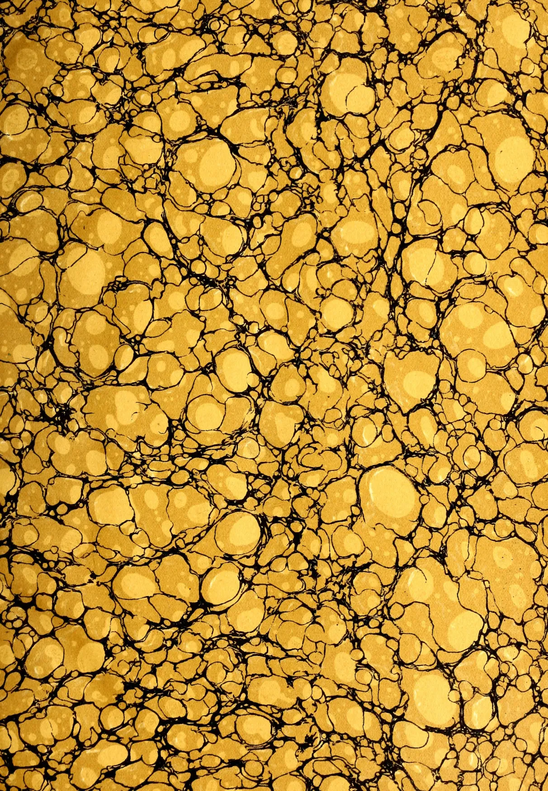
This image displays a classic marbled pattern, often referred to as 'stone' or 'shell' marble. The composition is dominated by a dense network of irregular, rounded shapes in various shades of yellow and gold, ranging from pale cream to deep goldenrod. These shapes are separated by thin, dark, winding lines that create a sense of depth and texture, similar to the veins in natural stone. The overall effect is a rich, organic, and textured surface. This image shows a blank, aged, light beige page, likely an endpaper or flyleaf from an old book. The paper has a slightly textured appearance with subtle variations in color, ranging from a pale cream to a light tan. There are no markings, text, or illustrations on the page. The lighting is even, highlighting the natural grain and slight imperfections of the paper.Digitized by the Internet Archive
in 2014
https://archive.org/details/tropicalagricul301908ceyl
This image shows a blank, aged, cream-colored page, likely an endpaper or flyleaf from an old book. The paper has a slightly textured appearance with some minor discoloration and faint smudges, particularly along the right edge. There is no text or other markings on the page.5
281
T 77
AND
FOUNDED BY JOHN FERGUSON, C.M.G., 1881.
EDITED BY
J. C. WILLIS, Sc.D., F.L.S.,
Director, Royal Botanic Gardens, Peradeniya.
Vol. XXX.
Containing Numbers I to VI. January to June, 1908.
44298
A. M. & J. FERGUSON,
Proprietors and Publishers,
COLOMBO, CEYLON.
Messrs. MACLAREN & SONS,
37 & 38, SHOE LANE, LONDON, E.C.,
Agents for Europe and America.
1908.
| PAGE. | PAGE. | ||
|---|---|---|---|
| A. | C. | ||
| Agricultural and Industrial Exhibition, Mysore ... .. |
58 | Cabbage Growing for Stock in Cuba ... | 306 |
| do Banks ... .. | 476 | Cacao, An Annual Report on ... | 184 |
| do Co-operative Society of Natal, Rules of ... |
347 | do Crop and Consumption, the World's ... | 96 |
| do Improvement in Ceylon (Address by Sir H. Mc- Callum) ... .. |
676 | do Drying of ... .. | 584 |
| do Society's Annual Report, 1907-08 ... .. |
565 | do Experiments in the West Indies ... | 427 |
| do Uses of Salt ... .. | 28 | do from the Gold Coast ... .. | 429 |
| Agriculture Indian, Sir H. S. Law- rence on ... 143, 230, 361 |
do Industry of the West Indies ... | 536 | |
| do in Burma ... .. | 55 | do of St. Thomé ... .. | 121 |
| do in Ceylon ... .. | 602 | do in Ecuador ... .. | 317 |
| do Machinery in ... .. | 504 | do Its General Culture ... .. | 124 |
| do Sir H. Blake, on Native ... | 142 | do Manurial Experiments on ... | 397 |
| do Tropical, and Artificial Manures ... .. |
390 | do Manuring ... .. | 590 |
| Agriculturists, State Aid for ... | 390 | do New Drier ... .. | 536 |
| Agri-Horticultural Show, Nuwara Eliya 473, 474 | do Transport of, Seed ... .. | 432 | |
| Akee Tree—Blighia Sapida ... | 535 | Calabash Gourds, Possible Market for ... | 166, 585 |
| Algaroba Tree or Bean ... .. | 262 | Calcium Cyanamide, Experiments with ... | 336 |
| Alkali and Water Logging in Irrigated Lands ... .. |
549 | Camphor, Annual Report for 1907 ... | 92 |
| Amazon Rubber, Cost of ... .. | 503 | do Cultivation in Ceylon 346, 349, 392 | |
| Annual Report, 1907-08, Ceylon Agri- cultural Society ... .. |
565 | do Culture in Mysore ... .. | 492 |
| Apiculture, A. B. C. of Bee Culture ... | 276 | do Export of Seed from Japan ... | 379 |
| do Absconding Swarms of Bees ... | 341 | do in Burma ... .. | 590 |
| do (by "An Amateur") 252, 253, 342 | do Japanese ... .. | 523 | |
| do in Ceylon ... .. | 342 | do Monopoly, The ... .. | 420 |
| Artificial Manure and Tropical Agri- culture ... .. |
390 | do Synthetic ... .. | 9 |
| do Silk in Japan ... .. | 396 | do The Sale of ... .. | 494 |
| Avocado Pears: Preparation & Shipment of ... .. |
208 | do Trees, Canker in ... .. | 399 |
| Ayapana, A Famous Medicine ... | 617 | Cane Sugar, Java's Success in ... | 122, 494 |
| B. | Canker in Camphor Trees ... .. | 399 | |
| Banana from Ceylon, Dried ... | 284 | Canning Pineapple ... .. | 613 |
| do Trade of Dutch Guiana ... | 286 | Cardamoms, Ceylon's Exports for 1907 ... | 181 |
| Banks, Agricultural ... .. | 473 | Carnauba Palm ... .. | 585 |
| Beans (Phaseolus lunatus), Poisonous ... | 530 | do Wax ... 90, 113, 205, 585 | |
| do Properties in ... .. | 530 | Cassava Starch, Industrial Prospects of ... | 209 |
| do Poisonous ... .. | 449 | Cashew Tree, The ... .. | 616 |
| Beekeeping, a Rural Industry ... | 560 | Castilloa and Hevea ... .. | 383 |
| Bees, Indian ... .. | 48 | do Rubber Tapping and Preparing, Hints on ... .. |
81 |
| do Young, and their Larvæ ... | 613 | Castor Oil as a Feeding Material ... | 493 |
| Blighia Sapida, Akee Tree ... | 535 | Ceylon Agricultural Society, Sir Henry Blake on the ... .. |
142 |
| Board of Agriculture: Minutes 167, 264, 477 | do Agricultural Society's Annual Report for 1907-08 ... |
565 | |
| do Progress Report 168, 265, 478 | do Agriculture in ... .. | 602 | |
| do Possibilities before the ... | 245 | do Banana, Dried ... .. | 284 |
| Bolivia, Rubber Tapping in ... | 70 | do Cotton Growing in ... .. | 490, 507 |
| Botany, Articles on the Literature of ... | do Olive Cultivation in ... .. | 585 | |
| Economic ... 143, 229, 349 | do Orange Growing in and in other Tropical Lands ... .. |
99 | |
| do Literature of Economic 64, 143, 228, 348, 471 |
do Planters' Association Annual Report ... .. |
161 | |
| Brokers' Reports on Tea ... .. | 513 | do Rice Cultivation in ... .. | 1 |
| Broom Corn, West Indian ... .. | 122 | do Rubber and Tea ... .. | 181 |
| Burbank, Luther ... .. | 574 | do Tea and Rubber ... .. | 181 |
| Burma, Agriculture in ... .. | 55 | do Tea in America ... 595, 601 | |
| do as a Market for Tea ... .. | 368 | do do Crop Estimate for 1908 ... | 92 |
| do Garjan Oil in, Sources of ... | 10 | do do Europe ... .. | 597 |
| do do Germany ... .. | 601 | ||
| do do Japan ... .. | 601 | ||
| dc do Planting Shares, Market for ... .. |
90 | ||
| do do Roumania ... .. | 601 | ||
| do do Russia ... .. | 615 | ||
| do Trade Report ... .. | 274 | ||
| do Tropical Agriculture in, and India... .. |
464 | ||
| Children's Gardens and the Public ... | 152 | ||
| PAGE. | PAGE. | ||
|---|---|---|---|
| China Tea Campaign ... | 280 | D. | |
| Cigars from London Grown Tobacco ... | 398 | Dairy Sanitation and Milk Supply ... | 562 |
| Cinnamon Oil, Distillation of ... | 525 | Danni Palm, The... .. | 138 |
| Citrate of Lime and Concentrated Lime Juice ... .. | 441, 443 | Dioscorea vs. Yams ... .. | 368 |
| do Use of Centrifugals for Drying ... | 442 | Disease among Plants, Immunity to ... | 89 |
| Citronella Oil ... .. | 319 | Distillation of Cinnamon Oil ... | 525 |
| do do in Ceylon and Java ... | 400 | Divi-Divi—a Useful Tanning Tree ... | 93 |
| do do Test for ... .. | 114 | Drugs, Trade Report on ... .. | 453 |
| Coca ... .. | 525 | Dry Weather, Loss of Water from Soil during ... .. | 549 |
| do Leaves, Drying of ... .. | 137 | ||
| Cocaine, Cheap ... .. | 451 | E. | |
| do in India ... .. | 452 | Edible Oil from Saflower Seed ... | 41 |
| Coconut and Paspalum dilatatum ... | 394 | Education, Suggestions on Rural ... | 575 |
| do and Rubber ... .. | 496 | Egypt, Tropical Plants for ... .. | 618 |
| do Beetle Pest in South Seas ... | 386 | Enemies of Para Rubber in Burma ... | 70 |
| do Cultivation in the Philippines 306, | 538 | Entomological Notes ... .. | 17 |
| do do in Samoa ... .. | 544 | Experiments with Rice ... .. | 438 |
| do Disease in Travancore and Ceylon ... .. | 505, 589 | ||
| do do in Cochin... .. | 514 | F. | |
| do do Ceylon and Travancore ... | 505 | Famine Food in India ... .. | 516 |
| do Industry in Travancore ... | 128 | Fertilisation of Land ... .. | 279 |
| do Palm and its Enemies ... | 386 | Fertility, Soil, some Factors Influencing ... | 27 |
| do do Bud-rot Disease of the ... | 192, 589 | Flowering Trees of Ceylon ... .. | 511 |
| do do Culture and Salt ... 491, | 506 | Formic Acid as a Coagulant for Para Rubber ... .. | 606 |
| do do in Travancore ... .. | 401 | Fructification, Why does Pruning Stimulate ... .. | 455 |
| do do Root Disease of the ... | 19 | Fruit Culture ... .. | 69 |
| do do Salt for ... .. | 386 | do Industry of Jamaica ... .. | 450 |
| do Planting in New Guinea ... | 387 | do Packing for Export ... .. | 340 |
| do Products in the Philippines ... 306, | 538 | Fungus Diseases, Treatment of ... | 24 |
| do Rubber and Tropical Products ... | 280 | do on Rubber Plants ... .. | 69, 585 |
| do Salt in ... .. | 188 | ||
| do Splitting for Copra ... .. | 544 | G. | |
| do Stem Bleeding Disease ... 92, 193, 194, 197, 282, 283, 285, 385, 387, 498, 588 | 588 | Gardens and the Public, Children's ... | 152 |
| do Stem Bleeding Disease, Lecture on and Criticism... .. | 384 | do Singapore Economic ... .. | 613 |
| do Stem Bleeding Disease, Lecture by Mr. Petch ... .. | 285 | Garjan Oil in Burma, Sources of ... | 10 |
| do Trees, Dead or Diseased ... | 383 | Ginger, Cultivation and Preparation of Jamaica ... .. | 164 |
| do vs. Tea ... .. | 195 | Girth of Trees, Handy Method of Measuring ... .. | 183 |
| do Water ... .. | 12 | "Gootee" Method of Propagation ... | 470 |
| do with reference to its Products and Cultivation in the Philippines ... .. | 306, 424 | Gourds, Possible Market for Calabash ... | 166 |
| Coffee Growing in the New Hebrides, Bonus for ... .. | 613 | Grape Fruit and Pomelo ... .. 410, | 512 |
| do Leaf Disease in ... .. | 602 | Green Colour in Parts of Plants, Preservation of ... .. | 466 |
| do Innocuous ... .. | 41 | Greenwood Borer and Mole Rat ... | 263 |
| Coir Manufacture in Java ... .. | 490 | Grevillea Robusta ... .. | 399 |
| Colombo Tea Sales ... .. | 603 | Ground Nuts ... .. | 391 |
| Competition, Small Holdings ... | 158 | do Cultivation in India ... .. | 436 |
| Consular Reports on the Rubber Industry ... .. | 2 | Guttapercha in Russia ... .. | 496 |
| Co-operative Credit Societies in Bengal do Society, Rules of Natal Agricultural ... .. | 148 | ||
| Copra, Coconut Splitting for ... | 544 | H. | |
| do in Portuguese Africa ... .. | 514 | Hawaii, A Mesquite Grove in ... | 158 |
| Coquilho-Nuts ... .. | 88 | Hemp, New Manure for ... .. | 399 |
| Corn, West Indian Broom ... .. | 122 | Hevea Brasiliensis and Castilloa ... | 383 |
| Costa Rica, Plantains in ... .. | 530 | do Enemies of ... .. | 70 |
| Cotton Growing and Irrigation ... | 509 | do Five-Seeded Fruit ... | 610 |
| do do Dutch Colonies ... .. | 612 | do Formic Acid as a Coagulant ... | 606 |
| do do Industry for Ceylon ... | 377 | do Proper Distance for Planting ... | 300 |
| do do in Central Asia ... .. | 614 | do Variation and Selection in ... | 299 |
| do do in Ceylon ... .. 490, | 507 | Humus and the best means of Supplying it | 551 |
| do Seed Selection 1906-7 ... | 13 | ||
| Cottons, Different kinds, Indian ... | 490 | ||
| Cultivation and Curing of Tobacco ... | 579 | ||
| Curing and Cultivation of Tobacco ... | 579 |
| PAGE. | PAGE. | ||
|---|---|---|---|
| I. | |||
| Immunity to Disease among Plants ... | 89 | Mangosteens for Panama .. | 602 |
| Improved Ploughs in Tinnevelly District | 556 | Manicoba Jaqui, and its Allies | 412 |
| India, Tropical Agriculture in ... | 464 | do Species of Manihot ... | 299 |
| Indian Agriculture, Sir H. S. Lawrence | Manihot Glaziovii, Manicoba Species of, | ||
| on ... .. | 143, 230 | Further Notes on ... .. | 299 |
| do Bees ... .. | 48 | Manure, Experiments with Calcium | |
| do Dust and Hankow Brick Tea ... | 615 | Cyanamide ... .. | 336 |
| do Tea Association ... .. | 614, 615 | do for Vines ... .. | 398 |
| do do Bushes, Life of ... .. | 276, 361 | do New, for Hemp ... .. | 399 |
| Indigo, Synthetic ... .. | 205 | Manures, Sources and Use of Nitro- | |
| Industrial and Agricultural Exhibition, | genous ... .. | 554 | |
| Mysore ... .. | 58 | Market for Tea Planting Shares ... | 90 |
| Innoculation, Progress in Legume ... | 459 | do London Rubber ... .. | 6 |
| Innocuous Coffee ... .. | 41 | do Rates for Tropical Products ... | 482 |
| Insect Pests, Practical Remedies for ... | 332 | Measuring Girth of Trees, Simple Meth- | |
| Instrument, Newly Patented, for Rub- | od of ... .. | 183 | |
| ber Tapping ... .. | 495 | "Melilot" or "Pea Clover" ... .. | 367 |
| Irrigated Land, Alkali and Water Log- | Mesquite Grove in Hawaii, A ... .. | 158 | |
| ging in ... .. | 549 | Milk Supply and Dairy Sanitation ... | 562 |
| Irrigation in Bengal ... .. | 365 | Minutes of Proceedings, Board of Agri- | |
| culture ... .. 167, 264, 477, | 576 | ||
| J. | Mixed Garden of the Sinhalese Villager | 101 | |
| Jamaica Fruit Industry ... .. | 450 | do Plantations ... .. | 87 |
| do Ginger Cultivation and Prepar- | Molasses ... .. | 611 | |
| ation of ... .. | 164 | Mole Rat and Greenwood Borer ... .. | 263 |
| do Pimento Growing in ... .. | 545 | Mosquito Blight in Tea ... .. | 221 |
| do Orange Trees, How to Encour- | Mosquitoes, and Malaria ... .. | 512 | |
| age early Bearing ... .. | 100 | do Prickly Pear Leaves a Pre- | |
| do Small Holdings Competition ... .. | 158 | ventative of ... .. | 602 |
| Java, Coir Manufacture in ... .. | 490 | Mysore Agricultural and Industrial | |
| do Tea in ... .. | 499 | Exhibition ... .. | 58 |
| do Mr. Welldon's Visit to ... .. | 587 | N. | |
| Java's Success in Cane Sugar ... .. | 494 | New Congo Rubber Co. in France .. | 618 |
| Jungle Products used during Famine, | do Guinea, Planting in Rubber and | ||
| 1896-7, List of ... .. | 546 | Coconuts ... .. | 387 |
| Jute vs. Rice ... .. | 65 | do Rubber-containing Plants ... .. | 612 |
| K. | Nitrogenous Manures, Sources and Use of | 554 | |
| Kolanut, Studies on ... .. | 450 | Notes and Queries 67, 166, 263, 366, 476, | 583 |
| Kus-Kus Root, The ... .. | 319 | do on some Familiar Local Products | 393 |
| L. | O. | ||
| Lace-making in Cottage and Factory ... | 279 | Olives Grown in Ceylon ... .. | 585 |
| Leaf Disease in Coffea robusta ... .. | 602 | Orange Growing in Ceylon ... .. | 196 |
| Legume Inoculation, Progress in ... .. | 459 | do do do and other | |
| Lemon Grass Oil ... .. | 421 | Tropical Lands... .. | 99 |
| do Juice ... .. | 494 | do Tree, how to Renovate an ... .. | 380 |
| Lettuce Culture ... .. | 211 | do Trees, how to Encourage Early | |
| Lightning and Trees ... .. | 91 | Bearing ... .. | 100 |
| Lime and its Relation to Agriculture ... | 456 | Oranges for Health ... .. | 485 |
| do Citrate of—Use of Centrifugal for | Overproduction of Rubber ... .. | 84 | |
| Drying ... .. | 442 | P. | |
| do Crops and Products ... .. | 440 | Packing Fruit for Export ... .. | 349 |
| do Juice, Concentrated, and Citrate | Paddy, Advantage of Transplanting ... | 46, 131 | |
| of Lime ... .. | 441, 443 | do Cultivation ... .. | 496, 505 |
| Limes, Cultivation of ... .. | 206 | do Experiment in Gowri Sanna ... .. | 262 |
| Literature on Economic Botany and | do Fields, Rotation of Crops in ... .. | 297 | |
| Agriculture ... 64, 143, 228, 348, 471, | 582 | do Growing and Bone Manure ... .. | 196 |
| Literature on Economic Botany, Recent | do (Rice) Cultivation in Ceylon ... .. | 270 | |
| Articles on ... .. | 143, 229, 349 | Palm, Carnauba... .. | 90, 113, 205, 585 |
| Local Products, Notes on some Familiar | 393 | Palms, Diseases of ... .. | 192 |
| London Rubber Market ... .. | 6 | Panama, Mangosteens for ... .. | 602 |
| Luther Burbank ... .. | 574 | Para, Plantation vs. Wild ... .. | 392 |
| M. | Paspalum Dilatatum and Coconuts ... .. | 394 | |
| Machinery in Agriculture ... .. | 504 | "Pea Clover" or "Melilot" ... .. | 367 |
| Malaria and Mosquitoes ... .. | 512 | Pears, Avocado, Preparation and Shipment | 208 |
| Malay Rubber Growers' Association ... .. | 500 | Peruvian Methods of Cultivation and | |
| Malaya, Planting Prospects in ... .. | 502 | Tapping Rubber ... .. | 609 |
| do Rubber in ... .. | 4 | do Rubber... .. | 86 |
| Pests, Plantation Rubber and ... .. | 191 | ||
| PAGE. | PAGE. | ||
|---|---|---|---|
| Petroleum Residue for Exterminating White Ants ... .. | 278 | Rubber Cultivation and Tapping, Peruvian Methods of ... .. | 609 |
| Pimento Growing in Jamaica ... .. | 545 | do Discoveries, Mr. Bamber's latest ... .. | 617 |
| Pineapple Canning ... .. | 613 | do Estate Surveyor for W. Borneo ... .. | 594 |
| do Growing in the West Indies ... .. | 526 | do Estates, Suppressing Weeds on ... .. | 371 |
| Plant Breeding and Tropical Agriculture ... .. | 466, 515, 587 | do Experiments by Mr. Herbert Wright ... .. | 484 |
| do Emigrants, Our ... .. | 235 | do Five-Seeded Hevea Fruit ... .. | 610 |
| Plantains in Costa Rica ... .. | 530 | do Formic Acid as a Coagulant for Para ... .. | 606 |
| Plantation Rubber and Pests ... .. | 191 | do Fungus ... .. | 585 |
| do vs. Wild Para ... .. | 392 | do Funtumia in Perak ... .. | 510 |
| Plantations, Mixed ... .. | 87 | do Growers' Association, Malay ... .. | 500 |
| Planters' Association of Ceylon, Annual Report ... .. | 161 | do Growing in Queensland ... .. | 608 |
| Planting in Nyasaland ... .. | 183 | do do Mr. J. L. Shand's Views on ... .. | 396 |
| do Notes from N.W.P. ... .. | 188 | do Guayule ... .. | 103 |
| do Shares, Tea, Market for ... .. | 90 | do Guttapercha, in Russia ... .. | 496 |
| Plants for Egypt, Tropical ... .. | 618 | do Handy Method of Measuring Girth of Trees ... .. | 183 |
| do Watering of ... .. | 564 | do Hevea and Castilloa ... .. | 383 |
| Ploughs in Tinnevelly District, Improved ... .. | 556 | do Hints on Tapping and Preparing Castilloa ... .. | 85 |
| Poisoning by Sorghum ... .. | 443 | do Industry, Ceylon ... .. | 376 |
| Poisonous Properties in Beans (Bonchi) ... .. | 530 | do do Consular Reports on ... .. | 2 |
| Pomelo and the Grape Fruit ... .. | 410, 614 | do do of Brazil ... .. | 489 |
| do or Pummelo ... .. | 410, 614 | do do Trend of the ... .. | 372 |
| Possibilities before the Agricultural Society ... .. | 245 | do in Bolivia ... .. | 369 |
| Preservation of Green Colour in Parts of Plants ... .. | 466 | do in Brazil ... .. | 204, 375 |
| Price of Rubber ... .. | 411 | do in Burma, Para, Enemies of ... .. | 70 |
| Prickly Pear Leaves, a Mosquito Preventative ... .. | 602 | do in Goa ... .. | 483 |
| Products, Local, Notes on Some Familiar ... .. | 303 | do in Jamaica ... .. | 615 |
| do in N.C.P. ... .. | 505 | do in Java ... .. | 486 |
| Progress in Legume Inoculation ... .. | 459 | do in Kalutara District ... .. | 487 |
| do Report, Board of Agriculture ... .. | 68, 168, 265, 478, 565 | do in Malaya ... .. | 189 |
| Propagation, "Gootee" Method of ... .. | 470 | do in Mexico ... .. | 369 |
| Pruning Stimulates Fructification ... .. | 455 | do in New Guinea ... .. | 387 |
| Pterocarpus Indicus ... .. | 512 | do in Peru ... .. | 609 |
| do in Queensland ... .. | 608 | ||
| do in South Coorg ... .. | 611, 613 | ||
| do in South America ... .. | 495 | ||
| do Manicoba and its Allies ... .. | 299, 412 | ||
| do do or Ceara ... .. | 518 | ||
| do Manihot Glaziovii, New species and there Importance ... .. | 198 | ||
| do Mgoa in British East Africa ... .. | 102 | ||
| do Market ... .. | 86 | ||
| do do London ... .. | 6 | ||
| do do 1907, S. Figgis & Co's. Annual Review ... .. | 94 | ||
| do do Smithett & Co's. ... .. | 95 | ||
| do Mr. Bamber's Latest Discoveries do New Process of Preparing ... .. | 617 | ||
| do New Tree (Beekrodea Tonkinensis) ... .. | 398 | ||
| do do Congo Rubber Co. in France ... .. | 203 | ||
| do Notes ... .. | 618 | ||
| do Over-production of ... .. | 82, 495 | ||
| do Palo Amarillo: a New Rubber Tree ... .. | 84 | ||
| do Paraguayan ... .. | 109 | ||
| do Peruvian ... .. | 488 | ||
| do Pests and Diseases of 262, 263, 332, 592, 594 ... .. | 86 | ||
| do do do Methods to be Employed against ... .. | 592 | ||
| do Plantation, and Pests ... .. | 191 | ||
| do Planter's Catechism ... .. | 370 | ||
| do Planting Industry, Position and Prospects of the ... .. | 296 | ||
| do do Policy ... .. | 83 | ||
| do Plants from Cuttings ... .. | 396 | ||
| do do Fungus on ... .. | 69, 585 |
| Quinine, State ... .. | 512 |
| Rice Cultivation ... .. | 496, 505 |
| do do in Burma ... .. | 276 |
| do do in Ceylon ... .. | 1, 270 |
| do do in Malaya ... .. | 4 |
| do Exhibition in Siam ... .. | 615 |
| do Industry in British Guiana ... .. | 214 |
| do do of the United States ... .. | 42, 132, 214 |
| do vs. Jute ... .. | 65 |
| Rotation and Tillage, Principles of ... .. | 34 |
| do of Crops in Paddy Fields ... .. | 297 |
| Rozelle: Its Culture and Uses ... .. | 311 |
| Rubber African, and Railways ... .. | 79 |
| do Amazon, the Cost of ... .. | 503 |
| do Analysis of, Samples from India ... .. | 516 |
| do An Interesting Substance like ... .. | 503 |
| do and Coconuts ... .. | 496 |
| do and Tea, Ceylon—by Sir H. Blake ... .. | 181 |
| do Artificial ... .. | 618 |
| do A Strange Romance of ... .. | 182 |
| do Axillary Buds ... .. | 263 |
| do Castilloa and Hevea ... .. | 383 |
| do Ceara or Manicoba ... .. | 518 |
| do Coconut and other Tropical Products ... .. | 280 |
| do Co. for Tonkin ... .. | 594 |
| do Co., Latest Sumatra ... .. | 82 |
| do Containing Plants, New ... .. | 612 |
| PAGE. | PAGE. | ||
|---|---|---|---|
| Rubber Price of ... .. | 411 | Tea Ceylon and Indian, Burma as a Market for... | 368 |
| do Prices ... .. | 517 | do Cleaning Machine ... .. | 591 |
| do Production, British Raw ... | 373 | do Colombo Sales ... .. | 603 |
| do Prospects ... .. | 483 | do Cultivation in Java ... .. | 499 |
| do Results ... .. | 607 | do do in the United States ... | 444 |
| do Samples from India, Analysis of ... | 516 | do Distributor on the Trade Outlook ... | 383 |
| do Scientific Use for, A ... .. | 694 | do Estates "Going out" in Ceylon ... | 77 |
| do Seed, Para ... .. | 80 | do Fine Flavoured ... .. | 76 |
| do Smoked ... .. | 81 | do Indian Association ... .. | 614 |
| do Sources of ... .. | 87 | do do Dust and Hankow Brick ... | 615 |
| do Synthetic ... .. | 483 | do in 1907—the Situation in America ... | 174-178 |
| do Tapping in Bolivia... .. | 70 | do in French Indo-China ... .. | 318 |
| do do Newly Patented Instrument for ... .. | 495 | do in Jamaica ... .. | 118 |
| do do of British Guinea, Native ... .. | 301, 415 | do in Katha ... .. | 399 |
| do do Patterns: "The Chain Gamma" ... .. | 79 | do Largest Yield per acre in Ceylon ... | 187 |
| do do Young Trees ... .. | 370 | do Mr. J. H. Renton's Continental Campaign ... .. | 381 |
| do Tea, and Labour ... .. | 381 | do Pests ... .. | 221, 278 |
| do The World's Cultivated Area ... | 87 | do Planting Shares, Market for India and Ceylon ... .. | 90 |
| do Trees of British Guiana, Native ... | 301, 415 | do Production of ... .. | 73 |
| do Visit of a Well-known London Expert... .. | 395 | do Public Sales in Colombo ... .. | 78 |
| Rural Education, Suggestions on ... | 575 | do Record Yields ... .. | 77 |
| do Rubber and Labour ... .. | 381 | ||
| do vs. Coconuts... .. | 195 | ||
| do Yields, Reduced ... .. | 77 | ||
| Teak ... .. | 454 | ||
| Termite on Rubber ... .. | 592 | ||
| Termites (White Ants) to Destroy the Nests of ... .. | 335 | ||
| Test for Citronella Oil ... .. | 114 | ||
| Testing Seed, Principles of... .. | 354 | ||
| Tillage and Rotation, Principles of ... | 34 | ||
| Timber: Preservation against Wood-splitting ... .. | 331 | ||
| Timnevelly District, Improved Ploughs in Tobacco Breeding ... .. | 556 | ||
| do Cultivation and Curing ... .. | 351 | ||
| do Experiment Station for Jaffna ... | 579 | ||
| do Growers, Hints for ... .. | 294 | ||
| do London Grown, Cigars from ... | 322 | ||
| Trade Report on Drugs ... .. | 398 | ||
| Transplanting Paddy, Advantages of ... | 453 | ||
| Transpiration and Anatomical Structure in Tropical Plants ... .. | 131 | ||
| Transport of Seed Cacao ... .. | 229 | ||
| Treatment for Coconut Stem Bleeding Disease ... .. | 432 | ||
| do of Fungus Diseases ... .. | 194 | ||
| Tree Culture by Stream and Reservoir—Afforestation in Water Areas ... | 24 | ||
| Trees and Lightning ... .. | 170 | ||
| do and their Uses, some Beautiful Tropical... .. | 91 | ||
| Trend of the Rubber Industry ... .. | 570 | ||
| Tropical Agriculture and Artificial Manures ... .. | 372 | ||
| do do and Plant Breeding ... .. | 390 | ||
| do do in Ceylon and India ... .. | 466 | ||
| do Cultivation in N.W. Australia ... | 464 | ||
| do Plants, Transpiration and Anatomical Structure in ... .. | 493 | ||
| do Products, Market Rates for ... | 229 | ||
| do do Rubber, Coconut and other... .. | 482 | ||
| do Trees and their Uses, some Beautiful ... .. | 280 | ||
| do Plants for Egypt ... .. | 570 | ||
| 618 |
| Safflower Seed, Edible Oil from ... | 41 |
| Sago Palm, The ... .. | 433 |
| Salt, Agricultural Uses of ... .. | 28 |
| do and Coconut Palm Culture ... | 491, 506 |
| School Gardening ... .. | 155, 346, 366 |
| do do Educational Value of ... | 225 |
| do do Teachers, Horticultural Education for ... .. | 226 |
| do do Work and the Normal School ... .. | 224 |
| Scientific Use for Rubber, A New ... | 594 |
| Seed Testing, Principles of ... .. | 354 |
| Sesamum in Burma ... .. | 319 |
| Siam, Rice Exhibition in ... .. | 615 |
| Silk, Artificial, in Japan ... .. | 396 |
| Singapore Economic Gardens ... .. | 613 |
| Sisal Fibre ... .. | 14, 88, 330, 611 |
| do do Cultivation ... .. | 14 |
| do do Industry in Queensland ... | 327 |
| Soil Chemistry ... .. | 340 |
| do Fertility, some Factors Influencing ... | 27 |
| do Loss of Water from, during Dry Weather ... .. | 549 |
| Sorghum Poisoning ... .. | 443 |
| State Aid for Agriculturists ... .. | 390 |
| do Quinine ... .. | 512 |
| Sugar as Food ... .. | 320 |
| do in Java ... .. | 220 |
| Synthetic Camphor ... .. | 9 |
| do Indigo ... .. | 205 |
| do Rubber ... .. | 512 |
| Tamarind Seed as a Famine Food ... | 140 |
| do (Tamarindus Indica) ... .. | 140 |
| Tapping Rubber in Bolivia ... .. | 70 |
| do Young Rubber Trees ... .. | 370 |
| Tea and Rubber, Ceylon—by Sir Henry Blake ... .. | 181 |
| do Ayapana, a Famous Medicine ... | 617 |
| do Brokers' Reports on ... .. | 513 |
| do Bushes, Life of Indian ... .. | 276 |
| do Campaign, China ... .. | 280 |
| PAGE. | |||
|---|---|---|---|
| V. | |||
| Vanilla Crop since 1901 | ... | ... | 118 |
| Veterinary Notes | ... | ... 223, | 344 |
| Victoria Regia, the Giant Water-Lily | ... | ... | 469 |
| Vines, Manure for | ... | ... | 398 |
| W. | |||
| Water Lily, the Giant (Victoria Regia) | 469 | ||
| do Logging in Irrigated Land and | |||
| Alkali ... | ... | ... | 549 |
| do Loss of, from Soil during Dry | |||
| Weather | ... | ... | 549 |
| Watering of Plants | ... | ... | 564 |
| Wattle Cultivation | ... | ... | 507 |
| do Industry in Natal | ... | ... | 378 |
| Wax, Carnauba ... | ... | 90, 113, | 205 |
| do Palm, The ... | ... | ... 423, | 585 |
| Weeds on Rubber Estates, Suppressing | 371 | ||
| West Indian Broom Corn | ... | ... | 112 |
| do Indies, Agriculture in | ... | ... | 526 |
| do do Pineapple Growing in the | ... | ... | 526 |
| White Ant Exterminator | ... | 221, 278, | 509 |
| do Petroleum Residue for Ex- | |||
| terminating | ... | ... | 278 |
| do To Destroy the Nests of | ... | ... | 335 |
| Wild vs. Plantation Para | ... | ... | 392 |
| Wood Splitting, Preservation against... | ... | ... | 331 |
| World's Cultivated Rubber Area, The... | ... | ... | 87 |
| do Cacao Crop and Consumption... | ... | ... | 96 |
| Y. | |||
| Yams vs. Dioscorea | ... | ... | 368 |
| Young Bees and their Larvæ | ... | ... | 613 |
| Z. | |||
| Zapupe Fibre Plant | ... | ... | 325 |
THE
TROPICAL AGRICULTURIST
AND
MAGAZINE OF THE
CEYLON AGRICULTURAL SOCIETY.
VOL. XXX.
COLOMBO, 15TH JANUARY, 1908.
No. 1.
In view of the facts that we import more rice than we grow, that few local cultivators will sell any rice, and that local rice is not usually prepared in such a way as to appeal to the imported coolie, no more important subject can be brought up.
Large areas of new and good land are now available under irrigation in the dry zones of Ceylon, where larger crops can be obtained than in the poorer soils of the wet zones; yet no one offers to take up these lands, other than the local villagers, whose object would seem to be as much to keep out outsiders as to use the land for cultivation for themselves. The Kandyan villager of the North-Central Province will not grow rice for sale, to any appreciable extent, though the Batticaloa Tamil or Moorman will do so. It is difficult to see what remedy can be applied other than increasing the population, e.g., by the importation of Tamils, perhaps even from South India. The Kandyan villager at present grows only what he himself requires, and frequently allows his fields to lie fallow for one or two or even more crop seasons. Perhaps a larger charge for the unused water would tend to make him grow a little more rice. One cannot blame him for this attitude, but it is a great difficulty in the way of agricultural improvement.
It is doubtful, having regard to the increase of population, whether the area under rice cultivation in Ceylon is really increasing; the figures are too unreliable to base any calculations upon, but at least they show that if any, the increase is but small.
We shall welcome contributions, of moderate length, upon this subject from any one with special knowledge of it or of any side of it.
The Venezuelan Rubber Industry, although rich in possibilities, cannot be regarded as of any present importance; nor does it appear probable that it will assume any very considerable dimensions in the near future. The following facts will serve to illustrate this opinion.
ACTUAL CONDITIONS.—All the rubber shipped from Venezuela passes through the port of Ciudad Bolivar, on the Orinoco, and amounts, according to the latest returns, to some 200 tons a year; the source of this supply is on the upper waters of the River Orinoco, not far from the Brazil boundary line. This may be said to constitute the actual extent of the rubber industry in this country, as apart from experiments and schemes for its cultivation in other districts of the Republic. The plant from which the above supply is extracted is known as the Hevea brasiliensis, which grows wild in the district mentioned and is found in great abundance. The inaccessible nature of the region, however, and the political conditions, combined with difficulties of labour and transport, have hitherto restricted the annual output to its present meagre limits. It may perhaps be a question as to whether some rubber of Venezuelan origin, be not shipped, with that from Brazil, through the port of Para, but this does not probably amount to anything very considerable.
YIELD PER TREE.—With respect to the average yield per tree, an official publication on Venezuela, compiled in 1904, states that “in the Orinoco region the rubber tree found produces from 40 to 50 grammes of sap. In December and January, two hundred plants will produce from 12 to 14 kilos, which is equivalent to some seven kilos* of rubber. In April the sap contains more water and only yields about four to five kilos of rubber.”
PRICE.—As regards the price, that publication places it between 40 and 50 pesos (equal to about £6 10s. to £8) to the hundred pounds, although the finest qualities are more expensive.
METHOD OF EXTRACTION.—The method of extraction is primitive, but, I believe, effective. Incisions are made at different levels in the trunk of the tree, and the sap is allowed to drop into a vessel provided for the purpose. A photograph illustrating this process is enclosed.
EXTENT OF VENEZUELAN RUBBER RESOURCES.—It is, unfortunately, not possible to convey any just estimate as to the actual extent of the rubber-bearing districts in this country, for the region of the Upper Orinoco is practically a terra incognita. In the official publication referred to above, its extent is estimated at some thirty million ‘hectares.’ It is known to possess unbounded resources and to be capable, were the district opened up, of producing an almost unlimited supply of rubber for a large number of years; the absence of population, however, and the difficulties of every kind hitherto encountered, have disappointed all the hopes of the Venezuelan enterprise, and of the fairly numerous group of American and European capitalists who have, from time to time, interested themselves in this branch of the national wealth.
PROSPECTS.—To turn from the actual to the prospective state of the industry in Venezuela, I should mention that efforts are being made by Messrs Sprick, Luis & Co., as well as by other firms on the Orinoco, to develop the dis-
* About 14 lbs.
JAN. 1908.]3Saps and Exudations.tricts watered by the Rivers Caura and Paragua, lying at a distance of some two hundred miles to the South and West of Ciudad Bolivar. The region is reported to possess large resources of rubber, but, so far, small quantities only have been exported as samples.
EXPERIMENTAL CULTIVATION.—Some important experimental rubber cultivation is now being carried out by a Señor Raimundo Fonseca on his cocoa plantations, situated upon the North Coast between La Guayra and Puerto Cabello. The work was commenced in the expectation of favourable results, and his initial efforts were carried out upon a somewhat large scale, about 100,000 trees of the description known as Castilloa Ribrens being planted. Señor Fonseca's idea appears to have been to combine the two products of cocoa and rubber upon his property; he accordingly substituted the usual shade-trees—the two varieties are known here as 'guamo' (Inga) and 'Bucare' or 'bois immortel' (Erythrina umbrosa)—and planted the castilloa trees in their place, hoping to secure shade for the cocoa and a profitable crop of rubber into the bargain. The 'guamo' and 'bucare,' however, draw apparently little substance from the soil, whereas the rubber trees possess unusually exhaustive properties; and this is also a well-known attribute of the cocoa plant. The result was shown in the fact that the natural development of both plants was retarded, for whilst the cocoa crop was seriously diminished, the rubber plantation has been reduced to no more than some 4,000 bearing castilloa trees, and I am not aware that any exportations have been made, save as samples of the rubber produced.
With the above exceptions, rubber cannot be said to be cultivated in Venezuela.
I may conclude these remarks by mentioning that the experience gained in the various cases mentioned has led to the opinion, which is one shared by the large majority of persons interested in the subject here, that the rubber-tree,—as also similar plants, such as that producing the 'Tonga Bean' and Balata Gum is only seen at its highest yield under entirely natural, and therefore wild, conditions. All attempts to transplant, cultivate, improve, or otherwise modify the circumstances under which it is originally found would appear to be attended with disappointing results. This fact, should experience elsewhere confirm it, would apparently have to be reckoned with, by the Government of Ceylon,—and I may add that the hopes at one time entertained of producing rubber in the Island of Trinidad have also been disappointed, it is thought owing to similar causes.
SUMMARY.—To sum up, I would ask that the industry in Venezuela, being still scarcely beyond the experimental stages, and labouring, as it does, under unfavourable conditions, can have no appreciable effect on the volume of the world's supply; on the other hand, the unbounded resources latent in the interior constitute a store of hidden wealth which, in the progress of time and enterprise, may one day raise Venezuela to a leading position amongst the countries exporting rubber to the European market.
BALATA.—I have omitted any reference to the important staple trade in Balata, which is, I believe, not strictly rubber. Some thousand tons are annually shipped through Ciudad Bolivar, and a small supply comes from Maturin in the East of the Republic.
I am indebted mainly to Señor J. F. Padron, Secretary of the Chamber of Commerce, for the foregoing information.
Caracas, June 20, 1906.
Gums, Resins,4[JAN. 1908.ARGENTINE.—I.British Consulate, Rosario, May 29, 1906.
SIR,—I have the honour to acknowledge the receipt of your Circular, Commercial (13423) of April 28th, 1906, respecting the cultivation of rubber, and in reply I have to report that in this district this industry is of no importance whatever.
I have, &c.,
(Signed) H. M. MALLET.
His Majesty's
Principal Secretary of StateBritish Consulate, Puerto Cortes, June 5, 1906.
MY LORD,—I have the honour to acknowledge the receipt of your Circular, Commercial, of 28th April last, instructing me to forward full information with regard to the rubber industry in this Republic.
At least nine-tenths of the rubber exported from this port is of the wild quality and is of a very superior grade. Scarcely any rubber has been cultivated, although there are plenty of lands available and suitable.
In consequence of the high price ruling for the gum a large number of trees have been ruined from continual tapping, and unless these trees are replaced, the export must decrease.
The quantity of rubber exported from Puerto Cortes from July, 1904, to July, 1905 was 48,039 lbs.
I have, &c.,
(Signed) W. J. BAIN.
His Majesty's
Principal Secretary of State,British Consulate, Truxilo, June 9, 1906.
SIR,—With reference to your Circular, Commercial, No. 13423, in which it is requested that Consular Officers should send information respecting the position of the rubber industry in their districts, I have now to inform you, that rubber is not cultivated in my district, but about twenty thousand pounds of wild rubber are yearly exported from this Port.
The prospects for a continual supply are about the same.
I have, &c.,
(Signed) A. E. MELHADO.
His Britannic Majesty's
Secretary of State for Foreign Affairs,Although statistics show that tropical America contributes about 63 per cent. of the world's total rubber supply, tropical Africa 34 per cent., and Asia the remaining 3 per cent., British-grown rubber is steadily asserting its claim to priority with the consumer at home. The small output contributed from Asia includes products of the Federated Malay States, Ceylon, South India, and British North Borneo, which invariably fetch the best prices in European markets; but without considering the wide field open for capital and judicious enterprise in
JAN. 1908.]5Saps and Exudations.each of these countries, where the development of the planting industry has been placed on a par with a rapid expansion of the tea industry in India and Ceylon, observations may be confined to what is being accomplished in the Federated States of Malaya, where for the most part the trees are maturing and have scarcely yet begun to yield. At the end of 1905, there were about 40,000 acres planted with rubber, and by the close of the year following this had increased to more than 85,000 acres, with between six and seven million trees. On January 1st last there were nearly 86,000 acres, half of which had been opened during 1906 on 242 different estates. The output of dry rubber was about 130 tons in 1905 and 385 tons in 1906. The reason, that, while the average has more than doubled, the number of trees has not proportionately increased is that the number of trees planted per acre during 1906 was not so great as previously. With the present yearly increase of about 10 per cent. in the consumption of rubber—a rate which is likely to be exceeded as soon as prices become easier—it must be many years before the supply can become equal to the demand. If the whole of the rubber now planted in these States should grow vigorously, without the loss of a single tree, until the end of 1912 (when all the trees ought to be in bearing and yielding throughout the high average of lb. per tree), the Federated Malaya States will then be supplying only about one-seventeenth of the world's estimated requirements at that date. This figure—which, by the way, is given by Mr. J. B. Carruthers, the Director of Agriculture and Government Botanist of the Federated Malaya States—is calculated at the present 10 per cent. rate of increase in consumption, and makes no allowance for a probable higher rate. But meanwhile casualties amongst the trees must occur, for drought, excessive moisture, insect, fungoid, and bacterial pests with other accidental causes, such as sudden winds and fire, have all to be taken into account in reducing output.
In going carefully through the figures compiled from the annual reports of the numerous rubber plantation companies of Malaya issued during the past six months, it is found that in the great majority of cases the yield of rubber obtained exceeded the estimate. The average yield per tree in the Federated Malaya States appears to be just over one lb. of dry rubber per annum. In the case of estates having older trees this quantity is exceeded, and if labour were always available to tap the trees to a limit, no doubt considerably higher average would be obtained. On the Consolidated Malaya Rubber Estates, where 32,693 lbs. of rubber was harvested from 11,348 trees, the average was 2.88 lbs. per tree.
In the case of the Highlands and Lowlands Estate an average over 38,639 trees of nearly lbs. per tree is reported, while a yield of over 7 lbs. per tree was obtained from 807 trees widely planted to occupy 16 acres. The result of three tappings of these 807 trees was: First tapping, 2,500 lbs.; second 1,469; and third tapping 1,773 lbs.; a total of 5,742 lbs. But such results must be regarded as quite exceptional; although the returns indicate the immense superiority in the growth and yield of trees which are given plenty of space. This fact is being slowly realised by planters in the States, who nevertheless require considerable convincing, as, naturally, they desire to get their rubber into the market as early as possible in order to benefit by high prices. They realise that they have a sure market now, and perhaps feel a little uncertain respecting the future, so that one appreciates their motive in having close-planted trees during the first few years of bearing. Their view is that by the time the close-planting begins injuriously to affect the yield they will have made their money. But it is always possible, of course, for estates with a large acreage to combine the two systems, thus keeping a reserve of open-planted trees which would doubtless, by their increased yield in future years, make for the deficiencies of the close-planted. In this connection, however,
Gums, Resins,6[JAN. 1908.it is found that there are large areas quite as well, or even better, suited for rubber cultivation than the land already taken up. During 1906, for instance, a large area was planted in Perak than in any of the other States, an entirely new district having been opened in Lower Perak, where rubber is now growing as well as in more popular districts. Selangor has now nearly 45,000 acres under rubber cultivation, Perak about 30,000, Negri Sembilan 11,000, and Pahang close upon 485. Working on the various estates are 30,000 coolies, of whom nearly 30,000 are Tamils, 4,000 Javanese, 1,500 Malays, and 3,400 Chinese. When, however, the 13,000,000 trees already planted in Peninsula are all in bearing (say five years hence) about 50,000 coolies will be needed for tapping operations, apart from opening, planting, weeding and other work. Thus it will be seen that the labour question is of paramount importance, and now that Government recognises the importance of studying the coolies' health and comfort, the outlook is by no means unpromising.
Turning, in conclusion, to the prices realised during the past year's working of the various rubber companies of Malaya, it is found that a considerable decrease on the previous twelve months' results has to be recorded. The price of best cultivated Para, which in January stood at 6s. 1½d., after a gradual rise of 1½d. up to the end of March, began to recede in an evenly descending scale, until in December it stood at 5s. 5½d., recovering a little before the end of the year and at the time of writing is approaching 5s. 10d. The price of Brazilian Para took practically the same course, beginning at 5s. 5d. and reaching to 5s. 1d., being as a rule about 10 per cent. to 12 per cent. below the cultivated rubber. The factors which affect the price of rubber, and which must be considered in trying to foresee the future market price of this product, are many and various. How much the demand for rubber will increase is not easy to foretell, but rubber at the present high prices continues to find fresh markets and new uses.—Indian Trade Journal, Vol. VII., No. 87.
Calcutta, 28th November, 1907.
LONDON, November 22nd, 1907.—The market continues in a very uncertain condition, Fine Plantation, in sympathy with other kinds, being about 7d. per lb. lower where sales were effected, compared with last sale quotations. The highest price of the sale, viz., 3s. 10d., was realised for two small lots of biscuits from Hattangalla and Warriapolla. 3s. 9d. was the highest price obtained in the room for Crepe, the finest parcels of this and Block being held for about 4s. 1d. per lb. It is worthy of note that no such prices as these have been seen for Plantation Rubber since 1902, while the price of Hard Fine Para is lower than it has been since February, 1903. Scrap, unlike the finer grades, did not show such a depressed market, although here also sales were only effected with difficulty at comparatively low prices, and the darker grades of Crepe and Block were mostly withdrawn for want of support. Average price of Ceylon and Malaya Plantation rubber.—To-day 90 pkgs. at 3s. 1½d., corresponding sale last year 301 pkgs. 5s. 2½d. Hard Fine Para to-day 3s. 4½d., corresponding sale last year 5s. 2d. Particulars and prices as follows:—
| Mark. | Pkgs. | Description. | Price. s. d. |
Mark. | Pkgs. | Description. | Price. s. d. |
|---|---|---|---|---|---|---|---|
| B.N.S. (in diamond) | 1 | R'gh sheet etc. | 1 6 | Heatherley | 4 | Good darkish to black crepe pt. sold, 2s 11½d to 2 11¾ | |
| K.P.G. | 6 | Dark pressed crepe | 0 6 | Hattangalla | 2 | Fine biscuits | 3 10 |
| Elston | 1 | Rejections | 1 10 | Warriapolla | 4 | do do 3s 9½d to | 3 10 |
| Ellakande | 2 | Brown crepe | 3 0 | ||||
| Culloden | 23 | Brownish to dark crepe 2s 9d to 3 0½ |
| Mark. | Pkgs. | Description. | Price. s. d. |
Mark. | Pkgs. | Description. | Price. s. d. |
|---|---|---|---|---|---|---|---|
| Doranakande | 3 | Good biscuits | 3 6 | Taldua | 2 | Fine scrap | 2 8½ |
| Tallagalla | 4 | Fine biscuits | 3 8 | 2 | Dark scrap and rejections pt. sold |
2 0 | |
| M.A.K. (in dia- mond) |
1 | Fine sheet | 3 8½ | Ambattenne | 1 | Good scrap | 2 6½ |
| 9 | Good scrap and rejections pt. sold |
1 10 | Northumberland | 2 | Ball scrap and rejections pt. sold |
2 2 |
| P.S.E. | 5 | Fine sheet | 3 8½ | A.G. & Co. | 1 | Scrap | 2 2 |
| R.S. (in diamond) | 6 | Fine sheet pt. sold |
3 8 | ||||
| R. | 15 | Fine sheet 3s 8½d to |
3 9 | B.M. & Co | 3 | Good scrap | 2 7½ |
| E.B. & Co. | 2 | Fine pale and palish sheet |
3 8½ | 3 | Wound scrap &c | 1 9 | |
| A.G. & Co. | 3 | Fine pale and palish crepe |
1 | Fine sheet | 3 6 | ||
| 3s 8½d to | 3 9 | Beverlac | 1 | Good scrap | 2 7½ |
LONDON, December 6th, 1907.—This was about the largest auction of Plantation Rubber that has yet been held, and the stronger tone of the market was well evidenced by the good competition that was forthcoming for all grades. About one-half of the offerings were disposed of in the room at prices generally showing an advance of from about 4d. to 6d. per lb. on last sale quotations. This is more satisfactory in view of the fact that the Bank Rate remains unchanged, and that the position in America as yet hardly admits of active business in that market. Sheet and Biscuits were in good demand and sold readily at from about 3s. 11d. to 4s. 4½d. per lb., the latter price being realised for some very fine dark Sheet from Highlands Estate, while the highest price for Biscuits, viz., 4s. 3d, was paid for some from Arapolakande and Glencorse Estates. Crepe was rather more plentiful than other descriptions, and the quotation suffered to some extent in consequence. Some of the palest offered, viz., that from Jebong was withdrawn for higher limits, and the highest price for this grade was 4s. 2½d. paid for a small lot from Arapolakande. Block continues to be less sought after than other kinds, and 66 cases of fine clear amber block from Lanadron Estate were bought in for want of competition. Average price of Ceylon and Malaya Plantation rubber.—To-day 481 pkgs. at 3s. 7½d., corresponding sale last year 217 pkgs. 5s. 2½d. Hard Fine Para to-day 3s. 8½d., corresponding sale last year 5s. 2d. Particulars and prices as follows:—
CEYLON.| Kumaradola | 2 | Good biscuits | 4 0¾ | Gonakella | 2 | Fine scrap and cuttings 2s 7½d to |
2 11 |
| G.M. | 10 | Lump scrap 2s 5d to |
2 6 | V.S. | 7 | Good biscuits and sheet 4s to 4 |
0¾ |
| Vicarton | 2 | Good palish bis- cuits (77 lbs.) 3s 7½d to |
4 0 | K.M. (in d'mond) | 4 | Darkish and dark crepe 2s 4d to 3 |
4½ |
| 1 | Barky scrap | 2 0 | 3 | Biscuits, scrap and rejections 2s 6d to |
2 10 | ||
| Matang | 23 | Good palish to darkish crepe 3s 2½d to |
3 8 | Waharaka | 2 | Block and scrap 2s 7d to |
4 0 |
| 12 | Good sheet | 4 2½ | Ambattenne | 1 | Good biscuits | 4 2½ | |
| 3 | Wet pressed crepe and scrap pt. sold |
3 0 | 1 | Scrap | 1 6 | ||
| Sorana | 6 | Good biscuits | 4 2¼ | Densworth | 2 | Good biscuits | 4 2¾ |
| Gonakelle | 1 | Good biscuits | 4 2½ | Sunnycroft | 1 | Good sheet | 4 0 |
| Doranakande | 4 | Block scrap | 2 7 | ||||
| Tallagalla | 2 | do do | 2 7 |
| Mark. | Pkgs. | Description. | Price. s. d. |
|---|---|---|---|
| M.A.K. (in diamond) | 9 | Good biscuits 3s 4d to |
4 0 |
| 7 | Crepe, scrap and rejections pt. sold 2s 7d to |
3 0 | |
| Taldua | 2 | Good biscuits | 4 2½ |
| 1 | Scrap | 2 6 | |
| Northumberland | 1 | Block scrap | 2 6 |
| Clara | 1 | do do | 2 9 |
| K.M. (in diamond) | 3 | Good & medium biscuits |
3 9 |
| 13 | Very fine pale crepe |
4 1 | |
| Culloden | 5 | Fine palish and brownish 3s 7½d to |
4 0 |
| 11 | Good dark | 3 5 | |
| 2 | Dark block | 3 3 | |
| 1 | Very fine pale crepe |
4 2¾ | |
| Arapolakande | 7 | Fine biscuits | 4 3 |
| 1 | Good mottled crepe |
3 7½ |
| Mark. | Pkgs. | Description. | Price. s. d. |
|---|---|---|---|
| Arapolakande | 3 | Brownish to darkish |
3 6 |
| 1 | Good scrap | 3 0 | |
| Glencorse | 1 | Fine biscuits | 4 3 |
| 3 | Good scrap and cuttings 2s 5½d to |
2 10½ | |
| 9 | Good brownish to dark crepe 3s 1½d to |
3 7½ | |
| Aberdeen | 5 | Very fine sheet | 4 2 |
| 1 | Good pressed scrap |
2 10 | |
| Glanrhos | 1 | Good rejections | 2 6 |
| 14 | Good sheet and biscuits pt. sold 3s 10½d to |
4 0 | |
| 1 | Fine sheet | 4 1¼ | |
| Gikiyanakande | 7 | Brownish to darkish crepe 3s 2½d to |
3 8 |
| Kepitagalla | 12 | Fine sheet | 4 1 |
| Suduganga | 2 | Fine sheet | 4 0 |
| Golconda | 7 | Good sheet | 4 0½ |
| 1 | Dark block | 3 0 | |
| F.D.P. (in Estate mark) |
10 | Good sheet 4s to | 4 2 |
| 1 | Rejections | 2 10 | |
| B. & D. | 11 | Fine pale to darkish crepe 3s 5d to |
4 1 |
| 6 | Good darkish to dark crepe 3s to |
3 6 | |
| 2 | Fine pale sheet 4s to |
4 1 | |
| 1 | Good biscuits | 3 11 | |
| Damansara | 1 | Good sheet | 4 1 |
| 1 | Scrap | 3 6 | |
| 17 | Fine sheet | 4 1¼ | |
| 2 | Good dark block pt. sold |
2 3 | |
| S.K.R., Co. Ld. | 9 | Good to medium dark block pt. sold 2s 9d to |
3 0 |
| 17 | Good palish crepe pt. sold 3s 6d to |
3 10 | |
| 1 | Fine pale sheet | 4 1 | |
| A.G. & Co. | 4 | Dull biscuits | 3 8 |
| Mc.I. (in dia- mond) |
7 | Biscuits scrap etc. pt. sold 2s 5d to |
2 10 |
| S.P.S. (in circle) | 1 | Darkish pressed crepe |
2 9 |
| Jugra | 46 | Good palish and mottled crepe pt. sold 3s 7½d to |
3 7½ |
| V.R. Co. Ld. Klang F.M.S. (in tri- angle) |
10 | Dark ,, pt. 3s 1½d to |
3 4½ |
| E.A.C. | 15 | Very fine pale crepe |
4 0¼ |
| 11 | Good brownish & dark crepe 3s 5d to |
3 7 | |
| R.S. (in d'mond) | 4 | Good scrap | 2s 8 |
| K.M. (in triangle) |
2 | Good sheet pt. sold |
4 1¾ |
| 8 | Fine sheet | 4 2¼ | |
| P.S.E. | 18 | Fine sheet | 4 2 |
| B.S. | 19 | Good scrap and rejections 2s 7½d to |
3 0¾ |
| 15 | Dark pressed crepe & block |
2 8 | |
| Linggi Plants. | 4 | Palish scrap | 2s |
| 11 | 10d to | 2 10¼ | |
| Sungei Krudda | 1 | Dark pressed crepe and scrap pt. sold |
2 4 |
| 20 | Mottled crepe | 3 7½ | |
| Highlands | 1 | Fine sheet 4s 3½d to |
4 4¼ |
| 36 | Good palish to darkish crepe 3s 3d to |
3 8½ | |
| Glenmarie | 1 | Fine block | 3 8 |
| 1 | Good dark block | 3 ½ | |
| 7 | Good sheet and biscuits 4s to |
4 1 | |
| 1 | Dark pressed crepe |
2 11 | |
| A.R.P. Co. (in estate mark) |
2 | Darkish to dark crepe pt. sold |
3 2½ |
| Shelford | 6 | Fine & medium block 3s 3½d to |
3 4½ |
Synthetic camphor is at last an accomplished fact, and a product which is said to respond to all chemical tests of natural camphor, and to answer all its industrial requirements can now be obtained in England in commercial quantities at prices materially below the present cost of the natural article. Until a few months ago artificial camphor was a little more than scientific curiosity, but within the last two or three weeks it has been placed on the market in serious competition with the product of the camphor tree of Formosa. This event marks a new era in certain industries in which the use of camphor is essential, and will possibly be the starting-point of new commercial enterprises.
In 1899, four years after the forests of Formosa became the property of Japan, the camphor industry was placed under Government monopoly, and the world became practically dependent on Japan for its supplies. In due course, the price of camphor began to advance, and eventually reached such a figure that not only were industries dependent upon camphor crippled, but great encouragement was given to scientific research in the direction of finding a chemical substitute for the natural product which was so difficult and so costly to obtain. This price, which was at one time 50s. per cwt. for the raw product, advanced to 400s., and remained there long enough to do considerable damage to industry. In fairness to Japan it must be said that certain difficulties rose in Formosa, which rendered the cost of camphor collection much higher; but as these difficulties were gradually overcome the monopoly showed no disposition to make equivalent concessions to purchasers. It is believed that the Japanese contemplated the manufacture of celluloid, and, in fact, it is stated that this industry is already carried on to some extent in Japan. Had it not been for the recent triumph of science there is a possibility that in course of time not only would Japan have held the monopoly of camphor production, but would have secured a predominant share in all those industries in which the use of camphor is required, including such important branches of commerce such as the manufacture of celluloid, smokeless gunpowder, a certain class of disinfectants, and a number of popular medicines.
The synthesis of camphor has been promised for some time, and in fact an impure product has been obtainable on a small scale for more than a year. The difficulty hitherto has been to produce synthetic camphor free from chlorine at a reasonable cost, and these difficulties have just been overcome. Apparently until a few months ago the Japanese Government felt assured that both these obstacles were insurmountable, for it was not until the end of March this year that it introduced an important change in camphor distribution, and within the last four months the price of the refined natural product has dropped to the extent of 45 per cent., the last reduction, equivalent to £28 per ton, having taken place a few days ago. The price of natural camphor, however, is still substantially higher than that at which the synthetic product can be produced, and there seems to be little doubt that in course of time the competition of the synthetic article will bring the price of the Japanese product very considerably below its present reduced value. It is estimated that at least two-thirds of the world's supply of camphor is absorbed in the manufacture of celluloid, and the new source of supply will therefore prove an enormous stimulus to this industry. The demand for celluloid goods
2 Oils and Fats.10[JAN. 1908.is steadily increasing, and as a result of the excessive prices that have been ruling in the camphor market, the increased demand has to some extent been met by cheap imitations of celluloid largely composed of shellac to which a very small percentage of camphor has been added.
Patents for the production of synthetic camphor are being worked in Germany, France, Switzerland, America and England, and most of the processes are based on the production of pinene hydrochloride from turpentine, the pinene hydrochloride being changed into isoborneol, which is oxidised to camphor. As turpentine is the most important raw material on which the synthesis relies, it is clear that the future of the camphor market depends very largely indeed on the cost of turpentine. If turpentine were to remain somewhere about its present price it is possible that in due course the value of camphor might recede to nearly one-half figure now quoted for the refined product. Turpentine has been dearer than it is at present, and it has been very substantially cheaper, but an increased demand occasioned by the manufacture of camphor would doubtless have a hardening influence on the market, and if this were aided by an increased demand for the purpose of paint and varnish manufacture the cost of synthesising camphor might be considerably higher than at present. These are possibilities which must be taken into account, but unless some quite unforeseen circumstance should arise to enhance the value of turpentine more considerably than the influences just mentioned synthetic camphor could still be produced at very much less than the present selling price of refined natural camphor. There is also the possibility that cheaper methods of synthesis will be devised, and then Japan may stand in the same position with regard to synthetic camphor as does India to synthetic indigo. In appearance the new camphor is identical with natural camphor, and chemically they are the same. There is this distinction, however, between the two products—that the natural camphor rotates the plane of polarisation to the right, synthetic camphor, like other synthetic substances, has no action on polarised light. This is merely a technical difference which has no bearing on the use of the new product in the industries.—Indian Trade Journal, Vol. VII., No. 87, Calcutta, 28th September 1907.
[With the drop in price that has lately gone on, it will be more difficult to start manufacturing camphor to profit.—ED.]
Only six of the fifty species of Dipterocarpus that are known to occur in the tropical forests of the south and east of the Asiatic continent are said to be indigenous to India proper. The others are more or less specific forms of the Malayan type of forest vegetation and are distributed over Ceylon, Burma, the Malay Peninsula, Siam, and the island of the Indian archipelago. But, whenever they are met with, the Dipterocarpus are characterized by at least two marked and constant features—(1) they are among the most lofty trees of their habitat, (2) the fibro-vascular bundles of their wood secrete and hold large quantities of fragrant, balsamic, oleo-resins. Of the eight species of the genus that are distributed over the moist or dry forests of Burma, the Dipterocarpus alatus, Roxb. (Kanyin pyu or white Kanyin), the D. laevis, Ham. (Kanyin ni or red Kanyin), and the D. turbinatus Gaertn. f (Kanyin) yield the so-called 'Kanyin oils'; while the D. Griffithii, Miq., the D. incanus, Roxb., the D. obtusifolius, Teysm (In bo), the D. pilosus, Roxb. and the D. tuberculatus, Roxb. (Eng., In, In ma or female In) are the accredited sources of the 'In Oils' of Burma. Of these again, the Dipterocarpus turbinatus and the D. tuberculatus are the most abundantly distributed species of their respective
JAN. 1908.]11Oils and Fats.groups, and consequently furnish the bulk of the products referred to the groups to which they belong. The term "oils" as applied to these remarkable products is not only a misnomer but distinctly a misleader; for, so far from being merely oils, these products are organic compounds consisting of mixtures of both fixed and volatile oils and balsamic resins resembling copaiba. The groups themselves differ much in physical as well as chemical constitution,—the Kanyins being more nearly oils than resins while the Ins are more nearly resins than oils. Again, the method of the extraction of the product, in each case, furnishes a difference between them of some practical importance and goes far towards helping us to gain some insight into their varying compositions,—the oils of the kanyins are extracted with the aid of fire, the resins of the Ins. without such aid. For the rest, the former are thin, brown to greenish black products; the latter are thick grey-to-greyish-white exudations. Although they are frequently promiscuously distributed and sometimes even occur beside each other, the species yielding the Kanyin oils evince a marked preference for the moist seclusion of the dense, damp, evergreen forests of the hills and valleys of the interior of Burma; whereas, those furnishing the In oils show a no less conspicuous predilection for the outer, open, dry forests of the lower foot hills and plains of the country. Indeed, while the former are sparsely and sporadically intermixed with the dominant trees of the cool forest that instal themselves on deep, rich soils and alluvial deposits, the latter are so eminently gregarious as to frequently form pure forests on beds of laterite, gravel, and clay. To the assemblage of varied oleo-resinous products that are obtained from species of varying characteristics such as these the one commercial name of "Garjan Oil" has been applied. No separate trade names exist for the different products that are really referred to under the name of garjan oil. No endeavours appear to have yet been put forth to separately obtain, examine, or determine the oils and resins of the species met with, nor has any serious or systematic attempt been made to investigate their technical value. At present they are almost universally accepted to be 'oils' from the great tiger haunted forests of Burma; while, even the chemical examination of the oil by Messrs. Fluckiger and Aunbury, as reported in their Pharmacographia, itself appears to have been conducted upon the sample of a product of dubious origin obtained by them from the port of Moulmein.
The method of extraction of the Kanyin oils is simple, crude, and needlessly wasteful. Between the months of November and May, varying with the size of the tree, one or more "deep pyramidal hollows, the apices of which point towards the interior of the stem" are cut near the foot of the tree, and fire applied by means of bamboo torches to the upper surfaces of the cuts. The oil which readily trickles out at the cut ends of the vessels of the wood accumulates at the bases of the hollows and is ladled out thence once or twice a week. Soon after and as often as the oil is collected by the operator, fire is applied to the cuts, the charred surfaces of which are also occasionally chipped with a narrow bladen adze. These operations are said to be necessary to stimulate the flow of oil and to keep the pores of the wood open. A tree six feet in girth, with but a single cut, yields on an average about 20 pounds of the oil in the year. This quantity is valued at about Rs. 2 locally. The oil, as such, is however sold only when a good demand exists for it; usually it is mixed with chips of rotten wood which, on becoming quite saturated, are neatly rolled between the leaves of the screw-pine (Pandanus, spp.) or saluhicuala peltata (Roxb.), and made into torches of which from 10 to 15 lakhs are annually exported from the Tenasserim ports of Mergue, Tavoy, and Moulmein alone. These torches are worth from Rs. 2.8 to Rs. 3.0 per 100 at the port of shipment. The extraction of the In oils proceeds upon similar lines to those adopted with that of the Kanyin oils. The tapping season in their cases, however, begins in August and ends in the February or March following. No fire is applied to the cuts, but
Oils and Fats.12[JAN. 1908.their surfaces are frequently chipped clean to remove the congealed resin that clogs the pores of the wood. The yield and value of In oil are about the same locally as those of Kanyin oil. Unlike the latter, it is seldom utilized in the manufacture of torches, but is chiefly employed, either alone or in combination with the oleo-resin of the Melanorrhœa usitata, Wall, for varnishing, water-proofing, lacquering, in medicine, etc. Besides these known uses of the products Garjan oil has been suggested for utilization in the manufacture of lithographic and printing ink, as a substitute for the Brazalian balsam of Copaiba (copaiva), in the painting or varnishing of wood work exposed to damp or insects, and as a solvent of the hydrocarbon, caoutchouc. For the last-mentioned purpose it would appear to be eminently suited because of the large quantities of essential oil it contains—almost every known essential oil being an effective solvent of caoutchouc.
The wasteful and primitive methods of extracting the Garjan oils in Burma coupled with the annual destruction of hundreds of valuable trees from overtapping or being burnt down in the fires that travel through the forests in the hot weather are matters that deserve the attention of those responsible for the Forest administration of the provinces of Burma. Systematic tapping under scientific treatment following the due conservation of at last those forests in which the Dipterocarpus terminatus and the D. tuberculatus at present occur spontaneously in Burma is likely to do much in the direction of assuring purity of quality and sustained quantitative yield in two of the most valuable products of the country. Such action cannot fail to revive and enlist commercial and technical interest and sympathy in the elimination and utilization of these products. It might even lead to the discovery of new uses and to the erection of new industries for their adequate and efficient utilization; for, it is the product that seeks and finds its utilization more frequently than the industry that determines its use.—Indian Agriculturist, Vol. XXXII, No. 10, October 1907, p. 308.
[Several species of Dipterocarpus occur in Ceylon. D. glandulosus, Thw., which is comparatively rare, yields dorana-tel, used instead of Garjan oil in the Colombo Lepers' Hospital.—ED.]
(Quelques recherches sur la composition de l'eau et sur les diastases du fruit de Cocos nucifera. de Kruyff in Bull. Jard. Colon. 7, 1907, p. 339).
This author finds that
These researches were carried out with the object of finding a use for the water in the young coconut, but none was discovered.
JAN. 1908.]13The great importance of seed selection, in the cultivation of Sea Island cotton has, for a long time been recognized, and even in the cultivation of the ordinary qualities of cotton, seed-selection is assuming a very prominent position. It has long been known that wherever a large number of plants of the same variety are grown together, slight variations are always to be found, and that is particularly noticeable in a cotton field. Usually the variations are not of a very pronounced nature, but when each year those plants are selected which show a desirable variation, however slight it may be, the ultimate result will be an improvement in the produce as a whole. Such has been the case with the Sea Island cotton seed selection experiments that have been carried on from year to year in the Sea-Island cotton-growing districts of America. The cause of the variations which take place in the plants of the same species grown together cannot definitely be stated, but probably a number of different factors are responsible for them. The tendency to produce variation, as shown by Sea Island cotton, however, demands attention for two reasons: First, since it is of great service in affording material for developing special varieties of plants and desirable qualities of cotton; and secondly, because—owing to this varying character of the individual plants—unless seed for planting purposes is specially selected from individual plants, the cotton will become less uniform in quality in each year, and so of less value. The method adopted in these experiments has been frequently referred to in the pages of the Agricultural News; and in the West Indian Bulletin (Vol. VII. p. 153) this method has been described at some length. Briefly, it is as follows: Each plant in the field is carefully examined as regards its general growth, freedom from disease, prolificness, and quality of cotton produced, and those plants which are most satisfactory in these characters are carefully marked. The seed-cotton from these plants is then picked separately, and subjected to a very critical examination; the best samples are determined, and from these the seed is obtained. The next season, this seed is planted in a nursery in order to produce enough for general planting purposes. All the remaining samples are discarded. When these experiments are conducted on any estate for the first time, each field must be very carefully examined for specially good plants; but when the experiments have been carried on during the previous season, the plants in the nursery only are examined. The number of plants which are examined on an estate where the experiments are being carried on for the first time is naturally very large. Since about 4,000 plants is the number usually grown per acre, this means that if 20 acres of cotton are gone over, it will necessitate the consideration of many as 80,000 plants. The Imperial Department of Agriculture has been very active in taking this work in hand, for, from the first it was realised that if the industry was to be successful, it would be necessary to start experiments, and to supply seed of the highest possible quality. In the season of 1905-6, seed-selection experiments were commenced in Barbados; and during that year they were conducted on seven estates. In the season 1906-7 the work was extended to ten estates in this island. During this season experiments were also started on five estates in St. Vincent, and a few plants have been selected at the experiment stations in Antigua, St. Kitt's, and Montserrat. In Barbados during the season of 1905-6, the number of plants selected in the field were 264, but as a result of the final examination, seed was selected from only fourteen of these. In 1906-7, 224 plants were selected in the field, and from these, twenty-six were finally selected for seed purposes. During this same season in St. Vincent, 102 plants were selected in the field, seed being obtained
Fibres.14[JAN. 1908.from twelve of these after the final examination. The seed from the finally selected plants is very carefully dealt with in each case. On each of the estates where the experiments are being conducted, a special plot of land is set apart as a nursery, and in this nursery the seed is carefully sown, care being taken to have the nursery in such a position that the plants are not likely to be cross-fertilized by those in the general field. Another important factor in selecting the nursery is that the soil and situation shall be nearly as possible typical of the general conditions of the estate.
The principal measurable qualities of the cotton produced by these selected plants in Barbados, during the seasons 1905-6 and 1906-7, and in St. Vincent during the season 1906-7, are clearly shown in the following table:—
| Average length of staple. |
Average per- centage pro- portion of weak fibre. |
Average dia- meter of fibre. |
||
|---|---|---|---|---|
| Barbados | ... | 1905-6 50.7 mm. | 27.21 | 0.0156 mm. |
| Barbados | ... | 1906-7 47.7 mm. | 24.1 | 0.0155 mm. |
| St. Vincent | ... | 1906-7 47.7 mm. | 2.22 | 1.0159 mm. |
A comparison of these figures is interesting, since they indicate the measurable qualities of the cotton. As regards the length of Barbados cotton, it will be seen that this reason, the staple from the selected plants is shorter than that of last year. The reason for that is that, as a result of statements made by Mr. E. Lomas Oliver during his visit to the West Indies during the early part of this year, greater importance has been attached to the strength of the cotton than to its length. In describing the relative values of the various qualities, Mr. Oliver stated that strength was of greatest importance; then came fineness, and next length. This being the case, those responsible for the selection experiments have been willing to make certain sacrifice as regard length in order to obtain strength. It will be noticed that the selected plants of this year contained much less weak fibre than those of the previous season, some of the individual plants this year containing as low as 17 per cent. weak fibre, while last year none produced less than 24 per cent.
The above table does not show clearly the extent to which St. Vincent cotton scores over Barbados cotton, and it should be stated that only a very few samples of cotton produced in the latter island contained a low proportion of weak fibres, whereas this low portion of weak fibre was a very marked factor in nearly all the samples from St. Vincent.
This year the experiments will again be continued, and we hope by these carefully and thorough means to maintain the high qualities of West Indian cotton, and thus to place the cotton industry on a more substantial footing.—Agricultural News of the Imperial Department of Agriculture for the West Indies, Vol. VII, No. 143.
Barbados, 19th October, 1907.
Beginners of sisal planting, if not well posted in the subject by practical object lessons, must be often at a loss as to which of the many writers on the subject to follow.
"N" in "Capital" for instance would lead us to think we had tumbled upon a veritable Tom Tiddler's ground in fibre cultivation. A sanguine temperament is a pleasing and essential trait in the successful establishing of a profitable planting industry, but, if not to a certain extent combined with business discretion is apt to lead to disaster.
JAN. 1908.]15Fibres."N" in the Article in "Capital" refers frequently to this cultivation in Assam. But judging from his remarks he very evidently has had no practical experience of Sisal Cultivation. When Sisal planting was started, one of its principal virtues was its supposed indifference to the kind of soil in which it was planted. It was believed to grow best and produce a paying crop upon a soil too poor to support a paying crop of anything else. It was even believed that a worn out tea garden would be rejuvenated into a flourishing concern by simply planting it with Sisal. "N" says that Sisal although growing upon rich cultivated land, grows best and produces best fibre upon poor arid land. Now every Sisal planter knows—and in some instances the knowledge is likely to be dearly bought—that although Sisal will exist on poor land it will not produce leaves giving either quality or quantity of fibre to pay for the cutting and decorticating.
According to "N" the Sisal is a long-lived plant if judiciously cultivated. If by judicious cultivation he means that cultivation, which will insure a fair crop of good quality fibre, according to all practical experience of the cultivation of the plant it will shorten its life. But during its shorter life it will produce more fibre and of better quality than it does when grown on poor land, although it may live three or four times the number of years. Contrary to being a long-lived plant it is essentially a short liver, as, like all mono-carpic perennials it dies when it flowers.
"N" again says that when the plant gets old, in about fifteen years the fibre deteriorates and the plant may be thrown out and replaced. This statement is so ridiculous to those who know anything about the cultivation of Sisal that it is hardly worth while commenting upon it if it were not that beginners might take it seriously. If "N" puts out a plantation of Sisal and gives it that judicious cultivation already alluded to, in fifteen years he will not have one single plant left, as before that time they will all have poled and consequently died. But taking it for granted that the plantation has been properly looked after, the new plants which have replaced the dead ones will be in full bearing, and some of those even will be poling and dying.
Whether the leaves are cut or not makes no material difference in the time of the plants poling. It used to be thought that if the plants were cut too hard it induced early poling. This has not yet, to the writer's knowledge, been proved, but cutting too hard certainly weakens the plant and shortens the after coming leaves. As to "N's" remarks upon wet soil, the plant will not grow upon water-logged soil, but will grow luxuriantly upon a soil in which tea will not exist,—a soil, the surface of which is continually only 18 inches above water level. It is not a deep rooter and has no tap root.
Its roots have not even a spreading habit, and if the soil in which Sisal is planted be not of fair average, to good quality, feeding the plant must be resorted to and is absolutely essential if a profitable quantity and quality of fibre is to be obtained.
A low-lying damp situation is not a desirable one for this plant owing to its restricted transpiratory system.
Most Indian plants growing in such situations are provided with free canals which run along the substance of the leaf converging at the tip. This is, supplementary to the ordinary transpiratory pores of the leaves and in certain conditions of the atmosphere which retards the usual transpiration, the canals come into use, and the water drips from the tip of the leaf. The Sisal plant is exceedingly deficient in transpiratory pores, and is not provided with such canals, and during a cold damp spell the transpiration is often so checked as to cause a rupture in the tissues of the leaf from pressure within, and causes an unsightly black blotch which discolours the fibre and reduces its value if the attack is severe.
Fibres.16[JAN. 1908."N" appears to have as vague ideas about the decorticating machinery as he has about the Sisal plant itself. He alludes to the Lornella machine as being used by the Assam Planters. The writer is only aware of one Lornella machine in India, and will not be surprised if that one is relegated to that limbo of impracticables and failures, the factory scrap heap, in the near future.
Engineers are very busy trying to bring out a perfect machine for decorticating fibre leaves. One is badly wanted as there is not such a thing as a perfect machine of this kind yet. The Lornella makes over 30 per cent. waste more than the small Raspador type. That is, the same weight of green leaves from which a small machine will take three pounds of dry fibre the large Lornella will only take two pounds. The Lornella will not clean the Mauritius leaf at all, but cuts it all to bits. The principal drawback to the Raspador type of machine is its comparatively small outturn. But a battery of twelve of these small machines fitted with Barr and Thrusoris Automatic feed arrangement will more than equal the outturn of the large expensive "Tornella."
More labour is required to handle these small machines, but this is by far and away overbalanced by their producing 30 % more fibre than the larger machine.
When a "Lornella" gets out of order, and when it does so, it gets very much out of order,—it means that the whole factory is stopped. There is no fear of this happening with the smaller machines.
It will be well for intending Sisal planters to remember that Mr. Joseph Chamberlain over twenty years ago was persuaded into planting large tracts of Sisal in the Bahama Islands under the impression that it would grow upon poor land. The collapse of the undertaking is now ancient history, perhaps not known to Sisal planters generally.
Sisal planting will be found to require more systematic cultivation and keeping the land in "heart" than ever tea has had. If a tea garden is planted in a fairly good soil it may not perceptably require much attention in the shape of fertilisers during the first dozen years or so. But, if a Sisal garden is treated in the same way, it may be confidently asserted that the leaves of the second planting will hardly be worth cutting.
EXPERIENTIA DOCET.
BY E. E. GREEN, Government Entomologist.
A correspondent from Polgahawela gives me some useful particulars concerning the life history of the red coconut weevil (Rhynchophorus signaticollis). He writes:—"On the 19th July last a tree which was felled to reduce the dense shade over some coconut plants, fell on a two-year-old coconut plant and seriously damaged it, pushing it out of the perpendicular and snapping it below ground level."
"Within four hours there were red beetles on the tree, and on the 5th of November last the tree was still green, but evidently falling to pieces, and rotten at the base. The tree was removed and carefully taken to pieces by hand. There were eleven empty cocoons with beetles near them—thirteen cocoons containing perfect beetles which began to move about when the cocoons were opened. Of these twenty-four perfect insects eighteen were males. There were some partially made cocoons with grubs in them, and some perfect cocoons within which were insects in various stages of mutation. There was but one grub which was active and had only just begun to make a cocoon. There were no cocoons in excess of the number of insects found, so I take it that none of the beetles had yet left the tree. The whole life-history of this beetle (or weevil) seems therefore to occupy sixteen weeks from the date of the eggs being laid to the full development of the insect. There would hence be three broods a year—approximately."
My correspondent's estimate of three broods per annum does not necessarily follow from the observed facts. There is sometimes a considerable interval between the emergence of the adult insect, and the deposition of eggs. Moreover, it is not certain that the period of development of the insect is at the same rate in different seasons. It may be delayed by cold wet weather.
The red coconut weevil having come into considerable prominence lately as a coconut pest, it will be advisable to give it its correct scientific name. This has recently been determined by Mr. H. M. Lefroy (Government Entomologist for India), to whom I sent some of our specimens, as Rhynchophorus signaticollis. He writes me that R. signaticollis was originally described from Ceylon [Ann. Soc. Ent. Fr. 6, ii, p. 562 (1882)]. Rhynchophorus ferrugineus is said to be larger, duller and more uniformly coloured—a description that tallies with another (less common) palm weevil that occurs in Ceylon.
A correspondent writes, asking for advice re "shot hole borer" (Xyleborus). It appears that he has recently obtained tea seed from an estate infested by this pest, and has been warned by a friend that he runs the risk of introducing the borer by so doing, and that he should take the precaution of washing the seed and burning the bags in which it arrived. My correspondent asks if he should go still further and destroy the seed itself.
I have replied that there is no appreciable risk in employing tea seed from a district infested by "shot hole borer." That insect has never been known to inhabit the seed of the tea plant. With regard to the bags, though there may be an off chance of a wandering insect being entangled in the sack, this chance is a very remote one, and the risk from this source is no greater than from the clothing of any person who might visit the estate after travelling through an infected district. Under the terms of the Pests' Ordinance, I have recommended the prohibition of the removal of tea plants from districts in which the pest occurs but I have specially exempted tea seed from this prohibition, as being unlikely to carry the infection.
3 Plant Sanitation.18[JAN. 1908.I have received specimens of the caterpillars of the Tussar silk moth (Antheraea paphia), said to have been found feeding upon the leaves of a Para rubber (Hevea) plant. The caterpillar is a large and voracious one, and would soon defoliate a small plant; but its appetite would quickly draw attention to its ravages, and being a large and conspicuous insect, it can be readily seen and destroyed.
The caterpillar is of a brilliant apple green colour, with vivid orange spots on the prominent tubercles.
Plant-feeding caterpillars are usually unmitigated pests. But I have received specimens of the caterpillars of a common moth (Plusia oxygramma, Hubn.) with the report that they are doing excellent service in destroying a troublesome weed (Conyza sp.). My correspondent writes:—"I have a plot (of tea) of several acres under very heavy weeds, this weed (Conyza), Ageratum, and a weed like groundsel. The caterpillars are leaving the other weeds but making an absolute clean sweep of this particular weed, eating all the leaves and the top—except the ribs. I think all these weeds will die. What I want to know is, is the poochie harmless, and ought it to be encouraged; or should it be exterminated as a pest of tea, rubber &c.?"
I was able to assure my correspondent that these caterpillars are very unlikely to attack the tea or any other estate produce. They are, however, sometimes troublesome in a kitchen garden, where I have known them to play havoc with a bed of tomato plants.
Outbreaks of 'Red slug' (Heterusia) have been reported from several districts. This caterpillar confines its attentions to the older leaves of the tea plant and does not appear to relish the young flush. Extensive defoliation of the mature foliage will, however, weaken the bush. If the tea is nearly ready for pruning, this work should be taken in hand at once. The prunings should be burnt in situ, together with all fallen leaves and rubbish from below the bushes. But if the pruning of the tea is inadvisable at the time, little can be done beyond collecting the caterpillars by hand. At the same time, the rubbish and fallen leaves should be swept up and burnt, as many of the caterpillars will have formed their cocoons amongst the dead leaves.
This caterpillar is fortunately very much parasitized by a species of fly (Exorista heterusicæ) which very materially aids in checking the pest.
If the earlier attacks are detected, and the caterpillars collected and destroyed while the insect is confined to a few bushes, further and more extensive trouble will be avoided.
I have received specimens of Cajanus indicus—the 'Pigeon Pea' or 'Dhal' of India—with the leaves thickly covered with a 'mealy bug' (Oudablis sp.) to such an extent that the whole plant appears snowy white, I am not aware that this plant is cultivated to any extent in Ceylon, but the pest might be a serious one if introduced into India.
Specimens of plantain fruits have been submitted to me with their skins badly infested by a 'scale-bug' (Aspidiotus destructor). The quality of the fruit does not appear to be affected in any way, though the presence of the bug is a distinct blemish to the appearance of the fruit.
The aquatic larvæ of Dragon flies form a considerable portion of the food of imported trout in Ceylon. I have had the opportunity of examining the contents of the stomach of a medium-sized fish, which contained little else than the remains of these larvæ. But they take their revenge in the stew pond where the large species take heavy toll from the young fry. In fact, in two cases that have come under my notice, they appear to have been responsible for the extermination of practically the whole stock of young fish.
JAN. 1908.]19Plant Sanitation.The following is a report on a root disease of coconut palms reported from Trinidad, West Indies :—
ROOT DISEASE.—An attack of this disease is generally first shown by the leaves. They show a slightly wilted appearance, they turn yellow, first at the tips and then gradually all over the leaflets. These dry up, blacken, hang down from the 'cabbage,' and often remain for a considerable time before they are shed,—a badly attacked palm often being entirely enclosed in numbers of leaves around its trunk. Frequently, however, it is noticed that the leaves do not hang down around the trunk but the petioles break across, leaving the sheathing portion on the trunk, while the foliage portions of the leaves have fallen to the ground. Sometimes the petiole does not completely break and the foliage portion of the leaves hangs vertically downwards, attached to the portion of the petiole that is left attached to the stem.
The outer leaves are sometimes those that show signs of wilting and yellowing first, but this is not always so, for frequently palms may be noticed in which a 'middle' ring of leaves becomes wilted and yellow, while rings of green leaves remain above and below.
After the yellowing of the leaves, trees bearing a good crop of nuts as a rule gradually shed most if not all of them, irrespective of their size and state of development, and the flowers subsequently produced do not set. In fact, it is possible for a person to pick out with certainty trees that are diseased before any yellowing of the leaves is noticed, by carefully looking at the condition of the leaves and at the latest flowers that are being put forward. Any trees that are diseased can at once be singled out. The local conditions of the soil must be considered before a tree is definitely stated to be diseased, as the whole appearance of the diseased trees suggests a lack of water, and therefore may be confused with trees that are suffering from this cause alone in drought-affected areas.
An increased supply of water, either natural or artificial, will improve the condition of drought-affected trees, but the wilted appearance of diseased trees, although it may be slightly less noticeable, is more permanent, and the symptoms do not disappear.
After a number of the leaves have yellowed and died, it is only a question of time before the terminal bud falls over and becomes a putrid mass,* and the palm eventually dies, as it has no power of branching or of producing a new growing point.
Trees which only present external signs of disease to the experienced observer show that apparently the roots are probably the parts which become first affected. After a considerable number of these have been rendered useless in contributing to the life of the plant, changes take place which result in a sour-smelling red discolouration in the stem that probably commences at the level of the ground and extends upwards.
The position of this red discolouration would appear to vary in the stem directly with the roots that are affected, and it has been repeatedly noticed that when a 'middle' ring of leaves shows signs of yellowing, the discolouration is found towards the centre, while if the lowest leaves become wilted, the stem presents a ring of discolouration towards the outside of the stem. The petioles also show that
* When a coconut palm is affected by any disease or pest, the terminal bud, in the advanced stages, becomes involved in a rot. This must not be confused with 'bud-rot' which appears to be a specific disease, as the roots, stem and leaves are sound, while the bud is in a diseased condition.
Plant Sanitation.20[JAN. 1908.they are infested with the mycelium of a fungus, for when the leaves become dry and hang down the fructifications push through the epidermis and form pustules of varying size and shape. Eventually, when the vitality of the tree has been reduced, the terminal bud as already noticed becomes infested with a 'rot' which causes the whole cabbage to fall over, resulting in the death of the tree.
Specimens of leaves, roots, stems, petioles, &c., were taken from a considerable number of diseased trees for examination and for cultural and infection experiments. Although it has been impossible to establish with certainty the whole of the life history of the fungus in the short time that has been given to the study of this disease, yet some interesting points have been established.
Microscopic examination of diseased roots was made in longitudinal and transverse sections. At once it was noticed that the cortex of the roots was abnormal.
In a diseased root, the walls of the cortex cells appear to be shrunken and the cells are turgid no longer. Between the walls of consecutive cells can be seen large dark-coloured septate threads of a fungus mycelium, while many of the cells themselves have become invaded by the same. When a cortex cell is threatened by the approach of a fungal thread, its cell contents appear to be altered, for large yellowish globules make their appearance. Whether these have been produced by the cell itself as a means of protection against the fungus, or whether they are the result of decomposition could not be determined, but after the mycelium has gained an entrance into the cell, these globules as well as all the other cell contents are destroyed and absorbed.
The mycelium of the fungus spreads from one cell to another by piercing through the cell walls, and soon obtains an entrance into the thin-walled cells of the central cylinder and eventually into the vessels themselves.
The red discolouration of the stem was carefully examined microscopically, but except in the case of trees that were very badly diseased, few mycelial threads could be detected. These in the advanced cases were similar to those noted in the roots, but I am of opinion that the red discolouration is primarily due to the disorganization of normal changes in the stem through the stoppage of supplies from the roots, rather than to any effect of the small amount of fungal mycelium found in diseased stems.
PETIOLES.—It was observed that almost without exception, the petioles of the leaves of badly diseased trees showed a large number of minute ruptures of the epidermis, after they had died and had fallen to the ground. The petioles in varying stages of disease were therefore submitted to a careful microscopic examination, and it was observed that a mycelium of a fungus was found in all diseased petioles.
The point of the first attack could not be determined, but it would appear that the petiole, just where it expands to ensheath the stem of the tree, is the part where the effect of the fungus is first noticed. The whole petiole gradually assumes a blackish colour, the leaflets become brown, and eventually on the dead petioles minute ruptures take place in the epidermis of the petiole just where it begins to expand before joining the stem. These give off a black powdery dust, which consists of spores of two kinds—one, single-celled and colourless, and the other two-celled and brown.
The two-celled spores suggested that the fungus belonged to the genus Botryodiplodia, and therefore specimens were forwarded to Dr. N Patouillard, who has recently described several new specimens of fungi on coconuts from French Polynesia for identification and he reports as follows:—
“I have examined the specimens of parasitic fungi on petioles of coconut.
JAN. 1908.]21Plant Sanitation.The epidermis is raised and split up but covers the fungus. Out of the slit a black powder which is formed of brown uniseptate spores protrudes. If a section is made through the wart-like pustules, there is found under the skin a black cellular stroma, filled with several lockets. These spaces are filled with colourless nonseptate spores. If these are placed in a damp chamber, in about 24-36 hours germination takes place. The colourless spores are therefore adult and mature. If we consider the fungus in respect to its hyaline spores it must be considered a Cystospora (a large genus) or better a Fusicoccum.
If the brown septate spores really belong to it and are the final end of the development, the fungus will be a Botryodiplodia. It remains then to establish that these last belong to the fungus. It is very probable but not proved."
In working out the life history of the fungus, it has frequently been noticed that the colourless spores become brownish in colour and afterwards become septate. Considering that no difference can be noted in the mycelia produced by the two fungi, that the wart-like pustules bear both kinds of spores, and that the colourless cells have been observed to be divided by a single septum, I am of opinion that there is sufficient evidence to conclude that the septate brown spores are the final results (the colourless unicellular cells being the forerunners), and that therefore the fungus must be considered as a species of Botryodiplodia.
The damage caused by the fungus in the roots of the disorganisation of the cortex cells has been observed, and therefore the effect this has on the coconut plant may clearly be understood. The roots of a healthy plant conduct the water and food in solution from the soil to the leaves, and therefore, when the fungus has destroyed a large number of roots, a reduction in the water-absorbing power of the root system takes place. There are, however, few economic plants that so quickly repair damage to roots as the Palmæ, and, therefore, the seat of the injury must extend through a large number of roots before it is of any consequence.
When a large number of roots are diseased, the water, etc., is absorbed in gradually decreasing quantities, and consequently less food substances are elaborated.
Young trees do not appear to suffer to any considerable extent, for numerous instances have been noticed of young plants having quite a healthy appearance, while a number of the roots were in a diseased condition.
When, however, the fruiting period comes on, a large drain is made upon the tree. It is taxed very highly and, if the roots are diseased, wilting or yellowing of the leaves is noticed. It was observed that trees that were just coming into bearing were the most liable to succumb, although many old trees were in a diseased condition.
When the root system, reduced in extent by the action of the fungus, is incapable of supplying the needs of the plant, the leaves commence to roll up so as to reduce evaporation. Subsequently the leaves do not obtain sufficient water to keep their tissues alive, and then they gradually begin to turn yellow and to dry up, the leaves are, therefore, unable to carry on their functions, and the whole mechanism is thrown out of action. The general appearance of the plant is that of one suffering from 'drought.'
The petioles of the leaves are also filled with fungus mycelium. This may be noticed in all dying leaves, for their petioles are blackish in colour. No instance has been found of the mycelium passing from the petioles into the stems of the trees, and if a section be cut through a terminal bud of a freshly diseased tree, a sharp
Plant Sanitation.22[JAN. 1908.line of demarcation will be noticed between the diseased petioles and the healthy bud. This mycelium cuts off much food to and from the leaf, and therefore assists in the general disorganization of the functions of several parts of the plant.
The general opinion of the planters of coconuts was that this disease is due to the weakness of the plants produced by the setting of immature nuts. In some districts histories of weather-beaten cargoes of green nuts been driven on the shores and the nuts used for planting purposes were held out as the cause of the trouble. This disease, however, is not limited to a few scattered trees, and evidence distinctly points to its being infectious. A tree that has become attacked by the disease is sooner or later surrounded by a large number of others showing signs of the disease. In one portion of the Cedros district, the disease has been noticed making its way gradually into other fields of coconut further South. It is, therefore, impossible to believe that the large areas of coconuts in Cocorite, Laventille, Guapo, Cedros, and the interlands of Mayaro were planted with immature nuts.
Moreover, the fungus found in the roots and in the petioles of diseased trees is capable of attacking vigorous trees; but anything which tended to reduce their vitality would considerably help along the fungus. Circumstances which retard growth, both of the root and shoot system, give the root fungus a much better chance. This was conspicuously brought to my notice on a portion of an estate in the Cedros district. A low-lying hollow showed that a large quantity of water was present in the soil. Such a condition was unfavourable to good development of the trees; they were stunted in growth and showed that root development was not very large. The clayey impervious nature of the soil suggested that an elaborate system of drainage was needed in order to procure the aeration necessary for vigorous plant growth. In this hollow most of the trees had died out very rapidly, and the disease had soon spread from this portion of the estate to other parts where the soil conditions were very much more favourable. Trees on sandy soil on higher ridges were often noticed to be attacked, but it is generally in low-lying undrained hollows that the disease is the worst. This is also seen in the Guapo and Mayaro districts.
These examples should suffice to show how natural peculiarities of an estate and other physical features affect the disease, but these alone cannot be sufficient to cause the death of the trees, as is often urged. The characters of the soil affect the growth of the plant, and they may also affect the fungus, and therefore it is necessary to keep the condition of the soil as good as possible, in order that it may be favourable to the growth of the plant.
It is also commonly stated that lack of cultivation and manuring is the cause of the trouble, and it should not be forgotten that every effort to improve the condition of the soil and render it better adapted to the healthy and vigorous growth of the root system may be a blow at the fungus, for some of the new roots would certainly go to replace those destroyed by the parasite.
The presence of a parasitic fungus in the roots and in the petioles must, therefore, be held to be the cause of the disease, and improvements in cultivation, drainage, manuring, etc., should be practised as they possibly may affect the disease indirectly by rendering the coconut plants more capable of withstanding its attacks.
The distribution of this disease appears to be fairly general throughout the coconut districts, and considerable loss has been experienced in the southern end of the island.
The aggregate injury throughout the colony must be very considerable, but it is only in a few localities that serious loss has been experienced.
JAN. 1908.]23Plant Sanitation.Numerous instances have been seen where diseased trees just coming into bearing have succumbed, and signs of old stumps surrounding them have been noticed. These examples would bear out the opinion of Mr. Hart that the disease has been present in the colony for a considerable time.
It is only recently that it has assumed dangerous proportions. On one estate alone in the Cedros district, out of a total of 25,000 trees, 3,000 have been cut down within the last twelve months, and many more are either dead or in a diseased condition, and in many other places the disease is already a serious annoyance.
There is undoubtedly danger of further spread. This danger is emphasized by the recent rapid spread through some estates in the Cedros district, and if conditions favour its development and proper remedial measures are not taken to check it, the coconut industry of Trinidad will materially suffer.
Already some of the smaller proprietors are beginning to feel the loss of returns, and this loss will be felt the more severely if the present prices for coconut and their products do not hold.
Samples of soil from around the roots of diseased trees have been investigated microscopically, and sterile mycelium, which appeared to agree with that found inside diseased roots, was present in them. This would suggest that the mycelium is capable of spreading through the soil. This mycelium may be capable of attacking and killing the younger rootlets and then entering into the larger ones. The entry of the mycelium into the roots is still an unsolved problem, but evidence tends to show that the larger roots first show signs of infection where the small rootlets join them. In no case has the mycelium been noticed on the exterior of the roots, and it would seem that it has to depend upon the rot of the smaller roots for its distribution.
The roots of several young supplies that were planted upon or near to the place where diseased trees have been removed, showed on examination, the presence of a mycelium within them but not in sufficient quantities to cause their death. This indicates that infection can take place through mycelium.
It would appear to be probable that the disease may spread :—
The best conditions for the germination of the spores depend upon the presence of suitable quantities of air and moisture, and the spread of the disease would be expected to be most rapid when the conditions are the most favourable. The distribution of fungus spores by wind and rain will be dealt with more fully under the leaf disease and, therefore, will not be discussed here.
The spread of mycelium in the soil depends a good deal upon the cultivation. Any condition of the soil that is unfavourable to the coconut may favour the root disease by hindering free root development. Excessive moisture and excessive drought may be favouring conditions for the disease. The latter cannot be remedied except by irrigation, and does not appear to be a factor of any importance in this disease. The former, excessive moisture, is noticeable in many of the low-lying portions of the States. In these hollows, the soil is often of a clayey nature—impervious to water—and, therefore, many of the air spaces between the soil particles are replaced by water. The normal working and growth of the root is interfered with, and the destruction of such roots by fungal mycelium may speedily follow. The effects of excessive moisture can be lessened by careful attention to drainage and to the mechanical condition of the soil.
Plant Sanitation.24[JAN. 1908.The present system of cultivation of coconuts in Trinidad could be improved, and the attention of all growers of coconuts should be drawn to the progressive German colonists and to the Americans in the Philippines, where modern orchard methods are being successfully practised in the treatment of coconut estates, as improved cultivation would tend to retard the spread of disease.
Although the complete life-history of the fungus and its method of spread is not yet known with certainty, it would appear that owing to its habit in penetrating and spreading in the living tissues of the root of the host plant, cure is practically outside the question where a large majority of the roots are permeated with mycelium, and therefore it is probable that only the most drastic measures are likely to provide permanent relief.
It cannot be expected that the disease can be entirely eradicated, but, by a method of what is known as "stamping out," the amount of disease may materially be reduced and the fungus kept in check.
There are six principal ways in which we may hope to attack this disease. They are:—
(6) Searching for and propagating disease-resistant varieties.—Bulletin of the Department of Agriculture, Jamaica, pp. 114/22, June and July, 1907.
In previous numbers of the Agricultural News, and in other publications of the Imperial Department of Agriculture, the attention of planters in the West Indies has repeatedly been drawn to the principal fungus diseases that affect their crops. It is here proposed to give a brief account of the methods that are commonly adopted for the prevention of the occurrence and spread of fungus parasites.
Improved methods of investigation have resulted in a vastly increased knowledge of the nature and causes of disease, and there has also been a corresponding advance in the treatments adopted for its prevention. In the control of many fungus parasites remarkable success has been obtained. Some of the methods have received a wide application, and should by this time have secured the confidence of the planter.
The chief points to be continually kept in mind when discussing the general treatment of fungus diseases may be classed under six heads: (1) care in cultural operations and in the destruction of all diseased plant tissues; (2) spraying and soaking in disinfectants for destruction of parasites; (3) rotation of crops; (4) raising and propagating disease resistant varieties; (5) avoiding the introduction of new plants from disease-affected localities; (6) use of good, healthy seed.
(1) Probably the most common source of plant infection arises through not promptly destroying all portions of plants that have become diseased. Such serve as centres of infection, and if they are allowed to remain, the fungi produce large quantities of spores that may infect healthy areas. The best method for the destruction of such diseased material is, of course, by burning; and this should be adopted whenever possible. Those plants or portions of plants that will not satisfactorily burn should be buried with lime—on no account should they be left lying about. It has always been recommended that all diseased cacao pods, as
JAN. 1908.]25Plant Sanitation.well as the husks or shells of healthy pods, should be buried, and it has further been advised that all dead fruits from the cacao tree, whether diseased or not, should be systematically collected, and included in the general burial (Agricultural News, Vol. VI, p. 174). Where such methods have been adopted, considerable prevention of "pod disease" has undoubtedly resulted.
Investigation into the disease affecting the coconut palm in Trinidad has also emphasized the necessity of keeping plantations as free as possible from dead or diseased trees, and it would appear that wherever careful sanitary methods have been adopted, the spread of the diseases has been considerably checked. Many other diseases might be instanced under this heading, but it is only necessary to direct the attention of planters to "cancker," "die back," and "thread" disease of cacao; "anthracose" of cotton; and "root disease" of sugar-cane, as instances of diseases that can be controlled with fair success by care in cultural operations. Canker of cacao is caused by a wound parasite, and makes itself the more noticeable on such estates where pruning is not carefully carried out. As much "cancker," "die back," and "thread-blight" as possible should be cut out during pruning operations, and portions of estates that are at all badly affected should receive special attention. "Anthracnose" of cotton may be induced somewhat by too close planting, whereas the "root disease" of sugar-cane can be prevented, to a certain extent, by care in cultivation, and in the treatment of cane cuttings as recommended by the Imperial Department of Agriculture.
(2) For the destruction of fungus parasites without injuring the host-plant, the disinfection of cotton seed in corrosive sublimate may be taken as an example. Spores of "anthracnose" have frequently been observed in the lint that remains attached to the seeds after ginning. These, if allowed to remain, might cause loss amongst the cotton in the seedling stage, but as recommended by the Imperial Department of Agriculture, they can be efficiently destroyed without damaging the germinating power of the seed, by soaking in a one-part-per-thousand solution of corrosive sublimate for twenty minutes. It might also be suggested that similar disinfection might be successfully adopted in respect to other seeds of economic value, at the time they are being shipped from one country to another. For the destruction of superficial vegetative portions of parasites or their productive spores, spraying with fungicides is of value. This, however, should rather be used as a preventive. The spread of much of the disease to be found in cacao estates might probably be prevented if spraying with fungicides—such as Bordeaux mixture—were adopted as an estate duty.
(3) Rotation of crops is to be recommended for the purpose of checking disease, especially when the disease is present in the form of mycelium or resting spores in the soil. The fungus that causes the root disease may frequently be successfully starved out by a rotation of crops. With permanent crops such as cacao, rotation cannot be practised; but in such cases root diseases may be prevented from spreading if the infested area is isolated by digging trenches. The disease is thereby confined in extent. Such areas should be cleared, the affected trees dug up and destroyed, and the soil treated with quantities of lime in order to kill out some, if not all, of the mycelium of the fungus. After the ground has been allowed to rest for some time, and has been carefully cultivated, fresh supplies may be planted with little fear of their being attacked.
(4) The raising of the disease-resisting varieties of plants has recently become recognized as a matter of considerable importance. Many of the seedling sugar-canes that have been raised by this department are capable of withstanding certain fungus diseases much better than the older varieties, and the wilt disease of cotton and cowpea has been successfully overcome in the United States by
4 Plant Sanitation.26[JAN. 1908.]selecting immune varieties. Workers in the breeding of improved varieties have long been endeavouring to obtain definite information in respect to disease resistance, and it would now appear that evidence has been obtained by the experimentalists of Cambridge University, which should make it possible to breed with certain varieties of cereals immune to certain diseases. Experiments have this year been laid out in Barbadoes in respect to the breeding of sugar-canes, with the view of ascertaining whether similar methods may be adopted for the production of disease-resistant varieties of sugar-cane.
(5) Plants from disease-affected localities should be as far as possible avoided for planting purposes, as it has often resulted in the introduction of new fungoid diseases. Most of the West India Islands now have laws preventing the importation of plants from countries known to be affected by disease, and most plants are disinfected at the port of entry.
(6) Good seed for planting purposes should always be chosen, and it need only be mentioned that much disease of sugar-cane has in the past been due to the choice of bad plants, to impress upon planters the necessity of using only carefully chosen seed.—Agricultural News of the Imperial Department of Agriculture for the West Indies, Vol. VI. No. 143, October 19th, 1907.
JAN. 1908.]
BY C. DRIEBERG.
This is the title of a recent Bulletin issued by the United States Department of Agriculture.
The Excretory Theory of de Candolle is one which every student of Agriculture is familiar with, and its temporary acceptance and final rejection by the scientific and practical agriculturists of the day is a matter of history. At intervals, since that time, attempts have been made to revive de Candolle's theory, and those who remember the time when coffee-leaf disease spread devastation in the planting districts, and the efforts made to fight the fungus, will recall how the excretory theory was conjured up to explain the failure of the then staple industry of the Island.
It is somewhat astounding, therefore, in this twentieth century to find that the conclusions of scientific workers is tending to confirm the findings of an old-time scientist whose theory was supposed to be as dead as Queen Anne! But such is the case, and the researches of Messrs. Schreiner and Reed have shown a definite tendency in that direction. There is, however, this to be said, viz., that de Candolle and his followers failed to recognise the agencies responsible for the destruction of such organic substances as corresponded with the "Excreta" of the theory, and inclined to the belief that once a crop had made the soil noxious through its excretions, it would always remain so as regards that particular crop.
The infertility of soils is, according to our experimenters, mainly attributable to toxic substances, organic in their nature, in the soil, transmitted to it—partly if not wholly—by growing plants. It is a common experience to find that the continual growth of a particular crop on the same land results in a diminished yield. The results of research now goes to prove that the diminished yields are not due primarily to the exhaustion of plant food, but to the toxic substances given off by the plants. This has been demonstrated even in the case of highly-enriched garden soils that failed to grow crops which at one time flourished on them.
It has also been found that not only is there a deleterious influence exerted by a growing plant upon its own kind, but, in certain cases, upon a totally different kind of plant. (This would point to the necessity of avoiding such successions in a rotation). To put it another way, some forms of vegetation are antagonistic to others—a condition directly opposed to the symbiotic relation characteristic of certain forms of vegetation. Such conditions are calculated to well nigh bewilder the practical agriculturist and impress him with the complexity of the study of the plant and the soil which are his care. One instance may be given in illustration of this antagonism in vegetable life. In the Woburn Experimental Fruit Farm it was found that young apple trees suffered seriously when grass was allowed to grow about them. After ruling out that such injury was due to removal of plant food, loss of moisture, exclusion of oxygen from the soil, &c., it was proved to satisfaction, as the result of seven years' research, that there was no evidence of root parasitism, but that the deleterious action of the grass was of an actually malignant character akin to that of direct poisoning. We are here reminded of the late Mr. William Jardine's contention, viz., that coconuts, especially young coconuts, did twice as well on bare land as on sward. Instances of converse deleterious action, viz., of tree roots on herbaceous plants are also cited, and go to confirm our own gardening experience in similar conditions.
Scientific Agriculture.28[JAN. 1908.In the experiments carried out in the continuous growth of one kind of crop, it was discovered that it was possible to maintain the yield by the application of materials not primarily valuable on account of the plant-food they contained. Lime and green manure, for instance, were found more efficient in maintaining the yield than special fertilizers providing easily available nitrogen, phosphoric acid and potash. (In the laboratory experiments pyrogallol, ferric carbonate, carbon black and calcium carbonate neutralised the toxic properties in soil—either by rendering the deleterious substance insoluble or by producing more abstruse chemical changes.) Further, it was found that when the organic excretions in a soil are subjected to the action of air or micro-organisms, the soil conditions were considerably improved. Oxidation brought about by proper cultivation, the encouragement of soil bacteria, and the oxidising power of the roots themselves, are all important factors in this connection.
In average soils which are kept in what is ordinarily known as “good tilth” and subjected to a proper system of rotation, there is thus much less tendency for toxic excretions to accumulate to an extent that would be harmful. Where, however, soils are of poor physical condition—unusually wet or dry and poor also in organic matter—the continuous growth of one crop is most liable to failure by the accumulation of deleterious substances. Another fact brought out by experiments is that stable manure exerts a beneficial action in overcoming the toxic action of our unproductive soil.
In a word then, according to the present state of knowledge, we must regard the excreta of growing plants as among the main causes of the low yields obtained in imperfect cultivation and rotation (e.g., in Ceylon Rice fields). On the other hand, it must be admitted that certain soils, influenced perhaps by climatic environments, are able to overcome the action of toxic excretions and produce undiminished yields of the same crop year after year.
The practical conclusions to be drawn from these researches are too obvious to need pointing out, while it is equally clear that on the intelligent and methodical work of the cultivator will depend to a very great extent the fertility of his soil.
Agriculture, as well as other industries, to be successful should be pursued upon scientific principles; otherwise, no matter how much care and skill a farmer may have exercised upon his land if the conditions which tend to fertility have not been observed, he can only be rewarded inadequately for his efforts.
The most important and necessary conditions of fertility are not always secured by using ordinary manures. This is especially the case when the seasons are irregular, at which time other fertilising agents are certainly requisite.
Salt is quite as essential to healthy condition of vegetable as of animal life, and that it serves the purpose of a fertiliser admirably has been proved by the experience of thousands of agriculturists.
The use of salt for agricultural purposes is by no means recent, as is evidenced by the fact that the Romans and Chinese used it as a fertiliser for centuries before the Christian era. Why its use has been so much neglected and undervalued in the nineteenth century is a mystery to many scientific men.
The probable explanation is that the use of salt was interrupted by the prohibitive tax which was formerly placed upon it. Now that it can be obtained so easily and cheaply, the value of its great properties may be expected to become more generally appreciated. Another reason for the limited use of salt for fertilisation probably is, that its action in the soil is not fully understood. Below is given briefly
JAN. 1908.]29Scientific Agriculture.some information on the subject, and it is confidently believed that, where a fair and patient trial is given, the results cannot fail to prove satisfactory.
It has been proved by experiments that the solvent powers of salt in solution are twenty times greater than those of rainwater for breaking up the soil and setting its constituents free and available. Salt may therefore be described as a powerful chemical agent for providing and preparing soluble food for plants from the materials present in the soil. This is a most important consideration when we remember that in all soils there are about two-thirds lying dormant, and only one-third in an active condition. Being a disintegrator, salt makes stubborn soils easier to work if applied just before the land is broken up. In all cases salt hastens weathering, and keeps the soils soft in frosty weather.
Salt not only absorbs moisture from the atmosphere, but retains such moisture in the soils, thus compensating for a deficiency of rain.
In accordance with well-known action of the fixed alkalies, it is also believed that soils which contain a sufficiency of salt absorb a certain amount of ammonia from the atmosphere, by which the nitrogenous plant food is increased; in other words azotised manures are rendered more effectual.
Reports have come to hand from many quarters that the best crops were found where salt was applied early in 1896 before the drought.
Salt purifies and cleanses the land by decomposing all inert matter, neutralising sourness, and assisting in the circulation of stagnant water.
A heavy dressing of salt is the most effectual means of exterminating weeds and insects. Autumn applications are strongly recommended for this purpose. In some cases 7 cwt., but in the majority of cases 10 cwt., per acre, is necessary to destroy wireworms and deeply rooted weeds.
From 5 to 10 cwt. of salt per acre, according to soil, and in average cases 10 cwt. per acre, sown broadcast, either in Autumn or early Spring, has an excellent effect, making sour grasses sweet and palatable for cattle and sheep. Old "foggy" pastures, where there are quantities of rough grass and coarse herbage, are wonderfully improved by liberal applications of salt. Owing to their fondness for salt, the animals crop the grass closely, with the result that a finer and sweeter herbage springs up. Ground rock-salt is often used for this purpose.
The results of experiments conducted by the Bath and West of England Society upon twenty-five farms in nine countries are summed up in the Society's journal as follows:—
"As a general rule the salt plots produced a better sample of corn, with decidedly stiffer and stronger straw. In some instances, the crop on the plots without salt (though not heavier) was much laid, while that on the salt plots stood up well. Mr. Ashcroft, a careful observer and one of our most valued experimenters, says: The corn on the unmanured plots was the most uneven of the three samples, and the salt plots have an advantage over the unsalted, in colour, evenness and size of grain, by, I should say, quite 2s. per quarter. The salt makes the grain and straw perceptibly whiter. I am convinced, from four years' experience, that it is the right thing to add."
Scientific Agriculture.30[JAN. 1908.FLAX.In the cultivation of flax salt has proved to be very useful and necessary, the effect of salt being noticeable both in seed and fibre. The general rule is to apply from 2 to 4 cwt. per acre.
TURNIPS, MANGOLDS, AND BEETROOT.These root crops are all benefited by the application of salt, in quality as well as in quantity. It is considered to be the surest preventive of turnip fly and mildew. Mangolds keep better, and are in other respects superior when salt is used. Beets thrive in a marked degree when they get sufficient salt in the early stages of their growth. Mixing salt with farmyard manure is a good plan, but top dressings when the plants are fairly up, are often beneficial.
SALT FOR GARDENS AND ORCHARDS.When applied early in Spring to gardens and orchards, at the rate of 2 ounces per square yard or 6 cwt. per acre, salt has been found beneficial to all vegetables and fruit trees, especially Peach, Cherry, and Apple trees, as well as to flowers. Many practical gardeners recommend salt for the stock, Hyacinth, Amaryllis, Iris, Anemone, Colchicum, Narcissus, and Ranunculus, &c. A heavier dressing of salt is required for Seakale and Asparagus, both sea side plants. One per cent. solutions are generally recommended for fruits and flowers.
AMERICAN TESTIMONY AS TO THE FERTILISING VALUE OF SALT.(Reprinted by permission from the "Cultivator and Country Gentleman." Albany, N.Y., U.S.A.)
We will accept Professor S. W. Johnson as one who is familiar with Agricultural Chemistry, and here is what he gives us on this point:—
| The Ash of— | Per cent. | |||||
|---|---|---|---|---|---|---|
| Soda | Chlorine. | |||||
| Hay contains | ... | ... | ... | ... | 7.0 | 8.0 |
| Oats | ... | ... | ... | ... | 4.4 | 4.4 |
| Barley | ... | ... | ... | ... | 1.7 | 5.6 |
| Wheat | ... | ... | ... | ... | 1.9 | 5.3 |
| Rye | ... | ... | ... | ... | 1.5 | 4.3 |
| Clover | ... | ... | ... | ... | 1.5 | 5.4 |
| White Clover | ... | ... | ... | ... | 7.8 | 3.2 |
| Beets | ... | ... | ... | ... | 14.7 | 6.6 |
| Beet Leaves | ... | ... | ... | ... | 21.0 | 11.3 |
| Sugar Beets | ... | ... | ... | ... | 9.6 | 2.0 |
| Turnips | ... | ... | ... | ... | 11.4 | 4.1 |
| Carrots | ... | ... | ... | ... | 22.0 | 7.1 |
| Rape | ... | ... | ... | ... | 10.3 | 12.4 |
These are specimen figures of common crops, and there is not one in the full category that might not be given if it were needed, to show that these two substances are indispensable to the growth of all plants, as must be the case, or there would be no animals living; for salt is essential to animal life and animals feed on vegetables directly or indirectly.
Then it follows that as a plant will not grow unless every element in it is supplied, and as it is the case that ages of washing of the soil by rains and floods
JAN. 1908.]31Scientific Agriculture.have carried into the ocean most of the salt that was in it at the first, it is indispensable that some be given occasionally to supply the needs of the crops.
Experience has shown that salt is useful to almost every crop. Some will not yield much at all without it. I have always given my root crops as much as 600 lb. per acre, and I have doubled the yield of grass and clover by the use of 200 lb. of it, and oats and barley are both improved by the same quantity.
H. STEWART.
We are indebted to the same paper for the following extracts concerning
On my shore, in the water, there is an annual rank growth of what is known as sea ore, that in summer grows so thick as to make it no easy job to get a boat through it. For years I watched the effect of this, spread on the gardens and potato patches of oystermen, who collect it, and with a wheelbarrow take it to their gardens, a mile off, and spread the ore, wringing wet with salt water, and really the effect is wonderful; and it is the chief manure that many use to raise potatoes. I doubted the value of it, but seeing is convincing, and every man, woman, and boy of the neighbourhood knew full well its virtue.
Since writing the above, I have spoken with a number of practical and successful farmers from the potato region of the Eastern Shore, and they more than confirm the story of the great results from the use of salt on their potatoes, and surprise me by stating how much is used—not by the carload, but by the hundred carloads, sent to two small countries on the shore.—Mr. A. P. SHARP, in "Albany Cultivator and Country Gentleman."
Potato disease may generally be checked or prevented by a judicious use of salt which also acts as a solvent of potash compounds, and keeps off the grubs. Cabbages and carrots require 3 to 7 cwt. salt per acre in proportion to the lightness of the soil. Kohl rabi requires similar quantities.
In moderate quantities, salt promotes decomposition of vegetable matter but still more important is its power of checking rapid fermentation and preventing the escape of ammonia. At the same time salt destroys immense numbers of insects which propagate in the manure heap.
Where nightsoil or house refuse is used as manure, it should always be mixed with salt, which destroys any organic life therein, and by chemical action makes the manure more valuable.
As to the application of salt, it is difficult to lay down hard and fast rules, as so much depends upon the condition of the soil and the season. Several applications in moderate quantities give better results in most cases than a heavy application at one time. Many experienced agriculturists apply 5 cwt. per acre in Autumn, and the same quantity in Spring.
The quantities given below, however, may be useful as a general guide, and in all special cases we shall have much pleasure in advising.
Scientific Agriculture.32[JAN. 1908.TABLE OF QUANTITIES OF SALT WHICH MAY BE APPLIED TO AVERAGE LIGHT, MEDIUM AND HEAVY SOILS.| Crops. | Cwts. per Statute Acre. | Suitable Time and Mode of Application. | |||||
|---|---|---|---|---|---|---|---|
| Light Soil. | Medium Soil. | Heavy Soil. | |||||
| Wheat ... .. | 5 | 6 | 4 | 5 | 3 | 4 | Autumn or Spring before seed-time. Top-dressing in Spring. |
| Oats ... .. | 6 | 7 | 5 | 6 | 4 | 5 | |
| Barley ... .. | 6 | 7 | 5 | 6 | 4 | 5 | Soon after sowing. |
| Rye ... .. | 7 | 8 | 6 | 7 | 5 | 6 | |
| Peas and Beans ... .. | 8 | 9 | 7 | 8 | 6 | 7 | November or December. Mix with other manure. |
| Hops ... .. | 6 | 7 | 5 | 6 | 4 | 5 | |
| Flax ... .. | 3 | 4 | 2 | 3 | 1 | 2 | Month before seed-time. |
| Potatoes ... .. | 7 | 8 | 6 | 7 | 5 | 6 | Broadcast, two or three weeks before planting. |
| Turnips ... .. | 9 | 10 | 7 | 8 | 4 | 5 | Month before sowing. Top-dressings recommended. |
| Mangolds and Beets ... .. | 10 | 12 | 8 | 10 | 6 | 8 | |
| Carrots and Cabbages ... .. | 7 | 8 | 5 | 6 | 3 | 4 | Early in Spring. |
| Grasses and Pastures ... .. | 10 | 12 | 8 | 10 | 6 | 8 | Autumn and Top-dressings in May and June. |
| Fallows ... .. | 12 | 14 | 10 | 12 | 8 | 10 | Just before ploughing. |
1. Salt should not, as a rule, be applied with the seed. A little salt is sometimes mixed with carrot seed, an exception to the above rule.
2. It is not advisable to apply salt to very cold, wet clay land. Salt nevertheless assists in the disintegration of clays, if applied before ploughing.
3. One of the principal reasons given by scientific authorities for the application of salt more or less to all soils is based upon the fact that Chloride of Sodium, like other soluble salt is constantly being carried off the land into the rivers and seas. If the soil is to be kept fertile, this unavoidable loss must be replaced. Bearing in mind the above-mentioned fact, it will be seen that those who think the land near sea coasts does not require salt are in error, as the small amount of salt carried a short distance by sea breezes bears no comparison with the quantity carried away.
4. As a guide to those who wish to make experiments, we may say that a fair average quantity is two ounces of salt per square yard. A rough calculation is one handful to each square yard.
5. Salt has for a long time been a stock ingredient of many high priced fertilisers, and in this way farmers have paid double and treble the market price for it. Salt undoubtedly assists other manures, and some of them cannot act without it; but as a matter of economy it is best to buy the salt separately, at market price, and mix it afterwards, if desired.
6. Two cwts. of salt to 1 cwt. of nitrate of soda, 1 cwt. salt to 2 cwts. lime, equal quantities of salt with basic slag, guano, and superphosphates, are usual proportions. Kainit generally contains about one-third common salt, and in a report of recent experiments at Reading it is stated that "An equivalent amount of salt to that contained in the Kainit dressing has been equally effective."
7. Salt encourages the growth of mushrooms, and is largely used in some districts for that purpose. The liberal use of salt in old pastures where horses are kept produces so large a crop of mushrooms that a new and most profitable agricultural industry is opened up.
JAN. 1908.]33Scientific Agriculture.SALT THE BEST OF CONDIMENTS.Do you give your livestock sufficient salt? It is surprising that although salt cellars are placed regularly upon our tables, our domestic animals are in this respect neglected. Animals require their salt quite as much as we do, and it is a refinement of cruelty to deprive them of it. Every meadow, every farmyard, every stable, every shippen, should be provided with the equivalent of our salt cellar in the shape of lumps of rock salt. Horses, cattle, and sheep are equally fond of salt, and suffer if it is not supplied them. Wild animals travel immense distances in search of salt. Salt marshes are the favourite pastures. The desire for this natural condiment is therefore instinctive. Salt is admittedly the surest preventive of rot in sheep and other diseases. By improving the appetite, salt hastens fattening. A properly salted diet has a marked effect upon the condition and appearances of horses, giving a finer and smoother coat. An excellent preventive of gall is to bathe the horse's shoulders each evening with salt water. Wash the shoulders with clear water first. It cools and reduces inflammation.
The following reasons why salt should be regularly supplied to farm stock are given in an able and comprehensive article entitled "The Importance of salt as an article of Diet," by Professor A. P. Aitken, D.Sc., in the Veterinarian.
1. Because in the blood of animals there is six or seven times more sodium than potassium, and that the composition of the blood is constant.
2. To keep animals in good health a definite amount of common salt must be assimilated.
3. The excess of potassium salts in vegetable foods causes by chemical exchange an abnormal loss of common salt. This is proved by the fact that the craving of an animal for common salt is most noticeable when the food contains a large proportion of potassium salts, such as wheat, barley, oats, potatoes, beans, and peas.
4. The addition of salt to animal food increases the appetite, promotes the repair of tissue by its searching diffusion through the body, and stimulates the rapid using up of its waste products.
5. Boussingault's experiments showed that salt increases muscular vigour and activity, and improves their general appearance and condition.
MILK PRODUCTION AND SALT.(Reprinted by permission from "Farm, Field and Fireside.")
"Free access to salt is advantageous to livestock, a fact which has not been so widely accepted as could have been expected. It is regarded generally as important from a health point of view, but it is doubtful whether many are aware of the influence which salt may have on the production of milk. If a cow is in good and sturdy health, it may be expected to produce more and better milk than an animal in poor condition. Experiments have recently been made to ascertain whether the giving of salt to dairy cows has any direct bearing on the supply of milk, and the results have been of a character which will be surprising to many who attach little importance to providing salt for their cattle. Salt they must have in some form or other, and if it is supplied to them in suitable quantities and ways, they will take sufficient and no more for their own benefit. For about a month, from June 20th to July 18th, three cows were kept without salt, and the milk from each weighed twice daily from the 4th to 18th July, when they gave 454 lb. From July 18th to August 1st the same cows received 4 oz. of salt each, and during that time the milk showed an increase of 110 lb.; the weight being 564 lb. From this experiment it appears that there was a considerable gain, which would pay admirably anyone to keep his stock well supplied with salt; and it may also be added as another good custom to
5 Scientific Agriculture.34[JAN. 1908.follow, to keep plenty of fresh water where it can be always accessible. Whilst the salt costs less than d., the increase of milk was worth from 6s. to 7s., a very large profit on an insignificant outlay. It may be that nobody who begins to place salt regularly before his stock may find such a large profit result from it as in this case, but it is more than likely that he may improve their condition to such an extent that the milk secretion will increase, and he will gain some profit from it, even if not to the large extent which is shown by this experiment."
For sweetening and preserving fodder, and to prevent hay from fermenting and becoming mouldy when stacked, the antiseptic properties of salt make it a most valuable remedy. Sprinkle salt over every layer of 2 ft. in the central part of the stack. Coarse salt is the best for this purpose.
Too much care and judgement cannot be exercised in choosing salt for dairy purposes, as upon this depends, to a large extent, the saleable appearance and keeping quality of the products. A suitable quality of salt dissolves quickly without leaving behind a particle of "grit," and the butter or cheese will have a uniform taste and flavour. The "Ashton," "Eureka," "Yeoman," "Falcon," and "Black Horse," brands of dairy salt are undoubtedly the most approved.—Indian Agriculturist, Vol. XXXII, No. 10, October, 1907.
BY WM. H. DAY, B.A., Lecturer in Physics.
It is the chief purpose of tillage to improve the condition of the soil in order that it may the better minister to the plant, which needs moisture, air, warmth food, and proper sanitary environment.
Perhaps the most important factor in crop production is the proper supply of moisture, for on this depend all the others. If the water is excessive, the soil is cold and germination and growth slow, air cannot reach the roots, and the plant suffocates, grows sickly, and refuses to assimilate the food. If, on the other hand, the water is insufficient, no amount of air, warmth or food can avail to produce a crop. Hence we shall notice first, tillage in relation to soil moisture.
It may be well at this juncture to inquire, "Whence do crops draw their supply of moisture? Do they draw it mainly from the rains that fall throughout the growing season, or do they draw it rather from the store of water in the soil beneath, accumulated there from the April showers, the snows of winter, and the rains of autumn?" This is a vital point, on it hangs the whole question of cultivation. If the supply is drawn mainly from the summer rains, then our cultivation must be such that the soil will absorb quickly the water of those summer rains, and rid itself quickly of the surplus; if it is drawn mainly from the spring, winter and autumn precipitation, then our cultivation must be varied accordingly. Whether they draw from the summer or winter precipitation, depends to a certain extent upon the season. During a very wet season plants feed largely upon current rains; but during a moderate or dry season they have to draw from the store below, because the evaporation from the soil and the transpiration by the plant exceed the amount of rainfall while the plants are growing. Let me give you here the result of a little test we have made on this point. Last year was a rather dry season. We sowed wheat, peas, barley, and oats in four-gallon crocks, and set them outside where they received all the rain that fell during their period of growth, but this was found insufficient, and the crocks were watered at
JAN. 1908.]35Scientific Agriculture.intervals as necessary. The results were as follows:—
TABLE SHOWING RAINFALL AND DEPTH OF WATER IN INCHES USED BY CROPS DURING A DRY SEASON.
| Crop. | Depth of rain while crop was growing. | Depth of water added. | Total depth of water used by crops. | Total depth compared with rainfall. |
|---|---|---|---|---|
| Wheat ... | 10.51 | 12.09 | 22.60 | 2.15 |
| Peas ... | 12.50 | 14.88 | 27.38 | 2.19 |
| Barley ... | 7.91 | 10.61 | 18.52 | 2.25 |
| Oats ... | 7.91 | 13.24 | 21.15 | 2.57 |
That is, these crops, during their period of growth, used approximately two-and-one-quarter times as much water as fell in rain. Since the plants did not grow as large or strong as those in actual field conditions, we are safe in assuming that field crops used as much as or even more than those in the crocks. Last season was about an average one. Thus we see that under ordinary conditions, if the crops are to be supplied with all the water they need, there must be a great store of it in the soil from which they may draw. Hence, in anticipation of an average or dry season, our treatment of the soil must put it in such a condition that it will retain a great deal of the spring, winter, and autumn precipitation. The crocks in 1905 were set on the root of the annex to our building during the early part of the season; but it was thought that possibly the loss there was very much in excess of what it would be at the ground. So about the middle of the season half the crocks were removed to the garden, part being set on the ground and part in the ground about level with it. Between the losses from the former and the latter, the scales showed no difference, though the loss from those on the roof was slightly greater than from those in the garden. But the first tests in any experiment are seldom made in just the same way as subsequent ones. This season (1906) all crocks were set in the ground in a field of barley, a path leading into the grain, and the crocks being set back in it on either side of the path.
The crocks had a capacity of four gallons, were 10 inches in diameter, and about 12 or 13 inches deep, and caught all the rain that fell. The day they were set outside a very heavy rain fell, and having weighed them just before the rain, we weighed them again just after, and compared the result with our rain-gauge. It was found that the crocks had absorbed the whole shower. None of the rain was lost by drainage. We had a drainage tube in the bottom of each crock, but not once during the whole season was the rain sufficient to saturate the soil and cause percolation. The quantity of rain required to saturate the soil depends on the amount of moisture in the soil when the rain comes. We tested that point once during the season. We let the soil dry out until the grain began to wilt. The amount of water in the soil at wilting point varies in different soils. This was a loam, and by actual test was found to contain 7.3 per cent. water when the plants wilted. Water was added to the crocks until it began to run out of the drainage tube. When percolation had just ceased, they were weighed again, and it was found that to saturate the soil which was nine inches deep, it required two-and-one-half inches of water. That is, in time of drought when your crops begin to wilt it would require a rain of two-and-a-half inches to saturate the soil nine inches deep. That explains why it takes so much rain to "break the drought." In all our records here we have no such rain in 24 hours. Only two or three times have we had as much as two inches. A rain of one-and-one-quarter inches would saturate the soil four one-half inches deep, but gravity and capillarity would carry part of the
Scientific Agriculture.36[JAN. 1908.water farther down, so that such a rain, which would still be a heavy one, would moisten the soil probably eight or ten inches. Since the soil is seldom so dry as to be at the wilting point, but generally contains from 15 to 20 per cent. of water and sometimes more, a rain of about one inch is often sufficient to cause percolation. A saturated loam contains about 30 to 35 per cent. water by weight.
The season of 1906 was a very wet one during the growing time, and the same test resulted as follows:—
TABLE SHOWING RAINFALL AND DEPTH OF WATER USED BY CROPS DURING A WET SEASON.
| Crop. | Depth of rain while crop was growing. | Depth lost by drainage. | Depth of water added. | Net depth of water used by crops. | Total depth compared with rainfall. |
|---|---|---|---|---|---|
| Wheat... | 12.62 | 1.00 | 5.00 | 17.32 | 1.38 |
| Peas ... | 12.62 | 1.00 | 6.00 | 18.32 | 1.45 |
| Barley... | 12.62 | 1.00 | 6.50 | 18.82 | 1.49 |
| Oats ... | 12.62 | 1.00 | 6.25 | 18.47 | 1.47 |
Thus we see that during a wet season the crops do not use as much water as during a dry one, only about 18 or 19 inches in 1906, as compared with 23 or 24 inches in 1905, although the supply was much more abundant. Still they use about one-half more than the rainfall; but any soil, whatever its condition, retains enough of the spring and winter precipitation to supply this deficiency. The table also shows that part of the rain was carried away in drainage. In actual field conditions the amount to be thus removed would be much greater. Moreover, it is a matter of common observation that excessive water standing in the soil for 48 hours or more is very injurious to plant life. Hence, during a wet season it is our chief concern to remove the surplus water before its presence becomes dangerous to the crop.
Now it is a curious coincidence, or shall I say a provision of nature, that in most soils the conditions which, in a dry season, make for the retention of great stores of the winter and spring precipitation, and the subsequent conservation thereof, are the very conditions that in a wet season rid the soil most quickly of the surplus water. It behoves us, then, to inquire what these conditions are. First and foremost a proper soil texture, a granular condition not too fine nor too coarse, neither too compact nor too loose. Let me illustrate this by a simple experiment. Here are two brass tubes with sieve bottoms. Equal weights of loam were placed in them. In tube No. 1 the soil was packed to field conditions; in tube No. 2 it was left as loose and open as possible. Water was poured carefully into each and allowed to soak through. When both soils were just filled with water, the loose one contained 34 per cent. more than the compact. In soil six inches deep this is equivalent to one inch of rain, i.e., if a loam is loosened up for a depth of six inches it will absorb one inch more than the compact soil before any of the water is lost by surface run off. The tubes were then let drain, and when all drainage had ceased it was found that the loose had retained 28 per cent. more water than the compact, which amounts to four-fifths of an inch in six inches of soil. This is equivalent to a very heavy rain. A further test was made with these two samples. We measured the rate of drainage, and it was found that the loose soil allowed water to pass through it more than twice as fast as the compact did.
This illustration demonstrates one of the chief objects in fall-plowing, viz., the absorption and retention of water; it also teaches that deep ploughing will achieve this object better than shallow plowing, and further that subsoiling may
JAN. 1908.]37Scientific Agriculture.be beneficial, provided, of course, that the subsoil is left in the bottom of the furrow, as demanded by other conditions. It should be said here, however, that there are some soils, e.g., light sandy loam, which do not admit of loosening up to any great extent, for being of coarse texture they dry out very rapidly when loosened up. We may infer also that lands with open subsoils (not too open, of course,) will have greater reserve of water for the plants in time of drought than will those with close subsoils. And we might hence inquire if there is any means of improving the texture of subsoils of the latter class. In this connection we recall that it is a matter of common experience that well-drained soils will withstand a drought better than similar soils not so well drained, although the crops on both might look equally well at the commencement of the drought. This result, which, at first thought might not be expected, finds its explanation in the fact that the drainage always improves the texture of all the soil affected, subsoil as well as surface soil, and with improved texture the water-retaining capacity is increased. Thus, when the soil is in best condition for supplying water to the crops in a dry season, it is likewise most capable of protecting them during a wet one.
But there is another aspect of soil moisture that during seasons of average or scant rainfall is equally as important as that already considered, viz., the conservation of the water after it has been stored in the soil. The one great source of loss is evaporation. Few, I believe, have any conception of how much water may be lost in this way. We have had the good fortune to devise a reliable apparatus for measuring the amount of evaporation from water surfaces, and have been making continuous tests since the middle of May, and I must confess that we have been surprised at the results. The College reservoir, which you have all seen, is approximately 100 feet by 60 feet and 12 feet deep. How much water do you suppose evaporates from that reservoir per day, on an average, from May to October? Most people guess in gallons, and when we suggest barrels they look incredulous; yet it is a fact that on an average during that whole period twenty barrels a day were lost by evaporation, a depth of one-fifth of an inch. The greatest loss on any one day was fifty barrels, which occurred between 6 o'clock on the evening of August 24th and 6 o'clock on the evening of August 25th. The three days preceding had been excessively warm, but about 4 o'clock on the 24th the temperature dropped suddenly, and a very strong wind rose which continued throughout the night and the following day.
In measuring the evaporation we use a graduated glass standpipe of water which feeds automatically into an evaporating cup, so arranged that the wind cannot blow the water out, although the evaporating surface is level with the top of the cup. The amount that has passed out of the standpipe gives the depth of water evaporated since last observation, and from this we can calculate the amount in barrels. When we have another season's work on this and on evaporation from soils, we hope to publish a detailed report of our methods and our results.
An evaporation of twenty barrels a day from an area 100 feet by 60 feet is equal to about 140 barrels per acre. The amount will, of course, vary with the situation, exposure, temperature, etc. What the exact loss from soils would be during that period we are not yet in a position to say, that problem lies all before us; but, from preliminary tests, we have reason to believe that so long as the soil is bare and looks moist on the surface, evaporation is robbing it of its moisture about as fast as it takes water from the reservoir. But as soon as the soil looks dry, or is hidden by a crop, the rate of evaporation falls off very rapidly.
These latter conditions are best brought about by cultivating and seeding as soon as the land is dry enough. If there are two plots of soil side by side, and one is cultivated and the other is not, the evaporation from the cultivated one is much
Scientific Agriculture.38[JAN. 1908greater for a day or so than from the other, but this evaporation takes place chiefly from the loosened portion, and hence in a very short time, provided no rain falls, this layer becomes dry and acts as a blanket to protect the soil below, diminishing, the evaporation in one test we made by 62.5 per cent. Hence it is a matter of vital importance that the soil should be cultivated at the earliest possible moment. A delay of one week in this operation after the soil is fit will rob the soil of from one to two inches of water, an amount sufficient to tide the crop over the critical period of a drought. Deep cultivation is not advisable, for all of the loosened layer dries out in time of dry weather, and since the deep blanket is little, if any, more effective than the thinner one, the extra loss from the thicker blanket itself is not atoned for by greater saving of water in lower layers, and is therefore a net loss to the plant.
With cereals the conservation of moisture by cultivation may be continued until the grain is nicely up. If a rain has come, packing down the soil and destroying the loose blanket and thus setting up rapid evaporation again, it is good practice to run over the crop with a light harrow and restore the blanket. The saving in moisture will more than atone for any injury the harrow may do the young plants. With roots and other hoe-crops conservation of moisture may be continued throughout the whole season. Theoretically, they should be scuffled or cultivated after every heavy rain. This frequent working may not be always possible, but it should be followed as closely as practicable.
In humid sections, where the autumn rain is usually sufficient to saturate the soil, after-harvest conservation of moisture is not essential, and the customary ganging serves to sprout the weed seeds, and also, together with the fall plowing, to put the soil in condition to retain enough water for the ensuing crop. But in sub-humid or semi-arid regions the tillage right after harvest is essential for the purpose of conserving moisture, as well as for the reasons already given.
Before leaving the question of soil moisture, I should like to refer briefly to the work in drainage that is being done by the department of Physics. Throughout the Province there are thousands of acres non-productive, or under-productive, at least, which, if drained, would be the very best of land. People are realizing this more and more, and drainage operations are being more generally undertaken than heretofore. But in many cases men are hesitating because they are not sure as to the best methods of going about it, whether they have fall enough, the best course for the drains, etc. The department of Physics is endeavouring to help these men. Anyone having such difficulties may have the assistance of a man from our department to take the levels of his land, determine the falls, locate the drains, give him a working plan of his farm or field, and advise him generally as to the best methods of operation. The condition upon which this service is rendered is that those wishing work done pay the railway fare, etc., of the person sent by us. When the applicant lives a considerable distance from Guelph, he sometimes clubs together with one or two of his neighbours who have work to be done, each paying a share of the expenses.
We have done a great deal of this work during the past season, and the men for whom we have done it express themselves very strongly on the benefits derived. I mention it here because of its connection with the subject in hand, and also in the hope of making the scheme more widely known. For the initiation of the plan, I wish to give due credit to Professor Reynolds, my predecessor, in the department.
Another important soil factor is proper temperature. There is a certain temperature at which each kind of seed germinates best. Of the more common cereals, wheat has the lowest germinating temperature at about 70°, barely, oats and peas probably in the order named, at about 80°. This may throw some light
JAN. 1908.]39Scientific Agriculture.upon a result obtained by the Experimental Department. By several years' tests they have shown that the order in which these grains should be sowed is, first wheat, second barley, third oats, and lastly peas. And in testing six different dates of seeding at intervals of one week, they have shown that for wheat and barley the first sowing is the best, but for oats and peas the second. Temperature is undoubtedly one of the factors producing this result. This question and that of soil moisture are very intimately related. A wet soil is a cold soil, but a dry one is a warm one. The seed bed of a well-drained, well-tilled soil will be from 5° to 15° warmer than that of a poorly drained, poorly tilled one. The reason for this is found in two facts: (1) The behaviour of different substances toward heat. It is more difficult to raise one pound of water one degree in temperature than one pound of any other substance in the soil. The same heat would warm dry sand 10°, dry clay 7°, dry loam 7°, dry muck or humus 5°, would warm the same weight of water only 1°. This may easily be proven. Take a pound of water and a pound of sand at the same temperature. Heat the sand 11° and put it in the water. The temperature of the water will rise 1°, the temperature of the sand fall 10°. Again, take two samples of the same soil, one saturated, that is, holding all the water it can, the other half saturated. The heat that will raise saturated loam 3° will raise half saturated loam 4.5°; and, by the way, a half saturated soil is in about the best condition for tillage, for germination, and for plant growth. Hence, from a temperature standpoint, you can see how essential it is that the soil should not be too wet. (2) Evaporation cools the soil. That this is so I can prove to you in this simple way. Here are two thermometers. They both read 67°. Here is a wet linen sack that just fits the bulb. One would think it should be the same temperature as the thermometers, for all have been lying here side by side. I slip the wet sack on one thermometer and watch the result. The wet bulb reads 50°, i.e., 8° lower than the dry bulb. These readings would vary for different conditions. The only possible cause for this phenomenon is the evaporation from the gauze. The heat from the thermometer is going into the gauze and into the water and evaporating the water. You may take a certain amount of water and heat it from freezing point to boiling point. You cannot make the water any hotter, yet the flame is sending more heat into it all the time. What is becoming of that heat? It is being used to turn the water into vapour, or steam, as we say. It takes 5.35 times as much heat to turn the water into vapour as it does to heat it from freezing to boiling. In evaporation the same thing is true, only, since there is no fire to supply the heat, it must come from the water itself, and hence the water is colder than the surrounding air. The very same phenomenon occurs wherever evaporation takes place. Hence, the sooner you get that dry blanket of soil on the surface and check the evaporation, the sooner will that soil become warm and suitable for seed-germination and plant growth.
A third soil factor in crop production is the proper supply of air. Whether the roots actually breathe this air as the leaves do has never been decided, but the fact remains that they can no more do without it than the leaves can. But absolute exclusion of fresh air occurs only when the soil is filled with water. Soils in a good state of cultivation permit sufficient change of air for all our crops but the legumes. We have been testing this point both last year and this year, and that is the conclusion we have arrived at. Peas, beans, clover, cow-peas, vetches, etc., would all be benefited by more air than reaches the roots under ordinary conditions. This may explain why peas do so well on sod; the soil is open in texture and allows much interchange of air.
Perhaps it may be interesting to note some of the agencies that promote aeration. First, there is change of temperature of the soil. The air in the soil
Scientific Agriculture.40[JAN. 1908.expands as it is heated, and thus some of it is driven into the atmosphere. If the rise in temperature amounts to when the temperature of the soil stands at , then one-fifth of the air in the heated zone is expelled; and if it amounts to , then one-twenty-fifth is expelled, and so on. The change of atmospheric pressure also aids. If the pressure fall half an inch, the air expands and about one-sixtieth of it escapes; if the pressure falls one inch, one-thirtieth escapes. Rain is a very potent factor. As the water sinks into the ground, an equal volume of air must be displaced. As it passes away, by drainage, by evaporation, or by absorption into the plant, the air is drawn into the soil again. Drainage aids very materially. When rain falls on undrained land, the imprisoned air must escape upward through the water as the water sinks down; the two actions thus opposing one another, the air escapes very slowly, often so slowly that large quantities of water, being unable to make their way into the soil, run off the surface and are lost. But if the soil is well drained some of this run-off may be prevented, the imprisoned air escaping downward through the drains as the weight of water above increases, fresh air following the rain into the soil. This gives us another reason for the great superiority of the drained soil over the undrained. Proper tillage increases the efficiency of all these agencies of aeration.
Another factor, and one that is gaining some prominence at the present time, is a proper sanitary environment for the roots. The latest investigations of the Bureau of Agriculture at Washington arouse the suspicion that the apparent "exhaustion" of soils is not due so much to the depletion of the stock of plant food as to the lack of proper sanitary condition. Animals forced to exist in an atmosphere rendered foul by their own poisonous exhalations soon cease to thrive; the plant above ground likewise gives up waste products, which if not removed, become a menace to its safety; is it not therefore natural to expect that from the roots of the plant also there are excreta that, if allowed to accumulate, threaten its very existence? As proper ventilation is necessary to insure the health of the animal, as diffusion, drafts and winds must bring fresh air to the leaves, so must tillage or other treatment purge the soil of the injurious substances cast off by the roots. In this purifying process it is believed that air, and therefore cultivation and drainage, plays an important part, certain fertilizer ingredients are effective under certain conditions, but more potent still is organic matter in the form of humus. There is another method, however, of eliminating the toxic or poisonous effects of these excreta. Whatever they may be, it appears that those cast off by one variety of plant are not, as a rule, injurious to another variety, hence the possibility of rotations of crops. By the time the first crop comes round again, the intervening cultivations having stirred up the soil, exposed it to the weathering processes, allowed the air to enter in and permitted the humus to do its work, all the excretions injurious to that crop have been removed or neutralized and we secure a yield equal to the last one. Hence it is that by proper rotation we may go on cropping our fields from year to year, cropping them indefinitely, without any apparent exhaustion, and indeed by wise rotation even increasing the yield.—Ontario Department of Agriculture, Bulletin 156, March, 1907.
Coffee can now be produced absolutely free from caffeine. The Coffee Trading Company in Bremen is reaping the benefit of this invention. This company owns a factory which is under the control of the chemical laboratory, "Trensenius," at Wiesbaden. There all the caffeine is extracted from the raw coffee berries. This system has already been patented in most of the civilised countries. Coffee freed from all caffeine hardly contains any substance which acts deleteriously on the nervous system. Experiments made in hospitals go to prove that it can safely be given to patients suffering from heart, nerve, or stomach complaints without injuring them in the slightest degree. The coffee retains all its original flavour after this treatment. Since October, 1907, coffee free from all caffeine is sold by all grocers in Germany at the same price as ordinary coffee. Since caffeine is sold for medical purposes, the expenses for extracting it from the coffee will easily be covered. The factory is capable of an output of 1,000 cwts. a day.—The International, a Review of the World's Progress, No. 1, Vol. 1, December.
(Carthamus Tinctorius, Linn.)
The following memorandum drawn up by M. R. Ry. Rao Bahadur C. K. Subba Rau Avergal, B.A., Acting Government Botanist, Madras, and communicated to the Central Agricultural Committee by the Director of Agriculture, Madras, has been printed for general information:—
In the Tamil districts of Madura and Tinnevelly as well as in the Telugu districts of Cuddapah, Anantapur, Bellary, and Kurnool, safflower seed is cultivated on the margins of black cotton soil fields for preventing cattle trespassing into cholam and other crops.
While the ryots of the Telugu districts named above are accustomed to have the safflower seed crushed in an oil-mill after it is husked and winnowed, and thereby get an oil which is used for all purposes for which gingelly oil (Sesamum indicum) is used, the ryots of Madura and Tinnevelly only extract a lamp oil of no market value whatever, by the boiling process in the same way as they do castor-oil (Ricinis communis), and throw away the refuse. In the Telugu districts, the refuse of the oil-mill is used for feeding cattle or for manure.
In the Telugu districts safflower oil is sold in the bazaars at about 10 annas per Madras measure, and the oilcake at 3 to Madras maunds, of 26 lb. each per rupee, so that the price per candy is about Rs. 7.
In the Telugu as well as in the Tamil districts mentioned above, fried safflower seed is ground together with tamarind, salt and fried chillies and made into chutney. Roasted safflower seed mixed with fried rice-wafers, Bengal gram, etc., is sold in the bazaars in some of the Telugu districts named above, while in the Otapidaram Taluk, fried safflower seed is used by some people in making curry powder for fragrance sake.
On the 5th instant Mr. C. K. Subba Rau, the Acting Government Botanist, had the kernels obtained from forty Madras measures of safflower seed by grinding it in a stone mill of particular kind received from Tadpatri, crushed in an oil-mill at Pothimuttur, three miles from Otapidaram, in the presence of the Tahsildar, and a number of other people, and obtained Madras measures of sweet smelling oil.
Edible Products.42[JAN. 1908.He convened a meeting of ryots and other people at Otapidaram on the evening of the 6th instant, and distributed to them cakes called Amavadai fried exclusively in safflower oil. The people said that the cakes tasted as well as if they had been fried in ghee. At Pothimuttur the cake was greedily eaten by bullocks.
Eight measures of safflower seed generally give one measure of oil by the boiling process. The proportion of oil obtained by milling at Pothimuttur was slightly smaller. More oil could have been obtained by presenting a burning torch to the crushed mass of seed in the mill round and round while the pestle was turning. This was not done lest the oil should acquire a smoky flavour. The seed produced in the Tamil districts is small as compared with what is produced in the Telugu districts. If good seed obtained from the Telugu districts be sown in the Tamil districts, the safflower seed then produced would give a larger proportion of oil.—The Central Agricultural Committee, Madras. Circular No. 23.
BY MR. E. SEYMOUR BELL,
British Commercial Agent in the United States.
AREA CULTIVATED AND YIELD.—Rice cultivation in the United States has become an important industry. During the fiscal year 1898-99, the production of rice in this country was 250,280,221 lb., the land under rice cultivation was 342,218 acres. This year it is calculated that the yield will be about 470,000,000 lb., the land planted with rice being 643,400 acres.
IMPORTS.—Notwithstanding this large increase it is still insufficient to meet the home demand. The quantity of rice of all sorts imported during the last fiscal year amounted to 154,221,772 lb., chiefly through San Francisco and New York.
EXPORTS.—The exportation of rice has increased considerably during the last two years. This is shown in the following figures:—
| Fiscal Year. | Rate per Month, lb. |
|---|---|
| 1901-02 | 51,000 |
| 1902-03 | 44,000 |
| 1903-04 | 197,000 |
| 1904-05 (three months) | 419,665 |
| Fiscal Year. | Rate per Month, lb. |
|---|---|
| 1901-02 | 2,414,000 |
| 1902-03 | 1,601,000 |
| 1903-04 | 2,228,000 |
| 1904-05 (three months) | 1,686,000 |
CULTIVATION.—Before 1860 the rice production in the United States was practically limited to the alluvial lands of the Carolinas, Georgia, Florida and Louisiana. When labour conditions were altered after the Civil War the production in the Eastern States decreased considerably. When machinery was adapted to rice production, and it was discovered that the prairie lands of South-western Louisiana and Southern Texas with their impervious subsoils would dry before the rice harvest sufficiently to support machinery, there was a revolution in the rice industry.
Fifteen years ago there was scarcely a barrel of commercial rice produced in what is now known as the prairie rice section of Texas, which extends 400 miles along the Gulf coast, and contains some of the most fertile lands on this continent.
Edible Products.43[JAN. 1903.These lands were valued at 25 cents to 1 dollar 50 cents per acre. To-day improved lands are worth on an average 12 dollars 50 cents per acre. Within the territory there are about thirty rice mills with a daily capacity of over 20,000 barrels of rice.
The rice belt of Louisiana and Texas comprises a section of prairie land bordering on the Gulf of Mexico and extending westward from the parish of St. Mary, along the coast of Louisiana, 140 miles to the Sabine River, and thence about 400 miles along the Texas coast to Brownsville on the Rio Grande, with an average width of 60 miles and a mean elevation of from 6 to 40 feet above the sea level.
By 1898 the canal and the deep-well system of irrigation had been satisfactorily tested, and the rice industry was rapidly extending along safe lines. At this date it was found that too large a percentage of the machine-handled rice was liable to breakage in milling. The attention of the United States Department of Agriculture was called to this fact, and measures were immediately taken to remedy the defect and to overcome the difficulty by the introduction of new varieties. The Department's work resulted in the introduction of a variety from Japan known as Kiushu, which has given very satisfactorily results.
The Kiushu variety is known for its short thick kernels and thin hull. It takes on but little polish, and the percentage of bran is small.
In the evolution of this industry further difficulties became apparent. While rice could be successfully planted during a period of nearly four months—March, April, May and June—it all ripened at nearly the same time, giving only about one month for harvest, against four months for planting; that is, it was demonstrated that the harvest could not be prolonged in proportion to the period of planting where only one variety of rice seed was used. The varieties planted developed this peculiar characteristic, that whether planted in March or June they would mature at about the same time, those planted later developing in every instance with increased rapidity. The harvest is the season of high wages, and the limited harvest period increased the expenses and prevented the use of the necessary care properly to cure, thresh and store the crop, thus greatly augmenting the cost and reducing the quality of the rice. If the period of the harvest could be materially lengthened, every grower could produce from 50 to 100 per cent. more rice. One farmer with a single helper and good teams can prepare the land and plant 200 to 300 acres of rice. It would be difficult to cut more than 100 to 150 acres with the same help, but if the harvest could be extended over three months' time, then the labourers who planted the crop could in the main harvest it. It became evident that this result could be obtained only by planting early, medium and late maturing varieties, and that these varieties must be rices of fixed characteristics and habits of growth. Such, with few exceptions, can be found only in Asiatic countries, where centuries of uniform conditions of climate and culture have established fixed habits of growth in certain varieties of rice. It has been found that American rice growers using imported Japanese seed have several points of superiority over the home-grown rice. It has generally been noted that the vitality and germinating power of the imported seed were nearly 40 per cent. greater than that of domestic seed. The imported seed averaged better colour and was freer from rust than much of the domestic. It was less liable to the chalky and break under the milling process.
SELECTION OF LAND.—In selecting land for the growing of rice the first choice is along some river or stream where the water rises and falls with the tide and yet is not brackish, where the land is low enough to be flooded at high tide, and at the same time high enough to be well drained at low tide. These lands permit of the best irrigation that are from 12 inches below high tide and 3 feet above low tide. On such fields water can be raised sufficiently high on all the grain, and
Edible Products.44[JAN. 1908.the drainage given by 3 feet is rapid and effective. Tidal deltas are largely given over to rice culture. In such localities land is selected far enough from the sea to get fresh water. Suitable lands, however, are found in many places where these conditions are not found, none of which can be regarded as absolutely essential. There are good rice lands that do not border on and are not near streams affected by the tide. There are rice lands above high tide and rice lands below low tide and rice lands so close to the ocean that the water of bordering streams is as brackish as the brine from the sea. A rice-producing soil, if above high tide or so near the ocean that the water from a bordering stream cannot be used, may be irrigated by water from wells, reservoirs or inland lakes; if below tide, it may be drained by pumps.
While low-lying areas easily irrigated and drained constitute the principal part of the acreage used for rice culture, there are fertile uplands, lands that cannot be irrigated in any way, that produce some varieties of rice. On such lands, however, the yield is small and the quality often inferior. Experiments have shown that there are large areas in the United States where upland rice can be grown at a profit. Marshes are found on the highlands of Georgia and the Carolinas that are easily irrigated and drained.
Medium loams, underlaid by a stiff subsoil, are well suited for growing rice. The substratum facilitates drainage and makes the land firm enough to allow the use of harvesting machinery. Among these are the lands formed by the decomposition of vegetation and deposits from the fresh water carried in the small streams from the interior which are distributed over the lands at high tide, and also the lands reclaimed from the marshes or swamps. Only such marshes as can be drained and irrigated from reservoirs, or by water pumped from fresh water streams can be utilised. Lands that are much elevated above the tide water are usually too poor for the profitable cultivation of rice. Soils containing a large percentage of gravel or sand are not suitable for this industry, from the fact that they dry too readily and will not hold sufficient moisture. A sandy soil, however, is sometimes found with a subsoil stiff enough to prevent the land from becoming too dry. On such lands one or two medium crops can be raised, seldom more.
Varieties of rice differ in shape, size and colour of grain in the proportion of food contained and in flavour.
In the Atlantic Coast States there are two principal varieties, the "gold seed" and the "white rice." The "gold seed" derives its name from the yellowish colour of the husk when ripe. This variety is extensively grown in the low lands of North and South Carolina, and is famous for its yield and quality. The "white rice" takes its name from the whitish colour of its husk and is valued for its early maturity. In the late plantings, which are in June, this variety is usually sown.
IRRIGATION.—The methods of irrigation are various and often crude, in fact the system of the colonial planter is still in use in many places. A common practice is the following :—
Suitable land being selected, a bank about 6 feet high, 35 feet wide at the bottom and 12 feet on the top, is thrown up along the river. A main canal is then cut, which reaches from the river through the plantation. On each side of this main canal, and running parallel with it, banks are thrown up, which join the bank along the river and follow the main canal throughout its entire length. Along these banks are fields or squares formed by check banks, some of which run at right angles, some parallel to the main canal. Within each of these squares, and about 20 feet from its bank, is a marginal canal or face ditch. Within this occurs the last and final division of the rice field. These divisions, called beds, are strips of land about 50 feet wide and of various lengths, formed by parallel ditches extending from the marginal canal on one side of the field to the marginal canal on the
JAN. 1906.]45Edible Products.opposite side. Face ditches usually measure about 3 feet in width and 3 or 4 feet in depth. The canals are smaller than formerly. Some of the old canals, however, measuring 6 feet deep and 40 feet wide are still in extent.
The state of the land, the kind of soil and the nature of the subsoil determine the size of the field, which varies from 5 to 35 acres. Fields are laid off in such a way as to be well flooded and effectively drained. If the slope is considerable the field is small. If the slope is gentle the field is large. Effective drainage, however, is not the only consideration in laying out the rice field. The land must be so graded that the water will stand at about equal depths in all places. Canals and ditches must be so constructed that each division may be independently flooded or drained.
The surface, to be properly irrigated, should have a uniform grade. An uneven surface requires more labour, produces smaller crops, and in the end damages the crop itself. Too much water in some places, and too little in others, soon show injurious effects on the soil. On each field the crop does not ripen uniformly; the field shows alternate patches of yellow and green, and the grain when harvested is found very inferior in quality. The planter whose crop is uniform in quality knows the value of applying water evenly over the entire surface. The rice lands of the Gulf and Atlantic State have a very gentle slope, and do not, as a rule, require much grading.
Drainage is very essential to rice culture. Planting, cultivating and harvesting all depend, to a considerable extent, on drainage. On grounds insufficiently drained planting is never well done, for the ground cannot be put in condition. Cultivation is greatly impeded, men cannot go on the fields to work, the ground cannot be stirred, and weeds and noxious grasses flourish.
Before the crop can be harvested it is necessary that the field be drained. When the land is wet the harvester works at a great disadvantage; the fields are dug up by the labourers; the surface becomes sodden and sour. On account of the insufficient drainage the grain is often taken from the fields to some high place where it is stacked and cured.
PREPARATION OF THE LAND.—In the Carolinas and Georgia the lands, as a rule, are prepared for planting in December and January. The ground is ploughed 3 or 4 inches deep, run over with a disc harrow, and then a roller, breaking up the clods and making the surface level and compact. In different sections the time for ploughing varies and the methods differ. In some instances the soil is so stiff that it is necessary to flood the fields before they can be ploughed.
Rice is a shallow feeder. Some planters are, therefore, of the opinion that deep ploughing is unnecessary. It might appear, however, that deep ploughing would give new land each year for the plant. In upland culture the ground is prepared as it is for corn, and in North Carolina the crop is raised in much the same way.
On lands that are flooded by river that carry a rich sediment, sufficient nutritive material may be deposited to insure its continued fertility. On lands not so favourably situated the soil becomes greatly impoverished if some fertiliser is not used. Many different kinds of fertilisers are in use in the rice belt. Among these are cotton seed meal, blood and bone, kainit and tankage. The last named is a special mixture for these lands. Most fertilisers contain a large percentage of potash, and are spread with very satisfactory results.
In North Carolina, where the upland rice is grown, fertilisers are little used. But where they are used the product is heavier and the yield per acre greater. On one plantation in this State, where acid phosphate was experimented with, the yield was 12 bushels more to the acre, and weighed 4 lb. more to the bushel. The amount spread per acre was 300 lb. As a rule the application of fertilisers has been followed by gains in the crops sufficient to make it a paying investment.
(To be continued.)
Edible Products.46[JAN. 1908.THE CENTRAL AGRICULTURAL COMMITTEE, MADRAS.ADVANTAGES OF TRANSPLANTING PADDY.The following article on "The Advantages of Transplanting Paddy," contributed to the August number of the Agricultural Gazette of Central Provinces for 1907, by Mr. D. Clouston, M.A., B.Sc., Deputy Director of Agriculture, Central Provinces, is reprinted for general information in continuation of our Circular No. 14 on "Transplanting in Paddy Cultivation."
The five methods of sowing paddy practised in these Provinces are as (1) transplanting, (2) biasi, (3) broadcasting without biasi, (4) sowing in lines, and (5) lehi. Where transplanting is followed, the seed is first sown in a well-manured nursery bed, and when the seedlings are about 9 inches high, they are planted out in the plots where the crop is to be grown. In biasi the seed is first sown broadcast, and the plants are afterwards thinned out by working the country plough in the field. When this thinning process is omitted, the seed is sown broadcast without any subsequent biasi, and the method is known as broadcasting. In the process known as lehi, the seed is artificially germinated and then sown. By the fourth method, the seed is sown in lines by means of a light three drill. This latter method is but seldom practised in these Provinces, and has not, therefore, been included in the experiments of the Raipur Government Farm.
In an article which appeared in the November number of this Gazette in 1906, a detailed account was given of the method of transplanting; this article will deal with the results obtained from experiments conducted on the Raipur Farm in which this method is compared with the other three commonly practised. These experiments were carried out in Series "A" and "B"; "A" being irrigated and "B" unirrigated.
Both series of plots were uniformly manured with cattle-dung at the rate of 20 lb. of nitrogen per acre. The plots are each 1/10th of an acre in area. The results obtained from Series "A" are given in statement below:—
| Plot. | Method of Sowing. | Outturn per acre in lb. | Average value of outturn, 1904-7 | Cost of cultivation and manure. | Average profit obtained from different methods. | |||||
|---|---|---|---|---|---|---|---|---|---|---|
| 1904—1905. | 1905—1906. | 1906—1907. | ||||||||
| Grain. | Straw. | Grain. | Straw. | Grain. | Straw. | |||||
| Rs. A. | Rs. A. | Rs. A. | ||||||||
| 1 | Transplanting | 1,940 | 1,440 | 1,630 | 1,050 | 1,840 | 1,340 | 46 11 | 8 14 | +37 13 |
| 2 | Biasi .. | 1,450 | 1,000 | 430 | 340 | 1,600 | 1,240 | 29 0 | 10 2 | +18 14 |
| 3 | Broadcasting .. | 750 | 640 | 740 | 580 | 1,240 | 690 | 23 5 | 6 14 | +16 7 |
| 4 | Lehi .. | 930 | 1,010 | 470 | 410 | 790 | 570 | 19 0 | 10 7 | + 8 9 |
The transplanted plot has done best every year, and has yielded a net profit that is double that of the second best plot, i.e., No. 11. It is often stated by cultivators who have never tried transplanting that it is suitable for irrigated paddy only, and that even then it is not profitable on account of the additional cost of labour involved. The results of this series of experiments prove that both these statements are doubtful, for the plots were not irrigated, and in calculating the profits derived from them, the cost of cultivation has been deducted in each case.
JAN. 1908.]47Edible Products.Transplanted rice grown under irrigation gives a still higher profit, despite the fact that the cost of cultivation in this case is increased by a water rate of Rs. 1.14 per acre. The results of the series are shown below:—
| Plot. | Method of Sowing. | Outturn per acre in lb. | Average value of outturn, 1904-7. | Cost of cultivation including manure and irrigation. | Average profit. | |||||
|---|---|---|---|---|---|---|---|---|---|---|
| 1904—1905. | 1905—1906. | 1906—1907. | ||||||||
| Grain. | Straw. | Grain. | Straw. | Grain. | Straw. | Rs. A. | Rs. A. | Rs. A. | ||
| 1 | Transplanting | 2,000 | 560 | 1,940 | 1,220 | 1,940 | 1,430 | 50 11 | 10 12 | 39 15 |
| 2 | Biasi .. | 1,630 | 1,040 | 1,610 | 1,660 | 1,240 | 1,150 | 39 11 | 12 0 | 27 11 |
| 3 | Broadcasting .. | 960 | 700 | 1,190 | 970 | 1,220 | 1,410 | 30 5 | 8 12 | 21 9 |
| 4 | Lehi .. | 770 | 1,270 | 1,120 | 840 | 730 | 690 | 24 11 | 12 5 | 12 6 |
With the exception of broadcasting, transplanting is the cheapest of all the methods experimented with, as it reduces the weeding charges very considerably. The weeds are so thoroughly eradicated by the ploughing given to the plot before transplanting that after-weeding is seldom necessary. The figures given above show the actual cost of cultivation by each method on the Raipur Farm, from which it will be seen that the extra cost of transplanting is much less than the extra cost of weeding entailed by other methods of cultivation. A most important factor in the cost of cultivation is pot, whilst biasi requires about 80 to 100 lb. of seed per acre, transplanting requires only 20 to 30 lb. of seed per acre,
In the Chattisgarh Division of these Provinces there are about 2,850,000 acres cropped annually with paddy, out of which only about 37,750 acres transplanted, so that this method is seldom practised. The annual monetary loss suffered by the cultivators in consequence must amount to crores of rupees. One of the most important lines of work now being taken up by the Agricultural Department in this tract is to demonstrate the advantages of this method on small Demonstration Farms. By presenting this method in all its details on a field scale, it is believed that it will recommend itself to the rice-growers of this tract, and that it will be the means of materially adding to the farming profits of this class. The rice cultivators of Chattisgarh should give a careful trial to the system of transplanting. The outturn is much larger than by the biasi system, and in ordinary years the crop will grow quite as well without irrigation. Transplanted rice requires more rainfall, but there seems at least to be no good reason why this method should not be followed in all rice land commanded by irrigation,
H. E. HOUGHTON,
P. RAJARATNA, Mudaliar,
Honorary Secretaries.
48[JAN. 1908.(An Abstract of an Article entitled Les Abeilles du sud de L'inde, contributed by J. Castets, s.j., to the Revue des Questions Scientifiques, Bruxelles, October, 1893.)
The author, stationed at Trichinoply, first pupil and subsequently professor in the Jesuits' College of that place, through the kindness of M. M. Oberthür, the well-known Entomologist, has been able to open a local museum as the result of observations made in the course of excursions to the hills from a villa on an arm of the Cauvery. One day, in May, 1889, at the height of the hot weather a terrible buzzing was heard, which proved to be from a huge swarm of bees that had invaded the single enormous hall of the ground floor of this villa; a swarm in comparison with which the biggest swarms of Apis Mellifica or even several such swarms joined together, would be insignificant. The swarm hung from a beam, forming a bunch about a metre in diameter and 20 centimetres thick. Scarcely two hours after a similar swarm settled on the next beam. This resulted in a deadly fight, and in the defeat and flight of the first swarm, which however left a comb as big as one's hand. From this started the author's interest in bees in spite of the aggressive character they had shown. The bees took no notice so long as no one disturbed them, and people could go and come into the room as if nothing were there. In two and a half months an enormous comb was built with large honey cells projecting on two sides. The author tried to have the bees kept there, but was obliged to see to their removal. His original intention was to obtain a comb entire with all its cells and specimens of the drones, queen and workers. A box was made metres long, almost as deep and about 30 centimetres broad, with two large openings at the bottom and several holes in the middle, the latter to receive the strong pegs which were to support the combs. By means of this the whole was successfully removed, but through the heat and jolting of the journey a part of the mass gave way and two-thirds of the bees were drowned in the honey. The author now determined not to wait for bees but to go and search for them. The result of expeditions proved that there are four kinds of bees in the district. Apis indica, Apis dorsata (the subject of the first experiment), Apis florea or Socialis and one small Trigonalid (parasitic bee) Trigona iridipennis. The author could learn nothing further from books except these names, a little about how bees work and a few details about Apis indica. It was possible, nevertheless, to make observations, as the swarms could be found everywhere, often in exposed places. Apis indica holds the first rank, not on account of its size but on account of its resemblance to the European bee. The author inclines to the opinion that the Indian bee is the parent stock from which Apis mellifica comes. In spite of this, hitherto (up to 1893) no one has taken any notice of this bee in spite of its universality in India and of its adaptability to every variety of climate to be found in this country. It varies with climatic conditions, which is its most interesting point. Thus a specimen of Apis indica sent from Ceylon and probably caught on the highlands near Kandy, has been described as Apis Peroni, though it is evident on examination that it is only a local variety resembling the bees found at Timor, an island in Malay Archipelago. The author even thinks that the following bees are only variations of the same breed, viz., A. mellifica, indica, fasciata, Adansoni and perhaps rufescens. The easiness of crossing the second and third varieties with Apis mellifica and the marked fusion of characteristics confirm this view. The bee of the plains may be described as follows:—Length of workers 11.5 millimetres. Abdomen banded alternately with light yellow ochre and brown ochre, darkening more and more towards the extremity, general tint a little
JAN. 1908.]49Live Stock.lighter than Apis mellifica. Males about the same length as the workers, but bigger, with a darkish abdomen without stripes, general colour blackish. It is difficult to distinguish the queen from the workers even in size.
Length of the workers 13 millimetres. Bands of the abdomen alternately yellow or whitish and black. General tint rather black. Body somewhat shorter than the type of the plains. Males are little shorter but thick, black and very hairy. In the plains Apis indica builds six workers' cells and five drone cells per inch; on the hills about five workers and four drone cells. These two are extreme varieties, the rest are intermediate between them. Plains type more prolific than the hills type, but the latter much more productive. The type in the plains resembles the native Indian in his carelessness and inclination for a rough life and bad lodging. Never stops up holes in trees or its nests with propolis (bee glue). Reasons for choosing sites for nests not discoverable. Except when in large numbers bees share the hollows of trees with spiders, cockroaches and lizards. The bee of the hills is much more active and more careful in choosing and guarding its abode. Both varieties are very tractable and just as suitable therefore for culture as any other variety. Attempts at cultivation has only recently (1893) been begun both in the plains and in the hills, but European bee-keepers are few though zealous, and the natives are likely to abide for a long time by their old system of chasing away and smoking out the bees without pity, a system which often gives them hardly more than a pint of honey to a nest. Attempt at keeping Apis indica very successful. In Calcutta one bee-keeper did so following the English system. Nevertheless it is more common to find hives of a breed crossed with Apis ligustica or even purely of that breed. In the plains the Indian bee works all the year round, and its activity entirely depends on the plentifulness of the flowers which he prefers. The giant of the bees is Apis dorsata. It is less common in the plains than in the hills. In Southern India its favourite habitat apparently between 300 and 2,000 metres above the sea-level. Swarms never found above 2,000 metres and rather rare in the plains, but seen everywhere at intermediate heights. However, their flight is strong enough to allow them to gather honey at more than 2,500 metres. Their deep buzz shows them to be industrious workers, as may be noticed in the hills where Apis indica and Apis dorsata are to be heard humming in deep and high notes respectively on trees of Australian acacia or Japanese Ailantus. The Apis dorsata in such cases furiously active in its work. These bees only build one comb; more than a metre in diameter, the cells for the workers and for the drones of the same size 5.5 millimetres long by 15 millimetres deep; the honey cells which are at the top of the comb but more one side rather larger, 6.5 millimetres long and up to 7 centimetres deep. This single comb always in the open on big branches of trees, jutting rocks, entrance gates of houses, of towns or temples, &c. Never troubled by the bats and other animals in the locality, with the exception of the wax moth of which the bees seem to have such a horror, that two or three moth grubs have been known to cause the desertion of a nest. The sting of these bees not more severe nor more dangerous than that of others, but their character apparently more irritable especially at certain times. On one occasion some amateurs disturbed a swarm of these bees, and were attacked by them and had to run many hundred yards away from the wood. Each received twenty or thirty stings; but for some reason or other, perhaps on account of the number of the stings, or on account of the rapidity with which they had to run, no swelling developed, and only one of the party felt a certain stiffness all over his body for some time. These same bees did not attack the author when he went to smoke them out next morning in order to examine their nest. Nevertheless, they have been known to attack Indians without any apparent cause, probably after there had been some domestic disturbances in the nest. The Apis dorsata differs from all other
7 Live Stock.50[JAN. 1908.varieties, as drones are smaller than the workers ; length of the drones 16 millimetres, workers 18 millimetres. On the other hand the drones have larger wings in proportion to their size, 13.5 millimetres as against 14 millimetres the length of workers' wings. A month's inspection from every side failed to discover the queen even with the aid of field glasses, probably, therefore, not very much different from the workers.
Black body with reddish hairs, wings reddish especially in the middle with violet sheen, thorax yellow, abdomen covered above with down reddish on the first three sections, and often very brown or black on the others with brown lateral spots. In the male the body is brown with whitish hairs, abdomen more blunt, no lateral spots, abdomen covered below with rather long whitish down especially towards extremity. No variations in the varieties found in different latitudes. Certain authors say quite wrongly this bee could be reared in hives. As a fact attempt has never been made and could not succeed as it is accustomed to build only one comb, and is so fond of space and open air. The great difficulty will always be in modifying its instincts enough to make it build in hives and with many combs. Author suggests tentatively that a fertile queen-bee of this species might be given to Indian or other bees with pieces of comb of Apis dorsata. If the bees would consent to take care of this queen, its progeny might perhaps get accustomed for staying in hives and building combs that are parallel to each other. Perhaps an experienced bee keeper with seven or eight queens (so as to repeat his attempts) might end in succeeding. If one wanted merely to exploit a swarm which might come into the neighbourhood by chance, author has reasons to believe it would be enough to make all arrangements for the comb including five or six cross pieces. In this way the comb could be attached not only to the beam or to the branch, but also to the cross pieces which could be fixed in a perfectly open frame. It would then be possible to cut off the top of the comb once a quarter on the side where the honey was stored. One would thus have an abundant crop. Perhaps one might even go so far as to cut off from below the parts of the combs containing queens and drone cells, and fix them pretty far off on a tree or in a different room and thus obtain artificial swarms. As for the natural swarms one must not dream of collecting them. Every kind of hive would merely drive them away. This last method except as regards the artificial swarms might probably succeed, but the result would be precarious and only good enough to satisfy an amateur. There only remains therefore the first method which is much more difficult, seeing that it tends to change or modify the bees' instinct very considerably. Success of the experiment would be really a great advance in bee-keeping. The hives would have to be a cubic metre in size instead of a few cubic inches, and the cross pieces would have to be 9 or 10 centimetres broad. Natives very fond of honey. Have their own systems of collecting it. First way is to drive away the bees and carry off the comb. Another way (less paying and more dangerous for the operator) consists in sticking a long hollow bamboo into the honey side and using it to suck away the honey. This has been described to the author by several people, who have done it, or seen it done, and perhaps that was the way Jonathan used his staff when he took the honey during the pursuit of the Philistines. The habits of Apis dorsata closely resembled those of a much smaller and less useful bee Apis florea or Socialis. The plains seem to be the field of the latter's work. Never goes far for honey, and therefore never found above an elevation of 1,800 metres. A. dorsata (?) only builds one comb which is hung from twigs, on bushes, on trees, often fixed flat on palm leaves, on panel of door or window. Prefers an open space for it comb, but surrounds with it any neighbouring branch or twig. Has a wonderful facility for adaptation. On one occasion author broke a piece of comb on moving it
JAN. 1908.]51Live Stock.and placed the broken piece horizontally, resting on a stick which supported the comb and on another cross-bar. It was discovered three days afterwards that the bees had raised this broken piece and fixed it perpendicularly above the first one by means of irregular cells. The workers' cells are nearly four to the centimetre and about 6 millimetres deep. Those of the males are much larger, about two to the centimetre with a depth of about millimetres. Those of the queens are 2.5 millimetres long and 12 millimetres thick. Honey cells are three to the centimetre and as much as 13 millimetres deep. The comb has always reached its complete growth about 20 to 25 centimetres in diameter before the drone cells are added to it as an appendage. Immediately below are attached as many as six or seven queen cells. The worker is black with transparent wings, with the first three sections of the abdomen pale ferruginous colour, the others having black and white bands, white down on the body and along margin of the segments of the abdomen; length 9 millimetres; general form somewhat long. Male entirely black with white down all over the body except on the upper part of the last segments of the abdomen; eyes blue; big and pot-bellied, length 12.5 millimetres. Queen black body, the first two segments of the abdomen ferruginous, the others with alternate bands of ferruginous colour and black; length 14 millimetres. These bees have a peculiarity; when flying or gathering honey they produce no perceptible sound. Quantity of honey insignificant; not more than half a pint for a numerous swarm. But these bees are excellent for observation; easy to obtain and build in the open. One can carry them on their branch from one place to another, or even put them in a box provided you leave large openings. In spite of their open situation they are never attacked by the wax moth, but after one year they seem to get tired of their comb and leave the lower part of it to rats and jackals. Apis dorsata seems to do the same, at least author has found complete combs abandoned without any trace of wax moth or foul brood. These species resemble each other in another particular. In the plains there is no winter and Apis indica gathers honey and pollen all the year round. Apis florea and Apis dorsata on the contrary stop work almost entirely from the beginning of November to the beginning of January. During this period they go out a little especially at noon; reason unknown. If they have no nest at the beginning of the season they do not begin one, and if they had begun one they do not continue it. Such at least is the author's experience. On one occasion a big swarm of Apis dorsata had been driven from a temple and had established itself on a branch of Acacia. After one month this was cut and carried to the top of the College, but in vain. There was no trace of a comb, and as the bees had nothing to attach them to this branch they flew off two days afterwards. This inaction cannot be explained by cold, for the whole time the mean temperature is 29 degrees (84 degrees Fahrenheit) which is much higher than these same bees have in certain parts of hills even during the height of summer. Though these bees, and especially Apis florea, adapt themselves easily to every locality they seem to require a long time to make their choice. Swarms of the two varieties have been seen waiting on a branch near their hive as much as five or six days till the explorers whom they have sent out have found another which suits them. The care with which these explorers worked is shown by the following instance. For some time the College was visited almost every evening by a bee of the Apis dorsata breed. They passed and repassed on the terrace and along the corridors of the upper storeys as if they wished to make an inspection of the place. This was all the more puzzling, till then they had seldom been seen on the flowers in the gardens, and at the same time the College seemed to be too fully inhabited to afford hope of their taking up their residence in it. However, at 10 o'clock one morning the bees invaded the corridor of the second storey by hundreds, entering the rooms, examining every corner and collecting in larger and larger numbers on a beam at the eastern entrance
Live Stock.52[JAN. 1908.of the corridor. The inspection went on from 10 to towards noon. At this time the number of explorers diminished, and towards 2 o'clock not one remained. This seemed to indicate that the result of the inspection was favourable, and that the swarm would come; and it did so about thirty minutes later. The author could not watch the bees settling in their new quarters, but when he came back he found them practising flying under the arches without knocking against them. These long deliberations are difficult to explain. The author's own observations have hardly ended in anything more than proving the total absence of ideas or of the beginnings of reason. Among other facts the following may be compared with the observations on other Hymenoptera of M. H. Fabre. The author had been watching a swarm of Apis florea in order to take the comb when complete. Finally he smoked off the bees and shut up the swarm in a box. He then discovered that all the cells were closed except those of the queens, and not knowing what to do with the comb, it was left uncovered in a half-closed box, away from ants and rats. The wax moth would have attacked such a comb uncovered, and full of brood if it had been that of any other variety of bees. Three or four days afterwards the comb was found to be covered with young workers all busy in cleaning each other up, and especially busy over the drone cells. They rarely went out and then only round the box. After the males had come out, however, they seemed to be more active, and to all appearances might have succeeded in making a queen, but after ten or twelve days this fictitious life disappeared. The honey cells, although carefully closed, were entirely empty. The bees refused all offer of food and seemed determined to die, and this soon happened. When the comb was removed on a box it was found that the young bees had constructed five royal cells, two of which had been closed without anything in them. Evidently the poor creatures had behaved as if they were with their whole swarm and had never noticed the change of circumstances. At ordinary times they must have done the work of workers busying themselves with the cells already closed repairing the combs and building the queen's palace. They had evidently completely carried out their own functions. In order to go farther, the presence of a queen is necessary, and as she did not appear in time the bees could only allow themselves to die.
Principal habitat South America, many varieties, two principal groups Melliponæ and Trigonæ. The former of the larger size and the latter very small, only two kinds (or perhaps two varieties) found hitherto in Southern India. Trigona vidual. de St.-F and Trigona irridipennis, Smith. M. de Saussure assured the author that the species he now describes was certainly irridipennis. Occupies the trunk of a tree, the crevice in a wall, a heap of stones or a white ant's nest, which it understands how to adapt or modify for its needs. The Trigonæ according to Darwin is a retrograde bee, but the author does not agree with his reasoning, which is based on the shape of their cells. These bees (the author finds) are remarkable for their courage and for their clever system of defence. Instead of the one system of furnishing found with other bees, you find with them an ordered variety. To begin with, the entry of the nest is a regular sentry box constantly guarded by a row of strong mandibles. Just behind these sentries the sentry-box chamber ends in a very narrow passage where the second defence can at once be organised against an invader. Even this is not enough. This sentry-box only communicates with the interior by a tube more or less long and always as winding as possible. Immediately at the exit of this passage are usually found the columns of pollen which have a pretty close resemblance to piles of shot heaped one against the other. Then comes the network of cells of irregular forms arranged in different manners. They contain the larvæ or else honey which has a special quality and very
JAN. 1908.]53Live Stock.delicate acidulated taste. Behind and attached along the walls of the nest are found the ordinary bags of honey in the shape of plums. Finally, at the top are oviform cells arranged in bunches and containing the workers' larvæ. The interior of the nest admirably clean and the partitions and revetments strongly built. The bees nevertheless have other resources. If you put them in a glass box with a cover which admits light, or which you open too often you will find one fine day that the buildings are covered with a reddish or somewhat transparent veil which only just allows you to see the shadows of the Trigonæ. For these reasons the author declines to consider the variety a retrograde one. If the descriptions of the Mellipones or Trigonæ of other lands are complete, the Indian kind differs from all the others by the presence of the two kinds of honey, three kinds of wax (differing not merely in colour but also in composition), and by the absence of any fixed plan in the building of the nests. The male is longer, 4.5 millimetres, and is also distinguished by the following characteristic. The abdomen is rounded in form and consists of bands of alternate white and dark metallic brown. The antennæ consist of thirteen joints with the tip slightly curved. One finds them all the year round, and it seems probable that they are the last to die in a swarm without a queen. They know how to take their food themselves, how to arrange the different materials brought by the workers, and, when it is a question of attacking an intruder, they are often the first and the most determined. The queen even when not fecundated is longer than the male, 5.5 millimetres. But once her abdomen is distended by the development of the eggs she measures 9 millimetres, sometimes longer. The body is black, a little thinner and longer than that of the worker. The forehead is entirely bald, but the eggs are covered with long reddish down. The cells of the queens are found in the middle of the bunches of workers' cells and are attached in the same way. Those of the drones, however, are generally at the entrance of the hives and are attached on two or three sides by broad traverses in the form of a trellis. These cells are built from the beginning of the nest and are often the first of all. Their form is rounded, while that of the queens' and workers' cells is oval. Length of the workers' cells 3 millimetres; the male cells 3.5 millimetres; queen cells 5 millimetres. The pollen is enclosed in special capsules of rounded form and 8 to 9 millimetres diameter heaped up without order or else arranged in piles. The simultaneous presence of several fertile queens is a quite ordinary occurrence with this Trigonus. But the author believes that when the queens are missing the bees have as much difficulty as other kinds in procuring them. He has thus seen the whole swarm perish, the drones being the last survivors. When the swarm is weak in numbers or the queen not very fertile or absent, or when they have large works to be done in the nest, these little bees entirely close all the avenues for weeks together, and if, during this time, matters cannot be settled satisfactorily, they try to drag on existence without going out, living on the remainder of their provisions for as long as they can. They swarm like other bees, but they have this peculiarity that they like living near their own kind. The same tree trunk, the same crack in the wall are often shared by as many colonies as there is room for. What is more, two or three swarms settle in the same cavity as long as there are several distinct openings, all confusion being avoided by solid partitions between the nests. Swarming probably takes place every two months, while other bees even in the plains only swarm twice or thrice a year. Length of the worker 4 millimetres. Body black metallic and bald with the exception of forehead which is covered with whitish down. Abdomen inclines to the triangular in form, wings strongly iridescent. Size of nest varies with locality or numbers of swarm; two or three examined were 45 centimetres and seven or eight in diameter. First work in building is raising the colonnades or ribs of the nest, all joined to one another and sometimes fixed to the top of the nest from the beginning or else gradually raised always a little above the cells which are attached to them. The young bees whitish in aspect for almost fifteen
Live Stock.54[JAN. 1908.days from the time of their hatching. During all this period their abdomen is much more broad and rounded except in the case of the queen. As the integuments solidify and become coloured sub-triangular form become more and more marked. The noise made by the workers in ventilating the nest is very strident and may be heard at a distance of 2 or 3 metres. The author does not believe in the visits of inspection, leave-takings, blessings by the queen and bowings by the workers, all of which are described by other observers. The queen and the other bees move in all directions very often in a disorderly way and without any motive other than the need for keeping moving. In their different movements the queen and the workers pass and repass and mingle together without any attention, and one must have a very strong imagination to discover the least sign of respect. The author concludes by a remark applicable to all these kinds of bees. The honey of all has the same taste and the same colour. With the Trigonæ it is true you find some of a special quality, but the bulk of their provisions is composed of honey resembling that of the others. For whom is it that these bees gather their honey. This is a more difficult problem than you would generally believe. The exact Reaumur, even, seems not to have troubled himself about it. He says, "We know well enough that it is not for us that the bees store up honey, and that there are days, even seasons, which do not permit them to go in search of it," and in which they would moreover go in vain." According to this savant, therefore, the bees gather honey entirely to avoid famine, and this opinion is so universally received that authors who have had to raise the same question in the case of Melliponæ of New Granada (a country where there is no winter) give the same reply. They say that in that country there are two seasons of the year—May and June. November and December—when plants bear much less flowers, so the Melliponæ are forced to make a reserve in order not to suffer from scarcity. This does not explain to one the reason for the great excess of honey over that required for the bees' needs to the cases in which the bees can go out and gather at least what is necessary for them from day to day. As a matter of fact in this country they go out almost equally all the year round and always find a full supply on the low flowers, and above all on the palm trees, but, nevertheless, they do keep up a surplus store. Moreover, who has not heard speak of wild swarms of bees which have enormous quantities of honey piled up during years to which they do not cease to add in the ordinary way. The notion of a fixed idea and of a mania inherited from their ancestors is untenable, as their centres of origin lie in countries where there is little or no winter. The Hindus, noticing this fact, explain it by saying that the bees do so to have the means of making one good feast a month, and that they choose the day of the new-moon. The meal is so copious and the guests are so excited, especially in the case of Apis dorsata, that the honey frequently falls down and passes by. Of course it is said that every one has seen this or seen people who have seen it, and it would only be a retrograde Oriental who would not believe it. The author prefers to believe with Reaumur that nothing is accidental in nature, and that an instinct so admirable and so productive as this must have some object which he believes to be a deliberate design of the Creator and Organiser of the Universe to establish a bond of union between these workers and other beings living round and able to benefit by their product. Considering the general harmony of Nature, it is a mistake to think that there is no special object except cases in which the agent is itself conscious of it, and backward or retrograde as people may think this theory, the author prefers in the case of hypotheses those which do not exclude Almighty.
(The paper concludes with a plate of illustrations, one of a nest of Apis dorsata and another of that of Apis florea or Socialis, and the third of a nest in a tree trunk of Trigonus irritipennis, all being drawn from nature by Father H. Sauthier, S.J. For the English abstract of the paper and copy of illustrations, the Society is indebted to Mr. S. G. Roberts of the Indian Civil Service.)
![A detailed black and white illustration of a nest of Riconia Iridipennis Smith. The nest is shown in a longitudinal section, revealing its internal structure. It consists of a long, narrow, and slightly curved tube. The interior is divided into several distinct sections. The leftmost section (A) shows a rough, textured wall. The middle section (B) is filled with numerous small, circular honey receptacles. The rightmost section (C) contains larger, more irregularly shaped honey receptacles. The far right section (D) shows a wider, more open area, likely for pollen storage. The entire structure is shown with fine lines and cross-hatching to indicate texture and depth.](55e9e758f879247824ec38a92a442519_1_img.webp)
NEST OF RICONA IRIDIPENNIS SMITH.
A, B, Honey Receptacles. B, C, Workers' Cells. C, D, Pollen Cells.
![A detailed black and white illustration of a nest of Apis florea or socialis. The nest is shown in a longitudinal section, revealing its internal structure. It consists of a long, narrow, and slightly curved tube. The interior is divided into several distinct sections. The leftmost section (A) shows a rough, textured wall. The middle section (B) is filled with numerous small, circular honey receptacles. The rightmost section (C) contains larger, more irregularly shaped honey receptacles. The far right section (D) shows a wider, more open area, likely for pollen storage. The entire structure is shown with fine lines and cross-hatching to indicate texture and depth.](55e9e758f879247824ec38a92a442519_4_img.webp)
Drawn from Life by H. Stathier, S.J.
NEST OF APIS FLOREA OR SOCIALIS.
A, A, Drones' Cells. B, B, Workers' Cells. C, C, Honey Cells.
This image is a scan of a blank page. The paper has a light beige or cream-colored tint. There are a few very small, dark specks scattered across the surface, which appear to be scanning artifacts or dust particles. No text, lines, or other markings are present on the page. JAN. 1908.]55Myingyan, 9th November, 1907.
SIR,—With reference to your No. 3358, dated the 26th September, 1907, I have the honour to send you copies of reports on Groundnuts, Paddy and Cotton cultivation.
Agriculture is carried on in the district to a very very small extent and to no advanced stage. The honey obtained is not used as an article of trade. It is used almost solely for medical purposes.
Sericulture is not carried on in this district. In the district of Mandalay, Pakokku, Yamethin and Peome sericulture is carried on.
I have the honour to be, Sir,
Your most Obedient Servant,
(Signed) J. S. FARNIVALL,
Deputy Commissioner
To the Secretary of the Ceylon Agricultural Society.
(Extract from "Season and Crop Report," 1906-07 of the Myingyan District.)
The abnormal increase in area under "other food crops" is due to the increase in the Groundnut cultivation. An idea from the following extract will show its popularity :—
| In 1903 | there were | 136 | acres. |
| ,, 1904 | do | 822 | ,, |
| ,, 1905 | do | 2,348 | ,, |
| ,, 1906 | do | 9,782 | ,, |
| ,, 1907 | do | 31,337 | ,, |
The groundnut cultivation is popular with the people on account of its inexpensive and easy mode of cultivation, its great outturn, its comparatively low rate of assessment, its suitability to a dry soil which combined with its ready sale at good prices to the oil pressers at Myingyan factories and to Chinese traders who export it. The oil is used almost exclusively for cooking purposes, and though not so popular with the Burmese as sesamum oil is, however, ousting the latter by season of necessity. Sesamum is a very precarious crop, and Myingyan being in what is called the "Dry Zone" of Burmah, the sesamum crop constantly disappoints the cultivators in not maturing. Groundnut is a hardier plant and is able to withstand the effects of the precarious rainfall of the district. Groundnut cultivation is commenced in the months of June and July, and the nuts are gathered on arriving at maturity in the months of October and November.
MAYIN PADDY.—This is a dry weather crop cultivated only in the beds of tanks and lagoons as the water is bailed out to irrigate earlier crops or, as the water gradually dries up from natural causes. The date of sowing differs according to the condition of the water in each locality, and the Mayin crop commencing in November is not finally disposed of till May. Usually November and December sees the ploughing of the nurseries, and December and January the ploughing of the fields. At first the four-tooth harrow is used and then a five-tooth one. The principal seed sown is nalongyi, but nayan (red) and thibon (white) are also
Miscellaneous.56[JAN. 1908.represented. It is reckoned that 15 baskets of seed are sown to an acre of nursery. This produces 1,500 bundles of seedlings which suffice to plant five acres of paddy land. Mayin paddy is planted more thickly than other paddy crops. The seedlings are gathered thirty days after the seed was sown and the crop is ripe 90 or 120 days after the seedlings have been planted. Naylongyi and nayan are 90 days crops, but thibon takes 120 days to ripen. From the time the crop is transplanted until it is reaped it has to be always supplied with water, and the irrigation is performed by means of scoops (kanwe) suring on tripods, and (ku) see-saw scoops. The labour of irrigation is very heavy. The crop yields from 35 to 60 baskets an acre, and 35 baskets is considered a low estimate. The value of Mayin paddy is always 20 per cent. below that of Kankyin and Kankgyi, as it is pronounced to be coarse and tasteless.
KANYIN.—Our Kankyin paddy season commences at the end of June when the ground is broken with the four-toothed harrow. Three days later the three-toothed harrow is run over it, and the nursery is sown. As in the case of Mayin: 15 baskets are sown to the acre and give 1,500 seedlings which, however, will plant six acres of land. The favourite seed used is naylongyi (red) but eikbon (white) is also found and also byatgale and longbyee. The eikbon paddy always demands Rs. 5 per 100 baskets more than naylongyi, but it has the great disadvantage of requiring 150 days between transplanting and harvest, whilst naylongyi takes but 90 days. The byatgale is found chiefly in the Kyankpadung. From sowing till transplanting both kinds are in the nursery about 30 days. The transplanting commences in the waxing of Wagaun (August). The current rate for uprooting 100 bundles of seedlings in the taze tract is four annas per diem per man and two meals. The same hire for uprooting half the quantity on upland maguang paddy nurseries is given, as here the soil is more resisting. The paddy field is prepared to receive the seedlings by ploughing it with the four-toothed harrow whilst deep water stands on it. After three days' interval the field is again ploughed with the three-toothed harrow. Then the harrow used as such, and not as a plough, is run over it. After this the Kyandon (clod crusher) is used. (This is a log of wood about 12 feet long and 6 inches in diameter which is fastened to the harrow stock.) Women are usually employed in transplanting the paddy, and they receive three annas per diem and two meals as their wage. The crop is reaped about November. It takes four men to reap an acre in a day, and their pay is either half a basket each of the new paddy, or four annas and two meals. The paddy is threshed on the ground, and by means of bullocks which trample out the grain whilst the sheaves are stirred up with the threshing stick (Kankseva). The grain is winnowed at once and then spread out on the mats in the sun to dry. The outturn is very variable. Soil, the regularity of the water supply, and the cloudness of the weather all have a voice in the matter. I consider thirty baskets per acre a low estimate.
BENET PADDY.—In this district there is a distinct crop known as the benet paddy crop, and the name of the seed is the same as the crop. This is only found in the taze tract. The grain is coarse and inferior to all other paddy except mayin as regards taste and flavour, and it commands a similar price. No nurseries are made and the seed is sown broadcast on the field and is not transplanted. Four baskets of seed are sown per acre, and thirty baskets is a normal crop. The seed is usually sown in August and is reaped ninety days later.
KANKGYI.—The Kankgyi crop is later than the Kankyin in crop. The method of cultivation is precisely the same as that of the Kankyin crop, and it is very difficult to say in this district which group a crop belongs to, as the late planting of the one overlaps the early planting of the other. In the regular mogaug paddy tract of Natogyi and in the large tract of Myingyan and Taungthee, there is a reliable crop except in such a year as 1896-97 when
JAN. 1907.]57Miscellaneous.the tanks did not fill and very little paddy was planted at all. The little patches of paddy land found in every Kwin in the district and which rely on petty shallow depressions (often excavated by harrow only) to supply the necessary addition to the rainfall to bring the crop to maturity have a very precarious existence. Seldom will they have good crops, often they will fail entirely, and always they will give a smaller outturn than the fields below the larger tanks. For this reason the mogaung paddy is divided into two assessment classes.
PAUNGYA PADDY.—In addition to the four paddy crops mentioned, paddy is found in taungyas in the vicinity of Popa. In Popa circle the seed sown is sabasangale and taungbawgyi, and in the Nyaungunya circle ingyinbyn and kunzabya. There is really very little difference between these seeds except in the local nomenclature. The local taungyas do not differ from those in regular taungya tracts. The trees and undergrowth are felled and burnt and the ground is harrowed up in a perfunctory way. Two baskets of seed are sown to the acre. The seed is sown broadcast. The anticipated outturn is ten baskets, though in the vicinity of Popa peak the yield is often fifteen baskets. The price per basket never falls below one rupee.
COTTON.—There are three kinds of cotton found in this district: Wagyi, Gossypium acuminatum, Wagale; Gossypium wightianum.
Wagyi lives for three years and is cropped each year if the field is protected from cattle. Wagale and Wani are annals and die off in the cold weather. Wagale is the variety chiefly grown in the district. Wani is grown exclusively for local consumption. Its colour is not red, but is similar to khaki, though somewhat brighter. It does not lose its colour in the wash. The coats of the humblest cultivators are almost entirely woven from this cotton. This variety as well as Wagale has been grown for generations locally, but Wagyi has been introduced in recent years, it is said, from the Thayetunyo district. It is not a very popular crop, but it is considered to do better on light sandy soil than the other varieties. It gives a longer thread than the other kinds. Theoretically a sesamum crop should be reaped off the land the year before the cotton crop is grown and all cotton land should be manured. Cotton does not follow a millet crop, though millet follows the cotton crop preparatory to the land being left fallow for such period as the particular land is considered to need it. In May and June the land is ploughed and reploughed several times with harrows supplied with from seven to three teeth. The seed is sown broadcast in July and is buried in the ground with a three-toothed harrow. The quantity of seed sown varies slightly, but in Natogyi, the best cotton tract, it is invariably four baskets to the acre. Immediately the seed sprouts the soil is broken by the harrow, and when it is 6 inches high, hoeing begins and continues until the crop commences to flower. If the weeds bid fair to obtain the mastery over the crop the four-toothed harrow is again used, but it is not requisitioned unless absolutely necessary as it roots up many plants with the weeds. It is of vital importance to keep the young crop free of weeds, and long lines of men and women are to be seen daily in the fields during the hoeing season. The wages given for hoeing are two or three annas per woman and four annas per man, and two meals to all workers. The crop is perhaps hoed three times in the season; this depends entirely on the rainfall and the growth of the weeds. Five women are supposed to hoe an acre in a day. Wagyi is plucked in March and April, and Wagale in October and November. The crop ripens gradually and so the plucking extends over a period of weeks. There are generally six different pluckings, the first and the last being the least profitable. When labourers are hired to gather the cotton their wages take
8 Miscellaneous.58[JAN. 1908.the form of a share of the result. Women usually do the plucking. The shares of the cotton pluckers are as follows :—
| 1st picking— | result. | 4th picking — | result. | ||
| 2nd | “ | — | “ | — | “ |
| 3rd | “ | — | “ | — | “ |
The crop varies enormously. In parts of Natogyi 130 viss of cotton per acre is anticipated, and the expected outturn throughout the regular cotton country varies from 50 to 130 viss, but 50 viss is considered a small outturn in this tract. The best cotton soils are the-wun-gon, myeni-the-wun, sane-myenet, and myetha. The value of uncleaned cotton is Rs. 15 per 100 viss. It is sent to Bhamo en route to China and to Rangoon. It takes 400 viss of raw cotton to make 100 viss of clean cotton for Bhamo and only 300 viss of uncleaned cotton to turn out 100 viss for Rangoon. The local industry of cleaning cotton for exportation was almost killed by the cotton-ginning mill which was started in Myingyan in 1898, and its existence is deplored by the people at large. It has thrown hundreds of the cultivators' wives and daughters out of work who formerly made Rs. 6 per mensem (Rs. 2 per 100) in December, January, February and March by cleaning cotton for the local Chinese merchants. Many petty brokers and merchants too have been ruined. Before the cotton was taken to the mill the seed was dear at eight annas a basket, but now its price is Rs. 2. The seed which passes through the mill is damaged by machinery and is not used for sowing. The mill-owners ship the seed to Rangoon for sale. It contains oil. The cultivator has no difficulty in disposing of his crop; the mill-owners and the Chinamen and their brokers (who are still fighting hard for their business) will always advance money to the cultivators in the regular cotton tract, and the cotton is sold and paid for at the villages and local bazaars and does not have to be carried into Myingyan for sale.
REPORT BY C. DRIEBERG,
Superintendent of School Gardens.
SIR,—I have the honour to report that on authority granted by your letter No. 3363 of the 14th October, I proceeded to South India on the 15th to visit the Mysore Agricultural and Industrial Exhibition, and returned to Ceylon on the 31st idem, after a fortnight's absence.
The Committee of Management appointed by His Highness the Maharajah of Mysore in connection with the work of the Exhibition included the Revenue Commissioner (President), the Chief Engineer, State Geologist, Inspector-General of Education, Conservator of Forests, Agricultural Chemist, Superintendent of Government Gardens, Superintendent of Government Industrial Schools, and a few others.
The primary object of the Committee as set forth in their Prospectus was to impart to the Exhibition a purely educative character and to bring together articles, machinery and processes, the use of which it was thought desirable to bring to the notice of the ryot, the artisan and manufacturer, by actual demonstration.
The Exhibition was the first of a series to be held annually about the same time every year. It was kept open from the 5th to the 31st October, the cattle and sheep show lasting from the 17th to the 21st idem. The existence of permanent buildings, known as the police reserve lines, were taken advantage of as a nucleus round which a number of iron sheds were set up for the accommodation of the exhibits.
JAN. 1908.]59Miscellaneous.The Catalogue consisted of the following classes :—
Under Group I.
Under Group II came agricultural implements and machines such as water lifts, oil-presses, husking and winnowing machines, cotton gins, sugar-mills, ploughs, etc.
Under Group III fell textile machines and fabrics, metal work including jewellery, carving and inlaid work for which the State is so famous.
Group IV comprised Live stock.
Among the special exhibits sent in were a collection of improved sanitary appliances from Messrs. Richardson & Cruddas of Bombay, Messrs. Burn & Co. of Calcutta, and Messrs. Spencer & Co. of Bangalore.
A separate section was devoted to the Educational exhibit which was under the supervision of the Inspector-General of Education and housed in the Jubilee Hall.
On the 5th October, the advertised date, the Exhibition was formally opened by H.H. the Maharajah with great ceremony. The President read an able address ; and from it I take the following passage, which appears to more or less correctly represent the state of affairs in Ceylon :—
“The endeavour made by a beneficent Government in the past to impart instruction in Agriculture, and introduce improved methods of cultivation, failed to achieve its object because such instruction did not reach the class chiefly engaged in it, and even the small number that received instruction had to resort to other employment for want of encouragement. But times have now changed. The educated classes feel that the learned professions are over-crowded, that education has been carried out too much on literary lines, and that industrial and scientific education has been neglected. The conviction that our agriculture is primitive in many respects, that our artisans are handicapped in the race of life and unable to stand the competition of better equipped nations, that the productive capacity of our lands is not what it once was, and that the struggle for existence is becoming keener every day, has penetrated the more intelligent even among the masses. The cost of living is steadily rising, and the requirements of the average Indian household have also increased appreciably during the last two decades. Everywhere there is pressing need for creating new sources of livelihood for an increasing number of the literate classes. Therefore, there are indications of a desire on the part of the people to receive with respect and attention, suggestions for improved methods of agriculture, and for the adoption of more effective appliances of manufacture. Even in the matter of co-operation and promotion of mutual credit, signs are more hopeful. The time is, therefore come when, in the words which Your Highness used on a memorable occasion, ‘It is possible by an Exhibition to convey to the public evidence of the condition and progress of local industries and to suggest to those interested latent possibilities of improvement.’”
Miscellaneous.60[JAN. 1908."We may fairly hope that our people have passed the stage of regarding these exhibitions as mere shows calculated to tickle the vanity of exhibitors, or to gratify and minister to idle curiosity, and that they would look upon them as opportunities for profitable advertisement or as object lessons, by a careful study and practice of which, each, in his special walk of life, can achieve better results and improve his condition."
H.H. the Maharajah's reply was practical and to the point, as the following passage, referring to the advantages of exhibitions, the questions of agricultural and industrial improvement, and co-operative credit systems will show:—
"It is not to be expected that an Exhibition of this kind should have an immediate or revolutionary influence on the agriculture and industries of a country, but they offer to all classes an opportunity of seeing what their neighbours are producing, to craftsmen they are of special use in indicating the directions in which their skill may be most usefully directed, whilst distributors may learn from them of new markets, on the one hand, and, on the other, of new sources of supply. Whatever disappointments may be in store for us, I have no doubt whatever of their educative value or their far-reaching influence in the cause of progress. I attach great importance to the policy that we propose to follow, of holding these exhibitions annually. Experience shows that, when they are held at long intervals, the lessons learnt from the successes or failures of one year are forgotten when the opportunity of profiting by them next occurs. Exhibitors are apt to remember their disappointments and the trouble and expense incurred, rather than the benefits gained, and the result is inexperience on the part of the Executive, and misdirected energy or apathy on that of exhibitors. It is our hope that an annual exhibition will produce continuity of effort and steady progress on both sides. I do not doubt that the President of the Committee will take steps to make the lessons learned each year readily available to exhibitors. As editor and originator of the Agricultural Gazette he is already doing most valuable work in communicating every kind of useful information to the cultivators of the State, and I hope that he will embody in a series of Exhibition bulletins, on similar lines, the experience gained each year with regard to the several classes of exhibits."
"While I and my Government appreciate the utility of Exhibitions, we recognise the need for continuous effort in other directions. It is with a view to meet this need that, to mention a few instances, a Scientific Agricultural Department has been gradually equipped, that technical schools have been instituted at convenient centres, that a Veterinary Department is in process of formation, that the Geological and Forest Departments have for years been taking stock of the resources of the State and, last but not least, that efforts are being made to organise Industrial and Agricultural Capital. Though this last subject may not seem at first sight immediately connected with the Exhibition, I make no apology for drawing your attention to the existence of the Co-operative Societies Regulation and of a highly qualified officer, specially deputed to advise and assist those who desire to take advantage of its provisions. I have little doubt in my own mind that the main difficulty which at present prevents large classes of the community from successful competition in industrial and other enterprises, is the deficiency of organised capital and the want of confidence between man and man, of which that deficiency is in no small measure the result. Under the co-operative system, any local body of craftsmen or agriculturists, however poor or however limited in numbers, has the means of acquiring gradually, and from small beginnings, sufficient capital to provide for immediate needs and for future progress, and I would urge on all educated and enlightened men, whether immediately concerned or not with agriculture, crafts, or commerce, the duty of promoting these societies to the extent of their ability. Apart from the material return, which
JAN. 1908.]61Miscellaneous.is their immediate object. such societies have, in every country where they have taken root, proved great moral educators and promoters of mutual confidence, self-reliance and honest enterprise. Government have given the facilities, it is for you to take advantage of them."
On my first visiting the Exhibition I was fortunate in having for guide Dr. Lehmann, State Agricultural Chemist, who combines in himself all the duties of an Agricultural Department. Dr. Lehmann had much to do with the Exhibition, and being thoroughly conversant with the exhibits, was able to explain them to me very fully and give me a great deal of useful information.
Among the agricultural exhibits paddy, grains and pulses made a large show, ragi (our kurakkan) being much in evidence. The Agricultural Chemist himself had a most interesting exhibit of his own, illustrating the chemical side of food stuffs and soils.
Sugar cane was prominent among plantation products. Mysore cane is a good yielder of sugar, and demonstrations in its manufacture were given for the benefit of visitors. Under ordinary circumstances a good deal of sugar is lost by fermentation of the juice, which is preventable (1) by boiling the juice as soon after extraction as possible, (2) by keeping utensils thoroughly clean, and (3) by avoiding earthenware vessels. Other points to be borne in mind with a view to getting a maximum yield of sugar are the adding of enough lime, sufficient to turn red litmus fairly blue, and skimming thoroughly in the boiling. The only exhibits from Ceylon were to be found in the Plantation Products Section, and consisted of a few samples of chewing and smoking tobacco from Jaffna. The specimens were by no means very attractive, and it is a pity a small exhibit of our chief estate products could not have been placed on view. Coffee, as was to be expected, was well to the fore as a product of the State.
Among Forest Products were a number of familiar Ceylon woods such as Satinwood, Tamarind, Suriyamara (Albizia odoratissima), but others little known to us, except by name or as manufactured articles, were also to be found. Chief among the latter was white sandal (Santalum album), widely distributed throughout the State, except in the high forests. The wood is hard and oily and the heart-wood red or yellowish-brown with a strong scent. The best specimens of this wood fetch as high as Rs. 780 per ton, while even the saw dust is saleable at Rs. 250. The artistic carving in sandal wood is one of the chief local industries. In the Forestry Section was also included some fine mounted specimens of the denizens of the forest.
The reeling of Mysore mulberry cocoons was one of the many interesting demonstrations, which included a competition in cloth weaving in various indigenous and improved looms, ploughing, etc.
The Public Health Exhibit was very striking. The subject of malaria and its causes was fully dealt with. Sewage contrivances, model houses and conservancy methods were all illustrated, and brought home by actual specimens and structures howing for comparison and inference the old and new systems.
An attractive exhibit was the loan collection from the Maharajah's palace—rare specimens of art in stone, wood and metal.
Printing and photo-engraving processes, leather goods and locally distilled liquors were also in evidence.
The State is very rich in minerals from gold downwards, and the Geological Exhibits were fairly representative.
Miscellaneous.62[JAN. 1906.The cattle section comprised some of the finest animals of Southern India, and prizes were awarded for trotting, ploughing, heavy draught, riding, and breeding animals.
A lecture on the Cultivation of Fibre Plants was delivered at the Exhibition by Mr. Cameron, Superintendent of Government Gardens, in which he specially recommended the cultivation of Sisal Hemp in Mysore.
Dr. Lehmann delivered a lecture on the Sugar Industry, of which he has made a special study.
The subjects of other lectures were "Co-operative Banks," "Mineral Industries," "Hand-loom Weaving," "Water and Water-borne Diseases," "Selection and Preservation of Seed," "Recent Researches in Plague," "Milk and Milk Products," "Cattle Disease," "The Improvement of Agriculture," "Printing and Dyeing with Vegetable Stuffs," "Common Insects and their relation to Disease," (the last being the subject of Dr. Pani, late of Ceylon, and now Health Officer of Bangalore).
In addition to the above an Engineering Conference was held on the 21st October.
The Educational Exhibit was formally opened on the 18th October. It was suggested by the Exhibition held in August by the Madras Department of Agriculture—the first of the kind in India. The chief attraction at the latter was a large collection of exhibits showing the work of pupils of English schools received from the Board of Education in England and the London County Council. These were supplemented at Mysore by many valuable exhibits which arrived from England too late for the Madras Exhibition, a collection of Manual Training Models presented to the Mysore Department of Education by the London County Council, drawings, designs, models and specimens of handiwork presented by the Educational Committees of Leeds and Bradford, as well as a collection of Nature Study exhibits presented by Mr. Dymond, His Majesty's Inspector for Nature Study.
The English loan collection comprised many excellent specimens of Nature Study drawings, paintings, clay models, needlework, lace work and embroidery, and exhibits relating to all sections of domestic economy, including cookery, housewifery, laundrywork, the records of school journeys and of school work in every subject taught, the time tables of the County Council Schools, and the schemes of science and other courses. Alongside of the models of wood and metal work from England were the models of Swedish Sloyd as adapted and developed in Boston Normal School for teachers. These were supplemented by local collections of exhibits from both boys' and girls' schools in Mysore, including drawings and models showing much promise. In his address at the opening of the Educational Exhibit, the Inspector-General of Education said :—
"I hope the Exhibition will show to our teachers how greatly the ideals and methods of educationists in Europe and America have altered in matters relating to elementary education during the last twenty or thirty years; how children from the time of their infancy are taught to observe accurately and express their ideas of what they observe in words, drawings or paintings, how nature study has become the basis of all early education, how the eye and hand are trained, first in the Kindergarten and, later, by constructive work, which after the age of ten takes the form of Agriculture in "rural schools, and of Sloyd or wood, metal and machine work in town schools, how the aim is to combine with accurate observation and clear reasoning a well-developed body, a healthy self-activity and a resourcefulness and will-power which can only be acquired by scientific manual training."
In connection with this exhibition a short series of lectures was arranged, consisting of lantern lectures on educational subjects, and demonstration classes to show the method of instructing deafmutes and the blind.
JAN. 1908.]63Miscellaneous.While on the subject of education I might refer to my good fortune in meeting with two exponents of the later developments of Education Science, viz., Nature Teaching and Sloyd.
A letter of introduction from the Inspector-General of Education gained for me a meeting with Miss Latter, one of the leaders of the Nature Study movement in England, who has come out on a six months' engagement with the Mysore Government to introduce her methods of work into the State Schools. Miss Latter has fully expounded her scheme in her work on School Gardening, but the advantage of a personal conference was considerable. The progress of School Gardening in Ceylon was a pleasant surprise to her, and it is not unlikely that, before returning to England, she may visit the Island to satisfy her curiosity as to the conditions and results in Ceylon of the work in which she is personally so greatly interested.
Dr. Larsson, at present organiser of Sloyd in Mysore, and who has come out from America on a similar term of engagement, was another interesting personage. He is a Swede, who is in charge of the Sloyd school in Boston, from which, up to date, 275 teachers have graduated. Sloyd is best defined as educational manual training or tool work so arranged and put into practice as to stimulate and promote vigorous, intelligent self-activity, for a purpose which the organizer recognises as good. The practical application of the principles involved I had the opportunity of seeing for myself by attending Dr. Larsson's class at the Memorial Hall, Bangalore, where the full significance of his system of instruction was evidenced. Papers handed to me by Dr. Larsson I have transmitted to the Director of Public Instruction.
While in Bangalore, Dr. Lehmann was kind enough to take me over his chemical laboratory and also show me the experimental work he is engaged on. The laboratory is a monument to the intelligent administration of the State, representing as it does a large expenditure of money for the development of the natural resources of the land—agricultural and mineral. The appliances are of the most recent make, and the general provision for work is as satisfactory as one could desire. I here saw a series of interesting tests in potculture to determine the value of different manures applied under different conditions to one of the common grain crops of the country (Eleusine corocana, ragi or kurakkan), as well as other outdoor experiments.
Before leaving Bangalore I took the opportunity of visiting Tata's Silk Farm, where I was glad to meet the permanent Manager, Mr. Odzu, who on the occasion of my previous visit was away on leave in Japan. Mr. Odzu very willingly showed me all there was to see both in and out of doors, and gave me all the information I desired to have. He claimed that the silk from the Mysore mulberry worm was superior to that of Bengal, and that the most recent valuations obtained from England were decidedly encouraging to the local industry. I procured samples of silkworm nets of different dimensions for facilitating the feeding and cleaning of the worms as they pass from one stage of development to another. I am inclined to think that those who prefer to keep mulberry instead of castor-oil worms in Ceylon could not do better than select the Mysore species, distinguished as Bombyx meridionis, which appears in every way to suit local conditions, as I have shown by rearing them at the Government Stock Garden.
I was forcibly struck with the suitability of Casuarina for seaside planting in South India, and would suggest that an attempt be made to utilise it for growing in coast towns like Chilaw, as well as in sandy wastes such as occur in the Jaffna peninsula. I shall be glad to procure seeds for anyone wishing to make the attempt. The cost of a pound will be about Rs. 3. Casuarina is being extensively planted in Southern India for fuel, and as such is a profitable cultivation.
I am, Sir,
Your Obedient Servant,
C. DRIEBERG,
Superintendent of School Gardens.
The Director, Royal Botanic Gardens.
Miscellaneous.64[JAN. 1908.By J. C. WILLIS.
Plantains: cultivation, &c.—Bananengeschäft in West-Afrika. Tropenpfl. 1900, 492.
Une banane nouveau de l'état indépendant du Congo. Rev. Cult. Col. 1901, p. 102.
Banana conference. Jamaica Bull. 1901, p. 56.
The banana soils of Jamaica. do. p. 145.
Some new plantains. do. p. 179.
Plantains under irrigation. T. A. Feb. 1902, p. 510.
Plantain cultivation in the Assam valley. Ind. Agr. 1901, p. 342.
Le banane eu Algérie. Rev. Cult. Col. 1902, p. 191.
Moins de prolonger la durée d'une bananerie. Journ. d'Agr. trop. II. 1902, p. 102.
Les bananes en Afrique occidentale. Rev. Cult. Col. 1902, p. 289.
Preparation des bananes pour le Commerce d'exportation. Bull. Ec. Indo-ch. 1902, p. 351.
Bananen und Pisang-Kultur. Koschny in Tropenpfl. 7, 1903, p. 112.
Manuring the banana. Ind. Gard. 29. 8. 1903, p. 158.
Plantain scab. Agr. Gaz. N. S. W. 14. 1903, p. 631.
The banana in Hawaii. Haw. Agr. Exp. Sta. Bull. 7. 1904.
Bananen Ostafrikas. Tropenpfl. 1903, p. 392.
Bananas of western India. Woodrow in Ind. Plg. and Gardg. Oct. 1903, p. 241.
Banana-industry of Jamaica. Fawcett in W. I. Bull. III. 1902, p. 153.
Barbados bananas. Gard. Chron. 26. 11. 1904, p. 368.
Banana fertiliser. Agr. News, Dec. 3. 1904, p. 388.
Barbados bananas (yields) do. 17. 3. 1906, p. 84.
The banana industry in Malabar. Ind. Agric. 1. 10. 06, p. 306.
Banana cultivation. Str. Bull. June 1906, p. 185.
Bananen. Ind. Merc. 30. 10. 1906, p. 733.
Fruchtbananen und Mehlbananen oder Pflanzen. Tropenpfl. 1906, p. 531.
Bananen als exportartikel. Tropenpfl. 1906, p. 187.
Production et commerce des bananes &c. en Afrique Occidentale française. Bull. Jard. Col. 1906, p. 284.
Cultivation et commerce de la banane an Costa Rica. do. p. 296.
The banana industry in Jamaica. Jam. Bull. 1902, p. 129.
Banana production in Costa Rica. Agr. News 10. 8. 1907, p. 245.
Bananas in Hawaii. Agr. News. June 15. 1907, p. 196.
Plantains: fibre.—Le banane sauvage en Indo-chine; son cultivation possible comme textile. Rev. Cult. Col. 1901, p. 267.
Weaving experiments with plantain fibre. Ind. Agric. June 1903, p. 185.
La fibre du banane. Rev. Cult. Col. 1903, p. 114.
Note on simple machines for extracting plantain fibre. T. A. Aug. 1903, p. 87.
Plantain fibre. do. Nov. 1903, p. 302.
Plantain fibre extraction. Ind. Agric. 2. 11. 1903, p. 349.
Sur la preparation de la fibre du banane. Rev. Cult. Col. July 1902, p. 13.
The Plantain fibre industry. Ind. Agric. 1. 9. 1906, p. 284.
Banana fibre. Str. Bull. 1906, p. 259.
Banana paper pulp. Trop. Life Nov. 1905, p. 72.
Plantain fibre machines. Drieberg in T. A. Nov. 1907, p. 323.
Plantains: flour and other uses.—Plantain meal. Jamaica Bull. V. 1898, p. 200.
Plantain flour. T. A. Jan. 1899, p. 515; Mar. 1899, p. 603.
Composition of the fruits at various stages. Jamaica Bull. 1900, p. 24.
La farine de bananes. Rev. Cult. Col. 6. 1900, p. 52.
Production et debouche de la farine de bananes. do. p. 442.
La farine de bananes. do. 1901, p. 11.
Plantain meal. Ind. Agric. 2. 9. 1901, p. 280.
Plantain meal or flour. T. A. Mar. 1899, p. 607.
Bananas as a diet in typhoid cases. Jamaica Bull. 1901, p. 145.
Pour servir à l'enquête sur la farine de banane. Jour. d'Agr. trop I, p. 143.
La farine de banane de la quinta da Thebaida. Journ. d'Agr. Trop. I. 1902, p. 9.
Sucre et alcool de bananes. do. 30. 6. 1903, p. 165.
Banana flour. T. A. Dec. 1904, p. 428.
Banana flour. T. A. Mar. 1906, p. 140.
Bananenmehl. Tropenpfl. July 1907, p. 474.
Plectranthus.—Notes sur la cultivation de Plectranthus. Rev. Cult. Col. 1900, p. 444.
Les Plectranthus. Journ. d'Agr. trop. II. 1902, p. 112.
The question whether the expansion of the jute industry has led the cultivator to forsake the growing of paddy for a more profitable crop is one which is often asked, and which has been answered by a section of the Indian public with an indignant affirmative. There are many good people who are much distressed at the thought that the food supply of Bengal is being neglected for the sake of the larger gain which can temporarily be derived from jute. So greatly are they concerned at this diversion of the energies of the agriculturist, that they have been endeavouring in speech and writing to induce the ryot to take what they regard as a more patriotic view of his selection of crops. "The country," they say to him, "must have food, and it is your duty to provide cheap rice even if it pays you better to grow dear jute. Already the fatal effects of the fascination exercised by jute are to be seen in the curtailment of the rice-growing area and the unprecedentedly high price of rice." Further, to assist in keeping down the price of rice they have started a movement which has, as one of its aims, the prohibition of the export of this leading article of food supply. That the intentions of these alarmists are excellent need not be disputed, but the fallacious character of their argument is obvious. Cheap rice necessarily means a small return to the grower for his trouble, and the suggestion deliberately made by those who deprecate jute cultivation is that the ryot should grow rice on such a scale as to reduce his own profits to vanishing point. The contention is palpably unfair. No one would venture to tell a merchant or a lawyer that it is his duty to carry on his business at a loss or at a margin of profit which yields a bare living wage. Why is the ryot alone to sacrifice himself for his country? If it be argued that the advice given is designed for his ultimate advantage, the reply is that he, like every other man, must be allowed to judge for himself where his true interests lie. Any attempt to check the free play of economic forces can lead only to injustice and disaster. Happily, it is unnecessary to discuss the expediency of measures to encourage rice-growing and discourage jute-growing, for it has just been shown that the assertions of fact upon which the alarmist views of the anti-jute agitators are based are wholly inaccurate. On this ground we look upon Mr. Oldham's "Note on the Present High Prices of Food-grains and Possible Causes therefor" as deserving of a more prominent place than the Supplement to the Calcutta Gazette. In our judgment it is a most important pronouncement which should have a reassuring effect in rural, if not urban, Bengal. Mr. Oldham does not,
Miscellaneous.66[JAN. 1908.of course, deny that the price of rice has risen, but he shows that the significance of this fact depends upon a number of considerations. If excessive jute-growing were the cause of the dearness of rice, we should not expect to find other grains which are little cultivated or consumed in Bengal in any way affected. But as a matter of fact, while the price of rice is 58 per cent. above normal, the price of wheat is 26 per cent. and that of maize 70 per cent. in excess of the previous average. The price of food-stuffs has advanced all over India, and for this universal enhancement jute cannot be blamed. Coming to the specific allegation that the enhanced price of rice is due to the increased area devoted to jute, Mr. Oldham remarks that "although the total area under jute in the two Provinces has increased during the past six years by more than one million acres, there has been no corresponding decrease in the area under rice. In fact the tendency during the same six years has on the whole, as the returns show, been for the area under rice to increase." Thus jute must in large measure have brought new ground into cultivation. It should also be borne in mind that the jute area is not used solely for that crop, for the practice of growing winter paddy after the jute has been gathered is slowly extending. Mr. Oldham thus explains one of the main arguments against jute-growing, the rise in the price of rice, and shatters another, which rested on the assumption that the rice area had decreased. In dealing with the causes of the enhanced cost of rice, Mr. Oldham propounds a theory which has at first sight the appearance of a paradox but which is nevertheless not incredible. It is that the dearness of rice is partly due to the increased prosperity of the ryot. The failure of the winter rice crop of 1905 and of the autumn crop of 1906 produced a scarcity which would in normal circumstances have driven the ryot to consume Burma rice or coarser grains. But the ryot was not in the mood for reducing the quality of his diet. A profit of corers from jute-growing in a single year had raised his standard of comfort. He has bought himself an umbrella. He has taken to wearing shoes. He smokes, and prefers to go by train instead of walking. And he has learned to appreciate Bengal rice. As a result of his sense of being well off he refused to buy Burma rice, though large quantities were imported for his benefit, and his demands have tended to help the upward tendency of the price of the Bengal variety. The wages paid at the increasing multitude of mills have had a similar effect upon another section of the population, and thus it may be said that the growing prosperity of the people of Bengal has been largely responsible for the dearness of Bengal rice. For clerks, the professional classes, and urban dwellers generally, the rise is unfortunate, but they are not the only classes to be considered.
II.Mr. Oldham's conclusions regarding the alleged injurious effect of extended jute-growing upon the rice crop are fully confirmed by the experiments with aman paddy which form the subject of a Report compiled by Mr. F. Smith, the Deputy Director of Agriculture in Bengal, and issued as the first of a series of Departmental Records. Mr. Oldham gave reasons for believing that the high price of rice was due to causes affecting other food crops which are not grown in Bengal. He further pointed out that, while the area under jute is being largely increased, there had been no decline in the rice area. And finally he referred to the fact that the cultivator is beginning to realise the possibility of growing rice and jute on the same field in the same year, and of thus obtaining two profitable crops instead of one. That this statement is not in any way optimistic is shown by statistics taken from the settlement records of a few estates in Eastern Bengal. These indicate that nearly half the land on the estates in question on which jute is grown also grows a crop of paddy the same year. If this double crop is expedient from the point of view of agricultural science, then all anxiety on the score of the extended cultivation of jute may be dismissed. Hence the importance of the experiments carried out under the
JAN. 1908.]67Miscellaneous.direction of Mr. Smith, which demonstrate that the double crop is practicable and profitable. Summing up the results of the work done at Burdwan last year, the Deputy Director says emphatically :—" These figures do away entirely with the idea that, if the area of jute cultivation is increased, the people's food supply will be imperilled, for not only is the ryots' food-supply assured by the paddy crop, but in the same year a crop of jute is obtained from the same land, and this extra crop will enable the cultivator to obtain other necessaries of life than those ensured by the paddy crop." The mischievous character of the attempt to induce the ryot to confine his attention to paddy is made very conspicuous by the figures which Mr. Smith cites. Land which will only yield coarse paddy, worth from Rs. 22 to Rs. 28 an acre, will grow jute worth Rs. 125 an acre. To advise the ryot to sacrifice a crop worth Rs. 125 in favour of one worth Rs. 28 would in any case be foolish, but when it is known that he can grow both and make a net profit of Rs. 150 an acre, the misguided agitation in favour of exclusive rice-growing cannot be too strongly condemned. It may be of interest to mention that the modus operandi for securing two crops is to sow the jute in the beginning of May. At the beginning of August it can be harvested, and the land, after being thrice ploughed and once harrowed, is ready to receive the transplanted paddy. It is to be hoped that no efforts will be spared to bring these facts to the knowledge of the cultivators. In Bengal this is the true technical education upon which public funds may be expended to the advantage of the whole community. It must not be supposed, however, that the problem of growing rice and jute on the same land has engrossed the activities of the Department. Investigations are also being prosecuted into the most economical manures and their most profitable use. The merits of different ploughs have been tested. Attention is also being given to the problem presented by the many varieties of paddy. Their name, observes Mr. Smith, is legion. Mr. N. G. Mukherji's collection, made for the Indian Industrial Exhibition in Calcutta, contained as many as 1,182 named varieties. It is impossible to suppose that all these are equally good. For market purposes, at any rate, certain varieties are known to command a ready sale and a high price, and it will be greatly to the advantage of the cultivators if they can be led to grow the kinds which are the most trustworthy and yield the best results.— Indian Agriculturist, Vol. XXXII, No. 10, October 1907.
By C. DRIEBERG.
I may mention for the benefit of those who are growing Kola or Bissy nut (Cola acuminata) that the use of the nut (according to a Circular report in the British Trade Journal) is increasing. It grows best in moist soils from sea level up to 3,000 feet, and attains a height of 30 to 50 feet. A tree ten years old should yield from 100 to 150 lb. of nuts per annum. The price according to a Jamaica report varies from 8s. to 15s. per 100 lb. according to season. The nuts are simply dried for the market. They are considered an excellent tonic and are chewed by the natives for liver complaint. I may mention, on the authority by Sir Henry Blake, that it is also very efficacious in malarial fever.
P.—Here is the latest Indian report on the subject of transplanting single seedlings instead of clumps. The experiments were undertaken by the Bengal Department of Agriculture :—" For the last three years experiments have been conducted to ascertain at what distance apart paddy seedlings should be transplanted, and whether any benefit is derived by planting more than one seedling in each hole. The results for the three years show that it is best to transplant from
Miscellaneous.68[JAN. 1908.9 inches to 12 inches apart, and that planting one seedling per hole, 12 inches apart, has given a better outturn both in grain and in straw than planting two seedlings per hole at the same distance apart. This is a very important result, and it is worth bringing to the notice of all cultivators who grow paddy. In almost every part of the province there is an idea among the cultivators that it is better to dibble in several seedlings together in each hole. In some places four to six are planted, in some places eight to ten, and in parts even a larger number than this is dibbled in together in each hole. It has long been thought that this was a most wasteful practice, and the results of experiment at both the Burdwan and Cuttack Stations corroborate this view. As long as one healthy seedling is planted in each hole it is quite sufficient; and this means that the cultivators might effect an enormous saving in the consumption of paddy for seed. It has been estimated that some 3,50,00,000 maunds of paddy are used each year for seed. If three-fourths of this, or even one-half can be dispensed with, there will be a large saving to the cultivators. At Cuttack the results have been the same. At this station, for the last two years the practice of planting one seedling per hole has been compared with planting two, four, and eight seedlings per hole, and one seedling per hole has given the best outturn all through."
T. M.—The specimens of beans you send are those known in India as Guar beans (Cyamopsis psoraloides) called by the Tamils Koth-averay. It has been successfully grown for the last year or two at the Government Stock Garden and the seeds distributed to School Gardens. The plant is a robust hairy erect annual, 2 to 3 feet high. The pods are thickish and from 1½ to 2 inches long. Not only are the ripe seeds eaten, but the tender pods are also cooked as a vegetable and are very palatable. The albuminoid contents as given by Church are 29·8 per cent. against 24·5 in the groundnut (Arachis). Altogether it is a bean that is worth popularising.
J. A.—It has been conclusively proved in Indian experiments that saltpetre and bonemeal produce excellent results on paddy: 60 lb. saltpetre and 250 lb. bonemeal are required per acre. You (and all paddy growers) would do well to satisfy yourself of the benefits of this manure by an experiment. Order a small quantity from any dealer in manures and try it next season; if it is found that the expenditure of a few rupees more will double the crop, the ultimate result may be an appreciable increase in the local production of paddy.
N. D.—I do not know what financial assistance in the case of well-irrigation is granted in the South of India, but I have just read that a special officer of the Bengal Department of Agriculture, who was put on to enquire into and report upon well-irrigation in the Province, recommends its encouragement and suggests that in order to help in the construction and maintenance of wells, loans should be granted by Government under the Land Improvement Loans Act and Agriculturists' Loans Act, and at a lower rate of interest than at present—all such loans to be advanced locally. The Director of Agriculture, Bengal, is said to have secured Government sanction to employ a staff of borers, who will be fully equipped with boring tools, to give assistance to those desirous of constructing wells.
F. N.—I am sorry to say that hardly one in a hundred cuttings of Prosopis juliflora were found to stake. I have written for seeds, and you can have plants when I raise them. The tree is prickly and 40 to 50 feet high when full grown. The pods are described as buff-coloured and about 6 inches long. It is these pods that give the tree value as a source of stock food. The common names of the tree are Agroba, Mesquite and Cashaw. Baron von Mueller mentions that it thrives in damp saltish air and at sea level. The Locust bean or St. John's bread (Ceratonia siliqua), so far as my experience goes, is unsuited to Colombo. I have sent two plants to Jaffna to see how they will do there.
JAN. 1908.]69SIR,—In the “Illustrated London News” of the 6th July, p. 16, are illustrations inter alia of the Mangosteen, called Miram, the most delicious fruit in the world, in connection with which is said “The West Indians say that strawberries are perfect, but that mangosteens are heaven.” It appears at present there is only one tree that yields mangosteens in the West Indies. . . . and it is to be largely cultivated. In the same issue is depicted “The Chrystaphyne” which is none other than “The Chowchow” which grows very easily in Ceylon. As no reference to the mention of these illustrations has appeared in the local press, I think it worth calling the attention of those who can export mangosteens to their being known in London, for recently, I read in “The Times Weekly Edition” of these fruits and mangoes being exhibited at the Royal Horticultural Society. From Natal, what is called a new fruit—the raartje was exhibited. It seems to correspond to the smaller mandarin orange. Pines from the Eastern Province of Cape Colony were also exhibited. It would be fully worth the trouble of people in Kalutara, Galle, and Udugama to export mangosteens to London. Pineapples are tinned in Singapore and sold in Colombo—1½ lb. for 35, and 2½ lb. for 50 cents. I cannot understand why the Agricultural Society does not import Litchi plants. Thirty years ago Chinese merchants sold the dried fruit in Ceylon, and it forms part of the preserves from China. A local horticulturist advertises a plant at Rs. 4. “The Illustrated London News” says “The Christaphyne” is coated exactly like a vegetable marrow. At the Agricultural Society, the Hon’ble Mr. John Ferguson, C.M.G., spoke of the “Chowchow.” In the same issue of “The Illustrated London News” is depicted “The Mammee Apple” which seems to correspond to the Sapodilla. “The Loquat” is another fruit which does not seem to be appreciated in this country, as I see many trees which are never pruned.
J. VANDERSTRAATEN.
September 17th, 1907.
[The difficulty with the mangosteen is carriage for a month. Litchis have never succeeded in Ceylon, though there are trees upcountry. The Mammee Apple is not the sapodilla, and does very little here.—ED.]
DEAR SIR,—I send by this post (I hope it will arrive safely) 6” of stem of a rubber (Para) plant a year old which shows the characteristic of quite a number of trees growing in a patch of lowlying ground, about 9 acres in extent. The bark it will be noticed, is dry and rough with a bad wound in it with a black rusty fungus on the lower end. The attack is recent but speedy I fear. The black sooty looking fungus, as I take it to be, is much worse on some trees than in others. Large patches of irregular form, being conspicuous are massy. In some of my larger trees the wound is very extensive with a striated appearance, new bark appears very soon after the split of the old, and eventually the wound gets covered but with a gnarled and rugged bark which however appears to grow over a more or less extensive patch of dead tissue. The growth of the trees appears to be distinctly affected. New shoots lose their leaves and eventually die back, and the leaves assume a leathery unhealthy look. In two or three trees attacked some six months ago, which have succeeded in throwing new bark round the wound as described above, the growth appears to have recommenced, but the tree does not look by any means healthy and has a stunted hidebound appearance. I shall be much obliged if you will let me know if this is a canker, and if so, the remedy, the drastic one of uprooting and burning all trees or painting the surface with a mixture or what? This attack
70[JAN. 1908.]has followed one of cockchafer grubs, consequently the appearance of the whole plot is very discouraging. The seed from which these plants were raised came from Ceylon, but have also been in close contact with a nursery of plants from the Government plantation at Mergui. Any advice will oblige very much.
Yours truly,
J. G. F. MARSHALL.
Tavoy, Burmah, 30th October, 1907.
[The specimens have not been received, but in any case they should be sent to the local department and not here. By the time they reach Ceylon they are covered with many fungi, and it is extremely difficult, if not impossible, to make much of them.—ED.]
DEAR SIR,—Please allow me to make the following corrections in my last letter in your November issue:—
Line 5 “origines male” should of course read “origines mali.” For “male rat” read “mole rat” wherever the words appear. For “new rainy season,” the last line on p. 382 read “non rainy season.” In 6th line on p. 383 for “in all surprising reason” read “for the all sufficing reason.” In line 11 for “Tavoy Evez” read “Tavoy every.”
Yours truly,
J. G. F. MARSHALL.
Tavoy, Burmah, 19th December, 1907.
SIR,—I am sending you the enclosed, thinking that it will interest your readers who are interested in the exploitation of rubber and planting of same. In the article mentioned in the June number of your journal, I was surprised at the small ratio of rubber to latex as set forth in the experiments. Truly, what we don't know about rubber, its growth, yield and exploitation is marvellous. Nearly everyone handling this industry has a different experience when tackling almost the same questions in different localities.
Yours truly,
BOSTON AND BOLIVIA RUBBER Co.,
F. J. DUNLEAVY.
Sorata, Bolivia, Oct. 1, 1907.
THE EDITOR,—Your article on rubber picking in Ceylon in the June number of the “Tropical Agriculturist” was most interesting to me, as it must be to all interested in rubber planting and exploitation, and noting how these experiments differed from some of those carried on by myself in the tapping of Hevea brasiliensis in their natural habitat at the head waters of the Amazon, on the Mapiri, Kaka, and Beni Rivers in Bolivia, I am sure that it will be of interest to rubber planters and exploiters to give the details of this experiment.
I may mention that while the Hevea of this section grows at as high an altitude as 4,000 feet, it produces at this height very little latex of an inferior quality, and that my experiments were carried on at an altitude of 1,500 feet.
I started out one morning in June at 5 a.m. with the quickest worker and picker on the plantation of the property of the Boston and Bolivia Rubber Co. of nearly one million acres. The picker carried a Machadine for tapping, a small tool about two and half inches long, with a cutting face of three-quarter inches. This is manufactured in the United States, and is the favourite tool for this purpose from here to the Amazonian Flats. Before fifteen minutes the picker was tapping, and I was measuring the trunks of the rubber trees so tapped six feet from the ground. From this time to 10 a.m. the picker had tapped, and I had measured 345 Hevea trees.
JAN. 1908.]71during the same time he attached 946 tichelas to the trees. On 35 trees he had placed one tichela, on 103 trees he had placed two, on 128 trees he had placed three, on 70 trees he had placed four, and on the remainder of the trees he had placed five tichelas. The average of the trees measured was 16 inches in diameter.
At 10 o'clock the picker returned to the starting point with his balde, or empty bucket, and began to gather the latex which had exuded from the Rubber trees since placing the tichelas on same. The tichelas were left by the trunk of the tree for the next operation when the picker was tapping same.
At 3 p.m. he returned to camp with his balde of latex to where the buyon or smoking furnace was located. In this part of Bolivia the wood of the Chiri Palm tree is used to fabricate smoke, while lower down the Amazonian Water-shed the nut of the Mutiku tree is used. Both create the dense smoke necessary for the coagulation of latex.
The balde containing the latex was weighed on the store scale—not very accurate—and scaled with the weight of the pail 4 lb. 23 lb. The latex was then poured into a dish, and placed near the fire, when the picker after warming his paddle-shaped baton in the smoke, proceeded to pour the latex over same with a tichela fastened to the end of a two foot handle. I may mention here for the benefit of rubber planters who want to brand their rubber without injuring same, that the best way is to have the brand either cut into the paddle, or raised on same so that the coagulation of latex on same affixes the brand on the rubber, either engraved or embossed. The paddle after being covered with latex was revolved in the smoke rapidly until coagulated. This occupied from eight to ten seconds, when a fresh addition of latex was added to the paddle, and again the latter was revolved in the smoke until coagulated. This was repeated until the whole of the latex was coagulated into one large bolacha of rubber attached to the paddle. During the process I had the paddle with some rubber attached weighed, and it turned the scale at 14 lb., while the remainder of the latex in the dish, with weight of dish deducted weighed 7 lb. The picker continued to add the remaining latex to the paddle until the coagulation was completed, and the paddle was again weighed and turned the scale at 21 lb. The weight of the paddle was 2 lbs., so that there were 19 lb. of rubber for 19 lb. of latex. This indicates that in the rapid coagulation of latex containing a high percentage of rubber there is no weight lost. The balde was then filled with water to the same height as formerly occupied by the latex, and weighed for the purpose of determining approximately the difference of the specific gravity between the latex and the water, and to the surprise of those present it weighed the same.
After two hours the newly-made rubber was cut from the paddle by running a knife on two sides of the bolacha from the handle down, and being in one piece is displayed two anchors, the Company's brand, on one side of the rubber. It was then turned into the store, and sixteen hours after, this same bolacha of rubber was weighed, and was found to have lost lb. in weight. Twenty days after it was again weighed with a further loss of lb. This would illustrate to my mind that rapid coagulation is a mistake, and that each coating of latex added to the coagulated bolacha of rubber should be properly browned with the smoke, instead of making it only sufficiently solid to prevent dripping from the paddle. This extra smoking would improve the keeping qualities of the rubber and increase the price of same.
The trees used for the experiment were an average estrada, but most of the trees, as indicated by the tichelas attached, had been overtapped during previous years. This was because the picker did not care to tap new estrados further afield on account of their being at a greater distance from his habitation. He worked two
72[JAN. 1908.estrados alternately, and his highest delivery of rubber for any one month was 164 lb. dry. Being a quick worker, he, many times, when making an incision with his machadine, would strike hard and inflict a wound in the wood of the tree, thereby damaging its productive capacity for the future.
During the march over this estrado I saw a rubber tree which had been broken off from the trunk forty feet from the ground, and only the trunk was left standing. This trunk was feet in diameter, and the picker was working the same with three tichelas, and had been doing so for two months. One tree sixty inches in circumference was hollow, and the same picker was working three tichelas on this tree.
The resting season for the rubber trees in this part of Bolivia is from August to December, and as the ratio of rubber to latex is very high, this is probably the cause of it. There are hundreds of new estrados in this section of Bolivia which cannot be worked on account of the lack of labour and transportation facilities. The latter are being rapidly overcome by the building of roads and railways in Bolivia on the one hand, and the construction of the railway round the Madera Falls in Brazil on the other, which will give a safe outlet down the Amazon for rubber in the future, as well as by the mule trails at present constructed, but which will be replaced by the Railways; thus the output of rubber from the Hevea trees for this Republic would be increased, and a corresponding increase in the export of same to ten times the present quantity.
F. J. DUNLEAVY.
Sorata, Bolivia, October, 3rd, 1907.
Side view of Machadine.
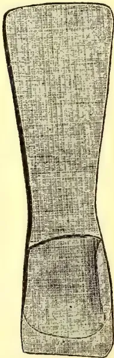
A detailed line drawing of a machadine from the side. It features a long, slightly tapered handle with a textured, cross-hatched surface. The head of the tool is rounded and appears to be made of a different material, possibly wood, with a distinct grain pattern.Full size.
End view of Machadine.
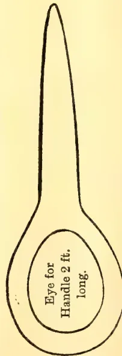
A line drawing showing the end view of the machadine. It is a circular head with a long, thin handle extending upwards. Inside the circular head, there is text that reads: "Eye for Handle 2 ft. long."Full size.
No. 1.]
JANUARY, 1908.
[VOL. II.
It is well for those who drink tea that after many years' indifference to the discovery made about 1820 that trees were growing wild in Assam the Indian Government procured young plants from China, and seed for distribution in different quarters, in order to promote experiments in tea culture. Upon these foundations, laid seventy years ago at Chubwa, in Assam, has arisen in the eastern dominions of the Crown the industry which now yields 420,000,000 lb. a year, provides fifty millions of our British fellow-subjects with what has become almost a necessary of life, and has something left to spare to meet the call for tea, more tea, that comes from nearly every other country in the world. The story of the industry's uprising—its ebb and flow as the tide of fortune receded or advanced—cannot here be recited in detail, but a few points emerge well worth recording at a time when thoughts are turned to enterprise abroad, and many wish to know what is the true position of producers.
Passing in quick review the Government's experimental gardens before 1840, most of which were transferred to the Assam Company formed in 1839, the beginnings of culture in Dehra Doon, Kangra, and Kumaon soon after, some early plantings in Madras, and the successful experiments in Cachar, Darjeeling, and Sylhet before 1860—in that year 1,000,000 lb. were sent to England from estates already on a commercial footing—we come to planting in the Terai, which followed about 1862, and in the Dooars about 1875, and within the last twelve years the opening of many of the large estates in Travancore. In the meantime tentative experiments were being made in Ceylon, but it was not until its valuable coffee plantations were threatened with extinction, and other products had been tried, that earnest attention was given to tea and the basis laid of the industry which has
proved of such great value to the colony. A garden opened more than five and thirty years ago still sends good tea to market, but 1880 was reached before 100,000 lb. were exported—this year the total will be as much as 178,000,000 lb.
The gardens first laid out in India were planted with the Chinese variety of bush, but by degrees this has been widely superseded by indigenous or hybrid kinds, which are more remunerative in many sites and soils; the China plant yields much less weight of leaf, but in Darjeeling fine flavoured tea is made from it. Until quite recent times some of the original stock was still bearing after the lapse of 40 or 50 years, and a little still exists where first planted. Nothing short of that age is accounted particularly old, and the endurance of young bushes treated with the care now given to them is expected to be still longer.
These facts supply the answer to questions which some are doubtless asking—Is the soil durable, is the bush a long-lived one, is there promise of permanence for this industry? It is true that in India some very ancient plots have been abandoned, as in Cachar and Assam, and that of plantings in Terai perhaps one-fifth, which low prices had made unprofitable, has gone out of cultivation, while in Ceylon, it is said, there are some gardens which are not likely to last. No secret is made of it. In the beginning the pioneers lacked experience; wrong sites were sometimes chosen, such as steep hillsides which have been denuded of their soil, while bushes were treated in a way that a modern planter would deem brutal. In those days there were no scientific experts as there are now, continuously advising growers about their soil, manure, catch crops, and insect pests, while the genius of inventors had not then devised the machinery that now simplifies, hastens, and cheapens the work inside the factory. It is stated that no gardens made on the Darjeeling hills during the past
74The Supplement to the Tropical Agriculturistforty years have failed to last, and from evidence available it is reasonable to believe that the productive life of a tea bush is a question of treatment, soil and climate. Given good soil, favourable climate, and judicious handling, it would be difficult to assign a limit to it. The bushes have been stricken by hail, blight, flood and drought; still they survive, and there is no record of complete failure of a crop. The longevity of tea under careful culture is established; but on the other side must be set the fact that from old bushes such fine quality as young ones give cannot everywhere be made, while land long cropped needs much top-dressing, which entails expense; so prudent planters uproot old bushes to give place to new, or make some fresh extension year by year.
An official return enumerates about 530,000 acres of tea in India, of which 21,367 are stated to be immature, but some of the figures are termed imperfect or inaccurate, and stress is laid upon the fact that while the returns of area show an increase of only 86 per cent since 1885, the quantity produced has increased 236 per cent. In other words, if the areas have been correctly stated, the yield per acre has risen from 253 lb in 1885 to 454 lb in 1906, upon the average of all. Growth of indigenous or hybrid kinds, high cultivation, and freer plucking do not alone account for this great increase; part of it is due to the number of young, vigorous bushes with which old acres have been leavened. Apart from this, at least 140,000 acres of the total area are not yet much more than 12 years old, they add to the aggregate productiveness, and under normal conditions should ensure the maintenance or an increase of the annual output.
There is still room for development, if demand for tea should justify it, and if labour were obtainable. Nearly a million acres are held by the Indian planters, taken up for tea, but not yet cultivated; the tenure is secure and the terms are not onerous; much of the land is unsuitable for tea, but some is useful for by-products, and enough remains for large extensions when desirable, except in Darjeeling where, it is said, the limit has nearly been reached. No wide or sudden action in this direction, however, is probable; control has become largely concentrated in the strong hands of shrewd and cautious men, who should know that the hurry of one year may take ten years
of care to cure, and are not likely to forget the lessons learned in bygone years, which teach that development must be very slow in order to be safe. Promoters from outside, smitten with a mania for extension, will hardly find a footing or a welcome. The spare lands are mainly distributed as follows:—375,000 acres in Assam, 215,000 in Cachar, 160,000 in Sylhet, 157,000 in the Dooars, 57,000 in Darjeeling, and 17,000 acres in Travancore.
In this respect the position of Ceylon is somewhat different. It has been officially stated that there are 461,000 acres of tea in the island, a figure that needs to be reconciled with the carefully compiled statistics in "Ferguson's Directory," which show that the total is only 390,000 acres. The same authority stated last year that tea cultivation in Ceylon would probably eventually reach 400,000 acres; if that holds good, there is not room for any great extension, while the new factor introduced—namely, planting rubber among tea, suggests the probability that the output will gradually decrease. The rubber trees, however, planted on 41,690 acres of tea in Ceylon are still young and may not grow so quickly as they do in new clearings, while the increased value of tea leads every planter to make the most of it. Helped early in the season by weather that made the bushes flush well, and by the stimulus to free plucking given by the price of common tea, much more has been gathered this year, to the great benefit of growers. What the position may be when the rubber trees reach maturity can only be surmised, but it is probable that less tea than now will be produced, that more will then be wanted and that a healthy tea estate will be a valuable possession. Bushes and soil are affected by age and continuous cropping just as they are elsewhere, but the majority of the gardens are not yet old, and though much has been said about "earthiness in high-grown tea," it should not cause undue misgivings, because the deterioration noticed may prove to be remediable and transitory.
The growers' chief concern, in India and Ceylon alike, is not for their climate, plant, or quality, but about the perennial difficulty of obtaining sufficient coolie labour, the exceeding dearth of foodstuffs, and the high import duty levied here. It is possible that scarcity in the United Provinces caused by the present drought may induce more labourers to move northward and eastward, where work and food, homes, and a fair wage await them, but so far no movement is reported, while, as regards Ceylon, the
and Magazine of the Ceylon Agricultural Society.75latest returns show a falling-off in immigration. Malay and the Straits attracted in 1906 some 50,000 Tamils, thus lessening the number available for Ceylon estates, and it is possible that tea-planters may have to face the question of paying higher wages.
The crop positions are as follows:—India will make less than was expected, short yields at the end having followed the good increase made early in the season. Last year's total of 240,000,000 lb. may not be much exceeded, and considerably less will be received here. The total export last advised by mail showed an increase of about 4,000,000 lb., which has gone abroad, but later telegrams show that the shipments in the interval have been short, and that there is a considerable falling off in exports to the United Kingdom. Garden returns to the end of October disclosed an average increase of about 2 per cent. in the crop so far gathered, more being made in the aggregate of Assam, Cachar, Sylhet, and Travancore, but less in Darjeeling, Dooars, and the Terai. The best results to growers, which can now be said to be already assured, are for those who have made heavy crops at a low cost-price and have been able to sell them readily at 1d. to 2d. per lb. more than they obtained for their last crop. The average of London sales to date is about 8½d. per lb., against 8d. per lb. last season, and of Calcutta sales 6 annas 10 pies against 5 annas 5 pies in 1906. Ceylon will ship a total of about 180,000,000 lb., contrasted with 170,000,000 lb. last year, including some that is grown in Southern India but sent through Colombo, estimated to be between two and three million pounds. Of the increase only about 3,000,000 lb. will come here, the rest having been sold abroad. London sales average 8d. per lb. against 7¼d. obtained last year, and Colombo sales have returned the growers 41 cents against 35 cents all round in 1906.
The London market, preoccupied with Indian and Ceylon, seems to pay little heed to other kinds of tea, but a grower needs to extend his outlook, watch other sources of supply, and see what competition threatens. These must be examined, and they are confined to Java, Japan, and China. The Dutch island's useful little crop of about 28,000,000 lb. shows no sign of increase, and does not affect the position, though its tea is readily saleable and competes with the lower qualities of British growth. About half the crop comes to London, and has
realised 7¼d. per lb. this year, against an average of 6d per lb. in 1906. Japan tea meets ours only in North America, where it finds favour, but has lost ground as the merit of our stronger growths became appreciated. In the season 1904-5 the United States and Canada imported 48,700,000 lb. of it, but only 41,600,000 lb. in 1906-7, while the importation of British-grown varieties rose from 35,300,000 lb. to 37,600,000 lb. It appears, moreover, that production is steadily decreasing in Japan; in 1896 the plantations covered about 146,000 acres, yielding about 70,000,000 lb., but by 1905, the last year for which figures are available, the area had fallen to 130,000 acres, and the total made to 57,000,000 lb. If these returns, which are official, include all produced for trade purposes, there is no present reason to fear competition from that quarter; but at the State farm experiments have been made in rearing plants, methods of manufacture, use of machinery, and improvement of quality which may bear fruit. The outturn of Oolong tea in Taiwan (Formosa) has also declined since the island passed into Japan's possession. Between 1900 and 1905 the wage of farm labourers under contract in Japan rose 17 per cent., while the rates for many kinds of skilled labour rose from 10 to 30 per cent., a consequence of its great industrial developments, raising the cost of producing tea.
China still confronts the British grower in many markets, but, contrary to expectation, has not regained this year very much of its lost trade here (though the percentage increase is large), notwithstanding the demand for cheaper tea than can now be bought elsewhere. Up to November 15th the total China tea exports overseas were 93,000,000 lb, against 83,000,000 lb. in 1906, much of the increase being to America and some of it coming here. China's large trade in black tea with Russia is endangered by the growing reputation and purchase of our produce there. America has taken more of China and less of our growths this year and our home consumption shows an increase of 3,500,000 lb. in China tea. It is claimed that part of this increase is due to the growing consumption in this country of the higher qualities of China teas and an appreciation of their digestive values, though upon this point opinion is not unanimous. Judged by despatches from our Consuls in China, the general feeling there is not hopeful. From Shanghai we
76The Supplement to the Tropical Agriculturistlearn that "the Chinese tea-grower is apparently still incapable of realizing that he is losing the European markets. The trees are left unpruned, and the ambition of the small producer is confined simply to obtaining three crops a year from his soil. . . . the season has been so unsatisfactory for Shanghai shippers that in view of the steady fall in quality and demand, especially in the United Kingdom, several of the largest British firms have abandoned the trade." From Hankow "there were no direct shipments to London, a feature shared only by the years 1899-1900; the subjoined table, in spite of a special Siberian demand, shows a serious decline in the export, even as compared with the bad record of 1905, due to the unrest in Russia and the swamping of the British market by India and Ceylon." From Foochow "the statistics for 1906 show an appreciable improvement, in spite of which there seems a universal opinion among those interested in the trade that the day of China tea is over." When these reports were made silver was much dearer than it is now, a disadvantage to buyers of tea remitting to China; the lower rate of exchange now current may lead to larger purchases by merchants in Europe and America still handling China tea, a point that must be kept in sight.
This completes our review, and the conclusion to be drawn from it is that among the different groups of growers those in India, Ceylon, and Java are in the most secure position. The question follows, What prospect is there that present prices will be maintained? The advance in price has been caused by an expansion in demand, a reduction in stocks both in and out of bond, and the discovery that the fresh supplies available are not quite large enough for all requirements. A reaction might ensue if India's production or China's export were largely to increase during the next year or two, or if consumption were to fall off as a consequence of higher prices being charged to the public; but there is the possibility, on the other hand, that the use of tea may continue to grow larger in countries where it is still small. All these contingencies must be kept in mind, for they are likely to make the position and movements of tea more than usually interesting for some time to come to all who produce, deal in, or use it.—London Times Supplement, Dec. 20.
Prejudice apart there cannot be a question that the choice "chops" of China teas furnishes a more delicate flavour which was not attained in India before the introduction of the Belmont process. We are aware that Mr K Bamber did pretty nearly hit off the desirable in Ceylon, but still there was something wanting. Without reproducing the article on the matter it may be as well to condense the information for the benefit of those who care to undertake the manufacture of such teas as are still retailed by Davidson of Fenchurch Street, Twinings in the Strand and one or two others who pander to the taste of connoisseurs. That there are many of the latter is undoubted and our impression is that if conductors of our hill gardens would lay themselves open to supplying what we may describe as "toned down teas" they would derive a profitable enough trade at the prices readily paid across the counters to the firms above mentioned, which range between half a crown and five shillings per lb. There is no great secret in the toning; Indian tea is harsh and so to most palates, unless blended with the weaker China leaf, unappreciated, but if we eliminate the surplus tannin it can be rendered fit for most people. The process preserved at Belmont was to spread the rolled leaf out thinly on the mat for the night; in the morning the leaf was heaped up under a damp blanket, care being taken to constantly test the mass for any indication of heating when, of course, all had to be immediately re-spread out. Tips came out white instead of yellow, but the grand test was in the cup, for though harshness, in a modified degree, was slightly perceptible, on this being represented to the manipulator the defect was remedied. In 1898 when tea began to drop in Bengal we were favoured with enquiries as to the cooling down of the rolled leaf, and a well-known engineering firm furnished us with an estimate of an apparatus costing R12,000. No difficulty in the manufacture was indicated nor is much alteration needed excepting that the leaf should be rolled slower, for under present methods the "rapid rollers" reduce the mass to a wet stodge staining the tips and setting up undue evaporation from the time the leaf is placed in the trays. With some modifications the process carried out at Belmont was identical with that pursued by Dr. Jameson at the Government Gardens in the Punjab half a century ago, while samples made by the Sylhet Tea Company were priced 2s. 6d. per lb. Unfortunately the Managing Director of this Company would not listen to representations regarding a cooling room, so the method had to be abandoned and the present orthodox manufacture carried out much to the disappointment of a firm in London—Antrobus and Co.—who were prepared to take the whole outturn if up to the original mark. That there is a large demand for fine flavoured tea in Russia, the United Kingdom and America, goes without saying, and by elimination of the superabundant tannin by cooking coupled with slower drying our planters could secure the major portion of this trade.—Indian Planters' Gazette, Nov. 30.
and Magazine of the Ceylon Agricultural Society.77We recall the visit of two or three experienced Assam tea planters to Ceylon some twenty years ago, who came to see us and enquire how best they could inspect some typical Ceylon plantations in order to judge of their quality and condition. They were on their way out from home to resume charge—in one or two cases—of their own properties in Assam. We sketched a programme for them, which included part of Dikoya and Dimbula as on the railway route, and they started off; but returned on the second day quite satisfied and altogether in a chuckling mood over the Ceylon Tea Enterprise. They had not gone beyond Kandy and Nawalapitiya; but they had seen enough, including Mariawatte (!), to satisfy them that our tea gardens could not "last." They gave no more than five to ten years at most for the profitable life of the plantations they had gone over, and they were going on to India with the full assurance that the Ceylon Tea Enterprise could never amount to much.
We were reminded of this experience when we read the otherwise clear and able Review of the Tea Industry in India and Ceylon, which is reproduced in full elsewhere from the London Times and in which the one unfortunate, and as we think unjustifiable, statement is made in the concluding portion of the following:—"It is true that in India some very ancient plots have been abandoned, as in Cachar and Assam, and that of plantings in Terai perhaps one-fifth, which low prices had made unprofitable, has gone out of cultivation; while in Ceylon, it is said, there are some gardens which are not likely to last. No secret is made of it." We know of no evidence to warrant this belief, in respect of Ceylon, unless it be found in the fact that throughout 42,000 acres of our tea, the new product "rubber" is inter-planted, and, therefore, the surmise is made that the tea must eventually disappear before the rubber? That, we confess, is within the bounds of possibility, more especially if rubber fulfils certain sanguine expectations of high profits out of all proportion to those derived from tea. In that case, it may be thought advisable to get rid of the tea; but we are quite sure that a good many years must pass before this takes place, if it ever does altogether, and meantime every care is being taken of both tea and rubber, while never before was tea
cultivation in Ceylon so well fostered and so generally prosperous. The only clouds at present have reference to the possibility of an unduly dry season and a shortness of labour. But we may find both these clouds lifting as the season goes on.
(To the Editor.)
Rakwana, Jan. 8th.
DEAR SIR,—To settle a wager will you or your readers oblige me with any information as to whether 870 lb tea per acre all round off a total acreage of 350 acres constitutes a record for Ceylon and if not, what is the record? Thanking you in anticipation.—I am, yours, &c.,
"RAKWANA."
P.S.—Likewise is 1,400 lb. an acre off any particular field a record? R.
RECORD TEA YIELDS—"Rakwana" raises an interesting question in his letter given above and undoubtedly a yield of 870 lb of tea per acre off a total of 350 acres is a magnificent return; but it does not make a "record" for Ceylon. That "record" we apprehend, belongs to Mariawatte for Mr Salmond, the then Manager reported to us in January, 1901, that the crop for 1900 over the whole estate of 458 acres was equal to no less than 996 lb made tea per acre—the largest ever gathered up to that date. Nowhere in India or Java, we said at the time (and our challenge has remained unanswered) have we ever heard of such a yield over so large an area. This, of course, beats "Rakwana's" 870 lb over 350 acres. But in respect of his 1,400 lb off one field (what extent?), we are not sure that he may not score the record. At any rate the highest yield we have for Mariawatte is 1,384 lb (all over 101½ acres) in 1890 and 1,357 lb in 1900. (For 17 years this field averaged 1,144 lb.; while for nine years the average over the whole estate of 458 acres, equalled 822 lb.) In 1901, before the rush into rubber, we ventured to estimate that there were "18,000 acres of the finest tea land planted in Ceylon capable of bearing 800 lb and upwards per acre; 80,000 acres equal to an average of 600 lb, and 300,000 acres equal to 250 to 400 lb."
78
The Supplement to the Tropical Agriculturist
PUBLIC SALES OF TEA IN COLOMBO AND LONDON.
COLOMBO, 1907.
| LONDON | COLOMBO, 1907. | ||||||
|---|---|---|---|---|---|---|---|
| 1906. | 1907. | Offered. | Sold. | ||||
| Date. | Pkgs. Sold | Re-ter's Av. | Date. | Pkgs. Sold | Re-ter's Av. | lb. | lb. Avg. |
| Jan. 5 | 23,000 | 7½ | Jan. 11 | 31,000 | 8¾ | 2,569,979 | 2,131,878 41 |
| " 12 | 31,000 | 7¼ | " 18 | 27,000 | 8 | 834,068 | 1,744,080 43 |
| " 19 | 32,000 | 7½ | " 25 | 21,000 | 7¾ | 1,633,389 | 1,300,041 41 |
| " 26 | 19,000 | 7½ | Feb. 1 | 20,000 | 7¾ | 2,025,557 | 1,657,885 40 |
| Feb. 2 | 23,000 | 7 | " 8 | 20,000 | 8 | 1,238,741 | 912,828 40 |
| " 9 | 21,000 | 6¾ | " 15 | 22,000 | 8¼ | 1,173,482 | 997,855 41 |
| " 16 | 25,000 | 6¾ | " 22 | 27,000 | 8¾ | 1,194,895 | 1,026,543 43 |
| " 23 | 22,000 | 6¾ | Mar. 1 | 27,000 | 8¾ | 1,617,998 | 1,443,559 44 |
| Mar. 2 | 24,000 | 6¾ | " 8 | 21,000 | 8¾ | 1,250,524 | 993,811 45 |
| " 9 | 21,000 | 6¾ | " 15 | 20,000 | 8¾ | 1,332,566 | 1,136,107 45 |
| " 16 | 22,000 | 7½ | " 22 | 27,000 | 8¾ | 1,396,494 | 1,262,153 46 |
| " 23 | 19,000 | 7½ | Mar. 1 | 27,000 | 8¾ | 1,510,187 | 1,288,535 46 |
| " 30 | 26,000 | 7½ | " 8 | 21,000 | 8¾ | 1,468,302 | 1,167,522 44 |
| Apr. 6 | 19,000 | 7½ | Apr. 5 | Easter | April. 3 ... Tea Sellers' Holiday. | ||
| " 12 | 25,000 | 6¾ | " 12 | 21,000 | 8¼ | " 10 ... 2,270,576 | 2,013,902 44 |
| " 20 | No sale | " 19 | 22,000 | 8¾ | " 17 ... 1,873,687 | 1,638,491 44 | |
| " 27 | 23,000 | 7 | " 26 | 26,000 | 8¾ | " 24 ... 1,536,734 | 1,115,780 43 |
| May 4 | 30,000 | 7 | May 3 | 23,000 | 8¾ | May 1 ... 1,530,598 | 1,137,994 41 |
| " 11 | 30,000 | 7 | " 10 | 25,000 | 8¼ | " 8 ... 1,987,030 | 1,502,555 37 |
| " 18 | 27,000 | 6¾ | " 17 | 24,000 | 8¾ | " 15 ... 1,984,484 | 1,655,249 37 |
| " 25 | 24,000 | 7 | " 24 | Whitsuntide | " 22 ... 2,004,621 | 1,688,487 37 | |
| June 1 | 32,000 | 7 | June 7 | 32,000 | 7¾ | " 29 ... 1,675,863 | 1,426,865 37 |
| " 8 | No sale | " 14 | 27,000 | 7½ | June 5 ... 1,752,483 | 1,614,510 38 | |
| " 15 | 32,000 | 7½ | " 21 | 31,000 | 7½ | " 12 ... 1,851,526 | 1,660,868 39 |
| " 22 | 34,000 | 7 | " 28 | 26,000 | 7½ | " 19 ... 1,896,804 | 1,577,941 39 |
| " 29 | 30,000 | 7½ | " 26 ... 1,929,132 | 1,902,618 39 | |||
| July 6 | 28,000 | 6¾ | July 5 | 30,000 | 7¼ | July 3 ... 1,743,230 | 1,361,523 39 |
| " 13 | 29,000 | 6¾ | " 12 | 30,000 | 7¾ | " 10 ... 1,703,335 | 1,372,383 40 |
| " 20 | 23,000 | 6¾ | " 19 | 26,000 | 7¾ | " 17 ... 1,779,863 | 1,523,603 41 |
| " 27 | 30,000 | 6¾ | " 26 | 31,000 | 7½ | " 24 ... 1,815,966 | 1,598,818 41½ |
| Aug. 3 | 31,000 | 6¾ | Aug. 2 | 34,000 | 7½ | " 31 ... 1,472,731 | 1,263,988 42 |
| " 10 | Bank Holiday | " 9 | Bank Holiday | Aug. 7 ... 1,407,272 | 1,097,778 42½ | ||
| " 17 | 36,000 | 6¾ | " 16 | 35,000 | 7½ | " 14 ... 1,450,980 | 1,178,721 43 |
| " 24 | 31,000 | 6¾ | " 23 | 28,000 | 7¼ | " 21 ... 1,631,502 | 1,255,243 43 |
| " 31 | 26,000 | 6¾ | " 30 | 29,000 | 7¾ | " 28 ... 1,474,534 | 1,193,991 44 |
| Sept. 7 | 24,000 | 7 | Sept. 6 | 21,000 | 7½ | Sept. 4 ... 1,318,309 | 987,901 44 |
| " 14 | 22,000 | 7¼ | " 13 | 19,000 | 7¼ | " 11 ... 1,102,424 | 880,874 42 |
| " 22 | 21,000 | 7¼ | " 20 | 21,000 | 8 | " 18 ... 1,426,167 | 1,106,863 43 |
| " 28 | 20,000 | 7¾ | " 27 | 21,000 | 7¾ | " 25 Tea Sellers' Holiday. | |
| Oct. 5 | 20,000 | 8¼ | Oct. 4 | 21,000 | 7¾ | Oct. 2 ... 1,988,562 | 1,546,865 42 |
| " 12 | 16,000 | 8½ | " 11 | 19,000 | 8 | " 9 ... 1,157,236 | 961,644 42 |
| " 19 | 20,000 | 8¼ | " 18 | 15,000 | 8 | " 16 ... 1,117,961 | 895,960 44 |
| " 26 | 21,000 | 8¼ | " 25 | 20,000 | 8¾ | " 23 ... 1,409,991 | 1,039,801 43 |
| Nov. 2 | 14,000 | 8½ | Nov. 1 | 15,000 | 8 | " 30 ... 1,464,050 | 1,255,704 43 |
| " 9 | 17,000 | 8½ | " 8 | 13,000 | 8 | Nov. 6 ... 1,370,623 | 1,007,835 43½ |
| " 16 | 17,000 | 8½ | " 15 | 10,000 | 8 | " 13 ... 1,305,930 | 989,227 41 |
| " 23 | 18,000 | 8¾ | " 22 | 14,000 | 8 | " 20 ... 1,449,906 | 1,222,569 41 |
| " 30 | 17,000 | 8¾ | " 29 | 14,000 | 8 | " 27 ... 1,533,922 | 1,291,506 42 |
| Dec. 7 | 18,000 | 8¾ | Dec. 6 | 19,000 | 8¾ | Dec. 4 ... 1,724,232 | 1,558,113 44 |
| " 14 | 14,000 | 8¾ | " 13 | 15,000 | 8¾ | " 11 ... 1,588,197 | 1,485,028 44 |
| " 21 | 18,000 | 8¾ | " 20 | 28,000 | 8¼ | " 18 ... 2,340,230 | 2,138,561 45* |
| 1,058,000 | 7¼ | 1,093,000 | 8¾ | 78,316,873 65,212,556 42 | |||
* Approximately.
Quantities sold in the past 10 years :-
| Pkgs. Offered. | Pkgs. Sold. | Pkgs. Offered. | Pkgs. Sold. |
|---|---|---|---|
| 1898 1,115,000 | 1,050,000 | 1903 1,047,000 | 957,000 |
| 1899 1,123,000 | 1,046,000 | 1904 1,027,000 | 958,000 |
| 1900 1,295,000 | 1,179,000 | 1905 1,194,000 | 1,094,000 |
| 1901 1,197,000 | 1,055,000 | 1906 1,141,000 | 1,058,000 |
| 1902 1,160,000 | 1,052,000 | 1907 1,142,000 | 1,059,000 |
Quantities sold in the past 10 years as follow :-
| lb. | Avg. | lb. | Avg. |
|---|---|---|---|
| 1898 ... 28,866,004 | 34 | 1903 46,172,487 | 38 |
| 1899 ... 32,472,040 | 38 | 1904 53,309,443 | 36 |
| 1900 ... 38,242,926 | 34 | 1905 55,861,862 | 34 |
| 1901 ... 38,345,861 | 33 | 1906 54,611,601 | 36 |
| 1902 ... 42,874,499 | 34 | 1907 65,212,556 | 42 |
Mr. C Boden Kloss writes as follows in the "Agricultural Bulletin," Singapore, for November:—All methods of tapping rubber trees are, one may say, combinations or variations of the oblique incision and probably the two most popular methods in use in Malaya at present are the V and the herring-bone. It is objected however to the former that so many cups are required. The latter is frequently to be seen deprecated on account of the central channel which is a mere conductor of latex, being unproductive in itself and wasteful of cortex. It is said also that it lessens the tension of the bark and therefore tends to minimise the output of rubber. If such is so with the full herring-bone, how much more proportionately is the vertical channel uneconomical in the case of the half-herring-bone! Examining recently a series of trees tapped by the latter method it appeared to me that if the length and position of the conducting channel were somewhat altered it could be made both productive of latex and thus less wasteful of bark while, besides, the natural tension would probably remain unaffected. I therefore sketched out the following pattern (Fig. 1 the dotted line representing the original verticle channel) of a modified half-herring-bone—I should like to say improved, but from lack of opportunity to test it cannot yet do so—which, if we desire to stick to the alphabet for tapping nomenclature, instead of a number of Roman Vs occupying the tree at intervals, might be described as a column of Greek Ys ascending the trunk—ascending because tapping must be done from base upwards. A very symmetrical pattern that would probably heal rapidly is also obtained by reversing each alternate Y. Having gone so far it was of course obvious that the alteration should be carried to its logical conclusion and thus Fig. 2 was obtained. The basis of the method is itself a very simple pattern, productive throughout all its length. This is a continuous regular zig-zag, but I am not aware that it has been experimented with in this form for the orthodox zig-zag seems to be two oblique cuts joined by a vertical, and so useless, channel. The advantage of the full pattern however is that the flow from the lateral projections at once forms a leading stream which is joined by the descending latex from each step above as tapped, and so obviates any likelihood of delay or overflow at the angles. I fancy that the pattern will be found very productive and of value when it is
required to obtain a large amount of rubber per tree. The proportion of scrap will probably be small owing to the strong flow of latex throughout; the fluid from above helping to wash down that below and thus differing from the ordinary herring-bone where the latex in the lateral cuts soon begins to coagulate. From time to time various tapping patterns have been tried and found unsatisfactory, the single incision, for instance, and the Ceylon spiral which is now being regarded as hardly fulfilling all that was expected of it, and the above ideas will perhaps find a place in the same category, but as I am at present unable to experiment with them myself I should be glad to hear, through your pages, what results have been obtained by any one who thought the notions worthy of a trial.
FIG. 1.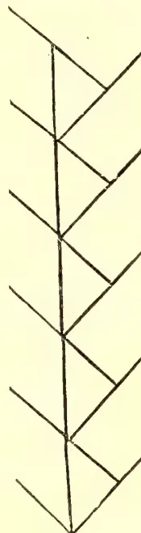
FIG. 2.A potentially rich rubber-producing district of Portuguese Africa is to be opened up by a new railway just authorised by the Colonial Government. The railway in question is from the Port of Inhambane to the military post of Inharrime, both of which are in the district of Inhambane. An average annual export of 32 tons of india-rubber is accredited to the district in question during the last two years.—India Rubber Journal, Dec. 16.
80The Supplement to the Tropical AgriculturistThe prices which are obtainable at the present time for Para Rubber seeds for planting purposes being so high, other means of disposing of them are not necessary, but with hundreds of thousands of trees becoming seed-bearers the supply of seed for planting will soon be in excess of the demand. The commercial value of the seed of Hevea brasiliensis has up to the present been rated on the amount and quality of the oil it possesses. This oil is similar in its character to Linseed oil and for the manufacture of paints, varnishes, etc., and other purposes for which Linseed oil is used Para seed oil compares favourably. The following analysis of Para seed oil shews its composition which in comparison to Linseed is as good or better in everything except in Iodine value :—
| Specific gravity at 15° C | ... 0.9303 |
| Free fatty acids—Acid value | ... 10.7 |
| Calculated oleic acid | ... 5.4 per cent |
| Ester value | ... 195.4 |
| Neutral oil | ... 94.6 |
| Saponification value | ... 206.1 |
| Iodine value | ... 128.3 |
The oil has not yet been obtained in sufficient quantities for its qualities to be adequately tested, but manufacturers have offered a price of £10 to £12 per ton for decorticated seed in good condition. In order to estimate the weight which may be expected per acre or per 100 trees, I weighed in Ceylon a large number of seeds between 7,000 and 8,000, and found the average weight of each seed to be 3-20ths of an oz. or 111 seeds to 1 lb. The shell of the seed has as far as we know at present no commercial value and in order to save bulk it should be removed before shipping. It has been found that the loss in oil in decorticated rubber seed during transit to Europe is very little. To find the relative weight of shell and kernel, I carefully weighed a few average seeds, and after taking the shell off weighed shell and kernel separately. The relative weight of kernel to shell is found to be 59.7 or approximately 60 per cent.
| Number. | Total weight. | Shell. | Cotyledons. | Percentage of Cotyledons to Total weight. |
|---|---|---|---|---|
| Gr. | Gr. | Gr. | Per cent. | |
| 1 .. | 3.18 | 1.69 | 1.58 | 50 |
| 2 .. | 5.14 | 1.84 | 3.28 | 66 |
| 3 .. | 4.26 | 1.63 | 2.61 | 62 |
| 4 .. | 4.41 | 1.70 | 2.70 | 61 |
| 5 .. | 4.19 | 1.33 | 2.86 | 68 |
| 6 .. | 4.46 | 2.05 | 2.41 | 52 |
| 7 .. | 3.50 | 1.6 | 1.85 | 53 |
| 8 .. | 3.86 | 1.96 | 1.89 | 49 |
| 9 .. | 3.14 | 1.41 | 1.73 | 55 |
| 10 .. | 3.21 | 1.48 | 1.72 | 53½ |
| 11 .. | 3.26 | 1.35 | 1.91 | 58.28 |
| 12 .. | 4.65 | 1.89 | 2.49 | 53.44 |
| Totals .. | 47.286 | 19.88 | 27.02 | — |
| Averages | 3.938 | 1.656 | 2.25 | 5.97 |
The following will enable an estimate to be made of probable profits from this source :—
| 111 Para Rubber seeds = 1 lb. | ||
| 12 432 | „ | „ 1 cwt. |
| 248,640 | „ | „ 1 ton. |
The kernel i.e. the decorticated seed is 60 per cent of the total weight of seed, therefore 414,400 seeds will make a ton of decorticated seed. At 400 seeds i.e. 133 fruits to the tree 414,400 seeds will be the crop of 1,036 trees which at 193 trees to the acre, i.e. 15 feet apart, is the produce of 5.4 acres. One acre will therefore give 3 cwts 79 lb value £1 17s or $15.88. Cost of putting on market :—
| dollar. | c. | |
|---|---|---|
| Freight 40s per ton (say dollar 18) | 18 | 00 |
| Collecting at 4 cents per 1,000 per ton | 18 | 64 |
| Decorticating, per ton | 2 | 50 |
| Packing, per ton | 15 | 00 |
| 54 | 14 | |
| Value on market £10 to £12 (say dollar 93.50 i.e. £11) | 93 | 50 |
| Cost of putting on market | 54 | 14 |
| Total net profit per ton | 39 | 36 |
that is 5.4 acres give dollars 39.36 profit i.e. dollar 7.00 per acre.
In these prosperous times when rubber profits are calculated by hundreds of dollars per acre, the discussion of an additional profit of $ 7 per acre may seem trivial, but since the seed cannot be allowed to remain in the ground and must be removed, some steps must be taken to deal with it. When a constant and large bulk of rubber seed is sent to Europe it is possible that the price of this commodity may increase very considerably and become an item of importance in the profits of a rubber estate. The value of the seed for cattle cake has not yet been estimated, the seed is greedily eaten by animals and has a high nutritive figure.
Consignments of the present crop decorticated and with the shell on are being sent home by the Department of Agriculture and the market values and condition of these on reaching Europe will be made the subject of a further note.
J. B. CARRUTHERS.
—Straits Agriculture Bulletin for Nov.
and Magazine of the Ceylon Agricultural Society.81SMOKED RUBBER:DOING MECHANICALLYDA COSTA'S PATENT RUBBER COAGULATING PLANT.Whatever may be the differences of opinion between Manufacturers as to the value of the different species of Crude Rubber available in the world's Markets, they are certainly unanimous in pronouncing the product of the Para Rubber Tree, as prepared by the natives, to be the best of all species of Rubber. The native process of smoking the latex of the Hevea Brasiliensis (Para Rubber) in the Amazon region is only persisted in because no other process has met with the approval of Manufacturers.
Sheet and Crêpe Rubber were manufactured in Brazil long before the Rubber industry was thought of in the East Indies, but it had to be abandoned because of the manufacturers' preference for the native smoked product.
Every chemical ingredient now used in the East Indies to preserve the Rubber or assist in the coagulation, has been tried again and again and, in every instance, where the assistance of chemicals has been resorted to, an article of good appearance has been produced, but always inferior to the smoked Rubber when tested by the manufacturers' standard. The fact is that any chemical agent, of whatever nature, introduced into the latex of the Para Tree in a liquid or palpable form, injures the resiliency of the Rubber produced, as repeated trials have clearly demonstrated.
The real cause of this continues to be one of nature's mysteries, but it is an undoubted fact. Whilst it is known by long experience on the Brazilian forests, that heat will coagulate the latex from the Para Tree, it is also beyond doubt that fumigation alone will impart to the finished product its lasting properties of resiliency and tensile strength that have made the products of the Hevea Brasiliensis famous all the world over. So too, as regards the latex of the Castilloa Elastica tree, nothing but very fierce heat will kill the enzymes it contains and unless these are destroyed the Rubber produced therefrom will always be jet black and more or less tacky, if kept for any length of time.
On the face of these facts, and because the method of smoking latex by the native process in Brazil is not only very expensive and exceedingly tedious, but also certainly detrimental to the health of the operators, the inventor of this plant thought of devising means of
all that is now done by hand in the Rubber forests of Brazil. The Da Costa Patent Coagulating Plant which is the result of practical experiments and tests, and is now manufactured solely by Messrs. David Bridge and Co., Engineers and Rubber Machinists, Castleton, Manchester, England, for whom Messrs. Zacharias & Co. of Kuala Lumpur are acting as sole agents in the Malay Peninsula, needs no chemicals of whatsoever nature, so long as tropical forest woods are available for heating the boiler as well as green foliage of palms of any sort for generating smoke in the boiler furnace. The coagulating and smoking by means of this plant is the simplest of all operations in the Rubber Industry and may be performed by any inexperienced hand. The process is as follows:—The latex being brought from the field is strained only provided it contains mechanical impurities and is then poured into the coagulating tanks. Steam is meanwhile being raised to about 30 to 35 lb. per square inch in the boiler, forest woods alone being used for this purpose. On the burning wood in the boiler furnace are then thrown green Palm leaves, nuts, or any green twigs of tropical trees; the distillation of the woods producing acetic acid, whilst the fumes of the green foliage would be found to contain creosote to some extent. These fumes are accumulated in a special receptacle, after being expunged of all cinders and are then forced into the coagulating tanks by a steam injector. The force of the steam violently agitates the latex and during this operation every particle of it is reached by the smoke. In about ten minutes (more if the quantities to be dealt with are large) the whole mass coagulates and separates from the lyes and floats in the water caused by the condensation of the steam injected into the tanks. The coagulated substance is allowed to cool off in the tanks, and must afterwards be taken to a small press and blocks are then reblocked in cube form and afterwards dried either in a special stove or vacuum dryer. If the first size blocks are only lightly compressed into the form of cubes, they can be easily torn as under by the manufacturers and used in their machines without the extra labour of previously cutting them into convenient sizes.
QUALITY OF THE RUBBER PREPARED.Rubber prepared in this way retains every native element of the resiliency and tensile
82The Supplement to the Tropical Agriculturiststrength of the native Para, and will last as long as the wild Rubber if kept in a crude state for years.
This Coagulating Plant has, therefore, not only the advantages of dispensing with the assistance of chemical agents in a liquid form but also allows the producer to send to the market the only preparation that satisfies all the Rubber Manufacturers' needs throughout the whole world. In addition to this, it also possesses the unique property of being the only apparatus which can convert the latex of the Castilloa Elastica, Puntumia Elastica, etc., etc., into a Rubber of equal market value, appearance and colour, to that of the best Para exported from Brazil.
A Rubber manufacturer's report regarding smoked rubber produced by Da Costa's Patent Coagulating Plant is as follows:—
Referring to your letter of the 6th of September, re special smoked Para Rubber sample, I have pleasure in passing you under separate cover today, a piece of the Rubber washed out from the sample sent, as well as a piece, of the prepared Vulcanized sheet 3/16" thick made from the same sample. May be seen at Messrs Zacharias Ltd. Co's. office. The mixture of course contained no drugs or other material, but just sufficient sulphur for Vulcanizing purposes. There are also three round samples 5/16" and 3/8" and 7/16" diameter. There are four samples of Vulcanized Rubber and the sample of washed Rubber will show up the value and quality of the Rubber. I am very pleased with the Rubber and must say it has worked out better than I really expected and I consider the smoked Rubber worth anything from 4/6 to 5/6 per lb: there is, however, an excess of moisture over and above the best Para.—Malay Mail, Dec. 23.
Sumatra continues to attract the attention of rubber company promoters. Mr. Fritz Zorn in the latest edition of his useful manual makes special allusion to the possibilities of Sumatra when he writes:—"Perhaps the most noteworthy feature of the last twelve months is the way in which some of the newer rubber producing centres have been coming to the front. Sumatra, especially, is very much in evidence, and the performances in the way of production already achieved by some of the more mature estates there, point to great future potentialities for the Island as a source of supply." The New
Sumatra Rubber and Tobacco Co. is the most ambitious concern that has yet been launched in Sumatra and the capital of £250,000 is only approached by the well-known Sumatra-Deli Rubber Estates, Ltd., which has a capital of £240,000. Of the directors mentioned Mr. Keith Arbuthnot has already interests in Sumatra being a Director of the United Serdang Rubber Plantations, Ltd. If this is the Sumatra flotation which has several times been alluded to as likely to go through early in January there is, we believe, on the estates to be acquired a fair amount of old rubber—trees up to 11 years old now—and altogether the property will have 864 acres of five-year-old to 13-year-old rubber two years hence, in bearing at a cost of £30 per acre besides a considerable acreage of younger periods.
The Select Committee of the Demerara Court of Policy has modified the terms and conditions under which Crown lands in the Guiana Colony are proposed to be sold or leased for the purpose of growing rubber. A number of important alterations were approved for the consideration of the Government. It was decided to recommend that lands for the purpose of rubber growing should not in the first instant be granted absolutely, but should be leased, and a motion that it be a condition of the lease that no rent be charged during the first ten years was also carried. A further motion that the lessee of lands leased for planting rubber should have the right to purchase the land at the end of ten years if he had complied with the conditions of the lease was adopted by four votes to three, and it was decided to recommend that the period for which leases should be granted should be ninety-nine years, instead of the period of twenty-five years, as stated in the original conditions. Other recommendations decided upon were that during the first ten years 2 cents per pound should be collected on rubber, that no royalty be charged after ten years, that the annual rental should be 20 cents an acre after the tenth year to the fifteenth, and from the sixteenth year onwards 50 cents per acre per annum; and that $4 per acre should be the purchase price. It was stated that, besides the application of the British Guiana Rubber Corporation for 4,000 acres in the north-west district, application had been made in respect of two other tracts of land, one of 640 acres on the right bank of the Essequibo River, Bonasika Creek, and the other of 1,280 acres on the left bank of the Essequibo River.
and Magazine of the Ceylon Agricultural Society.83The current opinions regarding the most profitable species to cultivate are based on results of only a few years' standing, and though they are sufficiently distinctive to allow us to say that some species are capable of yielding excellent crops of rubber, they cannot in any way be accepted as final. The fact that Hevea brasiliensis has so far given the best yields does not entitle anyone to even say that it will, in the long run, be the most profitable to cultivate; still less is one justified in condemning other species because their yielding capacities have not, in the first year of tapping, proved equal to Para rubber trees. A certain amount of definite knowledge can be gained by a microscopic analysis of the plant structures possessing the channels wherein latex accumulates; a study of these particulars enables one to approximately gauge the rubber capacity of each species and the best methods of tapping them; but experiments initiated by men with a knowledge of these vital points are of little, if any, practical importance until they have been tested in and out of season through a period of many years. We are not aware of any complete scheme of experiments which have been carried out on trees of Ficus elastica, Castilloa elastica, Funtumia elastica, and the various species of Palaquium, Ficus, or Landolphia, and until the necessary results are available, there is nothing to justify the condemnation of any one of these species.
Planters have been able by very simple implements and methods of tapping to obtain very profitable yields from Para rubber trees, and taking such as a standard, they have felt justified in recommending the destruction of Ficus elastica trees because the latter have not, in the same or a longer period of time, given similarly good results. But they have evidently not been aware of the fact that the laticiferous system of Ficus elastica is entirely different from that in Hevea brasiliensis and requires an entirely different system of tapping. Furthermore, the poor results have all, so far, been chronicled from work carried out on trees of this species which have been allowed to grow in their own way; the formation of ridges and crevices on the fluted stems of such trees appreciably reduces the available tapping area, and the interlaced aerial roots prevent that supervision which is necessary if the rubber has to
more than pay for the cost of harvesting. From a plant sanitation standpoint a block system of unlike species is desirable; Ficus elastica is indigenous in the Indo-Malayan region, and is of a vigorous and hardy type; these and many other reasons can be brought forward to support our contention that this species should not be entirely lost sight of at the present time.
In recent issues of the "India-Rubber Journal" we have given up-to-date information regarding the yields obtained on all the prominent Para rubber estates in the Indo-Malayan region during the last three years. The year 1906 showed a large increase per tree, and the present year has been characterised by a further total increase from most of the estates. But it is fairly safe to say that the yields have, more often than not, been obtained from the primary bark by a system of tapping which has necessitated the removal of a large proportion of that tissue. There are very few records available showing the rubber obtained from the renewed bark, and we are, in a great measure, ignorant of the yielding capacity of the newly-formed elements. The increased yields per tree have, in some instances, been secured by almost completely stripping the cortex; in other cases the total increase has been due to a larger number of trees having attained the minimum tapping size. There is, therefore, very little reliable information on which the planter can confidently and accurately calculate the probable future annual returns from Para rubber trees.
It is possible, in virtue of the nature of the laticiferous system of Hevea brasiliensis, to form an approximate idea of the minimum yielding capacity of trees of known sizes and ages. This can, to some extent, be done by keeping careful records of the amount of bark removed and the yield of rubber obtained on each section of the estate. On several properties the amount of bark removed at the end of a year has been determined and the yield of rubber per unit of bark excised established. The results, however, have been of very little value, for the simple reason that the bark has often been removed so quickly that latex similar in composition to that in the primary bark has not been allowed to accumulate either in the remaining primary or in the subsequently formed renewed tissues. The
84The Supplement to the Tropical Agriculturistavailable results only allow us to form an estimate of the yield of rubber obtainable during the first three or four years' tapping and nothing more. But the success of the industry depends upon the average yield per year for twenty, thirty, or more years; to say the least the absence of knowledge on this most essential point should prevent the average rubber expert from being too dogmatic in his procrastinations as to the ultimate relative value of rubber-yielding species yet in the infancy of their trial.
In order to determine the yield per unit of bark it is obvious that the tapping operations should be carried out sufficiently slow as to permit of the accumulation of concentrated latex possessing the maximum proportion of caoutchouc, but not so slow as to render the system of no practical value on an estate dependant for its success on the constant employment of a fixed, resident, native, labour force. If the bark is removed too quickly the yield of caoutchouc for every unit of bark removed will be lower than what it ought to be; such a system would not suffice to maintain the trees in perfect health, and labour would, to some extent, be wasted.
We suggest to our planting readers in the tropics that very valuable data can be collected by them on this most important point, and trust that in the annual reports which will soon be prepared the directors will insist on information of this character being given. It is to the advantage of every sound property to give the widest publicity to the statistics relating to the rubber-producing capacity of the trees in terms of the amount of bark excised. H. W.
—India Rubber Journal, Dec. 16.
A question which is much discussed among rubber planters in British Asia, and even more among the thousands of British investors in plantation companies, is whether there is danger of overproduction. This is a very practical question, and deserving of all the attention that it has received, because the world is not yet rich enough to spend millions of money in promoting any enterprise without assurances that it will not be thrown away.
There may be some encouragement in the fact that history has recorded so few examples of "overproduction." Every grower of wheat or cotton or cucumbers, for example, may not always find a profitable or even a ready sale
for his crops, but it can hardly be said that, on the whole, overproduction of any of these commodities has ever occurred. It is true that when the cultivation of quinine bark was once begun, so many persons engaged in it on a large scale that the rate of profit declined to an extent that caused some of the planters to retire from the field. Yet probably more quinine is produced now than any time in the past, and it is reasonable to suppose that it pays the producers, or they would stop gathering the stuff. Similarly, it was a common thing a few years ago, in the United States, to hear that cotton was no longer a paying crop, but the production has increased steadily in amount, and in years of largest production prices have ranged higher than in former times, and the cotton planters are becoming a wealthy class.
It may be said, by the way, that quinine is hardly a necessity in the sense that cotton and rubber are, because substitutes for it can be more readily named. In any event no one is apt to use quinine who can avoid it, whereas millions of people are anxious to acquire or use more cotton and rubber than they can now obtain, or pay for. This fact alone should be a sufficient guarantee to the doubtful that overproduction of rubber is not likely to occur. And so long as rubber—or any other commodity—is a real necessity of life, it is going to pay somebody to produce it.
Still, it may be argued that it must be possible to plant too much rubber, and that it is only wise to stop planting this side the danger line. To this it may be answered that, while surprising yields have been gained on some plantations, and while the same trees seem to yield more and more rubber every year, the number of cultivated trees now yielding is insignificant compared with the actual consumption of rubber. There are, it is true, some millions of younger trees, planted some years later than the trees now producing rubber, so that they will not be tappable for some time to come, when without doubt the total demand for rubber will have been greatly increased, while the native supplies will have been lessened. Any trees which may be planted hereafter will be still longer in coming to maturity, so that overproduction at least does not seem to us imminent.
A point of more immediate interest is that the intending investor in existing plantations should convince himself (1) that the trees he is asked to pay for can be accounted for and (2) that he does not pay too much for them.
—India Rubber World, Nov. 1.
and Magazine of the Ceylon Agricultural Society.85Mr V S Smith writes as follows in the Mexican Investor :—
Having received many inquiries how to best tap the Castilloa rubber tree and prepare its latex into rubber, I shall herein give a few hints as to the best methods known.
It will be found that in tapping the most practical method is to make the cuts in pairs one on each side, terminating in a V point. These pairs or double cuts should not be closer together than 20 inches.
For catching the latex I use a device of my own, extremely practical and of little cost. Spouts made in this shape, slightly curved, 2 by 3 inches, with a point inch long filed sharp, made of common roofing iron, are driven in the bark half an inch below the point cut. A slight stroke of the tapping tool drives it in firmly and without injury to tree. This deflects the flow into the pans, which are of tin 5 by 3 by inches in depth. I make them by slitting down the corners and interlocking the points, using no solder. The cost of pan with its spout is about 6 cents Mex. I doubt if a more efficient, practical and cheaper method could be devised.
Fifteen pans and spouts suffice for each worker. After cutting fifteen trees he returns to gather up his pans and spouts, pouring the milk into his can. Taking spouts away so soon prevents more sap running into the pan, for the rubber ceases to run before the sap. Each man is furnished with a scraper of thin metal made to the shape of the groove, for scraping out that which remains in cut.
Each man makes for double cuts on from 80 to 100 trees. He then goes over again scraping out that left in cuts, and brings home half a kerosene can of milk by 11 a.m. This is his daily task.
As for a tapping tool, I venture to assert that the U-shaped blade which I invented in 1905 and patented same year will never be improved upon. The essential part and upon which the claim is based, is a thin piece of inch-wide steel bent to a U-shape with a slight flare, and ends fixed firmly on a handle 20 inches long and a movable guide for adjusting to depth required. Indians learn to use it in a few minutes. With it I have made the third tapping on my trees, now six and seven years old, planted in 1900 and 1901. First tapping was in 1905. No trees have died or seem to have been injured in the least.
Now for washing. Mix the milk with an equal portion of water so that it may be easily strained through fine wire cloth, to cleanse it of all trash. Then put into tanks with about 80 per cent. of water. In a few hours the rubber rises and the dirty water may be let out at bottom. Three changes are sufficient.
If desired to coagulate the rubber at once and cut into strips, pour juice of the so-called Moon vine (or any other coagulator chosen) into tank, then cut into inch strips and pass through rollers to press out excess of water.
My plan, because the cutting process is tedious, is to skim off the milk into trays with perforated bottom, 1 by 3 feet by 2 inches in depth, over which spread a smooth cotton cloth. Sprinkle the coagulating juice over and in an hour or two it is drained and coagulated. Turn on to a smooth board, remove the cloth and run through the rollers.
I use an ordinary wooden sugar-cane mill. If too tight it makes crepe rubber. Make loose at first, continue to pass through, tightening each time till no more water flows, and hang up to dry.
This makes smooth sheets inch thick by 14 by 40 inches, easily pressed into blocks of convenient size for shipping.
The tendency is against thin sheets and crepe rubber, and rightly so, for thin sheets oxydize rapidly whereas thick pieces practically not at all. Then it costs too much in the various manipulations, also it is too bulky for handling.
All our rubber prepared in this manner was sold at $1.23 gold per pound.—Tropical Life.
COCOA EXPORTS FROM ECUADOR.—The extent of this export from Ecuador is not, perhaps, generally recognised. In his report just issued (Cd. 3727-29) Mr. Consul Cartwright says that the record crop of cocoa so far has been that of 1904, when the quantity available for export was 562,810 quintals, or say 25,000 tons. The following year gave 459,293 quintals, or a little less than 21,000 tons. This short produce was, however, more than compensated for by the regular and rapid increase in value. The average price of cocoa in 1905 was 30 sucses, or about £3 per 50 kilos f.o.b. Guayaquil. In 1906 this had been increased to an average of 34 sucses or £3 8s., and now in 1907, a still further increase of nearly 40 per cent has taken place, the average price for the year being 47 sucses, or £4 14s per 50 kilos. This has been of great benefit to the agricultural and commercial interests of Ecuador, and has largely increased the value of its exports. The Government duties are not ad valorem but per weight exported, so that the financial position of the executive has not improved in the same proportion as prices have appreciated.—Journal of the Society of Arts, Dec. 20.
86The Supplement to the Tropical AgriculturistMESSRS GOW, WILSON & STANTON'S REPORT FOR 1907.
13, Rood Lane, London, E.C., Dec. 28, 1907.
The Rubber producing industry in Malaya and Ceylon continues to expand, while the price of British grown Rubber maintains its position at the top of the markets of the world. There has recently been a very rapid increase in the cultivation of Rubber both in Malaya and Ceylon. The features of the past year having been the large opening up of both these countries with Hevea Brazilianensis, and the inception of many new Companies.
THE POTENTIALITIES OF THIS NEW BUSINESS are so great that it is difficult to forecast what the result may be in a few years' time. So far the soil and climate of both Malaya and Ceylon appear thoroughly well adapted to the healthy growth of Hevea Brazilianensis, the species so far giving the best returns to growers, while the profits even at recent quotations, are very satisfactory. The price of Rubber has, however, fallen very materially during the past year, and while the finest class of Rubber from our Eastern Dependencies was selling in January at 5/9 per lb., its value has generally declined until in November it fell to 3/10, the lowest point reached since August, 1902. Since then there has been a slight recovery and it is now quoted at about 4/-. The highest prices obtained was in the month of May, 1905, viz., 6/9. No doubt one of the chief causes for the recent decline was the financial trouble in the United States of America, which has prevented many houses there from filling their requirements. The fact of these difficulties coming at a time when the motor and electrical industries were quiet, further accentuated the depression.
from Malaya from January 1st to the end of October, 1907, was 683 tons, and from Ceylon, 181 tons, the quantity for the previous two complete years from these places being 130 and 385 tons from the former, and 75 and 146 tons from Ceylon. It is gratifying to see not only that manufacturers continue to take the product from our Eastern Dependencies so readily, but that they are willing to pay a much higher price than for any other kind. When plantation was selling at 5/9, Para was worth 5/2; today the highest price for Rubber from the Far East is 4/-, while that of Para is 3/5. There is now very little doubt that in six or seven years'
time production will have increased to a large figure, but it is impossible to say whether the price will by that time have fallen to any very great extent, as the
seems likely to increase rather than otherwise, owing to the number of uses to which Rubber is put, and to the expansion of the various classes of motor industries. All this speaks well for the future of British-grown Rubber. The reputation which it has already acquired is mainly due to its purity and careful preparation, and if planters will continue to aim for super-excellence in these respects, and keep their working costs as low as possible, it looks as if many years of prosperity were in store for the industry.
Revised table showing total quantity and average prices of plantation rubber offered at auction during the last two years:—
| No. of Pkgs. Offered. | Quantity in Tons. | No. of Pkgs. Sold. | Average price paid. | |||
|---|---|---|---|---|---|---|
| Ceylon. | Malaya. | Total. | ||||
| 1907 | 15,380 | 192 | 621 | 814 | 7,388 | 4/9 5-3 |
| Same period 1906 | 6,462 | 98 | 250 | 348 | 4,130 | 5/6 |
NOTE.—This cancels the table given in our market report of the 20th inst.
The vast eastern slope, called the Montana—a somewhat misleading title—at present yields only one product of commercial importance, namely, rubber. It was not until 1885 that the exploitation of Peru's enormous rubber forests began and on that date Iquitos, although founded some years earlier, was a settlement of no importance. At present its population exceeds 20,000, and it is one of the most progressive and enterprising cities in Peru. It ranks as the third port of Peru in its foreign commerce, being exceeded only by Callao and Mollendo, its combined exports and imports averaging about $4,000,000. The former consists almost entirely of rubber, of which the exports for the last year for which statistics are available, amounted to $2,142,000. Peruvian rubber, inasmuch as it finds its way to the sea via Para, is usually known to commerce as Para rubber, but should a shorter and more expeditious route ever be constructed across the mountains to a Pacific port, whence the product could be shipped via Panama, it would enter the world's markets with an identity of its own.—Dun's International Review, Dec.
and Magazine of the Ceylon Agricultural Society.87Dr. Pehr Olsson-Seffer—who has been in Ceylon and round the world—is very confident Mexico is ahead of all other lands with its extent under cultivation. We take leave to doubt the correctness of this inference, and we append (1) our Mexican friend's table as we find it in "Modern Mexico" with (2) our own corrections of the figures in a parallel column, and of countries omitted in Italics:—
| Countries. | Ceylon Observer | |
|---|---|---|
| Dr. O's Figures. | Figures. | |
| Acres Planted. | ||
| Mexico | 95,000 | 95,000 |
| Malay Peninsula | 92,000 | 150,000 |
| Ceylon | 85,000 | 155,000 |
| Africa | 30,000 | 30,000 |
| Central America | 14,000 | 14,000 |
| Jaya | 10,000 | 20,000 |
| Sumatra | 14,000 | |
| India and Burmah | 8,200 | 15,000 |
| Brazil | 6,000 | 6,000 |
| Venezuela | 3,400 | 3,400 |
| Ecuador | 3,000 | 3,000 |
| New Guinea | 2,500 | 1,000 |
| Borneo | 2,000 | 4,000 |
| Colombia | 1,800 | 1,800 |
| West Indies | 1,600 | 1,600 |
| Other countries (South Sea Islands, &c.) |
1,000 | 2,000 |
| Total acres | 355,500 | 515,800 |
The compiler was aware of our figures for Ceylon; but by taking 250 trees to the acre he cut down the total area from 150,000 acres to the figures he gives above. He should know that Eastern rubber planters do not believe in as many as 250 trees to the acre.
NEW SOURCE OF RUBBER.—A tree of the Moracea family growing in Tonquin, and called by Dubord and Eberhardt (Comptes rendus de l'Acad. des Sc.) Bleckrodea tonkinensis, has a latex containing a higher percentage of caoutchouc than that of Hevea brasiliensis, the rubber obtained from it being, it is said, equal to high quality "Para."
SYNTHETIC CAOUTCHouc.—In a recent note we referred to Harries' views as to the possibility of producing rubber from starch. Léon Grognot claims to have effected this important synthesis in another way, viz., by the action of heat upon a mixture of glycerin and dibasic or polybasic organic acids, in particular succinic acid. Certain of these acids form plastic compounds with glycerin, which on further heating lose water, and become converted into hydrocarbons analogous to those of rubber. As an example he describes the preparation of the rubber-like material from succinic acid. About equal parts of the acid and glycerin are heated rapidly in a vessel provided with an agitator, so that all
parts of the contents are brought quickly into contact with the heating surface. The vessel is covered, but provided with a tubulure for the escape of gases and water or other vapours, and is heated over a direct flame or upon a sand or oil bath. Water and then combustible gases are evolved, and when the temperature reaches 200 to 220°C. the mixture suddenly changes to a plastic mass of high consistency that may be utilised in the rubber industry. The operation is stopped at this point, or if greater hardness is required heating is continued at a lower temperature. The inventor represents the plastic compound as an inner anhydride of the two reacting substances, and assumes that on dehydration and loss of carbonic acid, hydrocarbons result, and concludes, "in this way a synthetic caoutchouc is obtained."—British and Colonial Druggist, Nov. 15
So far the public, though they have been advised otherwise, have plumped for plantations possessing rubber trees only, and have shown a distinct preference for estates of Hevea brasiliensis. But have they ever thought that the cultivation of that species, as a single product, is yet in its infancy and that the best results on which their opinions have been formed are still only two or three years old? Do they know that Para rubber trees have, in their native habitat, survived in the struggle for existence, when grown in association with neighbouring trees and shrubs? Are they aware that Para rubber trees, when widely planted, can often be successfully grown with permanent inter-crops of cacao and other products? We are doubtful whether many persons now interested in rubber plantations are aware of the dangers which forests of the same species are generally liable to; for our part, we are inclined to believe that a planting policy which allows a permanent soil rotation by means of established crop and an isolation of groups of one species by dissimilar species may be a more permanent and not necessarily less remunerative system of cultivation. The introduction of other products on the same estate has its disadvantages, but the main objections against such a system can be overcome by judicious management. It is easily possible to prevent a rubber estate from being converted into an experimental garden and yet grow crops which have survived together in their native countries. We shall refer to other points of importance in subsequent issues.—India Rubber Journal, Nov. 18.
86The Supplement to the Tropical AgriculturistBrisbane, Nov. 16th, 1907.
DEAR SIR,—With reference to sisal fibre cultivation, I send you my pamphlet on the "Sisal Industry." I have studied out the matter both in S. America and in this country, and have a plantation here which is thriving well and will be ready in another year to commence operations on. The pamphlet has been well received in Mexico, where it was reproduced in the Mexican Investor (January 19th and 26th, 1907). Perhaps you may find something worth noting in it.—Yours faithfully,
A. J. BOYD,
Editor, Queensland Agricultural Journal.
[We are much obliged to Mr. Boyd for a copy of his instructive and well-illustrated pamphlet entitled:—
The Sisal Fibre Industry in Queensland, with Notes on Mauritius Hemp, Murva, and the Mexican Zapuque Fibre, by A. J. Boyd, Department of Agriculture and Stock. 1st August, 1906.
Simultaneously we have received a copy of a Special Report by Commissioner F. H. Watkins "Upon the Caicos Islands, with special reference to the further development of the Sisal Industry," dated June last. It is worthwhile giving the conclusion of Mr. Watkins' report:—
Before embarking on any industry it is well to study carefully all the circumstances connected therewith, and to weigh the probable chances of success or failure. In the sisal industry there exist three essential conditions necessary to arrive at profitable results, namely:—
(1) Capital, on account of the somewhat expensive machinery for extracting the fibre, and the length of time which must elapse before a return is made for the expenditure of several years.
(2) A large area of land, especially where the soil is poor, to maintain the cultivation in regular succession.
(3) An abundant and cheap supply of labour.
The last two conditions can be fulfilled in the Caicos Islands; capital has to be introduced.
It may not be out of place to consider, briefly, and summarise what may be regarded as the advantages and disadvantages associated with the industry.
(1) Land may be purchased cheaply or obtained at a nominal rent, 4d per acre, in the Caicos Islands.
(2) The experience which, in the initial stages of all undertakings, has to be purchased by inevitable mistakes at considerable cost, is now available.
(3) It may be thought that, if more fibre is produced in these islands, the prices may fall, but it is improbable that the largest possible output of the Bahamas and of the Caicos Islands would ever be sufficient to exert an appreciable effect on the question of supply and demand in the fibre market. On the contrary, it is important that the export of fibre from the Bahamas and these islands should be increased to justify a separate name (e.g., as Sea Island in the case of cotton) to distinguish it from that produced in Yucatan. At present, the price of the fibre exported from these islands is, in spite of its superiority, governed largely by that obtained for the inferior qualities made in Mexico.
(4) The universal usefulness of, and the enormous and continuous demand for, sisal, preclude the possibility of overproduction. In 1905, the total export of sisal from Mexico amounted to 597,359 bales, weighing 212,375,231 lb, of the value of $90,625,430 (Mexican).
(5) When once the industry is firmly established and the initial stages passed, remunerative prices are always obtained for sisal properly extracted and graded. As an index of what returns may be expected, the figures of the last 18 years, given below, may be instructive:—
(1) Lowest price obtained, 2½ cents per lb, equal to £12 5s per ton.
(2) Highest price obtained, 3½ cents per lb, equal to £39 13s 4d per ton.
(3) Average price, 6 cents per lb, equal to £28 per ton.
(4) Present price, 6½ cents per lb, equal to £32 1s 8d per ton.
A rough estimate of the cost of production, exclusive of purchase or rent of land, machinery, freight, supplies, commission, and interest, but inclusive of local salaries and wages, may be placed at £7 to £10 a ton.
(6) The unconquerable vitality of the plant and the fact that the fibre, when extracted, does not deteriorate by lengthy storage, are important matters for consideration.
(7) As it is improbable that the sisal plant would thrive within a "frost-visited" region, the possible area of cultivation is limited, and, as has already been indicated, the plant requires a peculiar soil for its most favourable and profitable growth.
(8) Looking at the industry from an official standpoint, its development would put to profitable use large tracts of land unsuitable for any other cultivation, and would afford, on a large scale, employment to many who, even now, have often-times the alternative between starvation and emigration.
(1) Chief among the drawbacks attached to sisal cultivation is the slow return for the outlay, because four or five years have to elapse after planting before the fibre can be placed on the market.
(2) The soil suitable for sisal is such as to preclude the possibility of catch and rotation crops, and there are no by-products to aid in meeting the expenditure of the long years in the early stages.
(3) The isolated life and peculiar conditions of the Caicos Islands are not likely to prove attractive to those desirous of settling and managing their own properties. It is far more satisfactory and economical to place in charge men acquainted with local conditions and the habits and character of the native labourer than to send out as managers men who, however well qualified they may be to supervise machinery, are ignorant of the elements of tropical agriculture. Unaccustomed to the climate, food, and people, the new-comers, although receiving double the salary given to a man born in the place, speedily grow dissatisfied, and the chances of success are hampered by constant changes in the management and by the pet schemes and experiments of each new manager.
When the survey of the Caicos Islands is complete and the extent of the Crown lands determined, it will be worthy of consideration to take measures for extending this important industry, which offers great possibility to the labouring population of the Dependency, and seems to assure large and certain profits to capitalists content to await patiently their returns and to allow the cultivation to be conducted on sound and economical principles.
—Ed. C.O.]
H. M. Consul at Bahia reports that coquilho-nuts are exported from Bahia in steadily increasing quantity yearly. The nuts average in size something larger than a hen's egg, and consist of a central kernel embedded in an extremely hard pulp. The kernel yields an oil of very fine quality, which is used locally as a lubricant for watches and for other delicate mechanisms. The chief value of the nuts, however, would seem to lie in the pulp surrounding the kernel. Out of that pulp are manufactured buttons of all kinds, also a considerable proportion of the rosaries used throughout the world by both Christians and Mohammedans. Most of the coquilho-nuts exported from Bahia go to France, where the pulp is utilised in the manner stated. The exports in 1906 amounted to 47,883 kilos, being an increase of 6,080 kilos, over 1905.—Chemist and Duggist, Dec. 14.
and Magazine of the Ceylon Agricultural Society.89The diseases of plants and the immunity to disease of certain varieties is a subject which should engage the interest of tropical planters, as on their plantations fungus and other diseases are very numerous. The following is abridged from a lecture delivered in Manchester by Professor Weiss.
The question of immunity to disease has been so closely studied and so frequently discussed in connection with the diseases of man that it seemed to me that it might be of interest to bring together some of the facts now known to us about the incidence of disease among plants and the theories which have been advanced as to the cause of the immunity which some species and varieties exhibit to various diseases.
The late Prof. Marshall Ward has shown that Puccinia dispersa, the brown rust of grasses, seems to exist in several "biologic forms," each of which attacks only one group of nearly related species of Bromus, and the same condition obtains in the Erisipheæ, or mildews, according to Salmon. How is it that these fungi are incapable of infecting such nearly related host plants as are represented by the species within a single genus? The suggestion was originally made that differences in the thickness of the cell walls, fewer or smaller stomata, longer hairs, &c., were the obstacles which repelled the fungi and rendered certain species and genera of plants immune to the attacks of particular fungi. Working with the different species of Brome, Marshall Ward was, however, able to show that there was no relationship between the stomata, hairs, and so forth, and the infectibility of the species. Immunity did not in any way depend upon the anatomical characters of the host plant, but entirely on physiological reactions of the protoplasm of the fungus and of the cells of the host. In other words,
depend on the power of the fungus protoplasm to overcome the resistance of the cells of the host by means of enzymes or toxins, and reciprocally on the protoplasm of the cells of the host to form anti bodies which destroy such enzymes or toxins, just as is the case with resistance of animal organisms to their bacterial foes. Salmon has shown in his experiments that susceptibility in a leaf normally immune to the attacks of the biologic form of a particular mildew may be induced by various mechanical means, such as cutting the leaf or searing it with
a red-hot point of a knife, or by exposing the leaf to ether or alcohol vapours, or by exposing it to heat. The resistant vitality is thereby impaired, and the fungus gains the upper hand. Plants, if not immune to a particular disease, may be rendered so to a certain extent by similar methods to those employed in the case of animals. More or less successful injection experiments have been made in the case of fruit trees suffering from chlorosis, and as a result animal parasites have been got rid of as well. Undoubtedly if the general vitality of the tree can be raised some diseases can be thrown off.
Marchal has stated, 1902, that young plants of the lettuce could be rendered immune against Bremia latucae by feeding the plants with a solution of copper sulphate (1 in 30,000). This view has received support from Laurent and Massée, but Salmon has not been able to confirm these results. It will be seen that the views are still somewhat conflicting, and too much must not be expected from such methods of treatment.
lies in another direction. Plants, like animals, are subject, as Darwin has shown, to a considerable amount of variation, and all characters, whether anatomical or physiological, are subject to change or mutation. Immunity to disease, dependent as it is on certain physiological peculiarities, the secretion of anti-toxins, rather than on anatomical structure, is similarly a subject of variation. We see this readily illustrated when passing through a field exposed to some epidemic disease, where here and there plants are found which have been either only slightly damaged or not attacked at all. These should be selected for breeding purposes, and thus hardier varieties can be produced. Another method which has shown itself useful for
PRODUCING RESISTANT FORMS IS BY HYBRIDISING. It is a well-known fact that hybrids, while partaking of the nature of one or both of the parents in most characters, generally exceed both in vegetative vigour—a characteristic to which the sterility of some hybrids is attributed. But vegetative vigour, as we have seen above, is generally associated with immunity to disease, and hence hybrids are often found to be more resistant. This is not always the case, for in this respect hybrids vary too, but the French horticulturists, MM. Bouttes and Guillon, have been successful in producing hybrid vines which are more resistant to the mildew than either of the parents.
90The Supplement to the Tropical AgriculturistIn the selection of immune varieties one is faced with the unfortunate fact that many of the most resistant forms are the least valuable, producing poorer fruits and seeds than the delicate forms. But by judicious hybridising this defect of the immune race can be largely counteracted. Mr Lewton Brain has collected a good deal of information on this point. Both in the case of vines and in wheat many disease-resisting forms have been produced.
it is remarkable how great is the range of variation with regard to the resistance of the plants to the wilt disease (Neocosmospora vasinfecta). By selection and suitable hybridising, Rivers has been able to obtain varieties which remained untouched by the disease, while of the neighbouring crops 95 per cent. were destroyed. In the West Indies the Bourbon cane has been given up on account of disease, but very useful and disease-resisting hybrids have been produced by crossing the valuable but easily attacked Tjeribon cane with the resistant Indian Tschan cane.
It will thus be seen that breeders have the power by careful selection to combine disease-resisting powers with relatively great fertility, and therein lies our hope for the future success of agriculture—Nature, Nov. 7.
is a species of vegetable wax, which is obtained from a palm tree (Copernicia cerifera, Mart.) The palm in question grows wild and in abundance throughout many parts of the West Indies and is being tried by at least one firm we know of in Ceylon. Carnauba wax is an article of high commercial value. It has been used during many years past for the manufacture of fine-quality candles, also during latter years as a basis for boot polish. Quite recently, it appears, the discovery has been made that carnauba wax is the substance most suitable for the manufacture of records for phonographs and gramophones, and the additional demand thus created has had the effect of materially increasing the value of the wax in question. At the present time the market prices of carnauba wax range from £170 to £225 per ton. The value of the wax is dependent upon three factors—tint, texture, and richness in oil, and for trade purposes the wax is graded into three qualities. The first quality is of uniform pale cream tint, smooth and homogeneous in texture, and is rich in oil. The inferior qualities are darker and less uniform in colour, somewhat porous in texture and less rich in oil.
The feature of the year under review, so far as the market for tea was concerned, has been an almost complete reversal of the conditions of the preceding year. Following on the tendency which manifested itself towards the end of 1906, we have to chronicle a more or less steady and sustained high value for the commoner classes of tea, accompanied by a low and unsatisfactory market for the finer kinds of Assam, Darjeeling, and high elevation Ceylon teas. These two divergent tendencies were no doubt largely due to cause and effect. Apart from this abnormal feature, the market has, on the whole, been well sustained, and has been helped by a fair absorption of British-grown tea in markets outside of Great Britain.
When accounts for the year 1906 were issued in the spring, results panned out extremely well. The finer tea producers had had the cream during the autumn of 1906, while the cheap-tea producers got the full benefit of high prices for the latter part of the selling season in early 1907. Taking a representative batch of Indian companies, we find the aggregate profits amounted to no less than £650,000, against previous year's £485,000, and only £340,000 for 1904.
Share values were, as usual, mainly influenced by the actual or anticipated state of the Mining Lane market. During the first six months those of the Assam and Darjeeling companies shared with the Sylhet, and Dooars ones in the general movement to a higher level, but during the autumn the first-mentioned class suffered a heavy set-back, which was all the more noticeable, as the producers of Cachar, Sylhet, Dooars, and Travancore were in many cases speculatively raised to a very high level, such shares as Chubwa and Dooars Company rising even higher than the highest reached during the period of inflation at the end of last century. These contradictory features are sustained right up to the close.
Interim reports and accompanying interim dividends are for the most part favourable, but directors now follow (and rightly so) a cautious policy in making such interim distributions before the outcome of the season's working can be known with certainty.
Crops from Northern India and Ceylon are moderate in quantity, and although supplies from Southern India tend to become a more important factor, and Java and even
and Magazine of the Ceylon Agricultural Society.
91
China have (owing to the high price of common tea) considerably increased their sendings, there seems no reason to anticipate an excess of supply over demand in the near future.
The great and over-shadowing feature of the year, however, has been the well-sustained demand from foreign countries, which has been greatly aided by the propaganda of the Indian Tea Cess Committee, especially in Germany and Central Europe. Experience of eighteen months' work has been so satisfactory that it is now the intention of the London Tea Association to contribute more liberally to the work of the recently appointed Commissioner for Europe. If this campaign proves as successful as gives promise, results may have a very important bearing on the future of the tea industry in the not improbable event of over-production again menacing the position of the planting community.
There have been additions to issued capital during the past year, which we may summarise as follows:—
| £ | |
|---|---|
| Assam Company | .. 13,00 |
| Assam Doors | .. 30,00 |
| Borjan | .. 14,000 |
| Consol. Estates, Central Tea, Ceylon Land and Produce, and Ouvah Coffee Companies | .. 30,000 |
| East Ind. Tea and Produce | .. 120,000 |
| Hope Tea Company | .. 168,00 |
| Kilcott Company | .. 15,000 |
£390,000 |
while the Jorehaut and Majuli Companies have split their £20 and £10 shares respectively into £1 shares.
The volume of dealings in the shares of tea companies has been, to an even greater extent than in 1906, considerable. The greatest activity was displayed (1) in January to March, (2) about the end of June, and (3) during October, considerable slackness characterising the intervening periods. This latter feature, however, was more the result of the depressed state of the mining, and investment markets generally than of any weakness in the tea position.
The general outlook both for tea and for shares seems favourable, but probability seems to point to a reversal before long of the respective positions of the cheaper teas and the shares of companies producing them on the one hand, and of the finer kinds and the shares of companies producing them on the other. The former would appear at present to be over-valued and the latter under-valued, and those who are contemplating investment would do well to give due weight to this fact.
We append our usual abstract showing the range of values during the year for the leading shares:—
INDIAN SHARES.
| 1907. | Jan. | Bot. | Top. | Dec. | Rise. | Fall. | |
|---|---|---|---|---|---|---|---|
| Amalgamated Ord. | .. 3 | 2½ | 3½ | 2½ | — | — | — |
| Amalgamated Pref. | .. 7½ | 7½ | 8.5-8 | 7½ | — | — | — |
| Assam Co. | .. 37½ | 30 | 39 | 30½ | — | 7 | — |
| Assam Front. Ord. | .. 8½ | 8½ | 10½ | 9 | — | — | — |
| Assam Front Pref. | .. 10½ | 9½ | 10½ | 10 | — | — | — |
| Attarce Khat | .. 6½ | 6 | 7.1-8 | 6½ | — | — | — |
| Bengal United Ord. | .. 10 | 9½ | 13½ | 13½ | — | 3½ | — |
| Bengal United Pref. | .. 9 | 8½ | 9 | 9 | — | — | — |
| Brahmapootra | .. 10½ | 10 | 11½ | 11½ | — | — | — |
| British Indian Ord. | .. 3 | 2.7-8 | 4.3-8 | 4½ | 1½ | — | — |
| Cachar Dooars Ord. | .. 5½ | 5½ | 9½ | 9 | 3½ | — | — |
| Chandpore | .. 16 | 16 | 18½ | 18½ | 2½ | — | — |
| Chargola Ord. | .. 1½ | 1½ | 1.3-8 | 1½ | — | — | — |
| Chargol Pref. | .. 1½ | 1.1-8 | 1½ | 1.1-8 | — | 1-8 | — |
| Chubwa Ord. | .. 6½ | 6½ | 8½ | 8 | 1½ | — | — |
| Con T. and Lands Ord. | .. 3 | 2.1-8 | 4.5-8 | 4½ | 1½ | — | — |
| Con. T. and L. First Pref. | .. 9½ | 8½ | 10 | 8½ | — | 1 | — |
| Con. T. and L. Second Pref. | .. 9 | 9½ | 12½ | 12½ | 3½ | — | — |
| Darjeeling | .. 13½ | 12 | 15 | 11½ | — | 2 | — |
| Dar. Con. Ord. | .. 3 | 3 | 4½ | 4½ | 1½ | — | — |
| Dar. Con. Pref. | .. 8½ | 7½ | 8½ | 7½ | — | — | — |
| Dooars Ord. | .. 20 | 18 | 23 | 20½ | — | — | — |
| Dooma | .. 17½ | 15½ | 18½ | 15½ | — | 2 | — |
| Eastern Assam | .. 6½ | 6½ | 8 | 7½ | 1 | — | — |
| East Ind. and Cey Pref. | .. 3½ | 3½ | 5 | 5 | 1½ | — | — |
| Empire Ord | .. 9½ | 9½ | 12 | 11 | 1½ | — | — |
| Empire Pref | .. 9 | 8.3-8 | 9.1-8 | 8½ | — | — | — |
| Imperial Ord | .. 6½ | 6½ | 8½ | 8½ | 1½ | — | — |
| Indian of Cachar | .. 4 | 3½ | 4½ | 4 | — | — | — |
| Jetinga Ord | .. 5-8 | 5-8 | 7-8 | 13-16 | 3-16 | — | — |
| Jetinga Pref | .. 4½ | 4½ | 4.5-8 | 4½ | — | — | — |
| Jhanzi | .. 5 | 4½ | 6.1-8 | 4½ | — | — | — |
| Jokai Ord | .. 12½ | 12 | 14 | 12½ | — | — | — |
| Jorehaut | .. 2 | 1.7-8 | 2.1-8 | 2 | — | — | — |
| Lebong £8 | .. 12½ | 10½ | 12½ | 10½ | — | — | — |
| Lungla Ord | .. 7½ | 7½ | 9½ | 9½ | 1½ | 1½ | — |
| Lungala Pref. | .. 10½ | 9.7-8 | 10½ | 10½ | — | — | — |
| Majuli Ord. (Old £10) | .. 7½ | 7½ | 8½ | 8 | — | — | — |
| Makum | .. 9-16 | 9-16 | — | 5-8 | 1-16 | — | — |
| Moabund Ord. | .. 11-8 | 11 | 14 | 11-16 | — | 1-13 | — |
| Nedeem Ord. | .. 8½ | 8½ | 11 | 11 | 2½ | — | — |
| Nedeem Pref. | .. 8½ | 8½ | 8½ | 8½ | — | — | — |
| Scot. Assam | .. 8 | 6½ | 7½ | 6½ | — | 1½ | — |
| Sepinjurji Bheel | .. 14/ | 14/ | 19/9 | 19/ | 5/ | — | — |
| Singlo Ord. | .. 3½ | 3½ | 6 | 5½ | 2 | — | — |
| Singlo Pref. | .. 5½ | 5½ | 7½ | 7½ | 2 | — | — |
CEYLON ORDINARY SHARES.
| Alliance | .. 10 | 10 | 10½ | 10 | — | — |
| Anglo-Ceylon | .. 106 | 110 | 132 | 124 | 18 | — |
| Ceylon Plantation | .. 35½ | 34 | 37 | 34 | — | 1½ |
| Consolidated Estates | .. 15 | 15 | 24 | 22 | 7 | — |
| Dimbula Valley | .. 6 | 6 | 6½ | 6 | — | — |
| Eastern Produce | .. 7 | 6½ | 9½ | 8½ | 1½ | — |
| Lanka | .. 4½ | 4½ | 6½ | 6 | 1½ | — |
| New Dimbula | .. 3.5-8 | 3 | 3½ | 3.3-8 | — | — |
| Nuwara Eliya | .. 10 | 10 | 11½ | 10½ | — | — |
| Standard £6 | .. 14 | 12½ | 14 | 13 | — | 1 |
| Yatiyantota | .. 15½ | 15½ | 16½ | 15½ | — | — |
—H. & C. Mail, Dec. 27.
TREES AND LIGHTNING.
The trees most apt to be struck by lightning are those that conform most naturally to the law of electrical motion—that electricity moves along the path of least resistance. Flammation, the great French scientist, published in 1905 a list of different kinds of trees, showing the number of times each species had been struck by lightning during a given period. The figures are: 54 Oaks, 24 Poplars, 14 Elms, 11 Walnuts, 10 Firs, 7 Willows, 6 Beeches, 4 Chestnuts, but not a single Birch.—The Reader
92The Supplement to the Tropical AgriculturistVeyangoda, Jan. 10th.
DEAR SIR,—It is satisfactory to know that the Agricultural Society is circulating leaflets with information bearing on the new disease—some call it old—and on the most effective treatment therefor. Something more is needed than the circulation of information, viz., the prompt enforcement of remedies. The Society is helpless to do this. It rests with Revenue Officers to ascertain from their Headmen whether they are doing anything themselves in fighting the disease in their own gardens, and in inducing the villagers to combat it. The answer, I fear, will be that nothing has been done, or practically nothing. I have made inquiries in this neighbourhood, and have so far failed to find that the people are aware of the gravity of the situation. It is because I consider the outlook serious that I now address you, in the hope that publicity may lead to energetic official action. The appointment of Pest Committees and Inspectors, to see that trees attacked are either treated, or cut down and burnt, should not be delayed if the progress of the pest is to be stayed, and if the operations of those who believe in remedial measures are not to be nullified by the negligence or ignorance of their neighbours.
It was not many months ago that in reply to an inquiry from the Society, I stated that only about a dozen trees were attacked on this estate. Now it would be safe to multiply that number by ten. Whether it is that the disease has spread since, or that only closer examination has made me acquainted with the true state of things, my experience points to the need both of closer observation and vigorous action. It is immaterial whether those are correct who say that the disease is an old one, pointing to the scars which almost every coconut tree shows, or those who, like myself, believe the disease to be of recent origin. Mr Petch's opinion points to a serious danger, and those who cut out the diseased stem find that the damage done by the fungus is far from superficial. It is easy to deal with it now. It will be more difficult presently. Meanwhile, the vitality and productiveness of the tree are likely to be seriously affected.—
Yours, F. B.
The values of crude camphor have diminished throughout the year, particularly in the second half, the decline over the year being about 60 per cent. This is due to increased production in South China, where, however, the output is irregular, and unless replanting takes place the industry there may become extinct in a few years. Japan is improving and extending cultivation of camphor-trees both in Japan and Formosa, and so means to avert the profitable introduction of synthetic camphor. Refined camphor closely followed the decline in crude. Up to 5s was paid for English bells in March, but from May to August the market was depressed, and Japanese competition in refined becoming exceedingly keen, values dropped 1s. 4d. in August, a further 5d. in September, and 3d. in November (when bells touched 2s. 9d.), with a recovery of 2d. in December. These reductions in price have told against synthetic camphor, which, nevertheless has made some headway. New companies for its production are working in England, Germany, France, Switzerland, and the United States, and up to the present most of the product has gone to celluloid manufacturers; although it is now put up in tablet form, there is a difficulty in disposing of the output, unless at prices materially below those of refined. When natural camphor was at its dearest some suspicious parcels came from China, the optical rotation differing so much from the natural as to lead to the suggestion that the optically inactive synthetic camphor had been purposely mixed with it. Whether this was the case or not, it is satisfactory to know that we have a means of detecting admixture of the two kinds.—Chemist and Druggist, Dec. 28.
Messrs Forbes and Walker estimate the Ceylon Tea Crop for 1908 at 182,000,000 lb., distributed as follows:—
| lb. | |
|---|---|
| United Kingdom | .. 106,000,000 |
| Russia | .. 24,000,000 |
| Continent of Europe | .. 2,600,000 |
| America | .. 12,000,000 |
| Africa and Mauritius | .. 1,250,000 |
| Australia | .. 24,000,000 |
| India | .. 1,250,000 |
| China and Singapore | .. 11,000,000 |
Total .. 182,000,000
Against 178,000,000 lb. estimated by the Ceylon Planters' Association.
and Magazine of the Ceylon Agricultural Society.93Of exotic trees established at various centres in Southern India, one occasionally meets with Caesalpinia coriaria, otherwise known as "Divi Divi", the latter appellation being possibly derived from the West Indian or South American vernacular name. But the tree is seldom found in much quantity, and the export of its valuable pods, used for tanning and making ink, is of trifling importance at present. Cultivation in Botanical Gardens, by the Forest Department, and at other experimental stations throughout India, has made known the culturable and climatic requirements of the species, and it only remains to utilise the experience thus gained to establish plantations for the benefit of both the planter and the State. As a tanning material the sinuous pods are of great value, the produce of a full grown tree being worth, on the average, Rs 5 to Rs 7 annually. The pods at first pale green, then changing to reddish brown and dark chocolate, are profusely borne in clusters all over the tree. The tree is rather extensively planted about Madras, and good growth is reported from Calcutta, Cawnpore, Khandesh Bombay, Bangalore and other centres. Seed can also be opened from nearly all the public gardens on the plains. With such a wide range of successful experiment there should be little difficulty in finding suitable sites for plantations. The statement made in "Watts' Dictionary," that in its native habit the tree is "found in marshy situations" must be taken with caution. The same thing was said about the Para Rubber tree when it first came to the East, and it is now well-known that both trees require good drainage in this country.
To obtain rapid growth a clayish calcareous soil has been recommended, while red soil is said to have the opposite effect. But when the red soil of Mysore is properly loosened and pulverised, growth is not slow. What the tree really needs is a pliant root medium of fairly good soil of any kind, and when this is not procurable naturally, large pits should be dug for the seedlings. The latter should also be well established in pots or baskets, being at least a foot high and pretty sturdy at the time of planting, say, in July and August for preference. An annual rainfall ranging from 35 to 70 inches seems favourable both to growth and the production
of pods. In unbroken soils of a compact or hard nature, as also in poor land, growth is decidedly slow; and the sapling remains in a whippy condition for many years. But under proper treatment the tree attains a productive size in eight to ten years, and eventually becomes a handsome object requiring considerable space. The short trunk throws out a number of woody limbs which, in their turn, give off numerous drooping branches, producing in a single specimen the form of a huge umbrella. Several trees of this type may be seen in the Residency grounds at Bangalore, where they flower profusely at the close of the year and ripen fruit two or three months later. At the flowering season the species is very attractive, the small yellow flowers—sweetly scented and swarming with bees—forming a striking contrast with the sombre green of the foliage. To form a plantation trees should be put out at 20 feet apart each way, the intention being to remove every alternate tree as growth demands it. The species is long lived and very tenacious of life. After the initial cost of planting the outlay would be trifling. As the pods ripen they fall to the ground. Full sized ones are said to contain 50 per cent of pure tannin and are worth about Rs 125 a ton or approximately the same amount per acre. The removal of the seed from the matured pod is a difficult operation and can only be done by hand-picking, pounding and maceration. Its removal is also necessary to preserve the purity of the tannin in the legume, an oil in the seed being injurious to the latter. For commercial purposes it has been suggested to reduce the pod, or legume, to a condition of chips or powder before the seed can do any harm. As an Indian marketable product divi-divi should certainly take a more important place than it does at present.
—M. Mail, Jan. 17.
J. C.
94The Supplement to the Tropical AgriculturistPLANTATION RUBBER GROWN IN CEYLON AND
BRITISH MALAYA (FEDERATED STATES, PERAK,
MALACCA, JOHORE, STRAITS), SUMATRA,
JAVA, &c.
The supply has increased more rapidly than was anticipated, and planting much more (too much.) We estimate from
| tons | tons | tons |
|---|---|---|
| Ceylon 230 | against 160 | 1906 and 70 1905 |
| Malaya 780 | ,, 350 | 1906 ,, 75 1905 |
The Rubber as a whole has been well prepared, but the imports of late show a larger proportion of common than previously. The average price per pound shows a great reduction, owing to the very serious decline since October caused by the great crisis in America. Manufacturers have shewn a decided preference for Sheet, Biscuit and Crêpe; the latter should not be drawn out too thin or have visible air or steam bubbles in it, and some lots of thick Crêpe, nice strong rubber about 1-6ths of an inch thick, were much appreciated and sold well. We think it has been profitable to planters to wash and clean the rubber thoroughly, and to prepare as large a proportion as possible of good colour—also not to send many qualities or very small lots Block has not been in favor generally, and unless clean resilient hard quality can be sent, it may be better to ship as Crêpe. We repeat our recommendations of a year ago.—Pack it in good dry condition (excess of resin much objected to). Into strong cases of 1 cwt. to 2 cwt. each. No paper, fullers earth, &c., to be used. Keeping different qualities and colours separate and not to mix immature Rubber with older; to send separately dirty barky pieces, and to wash out all the bark in Crêpe, Block and Sheet. All fine qualities should be loose Crêpe, Sheet or Biscuit—not run to mass. To smoke the Rubber when convenient, because “smoking” appears to increase its resiliency but keep it as clear and yellow as possible. Our London charges are very small. Brokerage per cent. All samples are paid for, and the only deduction is—Discount per cent. Draft (on all Rubber) per cent. Planters get these back in the higher prices obtained. Smoked rubber appears to have greater resiliency and to be more suitable for many purposes than unsmoked. “Smoking” prevents the “proteins” in rubber from decomposition, and generally from “tackiness.” All fine rubber from Para is smoked. The very serious decline in price
since October is mainly due to the serious crisis in America and the closing of many factories there. But, considering the enormous increase and general expectation of “planting” rubber in most tropical countries, (coupled with the prophetic figures of immense supplies of Plantation within two or three years), values were far too high. The decline will, we hope, cool many new enterprises and prevent too large extension of planting. There is no sign of such increased demand or new uses for Rubber as to warrant too rapid an increase of supply. If it becomes too large values will suffer. We cannot expect much increase of consumption in 1908 in the present state of trade and the over-production of motors everywhere this season.
Brazil shows no sign of reducing her output, though perhaps she may do so in the next crop owing to the serious losses on this crop. Brazil exported over 41,500 tons. There are rumours about the manufacture, by old and monied people who do not often put money into disastrous speculation, of what was erroneously described as Synthetic rubber. We shall watch results with curiosity (and doubt). The lower price may retard or reduce the manufacture of “substitutes,” but they are largely consumed.
The manufacture of reclaimed rubber is very considerable and increasing. Rambong and Castilloa have not been liked and sold cheaply. Last January we quoted fine sheet, biscuits, and crepe 5s 6d to 5s 8d, brown and dark ditto 4s 9d to 5s 4d. Prices advanced to middle of March, declined to 5s for fine by end of May; rose 6d to 7d, but subsequently again to 5s in September, and seriously declined during the last three months with the financial crisis in America. Today's quotations are for fine 3s 11d, dark and brown 3s 5d: fine Para 3s 5d. The world's supply in 1907 was nearly 69,000 tons, as against 65,000 tons in 1906 and consumption nearly the same as 1906, say about 66,000 tons. Of rubber planted we estimate in the East over 350,000 acres—
| 1907-8. Acres. |
1906-7. Acres. |
|
|---|---|---|
| Ceylon | 150,000 | against 100,000 |
| Malaya, Malacca, &c. (containing about 14 million trees, not one million tapped in 1907) |
100,000 | 96,000 |
| Borneo | 11,000 | 8,000 |
| Dutch East Indies, Java, Sumatra, &c |
70,000 | 25,000 |
Mexico, Nicaragua and Honduras have been planting and are increasing:—probably by now 20,000 acres planted; also Colombia, Ecuador, Bolivia and Peru. India is more rapidly
and Magazine of the Ceylon Agricultural Society.95extending and has probably about 25,000 acres planted. Some in Burma and Mergui: the Philippines (small as yet), Samoa, Hawaii, and beginning in New Guinea and other Islands, Queensland and Seychelles. The West Coast of Africa is hard at work with plantations, and more progress has been made in the Congo region and German West Africa, also in British East Africa, Uganda and the West Indies, probably 2,000 acres. Brazil exported in 1907 about 41,500 tons against 38,000 tons in 1906, and Manicoba has increased, also Guayule from Mexico which has gone freely into use in America and the Continent. Prices of Guayule are very much lower and quality greatly improved, probably 3,000 tons were made.
We began 1907 with price for fine Hard 5s 2½d, Soft 5s 0½d, Negrohead scrappy 4s 1½d, Cameta 3s 1½d, Caucho Ball 4s 3½d. By end of March the latter had declined to 3s 7½d, Negrohead 3s 10d, fine hard 4s 11d. In June prices were lower again, 4s 7d fine Hard, but there was a large business and activity for American account in July, when Hard sold at 4s 11d, Negrohead 3s 11½d, Cameta 3s 2d, Ball 3s 10½d. The market became quiet and declined in September to 4s 5d, 3s 10d, 2s 7½d and 3s 7½d relatively. Prices declined a further 4d per lb. by end of October, and after some recovery, fell seriously in November—Hard fine selling down to 3s 4d, fine Soft 3s, scrappy 2s 8½d, Cameta is 1s 10½d. Ball 2s 7d. In early December there was a recovery of 4d in fine, 2d per lb. on other qualities, but at the close our quotations are lower—fine Hard 3s 5d, Soft 3s 2d, Negrohead scrappy 2s 10d, Cameta 2s 0½d, Island (scarce) about 2s, Caucho Ball 2s 9d, showing a fall in value for the 12 months of 1s 9½d on Fine, 1s 1½d on Negrohead. Soft Cure has been abundant, and during recent months the value receded from the former difference of 2d on Hard, to 4d, whilst Soft Entrefine has been most difficult of sale at a serious reduction.
BALATA was in regular supply. Sheet advanced to 2s 6½d, but closes at 2s 2½d. Block was up to 1s 11d, closing at 1s 6½d. GUTTA PERCHA sold slowly during the year at moderate prices.
JANUARY 3RD, 1908.
INDIA RUBBER.—During the fortnight which has elapsed since our last issue, consequent on the Christmas holidays, a quiet tone has
prevailed, but quotations for Para close slightly lower for spot at 3s 5d per lb., and for delivery at 3s 5½d to 3s 5¾d per lb., according to position. The total receipts for 1907, which we print below, show an important increase, but this is wholly accounted for during the first half of the year.
The London landings last month were 251 tons, and 242 tons were delivered, the Liverpool figures being 1,568 tons and 1,251 tons respectively, including Para kinds 1,006 tons and 725 tons.
PLANTATION.—The landings during the month were 94 tons, and deliveries 96 tons. The movements of Plantation sorts during 1907 were 1,125 tons landed, compared with 1,016 tons delivered.
| 1907. Tons. |
1906. Tons. |
1905. Tons. |
1904. Tons. |
1903. Tons. |
|
|---|---|---|---|---|---|
| Para Receipts, Jan.-June | 23,435 | 19,800 | 19,720 | 17,075 | 17,600 |
| Para Receipts, July-December | 14,230 | 14,680 | 14,690 | 13,310 | 13,470 |
| Total | 37,665 | 34,480 | 34,410 | 30,385 | 31,070 |
| Comparative value of Para 31st December | 3/5 | 5/2½ | 5/5 | 5/1 | 3/11 |
| Stock of all growths in London | 1,017 | 739 | 590 | 460 | 264 |
| Stock of Plantation London | 157 | 66 | — | — | — |
| Imported London twelve months | 3,674 | 2,734 | 2,269 | 2,088 | 1,345 |
| Delivered London twelve months | 3,238 | 2,570 | 2,140 | 1,889 | 1,327 |
| Stock all growths Liverpool 31st December | 2,265 | 960 | 1,029 | 860 | 1,176 |
| Stock Para Liverpool 31st Dec. | 921 | 370 | 673 | 177 | 546 |
| Ceylon shipments 1st January to 9th December | 216 | 136 | 59 | 30 | 18 |
During the first three months of 1907 a firm tone characterised the market. At the opening auctions on 4th January when the quotation for Para was 5s 2½d per lb, first qualities of Plantation biscuits and sheet realised 5s 6½d to 5s 7½d per lb. An upward tendency prevailed until the early weeks of March, values of first qualities having then advanced to 5s 8d to 5s 9½d per lb. From that time until the end of November an almost continuous decline took place with but few slight checks, the lowest price touched for plantation being 3s 8d to 3s 10d per lb in November, while Para had then declined to 3s 5d per lb. A further fall to 3s 3½d in the latter quotation was recorded, but no business in Plantation was reported at a lower figure; during December a reaction took place and first qualities recovered to 4s 0d to 4s 4½d per lb, but at the closing auctions of the year fell back again to 3s 10d to 3s 11½d in sympathy with para, which had again declined
96The Supplement to the Tropical Agriculturistto 3s. 5½d., after having touched 3s. 8¼d. per lb. The increased output from all plantations has been most satisfactory to those interested, and the decline in values is in no way due to an excess of production, but is mainly attributable to the unsettled financial condition in America, to the closing of several large manufactories there, and to the general stagnation caused by these conditions, as well as by the high rates prevailing for monetary accommodation. In a declining market manufacturers have naturally shown great caution in buying, and in the place of orders from the United States, Europe has been required to absorb a larger proportion of the constant arrivals of para at the Coast. During the past year manufacturers have shown improved interest in plantation kinds, and the increased production during the next few years should be readily saleable, although in all probability the premium in price over Para may be further curtailed. A year ago we noted the appearance of block rubber, but the demand during 1907, and particularly during the later months, does not encourage the continuance of this form of preparation. The finest amber quality is in rather slow demand, but any deviation from regularity in colour much increases the difficulties of effecting satisfactory sales, and the lower grades are only saleable at relatively moderate prices. Biscuits and Sheet have been throughout the year readily saleable, and the Trade generally regard these forms of preparation with the most favour, but regularity in colour and general appearance is most necessary. Crepe has sold well, particularly the first quality, but whereas at one period absolutely white Crepe was in strong demand, recent arrivals of this quality appear to have more than satisfied the present requirements. Scrap Crepe has materially declined in value, but this is largely due to the very quiet demand recently for all medium and lower grades. Fine Scrap continues to command relatively satisfactory prices, but the darker kinds have been less easy to dispose of.
H. M. Consul-General at Hamburg (Sir W. Ward, C.V.O.) has forwarded the following report, based on information published in the Gordian, a German journal dealing with the cocoa trade, on the world's cocoa production and consumption during the year 1906, as compared with the two preceding years :—
The following table shows the cocoa crops during the year 1906, and the two preceding years in the various cocoa producing countries of the world :—
WORLD'S COCOA CROP.
| Countries. | 1904. Kilos. |
1905. Kilos. |
1906. Kilos. |
|---|---|---|---|
| Brazil | 23,160,023 | 21,090,088 | 25,135,307 |
| San Thomé | 20,526,000 | 25,379,320 | 24,699,560 |
| Ecuador | 28,564,123 | 21,127,833 | 24,237,630 |
| San Domingo | 13,557,739 | 12,784,669 | 14,577,669 |
| Trinidad | 18,574,434 | 20,018,560 | 13,162,860 |
| Venezuela | 13,448,838 | 12,700,555 | 12,864,609 |
| British West Africa | 5,772,597 | 5,620,240 | 9,738,964 |
| Grenada | 4,226,700 | 5,455,000 | 5,057,030 |
| Ceylon | 3,254,800 | 3,542,613 | 2,507,152 |
| Jamaica | 1,650,000 | 1,485,509 | 2,593,142 |
| Cuba | 2,715,592 | 1,792,440 | 2,475,692 |
| Hayti | 2,531,333 | 2,343,200 | 2,107,915 |
| Java | 1,140,109 | 1,491,795 | 1,622,247 |
| Fernanda Po | 2,010,766 | 1,862,945 | 1,557,864 |
| Surinam | 354,014 | 1,611,351 | 1,480,568 |
| German Colonies | 1,109,153 | 1,454,153 | 1,367,977 |
| French Colonies | 1,215,000 | 1,179,401 | 1,262,090 |
| St. Lucia | 800,000 | 700,000 | 800,000 |
| Dominica | 485,366 | 506,700 | 600,000 |
| Congo Free State | 21,382 | 191,638 | 402,429 |
| Other countries | 80,000 | 800,000 | 1,000,000 |
| Totals | 148,248,021 | 143,231,605 | 149,020,695 |
It should be remarked that the world's cocoa crop of 1904 was greater than that of any previous year, and that it exceeded the crop of 1903 by about 15 million kilos ; this increase in 1904 having been due to the exceptionally large crops of that year in Ecuador, Brazil, Trinidad, San Domingo, Venezuela, and the Gold Coast. In 1905, as will be observed, there was a decrease of about 5 million kilos. in the world's crop ; but that of 1906 exceeded the crop of 1904 by about 770,000 kilos., and was thus the largest world's crop on record.
Brazil occupied in 1906 the first rank amongst all cocoa producing countries, whilst in 1905 San Thomé, in 1904 Ecuador had occupied that position. Inasmuch as Brazil is easily able to increase its present cocoa cultivation to a far greater extent, it is quite possible that it will now continue to hold the foremost place as a cocoa-producing country. The exports of cocoa from Brazil were destined chiefly for the United States of America, Great Britain, Germany, and France.
and Magazine of the Ceylon Agricultural Society.97The cocoa crop of the Portuguese Islands of San Thomé and Principe, though still very considerable, showed a slight falling-off in 1906. It is considered questionable whether San Thomé will ever again hold the position of the first cocoa-producing country in view of the very limited area of land now remaining available for fresh plantations, whilst in some other countries, such as Brazil, there appears to be still an unlimited extent of land available for cultivation.
The second largest cocoa crop in 1906 was produced in Ecuador, the country which previous to 1904 had always held the first rank. During the last few years, however, the production of Ecuador seems to be subject to considerable fluctuations. The prominent port for cocoa exportation from Ecuador is Guayaquil : in 1905, for instance, 17,051,531 kilos, of cocoa out of a total export of 21,127,833 kilos, were shipped from that port. In 1906 the total exports from Ecuador amounted to 24,237,630 kilos.
San Domingo deserves special notice, as it is likely to become an important cocoa-producing country at some future time. During late years many more plantations have been added to those already in existence, and production is steadily increasing, whilst there is still a large area of land available for cultivation, which will no doubt be planted within a few years.
The 1906 crop in Trinidad was considerably smaller than that of 1905, and exports which had reached more than 20 million kilos, in the latter year amounted in 1906 to only 13,162,860 kilos. It is, however, stated that cocoa planters in Trinidad have now taken serious steps towards ensuring a more regular, and also a greater crop, whilst the Government of the island is assisting their efforts by furnishing expert advice.
The production of cocoa in Venezuela has of late years made only slight progress, though there is stated to be a large extent of land available for plantations, in addition to that already cultivated.
The yield of the cocoa plantations in British West Africa, viz., the Gold Coast and Lagos was a very satisfactory one in 1906, and largely exceeded that of the previous year. The total exportations from both colonies in 1906 was 9,738,964 kilos., as against 5,620,240 in 1905, thus showing a very considerable development in production ; whilst numerous new plantations are being laid out every year. Together with San Domingo, the Gold Coast is now attracting the greatest attention amongst cocoa-producing countries.
Before 1904 the cocoa crop of Grenada exceeded that of the British West African Colonies ; but since then conditions have changed, for whilst in 1904 the crop in Grenada was 9,226,700 kilos, and that of British West Africa 5,687,964 kilos.—in 1906 Grenada produced only 5,057,030 kilos., whilst the crop in West Africa was 9,738,964 kilos. Nearly all the Grenada cocoa is exported to Great Britain. It is, however, stated that new plantations have been started in Grenada during the last few years, and that extensive improvements have been introduced, so as to ensure a return of the island to its old productiveness.
A decrease is apparent in the 1906 cocoa crop in Ceylon, as compared with 1905, but it is expected that the output will be recovered in 1907. The prevalence of numerous diseases amongst the cocoa plants in Ceylon is stated to be the chief cause which prevents a satisfactory development of production in that island.
Owing to the united efforts, both of the authorities and of the planters themselves, which had been carried on during recent years, Jamaica experienced a considerable advance in its cocoa production in 1906, which amounted to about one million kilos.
Whilst the Cuban cocoa production in 1906 was larger than that in the previous year, it has to be borne in mind that a considerable portion of the crop is consumed in Cuba itself, as there are numerous factories established there.
Cocoa production in Hayti is declining in extent, and the condition of things there is not considered satisfactory. On the one hand the laws of the country prevent the investment of foreign capital in cocoa plantations in this island and on the other hand there is a great want of means of communication with the interior for enabling produce to be brought to market.
The production of Java in 1906 slightly exceeded that of 1905; it is however, not known whether the increase was due to the fine weather or to the yield being augmented by the new plantations. The larger proportion of the Java and Surinam crop is usually exported to Holland.
No reliable statistics regarding the 1906 cocoa crop of Fernando Po are available ; the exports are, however, roughly estimated at one and-a-half million kilos, that is to say, rather less than those of 1905.
The Dutch Colony of Surinam experienced an unfavourable harvest in 1906, inasmuch as more than two-thirds of the cocoa crop was destroyed by disease.
98The Supplement to the Tropical AgriculturistThe exports from the three prominent German cocoa-producing Colonies during each of the three years 1904-6 have been as follows :—
COCOA EXPORTED FROM GERMAN COLONIES.
| 1904. Kilos. |
1905. Kilos. |
1906. Kilos. |
|
|---|---|---|---|
| Cameroons .. | 1,079,000 | 1,413,553 | 1,247,121 |
| Samoa .. | 19,518 | 27,500 | 92,219 |
| Togo .. | 10,635 | 13,109 | 28,637 |
The cocoa production of Togo is likely to remain only of limited extent, owing to the want of suitable land for cocoa plantations. Cameroons and Samoa are gradually becoming more and more productive; and it is the opinion of German experts that some day Samoa will be able to raise a crop of 700,000 or 800,000 kilos. of cocoa.
The crops of the French cocoa-producing Colonies have not experienced any considerable increase of late years. The exports from each of these colonies during the years 1905 and 1906 have been respectively as follows :—
COCOA EXPORTED FROM FRENCH COLONIES.
| 1905. Kilos. |
1906. Kilos. |
|
|---|---|---|
| Guadeloupe .. | 637,804 | 675,322 |
| Martinique .. | 469,982 | 472,897 |
| French Congo .. | 50,558 | 89,587 |
| Guiana .. | 14,716 | 15,697 |
| Madagascar .. | 6,255 | 8,297 |
| Reunion .. | 86 | 280 |
| Total .. | 1,179,401 | 1,262,090 |
St. Lucia had a satisfactory crop in 1906, and future prospects are also said to be favourable in view of the addition of new plantations whilst much land still remains for cultivation.
The condition of affairs in Dominica is likewise promising. For the world's market Dominican and St. Lucia cocoa are of small importance, the quantity raised being comparatively small and the whole crop being generally sent exclusively to the English market.
The cocoa production of the Congo Free State is increasing in quantity from year to year : and whilst cultivation is being gradually extended further means of communication are being established in the shape of roads and railways.
All other districts which have not been specially enumerated above, are stated to have produced together about one million kilos. of cocoa in 1906, an increase of about 200,000 kilos., as compared with the preceding year.
The consumption of cocoa in the various countries of the world during the year 1906 as compared with the two previous years is shown by the following table :—
WORLD'S COCOA CONSUMPTION.
| Countries. | 1904. Kilos. |
1905. Kilos. |
1906. Kilos. |
|---|---|---|---|
| United States of America .. | 33,159,628 | 34,958,420 | 37,654,473 |
| Germany .. | 27,101,400 | 29,633,100 | 35,260,500 |
| France .. | 21,799,600 | 21,747,600 | 23,403,800 |
| United Kingdom .. | 20,552,664 | 21,106,000 | 20,132,040 |
| Netherlands .. | 12,184,400 | 10,737,400 | 11,224,000 |
| Switzerland .. | 6,839,100 | 5,218,400 | 6,466,900 |
| Spain .. | 5,816,359 | 6,112,945 | 5,607,864 |
| Belgium .. | 2,794,008 | 3,018,997 | 3,865,810 |
| Austria-Hungary .. | 2,510,100 | 2,668,500 | 3,312,800 |
| Russia .. | 2,055,700 | 2,280,400 | 2,675,940 |
| Italy .. | 479,600 | 971,600 | 1,385,000 |
| Denmark .. | 996,000 | 1,125,000 | 1,190,000 |
| Canada .. | 600,000 | 654,088 | 1,035,182 |
| Sweden .. | 870,914 | 900,000 | 1,000,000 |
| Australia .. | 550,000 | 600,000 | 650,000 |
| Norway .. | 472,137 | 493,813 | 550,043 |
| Portugal .. | 180,000 | 138,000 | 150,000 |
| Finland .. | 63,099 | 60,000 | 86,252 |
| Total .. | 139,022,709 | 142,374,163 | 155,680,604 |
It will be seen from the preceding figures that the world's consumption of cocoa in 1906 greatly exceeded that of the previous year, viz., by about 9½ per cent, whilst the increase in 1905, compared with 1904, had only been 2½ per cent, and that the considerable increase in 1906 was due mainly to the greatly increased consumption in Germany. In view of this fact, it appears not improbable that within one or two years Germany will take the first rank amongst the cocoa-consuming countries.
The increase of the consumption of cocoa in France in 1906 as compared with 1905 amounted to about 1,750,000 kilos. This increase is stated to have been mainly due to the larger consumption of the Swiss chocolate factories established in France.
The cocoa consumption in the United Kingdom in 1906 will be seen to have decreased as compared with 1905. As a beverage or as food cocoa and chocolate appear to be less popular in the United Kingdom than they used to be. Whilst, however, the consumption of Swiss chocolate increases in Great Britain the chocolate manufactured in Great Britain is chiefly exported to British Colonies.
Of the other countries mentioned in the above table, all with the exception of Spain and Denmark show an increase in their cocoa consumption for 1906, as compared with the previous year, though in the case of the Netherlands, Switzerland and Portugal the figures for 1904 were not quite reached. It will be observed that whilst in Australia cocoa consumption seems to increase very slowly, the rate of the annual increase in Canada has been a more rapid one.
The stocks of Cocoa remaining on hand in all countries of the world at the end of the year 1904, 1905 and 1906 amounted to 55,348,651 kilos. 56,079,212 kilos., and 49,879,326 kilos. respectively.
and Magazine of the Ceylon Agricultural Society.99We have come upon an interesting letter addressed by the late Mr. W. Ferguson, F.L.S., to the editor of the Observer in 1881 on the above subject, but never published. It runs as follows:—
“I fear that you cannot make a fair comparison between Ceylon and the regular orange-growing countries you refer to. In the latter, oranges are grown in groves and over large extents like our coffee (tea) fields, whereas in Ceylon I do not know any place where an extent of ground has been set apart for orange trees alone. Mr. R.L.M. Brown tried to grow all kinds at Mahara; but I do not think he succeeded. The orange trees in Ceylon are isolated plants, growing round houses and in gardens amongst other plants, and one would be at a loss to know where all the oranges sold in Colombo come from. Galaha estate has been famous for its oranges for the last 25 years or so, but they are planted in avenues along the roads in the coffee. They have not been so good nor so plentiful for some years past, I think. You know that we grow the large and small Mandarin oranges, the Jama (or Java) naran and Heenjamanaran, varieties of the Citrus aurantium, but the common orange grown here, is, I think, an inferior variety of the same species—also the Spanish orange. I suppose the immunity of this plant and the others from disease arises from the fact of their isolation or scattered positions. There may be something also in the fact that our trees are of Indian origin, and not of European or West Indian.”
A planter who has given some attention to the cultivation of oranges in a high district, after a perusal of the above, remarked:—
“I knew the Kitoolmoola-Galaha avenue well in the early 'seventies, but I fancy those trees are all dead and gone ere this as the citrus family out here has suffered greatly from blights of sorts for many years, and it is only liberal cultivation which keeps them going now-a-days. Young trees suffer just as much as old, and I recall one authority prophesying ten years ago that all our orange trees were doomed. He was no mean authority in the botanical line, but he was not quite correct there, as though I have lost a few, I have still many trees over 30 years old, which are as vigorous as ever they were.”
We had hope to gather some practical information from Bonavia's big volumes on the orange; but a reliable critic considers Bonavia far too pedantically scientific, and inclined to make mountains out of molehills. One way or other there must now be a very great number of orange trees growing in the hills as well as low country of Ceylon and at times the fruit quite abundant in our markets; but at other seasons it is very scarce and high prices are paid in Colombo for a few oranges up to 20 to 30 cents each when required for a special, perhaps, medical purpose. We have heard an experienced medical practitioner, long in Kandy, declare that his own favourite treatment of himself when out of sorts, was by “oranges”—so many according to the seriousness of the attack—rather than any drug! And many old residents find great advantage to health in beginning the day with one or two oranges and sometimes the more bitter they are the better. Meantime, as regards orange culture in Ceylon, can any one tell us if much success has attended the importation and planting of grafted oranges of recent years? After writing this, we thought of referring to the gentleman who had most to do with importing, and here is the result:—
Mr A J Pearson, as is well-known, has been taking a keen practical interest in the importation of grafted fruit trees to Ceylon, but he was unable to tell an Observer reporter who saw him today how far his efforts have been successful except to state in broad outline that the experiment, owing to climatic conditions, has no turned out in some cases as well as he expected. He has supplied, he says, during the past few years, thousands of grafted orange trees from Australia and he agrees with us in thinking that it would be very interesting to know how far these have been successful. He believed in some districts the climate has been in the way of successful results while in drier districts the trees have turned out fairly well. He is of opinion that we should call for reports from those who went in for the experiment and needless to say we shall be only too glad to publish in our columns results sent to us. In some cases the trees have grown satisfactorily, but have failed to produce fruit of the colour they assume in their native habitat. In Hatton the ripening season has been found to be unsuitable for the grafted oranges, while on the Badulla side they have done much better, although Mr. Pearson has not been informed
100The Supplement to the Tropical Agriculturistof a single notable success. Mr. Pearson is therefore led to infer that on the whole Ceylon is unsuitable for orange cultivation except for the native types. Altogether he imported about a dozen varieties of grafted oranges from Australia.
Mr Pearson also introduced grafted peaches, apricots, vines, figs, olives and lemons and of these, too, he has not heard except that lemons have been found to grow well at the top end of the Maskeliya Valley. It will be equally interesting to have reports of these too. In this connection we call attention to a short paper from the "West Indian Bulletin" reproduced hereafter and entitled "How to Encourage Orange trees to bear early" by the Hon. T. H. Sharp, Jamaica.
BY THE HON. T. H. SHARP, Jamaica.
I think it a fair estimate to say that not more than 20 per cent. of the oranges produced in Jamaica are exported, and that of this quantity fully 10 per cent. cause losses to the shippers by shipping late. This sad state of affairs is probably due to the fact that during the time when the foreign market requires the fruit it is not mature here, and when our fruit is fully matured and fit for market, competition by other fruit causes such a glut that losses occur.
If oranges can be got fully matured and exported in the months of July and August they command a high price. Hitherto, we have been shipping immature fruit during those months and obtaining better prices than could be obtained for beautiful fruit later on.
Suggestions have been made by persons in authority who are not traders, and who do not understand what it means to send oranges into a market when they are not required, that nothing should be shipped except it is mature, because it brings a bad character on the country. It is, however, probable that as long as a good price can be obtained for the oranges, be they ever so unripe, it is better to ship them and realise than to hold back until they are well matured and fully ripe but not in demand on the market. It has also been contemplated by those who do not fully understand the trade, that legislation should be resorted to, so as to prevent the shipment of immature fruit. The orange, however, is a perishable article, and therefore, the buyer governs the market and not the seller.
Before suggesting any means by which the tree may be encouraged to bear early, I should like to draw attention to the fact that it is probable that there is hardly a day in the year in the island of Jamaica when a few first-class ripe oranges could not be obtained. What is the cause of this?
There is no period fixed for the maturing of an orange from the time the blossom appears until it is fully ripe; it all depends on the conditions obtaining. Generally seven months may be relied upon.
Whenever an old orange tree is about to die, it makes a last effort to reproduce itself by bearing heavily.
Fruit buds at all times are lying latent in the trees, and the general idea that the tree after bearing its crop has to take a long time before it can make its fruit buds is probably erroneous. In Jamaica, there is a partial rest for vegetation. It is of a spasmodic nature and greatly depends upon the cold winds after the heavy 'fall' rains.
There may be said to be two distinct energies in a tree: one the energy of reproduction, the process of which causes the production of fruit, the seed of which carries on the life; and another, the energy for the formation of the tissues. One of these two energies may often be observed to predominate over the other, either in bearing fruit or in growing tissues solely; or they may run concurrently, when it may be observed that the tree is growing and bearing at the same time. The varying exercising of energies is brought about by varied conditions, and, therefore, artificial means should be resorted to in order that conditions may be produced to force the energies to predominate one over the other as required.
Pruning causes the energy for the formation of tissue to act, and a shock to the system causes the energy of reproduction to be exercised. In the first case, it may be observed that soon after pruning a good deal of young shoots are produced, and it may be seen that the shock to the system of the tree causes it to force out the latent fruit blossoms. The latter has often been brought about by accident, such as by a fire scorching a part of the tree, or by a waggon wheel running up against it. The cutting away suddenly, of large over-hanging shade trees, or the dumping of a large quantity of fermenting manure against a tree has often produced the same results, and, therefore, bearing these points in mind, it has been shown that trees can successfully be caused to blossom when required. Old congested trees in the parish of Manchester have also after treatment been caused to bear at the proper season.
Orange trees taken in hand immediately after the 'fall' rains should have all dead wood and unhealthy branches and fruit pruned off. This should be done about the last week in October. If your tree responds to the treatment by a heavy flow of sap, which is easily recognised by the appearance of young shoots and the colour of the leaf, you will know it is healthy.
Checks to the growth of the trees, such as could be caused by bruises, &c., would make them blossom, and having once got an early bearing from your trees, they will most likely continue, with the adoption of simply pruning and cultivating, to bear early, and it may be anticipated that it will not be necessary to bruise the trees more than once in every four or five years.
THE
TROPICAL AGRICULTURIST
AND
MAGAZINE OF THE
CEYLON AGRICULTURAL SOCIETY.
VOL. XXX.
COLOMBO, 15TH FEBRUARY, 1908.
No. 2.
The Mixed Garden of the Sinhalese Villager.
One of the most characteristic features in Ceylon agriculture is what may be termed the villager's "mixed garden," to be seen everywhere in and around Colombo for example. Upon the ground round his house he grows a miscellaneous assortment of trees and shrubs and a few herbs, and allows cattle to graze upon the grasses and weeds that grow in between these plants. Coconuts are the most constant components of the mixture, but areca-palms, kituls, mangoes, jaks, bamboos, breadfruit, talipots, silk-cottons, castor-oil, coffee, papaws, oranges, yams, &c., &c., are also usually to be seen. All these are planted just as they come, with no arrangement, too closely together; they are never cultivated, but left to take care of themselves.
In general, therefore, the yields are extremely small, the plants are of the poorest kinds, and there is little variety from one place to another. On the
other hand, almost no labour is required, diseases do not readily spread, and the soil is not quickly exhausted, the different plants taking food materials in different proportions, so that the available food lasts longer.
Apart altogether from the complications introduced by multiple ownership, the mere existence of these gardens forms one of the greatest obstacles to agricultural progress in the island. All the land as a rule is taken up by these gardens or by rice fields, in the densely peopled parts where alone is agricultural progress likely to go on (for other reasons). The villager has no land to try other crops upon, even had he the capital. He will not cut down his mixed garden, nor will he do much to cultivate it. Only where there is chena or unoccupied high land can he be expected to do much in the way of experiment with new products or methods.
(Mascarenhasia elastica, K. Sch.)
BY OTTO STAFF.
Mr. E. Battiscombe, Acting Conservator of Forests at Nairobi, B.E.A., communicated recently specimens of flowers and fruits of a rubber tree found by him in the Shimba Hills, near Mombasa. On comparison they proved to belong to Mascarenhasia elastica, K. Sch., a species previously known only from the neighbourhood of Dar-es-Salam, German East Africa, where it is worked occasionally by the natives for a kind of ball rubber called Mgoa rubber in the Zanzibar trade.
Mascarenhasia elastica was discovered by Dr. Stuhlman in 1898 near Dar-es-Salam, and described and figured by the late Dr. Schumann in the Notizblatt of the Berlin Botanic Garden and Museum, vol. 1, (1899), pp. 268-270. This is what the author says of it as a rubber tree: "Between the villages of Vikindo and Mbaffu there grows in moist places a robust tree which contains rubber latex and yields a superior kind of caoutchouc. The trunk branches usually low down and attains a height of 10m. The pale grey bark is covered with scars from the knives of the rubber collectors, who produce from it large balls of rubber known as Mgoa in the Zanzibar trade. It is not particularly pure, containing fragments of bark, etc." Samples of this rubber received at the Botanic Museum, Berlin, are described by Dr. Warburg (Der Tropenflanzer, III., p. 220) as consisting of pale brown drawn-out caoutchouc threads intermixed with small particles of caoutchouc. In 1899 Herr Hedde, Government Gardener at Dar-es-Salam, was commissioned to explore the neighbourhood of Dar-es-Salam and to study the distribution and properties of the tree. Dr. Schumann published an abstract from Hedde's official report in the Notizblatt of the Botanic Garden and Museum at Berlin, vol. III., p. 43. According to it Mascarenhasia elastica is fairly common in the district visited by Hedde along streams as well as over underground water.
It makes fine smooth and straight trunks which are much sought for by the natives, who use them in building their shambas. On the other hand Hedde found the flow of latex too slow to make collecting profitable. He further adds that the rubber produced does not sell well, possibly, as he says, on account of the crude mode of preparation. Attempts to take Mascarenhasia elastica into cultivation have been so far successful, as the plants grew fast even in dry soil, and flowered and fruited in their fifth year; but the flow of latex at that age was far too scanty (Der Tropenflanzer, X., p. 44).
As other species of Mascarenhasia, natives of Madagascar are said to produce fairly good rubber, known as "Black Madagascar" (Madagascar noir), it was desirable to have an exact analysis of Mgoa rubber. This was made at the Imperial Institute from a sample communicated by Mr. Battiscombe last February to that establishment. Thanks to the courtesy of the Director of the Imperial Institute, we are able to publish the results of the examination of the sample mentioned.
Mark and Weight of Sample.—"Rubber from Shimba Hills, East Africa Protectorate," 104 grams.
Description.—"Single ball of rubber, about 2½" in diameter, evidently formed by winding threads of rubber upon a central mass; it was light brown, and contained a considerable quantity of vegetable impurity. The rubber was fairly strong.
| Samples as received. |
Composition of dry rubber. |
|
|---|---|---|
| % | % | |
| Moisture ... .. | 10.0 | — |
| Caoutchouc ... .. | 69.0 | 76.6 |
| Resin ... .. | 6.1 | 6.8 |
| Proteids ... .. | 3.5 | 3.9 |
| Insoluble matter ... .. | 14.4 | 12.7 |
| Ash ... .. | 2.29 | 2.54 |
Commercial Value.—3s. 6d. per lb. in London. The current price of fine hard Para from South America was 5s. 2d. per pound.
Remarks.—The sample has the usual appearance of Landolphia rubber; it is of very fair quality, though the amount of insoluble matter is rather high. This defect could be remedied by careful collection, so as to exclude, as far as possible, fragments of bark from the rubber.
Consignments of this rubber, if well prepared, would be readily salable at satisfactory prices.
Since the above was written a specimen of Mascarenhasia elastica has been received from the Uganda and British East Africa Exploration Syndicate, accompanied by a short note by Mr. Henry Dalziel, who reports:—"The enclosed specimens of leaves, fruit, and wood are from a new kind of rubber tree, lately discovered by the natives in Wanga District, British East Africa, and called by them "Goa." This tree is generally found on the banks or near the sides of running streams where its root can get easy access to the water. The stems are from a few to 18 inches in diameter, and form a bole 20 feet high to where it branches out. In old trees the bole has generally a great number of hollows, with a rough scaly bark which can easily be rubbed off; the inner bark is a quarter of an inch thick, and easy to cut. When the tree is cut the latex oozes out very slowly."
A specimen of the wood of Mascarenhasia elastica from the Wanga District, collected by Mr. H. Dalziel, is exhibited in Case 78, Museum No 1.—Royal Botanic Gardens, Kew Bulletin of Miscellaneous Information, No. 7, 1907.
(Parthenium argentatum. A. Gray.)
BY J. M. HILLIER.
Among the plants of economic value belonging to the natural order Compositæ none are more interesting than those known to contain rubber or a substance analogous to rubber. During the last decade considerable attention has been directed to two such plants of this order, viz., the Colorado Rubber Plant (Hymenoxys sp.), a note on which appeared in Kew Bulletin, 1906, No. 6, pp. 218, 219, and the Guayule of Mexico, the subject of the present note. The first communication received at Kew on the subject of Guayule was from the Mexican Land and Colonization Co. Ltd., 4, Moorate Street, E.C., dated 29th December,
1902, requesting information regarding the following extract from Circular No. 28 issued by the United States Department of Agriculture:—
"An illustrative instance of the dangers likely to beset investments in rubber comes to hand as this Circular is being sent to the printer. A well-known Journal* notices a new substitute for rubber, describing it as a gum obtained by grinding up the bark and 'comparatively hard wood' of a 'small scrubby bush,' and then macerating in gasoline or other hydrocarbon solvent. 'By this process the gum that comes out is chemically pure and suitable at once for manufacture, and it forms a new composition consisting of resin of the plant combined with a residual portion of the hydrocarbon solvent.' The shrub, which has no milky juice, is said to grow in abundance on the 'rolling land' of Central Mexico, is really propagated, may be cut two or three times a year, may be treated when fresh, or dried for export, and yields by weight forty per cent. of a gum 'superior to most india rubber,' and having the additional advantages of abundance, cheapness and ease of manipulation.
"The Indian name is said to be 'Yule' already known in application to Castilloa, while the scientific designation Synathereccas Mexicanus, seems to have been unfortunately chosen, since the genus Synantherias, which has the only similar name known to botanists, is a member of the Aroid family. Moreover it is by no means clear how the 'comminuted shrub' without other provision than straining through a canvas bag, for the separation of the 60 per cent. of waste matter, can be expected to issue in the 'chemically pure' condition, since the oils, fats, resins, and many other vegetable substances would be incorporated by the solvent. Neither could such a process be carried out on fresh material, the water of which would prevent the action of the solvent. Similar inaccuracies are frequent in claims and applications for patents for artificial rubber substitutes, the published accounts of which are sometimes intended to draw public attention without unduly enlightening trade competitors. Naturally the knowledge of any such new source of wealth, or of a process by which a hitherto worthless natural product may be exploited, generally results in the greatest secrecy on the part of the first possessors of the information. The passage doubtless refers to the Guayule, the name Synathereccas Mexicanus being probably
* "Scientific American,"
Gums, Resins,104[FEB. 1908.intended for Sinanterea Mexicanus, i.e., Mexican Compositae.
In January, 1905, a correspondent forwarded for identification a small section of a stem to which in a subsequent letter he gave the name "Guala guayala," stating that he had found that 5 per cent. of the bark consisted of rubber of fair quality, but that he could get nothing for the wood, and that after a further examination of the so-called rubber, he believed that it was useless for any commercial purpose. This stem was determined as being that of Parthenium argentatum, A. Gray, a full account of which appeared in Der Tropenflanzer for May, 1905, and again in the Bulletin of the Imperial Institute for 1906, p. 114. The first identification of Guayule with Parthenium argentatum appeared in Bull. du Jard. Colon., No. 1, July-August, 1901, p. 105. In the course of the present year further information with regard to Guayule has become available, and is summarized in the paragraphs that follow.
On January 23rd, 1907, the following memorandum of Guayule, prepared by Mr. W. G. Max Müller, His Majesty's Chargé d'Affaires in Mexico, dated December 3rd, 1906, was transmitted to Kew from the Colonial Office for observation on the question of introducing the plant into the Colonies:—
"In my Report on the Mexican Budget for the current fiscal year (Annual Series, No. 3693, p. 9), I referred to the imposition of an export duty on Guayule." 'Guayule' is a form of rubber extracted from the Guayule plant, which grows in enormous quantities in certain of the Northern States of Mexico, especially San Luis Potosi, Zacatecas, Durango and Coahuila. The name appears to be a local term and is found in none of the Spanish Dictionaries. It must be a compound formed from 'hule,' i.e., rubber. The Guayule industry is now passed from the experimental to the practical stage, and is destined to attain considerable importance in Northern Mexico, and under these circumstances I feel that the following information which I have collected regarding this new industry may be of interest.
Little more than two years ago the Guayule shrub was not only regarded as worthless, but was looked on as a veritable scourge by the Mexican land-owners. In fact, lands thick with this bush were considered worse than useless, and could have been had for a merely nominal sum, while now many sales of Guayule on the ground have been reported at over five times the price at which the land itself was valued two or three years ago. Holders of tracts of
these lands, who had to expend money on them for taxes and other purposes, found them burdensome in the extreme. Now many of these people have reaped fortunes from those same waste lands. For some years 'Guayule' had been known to contain rubber, but it is only within quite a short time that a process has been invented for the extraction of the gum for commercial use. As long ago as 1897, a German named Henry Lemcke, employed under the Mexican Ministry of Formento, acquired a knowledge of the value of the Guayule plant, known then only to the Indians and a few others who discovered an elastic substance in the plant when chewing it. Mr. Lemcke informed the Mexican Government of his discovery, and also offered it to various companies interested in the rubber industry, with a view to ascertaining whether it was possible to extract a good quality of rubber from the shrub. Chemists and inventors began experimenting with the plant, but it was not really till towards the end of the year 1904 that the buying of the shrub began at about $15 Mexican per ton. Speculation immediately began, and such was the number of persons anxious to secure quantities of Guayule large enough to justify them in erecting factories for applying the recently discovered processes of the extraction of the gum, that buyers have found it very difficult to purchase the plant, and recently contracts for large lots have been reported as high as $100. per ton. It is not to be expected that the gum extracted from the Guayule will ever take the place of rubber, but it can be used as a substitute in many forms of manufacture, especially in a vulcanised form, and can be mixed in large proportions with rubber. In itself, it is inferior to real rubber, it has very little elasticity and will not bound as true rubber does, and is easily broken. It contains a great deal of soft, sticky matter. Fresh Guayule looks very much like old rubber which has been exposed to the air for years until it has lost its elasticity and strength. It requires therefore a considerable admixture of ordinary rubber to give it strength enough for common commercial purposes. It has the further disadvantage that it deteriorates more rapidly than real rubber. Various extraction processes have been, and are still being, registered at the Mexican Patent Office, but none of these processes have as yet attained to any degree of perfection, as the known results vary from 10 to 12 per cent., whereas the quantity of gum contained in the shrub is known to be approximately 18 per cent. The quality
FEB. 1908.]105aps and Exudations.obtained can better be judged by the price realized for the product of the various processes, which varies from 25 to 50 cents gold per pound on the New York market. There is still considerable difficulty in removing certain foreign substances and producing a pure rubber free from resin. However, a better finished product is gradually being produced, and I am informed that a sample lot of such excellent quality has been extracted by a new process still in the experimental stage, and not yet patented, that it fetched $1 gold per lb.
Numerous companies for the extraction of the gum from the Guayule plant have been formed, and many of them are so flourishing that big Corporations are active in securing control of the product. Factories have sprung up all over the North of Mexico, and already represent an outlay of many millions of dollars in buildings and machinery alone. The Continental Rubber Co., of America, has large holdings of Guayule lands in Mexico. It is estimated that it has $9,000,000 Mexican invested in Guayule lands and factories in the country, and the output from its three factories at Torreon, Ocampo, and Saltillo is said to be in the neighbourhood of 500,000 pounds per month. In addition to this there are, I am informed, twelve other large firms engaged in the trade, not to mention smaller factories. There are various processes of extracting the gum already patented, the best known being the Pablo Bergner, the Garza, the Delafond, the Lawrence, and the Hunieke processes, but none of them seem to be satisfactory so far. As I before said, the shrub is known to contain as much as 18 per cent. of rubber, but none of the present processes seem to furnish better results than 10 or 12 per cent., i.e., a ton of the plant produces about 240 pounds of rubber. The cost of extraction is said to be about 10 cents Mexican a pound, and the price of a ton of the plant has never yet exceeded $100 Mexican, and is generally less. Then there is the cost of freight to the factory, which is in some cases very heavy, and certain other incidental expenses to be deducted. The price of Guayule rubber in New York has been as high as 75 cents gold, and in the summer went as low as 25 cents gold, owing to the action of the Continental Rubber Co. of America, but it has now attained again to 45 cents gold, so that even at the lowest price there is a handsome profit to be reaped in Guayule. The actual cultivation of the Guayule plant is still a problem, but it will be some time before the existing supply of Guayule is exhausted from the prairies of Northern Mexico, where it
grows in such abundance. I have, in fact, seen it stated that the value of the Guayule lands in Mexico is not less than $30,000,000 Mexican, and that the Guayule lands of one man, Salvador Madero, in the State of Coahuila are worth over $40,000,000 Mexican. These valuations may be, and probably are, exaggerated, due to the mad speculation that has been taking place in Guayule, and which sent up the price per ton from $15 to $100 Mexican. That these prices will continue appears improbable, but in the opinion of those best qualified to judge, the Guayule industry in Mexico will have a great future if the landowners are sensible and do not ask exorbitant prices, and, above all, if they discover the secret of the planting and cultivation of the shrub. At present no one knows exactly how long it will take to raise Guayule shrubs, though the Department of Fomento is actively pursuing experiments to discover the best method of cultivating them. The price of Guayule actually depends on the price of rubber, and if there were no other considerations to be taken into account but the world's demand for rubber, the future of the Guayule interests would be assured. The rubber market, however, is controlled by the great American Companies, the Consolidated Rubber Company, and the United States Rubber Company. The former Company, which was organised last January, is supposed to control the stock of various subsidiary Companies interested in Guayule. Experiments are being conducted with the Guayule plant with a view to utilizing as fuel the refuse left over after the rubber has been extracted. If these experiments are successful, there will be a considerable reduction in the cost of manufacture. The northern part of Mexico is not the only country where Guayule grows. There are millions of acres in Texas covered with the shrub, which has lately also been discovered in the Philippines.
Extreme caution is necessary in dealing with this subject, as the supplanting of the usual rubber of commerce of the gum of various herbs, vines, &c., has often led to rather wild speculations, not borne out by later practical results. In the foreign office report referred to by Mr. Max Müller, it is stated under the heading of "Export Duties," that "the total increase of about £7,000 under this heading is almost entirely due to the duty which, in the present Budget Bill, is for the first time to be imposed on Guayule, a form of Cactus extract which is now used and exported in considerable quantities for mixing with rubber."
Gums, Resins,106[FEB. 1908.]A memorandum on the Guayule, prepared at the instance of H. M. Envoy Extraordinary and Minister Plenipotentiary, Mexico, by Mr. Vice-Consul Kennedy, on information furnished to him by Mr. Adolph Marx, the manager of a Mexican company for the export of this rubber, was forwarded to Kew from the Foreign Office, on March 22nd, 1907, together with specimens of plants of Guayule, determined as Parthenium argentatum, and of the Mariol P. incanum, a species apt to be confused with Guayule. From this memorandum it appears that "the first shipments of Guayule rubber to Europe (1902) were received with scant favour, and the shippers were extremely glad to at last get an offer from a London firm of 6d. per pound. A few months later a German manufacturer offered 1s. per lb. for the rubber, whilst an American offered 25 cents gold per lb. At the beginning of 1903 the same American offered to take the whole output of the factory at 40 cents per lb. Since that date, as manufacturers have become accustomed to this rubber, the price has steadily advanced until 1906, when the highest price was reached, viz., 2s. 9d. per lb. Guayule or the Parthenium argentatum is a shrub growing to about 3 feet high at maturity. It is of very slow growth, and the samples accompanying this memorandum are probably at least 30 years old. From the first year, when only about 6 inches high, and with a very thin stem, it gives both flowers and seed, and so on every year, and as it cannot be used for extracting rubber until the eighth year, this gives the plant ample time to produce, the seed being blown about by the wind. Up to the third year the plant contains no rubber whatever, and from the third to the eighth year the percentage of rubber is small. A good well-matured plant will contain as much as 10 per cent. of its height in rubber. The best process for extraction is that originally employed by the Anglo-American Co, viz., maceration of the plant, and extraction of the rubber by steaming in an alkaline solution. Unless the shrub is recently taken from the ground, the quality and quantity of rubber obtained is inferior. From several factories in operation, and one in course of construction, the estimated total production from all sources will not be less than 300 tons per month. At present there is sufficient raw material in sight to supply all these factories for several years, say three or four, but there is no plantation of Guayule to make good the plants used up; it is only a question of time when this source of rubber will be almost entirely exhausted. The Guayule shrub
is only found in the colder parts of the Republic, and is not met with the south of the Tropic of Cancer. It is principally obtained from the States of Zacatecas and San Luis Potosi. Mariola is another shrub which can only be mistaken for Guayule from the similarity of the colour of its leaves, &c., especially in the wet season. It grows in the same region as the Guayule. The Mariola also contains rubber, but in such small quantities that it is not worth while to extract it. According to "The Mexican Investor" of March 23rd, 1907, it appears that during the year 1905 a factory in Germany, backed by large financial interests, for the extraction of rubber from Guayule, experienced its most profitable run. The shrub was bought, baled, and shipped by Mr. Oton Ketterfeld, who traversed most of the interior where Guayule was known to grow, and who secured many thousand tons at prices that look ridiculously low at the present time. This German enterprise was kept very quiet, and must have made much money, until in September the Mexican Government put an export duty of 15 pesos a ton on the shrub which, with the freight rates, made further shipments unprofitable. The following article, from the pen of Dr. P. Olsson-Seffer, Director of the Zacualpa Botanical Station and Rubber Laboratory in the Republic of Mexico, which appeared in a recent number of "The Mexican Investor" sums up the present prospects of the Guayule industry. The supply of Guayule has been greatly over-estimated, principally because of the confusing of Guayule with another species of the same genus, Parthenium incanum, H. B. K., which is far more abundant and grows all through the Guayule territory. This has been estimated to as much as 28,000 square miles, but it must be remembered that the patches of Guayule are far apart, and one can travel over miles in the Guayule country without seeing a single specimen. The general estimate of Guayule on the acre is from 400 to 700 lbs. taking an average for large areas. This is undoubtedly too high an average. By actual count in very favourable localities I have become convinced that even under the best conditions not more than 1,500 pounds can be obtained per acre from the Guayule patches, and these constitute less than one-tenth of the total area of the territory, where the plant occurs. That my estimate in this regard is upheld by others who have investigated the matter and expressed an unbiased opinion is shown by the following lines, translated from an article by Dr. Enlich, in Der Tropenpflanzer, 1905, pp. 233-247. The author says in part:—
FEB. 1908.]107Saps and Exudations."The supply of the Guayule is very unevenly distributed in the territory the plant occupies. In most places the plants are isolated, growing sometimes in large an often in small numbers among the other plants. At rare intervals small patches are found where it is predominating in the chaparral flora. It is very difficult to make an estimate of the average supply per hectare, both on account of the uneven distribution of the plant and because of the difference in size of individual specimens. In favourable territory I have on several occasions counted thirty to forty plants on an area of 100 square meters, which would mean a total supply of 3,000 to 4,000 Guayule plants per hectare (=1,215 per acre). The differences between the size and the weight are so great that in places where the plants are small and grow close together ten plants have a weight of only one kilogram (=2½ lbs.), while in the best territories some of the trees weigh as much as 3 kilograms each. The average weight will probably not exceed 500 grams (1¼ lb.) per plant. Estimates of the Guayule supply in large areas vary from 500 to 800 kilograms per hectare, but the distance between the different places where the plants are found is often considerable, and must be taken into consideration. The Guayule shrub is about two feet high, with knotted spreading branches and sparse, greyish leaves. The whole plant contains rubber, with the exception of shoots bearing leaves and flowers. Consequently the whole plant is gathered and the supply is rapidly exhausted on the area where gathering is done. Even the roots are in most cases pulled up by the collector, and the opportunity for re-growth is reduced to a minimum. The rate of growth is very slow, so that a plant 20 inches high is three to four years old, while plants five years old are not more than 30 inches high. Such a plant would weigh about four pounds. In view of these facts it seems more than illusionary to speak of growing the Guayule plant for commercial purposes. Brought under domestication the plant could naturally be made to grow much faster, but there are still other factors to be taken into consideration. The dry country in which the Guayule plant grows has a very scanty and irregular rainfall. For an agricultural crop that kind of land can hardly be expected to supply the necessary requirements, and the uncertainty about the germination of the seed brings in such an element of chance, that indeed very much faith in Providence must be present to undertake the growing of Guayule without any provision for occasional artificial irrigation
The price paid has been as high as $43 per ton of dry plants, pressed into bales, and delivered at railroad station. With that price, and the slow growth of the plant, it is difficult to see how any one can in earnest consider the cultivation of Guayule. Factories operating a large area should naturally take some steps for re-covering the ground with Guayule, but beyond sowing the seeds and taking the chance of their germinating and growing in a few years to a size that can be utilized, it is hardly possible to do anything. As for the fear of Guayule filling the market to the exclusion of crude rubber from previous sources of wild tropical rubber and from present and future plantations, such an idea is hardly worth refuting. If we remember that the requirements at present of the United States alone amount to more than . . . . . 60,000,000 lbs. annually, a simple mathematical calculation, based on the most exaggerated expectations of the output of Guayule rubber from the entire territory where it is growing, will show the role this product could have in the world's market, even supposing that the supply was inexhaustible and as large as claimed by Guayule enthusiasts. It may be added that the quality of Guayule rubber is very inferior, the rubber being very sticky and rapidly deteriorating. The market value is very low in comparison with that of first-class rubbers, but it still leaves a wide margin for profit, and the supply of rubber plants is apparently enough for a few factories, not too closely situated. As a special product the Guayule has a market of its own, and if cultivation of this plant can be accomplished on a profitable basis, it will prove a great boon to the sterile parts of Northern Mexico. Another rubber plant of Mexico, Euphorbia elastica, has been spoken of. I have seen the plant, but have not been able to obtain a sample of the product, which I understand, however, somewhat resembles the Guayule rubber. In addition to this article, another communication on the same subject by Dr. R. Endlich appeared in Der Tropenpflanzer (July, 1907, under the title "Über den gegenwärtigen Stand und die Aussichten der Guayule industrie) (on the present conditions and the prospects of the Guayule industry)": From it the following observations may be added to what has been said above. Dr. Endlich recognises a central area of 75,000 square Rm. (23,950 square miles) of Guayule land, comprising the northern parts of Zacatecas and San Luis Potosi, the eastern part of Durango and the south of Coahuila. Then there are smaller areas in Nueva Leon, Chihuahua, New Mexico, Arizon, and Texas. About one-tenth of
Gums, Resins,108[FEB. 1908.the central area may be said to be stocked with Guayule, yielding on the average half ton per hectare ( ton per acre). The total supply of Guayule available is estimated at from 400,000 to 500,000 tons, but Mr. Hexly C. Pearson, the American expert of the "Indian Rubber World" (New York), allows only 300,000 tons. Investigations into the yield of rubber made by a competent chemist at Jimulo gave a result of 7-12 per cent. which agrees well with Pearson's figures of 6-11 per cent. Dr. Endlich, quoting from Pearson (in "El Financiero Mexicano," 15 de Abril de 1907) states that the export of Guayule rubber up to the end of January, 1907, was 6,100,000 lbs., of which 2,700,000 lbs. go to the second half of 1906 and 700,000 to January of the current year. The last prices quoted were 65 cents gold per lb. per New York, and 5.50-5.75 M. per Kg. per Hamburg. The extent to which Guayule land is restocked spontaneously is satisfactory, as there are plenty of seeds and the seeds germinate readily; but growth is slow, ten years being about the time required for a Guayule plant to become fit for a profitable working. By that time the stem should have a diameter of in. at the base. As to cultivating the plant Dr. Endlich is more hopeful now. Although the experiments made in that direction were on a small scale, he considers the fitness of the Guayule for plantation proved. Wherever soil and climate correspond to the physical conditions prevailing in the Mexican Guayule region, waste land may be profitably stocked with Guayule, particularly along with cattle-rearing as the primary industry. So far as soil is concerned the presence of a certain amount of lime seems to be essential, and as to climate it should be kept in mind that the occurrence of the Guayule shrub in the central area is limited to altitudes between 900 to 1,700 m. Sloping or undulating ground would answer best the situations of its natural habitats. Owing to the fact that Mariola (Parthenium incanum) has been mistaken for the Guayule (P. argentatum), it seems desirable to provide, if possible, against a repetition of the mistake. The following diagnostic comparison of the two plants, prepared by
Dr. O. Stapf may, it is hoped, serve this purpose. Although the structure of the flowers and flowerheads of Parthenium argentatum, A. Gray, and P. incanum, H. B. K., is very similar, there ought to be no difficulty in distinguishing the two plants, particularly when they grow, as is frequently the case, side by side. To facilitate comparison the more salient characters are set out here in parallel columns.
Parthenium Argentatum.
A small shrub with a short stem and very numerous, much divided branches, from less than 1 and over 3 ft. high; woody persistent branches short, more or less g arled, covered with a rather smooth, dark grey bark; young shoots silvery grey all over.
Leaves lanceolate, acute, entire or more often with 1-3 coarse acute teeth or lobes, 1-2 in. long, 2-6 in. wide, densely covered with a fine silvery grey tomentum, gradually narrowed into an often long and slender petiole.
Flower heads subsessile, subglobose, 2-1 in. in diameter, 3-7 in. a cluster; clusters at the ends of 2 or 3, rarely more, slender branches, collected into a very imperfect corymb, rarely solitary.
Involucre silky pubescent outer bracts broadly herbaceous on the back.
Parthenium incanum.
A small shrub, 1-2 ft. high, much branched; woody persistent branches, elongate, slender, covered with a somewhat rough bark, cracking longitudinally; young shoots finely whitish or greyish wooly.
Leaves obovate to obovate-oblong in outline, crenate (the smaller) to deeply pinnatilobed -1 in. long (rarely more), - in. wide, lobes 1-2 in. on each side, entire or the terminal crenate, all very obtuse, the whole leaf densely covered with a white wooly tomentum when young, then greyish; petiole very short.
Flower heads peduncled, or subsessile, 2-1 in. in diameter, in terminal, often much branched corymbs, 1-4 in. in diameter, branches slender.
Involucre finely vilous; outer bracts slightly herbaceous on the back above the middle.
Specimens of the Guayule plant (P. argentatum) and of Mariola (P. incanum) presented by the Foreign Office, also a sample of Guayule rubber, presented by the Compania Explotadora Coahuilense, are exhibited at Kew in Case 68, Museum No. 1.—Royal Botanic Gardens, Kew, Bulletin, No. 7, 1907.
FEB. 1908.]100Saps and Exudations.(Euphorbia fulva, Stapf.; Syn. E. elastica, Altamirano and Rose, not of Jumelle.)
BY OTTO STAPF.
In July, 1905, Dr. Altamirano, Director of the Instituto Medico Nacional Mexico, and Dr. J. N. Rose, Assistant Curator of the National Museum, Washington, published a description and illustrations* of a new species of Euphorbia (E. elastica) known in Mexico as El Palo Amarillo. From the name, a footnote, and the description of the plates, it could be gathered that the plant was used and recommended for the production of rubber. A fuller memoir on the subject by Dr. Altamirano† appeared in the same year. An abstract of this was published by Dr. R. Endlicht‡ of Mexico, and the notes given below on the tree and the rubber production from it are taken from this article. Unfortunately the name of Euphorbia elastica was, a few months previously, viz., in April of the same year, given by Professor Jumelle to a totally different species of Euphorbia, a native of Madagascar. The Mexican plant had therefore to receive a new name and, as "Amarillo" corresponds to the Latin "fulvus," I propose for it the name Euphorbia fulva. Euphorbia fulva is a tree 8-10 metres high, with a yellow, smooth, shining bark; hence the name Palo Amarillo,§ that is "yellow tree." It occurs in the States of Michoacan, Guanajuato, Jalisco, and in the western parts of the State of Mexico, usually at an altitude of 1500-1900 m. The annual rainfall of that area is between 550 and 750 mm., and the mean annual temperature between 17° and 20° C. (62.5°-68° F.). The tree thrives well also on stony or rocky soil. Attempts to produce rubber from its latex were made in Michoacan some time ago, but given up as no process was known to separate the rubber from the resin, which occur in the proportion of 18-20 per cent. and 40 per
cent. respectively. Recently, however, Professor Lozano succeeded in separating completely the two substances and producing very good rubber, according to some, even better than "caucho negro" (Central American Rubber), and from the resin, an excellent varnish. The process of separation has, however, so far not been made public, and at the time the article was written the whole matter was in the experimental stage, although plans for working the Palo Amarillo in Michoacan were under consideration. Since then an application for a concession to establish and work factories for the extraction of rubber from the tree in the States of Guerrero, Jalisco, Michoacan, Guanajuato, Oaxaca, Puebla, Lower California, Colima, and the Territory of Tepic has been made by Senor Carlos Llaguna y del Hoyo, of Michoacan.* The latex of Palo Amarillo is yellowish white, thin, and does not coagulate readily. To effect this it is exposed to the sun. If not subjected to Lozano's process the product is dark yellow, dough-like and neither resilient nor viscous. If boiled the latex turns very sticky and whitish grey. Experimental tapping in Guanajuato and Michoacan resulted in an average yield of 1 lit. (1.75 pint) of latex per tree. It is recommended to proceed with the tapping from the branches downwards, and to use sharp tools. If the tapping is done judiciously the tree may be ready for another yield after three months, and it is expected that it will stand three tappings per annum for ten years.
In Atecucario hatches or "machets" (large knives) are used, and the incisions are made in an oblique direction parallel to each other, or in spirals. The latex is collected in petroleum cans or small pots. A certain portion coagulates on the tree and is removed with knives. It has been calculated that 100,000 trees would yield 300,000 Kg. (about 294 tons) latex per annum, from which 54,000-60,000 Kg. (53-58 tons) rubber and 120,000 Kg. (116 tons) resin might be obtained. The price of the rubber is estimated at 2 pesos (about 4s.), and that of the resin at 75 cms. (1s. 6d.) The scattered occurrence of the tree, however, and the great distance of the areas where the tree is fairly common are a considerable drawback. It has therefore been proposed to lay out plantations of the tree the more so as it is easily propagated by cuttings and grows fast. Large tracts of waste land might in this way be made productive. A valuable by-pro-
* Dr. F. Altamirano, El Palo Amarillo (Euphorbia elastica, Altamirano and Rose, sp. nov.) pp 1-3, tt. I-IV. (Secretaria de Fomento, Colonizacion-Industria Instituto Medico Nacional, Mexico, 1905).
† Dr. F. Altamirano. El Palo Amarillo como productor de caucho. Primera memoria (Mexico: imprenta y fototipia de la Secretaria de Fomento, 1905). - Not seen.
‡ Der Tropenpflanzer, 1906, pp. 525-531.
§ The name Palo Amarillo is also applied to Berberis pinnata, Lag., (Mahonia pinnata, Fedde), and two species of Buconia, viz., B. arborea, Watts, and B. frutescens, Linn.-See Ramirez, Sinon. Plant. Mex. p. 52.
* Diario Oficial, dated March 8th, 1907, according to an official despatch to the Foreign Office by R. Tower, Envoy Extraordinary and Minister Plenipotentiary, Mexico, dated March 12th, 1907.
15 Gums, Resins,110[FEB. 1908.duct of the Palo Amarillo is the oil (about 30 per cent.) extracted from the seeds. It is a good drying oil for varnish, and, like the oils of other Euphorbiaceæ a purgative. Considering the favourable nature of Dr. Altamirano's and Dr. Endlich's accounts, it may be useful to point out that Mr. George Kennedy, H.M. Vice Consul at Mexico, reports as late as February 28th, 1907, that no satisfactory process has yet been discovered to separate these two substances at a sufficiently low cost to give the Palo Amarillo a commercial value as a rubber producer. He also gives the proportion of rubber and resin (desiccated?) contained in the latex of Euphorbia fulva as 40 and 60 respectively.*
Finally, it may be added that Euphorbia fulva belongs to a small group
* Report, enclosed in Mr. Tower's despatch, Commercial No. 13, of the 1st of March, 1907.
(Laurifolice, Boiss.) of arborescent Euphorbias extending from Mexico to Peru and the West Indies. One of these species, E. calyculata, H.B.K., locally known as Chupire or Tencuante, in some parts of Mexico, occurs with E. fulva. Its latex is very inferior, and Dr. Altamirano suggests that the unsatisfactory results of the examination of certain samples of "Palo Amarillo" rubber may be due to a confusion of the two species. E. fulva can be easily distinguished from E. calyculata by its smaller leaves (3-6 cm.) by 1-2 cm.) which are woolly beneath, its short, stout, leafless flowering branches dividing into 4-5 rayed umbels, of which, however, only one ray is properly developed bearing a flower or fruit. The West Indian species is E. punicea, Sw., a native of Jamaica, Cuba, and the Bahamas. Nothing is known as to its economic value.—Royal Botanic Gardens, Kew Bulletin, No. 7, 1907.
FEB. 1908.]111This palm belongs to the genus of Copernicia which consists of six species, all of which are natives of Tropical America. The species in question, also called Carnauba palm, has a trunk from 6-7 metres high, covered with leaf scars; with a circumference of 30-45 centimetres, the deeply divided palmate leaves form a spherical crown. The six to eight youngest leaves are characterised by being held together for a long time by a resin at the avil. The pinnæ remain divided, but the leaves meet again at the top of the stem, forming a complete crown. The young leaves are on the underside of a light yellow; at this stage of their development they give off a dry, powdery, ash-coloured substance, which develops a peculiar but pleasant smell. This substance is a vegetable wax, it hangs so loosely that it can be shaken off while the leaves are young; but so soon as they have developed the circular form, a breath of wind suffices to scatter the wax. The small green flowers are inserted on much branched inflorescences at the avils of the leaves, they are followed by fruits, which are very bitter, but are nevertheless eaten by the Indians either raw or cooked. The dry parts of tropical Brazil form the region of distribution of the wax palms, they are most common in the province of Ceara to the dry climate of which they are particularly adapted. It does not rain there during six months, and it is just in that dry season that the wax palm puts forth its young leaves, and that the collection of the products takes place. A scanty rainfall during the wet season, and a succeeding prolonged drought check the productive activity of the wax palm to such an extent that—as the experience in these last few decades has shown—total failure of the yield has often occurred. This tree can occasionally stand a prolonged flood up to several inches, above the ground line but a dry place, which is never subject to floods, is most favourable to its growth. It is so insensible to the heat that even a fire could not destroy its vitality.
By far the most important product of this palm is the wax which was discovered at the beginning of this century, but it was not exported until 1846 when Ceara exported 26,218 kilos; in 1860 the quantity had already reached 68,096 kilos. The port of Arcati exported in the same year 562,016 kilos. From this time these two ports exported on an
average 100,000 kilos to the value of 750,000 marks. Pernambuco also takes part in the export, but with exceedingly fluctuating quantities. In the year 1875-76 were exported 18,668 kilos, value 15,150 marks, in 1867-77 171,980 kilos, value 139,140 marks, in 1878-79 1,542 kilos, value 1,220 marks. Nearly all these exports went to North America.
To estimate the yield of wax one must keep in mind that the greater part of it is used up in Brazil for candles, to which is added a little tallow. This branch of industry can be surveyed pretty accurately, because it is limited, with a few unimportant exceptions to Ceara. The extraction of the wax is only in this province carried on as an industry. According to official statistics the harvest in Ceara amounts in fertile years to two million kilos, half of which is made into candles at the place. These form an article for export to the neighbouring provinces, but the export would extend over a far larger area if technical progress were made in the manufacture of them. The candles are brought in spite of their deficiencies, as they are the cheapest material for lighting, and give out an odour for the sake of which they are burnt in churches. The wax is gained by a very simple process. When the leaves have passed into the stage of development they are cut down at the place where they spread in the shape of a fan; precaution must be observed that the youngest leaves in the centre of the crown remain unhurt, for they are to carry on the activity of the cut off leaves in the life of the palm, and they are to form the next yield.
The cutting is done by means of a sickle, which is tied to a long pole. An experienced labourer can cut down with this simple instrument a thousand leaves in a day. The vitality of the palm shows that, during the six dry months, it can be deprived of its leaves, if they have reached the above mentioned development, which, however, must not exceed this stage, as the wax falls off to the extent that it is scattered before the leaves reach the ground. The six wet months are quite sufficient for the recovery of the palm.
The cut off leaves are dried at the place, they are put in long rows on the ground, with the under side upwards, so that the wax does not come off. After four or five days they are put in a heap close to which a cloth has been spread. Leaf after leaf is beaten upon this cloth with a stick, until it is completely free of
Oils and Fats.112[FEB. 1908.wax, an occupation which generally is allotted to women. In order to loosen the wax the leaves are often split with a knife before being beaten. After a very small quantity of water has been added the wax is boiled in an iron saucepan, and in this liquid state it is put into earthenware moulds, in which it forms into a cake of about a kilo in weight.
The harvest extends as we have already mentioned over six months and is made twice a month. On an average eight leaves are each time cut off a full grown palm, making 96 during the season. On an average 850 leaves are necessary for the production of 16 kilos of wax; this may be gained from a fertile soil off 500 leaves from a poor ground off 1,200 leaves. I particularly mention this difference that it may be a hint when cultivation is tried.
According to this a tree yields on an average 807-1000 kilos of wax, which is equivalent to the value of marks. This, however, is the gross cost, but as the palm has not been cultivated and the material has been collected from wild trees only the cost of working, which is small, has to be deducted to give the net cost.
On the basis of a total yield of two million kilos for the province of Ceara, it would be proved, according to the above mentioned calculation of an average yield, that 1,106,799 wax palms are in use. However, this is not nearly the number of the existing trees, not even in Ceara nor to mention Brazil.
After the leaves have been beaten they are burnt for the greater part, an unjustifiable waste, for the leaves yield fibres, which the Indian use for the manufacture of excellent strings, cords, ropes, fishnets, mats, etc. The third part of all cordage used in the province of Ceara is said to be made from fibre of the wax palm. The preparation of the fibre is exceedingly simple. The leaves are not subject to a process of steeping like any other fibre, but they are cut in strips and drawn over (combed) a board studded with nails or fish teeth.
These fibres are used in some parts of Brazil for the manufacture of articles which are made in Europe of straw, such as hats, baskets, brooms, etc. Another use is that as a stuffing for mattresses and cushions.
The dried leaves are used as a thatching for roofs of huts; it is light, waterproof and nice looking. It is said that in Ceara and the neighbouring provinces the third part of all the huts are covered with the leaves of the wax palm. The question whether the leaves are suitable for the manufacture of
paper has been raised several times, but it has not been answered satisfactorily. To give an idea of the waste of a raw material, which may be used in many ways, of which the province of Ceara is guilty by burning the leaves of the wax palm, a Brazilian has made the following calculation. He puts as a basis an average yield of wax of 6,314 grammes per leaf, for the annual yield of 2 million kilos, and arrives at the result that 296,444,416 leaves must be cut off. As the harvested leaf weighs on an average 134 grammes, the total weight amounts to 39,723,555 kilos. Only a small fraction of this quantity is used, the greater part is burnt.
When the wax palm is cut down at a great age it furnishes an excellent wood for building and carpentering. It is very hard, of a yellowish red colour, traversed by black veins, and takes a good polish. It is much used for lathes and pumps. An objection to this wood is that it must not be exposed to the weather, as it rots in 10 to 15 years. It may be said to its advantage that it is not attacked by insects, and will stand sea water for an extraordinarily long time.
The roots of the wax palm are used as medicine in Northern Brazil. In the year 1870 an effort was made to introduce them into England as a cheap substitute for sarsaparilla, which naturally did not succeed. Its bitter oily seeds, of which it is said that they are used as food by the Indians, are sometimes roasted by the white inhabitants to serve either as a substitute for coffee or as food for cattle and fowls. Like all other palms this wax palm can be tapped, and syrup and arrack can be made from its juice. The pith is said to contain a very fine flour suitable for making moulds.
Until now very little has been done for the cultivation of the wax palm; some small plantations have been started in the province of Rio Janeiro, but no further attention has been paid to this cultivation. Plantations have been started in Ceara here and there along the road sides, but they are left entirely to themselves. As for the rest it is considered enough that a law has been passed, which punishes the cutting down of a wax palm, without the permission of the owner, with a fine of marks.
The wax palm of the Andes (Croxyylon Anticola) which belongs to the small group of the mountain palm must not be mistaken for the wax palm. The trunk of the tree which grows to a height of 50 metres, which is found at a height of 2,500 to 3,000 metres, is covered with a crust, one part of which consists of wax, and three parts of resin; this gives it an
Oils and Fats.113[FEB. 1908.appearance of marble. In order to obtain the wax resin the tree has to be cut down and scraped. A labourer can cut down and scrape two trees in a day, and as each tree yields on an average 12½ kilos of each substance, he can gain 25 kilos a day which he can sell at a price of about 34 pfenning per kilo. The wax resin is likewise used for the manufacture of candles if it is mixed with tallow. This is not the only use of the palm. The wood of the straight high trunk is very durable, and it is used as a building material for houses, boats, water works, etc. The leaves can be used for the thatching of roofs, and the upper part of the trunk is covered with fibres, like those of the Gomut and Pissavas palm.
It is surprising that the cultivation of the mountain palm has not yet been considered, as an otherwise useless soil can be made productive by means of them in contrast to the palms of the low land.
This substance, also known by the name of Ceara wax, which has been found in European commerce for several decades, comes from the Carnauba palm, a beautiful fanpalm, which, according to Martius, grows in the damp soils of the Brazilian provinces, Parnambuca, Rio Grande and Ceara.
The above named scientist says that the wax of this palm comes from young leaves. According to Senler, the young leaves are used for the obtaining of wax at that stage of development when they spread themselves out like a fan, showing a bright yellow colour on the under side. The Carnauba leaves which Wiesner saw at the Paris Exhibition (1867), and which were used for the manufacture of wax, were one metre in length.
Wiesner found that the wax covers the under as well as the upper side of the leaf, it appears to the naked eye as a perfectly even covering. The layer of wax is thicker on the upper side of the leaf. The wax comes off this side of the leaf in the shape of thin scales, 5 mm. long. The wax layer on the under side of the leaf is not only thinner, but it adheres so closely that it can only be obtained by scraping the leaves. The wax scales show very interesting structures, for instance, they show on the under side a very accurate impression of the marking of the epidermis. The scales reproduce very clearly the impression of the epidermis and of the stomata, especially of the latter, and they show distinctly that all the cells belonging to the epidermis take part
in the excretion of the wax. The cells consist entirely of microscopic rods, sometimes cylindrical, sometimes prismatic in shape, lying at right angles to the leaf surface.
The extraction of the Carnauba wax is as follows:—The leaves are carefully cut off and dried in a situation where they can be laid on the ground in long rows with the under side upwards. After 4-5 days they are put in a heap and leaf for leaf is beaten with a stick until it is entirely free from wax. The wax comes off as a greyish white powder, which is either melted over an open fire or boiled with a little water in a pot. Another method is to dip the leaves directly into hot water and the excretion of wax on the upper surface is collected. The wax is put in this liquid condition into earthen moulds and left to settle into cakes of about 2 kilos. The raw carnauba wax obtained in this way formerly came in large quantities to England and other parts of Europe where it was refined by remelting. At present it is refined before exportation from Brazil, and forms a not unimportant article of commerce. In the year 1876 the yield was estimated more than 2,000,000 kilos, of which 1,500,000 kilos were exported to Europe.
The raw Carnauba wax is of a dirty yellowish green colour, brown in some parts and traversed by small bubbles. It appears opaque to the naked eye, except where the bubbles occur, but by means of a lens you can detect that it is covered with minute air bubbles all through. It forms into lumps or cakes which are of a darker colour on the outside, and they are covered with a whitish tinge which consists of a crystalline substance.
This kind of wax is hard, brittle, tasteless, it smells slightly of Cumarin when it is fresh, later on it is odourless. It shows much more clearly the confirmation of rods than the refined wax. In places it shows a fibrous tissue radially arranged. The irregular structure of the raw material can be seen much better under the polarising microscope than in the refined carnauba wax, and the prismatic colours stand out more clearly in many parts. Some parts of this kind of wax are of a dark brown. Remains especially of the epidermis are often found in it. The raw wax when heated melts down as a greenish brown substance and in which numerous brown globules float. These globules have, according to Wiesner, a granular structure of a dark brown colour, and melt at a much higher temperature than the wax; they only dissolve with difficulty in alcohol.
Oils and Fats.114[FEB. 1908]The pure carnauba wax has a pale greenish yellow colour, a dense texture, is hard, brittle, tasteless and without smell. Air bubbles can only be seen through the microscope. Wiesner did not find any remains of tissue. When heated it forms a clear substance slightly aromatic.
The Sp. G.R. at 15° is (according to Storey-Maskelyne) 0.999. The melting point is variously given. According to Storey-Maskelyne this wax melts at 84° C., according to other observers at 93° C. Wiesner gives the melting point of the unrefined wax at 84.4° C., solidifying point at 80.9° C., of the refined wax melting point 83.6° C.
Solidifying point 81° C.
Saponification value 93.1. (Becker)
Acid value : 4 (Hubl.)
Ether value 75 (Hubl.)
Iodine value 13.5 (Lew Rowistch)
In cold alcohol carnauba wax is only slightly soluble, but it dissolves entirely in boiling alcohol and ether. Concentrated solutions solidify on cooling and deposit a white crystallisable substance that melts at 105° (Schaedler).
According to Lewy the refined wax contains 80.33 % of carbon, 13.7 % of hydrogen, and 6.60 % of oxygen. It consists chiefly of myricyl ether of cerotic acid, some cerotic ether and myricyl alcohol, which is extracted from the wax by means of cold alcohol. According to Sturke, carnauba wax contains besides these bodies :—
Carbohydrate, melting at 59° C.
Alcohol C. 26 H. 53 Ch. 2 O H
Double acid alcohol C H 2 O H C 23 H 46
C H 2 O H
an acid C 23 H 27, C O O H (the ismer of ligno cerin acid)
C H 2 O H
Acid of Oxy. C 19 H 38
C O O H as regards its laction.
According to Storey-Maskelyne the amount of ash of this wax is 0.14%. The unrefined wax examined by Wiesner gave 0.83, the refined wax only 0.51% of ash. The ash examined by Maskelyne contained principally silicic acid, oxide of iron and salts. According to Brande the wax turns a reddish colour if it is boiled with potash for half an hour. It saponifies only partly with alcoholic potash. If 5 % Carnauba wax are mixed with stearic acid, cerine of paraffin, the melting point of the substance is considerably higher and the mixture is brighter and more solid. According to Lewy, Carnauba wax produces by dry distillation a kind of paraffin with a content of 85.24% carbon and 14.93% hydrogen.
The carnauba wax is used in Brazil for the manufacture of candles, in European industries for the preparation of varnish, as a substitute for bees wax, and also for brightening sole-leather (shoemaker's wax). According to Giutal a moderate amount of carnauba wax is an excellent raw material for the manufacture of sealing wax.
On representations made to Government with regard to adulteration of citronella oil, the question arose as to the advisability or otherwise of adopting a Government Standard Test in place of Schimmel's Test—the one universally recognised by the trade—so that the oil exported from the Island may not leave it without a guarantee of its purity.
Mr. M. Kelway Bamber, the Government Agricultural Chemist, was instructed to report on the subject. In a letter addressed to the Hon'ble the Colonial Secretary, dated the 21st November, 1906, he says :—
SIR,—With reference to our conversation and my visit to Galle re the adulteration of Citronella Oil, I have the honour to report as follows :—
1. At all the native stills visited, the oil was being distilled pure from the lena batu pengiri variety of grass. Samples collected at the beginning and end of the distillations differed considerably, the latter in no case passing Schimmel's test. A mixture of the whole distillate in one case barely passed the test and in others failed completely, although quite pure. The failure of this variety of oil to pass Schimmel's test has been pointed out in previous reports.
2. The adulteration with kerosene takes place chiefly at Matara and the neighbouring villages, tins of the oil being openly poured into the iron drums of citronella oil on their way to Galle.
3. I could get no direct evidence of other oils being used in the adulteration, though it is probable both domba and coconut oil are used to some extent.
4. Little of the better variety of grass (Maha pengiri) is apparently grown, as it is less hardy and has to be replanted more frequently. This is the variety grown in Java, the oil from which fetches a better price than the lena batu oil.
5. The question of the exportation of a pure Citronella oil and the adoption of a special test was discussed with the merchants of Galle engaged in the ex-
FEB. 1908.]115Oils and Fatsport, and none of them are in favour of Government interference or the adoption of any new test for the following reasons :—
(a) The purchasers have been used to, and know they are getting, an adulterated oil, and are quite satisfied with it.
(b) That soap-makers say the present oil answers their purpose, and it would not pay them to give more for a higher class oil.
(c) One firm, owing to their attempt to export a purer oil, by adopting a more rigid test of their own, lost the greater part of their oil business, which was over 50 per cent. of the total exports, and it was only when they relaxed their test and accepted less pure oils, that they were able to compete with the other firms; but they have not yet recovered their original amount of business.
(d) Most of the orders are received by cable from abroad to match a previous consignment, and they would not get a better price if they sent a purer article.
6. The chief difficulty in the matter lies in the fact that unless every firm agrees to refuse adulterated oils, those that do refuse lose business, while the other firms profit in getting the native custom, as the sellers naturally take it to where they know it will not be rejected.
7. Another difficulty is that there is little or no time to test an oil properly, as only a few hours are given for decision, or the sample is taken elsewhere; and as urgent orders have often to be filled, the merchant cannot afford to reject an oil and possibly let another firm get the business, especially when there is only a limited supply of oil available.
8. Messrs. Hayley & Co. would probably be willing to experiment with the exportation of a purer oil, if it could be demonstrated that a remunerative price could be obtained for it, but the demand must first come from the consumers, who must be prepared to accept a more rigid test of purity.
9. I discussed the possibility of erecting a refining still in Galle, but the opinion was that the residue would be too great to allow of its being profitably worked.
10. The actual distillers of the grass are usually not the owners of the land, but the stills are leased out for a proportion of the oil, which the land owners buy at the market rates.
11. There would be some temptation for the distillers to adulterate the oil to increase the output and their proportion, but apparently it is too expensive or
troublesome to carry out the kerosene; though it might easily be carried in the returned drums.
12. One large grower was said to use spirit in addition to kerosene sufficient to enable it to pass the test; but this is easily detected.
13. I have made several further experiments as to a test that would meet all requirements, but with even pure oils distilled under apparently similar conditions the variation is such that it is a difficult matter. If the oils exported depended for their value on the proportion of Citronella only, it might be possible to fix a test by its estimation, but this could only be conducted by a trained chemist, and would take too long under the present conditions of buying and selling.
14. I have also tried several fresh experiments with the test previously suggested by myself, and can always obtain satisfactory results with samples of known adulteration even up to 70 % of kerosene and coconut oil; but others apparently are not so successful, probably owing to their not having a perfect standard to work from.
15. I would suggest :—
(1) That a reliable person be employed to visit a fair average number of the Citronella estates, of which I have a list, and purchase samples of the pure oil direct from the locked oil rooms, so that a fair average of the oil coming on to the market could be obtained for establishing a test.
(2) That samples of these pure oils be sent for valuation, and an opinion as to their scenting power compared with adulterated oils.
(3) That samples of the pure crude oils be redistilled and the residue estimated, and that the pure oils be sent for valuation in the same way, but to scent manufacturers as well as soap-makers.
(Sgd.) M. KELWAY BAMBER,
F.I.C., F.C.S., &c., &c.
Mr. Bamber, writing on 9th October, 1907, in continuation of his investigations, reported as follows to the Director, Royal Botanic Gardens :—
I sent Mr. Jowitt a large still of my own and different varieties of Citronella grass, so as to obtain absolutely pure samples for fixing a standard.
2. Mr. Jowitt wrote me yesterday that he now has several pure samples of oil from several varieties of the grass, but requires one more distillation to get sufficient oil of certain grasses for experimental purposes.
Oils and Fats.116[FEB. 1908.3. When in Java, after considerable trouble, I obtained about 300 cuttings of the true Java grass, which apparently differed somewhat from the Ceylon maha pengiri in method of growth. Most of these were sent to Peradeniya, but I found on enquiry only one plant had survived though most of the cuttings started to grow.
4. I also obtained the Singapore variety (apparently maha pengiri), and am trying to raise sufficient plants from these for an experimental distillation.
5. As I pointed out in my report of 21st November, 1906, and frequently before, Schimmel's test does not always give reliable results, and that pure lena batu oil as distilled in Ceylon frequently fails to pass the test. And any admixture of lemon grass oil makes it worse. A good well-distilled maha pengiri oil will pass the test, but even with this grass, if the distillation is too prolonged, it sometimes fails to pass, and careful experiments in this connection showed that while the first portion of the distillates with lower boiling point passed the test, the final distillate gave as bad a reaction as badly adulterated oil or pure lemon grass oil.
6. My own test is open to some objections, as it is essential that it is based on pure standards; it being necessary to use either a few cubic centimetres more of the 83 % alcohol, or a stronger alcohol, when testing lena batu oil than maha pengiri oil.
7. The practice of adding spirit to the oils also interferes with this as well as Schimmel's test, and involves a separate test, which could not well be done by the inspector.
8. I consider it essential that samples of the pure oil be sent, and reliable valuations obtained from importers, before anything can be profitably done at this end as regards fixing a test or standard, for the reason given in my report.
9. It might be advisable to bring the matter before the next Board meeting, and possibly some of the Galle merchants would attend and give their views on the matter.
(Sgd.) M. KELWAY BAMBER.
Writing on the 24th December, 1907, to the Secretary, Agricultural Society, he further reported :—
With reference to our recent conversation, I have again gone through the papers connected with the Citronella Oil Test, and would add the following remarks to my previous reports :—
a. The pure oils distilled by Mr. Jowitt showed that even lena batu oil grown
up-country, when carefully distilled, passes Schimmel's test. Some of the mana grass oils also passed the test indicating that much depends on the method of distillation and the kind of still employed.
b. The cost of improved stills that would compete with those employed in Java is prohibitive to the native distiller of Ceylon.
c. The question of the possibility of erecting a Central Still in Galle for re-distilling the oils as suggested in my report has not been further gone into, and is worth consideration.
d. An alternative would be to have better stills in various centres to which all the grass could be carried on the principle of Creameries employed in large milking centres. This would entirely prevent the possibility of adulteration, and would probably be better than having a re-distilling plant in Galle.
e. It is evident from Mr. Hayley's letter of the 29th November, that the firms interested in the industry are still very averse to any other test being applied as indicated in my report to Government dated 21st November, 1906.
f. With regard to paras. 5 (a) and (b) and the suggestions in para 15 of the same report, I am proceeding to England and the Continent, and will endeavour to ascertain the views of importers as to the question of a purer oil, and communicate with the Board.
I am still strongly of opinion that some method of preventing adulteration is advisable to re-establish the good name of Ceylon Citronella oil; but it is first necessary to ascertain the opinions of importers whether a purer oil is likely to be successful from a commercial point of view; and, secondly, to adopt better methods of distillation so that the product may be of the finest quality.
(Sgd.) M. KELWAY BAMBER.
In the meantime it was deemed advisable to ascertain the views of the chief exporters, and in response to a Circular the following letter was received from Mr. Chas. P. Hayley :—
Galle, 29th November, 1907.
The Secy., Ceylon Agricultural Society.
SIR,—In reply to your letter of 15th instant, I have the honour to inform you that I laid it before the Galle Chamber of Commerce at a meeting attended by all the European firms interested in Citronella.
It was unanimously agreed that the test now made use of is sufficient for all practical purposes—no new method is required.
FEB. 1908.]117Oils and Fats.It was adopted after many years of experiment, and experience has shewn what it indicates with little difficulty when oil is pure and when impure fixing the degree of adulteration sufficiently for all Commercial purposes.
It is the test commonly used by consumers in Europe and elsewhere, and for this reason it is unwise to introduce a new one which they would probably refuse to accept.
It is probable that an Analytical Chemist can suggest a method by which, in his laboratory, with the aid of his appliances he can point out adulteration to a minute degree, but it would be unsuitable to buyers and sellers alike when the value of half a ton or more has to be ascertained in a few minutes.
The question of adulteration can easily be solved by consumers, if they wish to obtain a pure article; all they have to do is to offer a higher price for it than for one that is not so, or to refuse impure
oil; they state, however, that any restrictions placed upon its export would increase the cost so much that they prefer to purchase it slightly adulterated.
Recently some European buyers have increased the severity of their test, and with cheaper prices now ruling, it is probable that all will insist upon an improvement in quality.
High prices check consumption and react upon the market to the serious loss of the producer. In April this year the price of Citronella rose to 22½d. per lb., it has now fallen to 12½d.
I am, Sir,
Your Obedient Servant,
CHAS. P. HAYLEY.
The question which was referred to the Board of Agriculture by Government for an expression of opinion formed one of the subjects that came up at the meeting held on the 3rd February, when after discussion it was unanimously agreed that there was no necessity for a new test.
According to a calculation of Mr. Maurice Simon, of Paris, the following table represents in Kilogrammes the Vanilla harvests of recent years in the principal countries of its production:—
| 1901-02. | 1902-03. | 1903-04. | 1904-05. | 1905-06. | 1906-07. | 1907-08. (Estimated.) |
|
|---|---|---|---|---|---|---|---|
| Bourbon ... | 110,000 | 100,000 | 90,000 | 55,000 | 50,000 | 30,000 | 50,000 |
| Seychelles ... | 72,000 | 52,000 | 65,000 | 50,000 | 45,000 | 20,000 | 50,000 |
| Komoros Mayotte | 40,000 | 70,000 | 55,000 | 95,000 | 125,000 | 105,000 | 85,000 |
| Madagascar, Nossi-Be | — | — | — | 20,000 | 30,000 | 40,000 | 60,000 |
| Mauritius ... | 2,500 | 2,000 | 2,000 | 2,000 | 2,000 | 3,000 | 2,000 |
| Antilles ... | 5,000 | 10,000 | 6,000 | 3,000 | 2,000 | 5,000 | 10,000 |
| Ceylon, Java | 1,500 | 4,000 | 3,000 | 3,000 | 2,000 | 3,000 | 4,000 |
| Fiji Islands and Congo... |
2,000 | 1,500 | 2,000 | 1,300 | 1,000 | 1,000 | 3,000 |
| Total ... | 233,000 | 239,500 | 223,000 | 229,300 | 257,000 | 207,000 | 264,000 |
| Mexico ... | 30,000 | 38,000 | 35,000 | 130,000 | 75,000 | 120,000 | 200,000 |
In the above table no account is taken of the crop in various countries which have only recently begun to produce Vanilla, such as Zanzibar, German East Africa, the New Hebrides, etc.—Tropenpflanze.
BY THE HON. H. E. COX, JAMAICA.
In bringing before you the subject of tea culture in this island, I will deal firstly with its history; secondly, the conditions under which it has taken place; thirdly, the mode of culture followed; and lastly, the preparation of the leaf for use. Tea is essentially a factory crop; by over-production in the past the market prices have been forced down to such a low level that only by the use of the best machinery, and the utmost economy in management (for which a large area under cultivation is necessary), can the cost of production be recovered. But it is a safe crop for a settler who lives within range of an existing factory, for he can always have there a steady market for the leaf grown on his holding.
The pedigree of the tea plant is a long one. The origin of its use as a beverage is lost in the mists of Chinese antiquity. Until the year 1833, it was not known to exist outside China, but in that year a variety, far more robust than the Chinese kind, was discovered in Assam, and became the parent of the Indian, and later of the Ceylon teas.
In Jamaica, the history of the tea plant dates only from 1868. Indian and Chinese varieties were then imported for the Government Gardens at Cinchona. In 1887, a cultivation of a few acres was made on the Blue Mountains, but was not continued, and no further attempt was made to grow it on a com-
mercial scale until the cultivation was commenced at The Ramble in St. Ann. At first this experiment proceeded very slowly. The red soil of St. Ann is very different from the black soil of the Blue Mountains; the elevation of The Ramble above sea-level is only 1,600 feet, while that of the Gardens at Cinchona is 4,500 feet, and the rainfall in St. Ann is considerably less. It was therefore necessary to proceed cautiously. The experiment was commenced with 250 plants and a packet of seed from Cinchona. After a year's trial it was found that these grew freely; other plants and seeds were then obtained from the same source to extend the cultivation, but the supply being necessarily limited, the increase of acreage was small. For some years no attempt was made to manufacture tea from the first few acres planted; the trees were left to grow on, to flower and bear seed for further planting. This reserved seed garden is now giving a steady supply, so that planting can go on more rapidly. It may be asked why seed was not imported. No seed could be had from Ceylon, as there is a prohibition in this colony against any importation of seeds or plants from that island, so as to safeguard the country against any introduction of the coffee leaf disease. From Assam, seed might have been obtained, but two reasons made it undesirable. Firstly, there was danger that some of the enemies of the tea plant which are found there might be introduced with the seed; and secondly, any change of soil and climate affects
FEB. 1903.]119Edible Products.the character of the tea produced. The Cinchona strain was commenced with, and it was thought better to keep to that alone. The next step was to find out whether the leaf would make good tea. For this purpose a small quantity of the leaf was plucked, rolled by hand and dried in the sunshine. This proved to be of very good quality, and all the initial difficulties were disposed of, the requisite machinery was imported, and the tea placed on the market in the latter part of 1903. The manufactured tea has a mild character similar to the old China teas, and the absence of astringency is a marked feature. At the beginning of 1906, about 100 acres were under cultivation (only a part being available for crop), and since then 50 acres more have been planted with seed.
CONDITIONS UNDER WHICH CULTURE HAS TAKEN PLACE.
The Ramble is on the north side of the island, 13 miles from St. Ann Bay. It consists almost entirely of hills with a basis of white limestone, which provides complete natural drainage. The tops of the hill where the rock crops out are thickly covered with trees, while on the lower slopes lies a deep red soil. At the edge of the rocky parts the limestone is in many places decomposed into what is locally called gravel. It is only in the red soil that the tea plant looks healthy; seed planted on gravel will germinate, but the leaves are yellow and sickly, and the plant will die out. There are no streams, and for practical purposes no springs in the neighbourhood; the rainfall therefore is of primary importance. From Table I. it will be seen that during the nine years, 1898 to 1906
the highest rainfall in the twelve months was 96.36 inches, the lowest 71.79 inches, and the average 82.80 inches. The greatest number of days in a year on which no rain fell was 194, the least number 145, and the average 163. The number of days with rainfall of .01 to .04 inches was—the greatest 70, the least 40, and the average 56. The number of days with a rainfall of .05 to .49 inches was—the greatest 111, the least 70, and the average 94. The number of days with rainfall of .50 to less than 1 inch was—the greatest 33, the least 21, and the average 28. The number of days with rainfall 1 inch to under 2 inches was—the greatest 20, the least 13, and the average 17. The number of days with rainfall of 2 inches or over was—the greatest 10, the least 4, and the average 6. It is therefore seen that, on the average, about 200 days in each year have some rain, and about 145 days have more than 5 points. The longest period in any year which had no rain of 5 points or over was 26 days, the shortest 8 days, and the average 16 days. The dry time occurs in March and April. This even distribution of the rainfall is of the utmost importance, for the crop depends on a constant growth of young leaves (called flushes) being thrown out, and it is evident that frequent gentle rains, with intervals of bright sunshine, will produce the best results. The average temperature of the year varies between 80.06° and 77.25° for the maximum, and 66.88° and 63.23° for the minimum. The day maximum has been above 90° only five times during the nine years (all these being in the years 1903 and 1904), and eight below 65°. The night minimum has not gone above 73°, and once fell to 50°.
Table I.—SUMMARY OF RAINFALL FROM 1898 TO 1906.
| Year. | Annual Rainfall. | Number of days with : | Total. | ||||||||
|---|---|---|---|---|---|---|---|---|---|---|---|
| No rain. | Under .05. | .05 to under .50. | .50 to under 1 in. | 1 in. to under 2 in. | 2 in. to under 3 in. | 3 in. or over. | Not marked. | ||||
| 1898 | 76.85 | 175 | 45 | 93 | 32 | 16 | 2 | 2 | — | 365 | |
| 1899 | 90.56 | 194 | 44 | 70 | 28 | 20 | 5 | 4 | — | 365 | |
| 1900 | 78.02 | 145 | 60 | 111 | 28 | 15 | 5 | 1 | — | 365 | |
| 1901 | 86.99 | 150 | 70 | 85 | 33 | 19 | 6 | 2 | — | 365 | |
| 1902 | 75.74 | 165 | 64 | 91 | 23 | 18 | 2 | 2 | — | 365 | |
| 1903 | 71.79 | 157 | 69 | 90 | 29 | 13 | 2 | 3 | 2 | 365 | |
| 1904 | 96.36 | 155 | 49 | 111 | 21 | 20 | 7 | 3 | — | 365 | |
| 1905 | 77.35 | 176 | 40 | 98 | 29 | 13 | 4 | 3 | 2 | 365 | |
| 1906 | 91.57 | 148 | 64 | 98 | 29 | 19 | 3 | 4 | — | 365 | |
| Average | 82.80 | 163 | 56 | 94 | 28 | 17 | 6 | 3 | — | ||
| 1898. | 1899. | 1900. | 1901. | 1902. | 1903. | 1904. | 1905. | 1906. | |
|---|---|---|---|---|---|---|---|---|---|
| Maximum | 79.02 | 79.46 | 79.51 | 80.06 | 79.05 | 78.72 | 79.67 | 77.25 | 77.54 |
| Minimum | 66.55 | 66.74 | 66.88 | 62.25 | 64.29 | 63.23 | 64.59 | 64.48 | 64.04 |
The ground taken for planting has been common grass pastures. Three methods of preparing the ground or planting have been tried: (1) ploughing and cross ploughing, (2) forming trenches 1 foot wide and 18 inches deep, and (3) digging holes where the plants are to stand, about 15 inches cube. It is not possible, at present, to express an opinion regarding the comparative merits of these methods; in all the earlier cultivation the land was prepared by ploughing, and the last two methods have not been tried sufficiently long to judge results. The plants were, at first, put in 6×6 feet apart, but it was soon found that this gave too much room for weeds. A plant was then put in each interval in one direction, making the spaces 6 feet by 3 feet. In the later plantings, the distance has been still further reduced, the holes being placed 4 feet by 2 feet. It is, I believe, in India the custom to plant closely so as to cover the ground quickly, but I do not purpose to reduce the interval between the rows below 4 feet, because that width is necessary to allow of cultivation and to let in light and air between the plants. Propagation is by seed; cuttings occasionally strike, but not sufficiently well to be useful. Planting the seed at stake appears to be preferable to forming seed-beds and transplanting. In the latter case a spell of dry weather and hot sunshine after transplanting may cause the loss of many plants. The seed may be germinated before being planted, but great care is then needed in planting it, as the young shoots are very fragile; if not previously germinated, the plant should appear in from one or two months after sowing. When the plants have grown a few inches high, the ground is gone over and any gap supplied. In spite of this supplying, there appear gaps later on, which are filled with plants from seed-beds of about the same age as the rest of the field. The cultivation for the next three or four years is simply to keep the ground between the plants as clean as possible. This entails a constant expenditure in destroying weeds one month to see them grown again in the next month. This long period of expenditure without income, combined with the considerable outlay for buildings and machinery, is the great drawback in the industry. After about
four years, when the plants may be about 4 feet high, they are cut down to a uniform height of about 9 inches. Of course all the leaves come off with the prunings, and the field becomes a scene of withered twigs and bare stumps. In six weeks these stumps will have thrown out a quantity of fresh young shoots, which are allowed to grow to a height of about 6 inches and are then tipped, i.e., the end is broken off. After a further wait of about a month, the fresh growth is plucked for crop. It is usually found that the first pluckings do not make such good tea as the later ones. From this point the crop depends upon the weather. If there be mixed rain and warm sunshine, with moisture in the air, the trees should give a crop of leaves at about two weeks' interval for some months, gradually giving less as the time returns for pruning, which consists of cutting all the leaves down, and removing all knotty and badly grown wood. In the second cutting the plants are left 13 or 14 inches above ground, and in each succeeding year the height is increased about 2 inches. In India it is expected that each acre should give at least 1,000 lbs. of green leaf in a season; but, as the yield must vary with the space allowed to each plant, the age of the plants, and to some extent also with the weather, it is impossible to make really reliable comparisons as to the yields per acre.
THE PREPARATION OF THE LEAF.After plucking, there are four processes through which the leaf has to pass: first, withering; second, rolling; third, fermenting; and fourth, drying. In the old Chinese culture all was accomplished by hand labour, but in Jamaica it would be impossible to compete for commercial purposes without machinery. The plucking of the leaves requires care; only the soft young growth at the end of the shoots must be taken, consisting of the bud with two, two and a half, or three leaves, according as whether the plucking is to be fine or coarse. The axils of the leaves below the part plucked must not be injured, and to break off the whole shoot at the joint (as is sometimes done) must be treated as a serious offence. The freshly plucked leaves have to be spread out as much as possible apart from each other to wither. For this purpose much space is required, as a single pound weight of leaf will need
FEB. 1905.]121Edible Products.about a square yard. The best material on which to spread the leaf is wood. The time needed to wither the leaf is usually about fifteen to twenty hours, but the relative humidity of the atmosphere naturally affects it materially. When successfully withered the leaf should feel like thin, soft kid leather, the leaf is then put into the roller. In hand making, a ball of leaves is taken in the two hands, and worked round and round on a table; the action of the machine is to imitate this movement. In some machines the box containing the leaf rotates on a fixed table, in others the leaf holder is fixed and the table rotates; in either case the leaf is kept in a constant twisting movement by raised ridges. This process gives the twisted look so familiar in dried tea, and prepares the leaf for fermentation by partially crushing the cells, and making their contents accessible. The rolled leaf is passed through a rotating wire mesh cylinder to separate the large from the small leaves (as the large require more fermenting than the small), and each size is spread out thinly on cement-covered tables, and covered with a wet cloth. The leaf when put into the roller was bright green; on leaving the roller it has become yellowish. As fermentation proceeds, the colour changes to bronze, and the scent of the leaf changes also. It is during this process that the substances which give flavour to the tea are formed, and good judgment is required by sight and smell to determine the time when the maximum of flavouring matter has been produced, for if left too long the substances giving the flavour are again decomposed, and the tea becomes flat and tasteless. When judged to be ready the leaf is carried to the drier, and subjected to strong heat (say, about .), which at once stops further fermentation and fixes the products. The tea is spread on wire mesh trays in the drier, the action of which is to pass hot dry air through these trays, and thus carry off the moisture from the tea. The air is heated by passing through flues or tubes arranged in or around a furnace. There are several forms of drier. In some, the hot air passes upward from below; in others it is forced downward through the trays by a fan; and in others the leaf is carried through on by moving trays. The leaf being wet when first put into the drier is not scorched by the high temperature, but after a short time it is advisable to move it into another drier at a low temperature, say, to . When thoroughly dry, the tea is stored in large boxes until required for packing; a large quantity is then fed into a rotating cylinder with varying sizes of wire mesh, which sorts the dry
leaf according to size, the smaller leaves being the finest. It has been the custom to call the various sizes by fancy Chinese names—Pekoe, Souchong, etc.—which are useless for purposes of classification, there being no standard by which to fix the terms. The tea is then packed, either in lead-lined chests, in tins, or in lead packets, and is ready for market.—West Indian Bulletin, Vol. III, No. 3, 1907.
The cacao industry of St. Thomé has of late years developed so rapidly that this small island is now one of the most valuable of the Portuguese possessions. Referring to the production of cacao in St. Thomé, the United States Consul at the Madeira Islands writes in his recent Report:—
The cacao crop of the whole world is estimated to be 2,300,000 bags of 130 lb each, and of this amount the small island of St. Thomé, with only an approximate area of 355 square miles—not more than one-third of which is in actual cultivation—supplies 450,000 bags, or about one-fifth of the total, a harvest worth to them over $8,000,000 annually. Statistics show the growing importance of this island as a producing centre. The crop of 1897 was 141,663 bags of 130 lb. each; in 1900, —220,149 bags; in 1905, —425,196 bags; and in 1906, —407,452 bags.
The trees begin to bear after five or six years, but they do not attain maturity of productiveness until they are ten years old, after which they continue to give their fruit for about forty years. If one considers these initial difficulties, it seems remarkable that St. Thomé has been able to more than double her output of cacao in so short a period, and looking into the future (assuming the maintenance of present prices), it may not be an exaggeration to say that the present production will be again redoubled in the next ten years, since there is much more land available there for the cultivation of the cacao tree than is now in actual plantation; and there is, as might be expected, great activity in soil clearing and crop extension.
A casual study of the cacao markets of the world would seem to further justify this prophecy. The present demand for cacao can scarcely be satisfied, and, according to late returns from London, buyers are taking deliveries more freely than ever before. This is not from the fact there is any special shortage of supply, but simply because there is such an eager competition to secure orders for delivery that prices are
Edible Products.122[FEB. 1908.keeping higher than conditions really justify. There seems no doubt, from this and other indications that, if there was a large supply, there would be a correspondingly larger consumption. The total available deposits of cacao to cover the demand during the non-productive months decrease annually, seeming to present a growing excess of consumption over the visible production.—Agricultural News, Vol. VI, No. 147, December, 1907.
Reporting on a trial shipment of broom corn sent from Antigua, Messrs. T. S. Simms & Co., Ltd., St. John, New Brunswick, write as follows to the Hon. Francis Watts, C.M.G.:—
The shipment of broom corn has come to hand. We find that it compares favourably with the corn we are getting from Oklahoma, although it is not quite equal to that raised in Illinois. If anything, the fibre is a little finer and the colour is better than that of the Oklahoma corn.
The particular objection we have, however, is in regard to the length. The bales sent contained straw a good deal too long for use in our largest brooms, which necessitates cutting and wasting the heavier part. We are having the same trouble with Oklahoma corn, and we think perhaps that, if it were sown a little more thickly, this would prevent the straw growing to such length. On the whole we can use this corn to good advantage, but it would be more profitable, both to the grower and to ourselves, to have it shorter.
We usually buy in bales of 250 to 300 lb. each, bound with wire bands. If you made a business of raising the corn, the bales shipped should be more tightly pressed together in order to save space and so reduce freight.
We are allowing the same price for this small shipment as Oklahoma corn, delivered here, costs us.
If this corn can be raised with you as cheaply as in the Western States, we think it should be a profitable crop, and you would have some advantage by way of freight, as much of the broom corn we buy comes entirely by rail from Oklahoma.
We are using about 300 tons of broom corn every year, and, should you wish us to do so, we could probably dispose of a much larger quantity if you can raise it so as to compete with the United States product.
We shall be glad to hear from you again as to the prospects of your continuing to raise this crop, and what quality you would be likely to have.
In this connection, too, Mr. W. Robson, Curator of the Botanic Station, Montserrat, reports that a small shipment of broom corn (250 lbs.) was, in May last, sent to Canada from Montserrat by the Hon. W. H. Wilkin. This was disposed of by Mr. J. Russell Murray, and realized a price of 4½c. per lb., or $11.25 for the bale.
From experiments that have been carried on at the Botanic Gardens, Mr. Robson is led to believe that a return of 600 lbs. of brush per acre is about the yield that may be expected with the broom corn crop.—Agricultural News, November, 1907, p. 373.
[This crop is rarely cultivated in Ceylon, but might prove valuable in the North.—Ed.]
The extraordinary development of the cane sugar industry in Java has been a surprise to the sugar world. When the Hawaiian reciprocity treaty was first negotiated some thirty-two years ago, it was said that the total product of Hawaii could probably never exceed, even if reach, 100,000 tons. During this generation, however, the production of Hawaii has reached up to about 400,000 tons. Cuba reached a production of about a million tons before the Spanish war. During that war the production fell to almost nothing, and its rapid recovery under the Cuban Republic and American influence has been extraordinary, but hardly yet even exceeds, relatively, the development of the Java sugar industry.
In Java in 1896 the crop was about a half million tons, and rose constantly until during recent years it seems to have struck its own natural equilibrium, at about a million tons. The exact figures are given as follows for the eleven years, 1896 to 1906 inclusive:
| Year. | Production in tons. |
|---|---|
| 1896 | 534,390 |
| 1897 | 586,299 |
| 1898 | 725,030 |
| 1899 | 762,447 |
| 1900 | 744,257 |
| 1901 | 803,735 |
| 1902 | 897,130 |
| 1903 | 931,296 |
| 1904 | 1,055,013 |
| 1905 | 1,039,178 |
| 1906 | 1,048,275 |
The area planted in sugar cane in Java reaches about 283,000 acres. There has been a slight increase during the last two or three years, but no increase of any great moment, all of which indicate that the present production of sugar in Java of about a million tons, is about the limit of its successful production under the competitive conditions enviroing that colony. It is a fact that the Javanese had the example of the Hawaiians in modern cane sugar manufacture, and they have worked up to it most admirably. It is stated now that the production of cane sugar per acre in Java is about double the average beet sugar production per acre in Germany. Our readers are doubtless familiar with the fact that, under the control of the Dutch Government, the sugar lands of Java are retained, so far as their title is concerned, either in the Dutch Government, or in the native landholders, and much of the land bears but one cane crop, and the following year goes into rice culture, which is the mainstay in the way of food supply of the native Javanese. To whatever extent this is done, and as we understand it the greater part of the land is thus cultivated, the Dutch sugar planters in Java lose the advantage of ratooning. On the other hand, they get larger crops by having constant plant cane crops, and by shifting the land annually they get some advantage in the way of greater fertility, and the cost of labour is probably as low, or lower there than anywhere else in the cane sugar-producing world.
The yield in sugar in Java on the weight of the cane during the last ten years has averaged about 10½ per cent of the weight of the cane, or about 210 pounds per short ton. This is considerably below the yield of sugar from beets, which in Germany in the season of 1905-06 was 15·28 per cent, that of Austria-Hungary 15·27 per cent; that of France 13·19 per cent; that of Holland 14·47 per cent; and that of Sweden 15·02 per cent. Cuba is reported to have realized in sugar slightly under 10 per cent. of the weight of the cane.—The Louisiana Planter and Sugar Manufacturer. Nov. 2, 1907.
A brief paper on the yield of cacao in Trinidad has been prepared by the Hon. Carl De Verteuil for the purpose of discussion at the Conference:—
It has often been stated that the yield per acre of cacao in Trinidad compares somewhat unfavourably with the yield of other cacao-producing countries. The object of this paper is to bring forward the few reliable details with reference to this subject.
In Trinidad, estates are bought and sold on the number of trees. The value of a property depends on the number of full-bearing trees. The area is rarely, if ever, taken into account, and the yield of cacao per tree or per acre is never considered.
Distances at which cacao trees are planted vary from 10 to 16 feet. Twelve feet may be taken as the average, although there is now a tendency to plant at distances of 14 feet, for experience has shown that in good cacao land the yield per tree is better when the plants are farther apart.
The yield of 10 bags per 1,000 trees on a well-cultivated estate is considered to be poor, whereas 13 to 15 bags per 1,000 trees are considered to be a fair yield, and several properties have been known to yield from 20 to 22 bags. (A bag of cacao is taken to be 1¼ cwt.)
Ten bags to the 1,000 trees mean but a yield of about 2½ to 3 bags to the acre, varying with the distances at which the trees are planted apart. In 1906, a Committee was appointed by His Excellency the Governor to inquire into the labour conditions at Trinidad, and in their exhaustive report it is stated (Clause 50) that the acreage under cacao is unknown. In Clause 62, attention is drawn to the practically entire absence of statistics relating to agriculture.
In the Blue-book of 1904-5, the acreage under cacao is given as 190,000 acres.
The acreage alienated in the seven years 1898-1904, practically the whole of which was for cacao cultivation, is stated to have been 91,251 acres. As it takes from eight to ten years, at the very least, to bring land from forest into full-bearing cacao cultivation, it is quite clear that the total acreage given above cannot be taken into account when computing the yield of cacao per acre. From personal observation, it may be stated that a very large acreage of land alienated from the Crown twenty years ago is still uncultivated.
The Labour Committee (Appendix U) estimate the acreage in bearing cacao at 77,000 acres, and the export for 1904-5 (a good year), and 1905-6 (a very poor year), is calculated at 271,260 bags and 226,237 bags respectively. Assuming that the figures arrived at by the Labour Committee after a careful inquiry are correct, it will thus be seen that the average yield per acre for these two years is equal to 3¼ bags per acre. This, I think, compares favourably with the yield of every cacao-producing country, when it is taken into consideration that a large quantity of the cacao is planted in unsuitable soil, and that very small
Edible Products.124[FEB. 1908.]attention is given to careful cultivation by a large number of proprietors.
It should be mentioned that the figures given above as to the exports of cacao have been reckoned in both cases from September of one year to October of the next, for this period covers the whole crop, and does not, as in the case of those obtainable from the Blue-book for the financial years, involve the accumulation of half of the crop of one year and half of the crop of the next.—West Indian Bulletin: The Journal of the Imperial Agricultural Department for the West Indies, Vol. VIII, No. 2.
By Mr. O. W. Barrett, delivered 12th November, 1907.
Your Excellency and Gentlemen:—Let us do some sifting. The opinions and practices, right and wrong, regarding cacao culture, must be multifarious,—not to say too numerous.
We may divide the planters here into three classes: those who are satisfied to brush, prune, and reap the current crop; those (the great middle class) who intend to increase their yields when they get the necessary time and money; and those who are discontented with the present status and who are actually striving to remedy some of the old mistakes. The percentage of intelligent planters who grow cacao in Trinidad and Tobago is undoubtedly high; but nearly every one of the two or three scores of proprietors I have met here are "land poor," so to speak—they instinctively try to get all the neighbouring contracts before their neighbour does, even when they know they cannot properly work those new fields without augmenting their labour and superintendence item. They have no time to study their crop. In fact, it appears that some (few, I hope) planters shrink from doing anything which would increase their crop because then, with the plantation deplorably undermanned, as almost all in Trinidad are, it simply could not be handled. They have no time for anything whatever beyond the regular brushing and picking. They do not believe in the "Little field well tilled" policy.
The cacao tree has a surprisingly large amount of inherent vitality, but, unfortunately, it has a thick bark which furnishes an ideal field for the growth of bacteria and fungi. Cut, starved
covered with hundreds of half-healed sores, it struggles through an existence of one or two scores of years; but break a root, or cut a cushion, or bruise a branch and the wounded area is at the mercy of the ubiquitous myriads of germs which cause in nearly every case more or less loss of tissue. I wish every planter would just sit down and figure out the thousands of dollars he has stolen from himself through the time-honoured methods of killing cushions, of making holes in the trunk, and of the straugulation of sap currents by the partial ringing of the stem. The aforementioned first kind of cacao planter will of course never blame himself for losses which he cannot plainly see; when trees die, pods turn black and brown, and there's nothing to pay for improvements with, he can easily show you that the weather or wind was unpropitious, or fall back proudly upon those dear old moon beliefs.
However, gentlemen, there is a growing class of cacao producers who have finished with most of the malpractices of culture inherited from—others. With the encouragement and assistance of this Society, and, I hope, also of the Trinidad Government, there will soon be but a very small proportion of the planters who remain in ignorance as to right methods. I have discovered a few books on scientific agriculture about the island. Instead of the present average annual yield of or 2 pounds per tree no conscientious planter will be satisfied with less than 5 pounds. I have heard of several cases of single trees producing about 300 pods at one picking: that is, about 20 pounds of dry beans. 100 bags per 1,000 trees per picking is therefore not impossible, you will please remember. If you will pardon the repetition of a few points, I would like to make the following recommendations concerning general sanitary measures to be adopted on the average cacao estate.
Direct sanitation embraces the stimulation of the plant by the application of plant foods, and the prevention of infection by diseases through spraying and the dressing of wounds. Indirect sanitation includes protection from wind; forking of the soil; covering the soil with either a live or a dead mulch; draining; removal of weeds, moss, etc.; and in the present stage of the cultivation here, removal of the overplus of shade. I regret that in touching briefly upon these matters I must openly disavow some of the recommendations of the Botanical Department, especially those made by one of its Agricultural Instructors, some of whose advice, let us hope, is more a freak of professional jealousy than of ignorance. First then,
FEB. 1908.]125Edible Products.nearly every cacao tree in this island is in need of more food; many are actually starving. Unless the soil surface is loosened either by mulching or by the vertical forking operation, most of the nutriment contained in the decaying leaves, branches, etc., lying on the ground is washed away by rains into the drains. Very few planters have treated their shell heaps economically; instead of throwing the broken pods into a ravine, burying them in pits, or scattering them raw over the ground, they should be either composted in concrete pits or shovelled into a pile, well limed and covered with banana leaves. This causes a rapid fermentation and soon reduces the heap to a manure pile which should be spread lightly over the surrounding area as soon as the crustiness has disappeared. The lime and the scavenger bacteria covered in by the leaves will rapidly destroy the spores in and upon the shells, thus reducing the possibility of contagion to the minimum. A medium sized shell heap treated thus should be worth $2.00 to $5.00 as manure. Artificial fertilizers should be tried conscientiously—not upon a few trees on uneven ground having a "packed" surface. Remember that two light applications are four times as good as one heavy one. I would recommend the potash and phosphoric acid mixtures; nitrogen should be put into the soil by leguminous cover crops like the velvet beans, horse or sword, beans, the cow-peas, the beggar weeds, the erotalarias, etc. A sprinkling of slaked lime—not over a pound per tree once or twice a year will sweeten the soil and release some of its plant food—if you allow it to get into the soil. Never apply any kind of fertilizer in heaps nor near the base of the trunk.
The prevention of infection is the most important matter for the planter to consider at present. It is a large and long subject; let us put it briefly. Never make a cut—not even in picking a pod—without immediately applying a spore-proof dressing. This substance should be waterproof, should dry without cracking, should not poison the contiguous tissue, and should be plainly visible. Resin oil thickened with manjak or even with fine clay is nearly perfect. Tallow added to pine tar helps to prevent the washing off and also the burning of the bark. Any of the ochre paints are very good. The sponge attached to the pod-picking tools must be kept wet with some aseptic dressing. By the way, I do not expect many planters will use the pole pod-picker at once, but I must urge everyone who wishes to treat his trees properly to pick all pods that may be readily
reached with the shears. The pod stem should be cut rather close to the cushion, and the dressing applied with the same motion which severs it. Fortunately in no instance have I failed to readily convince a planter that the terrible condition of the cushions and consequent loss of a large per cent. of the young pods is due to decay—the rotting back of the pod stem or infection through a cutlass or goulette wound. Once those insidious spores of Lasiodiplodia get into a cushion, there is little chance for a pod to ever ripen on that cushion thereafter. You may get seven or eight mature pods from one cushion at a picking, and you ought to get many crops from each cushion; but with the present abundance of said spores, the past methods mean death to the fruit-supporting organs of the tree. If loss of tissue were the only bad results of fungus infection, the planter would be able to pick a large part of the pods which die young at all times, but especially during "change of leaf"; but the poisoning of the sap flowing past an infected portion of cushion into the "chilero's" soft stem accounts for the terrific death-rate among young fruits. Indeed, if a decay spot exists anywhere on the branch, the whole sap supply of that branch is not only reduced but vitiated. And, worse still, a tree which has received a dozen or more wounds near the base of the trunk has all it can attend to in attempting to heal over those wounds and fight the cancerous canker which enters thereby without making any pods, though it may try to put out a few weak flowers.
This is not the place to discuss the difference between the Nectria and the Lasiodiplodia cankers, nor to dwell upon the numerous secondary fungi attacking the leaves, pods, and bark of the cacao; all these pests should be thoroughly investigated at once. You have been told, I believe, that the oozing of gum and claret-coloured liquid is the "first symptom" of canker—it is, gentlemen, the last,—the effect of bacteria feeding upon the dead material left by the fungus. Don't attempt to treat diseased cushions,—you haven't time. But with gouge chisel and mallet, farriers' knife, hatchet, and (if you must have it) the short sharp cutlass, remove all dead or dying tissue whether bark or wood that might continue to menace the trees' health. You need not cut out all the dead wood if in a cavity, provided you apply an antiseptic dressing. Open up the shallow cavities so that water will readily run off. Fill all deep holes with the clay-fibre mixture; remove as much of the dead wood from the hole as
17 Edible Products.126[FEB. 1908.convenient; apply the oil or other liquid dressing to the walls of the cavity and to the surface of the filling (which should also contain a small quantity of the same liquid). Don't cut more healthy wood than absolutely necessary in treating cavities, canker areas, and scars. On the other hand I believe the shock to the tree from a fresh wound which is immediately dressed is less dangerous than the sap-poisoning effect of decay. Remember there is practically no such thing as natural death in any part of the cacao tree excepting the flowers. That is why I think you should remove undesirable suckers rather than allow them to die and perhaps infect the adjacent tissues; when a dozen suckers start from one small area it follows that some at least must perish and a cut—one that can heal—is far better than rot. But right here let me say that you should not trim or cut at all if you cannot do it well. Viciously, or at least carelessly, made wounds cost the planters here many thousands of dollars annually. Overpruning also causes incalculable losses on many estates through the shock to the tree and the direct loss of wood; I would like to go into this subject further.
No estate can afford to be without a sanitary gang composed of the best of the labourers any more than the proprietor can afford to have no medical treatment when he is ill. Every pod dead or dying must be removed; all trees should be visited for this purpose every ten days or oftener if possible. It is not necessary to bury or burn these decayed fruits which are usually covered with various kinds of spores. Of course there is some danger of spores from these black pods left on the ground getting back on to pods or into wounds, but 99 per cent. of the danger is removed by getting the sources of said spores down out of the air-currents on to the soil where the spores themselves even in dry weather are soon killed or greatly weakened. The size of these dead pods is immaterial. The same tools should be used as in the regular picking; however, a piece of tarred gunny sack on the end of a bamboo will remove most of the black "chilers" from the upper branches. The principle of dressing the cushion end of the stem of a dead pod is good, but the practice is rather like that of locking the stable after the horse is stolen, for the decay of the stem of a dead pod can kill a cushion just as quickly as a slash from the death-dealing cutlass. There is not much use to spray old trees that are full of disease inside; Bordeaux mixture cannot penetrate plant tissues,—it is effective only on the
surface. But if you put a few drops of Bordeaux upon a pod it will be nearly impossible for any spores to even germinate thereafter on the surface of that pod. Therefore, spray all pods (after removing the dead ones of course) on all young trees. If you save even one pod to every five trees sprayed you will get your money back and, I hope, acquire the spraying habit.
Indirect sanitation comprises a multitude of measures. Only a very few planters appear to realize the enormous importance of wind-belts in and around cacao plantations. I am sorry that extended experiments have not been carried out here to ascertain just which trees and shrubs will give the best results under the several conditions to be met with. There are so many good leguminous trees which should be tried—some for hilltops, others for wet lands! Why, even among the many varieties of rubber trees you have only four—two good ones! and it appears but one of the four or five kinds of Castilloa! none of the South American Sapiums in sight! The deplorable delinquency in this direction is nearly as bad as in regard to cover crops. Please remember that a wind belt should be as near air-tight as possible; don't hesitate to sacrifice two or three rows of cacao, or even more on the brow of a hill, for the sake of a good thick screen whether of rubber, legumes, or, better still, of a mixture of both.
Many of the more perspicacious planters are beginning to see the ill effects of overshadowing; a few don't believe in shade at all. To be sure, the immortelle has a few good points: it is a fair wind-break—provided the winds are not strong; it keeps down weeds—by keeping out the light and thus causing cacao indigestion in the stomachs, or leaves, which cannot properly manage the raw sap from the roots unless the actinic rays of sunlight can assist the enzymes; it entertains in its root nodules a good grade of bacteria which condense a good quantity of atmospheric nitrogen—but being a surface feeder like the cacao (or more so) it robs the cacao roots of a large share of their rightful food. We haven't time to discuss the many bad points of the two immortelles. Some planters believe the cacao enjoys the humid atmosphere under the shade of the "madre (or better, suegra) del cacao"; possibly it does; anyhow the fungus pests simply revel in it.
Though I've never caught a labourer in the act of mangling cacao roots with a fork and cutlass, I have seen a number of instances where this crime had been perpetrated—and then spoken of as
FEB. 1908.]127Edible Products.forking. This is a painful subject, gentlemen. Please remember that the tree feeds only at the tips of its roots, and that the roots are at least as long as the branches. The root system of the cacao is comparatively weak; don't weaken it. It is not such a dreadful sin to amputate branches—if you believe you are doing right therein; but tread softly when you walk over the roots. Coax them down away from the soil surface by letting in air and food through the vertical openings made by fork prongs. Fork lightly and generally,—except in rainy weather.
You have heard enough already of the live mulch cover crop idea; I am delighted to learn that promising results are already in evidence. Besides renovating and protecting the soil, the web of vines helps to retain the layer of decaying vegetable matter on the soil surface, the extract of which would otherwise go down the drains with every rain. Fortunately most estates are pretty well drained. However, in some cases I find the middle of the bed not quite so high as the edge of the drain. Make the drains deep rather than wide and let them run obliquely, of course, instead of straight down a slope. Throw the worthless sub-soil earth in heaps, instead of ridges, and don't haul it back till it has had time to "sweeten up" a bit.
About weeds. Some strike at the root and thereby frequently kill,—"weeding"; others merely pollard which in the case of grass, especially, rather tends to encourage a thickening of the clumps,—"brushing." Weeding is, of course, more expensive but much more efficacious. I would recommend a lighter hoe than the one in general use here. Some weeds must be piled in heaps, buried, or carried out of the plantation to avoid resprouting.
There has been trouble enough over the pruning subject already, but I must touch upon two or three points. A few planters believe that if you remove a sucker, or chupon, two or more will always follow in its place; but that depends upon how the cut is made and whether the wound becomes infected and the adjacent tissues thereby inflamed. Cut close and clean and dress instantly when you remove suckers or branches. Don't hesitate to prune suckers; you can make them branch at any height you please. Don't regard them as parasites; they are young trees and can bear pods when only three-quarters of an inch in diameter. Few planters have due respect for the chupon; two have even strenuously asserted that if you cut back a chupon it will always put out obstinately just one shoot.
With chupons, "renews" from the very base of the trunk, and "palmas" from the large branches, you can rapidly make over a half-dead old tree into a prosperous new one. Don't hesitate to cut a dying tree however; if it doesn't already have one or two healthy young renews it soon will have, unless the root system is badly affected. By the way, don't leave more of the stump of a cut tree than necessary for the sake of the renews, because two of the three (?) kinds of Lasiodiplodia spores are spread more frequently thus than in any other way, I believe; however, one brown-rot pod may produce several millions of those terrible black spores sticking together in snake-like coils twisting up out of the black crater-like pycnidia. Don't leave any dead wood, which you suspect to be cancerous, exposed in the plantation; it yields plant food in decay but unless covered and made to rot quickly it may breed not only spores but wood-boring insects.
It is out of my province, perhaps, but I wish to suggest that the labour should be classified more than it is on most estates. You need specialists and you should make them take an interest in their work; I believe there is no better way than to give every man who has any responsibility on the plantation a percentage (as small as you like) of the nett profits; bonuses are good, but percentages are better.
Let us all leave the trade word "cocoa" for the manufacturers. This is one of the very few cacao growing countries of the world wherein that old mistake is kept up.
Trinidad has long been looked up to by other countries as the best cacao field where the best methods of culture are employed; but I fear her place of honour will be lost within a few years unless the Government and this Society take certain matters seriously in hand and assist the planters to a better appreciation of their most excellent advantages and to a fuller realization of their magnificent possibilities. Trinidad planters are by no means alone with their troubles. The other cacao countries suffering heavy losses from similar causes, are watching you. Now is your time to show them that Trinidad means to hold her position, as I earnestly hope and believe she will—to surpass them all in the culture of one of the most important crops of the world. Gentlemen, it is up to you. (Applause.)
His Excellency:—Does any member wish to ask Mr. Barrett any question with regard to his paper?
Edible Products,123[FEB. 1903,Mr. Swanston :—I would like to ask him whether the immortelle gives water to the cacao tree or not, or whether we can do without it. I would be glad if he could tell us whether the immortelle is of any help at all to the cacao. I asked that question two years ago of Mr. Hart?
Mr. Barrett :—That is too big a question to be answered in a short time. As I said in a previous address, it is a favourite belief (utterly unfounded I feel sure) among planters that in a dry spell, the immortelle says, as it were, to the cacao :—“Here! I have plenty of water, you are suffering, let me give you some.” They seem to believe that the water in the immortelle root is yielded up and goes into the cacao roots. But I cannot understand how a man can believe that, if he stops and thinks what roots are and what roots do. It is beyond my imagination to conceive water getting from one root into the soil and over into another root! Of course we must remember that the shade given to the soil by the immortelle branches and leaves—when they happen to be on—does keep the moisture in the soil; and in that way you might almost go so far as to say that the immortelle indirectly assists the cacao to keep the moisture in the soil, which without the shade would crack; and once a crack is formed in the soil it acts like a chimney, and every particle of moisture goes out. Most of the planters notice the dangerous drying and cracking of the soil where an immortelle has fallen or died out, and probably that is responsible for the widely prevalent and strongly rooted idea, that you cannot grow without immortelle shade. I repeat that if you properly shade your soil by any thick leguminous cover crop, thus keeping in the moisture, your plants will have less indigestion by having more sunlight.
His Excellency :—I am very sorry that the notice given for this meeting was very short, and I had already made another engagement which I have to keep now that I have got notice of it. I am very pleased to have had the pleasure of listening to Mr. Barrett's interesting and instructive paper, and with your permission I will ask Dr. Morton, Vice-President of the Society, to take the chair.
His Excellency then retired.
MR. R. W. GORDON :—I would like to ask Mr. Barrett what time he recommends for the spraying of pods,—and how long each application will last, bearing in mind the rainy and dry season?
Mr. Barrett :—Bordeaux mixture properly made will stick from four to eight weeks.
Mr. Gordon :—During the dry as well as the wet season?
Mr. Barrett :—Yes.
Mr. Swanston :—I don't know if Mr. Barrett has seen the groundnut growing as shade. That does not climb at all, and I think it is beneficial to the man planting it, and would be good for the cacao also.
Mr. Barrett :—It is not quite the thing to be used as a cover crop for several reasons which I have not time to state now. I must simply advise against the groundnut, or peanut, as a cover crop.
Mr. Swanston :—I can show you I have peanut growing now in shade as mulch.
Of late there has been an unprecedented increase in the price of coconuts and other products of the coconut palm, and it is very unsatisfactory that no attempts are being made either by the people or the Government to improve this important industry in Travancore. “It is,” as Mr. G. T. Mackenzie, who was for some time British Resident in Travancore and Cochin, remarked, “the plain truth that Travancore lives on this tree. The wharves at Allepey and Cochin are covered with the various products of the coconut—barrels of oil, tons of kernel, bales of coir which from these ports find their way all over the world.” Without the money obtained by this export of the coconut, the people of Travancore could not buy from Burmah the rice that keeps them alive, or from Jaffna the tobacco that keeps them contented. The coconut palm is an enormous source of wealth to Travancore, and the following trade statistics will bear out this statement. In the year 1079 (1903-04) 1080 (1904-05) the value of copra exported from Travancore was Rs. 14,96,514 and Rs. 15,45,112; coconut oil Rs. 13,77,622 and Rs. 13,07,762; coir Rs. 38,10,076; and Rs. 39,12,499; fibre, Rs. 7,904 and Rs. 9,627; and coconuts Rs. 3,87,679 and Rs. 3,21,714 respectively. In fact the trade in these several products represented nearly half the entire exports of Travancore. In addition to the above, there is the trade in jaggery, which on the average comes to Rs. 5 lakhs per annum. Thus it will be seen that coconut cultivation, while bringing in a handsome revenue to the State, gives support to a considerable portion
FEB. 1908.]129Edible Products.of the population who are engaged in the various industries arising out of the different products of the palm. The soil of Travancore is admirably adapted for coconut cultivation, and it is a surprise that the industry should have been so much neglected here. As a matter of fact, a good many of our best gardens have already undergone great deterioration, and the industry has almost ceased to be the source of national wealth that it was in years long gone by. It should, therefore, be worth the while of the State to look into the causes of this decline which has evidently been the cause of so much poverty in the interior.
According to a report published under the authority of the Government, we find that some thirty years back there were 8,518,358 coconut trees in Travancore. Recent accounts go to show that the number has become considerably less. It is in the coast-lying taluks of this State—Shertally, Vaikam, Kuranagapally, Mavelikara, Tiruvella, Chirayinkil, Trivandrum and Neyyathankara—that this palm is largely cultivated, though all the taluks contain coconut cultivation to a greater or less extent; and in all those localities this palm seems to suffer sadly from the many animals and insect pests which prey upon it at nearly all seasons. Besides these pests, the neglect on the part of owners to maintain and adequately fertilise their gardens has also been telling upon this industry. Much neglect is shown in manuring these coconut topees, and in consequence some of the gardens are gradually but steadily deteriorating. All that is usually done is to dig a hole round each tree and throw in a small quantity of cowdung, or ashes, or any of the other fertilisers which are commonly used by our coconut growers. The soil has been exhausted either through over-planting, or through existing plantations having been left without manuring for a considerable time, and it is a pity that the cultivators do not seem to understand that it is not possible, without generous manuring, to keep the trees in healthy condition. Needless to say, a good deal depends upon the proper cultivation of this palm. It is a littoral plant attaining earliest maturity, great size and greatest fruitfulness close to the sea, where, if the soil be loose and friable, even though of the most meagre description such as sand and shells, it grows luxuriantly without the aid of special cultivation: manure or the proximity of inhabited houses. According to Simmonds, the following soils are considered suited for coconut cultivation: Soils mixed with sand either dark-coloured or river-
washed; sand mixed with clay, ferruginous earth or black mould clayey soils with sandy under-strata; sand and clay even when mixed with gravel and pebbles; seashore and banks of backwaters; rivers, tanks and paddy-fields; alluvium of rivers and backwaters; marshy lands even in brackish soils; all level lands exposed to the sea-breeze where the soil is good; and the floors of ruined houses and other places frequented by cattle and human beings.
Having pointed out the different soils suited for coconut cultivation, we shall now deal with the formation of coconut nurseries; for the greater the care taken in regard to the seedlings, the richer will be the yield of the plants. In plucking coconut for seeds, very young and very old trees are to be avoided, the fruits of the middle aged trees being the best suited, the gathered nuts should be tied up in pairs and thrown on the roof of the houses, and left there for a couple of months—that is to say till they sprout—exposed to heat and moisture. Seedbeds, as a rule, should be prepared two feet deep and the nuts planted one foot apart. Ashes and salt, and in places where soil is saltish, ashes alone should be put in the trenches. This not only tends to produce healthy seedlings, but also protects the seedlings from the attacks of various insects. Watering is required till they take root, and then only once a day. They might be transplanted when six or at the most nine months old. In Shertally and other parts of North Travancore, the seedlings are allowed to remain in nurseries until they are two years old. It is, however, advisable to transplant them early, when six months old. Again, in transplanting, the trees should not be planted too close together, and the pits should ordinarily be five feet deep. Regarding the best method of cultivation, we would draw attention to the cultivation of this tree in the Bombay Presidency, where it is extensively cultivated in the districts of Kanara, Batnagiri, Kolaba, and Kathiawar. In those places, in starting a coconut garden, a bed is prepared, and in it, at the beginning of the rainy season, from twenty to forty large, ripe, unhusked nuts are planted two feet deep. The seedlings are left undisturbed for two years. They are then, at the beginning of the rains, planted in sandy soil in rows about 18 feet apart, and with a distance of 15 feet between the plants. For about a foot and a half round each plant the ground is hollowed three or four inches deep, and during the dry months the plants are watered daily or
Edible Products.130[FEB. 1905.once in two days. The cultivators there do not in the least stint the manuring of the trees, which in their turn give sufficient fruit. The trees in Bombay and other places begin to yield nuts after six years, whereas ten years seem to be the maximum period required for coconut trees in Travancore to bear. Of course, in certain parts where the soil is exceptionally favourable the trees begin to bear in four years from date of planting. In Travancore the trees bear in plenty during the months of January, February, March, April, May and June. The following are the different varieties of the coconut palm that thrive well in Travancore soils:—Chontengu, Gualipatram, Nokkuvari, Kappaltengu, and Yappanam. The Travancore cultivators, as already said, do not pay any attention to manuring the trees. It may be mentioned that fish manure is the best that can be used.
We may now discuss the coconut pests which have been the main cause of the decline of this industry in Travancore. It is a matter for surprise that people of this country, who have been cultivating this tree for many centuries, have not yet devised some satisfactory remedies for dealing with its enemies. It is true that some poor makeshifts are resorted to by way of protecting the trees from the pests; they do not, however, seem to be of much use in checking the trouble. Without enumerating in detail all the enemies against which the coconut tree in Travancore has to contend, we may mention the white ants, beetles and worms; of these the white ants can only harm the plant in its infancy. It is when the trees get old that the other two begin to commit havoc. There are two varieties of beetles—the red beetle (Rhynchophorus sacha) and the horned beetle (Oryctes rhinoceros) that does the greatest mischief; it attacks the terminal bud of the stem, and as a result the bud dies and the crown of the leaves falls off, leaving the coconut tree a mere bare stem. The red beetle only attacks the nuts. Prevention would seem to be the only cure for these pests.
There is another enemy called the coconut crab (Birgus latro). This is also called the robber crab of the Keeling Islands, and the story of their climbing these palms at nights and detaching the nuts seem to be almost fabulous. According to one account, it is said that, in order to extract the nourishment, it tears off the husk fibre by fibre, from that end in which the three eyes are situated, and then hammers upon one
of them with its heavy claws until an opening is effected. It inhabits deep burrows, where it accumulates surprising quantities of picked fibre of coconut husks on which it rests as on a bed. Then there is another enemy—the rodent—and it is the most wanton, the most ingenious, and the most destructive of them all. Man with all his ingenuity has not been able up to the present day to apply the least possible check to the depredations of the rat, which seems to be the craftiest and most destructive of the animal enemies to the plantations. It is said that the rats build their nests in the hollow of the base of the coconut frond and feed on the tender leaf, the young kernel and the mature nut. They seem to commit these depredations out of pure mischief. It is not exactly to satisfy the demands of hunger that they do it, for, in that case, why should they wantonly nibble at and throw down unripe nuts? In the Laccadive Islands, where many coconut plantations have been practically ruined on account of these rodents, the people get up rat-hunts and slaughter thousands; but there has evidently not been any diminution in their numbers, the rats being the most prolific of living creatures. Various remedies have from time to time been tried, but with very little purpose; traps, poisoned baits, cats, etc., do not seem to be of much use.
There is also another disease caused by a kind of fungus of the genus pythium (a near ally of the phytophthora, found in Koleroga), which has been doing much havoc all over the coconut plantations in the Presidency and elsewhere. It is now more than a dozen years since this infectious disease was first noticed in Karunagappally Taluk in Travancore, whence the neighbouring taluks have also caught the disease. Mr. Butler, Imperial Mycologist, Agricultural Research Institute, Pusa, makes the following remarks regarding the disease in his article on "Disease of Palms" in the Indian Agricultural Journal: "The earliest sign is an alteration in colour in one of the leaves, usually one of those recently expanded towards the centre of the bud. This turns white, and soon afterwards commences to wither. Other leaves are attacked in turn, the heart of the bud is reached, and the whole top withers and falls off, the last stage often being reached only after considerable time. In coconut palm the same general course is followed; but here, if the nuts have been formed before the attack becomes severe, they are often dropped prematurely. No new nuts are formed once the characteristic symptoms show. . . .
FEB. 1908.]131Edible Products.The expanded parts of the leaves are, it is true, unaltered and apparently healthy until withering sets in. In the leaf sheaths, however, the signs of disease are unmistakable." It would appear that the infection is carried to other trees by the wind, by the knives of the toddy drawers, and by certain insects. Mr. Butler has suggested two remedies—one to arrest the spread of the infection by cutting down and burning the affected trees, and the other to prevent the diseases taking root in the trees by disinfecting all healthy trees with Bordeaux mixture. It has been found in Jamaica and other places that by the use of this mixture the disease may be checked in its earliest stages. Dr. Erwin Smith, who had occasion to study the nature of this disease in Cuba in 1904, believes it to be a bacterial one and has suggested the same remedies. Thus, different pests, coupled with the indifference of the State and the people, have been the cause of the partial ruin of this famous industry in Travancore.—Indian Agriculturist, Vol. XXXII, No. II, November 1, 1907.
The following article on "The Advantages of Transplanting Paddy" was contributed to the August number of the Agricultural Gazette of the Central Provinces, by Mr. D. Clouston, M.A., B.Sc., Deputy Director of Agriculture, Central Provinces :—
The five methods of sowing paddy practised in these Provinces are known as (1) transplanting, (2) biasi, (3) broadcasting without biasi, (4) sowing in lines, and (5) lehi. Where transplanting is followed, the seed is first sown in a well-manured nursery bed, and when the seedlings are about 9" high, they are planted out in the plots where the crop is to be grown. In biasi the seed is first sown broadcast, and the plants are afterwards thinned out by working the country plough in the field. When this thinning process is omitted, the seed is sown broadcast without any subsequent biasi and the method is known as broadcasting. In the process known as lehi, the seed is artificially germinated and then sown. By the fourth method, the seed is sown in lines by means of a light thr-e drill. This latter method is but seldom practised in the Provinces, and has not, therefore, been included in the experiments of the Raipur Government Farm. In an article which appeared in the November number of this Gazette in 1906, a detailed account was given of the
method of transplanting; this article will deal with the results obtained from experiments conducted on the Raipur Farm in which this method is compared with the other three commonly practised. These experiments were carried out in Series A. and B., A. being irrigated and B. unirrigated. Both series of plots were uniformly manured with cattle-dung at the rate of 20 lb. of nitrogen per acre. The plots were each one-tenth of an acre in area.
The transplanting plot has done best every year, and has yielded a nett profit that is double that of the second best plot. It is often stated by cultivators who have never tried transplanting that it is suitable for irrigated paddy only, and that even then it is not profitable on account of the additional cost of labour involved. The results of this series of experiments prove that both these statements are doubtful, for the plots were not irrigated, and in calculating the profits derived from them the cost of cultivation has been deducted in each case. Transplanted rice grown under irrigation gives a still higher profit, despite the fact that the cost of cultivation in this case is still increased by a water-rate of Rs. 1.14 per acre. With the exception of broadcasting, transplanting is the cheapest of all the methods experimented with, as it reduces the weeding charges very considerably. The weeds are so thoroughly eradicated by the ploughing given to the plot before transplanting that after-weeding is seldom necessary. The figures given above show the actual cost of cultivation by each method on the Raipur Farm, from which it will be seen that the extra cost of transplanting is much less than the extra cost of weeding, entailed by other methods of cultivation. A most important factor in the cost of cultivation is that, whilst biasi requires about 80 to 100 lb. of seed per acre, transplanting requires only 20 to 30 lb. of seed per acre.
In the Chhatisgarh Division of these Provinces there are about 28,50,000 acres cropped annually with paddy, out of which only about 37,750 acres are transplanted, so that this method is seldom practised. The annual monetary loss suffered by the cultivators in consequence must amount to crores of rupees. One of the most important lines of work now being taken up by the Agricultural Department in this tract is to demonstrate the advantages on this method on small Demonstration Farms. By presenting this method in all its details on a field scale, it is believed that it will recommend itself to the rice-growers of this tract, and that it
Edible Products.132[FEB. 1908.will be the means of materially adding to the farming profits of this class. The rice cultivators of Chhatisgarh should give a careful trial to the system of transplanting. The outturn is much larger than by the biasi system, and in ordinary years the crop will grow quite as much without irrigation. Transplanted rice requires more rainfall, but there seems to be no good reason why this method should not be followed in all rice land commanded by irrigation.—The Indian Agriculturist, No. 1, 1907.
BY MR. E. SEYMOUR BELL,
British Commercial Agent in the
United States.
(Continued from p. 45.)
SEED.—Great care is used in selecting seed that it be free from self-set rice, weed seed and the seed of injurious grasses, that the kernels be hard and flinty, solid and of uniform size. Uniform kernels are valued because they permit of a higher polish than do kernels that vary.
Japanese growers consider the following points important for the successful growing of rice:—
1. The seed should be pure-bred, of even quality and size of grain.
2. Any light or imperfect grains should be removed. This is done in Japan by soaking the seed rice in water several days till it is about ready to sprout, when it is thrown into salt water of 1:3 specific gravity and allowed to remain two minutes, being gently stirred meanwhile. The light grains will float, the others are removed, washed in cold water and planted. When a seed drill is to be used the damp seed is first dried by being rolled in the ashes of rice straw.
3. Even sprouting of the grains is very essential to even ripening of the crop. This is accomplished by previously soaking the seed as above stated.
The seed is sown in March and April. A later crop is sometimes sown in June. For this the white seed is used on account of early maturity. The time of sowing, also, differs in different sections, and is affected by weather conditions and the movements of the bobolink (rice-bird). Sowing is usually done as soon as possible after the ground is put in condition.
Rice is generally planted with a drill in rows 14 inches apart and covered by means of a harrow. The drill is gauged
to put in from 54 to 81 lbs. of unhulled seed to the acre. In some fields trenches about 2 inches deep and 14 inches apart are made with trenching hoes and the seed dropped in and covered. Sometimes, in order to save time and labour, the trench is left open, the seed having been clayed in order to prevent it from floating when the field is flooded. This is the open trench method, and for it the seed is always clayed. Claying consists in stirring the seed in clayed water until a coat of clay covers each grain.
In the North Carolina uplands the common corn drill is used in planting. Planting with a drill insures equal distribution, one of the essentials for the greatest productivity of a given piece of land. The amount sown per acre varies; the average, however, is estimated at three bushels.
In some localities birds steal the grain while it is being sown. To prevent this the seed is sometimes tarred, i.e., given a coat of tar. This method, though a protection, is not an absolute one, as birds have been killed whose craws were filled with the black grains, and whose flesh itself tasted of the tar.
FLOODING.—One of the most important features in the culture of rice is flooding. Many planters flood the field immediately after the seed is sown, planting and watering on the same day. This water, called the "sprout flow," protects the grain from the birds and causes germination. The sprout flow is left on the field till the seed sprouts. In early planting this requires from six to eight days. Rice planted in June sprouts in twenty-four hours. When the sprout-flow is taken off the field remains without water until the plants come up, and the rows across the field can be plainly seen when the water is again turned on. This is called the "stretch flow," and remains on the field until the plants are or 6 inches in height. This requires from two to six days, the time depending very largely on weather conditions. The stretch-flow serves the double purpose of rendering nourishment available to the rice plant, and impeding and destroying the growth of weeds and injurious grasses.
When the plants have grown sufficiently high under the stretch-flow, the water is gradually lowered to an average depth of 4 inches, where it remains from 13 to 30 days, according to the strength of the soil, the condition of the plants and the temperature. The stretch-flow is taken off and followed by the "dry growth," which lasts from 40 to 45 days. During this period the crop is cultivated
FEB. 1908.]133Edible Products.with horse and hand hoes. All weeds, grasses and self-set rice are uprooted and the ground thoroughly stirred. It is during the "dry growth" that conditions are most favourable for grubs, and an intermediate flow is sometimes necessary to protect the crop from these worms.
When the plant begins to joint the "harvest flow" is turned on. First, the water is raised till it covers all the high places in the fields, and is held so for three, four or five days, after which it is lowered to where the stretch flow was. In a few days the water is again raised till it almost touches the rice heads, where it remains till the grain is ripe. The harvest flow extends over 65 days, and, in order that the water may not become stagnant, it is shifted every ten days. When the grain is ripe the heads bend low. The field is then drained for harvest.
Some fields require more water than others, and by careless irrigation a volume of water many times in excess of that actually needed may be used. The amount of water used, however, is of very little importance, as the supply is almost unlimited, and as to questions of water rights there are none.
WEEDING.—During the rice growing season harmful weeds and grasses grow on the banks and in the fields and ditches. These weeds and grasses must be cut down and their growth prevented. Hand weeding is very effective, and the consequent loosening of the soil is very favourable to the growth of the crop.
In cultivating this cereal the horse hoe, a kind of plough, and the common hand hoe are used. Under the best cultivation the field is horse-hoed once and hand-hoed twice. Where the drainage is poor the horse hoe is not taken on the field and all cultivation is done by hand.
The needs of the rice plant require that the ground be thoroughly stirred. This places food within reach of the plant and prevents a rapid drying of the soil. Rice cannot be grown here successfully without cultivation. The application of water cannot take the place of hoeing. On irrigated land the top surface, often flooded, becomes a paste. This when dried beneath a scorching sun becomes hard and baked and forms a crust that arrests the growth of the plant.
HARVESTING.—In the Georgia and Carolina States harvesting machinery is not used. All the rice is cut with the sickle. The beds, in order to permit of complete drainage, are made very narrow and usually small. For this reason the har-
vester cannot be used without great loss, owing to the amount of grain broken down and wasted in using the machine.
Rice is cut when the straw barely begins to colour, when the lower part of the head (about one-eighth) is still "in the milk." If cutting is delayed until the entire head is quite ripe, the quality is inferior and the quantity greatly reduced by the loss incurred by shelling out in handling.
It is cut 10 to 12 inches from the ground, leaving a high stubble on which the grain is laid to cure. In about 24 hours, when the grain is thoroughly dry, it is bound into sheaves, tied with straw and shocked. The labourer waits in the morning till the dew passes off before making the stook. As soon as possible, in order to avoid the danger of storms, the sheaves are taken in carts and wagons to the threshing mill, one of which is placed on each plantation. Some planters have a "stacking yard" on high ground, safe from floods and storms, where, after the grain is cut, it is carried and stacked.
Harvest work is given in tasks to coloured men and women. They cut, tie and put the sheaves in stooks for 2 dol. per acre.
THRESHING.—Threshing is done on nearly all plantations with a steam thresher not unlike the machines used in threshing wheat. The machines are stationary and very large. Threshing mills are erected on tide-water canals or on the banks of streams, in order that tugs and lighters may come to the mill and carry the produce to market. In the process of threshing the grain is thoroughly cleaned by fans and screens, which remove all the light and inferior grains, chaff, &c., from the marketable article. This is then carried by elevators into large bins, where it is stored. Great care is taken that the grain be thoroughly dry before threshing.
The rough rice or paddy, as it is taken to the mill, has two coverings, a thin, close cuticle, encased by a coarse, thick, stiff husk. Milling consists in removing these coverings. In the process 20 lbs. of husks are taken from 100 lbs. of paddy.
The grain is usually brought to mill in boats and taken from the boats by elevators. The first operation the paddy undergoes in the mill consists in recleaning, after which it passes between milling stones, distant from one another by about two-thirds of the length of the grain. These tear off the husks, and, as the product passes over screens and bellows, the chaff and grain are separated. The grain is now placed in mortars, where in the cuticle is removed by pounding
18 Edible Products.134[FEB. 1908.with pestles. When the cuticle is removed, the contents of the mortar form an oily mixture of rice flour and chaff. This now passes over "flour screens," by means of which all flour is removed. The "chaff fan" is then used, and the rice delivered as clean grain is run into cooling bins. In the preceding processes so much heat has been generated that cooling is necessary. For about nine hours the grain remains in the cooling bin, after which one more separation takes place. By means of "brush screens" the large rice is separated from the smaller, and the little flour that has not yet been removed is brushed from the grain. The product is now ready for the final process-polishing.
POLISHING.—The commercial article is always polished. This consists in giving the grain a glossy appearance, and makes much difference in the market value. The process that gives the gloss removes much of the most nutritious parts of the grain, including nearly all of the fats and most of the flavour. The food value of rice flour is many times greater than the food value of the polished product. Polishing is effected by pieces of skins passing over the rice and by giving a thin, fine coat of paraffin. Within a cylinder of wire gauze revolves a cylinder of wood, around which sheep-skins are tacked, wool inside. This gives a soft surface, over which tanned skin, worked to a velvet-like softness, is fastened. The grain, with a piece of paraffin, is put into the large cylinder. The cylinder revolves, and passing the soft surface over the grain gives the pearly lustre.
RICE STRAW.—For a long time rice straw was regarded as waste and burned in the field. Sometimes it was used as fuel at the threshing mill, as is the custom still with some planters. This straw, however, has a practical food value. It contains proteins, fats and carbohydrates in such proportions as to be a good forage for stock. In recent years it has been baled and placed on the market for packing purposes.
COST.—The initial expenses are, of necessity, heavy. The average cost to do necessary grading and prepare clean ground is about 25 dol. per acre. Timbered land may be cleared for about 75 dol. per acre. The cost, therefore, of converting timbered land into a rice field, with its canals, banks and ditches, is about 100 dol. per acre. To put the ground into condition, cultivate, harvest and prepare the grain for market costs the planter from 20 to 25 dol. per acre. For milling and handling by a broker, the expense the planter must meet equals about 20 per cent. of the value of the product.
In the rice belt factors furnish the planters money at 8 per cent., and usually take a lien on the crop, real estate, farming implements and outfit. The crop is delivered to the factor, who sells it for a commission of 2½ per cent. Planters who are not obliged to borrow money sell through a broker at an expense of 1½ per cent.
LABOUR.—Labour is done by coloured men and women. The prices paid vary but little, and range from 40 to 50 c. per day. Labour is generally given out in tasks at 40 to 50 c. per task. Some planters contract with the labourers for a year's work. The labourer receives a given tract of land, usually an acre, on which to raise rice for himself and family, a cabin, wood and all the upland he wants for vegetables. For this he agrees to work one day of each week for a year or eight or nine months, and during the remaining time for a stipulated sum per task.
All fields are laid off in half acre divisions, called tasks. To hoe one of these divisions or to plough three of them constitutes a day's work. Harvest work is given out at 2 dol. per task.
Good rice generally brings from 60 c. to 1 dol. 15 c. per bushel. It does not often sell for less than 60 c., and seldom brings more than 1 dol. 15 c. Upland rice is not so valuable as the lowland product, which brings about 20 per cent. more. The upland culture in many parts of North Carolina has of late years been almost discontinued on account of the low price offered for the product.
Before the Civil War the planter realised 4 or 5 per cent. on his investment in the rice business, valuing his slaves employed at from 500 to 800 dol. per head, and reckoning them as part of his investment. The planter now realises from 6 to 10 per cent. on the investment.
DAMAGE BY STORMS.—The principal and greatest loss sustained by the planter is due to storms. In 1803 all the fields along the Combahee, Edisto, Savannah, Ashpoo, Cooper, and many other streams were devastated by storms. The water beat against the banks and levees till they gave way, rushed in and rolled over the fields, destroying the grain, filling up ditches and canals, and creating havoc generally.
SELF-SET RICE.—In harvesting more or less seed falls to the ground, especially at places where sheaves have been stacked and along the driveway from the fields to the barnyards. The seed that is not destroyed by sprouting and burning remains in the ground and grows up with the following season's
FEB. 1908.]135Edible Products.planting. The self-set plant produces red rice, so called because of the pink cuticle next to the kernel. The great objection to red rice is that it is so soft that it cannot be milled, and is, therefore, unmerchantable. The grain scatters out readily, and, re-seeding the field, produces more and more of its kind. In some instances it has increased so rapidly and taken so firm a hold of the ground that it has been necessary to leave whole fields idle for a year or more in order to free the ground from the intruder.
To eradicate red rice the field is flooded immediately after harvest. This sprouts the scattered grain. Late in the autumn, when it has grown up, the field is drained as dry as possible and then burned.
RICE PESTS.—Ricebirds, blackbirds, grubs, maggots and worms are the principal pests of the rice fields. Of these, the most troublesome is the ricebird, commonly known in the north as the bobolink. Early in the spring the bird begins to migrate from the extreme south, and arriving in the rice belt about planting time, preys on the seed that has been scattered. Or, arriving a little late, when perhaps the crop has sprouted and shoots have been formed, the bird pulls up the plant, roots and all, and feeds on the sprouted kernels. It stay in the field this time, however, is short, as it moves on northward to nest.
When nesting is over, and the young have become sufficiently strong, the flocks unite and begin their return to the south. They arrive in the rice belt about the middle of August. Thereafter, until their departure, there is trouble for the planter. The birds swarm on the fields in countless numbers, and are driven from one place only to settle down on another. If the grains have hardened before their arrival but little damage is done, but when the grain is "in the milk" great quantities are devoured, and the loss at times has been so great in places that it was found unprofitable to cut the grain. When the grain is palatable the invasion of these birds is ruinous.
The preventatives employed against these birds are only palliative, and the expense incurred is considerable. Men and boys armed with muskets and shot-guns discharge blank cartridges to scare the birds away. Shot is seldom used as it damages the crop. One man imperfectly protects 4 or 5 acres, and shoots about one quart of powder per day. Firing commences at daybreak and continues until night. These men
and boys are called "bird-minders." Small flags and kites, some with suspended looking glasses, are flown over the fields. Another method consists in placing a piece of stale meat on a pole in the rice field. This attracts buzzards. The ricebird, for a while, takes the buzzards for hawks and stays at a distance. Soon, however, the bird becomes accustomed to the buzzards and pays no attention whatever to them.
When the seed is sown to "meet the bi'd," i.e., to be in the milk when the bobolink arrives, the entire crop will be destroyed if extraordinary care is not exercised on the part of the bird-minder. The average loss due to this bird is estimated in many places at 4 to 4½ bushels per acre. The blackbird is always about and ready to forage. The damage done, however, is but little.
ABANDONED LAND.—Much abandoned land lies along the southern rivers, where there is tide water. These lands are covered with a dense growth of marsh weeds. Many of these now abandoned lands were once fields of industry and productivity. The soil is rich, and with proper irrigation and drainage would make good rice fields. Much of these tide water lands can be so reclaimed, and some of them are. Those that sold for 120 and 200 dollars per acre before the war can now be purchased for 50 cents to 1 dollar 50 cents per acre, so that if rice growing continues to be a success there is a good opportunity here for investments.
BYE-PRODUCTS.—In the process of preparing rice for market the following products are obtained:—
First.—Rice bran or douse, which is made in grinding the rough rice for the purpose of removing the hull or chaff. It is made up of fine particles of rice splintered by the mill stones, and the eyes or germinal points of the grain.
This is good feed for hogs. When mixed with wheat bran or other mill feed it is admirable for horses and cattle.
Second.—Rice flour or rice meal, obtained in the process of pounding, and the skin (which lies between the chaff and grain proper), and the immature grains pulverised by action of the pestles.
This is a most nutritious article, rich in fatty matter and cellulose. Having a sweetish, pleasant taste, it is relished by all animals. It is recommended for horses, milch cows, sheep, cattle, hogs and poultry. It is best to mix it with
Edible Products.136[FEB. 1908.other feed for horses, as it is too rich by itself. It is recommended to begin with one-fourth rice flour, and after ten days increase to one-half. It may be fed to hogs the same as corn.
Third.—Polished or crushed rice, obtained by applying great friction to the rice to polish and make it smooth and white.
This is a fine white feed, filled with minute particles of rice. Though it does not contain so much fatty matter as the flour, it is recommended as a strong food, particularly for hogs and horses.
RICE MILLING INDUSTRY.—In a report issued by the Census Bureau, June 23, 1902, and covering eighty establishments, it is shown that since 1880 the number of rice mills in the United States increased 264 per cent., capital 363 per cent., and value of products 178 per cent. This report noted that the increase in Louisiana and Texas was very marked, their production having advanced from 75,753,856 lbs. in 1890 to 179,919,203 lbs. in 1900. The statistics indicated that the industry is being transferred from the South Atlantic States to Texas and Louisiana, and later reliable statistics have pointed out a continued change in this respect.
The growth of the rice industry in Texas is told in the following estimates of the acreage and production as far back as 1895, when its importance was first recognised:—
| Year. | Area. Acres. |
Quantity. Barrels. |
|---|---|---|
| 1895 | 2,000 | 18,000 |
| 1896 | 5,000 | 50,000 |
| 1897 | 10,000 | 80,000 |
| 1898 | 18,000 | 180,000 |
| 1899 | 40,000 | 425,000 |
| 1900 | 70,000 | 500,000 |
| 1901 | 100,000 | 950,000 |
| 1902 | 200,000 | — |
| 1903 | 220,000 | 1,705,000 |
It will be noticed that the area planted almost systematically doubled in each of these years until 1902.
OTHER INDUSTRIES.—Besides rice mills, hulling and polishing the product, paper mills for utilising the straw and brush factories (for the roots of the rice plant make good brushes), are some of the industries which follow in the wake of rice and its by-products.
FEED VALUE.—Without going into the technicalities of the composition of food-stuffs, it is well to note that rice polish is practically the same as corn and meal, and, according to experiments conducted at one of the agricultural colleges, it was found that a ration consisting of 5 lbs. of rice bran, 11½ lbs. of rice polish
and 20 lbs. of prairie hay produced gains in excess of a ration consisting of 8 lbs. of corn, 7½ lbs. of cotton seed and 20 lbs. of hay.
FARMING FINANCE.—The following figures on the expense and profits of a 1,000-acre rice farm may be taken as accurate:—
ESTIMATED COST OF LAND IN TEXAS,
IMPROVEMENTS AND EQUIPMENT.
| Amount Dollars. |
|
|---|---|
| 1,000 acres at 12 dol. 50 c. per acre | 12,500 |
| Boilers, engine and pumps erected ready for pumping | 6,000 |
| Necessary canal work | 3,000 |
| Fencing ... | 600 |
| Levees outside and contour | 500 |
| 6 houses and stables | 3,000 |
| 24 mules ... | 3,500 |
| 6 sets of implements, harness, ploughs, discs, rollers | 3,000 |
| 6 wells and 6 lots | 400 |
| Total investment | 32,500 |
The above estimate will vary in the price of the land, which may be bought cheaper.
The estimates for the canal work, fencing, houses, &c., are based on contract, that is, hiring everything done.
If the farmers do this work themselves the actual cash expended would be reduced about 3,000 dol.
COST PER YEAR FOR OPERATING FARM
AFTER IMPROVING.
| Amount Dollars. |
|
|---|---|
| Feed for 24 mules, in addition to pasturage | 2,500 |
| State and county taxes | 100 |
| Incidental expenses | 100 |
| Repairs | 400 |
| Extra labour during planting and harvest | 1,000 |
| Interest on investment used as a sinking fund | 2,000 |
| Fuel for operating plant | 900 |
| Engineer | 300 |
| Threshing and sacking | 2,600 |
| Living expenses for six families of, say, four each | 3,000 |
| 12,300 | |
| Seed rice | 1,350 |
| Total annual expenses | 13,650 |
The above estimate is based upon buying supplies and only hiring labour during planting and harvest time, six men, one from each family, working all the time.
FEB. 1908.]137Edible Products.| EARNINGS. | Amount Dollars. |
|---|---|
| 900 acres planted in rice, yielding 45 bushels of 45 lbs. each rough rice, per acre, sold, at 85 c. per bushel ... .. |
34,425 |
| Less annual expenses ... .. | 13,650 |
| Net income ... .. | 20,775 |
Dividing up the investment among six farmers, each farmer would pay 5,416 dol. 66 c., and would own acres of land, one-sixth of machinery, one-sixth of the canals, fencing and levees, one house, stable and well, four mules, one set of implements.
| Amount. Dol. c. |
|
|---|---|
| The share of each farmer in the gross earnings would be ... |
5,737 50 |
| His share of annual expenses ... | 2,275 0 |
Leaving net profit ... 3,462 50
Estimated cost of planting, irrigating and harvesting 900 acres of rice in Texas by contract:—
| Per Acre | Amount. | Total. | ||||
|---|---|---|---|---|---|---|
| Dol. | c. | Dollars. | Dol. | c. | ||
| Breaking the land | 2 | 0 | ... | 1,800 | 0 | |
| Ploughing ... | 1 | 77 | .. | 1,593 | 0 | |
| Discing ... | 0 | 64 | ... | 580 | 50 | |
| Harrowing .. | 0 | 47 | ... | 427 | 50 | |
| Drilling ... | 0 | 37 | ... | 337 | 50 | |
| Seed ... | 1 | 50 | ... | 1,350 | 0 | |
| Total cost of planting ... | .. | .. | .. | 6,088 | 0 | |
| IRRIGATING. | ||||||
| Fuel ... | ... | ... | 900 | |||
| Engineer .. | ... | ... | 300 | |||
| Repairs ... | ... | ... | 100 | |||
| Labour .. | ... | ... | 360 | |||
| 1,600 | 0 | |||||
| Harvesting ... | ... | .. | .. | 1,800 | 0 | |
| Threshing and sacks .. | ... | .. | .. | 2,000 | 0 | |
| Total ... | .. | .. | .. | 11,488 | 50 | |
EXPERIMENTAL STATION.—A rice experimental station has been established by the United States Government at North Galveston. It consists of 160 acres, and is intended for a rice experimental and demonstration farm. A model up-to-date farmhouse has been built, and stables, granary and machinery buildings of the most modern design have been erected.
In addition to testing the different varieties of rice, fertilisers, methods of cultivation, &c., a considerable amount of breeding of rice is done with a view, if possible, to obtain distinctively American varieties, of recognised value for planting, and more suitable to the soil, climate and conditions in this country.
(To be Continued.)
BY S. W. K. DE JONG.
(Korte Berichten, Buitenzorg, Java:
Abstracted by Ed.)
Since cocaine merchants value the leaves by their content of the drug, it is important to know the best way to dry the leaf to preserve the alkaloid.
Two separate samples, (a) and (b), were dried in various ways, with results shown in the following table:—
| 1. | 2. | 3. | 4. | 5. | 6. | 7. | |
|---|---|---|---|---|---|---|---|
| (a) | 2.75 | — | 2.38 | 2.28 | — | 2.13 | 1.52 |
| (b) | 2.91 | 2.88 | 2.51 | — | 2.16 | 2.05 | — |
| 1. | Fresh leaf analysed. | ||||||
| 2. | Leaf dried over lime. | ||||||
| 3. | Do. in the sun for two mornings. | ||||||
| 4. | Do. at 40° C (104° F.) | ||||||
| 5. | Do. at 60—75° C (140—167° F.) | ||||||
| 6. | Do. 4 days in shade and then 1 hours in sun. | ||||||
| 7. | Do. first placed in boiling water and then in sun. | ||||||
From these results it is concluded that as drying over lime is impractical, drying in the sun is to be preferred. If the leaf must be artificially dried, this should be done at as low a temperature as possible.
138[FEB. 1908.]Of the many remarkable palms that flourish on the tropical littoral of India and the East, few are more valuable or generally interesting than the graceful feathery leaved Nipa fruticans. This species instals itself on the soft, dark, slimy mud of marshy land in the vicinity of the sea, which is subject to the direct play of the tides. The mean elevation of the major portion of the land on which it is most at home is well below the marks of high water; while in many of the localities of its installation the tips alone of its leaves are visible above the swirling eddies of the flood. On the margins of the estuaries of sluggish rivers where the deposit of silt is so soft and treacherous as to scarcely afford foot-hold to man, and fringing the borders of tortuous tidal creeks upwards as far as the tides are felt, the Nipa palm, with its pert light-green fronds that seem to shoot up from the ooze itself, takes complete possession of the soil. Along the coasts of Burmah and the Malay Peninsula and on the shores of the islands which lie scattered beyond them, wherever sufficient protection from the violence of wind and wave is afforded a locality to admit of the undisturbed deposition of silt upon it, patches of the species, pure or mixed, from forest near the sea. The Nipa palm is gregarious of habit, and generally forms pure forests; it is, however, sometimes mixed when, with the exception of an occasional tangled cane-brake, its usual associates are species of the commoner Indian Mangroves, Rhizophora, Bruguiera, Avicennia, Ceriops, a scaly-stemmed, pinnate-leaved ornamental Date palm, Phoenix paludosa and the Pandanus furcatus and other Screw pines. Unlike the majority of tropical palms the Nipa fruticans has no true stem; it nevertheless develops a stem of rhizomes (under ground stems) as vigorous, extensive and aggressively exclusive as any to be met with in the vegetable world. Long before the plant will have arrived at maturity, the original rhizome that had developed from the base of the fruit which gave it birth sends out branches in various directions from the nodes at the ends and upper surfaces of which rosettes and rows of bright-green fronds are successively thrown up above the ground. The secondary rhizomes, in due course, give rise to others from which, in turn, fronds spring up to meet light. Thus, in time, the land if suitable, is covered with a dense forest of the
species. But for their pert habit of growth and comparative shortness of the lighter green of the somewhat stiff and close set pinnae, Nipa fronds resemble those of the coconut palm in its acaulous stage.
When the plant attains to its fullest developments, the flowering spadices, which are closely enveloped in short, scaly, fibrous spathes, and borne at the ends of stout peduncles are, from time to time, given out at the bases of the fronds. The obovate, purple-brown, fibrous fruits which, in due course, form globose clusters are sessile, like those of the Palmyrah palm, but so crowded together as to become flattened, curved, and sharply edged. They further resemble the fruit of the Palmyra in that, when they are immature, the grey albuminous lining of the nut forms a soft and jelly-like substance which furnishes a cool, agreeable, and refreshing esculent. Besides the young fruits, the pinnae of the fronds, in the localities in which the palm is abundant, are plaited into thatch for roofing purposes. The lower ends of the mature fronds, as well as the fresh larger spathes are valuable, though neglected, sources of fibre for brush and broom-making. But the most important and valuable product of the palm is its abundant nutritious sap or toddy. In the more accessible regions of its distribution this is extracted in the following manner:—When a spadix, of which a single plant often bears three or four in the season, will have attained the limit of its elongation and begin to arch down with the weight of the expanding inflorescence, the latter is severed at its junction with the peduncle. The cut end of the peduncle is now tied round with fibre and inserted into the narrow mouth of an earthen pot. Owing to root and other internal pressure, the sap soon trickles into the pot, the contents of which are collected and stored. On account of the prevalence of the tides, the operations of tapping and collecting the toddy have to be conducted between their ebb and flow. The toddy which, when freshly drawn, is a tasteless, insipid, clear liquid, turns, by keeping, into a turbid intoxicant of acid bitter taste. At all times it is more liquefied than the similar product obtained from the coconut, palmyrah, or cargota palm. The toddy is either consumed as such, or it is distilled into an ardent spirit. This arrack, as it is distilled in Mergui, is characterised by a nauseating taste and acid odour, but does not, when drunk lead to the ready or complete inebriatio
FEB. 1908.]139Fibres,caused by that obtained from any of the other Indian palms. Toddy, for the manufacture of jaggery or "gur" is collected in pots plastered with slaked lime on the inside. The liquor, which by this means is rendered cool and sweet, is then boiled in iron pans. On becoming thick enough to just drip from the ladle
with which the mess is continually stirred, it is poured into flat earthen chatties in which, on cooling, it hardens into gur.—Indian Agriculturist, Nov. 1, 1907.
[This palm, known as Gin-pol, occurs in rivers near Matara and elsewhere in the South-West, and might be utilised.—ED.]
[Dictionary of Economic Products.]
Vol. VI., Pt. III. T. 28—50.
(BY DAVID HOOPER, F.C.S.)
During an enquiry conducted in 1903-04 by the Reporter on Economic Products to the Government of India on foods used in time of scarcity and famine, the seeds of the tamarind tree were submitted as articles of general consumption from no less than sixty localities. It has been known for many years that the seeds are occasionally eaten by the inhabitants, but it was left for a systematic enquiry undertaken in all parts of India to reveal the extent and importance of the use of these seeds as an article of diet. In continuation of Agricultural Ledgers No. 7 of 1902, Nos. 4, 5 and 6 of 1904, and No. 2 of 1906, and preparatory to the publication of a complete list of Indian Famine foods, the present Ledger deals with the description and composition, in this connection, of the abovenamed seeds. The tamarind is one of the most beautiful of the common trees of India, and is frequently planted in avenues and topes. It flowers profusely in April and May; and the fruit ripens in the ensuing cold weather. A large tree yields five or six maunds (411—493 lbs.) of fruit. This is largely consumed, being a favourite ingredient in curries and chutnies and sauces, and is exported in bulk for medicinal purposes as East Indian tamarinds. The fruit is a large flat pod, from four to six inches in length, filled with acid pulp, seeds and stringy fibrous matter. As sold in the bazaar, the fruits contain, in one hundred parts, the following proportions of pulp, seeds and fibre:—
| Pulp | ... | ... | ... | 55 |
| Seeds | ... | ... | ... | 33.9 |
| Shell and fibre | ... | ... | ... | 11.1 |
It is thus evident that whenever the pulp is prepared for culinary purposes a large quantity of seed is removed, and in many of the town residences it is rejected as useless. The following is a description of the seeds taken from the "Pharmacographia":—"The seeds are flattened and of irregular outline, being round, ovate or obtusely four-sided and about 6-10ths of an inch long by 3-10ths
thick, with the edge broadly keeled or more often slightly furrowed. The testa is of a rich brown, marked on the flat sides of the seed by a large scar or areole of rather duller polish than the surrounding portion which is somewhat radially striated. The seed is exalbuminous with thick, hard cotyledons, a short straight included radicle and a plumule in which the venation of the leaves is easily preceptible. The testa of the seed abounds in tannin, and after long boiling can be separated, leaving the cotyledons soft. The latter have a bland mucilaginous taste." One hundred seeds weigh 75.88 grams; the average weight of a seed is therefore 117 grains.
Tamarind seeds are universally eaten by the poorer people of India during times of scarcity and famine, and are occasionally eaten by others at ordinary times. The seeds have been received from the following places as a famine food.
Madras:—Anantapur, North Arcot, Bellary, Bhadrachalum, Chinleput, Coimbatore, Cuddalore, Cuddapah, Ganjam, Godavari, Kistna, Kurnool, Nilgiris, Vizagapatam, and Yellavaram. Central Provinces: Nagpur.
Central India: Bhopal, Bhopawar, Gwalior, Jhalawar, Malwa, Merwar, and Shahpur.
Bengal: Hughli, Monghyr, Manhum, Murshidbad, Ranchi, and Singbhum.
It would appear that as a food tamarind seeds are mostly consumed in the Madras Presidency and Central India. Kistna is the only place where it is reported that they are sold; the price given is six pies (d) for a bag of about 20 lbs.
They are in great demand for the fruits by the Telegus of the Godavari district, and for this reason the tree is very valuable. For edible purposes they are first roasted or soaked and boiled in water to remove the outer skin. After soaking in water, the brown skin is easily removed as in the blanching of almonds; and the white kernel is tolerably palatable. The kernels are dried in the sun, or roasted over fire, and ground into flour. This flour may be at once made into cakes or chupattis, but when other cereal flour is available they are mixed in some suitable proportion before being baked into bread. In Ranchi the seeds and rice are fried and powdered and made into balls and eaten by the poorer
FEB. 1908.]141Timber,classes. The Sonthals combine these seeds with mahwa flowers in their dietary.
STATED INJURIUS EFFECT, POSSIBLY
DUE TO HUSK.
It has been reported from some districts that tamarind seeds used alone produce untoward effects. For instance, it is said that in Bhopal they produce depressing effects. In Anantapur and Cuddapah they cause constipation; in Bellary, North Arcot. diarrhoea; and Jhalawar, inflammation. There is no doubt that if the husks are not entirely removed they are liable to cause irritation from the astringent and fibrous matter they contain, but, as will be seen from the analysis of the almonds themselves, they are comparatively nutritious and free from mechanically disagreeable ingredients.
MEDICINAL USES.
The seeds in some districts are regarded as medicinal. They are powdered and given for rheumatism in the Hindu system of medicine, and are administered for herpes according to the Yunani system. Some people regard the seed as stomachic. According to Wight a paste made of the seeds simply smeared on the skin has the property of promoting suppuration in indolent ulcers. They are also said to form a convenient poultice for boils. The powdered seeds boiled in a small quantity of water make a tenacious glue or size used by wool-weavers, saddlers and book-binders. This is used to dress country-made blankets. According to Nesbit, in Burma, silk thread is dyed red on being dipped into boiling water into which the seeds have been thrown. Finally the seeds boiled to a glue are said to form a strong wood cement.
COMPOSITION.
Analysis was made of the entire seeds, and also of the kernel without the brown covering. They had the following composition:—
| Seeds. | Kernels. | ||
|---|---|---|---|
| Water | ... | 10.50 | 9.35 |
| Albuminoids | ... | 13.87 | 18.06 |
| Fat | ... | 4.50 | 6.60 |
| Carbohydrates | ... | 63.22 | 62.88 |
| Fibre | ... | 5.36 | 6.66 |
| Ash | ... | 2.55 | 2.45 |
| 100.00 | 100.00 | ||
| Nitrogen | ... | 2.00 | 2.89 |
| Phosphoric | ... | .40 | .55 |
There is a decided difference in the composition of the shelled and the unshelled seeds. The shells contain the undesirable constituents, namely, the tanin matter and fibre, and the kernels represent a nutritious food, white in appearance and with no disagreeable odour and taste.
OIL: ONLY PRESENT IN SMALL
QUANTITIES.
A statement appeared fifty years ago in the Journal of the Agri-Horticultural Society of India (Vol. IX., 1857, 1366), that a certain Captain Davis in experimenting with some jungle seeds pressed some seeds of the common Indian tamarind and obtained an oil of a fine amber colour which he thought would prove a substitute for olive oil. The odour of linseed oil was attributed to the mill having previously been used for the extraction of linseed oil. The oil was favourably reported upon by Babu Ramgopal Ghose.
These statements were repeated in Exhibition Catalogues and standard works in oils, as that of Brandt, who states that the seeds contain 20 per cent. of oil of a thickly fluid nature. Another writer expresses regret that the oil has escaped the attention of natives. But no blame is attached to the natives of this country. Tamarind seeds are not oil seeds. It was pointed out in "Pharmacographia Indica," 1890, that the dry seeds yield no oil by expression, and by solvents the yield was only 3.9 per cent. In the above analyses the seeds are shown to yield 4.5 per cent., and the kernels 6.6 per cent. of oil, a portion not much above that found in the pulses.
NATURE OF OIL.
The oil obtained by ether is thick and light yellow in colour. It solidifies at 15° C., and gave the following constants:—
| Acid value | ... | 0.84 |
| Saponification value | ... | 18.33° |
| Iodine value | ... | 87.1 |
| Fatty acids | ... | 94.9 |
| Melting point of | ... | 46° |
The fatty acids crystallised twice from alcohol afforded an acid melting at 74.5°, resembling arachidic acid of ground nut.
Elaidin reaction gives a buttery consistency. The oil is semi-drying, forming a skin only after 12 days.—Agricultural Ledger, 1907, No. 2.
19 142[FEB. 1908.(Extract from Paper read before the Royal Colonial Institute.)
But in considering the future welfare of the people, the present needs should not be neglected; and, while the population is on the whole as contented as any community known to my experience, and as law-abiding in its attitude towards the Government, it is evident that their material prosperity may be greatly enhanced if they can be induced to improve upon their present system of agriculture, and to adopt better arrangements for the disposal of their produce. It would be impossible in the time at our disposal to go into the question of land tenure. Suffice it to say that it is varied and complicated, as customs that in bygone times could be dealt with by the arbitrary will of the king, and difficulties settled by a word, have been accepted and legitimised by the British Government in the Ordinance 12 of 1840, by which for the first time definite and inalienable rights of property were conferred upon all owners then in possession.
was formed by me in November, 1904, after I had visited the greater portion of the island. Its object was to bring all classes down to the smallest cultivators into closer touch with the Government, with each other, and with the scientific staff of the Botanic Department, for, if any improvement was to be hoped for, science must go hand in hand with labour. The central society was formed of all the members of the Legislature, some of the principal inhabitants, European and native, of each province, and all the members of the staff of the Botanic Department. Local societies were formed by voluntary action in every part of the island, and were affiliated to the Central Board of Agriculture. They receive all the publications of the Society, and every information that can be of use to cultivators is sent out in thousands of leaflets in Sinhalese and Tamil to the local societies. Every member pays a subscription, and the feeling of self-respect is preserved. Instructors are appointed by the Central Board, who, on invitation, are prepared to attend any meeting of local societies, and give practical instruction upon any matter under consideration, and the staff of the Botanic Department, who
from the first have placed their services unreservedly at the disposal of the Society, answer readily any questions submitted to them, and of themselves issue valuable advice that strikes the director, the chemist, the mycologist, or the entomologist as being of service on the general question, or in the event of the occurrence of a pest or disease. The result has been quite equal to my expectations. I will not say beyond them, for my experience has shown me that, if the people believe that there is a bona fide anxiety to assist them, they will respond. In May, 1907, the latest date for which I have statistics, there were 1,200 members of the Central Society, and fifty-two local branches had been established with an aggregate membership of 4,000. Numbers of native gentlemen came forward, some giving considerable sums, others sufficient areas of land for experimental stations, and experiments were in progress that cover the entire ground of rotation in paddy fields; and on high ground, the introduction of new products, such as date palms, sisal hemp, salt bush for fodder, Australian and American maize, &c., and the improvement of paddy by the introduction of the best new varieties, of cotton, of tobacco, of arrowroot, of cassava, and other numerous products hitherto neglected. Experiments are also being made in widely separated districts of the effects of artificial manures generously supplied free by Messrs. Freudenberg & Co., of Colombo. Sericulture and apiculture are also receiving attention, and results in all these matters are brought before the people by agricultural shows organised by the local societies, with the co-operation of the Central Board, the judges being supplied generally from the staff of the Botanic Department, and pains being taken that prizes are only given to the actual growers of the exhibits. In these shows the people take a deep interest, and the competition is very keen. Co-operation has made considerable strides, and I look forward to a great extension of the principle. The Central Board of Agriculture has made arrangements for the receipt in Colombo of consignments of cattle, agricultural produce, or fruit from local societies, and for their sale by auction or in the markets, and this arrangement has worked well. In two or three districts Co-operative Loan Societies have been formed with entirely satisfactory results. In this direction I have been urged from time to time to establish Government Loan Banks, but I have refused, for I am satisfied that any practical success
[FEB. 1908.143Miscellaneous.in the agricultural movement must be secured by insisting upon the principle of self-help. If you want to ruin a man, body and spirit—to take the spring from his muscles and the stimulus of necessity from his mind—give him something for nothing. A Co-operative Loan Bank is creative, a Government Loan Bank is an object for predatory attack. The one stimulates prevision, industry and sense of responsibility, the other induces extravagance and carelessness; for it may be broadly asserted that no Eastern peasantry, probably no peasantry, would regard a Government loan in the same light as an advance made by his neighbours and co-partners, who will have no nonsense in the matter of repayment. The Agricultural Society is being
WORKED WITHOUT EXPENSE TO THE
PUBLIC REVENUE
save the modest grant of £2,000 made annually to it. I regard it as one of the most hopeful factors in the future progress of Ceylon.
LITERATURE OF ECONOMIC
BOTANY AND AGRICULTURE.
BY J. C. WILLIS.
Pomegranate.—Pomegranate. Jamaica Bull. 1900, p. 106.
Ewers on alkaloids of bark. Just's Jahresb. 27, 1899, II, p. 19.
Potato.—Potato diseases of India. Agr. Ledger Pest Series.
The preparation and use of dried potato. Imp. Inst. Bull. I. 2, p. 77, 1903.
Degeneration in potatoes. Kew Bull. 1907.
Prickly Pear.—The uses of the prickly pear. Ind. Gard. 24 May, 1900, p. 340.
Analyses of prickly pear. Agr. Gaz. N. S. W. XI. 1900, p. 671.
The use of prickly pear as fodder. Bull. 4 Centr. Agr. Comm. Madras.
Psophocarpus.—Goa beans in India. Agr. Ledger. V. P. Series 96, 1906.
Manila bean in Jamaica. Jam. Bull. May 1907 p. 89.
Psophocarpus tetragonolobus. "T.A." Aug. 1907, p. 132.
Pterocarpus.—P. tinctorius Welw. Tropenpfl. July 1899, p. 340.
P. Marsupium. Agr. Ledger Med. Series, 15.
Pulses.—The Cultivation of pulses in the Assam valley, Agr. Ledger V. P. Series, 74.
Quillaja.—Quillaja and its uses. Ind. Gard. Jan. 1904, p. 11.
Rafia.—Rafia fibre in Madagascar. "T.A." July 1901, p. 59.
Rafia fibre in Madagascar, Ind. Agri. May. 1904.
Der helle und der dunkle Rafia-bast von Madagaskar. Sadebeck. Engl. Bot. Jb. 26, p. 369.
Raffiavezel. Ind. Merc. Dec., 1905, p. 896.
Le Rafia. Bull. Jard. Col. 1905.
Die Raphiapalmen und ihre Verwendung. Der Pflanz. Aug. 1907, p. 161.
Rattan.—Rattan industry of Rheims. Kew Bull. 1899, p. 200.
Rotan. Preyer in Tropenpflanz. 6, 1902, p. 12.
Rattans. Ridley in Str. Bull. II. 1903, p. 129, 157.
Rauwolfia.—R. serpentina. Benth. Ind. Merc. June 1900, p. 383.
RECENT ARTICLES IN THE
LITERATURE.
Under this head we propose to give from time to time the titles and places of articles in the literature of Economic Botany that have lately appeared. Anyone interested can consult these in the library at Peradeniya.—ED.
The tuna as food for man.—U.S. Dept. Agr. Bureau Plant Industry, Bull. 116, 1907.
Note sur le Haricot de Birmanie. (Psophocarpus tetragonolobus)—Bull. Jard. Colon. 7, 1907, p. 429.
Tobacco growing in the Philippines.—Bureau of Agric. Manila, Farmer's Bull. 15, 1907.
Jute experiments, in Bengal.—Indian Agriculturist XXXIII, Dec. 1901 p. 359.
INDIAN AGRICULTURE.
BY HENRY STAVELEY LAWRENCE, I.C.S.,
Director of Agriculture, Bombay.
[Paper read before the Indian Section of the Society of Arts on Thursday, January 16th, 1908.]
There is scarcely any subject, even in the wide field that India presents for controversial treatment, on which you will find so much divergency of opinion and such extreme contradiction of statement as on the subject of Indian Agriculture. The excellent Mountstuart Elphinstone, in the standard history which he published some seventy years ago, wrote:—"The nature of the soil and climate makes agriculture a simple art,"
Miscellaneous.144[FEB. 1908.and this view is still upheld by those authorities who maintain that the Indian peasant knows all that is worth knowing about the capabilities of his soil and the cultivation of the crops suited thereto.
On the other hand, competent scientific observers lay stress upon the complex and difficult conditions of agriculture in India, point to the wonderful improvements which Western science has affected in Europe and America within the last century, and assert confidently that the same principles, when applied to India, will promote the efficiency of agriculture in a remarkable degree. This school would have us believe that their antagonists, eminent though they may be in all other branches of human knowledge and practical administration, yet have an insufficient acquaintance with the history of agriculture and of the progress of science.
In every country the position of agriculture is closely connected with the economic history of the people. It would clearly be impossible to place before you within the narrow limits of an hour's lecture, a comprehensive account of the vast range of subjects which invite discussion; and I am compelled not only to confine myself to a few of the more salient aspects, but to treat even these with a wide generality of statement. I have drawn my illustrations chiefly from Western India, to which my personal experience extends, and since India is a continent, every statement must be taken as subject to numerous exceptions.
The assumption that agriculture in India is a stationary art, stereotyped in the mould in which it was cast thousands of years ago, is a common misapprehension. It is no doubt true that in early days changes took place slowly. If the system established under the laws of Manu—whereby all society was divided into four sections, the Brahman (priests), the Kshatriya (warriors), the Vaisya (traders and agriculturists), and the Sudra (menials)—secured the tradition from father to son of the specialised knowledge of agriculture in a distinct caste, and represented an advance on the primitive methods of nomad barbarism, it nevertheless tended, at a time when education was confined to Brahmins, to prevent the communication of ideas, and the transference of agricultural improvements from one tract to another. Everything in India has its roots so deep down in the past that this old-world system exercises a potent influence on the conduct of the people at the present
day. When we find the great landlords of the Brahman and soldier castes holding themselves aloof from the practical administration of their estates, we are reminded that agriculture is scarcely mentioned in the voluminous records of the sacred books which prescribe the daily duties of Brahmins and warriors in minute detail. In certain tracts, indeed, the belief is current that orthodox Brahmins are not permitted to engage in agriculture. Fortunately, these prejudices are not of universal application, and are waning; and where, as in parts of Western India, the Brahmins were compelled by the increase of their numbers to undertake secularised occupations, they brought agriculture to a very high pitch of perfection.
This interesting fact deserves a moment's digression in view of the criticisms that are sometimes heard of the inefficiency of the Brahman as a man of business, and the futility of seeking his aid in the improvement of agriculture. It may be admitted that the Brahman will not turn to practical work in the field or laboratory except under the pressure of severe compulsion; for he is not only as tenacious of his claims to a free maintenance by the community as the high-born classes of Western Europe, but also honestly reluctant to abandon the doctrines of his religion, which forbid the acquisition of wealth and enjoin abstinence and meditation in his closing years. The law of self-preservation, however, has never appealed to the Brahman in vain. The intellectual pliancy which enabled him to incorporate animistic beliefs in his philosophy, and to undermine the popularity of Buddhism, will not fail him in the present crisis.
There are evident signs that he recognises the overpowering constraint of the Material Age in which his lot has been thrown—that Kali Yuga—when "the usages and institutes of caste, of order and of rank, will not prevail, nor yet the precepts of the triple Veda." As a hundred years ago Brahman soldiers took a conspicuous share in the conquest of India for the East India Company, so now Brahman students are preparing to play their part in the industrial and agricultural awakening of India.
To return to the cultivator: the rigid distinction of castes, and the absence of guidance or control by the superior landlords have been the underlying causes of the variations in agricultural skill and the irregularity of progress exhibited in homogeneous tracts throughout the country. But early records, if scanty, suffice to show that in
FEB. 1908.]145Miscellaneous.spite of all obstacles, important changes did take place: and in proportion as India has been brought more and more closely within the influence of the forces that are binding the world together in an universal community of commerce, the rapidity of these changes has been greatly intensified.
Agriculture did not bulk largely in the earliest historical account of the trade of India, for we read that the Phœnician pilots of the fleets of King Solomon brought, from India, gold and silver, ivory, apes, and peacocks. To the Romans, India furnished diamonds and pearls, silk, and spices, such as frankincense, cassia, and cinnamon for funeral ceremonies and the worship of the gods. In the Arab and Mogul period, cotton and sugarcane had come to the front; three hundred years ago, pepper, spices and indigo aroused the rivalry of the Dutch, Portuguese and English mercantile companies. A century ago, the exports of the East India Company comprised cotton, silk, wool, gum, spices, indigo, and coffee, and were valued by them at £2½ million sterling.
Last year the exports amounted to £105 millions, of which jute and tea—two new products discovered in the course of last century—accounted for £20 millions and £6 millions respectively; and other chief items were cotton £24 millions, rice £12 millions, wheat £6 millions.
To the general rule that Hindu Governments paid little attention to agriculture, one important exception must be made. In Southern India irrigation was fostered by the remarkable system of tanks or reservoirs for the storage of water, and by the construction of anicutts in the deltas of the Madras rivers. In the dearth of historical memorials of Hindu rulers, the origin of these works has been forgotten; but the river canals can only have been undertaken by rich and powerful princes, while the storage reservoirs were probably created by village communities or wealthy citizens as acts of charity. In former days it was the custom for the local banker to ease his conscience, and seek the blessings of posterity by lavish expenditure on the provision of water and shade for the benefit of his village. With the modern assumption by the State of responsibility for these objects, and the new sense of security for the transmission of property by inheritance, this custom has fallen into abeyance. The motive, however, which inspired these benevolences, whether we call it public spirit or private charity, is not dead,
and if it could be brought forth once more into active operation, its effect on the promotion of agriculture would be incalculable.
Let us now turn to the period of the Mohammedan domination from the twelfth to the seventeenth centuries.
The Moslem invaders, sweeping over many countries, showed a genuine appreciation of the good things in each, and carried out a most useful interchange of methods and products. From the Euphrates and the Tigris they introduced into northern India and the Deccan the system of irrigation canals. Wherever they went, they either imported or improved the cotton-plant and the sugarcane. In considering the claims of the Mogul Emperors to fame, we are apt to regard exclusively their military and administrative achievements, the splendour of their court, and the magnificence of their architecture; and to overlook the credit they deserve for their intelligent patronage of agriculture and irrigation. But the great Baber—the contemporary of our Henry VIII.—in his fascinating autobiography tells us himself of the interest he took in the transference of sugar-cane from one tract to another, and in the cultivation of fruit orchards; Jehangir again, in his memoirs, makes a special mention of the introduction of tobacco, although in terms of disapproval; and from the records of Akbar we learn of the importation from Persia of agricultural experts. It is common knowledge that the English administration is closely modelled on the Mogul prototype, but it is interesting to find a precedent for the latest creation of English genius, the Department of Agriculture; and it is even possible that, if success is to be attained in the experiments now in progress for the cultivation in Sind and the Western Punjab of Persian dates, we may have to send to Persia for the lineal descendants of Akbar's scientific gardeners.
It is wholly unnecessary for me to remind you of the royal encouragement to agriculture in this country, but in India his gracious Majesty's example does not as yet find many imitators. In Hindu States the ethics of rule do not inculcate this duty, and in Mohammedan States the teaching of the Koran, that agriculture is of divine origin, receives scanty recognition. It is true that, when his Majesty as Prince of Wales founded the Imperial Institute for the development of agriculture throughout the Empire, liberal donations were obtained from India, but we hear little in India
Miscellaneous.146[FEB. 1908.of the practical interest and sympathy of native rulers such as is manifested by his Majesty in his constant attendance at, and participation in, agricultural shows, and his patronage of such enterprises as the British Cotton Growing Association.
From the earliest ages cotton has been one of the chief products of India, and some account of its history will not be inappropriate here. We need not go back further than the time of Alexander the Great whose admiral, Nearchus, wrote of the "fleecees that grow on the trees in India," and we know now from the researches of Sir G. Watt and other eminent scientists how accurate his description was, for in those days cotton was grown not as an annual plant but as a perennial tree. There is little doubt also that the outturn of these fleecees was exceedingly scanty, and was held in very high estimation. Thus, in China a cotton robe was one of the most valued possessions of the Emperor, and in India the Brahmins selected cotton to form the sacred cord of their caste, while they allotted hemp to the soldier and wool to the trader. To this day the sacred cord of the orthodox Brahman is taken from the Dev Kapas tree, the Holy Cotton tree, which is grown as a perennial in gardens.
It is probable that it was during the Mohammedan period that the most important discovery was made that the cultivation of cotton as an annual plant rendered it possible to obtain a far larger crop of lint, to refresh the soil by rotations, and to preserve the tree against the insect pests to which it is peculiarly liable.
The Mohammedans also carried the knowledge of cotton cultivation from India to the Mediterranean and to Spain; and it was from the Levant that the first supplies of cotton came to make Manchester the emporium of the cotton trade in the early days of the Stuarts.
At the same time the cultivation of the plant was begun in the United States from seed obtained both from the Levant and from the West Indies, though 150 years were to elapse before the States seriously set themselves to export cotton to England. As soon as the East India Company found themselves free from the danger of annihilation in the wars of the eighteenth century, they turned their attention to the improvement of the cotton trade. In 1788 consignments of superior seed were imported and distributed through-
out the peninsula; and steps were taken to compress and pack the cotton in bales. A few years later bounties were offered for improved samples of cotton. In 1813 the first American cotton expert was despatched to India, and took with him a number of New Orleans saw-gins. In 1816 the export of cotton was encouraged by exemption from all the internal and export duties then levied on the transport of produce in and from India. Tariff reformers are, no doubt, aware that between 1803 and 1831 preferential rates of import duty were levied in England, which in the latter year represented 4d. per cwt. on cotton from British possessions, and 5s. 10d. on foreign cotton.
Between 1816 and 1840 various measures were taken; bounties were given for certain qualities of cotton; seed was introduced from all parts of the world, and attempts were made to improve the native methods of cleaning the cotton.
In 1840, ten American planters were brought to India, and were placed in charge of experimental farms in all the three Presidencies. Their experiments were extended over a period of ten years, but it was found impossible to acclimatise American cotton to Indian conditions except in a small corner of the Darwar district in Bombay.
After the cotton famine of the American Civil War many of these measures were repeated, but once more without success.
This summary may serve to show that the cotton problem is not so easy of solution as enthusiasts at home are inclined to imagine, and that the Government of India are not open to the reproach sometimes levelled at them of indifference to the cotton interest. A long course of disappointing failures led, by painful steps, to the adoption of a sound policy of economic progress. It was at length realised that the first need of the country was facility of transport, and the provision of organised agricultural enquiry based on the co-operation of the people. In the first half of the last century there was no co-ordination in the experiments made in different regions; it is true that success was attained with such products as tea, indigo, and coffee, which offered a favourable field for European enterprise in suitable climatic conditions, but Government possessed no skilled agricultural advisers to investigate and advance the cultivation of the staple crops. Sometimes, as in the case of cotton, the measures adopted met with active opposition
FEB. 1908.]147Miscellaneous.from the people, who saw no advantage in growing the superior quality of lint. The cotton exports of those days were barely five per cent. of the total produce, and the inferior fibre not only was suitable for the internal consumption of India, but commanded an equal price, and was more secure in out-turn. Whatever the reasons may have been, it was reported that in many places the native capitalists employed men to go out at night and root up the American seedlings in the experimental farms.
Up to 1850 the East India Company had paid little attention to roads, canals, or other public works. The Court of Directors stated that their average annual expenditure on all public works in India was about a quarter of a million sterling. An urgent demand sprang up for the construction of roads and railways. The railway mania in England was at its height, and the English commercial community raged with indignation against the apathy of the Indian Government. Those critics who complain now of the insufficiency of an annual Budget of £10,000,000 for the extension and equipment of railways would find consolation and support in reading the remarks of their predecessors, when it took fifteen years of negotiation to build the first fifteen miles of railway from Bombay to Thana.
The famines that occurred then were as terrible in their results as those that preceded the establishment of British rule. In a petition presented to the House of Lords in 1853, we read :
“Famines occur decennially, some of which, within our time, have swept their millions away. . . . The living preyed upon the dead ; mothers devoured their children, and the human imagination could scarcely picture the scenes of horror that pervaded the land. In twenty months' time 1,500,000 people must have died of hunger or of its immediate consequences. The direct pecuniary loss occasioned to Government by this single visitation exceeded £5,000,000 sterling, a sum which would have gone far to avert the calamity had it been expended in constructing thoroughfares to connect the interior with the sea coast, or districts where scarcity prevailed with those where human food was to be had in abundance.”
The strong arm of the English administration has within the space of half a century banished these horrors into the abyss of oblivion, but it is well for us occasionally to reflect on the methods by which this humanitarian resolution has been accomplished and the fundamental conditions of its maintenance.
During this period of unbroken internal peace, the energies of the Government have been devoted to the prosecution of railways, roads, irrigation canals, and education—the four requisites which are equally essential to preservation from famine and the economic and agricultural development of the country.
At a cost of some £250 million sterling, over 30,000 miles of railway have been constructed, of which two-thirds are the property of the State ; metalled roads cover 37,000 miles, and unmetalled roads some 140,000 miles, and the annual expenditure on their extension and upkeep approximates £3,000,000. In irrigation works, the capital expenditure up to date amounts to £30,000,000, and 43,000 miles of canals and distributaries irrigate an area of 16 million acres. Incidentally, I may observe that the State assets in the form of railways and canals represent three-fourths of the whole public debt of the country.
The policy thus steadily pursued has transformed the agricultural economy of whole provinces. I will mention a few instances only. When visitations of famine occur now, the people are spared the ultimate calamity of the absence of supplies of food. The network of adjacent railways brings an ample provision of grain into the afflicted area ; when all hope of a harvest is at an end, and the labourer and small peasant can no longer find employment in the barren fields, they are secure of subsistence by labouring on the relief works organised by the State. Let me illustrate the result of this change. In the famine of 1876-77 a corner of the district of Bijapur was cut off from the railway by 150 miles of difficult country ; grain was scarcely obtainable, the people fled in all directions, and out of an area of 360,000 acres 60,000 acres were utterly abandoned in the following years, the owners either having died or having been reduced to the class of landless labourers. Thirty years later, when a railway traversed this district, the same tract was smitten by an equally severe drought, but not a single acre fell out of occupation. No impediment to agriculture was comparable to the devastation caused by famine when villages were deserted and fields lay waste and untilled ; and the protection conferred on the cultivator by the railway was the first step to the improvement of agriculture.
It is difficult for us now to imagine the days when the greater part of British India possessed no roads that would allow of the employment of carts ; yet such was the case fifty years ago, when
Miscellaneous.148[FEB: 1908.except where navigable rivers provided a waterway, the whole merchandise of India was conveyed on pack-bullocks, or baggage-camels. Let us consider the cotton of Berar and the Central Provinces. Bullocks carrying loads of a couple of hundredweight of cotton, used to march the whole of the four hundred miles to Bombay through districts where the animals suffered from drought, and through hills where robbers pillaged the cotton. We can realise that the cultivator did not grow rich on his share of the price finally obtained. Even after the American war had raised the price over two shillings to the pound, the exports of these provinces amounted only to 270,000 bales, while in 1905, with a price of 4½d. per lb., the exports had increased by 900,000 bales, and the cultivation by 3,000,000 acres. Of changes in the methods of production no record is available, but the statistics show that an acre of cotton represented an export of 60 lbs. of lint in 1866 and of 100 lbs. in 1905, and, however little reliance we may be disposed to place in statistics there are clear indications that a great advance in agricultural efficiency coincided with the development due to the construction of roads and railways.
To the results of irrigation I will refer later on, but here, as an instance of an important change, I would quote the production of wheat on areas which have been reclaimed from the desert in the Punjab and Sind. Ten years ago India was not recognised as a source of supply for wheat for Europe; three years ago she exported over 2,000,000 tons, almost wholly the produce of the irrigation canals, and furnished this country with a quarter of her total provision of wheat.
In the opinion of the Lieutenant-Governor, as expressed in the Resolution recently published, Co-operative Credit Societies in Bengal have reached a stage in which it is necessary to make arrangements for their future organisation. This conclusion does not imply that the movement has as yet attained large proportions. The fact is that "in the past three years nothing more than a commencement has been made." Out of a population of 55 millions less than 15,000 families are even now associated with these beneficent institutions. But the Societies are multiplying to such an extent as to make it evident that the Registrar will no longer be able to exercise personal control over all of them.
It may be asked why an additional Registrar should not be appointed. Doubtless this step will be taken if necessary, but the very essence of the Co-operative Society movement is that official control should be reduced to the narrowest limit. Most of the Bengal Societies are modelled upon those founded by Raiffeisen and Schulze Delitzsch, the German reformers, who by means of co-operation rescued thousands of the artisans and the peasants of their country from the toils of the usurer. It is of little avail to introduce into Bengal the organisation devised by these men unless the spirit of their systems is also in some measure present. Now, though Raiffeisen and Schulze Delitzsch differed in some respects, they were agreed in repudiating State intervention and in rejecting State aid. The truth is that help given by the Government to those whose chief need is to learn how to help themselves is injurious and even demoralising. Unfortunately in this country the Government were compelled to start the movement because India had produced no Raiffeisen or Schulze Delitzsch willing to devote himself to the deliverance of the ryot from the money-lender. The lack of such men is still felt. "The great want," writes Sir Andrew Fraser, "is local organisers,—men resident in the districts, with an intimate knowledge of, and sympathy with, the people, who are themselves firm believers in the principles of co-operative credit. At present three such men have come forward, but at least one local organiser is needed in every district." It is not easy to understand why Bengal should have produced only three men willing to serve their country in this way. It possesses patriotism enough and to spare, and we have frequently heard that it is the duty of the patriot in these days to desist from talking and to work. Here is an opportunity of increasing enormously the prosperity of the country, not by adding to the wealth of a few, but by assisting every ryot to escape from the clutches of the usurer and to acquire a modest independence. Yet three men only have come forward to help. Such a condition of things seems almost inexplicable. Possibly the part taken by Government in starting the Societies has given the impression that they are State institutions, and unhappily there are many who will hold aloof from any enterprise which bears the official stamp. But it must be abundantly clear by this time that the Government are genuinely anxious to avoid all needless interference with this movement and to leave the people to their own devices. Sir Andrew Fraser's resolution gives fresh proof of
FEB. 1908.]149Miscellaneous.the sincerity and thoroughness of this desire. In discussing the work of an organiser he says:—"It is essential that its character should be non-official as far as possible. Formal inspections made with the object of detecting petty mistakes in the accounts are not wanted. Such inspections would do harm rather than good." The note of sincerity is manifest here, for if there is one thing dearer to the official soul than any other, it is the detection of "petty mistakes in the accounts." Another indication of the wish of the Government to respect the independence of these Societies is to be found in their finances. The report of the Registrar shows that only 26 per cent. of the capital of the Societies comes from Government sources, the rest being derived from zemindars, from investors, and from the locality. Institutions which obtain three-fourths of their capital without Government help are surely not to be banned as official proteges, especially as the State would offer no opposition if its small share in the undertaking were to be paid off. We can only hope that, as the real character of the Societies becomes better known, Raiffeisens may be forthcoming by the score in rural Bengal. Failing a supply of suitable organisers, Sir Andrew Fraser's suggestion of grouping village societies in District Unions may supply the necessary control over individual Societies. But the Co-operative Society should be strictly local, and it would be a great pity if this characteristic were marred by lack of public spirit among those competent to help.
At first sight nothing could be more improbable than that Co-operative Credit Societies would prove successful in India, for, though the ryots are accustomed to a good deal of common action in the regulation of village life, they have not the reputation of reposing much trust in one another. But the unlikely has happened, and from Eastern-Bengal, as from other provinces, there come glowing accounts of the very promising character of this new movement. In fact one is almost led to fear that the official view of the nascent institutions is somewhat too optimistic and to urge the need of a more cautious estimate of their success. One cannot but remember that at one time it was hoped that Co-operative Societies would work the economic salvation of the English labouring classes. But though the Co-operative movement in England has grown to great dimensions and has undoubtedly contributed largely towards making provident men more prosperous and independent, it has not
yet abolished the middle-man and his profit. The difficulties which Co-operative Societies in India have to overcome are still greater. To one of these obstacles the Lieutenant-Governor of Eastern-Bengal draws attention in the Resolution on the subject, when he says that it cannot yet be predicted in all cases how far the Societies "will be able to withstand the determined opposition, evident through the report, which is being offered to them by that class of money-lenders who have for many years kept the cultivating classes in their clutches by a system of loans which for ever preclude any chance of repayment." The position of the bannia is one which is hard to assail. Extortionate as his exactions are, he has, unhappily, for a long period been absolutely essential to the villager, acting, in short, as a kind of minor Providence who charges highly for his services. In hundreds of villages the ryot could not maintain himself until the harvest without the assistance of the bannia, and to get his daily food he is content to see himself becoming more and more involved in debt until his land, if he has any, passes out of his hands and he is reduced to the level of a labourer. The bannia is not likely to surrender without a hard fight the profitable profession which he carries on, and it is obvious that in the precarious position of the ryot and his existing indebtedness he has the means of applying almost irresistible pressure. Strange to say, however, though he has been to some extent successful in preventing the formation of Co-operative Societies, he has not contrived to break up any already formed. "The usual tactics to break the Societies have been employed," observes the Lieutenant-Governor, "and money-lenders have refused to lend to the members in times of hardship, but in spite of this they have stood their ground, and, except in two cases, have worked at a profit." This is one of the most satisfactory features of the Resolution. Apparently it is to be explained by admirable qualities which the ryot reveals in the new experiment. He is learning to trust his neighbour, while at the same time he is evincing a business-like caution which leads him to take prompt measures against defaulters. That the Societies are well managed is shown by their financial result. They have not all been able to pay a dividend of 15 per cent. like the Shillong Society, but, as already indicated, all have worked at a profit with the exception of two which, through some misapprehension, made no use of their capital for a large part of the year. The movement is, of course, at present in its infancy.
20 Miscellaneous.150[FEB., 1908.]The total membership of the Societies, rural and urban, in Eastern-Bengal is only 3,451, a number which bears but a small proportion to a population of thirty millions. But the growth of a few years has been remarkable and the movement would seem to be on the right lines. There is a refreshing absence of official interference; indeed, the Registrar of the Societies is disposed to complain that they have been little inspected by District Officers. The Lieutenant-Governor is, however, quite justified in pointing out that what seems a want of interest is really a proof of wise consideration for the welfare of the institutions. If they are to have a healthy development they must be conducted for the people by the people. Official interference, with its repression of originality and its stamp of patronage would kill all the vitality of the Societies, while its place is now being taken to great advantage by the active assistance, in personal service and in money, of enlightened zemindars, Hindu ladies, and philanthropic Mohammedans. If the movement continues to spread and thrive the Indian peasant can have no better friend, for debt is the incubus which has hung most heavily upon him, and he will be another and happier man when, free from this thralldom to the bannia, he can secure his modest capital on reasonable terms.—Indian Agriculturist, Vol. XXXII, No. 12, Dec., 1907.
BY THE REV. WM. T. TURNER, JAMAICA.
The introduction of People's Banks into Jamaica is due to J. T. Palache, Agricultural Instructor for the parish of Manchester, who wrote a series of articles in one of the local newspapers on the subject of Agricultural Loan Banks, dealing specially with the Raiffeisen system of rural loan banks, which was started in Germany about fifty-five years ago. He also outlined a scheme for a loan bank which, in his opinion, was suited to the conditions of Jamaica. These articles attracted a good deal of attention, and were afterwards published in pamphlet form and circulated in the island, chiefly in the parish of Manchester.
Mr. Palache followed up his articles by expounding the system to the various branches of the Jamaica Agricultural Society in Manchester, and advocated the adoption of these banks as an aid to the peasant class of the population. The history of the growth of this system in Germany where it originated, in other countries in Europe, in Britain,
and more recently in Canada, may be said to be very remarkable, when there is taken into consideration its very small beginning, and its slow progress at the commencement. There are at present some 28,000 of these banks in Europe alone, although the third bank was not established until twenty-three years after the first one was opened. When the opposition the system aroused in some quarters, the very searching inquiries that were made by a Royal Commission, and the rapid strides the system made after the Commission had reported, are taken into consideration, the soundness of the principle on which these banks are founded cannot be questioned. The success of these banks, in every country into which they have been introduced, diverse as the conditions pertaining in these countries are, strengthens the conviction that the system is one that should succeed in Jamaica, especially seeing, as Mr. Palache has pointed out, that the circumstances and conditions of the peasantry of the island are just such as these banks have been found most fitted to help. The people are poor, their wealth is in their labour and in the soil, and they have hitherto been handicapped by the very high rate of interest they have had to pay for the accommodation given them in the way of advances on their crops, etc. It was but to be expected that the system would be spoken against by money lenders and others. Some, too, even of those who have to depend on the people for their support, have said the system would never do in Jamaica because the people cannot be trusted. A spirit such as this is not one calculated either to help the people, or to develop the industries of a country. To the writer, it seems that a system such as this, to aid the people in their finances, is a necessary corollary to the efforts now being made by Agricultural Instructors and others, at no small cost of money, to teach improved methods of cultivation and to improve the character of the stock in the island. While Mr. Palache must ever get the chief credit of introducing the system of Loan Banks in Jamaica, credit is also due to the Hon. W. Fawcett, Director of Public Gardens and Plantations, for the efforts he has made in different ways to recommend its adoption in the island. As the result of Mr. Palache's efforts, several of the branches of the Agricultural Society in the parish of Manchester took the matter up and started banks, adopting the proposed scheme in its entirety. Mr. Palache prepared all the necessary books and forms, the system obtained the sanction of the Government and was regis-
FEB. 1908.]151Miscellaneoustered under the Industrial and Provident Societies Law, 1902. From some cause or another all but one of the various banks that have started have ceased to exist, and it is supposed that the Christiana People's Co-operative Bank, Ltd., is the only one in operation in Jamaica at the present time. This bank was started on May 22, 1905. The system was very carefully explained before the bank was started, and since its commencement, meetings have been held in some of the surrounding districts, and the benefits of the bank placed before the people. Although initiated in connection with the Christiana Branch of the Agricultural Society, the loan bank was started as an independent concern, as some of the members of the branch did not approve of its policy. The number of members at its commencement was twenty, but three of these dropped out at an early period. In December, 1906, the membership was twenty-six, and there were also three depositors. This is not a large number, but it is believed that it will be largely augmented in the near future when it is found that the bank is firmly established, and when its benefits in giving loans are realized by the people. The share has been fixed at £5, and each member of the bank must be a holder of at least one share. The large size of the share, and the fact that it cannot be withdrawn, have prevented from joining many of those who would probably have done so had the share been fixed at £1, or if it had been possible for members to withdraw from the bank after joining. The fixing of the share at the higher amount, while lessening the number of those seeking to join, has had the effect of securing that only the most trustworthy and industrious men have become members. It is considered better to have a small number of substantial men than a large number, some of whom are unreliable. While the shares cannot be withdrawn, they may be transferred from one to another, so that at death, or on leaving the island, a member will not lose all he has paid. We believe the time will come when the shares will be sought after, and will realize when sold more than their par value. The shares may be paid up at once, or by instalments. If the latter be adopted, the minimum rate of payment is 2s. per month. This gives four years to pay up the full amount of one share, and makes the payment of a share within the reach of every industrious man. At the present time, only two of the twenty-six shares are fully paid up. The monthly payments are being well kept up, and there is not much over-due to the bank. The entrance fee is 2s. 6d., a book of rules costs 2d., and
a passbook 3d. This is all the outlay needed. The bank is managed by a Committee of five, and has a President, Secretary, and Treasurer. All these officials are at present honorary. The members of the bank are men of high character and are among the most influential men in the districts in which they live. They are chiefly Day School teachers, who firmly believe in the bank and the benefits it is able to confer on the people. The bank commenced to make loans in May, 1906, and seven have been made up to the present for "improving cultivation," "purchasing stock," and "purchasing land." The value of these loans is £38. The first one has matured and has been repaid. The period for which loans are made is restricted to six months. At present, the lending is confined to the shareholders, but as the bank grows, and more money than the shareholders are likely to require becomes available, the operations may be extended to outsiders. Already it has refused several applications for loans to outsiders. The interest charged on loans is 10 per cent., or, roughly speaking, d. per £ per week—a rate that is surprisingly low to people who have paid 6d. or even 1s. per £ per week interest. After paying all the initial expenses, the reserve fund stands at £1 18s., there are £20 in the Savings' Bank, and £32 out on loan. Of course these are small sums, but it is the beginning of a new and untried system among a not too confiding people. The bank has existed since May, 1905, and is steadily, though slowly, gaining ground. When the shares are fully paid up, at the present number of members only, £130 will be available for the accommodation of the best of the small settler class in the district the bank serves. Before the bank was started, this class of the community had no means of raising small loans to help them in their cultivation except from the usurer with his exorbitant interest, and it is felt that there are many men of the small-settler class who are honest and industrious and worthy of all the help that can be given them towards working their way up to a better financial position than they now occupy. The bank is a deposit as well as a loan bank. A beginning has already been made in this direction, for there are three depositors at present, and it is believed that it should be of great service to the community in this way, seeing that many of the people, especially of the labouring class, have no secure place for putting their money at deposit. It is hoped that people will soon realize this, and will come forward in large numbers as depositors. These are some of the chief
Miscellaneous.152[FEB. 1908.features of the Christiana People's Co-operative Bank, Limited, and there would appear to be no reason why similar organizations should not be started in Jamaica and other parts of the Empire for the benefit of a deserving people.—West Indian Bulletin, Vol. VIII, No. 3, 1907.
We have received from the Imperial Department of Agriculture for the West Indies a copy of a useful little work entitled "Hints for School Gardens," by A. H. Kirby, B.A., Agricultural and Science Master, Antigua, which is published as No. 48 of the well-known Pamphlet Series.
In the introduction the writer points out that the real purpose of instruction of school garden is not merely for the purpose of showing how to grow vegetables, although this knowledge is gained incidentally, "but it derives its value from its usefulness in training the intellectual faculties, especially those of observation and correct inference, and its power to do this is the best indication of its real worth."
Throughout the work the writer appears to always keep the above object in view.
He also advises that "pupils should be put through a good course of box and pot culture, and should thoroughly master the principles underlying it before they are allowed to proceed to the cultivation of plants in pots." This advice seems excellent, and as only a small outlay is required in box and pot culture, this form of object-lesson might well be adopted in all schools, not only as preparatory to work in a school garden when the school possesses one, but also in those schools which at present are unable to afford the initial expenditure in establishing one.
The first part is taken up with clear and concise instructions for carrying out the different operations in raising and subsequently caring for plants grown in pots and boxes. The rule given for performing each operation in this method of cultivation are followed by a brief explanation giving the reasons why the instructions must be carefully carried out if success is to be attained.
These short and clearly-worded explanations are in every way admirable and will serve to give the pupil a good acquaintance with the requirements of plants in general. In fact, the whole of this part forms an excellent introduction to the chief facts of plant physiology. The boy who has gained some knowledge
of the way in which plants live, what they feed upon and how and under what conditions this food is absorbed has, apart from its educational value, already gained a sound grounding in the first principles of agriculture which cannot fail to be of great practical benefit to him later.
Then follows a course of Preliminary Lessons for the commencement of plot work, which includes instruction in the formation of a school garden from the very beginning. The pupils are taught in the different lessons how to prepare and mark out the ground, to plant hedges and to make up the plots and beds. The raising of seedlings for planting in the plots is assumed to have been learnt already in the lessons on pot and box cultivation.
The third section of the pamphlet is occupied with special instructions for growing all of the ordinary vegetables and economic plants, other than trees or shrubs. Here again it will be almost impossible to improve on the short, simple and precise directions given for each kind of plant, which include the distances apart and methods of planting and subsequent treatment, as well as the time usually taken for the crop to arrive at maturity, and the kind of soil which has been found to be the most suitable. A chapter on the various methods of Budding, Grafting, and Pruning, written in the same clear style, closes the work.
The pamphlet can be thoroughly recommended for its general arrangement, clearness and practical utility, and we have no hesitation in pronouncing this work to be the best that we have met with, dealing with this subject. It should be in the hands of every school master who has anything to do with a School Garden. It is obtainable at the Daily Chronicle Office, and the low price of 4d. at which it is published will place it within the reach of almost anyone. Journal of the Board of Agriculture of British Guiana, Vol. I, Nos. 1 & 2, July and October, 1907, pp. 41-48.
BY FRANK M. MARSH,
Superintendent of Schools, Fairhaven
Mass.
I am always glad to speak upon this question of children's gardens, because of the fact that it seems to me to be a movement which perhaps above all others may be an entering wedge to really enrich the school life of our boys and girls, and at the same time, plant roots and ideas which may result in a
FEB. 1908.]153Miscellaneous.more wholesome, more enjoyable, and possibly more profitable life. It is a clearly recognized fact that all our education in the past decade has been toward the city and toward urban conditions. This tendency has developed so many evils both in overcrowding the city conditions and in depopulating the country towns and villages, that it seems to me any movement which may serve as a check to the unwise migration to city and commercial and manufacturing centres may be worthy of encouragement. The whole subject of better rural conditions and more wise use of the uncultivated areas of New England would mean a happier and more profitable life for many of the young men and women who drift into the humdrum, unsatisfying, and sometimes destructive conditions which they attempt to cope with in the crowded centres. It seems to me that these conditions may be checked at least, if there can be developed a more wholesome respect for rural life and more intelligent application of the efforts of young men and women to the cultivation of the soil and the establishment of attractive homes. After these most excellent papers which have just been listened to by you with so much interest, from the attention which has been given to this subject in the last few years, and after many successful experiments on a small scale, I think there is at this time, not much need for argument in a gathering of this sort, in favour of children's gardens or in favour of attention to horticultural and agricultural betterment. When you stop to think how much of life depends upon the products of the soil, how much of life is effected by environment, we can easily see that the time is not far off when there is to be a reaction, we trust, which will mean that more people, when properly informed and guided, will prefer the safe and wholesome and comfortable conditions of the New England village and homestead, rather than the unhealthy and soulless employment found in mill or factory; and it is for the sake of creating this better attitude and more intelligent understanding of the opportunities and enjoyments of rural or village life, that the study of gardening and horticulture in our schools should be introduced. I think we may fairly presume that this is an assumption which will not be questioned. This topic, however, calls for discussion of the school garden and the public. The public of course may mean almost anything. We might as well admit and recognize at the very start that the public or public opinion is a factor which has to be seriously considered. The schools are public schools. In a way, they have to
be what the public demands, and what the public is willing to support. Hence it seems to me that the immediate problem for children's garden workers and for those that have horticultural and rural improvement schemes to advance, is to create an intelligent and proper attitude on the part of the public toward these movements. During the year we have been frequently asked how to make school gardens work successful, and the answer to such a question would have to be so varied for different communities and for different individuals that of course we have been unable to give any satisfactory answer, and as I understood this to be a very informal meeting, I will take the privilege of offering a bit of testimony as to the introduction and progress of this movement in the town which I represent. Some four years ago, the superintendent caught a bit of inspiration from one of the original American school garden enthusiasts, the former chairman of this committee, and, after mulling the matter over, broached the matter to members of the school board. They at least could see no harm in the proposition, and in a way were led to become somewhat interested in it, possibly with a little feeling of scepticism and doubt, but yet with some confidence that it might be worth while, and specially because we were not to ask for any money out of the public treasury. We proceeded on faith, getting some of the boys and girls interested, getting a friend to plow, getting the President of the Improvement Association and other officers sufficiently interested to lend a hand with spade and fork in converting a rough corner lot near the school building into a well-graded plot, and by quiet agitation developing enough momentum of opinion, to at least make some defenders of the movement when the first bit of ridicule and public doubt arose. For a time there was discussion on this side and on that, some were ready to cry fad, fad, and foolishness; others were ready to admit the excellence of the idea, while expressing feelings that it was impractical; others expressing interest and enthusiasm. I think probably this would be the normal condition when such movement was introduced anew. Next the children were inoculated with interest and ambition and hope, and this became contagious, and much work and much profit from this understanding was accomplished by the children. Someone had to bear the brunt of the planting, someone had to see that conditions were such, that success was certain, and when everything was plotted and planted, all sorts of hopes and fears were entertained as to what the results might be. To
Miscellaneous.154[FEB. 1908.make a long story short, the careful, orderly, and bountiful results were such that the sceptics and scoffers grew less and faded away, from the time the first shoots appeared, until the rough plot of ground blossomed with flowers and plants of many varieties, and teemed with vegetable growth which was both good to look upon and profitable for consumption. So well had the children done their work in the beginning, so faithfully had they cultivated their growing plants, that some of the good ladies and interested men who had tried experiments in their own yards, thought there must be some sort of trick about the thing; some mysterious feature as to how it was done. Several people thought it must be in the seed and at once inquired where we obtained the seeds. After this successful summer there was no further opposition or criticism, and for the past three years many have been the kind words and comments, and generous has been the encouragement and attitude. The public confidence needed to be won. To do this, it was necessary to demonstrate the feasibility and the profit in such a movement. The Improvement Association which happened to be made up of men and women who could appreciate the value of such a movement, were ready to make an appropriation, and by this time the school department was willing to pay for some of the necessary tools and some of the larger items. The next year the Improvement Association was only too glad to duplicate its contribution. The school department had no hesitation in paying part of the expenses of maintenance. The Improvement Association, furthermore, was ready to extend the movement and expend more money in starting home gardens, and for two years has successfully carried on this work, creating a special committee to direct it. This year the school department, representing the public as it does, recognizes the fact that it is a legitimate expenditure from the public treasury to pay for the major part of the expenses of supervising and maintaining this department of school work, and I think it is safe to say that public opinion has been won in favour of children's gardens at school and at home. The question has been raised by the previous speakers as to two very important features which now perhaps need attention more than others—First, the educational value of the movement, which is generally admitted; second, shall the colleges and normal schools provide better training for teachers who shall carry on this work. In discussing this matter of children's gardens recently, I ventured to point out that
while an enthusiast with perseverance and careful study could win over public opinion in favor of the movement; it was not an easy matter to find such an enthusiast or such a teacher to carry out this work, and we ventured to suggest that the state of Massachusetts might better spend some of its money in the establishment in all our normal schools of departments or at least courses for the training of our teaching forces along these lines. Some of this work is done at some of the normal schools, but in few is it done in such a way as to really inspire enthusiasm on the part of the graduates or a board understanding of the aim and policy and general purpose of such a movement. It is too often touched so slightly that the graduate is not prepared to even introduce the work; is not prepared to help mould public sentiment; is not prepared to overcome the obstacles which are bound to appear. My contention is that the State can well afford for many reasons to create such departments in the normal schools and to make them of such interest and importance that some of the teachers at least will be capable and anxious as they go out into the rural and village schools to develop a more intelligent interest, a more generous attitude toward rural conditions, and a better knowledge of the possibilities and enjoyments of non-urban life. I say the State can better afford to do this than afford many other expenditures which will bring fewer returns. It has been said that the public school should aim to produce best men, best women; if you please, the best citizens possible. In a democracy the chief care of the State is to improve and train its members who are the foundation of the republic. I have often asserted that the home and family is the most potent and effective unit in our social and political life, and it is the improvement of our homes and the consequent love of home which the children's garden movement engenders, that is to bring about the rewards for whatever is put into this movement. I may have mentioned in your presence before, that there will be no lack of patriotism, genuine patriotism, on the part of the people who have homes which they love and which they will be willing to defend at any cost.
I am impressed with the fact that thousands and thousands of dollars are expended by the State for immense armories and military equipment and expenses with all their pomp and glitter, and at the same time I think of these armories as being used only infrequently by a few. We can recall that the very
FEB. 1908.]155Miscellaneous.best fighting and the best defence that has ever been made was not done by the trained and richly equipped red-coats of Great Britain, but by the embattled farmers and home lovers of Charlestown and Boston and Bunker Hill. As our late lamented Senator Hoar once said, "Times were when men were proud to strike for their altars and their fires, but you hear very little of men striking for their flats and furnaces." The men who will be most anxious to defend their country, the men who will be most patriotic to stamp out the evils of city corruption and commercial crime, will not be the men who frequent the crowded cities and factories, who live like cliff dwellers in the high apartments of our great cities, but it will be the sturdy, home loving, patriotic citizen who has been kept in better tone and in a better environment in a homelike home, and has developed a higher appreciation of what life may mean. The State furthermore can better afford to give some thought to this phase of her development, since it is without question upon the soil and upon the country slums that humanity must depend for supplying the commodities which go to make up the activities of the city, and for supplying man with the necessities and comforts of life. The great problem of the slums in our cities, and the great problem of the village and country slums may be improved by instructing these people as to the possibilities of a plot of ground properly cultivated, and when we think of our vast acres of Massachusetts land now unused, and the many who are practically starving in the crowded centres, it would seem a legitimate investment for the State to expend public money upon any movement which would tend to encourage the better appreciation and development of our agricultural and horticultural resources. The points which I should like to make are these: that the educational value of children's gardens is becoming questioned less and less; that public opinion as a force has to be recognized and won in favour of this movement. To do this, the introduction of the movement must be well planned; the soil must be well prepared; and the workers of the soil must be carefully inoculated with correct ideas and right attitudes and aims. Societies and associations with similar aims must be enlisted and drafted in aid of the movement. The newspaper can be a powerful force in advertising and spreading the news of the movement, but what is needed most of all is courage on the part of the State to provide as well for this phase of education in training teachers for this work as in training teachers of arith-
metic, of geography, or of language; that is the business of the State to help create a better attitude toward the betterment of rural and village conditions, and especially to train children to be men and women who will organize such homes themselves will be enjoyable to old and young and be incentives to patriotic and loyal citizenship. We can teach civics and talk about citizenship, but we shall get very little civic righteousness or undefiled patriotism unless we can establish a wholesome and nourishing background of excellent homes and home life, and I believe there is no other one movement which can be made to serve in the development of good homes and finer sentiments than the movement for better gardens, better home surroundings, and more attractive life away from the deadening influences of the factory and competition of the crowded city.—Transactions of the Massachusetts Horticultural Society, for the year 1906, Part II.
BY LUCY R. LATTER.
School-Gardening, its place in education, should be the title of this article, for, owing to much uncertainty and difference of opinion on this point, there is a great deal of doubt among teachers and others as to the wisdom of taking gardening with school children at all. Such people see nothing in it but another subject added to an already overcrowded curriculum. They feel that unless the work be taken after school hours there is but little chance of sufficient time being obtainable, with the rest of the school work, for the children to really do the gardening. The chances are, therefore, that the bulk of the work must, in the long run, fall upon the teachers, and more harm than good be done to the children and them alike. Let us see how the problem is to be solved that such an occupation as gardening may become a source of real pleasure and ever-increasing knowledge.
There are two points of view from which the subject of gardening may be considered, namely, as a direct aim in itself, or, as but a means towards a given end. It is because people have not realised the difference between these points of view and their relative value that so much confusion and disappointment have arisen in taking gardening with school children. I hold that the duty of the ordinary school teacher is not to train all his or her scholars to be good gardeners, any more than to train them all to be good builders, painters, or the like, but so to use
Miscellaneous.156[FEB. 1908.the art underlying any one of these traders as to awaken an all round intelligence in the children, and a love of the beautiful, the true, and the good, and at the same time provide a means for healthy bodily exercise.
Gardening as an art per se should have no place in any general scheme of education, and any attempt to force one for it must sooner or later lead to disappointment, and probably even to the giving up of the work. The sooner we realise this fact the sooner shall we get school-gardening put on its only workable basis in the school-life of our children, that is to say, taken as a means to a given end, that end being the all-round development of the child. Herein lies the solution of the question of gardening with school children.
There is no more delightful or healthy work for children, or even grown up persons, than gardening. The digging and preparing of the soil, the sowing of seeds therein, the daily tending and watching of living and growing things, the observation of the natural phenomena which affect the life of the garden, all have a strong fascination for children of almost the tenderest age. By fostering this love and care of and for the things of Nature, we are not only creating in the growing boy or girl a love for a healthy occupation which will safeguard them against the ennui which so easily besets us, and cause other evils, but also doing much to secure them happy memories in later life.
Experience proves ever more and more strongly that Nature teaching, or gardening, should be the centre point of all the other (secular) work of any school children up to, at least, nine years of age; and it should certainly have a large place in the work of schools for scholars of more advanced age. What an admirable means it offers for the teaching of most of the sciences to the growing boys and girls! In keeping, for instance, a record of the sun's annual "journey" in the heavens, the science of mathematics could be well applied with the senior scholars. They could be helped to find out the angle at which the sun's rays touch the earth at given seasons and given latitudes; the ratio of the shortening and lengthening of shadows with the days and seasons, and many other interesting facts. In this way a living interest is given to what might otherwise be a dull science. How much more interesting would the cookery lessons be if the girls grew all the vegetables they needed in little gardens of their own in the school play ground? How valuable the power thereby obtained of being able to go to market
and discriminate between fresh and stale vegetables!
The way in which school-gardening can be made an integral part of the life of a school has been fully worked out in my book "School Gardening for Little Children."* Here I will, therefore, confine my attention to some difficulties which many teachers seem to experience in taking up school-gardening for the first time. And in dealing with these I may, perhaps, be pardoned for referring to what has been done in my own school.
Our garden consists of a strip of ground 80 feet by 8 feet, divided into two portions, one portion being reserved for a kitchen garden, the other for a flower garden. These two portions are each sub-divided by transverse paths into eighteen little beds, so that the children can work quite easily upon all the beds. It is impossible for little children, at least, to reach over and garden from one end of a big bed.
The garden belongs to the whole school. Each class has so many (six) beds on which certain children work for a year, and so follow the life story of some of the plants and creatures of the garden from beginning to end. Two children (a girl and a boy) work on a bed. They may have help from their comrades at any specially busy time, such as when the garden needs a good weeding after a long holiday. The children who do not own a bed in the garden any given year have plenty of indoor and window gardening.
Annuals are chiefly selected for growing, and all of these, as well as any animal inhabitants, and the various natural phenomena which affect the life of the garden, become, in turn, and in due season, objects of specific study with the children in school. As far as possible, plants and creatures of the same kind are also then kept in school, and specially tended and watched by the children who have no outdoor garden that year.
Whilst it would be impossible with our method to study every plant as it comes up in the garden, the seeds, bulbs, etc., are always selected with regard to the subjects we propose to study specifically with all the children in ensuing seasons. Generally the plants are grown the year previous to the one in which they are grown to receive specific attention. This plan affords an excellent opportunity for the staff to get an intimate first-hand knowledge of such plants beforehand; and also for the children then to get a general impression of them. The Spanish Iris and the Flax are among
* Published by Messrs. Swan Sonnenschein.
FEB. 1908.]157Miscellaneous.the subjects for our special consideration this year. We have grown both these plants in the school garden at least two years in succession, and so are familiar with their habits, etc.
Although, however, these subjects are on the list for this year's work, we shall not take them if, by any unforeseen chance, the sowings of this year in our garden fail us.
We follow Nature, and wait until she is ready to give us of her bounty to try to learn something of her marvellous ways and workings.
Hence, whilst it is well and possible to have a general prospective plan of work for the whole year, it is scarcely advisable to attempt to make any detailed plans for all the subjects which are to be considered during the course of the year too long ahead before many of the things have, perhaps, even been planted. The growing plants, etc., often suggest details for a coming specific plan.
Nature will not be controlled by any iron reckonings. We have, therefore, no day and hour specially reserved for gardening. On our time-table is the following note: "Groups of children for work in the garden with the head, or some other, teacher at least forty-five minutes a week, according to weather, and the needs of the garden."
The words "at least" suggest that much more time is given to the work on occasions, and this is the case. At some seasons the little gardeners may be out a whole afternoon at a time. Work may be done in the garden any morning during the time then allotted to the care of natural objects, during either of the two weekly Nature lessons, and any time in the afternoon, when the head mistress or a senior pupil-teacher is not engaged in any special work which might prevent either of them from being able to free the class-teacher for the work, or from taking it themselves. This leads to a consideration of the question of the number of children which may be taken for gardening at a time by one teacher, and if only a small number, how the other children of the class are occupied the while.
It is impossible for one teacher to take gardening (if the children are really to do the work, and be interested in it) with fifty or sixty children. The moment that is attempted the work is over-organised, and its value lost in drill. No one teacher can take gardening with more than eight or ten children at a time, except, perhaps, for such operations as weeding and watering. Plants even of the same family set on the same day and at the same hour do not always
come up at the same time or in the same way. How much less so, therefore, plants of different kinds! Probably no two little beds require the same treatment at a given time. It is hardly fair, therefore, to expect that any teacher should be able to direct such a multiplicity of operations as would be inevitable with a large number of children working at one time on their gardens, with happy results.
Our children are consequently taken in small groups for work in the garden. The remainder of the class go on with the work specified on the time-table under the care of whatever teacher can be free for the time being. No observations or sketches are made on paper by the children during the time they are out for the purpose of gardening. Such work is done afterwards, in or out of doors, as may seem best. The children often go out alone to draw from Nature in their school garden.
School gardening means without doubt a certain amount of trouble and planning on the part of the teacher. She needs to be a most careful and skilful organiser, and a lover of Nature, in whose
"Hundred-gated Thebes every chamber is a door,
A door to something grander,— loftier walls and vaster floor."
The value of such work as gardening to the children physically, intellectually, and morally, more than compensates for all the trouble and time the teacher has to expend upon it. Nothing is more delightful than to witness the joy of the children in the work, and their ever-increasing care and solicitude, not only for their own little school-gardens, their home and other gardens, but also for the creatures which they come across in them. The effect of this new attitude towards living and growing things shows itself further in the way in which the children behave towards each other. They unconsciously become gentler and more sympathetic in their manner, and rough play no longer appeals to them. This change must tell in the larger community of society and materially aid in doing away with those impulses which find their bent in hooliganism.
It is most gratifying to know how rarely any damage is ever done to the garden, although it is situated in a playground used daily by upwards of seven hundred children, and is wholly unprotected from intruders. An occasional footprint on a bed or a broken flower is nearly always to be traced to a new child, or to quite an outsider, who has never before been encouraged to love and protect some of the wonderful
21 Miscellaneous.158FEB. 1908.things of Nature. But such children soon become ardent protectors of the tender flowers and plants. Thus,
"Nature holds in wood and field
Her thousand sunlit censers still;
To spells of flower and shrub we yield
Against or with our will."
—Sudley College Agricultural Journal,
Vol. II, No. 8. Sept., 1907, pp. 107/109.
BY CHARLES S. JUDD.
A curious grove of mesquite exists on one of the islands of the Hawaiian group, and is interesting because of the fact that it was planted by horses.
The mesquite (Prosopis juliflora) is a common tree of our South-western States and Mexico, where the people "climb for water and dig for firewood," or, in other words, tap the cactus for water and dig in the ground for the long, woody roots of the mesquite.
The tree reaches a larger size and grows taller and straighter in Hawaii, where it goes by the name of algarobo, than in the South-west. It was introduced into the islands from California in 1837 by Father Bachelot, and the original tree which he planted on the grounds of the Catholic cathedral in Honolulu remains to-day, although somewhat mutilated to make room for a new business block.
No other imported tree has spread so rapidly or has proved to be so valuable in Hawaii as the mesquite. Since its introduction it has spread over more than 50,000 acres of what otherwise would be worthless land. It grows best on the lowlands, but by gradual acclimatization it now thrives at an altitude of 2,500 feet. The tree is seldom found growing well on the windward side of the islands because the salt air blasts the foliage.
It has become the principal fuel tree of the islands on account of its high calorific value, rapid growth, ready regeneration and accessibility to market. The pods, borne on the trees in immense quantities, are rich in nitrogen, and form one of the principal foods for the fattening of cattle, horses, and other stock. The flowers furnish an excellent, clear honey, and most of the apiarists depend entirely on the mesquite for the pasturage of their bees.
The rapid spread of the tree in Hawaii is due entirely to cattle and horses, which do not injure the seeds in the eating of the pods, but rather prepare them for quick germination.
But to return to our particular mesquite grove. This is found at Kipukai, on the island of Kauai, in a semi-circular basin surrounded on three sides by high mountains and on the fourth by the open sea. The particular situation occupied by this grove is somewhat protected from the full sweep of ocean breezes by a line of high sand dunes which fringe the beach. The soil on the area is a rich loam composed of fine calcareous sand mixed with alluvial soil washed down from the hills.
Corn was grown with great success at one time in this soil, but the owner desired a stand of mesquite trees on account of the rich fodder and fuel which they produce. Repeated attempts at planting the trees by hand met with failure, and so the ranchman hit upon the following novel scheme. He fed up a drove of horses on mesquite pods, and driving them through the pass over the mountains turned them loose on the area where the soil was in proper condition for the reception of the seed.
The device worked like a charm, and complete success was obtained. To-day, seven years after the pod-fed horses were turned loose, about fifteen acres are covered with a dense stand of mesquite trees which average 30 feet in height and 6 inches in diameter. The trees are already bearing pods abundantly, and not only does the grove supply food and shelter for the stock, but also a copious supply of fuel in this barren spot where formerly the few inhabitants were compelled to depend entirely upon driftwood.—Forestry and Irrigation, Vol. XIII, No. 4, April, 1907.
BY W. CRADWICK,
Travelling Instructor in Agriculture,
Jamaica.
After several years' work among the peasantry of Jamaica as an Agricultural Instructor, and connexion with many of the Agricultural Shows in the country, I arrived at the conclusion that something was required which would reach the peasant more directly and stir up in him a livelier interest in his everyday life.
To this end, a plan, based on a competition for cottage gardens, which I had seen carried out by the Hawkhurst Horticultural Society in England, was drawn up. This was called the Small-holdings Prize Scheme, and was placed before the Committee of the Experiment Station at Hope Gardens, with the sug-
FEB. 1908.]159Miscellaneous.gestion that they might use their influence with the Jamaica Agricultural Society, in order to induce them to provide the money necessary to put it into operation.
Considerable delay occurred, but on his Grace the Archbishop taking up the scheme it was put into operation. On account of the preliminary delay, it had to be hurried in such a way as to make it fit into the financial year, and for want of proper personal advertising and explanation of its aims and objects, a good deal of suspicion was encountered. The entries for the first round of the competition were, therefore, very small.
The scheme as originally drawn up was published in the Journal of the Jamaica Agricultural Society (Vol. V, p. 14), and provided for prizes to be given for the cultivation of land and for the establishment of permanent or staple crops, to be competed for amongst small settlers and property headmen in different parishes of the island.
Some persons opposed to the scheme attempted to make a great deal of the apparent lack of interest on the part of the people whom it was intended to benefit, pointing to the small number of entries as evidence that it was unsuited to our peasantry and would never gain their confidence.
The lack of interest, however, was only apparent; the peasants' suspicion of the scheme was real, and who could have expected it to be otherwise. The scheme was put into operation and was intended to benefit a class whose chief acquaintance with the Government was through the Tax Collector; and any scheme in which the Government had even the smallest share was necessarily associated in their minds with a deep-laid plan to still further increase their taxes. That this suspicion was not unconquerable was the firm belief of the promoters of the scheme, for they were convinced that a scheme which so thoroughly entered into the details of the daily lives of the people in their own homes would in time become exceedingly popular.
The chief cause of the small number of entries during the first round of the competition was because the parishes were not sufficiently canvassed, and the scheme was not thoroughly explained to the people who were expected to compete. This was borne out by the fact that in Hanover, the first parish in which the scheme was properly explained, ninety people entered the competition.
The ministers and clergymen of all denominations took up the scheme heartily; the school teachers were per-
haps even more enthusiastic, and on the latter becoming competitors, in many districts, the last breath of suspicion was blown away.
During the first round of the competition, the judges came to the conclusion that the money would be more profitably spent if divided into a larger number of prizes. The Rules were therefore amended to practically their present form, and are now as follows:—
‘Prizes will be awarded for cultivation of land, and the establishment of permanent or staple crops.
‘Only persons holding not more than 20 acres of land to be allowed to compete, and the land entered for competition must be one piece, not divided by other persons' property intervening; but a road, river, or gully may run through it.
‘The residence of the competitor to be on the ground entered for competition; and such residences and grounds to be situated near (within a stated distance of) a Main or Parochial road.
The prizes to be allotted in three classes:
First Class Holdings not over 20 acres.
Second " " " 10 "
Third " " " 5 "
‘No person to compete in more than one class, but competitors may select any class for which he or she can qualify, and no prizes will be awarded unless there are at least twice as many competitors as there are prizes offered.
‘Prizes to be given in each parish as follows:—
| 1st Prize | 2nd Prize. | 3rd Prize. | 4th Prize. | 5th Prize. | |
|---|---|---|---|---|---|
| £ s. d. | £ s. d. | £ s. d. | £ s. d. | £ s. d. | |
| 1st class holdings not over 20a .. | 4 0 0 | 3 0 0 | 2 0 0 | 1 5 0 | 0 15 0 |
| 2nd class holdings not over 10a. .. | 3 0 0 | 2 0 0 | 1 10 0 | 1 0 0 | 0 10 0 |
| 3rd class holdings not over 5a. .. | 2 0 0 | 1 11 0 | 1 4 0 | 0 16 9 | 0 9 0 |
‘No person to be allowed to compete in Class I unless he or she has five acres in permanent crops such as coffee, cacao, oranges, grape fruits, limes, coconuts; no one to be allowed to compete in Class II unless he or she has three acres in such permanent crops; and no one shall be allowed to compete in Class III unless he or she has one acre in such permanent crops,
Miscellaneous.160[FEB. 1908.‘The judging will be conducted on a system of points as follows:—
| Permanent crops | ... .. | Points | 30 |
| Catch crops | ... .. | ,” | 15 |
| Fences, gates, and general condition of holding | ... .. | ,” | 15 |
| Live stock | ... .. | ,” | 20 |
| House | ... .. | ,” | 10 |
| Sanitary conditions etc. | ... .. | ,” | 10 |
‘The method of cultivation and condition of the crops grown, rather than the kinds of crops grown, to be considered by the Judges. Crops for which premiums are awarded need not necessarily have reached maturity, and points may be given for cultivation in progress, provided it is, in the opinion of the Judges, sufficiently advanced to admit of its being judged. The Judges to consider the circumstances of each cultivation as well as the cultivation itself, including the implements used.
‘It should be competent for the Judges to withhold any or all of the Prizes if the Holdings entered for competition are not considered of sufficient merit.
‘Three months’ notice, at least, to be given before judging commences, and the decision of the Judges in all cases to be final.’
It is now four years since the competition was put into operation, and the largely increasing number of entries is sufficient guarantee of the popularity of the scheme among the small settlers.
With regard to the benefits of the scheme, I think these are so far in excess of the money required to carry out the competition, that it is hoped that the Agricultural Society will see its way to keep to that part of the original plan, which provided for the competition being held in every parish every third year, necessitating judging four parishes during two consecutive years, and five parishes in the third year, so as to embrace the thirteen agricultural parishes during the cycle of three years.
There is of course a great deal of very hard and laborious work to carry out the scheme properly; nearly all the holdings are situated in the mountains; many of them in parishes such as Portland, St. Thomas, St. Andrew, St. Ann, and St. Elizabeth, where they are situated on the tops of high hills and are such that very few of them can be ridden to. After a month or five weeks of such work, there is little energy left in the Judges for some time afterwards.
If the competition can be so arranged that the people can rely on its taking place every third year, and the Instructors are able to hold up this as an inducement before them, I am quite convinced that the present benefit of the
competition would be more than double with the same expenditure of money. Continuity, which seems so hard to obtain, is the keystone of success in matters such as this.
The great thing needed among our peasantry is stimulus to exertion. The Small-holdings Competition has supplied this in a manner which far exceeds even the most sanguine hopes. The amount of work which is put into a holding in the hopes of winning what after all can only be a very small prize, would astonish any one in this audience who has not actually seen it. Pruning and cleaning up of cultivations, grooming of stock, repairing of roads, walls and fences, tanks, and houses, white washing, and painting are what were expected; but when it is observed that new cultivations established from the time of the first competition, men buying and keeping cows, new tanks, new walls, new gates, sanitary systems established where none were before, stables erected, and even new houses built in order to try and win these prizes, it must be acknowledged that this scheme has taken a hold upon the peasantry and acted as a stimulant to them, the value of which can never be over-estimated.
For the recent competition in St. Ann, Mr. Arnett and myself calculated that there could not have been less than £1,000 worth of labour put into the different holdings competing.
It is interesting to hear the views of the competitors themselves. In the beginning, the competitor was often met with who timidly asked for personal assurance that the Government did not intend to take away their places; others were afraid taxes would be raised; some thought that the shilling would have to be paid every year as long as they live. But now it is found that although the suspicious are not entirely killed, they become less and less each year, and the comments are assuming an entirely different tone.
I have perhaps left the most beneficial aspect of the scheme to the last, and that is the unrivalled facilities it affords for practical instruction. It gives an Instructor an excuse for going into places, and insures him a welcome, which I think he would have looked for in vain for many long years, had it not been for the institution of this competition. The mere judging of the holding and awarding of the prizes are as nothing compared with the patient inspection and pointing out in a friendly spirit the possibilities for improving almost every department of that which constitutes their home and home life. From this aspect alone, it is obvious that the
FEB. 1908.]161Miscellaneous.scheme is worth far more than the expenditure involved.
In conclusion, it should be mentioned that this scheme breaks down the barrier of suspicion existing between the Government and the peasantry, and that the stimulus supplied by it is not by any means confined to the competitors, for the effects are often seen over whole districts.
(Extracts from Fifty-fourth Annual Report for the year ending 31st December, 1907.)
In presenting the 54th Annual Report your Committee desire to congratulate the Association on the generally satisfactory conditions of the chief planting industries during the year under review.
An appeal has been made to the Proprietors of Ceylon tea estates by the Secretary, Anti-Tea-Duty League, for funds to carry on the campaign for the reduction of the Home Duty to at least 4d. per pound, at which figure it stood from 1890-1900, before the additional war tax was imposed.
This appeal has received the endorsement of both the Indian Tea Association and the Ceylon Association in London, and your Committee would heartily commend it to the attention of all Tea Companies, Agencies, and other Proprietors in Ceylon.
It is estimated that a subscription of £20 for every million pounds of tea produced would yield funds sufficient for the prosecution of the proposed campaign.
A leading firm of London tea brokers write in connection with this subject:—
“It may be well to point out that with a 5d. duty the annual increase in consumption, which ceased during the recent periods of high duties, has again been noticeable.
“There seems strong reasons for believing that were there a return to a 4d. duty, there would be a still further increase in the use of Tea in the United Kingdom.”
This perennial question has throughout the year engaged the earnest attention of your Committee.
The serious falling off in the number of immigrant labourers for the year ending 31st December, 1907, showing a total of only 55,724 as compared with an average of 103,000 during the five pre-
ceding years is strong evidence that additional inducements must be offered to coolies to immigrate to Ceylon if she is to retain command of the free labour supply so essential to the prosperity of the Island.
Free passages, increased pay or the issue of rice under cost price, estates bearing the loss, have been suggested as measures to attract labour, whilst the institution of estate kaddies and the keeping of individual coolie accounts in estate Check-rolls are becoming more general. The last named was the subject of a special recommendation from the London Association which was approved by your Committee.
The desirability of legislation in connection with the unsatisfactory condition of a considerable proportion of our present labour force owing to heavy indebtedness, leading to irregular working and the increasing of bolting and the repudiation of estate advances, was considered by a special Sub-Committee in an official conference with the Hon. the Acting Colonial Secretary (Mr. Fowler) and the Hon. the Attorney-General. The resulting correspondence, &c., has been circulated to all members of the Association, and a resolution on the proposed registration scheme is to be submitted to Government.
Your Committee understand, though no official intimation has as yet been received, that it is the intention of H. E. the Governor to appoint a Commission to go into the whole labour question at an early date, and they trust that the labours of that Commission will conduce to a satisfactory solution of our present difficulties.
Estates generally are in good heart where cultivation and manuring have been judiciously carried on, and to an extension of these operations, made possible by the higher prices for tea, must be attributed the larger proportion of the increased shipments for the year which totalled 176,117,016 lb. of Black and 5,906,716 lbs. of Green tea.
The season generally has been a favourable one for yield, though most districts suffered from a failure of the usual November-December rains.
Manuring and forking the soil has made weeding a more expensive item than two years back.
Where RUBBER has been interplanted in tea fields, the age of the plants, so far, has not had time to affect the yield prejudicially in the generality of Low Country Districts.
Miscellaneous.162[FEB. 1908.There is a good demand for Tea Seed which means an increased area under cultivation, and in Rubber clearings in Uva we hear of tea being planted as a catch crop.
The quantity of Ceylon tea sold on the London market in 1907 was practically identical with that for 1906, but the average price was nearly 1d. per lb. higher, viz:—8d. against 7d.
On the Colombo Market the record quantity of over 1,000,000 packages were offered for sale, and the year has been remarkable for the high rates ruling for common teas, and for the fact that notwithstanding this there has been no weight of really undesirable low class tea manufactured: quality, generally, although not so good as the previous year, has been fair throughout, but really fine standout teas have been conspicuous by their absence.
The feature of the year has been the greatly increased Russian demand, this country having taken in all about 26,000,000, lbs., of which about 9,000,000 lbs. were dusts and fannings, consequently the latter have been higher than ever before, and fine kinds realized extraordinary high rates, the average price for these ranging from 66 cents to 76 cents.
This demand is anticipated again next year.
The average prices have been consistently above those of the previous year, the average for the whole year being 40.87 cents against 34.82 cents for 1906.
The year closes with a very strong market, the statistical position showing that consumption is gradually overtaking production, and if no coarse plucking is resorted to, there is every prospect of as good or even a better market generally during 1908.
Bonded stocks in London are low and duty-paid stocks are reported to be very small.
The estimated tea crop for 1908 is 178,000,000 lbs. distributed as follows:—
| lbs. | ||
|---|---|---|
| United Kingdom | ... | 103,000,000 |
| Russia | ... | 22,000,000 |
| Other Countries | ... | 2,500,000 |
| America | ... | 14,000,000 |
| Africa | ... | 1,250,000 |
| Australia | ... | 24,000,000 |
| India | ... | 1,250,000 |
| China | ... | 10,000,000 |
| 178,000,000 |
This year has shewn marked progress in this branch of the Ceylon Tea Industry, notwithstanding the fact that prices have been very much higher, in sympathy with Black Teas.
Production has shewn a distinct increase, and what is still more pleasing is the fact that shipments have also shewn a corresponding increase. The higher prices have somewhat curtailed the amount of business which might otherwise have been done in the United States of America and Canada, where our teas have come into competition with Japan's and China's, and it is indeed gratifying to note that American shipment figures show that we have more than maintained our footing in these markets, even although conditions have been somewhat adverse. Fortunately, the shortage in the Japan crop and the consequent higher prices for these growths assisted somewhat Ceylon Greens to hold their own.
Russian shipment figures are extremely encouraging, showing an increase of over 100% against the previous season, and a steady increase is looked for in this direction in the future.
The total production of Green Tea for this year is approximately 6 million lbs., against 4 million lbs. for 1906. It is very gratifying to note that increased attention is being paid to manufacture, and this has undoubtedly helped to bring Cedlon Green Tea into favour.
Steady perseverance in this direction will go a long way to ensure further success in the future.
Only the averages of the invoices sold are now published.
The crop for the year was 92,500 cwts. being the largest yet shipped in any one year by 23,000 cwts., but this was in some measure due to the late ripening of the 1906 crop and the consequent inclusion of a larger proportion than usual in the shipments for 1907.
Prices have been satisfactory throughout the year occasionally reaching a very high figure, and although it is unlikely that these fancy prices will be maintained, still a study of the figures of production and consumption point to the fact that it is probable that prices for some time to come will rule higher than they have done in the past decade.
The agricultural position of the product is sound and the damage now done by canker and disease is of a trivial nature though constant care is still necessary.
FEB. 1908.]163Miscellaneous.With a proper system of pruning and cultivation, Cocoa can be made to yield satisfactory crops.
The estimate for 1908 is 70,000 cwts.
The Cocoa Stealing Ordinance is working well in Matala, but in other Kandy Districts complaints have been received which seem to point to the fact that a more vigorous enforcement of the Ordinance is necessary.
The crop for the year has been a fair average and of good quality. London prices for bleached from 1s. 3d. to 3s. 10d. and seeds from 1s. 10d. to 2s. 4d. per lb. Local prices have ranged from 75 cents to Rs. 1.35, while from 75 cents to Rs. 1.46 have been paid for Green-dried.
The demand from India for the latter has considerably increased during the year, the shipments to India, chiefly green-dried, have now exceeded the total shipments to the United Kingdom by 65,200 pounds, whilst shipments of bleached to Germany have fallen off. Turkey has taken 8,300 lbs. more than last year.
Total shipments have exceeded the estimate by 89,495 lbs. due probably to a larger balance carried forward from 1906 than was estimated.
The Cess of one cent per lb., collected for two years, lapsed on 1st October, and an appropriation of Rs. 10,000 was sanctioned by Government from the fund, for the distribution of samples and pamphlets through the courtesy of the various Consuls and others who kindly forwarded cases containing Cardamoms in lb. tins to Agents for distribution in the countries they represent.
The balance at credit of Cardamom Cess fund is Rs. 12,900.
It is believed that only a very limited area of land is suitable for the profitable cultivation of this product, and many of the Cardamoms planted a few years ago have been rooted out and the land planted with tea which grows well in old Cardamom land.
The total area now under Cardamoms as given in Ferguson's hand-book is 8,451 acres corrected to August last. Two years ago 9,000 acres were under this product.
The Crop for 1908 is not expected to exceed 700,000 lbs., as very little of 1907 crop is being carried forward to 1908.
The cost of curing has been considerably reduced by the increased demand for green-dried and by the introduction of the Cardamom clipping machine where it has taken the place of hand clipping.
The cultivation of the Camphor tree continues to attract attention, though prices have fallen considerably.
The old, destructive method of obtaining the camphor is now being abandoned as too improvident to repay the expenses of cultivation. There seems to be a general tendency to look towards the leaves and new twigs as to the future source of commercial camphor. It is found that the valuable product is distributed throughout the whole system of the tree, and a method of cultivation, depending upon the production of a large quantity of leaves and twigs, is probably the one which will be aimed at.
The acreage under Rubber in Ceylon is estimated at 155,000, and is probably the largest extent cultivated in any one country.
The growth of the trees is good and estates generally in satisfactory order, though in some localities scarcity of labour has caused weeding of new clearings to be both difficult and expensive.
Experiments are constantly being made to determine the best methods and intervals for tapping.
Biscuit, sheet and crepe are the forms of the cured product most in favour at present.
There is very little disease of any kind, and there is every reason to anticipate that recognized estimates of cost of production and yield per acre will be realised.
Towards the end of the year a heavy fall in the prices of raw rubber took place, principally owing to the financial panic in the United States, but there is reason to shortly expect a recovery in quotations which will last over the next few years, and even if prices fall considerably lower than they now are, Rubber in Ceylon should not cease to be a highly profitable investment.
The distant future of Rubber lies with the cheap producer, and it is probable that Ceylon can produce more cheaply than any other country.
The estimated export for 1908 is 360 tons.
The draft of this Ordinance was submitted to your Committee and met with its hearty approval.
The Ordinance is drafted on the lines of that for the prevention of Cocoa Thefts, and will afford Rubber growers a similar measure of protection where properly enforced.
Miscellaneous.164[FEB. 1908.COCONUT PRODUCTS.The year has been quite the best on record, for though crops were generally short, yet the high price of Copra in the early part of the year more than compensated owners for such shortage. On 27th of February, 1907, the price rose to Rs. 86 per cundy, which is the highest figure ever recorded for this article in the annals of Ceylon History. The total export of copra (347,970 cwts.) was about 76,000 cwts. short of the quantity sent out in 1906; the coconuts in the shell were less by million nuts. Oil also shows a falling off in shipment by 50,000 cwts.—460,683 cwts. going out this year against 511,720 in 1906, whilst Poonac, of course, shows a similar decline.
This falling off in crop is generally considered to be due to the very dry season of 1906, which seriously affected, in many districts, the young nuts then setting for maturity in 1907. Germany, again this year, was our best customer for copra, and took almost half of the total export, and purchases by Belgium come next, and show a heavy increase over the business done in the previous year.
Shipments to the United Kingdom dropped from twelve thousand to above three thousand cwts. Nuts in the shell, as in previous years, went chiefly to the United Kingdom, ten out of thirteen millions going there; while the markets for Yarn and Fibre remained much the same as in 1906. Prices for the New Year continue high, and a good season is anticipated, if normal weather conditions prevail, as the rainfall during the past year was sufficient and well distributed.
Batticaloa was visited by a severe cyclone at the beginning of March, with disastrous results to some of the Coconut plantations in the vicinity, where thousands of trees were uprooted and damage to the estimated amount of Rs. 6,000,000 was done.
The fallen trees represented a grave menace to the whole district as affording cover and breeding ground for beetles and other pests.
At first the Government refused to make any grant from the revenue to assist the sufferers in the destruction of such trees, but, in response to the strenuous representations of the planters concerned, cordially backed by your acting M.L.C. (Mr. W. D. Gibbon), the sum of Rs. 100,000 was ultimately voted for this purpose.
INSECT PESTS.Through the courtesy of Mr. E. E. Green your Committee report that no
new or startling tea pests have attracted special attention during the year.
Tortrix, though still somewhat troublesome in some of the upcountry districts, has not assumed the serious condition that prevailed in Maskeliya two years ago.
Shot-hole borer remains our most important tea pest. Mr. Tyler's scorching method is a new departure in the treatment of the borer, and gives promise of good results.
Tea mites are always more or less prevalent during the dry season, but are readily amenable to the sulphur treatment.
There have been a few cases of defoliation by 'Red Slug' and 'Nettle Grub,' but not of a wide-spread or serious character.
Helopeltis has been rather more troublesome than usual in parts of the Kelani Valley.
The disastrous cyclone in the Batticaloa district has been followed by an alarming increase in the numbers of the red palm-weevil. Measures have been taken to check further increase by new regulations under the Pests Ordinance, insisting upon the destruction of fallen trees.
Rubber still remains exempt from any really dangerous insect pest. It is believed that the presence of the viscid latex in the bark renders the plant practically immune to attack.—West Indian Bulletin.
CULTIVATION AND PREPARATION OF JAMAICA GINGER.BY R. J. MILLER, Jamaica.
It is now between sixty and seventy years since ginger was introduced to Christiana in Jamaica. There are not many parts of the island where it can be grown, on account of its needs of a cool climate and suitable soil conditions.
The writer has ascertained by inquiries from some of the oldest inhabitants in the district that the root was first brought to Christiana during the time that Mr. Richard Jackson was the attorney for Struan Castle estate, a property near Christiana, between the years 1835 and 1840.
The experiment of growing ginger on this property proved successful, and not long after, some white immigrants, chiefly from England and Ireland, settled in the district for the purpose of cultivating the article. By careful handling and attention, from the time of planting till the cured article was ready for export, they demonstrated the fact that
FEB. 1908.]165Miscellaneous.this part of Jamaica was able to produce an excellent quality of ginger. The position thus easily attained in the market has been maintained by our ginger up to the present time, for it is now some of the best obtainable.
About 1840, the price of ginger from Jamaica gradually rose in the London market till it fetched as high as 180s. per cwt. This high price resulted in a great increase of the cultivation in and around the district. Many who had little or no experience in ginger cultivation planted it, prompted to do so by the high price, and a great deal of very inferior ginger found its way into the market. A fall of prices has been the result, but, even now, the finest product commands good prices.
It was the general opinion at first that ginger required fresh or virgin soil in order to produce the best results. The consequence was that year by year valuable timber plants were cut down, and large areas opened up for its cultivation. During the governorship of Sir Henry Blake, he visited this district and rode over the greater portion of the devastated country. He expressed the opinion that all this devastation was not necessary and that ginger could be successfully cultivated in properly tilled and manured lands.
Acting upon this suggestion, and through the advice of the Agricultural Society, experiments in growing ginger on manured land were commenced.
They were a decided success, and so proved the hitherto disbelieved fact that ginger could be cultivated around the houses of the peasantry.
An experiment was made a few years ago to grow ginger on a much larger scale than had hitherto been attempted—and to dry by artificial heat so as not to have to depend exclusively on the heat of the sun. The venture proved a success at first, but it would appear that just at that time the production exceeded the demand and the price fell.
The present outlook is not particularly hopeful, for unless the cultivation of the article will yield, at least, 40s. per 100 lb. to the grower for the best quality, the crop will become shorter year by year.
Another factor to be considered is that bananas grow freely on the ginger soil, and when it is considered how much less labour a crop of bananas takes than ginger, it will be seen at once that the one will be, in any case, preferred to the other. During the last two or three years the cultivation of bananas around Christiana has increased to a remarkable extent, and lands are becoming
covered with the fruit which finds such a ready market in Great Britain and America. It is also understood that mountain-grown bananas compare favourably in flavour, etc., with those raised on the lowlands.
The small crop of 1905-6 seems to be a forecast of what is undoubtedly coming, for, as the cost of cultivating and curing ginger is great and laborious, many, finding that the prices obtained do not sufficiently warrant their continuing the cultivation, have turned their attention to other and more promising sources of income.
It may be interesting to some of the members of the Conference, who are not familiar with the preparation of ginger, to learn something of the method by which it is prepared for the market. It will be seen what a tedious process it is, one involving constant care for days, and dependent also on fine and bright sunshine all the time.
The plants, which are the small parts of the root not fit for peeling, are put in the ground from April to June of each year, and these are ready for harvesting from the following January to March. A second crop, called the ratoon crop, is reaped again in December without further planting.
Ratoon ginger is usually somewhat thinner than the first crop ginger, but for all practical purposes it is as good.
There are two kinds of ginger in this district, 'blue' and 'yellow.' The 'blue' was the first kind established, but gave way to the 'yellow,' which, however, does not seem to be preferred by merchants.
The root is dug up by the hoe, and then requires to be peeled—an operation which needs a skill only attained by considerable practice. The peeling consists in removing the outer skin with as little of the ginger as possible. The peeling of ginger is not easy, as will be seen by observing the root, and a particular narrow-bladed knife has to be used. To peel most effectively, the knife must be very sharp.
Ginger peeling is almost entirely done by women, many of whom employ their children to do the easier part of the work, that is, the sides of the roots. Thus from a very early age, the peeler is educated in the art, and during the ginger season many women, attracted by the work, flock into the district from all parts of the parish.
The peeling of ginger cannot be said to be hard labour, but it becomes sufficiently fatiguing for the hands if long
22 Miscellaneous.166[FEB. 1908.continued. A good peeler should be able to peel 50 lb. of green ginger in a day, which when dried would weigh about 18 lb., and for this they are paid 1s.
After being peeled, the ginger is washed. It is then laid out to dry on small mats made from the mountain thatch, which has been found to be the best medium for drying ginger, for a certain amount of evaporation takes place on the under side as well as on the upper.
While being dried in this way, the ginger has to be turned over by hands piece by piece, at least once on the first day. This drying process occupies five to six days, according to the strength of the sun.
After being dried, it has to be bleached by washing, in order to give it the white appearance. After this it receives two days' drying before being packed for export.
It was formally shipped in large casks, of a capacity of 4 to 5 barrels; but now it is shipped in barrels, and the common quality in bags.—West Indian Bulletin.
The Colonial Botanist, Mr. F. M. Bailey, has received from Messrs. Field and Villars, of the Australian Calabash Pipe Factory, Pitt Street, Sydney, two calabash pipe bowls—one, silver-mounted, ready for use; and one prepared, ready for mounting—also a pipe head made of the seed capsule of one of the gum-trees (Eucalyptus mineata); the latter, however, is, as the makers say, not likely to come into favour with the public, being too clumsy. The calabash pipe is, on the contrary, very handsome, looking much like a meerschaum, and equally light. The firm named announce that they will buy large quantities of these little gourds at £12 per 1,000, f.o.b. Brisbane. A very small plot of ground will grow thousands of them, and, on good soil, they thrive as well as pumpkins, melons, or chokos in Queensland. They must be without flaw, and, when ripe, exposed to the sun until they bleach to a very light-yellow colour. Whilst growing, the gourd, when possible, must be placed with the large end downwards, in order to secure the shape. After being cut, and during the bleaching process, care must be taken not to leave them exposed to rain or dew. Before shipping the gourds, the thick end must be cut off, as it is not used. If growers send three or four gourds to Sydney, they will there be cut as required, and
returned to the sender as a guide. Only the stem portion is used for pipe bowls. At present these gourds are imported from South Africa. Queensland farmers, gardeners, and others could easily capture the trade, and, seeing with what little trouble the gourds can be produced in large quantities, the price of £12 per 1,000 should be very remunerative. Mr. Bailey is of opinion that this kind of gourd will do best, for pipe-making purposes at least, on the tableland from Toowoomba to Warwick. The warmer coast land, he thinks, would produce gourds too large for the purpose required.
[The gourd referred to is Lagenaria vulgaris, generally known as the bottle gourd.—Ed.]
BY C. DRIEBERG.
N. W.—The information you have received is not correct. The Nitro-Bacterine advertised in the Review of Reviews will not do for any and every crop, and will not do for paddy. The December, 1907, number of that publication distinctly states that the Nitro-Bacterine for clover is different from that for peas, so that in the case even of different leguminous crops the preparation is different. "At present," to quote from the paper, "we have only discovered the method of applying Nitro-Bacterine to leguminous plants, not to ordinary cereals." It will thus be seen that paddy is out of it altogether.
In view of the above statement it is rather puzzling to find it stated in an advertisement that Nitro-Bacterine has been found to give excellent results when applied to tomatoes and even to roses!
G. DE. S.—Yes, Casuarina is the same as our "whip tree," the Sinhalese name of which is a literal translation of the popular name. There is nothing secret about its germination; the seed comes up well in a well-prepared nursery bed. The only thing to be careful about is to get good seed. If you are a member of the Society, the Secretary will get it for you. It is astonishing how it flourishes on the sea shore. Those who have visited Madras will recall the hedge along the Marina. The wood is, as you say, extremely hard. I believe it is known as "beef-wood" in Australia, owing to the colour of the timber.
COTTA.—Carbolinum is known to be an excellent dressing for trees and timbers to keep off all kinds of insects, including white ants. Whether it would
FEB. 1908.]167Miscellaneous.do as an application—instead of coal-tar—for the coconut stem disease is a question for decision by Mr. Petch, the Government Mycologist, with whom you should communicate, consulting him at the same time as to the relative merits of coal tar and pine tar, and also what could be the best wash to keep the disease out of healthy trees. As far as I have been able to ascertain, the disease has not been found in India.
P. F.—You should send your samples of Cotton to the Manager of the Spinning and Weaving Co., Wellawatte. Mr. Whitehead is at present out of the Island, but you will see from the last Progress Report that he anticipates a good demand for Ceylon cotton if it could be had in quantity. Of late, to judge from applications for seed, there have been some fairly big areas put under cotton.
A. D.—You may be sure that the improvement of our local fruits will be taken up by the new Assistant Director of the Botanical Department, as plant breeding is one of his special lines of work.
G. P.—I fear there are few—if any—people who now cultivate ground-nuts. It is a crop that does best in dry districts. In Burmah, where it has been introduced quite lately, it has caught on wonderfully, and is spoken of as a very remunerative crop. The experience of many people who took up the cultivation in Ceylon some years ago is rather different. There is no doubt, however, that it will thrive in many parts of the Island as a villager's crop—not as a planter's crop. In the Pondicherry district the leading exporters of ground-nuts find it worth their while to advance money against crops, to induce the ryots to take up the cultivation.
B. J.—The Cape Gooseberry does not do well in the low country. I have seen good crops raised near Matale from seeds brought over from Australia. The plant does well in Nuwara Eliya, but there is no very large out-put of fruit so far as I know. The Cape gooseberry is very plentiful in the Calcutta market in season. It makes a very fine jam.
The 38th Meeting of the Board of Agriculture was held at the Council Chamber at 12 noon on Monday, the 3rd February, 1908.
The Hon'ble Mr. H. L. Crawford, C.M.G., Controller of Revenue, presided.
There were also present:—The Hon'ble Messrs. H. W. Brodhurst, P. D. Warren, John Ferguson, C.M.G., Sir Solomon Dias Bandaranaike, C.M.G., Messrs. J. Harward, C. P. Hayley, W. A. de Silva, F. L. Daniel, A. N. Galbraith, E. E. Green, W. Dunwille Disava, Dr. H. M. Fernando; and (as visitors) Messrs. A. P. Waldock, J. D. Vanderstraaten, Alex. Perera, N. D. Jayasuriya, and the Secretary.
(1) Minutes of the previous meeting held on the 2nd December, 1907, were read and confirmed.
(2) Progress Report No. 37 was presented and adopted.
(3) A statement showing the apportionment of votes under the Government Grant for 1908 was submitted by the Secretary, with the explanatory notes thereon. It was decided to refer the statement to the Finance Committee for report and bring it up at the next meeting.
(4) Statements of expenditure incurred during December, 1907 (to end of the year) and during January, 1908, were tabled.
(5) In the absence of Mr. M. Kelway Bamber, who has left for England, the Secretary read the Government Agricultural Chemist's reports on the question of adopting a new test for Citronella oil with a view to preventing its adulteration. Mr. C. P. Hayley, representing the merchants dealing in the oil, went fully into the subject and submitted that it was not necessary to introduce any new test, as Schimmel's test answered all the requirements of the trade. Dr. Fernando supported this view. When the question was put to the Board, it was unanimously agreed that no new test was necessary.
(6) The Secretary read a "Note on Recent Researches into the cause of Infertility in Soils" in place of the paper by the Hon'ble Mr. John Ferguson on "The Possibilities of the Ceylon Agricultural Society" (postponed for the next meeting). The Hon. Mr. Ferguson and Sir Solomon Dias Bandaranaike offered remarks.
The Government Entomologist exhibited samples of eri silk cloth locally woven. Mr. Harward and the Secretary spoke as to the possibilities of the silk industry, and the Chairman thought that the teacher of the Mediwaka School, from whom the samples were received, deserved all encouragement.
Miscellaneous168[FEB. 1908.]Membership—The following members have joined the Society since the last meeting held on December 2:—Johnson Lourens, Sam. Munasinghe, M. L. M. M. Ismail, Superintendent of Labugama estate, Aitken, Spence & Co., T. J. Wilson, Secretary of the Nizam Club (Hyderabad), T. G. Elliott, Campbell Dudley, Superintendents of Glen Alpin, Hindagala, and Narangala, Cecil A. Hall-Hall, A. J. Austin Dickson, P. D. Mack, and W. M. de Alwis.
The Society began the year 1907 with a membership of 1,101. During that year 81 members joined, 31 resigned, 21 suspended membership owing to their leaving the Island, while the Society was unfortunate enough to lose 12 others by death.
In December last a combined meeting of the Finance and Education & Publications Committees, with the general approval of the members of the Board, decided to increase the rate of subscription payable by members from Rs. 5 to Rs. 8 per annum, and a circular notifying this fact was duly addressed to all members of the Society, 55 members resigned on the ground that they disapproved of the enhanced rate, and 11 owing to their inability to pay the higher subscription. The total resignations attributable directly or indirectly to the raising of the subscription was 96.
Communication from Sir Henry Blake.—The Secretary has received a letter from Sir Henry Blake forwarding the last report of the Jamaica Agricultural Society, and expressing it as his opinion that "School Gardens and Agricultural Instructors are the two most valuable factors in reaching the agricultural masses. The result in Jamaica is an assurance that with perseverance and the employment of co-operative societies the Ceylon Agricultural Society will in the future fulfil my expectations."
Branch Societies.—The Galle Ganga-boda Pattu Branch has arranged to plant up the Gansabhawa grounds with a collection of fruit trees. At a recent meeting it was agreed "that a manure depôt for 1908 be opened against the commencement of the yala harvest." Arrangements are being made to supply the fruit plants; and Messrs. Freudenberg & Co., as last year, have kindly consented to allow the manure at special rates.
A meeting of the Trincomalee Branch was held on January 4, when the outlines of a scheme for the formation of an
Agricultural Co-operative Bank were considered. After discussing the various aspects of the project, it was resolved "that in the opinion of the meeting it is desirable that steps should be taken towards the formation of an Agricultural Bank for the District of Trincomalee." The starting capital was fixed at Rs. 500, and a Committee consisting of seven members, with the Assistant Government Agent as Chairman, was appointed. It was further resolved that a Market Show be held on March 7 next.
Telijjawila Seed Bank and Co-operative Credit Fund.—This bank started work in 1906 by distributing seed paddy; but it was found difficult to handle the paddy owing to the absence of store accommodation, deterioration, and the want of labour. It was therefore decided to lend money to the cultivator to buy his seed, the loan to be returned in cash instead of in kind. The funds in hand (with any additional sum that may be available from subscription for 1908) are about to be issued in the following divisions:—Akuressa, Marambe, Hallala, Nankawa, Pahalawalakade, Kadykanna, Paraduwa, and Kananke.
The Branch Society has offered prizes under the following heads:—Rs. 100 for transplanting in paddy; Rs. 150 in six prizes for the best vegetable gardens—prizes to range from Rs. 50 to Rs. 10—the gardens to be not less than half an acre in extent. The prizes will be given away on July 15, probably by the Assistant Government Agent. English vegetable seeds will be supplied free to the competitors.
The Katunayake Branch.—As the result of a meeting of this branch held on December 13, it was decided to erect a public market at the Katunayake road junction, the Chairman, Mr. A. E. Rajapakse, Mudaliyar, undertaking to do this at his expense. Members have agreed to take up the cultivation of vegetable and other products. Copies of the "Govikam Sangarawa" for a year will be given to the school at Andiambalama for the use of the boys, who will be given prizes on the result of an examination on general agricultural knowledge derived from reading the magazine. The use of the Planet Junior plough will be demonstrated in order to induce villagers to adopt better implements. Inquiry will be made as to the best means of destroying the paddy fly. A census of the coconut trees affected with the stem disease will be made at once. The system of green manuring will be encouraged. Application will be made for the appointment of a Vel-vidane for supervising work in connection with paddy cultivation.
FEB. 1908.]169Miscellaneous.A meeting of the Wellaboda Pattu (Galle) Branch Working Committee was held on December 7, when the following programme was adopted for 1907 :—Continuation of experimental fruit garden ; distribution of vegetable seeds among villagers ; introduction of new yams ; distribution of prizes for vegetable gardens ; holding of a Cattle Show and Fair ; the encouragement of the cultivation of neglected lands under the new Irrigation Ordinance ; the introduction and distribution of varieties of paddy from other districts.
At a meeting of the Hambantota Branch, held on December 7, it was decided to offer a medal costing Rs. 5 for the best vegetable garden, to be inspected on February 11.
The amalgamation of the Gangaboda Pattu and Wellaboda Pattu (Matara) Branches with the Matara Society reduces the number of the Branch Societies by two.
Coconuts.—The following extracts from the report of the Director of Public Gardens, Jamaica, are suggestive, and should prove of interest to local cultivators :—“ A coconut tree at Thompson Town in Clarendon, which had never been known to yield good fruit on account of the nuts splitting, was sprayed with Bordeaux mixture, and good water coconuts have since been cut from the tree, which was, at the time of spraying, anywhere from 40 to 50 years old. I attributed the dropping to fungoid growth at the base of the nuts, and sprayed with Bordeaux mixture accordingly.
“ I gave samples of nuts affected in this way to Professor Johnston, who said it was undoubtedly a fungoid disease, and promised to furnish me with further particulars.
“ The tarring of the trees at Orange for weevils is quite successful ; after an interval of nearly twelve months only one little appearance of borer could be discerned, and the improvement in the treated trees is little short of marvellous.
“ The dropping of leaves and bunches reported by Mr. Taylor at Blue Hole was dealt with by applying sulphate of iron at the roots of ten trees, eight of which received lb. sulphate of iron each, two receiving 1 lb. sulphate of iron each. From none of the trees treated had Mr. Taylor picked a ripe nut. On the occasion of the visit of myself and Professor Johnston on March 18 all the treated trees were holding nuts, and those which had received the larger dose had ceased to drop entirely. Professor J. R. Johnston said that the coconut trees at Blue Hole were the finest
that he had ever seen. Mr. Taylor showed us trees, not yet seven years of age, which had over 200 nuts each.”
Visit of the Organizing Vice-President and Secretary to Negombo.—On December 20 Dr. Willis and the Secretary visited Negombo District to verify reports concerning the spread of the coconut stem disease in the district. It was found that the disease had affected a large number of palms, some of which had been actually killed out. Instructions were given for the treatment of the disease as advised by Mr. Petch, Government Mycologist, and copies of a circular in English (by Mr. Petch) and a summarized Sinhalese leaflet were distributed. Mr. A. E. Rajapakse, Mudaliyar, Chairman of the Katunayake Branch, was of great assistance to the officials, who were also met by Mr. G. T. Nicholas and Mr. J. D. Vanderstraaten. Mr. Rajapakse is using his influence with owners of gardens to get the treatment of the disease properly carried out. If other Branch Societies followed the example of Katunayake, the result will prove their utility as agencies for conserving the interests of the agriculturist.
A Tool for Cutting out Diseased Tissue.—The use of chisel and hammer in cutting out diseased tissue is general, and it is difficult to improve on the thorough work done by this means ; but in many cases much time and labour is taken up in removing small sections which a tool that could be wielded with one hand might do as well. Specimens of the latter could be seen at this office, and should prove useful in cases of early infection.
Agricultural Instructors.—Inspection work is being done by these officers of the Society. Mr. Wickramaratne, who was sent round the villages between Colombo and Negombo, reports that the disease is very widespread, though villagers do not seem to recognize it as of any importance, and hence take no steps to eradicate it. His itinerary included Telengapatha, Kerawalapitiya, Hendala, Uswetakeyawa, Bopitiya, Pamunugama, Tudella, Ja-ela, Katunayaka, and intermediate hamlets. The disease was found to exist in all the places visited. He explained the nature of the disease the treatment to be followed, and distributed leaflets in Sinhalese.
Among the remedies reported in some quarters to be effectual in arresting the disease are (1) a dressing of sea sand round the trees, (2) tapping for toddy, (3) application of coal cinders. Mr. L. A. D. Silva, Agricultural Instructor, who visited the Ambalangoda District, reports that the disease has not spread to any great extent in that quarter.
Miscellaneous.170[FEB. 1908.Tobacco.—Messrs. Freudenberg & Co. have submitted the following report from a German firm on a sample of tobacco received from Trincomalee:—“There is a chance of doing business in Ceylon leaf, which seems suitable for the German, Dutch, Swedish, and Norwegian markets. However, quality should be improved. If shipped to Germany the stalks should be taken off the leaves, as manufacturers would not otherwise buy the leaf owing to the high import duty on manufactured tobacco, as duty would have to be paid also on the weight of the stalks. Duty here amounts to 85 marks per 100 kilos on raw tobacco. Packing may be done in the following manner:—Pack and press in bales, the leaves laid out together, but not each individual leaf spread out, i.e., the leaves not squeezed together in bunches, but as samples No. 1, 2, 3 you sent us. To be packed in bales, and to be sewn up in linen or jute hessian. Large shipments would have to be graded by experts according to length and quality of the leaves. One of the chief points is that the tobacco when lit must burn, i.e., must continue to burn. Ceylon tobacco when lit gives a bright flame, but then goes out. The reasons herefor may be various. The soil or the manure applied may contain too much saltpetre, or the soil may be originally too rich, or may have been manured too heavily. For the manufacture of pipe tobacco your grade 2 may be suitable, if the rib down the centre of the leaf were thinner and would burn easily. Colour does not matter in this case. All three qualities could be used for the inside of cigars. The leaf would have to be much shorter and burn more readily. For the outer covering the present size of the leaf would do; the colour should be either brown and free from spots, or a bright yellow. In our opinion the soil used for growing the tobacco, of which you sent us samples, is too rich; we would advise you to use more sandy soil and plant the tobacco plants closely together.”
Mr. M. Kelway Bamber, commenting on this report, writes: “The recent sale of leaf from Maha Illuppalama was unsatisfactory, although the leaf was well reported upon. I do not think Ceylon tobacco soils can be described as too rich, but in Jaffna, where it is almost sand, a large proportion of cattle and goat manure is mixed with the soil, and would no doubt cause a rank growth and coarse quality. If a foreign market can be found for the leaf, tobacco would be a most satisfactory crop for the North-Central Province. I will make inquiries about this when at home.”
Cotton and Transplanting in Paddy at Marawila.—Mr. W. S. Goonewardene of Marawila reports that he is making a trial with cotton cultivation and also paddy cultivation by transplanting.
Rubber Experiment in Puttalam.—The experiment in rubber cultivation under Maha Uswewa has not proved a success. Besides having to fight against the drought, the plants were damaged by deer and monkeys, which could not have been kept out by a barbed wire fence. Dr. Willis, commenting on the report on the experiment, says: “Rubber wants particular care when young, especially in a dry place like Puttalam.”
Co-operative Central Market.—Further trials were made in selling produce at the Edinburgh market in connection with the proposed Central Agency. The prices obtained at the stall compare favourably with the rates obtainable in outstations, but what hinders ready participation in the scheme is the cost of rail freight, which prevents many from sending goods to Colombo, and makes the grower satisfied with the lower local prices obtained without risk. If only Branch Societies will arrange to send down goods in quantity on the same day, the incidental expenses on the handling of consignments will be much reduced on each consignment, while the Railway Department will probably be inclined to provide special vans for carrying the produce at reduced rates. The Secretary of the Dumbara Branch reporting on a recent sale remarks: “The railway rates, which are considered too high, act as a deterrent to those who may otherwise send their produce to the metropolis. If with the assistance of other Branch Societies sales are held regularly, the local Society can contribute not only vegetables and fruits, but also kapok, Dumbara mats, lacquer work, &c.”
In the sale held in the third week in December the produce included vegetables and limes from Dumbara, and poultry, eggs, and oranges from Vavuniya.
Sericulture.—Following is a report by a Manchester firm on samples of eri cocoons submitted to them:—“We have made inquiries with reference to the demand in this country for cocoons like the samples that you sent to us, and find that at the present time these are being regularly purchased by a firm in Manchester, and re-sold by them at such a price that they cannot pay much more than 1s. per pound for them. As your Society is buying at 2s. per pound weight, there seems a great disparity between the prices. We regret, therefore, that we are unable to obtain more favourable terms for the cocoons, but if you should
FEB. 1908.]171Miscellaneous.find at any time that you are able to offer the cocoons at anything near this price we shall be glad to again take up the matter."
Cotton.—The selected Sea Island and Egyptain cotton seed received from the British Cotton Growing Association has been in great demand, and some of the orders were for planting as much as 100 acres. A quantity (chiefly of Sea Island) is still available.
Mr. Joseph Whitehead, who is on a visit to England, writes on November 14: "I have been among cotton buyers here (Manchester), and if you can get the growers to send us their cotton I can sell any amount. It can be ginned and baled at Mr. de Soysa's mills in Slave Island. The consumers here are wanting it badly, and will give from 6d. to 1s. per pound according to quality." Writing again on December 20, Mr. Whitehead reports: "There is very good demand for Ceylon cotton, and any amount can be sold; supplies are urgently wanted. Kapok lint and seed, cacao, ground-nuts, and cinnamon chips could also be disposed of to advantage. Any one sending samples will get offers direct from the firm (whose name and address I enclose), saving middleman's charges. I had 4½d. per pound offered for clean kapok and £7 per ton for the seed."
Lemon Grass Oil.—Messrs. Bohringer reporting on the oil distilled from lemon grass grown at the Model Farm state that 30 cwt. gave 5 lb. 1½ oz. oil, containing 75 per cent. citral. They value the oil, which they describe as of normal composition, at 3½d. to 3¾d. per oz.
Japanese Udo.—This is the name given to a species of Aralia (A. cordata) used in Japan as a vegetable. The shavings of the blanched shoots served with a French dressing make an excellent salad. Mr. David Fairchild, Agricultural Explorer to U. S. A. Department of Agriculture, referring to this plant as one of his "finds," mentions that the salad has a distinct flavour of its own, a crispness that is unusual, and a pretty silvery appearance. Shoots of Udo obtained from Japan have started growing in the Government Stock Garden, and cuttings will in course of time be available for distribution to members.
Casuarina.—A supply of Casuarina seed has been obtained from India with the object of growing it experimentally on coastal areas. The Assistant Government Agent of Chilaw has undertaken the first experiment. In South India it is grown on sandy tracts as a fuel tree, and its cultivation is remunerative.
Transplanting and Manuring of Paddy.—Mr. W. G. Perkins of the Irrigation Department is interesting himself in the improvement of paddy cultivation by means of transplanting and manuring in Minneri district. The help of officers of the Irrigation Department, who have special opportunities for such work, would be invaluable.
Lemon-scented Iron Bark.—A small quantity of the lemon-scented iron bark seed (Truculypus stuegeriana) was received through the courtesy of the Department of Agriculture and Stock, Brisbane, and put down in the Stock Garden.
Green Manure for Jaffna Peninsula.—Communication with the railway authorities on the subject of facilities for the conveyance of this material from the main land to the peninsula is in progress. The concession asked for, if granted, will prove a great boon to cultivators, who cannot afford to pay the present rate of freight.
Castration of Cattle.—The Government Veterinary Surgeon reports that—according to reports received up to December 23—781 head of cattle belonging to 605 owners have been operated upon by the officers of his Department at 56 centres, and that 41 men have been trained locally for the work during 1907.
Grafted Sapodilla Plants.—The grafted sapodilla plants from Calcutta ordered by certain members were received early in January. The supply is exhausted, but orders can be booked for April planting.
Publications.—Copies of the Government Mycologist's report on coconut stem disease and a Sinhalese translation of the same have been freely distributed.
The following leaflets are in course of preparation:—Paddy Cultivation Notes; Tobacco; and Silo Making.
It is proposed to effect certain improvements in the "Tropical Agriculturist and Magazine of the Ceylon Agricultural Society" from February. The publication will contain more matter, and will also be more varied in character.
The following is a list of leaflets published by the Society, copies of which can be had by members, free of charge, on application to the Secretary. In cases where vernacular copies are available, the fact is signified by S, for Sinhalese, T. for Tamil, and in cases of leaflets out of print by o. p. :—
Colombo, February 3, 1903.
C. DRIEBERG, Secretary.
No. 2.]
FEBRUARY, 1908.
[VOL. II.
The year was one which presented many features of interest to the various sections of traders connected with tea business. The dominant influence was the continued development throughout most tea-using countries, in the displacing of other growths by Indian and Ceylon Teas. The consequent increase in the world's consumption of those rendered the production of them apparently inadequate to meet the demand, and led to a continuance, more or less steady throughout the year, of the advance in the average of prices which commenced during 1906.
The conditions in general for those interested in the profits of production have greatly improved, and the most obvious index of the improvement is the selling value of the shares in the principal Tea Companies. The calculations of Mr. Geo. Seton as to 170 companies representative of India and Ceylon, show that the shares and debentures of same were at about the lowest point (say September, 1902) worth £12,100,000, but their value at 1st November, 1907, was £21,600,000. The par value of the same securities is £19,000,000, and it is frequently assumed that the figure represents the cost of the properties. It merely represents the cost of their investments to shareholders who purchased at par. The varying capital value per acre shows that certain estates have cost much more to make than others or that the inflation of capital at the time of formation has in some cases been considerable. Many of the properties included in companies changed hands frequently at ever-increasing valuations, and promoters' profits and costs of flotation went to swell the capital. In a few cases capital lost has been written down. The resident planter managing his own estate will soon be a mere memory, the ownership in most instances now vesting in an
absentee proprietary of shareholders. The "poor planter" exists more really than ever he did, however, in the shape of resident managers and assistants who lack the stimulus their predecessors had in the possibility of brilliant results from their individual efforts on their own behalf.
Although a general improvement in results is shown, it is much to be regretted that the producers of high-grade Teas have suffered severely by what approximates to a dead level of uniformity in price. The old subtle distinctions of grade and quality seem to be abandoned in the scramble to get merely what is lowest in price, and little encouragement is given to the production of superior tea. The demand will probably always be equal to taking off choice quality Darjeelings when produced, but the fine astringent Assams of former years, which were used to fortify weaker growths in blends, are unlikely under modern conditions to be so much required. The subject of turning the popular taste on to goodness rather than cheapness should weigh with the producers, and surplus profits might be devoted to a quality crusade with more result than has followed other less desirable expenditure.
The year has not been by any means a satisfactory one to the distributors. The large wholesale dealers, who buy in the public auctions for resale in the country, made in many cases serious losses in consequence of the falling prices for everything except common teas. The profits on the latter, which are generally quickly turned over at narrow margins, never at best provide any reserve towards losses. The smaller dealers and independent shopkeepers have found it hard to meet the competition of the great multiple shop companies. Those who generally sell other goods besides tea have seen fit to cut the latter at unremunerative rates with which the dealers in tea alone could only compete by making serious sacrifices. The higher prices current entailed greater capital requirements, while yielding smaller profits, and in the closing months
174The Supplement to the Tropical Agriculturistthe 7 per cent. bank rate coming suddenly at the busiest period of the year contributed to make results worse. Unless there is a general recognition that the retail prices of all grades of Tea are to include a fair allowance for the risks and expenses of business and a reasonable profit in addition, some of the middlemen and many of the small retailers will be forced out of the trade.
While the producers got 1d. per lb. on the average in London over the price of 1905, and the Chancellor of the Exchequer 1d. per lb. less than in most of that year, the consumer was as carefully as possible prevented from recognising that any changes had taken place. The ever-foolish distributor benevolently kept the balance even. The struggle to continue offering a retail Tea at 1s. per lb. continued to the end of the year. In the lower grades the quality was probably the poorest that could be produced by sweeping up the remnants from all the great Tea ports of the world, but the relative fall in the better grades enabled much Tea of good type and character to be retailed at prices hitherto unknown.
The rate of consumption per person (6.21 lb. per annum) is the highest on record for the United Kingdom, and it is exceeded only in the Commonwealth of Australia, the Dominion of New Zealand, and in the somewhat doubtful case of Tibet.
The marked prosperity of the working classes especially, and of the community generally throughout most of the year, doubtless accounts for the great strength of the demand, and it is satisfactory to note that the increase in the home consumption has been accompanied by similar increase in the use of cocoa and coffee. It is not so satisfactory, however, to record that there have been increases also in the amount of importation of foreign wines and spirits and in the home duties collected from spirits, all of which had been for some years previously apparently diminishing in consumption.
The displacement of London as the centre of distribution continues with tea as with many other classes of goods, and although the total importations into the London warehouses declined only about 10 million lb. as compared with the previous year, the offerings there at public auction were very much less, being in fact the lowest at any time during the last six years. Part of the falling off arises from the
fact that many teas are bought "ex ship" or imported by blenders for immediate use, and that many now go direct upon arrival to country bonds for distribution from there. The largest factor in the diminution of quantity, however, has been the fact that some 60,000 packages more had up till Christmas been sold in the Calcutta auction than were disposed of there in the same part of the previous season. The strength of the Russian demand (which has largely been transferred from the London market to those of Calcutta and Colombo) has now become the determining factor in price, and it is somewhat surprising that more teas have not been offered abroad rather than in London. The Calcutta market has during the year shown an improvement in value of about 27 per cent. on the average price for 1906, while the average price in London advanced only d. per lb. or about 10 per cent. It is unfortunate for the shareholders in certain Companies which seem committed (possibly by arrangements with warehouse-keepers, brokers and others) to ship all their Tea to London, that the full benefit cannot be obtained of the alternative market. Were the Calcutta market more fully supplied, it is probable that it would be supported even better than now, as many English buyers prefer the more practical conditions of buying there and importing to their own warehouses, without the necessity of incurring the costs that fall on all teas offered at public auction in London. They are also able to buy in Calcutta on the more reasonable basis of bids advancing by 1-12d. per per lb., instead of as in London by d. per lb.
It will be seen that although the imports to the United Kingdom were 171,390,000 lb. or a decrease of about million lb. on the previous year, the deliveries for home consumption and foreign trade were some 7 million lb. in excess of the importations, being almost up to the figure of the previous year. This is most satisfactory when it is held in remembrance that during the new season up till Christmas the Russian buyers took direct from Calcutta about million lb. more than the very large total they had taken in the previous year. The yield for the season seems to have been a most uncertain one, some estates stopping early and giving short crops, others holding on and giving large increases, but it appears probable that it will wind up with a slight deficiency upon the record crop of 1906. Dooars is the only district in which there was a general short outturn. The quality gene-
and Magazine of the Ceylon Agricultural Society.175rally has been fairly good, without being in any way outstanding.
Coming after a year in which there had been a set-back in yield it was natural to expect that 1907 would show some increase. The figure of increase, however (say about 13 million lb.), is considerably beyond any expectations formed earlier in the season. It has been made up in a somewhat eccentric way, similar to the yield from India, as many companies show deficiencies while others show considerable increases. It is fortunate that the large development was coincident with an Indian yield inclined to be retrograde, so that it has been found possible to dispose of the heavy production at prices which in Colombo, as well as in London, tended generally throughout the year to a gradual but certain advance in level.
There is no evidence yet that rubber is affecting production, or that the higher costs of labour and labour difficulties are tending to restrict same. As more rubber trees reach the tapping stage, it is possible the labour difficulty may show itself more definitely, but the recent condition of the market for rubber and the less brilliant prospects for rubber investments, will, no doubt, tend to check extensions. There is now shown some disposition to make extensions in tea where suitable land can be found. It will, however, be many years before the crop from such can come into competition with the existing volume of supply. It will be seen that the importations into the United Kingdom were only slightly in excess of those for 1906, but that there was a very considerable falling off in both the duty-paid consumption and the exportation, the use of Ceylon tea having dropped back materially in the home trade during the last two years.
The island of Java continues to make moderate progress in yield, and the Tea grown there is now of much more general interest to Tea distributors because of the improvement in quality and manufacture. A few of the estates are, in their produce, quite equal in character to corresponding estates in India and Ceylon. There is no doubt that if capital could be found to develop more rapidly the Tea possibilities of the island it would become a most formidable competitor to the other growths. The consumption in Holland, to which the great bulk of the production is sent, has remained fairly stationary for several years,
rendering it more than ever necessary to re-ship all excess to Great Britain. Some of the London tea brokers, whose business purview is limited by the horizon of Mincing Lane, record a falling off in the volume of Java business, but the statistics herewith will show how gradually but surely this Tea is establishing itself in consumption within the United Kingdom; indeed the competition of Java tea sold in the auctions of Amsterdam and delivered at low rates of freight to various outports in the United Kingdom, is one of the most severe which London tea dealers have to meet and is having a serious effect upon the prices that can be paid for Indian and Ceylon teas to sell in competition. Even the competition of Russian buyers for Java teas (which are free from the special discriminating surtax that Russia put upon Indian and Ceylon teas from London) has now been transferred to a large extent from the London to the Amsterdam market. The exports from London of Java tea have consequently declined materially.
There was during the year a very considerable development in the home use of China teas, and the improved aspect of the statistics for those has been made much of by the specialist China dealers who have been so successful during the last few years in obtaining a great deal of judiciously worked advertising, frequently at no cost whatever. A close examination into the particular kinds of China tea that have gone to make up the increase in the deliveries indicates, however, that the increase is not in the pure high-class teas that the consumer is urged to drink for the benefit of his digestive or nervous organisation. The obvious explanation of the large increase is that blenders have found it necessary to use the very lowest priced stuff obtainable in order to reduce costs to a minimum: inferior China siftings, formerly considered practically unsaleable, have gone into the pot in as large a proportion as the distributor dare use, and certain aspects of the statistics indicate that more China tea of low character has been imported during the year than it has been possible to absorb. The marked unwillingness of the modern consumer to drink anything that betrays a suspicion of the rank flavour of common China tea, is a factor that has to be reckoned with. A limited number of dietetic faddists, influenced by antiquated medical opinions, drink what is called China tea and say that they like it. It is exceedingly probable, however, that much more tea is served
176
The Supplement to the Tropical Agriculturist
to those who order in the pot under the name of China tea than ever came from the country that is supposed to have produced it. Good, clean, wholesome Indian or Ceylon tea is a safe enough drink for all ordinary consumers. The possibility of extracting from it a large percentage of tannin, which is so often adversely commented upon, is the very factor that recommends it to those accustomed to enjoy and benefit by a really good cup of tea. All tea can be spoilt in the making, and the best that can be said for China tea is that its deficiency in tannin renders the improper use of it less likely to be hurtful but by no means make it a better tea.
JAPAN TEA.
It may appear superfluous to make reference to Japan tea in a market where practically none of it is used. The general developments, however, of the tea trade throughout the world have had an influence upon the production of Japan tea that has been no small a factor in contributing to the recent rise in the value of other growths. The United States of America and Canada have been hitherto practically the only consumers of Japan Tea, except the Japanese themselves. The force of competition in recent years has so lowered the price obtainable on the American continent for the ordinary growths that (since the Russo-Japanese war and the consequent increase in the cost of labour) the production has been found somewhat unprofitable. The latest published official statistics of the Japanese Empire indicate that since 1896 there has been a diminution by nearly 20 per cent, in the cultivated area under tea. Mulberries have been planted instead as a more profitable crop with less cost for labour. Japan tea thus displaced in Canada and the United States of America has been replaced by Indian and Ceylon.
TEA STATISTICS FOR SIX CALENDAR YEARS.
(Accompanying McMeekin & Co.'s Annual Review of Tea for 1907 :—)
| Stock of all kinds in Bond at 31st Dec. .. | 124,211,000 | 129,292,000 | 134,233,000 | |||
| Stock of all kinds in Bond at 31st Dec. .. | 125,726,000 | 112,658,000 | 108,638,000 | |||
| Consumption of all Tea per person of Population within the United Kingdom | 1b. 6oz | 1b. 6oz | 1b. 5oz | 1b. 6oz | 1b. 6oz | 1b. 6oz |
| Percentage of each kind consumed within the United Kingdom | Indian 50% Ceylon 34% Java 5% China 3% |
59% 34% 5% 2% |
58% 34% 5% 2% |
60% 31% 4% 2% |
59% 34% 4% 5% |
58% 33% 4% 4% |
| 100% | 100% | 100% | 100% | 100% | 100% |
MCMEEKIN & Co.
THE TEA SITUATION IN AMERICA.
Interesting Conclusions from a Study of History and Statistics.
Is America's taste for tea waning? It is a question which has been debated considerably within the past few months and judges of the situation fail to reach any definite conclusion on the issue which meets with the coincidence of other judges. From the view point of one careful student of the situation the average conclusions are based on altogether too narrow grounds, and if a range of years and contemporary history are considered, it will be found that tea is in an extremely strong position in the market. This student, who desires to remain anonymous, writes this paper as follows :—
New York, Dec. 30, 1907.
Editor of The Journal of Commerce and Commercial Bulletin.
Sir,—It is frequently stated that there is a falling off in the consumption of tea in the United States, and the imports of the last two years, contrasted with those of the preceding three years, are quoted as a proof of this. This method of argument is based upon the supposition that the importations of tea are identical with the consumption in each year. It only requires this assumption to be stated to expose its falsity, for stocks of tea are carried over from year to year and exports are also a factor. The figures dealt with here are all net, after deducting exports, and the years are fiscal years ending June 30th.
A just estimate of trade conditions today cannot be reached by making comparisons of the importations of isolated years one with another, nor can
THE RECENT HISTORY OF THE TRADE
be ignored, for the following brief survey will show the conditions today to be the immediate outcome of this history. To find a normal period, undisturbed by legislative acts, we have to go back to a time prior to 1897.
"An act to prevent the importation of impure and unwholesome tea" became operative on the 1st of May, 1897. The imposition of an import duty of 10s. per lb. on tea went into effect on the 14th of June, 1898, remained in force to the 31st of December, 1902, and was discontinued on the 1st of January, 1903. The tea trade is only now recovering from
and Magazine of the Ceylon Agricultural Society.177the effects of these disturbing influences, as will be shown by an examination of the facts here dealt with.
The immediate result of the Pure Tea law was a sudden very large increase in the importations of tea, brought in from all available sources in anticipation of the law becoming effective, so that in 1897 the net importations rose to nearly 113,000,000 pounds, the largest figure yet recorded for any single year and equal to an increase of 22 per cent. on the average net importations of the preceding five years (1892 to 1896). Twelve months after this first shock to the trade, or to be exact, on the 14th of June, 1898, the war revenue measures went into effect, including an import duty of 10 cents per pound on tea. This remained as a threatening and disturbing factor to the trade until the 1st of January, 1903, for the war taxes were in their nature of a temporary character, and their withdrawal at an early date was expected. Finally the removal of the tax caused almost as much disturbance to the regular course of business as its imposition had done.
With these facts before us, it becomes clear that that to measure consumption by importation we must go back to a period of stability in the trade conditions and this takes us to a time prior to 1897. Prior to 1897 the trade was in a fairly stable state, and although importations fluctuated with seasonal conditions, the variation was not very great, tending generally to a steady increase to meet the wants of an increasing population. The average net imports for the five years 1892-1896 was about 91,750,000 pounds, and the average of the five preceding years (1887-1891) 83 1-3 million pounds. The population increased by more than 10,000,000 during the ten years 1887-1896, but the average net importations for the two periods of five years each already referred to, viz: 1887-1891 and 1892-1896 gave the same figure per capital, viz.: 1.36 pounds, so it seems probable that this represented fairly closely
Before proceeding on this assumption, the withdrawals from bond during the period the import duty was levied can be considered, as they throw some light on the invisible supplies held in the country at that time. Withdrawals from bond represented tea that it was absolutely necessary for the trade to have to supplement stocks held free of duty, and the difference be-
tween the incidence of withdrawals per capita and 1.36 pounds, represented stocks. We need not pursue this point as it is a moot question whether or not consumption was affected by higher prices. It is sufficient for the purpose in view to know that the withdrawals in 1901 were about 82,500,000 pounds and those of 1902 fell to about 72,750,000, a falling off of 10,000,000 pounds, which shows that every available ounce of old stock was utilized to eke out requirements until the new tea would once more be free of duty. We have in addition to this evidence, the general knowledge that invisible supplies were exhausted and that the tea cleared after Jan. 1, 1903, went into immediate consumption, the country being denuded of stock. We thus have a point from which we can start with a clean slate.
The importations in the five years ending June 30, 1907, have been the largest recorded for any 5 years in the history of the trade, aggregating about 493,500,000 pounds, which for the five years gives an average of 98,750,000 pounds per annum. But to this importation has to be added stocks in bond on December 31, 1902, viz. about 29,000,000 pounds, which brings up the quantity of tea available after January 1 to about 522,500,000 pounds and makes the average per annum for the five years about 104,500,000 pounds.
Since the normal period 1892-1896 the population has increased by about 14,000,000, and was at the last Census a little over 84,000,000, so that on the basis of 1.36 pounds per head, the annual consumption should be about 114,500,000, and the figures we previously arrived at (104,500,000) show a shortage of about 10,000,000 pounds per annum for five years.
We have now to consider a factor which has assumed importance within the last few years. The influence of the increase in the proportion of India and Ceylon teas now imported cannot be ignored, as they constituted about 19 per cent. of these last season. In the five years 1903-1907 some 82,750,000 pounds of India and
equal to an average, on the five years, of say 16,500,000 pounds per annum.
The strength of these teas is from 40 to 100 per cent. greater than those of teas from other countries. Taken at 60 per cent. greater relative strength, that percentage must be added to the general imports, viz.: (9,900,000 pounds) which very closely accounts for the
178The Supplement to the Tropical Agriculturist10,000,000 pounds per annum shown to be short on the hypothesis that the consumption is 1.36 lb. per capita. The selection of the figure 60 per cent. is not arbitrary, but is based upon the authority of the British Customs House who reported that India and Ceylon tea, compared to those of other countries, was as 7 to 5, or in other words plus 40 per cent. As the comparison was made with the class of tea imported into Great Britain it is reasonable to assume a higher relative strength when making comparisons with those imported into the United States. Indeed, it is probable that all teas now imported should have some percentage to their credit, as the comparison is being made with present figures compared to the time prior to the passage of the Pure Tea Law.
While the claim here made is that there has been no reduction in the actual consumption of liquid tea in this country the most favourable construction of the figures will not do more than provide for consumption and leaves no margin for replenishment of stock depleted during the period when duty was levied on imports.
The very large net importations of the years 1903-1904 and 1905 may, to a limited extent, have admitted of some stocks accumulating in the interior, but it seems clear that the smaller importations of the following years 1906 and 1907, being less than the requirements for consumption, these stocks must have been drawn from and are now greatly reduced.
The general deduction to be drawn therefore is that invisible stocks must be extremely low, or practically non-existent in the country, and with short crops in the countries of production, greatly increased buying by Russia after a period of inactivity, larger consumption in Great Britain since the reduction of the duty there, and consequently the high level of prices in London, Calcutta and Colombo, the tea market here is in a condition where an advance in prices must take place, as spot teas cannot be replaced at the same prices for many months to come. We appear indeed to be on the eve of an era of higher prices all round.
SUCCESS ATTAINED BY THE APPLICATION OF
BASIC SUPERPHOSPHATE.
Analytical Laboratory, 79, Mark Lane,
London, E.C., Jan. 3rd, 1908.
SIR,—As the question of extended Rice cultivation appears to be attracting attention in Ceylon just now, I send you a carefully copied extract from a paper by Professor Harrison on British Guiana read before the West India Committee in London.
You will notice that he speaks favourably of Basic Superphosphate as a source of Phosphates for rice and regards Superphosphate and Slag as less suitable, the former being too acid for soils naturally deficient and Slag being too insoluble in its character.—Yours faithfully.
JOHN HUGHES.
Extract from Professor Harrison's paper on
British Guiana read before the West India
Committee, London, 1907.
The next important agricultural industry is that of rice growing. This is emphatically one pursued by small farmers, and its development has been mainly due to the East Indian settlers in British Guiana. It is gratifying to be able to state that the black people in the colony are at present also entering with some enthusiasm into this industry. It is, however, only fair to the proprietors of sugar estates in the colony to point out that they have given every encouragement in their power to their employés to carry on rice-growing.
The returns made to the Board of Agriculture clearly show the great extension which has taken place in this industry of recent years. In 1900 the acreage returned by cultivators as being under rice was about 6,000 acres, in 1906 it was returned as about 24,000 acres, while it is estimated that for this year about 26,000 acres of rice will be under cultivation. The increase in the crop of rice between 1900 and 1906 represents about 12,500 tons of cleaned rice per annum, the value of which probably is about £125,000.
The large area now being cultivated in rice has been used for that purpose without displacing the cultivation of any other valuable product. Hence the rice produced, whether used in the colony or exported, is a clear gain to the resources of the colony. For some years
and Magazine of the Ceylon Agricultural Society.179all the rice produced was used in the colony, replacing rice formerly imported from India, but a year or so ago a commencement was made of an export trade with the West Indian Islands and about 700 tons were exported from the colony during the year 1906-7. The export returns to April, 1907, show that this amount will be very largely exceeded during the present year.
The enormous area in British Guiana suitable, or more correctly speaking, pre-eminently suitable, for the cultivation of rice, will enable the colony to become the granary for the West Indian Islands when the cultivation of Sea Island cotton attains the great development which appears to be in the near future for it. Even if the Islands throw all their available land into cotton, a product which does not appear likely to be produced on a large scale in British Guiana, that colony will grow the rice for the food of their inhabitants, a very fair division of labour and in all probability also of profit.
The rice generally grown in British Guiana is known as Creole rice, and seems to be a variety which has originated there by unconscious selection. It is of excellent quality, quite equal to any that has been imported into the colony. The choicest type of the Creole rice is that known as the "Berbice" Creole. The only variety which appears to excel this type in quality is that best of all rices, the Carolina Golden Grain, but it is hoped by experimental cultivation to obtain even better kinds in future.
With this object in view large numbers of varieties of rice have been imported into the colony by the Board of Agriculture. About seventy of these are at present under cultivation at the Government Experimental Fields. From among these it is hoped to select kinds which will give satisfactory yields in the lands of the interior of the colony, so that those engaged in the forest industries and in the exploitation of the various mineral products may grow rice and thus supply at least a part of the food they require.
The experiments with varieties have been utilised as far as feasible to ascertain the probable manurial requirements of rice under the conditions under which it is grown in British Guiana. Nitrogen is not required as a manurial constituent as the creek-waters used to irrigate the growing crops supply it in ample quantity, and where the soil is at all rich in
nitrogen the rice is almost invariably laid. Potash also does not appear to be necessary as a manurial application, the rice soils containing it in abundance, whilst it is generally present in small quantities in the irrigation-waters. On the other hand, the judicious use of phosphates appears, on the whole, to be advantageous; superphosphate of lime cannot, however, be recommended as at times its use has resulted in decreased yields; slag phosphate is preferable to it, and may be applied without risk to the crops; but as far as the experiments go the application of so-called basic superphosphate, a preparation introduced by Mr. John Hughes, F.I.C., has given the most satisfactory results.
It would be superfluous to give instances of the destruction of forests causing the gradual drying up of springs and streams, and consequent widespread barrenness. The covering of the catchment areas with forest growth diminish the quality of silt brought down by the heavy falls of rain, and the roots of the trees having rendered the soil open and porous, the surface flow would be retarded at the time, and the flow into them would continue long after the rains had ceased. Forests exercise a most powerful influence on the consolidation of the soil and the maintenance of earth and rocks on the slopes of the hills. They act both by the trunks and the roots of the trees.
The action of trees in preventing landslips is two-fold. Large quantities of water are annually lost from the reservoirs of the country by evaporation, caused by the barren and hot surface of the land surrounding the reservoirs. The planting of trees will certainly be to diminish evaporation; many clouds charged with vapour would be attracted by the coolness about the trees, and the result would most probably be a deposit of rain.
Many illustrations can be given from the evil effects of a barren and dry surface of land surrounding several of our reservoirs. It has been asserted, and theoretically the contention is doubtless correct, that masses of woodland increase the rainfall. The causes of this result are sought for in the reduction of temperature associated with forests, and in the greater absolute and relative humidity of the air in woods. Trees do, however, under certain con-
180The Supplement to the Tropical Agriculturistditions of the atmosphere, condense dew on their leaves and branches, and this effect may often be seen in the wet state of the ground underneath trees on a foggy morning, when the surface elsewhere is comparatively dry.
In a district of heavy annual rainfall a smaller proportion of the precipitations is caught and evaporated from the trees than where the rainfall is light.
Similarly in the case of heavy and long continued rain, as contrasted with gentle showers; in the latter case, in fact, but little of the water reaches the ground through the leafy canopy of a dense forest. Then again much depends on the kind of tree, evergreens intercepting more water throughout a year than deciduous trees and a larger proportion of the rainfall is evaporated from the leaves and branches in summer than in winter.
Where water supply for domestic purposes is concerned, the avoidance of violent freshets on the one hand, and scanty flow on the other, is alike desirable.
The water of a reservoir surrounded by well-stocked woodland is not subjected to the same amount of violent agitation during gales as is the case when such sheltering agency is absent.
To the credit of forests is also to be placed the fact that they exercise a purifying influence both on the air and on the soil, germs of all kinds being markedly scarcer in a well-wooded district than in a similar extent of tree-less country.
Afforestation in Water Works Areas.—This is a very important question to all Corporations and Water Boards, more specially in Tropical countries. Valuable work has already been undertaken by many of our public bodies in the British Isles, the most advanced being the Corporation of Liverpool in connection with their water supply from Lake Vyrnwy, in Wales.
The work of afforestation, over the whole of the catchment area, is being carried out in a most thorough and systematic manner.
Many other Municipalities, during the past few years, have also had similar schemes placed before them. It is, therefore, very desirable to draw the attention of all Municipal bodies, to the advantages and profits to be derived from planting their catchment areas with trees which ultimately will not only contribute materially to the retention of the rain
that falls over the area, and thus assist in regulating the water supply in preventing floods and water famines, but will tend to the purification of the water and should also, properly managed, yield a fair and regular income on the capital expended. I am of opinion that this is a direction in which a considerable amount of afforestation may usefully be done. To prevent all risk of contamination of the water supply, it is the policy to remove all human habitations, as well as live stock, from such areas. These areas, therefore, however well suited they may otherwise be for the production of crops or maintenance of live stock, are practically abandoned, and yield no return, beyond that obtained from sale of the water, upon what is usually a very heavy capital expenditure on the part of the Corporation. Such catchment areas, if they are to be thus utilised, should be placed under the control of a competent and experienced person.
Such areas must be planted with a mixture of timber producing trees for permanent and secondary crops; the secondary crop to be gradually cut out whenever the trees become suitable for agricultural or other industrial purposes.
Over the area, every second row where possible, can be planted with quick-growing species of trees, which will necessitate a commencement of thinning out.
Government cannot too strongly impress upon every Municipal body the great importance attached, to this question, in the preservation and purification of their water supply.
ARBORIST.
"I cannot understand," writes a cardamom grower, "the export of Cardamoms being so heavy, for 1907; all estates for the past six months are very short, both on Rangalla side and Matale, yet the exports have not dropped. Is it possible that South India Cardamoms sent to Ceylon and re-shipped are included in the returns?" No, we learn on enquiry from the Secretary of the Chamber of Commerce, the South Indian cardamoms imported for re-shipment are not included in the Chamber's exportable as Ceylon cardamoms. There is apparently something wrong, however. The area under cardamoms in Ceylon in 1906 was 8,744 acres and the exports of the spice 732,136 lb. Now in 1907 the area is only 8,451 acres and yet from 293 acres less the export for 1907 shows an increase of 33,334 lb. over 1907—and that too in spite of reported short crops all round. Can any reader suggest an explanation.
and Magazine of the Ceylon Agricultural Society.181BY SIR HENRY A. BLAKE, G.C.M.G.
[Extract from paper read before the Royal Colonial Institute.]
The acreage under tea in 1906, which is the last year for which I have complete returns, was 461,269, and the total weight of the tea exported was 170,527,126 lb. The yield per acre varies from 350 to 800 lb.—in one or two estates even as much as 1,000 lb. has been obtained—the greater weight of leaf in the lower levels compensating for the superiority of flavour in the higher. The average return was 370 lb. per acre, on which at present a duty amounting to £3 1s. 8d. per acre is paid on the tea imported into the United Kingdom. The reports for 1907 show that the crop and prices are both good, and the tea proprietors of Ceylon may be congratulated upon excellent prospects and a position as stable as they have enjoyed since the hardy tea plant first replaced the ruined industry of the coffee grower.
I have given you some particulars of the two great industries of tea and coconuts, the former supplying in value 56·7 per cent. and the latter 21·2 per cent. of the total exports. But within the past four years another industry has come to the front that widens the basis of Ceylon prosperity, and bids fair to become the second in value if not the leading export of the island. In 1903 there were but 11,595 acres planted in rubber. Then came a great rise in the market price, and capitalists realised that Ceylon possessed all the necessary capabilities for the production of so valuable a crop. Land was taken up in feverish haste, and every officer of the Government who could assist in its survey, settlement, and sale was devoted to the duty of satisfying the demands of impatient capitalists. In a colony where large numbers of proprietary rights were undetermined the Government was bound to insure that every title granted to purchasers should be valid and free from claims, and in many cases this process necessarily involved considerable delay; but the Government did everything in its power to expedite matters, with the result that up to the middle of last year the area acquired and being cleared for rubber was over 120,000 acres, and companies had been formed with an aggregate capital of £700,000.
The Ceylonese, too, are taking up the planting of rubber, and experiments as to its cultivation under irrigation are being made by the Botanic Department. It is, so far, growing well in the North-West Province, and I see
NO REASON WHY EXTENSIVE PLANTATIONS MAY NOT YET BE MADE EVEN IN THE DRY REGIONS,
where irrigation is available. In April, 1906, it was proposed to have an
including everything connected with its production in the raw state, and of all the processes of preparation and adaptation to the various uses to which it is applied. After consideration we decided that the Exhibition should be built in the grounds of the Botanic Gardens at Peradeniya, and be opened from September 13th to 27th. We invited all rubber-producing countries to send exhibits, and were fortunate enough to secure as judges three experts from London—Messrs. Brett, Smithett and Devitt—whose decisions were given after most exhaustive examination, and whose lectures during the Exhibition, on the preparation of rubber for the market, were full of interest and value to those engaged in the cultivation. Each morning a lecture was delivered at the Exhibition by a member of the scientific staff of the Botanic Department of Ceylon, or by competent speakers from other countries, and these lectures, with the discussions that followed, were afterwards produced in book-form by the Botanic Department, and by Messrs. Ferguson of the Ceylon Observer. These books contain nearly all the practical information known about the production and preparation of rubber up to the time of the Exhibition. One of the most interesting of the lectures was that delivered by Mr. Herbert Wright, then Controller of the Experiment Station at Peradeniya, but now, I believe, holding the responsible position of Editor of the Rubber Journal. He accepted 60,000 tons of rubber from wild sources as a constant annual quantity, and taking 65,000 tons as the demand for rubber in 1906, to be increased by a growing demand of 5,000 tons annually, he assumed that the demand for cultivated rubber would, in 1917, require 60,000 tons, for the production of which an area of 960,000 acres would be necessary. Again, he entered into the question of the production of rubber from an acre, and gave a warning against over-production.
182The Supplement to the Tropical AgriculturistThe actual experience of tapping 198,000 trees in Ceylon and the Straits Settlements in 1905 gave 240,000 lb. of rubber, and in 1906 the tapping of 10,000 trees in Ceylon of the average age of ten years gave 30,000 lb. Now, in calculating the
in Ceylon, we may take a planting distance of 20 feet by 15, or 150 trees to the acre, as the most suitable, and if we accept from seven-years-old trees a return equal to one-half of that secured from 10,000 trees of ten years' growth, it will give 275 lb. of rubber to the acre. I have calculated roughly that the cost at which an acre of rubber will stand in seven years, including purchase, clearing, planting, weeding, and interest on outlay, will average about £22. What the price of rubber may be at that date who can say? But, if we take it at 2s 6d per lb., the annual gross return of £34 7s 6d per acre will leave a handsome margin of profit to the investor.
There are at present at least 140,000 acres planted with rubber in Ceylon which, on the estimate that I have adopted, will in six years return annually 14,062 tons, value £3,937,360, which will almost equal the value of tea exported in 1906.
Let us try to trace the history of rubber from its earliest stage until it reaches that focus of commerce and adventure and romance—the Port of London.
Imagine, then, in the forests of South America, of Madagascar, Mozambique and the Western States of Africa, of Assam, Rangoon, the Straits Settlements, Java—imagine the planting of that seed, the gradual growth of the rubber-giving tree, with its large trifoliate leaves to its height of sixty feet.
The moment comes for the rubber to be extracted. After some years' growth a deep horizontal cut is made near the base of the tree. From it a vertical incision extends up the trunk and is joined by oblique incisions running into it at intervals. A shallow cap is placed beneath the lowest cut and into it there flows gradually a milk-like fluid. This is the rubber in its first state.
The trees are "tapped" in the evening. The following morning the juice is collected. Each tree yields about six ounces of juice in the
course of three days. The milky fluid is contained chiefly in the middle layer of the bark in a network of tiny tubes. The precise method of "tapping" varies in different countries and in some cases the rubber is allowed to drip on to large leaves spread upon the ground to receive it.
This fluid must now be dried. Sometimes the contents of the cups are just poured out on the earth and the sun is allowed to do its work, but in the case of the finer qualities of rubber more care is needed.
As the rubber dries its colour changes. It becomes black and hard. In that condition it is packed in bales, carried down to the coast and loaded on the tramp steamers often in quantities of ten tons in one cargo. Thus it reaches the Port of London.
The Para rubber, which in quality is the best, comes in old blocks weighing about a hundred weight. This is the kind of rubber used in the manufacture of billiard-table cushions. From Mozambique the rubber comes in bales like gigantic sausages, from other places in thin sheets—'biscuits' the trade calls them. And these 'biscuits' fetch the best prices, selling at about 4s. the lb.
Strange, indeed, are the shapes in those rubber cargoes! 'Knuckles,' 'negro-heads,' 'thimbles,' 'nuts,' 'tongues,'! They are unloaded all of them at the Port, weighed duly in cases, and samples are cut off for the inspection of dealers. The cases are then stored in the warehouses to await the auction sales which take place each fortnight in Mincing-lane.
Thus—for we must follow its fortunes to the end—our rubber passes into the hands of the manufacturers and their activity begins. They boil it, they roll it, they grind it to rid the crude substance of impurities, they vulcanise it to render it resilient and to increase its resistance to air and water. And here let us note as one of the most remarkable facts of all modern industry—the increasing importance of rubber in the sphere of daily life. Take the figures:—
They refer to the imports of rubber into the Port of London:—
| Hundred weights. | |||||
|---|---|---|---|---|---|
| 1902 | 1903 | 1904 | 1905 | 1906 | |
| 25,902 | 29,833 | 41,168 | 48,423 | 91,254 | |
| and they represent in value:— | |||||
| 1902 | 1903 | 1904 | 1905 | 1906 | |
| £ | £ | £ | £ | £ | £ |
| 202,217 | 319,591 | 497,621 | 555,845 | 1,011,472 | |
Thus we see the remarkable increase that goes on year after year in the use of rubber. In 1830 the total imports to this country only reached 464 cwts.; this year London's imports alone will probably exceed 5,000 tons. At the end of last year there were more than a thousand tons of rubber stored in the warehouses at the London docks and wharves.
COLUMBUS.About five hundred years ago, Herrera, during the second voyage of Columbus, observed the Haytians playing a game with balls made from "the gum of a tree," and he notes that they "bounced better than the wind-balls of Castile"!
In the seventeenth century the Spaniards in Mexico used the juice of the tree to waterproof their cloaks, but Europe had no hint of the discovery until many years after, when an English writer mentions as a novelty the sale of some half-inch cubes for erasing at 3s each! It was not until the beginning of the eighteenth century that the industry can be said to have really commenced.
Even after a rubber article has been discarded the virtue of its fabric is not allowed to be lost. Waste rubber is reclaimed and, compounded with the crude article, comes to us again in the soles of our tennis and seaside shoes. I talked to a rubber broker the other day on the future of the industry.
"More rubber is being demanded for the world's use every year," he said, "but the supplies keep pace. The reason is that growers who formerly went in for tea planting have found rubber-production more profitable, and this, of course, tends to keep the market well supplied."
Go to the Port of London! Search and find the rubber waiting as it has come from the ends of the earth to serve our convenience. Look at it and you will thrill with the romance of trade as exemplified in rubber and the vast activity of the Port of London.—Evening News, Jan. 20.
Those who have to spend time in taking measurements of the girth of rubber and other trees will find the following method considerably shorten their labours. Take a piece of strong, tough paper or highly glazed calico 1 or 1½ inches wide and measure it out into inches and feet,
I have found the prepared tracing paper or cloth used in plan making very good for this purpose. Begin the measurement a little way from the end of the tape and through the one inch line put a strong large drawing pin folding the rest of the tape over and if necessary stitching it to keep the flat head of the drawing pin in place. The measuring tape is now ready for use and if the girth of trees are to be measured the procedure is as follows:—Place the measuring tape round the tree overlapping it and press the drawing pin into the tape where it crosses again. This will leave a clean round hole in the tape the length of which can either be recorded at the time or else if an average is required the tape can be taken home and the number of holes at different distances recorded. The smallness of the diameter of the pin, about 1-40th of an inch, reduces the possibility of two measurements falling into one hole to a minimum. I have found that even when many hundred readings are taken all the holes can be deciphered.
J. B. CARRUTHERS.
—Straits' Agricultural Bulletin for Dec., 1907.
is a small affair so far as Sir Alfred Sharpe reported to the R. C. Institute. The value of exports from the Protectorate for the past year was a little over £50,000. Imports amounted to £222,000. Up to the year 1904 coffee was the chief export; low prices, however, which have ruled for some years, operated against extensions in this direction; and now cotton has taken the place of the former leading product. Last year cotton to the value of £16,000 was exported. The prices realised for Nyasaland cotton have been good, as much as 11d per lb, having been obtained for Egyptian, whilst American has fetched up to 8½d. The area at present under cotton is about 7,000 acres. The Manager reports:—My acreage under American cotton this year (1907) is 700 acres, which was all planted with carefully selected seed grown here last year. Prospects are excellent. I estimate 70 tons of ginned cotton. To cultivate and harvest cotton, and do it well, costs £2 per acre in native labour. Tobacco planting has increased considerably of late, last year's export being 414,000 lb. as compared with 199,000 during the previous year. The greater part of this went to South Africa; but there appears to be a probability that in future it will be the home market which will be looked to. Coffee to the value of £10,000 (455,000 lb.) was exported last year. The other chief exports were:—
| Strophanthus (drug) | ... £4,000 |
| Ivory | ... £1,600 |
| Rubber | ... £3,500 |
| Maize | ... £3,000 |
| Oil Seeds and Ground Nuts | £3,200 |
London, Jan. 20.—The year 1907 is memorable for the high level at which prices of almost all descriptions of Cocoa have been maintained. The cause of this advance is not far to seek. Had it been due to large speculative transactions, stocks would everywhere have increased and deliveries would have fallen off, but last year the exact contrary happened. Stocks at the end of July were lower than for years past, whilst one of the chief features of the market, notwithstanding frequent rises in Manufacturers' quotations, has been the steady increase in Consumption in the chief countries of Europe and the United States, which however was checked in the latter country by the monetary difficulties during the Autumn to such an extent that the total Consumption for the year shows an apparent falling off of about 6 per cent. Perhaps the United Kingdom ought to be excluded, as the Duty payments do not show any material increase, although in this country the price has hardly been raised at all to the public. Seldom has there been so great a rise in prices with so little outside speculation as was the case last year, at any rate as far as the London market was concerned.
There can be little doubt, however, that the higher range of prices is due to the fact that the Consumption of Cocoa throughout the world has for a time overtaken Production, and whilst the Production of Cocoa generally shows on balance a moderate annual increase. Consumption during the last few years has been going up by leaps and bounds, more especially in Germany and the United States. No doubt the high prices will encourage increased Production, but Cocoa takes several years to grow before large crops can be obtained, and if Consumption continues to be maintained, the future of the market will probably depend during the next few years on the output of the Cocoa Plantations already in existence on the Gold Coast and other Settlements in West Africa. From the Gold Coast the exports in 1906 were 20,000,000 lb., against 11,000,000 lb. in 1905. For 1907 a further increase is expected.
The market, which had already improved considerably during the latter part of 1906, opened at an advance of 20s to 25s on the prices ruling in January, 1906, and, speaking generally, had a hardening tendency during the first half of the year, and with moderate fluctuations from time to time, prices at the end of July showed a further rise of 10s to 18s per cwt.
As the Bahia crop begins in July, and exports from the larger countries of production are heaviest during the latter months of the year, Manufacturers usually allow their stocks to run low in July, relying on replenishing them as new crops come in, when prices might naturally be expected to give way to some extent under the influence of heavy supplies. The very high prices obtainable had induced operators to sell new crop Bahia for July shipment to a large extent, and when it was found that the crop was somewhat later than usual, and that Planters were not eager to sell, "Bears" tried to cover; this led to a sudden and unexpected rise which affected all descriptions of Cocoa, and prices during August, September and October advanced from the high level then current a further 20 to 25 per cent. At this time a fair business was done to the Trade at from 115s to 120s for good to fine descriptions of Trinidad and other West India, and up to 120s for fine St. Thomé and superior Bahia. In Guayaquil, Caraquez sold as high as 123s, and fine summer Arriba up to 125s; hardly any sound cocoa was obtainable under 108s, and some transactions were reported in Accra at this price, whilst ordinary unfermented Dominica realised 110s to 112s per cwt.
What the course of the market would have been if
had not occurred it is impossible to say, but the effect of this catastrophe, which developed in November, has been that in addition to an exceptionally high bank rate here and elsewhere, the largest consuming country has for a time ceased to be a buyer in the markets of the world. This encouraged uncovered sales of Bahia, &c., for forward delivery at comparatively low rates; as there was at the same time considerable pressure to sell Accra cocoa, prices were forced down day by day until sales were made showing a drop of about 40s per cwt. from the late highest point, and the market had now fallen into such a sensitive state that the news of considerable purchases made in Bahia by English Manufacturers was sufficient to frighten the "Bear" sellers into immediate covering, and prices of "fair fermented" Bahia were driven up from 68s to over 90s per 50 kilos c.&f. within a week. The market afterwards became dull and depressed, and prices have given way again to some extent, the latest quotations of cocoa, generally at the end of the year being
and Magazine of the Ceylon Agricultural Society.185about on a par with those in July before the last rise took place.
The following figures show the consumption in the different countries from which we have been able to obtain the most reliable information available :—
CONSUMPTION IN EUROPE AND THE UNITED STATES.
| 1907. lb. |
1906. lb. |
1905. lb. |
|
|---|---|---|---|
| United Kingdom 12 months to 31st Dec. | 44,445,200 | 44,387,900 | 46,496,200 |
| Germany 12 months to 30th Nov. | 77,228,500 | 77,495,800 | 64,931,400 |
| Holland 12th months to 30th Nov. | 645,188,000 | 647,121,500 | 642,098,900 |
| France 12 months to 30th Nov. | 51,499,600 | 51,290,200 | 47,335,500 |
| Spain 12 months to 30th Nov. | 11,938,300 | 13,374,300 | 12,812,700 |
| Belgium 12 months to 30th Nov. | 13,199,230 | 12,884,200 | 11,945,700 |
| Austria 12 months to 30th Nov. | 6,897,000 | 6,786,400 | 5,911,600 |
| Italy 12 months to 30th Nov. | 6,324,900 | 3,116,700 | 1,965,200 |
| Switzerland 12 months to 30th Sept. | 16,476,500 | 13,809,000 | 11,642,700 |
| United States 12 months to 31st Dec. | 78,955,000 | 83,690,000 | 74,200,000 |
| Total | 349,056,600 | 353,956,000 | 319,290,600 |
b These figures show the quantity of cocoa imported into Holland.
a Estimate.
COCO IN TRINIDAD.
Increase since 1903 about 31 per cent.
In consequence of the shortness of the crop in Trinidad during the summer of 1906 prices of Trinidad in London in January, 1907, were rather high compared with other West India, being 88s to 89s for middling red, and 90s to 95s for good to fine Plantation. With a few unimportant fluctuations these were about the quotations for the first six months of the year, and in July fine marks of Trinidad were sold at 95s per cwt. The transactions in the London market have, however, been less than usual, partly owing to smaller importations and also to the fact that one of the largest Manufacturing Consumers of Trinidad Cocoa in our market being well stocked has hardly bought at all during the year. When the general rise took place in August and September, Trinidad (which had become relatively cheap compared with other cocoas) participated, and prices rapidly rose till some large sales were made of fine marks as high as 120s per cwt. Prices afterwards slowly declined, but not at all to the extent that took place in other descriptions of Cocoa, and hardly any transactions were reported up to the close of the year below 103s per cwt. for middling red, and 105s to 108s for good to fine Plantation. Considerable sales were made during the year for arrival on c. and f. terms to Havre with usual options, and
prices have ranged from 80s per 50 kilos in February up to 110s in October, but hardly any of these Cocoas came on to London. In October sales were reported made in Trinidad at much higher equivalent prices for shipment to United States. During the autumn several crops and part crops of Plantation Trinidad were sold chiefly from 105s to 110s per cwt., London landed terms Havre with options, some for shipment from 1st October, 1907, to 30th September, 1908, and some from 1st October, 1907, to 31st March, 1908.
The crop shipments from 1st October, 1906, to 30th September, 1907, were 12,000 bags less than in the previous season. The imports into London for the year 1907 were 17,762 bags, against 18,534 bags in 1906, and 31,298 bags in 1905, and the deliveries for Home Consumption 12,183 bags against 14,632 bags in 1906 and 28,752 bags in 1905.
THE DISTRIBUTION OF THE CROP
according to the circular of Messrs. Gordon, Grant & Co., was as follows :—
| 1906-07 Bags. |
1905-06 Bags. |
1904-05 Bags. |
|
|---|---|---|---|
| *England ... | 41,343 | 31,941 | 44,895 |
| *France ... | 54,803 | 66,317 | 86,712 |
| America ... | 84,725 | 94,535 | 85,335 |
| Total ... | 180,871 | 192,793 | 216,942 |
* The above list shows the consignment merely, but the ultimate destination of the Trinidad shipments to Europe is not determined until arrival.
GRENADA.
Owing to the scarcity of Trinidad on the spot, fine and superior qualities of Grenada were in strong request at the opening sales of the year, 86s per cwt. being readily paid, an advance of 5s per cwt. from the last sales of 1906. The Trade, however, did not seem disposed to support these prices and a gradual decline took place. Importers were willing to meet the market, and for the first two months of the year a considerable business was done down to 80s per cwt. The landings of Trinidad being still unusually small led to an increased demand for Grenada, and prices again rose steadily. In August, September and October, owing to Continental orders, the advance was very strong, and transactions were reported up to 122s 6d per cwt., the price of Grenada at that time actually exceeding that of Trinidad. This demand having been filled for the time, the market became quieter, and prices gave way to some extent. The state of financial
186The Supplement to the Tropical Agriculturistaffairs in America caused a further decline, and at the close of the year the quotation for fine was 99s per cwt. During the autumn a considerable number of fine Estate crops were sold from 100s up to 110s per cwt., London landed terms. Hâvre with options, for shipment from 1st October, 1907, to 30th September, 1908. The transactions in London as reported in our Summary were 3,050 bags less than in 1906. The imports into London were 27,488 bags, against 30,396 bags and 41,967 bags in the two previous seasons, and the deliveries for Home consumption were 15,999 bags, against 24,930 bags in 1906, and 34,650 bags in 1905.
The shipments from the 1st October to the 30th September were as follows, viz :—
| 1906-07. | 1905-06. | 1904-05. |
|---|---|---|
| 60,087 bags | 54,381 bags | 64,328 bags |
What has been written of Grenada applies almost equally well to other descriptions of West India cacao, and the fluctuations of the former have been closely followed by Jamaica, St. Lucia and Dominica. The transactions in London of Jamaica during the year were only a little more than half the quantity reported during 1906, being 3,466 bags against 6,224 bags last year. This was no doubt due, partly to the effects of the earthquake and partly to the drought from which the Island suffered. The transactions in St. Lucia on the other hand have nearly doubled and were 3,004 bags in 1907, against 1,644 bags in 1906; the preparation of this cocoa has shown great improvement on previous years, and a considerably large quantity of fine fermented has been shipped, equal in quality to fine Grenada, and occasionally surpassing it in price. About 4,800 bags Dominica cocoa were disposed of in London during the year, this quantity showing a slight advance on that of 1906; the greater part of this consisted of unfermented cocoa, the quality and value being about equal to "fair" Grenada.
The shipments from Colombo from 1st Jan. to 18th December exceed those for the same period of 1906 by 3,704,288 lb., being 9,080,960 lb., against 5,376,672 lb. last year, and are the heaviest yet recorded. The transactions in London, according to our summary, also show an increase over the previous year of 10,150 bags.
Supplies were not on a large scale at the opening of the market, and there was a strong demand for native kinds, whilst plantation re-
alised fully steady prices, business being done at 67s to 79s for fair to fine native, and 80s to 86s for middling to good estates. For the next few months the course of the market was steady, there being very little alteration in values; large quantities of both native plantation kinds were brought to auction, and the sales reported up to the beginning of May amount to over 30,000 bags. During May the demand again became active, and prices advanced 6s to 8s per cwt. in a few weeks. The market was then practically cleared, all the bought-in lots and lots offering in second hands were disposed of, holders being anxious to take advantage of the high rates ruling. In August and the two following months, in common with other growths of cocoa, prices rose rapidly and touched 115s 8d for native, and 122s for Plantation. There was a tendency to lower prices during November, which was emphasised by the financial disturbances in America, and prices quickly declined to the extent of about 15s per cwt. During December a fair business was done at a further decline, the closing quotations for the year being 91s to 100s for Plantation, and 70s to 81s for Native kinds.
from the 1st January to the 18th December were as follows, viz :—
| 1907. | 1906. | 1905. |
|---|---|---|
| lb. | lb. | lb. |
| 9,080,960 | 5,376,672 | 6,535,984 |
At the commencement of the year Guayaquil Cocoa was cheaper than West India, and this fact attracted the attention of buyers. During the first four months prices rose steadily 7s to 8s per cwt., whilst the value of West India descriptions showed very little change. The sales in this period were more than half the total transactions reported in London for the whole year. Prices still continued to advance without a break to the end of September, when 118s to 123s per cwt. was paid for Machala and Caraquez and up to 126s per cwt. for fine Arriba. In the meantime, the value of West India and other Cocoas had risen rapidly, and prices of all fine kinds were about on the same level. With the advent of the Financial crisis in America, and the general tendency to lower prices, Machala and Caraquez were driven down about 15s to 18s, whilst Arriba only gave way to the extent of 5s to 10s per cwt., a fair business being done at the decline. In December, however,
and Magazine of the Ceylon Agricultural Society.187prices again fell, and the last quotations for the year were 98s to 110s for fair to good Arriba and 96s to 99s for Machala and Caraquez.
The receipts for Guayaquil for 1907 were 398,500 quintals, against 454,250 quintals in 1906, a falling off of 55,750 quintals. The transactions reported in London amounted to 18,100 bags, 1,700 bags less than the previous year.
The receipts of St. Thomé Cocoa at Lisbon for the year 1907 were rather less than those of 1906, but on the other hand there has been a considerable increase in the exports of Gold Coast and other West African Colonies. The transactions reported in London, although larger than last year, form no adequate guide to the extent of the business in African Cocoa, as by far the largest trade in this Country is done in Liverpool, and Hamburg also absorbs a considerable quantity. The fluctuations in the price of Accra Cocoa have to some extent influenced the prices of other growths in London, more especially of commoner grades. The highest prices recorded in London were 120s per cwt. for St. Thomé, and 112s 6d per cwt. for West Coast Cocoa. In Liverpool the price of Accra ranged from about 62s to 109s per cwt. ex quay. The receipts of St. Thomé, &c., at Lisbon were as follows, viz. :—
| 1907. | 1906. | 1905. |
|---|---|---|
| 402,176 bags | 407,951 bags | 425,196 bags |
Transactions on the spot in other Foreign descriptions amount to about 8,000 bags, but with the exception of Costa Rica and Java the separate quantities are unimportant. Business reported in Bahia was small, as this growth has been chiefly sold to the Continent on cost and freight terms to arrive. Costa Rica, the quality of which is much liked in our market, has generally found ready buyers, both for fermented and unfermented kinds, and prices have been guided principally by the value of Grenada. Transactions in Java comprise about 2,000 bags, the greater proportion of which has consisted of medium and lower grades, values being about on a par with Ceylon of similar quality.
C. M. & C. WOODHOUSE.
For many years our Directory recorded the wonderful yield of tea from the famous Mariawatte garden of the Ceylon Tea Plantations Company, and more especially from the special
and oldest field of 101 acres on which plucking first began in October, 1880, and which was regarded as in full bearing in 1884 when the crop equalled 1,078 lb. made tea per acre. This was increased to 1,384 lb. in the bumper year 1890 and again rose to 1,357 lb. in 1900, the minimum yield so far from 1884 onwards being 1,044 lb. per acre in 1897. For the whole 17 years, the average was 1,357 lb. Through the courtesy of the present Manager, Mr. Bliss (and with the sanction of Mr. Talbot), we are now able to give the return from 1901 onwards to date, from which it will be seen that, while the yield fell off a good deal from 1903 to 1906 inclusive, last year showed a great improvement, and there is much assurance that the next two years will give equally favourable returns. Here are the figures :—
| Made Tea. lb. |
Per Acre. lb. |
|
|---|---|---|
| 1901 | 110,302 | 1,092 |
| 1902 | 101,991 | 1,009 |
| 1903 | 87,668 | 868 |
| 1904 | 80,901 | 801 |
| 1905 | 87,264 | 864 |
| 1906 | 87,163 | 863 |
| 1907 | 97,768 | 968 |
It must be very satisfactory to the management to see that since a regular system of more or less up-to-date cultivation was adopted, as opposed to the former method of occasionally applying manure carted from Gampola, the vigour of the old tea has been gradually built up and the yield increased.
As regards the whole estate of 458 acres 1 rood 17 perches; the result for 9 years from 1892 to 1900 was an average yield of 822 lb per acre—the maximum being 996 lb in 1900—minimum 643 lb in 1892. Here are the figures up to date :—
| Total Tea Crop. lb. |
Per Acre. lb. |
Rainfall inches. |
|
|---|---|---|---|
| 1901 | 362,952 | 792 | 84.38 |
| 1902 | 411,392 | 898 | 128.31 |
| 1903 | 343,145 | 749 | 84.01 |
| 1904 | 314,205 | 686 | 123.79 |
| 1905 | 342,819 | 749 | 108.13 |
| 1906 | 363,045 | 792 | 92.33 |
| 1907 | 346,469 | 756 | 110.56 |
The average for the whole 16 years 1892-1907 equals 801 lb made tea per acre for the 458 acres; and for the 24 years of the old field 101 acres, the average is 1,080 lb. We take it that such figures are without parallel in the history of Tea Cultivation in India or Ceylon, and long may Mariawatte and our Premier Tea Company continue to break the record.
188The Supplement to the Tropical AgriculturistMr. E. O. Felsinger, a coconut estate owner, who has taken a considerable interest in the scientific culture of the palm, writes a letter elsewhere today on the efficacy of salt, or the cheaper substance kainit when applied to the tree. Mr. Felsinger treats manure applied to the tree with kainit. The native method of manuring trees is simply to tie a bullock to the tree for a few nights, gather up the manure and cover it up, where in a short time it is a breeding place for insects and beetles: kainit prevents this. In places where the bleeding disease is very common at present, owners should certainly experiment with kainit: we have always advocated the use of denaturalised salt if Government would only give the needful permission.
Marawila, Feb. 7.—Weather very sultry and dry. Indications of rain are present in heavy fleecy clouds being wafted from the N.E. The canal is running very low and navigation along it is becoming very difficult.
During a visit I made inland from Madampe, I was much relieved to find the villagers had been treating their diseased coconut trees with incision, burning and tarring. On one estate belonging to a Sinhalese gentleman, the incised pieces were being carefully gathered in a basket during the operation. All this is as it should be. For how much of this should the Government be thanked. The estates afford object-lessons to those inclined to benefit by them. I believe the majority of the villagers are apathetic and tamely submit to Fate. These ought to be reached by Government Inspectors, for the safety of the coconut planting industry.
A European Matale planter, with whom I am not acquainted, wrote recently to me: “I shall be glad to hear from you what you think of the coconut bleeding disease. I have it here, but it is quite an easy thing to keep it in check, unless, of course, absolutely nothing
is done to it. Surely it cannot be true that 8,000 trees are dying according to ‘Agricola?’” Quite so. It is easy to keep it in check, unless nothing is done. What I have been endeavouring to do for many months past is to move the Government to devise means to keep it in check. So far I have heard of nothing having been done except the ramblings of a solitary Inspector to which the Secretary of the Agricultural Society makes reference with evident satisfaction.
It is to be found in a virulent form in the Cinnamon Gardens of Colombo. A.V.A. was lately taken to see some trees and he wrote to me:—“I do not think you have ever seen the disease in such a virulent form. Two trees dead and some dying.” A few months ago this very gentleman wrote to me. I took too pessimistic a view of the disease. Seeing trees with hollowed-out trunks flourishing and bearing heavily, he did not think it was possible for the disease to kill a tree outright. He challenged me to point out to him one tree killed by the disease. He has now seen what neglect can do.
I welcome most heartily the formation of a “Lowcountry Products Association.” The title is more comprehensive than a “Coconut Planters’ Association” and will include cinnamon and citronella oil. Why not arrack and plum-bago? If so, and if carefully piloted, it is bound to be in time as great a power in the land as is the Ceylon Planters’ Association. The interests it will represent will be far greater in value and importance than those of the Up-country Association. The initial stage of such an Association will be the most critical, and, therefore, we want such a tried and experienced public man as the Hon. Mr. S. C. Obeyesekere to guide its destinies. We want no fire-eaters.
If the sympathies of Revenue Officers and Headmen can be enlisted, I expect that the proposed Labour Bureau will prove to be of immense benefit to, planters and to the indigenous population. Mr. Westland’s crude scheme cannot be accepted. A good scheme can be prepared after consultation with the Association that is to be formed.
and Magazine of the Ceylon Agricultural Society.189Mr. L. F. W. B. Davidson, the well-known planting proprietor and V. A., returned from the F. M. S. yesterday by the P. & O. "Peninsular," after a visit to some of the leading rubber districts in the Federated Malay States. In conversation with an Observer representative today Mr. Davidson, in reply to questions, said :—
"The conclusion I have come to generally about rubber is that if men do not stop extensions, they will run up against a bad snag in the shape of shortage of labour. They are opening and developing rubber land in the Straits right from Penang to Johore; and the very fact that in a lot of South Indian estates they have already had to raise the price of Tamil labour from 20 to 30 per cent satisfies me that, unless some limitation of the cultivation of rubber is brought about, there will be a serious shortage of labour within the next few years. You will recollect this is one of the dangers I pointed out in my articles in Public Opinion when I gave figures supporting my statements, and I am satisfied now there will not be labour available at reasonable wages to undertake the cultivation of any more rubber than is at present planted, and the going on with further extensions with a rush is an absolutely suicidal policy on this account alone. Besides it seems to me an unwise thing for a man to go on opening large areas of new land, which always involve an element of uncertainty, no matter how careful the selection is made, when today rubber shares in first-class young Companies can be bought at about par and in some cases even under par. It seems to me it would be far wiser for people to invest in these shares where the element of risk is to a considerable extent diminished than to go on clearing land with the certainty in doing so of helping to kill the goose that lays the golden eggs. There are a large number of first-class shares available at lower prices than land can be opened for today—for
instance Weygangas in Ceylon and Langat Rivers in the Straits—and these are only samples of a large class which the intending investor could put his money in."
"How did you find the position of labour?"
"I cannot speak too strongly on the labour position—and I can speak with some authority because at one time, as you know, I had about 40,000 coolies working under me, and I have just been right through the labour districts of South India and on to the Straits. Chinese coolies in the Straits, although hard-working on contract work require to make 40 to 60 dollar cents a day, according to the position of the estate, which is an average of about 70 to 85 cents to a rupee Ceylon money, and now the planter before he will willingly pay this will increase the wages of his Tamil coolies, and, if this clearing of land continues, the profits from the rubber industry will be diminished considerably through the cost of labour. Javanese coolies are certainly very good; but they cost 60 dollars a head to import or roughly R95, only half of which is recoverable; and if the coolie dies or bolts the whole thing will be lost. I went into the question of importing these Javanese on a large estate with which I am connected, and it was decided that the cost was too high and the risk too great.
"How is the new Labour Ordinance working?"
"I had the advantage of fully discussing the new Labour Ordinance in the Straits with the Hon. Mr. John Turner and Mr. R. W. Harrison,—two out of three of the unofficial members of the Committee which suggested it to Government. In my own case the effect of the Ordinance will, to begin with, be very severe because in the two estates with which I am principally connected we spent a very large sum of money in improving the health conditions of the property and establishing the labour force. I think some notes of what was done on Seafield will be useful information to my fellow-planters. When the property belonged to me at its early stages
and the outturn of coolies very small. I instructed the Manager to spare no money in the proper treatment of the coolies; and he engaged the services of Dr. Watson of Klang. The results have certainly been wonderful. We drained all the swamps and in some cases it cost us £50 an acre. Before the swamps were drained Dr. Watson used to take a pan of
190The Supplement to the Tropical Agriculturistwater and find a large number of larvæ of the anopheles in it. Today the swamps are all absolutely clean, planted with splendid rubber and with no stagnant water whatever; and in his more recent investigations the Doctor has found an utter and complete absence of the anopheles in the water. Contemporaneously with this the health of the coolies improved enormously until the outturn now is very large and the coolies look happy and well, and one day, while I was there, 95 per cent. turned out to work and there was hardly a case of sickness. We are now enabled to lend a large number of coolies from both these properties to the adjoining estates. Every credit is due to both Dr. Watson and Mr. Quartley, the Superintendent, and I think the results are well worth publication. Incidentally I might mention that at first we had difficulty in keeping our coolies and lost several thousand dollars in advances. Now that we have a splendid labour force established we can get as many more coolies as we require, this Ordinance has been passed by which we will be compelled to pay 5 dollars a head to Government on the outturn of coolies. In individual cases of this kind
THE ORDINANCE IS CERTAINLY A GREAT INJUSTICE,
but one must look at it from a broader point of view; and when we find in the Straits that it is almost impossible to get a warrant against an absconding coolie, that a large number of Tamil Railway and Government contractors and Chinese mine owners simply crimp the coolies after they have been brought over and contribute nothing to the cost of importing labour, I think it is probably worth while giving the Ordinance a fair trial in order that everybody may help to contribute to the cost of bringing labour into the country. It is hoped that Government will see the justice of giving a reasonable rebate to the estates that have already had their trials and difficulties and at great cost established their labour force.
COOLIES' PAY.
"How about coolies' pay?" asked our representative.
"There is one aspect of the question that Ceylon planters would do well to seriously consider. Undoubtedly the coolie in the Straits can save a considerable proportion of his pay and large amounts are remitted to India. Is this the case in Ceylon today? If not, when it is remembered the Straits' coolie is given in addition to his good wages a free ticket right
from his village to his destination on estate in the Straits, I cannot help thinking it will have a considerable effect on the labour supply of Ceylon. Undoubtedly the question of Sunday names will help to balance the matter, but Sunday names are by no means given all over the Straits, but only in certain districts; and although the hours of work may, with advantage to the proprietors, be extended in the Straits, from what I saw I do not think even then the Straits coolie will be so hard worked as his Ceylon brother is in properly managed estates in this country; so the planters here should not lay too great stress on that. After all a man's wages, whether he is white or black, is not what he does draw per diem or per memsem, but the crux of the whole question is what balance remains at the end of the month after he has clothed and fed himself. The Straits coolie has certainly a big advantage over his Ceylon brother today.
COST OF PRODUCTION: CEYLON v. THE STRAITS.
"I have not got sufficient statistics to make a fair comparison yet between the Straits and Ceylon in regard to the cost of rubber f.o.b., but this I can tell you, the cost of tapping last year on 4 estates there (of which Mr. Davidson gave the names) was 13 dollar cents per lb.; 16 dollar cents per lb., 16 dollar cents per lb. and 21 dollar cents per lb., and I do not know any estate in Ceylon which has been able to produce its rubber at anything like this average price. This is no doubt in part due to the fact that the rubber is older and more regularly planted in those estates than it is in Ceylon, but it is also, so far as I can judge, a fact that the latex flows much more freely in the Straits than it does in Ceylon. This is especially the case in trees that are widely planted and I saw one field (and not a small one) of 10 to 11 year old rubber (70 trees to the acre) that gave an average of nearly 6 lb. a tree for the last two years. On the good estates in the Straits the growth is undoubtedly much greater than it is in Ceylon. On Seafield, for instance, a lot of the 3½-year old trees are from 20 to 26 inches in circumference and they are tapping trees of this age on the adjoining estate, while on another estate close by last year the 3½ to 4½ year old trees tapped averaged 1 lb. rubber per tree. Personally I do not advocate this early tapping at all, especially if the rubber is closely planted, because it has been found that, although the trees are large, the bark is thin and, being tapped at this early age, it is very difficult to get the bark to renew properly.
and Magazine of the Ceylon Agricultural Society.191WEEDS !“What about weeds?”
“The question of weeds in the Straits seems to be in everybody’s mouth here, and while undoubtedly this is a serious difficulty in some properties, where, through shortness of labour or neglect or some other cause they have let in weeds, still there are numbers of estates absolutely clean, and where old rubber is being weeded at a nominal price. Vallambrosa, I believe, costs about 20 dollar cents an acre only per month and Seafield, quite a young place, is hand-weeded all over for 60 dollar cents an acre. Undoubtedly the rich loam there on some of the estates makes it difficult to eradicate weeds once they get in, but on Caledonia estate I saw a field of rubber, 40 acres in extent, 10 by 10’, which was planted in original lalang grass, and at 6½ years old, under Mr. John Turner’s very able supervision, there is not a sign of weed in it, and it has just given a maiden crop of 300 lb. per acre. This is proof that the Straits planter can get over his difficulty with regard to weeding although undoubtedly the weedy estate is a terrible tax on proprietors for the time being.
NEWS OF OLD FRIENDS AND NEW !“I saw a large number of old Ceylon and South Indian friends in the Straits and they nearly all appeared to be doing well. On one estate we took a group of 5 old Travancore men. Mr. R. W. Harrison’s old friends will be glad to hear he is looking very well indeed and he says he is much stronger since his operation. Mr. Henley, I am sorry to say, has had a good deal of low fever since he has been down there. I had no time to go and see him at his own bungalow although he came to dinner one night at a bungalow at which I was staying. Mr. Tisdall, however, went to see him and there met a new pet Mr. Henley has got in the shape of an orang-outang with red hair. Mr. Tisdall took quite a number of photographs of it. The effect on him was curious : for the next two days he did nothing but go into fits of laughter over this almost human being !”
From Mr. F. Knocker, curator of the Perak State Museum, Taiping, we have received a copy of the Journal of the Federated Malay States Museums, to which Mr. L. Wray has contributed
the following article :—Some years ago a large number of caterpillars appeared on the Para rubber trees at the Government Plantations at Pondok Tanjong, and did very considerable damage by defoliating the trees. Some of the caterpillars were sent to me, and I endeavoured to rear them, but they all died in a few days’ time : apparently because they had had rough treatment before reaching the Museum. The second outbreak of this same pest was in the early part of this present year at Gapis Estate, Padang Rengas, belonging to the Kuala Kangsar Plantations Company. Here again very marked damage was done to some twenty acres of young trees. Four of the caterpillars were sent to me in a tobacco tin, which had had some holes punched through it with a nail, the rough jagged edges of the tin projecting in wards. It is, perhaps, hardly necessary to state that they all died a few hours after arrival. Although I was promised more of the insects, they have never been sent.
IDENTIFICATION.The following superficial description, which will be sufficient to identify the pest when it occurs elsewhere, was taken down when the insects were received : “General colour above black, minutely spotted and lined with white sides with a bright yellow, waved line, starting from just behind the third pair of legs and continuing to the tail. There are some conspicuous white spots on the shoulders and on the last segment but one of the body. Head and legs bright reddish brown, prolegs black largely spotted with pale reddish brown; beneath, black largely spotted with dull yellow. The largest specimen was some inch and a half in length.” In both cases, the fields attacked were next to some young secondary jungle or bluka, and the caterpillars were also found numerously on much of the vegetation composing it.
DESTROYING THE INSECT.The remedy I proposed in both instances was the well-known one of poisoning the leaves by spraying them with water containing Paris green held in suspension, and the Museum spraying apparatus was lent for the purpose. It was reported that the treatment was quite effective and rapidly killed the pest. It may be mentioned here, as a good deal of misapprehension exists, that this poison acts by being eaten with the natural food of the insect—that is the leaf. Consequently it is necessary in applying it to mix with the water some substance which will make it adhere to the leaves. Otherwise, when they become dry, the powder
192The Supplement to the Tropical Agriculturistwill fall off, or at any rate the first shower of rain will wash the leaves quite clean. The material I have found effective is a paste made with flour, or some other form of starch, which has been well boiled. A small quantity of this mixed with the water serves to fix the poison to the leaves sufficiently firm to withstand the rain. The mere contact of the poison with the body of the insect has no effect, it must reach the organs of digestion and be absorbed before it becomes operative. The object of spraying is therefore, to deposit a film of poison on the leaves which will subsequently be consumed by the leaf-eating pest which it is wished to destroy.
Recently, considerable damage has been done to some young rubber trees at Lauderdale Estate, Matang, by the attacks of a green leaf-eating weevil, which I identified as Astycus chrysochlorus, Wied. In 1897 this same beetle did a very large amount of damage to many acres of Liberian coffee at Gapis Estate; and at the request of Sir W H Treacher I worked out its life history. The report, which was dated July 27, 1897, was published in Perak Museum Notes, Vol. II., Part I., p. 61-8. From this I will quote the summary, which will be sufficient here:
The egg is laid in a small hole in the surface of the ground. On hatching, the grub burrows into the soil and lives on the well-rotted roots and other vegetable matter contained in it. Having attained a size of about of an inch in length, it forms for itself a chamber in the earth, about 2 inches below the surface, in which it undergoes its metamorphosis. The perfect insect burrows its way out of the earth at night and flies, probably the next day, in search of food. Having found a tree on which it can live, it stays on it while there is any leaf to eat, the females leaving the food plant from time to time to deposit their eggs in the ground.
The results of digging showed that the grubs were most frequent in the cleanest land. I dug in grass and weeds in many parts of the estate, but could not find one. The same results followed digging in scrubs and lalang land, and also under the hedges. . . In the clear land, in one place, as many as six grubs were found within an area of less than one square yard, but, on an average, there are not more than one or two per square yard. Of course, the younger ones being very small undoubtedly escape observation when turning over the soil. At one per
square yard we get 4,840 per acre, which is a sufficiently large total to account for a very extensive destruction of foliage. Taking into account the life history of the insect, there appears to be only one period of its life when it is possible to attempt to destroy it—and that is when it has attained maturity. Then it might be collected by hand picking or killed by poisoning its food supply with one of the arsenical powders applied as previously mentioned. Mr. E. Lauder Watson informs me that he has nearly exterminated it by hand picking. The same method was also reported by the late Sir Græme Elphinstone to be effective in ridding the Liberian coffee on Gapis Estate of the same pest.—Straits Times, Feb. 12.
The latest information about the Bleeding Disease is that in addition to it attacking coconut and palmyra palms, it has made its appearance among arecanut palms, so that there is every warrant for believing that the disease is general among palms. Unless checked in time the mischief that it will create to the palmyra industry of the North will be even more disastrous than anything that can happen to the coconut industry, for the palmyra palm is the main stay of the thousands of people in the North. There is the need also now for looking out for the disease among the kitul palms, where the interests of the Kandyans are so greatly centred.
Mr. Petch, in the company of Mr. Drieberg and Messrs H. L. de Mel, L. W. A. De Soysa and Mathias de Mel have been visiting Moratuwa and inspecting some gardens where the disease has appeared. Hitherto only curative measures have been adopted, but on the recommendation of Mr. Petch preventive measures are now being taken in respect of the young trees. This consists of spraying the trees with a solution of sulphate of copper and slaked lime, the quantities necessary being equal parts of sulphate of copper and slaked lime, say 6 lbs., and 25 gallons of water. Thousands of leaflets in the vernacular have been issued by the Secretary of the Agricultural Society containing advice as to how to combat the disease. For the guidance of others Mr. Petch is to give demonstrations in various centres and a start, as already announced, was made at Negombo on the 18th Feb.
and Magazine of the Ceylon Agricultural Society.193SIR,—Will you kindly publish the recipe for “Bordeaux Mixture,” with the accompanying details and suggestions for treatment of the stem bleeding disease:—
(1) Dissolve 6 lb. of copper sulphate in 25 gallons of water. This is best done by putting the copper sulphate in a coarse bag and suspending it in the water.
(2) In another vessel put 6 lb. of fresh lime, and add water slowly, say a quart at first, and when this disappears, another quart, and so on, until a smooth paste is obtained. When this is done, add water to bring the lime solution up to 25 gallons.
(3) When the copper sulphate is dissolved and the lime milk is cool, mix them by pouring them slowly together into another barrel, thus making 50 gallons of Bordeaux Mixture.
(4) Wooden or earthenware vessels must be used throughout. Iron or tin vessels make the mixture worthless.
A stronger solution may be made by reducing the water to gallons in each case instead of 25 gallons. The mixture should not be made stronger than this.
A barrel fitted with a pump and mounted on wheels is cheaper and more effective on coconut estates than the knapsack sprayers used in cacao disease. The Deeming barrel pump is recommended. The Bordeaux Mixture is only used to prevent infection. It is quite useless to spray diseased trees without cutting out the diseased parts. The fungus is inside the tree, and cannot be reached by any external wash.
All the pieces cut out must be collected and burned. If left on the ground, the fungus will grow on them luxuriantly, and there will be far more danger of the disease spreading than there was before the tree was cut. A piece of sacking spread flat at the base of the tree will save some of the trouble of collecting. Where Bordeaux Mixture is being used the ground round the diseased trees should be lightly sprayed after they have been treated, in order to destroy the fungus on any chips which may have been overlooked.
When all the diseased tissue appears to have been cut out, cutting should be continued upwards and downwards for about an inch. This is especially important in dealing with young trees, because in soft tissues the diseased tissue thins out to an imperceptible thread and then expands again.
Bleeding does not occur until three months or longer after the tree has been infected. It is probable, therefore, that when the tree is first treated some infected spots will be overlooked because they are not bleeding. These will begin to bleed later. The trees must, therefore, be examined periodically. A mallet and a broad chisel are the best tools for general use. The long chisel used by Tamil coolies for cutting out red beetle is excellent, and can be used without a mallet.
If the torch used to scorch the wound is too large, it will damage the surrounding parts of the stem. A rag wrapped round the end of a stick or iron rod for a length of about two inches is sufficient. It should be dipped in the oil, and then lighted and passed over the cut surface. Kerosine is better than coconut oil. The main object is to dry the cut surface so that the tar will adhere properly. The tar should be applied hot; it waterproofs the wound and prevents decay as well as reinfection. Liquid fuel does not prevent the entrance of fungi and is not permanent. On large estates it would be more economical to scorch the wound with a blowpipe lamp such as is used by painters to remove paint from woodwork. One which burns kerosine should be selected.
Cutting a hole in the tree may diminish the bleeding, but it cannot stop the growth of the fungus: the latter continues to grow without giving so much indication of its presence. It seems to be forgotten that the fungus attacks the tree first and the bleeding is a secondary feature. If the hole is cut through the diseased patch, it provides a better exit for the spores of the fungus: if it is cut through the sound part of the stem, it provides a place where the disease can attack the tree more easily. Either way it is bad.
A bag of kainit hung round the tree has no effect until the kainit dissolves and reaches the ground. Then, it has only a manurial value and might just as well have been applied to the soil at first. A solution of kainit trickling down the stem does not affect the fungus in the slightest degree.
194The Supplement to the Tropical AgriculturistEnquiries made during last year showed that the disease occurs on estates where salt is regularly used as a manure as well as on estates where it is not used. It was impossible to base any recommendations as to the use of salt on the replies to these enquiries.
Finally, it is proposed to cut a hole in the stem near the top on the same side as the bleeding patch and to fill it with salt and camphor in the belief that these will dissolve and find their way inside the stem to the affected part. But the conducting fibres of the coconut stem run spirally from the base to the top, and, supposing that the solution could travel downwards, it would be practically impossible to decide where the hole ought to be cut. Moreover, the internal application of fungicides has never yet been successful.
T. PETCH.
Those who have intelligently and systematically tackled the bleeding disease by cutting, burning and tarring are, we are glad to hear, well satisfied with the results, and have generally managed to keep their estates fairly clean. The difficulty has been where the disease has attacked young trees which do not permit of cutting to the same extent as old ones. Mr. Petch, we believe, is now fully satisfied that the disease is infectious, and, therefore, recommends as a preventive measure the application of Bordeaux mixture to the trees—equal parts of sulphate of copper and lime mixed with water to the thickness of paint or white-wash. This can be either applied with a brush or sprayed on. On one estate in the Chilaw district, we hear of a Superintendent noted for his efficiency, having a tank mounted on wheels with a hose attached, which is taken through the estate and with the aid of a pump every tree is thoroughly sprayed with the mixture. The point of attack is almost invariably about 6 or 7 feet from the ground so that if the trees are properly treated for about 10 feet from the ground the chances of attack are small, although, of course, the most effective and surest way of preventing infection is to do the whole tree. So quickly did the news of this preventive measure get about that we understand there is hardly an ounce of sulphate of copper left in Colombo! This is all very well in big gardens, and the intelligent planters may be depended upon to see the
work carried out, and we are pleased to hear that inspectors are to be shortly appointed to go round the districts and carry out the work on the small gardens of villagers. This is very satisfactory. The outlook is altogether brighter, but coconut planters are not yet out of the wood, and the most systematic and careful supervision of their properties must be persisted in.
Feb. 14th.
DEAR SIR,—I was very much interested in Mr. T. Carry's letter published in your contemporary of 13th instant regarding the beneficial effects of salt on coconut trees. His opinion regarding the benefits of salt should not be underrated, and I feel sure that planters of experience like Mr. Wright, of Mirigama, Dr. Dias, of Heneratgoda, and Mr. Beven, of Veyangoda, will support him. I also saw an article in the last number of the "Tropical Agriculturist" dealing with the use of salt for agricultural purposes. The price of common salt is of course prohibitive, but the crude salt, kainit, referred to by Mr. Carry, is obtainable for practically one third of the price of common salt, and is quite as efficacious if not more so. I once tried an experiment on one of my plantations by suspending a bag containing 4 lb. of kainit to the most tender branch of a tree which appeared to be badly affected by some disease. The tree was about 6 feet in height, and apparently about 10 years old and had no nuts on it. After some months the tree assumed a healthy appearance, and later on commenced to bear well. I should mention, however, that the property had been somewhat neglected before I purchased it, and that in addition to the above treatment I had the soil turned up round the tree. But I feel no doubt in my own mind that the kainit was principally responsible for the improvement of the tree. I have also found it very useful to sprinkle a little kainit over cattle dung when applied to a tree, and that this prevents the breeding of beetles and other insects that do much harm to a coconut tree.—Yours etc.,
E. O. FELSINGER.
[The use of salt for the coconut palm has been urged at intervals for 40 years back; and our pamphlet calling on Government to allow salt to be denaturalized for this purpose is many years old.—Ed.]
and Magazine of the Ceylon Agricultural Society.195Wilhelms Ruhe, 14th Feb.
DEAR SIR,—It is inconsistent on the part of the upcountry planter to ask for a reduction in rail freight on rice, and in the same breath to urge for the extension of the Railway to Mannar. Especially does it seem the more ungracious when we remember that the tea and rubber industry is already subsidised at the expense of the general community to the tune of nearly a million rupees a year.
I may be permitted to add that my father, who imports from Calcutta 2,60) bushels of rice per mensem for our labourers, mostly Sinhalese, stands to gain, like several other natives, a good deal by the proposed reduction of rail freight, as every month 1,000 bushels are sent by rail to Kurunegala.
Till a couple of years ago the upcountry planters, like planters elsewhere, actually made profits on the sale of rice to coolies. Now that profits are not possible owing to the increase in the price of rice, they, instead of increasing the wages of the poor underpaid Tamil immigrant, desire a further subsidy of R900,000 or nearly a million from the general community.
Is the existing subsidy justifiable? Let me quote Sir West Ridgeway (vide Final Review of Administration, page 15.) "Last year (1902) the total value of exports of Ceylon produce was R96,771,467 to which tea contributed R54,300,000 or only 56 per cent."
"The value of tea exported has risen about 6 per cent. during the years of my administration. Compare with this the increases in other directions. The produce of the coconut palm, shipped to other countries, has increased 86 per cent., cinnamon 90 per cent., while plumbago has advanced over 200 per cent. It is specially gratifying to note a marked increase in the value of the various articles produced from the coconut palm . . . . . Again while the area under tea cultivation is about 386,000, the area under coconut palm cultivation is estimated to be at least 650,000 acres. (The Blue Book of 1906 however gives the acreage under coconuts as 967,030).
"I have little doubt that, as our communications extend and improve, this industry will make a still more rapid advance."
Let us next turn to the Customs Report for 1906 page A 37—"Of the total value of Ceylon produce exported, the products of the coconut palm represent 21.2 per cent. and tea 56.7 per
cent. . . . . Plumbago.—The royalty recovered on plumbago amounted to R175,465, quantity exported being 701,845 cwt. valued at R10,457,490." In 1906 63,000 gallons of arrack were exported, yielding a Customs duty of R59,720.
Now if there are any products, which can by any stretch of the imagination be said to be taxed, those are plumbago and arrack, which of course is a product of the coconut palm. I have shown in a previous letter beyond all fear of contradiction that tea, if taxed, is only taxed in the Pickwickian sense.
Further it has become the fashion of late to speak as if coconut planters do not contribute to what is called the revenue.
(1) From Mirigama to Jaffna native planters make use of the railway for the despatch of rice, copra, manure, etc.
(2) Coconut planters will contribute gladly if the Chilaw-Puttalam Railway, for which they have been longing for years, is sanctioned.
(3) Labourers on coconut estates, except in a couple of provinces like the Eastern, eat imported rice.
(4) Through arrack Government has derived millions annually, the figures for 1906 being R4,179,962.
(5) No coconut planter, I think, will object to a tax on copra and so forth, provided Government give to the coconut districts Hospitals on similar conditions, as those so generously lavished on tea rubber districts.
Indeed for the only two hospitals in the coconut districts—Marawila and Panadura—the people are indebted, in addition to the one being built at Moratuwa and other princely benefactions to the De Soysa family.
Now the value of the products of the coconut palm cannot be gauged by exports alone; the latter does not represent more than one half at the outset, for the local consumption is very great. According to the Blue Book of 1906 the crop of coconuts for the Island is estimated at nearly one thousand six hundred million nuts, and the produce of the coconut palm exported is valued at R23,000,000. Perhaps the former is too sanguine; let us take the crop to be 1,000,000,000 which I think is fair. Then of the latter, half represents R23,000,000 and the other at R40 a thousand (a moderate estimate) R20,000,000—coconuts for eating (curries), coconut oil for lights and culinary purposes etc.—which brings the total to R43,000,000.
196The Supplement to the Tropical AgriculturistAgain the arrack manufactured in 1896-7, excluding that exported, was over a million gallons (vide Mr. Ellis' report on arrack 1897). Taking the amount to be the same now and valuing arrack not at R280, the current market rate, but at R150 a leaguer, value at distillery, we get a further R1,000,000 making a grand total of R44,000,000—the real value of the total products of the coconut palm, excluding toddy, jaggery, etc.
For 1906 the value of the tea trade can be reckoned at R61,000,000. Nor can there be much doubt that tea is the leading industry at present as it has been in the past since coffee. But if you put the coconut, plumbago and cinnamon industries together, you find that the principal native industries are likely in the near future to run tea and rubber very close.
Moreover the former are mainly owned and worked by local proprietors and local labour, whereas the latter are controlled by foreign capital and foreign labour mainly, where profits naturally go out of the island—perhaps to contribute to taxes elsewhere.
No doubt, in days gone by, there was ample justification for subsidy, but if justifiable now, native industries like coconut, plumbago and cinnamon ought to be subsidised proportionately, for the permanent prosperity and credit of this Island must depend as much on coconut, plumbago and cinnamon as on tea, rubber, and cocoa.
It is fair to Government to state that the paddy cultivator is subsidised as much as the tea-rubber planter.
Again, unlike the good old days of coffee, the company—whose interest is confined to the dividend—is fast superseding the proprietary upcountry planter, so that the genuine colonist, outside the public service and church, is fast disappearing.
According to the usual method of calculating commercial undertakings, the profit earned by the railway for the last ten years is 6 per cent. per annum. Therefore, no reduction in rail freight is ever likely to be conceded by any Secretary of State. This assumes that Sir Henry McCallum would favour the reduction (a rash assumption). What really ought to be abolished are tolls, which are a restraint on trade and will benefit the general community, together with the Poll Tax, which is iniquitous in its incidence, and in their place substituted, what Mr. Bowle Evans with such transparent
honesty proposes, an income tax. In Ceylon the poor are taxed for the benefit of the rich, both Europeans and native. In England it is just the reverse.—Yours faithfully,
F. J. DE MEL.
SIR,—I have been experimenting in paddy culture for two or three years. Last year, as I was having my field sown for the second crop, one of the principal ryots of the place said to me:—"Sir, I would advise you not to plant the second crop. If you do, next year your yield will be small." I planted and reaped my second crop and this year planted again. My yield this year was an average of 2,692 lb. per acre. This includes two kinds of paddy, one a black paddy and the other a golden. The rice of one is red and of the other white. The white was planted on 1 acre and 45 cents of land, of which about 25 cents was wholly destroyed by disease, which struck the crop after it had come out in head. This acre and 25 cents gave me 4,600 lb. of paddy, or an average of 3,066 lb. per acre. The straw on this plot of ground stood 5 ft. 10 inches high in most parts. The only fertiliser used was bone meal. I used 224 lb. per acre. I would advise my ryot friends to try the above fertiliser. I am not interested in the sale of this manure, but I am interested in the agricultural advancement of the country.
Allur. W. S. DAVIS.
—M. Mail, Feb. 17.
SIR,—It is about seven years ago since I got several oranges, lemons, &c., from Mr. Pearson. Wherever they were given a fair chance, they have done exceedingly well. Lemons, especially, however, have a tendency to overcrop themselves and judicious thinning is necessary. Drought is also responsible for diminished size of fruit and toughness of skin. I find the naval orange a shy flowerer, but get enormous fruits. My own largest are 11 to 15½ oz., but a neighbour has them up to 22 oz. Ignorance and neglect are mainly responsible for failures in orange cultivation. Manure should be applied in a circle round the outside spread of the branches. To force a blossom bare the roots for 3 days in hot sun in dry weather. When the blossom is about to open but is checked by drought, water by the bucketful close to the stem, then cover up. Manure while crop is ripening. Thin out fruit judiciously, 4 lb. artificial per tree twice per annum. After crop prune all leafless twigs. Thin out excess new wood.
Diseases.—Aphis or black bug.—Use kerosene oil and soap emulsion.
Moss and Lichen.—Use lime wash.
There is a nasty borer which attacks the fruit. I know no remedy for this except to pull off and burn all diseased fruit. Never leave windfalls to go mouldy on the ground.
CITRUS.
THE
TROPICAL AGRICULTURIST
AND
MAGAZINE OF THE
CEYLON AGRICULTURAL SOCIETY.
VOL. XXX.
COLOMBO, 15TH MARCH, 1908.
No. 3.
The news of the attack of a disease upon the coconut, a tree occupying 750,000 acres in the island, furnishing a very important part of our food-supply, and one of the staples of village cultivation, has aroused great interest and some alarm. After very careful consideration, the Government has decided to proclaim the disease under the Pests Ordinance, and it may be taken for granted, we imagine, that the local Pests Boards will place no obstacle in the way of carrying out the simple measures proposed, viz: cutting out the diseased parts, scorching the wound, and tarring it. One or two points require careful attention. The diseased part, especially if there be any marked bleeding, will often be found to run a
good way up and down the tree, and must of course be all removed. The diseased part sometimes seems to end, and then begin again an inch or two further on. After all has, apparently, been cut out, a cut should be made an inch or two further on to make sure that this is not the case. A small torch, or better a painter's lamp, as used for scorching paint, should be used, and the tar should be hot.
There seems no reason for serious alarm. The disease is being taken at its commencement and should soon be in the same state as Cacao Canker, which is no longer regarded as a serious menace, but simply as costing so much a year to keep under.
BY DR. ULE.
[TRANSLATED BY R. H. LOCK.]
No. 10 of the "Pflanzer" for August of the present year contained brief notices of three new species of Manihot, which, until more exactly determined, may be designated Jequié Manihot, Piauh Manihot, and Rio São Francisco Manihot. The appearance of Dr. Ule's communication to the Bahia-Indiarubber Syndicate of Leipzig now enables us to give a more complete account of the new rubber trees; and the interest and importance of the contents of this communication justifies our reproducing it in full.* The following is Dr. Ule's paper:—
In his paper "Die Kautschukpflanzen, eine Wirtschafts-geographische Studie" in the supplement to the "Tropenpflanzer" for 1905 Peter Reintgen states:
"Until four years ago Manihot glaziovii was reckoned the only rubber-yielding species of its genus. In 1901, however, Prof. Loefgren, Director of Botanic Garden at São Paulo, discovered that a second species (Manihot violacea Mull Arg.) was by no means inferior in quality to the familiar Ceara rubber."
This new rubber plant has not, however acquired any importance on account of its being an herbaceous plant from which it does not pay to extract the rubber either in the wild condition or in cultivation. But, as so often happens in the case of problems connected with rubber, small facts may lead to important discoveries.
For some years past attention has been drawn to the steadily increasing output of rubber by the Brazilian State of Bahia, and orders were issued by the German Government to its Consuls to inquire into the cause of this increase. And it was found to depend upon the output, not of Hancornia speciosa, the Mangabeira, but of Manicoba, hitherto regarded as being simply Manihot glaziovii.
* The attention already aroused by these new Manihot species is shown by the facts that the seed brought by Dr. Ule from Brazil has been sent by the Central Botanical Institute for the Colonies to the Government Stations in the Colonies for experiment, that the Committee of Colonial Industries has brought seed from Bahia and distributed it to the various companies, and that several Rubber Planting Companies have already made large purchases of seed on their own initiative.
During my journey to Bahia in the summer of 1906, however, on behalf of the Bahia Rubber Syndicate of Leipzig, I examined more closely into the Caoutchouc-districts of Manihot, and it became clear that several species of Manihot have to be reckoned with. Several journeys into the interior of Bahia have clearly established this opinion, and I have now arrived at results of considerable interest.
My observations show that there are two different rubber-producing species of Manihot in the interior of Bahia. One of these grows upon the mountains upon the right bank of the Rio São Francisco, the other occurs only at a considerable distance from the left bank, and is much more abundant in the neighbouring State of Piauh. The latter appears to be the better species of the two.
In the tree-steppes of the Serra do São Ignazio the Mangabeira is frequent, often occurring in fine thickets. A species of Manicoba is also sometimes to be found in the immediate neighbourhood of this rubber plant, but more usually it grows in the rock-formation, thus demonstrating its claim to be regarded as a true mountain plant.
The number of species of the genus Manihot hitherto described is 82, of which number 72 are found in Brazil. In addition to these there are seven newly proposed by myself including two from the Amazon, and in the herbarium there still lie numerous undescribed species, so that the number will soon exceed 100.
The species show numerous differences in the form of the leaves and in the shape of the flowers and fruit, and they often differ in habit as well. A few are small, often prostrate herbs, others are under-shrubs, whilst shrubs and trees are also found. It is the latter group which requires consideration as yielding india-rubber, and such trees are called Manicoba by the natives. The Manicoba species belong to different divisions of the genus Manihot and exhibit differences both in their structure and in their caoutchouc.
This species does not grow into so tall a tree as Manihot glaziovii, and varies between 5 and 12 metres in height; the growth of the crown is, moreover, much more compact and usually thickly branched in a dichotomous fashion. The stem also is not so thick, the bark is thinner and usually paler, although a
MARCH 1908.]199Saps and Exudations.dark variety also exists. The leaves of M. dichotoma are tri- or quinquepartite, and only in the seedlings are they more or less peltate. Indentations more or less lyrate in form soon appear at the tip of the leaf, such as never appear in the much larger leaves of M. glaziovii. Besides other distinctions, the large elongated seeds are especially noteworthy.
The area of distribution of this rubber plant is confined to South East Bahia between and degrees south latitude, where it stretches from the banks of the Rio Paraguassu to half way down the Rio das Contas. The plant is sometimes called Manicoba von Jequié, after the town of Jequié situated in this region, which is the central market for the rubber produced from this plant.
Here it grows in the true Catinga,* and is especially abundant on the mountain spurs which may be called the mountain Catinga. The more park-like regions, where individual large trees stand scattered, is avoided by M. dichotoma, which prefers a rather more thickly wooded Catinga. It develops best on a red loamy soil and is less frequently to be found on a sandy substratum. Within a few miles of Porto Alegre on the Rio das Contas, a central station for the production of rubber for this species of Manihot, I have seen mountain spurs covered so thickly with this tree that it made up almost half the total forest. The caoutchouc obtained annually from M. dichotoma in the wild state may be reckoned at 400 to 500 tons at the present time. This does not include plantations, for the discovery of this rubber tree only took place in 1901, and the earliest planted trees are only just coming into condition for tapping.
The species of Manicoba which yields most of the rubber from across the Rio São Francisco is quite different in appearance. This species forms only dwarf trees with short stems and wide leafy crowns di- or tri-chotomously branched. The M. heptaphylla grows to a height of 2 to 8 metres and has a blackish brown bark; the young twigs and leaf-stalks are a fine purple colour; the leaves are dark green and usually seven-lobed. The fruits are rounded and not angular, the seeds are round like those of M. glaziovii, but larger and paler than the latter.
Manihot heptaphylla grows exclusively on the right bank of the Rio São Francisco, between and degrees of
south latitude, especially in the mountains of the district such as the Serra do Encaibro, Serra do Tombador, Serra do Assurua and others. It is sometimes to be found within a few miles of the right bank of the river, but I have never been able to detect its presence on the left bank. The town of Sentese on the Rio São Francisco is noteworthy at the point of entry to the centre of this rubber district. I have only been able to observe the wild growth in a limited region lying in the Serra do São Iquazio near the town of Chique-Chique. The species grows there among sandstone rocks together with other trees, and Manicoba and Mangaberia are sometimes to be found not far from one another. There, too, the production of caoutchouc up to the present time may be put at 500 tons a year.
This species comes near the preceding one in general characters. It forms somewhat lower trees of 2–5 m. in height and has 5-lobed leaves with wide apices. The inflorescences are longer and the fruits angular or winged. The seeds of M. heptaphylla and M. piauhyensis are scarcely to be distinguished. The area of distribution of M. piauhyensis stretches on the south-east of Piahy along the boundary of Bahia from about 8 to 10 degrees of south latitude. There it grows in the lower mountain spurs, which stretch as far as the South of Ceara. It is to be supposed that this Manicoba occasionally appears in Bahia a few miles from the left bank of the Rio São Francisco, but I have not been able to obtain definite proof of its presence there. I have been able to observe M. piauhyensis in one of its chief areas of distribution and at a few of the central stations of the rubber industry. It grows here on sandstone mountains in a formation to which I have given the name of mountain-shrubs of the dry North. A wide area is here covered with shrubs and trees a few metres in height, and among them are found the small trees of M. piauhyensis. They are to be distinguished from the surrounding vegetation by their fresh brilliant green colour. Only scattered individuals are to be seen among the actual rocks, and they seem to grow best on a sandy soil. They often spring up in abundance in places where the woods have been destroyed by burning.
There is considerable difficulty in estimating the quantity of rubber obtained here, because it leaves the country by several routes; part is carried to Theresina through Piahy itself, part goes to Pernambuco, and the greatest quantity of all to Bahia.
* Deciduous forest, dropping its leaves in the dry season.—ED.
Gums, Resins,200[MARCH 1908.The distance from Rio São Francisco is not too great and the roads are fair, and good means of communication are afforded by the river and from Joazeiro onwards by rail. We shall not be in danger of over-estimating the present export of rubber from this species of Manicoba at least 600 tons a year.
In the method of collecting, Manihot dichotoma resembles Hancornia speciosa most closely. In the Catinga woods the thickets of this Manicoba are usually found near villages and close together, so that special huts for the collectors are only required in the more distant parts. The Borrageiro starts in the morning, and just as with the Manga-beira he taps the stronger trees with a sinuous cut using a knife which is either bent at the point or truncated. Sometimes a straight cut is used with or without lateral cuts—a kind of herring-bone tapping. At the lower end a zinc cup is attached to the bark in order to catch the milk. When this milk is collected in vessels it begins at once to coagulate and is moulded with the hands into balls which are usually pressed between rollers and afterwards thoroughly dried.
This method of collecting caoutchouc is carried out by the inhabitants of the neighbouring regions or by people specially enlisted, and this branch of industry is only incumbent upon the collectors who wander round certain so-called reversionary landed property which belongs to the Government.
If the tapping is carried out carefully the wound heals after a time and the tree can be tapped again so that rubber can be gathered three, and, under favourable circumstances, as many as ten, times from a single tree. In the wild state, however, M. dichotoma is often carelessly cut by unaccustomed workmen, so that the wood is laid bare. In these cases the stem rots very quickly and the tree dies. In the neighbourhood of Tambury very many dying and dead Manicoba trees are already to be seen, and it is certain that within a few years the rubber crop will fall off very considerably. In my opinion the wild thickets of Manihot dichotoma will very soon cease to have any importance as a source of rubber.
The amount of rubber which a man can gather and prepare in one day varies from one to several pounds. The yearly amount is difficult to determine because very few Borrageiros occupy themselves continuously with gathering rubber, although the trees yield latex throughout the whole year.
In the case of both the other species M. heptaphylla and M. piauhensis, the method of obtaining the rubber is almost identical. In these cases it is found that the shorter stem as well as the somewhat thinner bark are not suitable for cutting, and, treated in this way, yield little latex; on the other hand scratching just above the root gives a very good result.
For this purpose a depression is made by removing the earth on one side at the base of the stem, and at this point, just above the insertion of the root, the Manicoba tree is scarified with a round pointed knife. The latex flows into the hole prepared for it and there coagulates, whence it is gathered by the rubber collectors. Since the rubber obtained in this way is liable to become very much contaminated with sand, the bottom of the hole is often covered with a thin layer of clay, for which purpose that obtained from termite nests is well adapted. This clay can easily be washed away from the small threads of rubber, and thus a fairly, pure product is obtained. After gathering, the rubber requires to be dried in the air for some time before it can be packed in sacks and sent away.
The weight of these rubber threads obtained from a single tapping usually varies from 10 to 100 g. ( oz. to 3 oz.). But I have seen balls of rubber up to 150 g., and it is said that as much as 1 k.g. ( lbs.) is sometimes obtained. The Manicoba tree is always scratched at the same spot, and endures this method of tapping very well. The yield of rubber from a good tree may be put at 5 k. g. a year.*
The method of obtaining rubber from the Manicoba in Piauh is adapted from that employed in the case of Hevea brasiliensis on the Amazon, and here too the people concerned with it are called Seringueiros.
Here also so-called Estradas—primitive paths—are laid out, from which 300 to 1,000 trees can be got at. By cutting down the lianes which block the way a sufficient line of passage through the jungle is laid open, and, if possible, the path returns in a circle to the point of departure, whilst it must pass a sufficient number of Manicoba trees on either side. A Seringueiro taps about 200 trees a day, and it is so arranged that each tree comes upon his route not more than twice a week
* Or 11 lbs., a figure that one is hardly disposed to accept, even from Dr. Ule, without further evidence.—ED.
MARCH 1908.]201Saps and Exudations.Examining the books of the rubber districts of Serra do Lagoa and Serra Nova, I found that a worker gets 1 to 3 kg. a day, and on the average 10 k. g. a week, whilst a very keen worker may collect as much as 20 k. g. I must repeat that very few Seringueiros continue steadily at work; the majority often stop work for weeks or months together.
This yield of Manicoba rubber does not compare favourably with the amounts obtained by the Seringaes of the Amazon Valley; on the other hand the incidental expenses are less. Both in Piauhy and in Bahia the cost of living is much cheaper than in the region of the Amazon Valley, where it often reaches a very high figure.
In Piauhy and Bahia the rubber thickets lie in the mountains, widely separated as a rule from the villages. The Seringueiros therefore erect special ranchos—primitive refuge huts in which they live during the rubber collecting season, either alone or with their families. Food, and sometimes water as well, have often to be brought from a considerable distance.
Sometimes the Seringueiro lays out a small garden with vegetables, and he may obtain some part of his requirements by hunting.
My time being limited, I was only able to investigate in a hurried way the method of obtaining rubber from Manihot heptaphylla in the mountains on the right bank of the Rio São Francisco. It agrees in the main with that for Manihot piauhjensis, and is only rather less fully developed. Nor was I able to obtain any definite figures with regard to its productiveness. The Government Secretary, whose authority may be relied on, assured me that a good Manicoba tree on the São Francisco produces 1 k. g. a year, an estimate which agrees very well with my observations in Piauhy. I have observed less destruction among the wild thickets of this species of Manicoba, than was the case with M. dichotoma; still this tree too, unless special rules of procedure are followed, is likely to die out in the course of years.
Since it is obvious that the production of rubber from the wild thickets will become greatly reduced within a measurable time, it will be necessary, if this highly profitable product is to be preserved, to undertake the cultivation of suitable rubber plants.
For this purpose the Mangabeira (Hancornia) is excluded on account of its very slow growth which does not allow of tapping until an age of 20 years is reached.
Soon after the exploitation of wild manihot species for rubber was begun in Bahia, plantations were also started.
Plantations of Manicoba species have now existed on the Rio São Francisco for some time, and rubber from these has already been placed upon the market. I had the good fortune to see a number of fields of Manihot piauhjensis, which were mostly in excellent condition. The first was the property of Mr. João Rodriguez de Souza in the neighbourhood of Remanso, in which there were 20,000 planted trees of 1 to 3 years old. The small trees, planted 2×2 metres, branched close to the ground and looked very healthy and of a rich dark green colour, a few specimens of Manihot glaziovii and M. dichotoma and a few rows of M. heptaphylla had also been planted for experiment. The latter showed a considerably greater increase in height, and the crown also spread further. They were three years old and 4 to 5 m. height, whereas trees of Manihot piauhjensis of the same age were only 3 or 4 metres. It was proposed to tap these trees for the first time in the present year—1907. Another smaller plantation but of older trees was seen in the same neighbourhood.
In addition to these I have examined larger plantations at Jatobasinho near the boundary of Piauhy and at Serra Nova in the same State; these were in a flourishing condition.
Only a single plantation of Manihot heptaphylla was shown me in the Serra do São Ignazio. And I have hurriedly examined a few near Villa Nova in the course of my journey. These plantations, too, were well kept and in good condition.
The beginnings of cultivation of the two manihot species of the Rio São Francisco has come about in a similar way to that of Manihot dichotoma, except that a sandy soil is preferred for it though one which is not too sterile. Clearing the undergrowth leads to difficulties only for the first year, afterwards the tops of the small trees meet and interchain, and of themselves prevent the growth of other plants.
Tapping for the first time is best carried out after three years from the date of planting, as soon as the trees are mature and when the rainfall has begun to fall off, that is to say about January. The attempt is made to get suitable labourers, who can be allowed to work in accord, this being the only way in which anything can be carried out here. In Piauhy it is found necessary to allow the labourers in payment one-third of the rubber after it has been gathered
Gums, Resins,202[MARCH 1908.and prepared, and for this they obtain the full local price. I happened to be in the neighbourhood of the Serra Nova at the time when a number of people employed on a rubber estate there were being paid; and at my desire I was shown a slip of paper with the account. According to this account ten labourers had gathered 95.7 k.g. of caoutchouc in seven days which comes to 1.367 k.g. per person per day, the value of which was 6 Milreis 180 Reis (reckoning 4 Milreis 500 Reis to the Kilo), so that each worker got 2 Milreis 60 Reis (about 2 shillings). It must be remembered, too, that the workers included women and children, and that the plantation was quite a young one. Still a daily wage of over 2 Milreis is a high one for an adult labourer under the conditions there existing.
The small threads of rubber which always represent the result of a single tapping, have been shown me in quantities and weighed on the average 25 and sometimes 50 g. The tree may be tapped one hundred times in a year. But if it is cut only forty or twenty times, this represents always a yearly crop of half to 2 k.g., that is to say, 1 k.g. of caoutchouc per tree on the average. One Hectare, on which up to 2,500 trees may be planted, will therefore yield tons of rubber a year.*
Experiments still require to be made with regard to the time of planting, the distance of planting, and the cultivation of the intervening spaces; it is possible that the trees yield better and last longer at wider intervals apart. The methods of tapping and gathering the rubber may also certainly be improved upon. Experiments have already been made with regard to the gathering of the rubber into vessels; but this is not yet carried out as a general practice, because so far a higher price has not been obtained for rubber prepared in this way, and because a difficulty is found in introducing the vessels into the holes. The stem is often thickened at this spot, or stones may be present, which makes the hollowing of the ground a matter of difficulty. These unfavourable conditions may undoubtedly be overcome by rational management.
The system of labour in particular may be improved in many ways. Attention will have to be paid to considerably increasing the amount collected and
* 1 k.g. = lbs., a hectare = acres, so that this represents a ton of rubber a year from 1,000 trees planted on one acre. Such figures are scarcely to be accepted without further evidence.—ED.
reducing the proportion earned by the labourers to 25 or 20 per cent. In the case of a proper division of labour a definite area would be attached to each labourer and an overseer or fiscal appointed to each ten or twelve labourers, and he again would receive a definite percentage of the yield.
In the choice of land suitable for the cultivation of Manihota species, preference should first of all be given to those which correspond most nearly with the natural conditions of the wild habitat, and if possible they should be in the actual district. In the second place lands may be used for this cultivation which lie at a distance from the Manihota district but possess a similar soil and climatic conditions. In the third place may be considered land lying in Foreign countries, and from this point of view it is important to inquire how far these Manihota species can adapt themselves to different conditions under cultivation.
The culture of Manihota species from Bahia is decidedly superior to that of Manihota glaziovii. Many years' experience in India, the African colonies and in Brazil itself has demonstrated a number of disadvantages connected with the planting of Manihota glaziovii. If the trees are not protected they are liable to be broken down by strong winds. On account of the hard bark, moreover, tapping is very difficult and wounds due to want of skill may cause serious damage; and finally the crop of rubber is not a very high one. If one puts the yield of rubber from Manihota glaziovii at 250 g. a year on an average, this amounts to only 100 k. g. to the hectare when planted at a distance of 5 metres.
The Manihota species of Bahia are not liable to damage by wind, as they do not grow so tall, whilst some are quite low growing. The tapping, too, offers no serious difficulty.
But the yearly yield of rubber per hectare is very much larger, and will still surpass that of Manihota glaziovii even if it is found that wider planting ought to be adopted.
In future the cultivation of Manihota glaziovii will have to be replaced by that of the Manihota species from Bahia wherever the conditions permit.
The question which of the three Manihota species is to be preferred depends chiefly upon the nature of the soil, the climatic conditions being pretty uniform. On a heavy clay soil Manihota dichotoma is best planted, and on a light sandy soil Manihota heptaphylla and Manihota pianhyensis.
MARCH 1908.]203Saps and Exudations.Manihot dichotoma has this advantage over the other two species, that its seeds germinate very easily, whilst its caoutchouc fetches a somewhat higher price, the seeds being therefore also somewhat more valuable. On the other hand the productivity of the two species from Rio São Francisco is decidedly greater, and the method of planting hitherto adopted is much less prejudicial to the trees.
Whether Manihot heptaphylla or M. piauhyensis is to be preferred for cultivation cannot yet be asserted with any confidence. On the average the caoutchouc from Manihot piauhyensis is somewhat superior to that of Manihot heptaphylla, and the tree is sooner ripe for tapping; on the other hand the latter seems to be longer lived.
In Bahia itself no discrimination is yet made, and as a rule that species of Manihot is cultivated which grows wild in the neighbourhood. The culture of M. piauhyensis, however, is most widely spread, and continues to extend itself further and further from the Rio São Francisco. Manihot piauhyensis would appear to be the most eligible species for cultivation, so long as no special circumstances intervene.
In recent years the planting of Hevea brasiliensis has spread to an unexpected extent, so that millions of these trees have already been planted, which will yield a very notable amount of rubber in the immediate future. No doubt the caoutchouc of Hevea is of higher quality and greater elasticity and always fetches a higher price than that of the Manihot species. Still the cultivation of these species of Manihot presents certain advantages, so that these rubber plants will soon rival Hevea in spite of the greater value of the caoutchouc produced from the latter.*
Hevea brasiliensis cannot be tapped before six years old, and does not give any crop worth speaking of until eight or ten years, whereas the Manihot species give a good yield in the fourth year. The amount of rubber obtainable per hectare is quite as large from Manihot heptaphylla and Manihot piauhyensis as from Hevea. The working up of the land required for planting rubber is a much simpler matter in the case of Manihot, since it requires much less labour and trouble to clear and cultivate an area of steppe than to prepare a block of jungle land from Hevea and keep it clean from the vigorously growing undergrowth and lianes. Besides, the most fertile land must be chosen for Hevea, which is not necessary in the case of the Manihot species.
* Ceara rubber is proving to be of higher value.—Ed.
If, as is probable, the cultivation of Hevea brasiliensis will undoubtedly attain the greatest importance for the production of rubber in luxuriant tropical regions, the future has to look to Manihot heptaphylla and Manihot piauhyensis as the rubber plants for the dry and less fertile areas.—Tropenpflanze, Dec. 1907, p. 86.
[Everyone interested in rubber, and especially in Ceara rubber, should read this paper. The yields are astonishing, and if they should prove reliable, a great difference will be made to the dry north country of Ceylon, where Ceara rubber does well. So far we have only got seed of one new Manihot, but there is a plantation of this at the Peradeniya Experiment Station, and we expect others.—Ed.]
(Bleekrodea Tonkinensis.)
According to reports in the newspapers a new india-rubber tree has been discovered in Tonkin. Hitherto the only rubber-producing plants known from Indo-China, and especially Tonkin, were Lianes belonging to the family Apocynaceae. The stems of these plants never arrive at any great thickness, and difficulties lie in the way of obtaining rubber from them. The attempt was therefore made to introduce rubber trees such as Hevea brasiliensis, Manihot glaziovii and Ficus elastica into Tonkin, but the result was not satisfactory. Under these circumstances, the discovery of a large india-rubber tree has considerable importance for the Colony. As Messrs. Dubard and Eberhardt briefly pointed out to the Paris Academy, this tree forms thick Bstände over the whole province of Bac-Kan and in the south of the provinces Bao-Lac and Cao-Bang. It reaches a height of 10-15 metres and grows preferably in Abhangen where the subsoil consists of Kalkschiefer and where there is moist humus, but without stagnant water. Latex obtained from the stem contains a very large amount of Caoutchouc, probably more than that from Hevea brasiliensis. The product is of excellent quality and not to be distinguished im Handel from the best kinds of Para. The tree belongs to the genus Bleekrodea, Family Moraceae. Only two species of the genus were previously known, one from Madagascar and one from Borneo. The new species has been given the name Bleekrodea Tonkinensis.
Gums, Resins,204[MARCH 1908.(From Der Tropenpflanzener, Dec., 1907.)
Other South American States such as Ecuador, Bolivia and Colombia began planting rubber several years ago, and Ecuador, for example, was able to export as much as 520 tons of plantation rubber in 1904. In Brazil, however, it is only quite recently that any attempt has been made to make up for the diminishing supply of wild rubber by planting Manihot. No cultivation on a large scale exists at present, and such is not to be expected for some time on account of the unfavourable agricultural conditions.
Still, although labour and the necessary means of cultivation are wanting in the greater part of the country, a few favoured regions do not fall under this category, and we observe with pleasure that German enterprise has recently established itself by the Options-vertrag of large stretches of country, for the purpose of carrying on Rubber cultivation on a large scale. We may
refer specially to a private estate of over 500,000 ha., lying between the towns of Razo, Soure and Tucano, the purchase of which by the proposed Bahia India-rubber Company is under consideration.
As Dr. Ule, the expert to the syndicate (?) of this Company, can certify, this region is not only admirably adapted for the cultivation of rubber, but contains already a great wealth of fully grown wild rubber trees. Dr. Ule estimates the Mangabeira trees standing on only four out of the fifteen Facendas at 500,000 at least, a circumstance not to be overlooked, as it will enable the concern to pay its way even in the first year of its existence before the planted trees are in a condition to be tapped.
The best prospects for cultivation are shown by two species of Manihot newly discovered by Dr. Ule. Manihot piauhynsis* n. sp. and M. Leptaphylla n. sp. which are perhaps destined to lead the cultivation of rubber into new and wider channels in our own Colonies as well—especially in East Africa.
* See p. 199.
MARCH 1908.]205Oils and Fats; Dyes.A note on this substance appeared in the Agricultural News (Vol. II, p. 307), and it was there stated that specimens of the tree producing the wax are to be found in the Botanic Gardens at British Guiana, and that seeds have been distributed from them to the Botanic Stations throughout the West Indies. In a later issue of the Agricultural News (Vol. III, p. 234) it is mentioned that enquiries had been received in Demerara for this product, and, judging from the particulars given below, which have been taken from the latest British Consular Report on the trade of the Brazilian State of Bahia, carnauba wax may easily become a valuable minor article of commerce. The Consul writes:—
The substance which figures amongst exports from Bahia under the term 'carnauba' is a species of vegetable wax, which is obtained from a palm tree (Copernicia cerifera, Mart.) The palm in question grows wild in abundance throughout all parts of this State.
Carnauba wax is an article of high commercial value. It has been used
during many years past for the manufacture of fine-quality candles, also during later years as a basis for boot polish. Quite recently, it appears, the discovery has been made that carnauba wax is the most suitable substance for the manufacture of records for phonographs and gramophones, and the additional demand thus created has had the effect of materially increasing the value of the wax in question. At the present time the market prices of carnauba wax range from £170 to £225 per ton.
The value of the wax is dependent upon three factors—tint, texture, and richness in oil, and for trade purposes the wax is graded into three qualities. The first quality is of uniform pale cream tint, smooth and homogeneous in texture, and is rich in oil. The inferior qualities are darker and less rich in oil.
It is probable that it will be discovered, as time goes on, that carnauba wax can be made to serve many useful purposes in addition to those which I have specified.—Agricultural News, Vol. VI., No. 146, November, 1907, p. 375.
The cost of producing a maund (maund = 82½ lbs.) of Synthetic Indigo is believed to be Rs. 90.00, but according to Capital, Mr. E. C. Schrottky claims that natural indigo can now be produced at Rs. 60.00
per maund of 65 per cent. indigotine, in which case it would appear that the prospects of the natural product have considerably brightened.—Indian Trade Journal, Vol. VII, No. 87, Calcutta, Thursday, 28th November, 1907.
27 206[MARCH 1908.While it cannot be expected that the high prices which have recently been obtained for all lime products will become permanent, it would appear that the future prospects of the lime industry of the West Indies are of a promising nature.
Considerable interest has of late been awakened throughout these colonies in the cultivation of limes, and the progress made in the industry in Montserrat and Dominica has induced the planting of limes in British Guiana, Grenada, Carriacou, and St. Lucia.
With the view of generally encouraging the cultivation of this plant, and of affording all available information for the guidance of lime planters, as to the best methods of cultivating their crops, and preparing the products for market, the Imperial Department of Agriculture has in preparation a pamphlet dealing with the cultivation of the lime plant and the manufacture of its products. As it may be some time, however, before this can be successfully put through the press, it has been thought that a brief summary might with advantage be printed in the Agricultural News, in order to afford all assistance possible to those who have taken up, or purpose to take up, the cultivation of limes.
By far the greater area of lime cultivations in Dominica was established on land which had been growing sugarcane, and if the plants are allowed a sufficiency of room, by careful removal of cane stools around them, they can successfully be established by means of seedlings, in the cane fields, in the course of a few years.
On some estates, land in grass or guava bush is cultivated, lined, holed, and planted. A circle around the young plant is kept clean, and the remainder of the field cutlassed occasionally. In other cases, the usual garden crops of pigeon peas, tannias, dasheens, cassava, etc., are allowed to grow amongst the young lime plants.
When forest land is to be planted in limes, it is felled, lopped, lined, burned, and then holed, and after planting, a small area around each plant is kept clean, while the bush and grass that spring up in the intermediate spaces are periodically cutlassed.
When lining the fields for planting, it is essential that an efficient system of
drainage should be established before any planting is done, and a good system of roads should be outlined in order that the greatest economy in working the estate may be practised. Another matter of importance on exposed land is protection from the full force of the wind, and wind-breaks of pois boux, galba, or other suitable trees should be formed as early as possible. Very often this important work is neglected, and much money thereby lost, for full exposure to the wind has a dwarfing effect on the trees, and a serious effect on the crops.
Lime trees will develop best, and yield the heaviest crops, in rich well sheltered lands, situated from sea-level up to 300 feet elevation, and possessing a rainfall varying from 80 to 160 inches per annum. Limes can also be successfully cultivated on fairly steep slopes, especially if washing away of the soil is prevented by the presence of numerous boulders, and if the soil is fed with vegetable matter from forest land above the cultivation. In Dominica, slopes have been cleared of forest to the top of the ridge, and lime trees have been established, but careful attention must be given to terracing and manuring, if it is desired that such cultivations are to be long-lived.
Lime cultivation is now being carried on in Dominica at elevations of up to 2,000 feet, and in districts possessing a rainfall of over 200 inches per year; and, given good selection of land, with some protection from wind and good cultural methods, there is little doubt that such cultivation should be profitable. But it is generally understood that, as far as the island of Dominica is concerned, the best results are obtained in the coastal and valley lands possessing a light black soil.
It takes from ten to twelve months from the sowing of lime seeds to the time when strong plants are fit for putting out into the field. Seed beds from 4 to 5 feet wide, and as long as desired, with plants set out at distances of from 2 to 3 feet apart, should be prepared on sheltered piece of land. The beds should be raised, so as to ensure good drainage, and the soil should be thoroughly broken up. Nursery beds should also be prepared in the same manner for the reception of the young seedlings, in the proportion of five nursery beds to every
MARCH 1908.]207Edible Products.seed bed, and careful attention should be given to keep tillage in order, so as to ensure the development of a good root system.
Seed for planting purposes should be carefully selected from good, healthy, heavy-bearing trees, and should be placed in a fine sieve and kept stirred by hand, while water is poured over it to remove mucilage. The seeds are then dried in the shade, and when dry they should be planted thinly, at a depth of about an inch, in drills, the distance from drill to drill being about 8 or 9 inches. It is important to remember that lime seeds do not retain their vitality very long, and therefore should be sown as soon as possible after washing and drying. When lime seeds are sown unwashed, they are very often destroyed by rats.
When the seedlings are from 4 to 6 inches high, they are ready to be transplanted into the nursery beds. The plants should be carefully lifted with forks, the roots trimmed, and the stem topped, and they should be set out in rows 8 or 9 inches apart, and with the same distance from plant to plant in the rows.
In is estimated that a seed bed 100 feet long by 5 feet wide, planted with seed in drills 8 inches apart, should give from 5,000 to 6,000 strong seedlings, and these would fill five nursery beds. From these, at least 4,500 plants fit for planting in the field should be obtained.
The planting season for limes is from June to December, but early planting is to be recommended, for then the plant has time to make satisfactory growth before the dry season commences.
Limes are planted at varying distances apart, according to individual opinion and locality. In some places they are planted as close as 10 feet by 10 feet, or 12 feet by 12 feet, while in rare instances 18 feet by 18 feet, or 20 feet by 20 feet has been practised. Trees planted at wide distances, when mature, give better results than closely planted trees, for owing to the hemispherical shape of the trees they present a greater bearing area, and probably it may be found that a system of planting the trees 10 to 12 feet apart in the rows, and 20 to 25 feet between the rows, would prove successful, and would facilitate many estate operations such as pruning, manuring, etc. Such a system is further to be recommended, since it would allow sufficient space for apparatus used in spraying operations to pass up the rows conveniently, and the fields should be laid out so that the rows might run across
the direction of the prevailing wind. The plants thus make, in some degree, a protection for themselves.
The land should be carefully lined at the distances chosen, and holes about 18 inches deep, and from 12 to 15 inches square, should be opened for some time before the lime plants are placed out.
When they are from 18 to 24 inches high, the plants are ready for setting out, and they should be carefully lifted with forks from the nursery beds. The ends of the branches should be cut back 3 or 4 inches, and thus the plants should be placed in bundles or baskets or trays for conveyance to the field. The roots should be watered and kept moist until planted, for good results cannot be expected if the roots are allowed to become dry or exposed. The plants should be carefully placed in the soil at about the same depth as they grew in the nursery beds, and the lateral roots carefully spread out, while the soil in holes around the plants should be moulded up several inches above the level of the surrounding ground in order to ensure that no water should settle around the stems and roots during wet weather.
The lime may under favourable conditions commence to give a few fruits in the third year after planting, but experienced lime planters consider that eight to ten years is the time required to bring a lime plantation into full bearing.
If limes are planted among sugar-cane, the canes are, under good management, gradually removed from the land as the lime trees develop. The same course is followed in respect to limes among garden crops, whereas when they are planted in grass or guava bush, or in newly-cleared forest lands, a gradually increased area is cleared around the plants themselves as they develop, and the grass and bush between them are cutlassed occasionally and applied to the soil round the trees as a mulch.
Crops usually grown for green dressings are now being planted in lime plantations, at the time of the first rains, to keep down the weeds during the growing season. They are cut down two or three times during the year to yield a mulch, and early in the dry season should be completely pulled up and used for mulching the lime plants themselves. Of the various green dressings tried, the horse bean (Canavalia ensiformis) has proved very useful for growing among young lime trees on the coastal land of Dominica, while in Montserrat the Bengal bean proved of value.
Lime trees require but little pruning, but all suckers and dead branches should
Edible Products.208[MARCH 1908.be carefully removed. In consideration of the bare-footed workers on a lime estate, all lime-tree prunings should be burned, and not, as is usual with prunings generally, used for manure.
From the time the young trees are planted, the aim of the planter should be to keep the land in good condition by maintaining and, if possible, increasing the humus in the soil, by the application of pen manure, or by means of frequent bunches of bush and grass from adjoining lands.
Very little is known as to the effect of artificial manures on lime plantations, but too much stress cannot be laid upon the good results that accrue from applications of pen manures or of mulch. The appearance of lime plantations has in a short time completely changed by looking to this operation, and most planters are now alive to the benefits to be derived from attention to the 'humus question.'
The life of a lime plantation has not yet been determined, but in Dominica well-kept fields of limes, planted over thirty years ago, are still in good condition and yield good crops.—Agricultural News, Vol. VI, No. 148, 28th December, 1907.
In Bulletin No. 14 of the Hawaii Agricultural Experiment Station, a considerable amount of valuable advice as to the best methods of picking, packing, and shipping avocado pears is given to growers who may be thinking of trying to build up an export trade in this line.
The fruit sent in an experimental shipment from Hawaii to the United States was packed in the refrigerator compartments of the vessel, with the exception of a few cases which were carried on the main deck. The packages were on board seven days, this being followed by a two-days' railway journey in hot weather. It will be seen, therefore, that the conditions of shipment were not particularly favourable, but the results of the trial were encouraging, and showed that shipments on a profitable commercial scale were certainly possible.
The writer of the article impresses upon the would-be shippers of avocado pears the importance of great care in packing the fruit. Each fruit must be gathered by hand, and the stem should be cut with a pair of shears, as in the case of oranges. Slight bruises, although not evident at the early stage, are very apparent when the fruit is placed on the market. It is advised that picking
should be done, if possible, only on the day the steamer is to leave; certainly not earlier than the evening before. Careful grading of the fruit is very important, as the way in which this operation is done has a great deal to do with the price obtained on the market. If the unusually fine and large pears are put in the same package with average fruits, they not only lose the special price they would command if presented by themselves, but also have the result of making average fruit appear inferior by contrast. Good quality fruit, even of second grade, if neatly packed, should always find a ready market, but, if placed with the best specimens, the value of the whole is lowered.
Avocado pears, it is advised, should not be packed in boxes of too large a size. The size of crate recommended as being likely to give satisfactory results for medium-sized fruits is of the following dimensions:—13 x 14 x 3 inches inside measurement. Such a crate would hold about one dozen pears. It will be seen that boxes of this depth allow of only a single layer of fruits. For large sized avocados, the depth must be increased to at least 4 inches. In packing, it is recommended that, as with oranges intended for export, each fruit should be wrapped in a piece of paper just large enough to make a single cover. Over 160 pears, with nothing but a single paper wrapping, arrived at Portland, Oregon, from Hawaii, with a loss of only 2.9 per cent. Fruits packed more elaborately, e.g., in individual compartments, provided by the use of corrugated straw boards, were in no better condition on arriving at their destination. In placing the individual pears in the boxes, jarring is only prevented by packing them as close together as possible, although it is not advisable to induce any pressure.
The provision of holes in the sides of the boxes and the spacing between the boards forming the cover, ensure a suitable ventilation of the fruit. A narrow piece of wood, too, is nailed along two opposite edges at the top of each box. By this means the passage of a current of air between each box and the one above it, is made possible. The most suitable temperature for storage of avocado pears, it is said, is not yet definitely decided. Prolonged storage in the refrigerator compartment, however, is mentioned as resulting in the blackening of the interior of the avocado. It is recommended, as a result of observations made, that the temperature should not be allowed to fall below 40°F. The refrigerator room in the ship should be cooled as rapidly as possible so as to lower the temperature of the fruit, and a uni-
MARCH 1908.]209Edible Products.form temperature should be maintained throughout the voyage—Agricultural News, Vol. VI, December 28, 1907. No. 148.
Although cassava has been grown in Jamaica from the earliest days of which any record is obtainable, it is only recently that its commanding merits as a source of high-class starch have attracted the attention of practical men.
It is now admitted that cassava starch has certain qualities that make it of exceptional utility in the dressing of cotton goods, and there is also reason to believe that the quality of the cassava starch producible in Jamaica is superior to that obtained from the same plant grown in the East Indies.
When this industry first attracted attention in 1903, principally through the efforts of Mr. J. W. Middleton, the greatest uncertainty existed as to the yields of tubers obtainable per acre and to the content of starch to be expected under the conditions obtaining in Jamaica.
The Chemical Department, therefore, undertook a study of this matter, and during the past three years a good deal of information has been obtained.
Starch manufacture has since been started at three centres in Clarendon, St. Ann, and St. Catherine, and we are already in sight of definite commercial results with the new industry.
The pioneers, as in all new undertakings, gain experience in a somewhat expensive school, and much work and ingenuity are still required before the industry can be placed on a sound and economical basis. The prospects are, however, most promising, and it is now quite possible to state that the cassava starch industry in Jamaica offers an attractive investment of capital.
The results of the tests of twenty-one native varieties of cassava at Hope indicate that under the conditions of a moderate rainfall and a friable soil, very large yields of tubers are obtainable. At twelve months, a maximum yield of tons rising to tons at fifteen months and of nearly 22 tons of tubers per acre at twenty-one months has been recorded.
It is true that we could not expect to reap from 100 acres at the rate obtainable from a small plot of acre, and that on a large scale these enormous yields could hardly be expected as an
average. At the same time, these results indicate that a return of 10 tons of tubers per acre should not be a difficult matter to realize under good cultivation. The indicated yield of starch per acre rose from tons at twelve months to tons at fifteen months, and over 7 tons of starch per acre at twenty-one months' growth in these trials.
As a starch producer, the cassava should therefore take the highest place among the economic plants of the world.
Of the twenty-one local varieties of cassava tested in our experiments, two or three stood out as particularly prolific. Our experience of cassava varieties grown in Jamaica points very strongly to the necessity of planters testing all the best kinds themselves, as the greatest variations appear to exist in the behaviour of the same variety of cassava under different conditions of soil and climate.
As a rule, the variety grown by the local peasantry will be found to be one well suited to the district, and any planter commencing the cultivation of cassava on a large scale would do well to study very closely the practices of the small settlers in his district.
He would then learn that it was necessary to secure perfect drainage in the soil zone in which the tubers are produced, and would avoid the serious mistake of planting cassava on stiff soil on the flat, without any drainage at all. Serious losses of tubers have already occurred on some large cultivations through the neglect of this first principal of cassava cultivation. The resurrection of a Jamaica Carib of the pre-Columbian days would undoubtedly serve to give the cassava planter of to-day useful advice as to the successful cultivation of a crop that was formerly grown all over the island.
At Hope, the best variety for harvesting at twelve months' growth was found in the local cassava grown in the district, and known as 'white top.' This gave tons of tubers, containing nearly 4 tons of starch, per acre.
It would appear that in Jamaica a long period of growth is the most economical basis for cassava cultivation, and that quick returns and early maturing varieties do not afford such a prospect of profit as the larger yields of varieties of longer growth. The variety 'long leaf blue bud,' was found superior to the 'white top' when allowed to grow for fifteen months, yielding 15 tons of tubers, containing 5 tons of starch, per acre, while at twenty-one months
Edible Products.210[MARCH 1908.]growth, the lead was taken by 'blue top' which gave the enormous return of 21.9 tons of tubers, containing over 7 tons of starch, per acre.
These results indicate that in the Liguanea Plain, it would be advisable for a starch factory to put in half its area in 'white top,' for quick returns, and the remainder in 'blue top' grown as a biennial.
It has still to be ascertained whether the practice in the East Indies of harvesting the mature tubers without destroying the plant, and leaving the small ones to grow on, is suitable for large-scale cultivation in Jamaica. In friable soil where the tubers are readily accessible, the treatment of the cassava plant as a perennial on this basis might prove to be sound practice. The chief omen against the success of this method is that it would most certainly have established itself to be the custom of the country, had it been from objection; since many generations of estate cultivators, inspired by the genius of the empty stomach, have been growing cassava in this island, and it is certain that this must have been well tested in previous ages.
The cost of growing cassava on a large scale in Jamaica has been studied by Messrs. J. W. Middleton, Joseph Shore, the Hon. H. Cork, the Hon. J. V. Calder, and at the Hope Experiment Station. It has been deduced from the figures put forward, that cassava should cost, for cultivation only, from £3 13s. to £5 per acre, according to locality and circumstances.
The lower price represents the estimated cost under the most favourable conditions of broad-scale implemental culture on friable soils, while the higher price would be the cost of cassava farming on rocky land by hand labour.
An average cost of £4 per acre represents the estimated cost under favourable conditions of estate cultivation.
The Hon. Henry Cork has estimated that a capital of £1,600 to £2,000 would be required for starting a cultivation of 100 acres of cassava on new land. Allowing 10 per cent. on capital and 20 per cent. on live and dead stock account, Mr. Cork's estimate sets the actual cost of such a cultivation at £6 to £8 per acre. With regard to the yield of tubers to be expected, it would appear that an 8-ton crop should be a fair average, while good lands with efficient tillage should return 10 tons and more per acre. These figures indicate that cassava can be grown in Jamaica at less than £1 per ton.
Should cassava farming be started, it would be desirable for the purchasing factory to pay on the starch value of the tubers. We have found from experimental trials that the specific gravity of cassava tubers bears a definite relation to the percentage of starch they contain, and that it is possible approximately to ascertain the starch value of cassava tubers by means of the potato balance, used on the Continent. A table is being prepared, giving the approximate starch content corresponding to the readings of the cassava balance, which should be useful to buyers of cassava in arriving at a fair price for the purchase of cassava tubers from contributory growers.
Much has still to be worked out as to the most efficient plan for dealing with the cassava grown in Jamaica, for the manufacture of starch, cassaripe, and cattle food. The first process is that of washing and decorticating the tubers. For this purpose the simple machine recently devised by the Hon. T. H. Sharp, which I have seen at work at Eltham Park, appears to be entirely satisfactory.
The great cost of peeling tubers by hand in the early experiments is thus entirely avoided, and the tubers are automatically washed and delivered free of the cortex by the operations of this machine. This invention has solved one of the outstanding difficulties that faced the starch producer in Jamaica.
To secure an efficient recovery of starch, the finest possible disintegration of the cut-tissues of the cassava is necessary. There are mills now obtainable that give excellent results and produce a very fine disintegration at a high rate of production.
A second grinding or disintegration should be carried out where starch is the main object of manufacture, but where a good market can be found for the dried residue as a cattle food, the second milling may probably be disregarded.
The sieving, purification, settling, refining, and drying of the starch seem all to be capable of easy accomplishment with suitable machinery, and there is now no doubt at all, that a starch factory to produce 1,000 tons of starch a year could be erected with every certainty of producing a high grade of cassava starch. Such a factory should not cost more than £6,000 or £7,000 to erect, and, with intelligent management, a satisfactory result should be assured.
MARCH 1908.]211Edible Products.It would appear that a well-made cassava starch is worth £14 to £16 per ton in the English market. A contract for a large quantity of cassava starch at the latter price has been secured by a planter in the West Indies, and sales of cassava starch from Jamaica have recently been made at £14 per ton c.i.f. At such prices as these there is a liberal margin for meeting those contingencies of industrial operations in the West Indies for which it is impossible to make allowance, and on account of which many a project has proved a failure, when the apparent margin is too limited.
The 'bitty,' when dried, is a valuable cattle food. A sample from the Longville factory was found to contain 65.7 per cent. of carbohydrates on a basis of 15 per cent. of moisture, and should find a ready sale at 50s. to 60s. per ton. A planter from Dominica recently informed me that he had found a good market for cassaripe in England, and it is possible that this article may become a useful by-product in the manufacture of cassava starch. We in Jamaica have so far been unable to find a market for this product in the United Kingdom, and if a demand should arise it could be produced in large quantities here.
Cassava is a plant that has survived from the earliest occupation of the island by mankind, and is capable of yielding returns of starch under suitable conditions. These encouraging facts place it ahead of any other plant grown for the purpose of starch production.
Further, the intrinsic qualities of cassava starches producible in Jamaica are of a high order, and a well-made article can command a high price.
It would appear that this industry offers a field for investment and development whereby large areas of land, at present of small productive power, could be made to yield a handsome profit.—West Indian Bulletin, Vol. VIII, No. 3.
By C. F. AUSTIN AND E. W. HALSTEAD,
Chief and First Assistant of the Department of Horticulture of the Estación Central Agronómica, Cuba.
The origin of cultivated lettuce (Lactuca sativa, Linn.) is unknown, but it is supposed to have originated from Lactuca scariola, Linn. in Asia. This popular salad vegetable has been under cultivation for more than 2,000 years.
Lettuce is a quick-growing annual; it delights in a cool temperature and moist open soil. The forcing of lettuce under glass has become a very prominent industry in the northern half of the United States and many other countries having a similar temperature. One can gain some idea of the lettuce industry, as statistics show that California alone grows over five hundred acres each year for seed. This area produces over 250,000 pounds of seed annually. Large areas of lettuce are grown each year along the southern seacoast from Florida to Texas for shipment to northern cities. The cultivation of this vegetable is extending rapidly in this region, for nice lettuce can be grown out of doors and shipped for less money than it costs to grow it under glass.
We have experimented with over forty varieties during the past year, and it is our purpose to call attention to this important garden crop in the following pages. Lettuce grows so successfully here that there is no reason why every person who has a garden spot should not have an abundance every month in the year, though it grows best from October to May.
GROWING OF PLANTS.—The soil in the seed-bed should be made very fine, loose, and mellow for the seed is small and very light. It should be sown rather thickly across the bed in rows from two to three inches wide and from one-fourth to one-half inch deep; cover the seeds lightly and press the soil down firmly over them. They should germinate and be coming up in from five to eight days. One to one and one-half ounces of seed will give plants enough to set one acre. As soon as the plants have the first rough leaves started they should be transplanted into another bed. In transplanting it is best to have the rows four inches wide and the plants two inches apart in the row. They are left in this bed until ready to set in the field or in permanent beds. The seed-beds should have plenty of humus or well-rotted stable manure thoroughly mixed with the soil. When the young plants are first transplanted they should be shaded from the sun for a few days. It will usually be from two to three weeks from the time the plants are first transplanted until they are ready to set in the field, or about five weeks from the sowing of the seed. The plants should be large and strong when set in the field, having from four to six well-formed leaves. For the construction of seed-beds see Circular No. 11.
SOIL.—Lettuce is a very cosmopolitan plant as to soil; for home use almost
Edible Products.212[MARCH 1908.any character of land will answer, but for commercial plantings the soil should be fine and mellow.
The more quickly lettuce can be grown under reasonable conditions the better; for the deliciousness of this vegetable lies in its crispness, sweetness, and tenderness. To grow lettuce quickly the soil should be moist and exceedingly well supplied with vegetable matter. If this does not occur naturally in the soil, it should be supplied by a good top dressing of well-rotted stable manure thoroughly worked in. The land should be plowed from five to six inches deep and then harrowed until the surface is smooth and mellow. All kinds of rubbish in the form of clods, stones, grass, etc., which might cover up the young plants during cultivation, should be removed.
For family use only a few short rows will be needed in the home garden. To give space for cultivating with a horse, the distance between the rows should be from two to two and one-half feet; the plants should be from ten to twelve inches apart in the row. Where all of the work is to be done by hand, the rows should be laid off in checks from twelve to fifteen inches each way. A plant should be set in each of these checks. In setting plants a dibber or the forefinger should be used. The roots should be pressed into the soil which should then be brought well up around the stem of the plant and made firm and solid. If the ground is dry at setting time, give a thorough watering, and, as soon as the water has soaked away, hoe some loose fine earth up around each plant. In this country, where the sun is so hot during the middle of the day, it is well to shade the plants with a little loose dry grass for a few days until they have taken root.
FERTILIZATION.—Along with the stable manure a liberal application of commercial fertilizer should be given to most soils. Apply the fertilizer broadcast over the whole surface where hand cultivation is to be given. This should be done several days before the plants are to be set and the fertilizer should be thoroughly harrowed into the soil. When plants are set in rows two feet or more apart the fertilizer should be applied in the rows ten days or two weeks before the planting time. A very good way is to open the row with a single shovel plow and then drill in the fertilizer, which should be mixed with the soil by going back and forth in the row with the plow once or twice. The furrow is then plowed full so as to have the surface smooth and level for setting the plants.
We have used with good results a fertilizer mixed by weight as follows.
| Sulphate of ammonia | ... | 2 parts. |
| Sulphate of potash | ... | 1 " |
| Acid phosphate | ... | 3 " |
This mixture, applied at the rate of eight hundred to fifteen hundred pounds per acre according to the natural fertility of the soil, ought to give good results.
CULTIVATION AND IRRIGATION.—As soon as the plants have been set a day or two, they should be cultivated and hoed. For hand cultivation the cultivator and its attachments (illustrated in Fig. 1) will be found very useful. For working such small plants with a horse, the cultivator (seen in Fig. 2) is the best one to use. This style of cultivator has from 12 to 16 teeth, and is so arranged that it can be used in narrow rows and close to small plants. The teeth are very small and narrow, and so made as not to throw a furrow of any size. There is nothing which helps the growing of young plants so much as to keep the surface of the ground carefully, frequently, and thoroughly stirred.
Like any other garden crop, lettuce should not be watered except when water is needed, and then the ground should be thoroughly soaked. This crop must be kept growing if the product is to be tender and crisp. Cultivate and hoe carefully after every rain or irrigation so as to prevent the soil from baking and to keep a coating of fine loose soil over the surface of the field. The frequency of irrigation will depend upon the character of the soil, conditions of climate, frequency of cultivation, etc. For a more complete discussion of irrigation and dust mulch, read Bulletin No. 4 on Tomato Culture.
SHADE FOR LETTUCE.—The frame of the tobacco tent at the Estacion Agronomica was so constructed as to leave a slanting edge around the whole circumference. When the frame was covered with cheese cloth the strip of land under this slanting edge was about eight feet wide. The distance from the ground to the cloth varied from three feet at the outer edge to eight feet, the height of the frame, at the inner edge. As this height was not enough for tobacco planting, arrangements were made with the Agricultural Section to use the strip for an experiment with lettuce under shade. When the tobacco frame is covered with cloth no air enters except what passes through the cloth.
The ground was laid out into beds and all were fertilized alike. Each bed contained fifty plants, and in all fifteen varieties of lettuce were planted. The date was Dec. 5, 1904. At the same time
An illustration of a hand cultivator, labeled 'PLANET JR. ART DOUBLE WHEEL HOE'. It features a long wooden handle with a large spoked wheel at the rear. The front of the tool has several curved tines for tilling the soil. The brand name 'PLANET JR. ART DOUBLE WHEEL HOE' is printed along the length of the handle.FIG. 1.—A HAND CULTIVATOR.
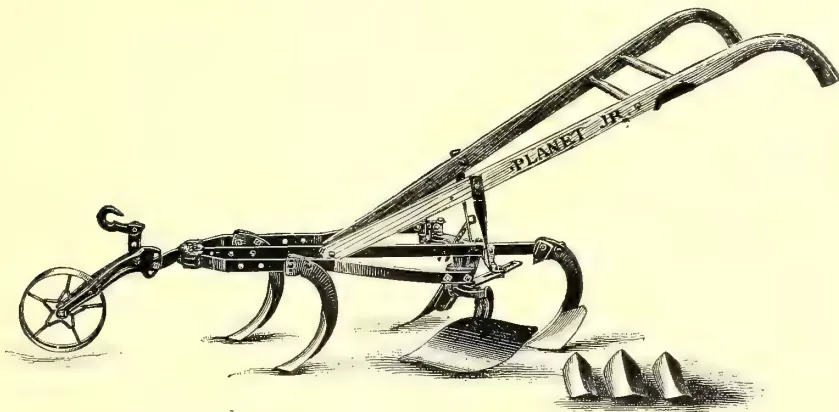
An illustration of a fine-toothed garden cultivator, labeled 'PLANET JR.'. It has a long wooden handle and a small spoked wheel at the rear. The front of the tool has several curved tines for tilling the soil. The brand name 'PLANET JR.' is printed along the length of the handle.FIG. 2.—A FINE-TOOTHED GARDEN CULTIVATOR.
[These implements are available locally.—Ed.]
This image shows a blank page with a light cream or yellowish tint. There are a few small, dark specks scattered across the surface, which appear to be scanning artifacts or dust particles. No text, lines, or other graphical elements are present. MARCH 1908.]213Edible Products.that the plants were set in the tobacco house, the same varieties were planted in the open field. On January 19, 1905, the beds were examined and the following results were noted. On the east and south of the frame, where the plants were exposed to the direct rays of the sun for more than half of each day, the rows of plants next to the outer side of the frame, or where there was only from three to four feet of space between the ground and the cloth, were the poorest. There was a very marked difference between these plants and the ones grown where the distance from the ground to the cloth was from seven to eight feet. A marked graduation in the size of the plants was very noticeable, the largest heads being where the distance from the ground to the cloth was the greatest, and the rows becoming smaller and poorer as they approached outside of the bed. The plants along the north side, where there was a more uniform effect of the sun, were practically all of the same size.
The results as to the yield of good heads and as to quality were no better and with many varieties not so good as in the case of the plants grown in the open field.
The results showed very clearly that conditions under tobacco cloth are not suitable for lettuce culture. The lettuce under shade produced a larger percentage of poor soft heads. There was also a tendency for the heads to run to seed more quickly than when in the open field. The rot (Botrytis vulgaris, Fr.) was much more marked than in field-grown plants.
HARVESTING AND PACKING.—Lettuce for market should not be cut until the heads are fully grown, whether it is of the loose or the cabbage-headed varieties. The loose-headed sorts may be used for the home table as soon as the leaves become large enough to cut. With the cabbage-headed varieties it is very different, and they are not ready to cut until the heads become firm and solid. The inner leaves should be well blanched so as to be tender and crisp. In cutting lettuce it should be handled very carefully so as not to break or tear the leaves any more than is possible. As soon as it is cut it should be taken to the packing house so as to prevent wilting from the sun.
It is a good plan to sort the heads according to size and firmness. Each head should be carefully washed and the outer leaves that are soiled should be removed.
28There is no standard package to be used, but for local markets or short distance shipments some form of cheap basket holding from five to eight dozen heads is the most common. For long distance shipment a large crate or a barrel is usually used. A central partition is usually put into a large package so as to relieve the weight. In packing, the outer leaves should be wrapped up around the head so as to afford as much protection to the inner part as possible. Place the heads carefully but very firmly in the package, so that they will shift as little as possible in transit. It is very difficult to pack lettuce so that it will carry well, as it is so loose and spongy that unless great care is taken it will arrive on the market in poor shape.
TEST OF VARIETIES.—During the past season forty-three varieties were tested. Many of the varieties have done exceedingly well here, some very fine lettuce having been grown in our beds.
For type standards and descriptions we have followed the work as outlined in American Varieties of Lettuce by W. W. Tracy, Jr., Bulletin 69, U. S. Department of Agriculture, Bureau of Plant Industry.
Butter Type, cabbage-heading.
Big Boston.
Cold Frame White Cabbage.
California Cream Butter.
Tennis Ball Black-seeded.
Butter Type, Bunching.
Oak Leaf.
Crisp Type, Cabbage-Heading.
Deacon.
Iceberg.
Mignonette.
New York.
Crisp Type, Bunching.
Black-seeded Simpson.
White Star.
Cos Type, Self-closing.
Dwarf White Heart Cos.
Paris White Cos.
For commercial purposes the following varieties are the best: Hubbard Market, Big Boston, California Cream Butter, Tennis Ball Black-seeded, Deacon, Iceberg, and New York.—Estacion Central Agronomica de Cuba, Bulletin No. 8, Sept. 1907.
Edible Products.214[MARCH 1908.In a report of an interview with Sir Daniel Morris on November 16 last, the Demerara Argosy publishes the following remarks made by the Imperial Commissioner with reference to the rapidly extending rice industry of British Guiana:—
During my visit to Canada, said Sir Daniel Morris, in order to impress the people of the Dominion with the resources and possibilities of the West Indies and British Guiana, I cited the remarkable development of two new industries which had been called into being practically during the last five years.
One was the Sea Island cotton industry, started at St. Vincent, Barbados, and the Northern Islands in 1903, and which is now of the annual value of nearly quarter of a million sterling, or $1,200,000. This Sea Island cotton is still capable of further development, and the fine spinners of Lancashire are satisfied that they can look to the West Indies for their supply of this particular class of raw material. The other development to which I drew attention was the singularly interesting one of rice growing in British Guiana. This has been called into existence on a commercial scale within the short period of eight years. The yield of rice in 1899 was under 5,000 tons; in 1902 it had increased to nearly 16,000 tons, and according to the returns published by the Government last year, it had reached a total of 30,000 tons.
In addition to rice, the colony can look forward to a considerable extension of the lime, coconut, cacao, and rubber cultivations, so that these subsidiary industries may ensure the continued well-being and prosperity of the colony. From the returns of the rice industry it would appear that whilst seven years ago the imports into British Guiana were a little over 25,000,000 lbs., last year they had fallen to 6,000,000 lbs., showing that during a comparatively short period the imports had shrunk more than 75 per cent. It is gratifying to learn that though a considerable revenue may have been lost by the falling away in the imports of rice, this has been practically made up by the larger imports of dry goods and other commodities.
British Guiana has arrived at the position that while enormous quantities of rice are being produced locally, which are taking the place of grain formerly imported, it has also begun to export rice to the neighbouring colonies in the British West Indies, and to French and Dutch Guiana. As far as I am able to gather, the first rice exported from British Guiana amounted to 10,506 lbs. in
1902-3; this was of the value of $290. In 1904-5 the exports reached 61,225 lbs., of the value of $1,709, while last year the increase was considerable, the exports amounting to 3,474,512 lbs., of the value of $89,078 (£18,000).
It would appear from a question asked at the address delivered by me on Friday, that some of the growers are concerned as to the best means of disposing of rice straw. It is true that rice straw is capable of being made into paper; on the other hand, if it is to be shipped out of the colony, it will have to be pressed into compact bales and the freight would be considerable as compared with the intrinsic value of the material. It would not be a difficult matter to send sample bales of rice straw from British Guiana to be tested and reported upon by paper makers in Europe or in Canada. In the meantime, the Board of Agriculture would do valuable service if it could persuade the small growers to use the rice straw as fodder and bedding material for their animals, and return the straw in the form of manure to the land. It is a terrible waste of good manure to burn the straw, as I understand some of the small growers are doing at present. It is absolutely necessary for lands under cultivation to receive back a proportion of the vegetable material taken from them; otherwise they lose their fertility. Rice straw might also be utilized as a mulching material in all kinds of cultivation. It would keep land in good condition during prolonged periods of drought, and it would also keep down weeds and maintain for long periods the productivity of areas under cultivation in limes, cacao, rubber, and fruit trees, without the use of artificial manures.—Agricultural News, Vol. VI., No. 148, 28th December, 1907.
BY MR. E. SEYMOUR BELL,
British Commercial Agent in the U. S.
(Concluded.)
PROGRESS OF CULTIVATION.—It is said that the first growers of rice in Louisiana and Texas were the Acadians, French settlers of Nova Scotia.
Judging by the returns, early rice growing in Louisiana offered little attraction for that capital which, in recent years, has developed so much of the land not formerly cultivated by the Acadians, but adjacent to their little fields, and which were believed by them to be almost valueless. Their methods
MARCH 1908.]215Edible Products.of cultivation were primitive, the acreage planted was small and the harvesting was done by hand. Such success as they had, however, convinced later settlers that the business of rice growing could be made profitable. It soon became apparent that it would not do to depend on the rainfall for the irrigation, and steps were taken to prevent the heavy rainfalls from running to waste by damming the water back in the fields. This was the beginning of artificial irrigation. Owing to the imperfect drainage of the lower lands harvesting continued to be done with the sickle. Threshing was done with the flail, and winnowing was dependent upon the breezes. It was only in 1894 that pumping on a large scale was commenced. It had been found that the higher lands were well adapted for rice culture if sufficient water could be procured. It was then that the centrifugal pump was first employed, and canals were constructed to carry the water to the fields.
The effect of successful irrigation on the prairie lands was a rise in value of such lands. In 1888 these lands could be obtained at from 1 dol to 3 dol. 50 c. per acre, according to their facility for cultivation. In 1892, when pumping experiments were being carried out, the value rose to 7 and 10 dol. per acre, and in 1895 the value reached 15 and 20 dol. per acre. Some of these same lands are now held at an average price of 30 dol., and a few choice locations bring as much as 50 dol. per acre. Rice lands not so favourably situated as regards canals may still be had for 15 dol. per acre, but considerable capital is required to provide canals and pumping plants.
The following is a comparison of the value of rice land with wheat lands in various States:—
| Average Value per Acre. |
|||
|---|---|---|---|
| $ | c. | ||
| Rice, coast country | ... | 20 | 0 |
| Wheat— | ... | ... | ... |
| Indiana | ... | 3 | 71 |
| Illinois | ... | 8 | 32 |
| Iowa | ... | 9 | 20 |
| Kansas | ... | 9 | 73 |
| Missouri | ... | 7 | 88 |
The rice belt is intersected by ten navigable rivers and by many smaller streams, all conveying fresh, soft water comparatively free from silt.
In nearly every township there are one or more ridges slightly above the surrounding land. On these ridges surface canals were built from 20 to 150 feet wide, according to the area to be watered. The sides of the canals were
raised from 4 to 5 feet with ploughs and scrapers, or with grading machinery. Laterals were run from the main canal to accommodate remote farms. Powerful pumping machinery was located on the banks of the river at the head of the surface canals. These canals, when well constructed and operated, proved entirely successful and made the rice crop a practical certainty over a large section of the country.
UNDERGROUND WATER SUPPLY.—Scarcely had the surface canals been accepted as a success when it was discovered that there was a strata of gravel at 125 to 200 feet under the surface of the entire section of south-west Louisiana containing an unlimited supply of water which would, of its own pressure, come so near the surface that it could be easily pumped. It was afterwards discovered that this bed of gravel was nearly 15 feet in thickness.
Throughout the entire belt the surface has such a slight variation that for the purposes of irrigation it may be considered practically level. The soil is rich, sandy loam, in some sections underlaid with tenacious clay at the depth of 2 to 3 feet. In the other sections the soil is a strong clay or clay loam, with subsoil conditions similar to that of sandy loam. Between these extremes the sand and the clay form many grades of loams, but all easily tilled and fertile. At a depth of 8 to 16 feet from the surface a stratum of water-bearing sand is generally struck, the water answering for domestic purposes.
Pipes of 2, 3, 4, 6, 8 and 10 inches in diameter have been sunk to the gravel and pumped continuously for months without diminution of supply. The water is soft, at a constant temperature of 70°, and absolutely free from all seeds and injurious minerals. Such is the facility with which these wells are made that a 6-inch tube has been put down to the full depth required—200 feet—in 14 hours.
Most of the later wells are 8 and 10 inches in diameter. The California propeller pump seems to excel the centrifugal in popularity. Sets of four and five wells have been bored, worked by one 50 horse-power engine, and will irrigate from 500 to 1,000 acres.
The cost of wells in south-east Texas is about as follows:—10-inch well complete, 200 feet deep, 650 dollars; California propeller pump in place in well, 250 dollars; 20 horse-power engine, 700 dollars; total for plant, 1,600 dollars. This should water 250 acres of rice land for sixty days at a total cost for fuel, oil and engines of 400 dollars.
Edible Products.216[MARCH 1908.Elevating water to the upland prairies will always be an expensive undertaking, but the farmer who has successfully grown wheat or oats has no difficulty in undertaking the farming of rice. The process, except for the irrigation, is practically the same.
CULTIVATION IN TEXAS.—The land is ploughed with gang ploughs in the autumn or spring, sometimes both, then disced and harrowed thoroughly. Planting is done with the broadcast machine attached to an ordinary farm wagon, or the seed is drilled in rows from 7 to 8 inches apart, the latter method insuring a better crop. During the planting season, which extends from April 1 to June 15, or later, no water is put upon the land, dependence being placed upon rainfall to sprout the seed and promote the growth of the plant for a period varying between one and two months, depending upon the season and water supply. Flooding usually begins when the rice reaches a height varying between 6 and 10 inches, and from this time on until the grain is in the milk and well formed, a period of about 70 days, the fields are kept flooded.
About ten days before harvest the fields are drained. The grain rapidly hardens and matures, and by the time it is ready to cut, the field is sufficiently dry to permit the use of the reaper and binder. This machine is identical with that used in the grain fields elsewhere in the United States. The sheaves of rice are shocked in the field immediately after the binder, ten sheaves to the shock being the rule, in order that there may be a free circulation of air to dry the straw. When harvesting begins the stalks and leaves of the rice are still green, in the main, but the head is golden yellow on the terminal two-thirds. The green straw, properly cured, is a valuable substitute for hay, and is baled and fed to live-stock, including the work horses and mules, which become accustomed to it, often preferring it to prairie hay. Harvesting begins in September, and continues through October and part of November, often until December 1, and threshing the rice from the shock begins after it has been allowed to cure and dry for a period of two weeks at least. The machines used are the modern styles of wheat threshers using steam power, revolving knives for cutting the binding twine, and a blower to remove and stack the straw. The rough rice, as it comes from the thresher, is put in large gunny sacks weighing, when filled, an average of 185 lbs. each. The sacked rice is either hauled to the warehouse or direct to the mills.
The cost of raising a crop of rice in Texas on 100 acres of land is estimated as follows:—
| Cost. Dollars. |
|
|---|---|
| Ploughing at 1 dollar per acre ... | 100 |
| Seed for same, one sack (or about 3½ bushels) for 3 acres ... | 100 |
| Seeding with drill ... | 50 |
| Watching levees (one big boy for three months) ... | 30 |
| Cost of water (this refers to canals) ... | 300 |
| Cost of harvesting 100 acres at 2 dollars per acre ... | 200 |
| Cost of 1,000 sacks ... | 75 |
| Cost of threshing 1,000 sacks at 10 cents per sack ... | 100 |
| Interest upon the value of land improvements valued at 4,000 dollars, at 6 per cent ... | 240 |
| Total... | 1,195 |
| Estimating the yield at 10 sacks per acre and sold for 3 dollars per sack would give ... | 3,000 |
| Leaves a net profit of ... | 1,805 |
RICE PRODUCTION.—The evolution of rice milling has been as great as the production.
Many things are yet to be learned, about rice in connection with machine production. As yet it does not take as high a polish as hand produced rice. It has what is known as a chalky edge, which reduces the price of the finished product 50 cents per 100 lbs. The price of rice at present is based on the amount of shine it takes, and not what it is. The chalky edge is due to careless management in producing large crops, and will soon be remedied. Another thing to be learned is better cultivation, as necessary to quantity and quality of the product.
Properly harvested and marketed, rough rice brings from 2 to 5 dollars per barrel, depending upon general prices, grade, &c.
Rice is considered one of the surest crops raised, there is no probability of drought when the water supply is attended to, and it is little injured by excess of rain. With good cultivation and care rice yields 15 barrels (60 bushels) per acre. It has been known to yield as much as 30 barrels to the acre.
100 acres of rice furnish at least 100 tons of straw superior to native prairie hay, and 25 tons of bran and polish. This provides for the wintering of 100 head of stock.
Rice stubble is used for fattening swine, cattle and horses.
MARCH 1908.]217Edible Products.The Louisiana experiment station collected the opinions of a number of the most prominent rice growers, who agreed in the main on the following methods :— The land is broken with four-mule gang ploughs, reaching about 3 inches. Disc and spring-tooth harrows are used, and, when necessary, complete pulverisation is secured by the use of a smoothing harrow. Should the ground be too hard, water is turned on to soften it. The growth is found more uniform where a drill is used, although the rice may be sown broadcast. In moist, warm weather water is not turned on for from four to six weeks, and then care is taken not to cover the tops. An average season requires three months' flooding. The water is withdrawn from the field when the heads begin to turn and the rice is passing into the "dough stage." This is usually from 10 to 14 days before harvest begins.
Three horses with a modern self-binder will harvest from 5 to 12 acres daily. The same thresher used for oats will thresh rice. Where the farmer supplies the hands the thresher usually charges c. per bushel. In threshing from the shock something like seventeen men are required.
IRRIGATION CONTROL.—The part played by water being of importance where irrigation is necessary, the following description of the arrangement at a certain station may be of interest :—
The instruments used to regulate the flow of water were placed upon a small tract containing 37.96 acres of land. The middle branch of the main canal, 80 feet wide at the point of diversion, was tapped by a small flume feet wide and 40 feet 6 inches long. The levee, which is feet high, was cut and aprons of sheet piling driven through the levee and into the virgin soil. These aprons furnished ample provision against leakage and wash at the sides of the flume. A standard water register was used to keep a continuous record of the depth of the water passing through the flume and the times when water was applied to the rice.
The evaporating tank was established in such a manner as would reproduce conditions which prevailed in the rice field. It was set in a pit and partly filled with soil. Water was poured in until its level was about 4 inches above the surface of the soil. About one foot above the water surface in the tank a light wire netting was placed horizontally, being stretched over a square frame which rested upon posts at the corners. The wire screen was used as a support for grasses and rice straw, which were increased in quantity as the rice matured in the field, so that the
depth of shade cast over the water by the growing rice was reproduced, as nearly as possible, in the tank. There is no question whatever that the evaporation from a tank placed upon the top of the ground, and exposed to the direct rays of the sun would be far greater than that shown in this experiment.
The raingauge was a double tube securely mounted upon a post, the top of the gauge being about 4 feet above the ground.
By the means above described, a record of the evaporation, the rainfall and the times when irrigation took place was kept. From the continuous record of the depth of water which passed through the flume kept by the register the volume of water used on the rice-field was determined. These records covered a period of 71 days. During this period the experiment field containing 37.96 acres of rice received from the canal enough water to cover it to a depth of 19.66 inches, and enough rainfall to cover it to a depth of 9.15 inches. The evaporation during the same period was 16.03 inches, leaving a net depth of water to promote the growth of the rice crop and supply the volume taken up by the soil amounting to 12.78 inches. The following table shows the water received by the crop during the several weeks of the irrigating season :—
| Flood Water. | Rain-fall. | Evapor-ation. | |
|---|---|---|---|
| Week ending— | Inches. | Inches. | Inches. |
| June 29 ... | 3.42 | 0.42 | 1.90 |
| July 6 ... | 0.47 | 0.66 | 3.36 |
| " 13 .. | 8.10 | 0.36 | 2.04 |
| " 20 .. | 2.39 | 2.16 | 0.12 |
| " 27 ... | 0.30 | 1.56 | 1.20 |
| August 3 ... | 0.58 | 2.70 | 1.10 |
| " 10 ... | 0.96 | 0.96 | 3.24 |
| " 17 .. | 3.19 | ... | 1.20 |
| " 24 ... | 0.20 | 0.30 | 1.08 |
| " 31 ... | 0.05 | 0.03 | 0.79 |
| Total ... | 19.96 | 9.15 | 16.03 |
| Area irrigated ... | ... Acres | 37.96 |
| Depth of water received from irrigation ... | inches | 19.66 |
| Depth of rainfall ... | " | 9.15 |
| Total depth of water received by the land ... | " | 28.81 |
| Evaporation ... | " | 16.03 |
| New depth of water received by the land ... | " | 12.78 |
DISTRIBUTION OF WATER.—The method employed in the rice district to distribute water from the large canals has proved fairly satisfactory. A superintendent of distribution is employed by each large plant, and the duties of this officer are defined by his employers. The superintendent has personal supervision and ostensible control of the headgates through which water is drawn from the main canal. Under him are a number of assistants, usually one for every 2,500 or 3,000 acres irrigated. These assistants walk the levees and keep them intact. Weak places are watched closely and breaks promptly repaired. The assistants also keep a watchful eye upon the growing rice, and especially upon the fall of the water in the fields and report when, in their judgment, additional water is needed. When such a call for water is made, the superintendent, by order or in person, opens the proper headgate and allows sufficient water to flow out and then closes the gate. His assistant attends to the distribution of the water, seeing that the cuts are properly covered and that the supply furnished is economically used. This is the system of water distribution both in Louisiana and Texas, and during favourable seasons, it must be admitted, has worked with a fair degree of satisfaction. The fact that water is not sold for cash anywhere in the rice district, but is furnished for one-fifth of the crop, whatever that crop may be, greatly encourages co-operation between the parties interested. The companies which supply water have almost as great an interest in securing as large a crop as possible from every acre of land irrigated as the tenant who owns neither land nor water, but depends for a living wholly upon the crop he raises.
LEGISLATION IN LOUISIANA.—The irrigation industry in the rice districts is confronted with the question of the control and division of the water supplies. Since the industry is comparatively new to Louisiana, this question has received but little consideration there. The industry has developed so rapidly during the past decade, however, that millions of gallons of water are being drawn from the streams of this State every minute during a third of the year, and it is believed that it will add to the stability of the rice-growing industry if water rights can be placed on a firm foundation.
An examination of the constitution of Louisiana reveals only one article bearing on the subject of water titles. This article declares "Riparian owners of property on navigable rivers, lakes or
streams within any city or town in this State having a population in excess of 5,000 shall have the right to erect and maintain on the banks owned by them such wharves, buildings and improvements as may be required for the purposes of commerce and navigation subject to certain conditions."
The statutes of the State contain brief mention of the appropriation of water for agricultural purposes. One section provides redress against the consumer of water for irrigation who neglects to meet his obligation to the canal owner for the supply furnished. The words of the statute are as follows:—"Any person, association of persons or corporation who shall furnish water to another for the purpose of aiding or assisting him in the growing or maturing of a crop shall have the privilege co-equal with the privilege for supplies upon said crop to secure the payment of the agreed compensation therefor."
At the same time the Legislature provided for taxing the rice growers, and at the session of 1900 the rice growers of the upland prairies received protection from unlawful diversion, and the canal owners from interference with the headgates by water users, by the provisions of the following section:—"Any person who shall knowingly or willfully cut, dig, break down, open, close or dam any canal, ditch, intake, flume or levee, the property of another, for the purpose of irrigation or drainage, with the intent to maliciously injure any person, association of persons or corporation for his own use or advantage, unlawfully and without permission, with intent of stealing, taking or causing water to run or pour out of such canal, ditch, flume or levee, and applying the same to his own or other's advantage or to the injury of others, or by constructing a dam or other obstruction in a canal, ditch or intake so as to prevent or interfere with the use of water by others, he, she or they so offending shall be deemed guilty of a misdemeanor, and on conviction thereof shall be fined in a sum not less than 50 dollars, nor more than 500 dollars, or imprisoned in the prison gaol not less than ten days nor more than six months, or both, at the discretion of the Court."
LEGISLATION IN TEXAS.—In the revised statutes of 1895 there is an important advance in the direction of establishing irrigation in Texas upon a firm footing. The following is an abstract of this law:—
Art. 3115.—All unappropriated waters of the State, ordinary flow, underflow, storm and rainfall, where the rainfall is
MARCH 1908.]219Edible Products.irregular or insufficient for agricultural purposes, are declared to be the property of the public, and may be acquired by appropriation for the purpose of irrigation.
Art. 3116.—The storm or rainwaters may be held or stored for beneficial purposes and diverted for irrigation, milling, waterworks and stock raising.
Art. 3117.—The ordinary flow or underflow of any streams may be diverted from its natural channel for irrigation, &c., provided that damage to a riparian owner may be determined by condemnation proceedings.
Art. 3118.—Appropriation of water is confined to objects enumerated in Art. 3116.
Art. 3119.—Priority of rights is determined by date of appropriation.
Art. 3120.—An appropriator, within 90 days after beginning construction of irrigation works, must file and record in the office of the county clerk a sworn statement of location of headgate, name of canal, size of canal in width and depth, carrying capacity in cubic feet per second, name of stream from which taken, time when work was commenced, name of owner and map showing route of canal. In case the water is taken from a reservoir, dam or lake the statement filed shall include the locality, name of survey upon which located, acreage covered, boundaries of reservoir or lake and area of watershed from which collected. With the filing of such statement, claimant's right relates back to time when construction began. Owners of works constructed prior to the passage of this Act shall file and record like statements within 90 days after the law goes into effect, but the failure to do so will not work a forfeiture of such rights nor prevent their establishment in the courts.
Art. 3122.—Rights to water for purposes stated in Art. 3116 may be acquired by filing and recording a sworn statement of declaration of intention with full description of proposed works; construction must begin within 90 days after filing said statement, and the work thereon must be prosecuted diligently and continuously to completion.
Art. 3123.—"Completion" is defined as carrying water in main canal to place of intended use.
Art. 3124.—Having acquired the right to divert water from a stream, no appropriator shall be deprived of the use of said water, or any part of it, except that riparian owners may use said water for domestic purposes; and any person whose land may be located
within the watershed from which the storm waters are collected may construct dams upon his own land to store water for domestic purposes, but all excess of water above that lawfully appropriated may be appropriated by others.
Art. 3125.—Corporations may be formed and chartered for the purpose of constructing and operating works for the diversion of water, and shall have power to sell water rights secured by liens on land or otherwise, or otherwise dispose of the water under their control. All persons owning a possessory right to the use of water in a canal or other works shall be entitled to be supplied therefrom in accordance with contract terms; but if the price is not agreed upon, the owners of the water, having more than sufficient to meet existing contract requirements, must nevertheless deliver the water to such persons at such prices as may be reasonable and just; and in case of drought or accident, causing shortage in the supply, all consumers shall be provided pro rata, according to the amount to which each consumer is entitled. A permanent water right shall be an easement to the land and pass with the title thereof. Any instrument of writing providing a permanent water right may be recorded the same as land transfers.
Art. 3126.—Rights of way, 100 feet wide, over all public, free school, university and asylum lands, and the use of the material thereon for construction purposes, is granted to corporations and associations, and right of way over private lands and land for storage reservoirs may be obtained by contract or by condemnation proceedings. Water belonging into riparian owners may be obtained by condemnation and payment of damages to private property as provided in railroad cases, and the delay thus caused shall not work a prejudice to the person constructing the canal or other works.
Art. 3127.—Surplus water shall be returned to the stream from which taken.
Art. 3128.—Right of way along or across public highways is granted, but necessary bridges must be constructed and the usefulness of the highway in no way impaired. The route of a public highway over a dam site, reservoir or lake may be changed by the Commissioners' Court at the expense of the persons owning said site.
Art. 3129.—No cause of action for damages by live-stock shall accrue to owners of canals, &c., unless the same shall be kept securely fenced.
Edible Products,220[MARCH 1908.Art. 3130.—A superior preference lien upon all crops raised upon irrigated land is granted to persons owning the irrigation works which supply the water thereto under lease or contract.
Art. 3131.—Corporations organised under general laws are empowered to acquire lands for irrigation by donation or purchase or in payment of stock or water rights, to hold or transfer the same or borrow money thereon for construction, maintenance and operation of necessary irrigation works, and may issue bonds and mortgage its property to secure the payment of debts; but no stock or bonds shall be issued except for money paid, labour done or property actually received. All fictitious increase of stock or indebtedness shall be void. All lands acquired, except those used for the construction and maintenance of irrigation works, shall be alienated within 15 years from the date of their acquisition, or be subject to judicial forfeiture.
Art. 482.—Any person who shall knowingly or wilfully destroy, injure or misplace any bridge, culvert, drain, sewer or ditch shall be guilty of a misdemeanour, and, upon conviction thereof, punished by a fine of not more than 500 dollars and shall be liable to the county and any person injured for all damages caused thereby.
Art. 495.—If any person amenable to the laws governing irrigation shall fail or
refuse to work on any ditch or aqueduct when summoned so to do by the proper authority, he shall be fined not less than one dollar nor more than five dollars.
Art. 496.—Any person who shall wilfully or through gross negligence injure any irrigating canal or its appurtenances, wells or reservoirs, or shall waste the water thereof, or shall take the water therefrom without authority, shall be deemed guilty of a misdemeanour, and for each offence shall be liable to a fine not exceeding 500 dollars.
Many Japanese immigrants have settled in the rice belt and appear to find the industry profitable.
The capital invested in the rice industry of the Louisiana-Texas belt is estimated at 30,000,000 dollars, which includes lands, improvements, implements, pumping, plants, mills and canals.
There is every indication that rice growing will continue to increase, and that larger quantities will be exported in the future.—Diplomatic and Consular Reports on the Rice Industry in the United States, No. 625, pp. 1-26.
The production of sugar at 158 factories during 1907 was 18,088,369 pikuls. From this De Indische Mercuur calculates the entire production of the island at 19,444,238 pikuls or 1,200,854 tons.—Ed
MARCH 1908.]221[The apparatus described in the following article has been fully tested by the Government Entomologist at the Royal Botanic Gardens. It has proved an unqualified success. Troublesome ant hills, of long standing, have been destroyed in a few minutes' time. A departmental circular, describing the apparatus and the manner of employment is in preparation.—E. E. G.]
In the "Natal Agricultural Journal" for July, 1906, Mr. Claude Fuller, Government Entomologist, illustrates and describes a machine for the destruction of white ants, placed on the market in South Africa by Messrs. P. Henwood, Soutter & Co., agents for the sale thereof.
This contrivance consists of an air-pump, connected by a short length of rubber hose to a furnace. By working the pump a continuous blast of air is driven into the furnace, entering beneath and escaping through a pipe near the top. A charcoal or cow-dung fire is first started in the furnace, and by pumping, got thoroughly alight. A powder is then sprinkled over the fire and the lid closed. By continuing the pumping a very hot cloud of poisonous smoke is driven out through a flexible hose. In use, the nose is inserted into a gallery of an ant's nest and the smoke pumped in.
Having had one of these machines in use for the past three or four months, I have no hesitation in saying that in the "Universal Ant Exterminator" we have the most efficient and effective apparatus for destroying white ants in their nests which has yet come under notice. Upon many occasions I have succeeded in killing out huge colonies—nests 15 and 20 feet across—where I have previously failed to destroy the lot. Treated nests which have been dug out reveal the death of every inhabitant, and show deposited upon the walls of every chamber and gallery a poisonous coating.
Two rather unique cases in the use of the pump are worth recording. In the first case a white-ants' nest was discovered beneath the flooring of a farmhouse and dug out. Later, I loaned the machine to the owner in order that he might test its efficiency. White ants were noticed working at the mouth of a gallery 80 feet away from the house. Here the fumes were pumped in, and a
few minutes later a cloud of smoke issued through the flooring of the room from beneath which the nest had previously been dug out. The gentleman to whom the machine was loaned has since purchased two, and is now working over the whole of an estate of 5,000 or 6,000 acres.
In the second instance honey bees had become a decided nuisance, making their nests between the lining and the roofing of a large verandah. Auger holes were bored through the ceiling boards, and the smoke pumped in through a length of iron piping. The immediate result was to drive out the bees through every exit hole they knew of. Many dropped dead, but the majority escaped alive. Afterwards, of course, the bees returned, and, naturally enough, started to work cleaning away the deposit; this poisoned them off.
Wherever a gallery, sufficiently large to admit the nose of the hose, can be obtained (about half an inch in diameter), the machine can be used with the most satisfactory results; not only are the insects killed, but the gallery is thoroughly poisoned for an indefinite period.
The powder spoken of is sold with the pumps. A cheaper and equally effective powder can be obtained by farmers at the Department of Agriculture, Maritzburg, at 8d. per lb.—The Queensland Agricultural Journal, Vol. XX., Part I., January, 1908.
The Indian Tea Association are circulating for the information of tea planters a Note written by Mr. Hutchinson on preventive measures in connection with mosquito blight in tea.
Mr. Hutchinson in his Note deals with the discovery by Mr. Antram of a new soap solution cheaper and as deadly in its action as kerosine emulsion, which has hitherto been used for the purpose. He says:—
Owing to the unprecedented severity of this blight during the past season (1907) it has been considered advisable to devote special attention to methods of combating it. With this intention the Insectarium at Kanny Koory has been given up almost entirely during the past
29 Miscellaneous.222[MARCH 1908.three months to investigation of the life history of the insect, and more especially to the effect of various insecticides upon it at different stages of its growth.
The high cost of kerosine emulsion led to the conclusion that our first efforts should be directed towards the discovery of a cheaper and not less efficacious insecticide. After long and patient experiment, Mr. Antram has been successful in finding a solution which is equally as deadly in its action on the insect as kerosine emulsion, and at the same time can be applied at twice the rate per acre at one quarter the cost of the latter. The immediate object of this report is to make known the composition of this solution in time to allow of its use during the present cold weather after pruning.
The composition of the soap solution for mosquito blight is as follows:—“Primrose” soap 1 lb.; water 20 gallons. Primrose soap is an ordinary yellow bar soap, easily procurable in this country. It has been selected on account not only of its superior insecticidal effect, but for its property of forming a clean solution which will readily pass through the fine vermoral nozzle of the sprayer, other makes of soap having a tendency to form
gritty deposits which choke the nozzle. The simplicity of the solution should make it easier to prepare and use than kerosine emulsion, nor has the soap solution any tendency to burn the bushes.
The solution should be applied at the rate of 300 gallons per acre for each round of spraying, the cost of which application will be about Rs. 2-8 per acre, as compared with Rs. 6 per acre required for applying 150 gallons of kerosine emulsion.—Statesman, 21st Feb., 1908.
[Note by Mr. E. E. Green, Government Entomologist :—
Spraying is only useful on completely isolated fields or where the whole area is pruned down at one time—as in India. In Ceylon, where the custom is to cut down one field at a time, any such remedial treatment is quickly negatived by invasion from surrounding fields. Recent experiments at Woburn have shewn that the best and most perfect emulsions are made without soap at all, but using a Bordeaux mixture made with clear lime water as the emulsifier and a heavy oil (bulk oil) instead of kerosene.—See 8th Report, p. 24, et seq.]
1. Next to the prevention of rinderpest, its treatment is one of the most important and interesting subjects in Veterinary Science. But a method which serves both as a preventive and curative of this fatal cattle disease is certainly of paramount importance in bovine therapeutics.
2. In India the inoculation of anti-rinderpest serum which is reputed to have this double effect, is coming into general use; and Major Rogers, the Indian Military Surgeon, in the course of his evidence before the Royal Commission on Vivisection, stated last year that he made arrangements for turning out 100,000 doses of this serum for use among Indian cattle.
3. The injection of glycerinated bile has also the two-fold benefit of being a prophylactic and curative, but it is found that in India this method could not make any headway, owing to the deep-rooted prejudice of the native population against the destruction of cattle for the purpose of obtaining bile. Hence the advantage of the anti-rinderpest serum for general use in India. This fact applies with almost equal force to Ceylon too.
4. The last number of the Veterinary Journal to hand, viz., that of February, 1908, states that the annual out-put of this serum in India is 300,000 doses.
5. Of course, the preparation of this serum requires a properly equipped La-
boratory and a special staff, and it may in the near future, form a subject for consideration whether advantage cannot be taken of the De Soysa Bacteriological Institute for this purpose.
6. With regard to the treatment of rinderpest, I have to note that quinine given in dram doses at the very outset will go a great way towards mitigating the disease. About eight ounces of Epsom salt should be combined with the first one or two doses of quinine administered during the stage of constipation.
7. With regard to foot-and-mouth disease, it is worthy of note that this disease assumes a mild form in India and Ceylon, whereas in Great Britain it is more virulent and fatal. But in and near a dairy, foot-and-mouth disease is a serious thing in Ceylon, too, and milk tainted with the virus of this disease is positively harmful, especially to children. It is, therefore, a wise precaution to scald milk before use when foot-and-mouth disease is reported in the vicinity.
8. The February number of the British Medical Journal speaks of a serious and somewhat alarming outbreak of foot-and-mouth disease among dairy cattle in Edinburgh. A herd of nearly 200 cows was destroyed as soon as 30 of them were found affected, and the owner of the infected herd will, it is said, have to be compensated to the extent of something like £4,000
E. T. HOOLE.
224[MARCH 1908.BY W. A. BALDWIN,
Principal, State Normal School,
Hyannis, Mass.
In the brief time at my disposal I cannot do better than to analyze the forces which have driven the Hyannis Normal School to take up the school garden work. I venture to consider this account as worthy of presentation, because I believe that it is typical of what is happening or must soon happen to every progressive normal school. Modern pedagogy demands that there must be a basis in sense and perception along every line. We are, therefore, driven to one of two courses. First, let the child alone to get experiences as may come to him. Second, select or help him to select such typical experiences as would seem to furnish him with the needed basal experiences. We used to leave the matter to chance, and we inclined even to disregard the valuable experience gained by the child in his haphazard way. With the advance in science it has become impossible to leave the whole matter to Providence, and we have been inclined to go as far the other way, leaving nothing to individual initiative. The result has been such work as the regulation sloyd manual training. In slavish imitation of others we have put sloyd into our Training School. It was not producing the desired results, and we began to consider the matter. The problem as it presented itself to us was something like this. What form or forms of manual training are best adapted to produce the desired results? We were then driven to consider more carefully than ever before just what results we were aiming to secure. This has proved for us a fruitful question which is not yet fully answered. We soon became convinced, however, that such work should process the following characteristics:—
1. It should grow out of the environment of the child.
2. It should come as a response to something from within the normal child.
3. It should be typical of important world activities.
4. It should furnish ample opportunities for the child to act himself out in connection with typical activities and relations to things and to people. The first three are to such an audience as we have to-day obvious. The last is less obvious but vastly important. Let us consider it for a moment. Unless a child
is allowed to act himself out there is no opportunity to discover his weakness, and to help him to grow strong. If he acts himself out with things which are not typical there is no especial gain. If the relations are artificial and unusual false associations are formed, false standards are established, wrong habits and wrong attitude toward life are fostered. These results have troubled the thoughtful observer in connection with regulation manual training in wood and iron, and even in regulation cooking courses, when not connected with home needs, and sewing, when based upon a system of models. Becoming dissatisfied with the regulation manual training we looked about for something better. We found several forms which pleased us and which we are using, but none which, on the whole, proved as satisfactory as has school gardening. It furnishes for us all of the requisites given above. It gives some organic untie to our nature study. It furnishes one centre for correlation of our so-called regular school work. It helps on the physical side by getting the children and teachers out-of-doors a part of the day. It helps to establish proper relations between the school and the home and the world. It is true that some city normal schools are, by the artificial conditions with which they and their graduates have to contend, deprived of many of these privileges, but the majority of the graduates of our normal schools may and should use some form of school garden work, in connection with their school work. I have already said and written so much regarding the use of the school garden as a basis for other school work and social work that I will only say here that any one who is interested enough to write for a catalogue may receive some account of our work along that line. It seems wise to us to put this work in three times during our nine years of primary and grammar schools. The reasons I shall be glad to state if anyone is interested to have them. Until last year we had not given school garden work to our normal students. They had observed the work of the children, and, in some cases, had gained experience in teaching the subject during their practice term, but the majority went out without any adequate experience which would enable them to do the work in the schools where they were to teach. Gradually it dawned upon us that we were doing for our normal students just what we were criticizing others for doing with the children,
MARCH 1908.]225Miscellaneous.viz., depending upon any chance experiences which they might have picked up and upon a little observation work, as a basis for understanding this very important branch of school work. We have now made the school garden an intrinsic part of our course in botany. Every student has his own garden. This experience is supplemented by observation and discussion of the work of the children of the Training School and by as much teaching as it is possible to allow. The present demand for teachers in this subject would not warrant every student in paying so much attention to this subject were there no other gain. We, however, believe that apart from such demand this kind of work furnishes a splendid opportunity to put into concrete form some of the most important principles of modern pedagogy, principles which ought to underlie all good teaching. I ought to say in closing that such preparation does not insure successful work in this subject on the part of every graduate. This is particularly true if the graduate is expected to inaugurate the school garden movement in a town or village. Such inauguration needs a person of strong personality, sanguine temperament, and much common sense. Given such a person with such training and I do not fear for the results.—Transactions of the Massachusetts Horticultural Society for the year 1906, Part 11,
BY HON. GEORGE H. MARTIN,
Secretary, State Board of Education,
Boston, Mass.
It is hardly necessary, in view of the widespread and rapidly spreading interests in school garden work, that I should appear here this afternoon to speak of the educational advantages of them. They have been already discovered by the two organizations in the State which are devoted to the agricultural and horticultural interests. The State Board of Agriculture is fully alive to the importance of school gardening as preparatory in a way and supplementary in another way to the agricultural work of the State for which it is organized, and the Horticultural Society has already gone so far in its leadership in the movement that any discussion cannot be for the purpose of convincing them. The Superintendents of the State are rapidly becoming interested in the movement, and they have discovered educational advantages. The fact that last year there were some three hundred school gardens in the State is evidence of this. While it would seem from the
report which Mr. Adams has read of the prizes that were given, that school gardening was comparatively limited in its scope, and but a small number of places are undertaking this work, there is not a county in the State in which there are not school gardens, and the towns and cities are already taking up the work with increased interest. They are going about it with increased intelligence; year by year it is better organized and better related to the other school work than at the start; and yet there is room for development. There seem to me to be three strong educational reasons why the school garden movement should spread until it becomes universal, for it is my own personal feeling that the time is coming when the school garden will be considered as important in the equipment of any public school as a library. The educational reason is that the garden appeals to the interest of the children in seeing something happen and in watching the development of the plant life in their gardens. In watching, too, the development of animal life, insect life, bird life in connection with their gardens. There is always something for the child to look forward to, always something to excite his curiosity and his wonder, and we know how profound those feelings are in interesting the child. He is expecting something to happen, and is inclined to be eager to see whether it does happen, and if so when and how, and by and by what it happens. This is the feature of it which gives the garden its chief educational value in that it appeals to the child more directly than any other form of school work. We have had nothing before which satisfied those feelings; all the school activities in the past connect themselves very slightly with life of any sort. Most of them have been in the air rather than on the ground, and the advantage is that this work is on the ground. It keeps the child where he is and is within his reach. That is the first educational advantage. The second is that it allies itself with the other school activities as perhaps no single school activity does. That is true of any form of manual school work, but this touches at more points than anything else we can think of, and it brings an air of reality and vitality to the other school exercises. It allies itself directly with what we call the language work, taking it out of the air into the ground, out of the theoretical into the real, out of the scholastic atmosphere into the atmosphere of real life. The opportunities for developing both the oral and written language of the child through the school garden seem to me almost endless. It allies itself not only with the literary
Miscellaneous.226[MARCH 1908.work but with the drawing. It brings that too into the realm of reality. It gives the child a reason for doing the work that is set for him to do, and it adds life and interest to every feature of the drawing work, every department of it. It connects itself and may connect itself much more than it has in the past, as Mr. Baldwin has shown in his Hyannis work, with the number work. He has shown what it does for the arithmetic work. Children find in connecting their arithmetic with their gardening work they are dealing with real things in a real way and for a purpose which is their own, for every problem has an end. They are doing these because there is something there that they want to find out. The children write in connection with it because there are things there that they cannot describe in words. It is because they want to use these things that makes the work so effective. It connects itself not only with the language, the number and drawing, but it connects itself and lays a foundation for a much more advanced work in the higher department of school, and I have felt very strongly that the school garden is an essential to the high school; it is the most effective laboratory a high school could use. The department of biology would be vitalized if it were connected with the school garden; familiarity with the features of school gardening would do as much for the study of literature, rendering plain the figures of rhetoric with which literature abounds. I believe it is idle for any teacher to try to teach literature by explaining in words what these figures mean. Both for the high and the elementary schools the school garden is to come in and will be found to be the most effective and useful laboratory that can be maintained to-day. A third reason is the social side of the garden. It connects itself so closely with the home life of the child. That is our one great need at present. It is to be the work of the immediate future to bring the school and home back into their old-time relations, and I think by means of this work it can be done. The children are applying at home what they have learned at the school garden, and this will be a means of binding the two together. Such work as Mr. Hastings has done in Fitchburg is useful, especially in a city where perhaps a school garden may not be practicable, but where in every home there are opportunities for giving the children the same sort of training. These seem to me, Mr. Chairman, the three most essential features; the fact that it appeals to the instinctive craving of the child for life process, the fact that
it renders vital other school work, and that it tends to connect the school and home as nothing else does. I may seem extravagant in my claims, but I have learned to become interested in it, and every year as I have watched it, it has grown upon me as one of the valuable features possible in public school work.—Transactions of the Massachusetts Horticultural Society for the year 1906, Part II.
BY F. A. WAUCH,
Professor of Horticulture and Landscape
Gardening, Mass., Agricultural
College, Amherst, Mass.
In all the conferences on school gardens that we have held, and in all discussions on these topics the first practical question to come up has been that of knowing how to make the garden itself. In other words, the horticultural question seems to be fundamental. Over and over this point has been emphasized, that a school garden must be successful first as a garden before it can be a successful educational enterprise. This, of course, is requiring a good deal of the teacher, because horticulture is a long art; and if one must be an expert teacher, and before that an expert horticulturist, that is certainly asking a good deal for 45 dollars a month. It is hardly to be expected that every school teacher will become an expert horticulturist, and yet we cannot for a moment relax our emphasis on this point. Again and again it appears imperatively that we must know more horticulture. Having determined so much, the next question follows closely after. Where, how, and when are school garden teachers to get their knowledge of horticulture? Some one said a long time ago that to train a good woman you must begin with her grandmother, in a somewhat similar way, to make a good horticulturist you should begin with the grandmother. Horticultural education ought to begin early. It certainly is a great advantage to every teacher to be born on a farm. The early farm experience is invaluable. It is especially so to a young man, but even the girls get a good deal out of farm life. That experience of childhood, on the farm, is worth everything to the one who takes it rightly. I know there are some to whom this farm life has meant nothing, and my heart bleeds for those men and women who look back on such a childhood with bitterness. To me it seems the most delightful experience a
MARCH 1908.]227Miscellaneous.child can have. It seems to me the best possible foundation for all kinds of education. Out of this experience there should come a true love of rural life in all its large aspects—a love of growing plants, of animals and of the land. There should be a real love for the soil. There are times when I go into the field as the mellow furrows are being turned by the plow when the whole land looks good enough to eat. If one's experience of country life has given him or her this feeling with regard to the soil and to all those things connected with it, that is the best possible foundation for teaching school gardening. This sort of an experience and enthusiasm should create through the teacher a school garden atmosphere which is invaluable in this line of teaching. All of us know that each particular school has its special atmosphere. The high school has its bookish atmosphere. The technical school has its scientific atmosphere; and so the school garden should have a garden atmosphere. This fundamental condition for success should grow out of the natural love and enthusiasm of the soil which I have attempted to sketch. When teachers undertake to learn school gardening they should get their instruction in a garden. Now, there are all kinds of gardens, and all are good; but for this purpose I should say that a well-kept garden is essential. For the purpose of the present discussion it is convenient to divide all gardens into two classes, the amateur gardens and the professional gardens. The point of view in these two different schemes is radically diverse. The amateur garden is conducted for the fun of it, while the professional gardener grows plants for profit only. I should say that a better atmosphere for the school garden teacher is to be secured in the professionally conducted garden. I would recommend that the school garden teacher get his or her knowledge of gardening from the professional gardener. There are special garden courses, or courses in general horticulture now being established in various schools; and we may expect that in the future these will give some opportunity for the training of school garden teachers. Various academies are now enlarging their work so as to include agricultural and horticultural courses. Yet for thorough work in school gardening these secondary schools can hardly furnish the proper grade of teachers. In looking for such teachers it is somewhat natural to turn toward the larger institutions which are better equipped for this sort of work. Of course, I am prejudiced in this matter—a prejudice which I freely admit—but there seems to me to be no fair question but that the
best opportunity for teaching horticulture in this neighbourhood is to be found at the Massachusetts Agricultural College. We have at college many acres of orchard, garden, and woodland, as well as fields devoted to general farm crop, and fields devoted to special experiments, all managed as well as circumstances allow. All the various agricultural activities of this country and climate are rather fully exemplified. And while that material up to the present time has not been used for the education of school garden teachers, it is easily capable of being turned to such account. There are some of our graduates who now leave college to teach. They must be to some extent prepared for school garden work; but teachers who look forward to real teaching and real school garden work need both normal school training and agricultural college training. It would seem therefore the natural and the best way to arrange this matter through some form of co-operation between the normal schools and the State Agricultural College. It seems both wise and convenient that normal school graduates who wish to take up school gardening should go to the agricultural college for their instruction in horticulture; and it seems equally proper that students of the agricultural college who intend to take up teaching should go to the normal school to secure their teaching methods. I see no difficulty in arranging some plan of co-operation between these institutions. Already steps are being taken at the agricultural college with the help of funds to be provided by the State for beginning some work of this kind. I understand that some negotiations are already underway looking toward such forms of co-operation as I have suggested. We may fairly expect therefore that in the near future we shall have opportunities of a large sort here in Massachusetts for those teachers who wish to prepare themselves well for school gardening. This may look like a large contract; for the present we know that not all teachers attend the normal schools even, and it may be expecting too much to ask them to attend the two colleges. Nevertheless, if the present plans are carried out, I am sure it will not be hard for more ambitious ones at least to get a great deal more training in the future than has been available in the past. The great problem in school gardening is to get the teachers, and the teacher's great problem is to get her knowledge of horticulture. We hope to do our share in providing her with reasonable opportunities.—Transactions of the Massachusetts Horticultural Society for the year 1906, Part 11.
Miscellaneous.228[MARCH 1908.[While we do not agree that an extensive training in gardening is necessary, for both master and scholars learn from mistakes, there is no doubt that an absolutely inexperienced teacher is in general useless for a school garden. In general, in Ceylon, we have gone upon the principle of establishing such gardens only where the master was keen about such work. The scheme is now growing to a size when proper training for the masters is worth consideration.—ED.]
By J. C. WILLIS.
Resins.—See Just's Jahresbericht.
Kauriharz. Tropenpflanze 1902, p. 146.
Ueber die Harze der Copaivabalsame. Bot. Centr. 89, p. 286.
Tschirch. Styrax do. do.
Sandarac resins from Australian woods. Agricultural Gaz. N. S. W. 1902, p. 376.
Die Kaurifichte. Tropenpflanze 1902, p. 237.
Resin tapping in U. S. Nature 68, 1903, p. 499.
The resin of Hopea odorata from Burma. Imperial Institute Bull. March 1904, p. 23
Gommier resin from Dominica. do. p. 24.
Altingia excelsa (Burmese storax). Agricultural Ledger, V. P. Series 84, 1904.
The collection of Kauri gum. Gard. Chron. 27. 8. 1904, p. 143.
Australian Sandarac resin. Bull. Imperial Institute, Jan 1905, p. 218.
The source of Manila elemi. Bull. Bureau Govt. Labs. Manila, 29, 1905, p. 51.
Dammar resins from the F. M. S. Imperial Institute Bull. 1906, p. 100.
Resin of the Hopea odorata (rock dammar). Imperial Institute Bull. March 1904, p. 23, Ind. Pl. and G. 30 April 1904.
Ostafrikanischer Kopal. Tropenpflanze 11, 1907, p. 478.
Les produits résineux des Diptero-carpées de l'Indo-China. Bull. Ec. Indoch. 1907, p. 381.
Commercial benzoin: a contribution as to the amount of insoluble matter contained therein. Chemist and Druggist, 30, 11, 1907, p. 824.
The sources of garjan oil in Burma. Ind. Agric. Oct. 1907, p. 308., Tropical Agriculturist Jan. 1908, p. 10.
Rhea.—Rhea. Agricultural Ledger. V. P. Series 43, 1898.
De cultuur van Rhea in verschiedene Landen. Ind. Merc. 11. 2. 1899, p. 96
Rhea, historically and practically considered. Tropical Agriculturist Dec. 1899, p. 379.
Rhea. Indian Agric. 1. 3. 1900, p. 65.
Ramie. Jamaica Bull. VII. 1900, p. 17.
Rhea ribbons. Ind. Gard. and P. 28 6. 1900, p. 420.
Congrès international de la Ramie. Revue Cult. Col. June and July, 1900, pp. 321, 387.
Ramie. Tropenpflanze 4. 1900, p. 285 Seq.
La culture et l'industrie de la Ramie. Bull. Ec. Indoch. 1900, p. 433.
Note sur la culture de Ramie en Assam. Revue Cult. Col. 1901, p. 53.
Ramie cultuur in China. Tropenpflanze 5. 1901, p. 126.
Thirkell & Co's offer to buy. Agricultural Ledger V. P. Series 64.
Ramie in China and India. Ind. Gard. and Pl. 19. 6. 1902, p. 450.
A nascent industry for India. Planting Opin. 22. 8. 1903, p. 602.
Le Rendement de la ramie. Rev. Cult. Col. Sept. 1903, p. 46.
Ramie (full account of actual experiments, with figures of cost and receipts). Str. Bull. 1903, p. 365.
Etude statistique sur la Ramie. Journ. d'Agri. trop. 1903, p. 373.
Ramie. Str. Bull. 1904, p. 134.
Rhea: decortication and degumming. Raja Varma in Ind. Agri. Feb. 1904, p. 33.
Rhea as a bye product to tea. Ind. Pl. and Gard. 15. 10, 1904, pp. 729, 734.
Ramie; and ramie trade of the world. Str. Bull. Oct. 1904, pp. 420, 422.
La ramie et ses analogues aux Indes anglaises. Bull. Jard. Col. 4. 1904, p. 335.
Ramie and its possibilities. Ind. Agric. May 1906, p. 154.
La ramie dans l'Inde. Journ. d' Agr. trop. 30. 6. 1906, p. 173.
Ramie, the Cinderella of the fibre world. Trop. Life 1906, pp. 132, 148.
Ramie in Tirhut. Kew Bull. 1907. T.A., May 1907, p. 273.
Rhea experiments in India. Agr. Journ. India II. I.
Ramie, rhea, or China grass. Agricultural Gaz. N. S. W., Sept. 1907, p. 744.
Rhea fibre, cultivation and manufacture. "T.A." Nov. 1907, p. 322.
MARCH 1908.]229MiscellaneousRECENT ARTICLES IN THE
LITERATURE.
Fibre d'Ananas. Journ. d'Agr. trop. Nov. 30. 1907, p. 323.
Camphre naturel. do. 335.
A Seringueira (Hevea brasiliensis). Huber. Para 1907.
Gerber-rinde. Der Pflanze 1907, p. 252.
Zimmermann. Ueber einige Gründungsversuche mit Leguminosæ. Der Pflanze 1907, p. 152.
Zimmermann. Anzapfungsversuche mit Kickxia elastica. do. p. 182.
The history of the cowpea and its introduction into America. U. S. Dept. Agr., B. P. I Bull. 102. 1907.
Stange, Der Kork, Seine Verwendung und Produktion.—Tropenpflanzer, May 1907, p. 314.
Webber and Boykin. The advantage of planting heavy cotton seed.—U.S. Department of Agriculture. Farmer's Bull. 285, 1907.
Howard. First report on the fruit experiments at Pusa.—Bull. 4. Agricultural Research Institute, Pusa.
Alexander und Bing. Ueber die Gewinnung von Kautschuk aus getrockneten Kautschukpflanzen.—Tropenpflanzer, Feb., 1908, p. 57.
Von Faber. Ueber Verlaubung von Cacaoblüten Berichte deutsch. Bot. Ges. 25. 1908, p. 577.
Henry. Le Caoutchouc en Afrique occidentale française.—Bull. Jard. Col. Dec. 1907, p. 457.
Phoenix dactylifera, the date palm.—Agric. Ledger, Calcutta, Veg. Prod. Series No. 93.
TRANSPIRATION AND ANATOMICAL
STRUCTURE IN TROPICAL PLANTS.
Der Einfluss des Klimas auf den Bau der Pflanzengewebe. Anatomisch-physiologische Untersuchungen in den Tropen. By Dr. Carl Holtermann. Pp. viii+249; plates. (Leipzig: W. Engelmann, 1907.) Price 12 marks.
Dr. Holtermann's investigations, mainly carried out in Ceylon, include a long series of experiments on the transpiration of different tropical plants. His tables show great variations in the amount of transpiration for the same plant during the same hours of different days, and these are in many cases not explained by the differing temperature and relative humidity, which are the only other data given. Thus, for instance, in the case of Canna indica, between 9-40 a.m. and
5-40 p.m. on January 11 (with a relative humidity of 61 and a temperature of 25°4 at 10 a.m.), the transpiration was 0.37 gr. per hour per sq. dm. of leaf surface, while on January 17, between 9-45 a.m. and 5-30 p.m. (R.H. 63, temp. 26°2, at 11-15 a.m.), the transpiration was 0.92 gr. per hour per sq. dm., and on January 18 between 9-15 a.m. and 3-30 p.m. the transpiration was 2.60 gr. per hour per sq. dm. (no humidity or temperature data are given within the period of the experiment, but judging from the late afternoon figures the day did not differ much from the others). This, though an extreme case, is only one out of several similar ones, and the effect of such figures on the reader is decidedly bewildering, though the striking variations may be explicable by changes of insolation, or the irregular occurrence or drying winds. As they stand, the author's figures only demonstrate that the transpiration of the plants studied exhibited startlingly wide fluctuations which remain quite unexplained.
The author's general conclusion from his experiments is that while the highest transpiration figures per hour in the tropics are considerably higher than any north European ones, yet active transpiration begins later and stops earlier in the day in the case of a damp tropical climate, so that the daily average is no higher than in Europe, while in the wet season transpiration may cease for weeks at a time. He thus does not disagree with the conclusions either of Haberlandt or of Giltay on this question. Dr. Holtermann holds that water-tissue is essentially an arrangement to supply water to the transpiring tissues during these short periods of excessive evaporation, not a means of lessening transpiration, and this view he supports by showing that it is especially developed in actively transpiring plants liable to be subjected to these sudden demands. It is characteristic of the leaves of tropical plants growing in a climate which is neither quite xerophytic nor constantly moist, and this harmonises with the short daily period of very active transpiration already mentioned. The mangroves, which ordinarily possess characteristic water-tissue, well developed, from much less or none at all in the leaves of examples cultivated in garden soil, which transpire very much more freely than plants growing in the natural salty soil. If these plants cultivated without salt are now watered with 3 per cent. salt solution and placed in the sun, they show a wilting of the leaves, and the mesophyll becomes shrivelled. Mangroves growing in their natural habitat also show wilting on hot afternoons, but only
30 Miscellaneous.230[MARCH 1908.the water-tissue is partially emptied and the leaves recover during the night. For the rest the author holds that the xerophily of mangroves and of other halophytes has been much overrated by Schimper and others. They are scarcely, if at all, more protected in this respect than many trees growing in similar situations but not in a salty soil.
Dr. Holtermann describes three other formations of stand-plants besides the mangroves, viz., first the plants of moist sand, which fall into two categories: (1) those growing on the edge of the sea, absorbing salt water, and possessing water-tissue; (2) those growing further from the sea, with fresh bottom-water, which have no special xerophilous adaptations. Secondly, the dune plants, a highly xerophilous type; and, thirdly the plants growing on salty mud, which have internal water-tissue, and resemble succulent desert-plants in many anatomical features. These three formations have close parallels among the strand formations of temperate regions. This classification is good so far as it goes, but it ignores the beach-jungle (Barringtonia-formation of Schimper), which the author apparently includes with the damp lowland forest type. Yet this formation, though not well developed in Ceylon, certainly has an independent existence; it is much in need of exact study and delimitation.
The author goes on to describe the damp lowland woods, the dry plains of the north and east, and the upland vegetation, as also the epiphytes and parasites of Ceylon. Many interesting observations are contained in this part of the work. Dr. Holtermann also discusses at some length the question of leaf-fall in the tropics, and concludes that though it is a hereditary character, it is, in the endemic species, determined by the dry season, and, in general, leaves fall when their structure does not fit them to withstand the conditions prevailing during the time the trees are bare. A similar explanation is given of the occurrence of annual rings of growth in the wood, the author relating the renewed formation of wide xylem elements to the increased transpiration taking place when a crop of young leaves is produced.
The final section of the work is devoted to a discussion of "Direct Adaptation," in the course of which an account is given of many interesting experiments which add considerably to our knowledge of adaptive reactions under new conditions. The author rightly classes all these as phenomena of irritability, but draws the conclusion that such characters, acquired during the lifetime
of the individual, can in process of time be fixed and inherited. This conclusion is, of course, wholly unwarranted; in fact, it is totally irrelevant. And meanwhile the mystery of adaptive reaction, so widespread a phenomenon in the biological world, remains unsolved. Until we know a great deal more than we do at present about the physico-chemical connection of stimulus and response, it is likely to remain so.
—Nature, Feb. 6.
A. G. T.
BY HENRY STAVELEY LAWRENCE, I.C.S.,
Director of Agriculture, Bombay.
(Continued from p. 143.)
If this retrospect proves the fallacy of the view that Indian agriculture is, or has ever been, in a condition of unprogressive immutability, it remains to consider the responsibility of the State in regard to the guidance and encouragement of its progress, the machinery of the new Department of Agriculture, the programme of its work, and its prospect of success.
The arguments which are used in this country against State action, and which appears even here to be losing their influence on public opinion, are not equally applicable to India. The classes which possess wealth or landed estates are divorced by sentiment and tradition from the pursuit of agriculture, and the State is face to face with a vast peasant tenantry who are debarred by their ignorance from any knowledge of agricultural developments outside their village, and by their poverty from risking the smallest loss in new experiments.
Further, in a country where the land is nationalised, and the State draws one-third of its revenues from the national rental, it is peculiarly incumbent on the State to discharge functions which in a different economy may be regarded as the sphere of the private landowner.
This is, indeed, no new doctrine, though circumstances have conspired to postpone to the present time effective measures towards its realisation.
In 1854 the Court of Directors in the famous despatch which established higher education in India stated their opinion that "there was no single advantage that could be afforded to the vast rural population of India that would equal the introduction of an improved system of agriculture."
MARCH 1908.]231Miscellaneous.In 1870 the Government of Lord Mayo established a Department of Revenue and Agriculture in the belief that Indian agriculture was "susceptible of almost indefinite improvement.
The Department was abolished nine years later owing to financial pressure, but was re-established by Lord Ripon, in 1886, with the object of "maintaining agricultural operations at the highest attainable standard of efficiency." In pursuance of the instructions then laid down, valuable work was done in the preliminary study of agricultural conditions, the collection of statistics, the organisation of a system of agricultural credit, and in several provinces the investigation of the relations of landlord and tenant, with a view to the protection of tenants against rack-renting; but it was not until 1902, when Lord Curzon applied himself to the problem, that a body of scientific workers was appointed to the Department.
This staff has necessarily been recruited from European scientists, for education in India has not hitherto included a knowledge of the sciences subsidiary to agriculture, such as agricultural chemistry and botany, mycology and entomology; but though the direction must remain for a considerable period of time in European hands, the discovery and application of improvements must depend on the co-operation of the natives of the soil, and the first step to progress is recognised to be the establishment of Colleges of Agriculture in all the chief provinces.
It is true that four agricultural institutions were in existence at the time, but all were, broadly speaking, inefficient. At Poona, five students picked up such fragments of information as a single officer, whose work extended over the Presidency of Bombay, could find time to give them. At Saidapet, in Madras, there was a similar course of instruction, conducted as at Poona, in English. At Cawnpore and Nagpur, courses were held in the vernacular languages, and teachers were recruited from the Poona and Saidapet institutions. Now new colleges have been established at Lyallpur in the Punjab, Bhagalpur in Bengal, and Coimbatore in Madras; Saidapet has been abolished; Cawnpore and Nagpur have converted their curriculum into English; and Poona has been expanded and improved. I am not acquainted with the details of the changes elsewhere than at Poona; but all the institutions follow the same model, and at Poona there are now three full-time European professors of agriculture, chemistry, and botany, with
Indian assistants in these branches and in entomology and veterinary science. For the present, work is being conducted on temporary premises, but an estate of 160 acres has been purchased on which the college is in course of construction with a full equipment of laboratories and lecture-rooms, to be followed shortly by residential quarters for the professors and 200 students. Great stress is laid on practical work in the field, and Poona is well furnished with opportunities. A home farm of fifty acres is attached to the college; a dairy farm of similar size is adjacent; within three miles there are 100 acres of botanical gardens, and eight miles distant the sugar-cane experimental farm at Manjhri. Students join about the age of seventeen, when they have passed the previous examination; that is, when they have taken the first year's course leading to the arts degree at the University, and have thus received a fair general education and acquired a good working knowledge of English. The college course extends over three years, after which the candidates selected for the Department of Agriculture spend a further period of probation in practical duties on the experimental farms. In a few exceptional cases men have been sent on to Cambridge to fit themselves for appointment to the higher posts in the new provincial service.
Fears were expressed that an agricultural training would have no attraction for the educated youth of Bombay, and that the College would stand empty. So far these fears have been falsified. Where some years ago there were five students, there are now 95. The popularity of the new college is not solely due to the awakening of an interest in agriculture throughout the country; although indications of such a movement are not wanting, the field of private employment is as yet restricted. For the most part the students desire Government service either in the agricultural or revenue departments; and the latter has recently been thrown open to them by the Government of Bombay in the belief that an agricultural training can be as truly educative as a literary training, and that habits of scientific observation cannot fail to be beneficial to officers whose duties bring them at every turn into contact with village life.
The view was also put forward that in order to bring the college within the reach of the agricultural classes, instruction should be imparted in a vernacular language and not in English. The old controversies die hard; the arguments with which Lord Macaulay demolished his adversaries in 1835 are equally valid
Miscellaneous,232[MARCH 1908.to-day; while in the Bombay Presidency where five distinct vernacular languages are spoken, English is the only possible lingua franca. Moreover, English education has so pervaded this Presidency that it is no longer the monopoly of the professional classes; and, as a matter of fact, of the Poona students, the majority had hereditary associations with the possession of land.
The new policy demands a considerable increase of expenditure. In the Bombay Presidency, in place of an annual Budget of £3,000 which was chiefly devoted to the tabulation of agricultural statistics, there is now a Budget of £35,000. I have not access to the figures in other provinces, but an estimate of an increase for all India from £10,000 to £200,000 would not be far from the mark. When the schemes for the creation of the Department were laid before the Legislative Councils of the Government of India and of all the provinces, no adverse criticism was heard from any quarter. No projects, not even proposals for the remission of taxation, have ever been greeted with greater unanimity of approval from the representatives of Indian public opinion; and, indeed, if we compare the allotment with the size of the country, or the scope of the operations of the Department, it ceases to appear extravagantly liberal. Our American friends, who spend £2,300,000 a year on their department, and are satisfied that they get their full value for their money, would regard it as a very humble beginning.
The organisation of the department is as follows:—At the head stands the Inspector-General of Agriculture to the Government of India; whose functions are to advise the Government on all agricultural questions, to superintend the work of the Research Institute, established at Pusa, in Bengal, and to observe the operations of the several provincial departments, with a view to their co-ordination.
The Research Institute, at Pusa, is announced to be primarily concerned with "the solution of the fundamental problems of tropical agriculture." The staff comprises European scientists in agricultural chemistry and botany, entomology, horticulture, mycology, and plant physiology; and a number of native assistants in these sciences.
Each local Government has a separate provincial department in the charge of a Director appointed from the Indian Civil Service, who advises his Government, administers the department, and keeps it in touch with the officers of the
revenue, forest, irrigation, and other cognate departments and most important of all—interprets its work to the landowner and the cultivator.
Under the Director there is the educational work of the College of Agriculture and the executive work of the experimental stations. For the latter purpose the province is divided into two or more circles, each under the supervision of an European agricultural expert, styled the Deputy-Director. This officer studies the crops of chief importance in his circle, and the local conditions and methods. In the botanical and chemical problems involved he has the assistance of the professors of the college. His programme of experiments is drawn up in consultation with them and is annually subjected to criticism by the Board of Agriculture. This Board includes the whole agricultural staff of India, and meets in conference once a year; by the interchange of information and criticism it is hoped to secure continuity in the experiments and to avoid unnecessary duplication and repetition of enquiries.
In the Bombay Presidency, where five years ago there were three experimental stations, there are now thirteen. Each is in charge of a native officer of good education who has been specially trained in the department. Two of the farms, which are intended to serve as seed farms for the distribution of selected seed of cotton and millet, have areas of over 200 acres; the rest vary in size from 20 to 75 acres.
Up to date the work of the department has been chiefly, in the most literal sense, preliminary spade work; the preparation of the farms for experiments. The impatient reformer who seeks for revolutions in India will meet with disappointment in Indian agriculture as in other fields of activity. Some advocate the establishment of agricultural associations in every district, and demand, as is the way of the East, that Government should finance their operations; others suggest that to every school there should be attached a farm or garden, not merely as a useful guide to Nature-study, but for the demonstration of new crops and methods. Such measures would throw open the door to lavish waste of money, and in many cases prove wholly mischievous.
The difficulty of securing the judicious treatment of a new plant or method can be appreciated by all who have tried to introduce an exotic into their gardens under the care of an old-fashioned gardener, but where the problem comprehends also the application of an un-
MARCH 1908.]233Miscellaneous.tried fertiliser, and the minute comparison of the cost of each operation, from the preparation of the soil to the marketing of the produce, the disasters which attend on the ignorance or carelessness of an untrained staff are many times multiplied. An error in the management may destroy the result of the experiment, and an error in elaborate calculation of the costs may place an improvement beyond the reach of the small cultivator. And the capacity of the small cultivator is the standard by which almost all improvements in India must be regulated. It is futile, for instance, to preach to him the advantages of deep ploughing in tracts where his cattle are too small and weak to draw a heavy plough, or where he cannot afford to buy an iron plough or keep it in repair.
It is of the first importance, then, that the experimental stations should be equipped with an efficient staff, and that the results of their experiments should command absolute confidence. When improvements have been discovered the next question is how to procure their adoption by the cultivator. Various methods are favoured in the several provinces. Some issue agricultural journals; others supply matter to the native press; in some provinces agricultural associations have been established in large numbers, under official inspiration; in others a more cautious procedure is adopted, and it is proposed to postpone the development of associations, until the department is in a position to afford them the assistance of trained officers. Other measures taken are: the encouragement of agricultural shows; the cultivation of demonstration plots in selected villages; the conduct of excursions of villagers from outlying tracts of similar character to the experimental farm; and the despatch of itinerant inspectors to lecture and to demonstrate in distant villages. The last two measures have been found especially useful in the Bombay Presidency.
Illustrations of the various methods adopted could be given from the valuable work done in Madras on sugar-cane and groundnut; in the United Provinces on wheat; in the Central Provinces on cotton; but I will confine myself to a few instances which came under my personal notice in Bombay.
The sugar-cane cultivation at Poona is of the highest character in India, and will bear comparison even with the cultivation of Mauritius. While in Upper India the average out-turn of raw sugar is about tons per acre; in Poona, with the aid of ample irrigation and supplies of manure, as much as six tons have been obtained, and an outlay of £20 per acre
on fertilisers has brought in an equal sum of net profit. A discovery of far-reaching importance has here been made that oil-cakes will supply the nitrogen required for this crop at the cheapest possible rate.
Parties of cultivators from the canal districts of the Deccan have been taken to see these results, and the keenness of their interest was evinced by the severe cross-examination to which they subjected the farm staff in regard to all the methods and manures employed.
Again, at Dharwar, though the farm has only been started three years, a useful local improvement has been shown to the people. The tract is infested with a deep-rooted grass weed which could only be kept in check by the expensive process of hand-digging. It was demonstrated that an iron plough could clean the fields at a fraction of the expense, and could be drawn by the local oxen. Large landholders came from all parts of the district to see the tests, and, being satisfied of the economy, purchased a number of the ploughs.
On the Deccan canals, where the experience of the Poona Farm enables definite recommendation to be made with confidence, itinerant inspectors have been sent out to tour, with instructions to warn the villagers of the dangers of over-irrigation and water-logging; to advise them as to the manuring of sugar-cane, and to assist them in the cultivation of long-stapled cotton. These tours proved a great success in attracting the interest of the best classes of cultivators, but so far only two men could be spared for the work. It is essential that such men, if they are to overcome the distrust and scepticism of the villager, should be tactful and experienced, and have a thorough working knowledge of their business. The premature despatch of inefficient youths on this duty would only bring the department and all its work into derision, such as was excited some time ago by a circular issued by an amateur agricultural association, in which farmers were recommended to fertilise their fields by killing mad dogs and burying their carcasses.
Past experience has proved the danger of the recommendation of untested improvements. During one famine large quantities of carrot seed were imported, as a sure and rapid source of food; the precious remnant of moisture in the river beds was exhausted in a vain attempt to grow carrots, where the indigenous millet would have given invaluable relief. Drought-resisting tapioca cuttings have been imported from
Miscellaneous.231[MARCH 1908.]the West Indies, where no drought is known comparable to an Indian drought, in ignorance of the fact that tapioca abounded in India; drought-resisting grasses from Australia have been widely distributed and have been found to grow with success only on the margin of running streams; windmills have been imported in numbers in tracts where the wind was either excessive or too capricious for utilisation; and the failures of foreign machinery have been innumerable.
These cases exemplify the negative benefits that may be expected from the new department. It is something gained to have a safeguard against the commission of such errors in future. From the same point of view the Bombay Government require every officer of the Indian Civil Service in their employ to study the elementary problems of Indian agriculture during a short course at Poona. The knowledge thus acquired will not create an agricultural expert, but will enable the officer to avoid egregious mistakes, to win the confidence of the people by an intelligent sympathy with their difficulties, and to act as a link between them and the department.
From these dry administrative details let us turn to the chief products of India and take a brief survey of some of the questions under investigation. The department are somewhat bewildered with the multitude of problems pressed upon their attention, and are fortunate that, in seeking to concentrate their efforts on definite points of the greatest urgency, they have the support of the Royal Society here in London, who have most generously placed their advice and assistance at the service of the Government of India. Cloves and nutmegs have their own allurement for the specialist, but sugar and wheat are of greater importance to the country. If we are to view these conflicting interests in their proper perspective, a few statistics are indispensable, but as some apology for their introduction let me assure you that they are mere approximations and have no claim to precise accuracy.
We will take sugar first, for not only is it the typical product of India from the dawn of history, but it presents to-day every variety of unsolved problem for scientific enquiry.
India is the undisputed parent of the sugar-cane cultivation of the world. The Greeks mention with astonishment how they saw honey made by the hands of men; the Arabs carried it to the Mediterranean and Spain, and at the
famous College of Natural Sciences, at Jundisapur, invented the art of sugar refining. Until the fourteenth century, in this country, we knew no source of sweetness other than honey, and the first recorded imports of sugar took place in 1319, when fifty tons were received from Venice, and were sold at the price of 1s. 9d. per lb., or the equivalent of 21 shillings of our present currency.
In former days, India exported sugar; now she imports, roughly, a quarter million tons of refined sugar, valued at about £4 million sterling. The demand which has arisen for refined, in place of unrefined sugar, cannot as yet be supplied by sugar factories in India. Sugar and sweetmeats are the Indian equivalent for the English glass of beer, and consumption increases with prosperity. It is satisfactory to note that the output of raw sugar is still twenty times as great as these imports, that the price has not been reduced by foreign competition, and that in those British provinces where alone comparison is possible, the statistics show no decrease in the yield.
There is no crop regarding the cultivation, harvesting, and manufacture of which agriculturists, European and native alike, have so little certain knowledge. The number of varieties with distinct characteristics is very great; some require ample irrigation and contain a high percentage of sugar; others will grow with a minimum of moisture, but give a reduced out-turn; others, again, are preferred for the hard fibre which resists the attacks of jackals and wild boar. The entomologist studies devices for circumventing the white ant and the sugar-borer pest; the mycologist investigates the red-rot fungus (Colletrochicum falcatum); while the chemist is required not only to advise on the comparative value of fertilisers, but also to determine the period of ripening, and the sugar content of different varieties. If sugar is to be refined, the aid of the chemist is also required in the further processes.
In all these matters much work has already been done, but much more remains. Though canes have been imported from all sugar-producing countries, the distribution to each tract of the variety best suited to its conditions is far from settled. A great impediment to the industry is the inefficiency of the mill for expressing the juice; in the United Provinces, where thorough experiments have been made to reduce the cost of the native methods of treatment, the conclusion is that the establishment by private enterprise of agencies for the sale, hire, and maintenance in good
MARCH 1908.]235Miscellaneous.repair of cane-mills, boiling-pans, and centrifugals is the greatest need of the industry.
Wheat covers an area in British India of some 25 million acres, and has an out-turn of some 7 million tons, and a value of £42 million sterling.
The varieties cultivated are exceedingly numerous and differ greatly in quality. Many spasmodic attempts have been made to extend the cultivation of the superior soft varieties but with little success, for they either refuse to grow or deteriorate rapidly. The yield is estimated to average 5 cwt. or 9 bushels per acre—an outturn similar to that recorded in England 500 years ago—but with irrigation and manure it rises to 15 cwt.
In certain tracts where cloudy weather is apt to induce rust, only the inferior varieties which are resistant to this disease can be grown. Hopes are entertained that by hybridisation varieties may be obtained which will combine this resistant power with a superior quality of grain; and systematic investigation is being conducted to ascertain by selection the most profitable variety adapted to each soil and climate.
Jute has recently come into the front rank of Indian industries. The great increase in the demand for fibres has doubled its price in the last five years, with the result that the area cultivated has risen in that period from two to three million acres, and the crop in 1906 was estimated to be worth £35 million, sterling.
A hundred years ago it was an unknown commodity to the markets of the world, and was only used as the material for the coarse sackcloth worn by the peasants of Bengal.
The cultivation is still restricted to the provinces of Bengal and Assam, but efforts are being made to introduce it to other provinces. A survey has just been made of all tracts in India which appear to be suitable to the crop, and skilled cultivators from Bengal were despatched to conduct experiments on the agricultural stations. In its original home jute ripens in three to four months with a rainfall of thirty to forty inches and a soil of sandy loam. It may be sown in March, April, or May, and harvested in July and August. Some sixty varieties are known to Bengal, and several alternative roads to success offer themselves for investigation. Areas may be found with climatic conditions similar to those prevailing in Bengal; irrigation from canals may prove an efficient substitute for rainfall; or varieties may be dis-
covered which will adapt themselves to different soil and scantier moisture. The large out-turn and high value of the crop is an incentive to perseverance in these researches, for while cotton on an average will yield less than a cwt. of lint to the acre, worth, say a couple of pounds, jute will produce 10 cwt. of fibre worth about 12 pounds.
(To be continued.)
AN ACCOUNT OF SOME OF THE RESULTS OF THE WORK OF THE OFFICE OF SEED AND PLANT INTRODUCTION OF THE DEPARTMENT OF AGRICULTURE AND OF SOME OF THE PROBLEMS IN PROCESS OF SOLUTION.
BY DAVID FAIRCHILD,
Agricultural Explorer, in Charge of
Foreign Explorations.
The era of pork and hominy has passed for ever in this country, but so short a time ago that our fathers refer to it as the time of plain living. What has wrought this change throughout the table menus of the country since the days of the California gold fever? It is not the gold fields of the Pacific slope, nor the industrial development of the country that has caused it, so much as the introduction of new food plants. The changes that have been going on since those waggon caravans followed each other across the great plains have been gigantic, but in no respect have they been more remarkable than in those which Plant Introduction has brought about.
Slowly at first, with the establishment of those plants that the immigrants brought over with them, this work has gone on, unchronicled by historians, until to-day the very things that we look upon as characteristic of great regions of the country are vast fields and enormous orchards of introduced plants.
The discovery of gold at Stutter's mill was the beginning of the great industrial development of the Pacific Coast, but the introduction by the Catholic Fathers of a single forage plant—alfalfa—has turned two million acres of land into the most generally profitable farm area of this country.
The same Fathers brought with them to their missions olive cuttings, whose descendants to-day cover thousands of
* The substance of an address to the National Geographic Society, February 9, 1906, and published by permission of the Secretary of Agriculture.
Miscellaneous.236[MARCH 1908.acres of the best tilled olive orchards in the world. A few orange cuttings from the east coast of Brazil, called to the attention of the world by an American woman, have grown until they number their descendants by millions and form what is one of the characteristic features of California—its orange groves.
The tomato, which before the war was a curiosity from Peru and was used to frighten slaves into obedience, because they thought it poisonous, was grown last year on over half a million acres of garden land.
The lima bean, whose arrival in this country no historian has considered worthy of chronicling, has so grown in importance since its introduction, some time about 1820, that to-day special freight rates are granted it between Southern California and the Atlantic coast, and thousands of acres of land are devoted almost exclusively to the cultivation of this Peruvian bean.
The potato, from the highlands of Colombia and Peru; the rhubarb, from Central Asia; the asparagus, from England; and even the celery of Southern Europe, have all been, one after the other, introduced into our fields and gardens.
Though these great changes in the farm and garden areas of the country have been wrought in less than a lifetime, they have still been too slow, and to-day changes as far-reaching and important as the introduction of the olive or the orange are being brought about by Government aid in a surprisingly short time.
The Department of Agriculture is growing in this country some of the things that we now import and for which we pay annually many millions of dollars; it is forcing into public notice and encouraging the trial of foods that the people of other countries find excellent, and of which we are ignorant; and it is bringing in from all parts of the world plants that are now wild, but that can be tamed by breeding with others now in cultivation, thus contributing to the creation of fruits and vegetables that the world has never seen before.
This is the Government enterprise of Plant Introduction—to introduce and establish in America as many of the valuable crops of the world as can be grown here; to educate the farmer in their culture and the public in their use; to increase by this, one of the most powerful means, the agricultural wealth of the country.
No nation in the world has an agricultural territory with a greater range of climatic conditions than the United States and its possessions. Great Britain, "on whose flag the sun never sets," has her Colonies scattered through all the possible ranges of climate, but America has in one great connected area a territory that is exposed in its north to a temperature of fifty degrees below zero in winter and whose southern tip juts out into the zone of perpetual warmth.
This great farm land is peopled from one end to the other with pioneers; not with peasants whose fathers and grandfathers were peasants and who follow blindly in the footsteps of their forefathers, but with men who have the spirit of change in them and who are looking for anything that will pay better than what they already have. These pioneers, through the daily press and by means of the rural free delivery, are keeping in touch with the plant industries all over the world. They know what the wheat crop of the Argentine is likely to be, and whether Russia's output of this grain will affect the price of the wheat in their stacks. They see accounts of plant cultures in other lands that they would like to try in their own fields or gardens, and they have the time and the money and the land necessary; but they cannot get the seeds or plants to experiment with, nor do the papers tell enough to enable them to judge whether there is any chance of successfully growing these strange crops on their land.
Millions of dollars are waiting to be invested in these new crops, and hundreds of thousands of private experimenters are ready to try new things. A flood of emigration has set in from our great cities to the country, and the emigrants are not poor people, nor ignorant, but are in large part the wealthy and intelligent, few of whom are willing to follow in the old ways of farming and gardening. They want something new to grow, not always because they think it will be more profitable, but because they will get more amusement out of it. To manage a farm and make it pay along the old lines is indeed a great accomplishment, but to take up something entirely new and prove that it will grow and be profitable gives the same kind of pleasure that always comes to one who makes two blades of grass grow where one grew before. It is the keen pleasure of discovery, the old pioneer spirit, that is
MARCH 1908.]287Miscellaneous.turning from the creating of new business projects into new fields of agriculture. These are the new conditions in American agriculture that must be met by new means, and the Department of Agriculture, through the Office of Seed and Plant Introduction, is striving to meet these demands. This office, with its small appropriation of $40,000 a year for the introduction of foreign plants, is getting seeds and plants from the most remote corners of the world for thousands of private experimenters and for the State Experiment Stations of the country. Over a dozen new things a day are entered on the list of new arrivals, and these new seeds or plants arrive by mail, express, and freight, in quantities varying from a single cutting in a tin tube to a ton of seed of some African or Arabian grain.
These things are not sent broadcast over the country; they cannot be had merely for the asking. Each new shipment represents a well-thought-out problem, for which some preparation has been made, and the seed is too valuable to be wasted by putting it in the hands of those who want it merely because it costs nothing, or who live in a region which the meteorological data in the office excludes from consideration as a place where the new plant is likely to find a congenial home. The new arrival goes out to some experiment station or to some one who has satisfied the office that he has the necessary means to take care of it and the soil and climate in which it will be likely to grow—to experimenters, in other words, who have demonstrated their ability to try new plants. These are chosen from the organized institutes of research in each State and by correspondence with private individuals.
The securing of these things from the ends of the earth is a work that has required the employment of exceptional men, whose enthusiasm for discovery would take them into dangerous places and whose training had fitted them to tell at a glance whether there was in a new plant the possibility of its utilization in this country. These men have been botanists in the main, but not collectors of dried plants. They have been investigators of new crop possibilities, and have kept always in view the fact that what the country wants is something that will grow and be profitable. The finding of a new species did not distract them from the object of their search, which was to find the plant, whether new to science or not, that was wanted for the improvement of an existing industry or the establishment of a new one.
The ground covered by these agricultural explorers has been great, and in this work of exploration the office has been most fortunate in enlisting the personal support of America's greatest traveller, Mr. Barbour Lathrop, of Chicago. Mr. Lathrop, at his own expense, conducted his explorations for nearly six years into most of the promising plant-growing regions of the world, taking the writer with him in all his travels as his expert. With the host of correspondents established during these long voyages, and those made by the various agricultural explorers that the office itself has kept in the field, the machinery of getting new plants is better organised in this office than anywhere else in the world. We have traversed the Russian steppes and entered Turkestan; we have scoured the coast of North Africa from the Suez Canal to Morocco, visiting oases in which no white man has been for twenty-five years; we have investigated the industries of Italy, Greece, and Austro-Hungary; the Valley of the Nile, with its host of irrigated crops, has been given a thorough study; Japan, with its peculiar and suggestive agriculture, has been drawn upon by our explorers; India and the Dutch East Indies, with their wealth of material of value for the warmer portions of the country, have been touched, but not yet explored; Arabian date regions have been visited and their possibilities exploited; South America have been given a short visit of reconnaissance; and East Africa, Cape Colony, and the Transvaal, Sweden, and Finland have been visited but not explored. The almost unlimited plant resources of the Chinese kingdom are being probed by a trained agricultural explorer, Mr. Frank N. Myer. Hosts of things are coming in from his explorations that we are not yet in a position to talk about, since few of them have left the cool chambers in which they will remain until planting time, in the spring. Hardier persimmons and peaches from the original home of the peach, interesting new grapes, luscious Chinese pears, and hardy bamboos are on the long list of things already en route to America.
A glance at the great plant industries of this country shows that they have nearly all of them been influenced in the past, and are still being changed and bettered by the introduction of new plants.
The durum wheat, from which the bread of the common people is made in Southern Europe and Russia, was almost an unknown thing on our grain markets
31 Miscellaneous.238[MARCH 1908.until 1900; but to-day it is a living question in the milling centres of the north-west. It is a wheat for the dry lands, where the ordinary kinds grow poorly or not at all, and it yields so much more per acre, and is so much sure a crop that, even if it should not bring the highest prices, it will pay better than the less drought-resistant species which Western farmers have hitherto tried to grow on the dry farm lands of the Dakotas and Nebraska.
Custom still fights the innovation of a new flour, and there are people who think our bread is in danger of being deteriorated by the new introduction; but they are not the well-informed who have tasted the full-flavoured durum wheat breads of Spain or Italy who realize the great and growing future of macaroni as a food in this country. American-made macaroni, prepared with the best of the old American wheats, cannot be compared with the delicate product of a Gragnano factory. But with the culture of this durum wheat in America a change is coming, and the time may come when we shall ship macaroni to Italy instead of importing it at the rate of nearly $2,600,000 worth a year. This innovation in the great wheat industry has been the results of the efforts of Mr. M. A. Carleton, who was sent to Russia as an agricultural explorer of the Office of Plant Introduction in 1898 and 1900. The office has distributed thousands of bushels of the durum wheat varieties gathered by him from all the Mediterranean and South Russian countries where it is grown.
One of the most fascinating events in the history of plant introduction was the introduction of the Smyrna fig industry. The Smyrna fig has always been considered the finest fig in the world, and beyond all competition; so it was natural that progressive Californians should wish to see if they could not grow it. Orchards were accordingly started in 1880. They grew well, but the crops of fruit they bore fell to the ground when quite green, and it was evident that something was lacking to make the industry a success. A study of fig culture in Smyrna was made, and it was discovered that a process called caprification was necessary. This consisted in hanging in the trees of the true Smyrna fig the young fruits of another variety of figs that are not edible, but which contain thousands of microscopic wasp-like insects, called Blastophaga. These insects creep out of the caprifigs just at the time when the Smyrna figs are in bloom, and, crawling into the latter, they fertilize the hundreds of
small flowers of which the fig is composed, and, instead of dropping off like unfertilized flowers, the Smyrna figs grow and ripen.
The caprifigs were accordingly imported as cuttings, but again the owner was disappointed when the trees bore, for it was discovered that they had left their tiny insects behind and were worthless. A final attempt was made through the combined efforts of the entomologist of the Department of Agriculture and Mr. W. T. Swingle, of the Bureau of Plant Industry, and, in 1899, after nineteen years of effort, Mr. Roding's orchard of Smyrna figs was established. It is still the largest in this country and has been yielding large crops of delicious fruit. Sixty-five tons was the output for 1903, and though in its infancy the California Smyrna fig industry is already supplying a portion of the fig now sold in our markets, and these are being put up with a cleanliness unknown in their native land.
History tells us that the first rice in this country was introduced into the Carolinas in 1695 by the captain of a brig from Madagascar, who gave some seed to Governor Smith and his friends to experiment with, and the result has been an important industry. The rices which chance introduction had brought in were looked upon as the finest in quality in the world and were exported to Europe; but, with the call for a white and a more polished product than the hand-threshed rice of plantation days, came machine-polished rice, and the centre of the rice industry was transferred to Louisiana and Texas by the discovery of artesian wells in those States. The machine-polished rice that we buy in this country to-day is, as every one knows, a truly beautiful thing to look at, but as tasteless as the paste that a paperhanger brushes on his rolls of wall paper. The leather rollers of the machine not only rub off all the fine outer layer of nutritious matter, and with it the part that gives flavour to the kernels, but they often break the long, slender grains that characterize the famous Carolina golden rice. This breakage is so great that the Louisiana growers begged for assistance, and the new Office of Plant Introduction sent Dr. S. A. Knapp to Japan in search of a short-kernelled variety that would not break in the milling process. To-day Dr. Knapp declares that one-half of all the rice grown in Louisiana and Texas is the Kiushu rice that had its origin in the introduction made in 1899. This new rice has reduced the breakage from 40 per cent. to 10 per cent., and has at the
MARCH 1908.]239Miscellaneous.same time brought into culture a more productive rice. It has not done away with the pernicious practice of polishing, but an interest in the unpolished rice has lately been aroused that, it is hoped, will lead to the abandonment of a practice which robs the buyer of nearly all of the flavouring matter of the rice and leaves only the starchy portion. It is a disgrace that the most intelligent nation in the world should be so ignorant of the food value of the crop, on which more people live than on any other, that they should insist upon having their rice made as shiny as polished glass beads, although in so doing they are throwing away the best part of it. No rice-eating people treat their rice as we do, and it is to be hoped that the small markets that have been started for the unpolished rice in this city and elsewhere will lead to a general propaganda in its favour.
The Corsican citron is better known to housewives than to the general public, though a failure to put thin shavings of candied citron rind into the poundcake would be quickly noticed by the household.
Though no one person eats in a year any large amount of citron, yet every one eats a little, and the aggregate amounts to over 2,000,000 pounds a year, almost all of which is imported from Italy and Corsica. To assist a progressive Californian who thought he had the right kind of land and a climate in which to grow the Corsican citron, the writer was sent to the birthplace of Napoleon by the promologist of the department in 1894. It was the first time I had ever tried to get from a foreign people the plants with which to start an industry that would eventually remove one of its best buyers from the field, and might some time lead to the appearance of a rival industry. I was nervous and had been advised that the Corsicans were not inclined to let scions of their fine citron trees go out of the country; so on landing at Bastia, the port nearest Italy, I pushed through to the centre of the island; and there, in a small mountain town perched on one of the characteristic pinnacles of land, surrounded by groves of citrons, I made my mission known to the Mayor.
While awaiting for him to bury one of his friends in a neighbouring village, I strolled about the place and sought by means of my camera to dispel the suspicions of the crowd that gathered uncomfortably about me. While I stood with my head under the black focussing cloth, with a young mother and a child posing
against the stucco wall before me, I was startled by the touch—not too gentle, either—of the garde civile of the village. "Vos papiers, s'il vous plait," was the curt demand. I replied in Italian that I had left them at Bastia, at which response, and to the evident delight of the crowd, I was marched off to jail. On an errand that was not likely to be pleasing if explained to the guard, with no papers in my pocket, with a captor whose very look was enough to terrify any one, and in a jail that would rival in filthiness any that the Inquisition ever had, I think there are few men who would not have paled. Seated in the jail, with the guard and his wicked-looking wife glaring at me, I was asked to give an account of the reason of my visit. This I refused to do, but endeavoured to find out why an American was arrested for taking pictures of the beauties of this lovely village. To my surprise, I found that I was taken for an Italian spy, and the examination of all my belongings only served to increase the suspicion, for it revealed Italian notes on abstruse botanical subjects. For hours I fought in poor Italian for a release, but not until I found, in a pocket that had been overlooked, a Treasury cheque for some small amount, and insisted that this was my paper of citizenship, did the guard reluctantly let me go, and I left the town as quickly as I could, cutting from some citron trees as I went, however, enough scions or bud sticks to graft a small orchard.
It was my pleasure, ten years after this, to visit in Southern California the orchard that was the result of the introduction of these scions. The industry is on a paying basis to-day, and Dr. Westlake, of Duarte, has his own factory in which he candies a grade of citron that he claims is more digestible than any now sold on our markets.
While there is nothing that has been found yet that will compare with lettuce as a salad plant, the Japanese have a vegetable that will give a welcome variety. In Japan it is as common as celery is with us, and is so popular that it is canned and sent to this country for the use of the thousands of Japanese who live here. It is used cooked with Soy sauce and in many other ways, yet it might never have been introduced into America but for the fact that a young American girl, Miss Fanny Eldredge, adopted the thick, blanched shoots, two feet long or more, as a salad. By shavings them into long, thin shavings, and serving with a French dressing, she pro-
Miscellaneous.240[MARCH 1903.duced a salad with a distinct flavour of its own, a crispness that was unusual, and a pretty silvery appearance. It was found to be a most vigorous grower, resembling a soft wooded shrub more than anything. The methods of its culture were worked out, and seeds were obtained and distributed to hundreds of private experimenters scattered from Nova Scotia to California and from Maine to Florida, and the result has been that shoots suitable for the table have been produced in a dozen places, chiefly on the Atlantic coast. It has grown almost if not quite as well in Washington as in Japan, and has shown itself a heavy yielder. Seedlings have in one year produced astonishing masses of roots, from which quantities of the blanched shoots have been grown in a dark chamber or under a mound of earth.
Many people think they know what mangoes taste like, because they have eaten some fruit by that name sold in one of the fruit stores of our cities. The fruits that are offered now as mangoes are unworthy the name, for they are from worthless seedling trees and are little more than juicy balls of fibres saturated in turpentine, while the oriental mango is a fruit fit to set before a king. It is in fact more richly flavored than a peach and has no more fibre. The trees grow on poor soil and attain an extreme old age. They bear enormous crops of fruit that make the trees look when in full bearing as though they were covered with a mass of gold.
The first introduction of the East Indian Mulgoba mango was made into Florida by the Office of Pomology in 1889. From the one tree of the early introduction which survived the freeze of 1895 has come the new mango craze that is now at its height among the Florida planters who have suitable soil and no frosts or only slight ones. When this tree, saved from destruction by Professor Elbridge Gale, of Mangonia, came into fruit it was a revelation to America—to the Western Tropics in fact. From this one tree thousands of grafted trees are now growing in Florida, and it will not be long before the mulgoba is for sale on our markets. To meet the demand for the best mangoes in the world, the office has brought young plants of the best varieties from every region where they are grown, and there is now assembled in the green-houses of the department the largest and the best selected collection of mangoes in the world. These are being fruited in Florida, and the best will be propagated as rapidly as possible for distribution.
The Sierras of south-eastern Spain produce most of the long, slender kernelled almonds which have come so rapidly into favour for salted almonds. California could produce them, as she already grows the poorest kinds, the soft-shelled, coarser-flavoured sorts. To get these finer kinds—the famous Jordan especially—the writer explored the almond orchards of Malaga and Andalusia, and cut scions or grafting wood from the best trees; much of this material has been used in California with success, but the Jordan flowers too early, and another expedition must be made in search of later flowering kinds from the same region to make the hard-shelled type a success, or else new regions must be found in this country where the Jordan will not be caught by the late spring frosts.
The greatest annual irrigated forage crop for culture in regions with mild winters is the berseem of the Nile Valley. It is the crop that the Egyptian fellah, or peasant, has depended upon for centuries as a soil improver and as a plant on which to pasture his cattle and other animals of the farm. Planted in the late autumn, it grows so rapidly that before the next June it will yield four cuttings of a most nutritious fodder that may be pastured upon, fed green, or made into hay. No other plant known should be so well suited to grow in those newly-opened up, irrigated regions of Arizona and California whenever the settlers learn to grow high-priced annual crops instead of alfalfa, which is the main plant industry in that region now. Berseem will not come into competition with alfalfa, for it is an annual, while alfalfa is a perennial, and therefore not suited to grow in rotation with crops like cotton, melons, or other annuals. The trials so far made with berseem are encouraging, and the plant has seeded at various places in California, and acre plots of it have been grown.
The transfer from the great deserts of the old world to those of the new of the unique date industry is an accomplishment of which the Government may well be proud. It is something that private enterprise would not have undertaken for decades to come, and the name of Mr. Walter T. Swingle will be always associated with this new industry. Though the attention of the public was first attracted to the possibilities of growing the foreign date palm in this country through chance seedlings that bore fruit, and through an early intro-
MARCH 1908.]241Miscellaneous.duction of the pomologist of the department, it was the exploration trip of Mr. Swingle to the Desert of Sahara in 1899 that first proved the feasibility of starting commercial date plantations in Arizona and California. From the time when the first large shipment of palm suckers reached the south-west until the present, the Office of Plant Introduction has had an explorer in some one or other of the great date regions of the old world, gathering plants for the Government Plantations. To-day the list of introduced varieties numbers over 170, and more than 3,000 palms, large and small, have been imported and planted out. The best sorts from the Egyptian oases, selected kinds from the valley of the Tigris, the famous dates of southern Tunis, and even the varieties from uncivilised Baluchistan, have been gathered into what can proudly be called the best collection of date varieties in the world. This search through the deserts of the world has revealed the fact that the dates of our markets are only one or two kinds of the host of sorts known to the true date eaters, the Arabs, and that those we prize as delicacies are by no means looked upon by the desert-dwellers as their best. The search has brought to light as well the hard, dry date, which Americans do not know at all, and which they will learn to appreciate as food, just as the Arab has. Already, Egyptian and Algerian imported palms have borne and ripened fruit, and many persons in close touch and sympathy with the work have sampled the fruits of the newly-introduced industry.
To all of us who have seen the date palm forests of the old world deserts, and who have followed the progress of the experiments in this country, the landscape of the deserts of Arizona and California will not long be thought of without the presence of these stately plants that have so much that is biblical and ancient about them.
No tree of the Mediterranean region is more beautiful than the Italian carubo, the carob or St. John's bread of the English. In Sicily it is under its shade that the tired tourist stops to rest, and in Spain it is the orchards of the algaroba that attract his attention by their dark green foliage and picturesque form. Few realize that this tree is seldom planted for its shade or for its landscape effect, but for its pods.
These are borne in profusion and are most highly prized as fodder. There are carob-sellers in Spain, just as there are barley-buyers here, and these sellers export their carobs to this country in
large quantities. The thick brown pods are full of a sweet honey-like fluid that runs out if you break them open. Cattle and horses are exceedingly fond of them, and children eat them, too, even in this land of cheap candies. Their nutritive value is high, so high in fact that a Wisconsin manufacturer makes one of the best calf foods on the market out of them.
The carob has already found a home in our West, and there are fruiting trees near Los Angelos to prove that it has come to stay.
America is the greatest cotton-producing country in the world, but nevertheless over 112,000 bales of cotton were imported from Egypt in 1899. There are distinctly different kinds of this great staple, and the Egyptian cotton supplies a different demand from the so-called upland cotton of this country. It is a variety with a long, very silky and crinkly fibre of a light brown color, and has been found better than the upland for the manufacture of stockings and underwear, and for mixing with silk. It is not the equal of the Sea Island cotton that is grown on the islands off the Atlantic coast, but the area in which the Sea Island varieties can be grown is very limited and the supply disposed of at fancy prices. It was thought that the Egyptian cotton might be successfully grown in the South, and numerous attempts to introduce it have been made by the Department; but while the plants grew well, they proved poor yielders, and their culture has been abandoned, although Dr. H. J. Webber has since made a large quantity of hybrids between this Egyptian cotton and the upland sorts, and these are more promising.
In the great Colorado River valley, however, which is the American Egypt, and has its dry, mild climate, its irrigation systems, and its long growing season, the Egyptian cotton promises much. There fields of it have been grown that resemble in almost every way the great fields along the Nile, and with the rapid increase in population that is taking place along the Colorado River will come the demand for this, the great money-making crop of Egypt.
From many standpoints alfalfa is the greatest forage crop in the world, and when its immense money value is considered the importance of a better variety, that costs no more to grow than the ordinary one, becomes apparent.
It found its way into this country probably from Asia Minor or Arabia through the round-about way of Chile. Since its introduction by the Friars in
Miscellaneous.242[MARCH 1908.the fifties, its culture has spread, until the area covered by it is over 2,000,000 acres.
With the thought that there was no reason why this Chilean alfalfa should be the best in the world, Mr. N. E. Hansen, the first explorer of the office, brought home with him seeds of alfalfa which he found on his exploring trip to the steppes of Siberian and Russian Turkestan.
It is only grown there in small patches, that are cut with sickles in a most primitive fashion. Distributed in large amounts, this seed has proven to be of a variety more resistant to drought and alkali than the ordinary kind, and it is now being grown in acre areas in many parts of the West. While in Arabia three years ago the writer found and imported seed of an alfalfa which the Arab date-growers cultivate, and this has made such an unusual growth in the irrigated regions of the south-west that the farmers think they can get an extra cutting of hay from it each season.
Horseradish culture in this country has been generally neglected. Until the introduction by the Office of Plant Introduction of the famous Malin horseradish, only one sort, the common American, was known. In a little village near Vienna the best horseradish in the world is grown. There are two or more other sorts that are recognized in the markets of Europe, but although sold as larger roots, these are not so fine flavoured nor so crisp as the Maliner Kren, as it is called. The methods of the Malin peasants, too, are superior to those practised in America, and it was thought at one time that to this difference in method of cultivation rather than to the variety itself was to be attributed its superiority. The introduction of the Malin roots, however, has proven that it is a superior kind. In New Jersey, at Edgewater Park, one of the first men to get the roots grew over six acres this season. Though he had on the same kind of soil, and adjoining the plant where he cultivated the Malin, the American sort, it yielded a ton of roots more than the native kind, was several weeks earlier in coming to maturity, thus commanding a higher figure in the early season, and produced a larger, more regular root. These favourable characters combined have made the Malin horseradish a much better paying one than any other, netting the planter $100 an acre more than the American.
This is a small industry, it is true, but in a single country in that State it has
grown from the production of a few hundred pounds a year to that of more than 1,000,000, which means a decided increase in five years in the earning power of a community.
There is not in the whole range of fruits a single one that surpasses the tropical mangosteen in delicate flavour or in beauty; and yet, because the West Indies do not grow it, Americans who stay at home cannot taste it. Trees, few in number, it is true, are now grown in Jamaica, Trinidad, and even in Hawaii, but the propaganda in its favour has not yet been made, and we are now pushing an investigation to establish it as a new industry in Porto Rico, Hawaii, and on the Panama Canal Zone. The mangosteen has a poor root system, and it is one of the lines of research we are following to find among the near relatives of the species a form that has better roots and will serve as a stock upon which to graft the more delicate mangosteen. The genus to which this wonderful fruit belongs has at least fifteen edible species in it, few, if any, being known to those who have not made them a special study. It has a beautiful white fruit pulp, more delicate than that of a plum, and a flavour that is indescribably delicate and delicious, while its purple brown rind will distinguish it from all other fruits and make it bring fancy prices wherever it is offered for sale.
The prickly pear, or tuna, is a fruit that all those who have been in Mexico or Italy, or who have visited southern Spain have seen and perhaps tasted. Few, probably, have thought that this fruit was the product of a cactus that would grow in the dry deserts where scarcely anything else will live, and produce fruit on which men can live. It furnishes a fodder for cattle, too, that though not of the best, is at least good enough to make it worth while to cultivate it in the old world, and in the new it has been utilized by burning off the sharp spine native in Mexico, but introduced into the Mediterranean region and into South Africa at a very early date, it has developed astonishingly there, and it is from these parts of the world and from Mexico that we are getting for Mr. Griffiths, the opuntia expert of the Department, all the different varieties. These he is growing in special gardens in California, and it is safe to say that he has already assembled there the largest collections of these plants of the world.
MARCH 1908.]243Miscellaneous.The newspapers have quoted Mr. Luther Burbank as claiming to be the originator of the spineless cactus. I do not think that he claims this, but he does think that the so-called spineless forms that the Office of Plant Introduction has brought in are not perfectly spineless, and that he can by breeding and selection remove every vestige of the long spines, and also the almost microscopic spicules that are even more objectionable than the spines, or at least quite as much so.
What some of the possibilities of the opuntia are Mr. Spillman, of the Department, has described in a lecture before this Society. The situation is one of the most fascinating in the whole range of plant breeding. Here is a tremendously variable desert plant that can be grown where other plants die; one that can be grown from cuttings as easily as a begonia; one that yields enormous crops of a fruit that is so nutritious that in Tunis, Morocco, and South Africa the natives live on it for months at a time. Though it is so full of seeds that the American fails to appreciate it, it is a fruit of which there are in existence almost entirely seedless varieties from which superior seedless forms can be made; a plant the joints of which are already used for fodder by burning off the spines, making it of value even in the wild state, and of which there are nearly spineless forms now in cultivation in Tunis, Argentina, and Southern Spain. Add to this the fact that it is a tremendously rapid grower when given water, and that practically nothing has been done to improve it, and the great possibilities of the plant become apparent.
Unless assisted, it takes a long time for even good vegetables to become popular. If one could patent them and control the supply, men would take these new things up and push them, just as they have new breakfast foods, of which they can control the processes. But a new vegetable! What man of moderate means wants to spend all the time and money necessary to advertise it, only to find that his neighbour has waited for a market, and when such has been created has gone into the culture of the new vegetable on a big scale and is under-selling him?
The chayote is one of many such neglected opportunities. It is a cucumber-like vegetable, borne on a vine which can be trained over a trellis just like a grape-vine. It bears large crops of fruit,
as many as 500 to the vine. It is a perennial and does not have to be planted every year, as the cucumber does, but goes on for years producing larger and larger crops. The fruit keeps excellently, and as late as March can be sent to the northern markets. Its roots are edible, its young stems as tender as asparagus, while its fruits can be prepared in twenty ways or more. The plant adapts itself to culture under glass and bears fruits there, even in the North, though its natural home is in the West Indies, and it will not be a profitable outdoor culture north of the Carolinas.
With all these points in its favour, which were first called to the attention of the American public by Mr. O. F. Cook in a bulletin of the Department, and with the further fact that it has been for years a favourite vegetable among the creoles of New Orleans, there are to-day none of these vegetables to be had on our northern markets.
To bring its good points to the attention of those who are looking for new things, the writer introduced it to Managers Hilliard and Macormick, of the Waldorf-Astoria, and the Bellevue-Stratford hotels. These men, whose business it is to cater to the jaded appetites of the rich, have pronounced it an excellent thing, have invented new recipes for cooking it, and have put it for the first time on their menus.
If a small demand is once created in our great cities for this new vegetable, that tastes like a combination of a delicate cucumber and a squash, with more firmness than either, there will be created a new industry for the South that will grow as the tomato industry has grown and support people by its yearly earnings.
The work of Plant Introduction is not theoretical, but practical in character. Its operations are carried on in those places where it is needed, and the problems are suggested by practical men. Some of the problems which the Department is now working on are: the finding of paying crops for the abandoned rice farms of the Carolinas; the securing of some profitable plant culture for the unemployed hilly regions of North Carolina and Georgia; the improvement of the brewing barleys of the country; the fitting in of new crops into the arctic agriculture of Alaska; the starting of new industries in our tropical possessions; the increasing of the fertility of the California orchard soils; the intro-
Miscellaneous.244[MARCH 1908.ducing of hardy fruits into the North-west; the substituting of a valuable for a worthless cane in the cane brakes of the South; and the exploiting of a drouth-resistant nut plant for California.
The planters of the Carolinas must have a new crop to grow on the rich rice lands that are no longer profitable for rice culture since the great Louisiana and Texas rice fields have been opened up. The Office of Plant Introduction has suggested the trial of the Japanese matting rush as likely to be a profitable one on these areas; and is planting thousands of seedlings of the plant, and watching them carefully to see how expensive their cultivation will be. It is also experimenting with a new root crop on the cheap sandy lands of the region as a possible substitute for the Irish potato, which will not grow on that soil.
There are also thousands of unemployed acres of hilly lands in the Carolinas where the conditions are good for the culture of the Japanese plant from which the finest writing paper in the world is made, and the Office has introduced and planted there thousands of these plants to see if they will not develop into an industry which will utilize these great waste areas.
The barley growers of the country are growing millions of bushels of grain for the brewers, but among the hosts of so-called varieties that are recognized on the grain markets not one is a pure race or breed. The Swedes have long since found the use of pure barleys of great advantage to the brewers, and their plant-breeders have created pure types. The Department has imported these, and they are now on extensive trial by the best barley-growers in the country.
Alaska, with its cool, short summers and extremely cold, long winters offers new problems for Plant Introduction. The crops cultivated by the farmers of the great plains are accustomed to a long, hot summer, and when tried in Alaska they are caught by the early autumn frosts before they are half ripe. To meet these new conditions, Norway, Sweden, and Finland have been drawn upon for grains and vegetables, and the most successful oats grown in Alaska to-day are the Finnish black oats that were introduced by the Office of Plant Introduction.
For the tropical regions of Porto Rico, Hawaii, the Philippines, and the Panama Canal Zone, there are hosts of new possibilities open. The sisal fibre importations from Mexico costs this country
over $16,000,000 a year, and we propose to demonstrate on a practical scale that the sisal plant will grow in Porto Rico and supply a share, at least, of the thousands of miles of binding twine which the Western farmers use in their harvest fields.
There are a host of new fruits which are common in the oriental tropics and which would quickly win their way to popular favour on our markets, waiting to be brought in and made into thriving industries. To run-down coffee varieties need new strains to invigorate them, and it is a possibility that the wild coffees of Abyssinia which Consul Skinner has secured for the Department will bring this about. There are new root crops like the taro, the yautia, and the tropical yam that are almost unexplored, so far as their possibilities as food for the white man are concerned, and whose excellent qualities and remarkable yields put them in the same rank with the potato.
The great fruit-growers of the Pacific slope, with their thousands of acres of clean tilled orchards, have been searching for a cover crop that would increase the fertility of their lands and add the necessary humus or vegetable matter to it. We have found this for them in the shape of leguminous plant that inhabits the Mediterranean region—the fenugreek. The seeds of this plant, curiously enough, are eaten by the Jewish women of Tunis in order to make them fat, and no young Jew in that region could think of marrying a girl until the use of this grain had increased her weight to the fashionable figure of 250 or 300 pounds. The seeds form a part of the expensive condition powders that stock-men use to prepare their stock for the fat-stock shows, and it was for this purpose that our explorers introduced it in the first place.
For the great North-west, where fruit trees are killed every winter and none but the hardiest kinds will grow, the explorers have brought in from Russia the hardy Vladimir cherry and forms of the Siberian crab apple, with the hope of at least starting some types of fruit that will be hardy there.
The "cane breaks" of the Southern States are thickest of an American bamboo whose stems are so brittle that they are worthless in arts. Shipments of the Japanese timber bamboo, from which the thousand and one beautiful Japanese things are made, have been imported and are being tried in those areas to see
MARCH 1908.]245Miscellaneous.if they will not grow there and occupy land that to-day is the ranging ground of wild-hogs and half-wild cattle.
Thousands of acres of almond orchards in California have been unprofitable because the rainfall is too light in the regions where the orchards have been started; and to get a more drought-resistant nut plant for these areas the pistache from the Levant has been brought in, and there are now being set out at various places in California small pistache orchards, the pioneers of the new pistache industry, that will some day make this delicious nut as common as the almond is, not as a colouring and flavouring material for ice creams, but as a nut for the table, to serve as salted almonds are now. Mr. Swingle, the enthusiastic introducer of this nut, has searched throughout the world for all the pistache species that can be found, some to use as stocks and others to breed from, and there is every prospect that he will succeed in introducing into the arid regions of the South-west an entirely new nut industry.
These are some of the many problems that the Government enterprise of Plant Introduction is engaged in solving.
They are problems that private enterprise will not naturally undertake; they are problems that concern the wealth-producing power of American soil; they are problems that the Government has shown its ability to solve in a manner involving an insignificant outlay of the public funds. They encouraged the production of food and other products that we now import from other lands, and they concern the establishment of farm industries which, for generations to come, will support hundreds of thousands, perhaps millions, of American citizens.—The National Geographic Magazine, Washington, Vol. XVII., No. 4, April, 1906.
[This is the only satisfactory way of plant introduction now-a-days. All the "obvious" introductions have been made, and it is the work of a travelling specialist to find new things in appreciable quantity.—ED.]
(Paper read by the Hon. Mr. J. Ferguson, C.M.G., at the Meeting of the Board of Agriculture on 9th March, 1908.)
1. AGRICULTURAL COMMISSION OF 1899.—In 1899 H.E. Sir West Ridgeway appointed a Commission, under the presidency of Mr. Justice Laurie, to enquire into, and report on, the advisability of establishing a Department of Agriculture. The Chairman and a minority of members reported in favour of the establishment of such a Department and the appointment of a Director of Agriculture, to be assisted by an Advisory Board. The majority, including all the Ceylonese members, Dr. Willis and Mr. A. F. Broun, Conservator of Forests, were opposed to a new Department, and favoured the appointment of a Board of Agriculture, with a member of the Executive Council as Chairman to be in close touch with all the Government Agents and Assistant Government Agents, as well as the staff at Peradeniya. In favour of the establishment of a Central Agricultural Board with Branch Provincial Boards, all to be assisted with scientific advice (in preference to an Agricultural Department and Director of Agriculture), very strong opinions were expressed in 1899 by such experienced Government Agents as the late Messrs. F. C. Fisher, H. Wace, Allanson Bailey, R. W. Ivers, and Messrs. Evan Byrde, G. A. Baumgartner and G. M. Fowler.
2. THE STARTING OF THE AGRICULTURAL SOCIETY.—Nothing was done until, on the 17th October, 1904, the Ceylon Agricultural Society was founded by Sir Henry Blake, and a Board of Agriculture formed on a very wide official and unofficial basis. I need not refer to the past working of this Board further than to say that, in my opinion, a great mistake was made when organising Branch Societies in the different provinces and districts, in not putting the same under the direct control, as Presidents, of the several Government Agents and Assistant Government Agents. It is when these officials have taken an active interest—as in the Badulla, the Trincomalie, the Vavuniya and Mullaitivu, the Colombo, Kegalle, Matale and Nuwara Eliya branches—that most benefit has been secured through the working of the Society.
32 Miscellaneous.246[MARCH 1908.3. WHY A CENTRAL BOARD IS NECESSARY.—It may be asked, if this is the case, why there should be a Central Board (or a Society) at all when the Revenue Officers could carry on agricultural improvements with the direct sanction and aid of the Executive Government. To answer this I have only to mention what was made abundantly clear by the Commission of 1899—that the great drawback to agricultural improvement in the native districts during the past century has been the want of continuity, the want of some one Central Board and officers to take cognizance of what has been begun in each district, and to see that if Experimental Gardens, Agri-Horticultural Exhibitions, Garden Produce Shows, headmen's or leading residents' gardens with experiments in new products—pepper, cacao, tobacco, etc.—are once introduced, the same should, if at all possible, be continuously or permanently carried on, or good reasons given why any such experiments should be dropped. It was shown, for instance, that often, through the interest of a particular District Revenue Officer, a start had been made with a new product or industry, or an old industry had been revived and improved—and how considerable progress had been made—during five or six years of a particular local administration through the Agents' or their Assistants' influence over, and pressure upon, headmen and cultivators. But that, when a successor came with no taste for agricultural improvements, the experiments get neglected and the progress was lost. Promising Experimental Gardens have been begun, in which, if accompanied by periodical district Shows and all duly reported on and recorded in the annals of a Central Board, there would be some hope for continuity; but in not a few cases these have been abandoned. An experienced Revenue officer has said to me in years gone by: "Our stations are full of the neglected sites where one Revenue Officer started an experiment in new products or a regular Experimental Garden and his successor let it die out." The existence of judiciously managed Local Branches of a Central Agricultural Board are calculated to counteract such want of continuity; and not only so, but to secure some measure of uniformity all over the Island in respect of agricultural improvements, through the publicity given to periodical or special reports, and the notice taken of the same from time to time at the Board meetings. If ever a spirit of emulation in agricultural improvement and progress is to be fostered among the District Headmen or leading agriculturists
in the native districts, it must be through an agency of this kind.
4. AGRI-HORTICULTURAL SHOWS.—Take the one item of Agri-Horticultural or Produce Shows, and if a Board of Agriculture and its Branches did nothing else but secure the systematic establishment of such Shows throughout the different provinces and districts, it would, in my opinion, be doing a notable work which could not fail to tell on the agricultural enlightenment and advancement of the people. Not only so, but such district gatherings and Shows should provide a subject of general interest and even amusement to the people. The British Government in Ceylon, as has frequently been remarked, has done far too little to encourage sports and pastimes of an innocent nature among its native subjects, and, as a consequence, "to have a case in Court" and to dance attendance once a month, or once a quarter, at the nearest judicial court has been regarded by families and villagers as the nearest official provision afforded them for a holiday. One of the most successful Agri-Horticultural gatherings ever arranged in Ceylon was by the late Mr. Baumgartner at Matara in 1889 where, following on the Show of Products and Stock and the distribution of prizes, there came a series of native as well as Western games with due rewards to winners which, with the medals, money and certificates for produce prizes, sent the country-folk back to their villages far better contented with their rulers and themselves than probably they had ever been before. The chief provincial capitals and minor stations should each have such a Show and holiday time once a year, if possible, or neighbouring districts might alternate; while the less populous districts could have Shows and gatherings on a more moderate scale. As to the advantage of these we can see what Government Agent Evan M. Byrde wrote from Anuradhapura Kachcheri on June 30, 1899:—"Since the inauguration of Garden Products Shows in this Province, the improvement in the growth of fruit and vegetables is very marked, and now what is needed is fresh stocks of seed and an established Board of Agriculture to keep up the interest in this useful work. I may add that during this month I have held three Garden Products Shows in the Province, and the result far exceeded my expectations; in fact, all who attended these shows, including even the villagers, expressed astonishment at the large number of exhibitors and exhibits, and in very many cases the exhibits were very good indeed." This is sufficient proof of what
MARCH 1908.]247Miscellaneous.can be done with the help of chiefs and headmen, and some encouragement to the people by the distribution of seed and of suitable prizes.
Mr. F. R. Ellis, when Government Agent for the Western Province, advocated Agri-Horticultural Shows to be regularly carried on as efficacious in promoting agricultural improvement, and that substantial aid should be given to local Committees. Other revenue officers (past and present) who have favoured the holding of Shows are:—Sir Chas. Layard, Sir Frederick Saunders, Messrs. Wace, Davidson, Le Mesurier, White, Bartlett, Bowes, Vaughan and Stevenson.
I see that Agricultural Societies and Agricultural Boards in other Colonies do all in their power to promote Agri-Horticultural Shows at all likely centres, and more especially is this the case in the West Indies and British Guiana. I would draw attention to the following extract from the Presidential Address of Sir Daniel Morris, K.C.M.G., before a recent West Indian Agricultural Congress:—"The best results are probably obtained where the Shows are held in the country districts, and not necessarily in the chief town of the Colony. By such means, the interests of cultivators in the out districts is enlisted, and the stimulating influence of the Shows is spread over a wider area. It is a matter of satisfaction to learn that some thirty Agri-Horticultural Shows and Fairs have been held in different parts of the Island since the inauguration of the Agricultural Society at the end of 1904; but I think there ought not be fewer than 15 to 18 each year, large or small, considering the number of revenue districts in the Island, and I think certainly that a portion of the funds granted by Government for the promotion of Agriculture cannot be better spent than in helping—where help is needed—to establish such Shows and to make them a success. At all such Shows, prizes—medals, or small sums of money—should be offered by the Society for competition, and I would also wish to see special annual recognition, in some suitable form, of the individual who, in all the Island, has done most in a practical way to further the objects of the Society in Agricultural progress or improvements. The further employment of good men as Agricultural Instructors, as is done in the West Indies, is very desirable. These men, if properly trained and instructed themselves, could do an immense amount of good to the native agriculturist as peripatetic agents of the Society in lecturing, conversing, explaining, enquiring and demonstrating as they go about the country.
5. JUDICIOUS GRANTS DESIRABLE.—Another judicious way of expending the grant of public money which the Society receives from Government should be for the Board to arrange for a supply of seeds and plants to the Kachcheries, Branch Societies, and Agricultural Schools, the Secretary obtaining the same periodically from the Botanical and Experimental Gardens and from other local and foreign sources. I would also strongly recommend that the Board have power to make small loans, in money or seed or plants, where good security is furnished, with the view of trying a new product, or one which is new in a certain district, though its success has been approved elsewhere.
6. PRIZES OR BONUSES FOR HOME INDUSTRIES.—This Board, if it is empowered to offer encouragement or aid to village pioneers on modern methods, by means of prizes or bonuses, can do much towards establishing home-indstries that are flourishing in other parts of the tropical or sub-tropical world, and may this again be the means of superseding and preventing idleness that nearly always breeds mischief.
7. PEPPER AS A VILLAGE INDUSTRY.—The officers of the Dutch Government did all in their power to promote a great industry in pepepr-growing among the Sinhalese, and they were so successful in the Kegalla and Matara districts that the export of pepper was in Dutch times of more importance than that of coffee. I do not see why, with due continuous encouragement, the growing of pepper as a village industry should not be revived and greatly extended. There are other similar products which might be mentioned as indeed Dr. Willis has done from time to time. And in to-day's Progress Report mention is made of Cotton and Ground-nuts in a favourable light. Ground-nuts in four years have been cultivated to as much as 80,000 acres in Burmah. In 20 years in Natal the industry in Black Wattle (for tanning bark) introduced from Australia, has covered an area of 100,000 acres.
8. APICULTURE AND SERICULTURE FOR THE VILLAGERS.—In connection with bee-keeping and sericulture, prizes should be offered after a judicious fashion, to encourage the introduction of such new industries into certain districts. The example of the late Mudaliyar Jayatilleka, who was a very successful bee-keeper in Kurunegala, could surely be followed by other village headmen or unofficial district residents, under the stimulus of a Society's medal to be handed by H. E. the Governor. And just as lace-making in many villages and girls' schools has
Miscellaneous.248[MARCH 1908.become an important and profitable industry for hundreds if not thousands of families within, mainly, the past twenty years, so may, it be possible to make Sericulture a village industry, when once a fair start is made and its profitable results shown. The Agricultural Society has indented for a disintegrator and washing machine to treat cocoons of the Eri silk worms, and Mr. Jas. Whitehead, who is now at home has selected the machinery. This type of machine is used at home for treating "silk waste," which is utilised subsequently for spinning. The disintegrator and washing machinery will be able to deal with large quantities in a short time, and with its introduction offer better prices for Eri Cocoons and sericulture developed by the Society.
8a. PATRIOTISM AND PUBLIC SPIRIT.—I was reading the other day that in olden times in Southern India it was the custom for the local village or district "banker" to ease his conscience, and seek the blessings of posterity by lavish expenditure on the provisions of water and shade for the benefit of his village. The custom is said to have fallen into abeyance, through the State taking Sanitation, Forestry and Irrigation into its charge. But it is alleged that the motive, whether we call it public spirit or private charity, which inspired these "benevolences" is not dead, and if it could be brought forth once more into active operation, its effect on the promotion of agriculture might be of great importance. In Ceylon, leading village residents, landholders or headmen are generally ready to give themselves a great deal of trouble in trying proposals for improvement, or the introduction of new products, if they feel that constituted authority even through a Board of Agriculture, patronised and approved by Government, is ready suitably to recognise their efforts. Special medals of some value might be provided and awarded in exceptional cases.
9. MARKETS FOR PRODUCE AND STOCK.—Another way in which the Society can occupy itself usefully is by aiding Local Branches with information and assistance towards securing a regular and satisfactory market for their produce and stock. The efforts of Mr. Brayne, A.G.A., as Chairman of the Vavuniya Branch, in establishing a Co-operative Forwarding Agency for his district is a case in point. This provision of market—says Dr. Willis—is one of the most important duties that can come before a local agricultural society; established products—such as tea leaf, cacao-pods, rubber—can be sold to the nearest estate, not so with fruits, vegetables and
live stock. In Jamaica the Board of Agriculture has inaugurated a Prizeholding Scheme which I find has only to a small extent been adopted locally (e.g., Jaffna, Ambalangoda and Telijjawila) and might well be extended. I read that the scheme in Jamaica has proved to be of the greatest help to the Instructors in enforcing their lessons. The object is the encouragement of cultivation on homesteads, and takes the house and sanitary condition into account in the scale of points allowed. The progress is thus noted—permanent crops 30, catch crops 15, fences, gates and general conditions 15, live stock 20, house 10, sanitary condition 10. A great deal is also possible in the collection of suitable information from Europe, India and elsewhere, on all subjects likely to enhance the usefulness of the Society, a work which of course has already been in progress during the past three years.
10. CO-OPERATION.—The subject of Co-operative credit societies and loan banks, as worked in Europe, India and the West Indies, deserves to be fully studied and their practical application to local conditions thought out by members of the Board. So far, a beginning of co-operation in the matter of seed and manure supply has been reported in the Review of its work last year issued by the Society, but this has been limited to two or three local branches. It is much to be desired that the Board itself should take the initiative in this matter. To-day's Progress Report indicates a successful district experimental Co-operative Bank.
11. OFFICIAL SYMPATHY AND CO-OPERATION AS MUCH REQUIRED AS MONEY.—Government has made what may be considered a handsome annual grant to the Society, if it is properly utilised, and there is, I am told, a balance and no lack of funds at this time. But money is not everything. In the useful work that lies before it the Board requires the full sympathy of the Executive Government and the confidence and co-operation of Government servants of all grades, but most of all of the Revenue Officers in charge of the different Provinces and Districts of the Island.
SCHOOL GARDENS deserve the special support of the Society, as agencies for furthering the work of agricultural progress and improvement, and I am glad to find from published reports that during last two years the gardens already established have received a grant of prizes from the Society. I trust such grant will be made an annual one, and
MARCH 1908,]249Miscellaneous.every encouragement given to the work carried on under the School Garden Scheme. There are not a few other means of progress, which might, with advantage, be taken up by the Society through its advisers on this Board, but in the time and space at my disposal, it is not possible to deal fully with all that ought to be suggested.
12. USE OF BOARD MEETINGS IN PROMOTING A GOOD UNDERSTANDING AND STIMULATING INTEREST.—I may mention, however, before closing, that I personally attach great importance to the periodical meetings of this Board as a most useful means of bringing intelligent English-speaking Ceylonese Agriculturists, including Capitalists interested in some one branch of agriculture (a class that, with the spread of education, is rapidly increasing in Ceylon) and leading Government officials, face to face, and so permitting of an interchange of ideas and opinions on a subject of perennial importance to the material progress of the Colony. I was struck by a remark made only the other day by the new Governor of Bombay, Sir Sydenham Clarke, to the effect that "between the administrators and the intelligent portion of the population of India there was too much writing and not enough of personal contact." We have seen at our Board meetings, in the past, enterprising Ceylonese ready to improve with old, or to experiment with new, products, come from as far as Jaffna and Matale on the North and East, Galle and Matale on the South, to attend our meetings; and, were it only for the interest shown and the interchange of information afforded in respect of experiments in cotton and tobacco growing alone, I would say that the Society and its Board have not failed of their purpose. Several useful papers have been read by Ceylonese gentlemen from the country, and in illustration I may mention that on the "Citronella Industry of Ceylon" by Mr. Samaraweera of Weligama. But when in addition we think of all the many profitable papers read by Dr. Willis and other members of the Scientific staff, as well as by unofficial members, and all that has been done for the improvement of, and to find a market for, live stock, we may well feel that with such information circulated broad-cast not simply in English, but also in the vernaculars by means of the native press and leaflets, much good has been done, and seeds of knowledge and experience have been sown which are bound to bring forth a satisfactory crop in due season among a large number of agriculturists in Ceylon.
The Hon. Mr. CLIFFORD:—I should only be voicing the feelings of every member when I venture to thank Mr. Ferguson for the very interesting and suggestive paper which he has read. I think we all have very much at heart a desire to utilise the Society to the very best of its potentialities, and I do myself firmly believe it is capable of being utilised greatly to the benefit of the people of this Colony. My only doubt is as to the inherent vitality of the Society itself. I think, Sir, that it is regrettable that in a population which is numbered by millions, so very small a section of that population should be members of this Society. I think, Sir, that it is very regrettable that whereas the Government gives a grant of Rs. 30,000, our subscriptions only come to Rs. 8,000. I am not quarrelling with figures, but I take it that it is in some way symptomatic of the slackness I fear. In view of what Mr. Ferguson has suggested, we all know of the many potentialities for usefulness which this Society undoubtedly possesses. Every member of it should do his best to increase the membership, to preach the object for which the Society is created, to enlist the sympathy and enthusiasm of his friends in it, and to try to assist in instilling into it a vitality which will make it self-supporting, and not dependent upon the Government—I am not now referring to the Government grant—and having life of its own. On behalf of the Government I may assure the Society of every assistance, encouragement, and help and aid that Government can give. I think we all know the very old dictum that Heaven helps those who help themselves, but it is impossible to help the helpless beyond a certain point. If the Society is to do its work it should be dependent upon its own vitality and initiation, and not only through the support from Government. I most cordially endorse what Mr. Ferguson has said as to one of the many advantages of this Society, and that is the meetings which take place periodically. They enable many of us to come into contact with gentlemen who take an interest in the agriculture of the country, and who know far more about the various forms of agriculture than any of us. From these men we can naturally derive a great deal of enlightenment and advice. I, personally, very much appreciate the opportunities we have of hearing the views of gentlemen who undoubtedly
Miscellaneous.250[MARCH 1908.know this Colony, and who have much information to impart. In conclusion, I would once more ask the members present to-day to thank Mr. Ferguson for the very interesting paper he has read.
The Hon. Mr. BOOTH said, as an official he would like to say something, although the Colonial Secretary had expressed the thoughts he (the speaker) had in his mind more eloquently than he could express them. He spoke of the people as an inert mass which, when limbered up, fell back. The instance of the lace-makers was one where an industry was kept up without Government help. What they wanted was more life put into their institutions. The officials were willing to assist in every way possible, but everything could not be done by Government. There was too much in the country of looking up to Government as the father and the mother, not to speak of the grandmother, of the people.
HIS EXCELLENCY :—I should like, personally, to thank Mr. Ferguson very much for the valuable paper he has just read. I may tell him it will be of the greatest assistance to me, personally, in considering the whole position of this Society. I have been giving the matter some attention during the time I have been here; but, naturally, I am still rather in the dark. Several points which Mr. Ferguson has mentioned have struck me, and nothing more so than what was said in the second paragraph, which Mr. Ferguson did not read. It was—
“I need not refer to the past working of this Board further than to say that, in my opinion, a great mistake was made when organising Branch Societies in the different provinces and districts, in not putting the same under the direct control, as Presidents, of the several Government Agents and Assistant Government Agents.”
The remarks which have just fallen from the Government Agent of the Western Province are quite to the point. It is a fact that whereas a branch society will be under his control, it does not mean that he as Government Agent by being President is to do everything. The branch societies must work equally as well as the Government Agents, and if, for instance, the Government Agent does not attend a meeting, owing to other business, the branch societies under his general administration, and the general control he exercises, should be able to go along successfully the same as if he were present. I have been con-
sidering whether the Board of Agriculture, as distinct from the Agricultural Society, should not be more in touch with the Director of the Botanical Gardens, and through him with the Government Agents; whether in each province there should not be some definite programme laid down, and whether it would not be the business of the Government Agents and Assistant Government Agents to see that that programme is carried into effect. That is one point that has struck me, gentlemen. I am sure we all recognize that this Society is a mass of strong points, but it has got its weak points too; there is no use denying that, or, like the ostrich, hiding our heads in the sand, and think we are not seen. We have to tackle them, to look at them and face them. At present, there is not enough machinery, in the meantime, to bring us into close touch with our friend the goiya. To do that we want supervisors, and superintendents and instructors, men like my friend on the left, Mr. Driemberg here, who knows the natives thoroughly and who does his best for the good of the Society. (Applause.) We want more men like him. We want agricultural experts. That takes me to history. If we look at history, we find that of the Agricultural College not uninteresting. The work of it was defective simply because the students who went there did so because they thought that they could get Government employment—not Government employment in the agricultural line but in other lines. It was in consequence of that that the College came to an untimely end. Now we must have many more Agricultural Instructors, and we must think how to provide them. I have not studied the subject sufficiently yet, and I should like to know more about it before I decide anything. But you, gentlemen, would perhaps like to know the broad ideas I have at present on the subject. I have in view the idea of establishing training schools of agriculture, for if there is any one branch we want in technical education more than any other, it is instruction in agriculture. (Applause.) My idea is that training schools shall be established at our general botanical centres like Peradeniya, Hakgala and elsewhere. At these schools we shall encourage young men from all parts of the Island to attend. There should be a specified course of instruction, and young men of good family standing will attend these instruction classes with a view of their getting Government employment, but that Government employment will be agricultural; it will not be anything else. (Applause.) We can then extend the system of agricultural training to the school gardens;
MARCH 1908.]251Miscellaneous.those school farms will be converted into branch agricultural schools, so that gradually the elements of education in agriculture will spring up in the Colony, close to the people and at the door of the people. Every encouragement will be given by the Government to push forward cultivation, so that we may not only have enough for local consumption, but also possibly have an export trade such as that in pepper to which Mr. Ferguson has alluded in his paper. I only mention these broad points now so as to give you a broad idea of what has been recently passing through my mind. I am studying the subject, and you may
depend upon it that I shall not fail to pay every attention to it, for I think that it is a subject of primary importance to this Colony. With these remarks I beg to thank Mr. Ferguson for the very able paper which he has just read. (Great applause.)
Mr. FERGUSON begged to thank H. E. the Governor, the Colonial Secretary and members of the Board for the cordial thanks accorded, and he ventured to say with how much pleasure he had listened to the very statesmanlike programme the Governor had shadowed forth for the future agricultural training of young Ceylonese.
252[MARCH 1908.BY THE REV. J. G. DIGGES, M.A.,
Editor, "Irish Bee Journal."
In the Emerald Isle modern methods of beekeeping have made great headway within the past few years. But it cannot be said that the cruel, wasteful practices of old times have altogether disappeared. In some districts hives with movable combs are still unknown, skeps and grocers' boxes are the fashion in bee hives, hammer and tongs are brought to bear upon rising swarms; and when autumn comes the unfortunate queen and workers who have been strong and diligent enough to gather a weighty harvest of honey, are ruthlessly smothered in sulphur fumes. Not infrequently, when the reckless slayer of bees is told of a better way by which honey can be taken without destruction of the stocks, he sneers at these "new-fangled ideas," prefers to follow his own plan, and says, in effect—
"It was my father's custom,
And so it shall be mine."
Of course this antiquated custom of "taking up" the hives, preparatory to putting them down in the sulphur pit, has its advantages for beekeepers who are familiar with the process of "driving" bees from a full to an empty skep. They can often effect a purchase of condemned stocks at a shilling each; and if such stocks are taken early in autumn, and are united and well treated before winter sets in, they will generally give a good account of themselves in the following season. At the same time a practical lesson will have been offered to the skeppist who, having seen the ease with which the operation can be carried through, will be less likely to allow reverence for his "father's custom" to deprive him in future years, to the enrichment of his more enterprising neighbours.
It is the boast of modern bee-keeping that it follows humane principles. With the arrival of the season in which skeppists begin to plot the destruction of their stocks, I was pleased to receive from a priest in the west of Ireland the following description of his plan for upholding the credit of modern methods as against the barbarous custom referred to above. The letter and illustration may prove interesting to readers of the Studley College Agricultural Journal, and may encourage others to become rescuers of bees; for I think that even in Great Britain the horrors of the sulphur pit are not altogether unknown. He writes:—
"Of late I have been cleaning and burnishing up my hives, inside and
outside. I am pleased to be able to say that the one that has stood the winter best, and looks like being my champion one for the summer, is that whose inmates I saved from dire destruction last autumn in the fashion suggested by the accompanying photograph. [Not reproduced.] It was an act of charity and of mercy, which, I will allow, is not to my discredit!
"These bees belong to an old-fashioned, conservative beekeeper, some half-a-dozen miles off. During the season they had laboured hard for him, and had gathered, he knew, far and away more honey than any of his four or five other stocks. He knew it by the weight of the skep, for he tore all of them up, getting, I am not a bit sorry to say, numberless splendid jags at each operation. And these poor doomed bees, his very best, were to have as their portion, in return for their toil and industry late and early in the long summer, and as a reward for their brave, well spent-lives—fire and brimstone!
"But we made a bargain. He got all he wanted—the honey, and what he liked—no trouble and no stings in the getting of it. I got the bees and the loan of a table-cloth and of an old skep, and a beautiful cup of tea, I must add, from 'herself,' into the bargain. In the driving from the honey-laden into the empty skep there was, of course, no difficulty. As well as I can remember, I was not stung once. Then I tied the skep on the back of the bicycle, behind the saddle, as shown; my black rain cloak fluttered over the linen tablecloth, making it less of a conspicuous circus display. Then up and off. The small boys did not remark it, in the grey of a fine autumn evening, when of all other times they are particularly en evidence. I sailed leisurely down the main street of the little town. The rescued bees I wintered on three frames loaded with capped honey, and I made them as comfortable as you please in their new quarters. They were out once more in the spring, buzzing about, long before the cuckoo or the corncrake.
"As to swarms, I have carried several in the same safe, if outlandish, fashion. Distance is no consideration. To the bicyclist just learning to ride—if in this twentieth century there be any such—the plan is hardly to be commended. To get on and off is something of a circus feat. Once on and away, they give no further bother. But they keep up a gentle murmur of approval, which soon lulls to forgetfulness, and on meeting a friend, and suddenly dismounting, or trying to, as usual, he is apt to 'come a
MARCH 1908.]253Apiculture:cropper.' For the practical and thoughtful wheelman it is a splendid plan. Any bicyclist bee-keeper that would let a lot of poor, hard-working bees within a radius of ten miles of him be consigned to fire and brimstone, and not rush to the rescue, is a poltroon and a savage, and would richly deserve a scent of the brimstone himself. The ten miles radius, and he in the centre, means over 300 square miles, and that area he should be able to guard against such rascality. Unless, indeed, there be an old curmudgeon beekeeper about, who would hardly talk to a body, it should be absolutely safe. But as no such individual ever did or ever does take kindly to beework—genuine apiary men are all fine fellows—the area mentioned, with a 'bee-man,' a halfpenny postcard, and a bicycle in the centre, and a tablecloth and an old skep anywhere about, should be as secure against dastardly bee-destruction as against a German invasion."—Studley College Agricultural Journal, Vol. II. No. 8, Sept. 1907.
(2nd Series.)
BY AN AMATEUR.
(Continued from page 208, Vol. XXIX.)
Having allowed a little time to elapse, during which, I hope, some of the lessons contained in my former papers may have sunk into the mind, I now propose to touch lightly on what we may call "higher apiculture." And I am going to begin at the very apex of the science, partly because it is deeply interesting, but chiefly because the sooner it is widely understood the more successful will the industry be in the Island, I refer to queen-rearing.
It should be borne in mind that, owing to the peculiar circumstances under which queens are mated, breeding by selection must (at any rate until man has contrived a means of controlling it) always be somewhat of an uncertainty. We can select the queen; but so far we are seldom able to select the drone with which she is to mate. I say seldom, because, by isolating the queen and drone (or rather, hive containing the selected drones) on an island removed by some distance from any land where bees already exist, we can say with certainty that that queen, when mated, has been fertilized by a drone out of the selected hive; and further, by the strongest flying drone of that hive. But there are few islands handy for such an experiment. Therefore, as a general rule, our attempts at selective breeding are at the mercy of our neighbours—to say nothing of the
wild bees in the vicinity. It will thus be seen that the more we can insure our neighbours having good strains of bees, the more likelihood is there of our queens being mated with suitable drones.
So far as present observations go, fertility and energy in honey-gathering are inherited from the queen; while temper is derived from the drone. Since, therefore, we can choose our queens from our most prolific and energetic stocks, we can insure improvement on these two lines. But to most of us it is of the utmost importance to have quiet-tempered bees. And here we can insure little. Still, it will be to our advantage to increase the numbers of good-tempered stocks in our districts, as pointed out above. Therefore it will be to our advantage to give away queens to our neighbours whose progeny is known to be gentle.
Now, here we come to a point that should be remembered. Queens and workers are produced by the union of a queen with a drone. But drones are produced parthenogenetically—that is, a drone has no father. But since the temper of a stock of workers is inherited from their father, the drones in that hive, not having inherited from their sisters' father, are not to be depended on. Their temper is derived from their mother's father; and so our drones should be selected from hives whose queens' sisters were good-tempered. In other words, decide on your drones by judging of the temper of their grandmother's progeny.
Suppose you have 30 or 40 hives, how are you to remember from which one you bred the queen of another? There is only one way. You must take copious notes. Every hive must be numbered, and the date (or at least, the month) of birth of its queen entered, where known; and you should also state from what hive you bred her. Thus, suppose you bred a queen from hive No. 1 and formed a new stock in No. 7 with her at the head of it—she having been hatched from the cell about March 10, and found to be laying eggs about March 18—you will write up your notes somewhat on these lines:—
"No. 7 Queen from No. 1 hatched 10th March, laying 18th March, 1907. Fertility good. Energy fair. Temper good."
You can add other notes as you see fit; and when you replace that queen by another, you will carefully enter that. Then, suppose you take one of No. 7's progeny and make her queen over No. 16, you proceed in the same way. Then you have a complete record of all your observations in apiculture. And, unless
33 Apiculture.254[MARCH 1908.you make up your mind to do this, you can never hope to make a real success of apiculture.
Remove a queen from a hive, leaving plenty of unsealed brood, and in a few days you will find the workers have built cells something like an acorn in shape in various parts of the comb. These are queen-cells. But queens have a market value ranging anywhere from 50 cents to Rs. 1,500—the general average for Europeans being about Rs. 3.00, but the price very frequently going to Rs. 20 or Rs. 30. And since bees, in a natural way, will only raise about a dozen cells, enterprising queen-breeders have devised a method of improving on Nature.
First, they are careful to choose a very strong colony, because the best queens are reared in hives containing a very large number of bees. This stock they decide to use as the nursery. They then make a frame of exactly the same dimensions as the frames used in their hives, but without a top-bar. It has, however, a bar placed horizontally across it, whose upper edge is inches below the extreme top of the side-bars. This is nailed in position, and two lugs are fixed on to the side-bars so as to form supports on which the frame can hang. Then, within the side-bars are fixed two thin strips of wood 2 inches long, resting on the horizontal bar, so that they reach up to within half-an-inch of the tops of the side-bars. These strips thus form a support for another bar to be laid across from end to end of the frame, which will then take the place of the ordinary top-bar of the frame. See Fig. I.
A bar is now made, inch wide and inch thick, long enough to rest easily on the two supports; and this is pierced with about 12 or 14 holes of inch diameter. See Fig. II. This is called the cell-bar.
In Fig. III. I have tried to represent the cell-cups. These are small solid cylinders of wood of diameter sufficient to allow them to pass easily into the holes in the cell-bar, inch long, but with a flange at one extremity large enough to prevent them from passing right through the holes. Thus they will hang in the holes and can be easily drawn out. At their other extremity a shallow hollow is scooped out, inch deep and inch across, forming a little cup. A dozen or so grafting-plugs are also required. These are exactly like cell-cups, only that no cup is hollowed out in their base. They are used to fill up any of the holes in the cell-bar that it is not wished to fill with cell-cups. It is useful to paint the upper end of the
cell-cups white and the grafting-plugs black, so as to be able to see in a moment which are cups and which mere dummies. And the date of grafting can be pencilled on the white surface of the cups.
Lastly, a grafting-needle is required. But a fine quill, clean and pointed like a pen and the point turned back slightly to form a sort of scoop, will answer the purpose perfectly. And nursery-cages are necessary for extensive operations. See Fig. IV. I will refer to them later.
All the lower part (i.e., below the horizontal bar) is to be filled with comb. It is best to fill it with foundation; but when dealing with mee-mesa (at any rate, until we get foundation made of size suitable for these bees) it will be preferable to place a thin strip of starter-foundation along under the horizontal bar. A -inch wide strip of wood must be placed over the horizontal bar to prevent the bees building comb there. Then, when the lower part is nicely filled with comb, we are ready for the main operation.
Take a frame of brood from the hive you have selected to rear your queen from, and, after paring down the walls of some of the cells, with the grafting-needle lift out a grub and place it in one of the cell-cups, which have been previously lined with wax. The grub should not be a big one; nor should you take an egg. But it should be just beginning to assume a curved shape. If possible—though it is not absolutely necessary, but it insures more perfect success—the cup should have been previously dressed with a little “royal jelly.” The strip of wood is removed and the cell-bar placed across the frame, and the grafted cups inserted. Your nursery-hive is then deprived of its queen, and the frame placed in the very middle of the brood-nest.
Two days after grafting, lift out the cups one by one, replacing them temporarily with grafting-plugs, and examine whether the grub has been accepted. If it has, it will have become enormously fat from its special feeding; and any cups that have not “taken” can be re-grafted. When the cups are sealed over, you can do as you please with them. Meanwhile, it is important to recollect one or two points in dealing with embryo queens. Cells should never be touched by the hand—a slight pressure might impair the future queen’s laying powers—nor should they be exposed to direct sunlight or cold. Remember that, though the day be warm and sunny, a wind is always chilling.
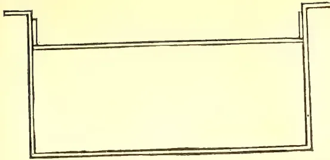
A simple line drawing of a rectangular frame's top bar. It consists of a long horizontal bar with two short vertical bars extending upwards from each end, forming a U-shape.Fig. I.—Top bar of frame.--(Page 254.)
A line drawing of a long, narrow rectangular bar. It features a series of small, circular holes spaced evenly along its top surface.Fig. II.—Cell bar.--(Page 254.)
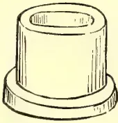
A line drawing of a cylindrical object, representing a cell cup. It has a wider, flatter base and a slightly tapered top.Actual.
Cell
Cups.
(Page
254)
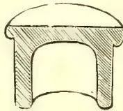
A line drawing showing a cross-section of the cell cup. It reveals a semi-circular base and a flat top surface.Sectional.
Fig. III.
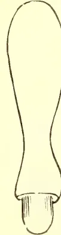
A line drawing of a long, slender, slightly curved object, possibly a handle or a specialized tool. It has a wider, flatter base.Fig. V.
Diameter of
point "—
(Page 154.)
Fig. IV.—(Page 254.)
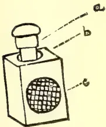
A line drawing of a rectangular box with a wire gauze window on the front. A capped cell is shown being inserted into a hole at the top of the box. Three labels, 'a', 'b', and 'c', point to different parts of the cage.Queen-cell nursery cage, showing how capped cell is inserted through top hole " diameter.
It is useful to have a " hole in base with a cap to fit it. Candy can be stored there.
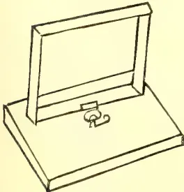
A line drawing of a rectangular box with a hinged lid that is open. A small latch or hinge is visible on the edge of the lid.Fig. I.—Roof of mating-box.
(Page 259.)
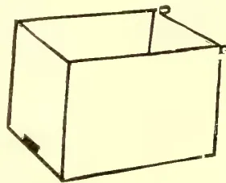
A line drawing of a rectangular box with a small metal stand or hook attached to the top edge.Fig. II.—Mating-box with
stand.--(Page 259.)
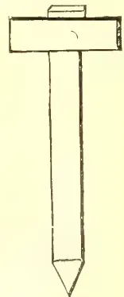
A line drawing of a long, thin, tapered object, possibly a specialized tool or a component of a larger assembly. It has a small rectangular feature near the top. This image is a scan of a blank page. The paper has a light cream or off-white color with a subtle texture. There are a few very small, dark specks scattered across the surface, which appear to be scanning artifacts or dust particles. No text, lines, or other markings are present on the page. MARCH 1908.]255Apiculture.If you are breeding a large number of queens, you will need small nuclei in which a few bees can tend the sealed cell until the queen is mated. But if you are only raising a few, you can, as soon as the cells are sealed, remove the cell-bar and stand nursery cages (previously supplied with "queen-candy") on the horizontal bar, and insert a sealed cup in each. Then you can deal with the hatching queens at your leisure.
I said above that the queen of the nursery hive was to be removed. But it is better to cage her, leaving her in the hive. Then, when you have all your queen-cells caged, you can release the old queen for a fortnight or so before caging her again for another operation. Large breeders insert two queen-rearing frames at a time; and some of them utilize the horizontal bar as a second cell-bar. Thus they can raise about sixty queens from a hive every six weeks or so.
In order to get your young queens mated, you must have a few nucleus-hives ready. As these require a certain number of bees that would otherwise be employed storing honey, many breeders now utilize quite diminutive hives for the purpose, with only a cupful of bees in each. But until you gain experience, I would recommend the employment of an ordinary hive, contracted by dummy-boards to hold just three frames—the two outer ones containing honey and the centre frame brood. Six hours after forming this nucleus (having, of course, been careful that you have not placed an old queen in it) you can run one of your virgin queens in, and she will almost certainly be accepted. But, if she is of great value, it will be better to introduce her by means of a cage. A few days later she will be laying, when she can be taken out and sold or used to replace an old queen in one of your other hives; and a second virgin can be supplied to the nucleus. If you go on using a nucleus for a long time, you will have, now and then, to introduce a few more bees to it, in order to keep up its strength. Or you can unite the nucleus back to its parent hive and take fresh three combs of bees.
There are still two points that may require elucidation. I said you were to line the cell-cups with wax, and recommended dressing them with "royal jelly." For the first, fill the cup with melted beeswax, and, while it is still not quite hard, press down into the cup with a stick shaped as in Fig. V. The wax will then squelch up above the level of the walls of the cup and so form a beginning of the cell wall. The stick must be moistened
with the tongue to prevent its adhering to the wax. And once a cup is formed, so long as it be kept clean, it can be used again and again for queen-cells. As regards royal jelly, this is the special food provided by bees to their embryo queens. One newly-sealed queen-cell will yield enough jelly to dress twenty cups or more; and once a queen has been raised in a cup, the cup retains the scent of the jelly and so does not really require re-dressing. If you have not a queen-cell from which to obtain jelly to start you off, you can easily get your bees to make one. I will leave it to your reasoning powers to decide how this is to be done!
You may take it as certain that, at the immediate close of the monsoon, no stocks of bees will contain drones unless under the direct control of man. As a period of wet weather prevents the bees from foraging, it is natural that they will not tolerate the presence of lazy and greedy drones, which only consume stores that might mean life or death to the colony. Thus drones, at such a season, are unnatural; and man is the only creature that can force Nature out of her usual groove. Therefore, if you see drones immediately after the monsoon, you may take it as practically certain that they are the result of man's interference. Now, no man is going to be such a fool as to breed up a lot of useless drones without some object; and his only object can be for breeding purposes—in which case you may say that he has selected those drones. Hence, though you may not know who it is among your neighbours that is breeding drones, you need not be alarmed at the idea of one of your virgin queens mating with such a stranger; for you may depend upon it that the drone has been selected for some special quality—probably gentleness. I must warn you, however, that a wild stock may easily have drones at that season, even without man's interference; but that will be because the stock is queenless—and, having regard to the season, the stock is almost certain to be hopelessly queenless, or at least so near to it that the bees are losing heart. So that such drones would not stand a hundred to one chance of mating with a virgin queen, if there were any competition from drones bred in a strong and hopeful hive. Thus, if you have been careful to rear drones, then you may be certain that your virgin queen has mated with one of your well-fed and well-cared-for drones to the exclusion of any mangy and ill-fed creature from a chance stock. Hence you will see that you can almost certainly insure your queens mating with a selected drone. And the probability is greatly enhanced if the hive containing
Apiculture.256[MARCH 1908.the virgin and that containing the drones are situated near one another.
But this is not enough. You want to be able to insure (or practically insure) selective mating at any time in the season; and this you can also manage with care. First, you must remember that, in the middle of the honey-flow, all your hives are likely to contain drones. This you do not want. You require to select the hive whose drones you decide to utilize and get rid of all other drones. This you can do by using a drone-trap, which can be bought cheap from any dealer.
But there are still the wild drones and those in your neighbours' hives to eliminate; and, just as before you got over this difficulty by selecting the time of year for your breeding-operations, so now you can select a time of day when it is unnatural for drones to be outside the hive. A drone is a lover of the warmth and only ventures out in the warm hours of the day. If, therefore, you can induce your virgins and selected drones to fly after 5 p.m., your queens are practically certain to mate with your selected drones. You can do this, provided the evening is warm, by pouring warm syrup into the hives. The bees at once become so excited over the sudden feast, that the temperature of the hive rises considerably, which induces the drones and young queen to imagine the outside temperature to be higher than it really is. As a last resort, if they will not take wing, you can lift out a frame or two and shake the drones outside—it is usually the drones that are the laggards.
I have more than once heard it said that mee-messas are so bad-tempered in comparison with European bees, and withal such inefficient honey-gatherers, that we can never make any marked improvement in them in one person's lifetime; therefore we ought only to keep European bees. Now, though I prefer European bees, I regard this as a most mischievous dogma. Depend upon it, the bee that is native here has an enormous advantage by heredity over all others. In England people are giving up keeping pure Italians, preferring a cross of English blood as tending to harden the race. And the same applies to the mee-messa. If you notice that one of your hives contains mee-messa of a larger size than the rest, then, by breeding (and even a little excessive in-breeding) from that hive, you will increase the size of your bees. It is believed that the dog has been under man's control for somewhere between 50,000 and 100,000 years—that is, about 15,000 to 30,000 generations. And during that time man
has produced from common ancestors the Great Dane and the Blenheim Spaniel, the Greyhound and the Bulldog; and it is extremely unlikely that he has been following out scientific lines of selective breeding for more than five centuries. We are so situated in Ceylon, that it would be perfectly easy to breed eight generations of bees in a single year; and we by no means require such marked differences in our objective as we observe in dogs. In three years we can get through twenty-four generations of bees; and if you really think we should be unable to make an appreciable difference to our bees by then, I would recommend your studying the question a little. With our present knowledge, I should think twenty-four generations would be ample to breed the mee-messa up to the size of the European bee.
Then, again, why are mee-messas bad honey-gatherers and ill-tempered? I do not know how long ago people in Ceylon began to keep bees in chatties; but I imagine 3,000 years is a very moderate estimate. Well, during those 3,000 years—say 3,000 generations—which bees have been consistently destroyed for the sake of their honey? Naturally, those that had stored the most honey—and to a certain extent the more gentle bees. We prefer to get the greatest good at the least inconvenience! Therefore, any stock that was lazy over honey-gathering, any stock that was bad-tempered, any stock that was unprolific in bees was left severely alone to continue the species. All that were really good were destroyed. I feel inclined to parody Lord Clive: "By God! Mr. Beekeeper, at this moment I stand astonished at the goodness of the mee-messa!"
In a former paper I gave a rough outline of how to increase the number of your colonies on what we may call "bumble-puppy" lines. This succeeds perfectly well; but it suffers from two disadvantages. First, the strong colony, from which the frames were taken, is materially weakened, and the newly-formed colony is likewise by no means strong. Thus both require plenteous feeding. Secondly, both stocks are so disheartened, the one by being deprived of much of its brood and the other by losing (if even for a short time) its queen, that it is often a matter of weeks before they either of them settle down contentedly to work. And so the parent hive gathers far less surplus honey than it would otherwise have done, and the new stock gathers none—in fact, barely enough to tide it over the Monsoon. And owing to the chilling of young brood in the operation, a fearful wastage of strength takes place in any case.
MARCH 1908.]257ApicultureIn view of this, up-to-date apicultur-alists have devised a method of increase more nearly on the lines of natural swarming which never disheartens the bees.
When a hive throws out a swarm what does that swarm take with it? Three things. A queen, plenty of young bees and a great amount of honey—every bee being gorged. Our object, therefore, must be to secure these necessities for a new colony; and they will then settle down contentedly.
Now, it is a simple matter to induce bees to gorge with honey; smoke them and tap the sides of the hive. Again, if you shake a frame of bees, the young bees will fall off more than the old. Therefore you have the outline of the operation clear.
Cover the entrance-hole of a hive with wire gauze or perforated zinc. Place four or five frames in it, one of which, at least, containing honey (or you can fill an empty comb with syrup) but no brood. The other frames can be filled with empty comb or foundation. Shove these frames up to one side of the hive and move a dummy-board up against them. This dummy-board should have a half-inch space between its base and the floor of the hive—oreven an inch. Lightly tack a piece of stuff over the frames and dummy-board, leaving a flap sufficient on the side of the dummy-board to cover the rest of the hive. Your new hive is now ready to receive bees.
From a very strong colony take out, one by one, four or five frames and, lowering each in turn half into the empty part of the new hive, give a quick jerk or two downwards. This will dislodge all the young bees and most of the old ones. Return the shaken frames back to the parent hive. The bees left in it will be sufficient to hatch the brood from the shaken frames.
When the bees are shaken off the frames, they will fall to the floor-board and at once run under the dummy-board and form a cluster in the middle of the new hive. But you must be very careful not to shake the old queen in with them. Cover up the new hive and carry it into a cool, dark place, where it must remain six hours. By that time all the bees have discovered that they are hopelessly queenless, and will accept with joy any queen offered them. Moreover they are so madly intent on trying to get out, that they have no time to attend to any other unfortunate that happens to enter their prison. If you do not
mind cutting your hive, you can bore an inch hole at one end and stop it with a cork. But, of course, if your hive is double-walled, you must have two holes (one in each wall) opposite one another and connected by a metal tube. The queen can then be grasped between the forefinger and thumb—she will not sting—by the thorax, very gently, and headed into the hole when the cork is drawn. The hive should now, if possible, be at once taken to a spot at least a mile away, and the entrance opened. There the bees can remain a fortnight before being brought back. But, if you cannot take them so far, then keep them imprisoned three days—but in this case a lot of bees will die of fretting.
If you were careful to make the bees gorge well before shaking, you now have what is practically a natural swarm which will settle down contentedly as such. And you can take another shake of bees from the parent hive in about a fortnight or three weeks. It does not really matter whether the queen you run into the new hive is a virgin or not. Preferably not; but if she is, when she has been accepted, you can introduce a frame of brood (ever so little) in order to keep the bees from following her out on her wedding-flight—or the same result can usually be achieved by means of copious feeding.
If the weather is wet or there is little natural feed after making an artificial swarm, you had better feed slowly so as to induce the new queen to lay regularly and well. In a month your new stock ought to be growing very strong.
Bees may be taken from several hives, provided a frame be shaken from each hive without allowing too long a time to elapse between the shaking of each frame. But you must always be very careful not to get the queen in haphazard shaking. Again, if a populous hive throws out a very large natural swarm, this can be divided, if you like, into two or three "shakes," and each will rapidly build up if given a fertile queen.
It may also be useful to remember that, before running a queen into a "shake," you can utilize that "shake" to start queen-cells in your cell-cups. But you must, of course, be careful to remove all the cups prior to running in a queen. If the cups are left with the "shake" for a day, they will be so far advanced as to be readily acceptable to a nursery-hive in the usual way.
Apiculture.258[MARCH 1908.There is another point that may, perhaps, puzzle a beginner—how to get empty, fully-made combs. Take the outside comb from a strong hive. This will almost certainly contain only honey. Place it outside in the apiary at some distance from the hives; and in a short while the bees will have effectually licked all the honey out.
As a general rule, the queen will be found on one of the central frames of a hive. But this does not invariably apply; and as many operations in apiculture imperatively demand the removal (or, at least, the location) of a queen, I will give a few hints to enable the tyro to find her easily. I surmise, of course, that he is acquainted with the appearance of a queen when he sets eyes on her. Once seen, no one can ever mistake a queen for a worker or drone.
Italian queens are never hard to find, as they and their attendants stand perfectly still when the frames are lifted out. This also, I believe, applies to Caucasians. But in the case of the English Black and the Mee-messa—and in a lesser degree the Cyprian—the queen tries to bury herself under her attendants when the frame is lifted. If, therefore, you find it hard to discover a queen's whereabouts, proceed as follows:—
Place an empty hive beside the one you intend overhauling, and, beginning with the outside frame on one side of the full hive, take out the frames one by one, and, after examining them carefully, place them in the empty hive, being careful to maintain them in their original positions in regard to one another. In this way the queen has no chance of crawling from an unexamined frame on to one that you have already inspected; and as you are not hurried, you are sure to find her—at any rate, on the second inspection. If you wish to get rid of her, pinch her head or thorax; and if you desire to cage her, lift her gently by the thorax (on no account touch her abdomen) and head her into the cage. If to be sent by post, you must also put a few young bees in with her. These are much more downy than the old bees.
It is possible that you may require to find the queen of a vicious colony. This is never a very agreeable business; so I will try to assist you here with advice. Remember, worker bees remain in the hive for at least a fortnight after emerging from the cells; and these young bees are never vicious. Your object, therefore, must be to rid the hive temporarily
of the old bees. Towards the middle of a fine day remove the vicious colony to a fresh locality, and in its place stand an empty hive previously fitted with one comb of open brood taken from a quiet lot, together with some frames of comb or foundation. By the middle of the next afternoon all the old bees will have found their way to this new hive, because it occupies their old stand; and you can, if you wish, give them a sealed queen-cell or a caged queen. You can now examine your quondam vicious hive with impunity. If you would prefer to unite the two parts of the vicious hive again, instead of making a fresh stock from one half, you can bring back your original hive to the old stand, setting it above the new one with a sheet of wire gauze to separate them. This can then be withdrawn in a couple of days—as soon as the upper hive has the scent of the lower.
This principle of working with a wire gauze between an upper and a lower hive is often employed for the purpose of building up a weak stock. The weak colony is super-imposed on a strong one; and the warmth rising from below will enable the upper stock to build up far more rapidly.
I now propose to deal shortly with the question of small nuclei or mating-boxes. If you decide to rear queens extensively for the local market—and I warn you, there will probably be money in it for some years to come!—since the mating of each queen requires her to be placed in a separate hive with a separate lot of attendants, it is mere waste of material to give each virgin more than two or three cupfuls of attendants at a time. But such a small number of bees will find it hard to cover one large frame properly. Therefore, the custom has arisen of allowing each nucleus to have two or three small combs, three of which, when placed end on, exactly fill a standard frame. And so, when you have finished with your nuclei, you can build them together into standard frames and unite them into a few strong stocks. Two of these small frames are really quite sufficient in each box, which, to accommodate them, must, therefore, be inches wide inside measurement, and inches deep. Their internal length will depend on the thickness of the wood of which these frames are made; for you must be careful to allow inch bee-space between each end of the frame and the end walls of the hive. You require, of course, a small entrance-hole; but the floor can be nailed on to the walls of the hive.
MARCH 1908,]259Apiculture.The roof is more complicated, as it is so constructed as to hold the frames in place, so that, when lifted off, the frames come with it. Fig. I. will give you an idea of how to arrange for this; but there are several methods employed; and probably your own ingenuity will be able to improve on it. Over all should come a second roof of tarred paper whose edges hang well down over the sides of the tiny hive.
I am myself inclined to prefer having a round hole in the under roof inch in diameter, and to cut the top-bars of the frames to correspond. Then either a sealed cell or a virgin in a round cage can be slipped in without disturbing the bees. This hole can be plugged, when not in use, by means of a grafting-plug—or, better still, a cork.
And now to stock your little hives with workers. Let one comb in each contain honey or syrup, and the other be empty or consist of foundation. By cutting up a full comb, you can easily attach it to the little frames by means of wax. Take the frame containing the queen from a colony and place it in an empty hive, letting that hive occupy the old hive's original position. Then smoke and drum the old hive, so as to make the bees gorge. Then shake them off their combs into the hive and hang the combs in the new hive with the queen. If the bees are properly filled with honey, they will not sting nor fly out of their hive when shaken, but, when the final comb is shaken, will cluster on the side. Move your mating-boxes up close to this hive, and, lifting off the lids one by one with one hand, with the other scoop up two or three cupfuls of bees from the cluster and dump them into the small boxes, closing down the lids at once. If the entrance-hole has been previously closed, they will, in six hours, be ready to accept a virgin when run in among them.
It is as well to remove all your nuclei to a place at least a mile away, ranging them round a hive containing the drones you wish to mate with your queens. In five days you should, if the weather has been fine, find that the young queen has laid eggs, when she can be at once disposed of, and a second introduced. As the boxes now contain open brood, a virgin cannot be run in as before; but a sealed cell can be given, or a virgin can be introduced in a cage.
You will note in Fig. I. that the frames of the nuclei are so attached to the roof, that they can easily be moved slightly to one side to facilitate examination for eggs or queen.
Sometimes you will see a cluster of bees hanging on the outside of a populous
hive and doing no work. It is a sign that the hive is very full and about to swarm. But there is no reason why you should leave these bees in idleness if you have other work for them. Spray them with syrup, and then scoop them into a mating-box. Or again, you can take a scoop from a natural swarm without materially weakening it. There are various ways of filling up your boxes; and probably you will be able to devise other methods of obtaining a few bees yourself.
Unless you are pressed for room, leave the newly-mated queen in her mating-box for a week, as the eggs she then lays will be sufficient to keep up the nucleus to proper strength. Otherwise you may have to add bees to your nuclei from time to time by hand.
Fig. II. will give you a rough idea of the appearance of a mating-box; and I have only to call to your mind that smoke, or thin warm syrup will always quiet bees sufficiently to permit handling; and that you must always be extremely careful in touching a queen, so as not to impair her laying capacities.
A few words may not be out of place here with regard to the financial side of bee-keeping. And let me say at once that I would not have the beginner run away with the idea that he is going to make a small fortune out of this industry. To do so requires years of experience; and even then a man should possess several hundreds of hives and combine the production and sale of honey with a factory for the supply of apiarists' requisites. At the same time, however, there is no doubt that a small apiary, properly managed, ought to provide its owner with a delicacy for his table, and, at least in part, pay the rent of his house. It may even do this last altogether—it depends much on the man,—and, in addition, put a few rupees into his pocket. Let us consider, therefore, the expenses of a year's working on five hives, together with the capital outlay.
I will suppose that the apiarist decides to go in for the native mee-messa. A hive such as I have described will cost him about Rs. 10; frames and dummy-boards Rs. 2.50; bees—supposing that he joins up three stocks from chatties into one—at the outside Rs. 6. Total per hive Rs. 18.50. Total for the five hives Rs. 92.50.
We will suppose that he has laid out Rs. 20 on small accessories from England, for which sum he will have got a great deal—enough foundation, for instance, to last him many years. His capital, therefore, is Rs. 112.50 at the outside.
Apiculture.260[MARCH 1908.His expenses for the year consist of time, which cannot justly be reckoned, since he can afford this (say an hour a week) out of his spare moments; rent of land occupied by the hives, which, seeing that hives are best kept on barren pieces of land, may be generously estimated at Re. 1; and sugar for feeding the bees, which can be estimated at Rs. 2 per hive. His expenses, therefore, are Rs. 11.
From each hive he ought to get 40 lbs. of surplus comb-honey. This amount is secured at home in bad seasons. So let us be well on the safe side and place his harvest at half that amount. Thus he has 100 lbs. of honey to dispose of, for which he ought certainly to get Re 1 per lb. But if, by mismanagement, he only gets the half of this, his gross returns are Rs. 50; and his nett profit is, therefore, Rs. 39—that is, nearly 35%.
But in addition to this he has also secured at least one swarm from each hive, each of which he ought easily to be able to sell for Rs. 6 to Rs. 10. In fact, his nett profits should show somewhere in the neighbourhood of 60%.
Now, let us look at it from another point of view. The bees in three chatties are worth about Rs. 6. But when they are established on frames in a proper hive, they are brought under man's complete control. What are they worth then? I take it, at least double. Bees in a chatty may die out—they may be robbed and killed by bambaras or starved to death in a severe Monsoon—and man can do little or nothing to save them. In a bar-frame hive, however, he can always save them. Therefore he runs no risk of losing his capital. The difference in value, therefore, is much the same as between Consols and a Venezuelan mine! The apiarist's assets, then, are considerably enhanced by a little work. If, instead of selling his swarms, he elects to add them to his apiary, he will open the second year's account with a capital of about Rs. 175, from which, reckoning his harvest as before, he reaps a nett profit of Rs. 78, in addition to ten swarms valued, at the lowest, at Rs. 60—which is not far short of 80%. If he choose to retain these ten swarms, his third year will open with a capital outlay of Rs. 300, from which his honey alone, on the lowest computation, brings him in over 50%. And it must be remembered that, since his experience will, during the past two years, have increased considerably, his harvest will undoubtedly be doubled and he will realize higher prices for his honey. With twenty hives, therefore, he should net a profit of about Rs. 300 to Rs. 400.
At first the apiarist will, no doubt,
find some trouble in disposing of surplus swarms. He should, therefore, whenever he receives an order for one, be careful to supply only gentle bees. This will encourage other (perhaps more timid) purchasers—especially if he lets it be known that his bees have put a few hundred rupees in his pocket. There is something peculiarly attractive to the ordinary mind in watching something else coining rupees for his benefit! One can fancy the old Latin writer winking as he inscribed those well-known words: "Sic vos, non vobis, mellificatis apes."
When you receive an order for a swarm, shake it off the branch on which it has clustered into a box, and cover it at once with a strip of butter-muslin or mosquito-veiling doubled, and tie or tack the muslin securely round it. It can then be sent off by train without delay. It should, of course, be labelled to be carried with the muslin downwards. Probably, however, your customer will ask for a stock of bees already on frames. In this case you will charge him for the hive. One such as I have described is well worth Rs. 25; and you ought to charge at least Rs. 2 to Rs. 2.50 per frame of bees. It will be necessary, also, to secure the frames, lest they jolt about in transit. This can be done with a strip of wood screwed above them straight across. For a very long journey—say to India—a special hive should be made with windows in its sides covered with perforated zinc; and in any case a strip of this material will need to be tacked lightly over the entrance-hole. See that the bees have enough stores to feed on. And, of course, you must secure the floor to the body-box. For a long journey, also, the combs should be wired into the frames. This can be done by means of four or five perpendicular wires (No. 30 tinned) drawn taut, which are sunk into the foundation or starter by means of a Woiblet Spur-embedder, which costs about 1s. 6d. in England. This will prevent the combs from breaking down when the hive is shaken in transit.
At present we may place the value of European bees in Ceylon at about Rs. 12 to Rs. 15 per frame—or six frames at Rs. 60 to Rs. 75. As the number of stocks in the Island increases, the price will, of course, sink. But they should always be worth at least Rs. 30 for six frames. They are so easy to handle—as an American advertiser states, they will "come and eat out of your hand"!—that any one that can save up enough money to purchase a stock will inevitably prefer to have them.
MARCH 1908.]261Apiculture.It must, however, be remembered that the initial outlay in starting an apiary of European bees will be considerably larger than in the case of mee-messa. And though, as far as we can see at present, the European bee should yield a far larger harvest of honey, I would recommend the beginner to start with mee-messa.
If you chance to purchase a stock of bees on frames to start your apiary, you will probably find that the combs (especially if they are European bees) are dark brown in colour. Some novices are apt to look on such a colour as a suspicious sign, though without reason. No comb is pure white unless it has never contained brood—the cocoons from which the young bees emerge giving this shade of brown. Indeed, the older and browner the comb, the better for travelling, as such combs are extremely unlikely to break. In selling bees, therefore, you should inform your customers of this. Again, it often happens that, at the end of a winter (or Monsoon) many of the cells contain a mildewed mass. This is nothing more than pollen that the bees have not used. Such combs should, if possible, be given to a strong colony to clean up. Or, if you prefer it, you can cut out the mildewed parts with a sharp knife and return the damaged frame to the hive to be repaired. The pieces of comb can then be rendered down. There is, by the bye, a very good maxim to remember; never waste the smallest particle of wax. It is always valuable, and is often very useful to have on hand.
Many treatises on apiculture recommend the spreading of brood-combs with a view to forcing the queen to lay quicker. This has been proved to be safe in the low-country; but in the colder climate of the high lands it is a thing to beware of. The idea is to shift the frames to either side from the middle, and to insert, in the very heart of the brood-nest, a frame of foundation or fully drawn-out comb. The danger is that, during the cold nights of the higher elevations, the bees will be inclined to cluster towards the centre, leaving the outermost frames deserted. Thus the brood in the outer frames will get chilled and die. It will be noticed that bees (and especially mee-messa) will be inclined to build more towards the front of the hive. If, therefore, the frames run at right angles to the entrance, you can, if you wish to spread brood, start by reversing all the frames from front to rear. You should be careful, however, to replace
them in the same relative positions to one another. Thus, the frame taken from the extreme right will be put back on the extreme left, and vice versa. In this way you will induce your bees to fill up all the frame. You will find that, once a comb has contained brood, the bees prefer to utilize it for that purpose again.
The native bee (and in a far lesser degree the European) will be found to build small pieces of comb across from one main comb to the next. This is done for the sake of strength. You must be careful, therefore, in such cases, before you lift out a frame, to pass a sharp knife gently through these brace-combs. They are invariably near the top of the frame, so that they are easily got at; and as the bees only store honey in them, you will not be destroying any brood. On the contrary, the fact of laying open such a store of sweets will cause the bees to be very easy to handle, as they will be busy licking it up. Of European bees, I fancy the English Black is the worst offender along these lines, while the Cyprian is probably the best.
This is a sort of glue that bees gather from various places. They use it to block up small holes in their home, cover over any dead thing that is too large to carry out, and to fix combs firmly to the sides of hives. So far as my experience goes, propolis gathered in Ceylon is far less hard than that gathered at home. Sometimes in England the quilts are so firmly glued down on top of the frames and the frames themselves so effectually stuck to the runners on which their legs rest, that it requires a considerable wrench to get them loose. This, of course, irritates the bees. If you use the true Hoffman frames, you will find that European bees will invariably glue their shoulders together, so that you will need to ease them gently but firmly apart. By using W. B. C. metal-ends, however, you will experience far less trouble. The English bee is the worst propolizer; while the mee-messa is undoubtedly the best—hardly employing the substance at all. That is another point in favour of the native bee.
It is as well always to have at least one spare hive. Once a year go round all your hives, transferring the frames to an empty hive, and then well scrubbing (and, if necessary, re-painting) the old hives, letting their interiors be thoroughly saturated with sunlight. There
34 262[MARCH 1908,is nothing like direct sunlight for killing out germs and obnoxious insects. Your first hive can be transferred to the empty one; and when No. 1. is thoroughly clean, No. 2 can be transferred to it, and so on.
In their natural state, bees have not this advantage, and many stocks die out. But man can improve on nature and insure prosperity to his little labourers.
(To be concluded.)
DEAR SIR,—On page 233 you answered a question on the Algaroba tree, or Algaroba bean, which has been introduced into Hawaii some time ago. You are quite right, this middle-sized tree is a species of Prosopis, namely—Prosopis saliflora. It thrives splendidly on dry situations in Hawaii with an average yearly rainfall of thirty to forty inches; but not so in Guam, with an average of hundred inches per year. The flowers are much favoured by bees, and the sweet bean-like pods are much relished upon by all domestic animals. They are somewhat similar to those of the Carob-tree (Ceratonia siliqua), and are like them full of a juicy pulp containing sugar, gum and some astringent substance. But the pods of Algaroba are smaller than those of the Carob, and in size like small French beans.
K. L. V. COSTENOBLE,
Supdt., Agri. Experi. Station,
Island of Guam.
December 18, 1907.
SIR,—I take leave to give you the result of my experiments with the Indian wet paddy, Gowri Sanna, a small supply of which the Superintendent of School Gardens kindly sent me in August last. Distributed amongst six of us, we tried it in different soils and in the ordinary way. We sowed it for Maha season, at end of August, bone manure being used in what appeared to be poor soil. Notwithstanding unseasonable weather and floods, the plants thrived well enough, and, just like the indigenous, with the little difference of the foliage which was brighter.
Strange to say, with one exception, the ears, which began to appear in the fourth month, lacked sap or the "milk" as we call it. No flies attacked it; nor could it be said to be immune, for what of the plot so successfully grown under same conditions? In his memo. Mr. Driemberg says that this paddy is sown in June. The cause, therefore, is to be looked for in this direction.
Where it yielded a return was a deniya, protected on three sides by gardens, and although the land was com-
pletely under water for five days, the plants, which were about one month old, emerged unscathed.
Another danger had to be encountered in an unexpected direction. Birds had to be kept off. This plot yielded six measures, quantity sown being measure, or 24 fold. It is hardly sufficient to meet the demand, so many people are asking for it.
Here is proof, if proof were necessary, of practical methods rather than lectures and pamphlets, etc., which no doubt are good in their own way. I know seed paddy procured from a distance yields far better crops; and, as if by instinct, people take to "new" kinds. See the acclimatization of Samba, Sulai, Murungwi, Rata-wi, etc.
The country paddy sown at same time is about one month behind. So that Gowri Sanna must go with our Mäspassa.
GEO. WEERAKOON,
Mudaliyar.
Talangama, 11th Feby., 1908.
SIR,—The one thing which, with all respect to Mr. Herbert Wright, I think is wanting in his standard work on rubber is a chapter on "Pests," treating fully all such—fungoid, animal, or insect. The subject is, however, such an important one that a separate book might almost be written. At the present moment I know of no book or pamphlet on the subject; and those (like myself) who have not been so fortunate as to take in the "T. A." since the rubber "craze" started, have either to weary you with "damned reiteration" by asking questions on matters replied to before, or do without information and worry through by ourselves. Unfortunately, in Burma, the "T. A." is not a Government publication, so I cannot follow the advice once given to a seeker after knowledge—to go and look through the files of the "T. A." in the nearest Kachcheri. I am sure that planters from Malaya, India and Burmah, and of course Ceylon, would give all help and information in their power to any one writing
MARCH 1908.]263a book on the above most important subject.
J. G. F. MARSHALL.
Tavoy, Burmah, 18th February, 1908.
MOLE RAT AND GREEN WOOD-BORER (CERATINA BEE.)
SIR,—I send the clean skull and the skin of the “mole rat” which does so much destruction in Burma, for favour of identification. The skin is not a good one, as I fear I am a bad taxidermist, but I hope it will serve its purpose.
I also send per this mail, in a hollow bamboo, specimens of the boring bee and its depredations. That boring is done in green wood will, I hope, be conclusively proved by the stem sent. This boring is quite an insignificant one compared to some I have come across. These specimens should have accompanied a letter of mine despatched two mails ago, but were overlooked.
J. G. F. MARSHALL.
Tavoy, 10th January, 1908.
II.
SIR,—With reference to three letters to you advising despatch of a mole rat, skin and skull, and specimens of the Ceratina bee and its works, I have now to say that I have had both parcels dumped back to me by the Post Office, marked “unclaimed.” The village postman, who brought the letters, could give no further explanation. The note “unclaimed” is an obvious lie, as neither parcel bears any Ceylon post mark, and they have apparently never left Burma. I am now making enquiries, and hope in due course that the specimens will reach you. This is simply sickening. We pioneers can get no help or assistance in naming specimens in Burma, and when we try to get you to kindly do so, we are treated in this way. I suppose I have transgressed some rule; but, if so, why the Post Office here (Tavoy) could not have told me at once and saved much delay and worry I do not know. In the meantime I can only apologise for the delay in sending the specimens.
J. G. F. MARSHALL.
Tavoy, 20th February, 1908.
RUBBER: AXILLARY BUDS.
SIR,—My Para trees of 1905 and 1906 planting are now wintering pretty generally. The trees that have quite lost their leaves (and which have not yet been thumbnail pruned, not having reach-
ed 12 feet high) are worrying me considerably by sending out a copious supply of buds from the axils of nearly every leaf, or rather from where the leaves were before falling. The leading bud at the same time looks vigorous and also starts growing. I am nipping off all these axillary buds, as they appear, of course. They have been so many that I have been forced to put men out to do it. Can you explain the circumstance; and have other planters had a like experience? Two very heavy showers which fell on the 1st and 2nd instant may account for the sudden growth, but why not the leader only, as usual with Para, unless pruned or killed back in my way.
J. G. F. MARSHALL.
Tavoy, 9th January, 1908.
P. S.—I also enclose a piece of stem of a half-year old rubber plant which is rather curious. I have come across some 30 or 40 such during the last two years. The plants were “rung” in some way about 6” to a foot or so above the ground, and proceeded to throw out roots from the upper portion as in the specimen sent. This looks as if propagation from cuttings or layers should be easy, but it is not according to your correspondents. I am making an experiment in cuttings, the result of which will be reported on in a month or two. In the specimen now sent, you will see that the “rung” portion of stem has quite recovered itself with bark, and the plant was flourishing, but had also sent up a sucker from below the injury.—J. G. F. M.
NOTES AND QUERIES.
By C. DRIEBERG.
ENQUIRER ABOUT KOLA-NUT CULTIVATION.—I regret that your letter was mislaid, and hence my inability to communicate directly with you. The cultivation of Kola is very similar to that of Cacao, and you will be able to see Kola growing a few miles out of Matale on the North Road. The preparation of the nuts has already been described in these pages. It should be mentioned that the market for Kola is not particularly good.
JUTE.—Two correspondents enquire about jute seed—one from the North and one from the South. The enquiry is for true jute (Corchorus)—not to be confused with “Hana” (Crotalaria juncea) sometimes erroneously spoken of as jute. The idea of planting this fibre locally has no doubt arisen from the reference lately made to the planting of jute in place of rice in Bengal. In the first place this
264[MARCH 1908]substitution of jute for rice is probably now being discovered to have been a mistake. In the next place, as Dr. Willis says, jute does not grow satisfactorily in the equatorial regions or below Orissa. Local experiments in jute growing, made through the School of Agriculture many years ago, at the instance of Mr. (afterwards Sir) Alex. Swettenham, did not give satisfactory results.
LACE BARK.—The nearest approach to the lace bark of the West Indies is the bark of Nāva (Sterculia Balanphas).
M. (Moratuwa.)—Rambuk (Sachcharum spontaneum), so common in Ceylon, is much used for paper making. Another useful paper fibre is got from Ischærum angustifolium, which is found to grow well in the Government Stock Garden under far from favourable conditions. It is certainly to be wondered that no paper mill has been established here.
M. P.—I am sending you the seeds you want. Sour Sops are very common about Colombo suburbs—particularly in the Cotta direction, where the soil is decomposed cabook (laterite) which the tree seems to affect; and yet the fruit is seldom seen in the town markets. I have just secured a few seeds for trial of what is said to be a hybrid between the custard apple and cherimoya. The Bullock's heart is not a favourite, though there is no good reason for despising the fruit.
H. G. M.—Yes, blue stone and blue vitriol are one and the same thing, viz., sulphate of copper. Green vitriol is sulphate of iron, and white vitriol is sulphate of zinc. Vitriol is another name for sulphuric acid.
BEE.—You should get your hives as strong as possible, so that you may take advantage of the "honey flow" (as it is called) which may be expected in April, when there is a rush of blossom including those of honey plants. Mr. Shanks lays great store by the Padouk (Pterocarpus indica), and all bee-keepers should be ready to take advantage of its flowering periods. Those who wish to make use of an honey extractor should apply to the Superintendent of School Gardens at the Government Stock Garden.
F. V.—Next month I shall be able to give you freshly imported cow pea seed; but, if you are particularly anxious to have seeds, I can send you a packet of some that have been raised locally.
The 39th meeting of the Board of Agriculture was held at the Council Chamber at 12 noon on Monday, the 9th March, 1908.
His Excellency the Governor presided. Present:—The Hon'ble the Colonial Secretary, the Controller of Revenue, Colonial Treasurer, the Government Agent W. P., John Ferguson, C.M.G., F. C. Loos, W. M. Abdul Rahiman, and A. Kanagasabai; Drs. Willis and H. M. Fernando, Messrs. A. N. Galbraith, R. W. Smith (Acting Director of Irrigation), E. T. Hoole, W. A. de Silva, F. L. Daniel, and the Secretary.
There were also present as Visitors:—Messrs. Tudhope, H. P. Rudd, Gerard Joseph, Alex. Perera, J. Mathias de Mel, and two others.
(1.) Minutes of the previous meeting, held on the 3rd February, were read and confirmed.
(2.) Progress Report No. 38 was adopted.
(3.) The annual report on Castration work carried on by the Government Veterinary Department was laid on the table. Mr. W. A. de Silva criticised the method of castration adopted, and suggested what he claimed to be a better method in vogue in India. Dr. Fernando, Mr. Hoole and Mr. Ferguson also spoke. H.E. the President thought the matter might be left over till the return of Mr. Sturgess to the Island.
(4.) The Organising Vice-President submitted a statement showing the apportionment of votes under the Government Grant for 1908, and moved its adoption. The Hon'ble the Colonial Secretary, in seconding the motion, which was carried, deprecated the retention of large accumulated balances to the credit of the Society.
(5.) A statement of expenditure incurred during February was tabled.
(6.) The Hon'ble Mr. Ferguson read a paper entitled "The Possibilities before the Ceylon Agricultural Society: its Board and Branch Associations." The Hon'ble the Colonial Secretary moved a vote of thanks to Mr. Ferguson for his valuable and suggestive paper. His Excellency, in thanking Mr. Ferguson, outlined a scheme for more effective work, particularly among the cultivating classes.
The Organising Vice-President moved the re-constitution of the Board as
MARCH 1908.]265follows, which was duly seconded and adopted :—
Patron :
Sir Henry Arthur Blake, G.C.M.G., F.R.C.I.
President :
His Excellency the Governor.
Vice-Presidents :
The Hon. the Colonial Secretary
The Hon'ble the Colonial Treasurer
The Hon'ble Mr. John Ferguson, C.M.G.
The Hon'ble Mr. S. C. Obeyesekere
Sir William Twynham, K.C.M.G.
Mr. H. T. S. Ward
„ W. D. Gibbon
„ C. P. Hayley
„ P. Arunachalam, C.C.S.
„ F. H. Layard
„ Jas. VanLangenberg
Organising Vice-President :
Dr. J. C. Willis
Members of the Board.
Ex-Officio.
Members of the Executive and Legislative Councils (15)
The Government Agents of Provinces (7)
The Assistant Director, R.B. Gardens
The Government Entomologist
The Government Mycologist
The Government Agricultural Chemist
The Curators, R. B. G., Peradeniya and Hakgala
The Conservator of Forests
The Director of Public Instruction
The Director of the Colombo Museum
The Director of Irrigation
The Government Veterinary Surgeon
The Superintendent of School Gardens
The Controller, Experiment Stations, Peradeniya and Maha-illuppalama.
Nominated Members :
Western Province.
Sir Solomon Dias Bandaranaike, Kt.,
C.M.G. Maha Mudaliyar
The Hon. Mr. L. W. Booth, C.C.S.
Mr. E. B. Denham, C.C.S.
„ A. N. Galbraith, C.C.S.
„ H. Inglis
„ Solomon Seneviratne, Attapattu Mudaliyar, J.P.
Dr. H. M. Fernando, M.D.
Mr. Tudor Rajapakse, Gate Mudaliyar
„ W. A. de Silva
„ F. L. Daniel
„ James Peiris
„ J. D. Vanderstraaten
„ L. W. A. de Soysa, M.R.A.C.
Central Province.
Mr. W. Chas. Whitham
„ W. Dunuville, Disava
„ R. E. Paranagama, R.M.
„ D. J. Jayatilleke
„ Daniel Joseph
„ C. Taldena, R.M.
Nothern Province.
Mr. V. Casipillai
„ C. M. Sinnayah Mappana, Mudaliyar
„ V. Vraspillai, Adigar and J.P.
„ K. U. Tampaiya, District Mudaliyar
Southern Province.
Mr. C. G. Simmonds
„ E. R. Gooneratna, J.P. and Gate Mudaliyar
„ D. A. Gooneratne, Gate Mudaliyar
„ B. T. Doole, Gate Mudaliyar
„ C. E. de Vos, Crown Advocate
Dr. E. Ludovici
Eastern Province.
Major P. B. Molesworth (Trincomalie)
Mr. Varitambi Kurunathapillai
„ C. A. Lienard
„ J. W. Kanagasabai, Vanniah, Manmunai N.
„ G. H. Kanagasabai, Vanniah, Panawa
North-Western Province.
Mr. E. Scott
„ S. N. W. Hulugalle, Adigar
„ J. Clovis de Silva
„ G. W. Dodanwela, Retired R.M.
„ A. W. Beven
„ Jacob de Mel
„ L. B. Bogahalande, R.M.
North-Central Province.
Mr. S. Sampander
„ C. A. Valoopillay
„ G. W. Jayawardana, Mudaliyar and J.P.
Province of Uva.
Mr. A. T. Rettie
„ James Duncan
„ H. O. Hoseason, J.P.
„ H. Dambawinne, Retired R.M.
Province of Sabaragamuwa.
Mr. P. D. G. Clark (Balangoda)
„ E. A. Elapatha, R.M. (Ratnapura)
„ J. H. Meedeniya, R.M.
„ M. Stevenson (Kegalle)
Secretary :
Mr. C. Driberg, B.A., F.H.A.S.
Membership.—The following members joined since last meeting (February 3) :—
G. L. Cox, C. D. Hunt, the Right Rev. Dr. J. Van Reeth, S.J., R. C. Grant, R. T. Sidgwick, H. O. Barnard, E. W. Jayawardene, W. Chas. Whitham, J. Conroy, Stephen de Silva, Don Philip A. Wijewardene, Muhandiram, F. H. Layard.
Branch Societies.—The Co-operative Credit Bank started by the Dumbara Branch continues to operate, and so far with satisfactory results. According to a statement brought up to the end of 1907, the bank started with a subscribed capital of Rs. 760. The gross incom
266[MARCH 1908.amounted to Rs. 83.85; after paying off interest to depositors (Rs. 26.80) and meeting incidental expenses (Rs. 20.49) a nett balance of Rs. 36.56 was carried forward.
This Branch has been giving attention to cotton, tobacco, and the transplanting and manuring of paddy.
The Wellaboda Pattu (Galle) Branch.—The Agricultural Show and Fair inaugurated by this Branch took place at Hikkaduwa Gansabhawa premises on February 22, and was formally opened by the Government Agent, Southern Province. The Secretary of this Society was present with Agricultural Instructor Wickremaratne, and helped in judging the exhibits, which were of decidedly good quality. The Branch Societies awarded six certificates for the best exhibits, and the Secretary of the Parent Society has recommended a special award for the best collection of vegetables, shown by R. D. S. Wimalasuriya. The Branch Society also offered three prizes of Rs. 30, Rs. 20, and Rs. 10 for the best gardens in the pattu. There were 33 entries, and Mr. L. A. D. Silva, Agricultural Instructor, did the judging. The result was as follows:—
Coconut Stem Disease.—Reports received indicate that the coconut stem disease is very widespread; but it is satisfactory to find that all large landowners have adopted the remedial measures recommended by the Government Mycologist. The appointment of inspectors to enforce the treatment in small native holdings will probably be made by the beginning of next month. In the meantime the disease has been "declared" under the Plant Pests Ordinance, and the necessary Local Boards for enforcing the Ordinance have also been appointed.
The Director of the Royal Botanic Gardens, the Government Mycologist, and the Secretary, Ceylon Agricultural Society, paid several visits to the centres where the disease was reported to be specially bad. Demonstrations in the method of treatment—cutting, burning, and tarring—have also been given in various places, and the Society's Agricultural Instructors have helped in this work. The Society has distributed 3,000 Sinhalese leaflets through Government Agents and others. The Government Mycologist recommends as preventative treatment, especially for young trees,
an application of a mixture of blue stone (6 lb.), freshly slaked lime (6 lb.), and 25 gallons of water. This should be applied to the trunk as high as practicable. In view of representations made from Tangalla, an Agricultural Instructor has been despatched to investigate and report, pending the appointment of Inspectors. The whole of the coconut area between Tangalla and Puttalam would thus appear to be affected. At the time of writing a letter from the Eastern Province mentions the occurrence of the disease in the Batticaloa District.
Mr. H. P. Wickremesinghe, writing from Marawila, says: "I notice another form of disease in the shape of a leaf disease. Generally the non-bearing trees are very much affected with this. The only sign is that the matured leaves get spotted and the tender ones get dried up. In some cases the whole crown appears to be dried up."
The Government Mycologist reports as follows:—
"From the description this is the leaf disease caused by Pestalozzia palmarum. It occurs on palms throughout the Island, but does very little damage, except to seedlings. The same fungus attacks tea and cinnamon, but is not considered dangerous. Manuring appears to have made the tea bush more resistant against its attack, and probably the same is true of coconuts."
Rinderpest in the North-Western Province.—At a meeting of the Wanni Hatpattu Branch held on December 22, the following resolution was adopted: "The Society feels it a pleasure to record its sense of relief and appreciation of the exertions of the Stock Inspector of the North-Western Province, which have contributed to the successful suppression of the outbreak of cattle murrain discussed at the last meeting."
Paddy Flies.—The ravages of the paddy bug were reported from two or three places. The Government Entomologist has kindly furnished the following information for the benefit of members: "The paddy bug, or rice sapper (Leptocoris acuta), sucks the unripe grain and prevents maturing. No really satisfactory treatment for the rice sapper exists. The smoke of cowdung and various aromatic herbs can be recommended. Ropes covered with rags soaked in kerosine are sometimes drawn across the fields at the time the grain is setting. But neither of these methods appears to be very effectual. Perhaps the best direct treatment is the plan of walking through the fields and catching the insects on hand screens (winnows) smeared with jak juice. Much may be
MARCH 1908.]267done to check the pest by repeatedly burning off the grass on the bunds and in the fallow fields during the off season. The insect subsists at that time on the wild grasses, and lays its eggs on the grass stems."
Ground Nuts.—Writing in October last, Messrs. Finlay, Fleming & Co. of Rangoon state that they purchase groundnuts in the shell, the price ruling at that date being Rs. 150 to Rs. 155 per 100 baskets of 25 lb. each=2,500 lb. They mention Ruffisque, Mauritius, and Mosambique* as good varieties, and state that though the groundnut was introduced into Burma only four years before, the area under cultivation at date was 80,000 acres, so far confined to the dry zone, where the annual rainfall is 25 to 35 inches. It is considered a very profitable crop with a yield on an average of 1,300 lb.
Messrs. Finlay, Fleming & Co. express their willingness to purchase Ceylon nuts in ton lots from 2,240 lb. gross weight delivered Rangoon, price to include cost, freight, and insurance.
Messrs. A. S. Jamal Bros. & Co., also of Rangoon, writing in October last, state that they have been purchasing at gross Rs. 115 to Rs. 135 per 100 baskets of 25 lb. each=2,500 lb. They, too, express their willingness to purchase Ceylon nuts, c.i.f., on Rangoon terms.
Messrs. Ralli Bros. of Pondicherry, writing in August last, offer to supply Senegal groundnuts for planting in April. In forwarding a sample of these nuts raised in Pondicherry, they draw attention to the fact that "the kernel is in excellent condition."
Mr. Benson, Deputy Director of Agriculture in Madras, records that the Pondicherry Chamber of Commerce reported very favourably of the Senegal groundnut as a vigorous grower and heavy cropper. The oil from this variety is described as so good that the most fastidious epicure may use it in making salads. The seeds, according to the report referred to, are round and rosy in appearance, with an agreeable taste like fresh filberts. Regarding the Mauritius (or Mosambique) variety, it is stated that the seed contains a "resino gommeuse" substance, which, as it remains in suspension in the oil, delays the settling and gives a very pronounced taste to the oil.
According to Sir Thistleton Dyer, the following are the proportions of oil from
* The last two, according to Benson, are identical, the name Mauritius being traceable to the fact that the Mozambique seeds reached India via Mauritius.
the different varieties: Senegal 51, East Africa 49, American 42, Madras 43. Dr. Leather gives the percentage of oil in the Mauritius variety as varying from 44 to 49.
A limited supply of Senegal groundnuts is expected about April.
Agri-Horticultural Shows.—Trincomalee Society has decided on holding a Market Fair on March 7; Wellaboda pattu (Galle) a cattle Show and Fair (no date fixed); Nuwara Eliya Show takes place on April 21 and 22. It is probable that a Show will be held in Colombo under the auspices of the Colombo Agri-Horticultural Society, but no definite arrangements have yet been made. Writing in reply to a suggestion that a show be held in Pasdun korale, Mr. H. A. Samarakkody, Mudaliyar, Pasdun Korale East, says: "It is not possible to organize an Agri-Horticultural Show this year. Horticulture has been greatly neglected in this division, and steps are being taken by me to encourage the cultivation of vegetables and other fruit trees. To gain this end I have obtained permission from the Assistant Government Agent, Kalutara, to open out two experimental vegetable and fruit gardens, and early application will be made to you for seeds and plants. I think I will be able to organize a successful show in 1909."
Cotton.—Out of the supply of Sea Island and Egyptian cotton seed imported by the Society, 220 lb. Sea Island and 785 lb. Egyptian have been supplied to Branch Societies and members. The seed will be grown in Dumbara, Jaffna, Badulla, Katunayaka, Kandy, Marawila, Kegalla, Wanni Hatpattu, Katana, Hambantota, Peradeniya, &c.
Teff Grass.—A small supply of seed of Teff Grass (Eragrostis abyssinica)—a cereal suitable for dry regions—has been received through the courtesy of the Department of Mines and Agriculture, Sydney, N.S.W., and is being grown at the Government Stock Garden and other centres.
Improved Pomelo (Grape Fruit) from U.S.A.—The United States Department of Agriculture has kindly supplied the Society with seeds from selected specimens of the best varieties of this popular fruit, some of which are practically seedless.
Cassava.—Growers of this product will be interested to learn that the latest sales of cassava flour produced in Jamaica were at the rate of £14 per ton, c.i.f., Liverpool. It is stated that contracts are being made at this rate.
268[MARCH 1908.Logwood Seed.—In reply to an application made for a supply of this seed, the Secretary of the Jamaica Agricultural Society, writing on January 4, says: "All the logwood seed was attacked by a small weevil last year—a very common thing—and I did not get any good enough to send. The logwood is all in blossom now, and I have placed an order for some seed for you. I shall be able to send it by the month of March or April." The tree is a well-known honey as well as dye producer.
Indian Varieties of Arecanuts.—The seed nuts, ordered last year, are expected to arrive in a few days. A small surplus will be available in addition to the special requisitions received.
Safflower (Carthamus indicus) and Zanzibar Castor Seed.—A supply of these is on the way out from India.
Castration of Cattle.—The annual report on the work of castration of cattle conducted by the Government Veterinary Department has been printed and circulated.
Publications.—A Tamil translation of the leaflet on Coconut Stem Disease, unavoidably delayed, will soon be out. A leaflet on "Transplanting and Manuring in Paddy Cultivation" has been issued since last meeting; one on "Tobacco Cultivation, Diseases, and Treatment" is now in the hands of the Printer.
Report on a Ceylon Sample of Eri Cocoons by Professor Dunstan.—"A sample of pierced eri silk cocoons was forwarded for examination. The sample consisted of about 1 oz. of silk cocoons, which varied in length from 1.5 to 2.5 inches, and were about 0.75 inch in diameter. The weight of single pierced cocoons varied from 0.3 to 0.57 gram; 28 per cent. were deep reddish brown cocoons, the remainder being white. The cocoons were long, irregular in shape, and pointed at one or
both ends; they were soft, of loose texture, and generally pierced. The silk obtained from the white cocoons was usually of normal strength, whereas that from the red variety was weak. The diameter of the double fibre varied from 0.0012 to 0.0018 inch with an average of 0.0014 inch, whilst that of the single filaments ranged from 0.0006 to 0.0008 inch with an average of 0.00071 inch. Microscopical examination showed the fibre to have the characteristic structure of 'wild silk.' These cocoons are of satisfactory quality, and could readily be carded and spun for the manufacture of 'waste' or 'spun' silk. Eri cocoons occur promiscuously in two colours, brick red and white. There was great difficulty in bleaching and dyeing the red cocoons, and it would therefore be advisable to eliminate these by selection of seed during about six successive rearings. The value of the silk would be considerably enhanced if the cocoons were obtained uniformly white. The silk from these eri cocoons could be utilized for mixing with Indian or Chinese Tussah silk, but the market value of the cocoons would vary considerably according to the demand for wild silk fabrics. The present value of the sample submitted was stated by experts to be about 1s. per lb. in this country. Cocoons of this type are used principally on the Continent, and are at present in considerable demand; but, owing to the small quantity sent for examination, samples could not have been submitted to European manufacturers. It is suggested that a larger sample of a few pounds of the cocoons, preferably of the white variety, should be forwarded, so that further inquiries may be made, and the commercial possibilities of these eri cocoons definitely determined." [A larger sample has since been forwarded, and a report is awaited.]
C. DRIEBERG, Secretary.
March 9th, 1908.
No. 3.]
MARCH, 1908.
[VOL. II.
As bearing on the Reports which the Government promised during last Session, to obtain from the different Revenue Officers, on the Condition and Prospects of Rice Cultivation in their several districts and provinces, we have come upon an extremely interesting letter written by the late Sir Alexander Ashmore in 1890, when a comparatively unknown Assistant Agent in the island. It was signed "A." and addressed to the Editor of the Ceylon Observer, and upon the "pigeon-hole proof copy" which has lately turned up, we find our endorsement made at the time as follows:—"Is this not a very clever letter by young Ashmore of the C.C.S.?" No year is given on the letter; but by reference to our files, we find it was 1890 or some 14 months before Paddy Rents were abolished. It is a production which cannot fail to be read with interest not only by every member of the Civil Service and every intelligent Ceylonese interested in rice cultivation; but also by all who recall the striking ability and vigorous personality of the late lamented Lieut.-Governor of the Colony. It will be found below.
In our editorial reference to the above, on the day of its appearance, we spoke of "the very timely and apposite arguments of 'A.' He knows all about his subject, he regards it from every-day experience and not as an outsider, and he turns the tables on local theorists by explaining the actual facts connected with the grain-growing industry over a large part of the country, in a way that deserves the careful consideration of all interested in the question from His Excellency the Governor downwards. We trust 'A.'s letter will receive such consideration." It will be observed that "Mr." Ashmore in 1890 took quite a cheerful, not to say optimistic, view of Paddy Cultivation in Ceylon as fairly remunerative to the people interested; and yet, curiously enough, he and Mr. LeMesurier were perhaps the only two
Civil Servants who approved, and personally aided, Governor Havelock a year later in carrying out the wishes of Lord Knutsford in arranging for the abolition of the "Paddy Rents," the common plea used being the very small return from, if not the unremunerativeness of, the industry.
Nov. 6th.
To the Editor of the "Ceylon Observer."
SIR,—A controversy has been for long carried on and still continues as to whether the cultivation of rice is a remunerative or an unremunerative industry. In a recent issue of your paper was printed a contribution thereto by a public servant who claims to have proved by an account of four experiments, over three of which he lost money, that the cultivation is a profitable one; while other persons have on other occasions published accounts of experiments by which they have purported to show that the cultivation of rice is the shortest and easiest road to ruin, or, as the case may be, the readiest route to the heaven of Mr Andrew Carnegie.
The present writer, who has never sown a grain of rice or turned a watercourse or cheated a renter, ventures very respectfully to submit to the parties to this controversy that they are shooting wide of the mark if what they wish to find out is not what the returns should be, but what to the ordinary unlearned agriculturist they actually are. In so far as the question is of other than academic interest, it is interesting only as the results will enable us to gauge and estimate the condition of the ordinary native inhabitant of the country. The question is interesting not as an agricultural but as a political problem, and as such it is solved by demonstrations which employ factors that are outside the lines of native usage. The Government Agent of the Eastern Province has tried his experiment with an English plough in his hand and an agricultural primer in his pocket; other
270The Supplement to the Tropical Agriculturistexperiments and experiences of which accounts have been published, though lacking these advantages and differing among themselves in other respects, all agree in this that the system on which the labour has been employed and paid is different to that used in the ordinary course of native cultivation. If then what we want to find out is how the native agriculturist gets on in his native simplicity, and personally that is what we desire; then and in that case our experimentalists throw no light on the question.
It has occurred to your correspondent, who has been pondering over the little results of so much misapplied ingenuity, and he is not a little vain of being the first person to make public so recondite a suggestion that the proper way to ascertain whether a native industry is remunerative is to enquire what classes of workers are engaged upon it, and to ascertain first the outgoings and then the distribution of the net proceeds, and he has thought that these particulars, if correctly ascertained and reported, are likely to go further to throw light on the matter than the experiments of a whole college of agricultural instructors.
But before going further it would be well to define—it would have been of no small advantage to the parties concerned to have done so earlier in the dispute—what precisely the question at issue is. Is or is not the cultivation of paddy a remunerative industry? Remunerative to whom? The answer which is bound to come—"the goyiya"—is not sufficient, for Mr Elliott clearly is answering a question as if it referred to a capitalist landowner, and most of the other contributors to the discussion have done the same; some appear by the 'goyiya' to mean the day-labourer to the exclusion of the landowner, and yet others (among them the editor of the 'Independent,') take him in his double capacity as landowner and labourer and do not hesitate to state that he makes nothing in either capacity.
Let us appeal for a moment to Political Economy. It is a maxim of that science, indisputed even in Ireland and probably unsuspected by the parties to this argument, that the three elements and the only three elements of production are land, labour and capital, the returns for their services received by the three co-operative elements being respectively rent, wages and interest. Our goyiya in his native simplicity may represent one, or two, or all three of the elements at once, and the returns he draws from
the cultivation may be either wages only, or wages and rent if he is the landowner as well as the cultivator, or wages, rent and interest if he supplies from his own resources his seed paddy, and the other needful, if scanty, capital. The industry will be unremunerative if it returns to the landowner less rent than he would have obtained had he devoted his land to some other cultivation: unremunerative to the labourer if he draws less wages in it than he would have gained if he had devoted an equal quantum of industry to other pursuits: unremunerative to the capitalist if he draws from the capital advanced for employment in it a lower return than he would have obtained if it had been used in some other way.
It is then apparent that the question resolves itself into three; and an endeavour will now be made, by a statement of the native practice in the employment of labour and the distribution of crop, to show how answers must be sought to those three questions. It is to be premised that by the native agriculturist nothing whatever is paid for, neither the labourer's wage, nor the capitalist's interest, nor the landowner's rent, until the harvest is reaped, and that the wisdom of immemorial antiquity going before the wisdom of the Education Department ordained that the labourer in the rice field, like the modern schoolmaster, should be paid by results. The system is this: All those persons who have had any share in producing the harvest being present, and the crop having been reaped, threshed and cleaned, the whole as it lies is divided as follows:—
(a) 1-10th gross crop to the landowner to meet his liability for the Government tithe.
(b) 1-7th gross crop, for the cost of reaping and threshing.
(c) times the amount sown to the person who provided seed paddy—the supply of seed paddy being a privilege of the owner.
(d) Sundry small payments, for services rendered: huwandiram, measuring, the soothsayer, &c., &c.
After the above deductions have been made, the balance is divided into three equal parts, of which the owner takes one (e), the person who supplied cattle (usually the owner) a second (f), and the cultivator the remainder (g).
Clearly (a) and (e) are rent, (c) and (f) the profits on capital, (b), (d) and (g) are wages.
If the crop fails wholly, no one gets anything; but (a) and (c) remain a debt to be discharged out of the next harvest. If in part, the deduc-
and Magazine of the Ceylon Agricultural Society.271tions are made in the order (b), (c), (a) and the balance, if any, distributed by the rule. It must be remembered that this distribution is not the same for all fields, or for all parts of the country. The systems of distribution are many, but they are all on the same plan; the one above described is for a field yielding 10-fold: a common class of fields. Richer fields yield a larger, and less fertile fields a lower rent, the balance being divided in different ways. The less fertile the field the better the apparent though not the real wages: this being, of course, to meet extra labour in cultivation and increased risk of loss.
It follows that among native cultivators, pursuing their cultivation in accordance with their own customs, the landowner gets a rent in kind exactly proportioned to the productive capacity of his land; the capitalist gets a certain and liberal interest on his loan, and a proportionate return, if successful, on that portion of his enterprise which he has entered on as a speculation; and the labourer a return in proportion to the success of his labours. But does the landowner thus get a less rent for his land than he would, if he cultivated it with some other product, that is, is the industry unremunerative to him? In Colombo the native paddy-landowner has turned his paddy-land into grass-fields; outlying corners of fields, unfertile or incapable of irrigation, are in the Western and Southern Provinces sometimes planted with coconuts: very rarely in old days the Kandyan planted coffee in his disused rice-field; but, on the whole, once a paddy-field always a paddy-field is the rule in Ceylon. Even the Jaffna Tamil who grows everything keeps his paddy-field for its accustomed use in its turn. Surely it is probable—the writer is not a philanthropist and will therefore not venture to dogmatise—that this is so because it is to the owner's interest; in other words because paddy-land owning is remunerative. For what is the alternative? That a very large body of persons, and no inconsiderable number of whom are wealthy, intelligent, and speculative, commence or continue to grow rice on land which could be more profitably employed otherwise because (a) it is the custom, or (b) because they are oppressed by unpaid headmen, or (c) because they think the cultivation of rice a more honourable pursuit than others. These are the only reasons that are ever offered us on the other side, and it is not for a seeker after truth to deny that they may have weight, but do they account for all the facts? A large body of persons—Sinhalese,
Tamil and Malay—have migrated from Hambantota and its neighbourhood to Tihawa to cultivate rice. Was it under the influence of custom, or at the instigation of unpaid headmen, or in the pursuit of reputation, or did they hope to make and—for they are constantly being followed by others—do they make money?
Is that wealthy speculator Mr. de Mel seeking the bubble reputation at Muturajawela, or is he terrorised by a village arachchi?
Under the new Walawe irrigation work in the S.P., not yet working, 1,000 acres of Government land have already been purchased by private buyers: are they seekers of honour, slaves of custom, or victims of the Great Unpaid?
Are the rich Moormen who poured their money into the Government coffers in return for irragable land in Batticaloa content with the mere name of landowner, or do they hope for a profit?
The local philanthropist tells us that they have engaged in the least remunerative of native industries. Have they, and if so why have they, or do they by any chance understand, their own business better than the local philanthropist?
And, now comes the turn of the capitalist. He need not keep us long; nobody ever wastes a tear on him. On his advance of seed paddy he gets 50 per cent. interest certain, and he may be trusted to be making a good thing over any other advance he makes. Let us leave him and turn to the labourer. Does the labourer in the rice-field get more or less than a similar amount of work would earn for him in other occupations? No one can certainly tell; for though it is possible to measure his receipts, no one can measure the amount of his work, for the fact is this, that two or three days of arduous labour at the beginning once over, the rest consists of a hand's turn done at odd times and is by no means incompatible with the contemporaneous pursuit of other industries.
It is constantly stated in this connection that Sir C. P. Layard, a very high authority, expressed his opinion that labour in the rice-field was the worst paid of all labour. It is usual for the philanthropist and sometimes for less positive and better informed persons to quote, as nearly as he can remember them, Sir Charles' words and to apply them to both branches of the industry—but this is because he has never had them with their context in the original. The statement is, if the writer—who is far from books of reference—is not mistaken, contained in one of the earliest printed Administration
272The Supplement to the Tropical AgriculturistReports of the Government Agents, W.P.* in the course of which an account is given of the improvement in the position of the peasantry following on the extension of the coffee enterprise. Mr. Layard, as he then was, spoke of the wages to be earned by Sinhalese as carpenters, cart drivers, fellers of jungle, &c., and he added, (the quotation is from memory) : " Paddy cultivation is about the least remunerative industry in which a villager can engage." Too much has been made of this very moderate statement of an opinion, which went in fact no further than that, at a time when speculation was brisk and the coffee industry in the height of its prosperity on the borders of W. P., the stay-at-home agricultural labourer could make less wages by following his ancestral pursuits in his native village than he could earn by migrating to a place where business was brisker and by their plying such trades as he was fit for. It has no sort of application to the employment of the agricultural labour in ordinary times and at a distance from European centres of trade and speculation, and it does not refer to the landowner at all. But, that being so, the opinion so expressed, probably a correct one so far as it then went and in the place for which Sir Charles intended it, is not to shut out all further argument concerning consideration of the point ? Let us try the question by such other tests as are at disposal.
What are the best known or least disputed points in connection with Sinhalese labour ? They are these. That during the periods when paddy farming operations are in full swing it is impossible by the offer of any reasonable wages to induce the Sinhalese to engage in any other works and that no field in a fairly populous district ever lies uncultivated for want of labour. If these two undisputed facts are not to be accounted for by the remunerative nature of the work, what is the explanation ? Why is it that, though the planter may want labour for his estate, the Government for the roads and the native employer for his plumbago pit, the owner of a paddy-field never lacks an andakaraya ? Is it due, as we are told, to the tyranny of custom, the oppression of the
unpaid headman, or the keenness of the villager in the pursuit of honour ?
Or is it, it seems possible, that the villager likes best the work at which he can make most wages in the easiest and most congenial way ? At least he himself never complains of the work but only that there is not enough of it.
Are we all quite sure that we know the villager's business, as we know that of the native capitalists, better than he knows it himself ?—Your obedient servant, A.
Note by Ed., C.O.—Mr. Elliott, while in the Service, was quite as optimistic as "Mr." Ashmore as to Paddy Cultivation being profitable, at any rate in certain districts. He read a paper before the local Asiatic Society in August, 1885, which created a good deal of discussion ; but without going into that, we may quote the following summary as a text for the matter which follows showing the other side of the shield. Here is the substance of Mr. Elliott's paper :—
Mr. Elliott gave a detailed account of the modes of cultivation in the Matara and Batticaloa districts. The expenses of cultivation per acre he finds to be : in Matara, 36 days' labour of a man, and an outlay of 4 bushels of paddy ; in Batticaloa, for munmari, 38 days' labour of a man and 8 bushels of paddy, for malamellama, 18 days' labour of a man and 10 bushels of paddy.
After giving some instances of exceptional crops in favourable localities, he stated that he considered 25 bushels as a fair average return from irrigated land.
With such a return, the average cost of raising a bushel of paddy ranges from to days' labour, while a return of 30 bushels reduces the cost from 1 to days' labour. But as all these estimates are based on outside rates of expenditure, he considers it may be fairly assumed " a day's labour produces a bushel of paddy."
Cents 25 is an outside value of labour in the rice-producing districts. Mr. Elliott is of opinion the enemies of paddy are few, and can be easily combated. The Paper also gave particulars of cost of transport from the producing districts—Batticaloa to the market at Jaffna. This amounts to 25 cents as cost of production, and transport 50 cents, and the paddy can generally be sold for R1.25.
The administration Report on the Kegalla district for 1885 was the authority quoted by a writer who criticised the above statement. The
* The statement was made in answer to our personal enquiry and embodied in a "Summary of Information" some thirty years ago, but "A's" argument is all the same very strong.—Ed.
and Magazine of the Ceylon Agricultural Society.
273
very elaborate figures are published below, and Revenue Officers of the present day should study and compare the three very different deliverances there put before them. In connection with Sir Alexander Ashmore's deliverance on paddy cultivation in 1890, and the very different production also by a Civil Servant of the same period, it is of interest to note what the Hon. Mr. Fowler, C.M.G., said on this point, after Sir Henry Blake's recent lecture in London. We quote the passage bearing on "rice":—
"Mr. G. M. FOWLER, C.M.G.:—There are thousands of acres of fertile land lying under tanks that have already been restored with the view of reviving the cultivation of rice; but I am sorry to say the result has been a failure to a certain extent. It seems strange that the abolition of the Paddy tax did not lead to a vast increase in the area cultivated with rice: but that has not been the case. There has been but a small increase, if any, and I think the reasons are, first, that rice is not a remunerative crop; and, secondly, that the people who cultivate rice are a very limited class—a class that gets smaller instead of increasing, owing to the spread of education. A so-called educated native considers it beneath him to do manual labour and it is no unusual thing for a father to be toiling in the fields to support in idleness his educated son while the latter is waiting for a post as clerk. Another reason is that when the Paddy tax was in force the headmen were greatly interested in extending its cultivation, for they received a commission on the tax collected by them. Now I am afraid their interest has greatly decreased. I should not like to be supposed to be advocating the reimposition of the tax, but I do think it a pity that vast areas of fertile land should be left useless in the vain hope that they may some day be utilised for paddy cultivation. If paddy will pay when cultivated, we may be pretty certain someone will cultivate it; but if it cannot pay it is better that the land should be cultivated with some other product. Sir John Keane rather anticipated what I had to say about the utilisation of land under tanks; but I fear that there is no more prospect of extension of rice cultivation in Ceylon than there is of wheat in England."
This is rather discouraging; but we have evidence from several favourite districts of an eager desire to take up irrigated or irrigable land for rice cultivation in Ceylon.
(Extracts from Kegalla Administration Report for 1885.)
COST OF PRODUCTION OF RICE IN KEGALLA DISTRICT.
The cost of the production of rice is shown in the tabulated replies to the following series of questions. I have taken a pela (i.e., about half-an-acre) as representing the extent owned by the ordinary villager:—
| Questions. | Pe Korale. | Paranakuru Korale. | Galboda Korale. | Kinigoda Korale. | Three korales | Lower Bulatagama. |
|---|---|---|---|---|---|---|
| For one pela (half acre) sown, how many pelas (one-and-a-quarter bushels) do you get at the Maha harvest? | 12 | 12 | 12 | 12 | 8 | 10 |
| How many times do you plough? | 3 | 3 | 3 | 3 | 4 | 4 |
| Before the ploughings, how many days' labour of one man do you require for one pela, for turning the water on and off, clearing out Channels, repairing the ridges, kamatas, &c.? | 7 | 6 | 0 | 6 | 7 | 8 |
| How many days' labour of one man do you require for one pela, for all the ploughing, &c.? | 6 | 6 | 6 | 6 | 8 | 8 |
| How many buffaloes for all the ploughings? | 6 | 6 | 6 | 6 | 8 | 8 |
| How many days' labour of one man do you require for one pela for the sowing and the mammoety and smoothing work and ridge cutting connected therewith? | 11 | 12 | 12 | 12 | 8 | 8 |
| How many days' labour of one man do you require for turning the water on and off, repairs, &c. and general supervision until harvest, that is seven months? | 24 | 21 | 29 | 21 | 21 | |
| How many days' labour of women (and children) do you require for weeding? | 20 | 27 | 17 | 15 | 14 | 10 |
| How many days' labour for watching at nights? | 22 | 15 | 14 | 15 | 17 | 25 |
| do do fencing | 4 | 4 | 3 | 3 | 3 | 4 |
| do do reaping | 7 | 5 | 6 | 6 | 5 | 5 |
| do do heaping, tying and removing to threshing-floor | 6 | 5 | 6 | 6 | 2 | 2 |
| do for threshing and throwing on straw, &c. | 7 | 6 | 6 | 6 | 6 | 5 |
| How many buffaloes for threshing? | 6 | 6 | 5 | 6 | ||
| How many days' labour of one man for heaping up the paddy, winnowing and measuring it? | 3 | 3 | 3 | 3 | 3 | 3 |
| do. drying | 1 | 1 | 1 | 1 | 1 | 1 |
| do. removing crop to granary? | 1 | 1 | 1 | 1 | 1 | 1 |
| Total number of days' labour of one man required for one pela! | 119 | 105 | 112 | 101 | 96 | 101 |
| Total number of pairs of buffaloes for one pela? | 9 | 9 | 8 | 9 | 11 | 10 |
| Market value of paddy per pela | 1.50 | 1.50 | 1.50 | 1.50 | 1.25 | 1.25 |
| Total average value of crop | 18.00 | 18.00 | 18.00 | 18.00 | 10.00 | 12.50 |
| Deduct seed paddy | 1.50 | 1.50 | 1.50 | 1.50 | 1.25 | 1.25 |
| Total | 16.50 | 16.50 | 16.50 | 16.50 | 8.75 | 11.25 |
274
The Supplement to the Tropical Agriculturist
| Consequent value of each day's labour of one man (say) | 14 | 16 | 15 | 16 | 9 | 11 |
| Exclusive of cost of buffaloes at R1 per pair | 9.00 | 9.00 | 8.00 | 9.00 | 11.00 | 10.00 |
| And Government tax per pala | 1.46 | 1.33 | 1.41 | 1.30 | .78 | 1.18 |
| Total | R10.46 | 10.33 | 9.41 | 10.30 | 11.78 | 11.18 |
If hire of buffaloes and Government tax is included, the value of each day's labour comes to (say) ... 5 6 6 6 3 7.101
Notes.—(1)—There is scarcely any sale for straw in the Four Korales and Lower Bulatgama and only a very limited sale in the Three Korales where a pala's production of straw can sometimes be sold for from R1.50 to R2.00.
(2) The percentage of fields cultivated for the Yala is as follows:—Beligal Korale, 20 per cent; Paranakuru Korale, 10 per cent; Galboda Korale, 25 per cent; Kinigoda Korale, 25 per cent; Three Korales, 10 per cent; Lower Bulatgama, 5 per cent.
(3) And the yield in folds:—8 fold in Beligal Korale, 8 fold in Paranakuru Korale, 9 fold in Galboda Korale, 9 fold in Kinigoda Korale, 4 fold in Three Korales, 5 fold in Lower Bulatgama.
(4) The native rice is sold for from R2.52 to R2.75 per bushel.
(5) The cost of making two bushels of paddy into one of rice is from 25 to 37½ cents.
(6) Buffaloes when hired are almost always paid for and so of course is the Government tax.
The "labour" is generally that of the family; when it is hired, it is paid for in food, i.e., three full meals a day for a day's labour.
(From the Chamber of Commerce Report on the half-year ended 31st December, 1907.)
TEA.—Total exports for the year of both Black and Green Tea amount to 182,023,732 lb.—an increase of 12,114,397 lb., compared with the quantity exported in 1906:—
| 1907. | 1906. | |
| Black Tea | 176,117,016 lb. | 165,899,399 lb. |
| Green Tea | 5,906,716 lb. | 4,009,936 lb. |
| 182,023,732 lb. | 169,909,335 lb. |
The increase is principally noticeable in shipments to Russia and the United Kingdom which have exceeded those for 1906 by 6½ and 4½ million lb. respectively. Exports to Australia have increased by nearly ¾ million lb., and those to China, the larger proportion of which is destined for Russia and America, by rather over 1¼ million lb. as compared with the previous year's shipments. On the other hand direct shipments to America show a decrease of ¼ million lb., and those to other countries collectively of ¾ million lb. as against 1906 exports. The last half-year has seen the gradual general improvement in quality previously noted well maintained, though latterly the good price obtainable for low grade teas has encouraged the
offering of red leaf and such kinds. Finest flavour teas have been well represented, and included some very desirable invoices from the Badulla side. Care in plucking and manufacture has been noticeable in spite of the temptation for a more liberal output, consequent on the very remunerative rates realised for lowcountry Teas. Prices have continued on a high level for the commoner and low medium growths, and also for Dusts and Fannings, the finest of these occasionally reaching almost record rates. Fine flavour invoices have been in fair demand with prices on a comparatively moderate basis. The demand for Green Teas has been good, and the limited quantity obtainable has shown a very good average of quality. prices have been satisfactory, though without much change. The average price obtained at local auction was 41 cents against 35 cents in 1906.
RUBBER.—Shipments of Ceylon rubber during 1907 amount to 556,087 lb., as against 327,661 lb. exported in 1906, an increase of 228,419 lb. Of the total exports about 60 per cent has been shipped to the United Kingdom and 33 per cent to America, Germany and Australia being the next best customers. The market during the early part of the year was firm with buyers at R3.80 per lb., and then gradually declined to R3.25 per lb. towards the end of November. The chief feature noticeable was the price realised on the local market during the latter part of the year, as much as 6d to 9d over the rate ruling in London being paid in order to fulfil forward contracts. With the completion of these, prices dropped to a level with London. Medium and low qualities were in poor demand all through the year and difficult of sale.
PLUMBAGO.—A very marked decrease of rather over 3,000 tons is noticeable in the total exports of this mineral as compared with those in 1906, in which year it must be remembered shipments reached a record figure, the shortage being principally in shipments to Germany and America, while those to the United Kingdom have also been on a reduced scale. The following are the actual figures and their distribution:—
| 1907. | 1906. | |
| Cwt. | Cwt. | |
| To United Kingdom | 170,133 | 187,672 |
| „ America | 283,393 | 3 9,898 |
| „ Germany | 97,689 | 127,253 |
| „ Belgium | 75,209 | 64,024 |
| „ Other Countries | 14,097 | 14,819 |
| 640,521 | 703,666 |
The market ruled firm and steady, with a gradual hardening tendency until the latter part of the period under review, when the effects of the financial crisis in America began to be felt and caused a set back in prices.
PRODUCTS OF THE COCONUT PALM.—The following are the shipments for the second six months of 1907 compared with those for the corresponding period in 1906, viz. :—
| 1907. | 1906. | |
| July to December. | July to December. | |
| Coconut Oil | cwt. 314,712 | cwt. 315,369 |
| Copra | „ 250,537 | „ 282,085 |
| Coconut Poonac | „ 154,833 | „ 159,860 |
| Desiccated Coconut | lb. 13,413,884 | lb. 11,513,167 |
| Coconuts | nuts 8,682,171 | nuts 7,143,419 |
The comparison for the whole of 1907 with 1906 stands thus:—
| 1907. | 1906. | |
| January to December. | January to December. | |
| Coconut Oil | cwt. 477,996 | cwt. 539,070 |
| Copra | „ 385,156 | „ 451,154 |
| Coconut Poonac | „ 228,199 | „ 253,125 |
| Desiccated Coconut | lb. 23,30,497 | lb. 20,213,570 |
| Coconuts | nuts 13,813,147 | nuts 13,013,510 |
from which figures it is at once seen that the exports of the produce of the coconut palm in 1907 were in every case, with the single exception of desiccated coconut, considerably below the quantities sent from the Island in 1906. This shortage in out-put is undoubtedly the result of a poor crop consequent on unfavourable weather conditions in the preceding year. During the closing months of 1907 a good deal has been heard of coconut stem disease affecting principally young trees. It does not appear, however, that short crops are in any way due to this pest, and it seems as if the short rainfall in 1906 was practically the sole cause of the smaller production. Early in 1907 coconut oil touched Rs55 per ton f. o. b., a record price for the article as far at least as the present generation is concerned, but from that point there has been a gradual decline in values, the year closing with the quotation of Rs75 per ton and a falling market.
POONAC—has been in steady demand during the year at from Rs80 to Rs90 per ton.
COPRA—The demand for export has not been strong owing partly to other Copra-producing countries having had big crops, and partly to financial depression outside the Island, particularly in the closing months of the year.
CINNAMON—The quantity of Quills exported during 1907 is rather under that of the previous year, but this slight decrease has been more than compensated for by the out-put of Chips, the total exports of both descriptions showing an advance of 295,073 lb over those of 1906, and exceeding those of all previous years. Germany continues to offer the largest market for both Quills and Chips, America being the next best customer for Quills and the United Kingdom for Chips. The market has not been subject to any great fluctuations. The rate for Quills in ordinary assortment at the commencement of the year was quoted at 48 cents per lb, and gradually advanced to 52 cents towards the end of June, declining towards the close of the year to about 47 cents. The market for Chips followed much the same course and after advancing to Rs5 per candy about the middle of the year gradually declined, and the rate quoted at the close of the period under review was Rs4 per candy.
COCO—Though Exports for the six months under review have been on a very much lower scale than those for the first six months of the year, they show a material increase compared with the corresponding period in 1906. Total exports for the year were 92,511 cwts. as against 54,020 cwts. in 1906, an increase of 38,491 cwts. The United Kingdom continues to be by far the largest market, and has taken over 70 per cent of the total shipments. The year opened with a strong market, the demand being in excess of supplies, with the result that local values steadily advanced. Common native descriptions were practically exhausted by the middle of March, but arrivals of estate qualities continued to come forward into May and found ready buyers. The New Season's crop came in early in October, but the high prices prevailing rendered business difficult, as local values were still above home quotations. This position remained unaltered until late in the year, when producers were more inclined to meet the fall in the home markets.
CARDAMOMS—Notwithstanding the reported reduced acreage of estate kinds, the exports of this article for the whole of 1907 have exceeded those for the previous year by 57,359 lb. A heavy increase is noticeable in shipments to India as compared with 1906, while those to the United Kingdom have also been on a moderately increased scale. Exports to all other countries, however, show a decline. The supply during the first half of the year was scarcely
sufficient to meet the demand, and as a consequence the local market ruled firm. With the arrival of son's crop towards the end of the year prices receded slowly, though they did not respond to the falls experienced in Europe and America, and business was consequently rendered speculative.
CITRONELLA OIL—The exports for the year amount to 1,312,192 lb as compared with 1,212,771 lb shipped during 1906, but the difference is hardly sufficient to account for the extraordinary fluctuations in prices that have prevailed during the year. On referring to the Chamber's Report for the first half of the year, it will be noticed that from Rs1.05 per lb in January the market rose steadily till as much as Rs1.20 to 1.24 was quoted in April, after which it declined to Rs1.02 in June. At the end of August the price had fallen to 98 to 95 cents, and each month showed a further decline, the market closing at the end of December at 50 to 54 cents. It is probable that the financial difficulties experienced in the United States and America assisted towards the rapid decline, as the exports to America which were as much as 623,999 lb. in 1905 and 563,030 in 1906 have fallen to 479,024 for the year.
The following is the distribution of exports for the two years:—
| 1906. | 1907. | |
|---|---|---|
| United Kingdom .. | 483,533 | 520, 31 |
| France .. | 18,975 | 32,900 |
| Germany .. | 97,396 | 198,109 |
| Australia .. | 64,165 | 68,402 |
| America .. | 541,030 | 479,024 |
| Other Countries .. | 7,772 | 13,426 |
| lb. | 1,312,771 | 1,312,192 |
| 1907. Jan. to June. |
1907. July to Dec. |
1907. Total. |
1906. Total. |
|
|---|---|---|---|---|
| Black tea lb. | 94,210,493 | 81,906,523 | 176,117,016 | 165,889,391 |
| Green tea lb. | 2,655,944 | 3,254,772 | 5,906,716 | 4,009,930 |
| Rubber lb. | 24,374 | 313,710 | 556,080 | 327,466 |
| Coffee cwt. | 1,635 | 214 | 1,819 | 7,472 |
| Cocoa lb. | 60,661 | 31,850 | 92,511 | 54,020 |
| Cardamoms lb. | 433,159 | 346,336 | 779,495 | 732,136 |
| Cinnamon bales | 1,264,591 | 2,093,557 | 3,358,448 | 3,367,692 |
| Cinnamon chips lb. | 1,410,373 | 1,425,673 | 2,835,936 | 2,531,614 |
| Coconuts nuts | 5,730,976 | 8,082,171 | 13,813,147 | 16,013,510 |
| Desiccated coconuts lb. | 9,889,613 | 13,413,884 | 23,303,497 | 20,213,570 |
| Coconut poonac cwt. | 73,376 | 154,823 | 228,199 | 259,125 |
| Copra ,, | 134,619 | 230,537 | 385,156 | 451,184 |
| Coconut oil ,, | 153,284 | 314,712 | 477,996 | 539,070 |
| Citronella oil lb. | 682,540 | 629,652 | 1,312,192 | 1,212,771 |
| Cinchona ,, | 150,287 | 84,212 | 234,499 | 297,613 |
| Plumbago cwt. | 369,087 | 271,434 | 640,521 | 703,666 |
PIECE GOODS—A fair trade has been done during the past six months, although it has been difficult to work up prices sufficiently to show a margin on the high level of prices current in the home markets. The trade would appear to be in a healthy condition, though towards the end of the year the forced realization of stocks in certain quarters has had a tendency to depress prices. A feature of the trade has been the absence of demand for Dhooties, for which there is usually a strong inquiry during the last six months of the year. The grade of cotton known as "Mid Uplands" was quoted on the 1st July at 7.22d per pound, and on the 31st December stood at 6.18d per pound.
RICE—Imports for the six months ended 31st December, 1907, show a decrease of 133,488 bags, as compared with the corresponding period in 1906. Arrivals during the first
276The Supplement to the Tropical Agriculturisthalf of the year were, however, 228,394 bags in excess of the landings for the same period in 1906, and total imports for 1907 have exceeded those for the previous year by 91,906 bags.
| 1907. | 1906. | |
|---|---|---|
| Rice .. | 3,406,641 bags | 3,311,735 bags |
Prices, which have been on a high level throughout the year, indicated an advance about the middle of the period under review, but declined again towards the close of the year.
The area under rice cultivation in the fifteen principal rice-producing districts of Lower Burma is now reported to be 7,292,211 acres. Reduced areas are reported from several of the more important districts, and the reductions in the district estimates of the outturn have reduced the provincial estimate. The total fallow area is shown as 523,760 acres, and the area destroyed stands as 70,684 acres. The surplus available for export is estimated at 2,486,000 tons cargo rice, equivalent to 42,135,593 cwts. of cleaned rice.—M. Mail, Feb. 25.
With reference to the life of tea bushes in India, the "Times" publishes the following letter from "X": "In your article of December 20 upon the production of tea it was stated that the bushes in India are capable of lasting for a very long period, but no specific instances of endurance were named. As the matter is one of special importance, I send you information that has reached me in the course of investigation. It fully confirms what was said. From Assam I learn that the oldest tea at Chubwa, put out in 1837, was still vigorous in 1902, aged sixty-five years, when the China bushes were replaced by a finer sort of plant upon which labour could be more profitably employed; while I hear of tea in the Tingrai district planted by Bruce, probably about 1840, which is still being worked. In Darjeeling the bulk of the old tea, which is still being cropped dates from 1865 back to 1860, while there are small plots at Lebung planted in 1856 and 1857 still bearing well. In Cachar and Sylhet some of the bushes first planted at Doloo about 1858 have been cultivated without interruption up to this season; at Arnicherra there are small areas planted in 1857 still being worked; some of the old tea around Lullecherra planted about 1858 is now in bearing, and part of Goolni made in 1864 is yielding well. In Dooars the earliest tea is at Dam Dim and Hohe;
it was planted in 1873 or 1874. In Travancore the oldest, dating from about 1883, is still vigorous and healthy, some field yielding as much as 700 lb per acre. To these statements of fact I append opinions received from planters of exceptional standing and experience respecting the probable life of the gardens. "The measure of endurance of the tea plant on Indian soil is dependent entirely on how both are treated. As planters we cannot claim to have been quite fair to the tea bush until recent years." "I would most certainly say that the life of a garden planted and worked under present conditions would be much longer than one planted thirty to fifty years ago. We know now that young tea must be allowed to arrive at maturity before it can be regularly plucked and pruned." "There is no reason why the tea in Travancore, which is at present twenty-four years old, should not increase in yielding capacity, and there seems to me no reason why it should not live another fifty years, probably longer, provided it is well treated." "I have such respect for the tea plant that I believe, properly treated, it would live longer than the oldest man."—H. & C. Mail, Jan. 31.
This book has since 1877, when it first appeared, held its place as the standard work on Bee-keeping, but the present enlarged edition, which has been thoroughly revised and brought up-to-date, must replace all previous ones as a regular vide-mecum on the subject. Arranged alphabetically, dictionary-wise, there is no conceivable point connected with apiculture that the authors (Messrs. A. I. and E. R. Root) do not refer to and satisfactorily explain. With the "A.B.C." in his possession the amateur will never be at a loss. That over 100,000 copies of the work are already in the hands of bee-keepers all the world over is a sufficient guarantee of its value. The present edition will add another 15,000 to this number. The new edition consists of 600 double-column pages and as the publishers announce is "bountifully supplied with many excellent illustrations." At the end is a most interesting Picture Gallery of apiaries and bee exhibits. The work has already been translated into French and German. And yet—such is American enterprise—this Encyclopædia, which might more appropriately have been named the "A to Z of Bee-keeping" is available at the modest price of 1 dollar and 50 cents per copy.
and Magazine of the Ceylon Agricultural Society.277NOW READY.
A new Edition (the 4th) compiled by A. M. & J. FERGUSON; with all the latest information as to
Planting and Cultivation; Preparation of Copra; Desiccated Coconuts, &c.
Also all the latest Papers on Diseases of the Coconut Palm.
Price Rs. 3.50 credit; Rs. 3.00 cash
Postage 20 Cents.
Orders can now be attended to.
Apply, MANAGER,
Observer Press.
AN INDUSTRY THAT EMPLOYS THOUSANDS.
By E. A. L. DOUGLAS.
Dr. Johnson described net, the mother of lace, as a texture "woven with interstitial vacuities." If he were here today to consider the cunning in-workings through which nets evolve with the help of machinery into lace, and to observe the variety and scope of their generation, he could, filled with the spirit of modernity and its metaphorical truthfulness, define lace as the "bread and butter of a great number of the British people." The lace-making industries of Great Britain give steady work to thousands and thousands of the population. And, not only that, they are increasing year by year, and receiving wider recognition throughout the world, doing much for the national prosperity. Further, they give work that is safer, more hygienic and more appropriate for the employment of women than perhaps any other industrial occupation in the kingdom. Accidents are exceptionally rare. In the last statistics available the fatalities in the combined lace, silk, and hosiery factories are stated as the fewest of all the British Industrial work-places—there having been three for the year, the next lowest being eight.
Much of the work connected with the lace factories is done by women in their own homes. Among other things, after coming from the looms, the lace must be bleached, dyed, dressed, starched, ironed, mended, measured and carded. From whichever point of view it may be regarded the captains of industry have every reason to regard their lace factories with complacency. The maids and matrons of industry also, on their part, can look on the revival of the beautiful old point and pillow lace craft as the greatest blessing which has ever come to the cottage folk of the Midlands, of Devon, and of Ireland.
NEARLY A TOWNFUL OF WORKERS.
In Nottingham alone there are more than 187,500 people engaged in the lace trade. Yet Nottingham does by no means monopolise the lace business. Much lace machinery is constructed there, and sent out to neighbouring towns and other districts, where vast factories employ many people. The greatness of the lace industry permeates the life of Nottingham. It may be called the keynote of its existence. The School of Art and the university there appreciate its importance to such an extent that they devote special departments to the designing of lace, dyeing, etc., and to the construction and working of lace machinery. They even hold evening classes for the express benefit of the artisans. An authority, who speaks of the Nottingham looms as "marvellous triumphs of ingenuity," says: "If we wonder at the work of the lace-makers (real-lace workers), it may be of even greater wonder that human intelligence should have compelled steam and machinery to do so nearly the same!"
One of the pleasing features of the lace trade is the fact that, instead of being rivals, the makers of real-lace and the manufacturers of machine-made lace work together for greater trade, each appealing to distinctly different classes for distinctly varying purposes, and each benefiting the other.
A RESULT OF THE FAMINE.
All the lace industries in Ireland (except the Carrickmacross and Limerick industries) were developed as a direct result of the famine years of 1846-7-8. Most of them grew out of the tireless efforts of brave women, who, single-handed, and with nothing but bits of old lace to guide them, taught the intricate stitches to the starving women and children, and thus gave them an able weapon with which to combat the terrors of their poverty.
278The Supplement to the Tropical AgriculturistA solitary nun in Youghal, haunted by the pinched faces of the wretched children who attended the convent school, one day found a piece of old lace, and was inspired with the idea of teaching the poor how to make it. Her teaching was so thorough that the laces then adopted and originated are acknowledged today to be among the most exquisite of all laces. In much the same manner Mrs. Roberts bade the poor crochet-workers of Clones copy some Point de Venise lace, and succeeded in having it bought and worn by the fashion-leaders of New York, Paris, Brussels and Vienna. The curious and wonderful work of the Cork lace-makers was taught by the Ursuline nuns. A scrap of old lace found in the Tynan rectory was the beginning of the beautiful Irish point laces in the Venetian, Spanish, and rose designs, adapted by the peasants of that desolate country on the borders of Lough Erne. A flounce made by them, bought by Lord John George Beresford and exhibited in 1851, brought many orders.
Ever since those terrible famine days lace-making has been of the most signal benefit to the Irish cottagers. The delicate Tambour lace-work dates from 1829, when one C. Walker brought twenty-four girls from England to teach the women of Limerick. The Limerick appliqué was introduced by Lady de Vere, and the dainty Carrickmacross lace, which consists of a pattern cut from cambric and applied to net with point stitches, was originated by the wife of the Rector of Dunnamoyne in 1820. This lady taught her servant, Mary Steadman, to copy some lace she had brought from Italy.
The skillful lace-makers of Beer and Branscombe have won many medals for their beautiful Honiton laces—among others, the bronze medal at the Chicago Exhibition of 1892, the silver medal at Paris in 1900, the Grand Prize at St. Louis in 1904, and the “Diplomé d’Honneur” at Milan in 1906. The gold cross of the Home Arts and Industries has been won by them three times. The industry in these villages, revived in 1890, was handed over in 1891, to Miss Trevelyan whose great aunt, Pauline, Lady Trevelyan, had done much for the lace workers in 1866, when there was a great deal of distress among the cottagers. At the present time a steady output of high-class lace could be maintained if only a wider market were created. Only the best linen thread is used and the delicate fillings and net groundings of the exquisite
old designs have been revived, and new designs suitable for the finest quality of work introduced. Some of the fine raised work consumes an almost incredible length of time in the making. Four hours’ uninterrupted work, in some cases, is hardly perceptible.
Nearly all Continental laces are made of cotton. In the cottage industries of England and Ireland the use of cotton thread has been almost entirely supplanted by the finest qualities of linen thread. The even beauty of good lace depends on the worker’s touch, and this light, delicate touch can only be acquired by the use of the best linen thread.
Apart from all other considerations, lace-making, both in cottage and in factory, is worthy of the public interest, from the fact that it is every year becoming more distinctly national in character. As an occupation for women and girls it is, as already mentioned, singularly congenial—and this fact is significant in a country where so many women are obliged to support themselves. In the cottage work it has the highly desirable effect of keeping the rural classes on the soil.—Daily Mail, Jan. 21.
Colombo, Feb. 24th.
DEAR SIR,—We attach herewith copy of a letter written from Java describing the methods adopted in a successful experiment in exterminating White Ants which should prove of peculiar interest to tea planters in Ceylon. We hand it to you as you may consider it sufficiently instructive and interesting to publish in your valuable paper—We are, dear Sir, yours faithfully,
DELMEGE, FORSYTH & Co.
(Copy
[Extract from the “Indische Mercur”
of 30th July, 1907.]
The above named experiment was made in the tea gardens of the “Landen aan de Zuid” estate, near Tasik, Malaya, during five consecutive weeks. The recipe was received by the under-signed from the Zoological Department of the Agricultural Department in Buitenzorg near Batavia, Java. It has to be done as follows:—Put together 1 to liqueur glasses of residue oil and one small bottle of water, sprinkle the mixture round the tree, shaking the bottle all the while. I took
and Magazine of the Ceylon Agricultural Society.279winebottles for the purpose, containing about liter, because these bottles had not to be filled so often as the small sort, which hold only liter. The bottles are closed by a cork, which has been pierced sufficiently to let a straw stalk pass. The content of one bottle is sufficient for the treatment of 15 to 20 shrubs. Before the real disinfection began, the stems of the teaplants, which had suffered from white ants, were freed from these insects by means of a pointed piece of wood, the covered corridors in the bark were destroyed, and especially the holes made by them and already quite full of earth were cleaned. Then the ground, about 4 inches from the root and also the scars on the tainted wood were very well wetted by the mixture. Constant shaking of the bottle is necessary in order to sprinkle as much as possible with water, containing the above-mentioned quantity of residue. On several spots in the gardens small experiments were made. Everywhere the results were the same, to wit: On a field, used for the experiment, there were 800 shrubs on the 15th April. Among these, 311 had suffered from white ants; they were all treated in the way described and marked by means of a stick. During the following days the tainted plants as well as the healthy shrubs were carefully examined. Of course there were always some of the latter that were visited by ants, but it happened very seldom that a treated plant suffered again from them. In those cases, it was no doubt due to the ground near the root not being sufficiently sprinkled with oil. Indeed, it is very difficult to judge whether the quantity of oil, poured out with the water, is sufficient. Only afterwards, when the water is evaporated, one can clearly see the stains on the ground left there by the residual oil. After a month, there were nearly one hundred new plants attacked on the experiment field, whilst only a dozen plants could be counted, which, after having been treated, had again suffered from the insects. This proportion is striking.
By and by, however, the disinfecting liquid loses its power, either by evaporation, or the washing away of the oil. So I came to the conclusion, that having treated the shrubs like this one can protect one's plants for about one month. Of course handy people are required for the work, as, should the sprinkling be carelessly effected, one cannot rely upon the results. It seems to me, that women are most adapted for the work, but still good superintendence is essential. Very probably the oil poured over
th root, the ground and the bark, does not affect the plant in the least. Even after having treated a shrub very often for about a month, I could not see the slightest alteration in its appearance. Therefore it seems to me, that the proportion of water and residue may safely be taken somewhat larger. During the time, in which the experiment was taken, there fell a lot of rain (500mM), and only on 10 days it was dry. So far as regards the experiment; but I would like to make some statements in connection with this question. They say that in the dry season the termites are more active in their work of destruction above the ground. In that time, the oil is less likely to be washed away, so the results are perhaps better then, though the evaporation may make chances equal again. I often heard people declare that ants only attack those trees, as are already ill or in a weak or abnormal condition. I cannot contradict this theory, because I do not know enough about termites, and was not able to read anything on the subject. Still my experience compels me to have a different opinion, as I have often seen ants attack perfectly strong trees and shrubs, but it is true that the holes, scars and corridors of already attacked plants are very welcome to them, as these places help them to complete their work of destruction. Anyhow, I believe that the discoverer of a not too costly means for the extermination or driving away of white ants will be a benefactor to the tea plantation-owners on low grounds, and I have deemed it necessary that modesty, originating from my short experience, ought not to keep me from publishing this article in a periodical, which appeared to me to be most suitable for the purpose.
P. HOLTEN.
In The Daily Argosy of Tuesday, Mr. C. Ross, of Gold Mines, Essequibo, writes:—
As any natural means of fertilizing the land must be of much interest to those engaged in the cultivation of the soil, I will with your permission refer to a plant which attracted my notice in 1896, when I was the manager of Plantation "Success," Leguan.
I observed that the growth of the canes on the field, number twenty-four in the "White Swan" section of that estate, were much in advance of those on the other fields in the same section and planted at the same time, the difference being so remarkable that I decided to try and
280The Supplement to the Tropical Agriculturistascertain the cause. On inspecting the field I found that large numbers of plants of the indigo family were growing in that field but not in the others. Knowing that the indigo plant was regarded by the planters of the past as an excellent "green dressing" for the soil, I had some of the plants saved when weeding the field. Those plants when they were from one and a half to two feet high blossomed at the ends of the branches in clusters of light blue or pink in colour, and curled back like the tail of a hare when running. The leaves of the plant are rough and almost round of a light green colour and when they are bruised throw off a strong smell of musk. After the blossoms had run to seed, I drew up several of the plants with their roots and found that many of them had small white globes suspended by white thread-like roots and attached to the main roots. The globes were about the size of a grain of barley and with slight pressures between the fingers they crumbled into a fine white powder. I am under the belief that this powder possesses marvellous fertilising power on the soil. Had I remained in the sugar business it was my intention to make experiments with the plant. Now I would suggest that the Imperial Department of Agriculture should make experiments with the plant to ascertain its value. The plant is among the spontaneous growths in this colony and is found in most of the West India islands and experiments could be made at small expense as the plant could be cultivated among the young canes with much advantage to the latter. Before closing I should state that some years before the plant attracted my attention, some of the largest branches of plantains and finest ground provisions I have seen in this colony, were grown on land where the plant under notice grew as a weed. I would therefore suggest that those engaged in the farming business should try and establish the plant in their farms. I am, sir, etc.
C. Ross.
—Weekly Argosy, Jan. 11.
Reuter's Agency is informed that, following the example of the British and Colonial Government in Jamaica, the Dutch Colonial Government are taking energetic steps to encourage banana growing in Dutch Guiana, where, as was the case in Jamaica, the decline in the price of cane sugar has made it difficult for the planters to pay their way. The Dutch Colonial Government have advanced money to the growers
to enable them to plant bananas and have granted a subsidy for ten years to the Royal Dutch West India Steamship Company for a weekly service of suitably fitted fruit steamers between the ports of Paramaribo and New York.—Financial News, Feb. 27.
The Solomon Islands Development Co., Ltd., with a capital, £100,000 in 1,000 shares of £100 each is being formed to acquire lands, principally in the Solomon Islands Group, and to develop them by the establishment of plantations of coconuts, rubber, bananas, fibres, and other valuable tropical products. It will also take power in its Articles of Association to engage in any other business incidental to the Islands. 200 Shares, equal to £20,000, have already been applied for by persons who are acquainted intimately with island conditions. When 300 shares, equal to £30,000, are allotted the Company will be considered as formed. The establishment of Coconut Plantations is to be the main object of the Company, as being the surest and most easily worked source of revenue. The Company, however, do not propose waiting seven or eight years until the Coconuts mature for the payment of dividends; but, taking advantage of the regular steam service under Commonwealth Mail Contract, they purpose planting Bananas and other products between the young coconut trees; and as these plants mature quickly, profitable business with Australia should be attained after the second year, probably enabling dividends to be paid, whilst development work would still be going on at capital cost. A block of 10,000 acres of rich agricultural land on the island of Gaudalcanar has been applied for on a 999 years' lease, and only awaits the formal approval of the High Commissioner to be available for work. A valuable plantation of about 8,000 acres at Manning Straits, embracing a number of small islands partly planted, has been purchased on behalf of the Company. This is one of the best situated properties in the Solomon Islands and is looked upon as a very advantageous purchase, both by reason of its situation, the nature of its soil, the value of the improvements already placed upon it, and the fishing rights, especially for Turtle Shell, from
and Magazine of the Ceylon Agricultural Society.281which an appreciable revenue is expected to be derived. A freehold purchase has also been made of the island of Tetipari, or Montgomery Island, estimated at about 40 square miles (25,000 acres), with about 8,000 to 10,000 acres suitable for coconuts, and the balance forest country, containing much valuable timber, to be exploited at a convenient time. Other freehold purchases of land are being negotiated at suitable spots. In offering these properties for flotation the Provisional Directors wish to state that everything being offered at actual cost, no profit whatever is made by anyone in the formation of the Company and the Shareholders will reap the full benefit of the cash purchases made and of the application for lands now under consideration by the British authorities.
The Provisional Directors are:—Col. James Burns, Hon. James Inglis, Adam Forsyth, Esq., and Walter Lucas, Esq.
Paragraphs have appeared in some of the papers to the effect that “the imports of Indian tea during the past eight months seem to have diminished about 9 per cent., while Chira tea has more than doubled as compared with the corresponding period of 1906-7.” On this subject Messrs. McMeekin and Co., Lime Street, send the following statement, which explains the position: “The imports of ‘old-fashioned China Congou’ are insignificant in volume. It is true that the imports of what is in the statistics termed ‘Congou’ from China were nearly double during the last eight months, as compared with the corresponding eight months of the previous year, but the tea embraced in the term ‘Congou’ includes large quantities of exceedingly low quality, which is at the present moment almost unsaleable. While the lowest qualities of Indian and Ceylon teas have been realising in public auction about 7½d. per lb., it has been almost impossible to dispose of the commonest grades of China tea at 4d. per lb. The consequence is that stocks in the bonded warehouses of this class of tea have materially increased. The importations have no relationship to the duty collected by the Chancellor of the Exchequer, as the teas go into bond and duty is only paid upon delivery therefrom for home consumption. The increase in the amount of duty collected from China tea of every kind during the year 1907, as compared with the year 1906, amounted to about £77,000 (out of a gross total of £5,700,000). The percentage which China tea of all classes showed
to the total consumption within the United Kingdom during the last five calendar years is as follows: 1903, 5¾ per cent.; 1904, 4¾ per cent.; 1905, 2½ per cent.; 1906, 2 per cent.; 1907, 3½ per cent. The increase shown during 1907 is attributable to the effort made by distributors to use in their blends more of the inferior China tea to try and compensate for the higher prices ruling for Indian and Ceylon growths. That an increase of only 1 per cent. could be made in such circumstances indicates how exceedingly unwilling the British public are to take even the smallest percentage of China tea in the blends that are sold from retail shops.”
By the way, the friends of China tea, and there seem to be quite a number of them, are becoming a little anxious about the supply of rubbish arriving from China. In the “Grocers’ Gazette” “Heathen Chinee” writes:—“This market has been temporarily paralysed and demoralised by the launching upon it of vast quantities of the most terrible rubbish in the shape of siftings which the trade has seen for many a year past. The fact that this deleterious mixture pays 5d. per lb. duty to the Customs just the same as if it were really tea must supply the only possible excuse for letting it into the country. In the long run this will be another nail in the coffin of the China trade, and the veteran hands who still live by and love the old trade are the most bitter in invective against the latest knock-out blow. Many of us can still remember the days of the old Maloo mixture, and it took years and years to rid the market of that awful pest. What eventually became of it, no one exactly knows to this day, but it was before the era of most litter, and so was probably used for bedding down purposes for horses and cattle when straw ran dear, or perhaps to keep strawberries out of the dirt. Now, once again, just when we are priding ourselves on the whole community drinking better tea, along comes this reeking rubbish in the shape of siftings to once more discredit China tea in the eyes of the whole world. The best friends of the China tea trade are the men who are anxious to see it keep up to at least a moderately good standard of quality, and, goodness knows, the trade does not want any more ‘facers’ just at the moment.”
After this very candid statement it is amusing to note that the secretary of the China Tea Association winds up a letter to the trade journal we have mentioned, with the following touch of humour: “China tea, of all grades, does not
282The Supplement to the Tropical Agriculturistprofess to contend with Indian and Ceylon 'in rich syrupy liquor,' but it is satisfactory to know that indulgence in the China leaf, whether whole or broken, will not lead to an inquest, as in a recent case where the deceased was found to have a leather-coated stomach from the use of strong astringent teas." We may now expect to see advertisements of China tea with the following addition: "Use tea from the Flowery Land and avoid a leather-coated stomach."—H. and C. Mail, Feb. 14.
Feb. 21st.
Through the courtesy of Mr. Welldon, the V. A. of the Ceylon Tea Plantations Co., and of Mr. Braine, the Superintendent of Mawatte estate, I had the privilege of witnessing a demonstration of how to treat trees affected with the disease. Without being hypercritical, I must be permitted to enquire, why have all these demonstrations on estates, and why on those of a particular Company? If it was necessary to have demonstrations on estates, one of those chosen should certainly have been Goluapokuna, where the most complete precautions are being adopted to guard trees against infection. The spraying operations would have been an object lesson, though not for the ordinary villager, yet for the intelligent planter. Goluapokuna, withal, would have been more central and more accessible than the estates chosen. But I am very strongly of opinion, and have urged those opinions constantly during the last few months, that it is
and not the more intelligent owners or Superintendents of estates. However, all this by the way. I learnt from Dr. Willis, to whom I communicated my opinion, that a very complete scheme has been elaborated, and will be adopted and carried out immediately. This should have been done at the initial stage of the epidemic, but better late than never. Much lost time will have to be retrieved. The interest the intelligent portion of those interested in coconuts evinced in the demonstration was amply testified to by the distance from which planters came to witness it. There were planters from far-off Rajakadaluwa, who travelled all night so as to be present at 8 a.m. A gentleman came from Henaratgoda. Those engaged in desiccating nuts were present with
and nuts with a fungus attack almost similar to the disease on the stems, affecting the husk. But the numbers present were disappointing. As for the natives, only two solitary outsiders were there, one a Headman and another a man apparently of some standing. The people that should have come were not there. Stolid, Philosophic, apathy must have been one cause, and the inaccessibility of the place another. Now to the demonstration. To me, who has to deal with old trees on which the attack is superficial and never penetrates the hard wood, unless possibly when treatment is neglected, it was a revelation, and an unpleasant revelation, to see the extent of the damage that could be done on young trees. One part of the tree operated upon was badly attacked, and I was not surprised to find
A bleeding spot above that was chosen and cut out, and there was the disease wending its way almost up to the crown. What was strange was, and I am sure it was a revelation even to Mr. Petch, that the disease on its way up, was almost imperceptible in places and was indicated only by slightly discoloured tissue, while above that, dead tissue was met. This occurred more than once. This is a very serious state of affairs and demands imperatively prompt and vigorous action on the part of the authorities. At the request of Mr. Welldon, I addressed a few words to the Sinhalese present. The Peace Officer at once stated that very few Sinhalese would cut out the diseased tissue as completely as he saw done. I told them that
AS IN THE CASE OF HUMAN INFECTIOUS DISEASES, the Government will be compelled to step in and interfere both for the safety of the individual concerned and for the public safety. An Ordinance had been passed for this purpose, and will be proclaimed in infected areas. The owners of gardens and estates will be called upon, by notices served on them, to treat their trees. Failure to do so will be followed by the trees being cut down and burnt, and the individual prosecuted. I asked them what a Sinhalese man will do without his coconut trees? He will prefer death to that, he said. Neglect of timely precautions will end that way, I replied. I questioned Mr. Petch, as to how he innoculated trees and successfully infected them. He explained that he cut out a square piece
and Magazine of the Ceylon Agricultural Society.283of the bark, placed some of the exuding matter from the diseased part of a tree inside, replaced the piece of bark and protected the cut with grafting wax. I pointed out to him that according to his theory, infection was
CARRIED FROM TREE TO TREE BY CLIMBERS,
SQUIRRELS AND POLE-CATS.
They will not adopt so elaborate a process of inoculation, but will simply carry a small portion of the bleeding stuff on their bodies, and place it on the bark or in a crevice in it. I suggested that he should try infecting trees according to the supposed natural means of infection. If he succeeded, his theory will be established. I told him I saw a young tree infected through smooth bark, on which no crevice was apparent to the naked eye. Later in the day, I visited an estate in the Negombo District, where I was shown a tree that was attacked with the disease a long time ago and was treated. The tree was an old one. Above the treated portion the bark was dead and loose for about 10 feet. I think this shows that the disease cannot penetrate the hard wood of old trees. One always meets with trees with dead and loose bark, which may have been owing to the disease before it attracted attention. I was asked by Mr. Welldon how I accounted for
TREES WITH HOLLOWED OUT CENTRES
that one meets with always. I replied, it may have been caused by this disease when it was sporadic and did not, therefore, arrest attention. Now it had assumed a virulently epidemic form and must be stamped out.
Hot tar should be applied to the cut-out portion of a diseased tree. In how many cases is this done? When one is by, it is done, not otherwise. An idea has occurred to me to obviate this. An iron bucket of about half-gallon capacity should be made with a fire place underneath, something like the cans "Teythanni" men (itinerant tea vendors) use. Pieces of fuel can always be put into the fire-place, and the tar will always be hot. I make a present of this idea to the engineering firms in Colombo. The demand for these, if moderately priced, will be very large.
B.
Veyangoda, Feb. 24th.
SIR,—Mr. Petch's letter, published in Friday's Observer, will be very widely welcomed for the very plain and definite instructions it contains on the treatment of coconut trees suffering
from the stem disease. It was long needed. It is also valuable because of the reasons it puts forth why certain suggested remedies must fail to afford the desired relief. The enforcement of the official remedy may be expected to follow the recent proclamation of the disease under the Pests Ordinance; but voluntary measures, whether preventive or curative, are always to be preferred to compulsory, as saving time, money and friction. At any rate, let people first be sought to be convinced of the good that is intended, before compulsion is brought to bear on them. To judge from "B." 's letter in Saturday's Observer no such attempt was made in connection with the demonstrations last week—else he would not have had to act as interpreter. Surely, the Revenue Officers and Headmen should have been widely informed; or, if they had been informed, some of them at least should have been present. I quite agree that Negombo is more central and important than Mirigama and there should be no difficulty, as I believe is intended, in choosing centres with reference to population and plantations. I shall be glad to give every possible help to Dr. Willis and Mr. Petch in their efforts to inform the villagers in this neighbourhood—not 2 miles from the Railway Station.
The long-looked-for rain came down in delightful showers on Saturday afternoon and measured nearly two inches. The drought extended over five weeks, as, barring a cent on 29th January, the previous rainfall was '26 of an inch on 16th of that month. Last night there were gentle showers. The coloured leaf-bud in cinnamon bushes had foretold the rain for days past. It is almost always a precursor of rain.
F.B.
Kandawela, Negombo, Feb. 23.
SIR,—I was glad to see in the local papers of 21st and 22nd instant, Mr. Petch's clear instructions as to the preparation of Bordeaux Mixture for the Bleeding disease. It is now over 3 years since attention was drawn to the bleeding disease affecting the coconut palm by a letter from Mr. Nicholas in the Observer and by sections of the stem being sent to the Kachcheri by the headman of Uswetakeiyawa (Negombo Canal), and only now, after the pest has become general, have the directions been published in the newspapers how to treat the affected trees and prevent further spread of the disease. But Mr. Petch does not explicitly tell us in his letter what to do with the
284Th Supplement to the Tropical AgriculturistBordeaux Mixture. I do not propose to criticise the remedial measures recommended by Mr. Petch, the Government Mycologist, but a paragraph in your issue of the 18th instant says:—"There is hardly an ounce of Sulphate of Copper (the chemical recommended to be used by Mr. Petch) left in Colombo."
As the Government authorities have been so long in advising us what to do, the pest meanwhile spreading far and wide, and establishing itself so as to be almost ineradicable now, is it too much to ask the Government to come now promptly to the aid of the coconut proprietors by speedily importing sufficient quantities of the salt (Sulphate of Copper—Palmanikkan) to be sold at reasonable rates (not above what was lately the market price, R28 per cwt. or 25 cents per lb.)
As for Deemig pumps, &c., I think, the majority of the natives will be satisfied with the ordinary whitewashing brush and an earthen chaffy while a coconut tree climber can use to apply the mixture from top to bottom of the tree, if it be recommended that the whole tree be made immune.
But what about the nuts, which are apparently directly affected through the husk by this fungus. Should these also be painted over—and when? It is now over 6 months since I first drew attention to the fact that the nuts were also attacked by the fungus, and as yet no report has appeared from Peradeniya bearing on this development of the disease. I have ascertained that even the nuts of perfectly healthy trees are liable to be attacked, and have sent a fresh specimen of such an affected nut in husk to Peradeniya.
I am sorry that I was not permitted to exhibit some specimens of diseased nuts, or rather nuts attacked by the fungus, to His Excellency when he came to Negombo on Friday for the express purpose of seeing for himself the ravages of the fungus. Why it was not deemed desirable that the Governor should be shown the specimens I cannot understand—it would not have taken up more than a minute of his time. All I can say is I know this also is spreading more and more and the attacks of the fungus appear to be increasing in virulence. Bud Rot. This is far more serious than any fungoid attacks, as no remedy has been found, the rot proving invariably fatal to the tree.
No external signs of the disease (for this is really a disease) are manifest until the rot has proceeded far enough to cause the shrivelling of the nut in husks and their subsequent dropping to the ground. The withering thereafter of the branches and the bending over of the crown of the tree is only a matter of a few days.
I am afraid, Sir, this dire disease is spreading in the Island. Mr. Petch tells me it has occurred in the Kurunegala district. I understand that it has also appeared in the Batticaloa district. Mr. Wright, of Mirigama, has had a few cases. Mr. Nicholas and I thought we saw five cases along the coach road, judging by the bending over of the crowns and the appearance of the branches, and I informed Mr. Petch on Friday that a Sinhalese gentleman, S. D. Cornelis, has had some 10 cases at Andiambalama (near Minuwangoda), and Waring Bungalow Estate (near Golua Pokuna). Considering the gravity of the position and the enormous interests involved, both the Government and the native population, Sinhalese and Tamil, being largely interested in the coconut, areca and palmyrah palms (the latter of which also showing liability to attack, and I believe also the kitul) do you not think, Sir, we should ask the Indian Government to lend us the services of Dr. Bulter the eminent Imperial Mycologist, who is an authority on fungi, and who has made a study of the diseases of the coconut palm. Investigations carried out by him here in Ceylon will also be of service to South India.
JOHN D. VANDERSTRAATEN.
A French correspondent, writing us from Bordeaux on 14th February, says:—"I know for a fact that some of this product (dried bananas) has been exported and sent to the London market from Ceylon, but I have found no reference to it in the list of exports from your island. I am told that the trial shipment to England did not find favour there, but since I have ascertained that a regular trade could be made here and in Northern Europe with an article well preserved and packed up—both edible, and also dried for the purpose to be turned into flour. Do you know of any firm engaged in this business? As cacao growing requires plenty of shade afforded by banana trees, this last fruit, if well treated, could be exported in large quantities.
and Magazine of the Ceylon Agricultural Society,285IMPORTANT LECTURE BY MR. T. PETCH.
OFFICIALS, PLANTERS, AND VILLAGERS MUST CO-OPERATE.
The Lowcountry Products Association was furthering an important work in its chapernage in the Public Hall, Colombo, on 7th March, of a paper on "The Coconut Stem or Bleeding Disease," read by Mr. T. Petch, Government Mycologist. There was a large attendance, the audience including many prominent coconut growers in the island, a number of whom showed their appreciation of Mr. Petch's effort by showering upon him question upon question when the discussion had ended. The paper expatiated at great length upon many points of vital importance to the "grower," and the type of inquiry subsequently indicated the general anxiety that is felt that nothing of usefulness in coping with or preventing the "disease" shall be left undone.
The lecturer's paper was distinctly reassuring, and inspired listeners with confidence that if co-operative action is taken by the few officials, the numerous "planters," and the still more numerous villagers, in the way of obtaining and supplying accurate reports upon the varying prevalence of the disease, the trouble will not extend to unforeseen distressful dimensions.
Mr James Peiris, Chairman of the Association, was somewhat late in arrival, but Mr. F. C. Loos presided in the meantime. In introducing the lecturer, he said:—Gentlemen, it is quite by accident that I happen to be in the chair. Our Chairman, Mr. James Peiris, has not arrived but I expect he will come later, when I shall vacate my position. One of our principal industries—the coconut industry—is threatened by a very serious disease. There is a good deal of alarm about it, but at the same time I think the alarm is greatly exaggerated. I hope it is so. This afternoon Mr. Petch, than whom there is no more capable man in the Island, will deliver a lecture on that disease.
Among those present were:—The Hon. Mr. F. C. Loos, Hon. Mr. John Ferguson, C.M.G., Messrs. Rudd, J. Hæmmig, A. E. Rajapakse Mudaliyar, Chas. Pieris, J. Clovis de Silva, C. Drieberg, J. VanLangenberg, W. Dias Bandaranayake, G. S. Schneider, A. Y. Daniel, C. Beven,
H. L. de Mel, T. Muttucomaraswamy, Solomon Seneviratne, Attapattu Mudaliyar, Drs. Gerald de Saram, H. M. Fernando, W. P. Rodrigo, and V. Saravanamuttu, Messrs. L. B. Fernando, F. J. de Mel, Jacob de Mel, C. P. Seneviratne, Johannes de Mel, A. Bawa, F. Morgan de Saram, A. K. Beven, J. P. Fonseka, T. E. de Sampayo, A. J. R. de Soysa, C. Namasiwayam, S. D. S. Gunasekera, C. D. Carolis, W. Felsinger, Rajendra, and Arsecularatne.
At the end of the hall Messrs. Walker, Sons & Co., Ltd., and Messrs. Brown & Co., Ltd., had on view collections of agricultural implements—knives, hatches, pumps and sprays, implements used for the treatment of the disease. On one of the verandahs were several specimens of diseased parts of coconut trees and an arecanut palm, supposed to be suffering from the stem disease. Specimens of diseased nut kernels were also on exhibition.
A COMPREHENSIVE SURVEY OF THE DISEASE AND ITS TREATMENT.
I will not waste your time by recapitulating the history of this disease. If you will refer to the Tropical Agriculturist for December, 1906, you will find what was known up to that date.
It is more important at the present time, when so many theories are being propounded, to explain why and how it has been decided that the disease is caused by a fungus, and is not due to electricity in the atmosphere, or poisons absorbed by the roots, or anything else.
In the paper referred to, it was stated that a fungus had been found in the decaying stem and that it was probably the cause of the disease. There was some doubt, because bacteria were also found, but this did not alter the conclusion that it was a stem disease, not a root disease. It was admitted in the paper that the point could only be decided by pure cultures, and this admission provided an opportunity for some officious remarks regardless of the fact that its decision would not make any difference in the treatment. That, today, is the same as in 1906.
In 1906, I was not in a position to undertake pure cultures satisfactorily, and therefore inoculations were made with diseased tissue, in order to prove that the bleeding was a sign of disease. The tree inoculated was an old one, and there was apparently no result. In 1907, a fresh series of inoculation was made, with diseased tissues on a young well-grown
286The Supplement to the Tropical Agriculturisttree about 15 years old. I was able to get a good supply of material with the fungus actively growing in it, because I found a planter who did not object to cut down a diseased tree when it was in good bearing. I made four inoculations. One of these was spoilt, the infecting material being pulled out, probably by squirrels or rats. The second was made with the yellow decaying tissue in which the fungus is growing most actively; the third was made with the dark brown tissue in which the fungus has stopped growing but has left spores; the fourth was made with the liquid squeezed from the inside of the decaying stem. These were examined three months afterwards in the dry season. The second has bled fairly strongly, and shows a streak of red-brown liquid about six inches long; the third and fourth have bled slightly. The control cut has not bled. This proves that the disease can be transferred from one tree to another by inoculation with the diseased tissue from the stem. It proves, therefore, that it is
and not an effect of bad drainage, or too much manure, or too little manure. And it proves that it is a stem disease, not a root disease. The next step was to grow the fungus in pure culture, that is to separate it from other fungi and bacteria, and to infect a tree with its spores. Part of the diseased tissue obtained for the last experiment was placed in glass dishes and the fungus was allowed to develop. As the tissue had been exposed, other fungi and bacteria grew at the same time. Now, if inoculations were made with spores from these dishes, there would be a danger of introducing these other fungi, and it would be impossible to tell which caused the disease. We must therefore obtain a cultivation of one fungus only. To do this, a solution of gelatine and sugar is boiled until all the organisms in it are killed; it is then poured into sterilised dishes and allowed to cool. The spores of the diseased fungus are then transferred to the gelatine with a sterilised needle, and the dish is kept covered so that no other spores can blow into it. If this culture produces two or more fungi, it is still impure, and the spores of the one required must be taken from it when it fruits, and sown in another dish. The process must be repeated until a culture is obtained which is clear of all other fungi or bacteria. This is not a long process in the case of the fungus of the coconut disease. In the first place, it grows very rapidly and fruits earlier than the
other fungi which get into the first culture accidentally: and secondly, it produces its spores, in one form at least at the top of small upright columns so that they can easily be removed without touching the gelatine. The second cultivation is, with reasonable care in manipulation, free from other fungi and bacteria.
Inoculations were made with spores from one of these cultures. The tree was a fairly young one, but rather stunted and therefore denser than the last. There was no bleeding at the end of three months, but when one of the infected spots was cut out, it was found that
for about 12 square inches. A month later, another spot infected at the same time began to bleed.
Returning to the old tree, infected in 1906, —the infected places were cut into this year, and it was found that the tissues had decayed round the infections for about 4 inches, but the decay did not extend into the hard wood. This confirms the opinion that the disease as a rule does not penetrate the dense wood of old stems. There is yet another point before the proof is complete. We must recover our fungus from the infected trees in order to prove that the decay is not caused by some other fungus which has got into the trees after our inoculation. Part of the diseased tissue was cut out of the infected trees, and placed in sterilised dishes: these pieces produced the fructification of the fungus within two days.
We find therefore that the decaying tissue of bleeding trees contains a fungus; that when the spores of this fungus are inserted in a sound stem, the stem decays and bleeds, i.e., we reproduce the symptoms of the disease; that the artificially diseased stem contains actively growing plants of the fungus which we put in. Two of these trees are still infected, and they will be left in order to see what the final effect of the fungus is. These infections are made by cutting a piece of tissue out of the stem, inserting the infected tissue or the spores of the fungus, replacing the outer half of the piece cut out, and then covering the cut with grafting wax. In the control experiments, exactly the same operations are done, but the infecting material is omitted. The experiments must of course be made on healthy trees, and, if possible, in a locality where there is no disease. All the cutting must be done with a sterilised
and Magazine of the Ceylon Agricultural Society.287chisel. The wax prevents the entrance of other fungi, but it is a drawback in the present case, because it hinders the bleeding. The control experiment shows that the diseased effect is not produced by merely cutting the tree. As usual, this method has been criticised and another suggested, but anyone who has the slightest knowledge of inoculations will recognise that it is the normal method, and the only one which will give any reliable results. To attempt to imitate nature by brushing the spores on the exterior of a tree
Is Absolutely Worthless.
Infections must be localised and controllable. My object is to prove that the disease is infectious, and to do that the inoculation must be made under the most favourable conditions in order to secure results as soon as possible. Suppose the spores are brushed over the tree: the weather conditions may be unfavourable to germination and the experiment may result in failure time after time. And if the disease does begin on that particular tree, there is no means of knowing whether it is produced by those spores or others which have arrived there later. The proof that the disease is a stem disease and is caused by a fungus is complete. There are many other points to be enquired into, but they are chiefly of scientific interest. At present, what is most required is the adoption of the treatment recommended fifteen months ago. With regard to the use of Bordeaux mixture,—I should not apply this to old trees, say over thirty years old. The fungus attacks these very slowly, and it can be detected before it has done much damage. Younger trees should be sprayed to prevent infection. A correspondent suggests that “people after spraying or painting their seemingly uninfected trees will be unable to combat the latent disease which will not be discovered till the tree is killed.” There is not much fear of this: Bordeaux mixture will not prevent bleeding if the tree is diseased. The same correspondent wants to know: (1) How many feet of coconut trunk the 50 gallons of Bordeaux mixture will suffice for? (2) What is the “stronger” solution for? (3) Would not painting with a brush be more effective than spraying and prevent waste of the mixture? With regard to the first point, about a pint should suffice for the trees which are most in need of spraying, that is the young trees. It depends how much the coolies wastes. (2) The recipe for Bordeaux mixture was published to correct the advice of one of the newspapers that the lime and copper sulphate should
be mixed to the thickness of paint. The “stronger” solution mentioned in my letter gives the limit. I should use the weaker, i.e. the ordinary strength. (3) The cost of labour is usually the chief item in making and applying Bordeaux mixture. Brushing the solution over the trunk would probably waste less than spraying, but it is entirely a question whether the saving in solution will compensate for the extra labour required. It is a matter for experiment on the estate under ordinary estate conditions. Several correspondents have taken the trouble to write to me and point out improved recipes for Bordeaux mixture. Bordeaux mixture was invented about 30 years ago, and people have been trying to improve it ever since. The literature of the subject would fill scores of volumes. Every year some one brings out a mixture which is more exact from the chemist's standpoint, or which works more quickly, etc., but not one of these stands the test of actual practice. The United States Department of Agriculture, with its army of chemists and botanists, still pins its faith to the old formula. I may point out to my correspondents that it is my business to know what has been written on such subjects. I was surprised to find recently a coconut estate on which all the fallen fronds and husks were burnt. It was almost
I had seen. Now, when I recommended burning prunings on tea estates, I ran counter to many people's ideas of manuring. I have quoted the advice of the American Department of Agriculture with regard to cleaning up coconut estates, and I consider that it is a necessary part of disease work. Whether the fungus of the stem disease will live on the usual rubbish round a coconut tree is a point I will decide during the next rainy season: but from an ordinary sanitary point of view, I should prefer to see all such rubbish burnt. Of course, I interfere again with the manuring problem, especially with the question of nitrogen. Burning all rubbish is supposed to involve an enormous loss of nitrogen. In this connection, however, I must ask my critics not to quote against me the amount of nitrogen contained in fresh or dried fronds and husks, but to find out how much of this nitrogen ever becomes available for the trees if the husks and fronds are allowed to decay on the surface of the ground. This is a problem which has never been worked out for the Tropics. By the way, Kainit has no special fungicidal properties; I have had forwarded
288The Supplement to the Tropical Agriculturistto me samples of manure—special rubber mixture—with fungi growing on them. True, they were harmless fungi, but they serve to prove the point. The fungus of the bleeding disease is not likely to live on such a mixture: it requires sugar.
Some of those who witnessed the demonstrations given recently were astonished at the amount of excision required in the case of young trees. There is no doubt that, as in the case of cocoa canker, the first treatment will entail a considerable amount of work: afterwards it will become part of the ordinary estate routine. The bleeding has been known to occur for years but it has not been recognised as a disease and has been allowed to proceed unchecked. Even in last July the existence of a real disease was denied by the majority of coconut planters. And even now many appear to be waiting for some one else to do their work. Many people have rushed into print over this disease without taking any trouble to ascertain what has previously been said or done. One cannot be always correcting their mis-statements, but I think it is time that some of them were pointed out. For example, "we have today to regret that the Peradeniya Department, although aware of the stem disease for two or more years ago, took no steps to study it or to warn the country against its propagation." Well, I knew of the bleeding in May, 1906, and a full account of the disease as far as practical details go, was written in October and appeared in December, 1906. It was open to coconut planters to begin treating the disease in the year in which it was first reported. "Now it transpires that the industry is menaced by a nut disease, and . . . Bud Rot, yet we have not heard that the Botanic Department has either studied or taken any steps to combat them." The writer will find that a circular calling attention to Bud Rot was issued in April, 1906, and every case reported to the department has been visited immediately. I have known of the nut disease for a month: it will be investigated as soon as certain operations in connection with the stem disease have been got into working order. "It is not difficult for the Peradeniya staff in their zeal for literary and scientific studies to postpone their practical application." This, as applied to the present case,
the practical part was known in 1906; what is being added now is more of the nature of a scientific study. "The treatment suggested to combat the
disease is not that of Mr. Petch. He endorsed what was being done in the Maha-oya Valley." The treatment was recommended by me to the Katana Society in May, 1906. I knew nothing then of what had been done in the Maha-oya Valley.
"For all that this scientific staff has so far done it may be non-existent (1908). . . The Katana Agricultural Society drew attention to this disease. Nothing was done. It enlisted the sympathy of the late Mr. Jardine, at whose representation Mr. Petch went to Katukenda and examined the affected trees. He reported that he could not say what the disease was. He saw a certain treatment carried out and suggested its continuance." It is not true that nothing was done in the first case and the remainder of the paragraph is a misrepresentation. In fact, we have to deal here with a campaign of misrepresentation.
The disease was reported to me in May, 1906. The locality was visited and the present treatment was recommended. It was not possible to work out the cause of the disease from the trees seen there, and I could not get any further information of other localities. Meanwhile, I worked out the Hevea root disease. It was reported again from Galle in October, 1906. This locality was visited in October, and an account of the disease, attributing it to a fungus and stating that it was a stem disease, was written in the same month. This was published in the Tropical Agriculturist for December, 1906, six months after my attention had been called to the bleeding, and within a month after it had been decided that it was likely to be a serious disease. Here it may be remarked that, as regards the prevalence of a disease, we have to rely on the information supplied by planters. Many cases of what might be serious diseases are dealt with without the knowledge of the general public because they are unique.
Practical instructions for the treatment of the disease were given in 1906. Letters were written on the subject in 1907, a lecture was given in August when it was evident that the majority of coconut planters did not believe there was any disease, and a circular was written in September. Inoculations from pure cultures of the fungus were made in October and proved successful in January, 1908. I give this last fact for comparison only: it does not affect the treatment recommended in 1906. In view of these facts, I maintain that the delay in treatment is not due to the mycologist.
and Magazine of the Ceylon Agricultural Society.289Much of this criticism arises from a misconception of the duties of a mycologist. It is his duty to find out what is causing the disease, and to prescribe remedies. In the course of that work he will visit estates to obtain facts and material, but he cannot possibly visit every estate. And when a disease has been investigated and a remedy recognised as sufficient, it rests with the planter to apply it, because the mycologist must pass on to other diseases. Some people appear to think that the mycologist will go down and carry out the actual treatment. If your Medical Officer of Health advises that certain drains should be cleaned out, you do not expect him to come and do the work. Again, the mycologist spends his time over the diseases which are reported to him, and in proportion as they are reported: it is
Absolutely Impossible for him
to travel round the country searching for unknown diseases, and at present he has quite enough work sent in. He is not an inspector of nuisances, and he has no power to enter on any land or order anything to be done. It has been suggested that the Indian Department of Agriculture should be invited to investigate this disease now that most of the facts are known. Purely, in self defence, I quote a brief history of the palm disease of the Godaveri Delta:—"September, 1904. Brought to the notice of the Government. August, 1905. District visited by the mycologist. There was no doubt that a disease existed because in some places 70 per cent. of the trees were dead. October, 1906. Accounts of the disease published, and remedies prescribed. October, 1907. Successful infections with the fungus." I am sorry to say, gentlemen, that I have had to devote the last half of this paper to a personal explanation. I shall now be very happy to answer any question which you may wish to ask.
Mr. S. WEERACKODY, Mudaliyar:—Is it sufficient if the diseased parts are cut out only and the wounds not burnt or tarred?
Mr. PETCH:—You must cut out the whole of the diseased tissue. You then leave a huge wound in the stem for the fungus to go in again. I do not think it advisable to leave the wound uncovered. Then the question is what sort of cover would be best. If you burn the wound without covering it you only take out what little is left of the disease after cutting out. Burning is necessary because you cannot get the tar to stick on the wet wound.
Mr. WEERACKODY:—What is the best time to cut out diseased parts—dry or wet weather?
Mr. PETCH:—You will have to go on doing it whether in rain or sun. (Laughter.) The best time, however, is in dry weather.
Mr. WEERACKODY:—Supposing in the case of a young tree you burnt the wound and it dried, would not that suffice?
Mr. PETCH:—No.
Mr. WEERACKODY:—I noticed bleeding from wounds for some days after treatment.
Mr. PETCH:—I should prefer the burning to be done the same day. If the wound bleeds again it means that the work has not been done well. If you get out the whole of the diseased tissue I don't think there would be any bleeding.
Mr. WEERACKODY:—I noticed a tree about thirty years old and about 20 feet of the stem was riddled with holes which exuded juice. Can such a tree be treated?
Mr. PETCH:—You can treat it. You can cut out the whole of the outside of a tree without killing it.
Mr. WEERACKODY:—The whole of the bark has been cut out in this tree to the hard wood and left as it is without being burnt or tarred.
Mr. A. K. BEVEN:—In such a case will you advise the removal of the whole of the bark? I have a tree barked up to 24 feet.
Mr. PETCH:—You will have to treat it in that fashion.
Mr. BEVEN:—Will there be any harm?
Mr. PETCH:—You must cut out all the diseased tissue. The only alternative is to cut down the tree and destroy it. Somehow you have got to get rid of the diseased tissue on the outside.
Mr. BEVEN:—As regards young trees I noticed wide cracks opening in the cut-out portions inviting
Mr. PETCH:—The wood of the interior of a young tree is sappy and when you expose it to the sun and air it will crack.
Mr. BEVEN:—Is there any treatment to prevent this cracking?
Mr. PETCH:—Not that I know of.
The Hon. Mr. JOHN FERGUSON:—I suppose the alternative in the case of a badly diseased tree is that it should be destroyed? If left alone it will not only die but would be a danger to the estate.
290The Supplement to the Tropical AgriculturistMr. PETCH :—Certainly.
Mr. FERGUSON :—Did I hear you say “imported” when referring to this disease?
Mr. PETCH :—No ; I consider you had the disease as long as you had the coconut tree.
Mr. FERGUSON :—Do you think that the sowing of local seed nuts results in the disease?
Mr. PETCH :—No.
Mr. FERGUSON :—Will you recommend at this stage to anyone planting coconuts to get seed nuts from elsewhere?
Mr. PETCH :—No.
Mr. FERGUSON :—Is the disease in the Godavery district the same?
Mr. PETCH :—It is different.
Mr. FERGUSON :—Is that disease in the island?
Mr. PETCH :—No.
Mr. FERGUSON :—It is not allied to bud rot?
Mr. PETCH :—Not allied. Though it attacks the same part of the tree it is entirely different.
Mr. FERGUSON :—And is caused by a fungus?
Mr. PETCH :—Yes.
Mr. FERGUSON :—In the case of rubbish on coconut estates, should not the application of lime to such rubbish save the risk of infection through such heaps?
Mr. PETCH :—Yes.
Mr. FERGUSON :—You prefer burning the rubbish?
Mr. PETCH :—Yes. It is a question for experiment as to what proportion of lime
Mr. FERGUSON :—From what you have heard and seen, do you consider the disease has extended since your attention was directed to it in 1906?
Mr. PETCH :—I think it has scarcely extended, but now everybody is on the look-out for it.
Mr. FERGUSON :—Have you heard lately much about bud rot?
Mr. PETCH :—We have only had one case sent in since last August. There have only been three cases ever reported at Peradeniya.
Mr. FERGUSON :—To counteract the adverse criticism, and much of it is unnecessary criticism, to which you have referred today, I have today heard of a gentleman who was able to discover the bud rot disease from your report at a certain time. He at once destroyed the tree and has not been troubled since, so your writing has not been altogether thrown away. (Hear, hear,
Mr. WEERACKODY :—May I ask whether the fungus of the bud rot disease and that of the stem disease are the same?
Mr. PETCH :—They are not the same ; and are quite different fungi.
Mr. WEERACKODY :—(handing a slip of paper with the name of a plantation) : Is that the estate you visited for bud rot?
Mr. PETCH :—Yes. We cut down and burned the trees affected. We saw a group of trees which had bud rot. There were cases which were undoubtedly bud rot ; and there were other cases which we thought doubtful, but we put down the whole lot and burned the tops.
Mr. WEERACKODY :—That estate was first planted with Liberian coffee and subsequently fully planted with coconuts and tea. The surface soil had been scraped off and the trees were standing on gravelly soil. Could that be a reason for the appearance of the disease?
Mr. PETCH :—No. There was a case in Dumbara in dark soil. Soil conditions have nothing to do with bud rot, which is caused by a bacteria.
Mr. WEERACKODY :—Have you enquired into the leaf disease of the coconut?
Mr. PETCH :—The spots on the leaf are caused by a blight similar to the Grey Blight of tea, practically all over the Island. The damage is practically nothing.
Mr. WEERACKODY :—I have a small garden, and the coconut trees in it are affected with a leaf disease which I tried to eradicate for three years but failed. It appears to get worse. The leaves are dropping, and the nut bunches are broken and hanging.
Mr. PETCH :—I do not think that is a leaf disease. You had better write to me particulars and I will come and see the trees. The coconut leaf disease is found all over the Island, and it is not worth doing anything to. It is perfectly harmless.
Dr. H. M. FERNANDO—remarked, with reference to the stem disease, that a larger percentage of cases on old estates than on young was to be found. Did not that show that the disease had been in existence for a great number of years?
Mr. PETCH :—Yes, but I don't like to hold to your percentage in every case.
Dr. FERNANDO—said that the Society would be glad to supply Mr. Petch with any information that was necessary. The Society would be glad
and Magazine of the Ceylon Agricultural Society.291if Mr. Petch could suggest what information planters could submit to him.
Mr. PETCH—said that he hoped soon to have an organised force for
Working at the Disease, and one of the duties would be to get important details from the districts in which the men are at work.
Dr. FERNANDO :—Planters could co-operate ?
Mr. PETCH—said there were two ways in which planters could help him. They might give returns of the trees affected together with the acreage. Of course names would not be published in these cases. By this means they would be able to discover how much disease was spreading. If the planter treated his own trees and made himself solely responsible that everything was in order on his estate the planters might go round and see whether the villagers in the same neighbourhood were treating their trees, because information of this kind was necessary, and it was practically impossible for one man to gather it from such an area.
Mr. FERGUSON :—The treatment you recommended has been uniformly successful ?
Mr. PETCH :—I do not know any case where it failed.
Mr. FERGUSON :—Do you consider an otherwise diseased palm more liable to get this disease than an ordinary palm, and that the effect of weakening would make the tree more liable to catch the disease ?
Mr. PETCH :—There is nothing, no facts, to show that particular trees are attacked. Young, healthy trees are attacked.
Mr. FERGUSON :—That was the same with the coffee leaf disease. Young trees took it as readily as the old trees, the worn out ones in the island. It began in one of our youngest planting districts not in one of the oldest.
Mr. H. L. DE MEL :—Have you traced the death of coconut trees to this disease only ?
Mr. PETCH :—No. The only possible case is supplied in the trees shown me on the Negombo Canal. And those cases I doubt very much. There is a patch of trees at Kochikade, diseased, that looks as if the trees would die soon. But I cannot say I have seen trees actually killed by this disease.
Mr. H. L. DE MEL :—Is there a chance of the disease killing trees ?
Mr. PETCH :—Yes, I am surprised I have not found trees killed by it. I found the disease growing within a foot of the cavity and yet such trees were in bearing.
Mr. A. E. RAJAPAKSE, Mudaliyar :—I saw trees at Kochikade dead and dying.
Mr. PETCH :—They are not dead.
Mr. RAJAPAKSE :—Several of those trees are now dead.
Mr. PETCH—On the piece of ground over which you took the Governor ?
Mr. RAJAPAKSE :—Yes. Several trees have died, some of them very old, about 50 years of age.
Mr. FERGUSON :—You have not had your treatment questioned scientifically ?
Mr. PETCH :—No.
Mr. FERGUSON :—Nor by any practical planter ?
Mr. PETCH :—No. I should be glad to go down and see any cases where it has not proved successful.
Mr. W. S. BANDARANAYAKE :—In the case of trees badly diseased that are too good to be cut down entirely, will the cutting off of diseased tissue and tarring only suffice ?
Mr. PETCH :—I am afraid we cannot allow it. When cutting out portions and tarring cannot be carried out the only alternative is to
This will have to be done in accordance with the Pests Ordinance.
Mr. BANDARANAYAKE :—Do not healthy trees stand the disease better ?
Mr. PETCH :—No. Trees which stand the disease best are the old ones which have dense wood within an inch of the surface. If they had not that dense wood the fungus would go right into the centre.
Mr. BANDARANAYAKE :—Will the burying of coconut husks be dangerous ?
Mr. PETCH :—I will examine husks in wet weather and see. The burying of husks carrying the fungus will be as dangerous as leaving them above ground.
Mr. FERGUSON :—Has your attention been called to the kernel disease of the coconut ?
Mr. PETCH :—Yes, I intend to go into the matter as soon as we can get into working order in connection with the stem disease. It must be done on the spot. Several nuts have been sent to me to Peradeniya, but when they got there nothing could be done with them. There are too many other organisms on the kernels after some days. They must be investigated on the spot.
Mr. FELSINGER :—In the matter of application in the stem disease, which is better—tar or carbolic acid ?
292The Supplement to the Tropical AgriculturistMr. PETCH :—Tar is better, something that is waterproof is desirable.
Mr. FELSINGER :—The effect of carbolic acid is felt deeper.
Mr. PETCH :—If it goes deeper than tar there is a decided disadvantage. In the coconut tree, unfortunately, if you make a hole, it does not fill up through growth. In cacao or rubber it is otherwise. So if you make an opening in the coconut tree you must make the surface impervious to water. Cylin or carbolic acid or anything similar will not make it waterproof.
Mr. FELSINGER :—What about a mixture of carbolic and tar? The effect should be better. The carbolic would work on particles of diseased matter left and the tar act as a waterproof coat.
Mr. PETCH :—The mixture would be too expensive. You do not want to kill the tissues; and you use tar to prevent water effects.
Mr. FELSINGER :—Carbolic will kill the fungus.
Mr. PETCH :—If you get at it. But you cut out the fungus and apply tar.
Mr. F. J. de MEL :—Can this fungus grow on jak trees?
Mr. PETCH :—It thrives on sugars. The bleeding on jak trees is not caused by this fungus.
Mr. F. J. de MEL :—It is very much like this.
Mr. PETCH :—It is the result of decayed bark; and is a well-known phenomenon on other trees. It is not caused by the fungus which grows on the coconut palm. It is a different thing altogether.
Mr. F. J. de MEL :—Different treatment is required?
Mr. PETCH :—I have not heard of any treatment in any country for such a bleeding disease.
Mr. F. J. de MEL :—Is it safe to leave it alone?
Mr. PETCH :—Not if you are growing it for the timber. If so
Then Tar the Wounds.
But if you are growing it for the fruit or for ornamental purposes you may leave it alone.
Mr. F. J. de MEL :—Will the fungus spread to other trees?
Mr. PETCH :—It is a disputed point altogether whether the things you get in that liquid will do so.
In reply to a question of Mr. W. Dias Bandaranayake, Mr. Petch remarked that the coconut stem fungus would grow on dead sugarcane. They could grow it in a solution of sugar.
Mr. BANDARANAYAKE referred to the bleeding disease of mango trees reported from India.
Mr. PETCH :—That is quite different from this. You have a definite mixture of organisms in the sap that exudes from the jak and mango trees.
Mr. FELSINGER :—In your opinion carbolic acid is effective in killing the fungus?
Mr. PETCH :—If you are quite certain that it will go to every portion of diseased tissue you can be happy.
Mr. FELSINGER :—The application of carbolic will benefit the diseased tree?
Mr. PETCH :—If you are sure it will travel in the wood it will be effective. But here you are working in the dark. It would not get through the tissues.
Mr. FELSINGER :—To what extent will it penetrate?
Mr. PETCH :—That I cannot say.
Mr. G. S. SCHNEIDER :—I wish to know whether the spores would be wind-borne or carried by insects.
Mr. PETCH :—The spores are deep inside the tree and do not come out till the bleeding stage is reached. Then they come in the liquid which is thick and sticky. I do not think the wind has any chance of carrying the spores. They will be conveyed by anything that settles and moves about on the coconut trees—insects, rats, squirrels or men who climb the trees.
Mr. SCHNEIDER :—The fungus begins inside the trunk?
Mr. PETCH :—It works in from the outside through cracks in the bark.
Mr. SCHNEIDER :—I have been to three large estates about a fortnight ago and saw more diseased trees near the bungalows than further afield.
Mr. PETCH :—There is more tendency for the disease to spread in some places. In some places there is more disease round mills than in other parts. I may be able to explain that but not to make a suggestion.
Mr. SCHNEIDER :—Coming down from Chilaw the other day I noticed a large number of fires on plantations.
Mr. PETCH :—There has been a suggestion that you should burn tar in plantations. If the disease is due to insects, that might work, but being a fungoid disease inside the stem of the tree you cannot prevent it by burning tar.
Or Making Bon-Fires on Estates.
Mr. SCHNEIDER :—Except to the extent of killing insect carriers.
Mr. PETCH :—Yes. But that is rather remote.
and Magazine of the Ceylon Agricultural Society.293Dr. H. M. FERNANDO:—How long will the effect of the Bordeaux Mixture last?
Mr. PETCH:—Judging from the Peradeniya results, where the rainfall is about 80 or 90 inches a year, Bordeaux Mixture leaves its effect on the leaf of the cacao tree for a year at least. I should imagine that in the dry districts it will last longer. I certainly expect it to last over a year.
Dr. FERNANDO:—The suggestion is made as to the desirability of adding some sticky matter to the Bordeaux Mixture to make the solution to stick better.
Mr. PETCH:—If we find it washes away we can add some sticky substance. The material added to whitewash to make it sticky will be the best thing to add. They are using Bordeaux Mixture now in the Cameroons, but in spraying their cacao they mix starch in their Bordeaux Mixture.
Mr. FELSINGER:—Will the fungus find a congenial home in ashes?
Mr. PETCH:—No.
Mr. FELSINGER:—You might destroy the fungus through the final result of the application of a necessary manure or mixture at the roots, through the result of absorption.
Mr. PETCH:—Introducing the material into the tree through that means?
Mr. FELSINGER:—Yes; by manure.
Mr. PETCH:—You apply it—
Mr. FELSINGER:—In the usual way.
Mr. PETCH:—You cannot apply any solution to the roots of the tree and make certain it will go to any part of the tree. We have been trying that. That is the hope of mycologists—to give the root medicine and find that medicine gave any particular branch or in any direction you want it to. Up to the present time this has been found impossible.
Mr. A. K. BEVEN:—Regarding the bud rot, does the tender frond denote the existence of the disease?
Mr. PETCH:—It might. As a rule the dying of
The Centre Spike Indicates bud Rot.
The straight upright pike in the centre rots away and falls off.
Mr. BEVEN:—It takes several months before the crown drops off?
Mr. PETCH:—Yes.
Mr. BEVEN:—And in the meantime the nuts ripen on the tree.
Mr. PETCH:—If the disease comes in by any one of the fruit stalks the nuts do not ripen, but drop off.
Mr. SCHNEIDER:—Do you think that the tendency of the disease is downwards or upwards?
Mr. PETCH:—More upwards than downwards. Of course the softer tissue is upwards and the flow of sap is upwards.
Mr. A. BAWA:—Do you think that trees which are fertilised with artificial manure less liable to the disease than other trees?
Mr. PETCH:—As far as I can see they are just as liable as other ones. The first plantation I really saw which had the disease had never been manured at all. Since that I saw it on estates regularly that were manured and those which were not manured. The application of manure does not appear to make the slightest difference.
Practical Demonstration at "Elscourt."
The CHAIRMAN:—I do not think there is any other gentleman who wishes to put any questions. And as the hour is getting late, I think we might adjourn to "Elscourt" gardens for the practical demonstration. But, before doing so, I must first apologise for being late, and I express my regrets that I did not hear the first part of Mr. Petch's very interesting and informing paper. I am sure you will all join with me in according him a hearty vote of thanks. I think his paper has elucidated a number of points about which there was some doubt in the minds of the people and the answers to the questions will have helped to dissipate a lot of erroneous ideas in the Press. I think it is well that we have had a good deal of correspondence on the question in the Press, and that the attention of the public has been drawn to this disease. I think that now, after hearing Mr. Petch's paper, we have some definite idea about the disease. As far as I can see, we may take it as certain that the disease is due to a fungus and that trees can be infected with it, and that it is infectious is proved, as far as I can see, beyond all shadow of doubt. As regards treatment, I think we may be satisfied that the treatment which has been recommended has been successful so far as our information goes. With regard to what is to be further done I think that the Society is very anxious to co-operate with the Government and the authorities in doing what they can to
294The Supplement to the Tropical Agriculturistprevent the spread of this disease. And with that view we have contemplated issuing certain forms for reports to different estates and we wish to consult Mr. Petch as to the particulars on which, and the headings under which, he wishes information. Then, again, I think the proprietors of estates in different parts of the country will be only too ready to welcome those persons—inspectors—who are sent out by Government and to help them in every way to do what they can, and to influence the villagers and owners of small properties round about their estates. Also we can assure them that we will be ready to give any further information, if Mr. Petch will only indicate in what way the Society can be of use. We are willing to do what we can. Gentlemen, I wish you to accord a hearty vote of thanks to Mr. Petch. (Applause.)
The CHAIRMAN—further indicated that there were certain specimens of diseased trees and nuts brought all the way from Negombo, which were to be seen on the verandah. They were affected by the kernel disease, he believed. There were also different instruments used for treating them on view.
The adjournment to "Elscourt" for the practical demonstration was then made.
Jaffna Tobacco Cultivators appear to see in the institution of an experimental station a sovereign remedy for all the evils of depression which have recently overtaken their industry. They express themselves as unable to help themselves, and want the Government to bear the entire expense of such experiments as they think would place their industry on a sounder and more remunerative footing. We are asked in a letter addressed by the Hon. Secretary of a public meeting recently held under the presidency of the G. A., to support the claim for the engagement of an expert and the institution of an experimental station. We have candidly to say that our faith in tobacco experts has been much shaken by our experience in the past. Ceylon has paid much for "expert" advice and got little of practical value in return. Then it must be remembered that many unsuccessful endeavours have been already made to improve Ceylon's tobacco. The latest case was a European expert from the Straits, Mr. MacDougal Gibson, who was subsidised by keen men of business in Colombo and sent to investigate
Jaffna tobacco; but for some reason or other the scheme soon after collapsed and the expert left the island. But far more important is the case of the German or Dutch capitalists and experts (with experience in Sumatra) who came here to buy land and organise a regular plantation and do justice to Ceylon tobacco, after the fortunate sale of Mr. Vollar's maiden-crop of tobacco leaf at a fancy price in London. A great deal of money was spent in this venture by men who knew all about tobacco; much land was bought, a regular plantation was started and continued for some years (?), but eventually abandoned and all the money lost. Tobacco cultivation is undoubtedly the back-bone of Jaffna, and it is true that Sir Henry Blake recommended the employment of an expert by the Agricultural Society; but it is equally true that on the return of Mr. Kelway Bamber from Sumatra His Excellency, on April 2nd, 1906, at a meeting of the Board in Colombo publicly announced that he did not think, in view of the knowledge obtained by Mr. Bamber, that an expert was necessary. In view of this, we consider that the local Agricultural Society should, in the first place, put their shoulders to the wheel and carry out some experiments through trusted agents before Government is asked to launch out into the ambitious and costly schemes outlined in Mr. Price's memorandum on the subject. Mr. Bamber's acquired knowledge is still available, and no doubt Government would be willing to direct him to give the men of North as much assistance as possible.
A public meeting was held on the 6th instant at 9.30 a.m., at the Bungalow opposite the Jaffna Kachcheri, to consider a proposal to conduct experimental cultivation of tobacco and introduce modern method of curing with a view to relieving the present state of depression in the trade. Mr. F. H. Price, the Government Agent, at whose instance the meeting was convened, presided and there was a large attendance. The Chairman, after preliminaries, explained the object of the meeting. He said that having come to understand that great depression prevailed in the Jaffna tobacco trade on which the prosperity of the Northern Province depended, he collected all the necessary information on the subject and communicated with the Government. They were of opinion
and Magazine of the Ceylon Agricultural Society.295that it was a matter in which the people interested should devise some means for the improvement of the tobacco industry in Jaffna. He had, therefore, called that meeting to lay before it his own views and to know whether the amount required for conducting the proposed experimental cultivation could be raised in the country. He had prepared a memorandum on the subject embodying the facts contained in his communications with the Government. Mr. Harrison Jones then read the memorandum of the Government Agent.
The CHAIRMAN—having called for discussion, Messrs. A. Sapapathy, A. M. Chittambalam, S. Thambiahpillai, and J. H. Vanniahsingam took part in it. Mr. Sapapathy expressed his disappointment at the action of Government in not redeeming the promise made by Sir Henry Blake in regard to the appointment of a tobacco expert to advise and instruct the people in the cultivation of new varieties of tobacco and curing them to suit foreign markets. Without Government aid and initiative it would be impossible to carry on any experiment in Jaffna. As one interested in the Jaffna-Travancore tobacco trade, he detailed its present depressed condition owing to overproduction here and less demand in Travancore. He estimated the difference between the price which the quantity of tobacco exported from Jaffna fetched in that State last year compared with the amount that could be realized by the sale of that quantity according to the reduced price that at present prevailed at 4 lakhs of rupees. Mr. Chittambalam shared Mr. Sapapathy's views in regard to the appointment of an expert and expressed his doubts whether the people, if left to themselves, would be able to do anything to promote the cause of improved tobacco cultivation. He asked why that question should have been taken up by a separate public meeting instead of having been dealt with by the Jaffna branch of the Agricultural Society. He also wanted to know the result of the experimental cultivation carried on at the instance of Government at Maha-Illuppalama before the Jaffna public were asked to carry on experiments with tobacco cultivation themselves. Mr. Thambiah Pillai suggested the desirability of sending a Jaffna young man at Government expense to Sumatra or to some other tobacco-growing countries to learn modern methods of growing and curing tobacco, in case the Government would not incur the larger expenditure of establishing an experimental station in Jaffna. Mr. Vanniahsingam, in supporting
the views of the previous speakers, said that in the existing condition of the country the people would not be able to raise the necessary funds to carry on the experiment.
The Government Agent expressed a desire to leave the consideration and decision of the question to a Committee.
Mr. A. Sapapathy was appointed Secretary.
A large committee was appointed to carry out the object of the meeting. With a vote of thanks to the Chairman, moved by Mr. A. Mailvaganam, seconded by Mr. A. Sapapathy, the meeting came to a close at 10-30 a.m.
I place on record the following observations in respect of the tobacco industry in the Northern Province.
2. The future of the cultivation depends to a great extent on the finding of new markets for export, new markets, that is to say, for tobacco for smoking. It does not seem probable that new markets for tobacco for chewing can be found.
3. Here it is convenient to emphasise the distinction between the two descriptions of the tobacco industry in the Northern Province. The production consists of (1) tobacco for smoking, and (2) tobacco for chewing.
4. Dealing first with (2), I may say at once that tobacco for chewing is not the object of my present communication. But, before dismissing it from further consideration, I remark that the demand for this tobacco has recently decreased considerably. The merchants of Jaffna have recently been advised from Travancore and Cochin that the stocks there are at present so large that the usual exports from Jaffna will not be required. The consequence is that there is a large quantity of chewing tobacco in Jaffna which is unsaleable. For this I see no remedy in the immediate future. It may be that in the further future a remedy may be found by diverting from chewing tobacco the capital, labour, and land at present used in its cultivation, and by applying them to the cultivation of smoking tobacco. But this will depend upon the finding of new markets for smoking tobacco.
5. To return now to (1) smoking tobacco. Figures are not available, because much of what is produced is consumed locally; but it is safe to put the production of smoking tobacco at not less than that of chewing tobacco, (say) at million pounds (page 14 of Report on Ceylon Blue Book for 1906, paragraph 11). It may be safely assumed that the value of the smoking tobacco produced in the Northern Province during 1906 amounts to R450,000. Details of the calculation are given in enclosure A. The value of chewing tobacco exported beyond sea in 1906 was, in round numbers, R915,000 which brings the total value of the (estimated) local production up to R1,365,000. At any rate the annual production represents well over a million rupees.
6. The cost of production has increased considerably, for instance, within the past five years wages have risen by 50 per cent. To increased cost of production and
296The Supplement to the Tropical Agriculturistcompetition with the Jaffna cigar from two sources: namely, from (1) imported cigarettes, and (2) tobacco grown elsewhere in Ceylon, that is to say, in Dumbara and in Batticaloa. The results are injurious to the local tobacco industry.
7. Tobacco is the backbone of the Northern Province, and the improvement of its cultivation is of more importance than any administrative or legislative measures. This was the view of Mr. Ivers in 1899, repeated in 1900 (Administration Reports 1898 page D5 and 1899 page D4.) Experimental cultivation under proper guidance is what is wanted for if the people see that tobacco cured in the modern methods fetches a higher price, it may induce them to follow these methods and obtain a more extensive market. (Administration Report for 1901 page D6).
8. What would the experiment cost? I have reason to believe that the expenditure required for one year might amount to (say) Rs5,000.
The figure Rs5,000 is based on the following calculation. In order to cure tobacco for the European market, it is necessary to cure it in large quantity, and it has been estimated that the product of about 15 acres would be required, or at say Rs500 an acre, Rs7,500 for each cure. One would want at least four attempts probably, which with curing would cost Rs45,000. To this must be added the salary and travelling expenses of an expert curer. It might be possible to get a really good man for say £390 for the season. This with travelling expenses would mean £1,000 and contingencies would account for the rest.
2. The most recent publications say that the produce of 4 to 5 acres is enough for a cure. This would reduce the cost to Rs15,000 if Jaffna tobacco were employed, or say Rs35 to Rs40,000 in all. Even this is a good deal and as Mr. Gibson's experiments have given reason to doubt whether Jaffna tobacco can ever be cured to suit the European palate, it is doubtful if it is worth while going any further with Jaffna leaf than doing what can be done to improve it for the local and Indian market.
3. Cuba and other thin-leaved tobaccos will grow in Jaffna, and on the lands under some of the tanks, e.g. Maha-illuppalama. Years ago Cuban tobacco was tried at Jaffna, but the people dug it up and threw it away when they saw the delicate leaves. To get it grown it would be necessary to pay the growers what they get for an acre of Jaffna.
4. A cheaper experiment will be to grow 10 acres in the Jaffna district of good Cuban or Sumatran leaf. This would cost say Rs5,000 to bring into bearing, and perhaps another Rs6,000 to cure. Adding Rs4,000 for seed and sundry expenses, and Rs15,000 for an expert, the total comes to Rs30,000 which appears to be about the lowest figure at which it could be done.
BY MR. M. KELWAY BAMBER, F.I.C., &C.
"The Rubber Producing industry of Ceylon and Malaya is still expanding, though rather less rapidly than a year ago. The fall in the price of Rubber, from whatever cause, will be of service to the planting industry in restricting future openings to the most favourable positions only, where soil, climate and labour conditions are of the best. It will also encourage the finding of new markets and uses for Rubber, and will favour economies in production, which might otherwise be neglected. Many lessons of the greatest value have been learned from the experiences of older plantations and, profiting by these, future extensions promise well as a sound investment. While the importance of purity in the product is fully realised and generally aimed at, there is still some uncertainty as to the best form in which to put the Rubber on the various markets, and until manufacturers definitely decide this point, variations will continue. The value of uniformity in the product of any plantation cannot, however, be over-rated. Notwithstanding the gradual fall in the price of Rubber owing largely to the financial trouble in the United States of America, the British-grown product still maintains the lead owing to its reputation for purity and careful preparation. This can easily be maintained, and with further experience in tapping and preparation, and with an increasing proportion of older trees in bearing, satisfactory profit should be ensured to the producer for many years to come, even should the price of Plantation Rubber fall to 3s. per lb. Whether or when the price will fall to this figure it is impossible to say, as the consumption of the article seems likely to increase rather than otherwise, owing to the number of uses to which Rubber is and can be put in various industries."
January, 1908.
—Rubber Producing Companies.
THE
TROPICAL AGRICULTURIST
AND
MAGAZINE OF THE
CEYLON AGRICULTURAL SOCIETY.
VOL. XXX.
COLOMBO, 15TH APRIL, 1908,
No. 4.
We have already written about this subject on several occasions, and are induced to return to the charge by what we have seen at Welimada, where owing to the scarcity of water the paddy-fields cannot in general be continuously cultivated. Here, instead of allowing them to lie fallow in grass, the villagers not uncommonly cultivate them in Kurakkan or sweet potatoes, following this with a crop of Kollu (Dolichos biflorus, L.), which, of course, will have the very desirable result of adding nitrogen to the soil when it is ploughed in.
With this example before us of actual rotation, it is to be hoped that more people in Ceylon will try its effects in their own paddy-fields. In Java, the moment the rice crop is reaped, the ground is softened with a little water and the rice straw, with or without
manure, turned in, and a crop of vegetables is then at once planted on the land. It would seem likely that the food supply available in a village in Ceylon might be largely increased by the adoption of this method. Even the food supply for cattle might be greatly increased and improved by the cultivation of fodder crops upon the paddy-fields, a system which so far as we know has not yet been tried in Ceylon. There are many leguminous or nitrogen-absorbing plants which might probably be used for this purpose.
Many people, speaking with the confidence of ignorance, say that the native thoroughly understands the cultivation of rice, and that it is impossible to teach him anything. So he does, up to his lights, but that is no reason why other people should not have more powerful lights.
By E. ULE.
Kautschukgewinnung und Kautschukhandel in Bahia.
Notizblatt des Konigl. botanisches Gartens und Museums zu Berlin-Dahlem, Vol. V., No. 41a, 25th January, 1908, pp. 1-52.
Brazil still leads the way among rubber-producing countries. In the first place it still possesses vast forests of Hevea—the foremost among rubber plants for crop and quality. Considerable quantities are also obtained from Hancornia speciosa, gom, a member of the Apocynaceæ, as well as from the Euphoriacean genus Manihot, growing in the North-East and in the interior.
Hitherto, attention has chiefly been paid to a single rubber-producing species of Manihot—M. Glaziovii, the Ceara rubber tree. M. Violacea, described a few years ago, is a herbaceous plant and yields but little caoutchouc.
Bearing all these different plants in mind, a considerable proportion of the rubber crop of Brazil remains unaccounted for. And this is to be attributed to the yield from the so-called Manicoba species of Manihot. A general account of these by Dr. Ule appeared in the form of a translation in the last number of the Tropical Agriculturist. The paper now under review contains a still more elaborate account, with exact scientific descriptions and drawings and photographs of the different species included under the general term Manicoba.
These are three in number and have been named by Dr. Ule Manihot dichotoma, M. heptaphylla and M. piauhyensis respectively. A map is given showing the distribution of these species in Eastern Brazil. From this we find that M. dichotoma occupies an apparently unimportant area in Bahia. M. heptaphylla occurs also in Bahia occupying a larger area further inland on the right bank of the Rio Sao Francisco, whilst M. piauhyensis, as its name implies, is found in the province of Piauhý.
Dr. Ule's paper is divided into the following chapters:—
Of these chapters I, II, III, IV, and VII are already very fully summarised in
Ule's former paper. Additional matter of interest is afforded in chapters V. and VI.
In Chapter V. the following tables are given:—
| Rubber produced in Bahia. | Rubber from Bahia, together with that transported through the Province. | |||
|---|---|---|---|---|
| Tons. | Total. | Manicoba. | Mangabeira. | |
| 1901 | 50 | — | — | — |
| 1902 | 140 | — | — | — |
| 1903 | 344 | 828 | 496 | 355 |
| 1904 | 892 | 1,274 | 939 | 416 |
| 1905 | 1,142 | 1,681 | 1,444 | 261 |
| 1906 | 1,157 | 1,756 | 1,410 | 263 |
| Mangabeira. | Manicoba. | Total. | |
|---|---|---|---|
| 1903 | 662 | 1,722 | 2,383 |
| 1904 | 855 | 2,226 | 3,081 |
| 1905 | 637 | 2,682 | 3,319 |
| 1906 | 653 | 2,664 | 3,317 |
The total output of rubber from South America for 1906 is estimated at 40,000 tons—more than half the world's total production.
With regard to the relative value of the three kinds, rubber from Manihot heptaphylla was valued at 2s. 9d. to 3s. per pound. M. piauhyensis at 4s. 1d., and M. dichotoma at 4s. 3d. to 4s. 6d., at a time when Para rubber stood at 4s. 9d. a pound.
Further points of importance in connection with the rubber industry relate to the country itself and its inhabitants. The population of the province of Bahia is estimated at two millions, by far the greatest number being negroes and Mulattos. But since the emancipation of the slaves in 1888 the difficulty of getting adequate labour has been considerable. Transport is rendered easy by various lines of railway and steamers which ply upon the Rio Sao Francisco. On the whole the author fortells a great future for these rubber trees in Brazil; and believes that they may be planted with advantage in other countries in comparatively dry and unproductive areas not suitable for Hevea.
In an article which appeared in the last number but one of the Agricultural News (Vol. VI, p. 333), mention was made of a rubber-producing tree known as Jiquié Manicoba, which occurs in great quantity in the Brazilian State of Bahia, but does not appear to be much known elsewhere. The rubber yielded by this tree, which is a species of Manihot, is stated to be of excellent quality, and fully equal to the best product of the Para region.
APRIL 1908.]299Saps and Exudations]In the latest British Consular Report on the trade of Bahia, the accompanying interesting particulars are given with reference to this little known rubber tree:—
The Manicoba of Bahia is a tree which attains to a height of 30 feet and upwards, with a diameter of 2 feet when fully matured in suitable soil. It belongs to the family Euphorbiaceæ. Its zone, so far as is at present known, extends from Maranhão to the southern borders of the State of Bahia, and it is found in greatest abundance in the regions adjoining the town of Jiquié, whence its local name.
The Jiquié Manicoba is undoubtedly a new and distinct species of Manihot, and it must not be confounded with the Manihot of Ceara (Manihot Glaziovii). The seeds of the Jiquié Manicoba are much larger than those of the Ceara.
The season for extracting the latex from the Jiquié Manicoba extends from August to March. The latex possesses the valuable quality of coagulating spontaneously when exposed to the air, and it requires no acid nor other artificial coagulant of any kind. It has been found, from experiment, that this tree can be made to yield its latex between the fourth and fifth years from the time of first planting; but it yields its maximum returns from the age of eight years onwards.
The planters of Bahia have awakened to the fact that in the cultivation of Jiquié Manicoba they possess a source of much potential wealth. Already several planters have begun to lay down plantations of the tree in question upon a large scale.
A planter established in the Jiquié district recently prepared a considerable quantity of rubber obtained from Manicoba trees growing wild in the neighbourhood, and despatched it to New York. The consignment was classified in the New York market as being equal to the best Para rubber, and fetched $1.28 (5s.) per lb.—Agricultural News, Vol. VI., No. 146, November, 1907, p. 383.
Zimmermann, in "der Pflanze," Aug. 1907, refers briefly to the three species described by Ule, seeds of all of which have now reached German East Africa.
Aug. Chevalier in the "Journal d'Agriculture Tropicale," Dec. 1907, describes under the Manihot Teissonnieri a tree growing in the Experimental Garden at Camayenne (French Guinea).
In a note at the end of his description he remarks that the plant is possibly identical with M. piayuhensis of Ule, of which only a preliminary account had then been published. From the description now available this seems actually to be the case.
R. H. L.
(ABSTRACT BY R. H. LOCK.)
Tot he Journal d'Agriculture Tropicale for July, 1907, M. G. Vernet contributes a very interesting article entitled "A study of the Botanical and Physiological Variations of Hevea brasiliensis as applied to the question of Selection." He points out that Hevea is quite remarkably variable in all sorts of different characters. It is therefore excellently adapted to improvement by selection, and it should be possible to fix a number of different types greatly improved in yield and adapted to various situations, although this process will require a considerable number of years to carry out.
The author speaks first of variations in the botanical characters. These affect the leaves, flowers, fruits, seed—in fact, every organ which can be mentioned. The time of flowering varies considerably, and M. Vernet points out that the offspring of the trees which flower earliest are generally unsatisfactory and give a poor yield of latex.
Of particular interest are the observations recorded upon the variations in the amount of latex yielded by individual trees and in the proportion of caoutchouc contained in the latex. A table is given showing these variations in the case of six trees tapped on a particular day.
| No. of tree. | Volume of latex obtained. | Proportion of Caoutchouc in the latex. | Dry rubber, per tree. |
|---|---|---|---|
| 10 | 11 c. c. | 39.74% | 4,371 gr. |
| 11 | 15 | 30.16 | 4,524 |
| 12 | 20 | 39.41 | 10,998 |
| 13 | 16 | 31.20 | 4,492 |
| 14 | 4 | 32.17 | 1,286 |
| 15 | 12 | 29.23 | 3,570 |
| 18 | 48 | 29.51 | 14,164 |
Thus, although the proportion of rubber contained in the latex varies considerably from tree to tree, nevertheless the volume of latex obtained will be a sufficient index of the relative value of a particular tree, if it remains moderately constant throughout the series of tappings.
The above table gives, however, very little idea of the absolute variation in yield. The author mentions two trees,
Gums, Resins,300[APRIL 1908.each nine years old and of practically the same circumference, one of which yielded four pounds of rubber during the same period as the other (tapped the same number of times) gave little more than a quarter of a pound.
Various objections have been urged against the selection of Hevea. These are successively answered by Mr. Vernet.
1. It has not been actually proved that selection will have any effect upon Hevea.
But there is no case recorded among either animals or plants in which selection when tried has not been effective.
2. The trees cannot be tested until eight years old, so that each step in the process will take eight years at least.
But each step will almost certainly mean a marked improvement.
3. Many people are satisfied with the yields already obtained from Hevea. But compare the case of Cinchona where the practice of selection in Java has killed out the industry in Ceylon.
4. Seed is so scarce that it is necessary to sow all that can be obtained. This objection is now, at any rate, out of date.
5. It is thought that cross-fertilization between different trees will nullify the effects of selection. This can be got over by the removal of inferior trees.
6. The great amount of labour entailed.
The present paper shows that a comparatively few tests of each tree will be sufficient.
7. The individual differences may diminish with the age of the trees.
Mr. Vernet's experience shows that this is not the case.
Various practical notes and suggestions are given with regard to methods of selection, after the separate tapping of individual trees has been carried out; the following classification is suggested:—
1. Trees giving a high yield; the seeds of these should be planted by themselves in order to afford the material for future selection.
2. Other trees giving a yield above the average; the seed of these should be selected for general planting.
3. Trees below the average. Their seeds should not be used.
4. The very worst trees should be cut down and replaced by selected seed.
Mr. Vernet concludes by remarking that only those who run their plantations on scientific lines can hope to retain a high scale of profits in the future.
Some of the older plantations of Chiapas and Tabasco, Mexico, are quite extensive and have been producing rubber for a number of years. Visits to such plantations have afforded additional evidence of the practicability of securing considerable quantities of rubber from planted trees, but they also supply an additional reason for caution in enterprises based on the Central American rubber tree, for it is being found that the bark in the proximity of old cuts yields very little latex, so that the profits still remain uncertain. The rubber-forming materials of the latex are restored only slowly, if at all. The first cuts yield much more latex than in the Para rubber tree, but there is no such persistent production of latex nor any repeated flow to be obtained by paring back the edges of wounds which produce in the Para rubber tree more latex than the previously uninjured bark.
The effects of destroying the forest conditions and of exposing the soil to the sun and to the washing of the rains is shown in the backward condition of plantations on the Isthmus of Tehuantepec. Unless the soil is unusually fertile and well watered, the trees maintain a more rapid growth when they have the advantage of a surface mulch afforded by a partial or gradual clearing away of the forest.
The latex of Castilloa is also quite different from that of the Para rubber tree, and requires different methods of treatment. With slow coagulation the quality of the product deteriorates. Exposure of the latex to air and sunlight by spreading it out in thin layers produces better and more durable rubber than bulk coagulation, even with the thorough and repeated washings which are now generally advised.—U. S. Department of Agriculture, Report for 1907 of Bureau of Plant Industry.
BY M. O. LABROY.
The subject is here discussed at some length from various points of view, and the opinions of planters in Ceylon and the Federated Malay States are quoted, as well as those of Messrs. Wright and Carruthers. It is pointed out that Cacao is the only crop suitable for growing permanently in the same land as rubber; tea, coffee and camphor can only temporarily occupy the intervening ground.
In its natural habitat, trees of Hevea are seldom found closer together than 80 feet, and the reason seems to be that
APRIL 1908.]301Saps and Exudations.it is necessary for a young tree to get its head well up above the surrounding vegetation; they do not therefore grow readily in company.
Planting at wide intervals of from 20 to 30 feet is coming into general use in the case of the more recent Malaya and Ceylon companies. Subsequent thinning can then be dispensed with and the trees can continue to develop unobstructed from 20 or 25 years. There result, under these conditions, trees of rapid growth with a short thick trunk well adapted for tapping, endowed with a high recuperative capacity, and resistant to fungus and insect diseases which are further discouraged by the absence of the dead stumps of felled trees.
On the whole the author sums up in favour of the system of wide planting,—Journal d'Agriculture Tropicale, No. 78, December, 1907.
The trees so far known as capable of producing or likely to produce rubber, growing wild in British Guiana belong to the three genera—Sapium, Hevea and Forsteronia, the first two of which are included in the natural order Euphorbiaceæ, while Forsteronia belongs to the Apocynaceæ.
Numerous species of Ficus, known locally as Cumakaballi, occur in the forests, but the latex of none of them has so far been found to yield a sufficient amount of rubber to make the collection of it profitable.
Mimusops globosa, Gaertn, yields balata, a product which occupies a somewhat intermediate position between india-rubber and gutta-percha both in its composition and in its physical properties, and which fetches a price less than half of that usually obtained for the former.
The genus Sapium is widely distributed throughout the tropics of both the Old and New Worlds.
The majority of the species are found in South America, including the West Indies, but representatives occur in Tropical Asia, Australia, Malaya, China, Tropical Africa and Madagascar. With the exception of three or four species in South America, I can find no reference to this genus as containing trees capable of yielding India-rubber.
The members of the genus are large shrubs or trees sometimes reaching a
considerable size, bearing simple, stalked leaves. A very distinctive character of the leaves, which is found in most of the species, is the presence of two small glands usually just below the point where the blade of the leaf joins the stalk.
The flowers are small and inconspicuous, and grow in long spikes which bear a few female flowers at the base, while the greater part of the spike is made up of male flowers. The male flowers have a membranous calyx with two or three divisions, which encloses two or three stamens. The female flowers have a similar 3-lobed calyx which surrounds an ovary usually with two or three loculi, each containing one ovule.
The fruit is a dry capsule measuring not more than half an inch in diameter, showing distinctly usually three divisions, which splits open when ripe, disclosing one seed in each cavity.
The fresh seeds are surrounded by a thin pulp which is bright red in colour when the seeds are ripe in our native species. This pulp, which in botany is known as the aril, though quite tasteless, is much sought after by ants, which soon strip it from the seeds when they can get to them. I fancy also that this bright-coloured aril must serve as a source of attraction to birds, because young plants are frequently found springing up in places at long distances from any Sapium trees. The seed-coat beneath the pulp is dark in colour and very hard, so that the seeds if swallowed by a bird could probably pass through its alimentary canal without injury.
The seeds measure not more than a quarter inch in diameter, and on account of their small size are somewhat difficult to find when they fall on rough ground. In October, 1905, I was informed that the Indians on the Aruka River, in spite of their keen powers of observation, declared they had not seen the seeds, although they were accustomed to collect the rubber from the trees and also the young plants when they found that there was a ready sale to be obtained for them.
Observations seem to show that the trees flower from December to February and ripen seeds from March to May.
All of the specimens of Sapium which were collected and sent to Kew by the late Government Botanist, Mr. G. S. Jenman, have been referred to three species—Sapium Jenmani, Hemsl., S. aucuparium, Jacq., and S. paucinervum, Hemsl. Some of the earlier specimens
Gums, Resins,302APRIL 1908.were referred to S. biglandulosum, Muell. Arg., but according to the compiler of the Index Kewensis, this species has been considered as identical with S. aucuparium, Jacq.*
Sapium Jenamni. HEMSL.
This species was named after Mr. Jenman, who first discovered it, and to whom we are indebted for most of our knowledge of this and of the other species of Sapium found in the Colony. It may be easily distinguished from the other two that I have mentioned by the leaves ending rather suddenly in a long blunt point, not a hooked gland, by the two glands at the junction of the leaf with the stalk being small and inconspicuous, and by the leaf bearing numerous minute transparent dots which do not show plainly in the fresh leaves, but are most easily seen by holding a dried leaf up against the light.
When the tree is in fruit, another distinguishing characteristic will be found in the fruit containing only one seed instead of the usual three, and by its splitting open into two halves when ripe.
The Carabisi Indians know this tree under the name Touchpong,† while the Arawacks call it Hya-hya.
Sapium Jenmani grows to a considerable size. Mr. Jenman speaks of it as "one of the largest trees in the forest," while Mr. J. E. Beckett in a report on an expedition undertaken to collect young plants of Sapium felled a tree, presumably of this species, which, three feet from the ground, had a circumference of 5 feet, while another specimen is mentioned which had a height of about 110 feet and a girth 3 feet from the ground of nine and a half feet.
The species is widely spread throughout the lower forest lands of the colony, but seems to be scarce in the immediate
* In a copy of a paper I have just received through the kindness of the author, Mous. J. Huber, of the Para Museum, entitled "Revue Critique des Espèces du genre Sapium," I observe that our specimens identified as Sapium aucuparium, Jacq. have been referred to a new species, S. Hemsleyanum, Huber. In order to avoid confusion, I prefer in this account to adhere to the former name by which several people in the colony have learnt to know the tree.
† Mr. Jenman adds the following interesting note with regard to the pronunciation of this word:—I have very often now heard the Indians pronounce the word, and I am myself satisfied that the first syllable is one of the innumerable cases in the Guiana languages of what is called an 'explosive.' That is to say, there is a T sound brought out uttered with a considerable and marked explosion, and this constitutes the whole syllable. The best way to write it is probably this—t'pong.
neighbourhood of the coast, the only specimen for which I am aware being one planted in the Botanic Gardens which is of very stunted growth.
Sapium Aucuparium, JACQ.
The character which in most cases serves to distinguish this species from the other two, occurring in British Guiana is the presence of a peculiar hooked gland at the apex of the leaf, which, however, is found in several other species growing outside the Colony.
The leaves show very considerable variety in size and shape both in those occurring in different parts of the same tree, at different ages of the plant and on different individuals. Thus the leaves on the lowermost branches of some of the trees are destitute of the hooked apex and end in a long blunt point as in S. Jenmani. Also the leaves of young plants and of saplings even measuring 15 to 20 feet high are invariably wanting in this characteristic feature.
The two glands at the base of the leaf are much larger and more prominent than in S. Jenmani, they are thick at the base and taper towards the blunt apex. The rest of the characters described for the genus Sapium apply in general to this species. The fruits are about half an inch in diameter and split open into three valves, disclosing the three seeds covered by the red pulp or aril. When the aril is removed the dark-coloured seed-coat underneath is found to be rough with small warts or tubercles.
S. aucuparium is a tree very widely distributed throughout the coast region where it often reaches a considerable height, though it never approaches the magnitude of S. Jenmani. There are many trees scattered about Georgetown and several occur in various parts of the Botanic Gardens where they have sprung up spontaneously, probably from seeds dropped by birds.
It is the "Gum-tree" of the creoles with which almost every boy is familiar, and the trees wherever accessible are tapped for bird-lime. The trees in the Botanic Gardens show abundant evidence of this tapping, which must have been going on from the time that they were mere saplings, for the bark from the base of the trunk to the topmost branches is everywhere scarred with cuts and slashes.
The method generally followed in collecting the 'gum' is to make a cut in the bark, and then the viscous and very sticky latex which issues from the cut is wound off on thin sticks or wires. These are then stuck horizontally into a
APRIL 1908.]303Saps and Exudations.long stick placed upright in the ground so as to form attractive perches on which small birds may be likely to settle and are held fast by the sticky gum.
Away from the coast in the lower forest region S. Aucuparium does not seem to be nearly so plentiful or at any rate so widely distributed as S. Jenmani. During the three months spent by Mr. Beckett in the North-West District collecting Sapium seedlings and samples of rubber, he came across no trees which appeared to him to belong to this species, although he found plenty of S. Jenmani.
From the evidence, I am inclined to think that S. Jenmani is limited to the forests, while S. aucuparium is almost peculiar to the coast region.
Sapium Paucinervum, HEMSL.
This is another species first discovered by Mr. Jenman, in March, 1886, occurring on the Pomeroon River above Maccaseema. Unfortunately only fruiting specimens were found, and the description of the plant was based upon these. In March of the present year, Mr. Ward, Agricultural Superintendent, brought back some specimens of a Sapium in fruit from the Camaria Road which were found to belong to the same species. Some leaves gathered by Mr. Beckett in the North-West District as well as some I obtained from some young saplings growing on the Hooboo Hills at the back of Mr. D. Young's grant also appear to be S. paucinervum. So that this species seems to be somewhat widely distributed through the forest region, but a more careful search is required to ascertain whether it is plentiful or not. The flowering stage is still unknown. S. paucinervum is easily distinguished from the two species already described by the characters of the leaves apart from the fruits.
It differs from both of them by the fewness of the lateral veins springing from the midribs, of which there are seldom more than ten pairs, except in the leaves from young plants.
The apex of the leaf ends in a long blunt point as in S. Jenmani, and is not hooked. The two glands at the base of the leaf are long and curved, and the basal part is narrowed into a stalk. Sometimes these glands, instead of being at the junction of the blade and the leaf-stalk are placed rather higher up, so that they spring from the base of the blade itself, and in the dried specimens appear to be situated on the under-side of the leaf. The fruits of S. paucinervum show three well-marked divisions as in S. aucuparium, but they are smaller, measuring when ripe inch across, and the three seeds in each fruit are also
smaller and rounder not exceeding inch in diameter.
They are usually covered by a thin bright red pulp or aril except for one smooth, shiny, rounded spot on the outer side of each seed. When the aril is rubbed off, the black seed-coat beneath is slightly rough but not tuberculated or warted.
Mr. Jenman appends a note to the herbarium specimens of this plant, to the effect that it is associated by the Indians with the real Touchpong (S. Jenmani).
The following table shows clearly the characters I have described, and will prove of assistance in discriminating between the different species by means of the leaves or fruit alone, or both combined:—
| LEAVES. | FRUIT | SEED. | |||
|---|---|---|---|---|---|
| Glands at base. | Principal lateral veins. | Apex of leaf. | |||
| S. Aucuparium, Jacq. | Long and thick throughout. | More than 10 pairs. | Bent over to form a hooked gland. | Shows clearly 3 divisions nearly " diameter. | Outside covered with warts or tubercles, " diameter. |
| S. Jenmani, Hemsl. | Small and wart-like. | Usually more than 10 pairs. | Long, straight and blunt. | Not divided into three, about " diameter. | Outside finely warted, " diameter. |
| S. Paucinervum, Hemsl. | Long, curved and situated on a stalk. | Usually less than 10 pairs. | Do. | Shows clearly 3 divisions, about " diameter. | Outside only slightly rough, " diam. |
In endeavouring to identify the different species of Sapium, leaves should always be obtained, if possible, from branches which bear fruit or flowers, or at any rate from branches as high up on the trees as one can reach. I have already pointed out that young saplings of S. aucuparium are wanting in the characteristic hooked gland at the apex of the leaf. Also the leaves of young plants of S. paucinervum or those found on sterile shoots usually possess more than ten pairs of lateral veins, although they show plainly the long, curved, stalked glands of this species.
RUBBER FROM SAPIUMS.
Unfortunately not much is at present definitely known about the most important thing in connection with the
Gums, Resins,304[APRIL 1908,Sapiums, i.e., their rubber-yielding capabilities. It may, however, be useful to bring together and to summarise as far as possible the facts that have been ascertained.
In an official report to the Government on some of the India-rubber and Guttapercha trees of British Guiana, published in 1883 and reprinted in "Timehri" in the same year, Mr. Jenman describes his first acquaintance with Sapium rubber. His attention was attracted to it by information received from Mr. (now His Excellency) Sir Everard im Thurn, Governor of Fiji, who had seen in the coreal of some Carabisi Indians two or three small balls of india-rubber which were exceedingly elastic. Mr. Jenman sought out the collector and induced him to point out the trees whence it was obtained. I will quote Mr. Jenman's description.
"The trees were large individuals, four or five feet in diameter of trunk, and one hundred and twenty or more feet high. Their trunks were long, straight and unbranched for sixty or seventy feet from the ground. The lowest six feet of one had been scarred, and from the scars the milk had run and was dried in tears or strings several inches long on the bark. Most of the congealed rubber was, however, contained in the fissures made by the cutlass cuts, from which places it was rather hard to extract it because of the tenacity with which it held to the inner bark from which it had oozed. I gathered and made a ball, following the Indian plan of winding it up like twine, of what was on this trunk. They scar the trunk and then leave it, the milk oozes from the wounds, trickles down the bark and coagulates and becomes dry in a few days. My guide said it took three days to dry, but I should have supposed a shorter time might accomplish the change, the little rivulets are so very thin. That which was in the old cuts—cuts probably a year or more old—had turned black, but that in those recently made was nearly milk-white. The Indian boys, who are perhaps accustomed to play with the balls—as I noticed from several which they brought me they never make them large—stripped the dry strings very dexterously from the bark, taking good care to extract the larger portion to which I have alluded partly concealed in the incisions, and, stretching it with a good deal of tension, wound it up. These balls have wonderful elasticity and bounded with very little impulsion several feet off the ground. The rubber, too, seems exceedingly tenacious and strong. This method
of collecting is that pursued in Ceara, the province of Brazil which produces Manihot glaziovii. It is very economical of time, for it saves the tedious operation of catching the milk in a vessel as it issues from the wound, which is the most bothersome of all the operations. The principal objection to it is that the rubber becomes soiled by the dirt adhering to the bark, a little of which it retains, and no doubt this would deteriorate its market value; but this cause of depreciation might be reduced to a minimum by carefully brushing the surface down prior to commencing collecting operations. Rubber which has foreign matter incorporated with it is classed under the term negrohead in the market, though its value depends on the measure of its freedom from dirt or other substance, having regard of course to the quality of the rubber itself when clean.
"I regard the discovery of this tree of great interest and probable importance, attaining as it does to such a vast size and producing a material of apparently excellent quality. The Indians know it under two names, the Carabisi calling it Touchpong, and the Arawacks, Cumakaballi.* Noble in proportions, spreading and lifting its massive head above its neighbours, it is one of the largest trees of the forest, and has a wide and general distribution over the deep belt of low country in the colony. Samples of both this and the Hatiet I have sent to England to be tested as to their probable commercial value."
Mr. Jenman refers to these samples in a report published in 1885, on "Balata and the Balata Industry, Forest Laws, etc."
"From a sample I sent home last year to be tested, Touchpong rubber was very favourably spoken of as to quality and estimated as worth from to per lb., which is the highest estimated value that has been given by experts for any of the substances, balata or india-rubber.
In his book on "Para Rubber," Mr. Herbert Wright gives the price of some samples of Plantation Para rubber in 1884 and 1885 as 2s. 8d. and 2s. 5d. respectively, with which the value estimated for Sapium rubber does not compare so unfavourably. Also on 1st January, 1885, Para Rubber of fine quality was selling at only 2s. 8d. per lb.
* Cumakaballi, an Indian name for all the larger species of Ficus and not properly applied to the Touchpong.
† Hatie, an Indian name for species of Hevea growing in this colony.
APRIL 1908,]305Saps and Exudations.Another interesting fact mentioned by Mr. Jenman is that Touchpong was one of the trees, the latex of which was employed by the collectors of balata for adulterating that product, the quoted price of which at the time in the English market was 1s. 3d. per lb., i.e., half or less than half the value of the adulterant.
The Indians still employ the same method of collecting the rubber as that described by Mr. Jenman more than twenty years ago, which causes very considerable injury to the trees. By means of a cutlass two horizontal intersecting cuts are made, so that a large wedge-shaped piece is removed, including not only the bark but some of the wood beneath. From specimens of the bark of trees tapped in this way, obtained by Mr. Ward, I should say that it would be impossible for the tree to repair the damage done, and that a few of these cuts would be sufficient to completely ring and kill any but a very large tree. The danger of exterminat-
ing the Sapiums by this destructive mode of bleeding must be greater at the present day than formerly, because the ready sale found and the good price obtained for the rubber has within the last few years considerably increased the amount collected.
Rubber first appears under a separate heading among the articles exported from the colony in the Blue Book for 1904-1905; the following are the quantities in pounds annually exported and their value for the last three years:—
| Quantity. | Value. | |
|---|---|---|
| 1904-1905 | ... 951 lbs. ... | $ 603 20c. |
| 1905-1906 | ... 4,114 ,, ... | $2,575 40c. |
| 1906-1907 | ... 2,563 ,, ... | $1,613 70c. |
| --- | --- | |
| Total for three | ||
| years. | ... 7,628 lbs. | $4,792 30c. |
| --- | --- |
(To be concluded.)
39 308[APRIL 1908.A late number of the Boletin de la Secretaria de Agricultura contains an article dealing with the growing of cabbages as a food for live stock in the island of Cuba, where this cultivation has been introduced from the United States.
The cabbage which has been acclimatized in Cuba is a well-known variety of English origin, known as the Dwarf Essex cabbage. It yields a large quantity of nutritious and succulent food, which is much appreciated by all kinds of live stock.
This cabbage is stated to flourish on all kinds of soil in Cuba, except on very moist clay soil. The seed is sown during the later months of the year, or in January, February or March of the following year, in furrows from 36 to 40 inches apart, this distance leaving ample space for the passage of tillage and weeding instruments between the rows of cabbages.
When the cabbage seed is drilled in rows, about lbs. are used per acre; when sown broadcast twice this quantity is required.
Growers in Cuba who raise this crop as a stock food cut, each morning, just the quantity required for the day's food of the live stock. If cut and not consumed till the following day, the cabbages become dry and unpalatable. The practice followed is to cut the cabbages about 4 inches above the ground; the stumps bud again and a second crop is obtained. The enormous amount of stock food yielded by this crop in Cuba will be understood when it is stated that a weight of nearly 150 tons per acre per annum was obtained on land which had only received a small amount of farmyard manure together with a light dressing of potassium chloride.
When fed to sheep and pigs, the cabbages can be simply placed in the open field, the animals being allowed to eat them at will. It is mentioned, however, that in feeding to cattle the best results are obtained by giving the cabbages in conjunction with other green food, or with corn. In connection with milking cows, it is well known that if fed in any quantity, cabbages impart an unpleasant flavour to the milk of these animals.
The writer of the article states his conviction that, with improved knowledge on the part of stock owners of the value of the crop in raising and fattening cattle and other kinds of live stock, cabbage culture will be largely extended
in most countries where stock keeping is carried on, and the results which are reported from Cuba should certainly encourage stock owners to at least devote a small area to an experimental cultivation of the crop.—Agricultural News, Vol. VII., No. 150.
The following pages are written chiefly in the interests of the planter, but the writer feels that the great agricultural importance which the coconut palm is bound to assume in these Islands is sufficient to justify the presentation of some of its history and botany.
For that part of the bulletin which touches upon the botany of the coconut I am indebted to Don Regino Garcia, associate botanist of the Forestry Bureau; for that relating to its product and local uses, to the courtesy of manufacturers in Laguna; and, for the rest, to personal experience and observations made in Laguna Province and in the southern Visayan Islands where, as elsewhere in this Archipelago, the coconut may properly be considered a spontaneous and not a cultivated product.
The legendary history of the "Prince of Palms,"* as it has been called, dates back to a period when the Christian era was young, and its history is developing day by day in some new and striking manifestation of its utility or beauty. It seems not unreasonable to assume that much of the earlier traditional history of the coconut may have been inspired as much by its inherent beauty as by its uses. Such traditional proverbs or folklore as I have gathered in the Visayas recognize the influence of the beautiful, in so far as the blessings of the trees only inure to the good; for instance, "He who is cruel to his beast or his family will only harvest barren husks from the reproving trees that witness the pusillanimous act;" and, again, "He who grinds the poor will only grind water instead of fat oil from the meat."
To this day the origin of the coconut is unknown. De Candol (Origin of Cult. Plants, p. 574) recites twelve specific claims pointing to an Asiatic origin, and a single, but from a scientific standpoint
* The Prince of Palms," Treloar,
APRIL 1908.307Edible Products.almost unanswerable, contention for an American derivation. None of the remaining nineteen species of the genus Cocos are known to exist elsewhere in the world than on the American continent. His review on the story results in the nature of a compromise, assigning to our own Islands and those to the south and west of us the distinction of having first given birth to the coconut, and that thence it was disseminated east and west by ocean currents.
The coconut (Cocos nucifera, Linn.) is the sole oriental representative of a tropical genus comprising nineteen species, restricted, with this single exception, to the New World.
Its geographical distribution is closely confined to the two Tropics.*
Not less than nineteen varieties of C. nucifera are described by Miquel and Rumphius, and all are accepted by Filipino authors.
Whether all of these varieties are constant enough to deserve recognition need not be considered here. Many are characterized by the fruits being distinctly globular, others by fruits of a much prolonged oval form, still others by having the lower end of the fruit terminating in a triangular point.
In the Visayas there is a variety in which the fibrous outer husk of the nut is sweet and watery, instead of dry and astringent, and is chewed by the natives like sugar cane. Another variety occurs in Luzon, known as "Pamocol," the fruit of which seldom exceeds 20 cm. in diameter. There is also a dwarf variety of the palm, which rarely exceeds three meters in height, and is known to the Tagalogs as "Adiavan."
These different varieties are strongly marked, and maintain their characters when reproduced from seed.
The coconut furnishes two distinct commercial products—the dried meat of the nut, or copra, and the outer fibrous husk. These products are so dissimilar that they should be considered separately.
Until very recent years the demand for the "meat" of the coconut or its products was limited to the uses of soap boilers and confectioners. Probably there is no other plant in the vegetable kingdom which serves so many and so
varied purposes in the domestic economy of the peoples in whose countries it grows. Within the past decade chemical science has produced from the coconut a series of food products whose manufacture has revolutionized industry and placed the business of the manufacturer and of the producer upon a plane of prosperity never before enjoyed.
There has also been a great advance in the processes by which the new oil derivatives are manufactured. The United States took the initiative with the first recorded commercial factories in 1895. In 1897 the Germans established factories in Mannheim, but it remained for the French people to bring the industry to its present perfection.
According to the latest reports of the American Consul at Marseilles, the conversion of coconut oil into dietetic compounds was undertaken in that city in 1900, by Messrs. Rocca, Tassy and de Roux, who in that year turned out an average of 25 tons per month. During the year just closed (1902) their average monthly output exceeded 6,000 tons, and, in addition to this, four or five other large factories were all working together to meet the world's demand for "vegetaline," "cocoaline," or other products with suggestive names, belonging to this infant industry.
These articles are sold at gross price of 18 to 20 cents per kilo to thrifty Hollandish and Danish merchants, who, at the added cost of a cent or two, re-pack them in tins branded "Dairy Butter," and, as such, ship them to all parts of the civilized world. It was necessary to disguise the earlier products by subjecting them to trituration with milk or cream; but so perfect is the present emulsion that the plain and unadulterated fats now find as ready a market as butter. These "butters" have so far found their readiest sale in the Tropics.
The significance of these great discoveries to the coconut planter cannot be overestimated, for to none of these purely vegetable fats do the prejudices attach that so long and seriously have handicapped those derived from animal margin or margarin in combination with stearic acid, while the low fusion point of pure dairy butters necessarily prohibits their use in the Tropics, outside of points equipped with refrigerating plants. The field, therefore, is practically without competition, and the question will no longer be that of finding a market, but of procuring the millions of tons of copra or oil that this one industry will annually absorb in the immediate future.
* The coconut palm has been reared as far north as Indian River, Florida, latitude 28° N., but has not proven a profitable commercial venture.
Edible Products.308[APRIL 1908.Coconut oil was once used extensively in the manufacture of fine candles, and is still occasionally in demand for this purpose in the Philippines, in combination with the vegetable tallow of a species of Stillingia. It is largely consumed in lamps, made of a tumbler or drinking glass half filled with water, on top of which float a few spoonfuls of oil, into which the wick is plunged. In remote barrios it is still in general use as a street illuminant, and so perfect is its combustion that under a constant flicker it emits little or no smoke.
When freshly expressed, the oil is an exceptionally good cooking fat, and enters largely into the dietary of our own people. The medicinal uses of the oil are various, and in the past it has been strongly advocated for the cure of eczema, burns, as a vermifuge, and even as a substitute for cod-liver oil in phthisis. Its medicinal virtues are now generally discredited, except as a restorative agent in the loss of hair resulting from debilitating fevers. Its value in this direction may be surmised from the splendid heads of hair possessed by the Filipino women, who generally use the oil as a hair dressing.
Coconut oil is derived from the fleshy albumen or meat of the ripe fruit, either fresh or dried. The thoroughly dried meat is variously known as copra, coprax, and copraz. The exportation of copra is detrimental to the best interests of the planter, tending to enrich the manufacturer and impoverish the grower. The practice, however, is so firmly established that the writer can only record a probably futile protest against its continuance.
The causes which for a long time will favour the exportation of copra instead of oil in this Archipelago may be briefly stated as follows:—
(1) An oil-milling plant, constructed with due regard to economy of labour and the production of the best quality of oil, would involve an outlay of capital of $2,500, gold, and upward, according to capacity. The production of copra requires the labor of the planter's hands only.
(2) The oil packages must be well-made barrels, casks, or metallic receptacles. The initial cost of the packages is consequently great, their return from distant ports impracticable, and their sale value in the market of delivery is not sufficient to offset the capital locked up in an unproductive form. On the other hand, copra may be sold or shipped in boxes, bags, sacks, and bales, or it may even be stored in bulk in the ship's hold.
(3) When land transportation has to be considered, the lack of good roads still further impedes the oil maker. He cannot change the size and weight of his packages from day to day to meet the varying passability of the trail. On the other hand, packages of copra may be adjusted to meet all emergencies, and the planter can thus take advantage of the market conditions which may be denied to the oil maker.
(4) Perhaps the most serious difficulty the oil maker has to contend with is the continuous discouragement he encounters from the agent of foreign factories, who buys in the open market, and, bidding up to nearly the full oil value of the copra, finds an ample manufacturer's profit paid by the pressed cake, so valuable abroad, but, unfortunately, practically without sale or value here. The residue from the mill may be utilized both for food and for manure by the oil-maker who is a tree owner and who maintains cattle. For either of these purposes its value rates closely up to cotton seed cake, and the time is not remote when it will be recognized in the Philippines as far too valuable a product to be permitted to be removed from the farm excepting at a price which will permit of the purchase at less figure of an equivalent in manure. So active are the copra-buying agents in controlling this important branch of the industry, that they refuse to buy the press cake at any price, with the result that, in two instances known to the writer, they have forced the closure of oil-milling plants and driven the oil-maker back to his copra.
Many copra-making plants in India and Ceylon are now supplied with decorticating, breaking, and evaporating machinery. The process employed in this Archipelago consists in first stripping the ripe fruit of the outer fibrous husk. This is effected by means of a stout, steel spear head, whose shaft or shank is embedded firmly in the soil to such a depth that the spear point projects above the ground rather less than waist high. The operator then holds the nut in his hands and strikes it upon the spear point, gives it a downward, rotary twist, and thus, with apparent ease, quickly removes the husk. An average operator will husk 1,000 nuts per day, and records have been made of a clean-up of as many as 3,000 per day. The work, however, is exceedingly hard, and involve great dexterity and wrist strength.
Another man now takes up the nut and with a bolo strikes it a smart blow in the middle, dividing into two almost equal parts. These parts are spread out
APRIL 1908.]309Edible Products.and exposed to the sun for a few hours, or such time as may be necessary to cause the fleshy albumen to contract and shrink away from the hard outer shell, so that the meat may be easily detached with the fingers.
Weather-permitting, the meat thus secured is sun dried for a day and then subjected to the heat of a slow fire for several hours. In some countries this drying is now effected by hot-air driers, and a very white and valuable product secured; but in the Philippines the universal practice is to spread out the copra upon what may be called a bamboo grill, over a smoky fire made of the shells and husks, just sufficient heat being maintained not to set fire to the bamboo. The halves, when dried, are broken by hand into still smaller irregular fragments, and subjected to one or two days of sun bath. By this time the moisture has been so thoroughly expelled that the copra is now ready to be sacked or baled and stored away for shipment or use.
All modern coconut-oil mills are supplied with a decorticator armed with revolving discs that tear or cut through the husk longitudinally, freeing the nut from its outer covering and leaving the latter in the best possible condition for the subsequent extraction of its fibre. This decorticator is fed from a hopper and is made of a size and capacity to husk from 550 to 1,000 nuts per hour.
Rasping and grinding machinery of many patterns and makes, for reducing the meat to a pulp, is used in India, Ceylon, and China, and, although far more expeditious, offers no improvements, so far as concerns the condition to which the meats are reduced over the methods followed in the Philippines. Here the fleshy halves of the meat are held by hand against a rapidly revolving, half-spherical knife blade which scrapes and shaves the flesh down to a fine degree of comminution. The resulting mass is then macerated in a little water and placed in bags and subjected to pressure, and the milky juice which flows therefrom is collected in receivers placed below. This is now drawn off into boilers and cooked until the clear oil is concentrated upon the surface. The oil is then skimmed off and is ready for market.
The process outlined above is very wasteful. The processes I have seen in operation are very inadequate, and I estimate that not less than 10 per cent. of the oil goes to loss in the press cake. This is a loss that does not occur in establishment equipped with the best hydraulic
presses. It is true that very heavy pressure carries through much colouring matter not withdrawn by the primitive native mill, and that the oil is consequently darker, and sooner undergoes decomposition; but modern mills are now supplied with filtration plants through which this objection is practically overcome.
The principles of the above process are daily produced in thousands of Filipino homes, where the hand rasping of the nut, the expression of the milky juice through coarse cloth, its subsequent boiling down in an open pan, and the final skimming off of the oil are in common practice. Notwithstanding the cheapness of labour, it is only by employing a mill well equipped with decorticating, rasping, hydraulic crushing, and steam-boiling machinery, and with facilities to convert the residue to feeding or other uses, that one may hopefully enter the field of oil manufacture in these Islands in competition with copra buyers.
The fibre of the coconut husk, or coir as it is commercially known, has never yet been utilized in this Archipelago, excepting occasionally for local consumption.
Second in value only to the copra, this product has been allowed to go to waste. The rejected husks are thrown together in immense heaps, which are finally burned and the ashes, exceedingly rich in potash and phosphoric acid, are left to blow away.
As the commercial value of the fibre is greater than the manurial value of the salts therein, it is economy to utilize the fibre and purchase potash and phosphoric acid when needed to enrich the soil.
Highly improved and inexpensive power machinery for the complete and easy extraction of the fibres of the husk, either wet or dry, is now rapidly superseding the tedious hand process once in such general use. Good patterns of machinery are shown in the "husk-crushing mill" (fig. 1), and in the "fibre extractor" (fig. 2).
The first breaks, crushes, and flattens out the husks by means of powerful, fluted metal rollers, and, in the second the broken husks are fed over a revolving drum set with teeth especially devised for tearing out the fibre from the entire mass. Finally, it is fed into one of the many forms of "willowing" machines, which reduces the mass to clean fibre, which is now ready for grading, baling, and shipping.
Edible Products.310[APRIL 1908.ment. The residual dust and waste from this operation may be used as an absorbent for liquid manures, and ultimately returned to the plantation. The yield of fibre varies from 12 to 25 quintals of coir and 4 to 7 quintals of brush fibre per 10,000 average husks. In the Philippines the nuts yield a large amount of fibre and relatively small percentage of chaff and dust. With improved machinery and careful handling, 18 quintals of spinning coir and 5 quintals of bristle fibre from every 10,000 husks is a fair estimate of the product.
As the cost of manufacture is generally rated at one-half the selling price, and as we must add a further charge of 20 per cent. to cover freight and commission, we have resulting from the sale of the 23 quintals, or 2,300 kilos, at £16 per English ton, a balance of £11 11s. per hectare.
But there are other considerations which should not be overlooked. The husks of 10,000 coconuts will withdraw from the land 61.5 kilos of potash and 3 kilos of phosphoric acid, and the restoration of the full amount is called for to compensate for the growing wants of the tree, in addition to that withdrawn by the crop. The necessary fertilizers are worth, approximately, 5½d. per kilo, making a further reduction of £1 8s., and leaving as a net profit £10 3s. or, reduced to American money, nearly $50 gold per hectare.
The machines above referred to will cost $800, gold, and $1,200 additional will purchase and house the power necessary to operate them. Such a plant will work up 1,000 nuts a day, and handle in a year the output of a grove of 30 hectares. With the addition of two or more fibre extractors the capacity of the plant may be doubled without material expense, and it should rather more than pay its entire cost in one year.
Tuba is the fresh or mildly fermented sap drawn from the inflorescence of the coconut.
There are no figures or data of any kind available as a basis for an estimate as to the importance of this product, but its extent may be inferred from the fact that the outlying groves about Cebu, Iloilo, and the larger Visayan towns are practically devoted to the production of tuba, and not to the manufacture of copra.
Tuba is collected from the unexpanded blossoms as soon as they have fairly pushed through the subtending bracts. To prevent any lateral expansion, the
flowers are tied with strips of the green leaf blade, and then, with a sharp knife, an inch or two of the extreme tip is removed. The whole flower cluster is now gently pulled forward until it arches downward. In a day or two the sap begins to drip and is then caught in a short joint of bamboo, properly secured for the purpose.
As a healthy tree develops at least one or more flowering racemes every month, and the flow of sap extends frequently over a period of two or more months, it is not uncommon to see a number of tubes in use upon one tree.
The workmen usually visit the tree twice daily to collect the liquor drawn during the preceding twelve hours in the larger tube, which he carries upon his back. He slices daily a thin shaving from the tip of the flower, in order that the wound may be kept open and bleeding. This process is kept up until nearly all of the flower cluster has been cut away, or until the sap ceases to flow.
More than a liter a day is sometimes drawn from one tree, and five hectoliters is considered a fair annual average from a good bearing tree.
In its fresh state tuba has a sweetish, slightly astringent taste; but, as the vessels in which it is collected are rarely cleansed, they become traps for many varieties of insects, etc., and it is, therefore, not a very acceptable beverage to a delicate stomach. When purified by a mild fermentation it is far more palatable.
A secondary fermentation of tuba results in vinegar, and on this account, chiefly, so much space has been devoted to this feature of the industry. The vinegar so produced is of good strength and colour, of the highest keeping qualities, and of unrivalled flavour. Its excellence is so pronounced that upon its inherent merits it would readily find sale in the world's markets, and although the local demand for the tuba now exceeds the production, its conversion into vinegar will probably prove the more profitable industry in the future.
Spirits are distilled and in some places sugar is still made from the flower sap; and, while the importance of these great staples may not be overlooked, their commercial value as products of this tree are relatively insignificant.
In addition to eighty-three utilities described by Mr. Pereira,* it is in very common use in the Philippines for:
* Quoted in "Watt's Dictionary, II, 456.
APRIL 1908.]311Edible Products.1. COCONUT CREAM.—The freshly-ground fruit, reduced to a pulp and strained, is consumed in that form or made into cakes with rice. It makes a delicious and nutritious food. According to Dr. W. J. Gies, in experiments lately published* its nutritive value is due to 35.4 per cent. of oil, about 10 per cent of carbohydrates, and 3 per cent. of protein. The amount of cellulose (fibrous matter) is only 3 per cent., and its digestibility is easy when the mass, by grating, is reduced to a fine degree of comminution.
2. The "milk" or water is used sparingly as a beverage. It is also fermented and converted into inferior vinegar.
3. The hard shell is used as fuel. When calcined, it produces a black, lustrous substance, used for dyeing leather.
4. The same shell, aside from many uses quoted by Pereira, is used here for every conceivable form of cup, ladle, scoop, and spoon.
5. From the tough midrib of the leaf, strong and beautiful baskets of many designs are made, also excellent and durable brooms, and from the part where the midrib coalesces with the petiole pot-cleaning brushes are made.
6. The roots are sometimes used for chewing, as a substitute for Areca. They also furnish red dyestuff, and with one end finely subdivided may be used in making tooth brushes.
7. The leaves and midribs, when burned, furnish an ash so rich in potash that it may be used alone in water as a substitute for soap or when a powerful detergent is required.
8. The fibre of the husk is used extensively by the natives for calking boats.
9. The milk is used in the preparation of a native dish of rice, known as "casi." It is an excellent and highly prized dietary article, prepared with rice or in combination with chicken or locusts.
10. The oil, melted with resins, is an effective and lasting covering for anything desired to be protected from the ravages of white ants.
11. The timber is used to bridge streams and bog holes, and the slowly decaying leaves to fill them up and render them temporarily passable.
12. The fibre is used in cordage and rope making, but to a far less extent here than in India.
Its further uses are, in general, those current in the Orient. Briefly summed up, its timber is employed in every form of house construction; its foliage in making mats, sacks, and thatches; its fruit in curry and sweetmeats; its oil for medicine, cookery, and illumination; its various juices in the manufacture of wines, spirits, sugar, and vinegar; while not to overlook a final and not inconsiderable Filipino product, the splinters of the midrib are used in making toothpicks.—Department of the Interior. Philippine Bureau of Agriculture, Farmers' Bulletin, No. 8.
BY P. J. WESTER.
Fruits and economic plants indigenous to the Tropics are now as never before attracting the attention of the people of the United States. Some, such as the avocado and the guava, are natives of the Western Hemisphere; others, like the roselle, are introductions from the Old World.
A strictly tropical plant, the roselle is very sensitive to frosts. This, together with its peculiar habit of blooming late in October regardless of the time when the seed is planted, has restricted the cultivation of the roselle to tropical and subtropical regions. Its distribution, for this reason, has not been so general nor has the plant become so widely known as introduced plants indigenous to the Temperate Zone. It is, however, only rational to assume that this objectional feature could be overcome were persistent efforts made with that end in view, and that the roselle, like so many other cultivated plants which have yielded to changed climatic conditions, would adapt itself to the shorter summers of a higher latitude.
Introduced several years ago into California and Florida, the roselle deserves a wider cultivation than it now enjoys, and should prove a valuable acquisition to the tropical islands of the United States and to the Canal Zone. The cultivation of the roselle is so simple and its requirements so few, that in the Tropics and Subtropics it should be an indispensable plant in the garden of every family. This fact, in view of its peculiar adaptability for jelly making, should cause the roselle to become a plant of considerable importance in the United States at no distant date. The roselle is probably the only plant in cultivation in which the part utilized
* Torr. Bot Club, 1902.
APRIL 1908.]312Edible Products.for food* is the calyx. Of rather low nutritive value, thickened calyx possesses excellent qualities for the manufacture of jelly and allied products. Preparations made from it closely resemble in colour and flavour those made from the cranberry. It is rather singular that its season of maturity also coincides with that of the cranberry.
In Queensland, where the culture of the Roselle has in recent years assumed considerable proportions, the fruit is utilized largely in the manufacture of jam. In the United States its principle use would probably be as a substitute for cranberries in the household and in the manufacture of jelly.
The almost total absence of literature relative to the roselle until the last two decades and the lack of culture varieties would seem to indicate that the culture of this plant is of comparatively recent origin. De Candolle, in his "Origin of Cultivated Plants," 1885, does not mention it.
The writer has examined many of the older works on Indian Agriculture without finding more than one referring to the roselle. This work† is devoted to fibre-producing plants, which shows that roselle was early cultivated for its fibre. The author says, speaking of roselle, okra, and Hibiscus abelmoschus: "The dietical use of these species has been mentioned in order to show that if cultivated on account of their fibre they would also be useful for other purposes"; and it would seem from this quotation that the various uses of the roselle were not generally known at that time. For more than thirty-five years subsequent writers on Indian Agriculture maintain absolute silence on the subject, and Duthie‡ mentions the plant only incidentally. Woodrow§ speaks of its utility for jelly making. In India the plant has been grown chiefly for its fibre. It has apparently not attained much importance for culinary purposes.
The writer has been unable to obtain any data relative to the introduction of the roselle into the British Colonies in Australia, where its cultivation evidently is more extensive than anywhere else in the world, as, according to
Semler,* two large preserving factories utilizing the roselle were in operation in Queensland in 1892. Shinnt refers to roselle jam as being shipped to Europe in large quantities.
The Queensland Agricultural Journal, volume 6, page 371, published in 1900, contains the longest treatise on the roselle that has come to the attention of the writer. Its brevity, it being less than five pages in length and containing no reference to any previous literature, presupposes the recent development of the industry there. In Queensland the calyces are mainly utilized in the manufacture of jam, but are also, according to the article cited, well adapted for pickles, while the writer also calls attention to the fact that the roselle can be propagated from cuttings, and that such plants bear fruit when earlier and more vigorous seedlings bear little or none. The seed is sown in October in Queensland.
The roselle is hardly mentioned in the horticultural literature of the West Indies, indicating that it is an object of indifference there. It was probably introduced from India before 1855, as Royle† in a work published that year says that it is there called "red sorrel."
In Hawaii the roselle, although introduced long ago, has not received much attention.
Eleven or twelve years ago a Mr. Naustadt, of San Francisco, imported seed from Queensland, and the plant was tested and seed subsequently distributed in California by the Agricultural Experimental Station of that State. The plant received much favourable comment there from those who tested it at that time.‡ Later literature is silent on the subject.
The name in Florida, "Jamaica sorrel," is evidently an indication that the plant was introduced from Jamaica—at what date the writer has been unable to ascertain—but it was probably not extensively grown in Florida before 1887, as P. W. Reasoner¶ does not refer to it. Harcourt|| does not speak of it.
In Florida, as in California, those who have tried the roselle have nothing but praise for the plant, and considerable interest in it is manifest, but its culture
*Semler, H.—Tropische Agriculture, 1892, p. 391.
†Report of the California Agricultural Experiment Station, 1896-97, p. 382.
‡Royle, J. F.—Fibrous Plants of India, 1855, p. 260.
§Report of the California Agricultural Experiment Station, 1897-98 p. 236.
¶Bull. 1, Division of Pomology U. S. Dept. of Agriculture, 1887.
||Harcourt H.—Florida Fruits, 1896.
*For analyses showing the food value of the calyx and pod of the roselle see Farmers' Bulletin, 293, page 14.
†Royle, J. F.—Fibrous Plants of India, 1855, p. 260.
‡Duthie, J. F.—Field and Garden Crops of North-Western Provinces and Oudh, 1893.
§Woodrow, M.—Gardening in India, 1899, p. 183.
APRIL 1908.]313Edible Products.on a large scale has not yet, to the knowledge of the writer, been undertaken by anyone.
The assumption by Royle* that the name roselle is a corruption of the French word "oseille" (the equivalent of the English "sorrel") seems very probable. In the evolutionary stages the name has at different times been spelled "rouselle," "rozella," and "rosella."
Roselle (Hibiscus sabdariffa, L.), or Jamaica sorrel, as it is sometimes called, is an annual from the Tropics from the Old World belonging to the large family Malvaceae. Itself furnishing the roselle fibre of commerce, it is closely related to several genera containing fibre producing plants: Sida, Malva, Althea, and Lavatera. Its most important relative is cotton (Gossypium, sp.). Of vegetables, okra (Hibiscus esculentus, L.) is related to the roselle. Among related ornamental plants may be mentioned species of Abutilon, Hibiscus, Althea, and Malva.
The habit of the roselle is similar to that of the cotton plant; the stem is reddish, branching profusely. As usually planted—that is, in February and March—the roselle attains a height of from 5 to 7 feet. The leaves on the young plants are entire; as the plant increases in size the leaves change to palmately five parted; later, the leaves in whose axils the flowers are borne are three parted. The large almost sessile yellow flowers, each with a red eye, are usually borne singly in the axils of the leaves. They fade before the day is past and the subsequent enlargement of the calyces is then very rapid. In less than three weeks they attain their full size and are ready for picking. If the "fruit," if we may so call it, is not now picked and the seed is allowed to mature, the plant dies early in January. There are in the axils of the leaves several latent flower buds, and when the calyces are picked as soon as they are full grown these buds develop and the productivity of the plant is greatly increased.
The roselle being a plant of recent cultivation, and one that only to a slight extent has been exploited for commercial profit except as a fibre plant, it having been grown mostly as a curiosity in the gardens of interested individuals without any thought of improving the plant, it is only natural that no cultural
varieties have developed.* Without any thought of improving the roselle, the writer during the summer of 1904 obtained a few plants in Coconut Grove, Fla., from Mr. W. A. H. Hobbs, and planted them in the Subtropical Garden, Miami, Fla., in order to have the plant under observation.
As the plants bloomed and fruited the marked variations in the fruits on the different plants suggested that there was an excellent opportunity to breed a new and distinct strain of the roselle, and at the suggestion of Prof. P. H. Rolfs, at that time Pathologist in charge of the Subtropical Laboratory and Garden, seed was saved from the best plants. With this seed for stock the writer began systematized breeding the next year. A number of the plants fruiting in the autumn of 1906 had calyces of such large size and exhibited such distinct characters that they were thought worthy of naming as a variety, and the name "Victor" has therefore been given to this sort.
When it is remembered that these are from plants in the second generation, the improvement is remarkable. As it was thought that these plants might be a special strain, inquiries were made to find out whether the original plants had any previous history, but this inquiry only served to confirm the fact that they were of the ordinary variety grown in Florida. Mr. William A. Taylor, of the Bureau of Plant Industry, suggested to the writer that this capacity for improvement might be due to the fact that the roselle has previously been principally grown for fibre, which doubtless is correct. Another attempt to breed the roselle was made by Dr. H. J. Webber in the nineties at Eustis, Fla., where the Subtropical Laboratory was then located. This work was, unfortunately, terminated by the severe freeze of 1895.
The plants of the Victor variety are inclined to be a trifle more dwarf than the common kind, but the foliage is similar. The measurements of the calyx of the common variety are, length 33 mm., diameter 22 mm.; in the improved type the measurements are 49 mm. and 28 mm., respectively. The increase in size is thus seen to be rather more in length than in diameter. Calyces of the improved type have, in some instances, been 60 mm. long and 38 mm. in diameter. The improved type is also distinct in being more strongly ribbed
* Since this article was written, O. W. Barrett, of the Bureau of Plant Industry, has informed the writer that he has heard of a variety with straw-colored calyces. This report, however, has not been verified.
* Royle, J. F. Fibrous Plants of India, 1855, p. 260.
40 Edible Products.314[APRIL 1908.longitudinally and in having the calyx not so closely appressed to the seed pod as in the common variety. It is frequently inclined to be convolute at the apex.
The roselle will thrive on any soil that is moderately rich or that is supplied with the necessary plant food in the form of commercial fertilizer. Stable manure should be used sparingly only and should be supplemented by phosphates and fertilizers containing potash, as an excess of ammonia in the soil tends to the development of large plants at the expense of their productiveness. This is particularly true on low-lying land where moisture is abundant, and the high pine lands in Florida are for this reason preferable to the muck and prairie lands. Land that is subjected to inundations and soil sufficiently drained should be avoided. The plant has been found well adapted to the clayey soil of California. Henricksen* says that a sandy loam is preferable to other soils.
The roots of the roselle descend to greater depths than those of many other crops, and the land should be plowed deep, and, when the soil is clayey, well pulverized. This plant is very much subject to root-knot nematodes (Heterodera radicicola), and should not be planted on land infested with this pest, as that would only result in almost absolute failure. The roselle always comes to the market at the same time of the year, and, as no literature on the subject that had come to the attention of the writer mentioned any attempt to grow it successively, several sowings were made in 1906 at the Subtropical Laboratory at different times of the year, to note the influence on the habits of growth, the season of maturity, and, possibly, the size of calyx. These plantings were made as follows:—No. 559, April 1; No. 560, May 1; No. 561, June 1; No. 562, June 23.
Besides these, seeds from large selected pods were sown June 26 (No. 542). Plant No. 542 came into bloom October 26, a few days in advance of Nos. 560, 561, and 562. A few days later bloom was noted on No. 559. Notes made in 1905 show that plants from seed sown on June 10 bloomed October 25. The plants from the earlier sowings naturally developed into large plants, with greater bearing capacity. This advantage was offset, however, by the fruits being to a marked degree smaller than those from later sowings. A comparison of the different plants in this experiment indi-
cates that to combine high yield with the production of large pods the seed should be planted about May 15 in South Florida.
Make the seed bed in a place sheltered from high winds and work in thoroughly a moderate quantity of stable manure or commercial fertilizer. Sow the seed thinly in drills 6 inches apart, covering the seed from to inch, then firm the soil, and, if dry, water thoroughly. The seed will germinate in a few days. If the weather is dry, the young plants should be watered as occasion requires. When the plants are 3 to 4 inches high they are ready for transplanting to the field.
The plants should be set out in rows 6 to 10 feet apart and 4 to 8 feet apart in the row, according to the fertility of the land and the supply of moisture. The seedlings are easily transplanted if proper precautions are taken. The work should preferably be performed on a cloudy day or late in the afternoon. Where a few plants are desired for home use only it will be found advantageous to sow a few seeds where the plants are to remain permanently and when the plants are well developed to thin out to one plant to a hill.
Experiments with different fertilizers have been started at the Subtropical Laboratory, but have not been carried on for a sufficiently long time to indicate the best form in which the fertilizer should be applied. Meantime, a formula of nitrogen, 4 per cent; potash, 7 per cent., and phosphoric acid, 6 per cent., has given good results. One-third of the actual ammonia is derived from nitrate of soda and the other two-thirds from dried blood. The sources of potash and phosphoric acid are muriate of potash and acid phosphate, respectively.
The fertilizer should be applied at the rate of from 1,000 to 2,000 pounds to the acre, according to the fertility of the land. On lands rich in ammonia the nitrogenous elements should be greatly reduced. It should be understood that this applies to Florida soils and conditions. The amount, and possibly the formula, would probably have to be modified in other sections. In the sandy and leachy soils of Florida it will be found advantageous to make several small applications instead of applying the total quantity at the time of planting. No cultivation is necessary, except to stir in the fertilizer and to keep down the weeds while the plants are small. When the ground is well shaded by the plant cultivation may be discontinued.
* Bull. 171, Office of Experiment Stations, p. 38
APRIL 1908.]315Edible Products.YIELD.During 1906 experiments were well under way to ascertain the total yield of the roselle plant, but a hurricane in October inflicted so much damage on the plants in the experimental area that accurate data were unobtainable. Henricksen* quotes the yield as four pounds of fruit to each plant, averaging two pounds of calyces, the useful part, and adds, "Plants observed at Pueblo Viejo in sandy loam were estimated to yield double that amount."
HARVESTING AND MARKETING THE CALYCES.In less than three weeks from the time of flowering, the calyces are ready for picking. In South Florida the first fruit is gathered about the middle of November.
It has been already pointed out how the yield may be largely increased by picking—going over the field every few days to pick the full-grown calyces, which will force the plant to send out new flower buds. By these repeated picking the plants are forced to fruit continuously until late in February, whereas otherwise they would cease to bear in December. Moreover, the calyces are more brittle and more easily broken from the plants while young and tender, and in the manufacture of jelly make a lighter red and a more transparent product than those from the more mature fruit. On poor land it would be of advantage to make a small application of fertilizer to the plants in December.
The fruit is seen at present in local markets only and is sold by the quart. Its excellent quality for making a sauce so closely imitating in flavour the cranberry as to deceive the very elect are not well known by the public, or it would be a formidable rival in the south to that fruit, on which transportation charges are necessarily high owing to the great distance it must be transported. The crisp and juicy appearance of the roselle is diminished by being too long in the hands of the dealer, but this does not indicate deterioration of its useful qualities.
COMPOSITION AND USES OF THE FRUIT.In the roselle it is the large, reddish, fleshy calyces surrounding the seed pod that are used for food. As already stated, a considerable industry has lately been developed in Queensland, where the fruit is made into jam and exported. There is no reason why a similar industry should not grow up in the United States. The usefulness of the roselle as
a substitute for cranberry sauce has been emphasized already, and its qualities for making jelly are unexcelled. In the United States it would probably become of greatest importance in the manufacture of jelly.
An analysis of the calyx was made by the food laboratory of the Bureau of the Chemistry, which at the same time made an analysis of the cranberry for comparison, the uses of the two fruits being so similar. It will be seen from these analyses (see table below) that the constituents of the two fruits occur in nearly the same proportions, practically the only difference being that traces of benzoic acid in some form are present in the cranberry, while absent from the roselle.
COMPARATIVE ANALYSES OF THE COMPOSITION OF THE ROSELLE AND THE CRANBERRY.*| Roselle. | Cranberry. | ||
|---|---|---|---|
| Per cent. | Per cent. | ||
| Wa | ... | 88.91 | 88.53 |
| Solids | ... | 11.09 | 11.47 |
| Ash | .39 | .25 | |
| Marc (insoluble matter) | 6.67 | 4.60 | |
| Acid (as malic) | ... | 2.77 | 2.74 |
| Reducing sugar as invert | .33 | 1.90 | |
| Sucrose | ... | .03 | .10 |
| Benzoic acid | Absent | Present | |
| Starch | " |
In preparing for cooking, take the pod between the thumb and forefinger of the left hand, stem end up; cut off the stem and the basal end of the calyx to where the seed pod is united with the calyx, when a slight pressure with the fingers holding the pod will force out the seed pod. After preparing in this way, the calyx may be used for making sauce, jam, and transparent, bright red jelly. Many other dishes will suggest themselves to the thrifty housewife. The calyces may also be separated from the seed pods and dried in the sun or in an evaporator, and are in this form, according to Mr. O. F. Cook,† occasionally seen in the markets of the tropics. The juice of the calyces could probably be boiled to a syrup and used as a flavouring extract at soda fountains, and the fruit might also be used in colouring jellies, jams, or similar products as a substitute
* Weight of fruit of roselle, 6.11 grams; cranberry, 0.94 gram. Percentage of edible portion: Roselle, consisting of calyx minus the portion of its base which is cut away in removing the seed pods, 50.22; cranberry, 100.
† Contributions from United States National Herbarium, Vol. VIII, pt. 2, p. 160.
* Bul. 171, Office of Experiment Stations, p. 38.
Edible Products.316APRIL 1908.for coal-tar dyes where a bright red colour is desired.*
While this paper has been prepared primarily with reference to the utilization of the fruit of the roselle, the plant is, as previously stated, grown in India for its fibre, which is used in the manufacture of cordage and coarser textile products. Considered from this standpoint, the plant without further breeding could be cultivated over a large area in the Southern States, as the crop would be harvested before it was damaged by early frosts. On account of the vigour of the plant and its easy cultivation it is well worth a trial with this end in view. "For this purpose the crop is cut while in flower, dried, made into bundles and soaked in water for fifteen or twenty days. It is then possible to wash out a strong silky fibre known in commerce as roselle hemp, considered by some to be the equal of jute. The leaves are sometimes used as a salad and the seeds are supposed to have medicinal properties. They are also fed to cattle and poultry." †
The roselle is an annual, and consequently seed must be saved every autumn for planting the next spring. To improve the strain the grower should go over his field repeatedly when the fruit is setting and tag such plants as combine great vigour with large bearing capacity and have calyces large and well formed. To obtain the best results in a comparatively short time it would be expedient to bag and hand-pollinate the flowers. When the seed pods turn yellow they should be gathered from time to time and dried, after which they are easily thrashed out. Keep the seed in a dry place secure from moths and rats.
During a long period of cultivation nearly all of our vegetables have become so domesticated that they may be forced to grow and produce at will where frostless conditions prevail; hence we have fresh tomatoes, egg-plants, etc., in wind winter in the South. The roselle not having had this advantage, can at present be cultivated only where frost is unknown or nearly so, as its growing period is very long and its blooming and fruiting season extends late in the year.
* After this bulletin was prepared the writer was informed by Mr. W. W. Tracy, sr., of the Bureau of Plant Industry, that he, together with Mr. Coulter, made jelly from the small and tender branches several years ago. He adds, that the leaves were picked off before boiling the stems.
† Contributions from the United States National Herbarium, Vol. VIII. Pt. II., p. 159.
Should it, however, be found desirable to grow the plant in temperate climates, there is no reason to doubt that the roselle would adapt itself to shorter summers. Its near relative, Sea Island cotton, is a striking illustration of how a plant may adapt itself to entirely new conditions, and the following quotations from Dr. H. J. Webber are, in this instance, of timely interest:—
According to tradition and the reports of growers, Sea Island cotton when first introduced into this country from the West Indies was a perennial unsuited to the duration of the seasons of the latitudes of the Sea Islands off South Carolina and Georgia, where is seldom matured fruit. However, through the selection of seed from early maturing individual plants and through better methods of culture, there has developed an improved race which now seems to be thoroughly adapted to the conditions of growth in the regions referred to. Furthermore, under the continuous and rigorous selection to which the plants have been subjected, the fibre has gradually improved, and now that produced along the coast and on the islands lying off South Carolina and Georgia is considered superior to that grown in any part of the world. The custom of carefully selecting the seed has grown with the industry, and may be said to be inseparable from it, and it is only by such careful selection that the staple can be kept up to its present superior excellence. Several different strains have been developed, and are maintained by different growers selecting with different ideals in view. . . . This method and similar ones employed by numerous other growers are applicable, with slight variations, to most of our common crops, such as corn, wheat, etc.*
About 1,785 seeds of this cotton were brought to Georgia from the Bahamas. Notwithstanding the good care they received and the mild winter, the plants were killed down, but they came up again from the roots, and with this start succeeded in ripening a few seeds before the first frost in the fall. The earliest of these seeds were sown in turn, and by continuing this process of selection the flowering period became earlier and earlier, until now the plants ripen a large portion of their seeds before frost, even along the coast of Carolinas. Besides striving to obtain earlier maturing sorts, very careful selection has for years been made with a view to increasing the length, fineness, and strength of the
* Yearbook, Department of Agriculture, 1898, p. 358.
APRIL 1908.]317Edible Products.staple. The selection is regularly practised by all intelligent growers, and to-day it may be regarded as one of the necessary cultural methods. Every year a special patch of cotton is grown from selected seed; the plants in this patch are examined very carefully and the seed of the best individuals retained for planting a similar patch next year, the seeds of the remaining plants being used to plant the general crop. Under such continuous and rigorous selection the length and fineness of the fibre have gradually increased until it is recognized as superior to that grown anywhere else in the world and commands the highest price in the market.*
With the object in mind of breeding an early-ripening variety of the roselle, the breeder might find it expedient to harvest some of the seed before it is fully mature, as it has been shown that plants from green seeds—tomatoes, for instance—have a tendency to mature fruit earlier than plants from ripe seeds.
The only disease that has so far been noted on the roselle is a mildew (Oidium sp.) which attacks all parts of the plants above ground, and under favourable conditions appears capable of doing considerable damage in discolouring the fruit and in lessening the vitality of the plant. Where its presence was noted, however, the greater part of the crop was gathered before the mildew made its appearance, making the loss of fruit comparatively small. Experiments have not been made to find a remedy, but sulphuring the plants would probably be found to be effective. Bordeaux mixture would without doubt prove efficacious, but would also in all probability tend to discolor the manufactured product.
The most serious enemy of the roselle is the root-knot nematode (Heterodera radicicola). A cheap and effective remedy for this pest has not been found, and infested land should not be planted with the roselle.
The soft scale (Coccus hesperidum) has been noted on the roselle, but has not yet assumed the character of a pest. Its activity is restricted to the stem and lateral branches close to the ground. The scale is distributed by a small black ant.
The cotton stainer (Dysdercus suturellus) has been observed on the plants in limited numbers, but does not appear to be injurious.
The yellow aphid (Aphis gossypii) has been known to do considerable damage on individual plants by attacking the leaves and flower buds and causing the calyces to drop. It has not, to the knowledge of the writer, appeared as a serious pest. Remedies for this species, better known as the melon or cotton aphid, are considered in Circular No. 80 of the Bureau of Entomology of this Department.
The roselle is an annual from the Old World Tropics.
It is extremely sensitive to frosts, and can at present be grown for its fruit only in tropical and subtropical countries.
Being easily cultivated when the climate is favourable, the roselle should be in the garden of every family, and on account of its excellent qualities for making jellies, jams, etc., it is certain to become an important plant in the manufacture of those products.
The young stems also make good jelly. For such use the plant can be grown almost anywhere in the North or South.
By proper methods of breeding it is possible to obtain strains with larger calyces. Probably earlier bearing races can also be obtained by careful selection of the earliest flowering plants.—U. S. Department of Agriculture, Farmers' Bulletin, October 24, 1907.
The September number of the Mexican Investor contains the following particulars with regard to the production of cacao in Ecuador:—
The principal product of Ecuador is cacao, of which it furnishes nearly one-fifth of the world's production, which is now estimated at 300,000,000 lb.
The cacao tree grows on the warm lowlands and in the valleys tributary to the coast. The valleys adjacent to Guayaquil produce the greatest quantity of any district in the world. In 1900 there were 4,827 cacao plantations or farms in Ecuador, with a total of 58,551,142 trees. The yearly production in pounds was: In 1900, 41,134,000; in 1901, 51,311,000; in 1902, 53,621,300; in 1903, 49,921,300; in 1904, 61,339,000; in 1905, 47,225,400; and in 1906, 51,690,500.
Guayaquil cacao has special characteristics of its own, both in shape and in aroma, and is easily distinguished from the cacao of other districts. The lower grades are very strong and coarse in flavour, while the better grades contain a large percentage of theobroma, making them more valuable. Here the cacao is divided into two classes, viz., up river
* Yearbook, Department of Agriculture, 1899, p. 490.
Edible Products.318[APRIL 1908.(arriba) and down river (abajo); to the latter class belong the grades known as Machala, Balao, Naranjal, and Tenguel.
The cacao coming from the plantations situated in the up-river district is far superior and always sells at higher prices.
The value of the annual exports of Ecuador, in round numbers, amount to $8,000,000, two-thirds of which is cacao. The planting and cultivation of the cacao tree is being carried on more extensively every year, as it is the general opinion that the article has a splendid future, and that the present production is not sufficient to meet the growing demand for consumption.—The Agricultural News, Vol. VI, No. 144, November 2, 1907.
BY M. DYBOWSKI, ABSTRACTED BY
J. C. WILLIS.
M. Dybowski begins by remarking that the consumption of tea in France is rapidly growing, and that French
colonies should help in the supply. The export from Indo-China was 168,000 kilos in 1903 and 327,000 kilos (720,000 lbs.) in 1904, while the consumption in France for the corresponding years was 1,020,500 and 1,109,600 kilos.
Indo-Chinese tea is as yet all used in blending with coarser grades, its good points being in its aroma, its stimulating qualities, and small amount of astringents.
A comparison of analyses of this and of Ceylon tea shows:—
| Indo-China Tea. | Ceylon Tea | |||||
|---|---|---|---|---|---|---|
| Tonquin Pekoe. | Extra Pekoe. | Superior Pekoe. | Pekoe. | Pekoe 2. | Pekoe Souchong. | |
| Caffein | 2.82 | 2.34 | 2.40 | 2.24 | 2.04 | 2.30 |
| Tannin | 0.209 | 0.255 | 0.255 | 0.558 | 0.488 | 0.488 |
| Dry matter | 89.28 | 88.60 | 88.55 | 90.28 | 89.50 | 89.73 |
These analyses show a superior caffeine content, and a reduced quantity of tannin.
APRIL 1908.]319The prices of this important oil have now for some months been moving slowly downwards, and at this moment have already arrived at 1s. 5d. per lb. c.i.f., whereas early in April the tendency was still extremely firm, and no oil could be bought below 1s. 10d., owing (it was said) to very short supplies which scarcely sufficed for carrying out previous contracts, the prices went down a few weeks afterwards to 1s. 9d., and since then have fallen without intermission. The export-figures for January to September are as follows:—
| 1906 | ... | 771,416 lbs. |
| 1907 | ... | 555,826 ,, |
According to these, an excess of 84,410 lbs. as compared with the previous year has now to be recorded. Under normal conditions such a surplus would hardly depress the market, but in the present year the situation is in so far abnormal, that the soap industry, particularly in the United Kingdom, has purchased less than last year, which has led to an accumulation of stocks in the European markets.
As a consequence the general tendency is weak, and in spite of the approach of the monsoon, which will interrupt the distilling season, we consider cheaper prices not at all impossible. It has lately become more difficult to form an opinion on the probable movement of the prices owing to the fact that in the last few years the bulk of the trade in citronella oil in Ceylon has become concentrated in the hands of three important native traders, who work almost exclusively with the export firms at Galle. If these three traders should work together, it would, of course, under favourable conditions be possible to keep up the prices artificially.
Induced by the high prices which, as already reported by us, were due to the speculative action of one firm, a large number of planters in Java have again taken up the distillation, and the sources supplying Java citronella oil, which had given out long since, have recently again commenced to flow. As long as the consumers are able to absorb the supplies straight away, a fall in the prices is out of the question, but signs are not wanting that it is found a difficult matter to interest buyers in forward shipment at the present quotations.
It may engage the attention of our readers to learn that a factory has recently been established in Java, which is intended to work up the grassy residues resulting from the citronella oil distillation, into paper. Some ten years ago we already occupied ourselves thoroughly with the question of this utilisation, and we are pleased to know that it may now be reasonably expected to see the idea carried into practice.—Semi-Annual Report of Schimmel & Co., October, 1907.
The plant has been used medicinally for Asiatic cholera. Its taste and smell are due to an ethereal oil termed in pharmacy "Oleum æther' Vetiveriæ." This is used in perfumery in India, and also in Europe. The oil occurs principally in resinous material lying in a layer of cells just internal to the endodermis, and also in the parenchymatous cells forming the septa of the cortex. In many vessels and broken-down groups of cells, it occurs as a yellowish-brown mass, which when treated with alkalies resolves itself into drops of an oily resinous substance. The ethereal oil is steam-distilled from roots which have previously been macerated in water.
The yield of ethereal oil is from 0·4 to 0·9 per cent. The specific gravity of the oil is 1·02 to 1·03 per cent. It is soluble in 80 per cent. alcohol. The oil is very thick and tenacious, varying in colour from green to straw-yellow, yellowish brown and dark brown. In India the long adventitious roots are used for making mats, and are also ground into powder which is placed among clothes to prevent attacks of moths, etc.—Agricultural News, Vol. VI., No. 146, November 30, 1907.
Next to paddy the most important crop in Burma is sesamum, commonly known as til or gingelly. Sesamum is essentially a wet weather crop, but it can be cultivated wherever the plantain thrives, and as a matter of fact the crop is grown in almost every district in the province, the largest areas under sesamum being met with in the dry zone. As a cold weather crop it may be grown on low, moist soils, in districts where there is a heavy dew, but here the yield
Oils and Fats.320[APRIL 1908.is not so great. Having selected a piece of highland of a light, sandy nature on which water will not stagnate during the monsoons, all the growth should be cut and burnt and the land should then be well ploughed once in the month of April. The field should then be dressed with refuse, cow-dung, silt from creeks or tanks, and after the first showers in May it must be ploughed twice and all clods well broken by means of a kyan, an implement used in husbandry to level the ground; then harrowed until the field is well levelled and broken to a fine tilth. Then a five-teeth harrow is taken, two-teeth knocked off leaving only the end and middle ones, and the harrow run straight across the field. Where, however, the field slopes the furrows are run in the direction of the slopes so that the water may easily drain off. The field is now marked in furrows about a cubit apart and is ready for the reception of seeds. As soon as the rains set in the seeds should be dibbled in the furrows as near as possible, say about one cubit apart, and covered lightly with a little earth. Care should be exercised in selecting only the best seeds; seeds of a bright, brownish black colour and well formed are the best, and if the eight ribbed kind is procurable this should be selected for sowing as its yield is much higher. Nothing further is needed till the plants are about six inches high when weeding should be done with a hoe. All blanks should now be filled up, and plants that are too close together should be pulled up in order to make the yield even. Beyond keeping the ground well weeded no further operations are needed till the crop is gathered. As soon as the pods begin to turn yellow the crop should be cut, as once the pods dry the seeds will drop and portion of the crop is lost. The plants are cut with about a cubit of the stalk and heaped upon a mat under shelter for two or three days until they are slightly fermented when they are put out in the sun, pods upwards, against a bamboo raised a foot from the ground, and as the pods dry and open the seeds should be shaken into a basket. This operation is repeated till all the seeds have been removed from the pods and the seeds are gathered, dried from the sun for a day and well cleaned. The quantity of seeds required to sow an acre of land is three viss, while the yield is from 20 to 30 baskets, i.e., from 80 to 120 fold, in the proportion to the care and attention bestowed on the cultivation. Well-grown black seeds fetch Rs. 4 a basket, and as one pair of bullocks is sufficient to work and cultivate the paddy-fields besides, for paddy, is sown after the sesamum
is in the ground, a net profit of about Rs. 100 per acre can easily be calculated on.
To show the importance of the crop to this province the following statistics showing the acreage under sesamum during the six agricultural years ended 1906-07 may be quoted: 1901-02, 825,888 acres; 1902-03, 968,505 acres; 1903-94, 993,679 acres; 1904-05, 1,036,678 acres; 1905-06, 929,122 acres; 1906-07, 950,531 acres. There are two distinct sesamum harvests, that of the early sesamum or hnangyin or hnanange and that of the late sesamum or hnangyi, the former being more generally grown. The latter is sown towards the close of the rainy season after the paddy harvest and reaped during the cold weather, and is hence practically only about 2½ months in the ground, while the hnangyin, which is gathered during the rains, is a six-month plant. The plants, when mature, range in height from two to five feet and bear white flowers. Sesamum is cultivated for the sake of the seed which yields an oil much affected by the Burmese in cooking. Oil presses on the pestle-and-mortar principle, usually worked by bullocks, are common in most villages where sesamum is grown. The yield of oil varies greatly according to the kind of crop sown. In Tharrawaddy a basket of seeds of the hill variety when expressed produces six viss of oil against five viss produced by the variety grown in the plains, while in Tavoy a basket of hnangyi, grown in taungyas yields 7½ viss of oil compared with a yield of 9 viss from hnanange, but the average yield of a basket of hnangyi and hnangyin may be taken five viss and four viss respectively. Calculating on this basis and taking the average yield per acre as 25 baskets, the quantity of oil that would be expressed from the produce of 950,000 acres works out to about 48,374,720 gallons. It is curious, notwithstanding this fact, that quantities of both seed and oil are annually imported into Burma, which greatly exceed in amount the exports.—Indian Agriculturist, Vol. XXXIII., No. 1, Jan. 1, 1908.
The London Lancet, a well-known medical authority, says: "It seems inconceivable that the bountifulness with which the world is supplied with sugar should mean anything else than that it is designed for human food. Sugar is one of the most powerful foods which we possess as it is the cheapest, or at any rate one of the cheapest. In muscular
Edible Products.321[APRIL 1908.labour no food appears to be able to give the same powers of endurance as sugar; and comparative practical experiments have shown without the least doubt that the hard physical worker, the athlete or the soldier on the march is much more equal to the physical strain placed upon him when he has had included in his diet a liberal allowance of sugar than when sugar is denied to him. Trophies, prizes and cups have undoubtedly been won on a diet in which sugar was intentionally a notable constituent. It has even been said that sugar may decide a battle, and that jam, after all, is something more than a mere sweetmeat to the soldier.
"The fact that sugar is a powerful 'muscle food' accounts probably for the disfavour into which it falls, for a comparatively small quantity amounts to an excess, and excess is always inimical to the easy working of the digestive processes. A strong solution of sugar is irritating to the tissues, will set up superficial inflammation and may produce a form of eczema. It is well known that an excessive diet of sugar irritates the mucous membrane of the stomach and encourages the production of mucous and of a highly acid gastric juice.
"The ingestion of much sugar spoils
the appetite. Children who have been tempted to over-indulge in 'lollipops' between regular eating times do not want their ordinary meal. The school-boy spoils his dinner by eating too many sweet things before that meal. An over-indulgence in sweet liqueurs, in sweet ices and in 'crystallized' fruits after retards the digestion of the meal.
"Sugar satiates; it is a concentrated food. When sugar does harm, therefore, it is invariably due to excess. Taken in small quantities and distributed over the daily food intakes, sugar contributes most usefully in health to the supply of energy required by the body. In certain diseases, of course, the presence of sugar in the diet is plainly undesirable. Generally speaking, however, there is a prejudice against sugar which is not justified by physiological reasoning—at all events, when it is eaten in moderation; and it is a curious fact that the man who practically abstains from sugar, or reduces his diet to one almost free from carbohydrates in favour of protein foods such as meat, often shows feeble muscular energy and an indifferent capacity for physical endurance."—Bradstreets.—Louisiana Planter and Sugar Manufacturer, Vol. XL., No. 6.
By C. DRIEBERG.
The following notes which should prove useful to all cultivators of tobacco are chiefly based upon a very practical bulletin issued by the Agricultural Bureau of the Philippines, and will be embodied in a leaflet to be issued in English, Sinhalese and Tamil:—
SOIL.—A fine sedimentary or alluvial soil is calculated to raise the best tobacco. A rich dark soil containing a good deal of lime produces a rank growth and dark leaf; a light sandy soil as a rule produces a thin and small leaf of light colour. Trifling differences in soil show marked influence on the quality of leaf. Soil preparation should be thorough.
MANURE.—Tobacco rapidly exhausts a soil. Nitrogen is best supplied by a leguminous crop such as cow pea, green gram, etc., which should be grown on the land and ploughed in. Tobacco stalks which contain about 3.5 per cent. potash should, if possible, always be returned to the soil.
The following mixture is recommended:—Coconut poonac seven parts, double superphosphate of lime one part, tobacco stems and waste twelve parts. This should be applied at the rate of about 15 cwts. per acre. Where tobacco stalks etc. are not available the potash is best applied in the form of sulphate. Kainit and chloride of potash (as well as common salt) are not recommended as they produce a leaf that does not burn freely owing to the chlorine they contain.
SEED.—There should be two or three nurseries sown at intervals of 15 days. The seedlings should be brought to a very vigorous condition before transplanting. Always "burn" when preparing a nursery. The young plants like the ash, which keeps them free from fungoid diseases. To keep ants from attacking seed when sown, mix the seed with corn meal, one ounce seed to one pound meal. The meal will occupy the ants till germination of the seed when it loses its sweetness. After sowing, the soil should be pressed down with a heavy plant or light roller, and covered with bamboo brush to prevent splashing when rain comes.
DISTANCE OF PLANTING.—This is a very important matter. Distance will depend on nature of soil and the purpose for which the leaf is required. By planting
close and giving attention to cultivation of the soil and to manuring so that the lower and middle leaf leaves tearing shade, each other, or thin leaf free from heavy veins, which when cured properly should be lustrous and elastic is produced. This result is brought about generally at the expense of flavour which, however, is not of any importance in the case of a wrapper for which such leaves are essential.
For filler tobacco the distance would be greater. For instance, while tobacco for wrapping might be planted as close as feet each way, filler tobacco being on average placed feet each way, or at the rate of 3,850 plants per acre.
CULTIVATION.—Soil preparation should be very thorough and after cultivation should be perfectly clean, so that continuous tillage is necessary. Where, as in Ceylon, tobacco gardens are not very large, the Planet Junior type of cultivation for hand power will be found invaluable. Tobacco, being a shallow-rooted plant, takes the bulk of its nourishment from the top layer of soil, so that frequent shallow cultivation is necessary to keep the moisture near the surface in dry weather.
INSECT ENEMIES.—To keep the tobacco worm in check, it is recommended that an occasional plant of datura should be planted out with the tobacco. A few drops of honey or syrup poisoned with cobalt and placed in the tubes of the flowers attracts and kills the dusk-flying moth in great numbers before they deposit their eggs.
TOPPING.—This is a very important operation. Speaking generally, topping should be done in inverse ratio to the vigour of the plant, i.e., a weak spindly plant tree should be cut heavily back, so that all its strength may be circulated in the production of a few (say 6) good leaves; while on the other hand a strong robust plant will merely require the tip to be pinched, so that it may perfect almost all its (say a dozen) leaves. The plant which carries many leaves will generally produce thin and elastic leaves, while heavy topping as a rule induces large coarse heavy veined leaves full of essential oil and resin. The finest tobacco is produced by topping and suckering, i.e., at the time of topping any sucker starting from the lower stem is cut back and the lowest two or three leaves also removed. The removal of these latter as well as the top suckers concentrates the growth on the central
APRIL 1908.]323Drugs and Medicinal Plants.8 or 10 leaves which produce the highest quality of tobacco. When these ripen, however, one or two suckers might be permitted to start from the bottom so as to furnish a second crop, which if treated and fertilized like the original plant yield a valuable aftermath.
HARVEST.—The removal of only ripe leaves, though troublesome, yields the best results. A ripe leaf could be easily recognised by the trained eye. If the leaf be pinched on the mid-rib folded back, it should crack instead of bending. Rarely more than two or three leaves are ready to cut for a stalk at one time. The leaves from different cuttings should be kept separate.
CURING AND FERMENTING.—Tobacco must be dried slowly, and to this end they should be hung in quantity close together on poles in a roomy drying shed, the position of the leaves being reversed so as to produce a uniform result. After this process of curing must come fermenting. If properly carried out it is often possible to eliminate many of the worst qualities from a rank coarse tobacco by careful attention to fermentation. It is important that leaves in the same state of dryness should be fermented together. The common practice of piling the leaves in heaps of two or more feet thick is to be recommended. A thermometer will at once indicate a rise of temperature above which the heap should be broken up and a fresh heap formed with the centre leaves outside. Experienced men can say if there is too much heat by merely plunging the hand into the centre. A perfect fermentation will develop colour, gloss, flavour, etc. Two or three fermentations are to be recommended. The mixing of dry and damp tobacco will spoil the whole mass.
SEED.—To get good seed protect the flowers of selected trees from cross fertilization by means of paper bags. To preserve seed mix with five times its bulk of powdered charcoal and put it in a tightly corked bottle.
DISEASES.—To complete these notes on tobacco, the following extracts are taken from a Circular on Tobacco Disease by Mr. T. Petch, Government Mycologist:—
ROOT DISEASE.—This disease is known as paluppu (Tamil), and is naively described by the cultivator as “sudden and premature ripening.” It is certainly sudden, and, from this point of view, premature. The stem becomes discoloured at the base, and all the leaves dry up. The disease spreads to the surrounding plants, killing them out in patches all over the field. Frequently white ants
attack the dying stem and eat away the diseased parts. The distribution of the diseases shows that it is caused by a root fungus, and this is confirmed by microscopic examination. Treatment.—The diseased plants must be uprooted and burned, and the places where they are grown should be forked over with a liberal dose of quicklime.
LEAF DISEASE.—Two kinds of “spot” diseases (pulli) are distinguished by the growers, but they do not consider them very serious. In one form the spots are brown and dry and sometimes zoned. The fungus on these is Cercospora. A similar fungus has been named Cercospora nicotianae in America, and Racibroski decided that the Javan species was the same, but the latter has recently been named C. rasiborskii on the ground that the spores are twice as long. Spores of Ceylon specimens developed in a tin are half as long again as the Javan form, but all these differences are merely accidents of development, and the fungus is most probably the same in all cases. In the other form of pulli the spots are white. I have not yet been able to determine whether they are caused by a different fungus. Treatment.—Bordeaux mixture, copper carbonate, or sulphur has been recommended for this disease in America, but there are obvious objections to the use of these. The use of potash fertilizers has also been advocated.
“ASH.”—“The worst form of all enemies to tobacco is the disease called ‘ash’ (alu or sambal) which attacks the plant from the lowest leaf and works its way upwards. The leaves are totally covered with a white substance like ash, and hence its name. The leaves attacked by this disease become quite dry, and retain their white ashy deposit even in the cured state.”—(C. Rasanayagam.) This disease is caused by one of the “mildews,” the group of fungi which includes the worst parasites of the hop and the grape vine. Treatment.—Sulphur is the recognised and proved remedy for all the mildews. But it is scarcely possible to apply this to the tobacco leaf, if the leaf is to be used for smoking afterwards. The “ash” grows on Cassia tora (Peti-tora S., Vaddu takari T.), C. occidentalis (Peni-tora S., Ponnankakri T.), Tephrosia villosa (Bupila S.), Euphorbia hirta (Budadakiriya S., Palavi T.), seedling tamarind (Siyambala S., Puli T.), tomato, red pumpkin, and slightly on Jatropha curcas. The first four plants are worst affected, and they are all common weeds. Now, it is unlikely that the resting fruit occurs in tobacco; it probably is formed on one of the common weeds which persist
Drugs and Medicinal Plants.324[APRIL 1908.throughout the year. Treatment.—The tobacco fields should be kept clear of weeds. In no other way will it be possible to keep tobacco free from “ash.”
CURLED LEAVES.—These are known as suruttal. The edge of the leaf is usually curved in towards the under surface, and the green portions between the veins bulge out as though they had outgrown the spaces allotted to them. This crumpling is caused by swellings on the veins; these can be seen on the under-surface of the leaves. There seems no reason to suppose that these are due to insects or fungi. These leaves are quite unsaleable, and, therefore, the plants which produce them are often kept for seed. This practice cannot be too strongly condemned.
MOSAIC DISEASE.—The affected leaves are yellowish green in patches, so that the leaf is mottled with light and dark green. In some cases the form of the leaves is altered, and they become strap-shaped, about 12 inches long, but only one or two inches wide; these narrow leaves
are often yellow with green veins. On some leaves the patches are quite white and more angular. These three appearances are known by the growers under different names, but they are regarded in other countries as only forms of the same disease. It has been shown that the disease is contagious, but not infectious; it can be transferred by first handling a diseased plant and then a sound one. The burning qualities of “mosaic” leaves are poor; they burn with a disagreeable, penetrating odour, and therefore cannot be used for pipe tobacco. Possibly the presence of mosaic disease accounts for the flavour of Ceylon tobacco; it must be remembered that affected leaves do not wither, but are harvested and cured with the good ones. Tobacco is free from this disease when it is grown on newly-cleared jungle land, but the disease always appears after two or three years, when the same land has to be used again. When mosaic disease makes its appearance in a field before topping, care should be taken to top all the healthy plants before touching the diseased ones.
In continuation of the note published in the Kew Bulletin, No. 5, 1906, p. 190, the following report by Mr. L. J. Nunn, British Vice-Consul at Vera Cruz Mexico, which we have received through the courtesy of the Under Secretary of State for the Colonies, is of considerable interest.
It is suggested that Zapupe might be profitably introduced into the West Indies and other tropical colonial stations, but at present, unfortunately, we are still ignorant of the specific identity of this Agave.
A small plant, grown from one of the bulbs referred to in the previous note, is making good growth in the gardens.
Letter from the British Vice-Consul, Vera Cruz, Mexico, to L. J. Jerome, Esq., His Majesty's Consul, Mexico.
Vera Cruz, 20th June, 1907.
SIR,—In view of the increasing attention that is being given to the cultivation of the Zapupe, a fibre-producing plant similar in most respects to the Henequen or Sisal hemp, the source of so much wealth to the planters of Yucatan, I have the honour to transmit herewith a short report on its cultivation and uses, more especially as compared with the Sisal, as I believe, from the nature of the soil in which it is raised in this State, that it might be profitably introduced into some of the islands of the West Indies and other parts of the Empire within the tropics.
I have, &c.,
(Signed) L. J. NUNN,
British Vice-Consul
Of the many experiments that have been made with fibre-producing plants to discover one that would equal for production and results the Henequen or Sisal of Yucatan, all seem to have given but little result with the possible exception of the Zapupe, to the cultivation of which, in a limited way, a considerable degree of attention has been devoted in the State of Vera Cruz during the last three or four years. Attempts have been made, as is well known, in various parts of the world, but more especially in some of the islands of the West Indies, to raise Sisal or Henequen, but in general these attempts have been failures, the consensus of opinion being that there are certain peculiarities in the barren and arid plains of Yucatan, which, together
with climatic conditions, render the land unrivalled for the cultivation of this particular class of hemp-producer. It would seem, however, that in the Zapupe a rival to the Henequen or Sisal has been discovered, that can be produced under equally as economical conditions, and which will give as good if not better results under more varied conditions of soil and climate.
Botanists, it would appear, have not yet decided on the exact classification of the Zapupe, and although it resembles in many points the Henequen, it can only be said that they are both of the Agave family.
The first experiments in the cultivation of the Zapupe were undertaken in the year 1901 or 1902 on a small scale, on some lands cleared for this purpose in the Canton of Tuxpan, in the State of Vera Cruz, where it is found in its wild state, and it is estimated that in the same vicinity there are now set out over five million plants in various stages of growth.
The cultivation of the plant requires no particular skill nor does it require much attention, a point of considerable moment in countries where labour is scarce and apt to be unreliable. The usual methods adopted are to take the young shoots when they are but a few inches high, cut them clear from the parent plant and set them out in carefully prepared nurseries, where they are allowed to remain from eight to ten months, by which time they will have assumed a height of from a foot to two feet above the ground. At this stage they are then transplanted to ordinary lands, all the preparation required being to turn the ground up with a plough and set the young plants in the furrow, banking the soil up around them so that they may be well covered. One of the reasons for this is that when the young plants are lifted from the nursery all the roots are cut off that part where the roots should be resembling more or less the sharp end of a tent peg, so closely are they cut down. As a rule, the furrows are run in the usual parallel manner, about seven feet apart with a distance between each plant of about five feet, which would give a little over one thousand plants to the acre. Between three and four years subsequent to transplanting the plant will bloom unless pruned, when flowering will not take place for a matter of fifteen years. In order to increase the fibre-producing power of the plant, the flowering period must be kept in check as long as possible.
At from four to five years old the cutting of the leaves can be begun, the plant continuing to produce for a term of
Fibres.326[APRIL 1908.eight to ten years. Cutting takes place three times a year, each yield per individual plant being from about twenty-five to thirty leaves, the weight of fibre per leaf amounting to probably not quite half an ounce, so that each plant would give per year about two and one-half pound of fibre.
From three years and onwards each plant will give off anywhere from two to a half dozen shoots, and, if allowed to flower in its early stage, from the stalk which runs up from the centre to a height of twelve feet and more, it is possible to cut a hundred or more slips.
Although up to the present no extensive plant has been erected for the treatment of this fibre by machinery, there is little doubt as to the confidence in its future possessed by those engaged in its cultivation, for whereas experiments as to the possibility of its uses and production were only begun in 1901, it is safe to say that at present there are fully four to five thousand acres of ground now cleared and set out with four to five million plants in various stages of growth.
The best localities for the cultivation of Zapupe are gently sloping plains or mountain foothills, with a soil fairly rich to poor and of not too porous a nature. Drainage must be good, as if the plants get set too long in stagnant water the roots will rot and in general the growth and production of fibre will be retarded. As the plant is essentially tropical, it is perhaps needless to say that its cultivation at any considerable altitude is an impossibility; the best results in fact will be obtained where the atmosphere is warm and humid and with but slight variations in the temperature. A too sandy soil should be avoided as absorbing too quickly the surface moisture on which the shoots, especially from the parent plant, are dependent. A clayey soil again is equally bad, as it seems to cause the roots to double and break in their endeavours to spread.
A rough estimate would show that the outlay for tending the young plants in the nursery, preparing the ground for transplanting, together with cost of the plants would be approximately:—
| Shoots per 1,000 | ... | ... | $35.00 |
| Sowing and tending in nursery | ... | ... | 7.50 |
| per 1,000 | ... | ... | 7.50 |
| Preparing ground and planting | ... | ... | 7.50 |
| Total | ... | ... | $50.00 |
Up to the present time the general uses to which this fibre has been applied have been limited to the making of food and game bags, lariats, and a species of gunny cloth, but more recent experi-
ments have demonstrated its adaptability for working up into rope, and it is on this ground that several local companies have been formed and are projected for the raising of this plant on a large scale in order to compete with the Henequen or Sisal hemp growers of Yucatan, in the production of a rope-making fibre.
Comparison between the respective merits of Sisal hemp and Zapupe from the point of view of the cultivator show many points in favour of the latter if, as is hoped, the fibre of the Zapupe should prove to be equal for commercial purposes to that of the Sisal. For example, the rapid growth and development of the Zapupe is quite extraordinary. In from three to four years, in many cases, the plant will have arrived at a stage where the gathering or cutting of the leaves may be taken in hand whereas the Henequen or Sisal takes fully six years to arrive at a condition of sufficient maturity to permit of the cutting of the leaf.
From the point of view of yield of fibre the difference in favour of the Zapupe is again very marked, as the following data will show:—
| Zapupe. | Henequen or Sisal. | |
|---|---|---|
| Plant | 1 | 1 |
| Yearly yield of leaves | 80 | 25 |
| Cuttings per annum | 3 | 2 |
| Weight of fibre per leaf | oz. | 1 oz. |
| Product | lbs. | lbs. |
It will be seen from the foregoing that the Zapupe will yield in a year fully a third more weight of fibre than can be obtained from the Sisal, but on the other hand the labour and increased work entailed makes it doubtful whether the revenue derived from the extra weight of fibre produced by the Zapupe would not be more than swallowed up by the excess occasioned in expenditure. For instance, in the Zapupe three cuttings per year are necessary. Eight leaves have to be culled and carted to the decorticating machine. The eighty leaves have to be put through the scraper three times, and the refuse to be removed is equally as great in volume, whereas with the Henequen or Sisal there are only twenty-five leaves per plant to handle from the plantation to the machine shed, the same results are obtained with two scrapings as are produced by three in the case of the other plant, so that it remains quite a question as to whether the larger quantity of fibre obtained really does offset the increase in expenditure that so
APRIL 1908.327Fibres.much extra labour must entail, and scarcity of labour in the hotlands of Mexico, especially near the coast, is and probably will be for many years to come the most formidable difficulty that the planter of this and other produce has to contend with.
It must, however, also be borne in mind that the cultivation of the Sisal is one to which for the last thirty years and more the closest study has been given, and every possible experiment tried, with the object of increasing the yield and effecting, by improved machinery, economies in the expenses of treatment, the result of which has been that whilst sale prices have remained at a most profitable figure, the cost of production has steadily decreased.
That there is a bright future for those engaged in the production of Zapupe, there can be but little doubt, the value of the fibre having been proved beyond the experimental stage, in addition to which it has been shown that it possesses both for toughness and tensile strength, the necessary qualities to admit of its being worked up into "binder twine," and even more profitable use than its manufacture into rope. As a matter of fact, probably over ninety per cent. of the Sisal to-day produced and exported from the peninsula of Yucatan to the United States is made into "binder twine," and even with this there is a constant demand for other raw materials as substitutes.
It may prove of interest to prospective Zapupe planters to learn the gigantic strides that have taken place in the production of Sisal during the last twenty-five years, which are shown by the following table showing the quantities and value of the exports of this produce from Yucatan alone. It is also worthy of note that at its lowest selling price of three-and-a-half cents Mexican per pound (the Mexican cent is about equal to one farthing), there was still a margin of profit to the planter, whose gains were simply notorious throughout the country when the maximum price of nineteen-and-a-half cents Mexican per pound was attained:—
| Years. | Number of Bales. | Weight in Metric Tons. | Total value of Exports. £. |
|---|---|---|---|
| 1880 ... | 112,911 | 18,179 | 177,757 |
| 1881 ... | 154,730 | 24,911 | 272,656 |
| 1882 ... | 150,585 | 24,244 | 273,655 |
| 1883 ... | 202,805 | 32,651 | 353,750 |
| 1884 ... | 261,137 | 42,043 | 347,164 |
| 1885 ... | 267,478 | 43,064 | 333,481 |
| 1886 ... | 242,791 | 39,089 | 392,972 |
| 1887 ... | 224,865 | 36,283 | 589,442 |
| 1888 ... | 218,129 | 35,118 | 664,125 |
| 1889 ... | 252,432 | 40,641 | 1,024,369 |
| Y ars. | Number of Bales. | Weight in Metric Tons. | Total value of Exports. £ |
|---|---|---|---|
| 1890 ... | 279,907 | 45,079 | 523,030 |
| 1891 ... | 323,585 | 52,065 | 657,168 |
| 1892 ... | 363,881 | 58,584 | 839,994 |
| 1893 ... | 360,857 | 58,097 | 846,713 |
| 1894 ... | 373,773 | 61,605 | 684,817 |
| 1895 ... | 383,413 | 61,729 | 611,219 |
| 1896 ... | 397,163 | 65,762 | 726,423 |
| 1897 ... | 419,975 | 70,545 | 821,869 |
| 1898 ... | 418,972 | 68,834 | 1,891,807 |
| 1899 ... | 445,978 | 73,190 | 2,021,124 |
| 1900 ... | 499,634 | 81,093 | 2,261,603 |
| 1901 ... | 517,519 | 83,191 | 2,278,345 |
| 1902 ... | 528,246 | 83,993 | 3,643,279 |
| 1903 ... | 590,430 | 93,058 | 3,333,115 |
| 1904 ... | 606,008 | 97,205 | 3,202,258 |
| 1905 ... | 597,289 | 96,534 | 2,692,543 |
| 1906 ... | 599,568 | 97,198 | 2,724,752 |
—Royal Botanic Gardens, Kew Bulletin, No. 10, 1907.
WITH NOTES ON MAURITIUS HEMP, MURVA, AND THE MEXICAN ZAPUPE FIBRE.
BY A. J. BOYD.
A very full account of the plant and of the methods concerned in its growth and the production of the fibre. We are limited by considerations of space to the following extracts:—
Allowing 1,000 plants to the acre, each plant at four years gives forty leaves a year, of a weight of about 120 lb. This has been shown to be the average weight of leaves in Queensland. In Yucatan, the weight averages about 1 lb. 10 oz. Let us take the lesser weight as a basis for a calculation of returns—that is, 50 lb. as the weight of forty leaves. Four per cent. of this turns into marketable fibre, dried and white, or 2 lb. of fibre per plant. This gives us 2,000 lbs. to an acre. The value of the fibre in the Melbourne market is at present (1906) £37 10s. per ton, f.o.b., at Brisbane. We will, however, take £35 as the market price. An allowance for cultivation, preparation, baling, and carriage to a Queensland port of 40 per cent. on the value of the fibre is considerably in excess of the truth—40 per cent. on £35 is £14. Deducting this from the sale price, the net proceeds per acre amount to £21. The planter will, however, do well to reckon for a first crop upon about half ton of fibre per acre; 40 per cent. on the sale price, £17 10s., reduces this to £10 10s., which represents the net profit per acre.
Fibres.328[APRIL 1908.CONSUMPTION OF SISAL FIBRE.
FLUCTUATION IN PRICES.
During the eleven years between 1894 and 1905, the following quantities and values of the importations of sisal into the United States will show the magnitude of the industry :—
| Year. | Tons. | Value. | Average | Market | ||||
|---|---|---|---|---|---|---|---|---|
| price per best | prices for samples. | |||||||
| £ | £ | s. | d. | £ | s. | d. | ||
| 1894 | 48,468 | 748,414 | 15 | 9 | 2 | — | — | — |
| 1895 | 47,596 | 548,679 | 11 | 19 | 11 | — | — | — |
| 1896 | 52,130 | 682,552 | 13 | 1 | 11 | 16 | 6 | 8 |
| 1897 | 63,266 | 766,946 | 12 | 2 | 6 | 27 | 18 | 4 |
| 1898 | 68,322 | 1,033,980 | 14 | 2 | 5 | 34 | 4 | 2 |
| 1899 | 71,898 | 1,840,275 | 25 | 13 | 0 | 35 | 8 | 4 |
| 1900 | 76,921 | 2,454,638 | 30 | 13 | 2 | — | — | — |
| 1901 | 70,076 | 1,660,950 | 22 | 16 | 8 | 32 | 11 | 8 |
| 1902 | 89,583 | 2,491,919 | 26 | 16 | 8 | 43 | 1 | 8 |
| 1903 | 87,025 | 2,789,634 | 30 | 11 | 3 | 36 | 6 | 8 |
| 1904 | 109,214 | 3,319,907 | 30 | 7 | 9 | 40 | 6 | 8 |
| 1905 | 200,000 | 8,265,819 | 35 | 0 | 0 | 35 | 0 | 0 |
The exports of fibre from Yucatan, in 1903, amounted to 590,430 bales, of a value of £3,333,114. In addition to this, Mexico exported binder twine to the value of £92,595.
In 1904, a sale was effected in New York at £40 6s. 8d. per ton.
In 1906, a Mexican consignment to New York was withdrawn from sale, £39 13s. 4d. per ton being refused.
During the eleven years cited it will be seen that the importation have not only nearly doubled, but the price obtained per ton has, during the same time, increased proportionately, making the value for 1903 approximately five times as much as that for 1894.
During 1905 and 1906 the price per ton has still further advanced, ranging from £35 to £37 10s. per ton, whilst production cannot keep pace with the demand. The reduction of the output of Manila hemp, which latter article usually regulates the hemp market, has had a still further effect in raising the price of sisal, whilst the expansion of wheat-growing industry in the United States, Canada, Australasia, and other colonies indicates a still greater demand for binder twine and a corresponding increase in price.
The principal product of the Agave, however, is the fibre, and one of the most important manufactures from it is binder twine, for which purpose it is better adapted than any other fibre. When we consider the enormous areas under wheat in many parts of the world, we may cease to wonder at the great
demand for sisal fibre. The enormous stretches of prairie lands under wheat in the United States of North America, and in Canada, as well as in some States of South America, enable us to understand why £3,000,000 worth of the fibre are annually purchased in New York from Yucatan alone. In Australia we have, approximately, 6,000,000 acres under wheat, and although strippers and complete harvesters are used to some extent, yet thousands of reapers and binders are at work in harvest time, consuming from 2½ to 3, and even 4 lb., of twine per acre. If all this area had been cut by reaper and binder, the total cost of the twine, at 7d. per lb., duty paid, would have amounted to £525,000. The raw material required in its manufacture would total over 10,000 tons, including waste at the rope works. The value of this quantity at £35 per ton would be £350,000, which would have gone into Queensland farmers' pockets in addition to the value of their other crops. It will thus be seen that there is an opening for a very large trade in the product.
An extract of the leaves is used to make soap. A strip of the pole makes a splendid razor-strop, owing to the silica it contains. The roots are used in Europe to mix with sarsaparilla. The fibre makes excellent paper, so does the pith of the flower pole. In fact, sisal is the most highly approved of all fibres for the purpose, as it makes a strong, tough, smooth paper, which feels like oiled paper; and, even when unsized, may be written upon without the ink running.
SUMMARY.
From the foregoing dissertation on the cultivation and preparation of sisal fibre, and from what I have shown as to its peculiar adaptability to our Queensland climate, and what markets are available for the product, the reader cannot fail to come to the conclusion that there is a grand future for the industry in this State. So long as people will not entertain exaggerated ideas of the profits to be derived from sisal cultivation, but will be contented to look upon a yield of half a ton of marketable fibre per acre as an average crop, there is not the least probability of disappointment. It is quite possible to obtain a yield of from 15 cwt. to 1 ton per acre, and judging by the results already obtained here, and by the superior weight of the Queensland leaf, the higher yield is most likely to be obtained. The instance of the heavy yield at St. Helena cannot be taken as one which will be repeated on regularly laid-out plantations.
APRIL 1908.]329Fibres.As to a market for the fibre, there is a large demand for it in the United States, Europe, and the Southern States of the Commonwealth. Japan also promises to be a good market. There is also evidence that the market price has increased in proportion to the increased production, so that it is highly improbable that this generation, at least, will see any great diminution in prices.
The question as to the area of a plantation which will give the best returns is best answered by saying that the larger the area the greater the profit. A plantation of 500 acres is to be preferred to one of 100 acres. This fact, need not, however, deter any one from planting a small portion of his farm with sisal, provided he is in the close neighbourhood of a plantation where large machinery is in operation. For instance, a man plants 20 acres of sisal. This should return 10 tons of fibre, worth, say, £350. He may either sell the leaves to the neighbouring factory, or could have them worked up at a reasonable price. The weight of leaves to produce 10 tons of fibre would be from 250 to 300 tons. This would seem a great quantity to remove, but if we compare it with the tonnage of sugar-cane from 20 acres, we see that a heavy crop of 30 tons of cane per acre would amount to 600 tons. On the other hand, the 600 tons of cane are worth from £300 to £600, or £15 to £30 per acre, less expenses for cutting and loading at 3s. to 4s. per ton, whereas 300 tons of sisal leaves, although producing fibre worth £350, would, deducting 50% for all expenses, be worth about £175, or about £8 15s. per acre. But a farmer, with two sons old enough for field work, could take off the crop himself with a Raspador, which would turn out from 60 to 100 lb. of fibre a day, the cost of labour being retained in the family. It used to be said that only large sugar plantations would pay, but when the large plantations are cut up into small farms, and the central mills are established, it was found that the small cane farmers could make a very comfortable living by selling the cane to those mills, and it will probably be found that the same result will happen in the case of the sisal hemp industry. Many farmers in the United States are said to add from £100 to £300 per annum to their incomes by planting the waste portions of their land with sisal. I do not know what facilities they have for turning out the fibre or selling the leaves, but the fact remains that they derive considerable profit from the industry.
With respect to the merits and commercial value of the Fourcroya gigantea, as compared with sisal, it has already
been explained that Fourcroya fibre—that is, Mauritius hemp,—is not so valuable as sisal fibre. Still, if sisal plants are not obtainable, there is no reason why the Fourcroya should not be planted. The yield of fibre is large, and the leaves grow to a greater length and are heavier than sisal leaves. On the other hand, the fibre is finer and weaker, and does not possess the lustre of the sisal fibre. There is, however, a good and constant market for it, and to-day (June, 1906) it is quoted in British price lists at £34 per ton.
1. Lay out the ground with a 12-foot roadway between every 8 rows.
2. Put in the plants in holes 8 feet apart every way.
3. Plant them perfectly upright.
4. There is no need to plough up the whole ground. When any tall grass or bushes grow between the rows, cut them down every three or four months. The plants must have no shade.
5. Plants produce better fibre in unploughed than in ploughed ground.
6. Take off any dead leaves from the plants before putting in. Treat them like pineapple plants.
7. When planting, allow no soil to fall between the leaves, or the plant will rot.
8. In very dry weather give each plant, when planting out, a pint of water. They will take root in a week, and after that will defy dry weather.
9. In old sisal hemp countries suckers and bulbils are put out in nursery. There is no need for this. Put the young plant in its permanent place. Why should you have the labour and expense of two plantings? They come on as well in their permanent places as in a nursery.
10. Do not plant in low or wet ground. Dry ridges suit the plants best.
11. When plants are three years old, a first crop of 8 or 10 leaves per plant may be cut. In four years a full crop of 20 leaves may be cut.
12. The yield of fibre is 4 per cent. of the weight of leaf. A 4 lb. leaf will give to oz. of fibre.
13. If the leaves are regularly cut, the plants will not send up a pole for from 10 to 15 years. When a plant poles, the 200 leaves still left will be lost. But if the pole, at its first appearance, is cut, the plant will live twelve months longer, and all the leaves will be saved.
42 APRIL 1908.]330Fibres.14. Cut away all suckers, and if no ground is ready for them put them in a nursery for future planting.
15. Leaves are ready for cutting when they droop from a perpendicular to a horizontal position.
16. There is no regular season for planting or harvesting. Both operations may be carried out at any time of the year.
17. A machine for scutching cost about £35 in Europe or Mexico. Hand machines are unworkable, as a high speed (400 revolutions a minute) is required. Use a horse gear or oil engine.
18. With a good machine (the Barraclough or Death and Elwood or Todd) about 8,000 lb. of green leaf can be passed through the drum in ten hours, equal to about 320 lb. of dry fibre per day.
19. About 100 gallons of water are used daily to wash the fibre as it passes through the machine. When the fibre comes out, it is hung upon wire lines in the sun for a few hours, and after a day or two in the shed it is then ready for baling and sending to market.
20. The cost of production is about 1d. per lb. of fibre. Generally speaking, the whole cost from cutting to market is about 40 per cent. of the value of the fibre. That is to say, if you sell fibre at the present market value, £35 per ton, the cost of production will be £14, and the balance profit.
21. The average annual return of fibre is about 10 cwt. per acre for the first
year or two, and after that as much as one ton. In Yucatan tons of fibre were produced from 2-year-old-plants, but this was exceptional, and cannot at all be reckoned on.
22. Melbourne will take 2,000 tons of fibre per annum, and there is a never-failing market in New York, as well as in Germany and France.—Queensland Department of Agriculture and Stock, Brisbane, 1906, pp. 35.
In a brief note on Sisal fibre communicated to the Journal d' Agriculture Tropicale for December, 1907, M. L. Hautefeuille points out some of the errors into which inexperienced planters may fall.
The distance between the plants should be determined, he says, not, as has been suggested, by the fertility of the soil, but from the point of view of convenience in working. This is important owing to the deadly array of spines with which the agave is armed.
With regard to the question of sun drying, he points out the remarkable difference in the power of the sun's rays in different countries, and remarks that if a colony of Cubans were to migrate to Tonkin, they would soon have to adopt the topee which they so much despise.
His third point is with reference to the terminology. Agave americana, he says, has been mistaken for A. rigida (sisalana), a totally different plant.
APRIL 1908.]331It is only too well known by those interested in the timber trade that losses amounting to several thousands of pounds annually are incurred owing to the splitting of logs. Felled trees begin to crack and split at their ends after a very short period, thereby rendering useless a good portion of the wood, therefore in calculating the volume of trunks and logs the parts thus affected are always left out of the reckoning. These troubles make themselves obvious, especially in the case of beech, oak and ash wood, which are more than others subject to wood splitting, thus causing extensive losses, which were considered unavoidable because no means were then known to prevent the same.
The cause of wood splitting can be easily explained when one takes into consideration the structure of the timber and its attitude when brought into contact with humidity. Every one knows that thin planks warp as soon as they get dry and expand when affected by the dampness of the atmosphere. As the pores lie principally in the direction of the fibres, it is easily understood that the timber begins to dry up at its ends in the first place, because the open pores which are there give up their moisture very quickly, whereas towards the middle of the timber the moisture remains much longer. Besides this, the air which penetrates the pores to take the place of the moisture oxidises and therefore hardens the sap, which naturally accelerates the drying-up process. Now, as wood shrieks when it dries, it is quite natural for the ends of the timber to contract transversely, and as the middle parts which are still moist cannot follow this pressure, the consequence is that a certain tension is brought about causing the wood to split. From this point of view the firm of Daniel Lorach, of Mulhouse (Alsace), has, after many years' experiments, introduced into commerce a most efficacious means for the prevention of wood splitting under the style of "Preservative against Wood Splitting." The thought that first gave birth to this preparation was to prevent the timber from drying up and decaying; in the second place to prevent the air from penetrating into the pores, thereby presenting a surface proof against all chemical actions of the atmosphere. This
preservative surface to be a success must be composed of a substance which is absolutely air-proof, which has no chemical action whatever in the wood, and which offers a great resistance to atmospheric and mechanical attacks of all kinds. The preservative against wood splitting which has just been introduced into the trade by the above-named inventor presents not only these properties, but also the following great advantages:—
It can be applied in the most simple way by means of a brush, drying immediately into a homogenous surface, and at the same time is both elastic and resistable, thus taking the place of the bark.
This preservative can be used just as efficaciously with freshly hewn trees as with planks of all description. If a block of any valuable wood (say £10 worth) measuring 12 feet in length and 2 x 2 ft. in width, is split at both ends to the depth of only 4" in., the loss amounts to 11s. 1½d. Now, it is claimed that if this preservative is used and both ends are coated with same (which means in this case an outlay of 2½d.) the saving effected on one single log amounts to 10s. 11d. Considering that thousands of logs lose part of their value through splitting at the ends, it is obvious that an enormous economy could be effected.
As this preservative penetrates but very little into the surface of the timber, and as it does not injure the wood in any way, (but on the contrary keeps it in good condition), there are no drawbacks to fear.
This preservative has already been used in manufactures of Agricultural implements, in the construction of mills, in match manufactures, shipbuilding works, forestry works, etc, etc., with the greatest success. We had the opportunity a few days ago of inspecting logs that had been treated by this preservative, and similar wood in its natural state, the former had not a crack in it, whilst the wood that had not undergone the preserving process was split at the ends in all directions.
Our readers can obtain further particulars of the London Agent, Mr. A. W. Christian the Peninsular House, 4, Monument St., E.C.—Timber Trades Journal.—Indian Forester, Vol. XXXIV., No. 2, February, 1908.
332[APRIL 1908.By H. MAXWELL-LEFROY, M.A.,
F.Z.S.,
Imperial Entomologist.
The ultimate aim of the study of destructive insects is the discovery of some feasible method, whereby their increase and destructiveness may be checked and crops preserved from their attacks. In such a quest, not only must the habits and characteristics of each individual pest be considered, but it is of equal importance to take into account the conditions under which the crop is grown and the facilities there are for adopting any method of repression. It is probable that in India, the scientific methods that appeal to the skilled farmer of European countries will be of little value when applied to the conditions of Indian Agriculture, and the best methods that science reveals can scarcely be regarded as suitable to the present problem. In very many cases, the habits of a pest are such that practically nothing is possible unless we can utilise the most up-to-date and artificial methods. In others, a weak point can be found in the life of the pest when it can be successfully attacked by some very simple means. Given some such simple remedy, thorough co-operation in its application over some area is usually also necessary, and this is perhaps to be obtained only when an unusual abundance of a pest awakes the ryot to the necessity of some action and, with a little pressure, a fair trial can be given to the remedy. Experience has shown that, for some pests, there are such simple remedies as can be applied by an individual cultivator, and it is chiefly these I propose to discuss here.
An instance that has already been discussed in these pages (Vol. I, p. 58), is the very simple method of checking the stem-borer of cotton, where the withered plants which contain the pest can be removed and burnt with the pest in. The emerging beetle is not a wide-ranging insect and is apt to confine its ravages to a small area; the destruction of the withered plants in a cotton plot does much to protect that particular plot, and though joint action over a large area would be far more effective, even a small plot may be largely protected.
The red bug of cotton is a pest that yields to the simplest of all methods, destruction by hand; so also the very
common dusky bug, which often swarms in cotton bolls, can be checked by the simple precaution of removing all the bolls that are worthless at the same time as the round ripe bolls are plucked. It is unfortunately a general practice to leave on the plant those bolls which have been so damaged by bollworm as to be not worth plucking; the dusky bug finds there a secure breeding place where it may lay its eggs, and where its young can obtain food from the uninjured seeds; from these breeding places it spreads to other bolls and in them it sucks the seeds, rendering them useless for sowing or oil-extraction. The removal of all such bolls is a simple and effective means of preventing the feeding of this pest. In cases where dusky bug is very abundant, a further simple method is valuable; the bug collects in the bolls in great numbers and, when disturbed, runs out and falls to the ground. The greater number of these can be destroyed by tapping the boll while a pot of water with a film of kerosene over is held below the boll; practically all the bugs fall into the water and are killed, and an infested field can be very rapidly cleared.
Among the minor pests of cotton that are occasionally very injurious is the leaf roller, a green caterpillar that rolls up the leaf into a funnel and lives inside. This pest commences when the cotton (if sown with the first rain) is about a month old; the rolled up leaf is very characteristic and an infested plant has a peculiar appearance due to the unnatural position of these leaves. Every one of these leaves can be picked off with the caterpillar in, and if the work is done early, the first brood can be so thoroughly checked that very little remains to be done. If the first brood is missed, the increase is so great that a vigorous crop will be completely stripped later in the season, and it then becomes a far harder task. Were labour an expensive item, spraying with an arsenical poison would be the simple remedy, and both have been in use on the Pusa Experimental Farm. As it is, we have here a case that particularly applies to our conditions, one that is within the reach of any cultivator or Zamindar.
A pest that is constantly reported from cane-growing districts is the Moth-borer; this pest was discussed in a previous number of the Journal (page 97, Vol. I, Pt. II.), and the principal remedy for it is to cut out and remove all the shoots which die in the young canes and which
APRIL 1908.]333Plant Sanitation.have the insect in them. In many juar-growing districts, especially in the Central Provinces and Bombay Presidency, this hibernates in juar and the caterpillar is constantly found in the stumps left in the ground after the crop is cut. The removal of these stumps is a very valuable remedy, since it removes the pest when it has no other refuge and destroys the insects that would otherwise do much harm later in the season. This is a practical measure well worth impressing on cultivators; they know the insect, they can be shown it in the juar stump, and though they do not understand its transformation, yet they are open to the commonsense suggestion that these insects will increase later on and attack their crop. Most of these remedies are pure commonsense, and if we could find such weak points in the life of every pest, we would be able to deal more effectively with the problem. Apart from their value as remedies, they are valuable also as demonstrations; if a start can be made by demonstrating such simple remedies, and the ryot can be induced to take them up at times when the losses from the pest are fresh in his mind, the foundation for further work in checking preventible loss will be laid. It is astounding how universally the simplest remedies are unthought of by the cultivator, apparently because the question of checking pests never suggests itself until the overwhelming numbers of a caterpillar or grasshopper make a practical remedy an impossibility. In very many cases, if the possibility of checking the insect was known to the ryot, he would, from his own intimate knowledge of his crops, be able to prevent or check much of the loss that constantly occurs.
A case in point is the brinjal crop, a paying vegetable crop grown for long periods on land that can be irrigated, to supply a local market. This plant is destroyed by a caterpillar that tunnels in the stem, and that sooner or later so interferes with the upward flow of sap that the plant suddenly withers; the cultivator then pulls up that plant and, if not too late, puts in a young one from which he may hope to get a small yield. The withered plant he lays somewhere near by, with the borer in; this presently transforms and emerges to lay eggs in large numbers on other plants. Had the cultivator burnt his plants from the very first, plucking them out regularly as they withered, he would have prevented the very large loss in the later growth of the crop, a loss that often means a great reduction in the yield of the field.
Til is a crop from which two pests are very commonly reported; one is a large
green caterpillar, with bright oblique stripes on its sides, and a curved horn at the hind end. It grows to a length of three inches and is very conspicuous. The other is a smaller caterpillar, creamy green, with little black specks, which rolls the leaf and bores in the capsules. Both yield to the same treatment, destruction by hand when they first commence; the smaller caterpillar especially is checked by this treatment as its life is short, it multiplies very rapidly and it often is very injurious to the seed capsules as the crop ripens. In this case again, it is cheaper and equally effective to remove by hand as to spray with an arsenical poison.
A familiar pest to cultivators in some parts of India is the common white ant; investigation up to the present shows that the destructive white ant of the plains is one species only; in some parts of the country it nests below ground, in others at the surface or it builds up mounds above the surface of the soil. Where the termites nest deeply as in the deep alluvial soils of the Gangetic and Indus plains, practical means of checking termites are difficult to find; but where they nest at the surface, a great deal can be done to check them by the systematic destruction of the nests; the simplest method is to dig into the nest and pour in abundant boiling water; the sign of success is when the very large white queens are obtained as they are found only in the nest itself, and if these are destroyed with as many of the smaller termites as possible, the termites cannot increase until they build up a new nest and rear a fresh queen. In some parts of India, there is little reason why any termite nest should be allowed to remain, and a little systematic effort by each village would keep the land practically free of this destructive insect.
Another common pest is the weevil whose grub tunnels in sweet potatoes, rendering them wholly unfit for food. We have seen fields, where a crop had been dug, covered with potatoes which were thoroughly infested and left to breed weevils, thus providing a plentiful supply of insects to infest other fields or the next crop. This might readily be avoided if these potatoes were gathered and buried in a pit under a foot of hard trodden soil. It is only pure commonsense to take such a precaution and so prevent the multiplication of the insect to attack next crop.
For some pests the bag and frame so extensively used in the destruction of the hoppers of the Bombay Locust is a practical method. The surface grasshoppers do a very large amount of
Plant Sanitation.334[APRIL 1908.damage yearly in the young crops, especially in the germinating rabi crops. These are flattened insects, white below, with the upper surface roughened and earthy colour; they abound in the fields and hop up as one walks along. If a wide bag on a frame is run through the field fairly rapidly, the grasshopper, as it jumps up, is caught by the bag and swept up. At the end of each run the bag is twisted up and the insects shaken into a corner and destroyed. In this way a large area can be rapidly and thoroughly cleared, either before the crop is up or while the plants are still young. The cost of a bag and frame is small, as it is all made on the spot and it should not exceed three rupees. In the case of tobacco, it is very necessary to clear the land of the grasshoppers before setting out the plants. In Pusa we dip all such seedlings in Lead Arseniate Wash and so render them immune, but the bag, if used before the plants are set out, has the same effect.
The bag in its various forms is useful in many cases when its application is once understood, and it provides the most practical remedy against a fairly universal pest of rice, the Rice Bug. This is a slender green insect, which flies readily when full grown; it emits the usual aromatic odour of its class and an infested field may often be known by that alone. As the rice comes into ear, the bugs assemble there and suck out the milky juice in the developing grain. The grain then whitens and the ear has nothing in when it comes to harvest. A light bag, 8 feet wide, run rapidly through the field, brushing the tops of the rice sweeps up these bugs, and though some escape, the bulk are captured. A bag must be used as the insects escape from a plain cloth or dhotie unless it is smeared with sticky matter; the bag is considerably more effective if first soaked in kerosene or in an emulsion made by shaking up kerosene with sour milk. This method like the others mentioned above is in application on the Pusa Farm, where ordinary coolie labour is employed; as soon as the bug is found, the bag is used and there is no difficulty in checking this pest.
Rice is constantly attacked by another class of pest, which yields to simple treatment if that treatment is carried out over any area larger than a few acres; this pest is the stem-borer, a caterpillar which eats up the centre of the growing shoot of rice and kills it; the result is that each shoot withers, and as a single caterpillar in many cases attacks several shoots, the damage to the ripening crop is considerable. This
form of damage is reported from practically every rice-growing tract in India; several insects are concerned, which are all quick breeders, and of which two or three broods complete their life-history in one crop; for all these there is but one practical cure; that is, to pick them all out from the beginning; if the cultivator would learn that withered rice shoots contain a caterpillar which, if left alone, breeds and multiplies quite naturally, he might systematically pick out and burn all withered shoots; these are sufficiently easy to see, and it does not require much time or labour to go over some acres of paddy. Were this known to the cultivator and were he to do it, we believe that no cases of destruction by these pests would ever be seen. In some cases, it is possible also to utilize another method, depending upon the fact that, like the moth-borer of cane, the stem-borer of rice spends the cold weather or hot weather when the crop is not growing in the stubble; where this stubble can be taken out and destroyed, it destroys those insects which live over until the next crop and then emerge to breed. How far the destruction of rice stubble is possible depends upon local conditions, but it is always a valuable safeguard.
A common and widespread pest is the surface caterpillar, a dark-coloured smooth caterpillar, over one inch long, which lives by day in the soil, emerging at night to wander about and cut off young plants for its food. This insect can be easily collected by hand, its burrows being revealed by the green leaves which it has consumed; as a rule, it lies hidden near the plant it has cut off, often at its base, and it is readily found with the hand hoe (kurpi).
It is perhaps needless to multiply instances of this, the simplest of all methods. For very many pests, the remedy is there to hand, namely, to destroy the insects when they first appear and so to save the later destruction caused by their natural increase. We have cited cases enough to show that, in very many instances, there are simple methods by which the cultivator could materially lessen the losses caused to his crop by insects. It is perhaps needless to say that there are other cases where equally simple remedies could be devised by the cultivator, if he knew how his pests lived and multiplied; in most cases, the scientific study of an injurious insect shows what its weak points are, but to take advantage of them requires also a very thorough knowledge of local agriculture which no one person can have for more than a limited area; the treatment of such pests must be a matter
APRIL 1908.]335Plant Sanitation.for the future, but there seems to be no reason why efforts should not now be made to bring home to the cultivator the facts regarding such simple pests as it is possible for him to cure, and thereby to open his mind to the realisation of the fact that, the knowledge of the pest's life-history is the first essential, and that, given that, it is often within his scope to devise some means of circumventing the enemy. The cases enumerated above are cited as being those in which there exist a simple practical remedy for a particular pest; if the cultivator can be induced to adopt one of these and so to lessen the damage to his crop in any one case, a great step forward will have been made.—The Agricultural Journal of India, Vol. II, Part IV.
A very useful machine, sold under the name of the 'Universal' Ant Exterminator, has been employed in the Royal Botanic Gardens, for the above purposes, with complete success.
The machine consists of a small charcoal furnace in connection with an air-pump. Some glowing charcoal is placed in the furnace; a spoonful of the mixture
(composed of White Arsenic 85 per cent. and Sulphur 15 per cent.) is thrown on to the charcoal and the lid firmly clamped into position. A flexible nozzle is pushed into the main entrance of the nest, and all supplementary holes are plugged with clay. The pump is then worked and drives the vapour into the nests, forcing it into all the ramifications of the galleries. Little jets of smoke will soon arise from crevices and unsuspected openings for several yards round the main entrance. These should be immediately stopped with clay or pounded earth. After a few minutes of vigorous pumping, the nozzle may be withdrawn and the hole plugged with clay. The nest should remain undisturbed for a week, when the mound may be levelled. If opened immediately after the application, some of the insects will revive. In some few cases there may be feeble signs of renewed activity, in which case a second application will complete the work of destruction; but this is seldom necessary.
The machine is at present obtainable only from the Natal Agents (Messrs. P. Henwood, Son, Souther & Co., of Durban) and costs in Ceylon (inclusive of transport) £4-12-6.
E. ERNEST GREEN.
[A Circular, dealing with white ants generally, will shortly appear.—ED.]
336[APRIL 1908.BY A. D. HALL, M.A.
The nature of calcium cyanamide, the new nitrogenous fertiliser manufactured by combining the free nitrogen of the atmosphere with calcium carbide, is now well known (see Journal, 1906, Vol. 13, pp. 38, 216, 410); and numerous field experiments both in this country and abroad, have established the fact that as a manure it is practically as effective, nitrogen for nitrogen, as sulphate of ammonia. Certain practical difficulties in its use have, however, been pointed out; it is sold in so fine a powder that it is difficult to handle and disagreeable to sow. It was regarded as so liable to change in a damp atmosphere as to be dangerous to store, and when first introduced it was recommended that it should never be mixed with other manures but sown separately a week or ten days before the seed. In view of the fact that the manufacture is now being undertaken on a large scale, and that certain improvements have been effected in the process, it seemed necessary to re-examine the manure from these points of view; its efficiency as a fertiliser being no longer in doubt.
The questions that seemed to require investigation were as follows:—
(1) How far is the material hygroscopic, so that it cannot well be stored under ordinary conditions in bags in a manure store or shed?
We are not concerned with its storage on a large scale by the manufacturer or the merchant, but with the way it would affect a farmer who might have a stock on hand for a month or two before using, but who had no special means of keeping it in a dry atmosphere. Assuming further that some moisture will be absorbed, is any loss of fertilising material brought about thereby?
(2) Since calcium cyanamide is made from calcium carbide, which by the action of water gives off inflammable acetylene, is there any danger of the generation of this or other dangerous gases from unchanged carbide remaining in the manure, when it is stored and exposed to damp air?
(3) Can the cyanamide be safely mixed with other manures, particularly superphosphate, or is there a generation of heat or gases to a dangerous or incon-
venient extent? At the same time does either the cyanamide or the superphosphate suffer any loss of fertilising value?
At the outset it should be borne in mind that calcium cyanamide is slowly attacked by water or by moist air and is converted into ammonia and calcium carbonate, roughly in accordance with the equation=
There is, however, in the commercial fertiliser a considerable amount of quicklime, which absorbs water and becomes slaked lime in the usual way; this slaking of the free lime being the first action that takes place when the crude cyanamide is exposed to moisture. Once the cyanamide has been decomposed there is nothing that will retain the ammonia produced except any excess of moisture that may be present, hence there is always a possibility of loss of the valuable part of the manure, the ammonia, if it is exposed too long to the air; in the soil the ammonia would, of course, be immediately absorbed by the humus or the clay.
The action of the acids upon the crude cyanamide is similar; a compound of the acid with the quicklime is at once produced with considerable evolution of heat, then the cyanamide is attacked to form compounds of lime and ammonia with the acid in question.
Experimental.—A quantity of calcium cyanamide was supplied to the Rothamsted Experimental Station by the North-Western Cyanamide Company, who are establishing large works in Norway for the manufacture and supply of the manure to north-western Europe. The sample in question came from the works at Piano d'Orte in Italy, where the process is now being carried out in a large scale. It contained, as a mean of several analyses, 17.24 per cent. of nitrogen and was the usual fine black powder, which had been treated by some special process before export, in order to render it less hygroscopic and easier to handle.
(1) ABSORPTION OF WATER, &c., ON EXPOSURE.—A series of small quantities (1 gram) of cyanamide was weighed out on watch glasses and placed under a large bell jar over water, thus ensuring the maximum exposure of a thin layer of the manure to the action of moist air. At weekly intervals two watch glasses were withdrawn, and one was weighed in the wet condition and the second dried in the steam oven. The nitrogen
APRIL 1908.]337Scientific Agriculture.in each sample was then determined and the results are set out in the following table :—
| Time of Exposure | Undried. | Dried. | ||
|---|---|---|---|---|
| Weight. | Nitrogen per cent on Original Weight. | Weight. | Nitrogen per cent on Original Weight. | |
| Gram. | Gram. | |||
| Starting | 1.000 | 17.24 | .. | .. |
| After 1 week | 1.669 | 16.87 | 1.231 | 16.01 |
| " 2 weeks | 1.734 | 16.30 | 1.240 | 15.88 |
| " 3 " | 1.793 | 16.18 | 1.259 | 15.26 |
| " 4 " | 1.859 | 15.97 | 1.269 | 15.77 |
| " 5 " | 2.234 | 15.85 | 1.289 | 15.89 |
| " 6 " | 2.069 | 16.17 | 1.278 | .. |
| " 7 " | 2.431 | 16.24 | 1.298 | 15.13 |
| " 8 " | 2.508 | 16.21 | 1.295 | 14.92 |
| " 9 " | 2.802 | 15.75 | 1.296 | 14.52 |
| " 10 " | 3.235 | 16.03 | 1.396 | 14.69 |
These results show that the first action of slaking the free lime in the crude cyanamide takes place very quickly when the material is exposed in a thin layer to an atmosphere saturated with moisture since the weight rises 67 per cent. in the wet condition and 23 per cent. in the dry condition during the first week's exposure. At the same time there is a slight loss of ammonia, though this loss is almost covered by the experimental error inherent in drawing small samples from a powder of variable composition like cyanamide, the difference being little greater than that found between consecutive samples drawn for analysis from the original manure.
With further exposure the cyanamide continues to absorb water until in the end it runs down to a wet paste; further losses of ammonia in the wet state, are, however, small, being in the final sample only 7 per cent. of the total nitrogen with which the material started. The weight after drying increases but little in the latter part of the experiment, because the main reaction causing an increase of weight—the slaking of the free lime—is completed in the first week. The losses of nitrogen in the dried sample increase steadily and amount to about 2 per cent. after the tenth week. These losses are due to the volatilisation during the drying of any ammonium carbonate that has formed.
Other experiments on these lines were made, in which the exposed cyanamide was dried in a current of air that was afterwards passed through acid to absorb any ammonia volatilised; they confirm
the results set out above and show that the action in the first week is almost wholly a slaking of the free lime attended by a slight production of ammonia which is only volatilised as long as the material remains dry. After the slaking is complete the material begins to get damp and may form a cake; in these later stages larger quantities of free ammonia are produced but only volatilised on drying.
It should be borne in mind that these are extreme cases and that changes of the magnitude of those taking place in the first week would only occur in a manure store after a long time, so slowly would moisture reach the material inside the bags. It is wellknown that ground quicklime itself can be stored in bags for some time without serious change. To determine the extent of the change taking place in practice, bags containing 56 lb. each of cyanamide sulphate of ammonia and nitrate of soda were placed on the floor of the manure shed on 1st August and weighed again on 24th August and October.
| Aug. 1st. | Aug. 24th. | Oct. 14th. | |
|---|---|---|---|
| lbs. | lbs. | lbs. | |
| Cyanamide | 6 | 57 | 58 |
| Sulphate of ammonia | 56 | 56 | 57 |
| Nitrate of soda | 56 | 55 | 54 |
On 24th August the cyanamide was powdery and in good condition, by 14th October one corner of the bag had burst owing to swelling from the slaking of the lime; the total gain of weight, however, is only 2 lb., or about 5 per cent. Now as under conditions of maximum exposure and complete slaking a gain of 67 per cent. of moisture had only been attended by a loss of 0.67 per cent. of nitrogen, the loss of ammonia when cyanamide had been stored in a bag and had only gained 5 per cent. in weight would be imperceptible, since we may assume that the loss will be in proportion to the extent of slaking. That the atmosphere of the manure shed had been damp is shown from the fact that the sulphate of ammonia had also gained in weight and caked a little, while the bag of nitrate of soda had become soaking wet, so that the floor beneath was saturated and a considerable loss of material took place.
It may be concluded that while calcium cyanamide will gradually slake and swell, and suffer a small loss of ammonia on exposure to damp air in bags, yet under ordinary working conditions these losses will be inappreciable, and the manure is no more difficult to store than other artificial manures used by the farmer.
(2) The manufacturers state that they now take special precautions to leave no
43 Scientific Agriculture.338[APRIL 1908.unaltered carbide in their product, so that the evolution of acetylene from the cyanamide which was noticed with some of the earlier products no longer takes place.
To test the point a current of air saturated with moisture by bubbling through water was led over 20 grams of cyanamide in a flat-bottomed flask and then through a washing bottle containing a solution of ammonical silver nitrate of known strength. Blackening of the silver solution slowly took place, and after the air current had been continued for seven days the solution was examined. A very small amount of black precipitate was recovered, and this on testing proved to contain silver acetylide, silver sulphide and a trace of phosphide; the amount recovered was, however, too small for analysis. Assuming that it had been precipitated by acetylene and calculating from its weight back to calcium carbide the original crude cyanamide contained:—
Experiment 1.—0.048 per cent. calcium carbide.
2.—0.062 „ „
quantities which are negligible.
In another experiment 20 grams of cyanamide were shaken into a large bottle with a little water, and the bottle stoppered and put aside for a day in a warm place. The bottle was then carefully opened and a light introduced; the taper burnt quietly because not enough inflammable gas had been generated to produce an explosive mixture. Since the exposure in both the above experiments was much more severe than could obtain in practice, it may safely be concluded that the traces of acetylene, sulphureted hydrogen and phosphine that will be obtained from the crude cyanamide can be neglected, for they will never become a source of danger or even inconvenience. The sulphate and phosphide detected doubtless arise from traces of sulphate present in the limestone originally employed in the manufacture of the carbide.
(3) In testing the effect of mixing cyanamide with other manures superphosphate alone need be considered; it is the only manure containing free acid in quantity (dissolved bones being merely a form of superphosphate), so that with it the maximum of chemical action would take place. Only the water contained in other manures would react with the free lime of the cyanamide; further, it is with superphosphate that mixtures would most usually be wanted in practice.
An ordinary commercial grade of superphosphate was used, and three separate lots, each of 2 cwts. were mixed
with 11, 22 and 44 lb. of cyanamide respectively. The mixing was done on the stone floor of a manure shed; the manures were weighed out, a layer of superphosphate was spread on the floor and a shovelful of the cyanamide sprinkled over it, then another layer of superphosphate and another shovelful of cyanamide until the whole was mixed. The heap was then broken down, passed through a sieve, the lumps reduced, and the mixing and formation of the heap were repeated four times to secure complete incorporation of the two manures. The heap was then made up, thermometers were put up into it and read from time to time; finally, on the next day, the mixture was weighed and put up into bags, which were left in the manure shed and examined at intervals. The mixing was a disagreeable operation because of the light powdery nature of the cyanamide, which filled the air and hung about as a cloud for a long time; it was, however, during the weighing out and the first adding of the cyanamide that this occurred, for as soon as it came in contact with the superphosphate no further dust arose during the rest of the process.
During mixing the heap began to get warm, and with the larger proportions of cyanamide began to steam a little; no offensive gases were, however, given off, so that it was only the first dustiness caused by moving the original cyanamide that caused inconvenience or unpleasantness.
As will be seen from the temperature records a considerable development of heat followed the mixing, due in the main to the slaking of the free lime in the cyanamide and its reaction with the acid calcium phosphate; the temperature was, however, kept down by the evaporation of the surplus water in the superphosphate and might have been still further reduced, had it been thought desirable, by sprinkling a little water over the mass while the mixing was going on.
To test this point a further experiment was tried in which two separate hundredweights of superphosphate were spread on the floor and 56 lb. of cyanamide was carefully poured on each, covered with the superphosphate and mixed as before. In one case, No. 4, nothing was added to the mixture of two parts superphosphate and one cyanamide, but in the other, No. 5, two gallons of water were sprinkled on from a water pot as the mixing went on. This kept the dust down entirely, so that it was possible to complete the mixing without any trouble from the fineness of the cyanamide. The highest temperature reached was
APRIL 1908339Scientific Agriculture.95° (it was a damp cool day with an air temperature of 13° C), and the wetted heap ran up to this point more quickly than the unsprinkled heap. This was because 1 cwt. of superphosphate does not contain water enough to slake all the lime in cwt. of cyanamide, so that the mixture did not react as strongly as one poorer in cyanamide would have done. Further, with such a small proportion of superphosphate there was not enough acid in it to neutralise all the ammonia produced, consequently a little ammonia could be detected escaping from the steaming heaps both by the nose and by litmus paper.
These latter trials are quoted here to show that sprinkling with water can be used with advantage while making up a mixture of superphosphate and cyanamide, as it keeps down the dust and restricts the rise of temperature without adding any difficulties to the mixing process or causing the final product to cake or set in any way. In the above experiments the material was friable and in a good working condition on the following day.
As will be seen from the weights the heat generated caused the evaporation of a good deal of water, so that the heaps had lost weight considerably when they come to be bagged. There was no tendency to cake shown during the mixing, and on the following day, when the heaps had cooled down, the mixture was still perfectly loose and friable, neither has it caked at all after lying up in bag for two months and a half. The various mixtures are all light friable powders, rather drier than the original superphosphate and in perfect condition for sowing by hand or drill.
| Experiment. | Mixture in lb. | Temperature, C. | Loss of Weight, lb. | |||
|---|---|---|---|---|---|---|
| Cyanamide. | Superphosphate. | Starting. | Maximum in heap. | After Mixing. | After Storage. | |
| No. 1 | 11 | 224 | 16.5 | 53 | 5 | 12 |
| " 2 | 22 | 224 | 18 | 87† | 5 | 12 |
| " 3 | 44 | 224 | 18 | 110‡ | 28 | 29 |
| " 4 | 56 | 112 | 13 | 95§ | 3 | — |
| " 5 | 56 | 112* | 13 | 93|| | 5 | — |
Samples were taken from the first three mixtures and analysed with the following results, in which comparison is made between the figures obtained by
* Also 20 lb. water. † After 6 hours. ‡ After 11 hours. § After 2½ hours. || After 1 hour.
analysis and the figures calculated on the assumption that no loss of fertilising material had taken place, after due allowance had been made for the shrinkage in weight due to the loss of water on mixing.
| Nitrogen. | Phosphoric Acid. | ||||
|---|---|---|---|---|---|
| Calculated. | Found. | Water soluble (found). | Citric Acid Soluble. | ||
| Calculated. | Found. | ||||
| Cyanamide ... | — | 17.24 | — | — | — |
| Superphosphate | — | — | 11.48 | — | 12.68 |
| Mixture I ... | 0.864 | 0.852 | 6.66 | 12.35 | 11.65 |
| " II ... | 1.540 | 1.630 | 1.65 | 12.14 | 11.22 |
| " III ... | 3.080 | 3.054 | — | 11.88 | 10.57 |
Allowing for the errors introduced by mixing and sampling, these results are quite consistent and lead to the following conclusions:—
(1) There is no loss of nitrogen; any ammonia that is generated on the slaking of the lime is at once fixed by the superphosphate. This conclusion is confirmed by the observation that not the least smell of ammonia could be detected during mixing or arising from the heap after mixture, except in mixtures 4 and 5 where an excess of cyanamide was used.
(2) The water soluble phosphoric acid in the superphosphate is rendered insoluble in proportion to the amount of cyanamide introduced. As would be expected, the free lime of the cyanamide combines with the soluble calcium phosphate in the superphosphate to form a calcium phosphate insoluble in water. A mixture of one part cyanamide to ten parts superphosphate precipitates most of the soluble phosphate, when the mixture is raised to 1 to 5 all the soluble phosphate has been converted into dicalcium phosphate.
(3) The amount of citric acid soluble phosphate (determined by the official method of shaking for half an hour with 2 per cent. citric acid solution* under-
* The citric acid solution is used to discriminate between phosphates which are readily soluble in soil water, such phosphates as are found in basic slag or basic superphosphate or are produced in the soil by the application of superphosphate, and on the other hand, the unchanged phosphate of lime which is practically insoluble in the citric acid.
Scientific Agriculture.340[APRIL 1908.goes little change from the mixing. Evidently the reaction between the slaked lime from the cyanamide and the soluble phosphate gives rise to di-calcium phosphate, the usual precipitated or "reverted" phosphate which is completely soluble in citric acid solution. Very little change to tricalcium phosphate is brought about either by lime or the heating.
From the fertiliser point of view, then, the mixture of cyanamide with superphosphate occasions no loss of nitrogen, but more or less of the phosphoric acid ceases to be water soluble, remaining, however, as the readily available di-calcium phosphate. While the precipitated phosphate cannot be regarded as of quite the same value as water soluble phosphate, the falling-off in fertilising value is slight.
Various attempts were made to ascertain how much of the nitrogen of the original cyanamide had been converted into ammonium salts in the mixed manures; the results were, however, unsatisfactory owing to the fact that the unchanged cyanamide is itself continuously decomposed when distilled with magnesia. They indicated, however, that little formation of ammonium salts had taken place.
Some experiments were also made to see if any quantity of the dicyanamide, which is said to be poisonous to plants, had been produced in the mixture. Six pots were made up, each containing about 3 kilos. of sand, and, in addition to potassium sulphate and other nutrient salts, 0.3, 3 and 6 grams respectively of mixture No. 3 were added to the pots with an appropriate amount of water, and young barley plants were planted in each pot. The experiment was started too late in the year to be pushed to a conclusion, but in all cases the barley grew, though not very freely where 6 grams (=0.2 per cent. of the whole contents of the pot) had been added. However, such an amount is excessive in a sand culture, and the mere fact that the barley grew for three months in contact with so large a proportion is evidence that nothing that would be poisonous to plant life in practice had been formed in the mixture.
From our experience in making up these mixtures I should be strongly inclined to recommend farmers using cyanamide to mix it before sowing; it will mostly require to be used with a phosphate, and it is much less trouble to mix cyanamide with superphosphate in a manure shed than to deal with it in the open. It would be practically impossible to sow cyanamide by hand, and even a machine would result in great waste and unpleasantness to the men except on the stillest of days; but after the first spreading of the cyanamide on the floor is over, mixing with superphosphate presents no further inconveniences, and the resulting mixture is easy to handle and can be dealt with like any other artificial manure without even the waiting period before seeding that is recommended when cyanamide is sown alone.
The net conclusions from the above experiments are that calcium cyanamide as now manufactured can be stored for a reasonable time under ordinary conditions without danger or sensible loss of its fertilising properties; cyanamide can also be mixed without difficulty or loss with superphosphate, the resulting mixture being as easily handled as any other artificial manure.—Journal of the Board of Agriculture, Vol. XIV, No. 11, February, 1908.
[Experiments with this new fertiliser, which is already stocked by at least two firms in Ceylon, are now in progress.—ED.]
A good deal of improvement work is being done in this line in America. Recent investigations by Osterhout and others (of Bot. Gazette, 45, February, 1908, p. 117) go to show that "magnesium salts and potassium salts, used separately, are poisonous to plants, but when mixed together (in suitable proportions) the poisonous effects more or less completely disappear." It is to be noted that these poisonous effects only show markedly when the solutions are comparatively concentrated, and that both potassium and magnesium are essential constituents of the food of plants,
APRIL 1908.]341BY R. BEUHNE,
President, Victoria Apiarists'
Association.
The absconding of swarms is a source of annoyance to the beekeeper at any time; and, during, or just before, a honey flow it is a serious loss.
There are quite a number of causes which induce bees, after swarming and hiving, to swarm out once more and depart. Occasionally it may also happen that a swarm will issue from a hive and fly straight away without first, as swarms usually do, settling in a cluster on some object not very far from the hive. A swarm which absconds without first settling is nearly always from a hive which by some means has lost its laying queen, and the queen which accompanies the swarm is a virgin queen raised from the brood which was left when the old queen died or failed. As it takes sixteen days from the egg to the emerging of the queen, and a few more days before the young queen is ready to take wing, very little, if any, brood will be left when she takes her mating flight, which is about five days after hatching. As she leaves the hive the bees follow as a swarm and usually depart with her. It is of course impossible to entirely prevent this kind of absconding, for every hive cannot be examined often enough to discover the loss of a queen, but whenever a colony is found in which the presence of queen cells and the absence of eggs indicate queenlessness, all the queen cells except one of the best developed should be destroyed. After the young queen has emerged, one, two or three combs (according to the strength of the colony) of eggs and young larvæ from other colonies able to spare such, should be given. The presence of this young brood will hold the bees, that is, prevent them going with the queen when she leaves the hive for the purpose of mating.
This practice of breaking out surplus queen cells and giving young brood after the only remaining cell has hatched is also the best way of preventing the issue of after-swarms from hives which have thrown a first or prime swarm, and from which further swarms are not desired.
In the case of ordinary box hives, which owing to the absence of frames cannot be dealt within the way described, the same object may be attained,
but with less certainty, by placing the newly-hived first swarm on the spot occupied by the old box after having removed the latter to a new stand. This causes most of the old bees which still remained in the parent hive when the swarm issued, to join the swarm because it occupies the spot to which they fly when returning from the fields. Thus only bees which have never yet been flying out remain in the parent hive which in consequence is not able to cast another swarm when the first of the queen cells hatches. The first emerging queen is therefore allowed by the bees to destroy the remaining queen cells. When a colony swarms before any queen cells are sealed, and there is much brood in the hive, sufficient bees will have become of field age during the extra length of time which must elapse before the first queen hatches, to bring the colony to swarming strength, and a second swarm may result notwithstanding the removal of the colony to a new stand when the first swarm issued.
Much of the absconding of swarms which issue in a normal season could be prevented by the owner of the bees if he were aware of the causes which bring it about. One cause is leaving the swarm too long before hiving it. A normal swarm usually settles somewhere not far from the old hive. After an hour or so scouts go out looking for a place to found a new home, and after such has been found the swarm will often persist in turning out after hiving and perhaps finally absconding to the place selected. Other causes of swarms refusing to stay when hived are excessive heat, want of ventilation, annoyance from ants or robber bees, or an objectional odour of the box, that of kerosene, for instance.
The bees of a swarm are in a state of excitement, and the box in which they are hived should be well shaded and given a large entrance for three or four days. It should also be free from odours or stickiness of honey, which would attract ants or robbers.
Turned out swarms are more troublesome than swarms issuing for the first time. In the latter case the bees are gorged with honey and therefore heavy; they settle low and are seldom inclined to sting. On the other hand bees swarming out of an empty hive after having consumed the honey they carried are light on the wing, often settle in inaccessible places, sting more readily, and frequently abscond.—Journal of the Department of Agriculture of Victoria, Vol. VI., Part. 3, 9th March, 1908.
Live Stock.342[APRIL 1908.APICULTURE IN CEYLON.(2nd Series.)
BY AN AMATEUR.
(Concluded from page 262.)
IV.The question of the sale of honey is naturally one of importance; and I propose to deal with this shortly, together with a few suggestions on the subject of bee-forage. One is apt to imagine that it is possible to keep an unlimited number of hives within a fixed radius without detriment to the amount of honey secured by individual hives. There are, I believe, eight bee-masters in the United States that own more than a thousand hives in their particular locality, which seems to bear out the supposition. But it must be recollected that these grandees live in districts abounding in honey-producing plants, and they never lose an opportunity of increasing the amount of bee-forage in their neighbourhood. Thus, certain parts of the Northern States contain whole forests of linden-trees, which probably yield ten times as much honey as any other kind of tree in existence. And again, California boasts thousands of acres of such arid land, that nothing will grow there but the famous sage-scrub—a honey-producer of the very first rank. And bee-keepers in these districts will generally distribute to neighbouring farmers seed of other nectar-yielding plants free, on the understanding that the farmers shall sow up great tracts of arable land with these seeds. And those of us that know the Scottish moors and have heard the huge areas of heather humming with millions of bees will hardly be surprised to learn that such districts will support an almost unlimited number of hives.
But in most districts the case is otherwise. A certain number of hives can be kept with profit; but beyond this number the average weight of honey per hive decreases. It is, therefore, all-important to find out what plants and trees in the apiculturalist's environs yield honey, at what seasons they are in flower, and what number of hives can be kept in a certain area. When this is known, then the bee-keeper can set to work, and by judicious planting increase the honey-yield of his neighbourhood. Some jungle-trees he will find to be absolute non-producers of nectar, while others, at certain seasons, positively hum with bee-life. He should, therefore, endeavour to spread the latter at the expense of the former. Huge areas of the hill country will permit the growth of European plants. Mustard
we know will grow well there; and twenty acres of this will yield a very nice crop of honey, and later on a further crop of seed, which always has a market value. The same applies to rape. White clover and alsike (Trifolium hybridum) afford the very finest cattle fodder, while their nectar fetches a very high price on the European markets. Then, again, we know that gorse grows freely above 5,000 feet; and I am convinced that great tracts of the ugly and comparatively useless patana-grass could be gradually replaced by heather, which is a valuable sheep-fodder. I can fancy the Horton Plains, for instance, not only made immensely valuable, but also considerably beautified by the introduction of heather—and the experiment could be tried there of turning down grouse and thereby increasing the value of Ceylon as a sportsman's country!
The famous buckwheat would almost certainly thrive and yield a double profit in honey and grain in the hill country. And I suppose every English lady out here has a little mint in her garden. The native mint appears to bear no flowers; but the English variety flowers well and yields a delicious nectar—besides having a more delicate flavour. The ordinary thyme should be replaced by the larger variety found in Southern Europe, or by the large-flowered and intensely sweet marjoram. Ugly and dry patches of gardens can be filled in with the graceful shrubs of rosemary. Hedges of the glorious New Zealand fuchsia can take the place of the uninteresting Madras thorn, yielding an almost endless supply of flowers for table-decoration; and an unsightly corner of the garden can be filled with borage, which flowers unceasingly for three months together.
But in addition to nectar-yielding plants, an eye should be given to those yielding pollen. Mignonette, Job's Tears, sunflowers, schizanthus, poppies, tree-tomatoes, Cape gooseberries, and various grasses will be found of value. And all the citrus family yield pollen as well as honey in great store. If it is desired to plant shade trees along roads, why not put in oranges, lime, pomeloes, &c.? We know that these do well between 2,000 and 5,000 feet. Below that we could put in some of the sweet-scented trees so abundant in the streets of Kandy and Colombo; and above that elevation we have the handsome and valuable golden wattle. The blue-gum gives a honey of peculiar, but not unpleasant, flavour, valuable for the anti-septic properties contained in it. Passion-fruit and its allies, and cherries,
APRIL 1908.]343Live Stock.apples, pears, &c., not only contain a valuable nectar, but also produce double the crop of fruit when bees are kept near them. Strawberries, also, though producing very little honey, yield pollen and bear heavier crops in presence of hives.
There is a strange superstition current in lay circles that "half the honey one buys is manufactured." I have myself often heard it amplified somewhat on these lines:—
"Do you mean to say you have never heard that there are factories in Switzerland where you can actually see machines at work pressing paraffine-wax into the shape of cells and pouring syrup in? Why, it is no secret at all!"
If you ask Mr. Know-all if he has ever witnessed the process, he will invariably reply that he has not; but that he knows "dozens of men that have." Needless to say, Mr. Know-all conveniently forgets to send you the names and addresses of his friends, which he "has written down somewhere in an address-book." It is a great pity that these friends can never be traced, as they have seen things that no scientist has ever been able to discover.
The fact is, Mr. Know-all likes to pose as a well of useful information. He has probably heard the assertion made by an ignorant nurse, when he was a little boy, and thinks it may be a useful piece of knowledge to air to his credulous friends. So far is it from being the truth that, if he can name the factory in question, he can claim a very large reward (£400, I think), offered by a syndicate of large bee-keepers in order to disprove the lie! The reward has been offered and advertised for several years now. Is it not a little strange that some of the dozens of friends of Mr. Know-all have not claimed it yet?
No. You may make up your mind to it that all comb-honey is genuine, and that quite 95% of run-honey is likewise pure. There are, and always will be, dishonest traders that will adulterate run-honey with some cheap syrup; but it is the exception. So you can safely challenge Mr. Know-all when next you meet him. It will doubtless afford you some considerable satisfaction to be able to take him down a peg or two—which is always beneficial to his kind.
It is easy to see how this curious superstition has arisen. An ignorant man has seen a bee-keeper introduce a frame of foundation to his hive. It is neatly stamped to the shape of the base of cells. Therefore it is artificial. He does
not trouble to discover that, if the bee-keeper used any other wax but the purest beeswax, it would melt in the heat of the hive and kill his bees. Again, he sees the bee-keeper feed syrup to his bees. Of course, the bee-keeper has bought sugar at 2d. and will sell the resulting "honey" at 6d. The whole matter is as clear as day. He does not, unfortunately, take the trouble to discover that the bee-keeper only does this in order to build up weak colonies or to give a stock sufficient stores of food to tide it over the winter! Feeding is always somewhat of a messy job; and you may lay to it that the bee-keeper is not going to do more in that line than he is obliged!
It is just as well to do what you can towards dissipating these absurd beliefs, since people do not like to think they are being swindled; and if they know that you sell only pure honey, they will like to buy from you, and so you will command a market. With this object in view, therefore, you should ask your friends to come and see your bees—take out a frame and point out which cells contain honey and which brood; draw their attention to the queen—the rabble always enjoys a glimpse of royalty! Explain to them the use of foundation and show them a piece. Describe how and why exactly you feed your bees. And I may add that, if you can handle your bees without using a veil, they will be far more interested, believing that you must necessarily understand a tremendous lot about the creatures!
Your next object should be to place your honey on the market in an attractive form. Owing to the absence of competition in comb-honey, you will do best at first to deal as much as possible in that. All sections that are well-filled and capped up to the edges, with nice level surfaces, clean and white in colour, should be graded as first-class. Then you can establish a criterion for second-class sections; and all that falls below that standard should be extracted or left in the hive as Monsoon stores for the bees. If, however, you find that the bees bring in a nice-tasting honey that is not pure white—heather and buckwheat, for instance, yield a nectar that is distinctly yellow—do not put this in the second-class, but grade it first-class as dark honey. I need hardly remind you that heather-honey is as great a favourite at home, and fetches as big prices, as white clover honey. Be careful not to leave the sections on too long, or they will lose their pristine whiteness, owing to the perambulations of countless bees over their surfaces.
Live Stock.344APRIL 1908.In order to extract honey from combs or sections, you must have an uncapping-knife to shave off the caps of the cells, and a centrifugal extracting machine, which costs from 14s. to about £2. It is as well, however, to remember that honey gathered from heather or buck-wheat is too thick to extract by means of a machine. The extractor is also frequently used to empty a brood-comb of honey when the bees are filling cells too quickly in the brood-nest and thereby leaving the queen no room to lay her eggs.
When you come to your honey-harvest, you will require a sheet of queen-excluding zinc for each hive. This is laid above the brood-nest and prevents the queen going up into the super to lay eggs there, while the perforations are sufficiently large to permit easy passage to workers. These cost about 10d. to 1s. each in England. And when you come to remove racks of sections from your hives, you will find a super-clearer (costing about 2s. each) very useful. It is a board which is slipped under the super and allows the bees already in it to go down into the body-box, but prevents any bees returning into the super. Twenty-four hours after putting it on, you will find not a bee among your sections.
When extracting from sections, remember to put back the empty sections as soon as possible into the hive for the bees to refill. They will do this in a few days, as they have no need to spend any time or energy over building new combs.
All cappings shaved from cells, and, in fact, every scrap of waste wax should be carefully collected and melted down, either in a solar wax-melter (costing about 15s., which gives the whitest wax), or in an old fish-kettle, placing the wax on the upper (perforated) surface and filling the lower part with water. The kettle is placed over the fire and allowed to boil, when the wax falls through into the water and, when cold, forms a thick crust on its surface. Wax—pure bees-wax, that is—always commands and always will command a large market and high prices; and the bee-keeper will find a small supply very useful to have near him, as he will frequently require it to fix starters of foundation to frames.
Extracted honey should be put up in lb. or 1 lb. bottles—procurable from any bee-dealer at about 11 to 16 shillings per gross, the more expensive ones being screw-capped—and labelled attractively with your name. Sections should be packed in little cardboard boxes (costing about 4 to 12 shillings per hundred, ac-
cordingly as they have glass sides or not) and likewise labelled. All bee-dealers make a specialty of supplying labels printed in colours—generally with a picture of a bee-hive or a spray of flowers—with the words: "Pure honey from the Apiary of—". They cost about seven shillings per thousand—or possibly even cheaper. If they attract even one customer or induce a customer to pay one cent. per lb. more for the honey, you are well repaid!
Agricultural shows are frequent in all parts of the Island. You should utilise these for the purpose of advertising your wares. Have a nice exhibit of sections and bottles of your honey, and make up your mind to give away fifty sections as presents. At one end of the show-ground (where the public will not be disturbed) exhibit a hive of bees—if possible an observatory-hive—and handle them from time to time for the public to see. If you put up a notice that you would handle them at 11 a.m. and 4 p.m., and that you would give notice by ringing a bell, you would have a seething crowd round you every time. You may ask what attracts them. What attracts a crowd when a man advertises his intention of entering a cage of lions? They hope, of course, to see you stung—and they will be disappointed, for the bees will be so confused by the crowd of people that they will be harmless!
I shall now bring my papers to an end. I have not told you much, but the rest you will quickly learn by experience. I will therefore wish all that have followed my remarks with a view to starting apiculture every success and a pleasant addition to their breakfast-tables and their incomes.
In view of the outbreak of foot-and-mouth disease in Edinburgh, referred to in my last contribution, the British Medical Journal of the 14th March, 1908, contains some interesting facts about the disease.
2. Three German Veterinary Surgeons, it is said, made the experiment of drinking daily about a quart of milk obtained from cows affected with this disease.
3. On the second day of the experiment one of the men manifested fever, headache and itching of the hands and fingers. Five days later a vesicular eruption was seen in the mucous membrane of his tongue, cheeks and lips and on the skin of his hands and fingers.
APRIL 1908.j345Live Stock.4. The other two experimenters also contracted the disease, but in their case the eruptions were confined to the mouth.
5. The precise nature of the virus of foot-and-mouth disease has not yet been elucidated. Some years ago various bacteria were isolated from the lesions and the blood of the affected animals, and each bacterium was claimed by its respective discoverer as the causal agent; but it has recently been shown that the liquid contents of the vesicles of this disease retain their virulence after large dilution with water and passage through a filter, the pores of which are so minute as to prevent the transmission of the smallest known bacteria. It is, therefore, probable that the true causal agent is not within the range of the existing powers of microscopic vision.
6. Another disease communicable to man from the lower animals is Tuberculosis. It is caused by the tubercle bacillus which was discovered by Koch. The relation between human and bovine tuberculosis is a subject of vital importance. But it is strange that there has recently been a good deal of difference of opinion regarding it.
7. Koch himself held the opinion that human tuberculosis was entirely different from bovine, and could not be transmitted to cattle, and that the infection of human beings from bovine tuberculosis rarely occurred, if ever.
8. On the other hand, there are experts who believe in the essential identity of both types of the disease, and say that there is only one tubercle bacillus, and that its pathogenic properties are determined by its habitat and
by the tissues and fluids in which it has developed.
9. Dr. Nathan Raw, an eminent specialist, holds an opinion which may be called the mean between these two extremes. He says that the bacillus of human tuberculosis and that of the bovine disease are different varieties of a common species, and that bovine tuberculosis is frequently communicated to human beings both by means of infected food and by contagion.
10. As to the particular lesions in the human body produced by these two varieties of the tubercle microbe, he thinks it probable that phthisis pulmonalis and ulceration of the intestines and abdominal glands are produced by the bacillus of the human type and tubercular peritonitis, tuberculosis of the lymphatic glands, tubercular meningitis and lupus by the bovine bacillus.
11. When there is such a divergence of opinion, it is best to err on the side of prudence with regard to the sanitary measures adopted for the prevention of the disease; and the recent Royal Commission on Human and Animal Tuberculosis, after numerous experiments and exhaustive examinations of the lesions, have come to the conclusion that the tuberculosis set up by the bacillus of human source is, so far as its anatomical and histological features are concerned, one and the same as the tuberculosis set up by the bacillus of the bovine source.
12. They have further arrived at the conclusion that cattle and man can be reciprocally infected, and urge the necessity of more stringent measures being enforced to prevent the sale and consumption of milk from cows affected with tuberculosis.
E. T. HOOLE,
Acting Govt. Veterinary Surgeon.
44 346[APRIL 1908.(Illustrated.)
BY H. F. MACMILLAN.
Camphor has now taken its place amongst the minor products of Ceylon, as will be seen from the accompanying photograph of an upcountry flourishing Camphor plantation. It is now about 15 years since the possibility of Camphor cultivation as an industry for Ceylon claimed the special attention of the Botanic Department. At that time the Superintendent of Hakgala Gardens, Mr. W. Nock, was enthusiastic in extolling its merits, and by practical demonstration of the suitability of the tree to our upcountry climate, as well as of its yield of camphor, succeeded in interesting a good many planters in the new product. From that time forward a large number of plants have been regularly raised at Hakgala from imported seed (and latterly from root-cuttings) and distributed to planters in different parts of the Island, but chiefly at elevations of 3,000 to 5,000 feet. During the last few years many planters and firms have themselves imported seed direct from Japan, and notwithstanding the difficulty frequently experienced in obtaining good seed and the heavy expenses and disappointment incurred in the failure of almost whole consignments to germinate, they have persistently repeated orders and importations, so that at the present time a good number of estates may be found with well-established areas under this product. Some of these are now at a yielding stage, and I am informed that a certain appreciable amount of locally-manufactured camphor is now exported, showing, I believe, good returns.
Camphor is found to thrive at moderate to high elevations, being suited to ravines or wind-blown hill crests where scarcely anything else will succeed; although it may also be grown at almost sea-level, it can hardly be said to flourish under 2,000 feet. Apart from considerations of yield, the Camphor tree is well adapted for shading road-sides and forming wind-belts, the latter affording shelter for tea or other smaller growing crops. It is naturally a dense bushy evergreen tree, furnished with branches to the base; left to itself it grows to a height of 40 feet or more. In cultivation, however, according to the modern method, the plants are coppiced and kept at a convenient height of about 4 or 5 feet.
The plantation shown in the accompanying photograph is five years old, the plants having been raised from seed imported by the owner direct from Yokohama. These have been planted out at a distance of 8 feet by 4 feet apart, in patna land at an elevation of about 4,500 feet. Being primarily of the nature of an experiment the trees were allowed to run up to a height of 15 to 18 feet, when they were cut down to 4 feet, the prunings obtained thereby yielding at the rate of about 60 lb. of camphor to the acre. The coppiced trees have since been clipped with a hedge shears after an interval of about five months, and yielded approximately at the rate of 50 lb. per acre. The Superintendent has since learned from experience that it is best not to allow the trees to run up to such a height, but to top them when about 3½ years old. He considers that when the bushes are well formed they may be clipped at least 3 or 4 times a year, judging by the rate at which they are now flushing.
Clippings obtained from Hakgala Gardens about 6 years ago yielded upon distillation experiments by Mr. Kelway Bamber at the rate of 75 to 1 per cent. of camphor and from 27 to 34 per cent. of camphor oil. Mr. W. Nock estimated that on an average 14 lb. of clippings per annum could be obtained from each bush. This would work out at about 190 lb. made camphor per acre, i.e., reckoning on the trees being planted 8 feet by 4 feet apart, which would give 1,360 trees to the acre.
(Illustrated.)
BY H. F. MACMILLAN.
That the School Gardens in Ceylon are doing good work, both by example and precept, is now generally recognised. The accompanying photograph shows only a corner of a flourishing garden at a lowcountry Buddhist vernacular school. Here the head-teacher and his assistants work with the boys for a certain specified time, showing plainly that there is no degradation in doing so. The boys too seem to enjoy the relaxation that work in the garden affords from the class-room, and are thus taught to look upon physical work as an enjoyment rather than drudgery. The School Gardens have recently undergone a thorough inspection by their Superintendent, Mr. C. Driberg, with Dr. Willis, Director, Royal Botanic Gardens.
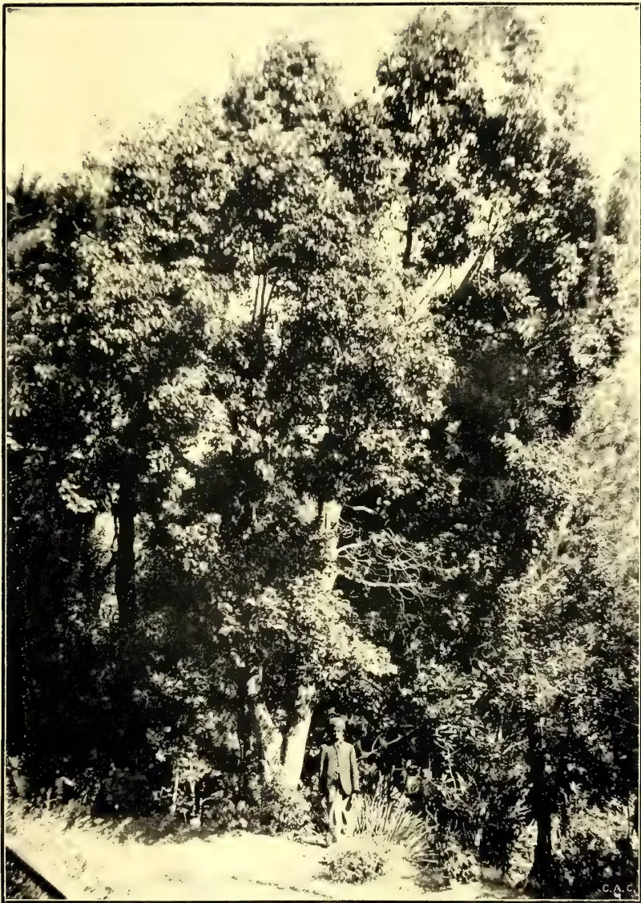
A black and white photograph of a large, dense camphor tree in a garden. A person is standing near the base of the tree, providing a sense of scale. The tree has a thick trunk and a very full canopy of leaves. The ground is covered with grass and some small plants. The photo is signed 'C.A.C.' in the bottom right corner.CAMPHOR TREE IN HAKGALA GARDENS.
Photo by H. F. Macmillan.
This image is a scan of a blank page. The paper has a light beige or cream-colored tint. There are a few very small, dark specks scattered across the surface, which appear to be scanning artifacts or dust particles. No text, lines, or other markings are present on the page.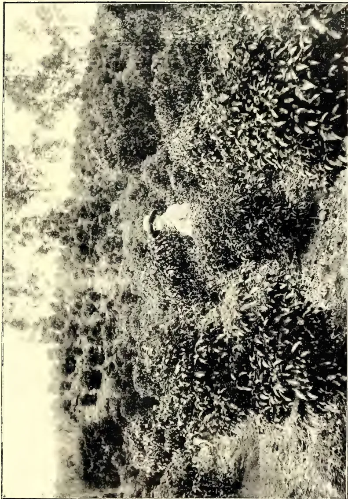
A CAMPHOR PLANTATION AT 5,000 FT. IN CEYLON.
Photo by H. F. Macniven.
This image is a scan of a blank page. The paper has a light cream or off-white color with a subtle texture. There are a few very small, dark specks scattered across the surface, which appear to be scanning artifacts or dust particles. No text, lines, or other markings are present on the page.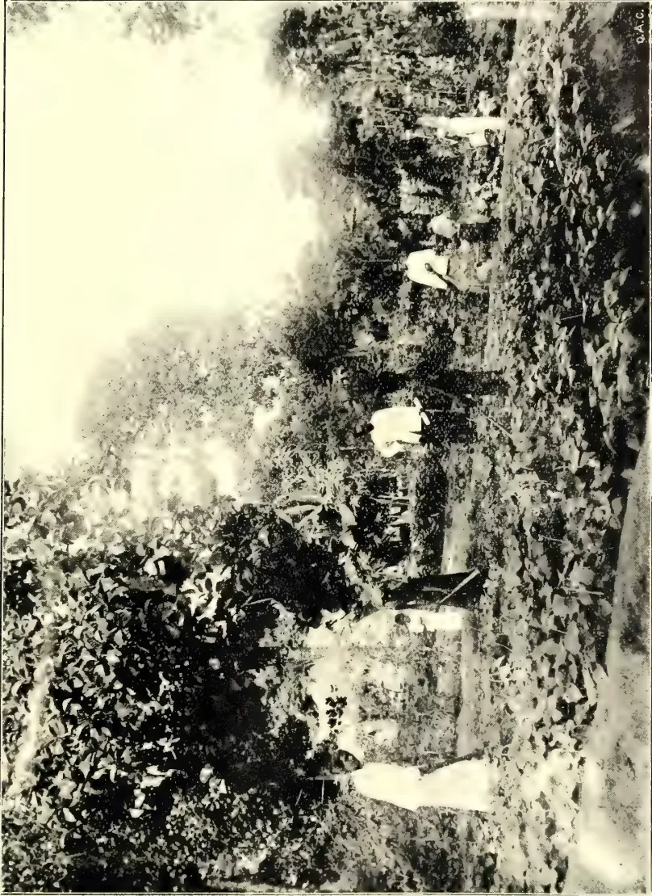
A black and white photograph of a school garden in a low country setting. Several people are working in the garden, which is filled with dense foliage and plants. The background shows a line of trees and a bright sky. The photo is oriented horizontally on the page.A SCHOOL GARDEN IN THE LOW COUNTRY.
Photo by H. P. Macmillan.
10
11
12
From the book of Rules of the Natal Society we extract the following:—
IV. The liability of the Shareholders is limited to the amount of their individual holdings.
VI. Ordinary Shares shall be of the value of each per share shall be paid on application, and the remainder in such calls as the Committee may from time to time direct, at least two weeks' notice being given for the payment of every such call.
VII. The net profits arising from the general business from the Society, after providing for the payment of interest on share capital at the rate of eight per cent. per annum, shall be allotted as follows:—
(1) Not less than per cent. of the net profits shall be allotted to the workers employed by the Society in proportion to the wages earned by them respectively during the period to which the division relates.
(2) At least one-half of the net profits shall be carried to the Reserve Fund until the latter equals the share capital. When the Reserve Fund equals the share capital, the general meetings shall decide as to the amount to be placed to the Reserve Fund in each year thereafter.
(3) The remainder of the net profits shall be divided amongst the members in proportion to the amount of their dealings with the Society during the period to which the division relates, provided (that the sum, if any, so divided amongst non-members shall not exceed one-half of the sum to which they would be entitled as members), that no non-member shall participate in the net profits of the Society.
IX. No dealer in or agent for the sale of agricultural requirements, nor any person dealing as trader in or agent for agricultural produce, shall be eligible for membership of the Committee of the Society, or for appointment as an officer.
21. The interest and dividends payable upon the share capital held by any member shall not be paid to him until all the shares which he is required to hold are fully paid, but shall accumulate and be credited to him from time to time as share capital until such shares are paid up.
23. All sums due from any member, for subscriptions or otherwise, shall be recoverable from him, his executors or administrators, as a debt due to the Society. The Secretary shall lay before each ordinary business meeting a return of all such sums, and thereupon the meeting may—
28. Subject to the payment of, or a sufficient provision for, all subsisting claims on the Society, the Committee may from time to time apply any moneys which they cannot profitably invest to pay off the excess of shares held by those who hold the largest number above those who hold the next largest. Provided that no member be required to accept less than the full sum paid upon each share paid off, and that the number of shares held by any member shall not be reduced below the number required, by the rules of the Society, to be held.
68. Subject to the provisions as to the Manager of the Society hereinafter contained, the Committee shall control all business carried on by or on account of the Society. They shall from time to time engage, remove or discharge all assistant managers, salesmen, or employees of any description, other than manual workers, required to conduct any such business, and fix their duties, salaries, or other remuneration, at such rates, and require them to give such security, in such forms approved of by them, as they determine. They shall decide on the evidence to be produced for establishing the claim of any nominee, executor, administrator, or official trustee to any share in the Society, and may institute, prosecute, compromise, or refer to arbitration any suit, debt, liability or claim against, by, to, or on the Society; and in any case for which the rules of the Society do not expressly provide, may exercise any power which could be exercised by the Society in general meeting, other than such as by the law for the time being relating to Industrial and Provident Societies may be required to be exercised by such meetings, and so that in the exercise of any such power they do nothing inconsistent with the previous resolutions of such meetings. And all acts or orders done or given by the Committee in the name and on behalf
Miscellaneous.348[APRIL 1908,of the Society under any power hereby given them, shall bind the Society and every member thereof as fully as if they had been acts or orders of a majority of the members of the Society, at a general meeting thereof, acting in exercise of the powers given them by the rules.
BY J. C. WILLIS.
Rice.—Manuring. Queensland Agri. Journal, March 1899, p. 199.
Machinery. Trin. Bull. III. 1899, p. 155.
A new Tilletia parasitic on Oryza sativa. Bot. Gaz. 27. 1899, p. 467.
Rice culture in the United States. Bull. 22, Dept. Bot., U. S. Dept. of Agri. See Nature 22. 2. 1900, p. 401, and reprint in Jam. Bull. 1900, p. 60.
Ballam rice. Jamaica Bull. VII. 1900, p. 18.
Études sur la valeur alimentaire et industriel du riz de Cochinchine. Rev. Cult. Col. VI. 1900, p. 44.
Note sur un tireur de paddy. Bull. Econ. Indoch. June 1900, p. 299.
The Engelberg rice huller. Ind. Gard. 16. 8. 1900, p. 113.
La culture du riz en Haute Italie. Bull. Econ. Indoch. 1901, p. 497.
Rijst. Ind. Merc. 18. 6. 1901, p. 445.
Culture du riz à l'aide des engrais chimiques. Bull. Econ. Indoch. 1900, p. 697.
Rice growing and preparation for market. Queensland Agri. Journal, August 1901, p. 231.
Remarques sur la composition physico-chimique des terres de rizieres de la Cochinchine. Bull. Econ. Indoch. 5. 1902, p. 53.
Een aaltjes-ziekte der Rijst. Buitenzorg Med. LIII.
Cultivation of rice in the United States. Jamaica Bull. 1903, p. 175.
L'amélioration du riz de Cochinchine. Bull. Econ. Indoch. 1903, p. 665.
La cultivation du riz au Texas. do. June 1904, p. 635.
Modern rice culture in the Philippines. Ind. Agri. August 1904, p. 238.
Notes sur différents variétés de riz. Bull. Econ. Indoch. 1904, p. 867.
De huidige stand der rijstcultuur in Noord-Italie. Meded. Buitenzorg 74, 1904.
Properties and uses of rice oil. Ind. Agri. April 1906, p. 116.
Rice growing in British Guiana. Agri. News V. 1906, p. 193.
Le Riz. Bull. Jard. Col. 1906, p. 108.
La decortication du riz sur la plantation. Journ. d'Agri. Trop. 1906, p. 260.
Notice provisoire sur la cultivation du riz au Tonkin. Bull. Econ. Indoch. 1906, p. 781.
Properties and uses of rice oil. "T.A." Jan. 1906, p. 812.
Paddy or rice cultivation in Ceylon. "T.A." Oct. 1905, p. 569.
The result of transplanting in paddy cultivation at Dikdeniya, Hanwella "T.A." March 1907, p. 145.
Paddy cultivation in Badulla, do. 146.
Rice harvesting machinery. Hawaiian Forester 1906, p. 327.
The Hindoo method of manufacturing spirit from rice, and its scientific explanation. Proc. As. Soc. Bengal, reprinted in "T.A." July, 1907, p. 29.
Ceylon paddy in Demerara, "T.A." June 1907, p. 336.
Rice growing in British Guiana. Agri-News. July, Aug. 1907, pp. 209, 253.
Rotation of crops and cultivation of paddy. "T.A." Aug. 1907, p. 142.
Report on the Rice Industry in the United States. "T.A." Jan. 1908, p. 42.
Advantages of transplanting paddy do. 46.
Notes on Otto of Rose. Chem. and Druggist. 9. 6. 1900, p. 961.
Bulgarian Otto of Rose do. 28. 7. 1900, p. 124.
Otto of Rose do. 125.
Synthetic Otto of Rose. do. 13. 10. 1900, p. 619.
Rozelle.—The cultivation and uses of the rozelle. Queensl. Agri. Journal. May 1900, p. 371.
The rozelle. "T.A." July 1907, p. 51.
Rubber.—General. (Botany, Collection, etc., of wild rubbers: African).
Les plantes à caoutchouc et à gutta dans les colonies françaises. Paris 1898.
Madagascar rubber. Kew Bull. 1899, p. 35.
APRIL 1908.]349Miscellaneous.Sur une des sources du caoutchouc du Soudan français. Bull. Mus. d'Hist. Nat. 1899, p. 178.
Henriques R., der Kautschuk und seine Quellen Dresden 1899.
Herbet, F., Manuel de culture pratique et commerciale du Caoutchouc, Paris 1899.
Indiarubber in Angola, Congo, French Guinea. Planting Opin. 20. 1. 1900, p. 40.
Kautschuk-Expedition des K. W. Komitees nach West Afrika. Tropenpfl. 4. 1900, pp. 277, 324.
Vortrag in Verein Kameruner Pflanzner do. 280.
Kautschuk-Expedition nach West-Afrika. do. 213.
Der Wurzel-Kautschuk im Kunengebiet. Tropenpfl. 4. 1900, p. 475.
Rubber in Rhodesia. "T.A." Nov. 1900, p. 300.
Der Togo-Kautschuk. Notizblatt Berlin III. 1900, p. 78.
Sur une nouvelle liane à caoutchouc du Kilimandscharo. Rev. Cult. Col. 1901, p. 45.
Lianes à caoutchouc indigènes (Congo). do. 14.
L'industrie du caoutchouc à Sierra Leone do. 216.
Une exploitation de caoutchouc au Congo belge do. 275.
Kautschuk im Congostaate. Schlechter. Tropenpfl. 4. 1900, p. 28.
Kautschuk von Loanda do. p. 35.
Kautschuk-Expedition nach West-Afrika. Schlechter in Tropenpfl. 4. 1900, p. 109.
Die Afrikanische Kautschuk-pflanzner. Warburg in Tropenpfl. July 1899, p. 303.
Ueber Kautschukpflanzner und Kickxia africana in Victoria, Kamerun. Preuss in do. 1898.
L'exploitation du caoutchouc en Afrique occidentale française. Bull. Jard. Col. 1906, p. 491.
Le caoutchouc de la Côte d'Ivoire. Bull. Jard. Col. 1906, p. 256.
A propos de la culture de lianes caoutchouçifères au Congo. Le Mon. de caout. 1906, p. 363.
Kautschuk-Kultur in Deutsch-Ost-Afrika Tropenpfl. 1906, p. 22.
Indigenous rubbers of Natal. "T.A." Aug. 1904, p. 73.
Rubbers and rubber-vines from the East African Protectorate. Bull. Imp. Inst. 1904, p. 153.
Note sur le caoutchouc des herbes du Congo français. Bull. Jard. Col. 1904, p. 383.
Rubber on the Gold Coast. Ind. Plant. and Gard. 2. 9. 1905, p. 595.
Deux nouvelles plantes à caoutchouc de Madagascar. Jumelle, Le Caout. et la gutta. 1905.
Causes of deterioration of Congo rubber. Straits Bull. 1903, p. 202.
Almeidina et caoutchouc des herbes. Rev. Cult. Col. 1904, p. 340.
Mpai rubber from Amatongaland, Natal. Imp. Inst. Bull. June 1904, p. 94.
The rubber supplies of the Congo. "T.A." Dec. 1904, p. 369.
Rubber plants from the East African Protectorate. Imp. Inst. Bull. 1. p. 68.
Kautschuk von Deutsch-Ost-Afrika. Tropenpfl. 4. 1900, p. 367.
Caoutchouc from the Congo. Gard. Chron. 27. 4. 1901, p. 262. "T.A." July, 1901, p. 21.
Togo Kautschuk. Notizblatt, Berlin III. 1901, p. 134.
L'Agriculture sur la côte est de Madagascar. Prud'homme.
The advantage of planting heavy cotton seed. Webber and Boykin. Farmers' Bull. 285, U. S. Depart. of Agri. 1907.
Pig-feeding with Cassava and Sweet Potatoes. Bull. 90, Florida Agri. Experiment Station. 1907.
Die Baumwolle in den Vereinigten Staaten von Nordamerika. Beih. zum Tropenpfl. IX. 1. 1908.
The loss of water from soil during dry weather, by J. W. Leather. Mem. Depart. Agri. India. Chem. Series I. 6. 1908.
By J. G. TURNER,
Senior Inspector of Fruit Exports and Imports.
Since the publication, in former numbers of this Journal, of articles on the packing of fruit for export, new conditions have arisen. These conditions owe their existence to the inception of the new regulations which has been brought into operation within the last year or so, viz., The Commerce Act and the Fruit Cases Act. It is therefore thought
Miscellaneous.350[APRIL 1908.necessary to bring before these growers, who may be unaware of the new laws, the principal points to be observed in putting up their produce so as to conform with all requirements.
In the endeavour to establish and maintain a profitable oversea market for the rapidly-increasing output of our Victorian orchards, too much attention cannot be given to the important item of putting up fruit in an attractive and honest manner. In advices received from the United Kingdom, South Africa, and other oversea markets, the one key-note is invariably sounded: "Pack nothing but the choicest fruit, grade evenly, pack full cases and pack them honestly throughout; inferior, badly graded, diseased and dishonestly packed fruit we do not want at any price, as it gives us more trouble than it is worth, injures the good reputation of other shipments and results in loss to every one concerned." Growers cannot give too much attention to this important matter. It is obvious that it costs just as much to pick, pack and export inferior fruit as it does to handle only the best. Against this labour the grower often realises dead loss or barely sufficient profit to pay his expenses, to say nothing of the bad reputation gained—a reputation unfortunately shared by other growers who have taken trouble to put up only the best. It may be said that nowadays with our Vegetation Diseases Act, Fruit Cases Act, and Commerce Act, it is impossible for any but the choicest of fruits to be shipped for export; but, unfortunately, such is not exactly correct. The grower may put up fruit of an uneven size, or his fruit may be too green or withered or over-ripe, or packed in newspaper or other inferior wrappers. Under certain circumstances none of these faults can be dealt with under existing enactments, but there is no doubt that fruit put up under such conditions will soon find its proper level. Were it not for the damaging effect of these inferior consignments upon high-grade shipments we could afford to ignore them. Happily shipments of this sort are becoming rarer every year as our knowledge of export requirements advances.
The necessity for our growers paying attention to even the smallest points, so that they may not be left behind in the race, is becoming more apparent every year. Although we have, so far, enjoyed almost a monopoly of the Continental markets as far as antipodean fruits are concerned, the entry of such new competitors as Cape Colony and Argentine Republic should awaken in our growers the determination to hold first place for all time. The immense possibilities
of the market before us are practically undreamt of. Taking the United Kingdom alone, we find that out of the immense quantity received there from all parts of the world, Victoria contributes only one case out of every thousand. The demand of the United Kingdom for foreign-grown fruit is ever on the increase. That this is so is shown by the following figures:—
| Years. | Values. |
|---|---|
| 1845 | ... £886,888 |
| 1865 | ... £3,185,984 |
| 1885 | ... £7,587,523 |
| 1905 | ... £9,983,119 |
When it is remembered that the above figures do not include the importations into foreign countries some idea may be gathered of what may yet be done by the growers of this State towards sharing in this enormous trade. That our opportunity is all the more inviting is shown by the fact that nearly the whole of the supplies of the foreign-grown fruit is drawn from the Northern Hemisphere; also that at the time of the year when we are forwarding our shipments the markets are comparatively bare. To grasp and to hold that opportunity certain conditions must be observed:—Economy in production, honest packing of high-grade fruit, cheap regular and invariable oversea carriage and businesslike supervision and control of output at each centre of distribution. And not the least of these conditions is:—Honest packing of high-grade fruits.
In selecting varieties for export it will be better for the intending shipper to confine himself to not more than five or six varieties at most. It is preferable to work up a reputation on two or three standard varieties which are in constant demand than to spend much time, effort and cash in pushing varieties about which little or nothing is known by the trade or consumer.
The recent successful landing of passion-fruit at London should prompt out growers to send more of this most delicious fruit. Trade should commence in a small way, with say, two or three consignments in the first season. As the fruit is not yet too well known in the United Kingdom, it will require writing up and pushing to work up what is bound to become, in time, a big business. Those experts who have tasted our Victorian passion-fruit state that they are unequalled for flavour, size and appearance, and compare favourably with any grown in any part of the
APRIL 1908.]351Miscellaneous.world. These fruits will carry in ordinary export cases. Each fruit should be wrapped to prevent the spread of any decay, but for trial shipments, growers should pack in different ways, in order to find out the best methods of carriage.
Citrus fruits sent to London from this State have, so far, had no success worth speaking of. Nevertheless, the success of the Italian and American growers in landing oranges and lemons on the Melbourne wharf after a journey of several thousand miles shows that it is possible to carry citrus fruits in perfect order. Similar fruits have been received, from China, in trays and ordinary cases in perfect order. It seems from observation of these consignments, that the essentials to success are:—Send only prime, thin-skinned, well-cured fruits, wrap each in dry tissue-paper and pack in boxes or trays so that the contents may not be shaken about. Experimental lots might be also sent to the United States. In May last, oranges were selling up to 14s. 6d., and lemons 21s. per case, at San Francisco. Oranges should arrive in London from about the middle of August until the end of October. Lemons are not so likely to be payable as oranges, because of the regular supplies of stored fruit in large quantities and at low rates.
See that the highest standard of quality is maintained throughout every season; remember that one inferior consignment will do more damage to a grower's reputation than a whole season's effort will efface; ship consignments under a few brands as possible (one preferably) and do not change your brands; co-operate and thus save expenses at this end; concentrate and save expenses at the other end.—Journal of the Department of Agriculture of Victoria, Vol. VI., Part 2, February 8th, 1908.
The prosperity of the tobacco industry as a whole and of the growers in particular depends on the development of improved varieties of tobacco adapted to the demands of manufacturers and consumers. There is no crop which responds so readily to breeding as tobacco, as has been proved by the experiments of the writers, and it is further true that without careful selection and breeding there is no crop which so
quickly deteriorates in yield and quality. The extent of the areas in the United States in which the conditions of soil and climate are suitable to tobacco culture is almost unlimited, so that it seems possible that by giving attention to the production of varieties adapted to those conditions, this country can continue to produce an increasingly large yield of valuable tobaccos.
The experiments of the writers have shown that it is possible to increase the yield and improve the quality of the crop by seed selection and breeding. The methods of breeding worked out in the course of these experiments are simple and practical, and can be carried out by every grower with little or no extra cost in the production of the crop. The fact that tobacco is perfectly self-fertile and that self-fertilised seed produces more uniform and better developed plants than seed resulting from cross-fertilisation within the variety makes it possible by the adoption of proper methods of saving seed to make rapid progress in the improvement of the crop. Improvement in the shape, size, and quality of leaves or increase in the number of leaves borne by the individual plants, all of which can be attained by breeding, means increased profits to the growers and manufacturers, and therefore is of vital interest to all who are interested in the production, manufacture, and consumption of this crop.
The production of new varieties of tobacco by hybridisation and selection is a most important phase of tobacco breeding. The new hybrids of native New England varieties with standard foreign-grown varieties, combining certain valuable characters of both parents, described in this bulletin, are good illustrations of the use of breeding in the improvement of the tobacco crop. The making and testing of hybrids are matters of experiment and require considerable time and expense, but experience has shown that the results justify the necessary expenditure.
The production of improved breeds of live stock and varieties of fruits and cereals, in fact, of all crops, might be cited to prove the importance of applying the principles of breeding to the tobacco crop. It is only recently that systematic breeding experiments have been undertaken. It is hoped that the results of the experiments cited in this bulletin will serve as a means of creating general interest in this subject and of inducing investigators, breeders, and growers to turn their attention to the further improvement of their crops.
Miscellaneous.352[APRIL 1908.Tobacco growers in the sections where these experiments have been carried on have generally adopted the improved methods of bagging carefully selected seed plants and of separating the seed, and they are using the improved varieties of tobacco produced in the course of these investigations. In most of these districts certain men have become interested in the careful and systematic breeding of tobacco.
From the practical standpoint, there is no more important problem in tobacco culture than the production of uniform crops. A lack of uniformity in the crop not only results in a low yield, as a whole, and more especially of the best and most profitable grades of the cure and fermented product, but also increases the cost of sorting out the different types of leaves into their respective grades for market, the expense of which must be borne directly or indirectly by the grower.
The principal cause of the lack of the uniformity in tobacco is cross-fertilization. In tobacco, as in all other crops, seed resulting from cross-fertilization produces many plants unlike either parent. Therefore such seed is undesirable for the general planting of a crop where uniformity is so important a factor. Where the tobacco seed plants are grown without protection from cross-fertilization some of the flowers are cross-fertilized by insects or other agencies. Desirable plants may thus be crossed with undesirable plants in the same field or in the adjoining fields, and the plants grown from the seed thus produced are usually extremely variable, some of them resembling the desirable plants from which the seed was harvested, others resembling the inferior plants from which the pollen was carried for crossing, while the remainder are of an intermediate type, unsuited to the purpose for which the crop is grown, and therefore causing a loss to the grower. The writers have observed numberless cases in different tobacco-growing sections where several distinct and worthless new types appeared in the fields, the plants of which were grown from carefully selected seed. These undesirable types could only be accounted for by the accidental crossing of the seed plants the year preceding or at some previous time. The crossing of individual plants of the same strain, even if both are desirable plants, results in undesirable variations, many of which are apparently reversions to earlier and unimproved types of tobacco.
In those varieties of tobacco in which the buds are removed long before the flowers open on all of the plants except
those saved for seed production, or where early topping is practised, the opportunity for crossing of the flowers borne by the seed plants with other plants in the same field is almost wholly limited to the seed plants. However, it frequently occurs that late or diseased plants, or possibly sucker branches that have been overlooked, develop flowers which open at just the right time to allow insects to carry the pollen from these flowers to the seed plants and thus effect cross-fertilization. There is little doubt that many of the plants of irregular and unusual types are produced as a result of this kind of cross-fertilization.
An important cause of variation in tobacco plants is the use of immature seed. Many growers cut off or harvest the seed heads before all the seed pods have turned brown; hence before maturity. The writers have observed hundreds of instances where the seed plants have been cut off while many of the flowers were still in bloom. On such seed heads seed pods in all stages of maturity can be found. Some of the pods are fully ripe and contain mature seed, while others have not fully developed. Much of the seed is immature and contains little food for the nourishment of the plantlet. These seed heads are frequently thrashed out with a flail or the pods are crushed by hand in order to shell out the seed. In this way the immature seed is mixed with the ripe seed sown in the seed beds. In the seed beds the immature seed frequently sprouts earlier than the mature seed, and the early seedlings grown from such seed are naturally seed for transplanting in the field. Such plants have a great tendency to vary, in some cases being very early, and as a rule having leaves that are small, coarse, and wholly undesirable for any purpose. These weak, immature tobacco seeds, according to careful and extensive observations by the writers, produce plants which are more subject to certain diseases, particularly the mosaic disease, than are plants grown from mature seed.
The excess of plant food in the soil where heavy applications of barnyard manure and commercial fertilizers are used is usually thought to produce variations in the plants. This variation is usually shown by an increase in the size of the leaves, which is generally correlated with changes in colour, flavour, and other characters. In these cases there is usually a tendency for the type of plant to break up, so that the uniformity of the crop is disturbed. Where it is necessary to use large quantities of fertilizers in the growing of a profitable
APRIL 1908.]353Miscellaneous.crop, the inclination to variation induced by this extensive system of cultivation must be controlled by the most rigid selection of seed from the type of plants best adapted for the purpose for which the tobacco is grown.
In the production of improved varieties of tobacco by breeding, variation in type can be secured by crossing, and by continued saving of self-fertilized seeds from plants most nearly reaching the growers' ideal of perfect plants uniform types can be fixed. Growers will frequently find plants that are markedly better than the rest of the plants in the field, so that by selecting these desirable variations a steady improvement in the yield and quality of the crop can be effected. Variation, therefore, is a basis for selection in an experimental way, but in practice every effort must be put forth in order to secure uniformity of the plants in the field and thus produce the most profitable crops.
The introduction of the seed of standard foreign-grown varieties of tobacco has been the source of increased wealth and prosperity in certain tobacco districts of the United States. In other regions such importations have resulted in great financial loss to the growers, which in most cases has been due to a lack of knowledge of the effect of the change of soil and climatic conditions on the particular type of tobacco grown.
The western Florida and southern Georgia Sumatra tobacco industry is an illustration of the successful introduction of a foreign grown variety of tobacco. Tobacco growers in this region secured small samples of the seed of the Sumatra variety of tobacco from the island of Sumatra. At first small experimental crops were grown and seed saved from the best plants in these crops. In the course of this experimental cultivation it was noticed that the plants grown under the partial shade of trees in freshly-cleared fields produced finer and more desirable leaves for cigar wrappers than the plants grown in the open. This fact led to the erection of an artificial shade over the fields, made of slats laid on a suitable framework. This method of growing tobacco was introduced about 1896 by Mr. D. A. Shaw, of Quincy, Fla. Later, other growers used a coarse cheese cloth as a substitute for the slats. The shade method of growing tobacco in this region has developed rapidly, and at the present time several thousands of acres of tobacco are grown under either slat or cloth shade, and the
industry has become established on a profitable and successful basis. During this time considerable attention has been paid to the production of a uniform type of tobacco adapted to the climatic and soil conditions of this section by the saving of seed from carefully selected plants of the Sumatra variety.
When Sumatra seed was first introduced into Florida, the variety broke up into a number of different types, some of which were desirable, while others were undesirable. By reason of the small crops grown from such seed, the loss to the growers from the production of undesirable types of plants was not very great. The growers naturally saved for seed those plants which produced the most desirable types of tobacco, and as a result of continued selection of this kind a fairly uniform type of tobacco which was adapted to the local conditions in this section was secured. As the demand for this Florida-grown Sumatra tobacco developed, resulting in the increased acreages, seed was at hand which was thoroughly acclimatized for planting the larger area devoted to this crop. From time to time the tobacco planters in this region have obtained small quantities of seed from Sumatra, but in such cases this seed has been grown in a very limited way in very small fields until it has been acclimatized and uniform types have been secured by seed selection.
About the time of the Cuban revolution it became apparent that the supply of Cuban-grown tobacco for the use of cigar manufacturers in the United States might become limited by reason of the unfavourable conditions for tobacco growing then prevailing in Cuba. Under these circumstances it was thought to be propitious time to introduce the growing of Cuban tobacco into southern Florida, where the conditions of climate and soil were believed to be similar to those of Cuba. Considerable public interest was aroused in this project, and as a result large quantities of Cuban-grown seed were secured and planted in sections of Florida. The crops raised from this seed proved to be a disappointment to the growers. The change of soil and climatic conditions resulted in the breaking up of the type of the Cuban variety into a large number of sorts, some of which were desirable, while others were undesirable. Many of the plants developed a branching habit of growth, bearing very small, undesirable leaves of poor quality, resulting in a very low yield of an inferior tobacco. One of the main causes of failure was the lack of understanding on the part of the growers
45 Miscellaneous.354[APRIL 1908.of the effect of the change of conditions on the type of tobacco and their neglect to appreciate the necessity of securing strains of plants by seed selection of the desirable types adapted to the particular conditions of soil and climate in southern Florida. If the acclimatization of these strains had been accomplished by seed selection in small fields, with little loss to the growers, the strains could have been grown on a more extensive scale with better chances of success.
In order to illustrate the necessity for the acclimatization of a variety of tobacco before it is grown on an extensive scale, the successful experiments of the Bureau of Soils in the introduction of Cuban tobacco in Texas may be cited. After a previous unsuccessful attempt by farmers in Texas to grow Cuban tobacco from freshly-imported Cuban seed, the Bureau of Soils began systematic experiments in growing small fields of tobacco and saving seed of the most desirable plants according to the method described in this bulletin. In these crops certain plants were found which produced leaves possessing the flavour and aroma desired in a high-grade filler tobacco. The seeds from these plants were saved under bag, and their product has been found to possess the desirable characters of the parent plants. This tobacco has been sold at profitable prices, and the area devoted to the growing of this crop is being gradually extended in order to meet the demands of the manufacturers for this grade of filler tobacco. In northern Florida the tobacco growers, as a result of their experience with the imported Sumatra seed, experimented in growing, in the open, small fields of a cigar filler tobacco of a variety, the seed of which was originally introduced from Cuba. This variety of Florida filler tobacco is now being grown extensively and profitably in that section.
The writers during the past season planted in Florida Connecticut-grown seed of the Sumatra variety. It was found that while there was a noticeable change in the shape of leaf and in some minor characters in the Florida-grown tobacco, there was no violent breaking up of type or indication of unusual variability. This experiment and other observations have led the writers to believe that the effect of changing seed from the north to the south is not accompanied by such marked changes as when seed is taken from tropical conditions to northern latitudes.
In summing up the observations on this subject it can safely be said that it is a dangerous policy to plant large crops of tobacco with imported seed or
with seed from a very different section. In most cases it has resulted in failure and caused considerable loss to the growers. The general crops should be planted from seed produced under the same conditions as the crops which is to be grown. If it is necessary to change the seed or desirable to test imported varieties, it should be done on a small scale, followed by a most careful selection of seed plants, and the seed should be saved under bag, safe from cross-fertilization.
On account of the large quantity of seed produced by a single plant under normal conditions, and the fact that the various characters of a tobacco plant are inherited so strikingly and uniformly by its progeny, the following year when the seed is saved under bag, protected from cross-fertilization, it is possible for the tobacco grower to secure uniformity with a considerable degree of improvement in type, quality, and yield by one year's selection. One plant often furnishes enough seed for an entire crop, and the plants raised from this seed always produce a very uniform lot of tobacco when cross-fertilization is not allowed to take place.—U. S. Department of Agriculture, Bull. 96, March 12, 1907.
BY T. JOHNSON, D.SC.,
Professor of Botany in the Royal College of Science, Dublin.
While Botany, like other subjects of study, will always have its followers who pursue it for its own sake, or because of the increase of knowledge of Nature its successful prosecution brings, there are others who through taste or other cause devote themselves to botany from the applied or economic point of view. The magnificent work done by the English botanists in the nineteenth century was due, in large measure, as Sir J. Hooker himself once told me, to the demands of people at home and abroad for information as to the nature and uses of the plants forming the flora of our newly-acquired Colonies. It was, on the other hand, the absence of Colonies before 1880 which helped to produce the splendid results in anatomical and physiological botany for which Germany became famous.
There are two branches of economic botany, the foundations of which have been laid practically within the last fifty years—that bearing on plant diseases or plant-pathology, and that of seed-testing.
APRIL 1908.]355Miscellaneous.It may not be out of place here for me, as a former student and teacher of the Royal College of Science, London, to call attention to what appears to a botanist a peculiar lack of appreciation of the modern developments of botany in the hesitation shown as to the future of the Biological Division, in the Report of the Committee on that College's conversion into a more strictly technical or applied College of Science. If the Committee were familiar with the beneficial work carried out in Germany by Frank, Hartig, Von Tubeuf, Aderhold, etc., in the Biological Institutes of Berlin, Munich, and Hamburg, and in France by Prillieux and Delacroix, etc., there would surely be no inclination to suppress the Biological Division, but rather to develop it along economic lines. Even if there were no ordinary students this division could make an ample return for all expenditure on it by additions to our knowledge of benefit to agriculture, horticulture, and other branches of economic botany.
It was in the year 1869 that seed-testing, as now understood, started. Nobbe of Tharand was asked to examine a grass mixture, and found the sample was not true to description, a remark which applied to many other samples he then obtained from various parts of Germany.
Although the credit of starting the first Seed-testing Station must be given to Nobbe, measures had been taken as long ago as 1816 in Switzerland to suppress fraud in the seed trade. Thus an inspector had the right of entry into a seed shop or warehouse for inspection of the seeds on sale, punishment following detection of fraud. In England in 1869 the Adulteration of Seeds Act was passed, making it penal to kill seeds kept for sale. The Royal Horticultural Society of England did much to expose the corruption which had crept into the seed trade. In its second report (Farmer's Magazine, February, 1869), the Royal Horticultural Society Committee says: "... Everything is thus thrown upon the honesty of the dealer. He fixes the prices, regulates the quality, and the purchaser is kept in the dark, and has no check upon either. This is a temptation beyond what the average frailty of human nature ought in fairness to be exposed. ... One of the chief functions of the association (of wholesale seedsmen) is ... the regulation of prices ... and the determination as to what kind of seeds should have their average lowered and to what extent it should be done." With honourable exceptions trade catalogues offered in addition to "nett" or pure seed "trio" seed, i.e., seed killed for
admixture purposes! The Act of 1869 made the admixture of killed seed an offence, but did not provide machinery for the detection of the offence, as is now the case for artificial manures and feeding stuffs under the Fertilizers and Feeding Stuffs Act of 1893.
In 1900 the English Board of Agriculture appointed a Committee to enquire into the conditions under which agricultural seeds are at present sold, and to report whether any further measures can with advantage be taken to secure the maintenance of adequate standards of purity and germinating power. This Departmental Committee recommended the establishment of one central Seed-testing Station under Government auspices, with the fees so fixed as to encourage seedsmen to sell subject to reselling by the purchaser, should he desire it. So far this recommendation has remained a dead letter in Great Britain. A Government Station was already in existence in Ireland when the Committee was appointed, and so far some 6,000 samples of seed have been tested by it.
The revelations of fraud and ignorance published in 1875 by Nobbe in his Handbuch der Samenkunde led to vigorous action, and Seed-testing Stations were started in nearly every country in the world, mostly under Government control. At the present time there are some 150.
The object of each Station is to assist the seedsmen and the farmers in securing the best and purest seed for agricultural or other purposes. Evidence abounds to prove that where in any trade there is a demand for inferior goods the supply will be forthcoming, and that where there is ignorance on the buyer's side the seller will, in too many cases, take advantage of it and try to profit by it. These statements are not universally applicable in the seed trade. They hold true, however, to such an extent as to necessitate the existence of Seed-testing Stations to determine for all parties concerned the nature of the goods under sale. It is not necessary to label the good and bad kinds. While in appearance and price there is little to distinguish the two kinds of seeds from one another, the test shows an enormous difference.
As many of my readers are probably not familiar with the qualities which characterise a good seed, or with the procedure followed in ascertaining these points, I propose in the following lines
Miscellaneous.356[APRIL 1908.to describe briefly the more important points. In examining a sample of seed one's attention is directed to
By this is meant that the seed is really what it is described as being. A farmer who orders meadow fescue and is supplied with the much cheaper perennial rye, is defrauded. The two seeds are very similar in appearance, and lend themselves to deception. A farmer who orders turnip seed and receives the cheaper rape, loses money in the purchase, and further gets a crop of green tops instead of fleshy roots. Charlock, the yellow mustard-like pest in potato, corn, and other fields, has a seed very like turnip or rape, and often, apart from taste, needs the microscope for identification. At one time charlock was largely mixed with turnip or rape, and often, to hide its presence in the seed, was killed before mixing, to prevent its appearance in the field, on the principle, as was well stated, that "dead men tell no tales." Owing to the tendency of turnips and swede to bolt, the general similarity in appearance of the seeds of turnip, swede, rape, and charlock (all members of the genus Brassica), and to the consequent danger of fraud, cases occur every year, in my own experience, in which the Seed-testing Station is called in to decide as between buyer and seller. The clovers at one time were far from being genuine. Nobbe quotes a letter from a Continental firm offering to a seedsman quartz stones so agreeing in size and colour with red clover or white clover that the ordinary farmer could not distinguish them. English red clover has a high value in the trade, but every season is not favourable to the general maturing of its seeds. The supply falls short of the demand, and other less hardy red clovers are liable to be substituted. In such cases the genuineness is generally ascertainable by examination of the seed impurities.
Several seeds in falsely called English red clover are foreign, and never occur in England. By the examination of such impurities Stebler of Zurich has, during the past twenty years, collected most valuable information as to the country of origin of seeds, and his results are now in course of publication. Advantage of the knowledge of this means of identification is sometimes taken by the grower. Thus Russian flax seed, which has a reputation for strong growth, has a common impurity called "false flax" (Camelina sativa). The grower of flax in another country, knowing this, sometimes introduces a little false flax seed into his flax seed to give the impression
that the seed is genuine Russian-grown. The meadow grasses (Poa sp.) differ greatly in value. The seeds of the different species possess definite botanical characters, but these characters can be so far removed by cleaning machinery that the cheaper, more easily obtained seed can be substituted for the dearer, better kind. The ordinary buyer could not be expected to know the difference. Must he then continue to be, because of his unavoidable ignorance, the possible victim of fraud?
By practical purity is meant that the seed is not only true to name, but that it contains nothing else in measurable quantity. The two chief sources of impurity are inert matter, such as stone, particles of soil, broken seeds, stalks, chaff—all dead weight—and the seeds of other plants, chiefly weeds. Great improvement has taken place in this branch of the seed trade. The better houses have often elaborate machinery by which the impurities are removed. Unfortunately, however, these very impurities find a ready market, and the supply within the trade is not equal to the demand!
Many of the weed seeds are highly objectionable or injurious. The dodder is very generally present in some clovers, and may do a great deal of harm as a parasitic pest. The dodder seed is in size and colour so like a particle of soil as to be indistinguishable to the farmer. Fortunately for Ireland, the dodder does not thrive well, and there are few cases on record of injury to crops caused by it. I had one case before me in 1900 of the destruction of a flax field by the flax dodder, and the correspondent mentioned cases of great damage in some fields in earlier years.
In England the dodder has, I understand, done much harm locally, from year to year, but does not often ripen its seeds. In some of the Continental and American clovers, however, ripe dodder seeds are plentiful. In England an ounce of dodder in a ton of clover is the limit of impurity considered permissible. On the Continent the limit varies—from absolute freedom to from five to ten dodder seeds in one kilogramme of clover. Most foreign clovers contain dodder, and may require several sievings before becoming free from it. At the recent International Conference in Hamburg it was decided to invite from all over the World information as to the prevalence of dodder in the flora, etc. of each country.
APRIL 1903.]357Miscellaneous.The procedure followed in testing the purity of a seed is quite simple. A definite weight, varying according to the kind of seed, is taken from an average sample of the bulk. The impurities of the two kinds already mentioned are separated out, weighed, and expressed as a percentage. A difficulty arises in some cases where the seeds are blind or deaf, i.e., have all the external characters of the true seed, but lack the kernel. This is especially the case in such a grass as the meadow foxtail. In some cases this seed is pure chaff. When the seed is examined by transmitted light the presence or absence of the kernel is observable. In the great majority of Stations these blind seeds are treated as impurities, but where seed is bought by the bushel (or by volume) it would be more equitable to include them in the germination test.
The seed from which the impurities have been removed is taken, and from it a definite number, varying according to the seed under inquiry—200 to 400 generally—is separated without selection, and placed under suitable conditions of temperature, air, and moisture for germination. At the end of a certain time, from a few days in the case of clovers and flax, to 28 or even 35 days in the case of some of the Poas, all the seeds capable of germinating will have sprouted, and can have been counted. In this way the percentage of germination is obtained. This varies from seed to seed, but should not vary much for the same kind, even from season to season, when the seed is ripe and fresh. Excellent work was done by Mr. W. Carruthers, F.R.S., the Consulting Botanist to the Royal Agricultural Society, when that Society was led to issue a schedule of agricultural seeds indicating the minimum percentage of germination of each kind which the seedsman should be asked to guarantee to the member when purchasing.
The ripener and more perfect the seed, the more quickly and uniformly will it germinate. This is called the Germinating Energy, and is usually expressed in an Interim Report. Old and not well "filled" seeds have a low and irregular germinating energy. Some seeds seem to act on the view that a seed is never too old to be sold, and save seed from one year to another year on the ground that next season, owing to adverse weather, there may be a shortage of supply. Such provision and provision are supported by the statement that, in some cases, two-year old seeds give better plants. In the majority of cases, one-year old seed is the best to
sow. From two years on, seeds lose their vitality by degrees.
It is obvious that one gets an imperfect idea of the quality of a seed by considering the purity and germination apart from one another. A seed may be pure, but of low germinating power through age, "heating," want of ripeness, etc. Another seed may be very impure, but what there is of it, true to name, may germinate well. Either report alone would be misleading. I had one sample of Timothy grass to test, intended for experimental work. It was pure and looked good seed, but germinated only 10 per cent. It was in consequence useless. Hence it is usual to combine the purity and germination percentage to get the True Value of the seed. This is expressed by the following formula, where:—
P=percentage of purity.
G=percentage of germination, and
Thus a sample of perennial rye showing 90 per cent. purity and 80 per cent. germination has a true value of 72—i.e., every 100 lb. contains only 72 lb. really good seed.
In the Irish Station the percentages of purity and germination are stated separately.
Many factors affect the germination of a given seed. We are not yet in a position to say what is the best or optimum condition in each respect for the production of the highest degree of germination in the laboratory of each particular kind of seed. In nature the seed is still less placed under the optimum conditions in every respect; it is in consequence usual to assume that the percentage of germination in nature will be 5 per cent. less than under the more or less controllable artificial conditions. Further, 5 to 8 per cent. is allowed as a margin of error in cases of dispute in estimating percentage of germination in the Seed Station. (Advantage is sometimes taken of this by the trade to add on to a Station's report 5 to 8 per cent.) The poorer and more uneven the seed the greater will be the difference in two tests of it even under apparently identical conditions. One is apt to lose sight of the fact that the object of testing the seed should be, not to obtain the highest possible degree of germination under the most perfect artificial conditions, but to secure a good working idea of the germinating power of the seed when
Miscellaneous.358[APRIL 1908.placed under field conditions. Let us now consider in some detail the procedure followed in ascertaining the germinating power of seed:—
1. Germinating Bed.—Excepting in the case of some of the larger seeds, they are placed, without previous soaking, directly in the seed-bed, without being in contact with one another. The seed-bed varies. In some cases strong folded blotting paper is used, in others porous clay dishes of varying thickness, in others sand, and in yet others (especially cereals) ordinary soil in flower-pots or saucers in a greenhouse. I shall not stop to mention the practical details to be observed in keeping these media pure. In this Station the same seed is tested in two or more of these media and the average result taken, this being further checked by the simultaneous germination of a "control" seed of known germinating power. I have found this additional precaution very useful in cases of dispute between buyer and seller, and recommend it for general adoption.
2. Temperature.—Whatever the nature of the bed may be, it is essential that its temperature should be under control and should remain constant. In most cases the temperature recommended is 20° C. Here our results have been more satisfactory when the thermometer of the incubator was 24° C. Certain seeds (Poa, Dactylis, Beta, etc.) are found to germinate better if they are also exposed each day to a temperature of 30° C. for six hours, in imitation of the diurnal rise of temperature in nature.
(3) Moisture and Seed-bed.—The process of dehydration through which a seed passes in ripening has its counterpart when germination is taking place. A dry seed will not germinate, no matter how favourable the other conditions may be. If, on the other hand, a seed is left water-logged it will not germinate, but in a few days die and rot away. The seed-beds used in testing are of a porous nature, in contact by partial immersion or otherwise with fresh water, so that the necessary moisture reaches the seed, generally by capillarity. For most seeds the amount of moisture so obtained is sufficient. This holds true for the seed-bed, whether of porous clay, sand, asbestos, or blotting-paper and for most seeds.
(4) Air.—Fresh air is usually provided for in the incubators by ventilators. Seeds are particularly sensitive to injurious chemical substances, whether in the seed-bed or in the gas often used in heating the incubator.
(5) Light.—Most seeds seem indifferent to sunlight, i.e., the seeds germinate equally well in darkness or light. It is a popular saying that a seed in nature germinates best when covered by a layer of soil equal in depth to the diameter of the seed. Exposure to direct sunlight brings with it difficulties in regulating the temperature of the incubator. In a few cases, e.g., the Poa-exposure to light has been shown to be distinctly beneficial, expediting the germination of the seed by one to three or four days, or increasing its percentage of germination.
Where the seed is of good average quality, i.e., such as a seedsmen should sell and a farmer sow—the foregoing conditions can be kept so generally constant that the test will be quite reliable, and may be safely taken as an indication for sowing purposes of the quality of the seed.
(a) Unreliability.—Occasionally objectors to seed-testing quote cases:—
(1) In which several Stations have given widely different reports on the same seed.
(2) In which the same seed tested by the same person under different methods has given different results.
The particulars as to the quality of the seed, the number of seeds tested, the use or not of a "control" seed, the temperature of the incubator, the degree of familiarity with the incubator, and the experience of the tester are all omitted.
The difficulty with the Poas is the usual case quoted. They are delicate seeds, but not beyond reliable testing, and, further, they form an infinitesimal part of the seed trade. A few years ago an Irish landowner sent independently to a seed firm, strongly opposed to seed-testing and to me, samples of "tussock" grass seed. The fact that the firm identified this seed of a valuable fodder grass Poa flabellata, or Dactylis coespitosa, as a worthless grass. Aria coespitosa, cannot be quoted as proof of their general unreliability as seedsmen. The Committee was further told that only skilled hands could prepare a uniform mixture of seeds of grasses and clovers. The mixture made in the seed warehouse rearranges itself in the journey to the farm, and needs remixing before being sown. The purchase of mixtures is being, for obvious reasons, more and more discouraged by the farmers' advisers.
APRIL 1908.]359Miscellaneous.Again, some seedsmen object to a Seed Station on the ground that the Station might give to their rivals, perhaps by unfair use of the Staton's report, a reputation which has taken them years to secure. The seedsmen in Germany were at first strongly opposed to the establishment of Stations. Now, however, they see the advantage of a properly conducted one, and in such an important centre as Hamburg they use it freely in their dealings with one another, and with their suppliers and customers.
One seedsmen admitted before the Committee that the result of testing by a Continental expert and by his own expert uniformly came very near one another. He knew, he said, when he was buying worthless seed, and supposed the farmers in the West of Ireland went on buying the "blowings" of grass seeds because it paid them to sow them.
(b) Pedigree.—It is impossible by mere observation or by an ordinary germinating test to determine the pedigree of a seed. As the degree of fixation of the characteristics of an agricultural variety is often of an indeterminate character, the pedigree question is surrounded with natural difficulty, and often complicated by trade interests.
Confidence between buyer and seller, without which no trade could exist, must be largely the determining factor in accepting the statements as to the pedigree of a seed, especially where field experiments are not carried out. The originator of an agricultural or a trade variety would not be so foolish as to supply seed not in keeping with his description, and direct dealing with him should be guarantee enough, pending the field result.
Advocates of seed-testing have never contended that the pedigree of a seed can be tested in the incubator. One well-known firm brought before the Committee samples, in some cases intentionally mixed, of known seeds with very different pedigrees but so similar in appearance that no one, the firm asserted, could distinguish them from one another. Apart from the fact that there is a microscopical means of distinguishing rape, swede, cabbage from one another, it appears to have been overlooked that the common law could deal adequately with the cases. If a seedsmen who submitted oats, germinating 78 per cent. and gathered in a rather wet autumn, to sulphur burning to preserve them was, to my knowledge, fined about
£150, it is easy, if the law is reliable, to foretell the fate of a seedsmen supplying, e.g., mangel mixed with 25 per cent. wild beet, one of the samples submitted. A Seed Station has not, as its main function, the detection or prevention of fraud.
(c) Time-Limit.—Some firms state that quite half their business has to do with seed they never handle at all. Such speculative trade has its risks to run, and the speculating firm which no doubt receive a guarantee when buying the (foreign) supplies should be prepared to have the seeds it deals in submitted by the British farmer to test.
It has been argued by some that general seed-testing would paralyse the seed trade if customers waited for the results of the testing before sowing. Such delay is quite unnecessary. The same machinery for taking samples under the Fertilisers and Feed Stuff's Act could be utilised in preventing the postponement of the sowing of seeds. It is only the samples taken from the bulk that are required for action under the Act.
It is true that seeds do not ripen equally well each year. Machinery exists for the removal of the unripe seeds, and there are seedsmen who guarantee year by year the same percentage of germination. The buyer should at any rate have the opportunity of knowing the germination percentage of the seed he is buying. There could be a mutual agreement as to a unit of repayment or of compensation in cases where the test showed the seeds to be under or above the guaranteed standard. Such a mutual arrangement has been found workable. The common law could still deal with cases where there was evidence of deliberate fraud. It has come to my knowledge that in England, where certain landlords agree to pay half the cost of the seeds supplied to their tenants, these in some cases arrange for low-priced inferior seed to be actually supplied to them, while the landlord pays for superior seeds and so the whole bill. The tenant does not seem to realise that he more than pays for the difference later on, in poorer crops.
To meet the time difficulty attempts to ascertain the vitality or viability of a seed at once have been made by the use of chemical reagents. Further, Dr. Waller has shown in a very interesting manner that seeds which are alive give an electrical discharge which he calls a "blaze" current, when a current from an induction coil is sent through the
Miscellaneous360[APRIL 1908.seed. He has known only one case in which the seed failed to give the "blaze" current, and subsequently germinated. He has had no case of a seed giving a blaze current without subsequent germination. Further, by his method an idea of the degree of vitality of the seed is obtainable. I am hoping to be able, with Dr. Waller's help, to make practical use of his method in seed-testing.
One needs very little experience in seed-testing to realise to what an extent seeds harbour fungi. Many of these fungi are saprophytic, and their abundance is one sign that the seed is old and dead. Others are, however, parasitic. They exist as hibernating mycelium in the substance of the seeds and its coats, or in the form of spores attached or clinging to the seed coats or concealed within them, and sprout under the conditions favourable to the germination of the healthy seeds. Several years ago I made an examination of Phoma betæ, a fungus which does an immense amount of harm in Ireland. As Appel has recently suggested in such cases as Phoma betæ and Helminthosporium gramineum seed-testing might aid considerably in preventing unsuitable seed from being sown. In this connection it may be mentioned that Rolfs found the centrifugal apparatus helpful in detecting the spores of Fusarium lini on flax seeds.
Apparatus.—The Station should have several incubators, a greenhouse if possible, a plot of ground, desecting and compound microscopes, a reliable set of named seeds, certain books, at least two rooms—one for the staff, and one for the incubators. £100 would suffice to equip the Station with the necessary apparatus.
Staff.—The Director should be a trained botanist, and should have at least one scientific assistant who would be responsible to the Director for the accuracy of all the work.
The counting of seeds, washing of dishes, etc., take up a great deal of time, and for these purposes two or three smart boys or girls are necessary. In this station, with 1,500 samples a year to be tested, the Directorship is part of my duty as Professor of Botany in the Royal College of Science. One witness before the Seed Committee thought a central Station would need a Director
receiving £1,000 a year, with the necessary staff and equipment.
Cost of Test.—The cost of a test varies very much according to the character of the seed and the extent of the test, being as a rule from 3s. upwards.
In this Station the seedsman pays 2s. per sample for reports on purity and germination; the farmer, however, only pays 3d. Our work is confined to the Irish seed trade, and all fees go to H.M.'s Treasury.
It appears that no fewer than 850 samples are sent from the United Kingdom abroad each year to be tested, naturally at considerable expense and unavoidable delay. A well-conducted Station for Great Britain under Government control would be highly beneficial to British Agriculture. There is evidence from time to time that the existence of this Station has vastly improved the quality, e.g., of the flax seed sown in Ireland. A seedsman selling good seed has nothing to lose, but much to gain, by having his seeds inspected and certificated.
In the rubbish too often palmed off on the ignorant farmer, the Station proves when called in (and most of our testing is done for the farmers in Ireland) a necessary detective.
The Seed Committee makes what seems to me a fundamental error when it says that "the price at which these seeds (certain uncleand seeds of inferior quality sold in Ireland) are sold not unfrequently corresponds fairly accurately to their value." The seed may be regarded as the farmer's raw material on which he expends his money, time, brain, land, men, and farm appliances. If the seed is impure and of low germination, he will have to spend not less, but rather more, of some of these in working up his raw material, and the resulting harvest will bear no comparison with that derivable from good seed. The disparity between the two results will bear no comparison with the difference in the original outlay in money on the two kinds of seeds. If the farmer knows by test that he is buying seed germinating only 75 per cent. instead of 95 per cent. he can increase the quantity sown, and so save loss in one direction. The Station would give him this information.
In the same way the cost to the State of a central Seed Station is trifling compared with the benefit to British agriculture its creation would mean.—Science Progress No. 3, Vol. I., January 1907, pp. 483/95.
APRIL 1908.]361Miscellaneous.INDIAN AGRICULTURE.BY HENRY STAVELEY LAWRENCE, I.C.S.,
Director of Agriculture, Bombay.
(Concluded from p. 235.)
To turn once more to cotton. The statistics tell us that if we include Native States, cotton covers an area of 20 million acres, and produces about 4 million bales, of an approximate value of £30 millions. Very little of this comes to England, (about 100,000 bales, worth £ million); and since the whole of the rest of the British Empire produces less than 20,000 bales, Lancashire pays some £52 million sterling annually to foreign countries for its supplies.
There are bold men who assert that it is proved by the Indian hand-loom weavers of Dacca that Indian lint is capable to-day of weaving the finest qualities of cloth—and this not from a vanished species of tree cotton as an exploded myth used to declare, but from the ordinary coarse Bengal staple—and that great discoveries are yet possible in the region of electricity and humidity to adapt modern machinery to the use of short staples. Certain it is that during the American Civil War, when Lancashire was starving for the want of 6 million cwt. of American cotton, India came to the rescue and succeeded in increasing the exports to Lancashire by 5 million cwt.
Bombay, the Central Provinces, and Berar contain three-fourths of the cotton area. The better classes of cotton require a longer period of growth than the brief seasons of rainfall in India permit. Except where the soils are extraordinarily retentive of moisture, length of staple depends chiefly on the dates when the monsoon begins and ends. Thus the Khandesh cottons which are sown in June and harvested in October have a staple of about half-an-inch; the cottons in Broach and Dharwar sown in September and harvested in March, have a staple of three-fourths of an inch, and are 30 per cent. more valuable.
The failure of the constant efforts to introduce American and Egyptian varieties, which flourish most favourably with a season of growth extending up to eight months, resulted in most cases from the want of sufficient moisture in the soil for this length of time. In Upper India a further difficulty was added in the injury caused by the frosts, which are liable to occur in December and January. Thus in that region nature appears to demand that
these plants, if grown at all, shall be grown between February and November.
This important conclusion was grasped by an officer of the Bombay Department of Agriculture who had studied the cultivation of Egyptian cotton in Egypt, and has led to the successful introduction of this valuable variety into Sind.
Sind closely resembles Egypt in almost every point. It is practically rainless, and derives its life from the Indus as Egypt from the Nile; in area of cultivation it is rapidly increasing, and may before long rival Egypt. Until recently all cultivation has depended on the inundation canals, which fill with water only when the snows in the Himalayas begin to melt in May, and which dry up with the cessation of the flood in October. With this brief season the Sindhi peasant has been compelled to grow a cotton which comes rapidly to maturity and necessarily possesses a short staple. Within the last few years the skill of the engineer has supplied two of the chief canals in Sind with a perennial flow of water, and has revolutionised the agricultural conditions on 700,000 acres, or one-fifth of the province; and yet more magnificent projects are under consideration.
In March, 1904, the department planted 20 acres of Egyptain cotton, and in November obtained an excellent yield both in out-turn and quality. In 1905, 500 bales were produced by native landholders; in 1906 and 1907 this quantity was doubled. The experiment has been seriously checked by an unprecedented attack of boll-worm, which damaged the indigenous and exotic varieties alike; and by the conscientious objection of the Sindhi cultivator to apply the greater amount of labour that is necessary to the cultivation of the superior fibre. But a confident expectation is entertained that eventually Sind will produce 100,000 bales of almost the finest cotton in the world, worth at least twice as much as the indigenous variety.
The Western Punjab is closely allied to Sind, and if success attends the efforts that are in progress to acclimatise Egyptian and American varieties there, the irrigation colonies offer a vast field for their cultivation. But in addition to the substitution of superior varieties for inferior in these exceptional cases, there is much useful work to be done in various directions.
In some tracts, as in Berar, where cotton cultivation is increasing rapidly, and the people have little agricultural skill, demonstrations of the advantages
46 Miscellaneous.362.[APRIL 1908.of sowing in furrows instead of broadcast, and of intercultivation, have proved of value; in tracts, such as Broach, where no improvements can yet be suggested in cultivation, it is believed that hybridisation and selection of seed may improve the indigenous stocks; and everywhere there is imperative need of the assistance of the entomologist. Few plants have a more arduous struggle for existence against the ravages of insects than the cotton. As the season goes on, its enemies multiply; if climatic conditions favour the propagation of insects and retard the maturity of the cotton-boll, the result will be disaster.
The most destructive pests are the boll-worm, the red cotton-bug, and the aphid. Fortunately, India does not possess the American cotton-boll weevil, which has exterminated the cotton plant from large areas in the United States, and which in 1905 was computed to have caused the loss of cotton to the value of £4½ millions. Protective action has not before been taken in India against the importation of plant diseases, and the measures which now enforce the fumigation of consignments of American cotton seed may be placed to the credit of the new department.
In regard to insect pests, the native cultivator is remarkably ignorant and entirely helpless. Many simple and efficacious remedies have been suggested by the Imperial entomologist, the general adoption of which would be of immense benefit to agriculture.
Before I leave the subject of cotton, I may refer to a fact of some antiquarian interest to this Society. Within the last few years there has sprung up a large export of cotton seed to England, amounting last year to 220,000 tons. An edible oil is expressed, and the residue, sold as Bombay cotton cake, is a cheap and valuable food for cattle. Thus there has recently been carried into effect an industrial project which was recommended by this Society 120 years ago, when in the year 1785 it offered a premium for a machine which would convert cotton seed into oil cake.
The fear is sometimes expressed in India that the increase of population will shortly overtake the supply of food-crops in the country, and alarmists point with apprehension both to the exports of wheat and rice, and the increasing cultivation of fibres, oilseeds, and other non-food crops.
Great changes are occurring in rural economy and vast vistas of speculation open before us. The rise in the prices of
agricultural produce demands enquiry. Is it due to temporary or permanent causes? and what will be the effects? In Eastern Bengal, we hear of the prosperity induced by the boom in jute raising the standard of comfort, and thus reacting on prices. If enhanced prices lighten the burden of the obligations of the farmer, what of the labourer and other sections of the community? Will the plague improve the position of the labourer, as the Black Death did in England? Not only in areas stricken by the plague, but in industrial centres, and irrigational colonies, complaint is made of the death of supplies of labour.
No man will be so rash as to maintain that the agricultural future of India is free from peril, but this at least may be said that whatever dangers may be in store, would only be enhanced by any attempt to interfere with the freedom of action of the cultivator. Nor do the statistics support the view that India is within measurable distance of the catastrophe of a shortage of food-stuffs; 185 millions of acres in British India are under rice, wheat, millets, and pulses, and far more than suffice to feed the 240 millions of people dependent thereon.
A few years ago Lord Curzon, investigating the larger question of the expansion of cultivation as a whole, found that in the previous twenty years it had kept pace with the increase of population. At the same time Lord Curzon was led to emphasise the importance of the development of the irrigational resources of India "as the most efficient factor in the increase of agricultural production." At a later date he would surely have coupled with irrigation the application of science to agriculture. We know already that systematic observation and scientific experiment can suggest improvements, and we can judge of the effect of the smallest improvement if it can be applied over an area of 185 million acres.
Oilseeds form another important division. Sesamum, rape, mustard, linseed and groundnut had last year an area of 14,000,000 acres, an outturn of 2 million tons, and a value of £20 million. The examination of these crops can scarcely be said to have begun, and the possibilities of improvement cannot yet be guaged.
We must leave on one side the numerous minor products of India; the spices and gums which were the earliest attractions of the merchant adventurers; the lesser or more speculative fibres such as hemp and agaves, in which men seek substi-
APRIL 1908.]363Miscellaneous.tutes for cotton jute and silk; narcotics and drugs, such as opium and tobacco, the battle-ground of philanthropists and physicians; the dyes, starches, vegetables, and fodder-plants, each of supreme interest to their enthusiasts; and we will just touch on tea and indigo which merit attention, as being the admitted products of English enterprise.
Tea covers an area of 500,000 acres, almost wholly in Eastern Bengal and Assam, and has an outturn of 2 million cwt. and a value of £6½ million. A remarkable feature of this industry is that within the last five years while the area cultivated has been stationary the production has increased by 25 per cent., and tea-planters ascribe no small share of this great improvement to the researches of the scientific staff entertained by the Calcutta Tea Association, and to the wide-spread adoption of their suggestions as to the treatment of the gardens.
Indigo has long been a subject of sorrowful interest in this country. In its present state of decline the cultivation extends over an area of only 450,000 acres, mostly now in Madras, and the production amounts to 70,000 cwt. valued at less than £1 million.
The dawn of brighter hopes deserves mention. New varieties of the plant have been introduced from Java and Natal, and give a superior yield. Discoveries made at the research station established by the Behar indigo planters and the Bengal Government, are reported to have improved the manufacture of the dye, and may yet enable the natural product to withstand the competition of the artificial.
For an adequate appreciation of the agricultural situation, it would be necessary to put before you a survey of the work not only of the Agricultural, but also of the Forest and Veterinary Departments; for questions of afforestation and cattle are intimately concerned with the efficiency of agriculture. The utilisation of valuable manurial supplies for fuel continues to be a grave problem, of which the operations of the Forest Department restricted, for the most part, to narrow belts of hilly country, have as yet provided no solution. The control of cattle epidemics is the first care of the Veterinary Department, and the education of native agency is receiving attention in the old-established colleges of Bombay and Lahore, and in new colleges in Madras and Bengal. In forestry, there is a single centralised institution at Dehra Dun in the sub-Himalayan tract,
The several departments work under the orders of the Provincial Governments, and their programmes are criticised by the recently created Board of Scientific Advice, who issue an annual report of their proceedings. For a more complete account of the work of the Agricultural Department, I must refer all who are interested to the excellent publication issued by the Pusa Institute, and entitled "The Agricultural Journal of India," and especially to the summary contained in the number for July, 1907, of the proceedings of the last conference of the Board of Agriculture.
Amongst the fundamental problems undergoing investigation at the Pusa Institute, we find the fixation of nitrogen by plants and soil inoculation for the purpose of increasing the bacteria; but the study of fermentative changes both in the soil and in the plant is still in its infancy, and the experiments at Pusa and at various provincial stations were alike unsuccessful.
In chemistry the work has included the determination of available plant food in soils, and of nitrogen compounds in rain and dew; the examination of soil drainage and of the quantity and movements of soil moisture; and the investigation of poisonous elements in certain roots, seeds and fodders.
The chemical branches of the provincial departments are concerned with local problems of drainage and the supply of fertilisers for different classes of soil.
The drainage question is of great importance where large areas are impregnated with alkali salts, and where the new irrigation canals, whether winding through the hills and dales of the Southern Peninsula, or rolling in vast volumes over the sandy deserts of the northwest, raise the water-table with their percolation, and seriously modify the physical texture of the fields.
The introduction of artificial fertilisers has hitherto been believed to be prohibited by their cost; but this view may require reconsideration in the light of more accurate knowledge of the needs of Indian soils, the increase in value of various crops, and the possibilities of the future derivation of nitrogen from the atmosphere by cheap electrical methods. It has been ascertained that of the three chief manures—nitrogen, phosphates, and potash—the first, nitrogen, is far the most beneficial to Indian agriculture, phosphates and potash being already present in sufficient
Miscellaneous.364[APRIL 1908.quantities in many soils. The questions to be solved are by no means simple. The conditions of each definite tract must be considered in order to determine—firstly, the most favourable source of the nitrogen required; e.g., whether farmyard manure, fish, oilcakes, or perhaps, importations of nitrate of soda or sulphate of ammonia; secondly, what is the most profitable amount of nitrogen to apply; and finally, what crops will repay the use of the fertiliser; there will be no doubt about intensive garden cultivation, sugar-cane, or irrigated crops of high value, but with dry crops, such as cotton and millet, much caution will be needed, or the crop may actually be injured in the event of drought.
In botany the first essential is the identification and classification of the plants under enquiry, for great confusion has resulted in the past from the want of an uniform nomenclature. The magnitude of this task may be gauged from the fact that at Poona, where it was initiated, in a single season over 1,100 varieties of plants from all parts of the Indian continent were grown and tabulated with minute care. To the botanist is assigned not only the determination of varieties suitable to different localities, but also the development of plant-breeding.
America has taken the lead in preaching and practising the gospel of hybridisation, and if its theories are not acceptable to the older school of botanists in this country its practical benefits are undeniable. In India useful work has already been done in crossing varieties of wheat and of cotton, and improvements of stocks are confidently expected by the expert staff of each province.
In entomology and mycology progress cannot be equally rapid. It has been decided that no scientific officers are at present to be attached to the provincial departments; and the duty of observing the insect pests and fungoid diseases of the whole continent rests on the shoulders of two entomologists and one mycologist at Pusa. It is contended that the economic value of mycological studies has not yet been established in the eyes of Western scientists, but I am not aware whether a sceptical attitude is also adopted in regard to entomology. There is in fact no branch of agricultural work which affords greater promise of valuable results than entomology. The scientific study of insect life is a new idea to the Eastern mind; even the most
skilful cultivators are profoundly ignorant of the life history and habits of insects. Thus they mistake beneficial for injurious insects and destroy their best friends; when the sorghum suffers from attacks of the aphid, and the ladybird comes to eat the aphid, the roots destroy not the aphid but the ladybird.
When the locust and the grasshopper lay eggs in myriads in their fields, they refuse to believe in the existence of the eggs and make no attempt to plough or dig them up; and when the pest develops, they regard it as the visitation of some incensed deity.
In Western India, which is periodically afflicted by the depredations of locusts, entomological enquiry recently saved the Government from heavy expenditure on impracticable measures, and placed their administrative policy for the first time on the sure basis of knowledge.
In regard to the action of certain insects, opinion is as yet divided; take for instance the termite, commonly known as the white ant. Some people maintain that it never attacks healthy living tissue, and is the cultivator's friend in turning up the soil, and improving its texture; others support the native view that it prohibits the cultivation of such crops as sugar-cane in certain districts, and can only be kept in check by profuse irrigation.
I have already referred to the numerous pests of cotton, to the attacks of which so many exotic experiments have succumbed. Last year, a campaign was conducted against the bollworm, which had devastated the indigenous cotton of the Punjab; it was believed that a parasite, the natural enemy of the bollworm, had been killed off by abnormal frosts, and measures were taken to re-introduce this parasite. It is reported that these measures were remarkably successful, and the conclusion may fairly be drawn that not only for the introduction of imported varieties, but also for the preservation of indigenous stocks, the aid of entomology is indispensable.
I hope that these notes may suffice to convince the unprejudiced critic of the potentialities of advantage to the people of India contained in the new agricultural policy; but I am aware that strong-minded friends of mine refuse to be led astray by the dreams of enthusiastic fancy and stand firm in the ancient tradition that the interference of Government in agriculture is, has been, and must always be, pernicious.
APRIL 1908.]365Miscellaneous.Since, however, even these "irreconcilables" admit one exception to this principle in the case of irrigational agriculture, let us consider for a moment the value of this concession. If we refer once more and for the last time to the statistics, we learn that of a total area annually cultivated in British India of 226 million acres, over one-fifth part is irrigated from canals, wells or tanks; and of this area of some 45 million acres, 10 million acres have been brought under irrigation from canals which have been constructed by the State within the last thirty years.
Now, the precarious character of the rainfall is the greatest curse of the Indian cultivator, and a regular supply of water is the chief burden of his prayer. Vicissitudes of drought and flood (and mainly drought) in many tracts threaten his very existence, and everywhere hamper his prosperity and impede the improvement of his cultivation. It is idle to talk of the proper rotation of crops and the value of the selection of seed to a man who is compelled to determine according to the exigencies of each season what crop is likely to come to maturity at all, and to return him a bare subsistence for his labour. Thus, over large areas he will prefer cotton or millet according as the early rainfall of June is scanty or plentiful, and at the last moment open for his choice he will have recourse to the village store, and accept from the trader the remnants of a weevil-eaten seed-bin. His skill and courage in securing a catch-crop in the face of heart-breaking calamities have won him the respect and admiration of all competent judges, but in these sterile regions what hope of improvement of his lot is offered to him by Nature?
It is only in recent years that this question has been seriously taken in hand by Anglo-Indian engineers, but the progress made has been little short of marvellous. Their pre-eminence in hydraulic engineering is cordially recognised throughout the world and needs no commendation here. The conditions with which they have contended have varied greatly; in North-Western India the snows of the Himalayas constitute an inexhaustible reservoir and give a constant supply to the rivers from which canals have been conducted into deserts practically devoid of rain. In Southern India, the rivers starting from the low ranges of the Western Ghats are fed only by the capricious monsoons, and the main canals are either confined to the deltas in the Madras Presidency, or are dependent for their storage on artificial lakes of immense size.
Wherever it has been found possible to construct these canals, agricultural conditions have been revolutionised. Millets, pulses, and short-stapled cotton have given place to sugar-cane, wheat, rice, spices, and oil-seeds.
The traditional lore of the ryot is no longer of any avail, he must learn the methods of cultivation of crops, of which neither he nor his ancestors have had any experience; and the mistakes which he makes are a powerful factor in preventing the full utilisation of the water placed at his disposal. As the man who has never handled a sovereign cannot administer with wisdom a sudden fortune, so the ryot, accustomed to scanty falls of rain, does not know what to do with the streams that permeate his land in copious abundance. He cannot understand that excess of water may be injurious. Over-irrigation exposes his wheat to attacks of rust, damages the quality of his sugar and the fibre of his cotton, and want of drainage renders his fields infertile from water-logging and the rise of alkali.
Here, then, we see a wide scope for the energies of the new department. It is computed that the produce of an acre of irrigated land is in many districts equivalent to the produce of three to four acres of dry-crop land, and the value of the crops grown under irrigation must be a large percentage of the total agricultural wealth of the country. The Government of India is committed to a programme of great magnitude in further irrigational expansion; tracts of country larger than the whole cultivated area of Egypt will shortly be traversed with a net-work of new canals; the success of these canals and the continuance of this policy will be greatly influenced by the skill and rapidity with which the cultivators adapt themselves to the new systems of agriculture required. In facilitating this change, the Department of Agriculture can play a great part, and I venture to submit that, even if we dismiss its other activities as visionary, and regard it solely as the handmaid of irrigation, it will justify its existence.
The total area leased for irrigation in Bengal during the official year 1907-08 up to the end of September last was 791,822 acres, as against 758,077 acres for the corresponding period of the previous year.—Indian Trade Journal, Vol. VII., No. 87, Calcutta, Thursday, 28th November, 1907.
Miscellaneous.366[APRIL 1908.SCHOOL GARDENS.BY C. DRIEBERG.
A report on School Gardens in the United States by B. T. Galloway, Chief of the Bureau of Plant Industry, indicates the importance attached to this branch of education in America and the progress that has been made in this connection.
Agriculture in its broadest sense is the primary basis of the wealth of a country, and hence the necessity for efforts being made to bring early to the mind of the child, facts which will be of value in emphasizing the importance of agricultural work; and there is no better way of doing this than through a well managed system of School Garden training. This work is also valuable in broadening lines of thought, enlarging the scope of the child's observation, and improving its physique.
The importance of training children through the medium of School Gardens is recognised all over the Continent and in England. The movement has within the past few years spread also to Ceylon, and is just being taken up in India, in the State of Mysore.
Through its Bureau of Nature Study, Cornell University has come into touch with thousands of children in New York State, who have been urged to have gardens of their own and to further the improvement of school grounds. Nature Bulletins are issued to them, giving clear directions, interestingly written, in regard to seed and bulb planting, as well as planning and caring for gardens. Through its efforts more than 500 School Gardens in the State were improved by children in 1904. Primarily, the desire of the University is to aid the children of country schools, but its influence is strongly felt in the City Schools also.
The School Garden is, however, by no means confined to New York State, for we find that Connecticut, Massachusetts, Missouri, Ohio, Pennsylvania and Virginia are also participating in the new educational scheme.
In Ceylon we have already some 150 school gardens, many of which are quite models in their way. At first the working of the school garden scheme fell to the Department of Public Instruction, but subsequently it was transferred to the Department of Botanic Gardens, under which it would appear to more appropriately fall.
What one would wish to see is the inclusion of school gardening among the
subjects for the Government Grant, so that the same attention may be given to this most important phase of education as to other less practical subjects of the Code.
It is satisfactory to find that a local movement has been set on foot to promote Nature Study among the children of the capital town, and that "rambles" with the object of encouraging habits of observation in the young, are about to be organised.
NOTES AND QUERIES.BY C. DRIEBERG.
E. H.—Rozelle is botanically known as Hibiscus Sabdariffa. The parts used as food are the fleshy calyces which persist on the fruit. These are largely used in Queensland for jam making, and have also been found to make an excellent jelly and sauce (in place of cranberry). The calyces can be dried in the sun for future use. It is suggested that the juice got from them might with advantage supersede the coal-tar dye used for colouring food a bright red. Another use of the plant is for fibre. For this purpose the crop should be cut while still in flower, dried, made into bundles and soaked in water for 15 or 20 days. The strong silk fibre (Rozella hemp), which is considered equal to jute, is useful for cordage and coarse textile products. The leaves are sometimes used as a salad, and the seeds fed to cattle and poultry.
F. N.—The word lime is very loosely used, being applied indiscriminately to the oxide, hydrate and carbonate of calcium. It is most correctly applied to the oxide, and thus we get hydrate of lime and carbonate of lime. Slaked lime is another name for the hydrate. It is the carbonate that we find in shells, coral and limestone. Magnesian limestone is a compound of calcium carbonate and magnesium carbonate. Crystalline limestone is burnt for lime in the Kandy districts. Along the South coast coral is used.
H. P.—The planting up of fuel trees might, as you say, pay with the present high price of firewood in large towns. But, on the other hand, with coal at Re. 1 per cwt. (in Colombo) householders can always fall back on it, though native cooks have a strong objection to the imported fuel.
V. P.—The plant you refer to is the Water Hyacinth (Pontederia), plants of which are hawked about in Colombo
APRIL 1908.]367Miscellaneous.and sold for anything between Re. 1 and Re. 3. The Botanic Department has warned the public against allowing the plant to escape from cultivation and become the nuisance it is in Australia.
G. de S.—You will find a reference to the Senegal groundnut in the last Progress Report published in the T. A. & Magazine for March. Apply for seeds early if you wish to have any.
J. C. D.—Yes, I am glad to say the seeds of grape-fruit received from the United States Department of Agriculture
have germinated fairly well, and will be ready for giving away in a month's time.
M. F.—The cow pea is an improved form of Vigna sinensis which is botanically identical with the different kinds of "mè" we have in Ceylon. It is an excellent soil renovator, and, as it produces heavy crops of edible beans, should prove a popular green manure. The Florida velvet bean is, on the other hand, unwholesome, but all the same it is hard to beat as an improving crop. The native Wandurumè (which produces a hairy bean) is closely allied to it.
"MELILLOT," OR "PEA CLOVER"
(Melilotus Officinalis):
A GREAT FERTILISING FODDER PLANT
FOR PLANTATIONS.
SIR,—Having frequently read of the great trouble and expense planters have in maintaining the fertility of their land, kindly permit me to give a description of the above plant.
It grows on an Island off the coast of Tasmania and constitutes 75 % of the feed for stock there. In growth it resembles lucerne, with shamrock-shaped leaves, but has very small yellow flowers; and when cut for hay in the flower stage, it has a beautiful aroma, and horses, cattle, sheep and pigs eat it greedily and thrive thereon. It grows from 2 to 3 feet high and yields from 30 cwt. to 2 tons of hay per acre, when not used for grazing. It makes good fattening and dairying fodder. A writer says, in one of our Government Agricultural Gazettes: "This seed has been sown in raw white sand, and in the course of 5 or 6 years it has converted it into dark, almost black rich soil. We are growing splendid crops of lucerne (which requires the very best soil) now where it would have been impossible to do so without the use of 'Melilot.' It is a very rich nitrogenous plant of the leguminous order, and should prove a great boon to planters." An American expert of Botany declares that "a fully developed plant of 'Melilot,' conveys to the soil
fully 4 lbs. of nitrogen, and it is unequalled either as a great soil fertiliser or fodder plant. The cattle could also be grazed thereon, and the land doubly enriched thereby."
I have lately been reading that J. B. Carruthers, Esq., Director of Agriculture and Government Botanist for the Federated Malay States, has been searching for a plant for this purpose, and so far has succeeded only in procuring a dwarf thorny species of Mimosa (Pudica), a native of Brazil, which he says, "fulfils to a much greater degree than any other the required conditions." This plant adds only from 150 to 250 lbs. of nitrogen to the soil per acre per annum, and is unsuitable for other purposes. It cannot for one moment be compared with "Melilot," which, apart from its unrivalled fertilising qualities, can be utilised for pasture or hay. Mr. Carruthers further says: "The introduction of a leguminous plant in rubber estates, to take the place of the weeds which grow so vigorously and are so expensive, means an automatic manuring of the soil, and a conservation of surface soil which will otherwise be washed away. "Melilot" would prove equally valuable on coconut plantations. Another writer in "Tropical Life" on "Coconut Culture," says: "When the land is poor or sterile, it can be greatly improved by planting leguminous crops, which, besides producing an abundant supply of succulent fodder, manure the soil by increasing its supply of nitrogen. Cattle are an invaluable help to the coconut estates, as they give valuable manure, and the grass that is provided
368[APRIL 1908.for them prevents the too rapid evaporation of the moisture in the soil."
Yours very sincerely,
B. HARRISON BURREINGBAR.
River Tweed, N.S.W., Australia.
[This plant is simply one of the family Leguminosæ, to which cloves, peas, beans, crotalaria, dadap, and other plants already so successfully used in Ceylon to enrich poor soils, belong.—Ed.]
SIR,—It has often struck me that, while pushing sales of their tea for a field all over the world, Ceylon planters seem to have entirely neglected to do so in Burma, which is at their gates.
The Burman is beaten by no one in the East for his powers of tea consumption. In even the poorest houses the tea pot is going every day and all day. They do not care for coffee at all; in fact, it is rarely or never drunk except in large towns where the task has been acquired. The tea they drink is of Chinese make and is retailed at about oneanna a packet of about of a lb.
Very possibly—to use a Burmese expression—I may seem to be "teaching the crocodile to swim"; but as I have never yet come across any one trying, or seen any attempt made, to push your teas or those from India out here, I write you this note. Ceylon and Indian teas can be got at all grocers, but in 1 lb. tins at 14 as. to Rs. 1.4 per lb. The ordinary village Burman not only cannot run to this and likes to buy his tea in little lots, just as he can afford it, but he dislikes the flavour of Ceylon and Indian teas, and says they are too bitter—the consequence is that the sale of this Chinese tea is immense. I regret I cannot give you the figures of import, but will obtain them if required, and also, if required, will send you a sample packet of tea sold everywhere to the towns-
man as well as the villager. If I am "chewing the chewed and grinding the ground," please put this letter into the W.P.B.
The enclosure speaks for itself.*
Yours truly,
J. G. F. MARSHALL.
Tavoy, Burmah, 8th March, 1908.
SIR,—In your issue for December, 1907, I note that, after quoting my Bulletin on the Yautias, or Taniers, of Porto Rico, you make this statement: "This is the great 'yam' crop of tropical America, but is as yet little known in the East, where the taro (Caladium) is cultivated." Since the crop in question has been most deplorably confused with the taro, I regret that you should have added to the confusion by stating that the tanier is the great yam crop. In my eleven years' experience in tropical agriculture, I have never before heard either the taniers or the taros called yams. As you probably know, some types of sweet potatoes (Ipomoea spp.) are in some districts of the United States known as "yams," but all true yams belong to the genus Dioscorea, with the possible exception of some species of Smilax.
You would oblige me by correcting your statement in the "Agriculturist."
Yours very truly,
O. W. BARRETT,
Plant Introducer.
Washington, D.C., February 17, 1908.
In Ceylon all "root" crops are generally classed as "yams," even potatoes being included under this head, but it is much to be wished that the name could be restricted to the Dioscorea.—Ed.]
* A P.O. notice stating that the skins, etc., are prohibited articles.—Ed.
No. 4.]
APRIL, 1908.
[VOL. II.
We are indebted to a gentleman (Mr. F. J. Dunleavy) connected with the "Bostom and Bolivia Rubber Company" for a series of picture post-cards, on which are given photographs taken on the spot illustrative of a practical "History of the Rubber tree product in the making of the Hevea Brasiliensis of the Republic of Bolivia, S.A." We copy the letter-press on each card:—
B. & B. R. Co., Gomales, Kaka; Mapir and Beni Rivers Bolivia, S. A.
RUBBER.—From tree to market. Tapping a rubber tree "Hevea Brasiliensis" preparatory to attaching the tichuelas to catch the latex.
Attaching the tichuela by tapping the bottom of the can with the Machadine (tapping instrument) and placing the can below the wound inflicted to catch flow of latex.
In from three to five hours the tichuela is taken from the tree and emptied into a larger can. The latex gathered is taken to the Humadero (small oven) with orifice on the top to concentrate the smoke. The latex is poured into a dish and a paddle shaped piece of wood is warmed over the hot smoke, then the latex is poured over the paddle and the latter is rapidly revolved. In ten seconds, the latex is coagulated, formed into rubber, cured by the smoke and again latex is added and so on until the latex in the dish is all fabricated into rubber. The rubber is then cut from the paddle and taken to the plantation store awaiting transportation to the markets of the outside world. The loss of weight by drying and shrinking from the time the rubber is received in the store until it reaches the European or American markets, is from 15 per cent. to 25 per cent.
Rubber pickers in the forest at lunch. The Bolivian Rubber Picker is the only independent gentleman in the country. He works very little, has few wants that are easily supplied, a good climate and no responsibility. All that is written about the rubber picker slave, is for the
novels and people who have never run a rubber plantation. They do not exist in South America, nor did I ever see them in Africa; though I lived there for some years. Slaves do not sit around in the sun eating lunch and smoke cigarettes and take a siesta like those here.
The photographs represent well-grown fresh trees and stalwart men. They can be seen at our office, by any one interested.
265, Avenida Vicente Guerrero, Chihuahua, (Mexico), 30th January, 1908.
DEAR SIR,—The enclosed cutting from the Mexican Herald of 27th inst. may prove of interest to you.—With kind regards, yours sincerely,
CHAS. BALDERSTON.
PLANTERS' ASSOCIATION TO HOLD SESSION FEB. 12.
Dr. Pehr Olsson-Seffer, who returned Saturday night from a three weeks' visit in various parts of tropical Mexico, reports that the rubber planters are all very enthusiastic over the coming meeting of the Rubber Planters' Association of Mexico, which is to be held on Feb. 12th and which will be the second session of that institution. It is certain that all of the directors of the Association will be present, including the President, O. H. Harrison; the first Vice-President, J. C. Harvey; Pehr Olsson-Seffer, the second Vice-President; the directors, including A. B. Coate, W. C. Guels, B. Carranze, W. V. Backus, V. Paterson and L. I. Ostien.
The programme has not been definitely arranged, as yet, but it is known that a number of important papers will be read and that the directors of the organisation will have some important business to transact.
Dr. Olsson-Seffer reports conditions on the isthmus country to be excellent. Those rubber plantations which are old enough for a crop this year are producing well. The Zacualpa rubber,
370The Supplement to the Tropical Agriculturistplantation, which is on the Pacific side of the state of Chiapas, produced about 50,000 pounds. The Dona Maria in the same district, owned by F. A. Quimby, produced about six tons. La Amistad, which is a small plantation in the same district, owned by V. S. Smith, produced about two tons. All the trees on these plantations are about seven years old.
In the state of Veracruz the El Palmar, which is located near the station of Tezonapa on the Veracruz and Pacific railroad, which will have about 3,700 pounds, and the La Junta, near Sanborn on the Veracruz and Pacific, of which J. C. Harvey is manager, is tapping, but the output is not yet known and the same is the condition existing on the Buena Ventura which is Mr. Harvey's private place.
These are all of the cultivated plantations producing this year, according to Dr. Pehr Olsson-Seffer. The present price of rubber is ninety cents gold per ton.
Many new plantations of every description are being put under cultivation to rubber and other products, and not a few of the Companies are paying special attention to the new cotton called Caravonica. This cotton was developed a few years ago in Australia, being the result of hybridization between Mexican cotton and Peruvian Sea Island. The result, a cotton tree, grows to a height of from 14 to 16 feet and gives an enormous yield. The return per acre in other parts of the world is 1,200 pounds of gin lint and in addition to such a yield is the factor of a higher price than that obtained by Sea Island. Two years ago Dr. Pehr Olsson-Seffer made his first experiment with this plant in Mexico, the results now proving extraordinary, with still bigger promises. Trees planted seventeen months ago at the Zacualpa botanical station are now sixteen feet high and in full production, 96 bolls having been counted on one tree. The bolls are big and the staple is very long. The tree stands seven years before the necessity of replanting. Special machinery is required for handling the product.
Several companies are now beginning to plant this seed. One of these is the Tropical Produce company, of New York, which is planting this year 200 acres on the Palmar estate on the Veracruz and Pacific railroad. The San Thomas Cotton Estates, Ltd., of London, will begin in a few months the planting of 200 acres on its property along the Pan-American railroad in Chiapas, and two other companies are just being
formed for the purpose of making a specialty of this cotton along the lines of the Pan-American railroad. The plant is purely a tropical growth.
We have received the following letter from a resident in the Far East :—
Sir,—As a planter and investor in plantation rubber in the Malay States, it appears to me that the following pertinent questions, if authoritatively answered, would be of more benefit to the industry and the investor than the windy and often ignorant statements which appear in the columns of various papers.
I would ask you therefore to answer the few following questions, which your undoubted knowledge and possession of statistics should enable you to do.
(1) Can an acre of rubber be brought to a productive stage for £20 inclusive of interest on capital?
(2) Is an average annual return of 200 lb. per acre a fair estimate after six years (dry rubber)?
(3) Is it probable or possible that the cost of putting a pound of plantation rubber on the European market will exceed 1s. 6d. when the forests of plantations are in full bearing?
(4) Is it a fact that hard cured Para, which I presume may be taken as a basis for wild rubbers, cannot be laid down in Europe under 2s. 8d. to 3s. 2d. per lb., according to circumstances?
(5) Is it a fact that the consumption of rubber in the world is increasing about 10 per cent. annually?
(6) Is it a fact, or only a fancy, that were the price of Para to fall to 2s. per lb. the demand would be practically unlimited?
If you are able to answer these questions in the affirmative the grower or investor in plantation rubber would have this prospect before him :—
Capital £20 per acre.
Average annual yield 200 lb. per acre at an average price of 2s. 6d., deduct 1s. 6d. for production, and we have £10 per acre profit, or 50 per cent.
The question of distance of planting is in my opinion useless to discuss just now, and only the lapse of years can inform the planter what is commercially the best distance to plant. From the forester's point of view there would seem to be no doubt that to get fine trees wide planting is essential; but I maintain that a good forester does not necessarily make the money for his generation, although doubtless he may do so for posterity.
I enclose my card, and sign myself
C. M. C.
The younger and smaller the tree the thinner the bark; that statement is generally accepted for most Para rubber trees now under cultivation. The bark of five-year-old trees is so thin that coolies, however skilled they may have
and Magazine of the Ceylon Agricultural Society.371become after many months' experience, are apt to cut into the cambium and wood, thereby making wounds which prevent systematic tapping of the same area for some time to come; it is therefore generally dangerous to tap the bark of such trees at the usual height. But the trunk of a young tree is not of even thickness throughout, the basal part being generally larger than the rest; the increase in size is characteristic of the bark as well as the wood. Hence many planters have, for some time past, been doing their level best, by means of a V system of tapping, to extract paying quantities of rubber from the thick bark in the first food of their young trees. A standard size, when the first tapping of the basal part only may take place, does not appear to exist, each planter being usually guided by the flow of latex secured from individual trees.
One correspondent writes that we may rest assured that planters will not allow any latex to escape, if it is at all possible to collect it at a profit. Certainly the tapping of the basal part only of trees which are admittedly too thin to tap at the usual height lends colour to this declaration. We do not think that any efforts will be spared to secure the maximum quantity of rubber from trees at all stages of their growth; we are more afraid that damage may be done to the young trees by thus taking advantage of a difference in thickness of the bark at different sections. Most investors have profited by experience already gained in the tapping of very young plants, and are now inclined to let the trees have the very best chance to develop into the strongest types so that a regular output of rubber can be reasonably anticipated during the years to come. We have no data before us which would lead us to believe that the latex at the base of a 5-year-old would vanish if not immediately collected; we have reason to expect that the latex if left alone for another year will increase in quality and quantity, and this, coupled with the fact that no advantage is gained by placing young or even old rubber on the market while the present low prices continue, convinces us that the young trees might very well be left alone until they are a little older.
Furthermore, recent investigations suggest that the basal V may not be as beneficial as two basal single oblique cuts on opposite sides of the tree; until this point has been definitely proved it may be wiser to adopt the latter system as it
would allow the coolies to tap areas separated from each other with the maximum amount of bark, and only one side need be tapped on separate occasions. The basal system of tapping is generally believed to give a better yield of rubber per area of bark excised and a reduced quantity of scrap than certain other systems; but if it is carried out on young trees and in any way affects the growth of the plants at that age we advise our planting readers to drop it. We are more eager to have a regular annual outturn of rubber from each tree for the next twenty or thirty years than to secure a small return from young and unduly taxed trees. We do not want any temporary relief; we desire the planting policy to be so conducted that permanency and regularity in output can be guaranteed—India Rubber Journal, Feb. 10.
The opinions of many rubber planters on the question of suppressing weeds have at various times been laid before us, and we must admit that the subject is one which offers ample opportunity for suggestions and criticisms. The home proprietor or investor knows that the only real item of expense on a large rubber estate, newly planted with rubber trees alone, is that of weeding. An annual report just to hand gives some exact information of the cost of weeding on a well-known Ceylon property. The balance-sheet shows that weeding has cost exactly one-third of the total cost (including clearing jungle, planting, and managerial salaries) of a block of land opened during last year. Another list shows that to weed a plot of 100 acres to the end of the fifth year cost £350, while an adjacent plot of 300 acres cost, in weeding alone, up to the end of the 6th year, over £1,600. We could quote instances where the costs of weeding are much higher, but as the preceding figures indicate that considerably over £5,000 may be required to weed an estate of 1,000 acres before the trees are in bearing, the point does not require further emphasis. The planter knows that the work of weeding is one of the most difficult tasks when dealing with newly-planted rubber estates. If any part of the property begins to show a green cover, trouble will assuredly face the planter, either when dealing with his weeding contractors or taking his regular survey in company with the visiting agent. We speak especially of Ceylon, where almost without exception European planters and visiting agents are
372The Supplement to the Tropical Agriculturistwedded to the system of clean-weeding estates, whether they be of rubber, tea, or cocoa. Invent a satisfactory system which relieves the planter of all weeding troubles, and you will see him smile, and will gain his most fervent approbation. To keep the estate free from weeds is the test as to the fitness of a planter to keep his billet in Ceylon. To thus qualify is one of the worrying jobs which the average planter would willingly be relieved of. Planters in Ceylon are convinced that it is impossible to exaggerate the soil loss that must take place when young clearings are, year by year, exposed to tropical heat and rain, and scraped by weeding contractors. Nobody seems to like or approve of the system. The proprietor knows it is costly, the planter regards it as his most troublesome task, and all who have studied the pros and cons pronounce it as injurious to the soil. Why, then, is the system continued? What alternatives can be confidently recommended?
Many systems have been tried by planters in Ceylon, Malay, Java, Sumatra and Borneo; schemes have been evolved one after the other by the writer and others; money has been spent and experiments have been carried out for several years in succession; and after it is all over the same questions crop up among the planters and are just as enthusiastically discussed in the Press and at planters' meetings. The writer has long ago concluded that the practical man—the planter—knows really what is best because he alone realises what is possible with the labour and cash provided. Most planters know, on an estate with rubber trees only, often from bitter experience, that there is very little to choose between clean-weeding and no weeding; to attempt to weed only three feet around each rubber tree is a dangerous and generally impracticable system. To allow any and all weeds to develop will retard the growth of the rubber plants. If there are any planters who do not believe this, let them try their hand and make careful measurements of the trees on plots cultivated on these systems.
The only practical way out of the difficulty seems to be to interplant the rubber properties with additional crops which will not rapidly run to seed, and in turn become dangerous weeds, or which will, in course of time, give some return as a catch crop before the rubber is ready for tapping. To interplant the rubber saplings with Dadap or Albizzia trees, which grow rapidly and will stand frequent lopping, is one
good system; to interplant with cacao, coffee, tea, tapioca, tobacco, etc., is even better, providing the required space is allowed around each rubber tree. Many planters have tried tobacco and coffee in Sumatra, tapioca in Malay, and cacao in Ceylon and Java, in conjunction with Para rubber, and though each country claims to be satisfied with the results, there does not appear to be much change of the system in each of the areas enumerated.—India Rubber Journal, Feb. 10.
The first month of the new year has been phenomenal in many branches of the india-rubber industry. There has been a gradual decline in the price of fine hard Para and nearly all other grades, manufacturers have hesitated to buy further lots in the hope that the next offer would be another penny down, and interest in rubber shares and plantation developments has almost entirely disappeared. A manufacturer, when conferring with the writer on the current slackness in trade, remarked that he declined to buy more rubber until he could feel fairly sure that prices had touched bottom; he anticipated a further decline, and seriously hoped it would come quickly in order that the hand-to-mouth business might cease and normal conditions be regained. Manufacturers do not rush to buy crude rubber in a declining market at the day's quotation any more than investors seek to increase their interests in rubber companies whose shares show a falling-off week by week. This condition of affairs, manifest towards the end of last year, was continued throughout the whole of the past month; even the bargain hunter finds himself today in a plethora but confused, uncertain and unsatisfactory state. This stagnation is characteristic of the English, Continental, and American markets, and the moment is opportune for reflecting on its origin and effect.
The causes which have contributed to create the present depression have been outlined in the first issue of the "India-Rubber Journal" for 1908, and their importance is indicated by the large stock of rubber now on hand.
The following particulars, showing the range in value of fine Para and the stocks at Liverpool during the month of January,
and Magazine of the Ceylon Agricultural Society.373in each year from 1900 to 1908, are of particular interest at the present moment:—
| Year. | Liverpool January Stock. Tons. |
Value of fine Para. | |||
|---|---|---|---|---|---|
| s. | d. | s. | d. | ||
| 1900 .. | 466 | 4 | 5 | to | 4 9 |
| 1901 .. | 1220 | 3 | 7 | to | 4 6 |
| 1902 .. | 1435 | 3 | 2 | to | 3 6 |
| 1903 .. | 1129 | 3 | 7 | to | 4 1 |
| 1904 .. | 668 | 3 | 10 | to | 4 4 |
| 1905 .. | 466 | 4 | 9 | to | 5 4 |
| 1906 .. | 549 | 5 | 2 | to | 5 5 |
| 1907 .. | 401 | 5 | 0 | to | 5 4 |
| 1908 .. | 2304 | 3 | 1 | to | 3 5 |
There is a difference of approximately 2s. per lb. between the prices ruling for January of this and the previous year, and though merchants do not anticipate a rapid advance in price, they are generally of the opinion that the crisis is practically over. The January stocks for 1908 easily beat all records for the last dozen years or more, and so did the price for fine Para.
During the last twelve years the nearest approach to the market conditions of the past month was in 1902, when the Liverpool stock was little over half that for 1908 and the price ranged from 3s. 2d. to 3s. 6d; that same year the stocks gradually increased and the value declined until a record of 2,448 tons stock and a price of 2s. 11d. to 3s. 1d. was reached in June, but after that month stock declined and prices again rose; now, with a stock at Liverpool of 2,300 tons our fine Para is realising 3s. 1d.—a price which, after all, is comparable to that ruling in previous years, if one allows for the increased demand.
It is true that the average monthly consumption, now over 5,000 tons, is higher than it was in 1902; nevertheless, a stock of 2,300 tons in Liverpool alone is sufficiently large to control the destiny of prices for some little time to come. Supplies have come in as rapidly as in previous years, many buyers are taking proportionately less off the markets, and several factories are not yet again in full swing. The present stocks may, therefore, be liable to a further increase. If such depression can be caused by only 2,300 tons of surplus rubber, what may it be when our planted acreages are in bearing and yielding only from 10,000 to 20,000 extra tons of rubber annually?
Even allowing for a very big decline in the output of wild rubber from Africa and America, it is fairly safe to conclude that the total quantity of raw rubber which will be annually placed on the markets of the world from Eastern plantations alone promises to more than
counterbalance the reduction from wild areas. The increased production must be seriously considered by manufacturers and those interested in plantation companies. All parties, we believe, are unanimous in hoping that the crude product will always be available at a reasonable price. The manufacturers feel sure that the high price of a couple of years ago have gone for good, and the producers wish for a steady increase in consumption in order that a fair average price shall rule for their commodity.
Despite statements intended to imply the contrary, there is a limit to the consumption of rubber just as there is to any other commodity. The sooner planters fully realize this and agree to check their planting-up programme the better for all concerned. That the limit of consumption of raw rubber has not been reached and that there are vast opportunities for using the manufactured article is patent to everyone. Sooner or later the rubber planters of the Indo-Malayan region and manufacturers in Europe and America will have to systematically advertise their goods. The extent to which planters alone can act in this capacity is clear from the results which the Ceylon Planters' Association have achieved in connection with their tea industry. There is every reason why, in order to stimulate consumption, manufacturers and producers should combine to publicly display the purposes for which rubber can be utilized and the advantages accompanying the use of india-rubber articles. Fine Para rubber is £200 per ton cheaper today than it was twelve months ago and both parties can therefore afford to consider an advertising programme based on mutual interests.—India Rubber Journal, Feb. 10.
The Statistical Abstracts just published enable us to show the official figures relating to the export of raw rubber from the various British Protectorates and Dependencies up to the end of 1906. The information is grouped under each of three divisions adopted in this office—Indo-Malayan, American (including West Indies), and African.
We have already given the total quantities of rubber exported from Ceylon and Malaya for the year 1907; these have therefore been omitted in the records given below.
374
The Supplement to the Tropical Agriculturist
INDO-MALAYAN.
| QUANTITY. | |||||
|---|---|---|---|---|---|
| 1900. lb. |
1902. lb. |
1903. lb. |
1905. lb. |
1906. lb. |
|
| British India | 862,176 | 115,920 | 200,704 | 625,184 | 502,768 |
| Ceylon | 8,223 | 21,168 | 43,568 | 158,912 | 414,960 |
| Papua | 12,983 | 6,891 | 11,200 | 590 | 7,446 |
| F. M. S. (without Pahang) | — | 166 | 1,333 | 239,663 | 1,028,792 |
| N. Borneo | — | — | 123,733 | 138,800 | — |
| Sarawak | 461,866 | 233,980 | 221,733 | 559,200 | 628,266 |
INDO-MALAYAN.
| VALUE. | |||||
|---|---|---|---|---|---|
| 1900 £ |
1902 £ |
1903 £ |
1905 £ |
1906 £ |
|
| British India | 103,189 | 9, | 23,146 | 85,475 | 74,566 |
| Ceylon | 859 | 2,624 | 5,652 | 37,196 | 191,836 |
| Papua | 1,435 | 927 | 1,029 | 67 | 1,145 |
| F. M. S. | — | 26 | 250 | 54,815 | 217,651 |
| N. Borneo | — | — | 7,682 | 10,121 | 13,980 |
| Sarawak | 35,1 | 14,940 | 18,366 | 50,771 | 62,498 |
The decline in output from British India will soon be checked when the plantations attain maturity; the export in 1906 was only equal to that from less than 5,000 acres of cultivated land, whereas, as we have previously indicated, there are now from 20,000 to 30,000 acres of land in India planted with rubber trees. From all the countries enumerated above, the exports may be expected to rapidly increase in the coming years.
AFRICAN RUBBER.
The wild rubber areas in British Africa do not appear to be capable of largely increasing their output even under the stimulus of the high prices which ruled throughout 1906. It is a remarkable fact that the rubber exported during 1906 from all the British areas enumerated below is only equal to that obtainable from half the present planted rubber acreage in the small island of Ceylon. The advantages of plantations instead of wild areas are obvious from this consideration alone.
AFRICAN.
QUANTITY.
| QUANTITY. | |||||
|---|---|---|---|---|---|
| 1900. lb. |
1902. lb. |
1903. lb. |
1905. lb. |
1906. lb. |
|
| Nyasaland | 86,404 | 11,723 | 4,372 | 17,280 | 16,403 |
| Uganda | .. | 68,626 | 45,869 | 42,718 | 73,191 |
| British East Africa | 100,600 | .. | 96,948 | 144,032 | 148,624 |
| S. Nigeria | 2,251,315 | 865,834 | 1,177,833 | 2,842,831 | 3434,279 |
| Gold Coast | 3,452,440 | 1,599,974 | 2,228,981 | 3,687,778 | 3,649,668 |
| Sierra Leone | 274,624 | 103,783 | 106,648 | 426,610 | 240,049 |
| Gambia | .. | .. | 19,551 | 9,071 | 10,454 |
AFRICAN.
VALUE.
| VALUE. | |||||
|---|---|---|---|---|---|
| 1900. £ |
1902. £ |
1903. £ |
1905. £ |
1906. £ |
|
| Nyasaland | 9,332 | 1,180 | 426 | 2,160 | 3,486 |
| Uganda | .. | 3,430 | 2,795 | 5,696 | 9,759 |
| British E. Africa | 10,060 | 7,778 | 10,777 | 18,929 | 19,944 |
| S. Nigeria | 137,289 | 46,946 | 61,816 | 226,387 | 307,077 |
| Gold Coast | 48,239 | 9,272 | 15,583 | 28,248 | .. |
| Sierra Leone | 328,156 | 88,602 | 196,500 | 33,774 | 334,505 |
| Gambia | 25,741 | 8,192 | 9,258 | 49,132 | 30,170 |
| .. | .. | 1,544 | 915 | 1,084 | |
The low prices now being paid for most of the Landolphia, Clitandra, Carpodinus, and other African vine rubbers will in all probability be instrumental in curtailing the output during this and the coming year, though it still pays to collect and export the rubber from Funtumia elastica trees. Plantation developments are not as advanced in East, Central
and West Africa as one might wish, and there is therefore no guarantee that supplies from those areas will be immediately increased to any considerable extent.
The collection of rubber in S. Nigeria is restricted Under Ordinance No. 14 of 1902. In Sierra Leone the exportation of root rubber is now prohibited (from Jan. 1, 1907). The colony and protectorate of Southern Nigeria were placed under the same administration from May 1st, 1906, and the returns for 1906 are therefore amalgamated.
We learn from one in the service of the African Lakes Corporation, Limited, that there is not likely to be a great deal of rubber put on the market this year from British Central Africa. The Landolphia vine gives very little rubber, and that of inferior quality, owing to the method of preparation adopted being unsatisfactory.
He was of the opinion that British Central Africa would certainly not be a competitor with the East on the rubber market, owing to unfavourable climatic conditions.
AMERICAN AND WEST INDIAN RUBBERS.
Owing to the scarcity of rubber-yielding trees and vines our areas in tropical America and the West Indies show up poorly when compared with other parts of tropical America or even British Africa.
| West Indian and American. | QUANTITY. | ||||
|---|---|---|---|---|---|
| 1900 lb. |
1902 lb. |
1903 lb. |
1905 lb. |
1906 lb. |
|
| Balance | — | — | 84 | — | — |
| Jamaica | — | 232 | — | — | — |
| Trinidad & Tobago | — | — | — | 9,394 | 1,067 |
| B. Honduras | 3,518 | 30,338 | 18,93 | 20,111 | 21,24 |
| B. Guiana | 425,371 | 540,000 | 531,399 | 497,829 | 639,607 |
| West Indian and American. | VALUE. | ||||
|---|---|---|---|---|---|
| 1900. £ |
1902. £ |
1903. £ |
1905. £ |
1906. £ |
|
| Bahamas | .. | .. | 2 | .. | .. |
| Jamaica | .. | .. | 22 | .. | .. |
| Trinidad & Tobago | .. | .. | .. | 1,221 | 174 |
| B. Honduras | .. | 2,911 | 2,165 | 2,815 | 3,485 |
| B. Guiana | 19,583 | 40,637 | 45,187 | 41,487 | 64,120 |
The returns from West Indian islands for 1906 are particularly poor, and only the establishment of large plantations can effect any material increase from these areas. It is difficult to understand why the West Indian islands have been so backward; latest advices assure us, however, that the growers are at last taking advantage of the advice which has been repeatedly given by the various Botanic Departments, and that there is a prospect of substantial improvement when the few plantations now established reach the productive stage.
The figures given in the tables for India, Nyasaland, Uganda, British E. A., Jamaica, Trinidad, and Tobago, and British Guiana,
and Magazine of the Ceylon Agricultural Society.375are those of the twelvemonth ending March 31st of the following year, i.e., the Indian exports shown under the heading 1906 are for the twelvemonth ending March 31st, 1907, and are therefore as nearly up-to-date as possible.
All sums have been converted into sterling at the ruling rates of the years in question. The figures for British Guiana include Balata, but those from the F.M.S., Berneo and Sarawak do not include either gutta-percha or jelutong. Ceylon figures may include some re-shipped rubber from the F.M.S., etc.—India Rubber Journal, Feb. 10.
SIR,—In reply to your request of 6th February that I shall reply to points raised in your issues of January 30th and February 5th, I wish first to correct an error on a personal point. It was Mr H. A. Wickham—no relation of mine—who was sent out by the Director of Kew in 1876 and 1877 to procure seeds and plants of Hevea in the Para region of Brazil, and who eventually obtained them on the Tapajos river.
Brazilian Rubber will not cease to be harvested when the price falls to 3s., nor even if it falls to 1s. 6d., for this reason—
Practically all rubber from the Amazon and its innumerable tributaries is paid for 18 months before it is received at Para or Manaos, in the shape of goods, and a small amount of cash given to the tappers.
The rivers above Manaos, from which most of the rubber comes, are only open to steamer and steam-launch traffic for certain months of the year, when the rivers are high. And this season is uncertain, as I know to my cost, having been stuck on a sand-bank for 26 days at a time when the river was usually full of water.
Thus, supplies to pay for the rubber now coming to Manaos were bought from July to September, 1906, reached Manaos in October-November of that year, and were sent up the rivers from January to April, when steamers could go up with certainty. The tapping season begins April and May, and continues during the season of low water. The first rubber comes down in November-December, and the bulk of it from February to April. Thus all the rubber coming to Manaos at the present time—and being sold there, hardly any is shipped direct by the producers, at present prices of, say 2s. 9d. per lb.—was paid for to all intents and purposes 18 months ago when the price was 5s. 3d. The rates at which goods were advanced say to the
tappers were based on 5s. 3d. price, and debited to the tappers' accounts at that price. The rubber they are now sending down can only be credited to them at the 2s. 9d. price. What the loss is to the big buying firms can hardly be imagined—Dusenchon Wommensen & Co. are believed to buy 10,000 tons yearly!
The average per tapper is about 700 lb. each, though some get as much as one ton, and these tappers take goods usually up to 75 per cent. or 80 per cent. of what they expect to get for their rubber. So, if a man expected to get, say, £140 for his 700 lb. at 5s. 3d., less duty and trade allowance, he would have drawn from £105 to £112 in goods. Now, his rubber gets to Manaos and he is credited with only £70 at 2s. 9d., less duty and trade allowance.
Again, the "proprietor" who has charged £105 to £112 for these goods has paid, say, £65 to £80 for them, and, mark this, has paid at least per cent. per month interest for his credit. Nearly all "proprietors" are men without capital to speak of, and work on credit, and the rate of interest at Manaos is from to 3 per cent. per month.
Even at per cent. per month the 18 months' simple interest on £65 is £17 10s. So the unfortunate proprietor gets £70 worth of rubber in return for an outlay of £82 10s., and this in the most favourable instance. If he has paid £80 for goods and debited the tapper with £112, the tapper is £42 to the bad on the year's working, and the proprietor £31 10s! And thus on each 700 lb. of rubber, £125 loss per ton.
Mr. R. J. Booth asks whether it pays to collect at 1s. 6d. On this I unhesitatingly contradict flatly the Chairman of the "Brazilian Rubber Trust Ltd." No, it does not, and can not, pay the producer.
But the quantity continues to be exported for the reasons I have given above, because it is paid for 18 months ahead. Also there are numbers of wild natives collecting who do not bring their rubber to hand for two or three years after they get it. There are tons and tons of rubber up some of the rivers that can not be shipped because it was tapped some way back from the river bank and all the males in the district are dead. That rubber will come to hand in time, and Chairmen of Trusts will point to its export as proof that it pays to collect it at 1s. 6d.
It did not pay to sell coffee at 27s., but it was sold; it did not pay to sell Ceylon tea at 3d., but it was sold.
376The Supplement to the Tropical AgriculturistMore so, for the above reasons, in the case of rubber. And this it is that plays into the hands of the bears; they know that supplies will continue to come forward, as before, or even in increased quantities owing to the late boom in price, and so they can continue to scare the bulls.
It will not, however, affect the Ceylon or Malay industry seriously, as we now only produce a negligible quantity. By the time we begin to put into the market enough to affect stocks the rebound from the present slump must inevitably have come about. The Brazilian enterprise with its 40,000 tons cannot go on bearing a loss of £125 per ton. The quantity must fall off to the benefit of the Eastern, and Mexican, cultivated rubber.
I am hoping to visit Ceylon and Malaya in April or May this year.—Yours, &c.
R. W. WICKHAM.
Ebley Court, Stroud, Gloucestershire, Feb. 23.
P.S.—As I am interested in rubber both on one of the highest tributaries of the Amazon and also in the East, mine may possibly be considered “an independent opinion,” as desired by Mr. Booth.—Local “Times.”
Rubber, as an industry, seems to have fallen on bad times, but it may be doubted if it has yet experienced the worst. In the autumn of 1905, when the boom in the promotion of rubber companies was at its height, and new undertakings were being poured out upon the public in a broad stream, a note of warning was sounded in these columns to the effect that, favourable as the prospects of this branch of enterprise appeared to be, there was grave danger of its being overdone. The old-established companies which were then in full swing were in a highly prosperous condition, making immense profits and paying very handsome dividends. There was a steadily growing demand for rubber owing to the general industrial expansion that was taking place throughout the world, and especially in those branches in which rubber enters as an important component of manufacture. Demand was for the moment overtaking supply, and there appeared to be, in the popular imagination, at all events, not only no probability that the output would increase for many years to come to such an extent as would sensibly impair the price,
but every likelihood that consumption would go ahead at a much faster rate than production. The then prevalent view was that there was room for all. Most alluring statements were set forth in the prospectuses of the new companies regarding the acreage, climate, the number of trees their respective estates could support; the number of trees actually planted and to be planted, the proportion of them which had reached or were about to reach maturity; the cost of production, the market price of rubber, and the dividends that were to be anticipated on the capital embarked in the business, this last aspect of the case being pointed by references to the dividends paid by old-established companies. These concerns were capitalised on an ambitious basis corresponding to the estimates of the profits, no allowance being made for the long period that must elapse before the great bulk of the trees would begin to yield, nor for the fact that when they should do so the whole position of the rubber market would have undergone a radical change in virtue of the immensely augmented supplies. The shares of the old companies rose to three and four hundred per cent. premium, and those of the new companies were rushed up to more or less giddy heights, both before and after allotment, without much discrimination and regardless of the question of the initial capitalisation. The old concerns had been content with capitals of from ten up to sixty thousand pounds sterling, whereas the new ventures blossomed out with capitals ranging from one hundred up to two hundred thousand pounds or thereabout.
At that time the price of rubber was about 5s. 6d. per lb., and it maintained, on the whole, a wonderfully firm footing, with no serious fluctuations, thanks to the activity of the motor, electrical, and other industries, which flourished greatly up to the end of 1906. In January, 1907, the price went up to about 6s. per lb. Then a turn for the worse began to be manifested. In October the American crisis came, and the price fell in that month to 4s. 3d. per lb., and it is now down to about 2s. 9d. When the price ranged about 5s. 6d. promoters were able to hold forth eloquently on the handsome margin of profit it showed on the basis of 1s. to 1s. 6d. per lb. for cost of production, especially as no allowance was made for loss of interest on capital during the years of waiting while the trees were growing. Accompanying the fall in the price of rubber there has been a severe depreciation in the
and Magazine of the Ceylon Agricultural Society.377quotations for the shares. In some cases the decline has been as much as 30 to 50 per cent. as compared with those current in the middle of Oct. last. Moreover, it has to be borne in mind that the market is largely nominal in character, considerable difficulty being encountered when an endeavour is made to realise even moderate amounts of shares.
At the present moment the Antwerp rubber trade is suffering from a severe crisis. According to Brussels journals, extensive sales of rubber were recently made by the Congo Administration at 4 francs per kilo., in comparison with 12 francs in 1906, and the market is being congested in consequence of the immense quantities brought by every incoming boat. This, however, is no exceptional experience. So far as this country is concerned, stocks have been steadily accumulating since 1905. At the close of that year they amounted to 1,562 tons, and at the close of 1907 to 3,268 tons. Apart altogether from Para rubber, there are, it is estimated, over 10,000 tons of "mediums" in stock throughout the world, and the tendency is for the process of accumulation to go on. In 1907 the output of Ceylon increased by forty-four per cent, and that of Malaysia one hundred and twenty-two per cent., as compared with the previous year. Twelve months ago there were above 223,000 acres planted with rubber trees in those two quarters, Borneo and the Dutch East Indies, and today there are 331,000 acres. The world's production of rubber last year is estimated at from sixty-nine to over seventy thousand tons in comparison with sixty-five thousand tons in 1906, and the consumption at about sixty-six thousand tons, or practically the same as in the previous year. There is a marked discrepancy between some of the estimates on this subject and the statistics relating to the stocks in the two periods; but ignoring variations in the calculations there is no difference of opinion on the broad fact that while consumption is stationary or retrograding the output is advancing by leaps and bounds. Taking the case of Ceylon alone, a hundred and fifty thousand acres were planted last year, of which two thousand five hundred acres only were bearing, and it is estimated that in the course of the next six years the acreage will expand at the rate of five thousand acres per annum; the number of bearing acres at the average rate of twenty thousand per annum, and the exports of rubber at the average rate of over one thousand tons per annum. Much the same estimates as the probable out-
put in the course of the next few years are made in regard to other parts of the world. Now ground is always being broken. This is natural enough as long as capital finds remunerative employment in the industry, as it is still doing except, of course, in the case of joint stock concerns which are unconsciously over-capitalised, as were most of those which were floated during the boom of 1905. It may be pointed out that the recent depression in the rubber share market has been due, in part at least, to rumours that a process has been discovered for the manufacture of synthetical rubber. Without attaching too much importance to this consideration, the likelihood of such a discovery being made or of some good commercial substitute being found which will answer many of the purposes now fulfilled by natural rubber alone cannot altogether be overlooked. The chief point of practical importance is, however, that accompanying a stationary or waning consumption caused by an all-round restriction of industry, there is an ever-increasing production both of the cultivated and wild product.—Scotsman, Feb. 24.
A Letter from Mr. Thomas North Christie.
February 24, 1908.
SIR,—Your timely article on the present position of the rubber producing industry may convey one false impression, viz., that the over-stocked market is due to the large plantings in Ceylon and Malaya. That is not so, for their total output for 1907 does not equal per cent. of the world's production, and for a good many years, although the quantity will go up, as you say, by leaps and bounds, the proportion to the world's total will be small.
The high prices which have ruled for the past three or four years have caused the rubber gatherers of the Amazon and Congo valleys to exploit distant sources of supply, which were unprofitable at previous prices, and will again have become so at today's prices. The position of affairs in America has probably had nearly as much to do with the fall in price as over-production has.—I am, &c.
THOS. NORTH CHRISTIE.
—The Scotsman, Feb. 25.
COTTON-GROWING INDUSTRY
FOR CEYLON.
It is very encouraging to find that hard-headed men of business, who have looked into the question, consider there is a good prospect of Ceylon developing in the near future a very considerable
378The Supplement to the Tropical Agriculturistcotton-growing industry. When a Manchester house, through its Colombo branch, contemplate the erection of a Cotton-ginning Factory in Colombo (including a 24 horse-power engine and 6 gins to begin with), it is evident that there must be a full expectation of an appreciable local crop of cotton to cope with. Reliable reports, indeed, indicate that the planting of cotton is extending, no doubt, in native gardens; for, after all, in Ceylon as throughout the cotton districts of India, the cultivation is one specially suited to the natives, both the owners of, and labourers on, the fields. In past centuries, Ceylon—in the East and North especially—grew a notable quantity of cotton to supply the local spinners, and weavers, and “Batticaloa cotton goods”—towellings and such like—were known and appreciated even by householders in Colombo up to quite a recent date. Well, even now, there are quite a number of “looms” for cotton worked in both the Eastern and Northern Provinces—perhaps, 600 looms in the former and 400 in the latter—and there are a few in the Southern and North-Western Provinces. To keep these working, there must, of course, be a certain quantity of the raw product harvested; but it is, probably, of an inferior quality, except so far as good seed may have been distributed and been utilised. Cotton cultivation is peculiarly adapted in Ceylon to the Tamil districts, and it would be strange if the Tamil people here could not succeed, when once they turn their attention to it, with an industry which prevails so largely in the Tamil districts of Southern India. Cotton has been grown on the black soil of Tinnevelly for more than a thousand years uninterrupted. No doubt, the cotton-growing experiment in the North-Central Province under the direction of Dr. Willis, and to which Mr. Mee was attached (until he was transferred to the Gangaruwa Experimental Station) must have proved an excellent object-lesson and encouraged cotton-growing among the people of the district, if not of the province.
But we are not today to enter further on the consideration of the present state of the industry; but rather to draw attention to some curious information on the subject which has come into our hands and which is probably quite unknown to the present generation. Among early writers was the well-known Ceylonese naturalist, Dr. Kelaart, who published “Notes on the Cultivation of Cotton in Ceylon” so far back as 1854. This was followed in 1856 by some very practical “Notes”
prepared by Mr. J. A. Caley, a thoughtful member of the Public Works Department, stationed at Peradeniya. He gathered his information from a Tinnevelly authority of prolonged experience and without entering into details, we may mention that the yields of clean cotton per acre he gave varied from 100 to 150 lb., but there was 75 per cent. of seed to 25 of cotton. Later on, in 1859, Mr. Caley amplified his information into a “Report” which he had published in Manchester with some thirteen pages of letter-press and two elaborate appendices—one, a sketch map of “the cotton-producing districts of Ceylon” which simply showed “Coffee” as appertaining to the South-West quarter of the island; while “Cotton” (in large letters) is printed from Jaffna to Arugam Bay and has indeed allotted to it more than three-fourths of the area of the island! Mr. Caley drew a number of dotted lines from the interior converging on a series of sea-ports to show how the cotton produce of these respective districts could be conveyed to the coast for shipment. In this way Trincomalee, Batticaloa, Arugam Bay, and Hambantota were in the East and South to represent considerable cotton-growing areas; while on the West and North, Chilaw, Puttalam, Mannar and two ports on the Jaffna Peninsula were similarly favoured. In addition to this sketch-map, Mr. Caley provided a very elaborate table, in map form, “showing the cotton-growing districts in the island of Ceylon”; and here the Western and Central Provinces are tabulated as well as the Northern, Eastern, Southern and North-Western Provinces. We must reserve an analysis of the table for another issue, merely remarking how that one column “showed principal places (in each native division) where cotton is grown” and another “the principal places where spun and woven”; while no fewer than eight additional headings are devoted to “quantity grown,” and questions connected with the cultivation, soil, value of crop, &c. It may be inferred from this that fifty years ago “Cotton” was taken very seriously by some Ceylon authorities as a native industry which ought to grow more and more into importance.
A wattle-growing and tanning-bark industry for Ceylon is an old subject of discussion in our columns. We have published a prize essay
and Magazine of the Ceylon Agricultural Society.379with estimates of expenditure and receipts by a practical planter; but no one has yet led the way with a regular plantation or clearing. We think Government might well give a free grant of land and some other privileges to the man who guaranteed the planting, cultivating and cropping of at least 100 acres. In Natal 1888 is given as the date of the first cultivation there of the black wattle of Australia, and now we see that the area covered with it was 80,762 acres in 1906 with a steady extension last year "Wattle bark" has consequently attained to the third place in the list of Natal's exports to over-sea countries. The return begins five years after planting and it is found in Natal that no amount of cutting interferes with the life of a tree which is regarded as perennial. The export of bark rose to 35,537 tons in 1902 and the value of the export was from £90,000 to £100,000 for three years 1904-5-6. For the ten months ending with October, 1907, it rose to £125,000—or Rupees 1,875,000—quite a respectable amount. We are told that the trees are felled and stripped of their bark gradually after they are five years old: complete felling can take place after ten years. So far the average yield is half-a-ton per acre per annum. The cutting must take place when the sap is up and the bark is then stripped from the entire tree, extending to all branches of 2 inches diameter. The bark is then dried in large sheds or often, if fine, in the open. After 20 to 25 days of drying, it is cut, ground or shredded into small bits and packed in bags of 200 lb. each. Germany, Russia, Austria and Belgium are customers as well as the United Kingdom. Now, it is quite possible that Natal has special advantages in soil, &c., over Ceylon: the analysis of Natal wattle bark shows as much as 40 per cent of tannin; and clearly it may pay better here to deal in other products since there is a waiting of five years. Rubber, of course, would seem to be far more attractive; but there is a limit to the zone of rubber and it is just far above that zone that the wattle grows here. It may be again that camphor is the more profitable venture at a high elevation. That remains to be seen, and there is a good deal of talk in Germany and America about "synthetic camphor." So that we do not think that a black-wattle tanning bark industry should be altogether forgotten or despised. It may be found in years to come a useful "second string" to either camphor or high-grown tea—who knows?
In the course of a business letter to us, Mr. S. Idia, Manager of the Yokohama Nursery Co., Ltd., states that the Japanese Government contemplate creating a monopoly of the camphor seed trade; or they may, before long, stop exportation of camphor seed altogether. The authorities have already cautioned firms engaged in the seed trade against exporting large quantities; and this our correspondent regards as "a very mean and narrow view unworthy of the Imperial Government." "When your planters fail in raising camphor seed in Ceylon," he continues, "they attribute their failure to our poisoning the seeds before we export them in order to prevent germination. As seedsmen no one has any interest in doing such a trick: it is to their interest to deal honestly and see the species they sell propagated in other countries." In this connection the latest information regarding the Formosan camphor industry and the steps being taken by the Japanese Government to retain its pre-eminence will be of interest. In the Japan Times (February 29th) just to hand, we find the following statement from that journal's commercial correspondent:—
The total output of camphor and camphor oil during the current fiscal year up to the end of January reached 3,339,000 and 3,538,000 kin respectively. The Government income from this monopoly source amounted to 7,118,451 yen indicating an increase of 813,868 yen over the estimation which stood at 6,205,583 yen. Compared with the actual receipt of the 38th fiscal year, which was 4,865,226 yen the figure shows a great increase of 2,254,225 yen. So abundant was the amount of output that in spite of the slump during last year a good income was experienced. Since the camphor industry was monopolized by the Government several years ago it has made conspicuous development. At present the world yearly consumes about 8 million kin of which Japan supplies some 5 million kin the rest being supplied by the production from Ceylon, Canada, Florida and South China. So far there seems to be nothing to be regretted with regard to the industry. But the trouble is that recently along with the development of manufacture the stock of raw materials, namely, camphor trees, is fast growing scarce so that if the situation continues it is feared they will hardly stand the coming 15 years' supply. Under
350Supplement to the Tropical Agriculturistthe circumstances the authorities have devised a plan to collect camphor from the leaves of the camphor tree as relief means and in the meanwhile are urging the local cultivators to plant young trees on plantations of 30 square cho every year in each prefecture. In Formosa the Governor-General is making efforts for the extension of the camphor cultivation carrying on the plantation of trees by way of setting an example and encouraging the natives to take to the cultivation by leasing land belonging to the Government. An extensive plantation is established at Taito on leased land by Mr. Tsuchikura of Yamato and another by the Mitsui Firm. With the farther advance of the Aiyu line the authorities are going to carry out plantation on a grander scale by encouraging the inhabitants to engage in the cultivation. The authorities will establish a special training institution for training camphor makers. These measures if carried out give a flourishing finish to this monopoly industry in which Formosa has no rival in the world's camphor business. The experts who were despatched last year to South China for inspection of the camphor industry there are expected to be back this spring and on their return the authorities will start investigation as to the proper measures to provide against the rival industry.
Many an old tree is permanently lost to the cultivator the life of which could be much prolonged by judicious and careful treatment. An old tree which has been neglected generally carries a top or head consisting of large branches on which the bearing wood is stunted, the leaves small, and what fruit it bears probably not more than half the original size it produced when in its prime. To begin work, the cultivator should carefully remove the surface soil from about its roots to a depth of six to eight inches, little by little, taking care not to cut or injure the roots in so doing, but to carefully preserve all that are seen. If the work is done in hot weather the bared roots should be kept carefully covered from the sun while the operation of removing the soil progresses. The soil removed is to be heaped neatly on one side for after-use. The distance from the tree to the fullest extent of its roots may be gauged by the spread of its branches, and the soil should be removed to the circumference of the circle over which its branches spread. If the trees are planted in pasture where the turf is good this should be removed in sections that can be conveniently
replaced. Procure some well rotted stable manure and place a liberal application of some four inches in thickness over the bared roots using a little of the soil to cover the roots, so as not to place the manure directly upon them. Having placed the manure, return the soil and cover the manure, finishing finally with replacing the turf. If dry weather prevails give regular waterings two or three times a week. Manure should not be placed nearer the stem than about 2 feet, as there are few or no roots within that distance, and manure is sure to do harm to the bark of the stem and the stem of the main roots. Watch the tree and take note when young shoots begin to start and when these—which should be plentiful—have grown to about a foot in length, shorten back the branches of the whole head carefully with a saw, to points from which the new growths have started cutting well back, but leaving the head or top as a whole of a rounded or well shaped form. No branch should be left longer than the rest, but all should come within the general contour lines of the head taking especial care not to leave the upright branches longer than literal or spreading ones, as sap always flows most quickly to the highest point (a general axiom), and if the upright central branches are left too long, they will invariably take away sap and nutriment which is wanted in the literal branches. As the young shoots extend in growth, great care should be taken not to let one get ahead of another, and if such growth appears it should be “stopped” by pinching out the points with the thumb and finger while the wood is soft. By such a method many a tree may be rejuvenated and made to bear good crops of excellent fruit for years afterwards, but it sometimes happens, that the vitality is too far gone, and the result will then be the death of the tree. As a rule, however, the practice is worth while in any case, for it probably would have succumbed, if left in its original state. The practice here described is not limited to the orange tree, but may be used with advantage on Fruit trees of all kinds, and sometimes is useful for trees of an ornamental character.
In dressing orange trees for insect and some forms of Fungal diseases, the head of the tree may be safely cut away down to the main branches carefully with a saw, entirely denuding it of leaves. The branches and stem should then be carefully washed and scrubbed, and a mixture of soft-soap, tobacco water, sulphur and clay mixed to the consistency of paint, applied
and Magazine of the Ceylon Agricultural Society,381over the whole surface of stem and branches. The young growths will soon start through this coating and as they show they should be thinned out to make a uniform head not too closely crowded with branches. In this way pests may be got rid of which can be disposed of by no other method.
The practice is merely a variation of the old English method of winter dressing of orchard and hot house fruit trees, which has been practised with better effect than many of the newer formulas when fighting insect and Fungal attack.
An orange tree cultivated in the Gardens has, after treatment of this kind, given larger and finer fruit than it has done for many years in the same year in which the operation was performed. Visitors are invited to inspect it.—Trinidad Bulletin, for Jan.
“Mr. J. H. Renton was in the city to-day (February 14th), calling on Ceylon friends,” writes a correspondent. “He is, I hear, busy with his report on 1907—on the work done in the Ceylon Continental Tea Campaign. The French import returns, he says, will not be ready till November next; but the work in France has been comparatively disappointing. The propaganda carried on with Ceylon money has been turned to account by the purveyors of Annamese tea. 273,000 kilos of the latter were cleared for consumption in 1906 against 100,000 kilos in 1905—showing 170 per cent. advance! But on the other hand much Annamese tea—the poorer stuff, that is—has been sold as “Ceylon”; so that when Mr. Renton approaches firms to take up Ceylon, they have said ‘Look at this. Cannot drink it. We don’t want your Ceylons.’ And when they are told it is Annamese they say simply: ‘Well, we bought it as Ceylon. And we don’t want any more Ceylon.’ Ceylon has thus been made to suffer in France for the poor tea of a French Colony.
“In Germany, however, the returns of which for 1907 are already out, your readers will be glad to know Mr. Renton finds the only producing countries which show an increased consumption are India and Ceylon.
“The next project in hand whereby to make Ceylon tea known is the Bavarian Exhibition at Munich, for which town Mr. Renton leaves next week. Bad luck has attended Ceylon here, for the Mr. Volcker who had the concession for a tea room—a gentleman related to the Surgeon
of the Regent of Bavaria and otherwise well-connected—has just died by the bursting of a blood-vessel (surviving ten hours only). As some difficulty had been experienced in opposition to the big firm which holds monopoly for the coffee, &c., sold at the Great Eastern Munich station, in making secure the concession obtained by this enterprising merchant, Mr. Renton is to be commisserated with on the increased work which will fall upon him to see that the interests of Ceylon tea do not suffer.
“Rubber manufacturers on the Continent, Mr. Renton says, have had a great set-back lately owing to decreased orders and requests to hold back orders already given. In England it is owing to heavy stocks at Liverpool chiefly that the price is so near 3s. for wild Para just now. But with easier money, orders for motor tyres should increase shortly and manufacturers become busy again.”
OPINIONS OF MR. G. A. TALBOT, V. A.
The opinion of Mr. G. A. Talbot, the well-known V. A. and Director of the Ceylon Tea Plantations Coy., Ltd., on Ceylon planting subjects is always worthy of attention, for Mr. Talbot is one of the best known and busiest of men in Eastern planting circles in London, being Director of no less than thirteen planting Companies operating in this Colony, F. M. S., Java, South India, &c. This morning an Observer representative buttonholed him in the “G. O. H.”
“Tea?” said he. “Well, it is today better cultivated, and shows the effects of better cultivation, than ever I knew it. The statistical situation is good and we have no reason to expect a fall in prices.
“The China trade in England need cause no apprehension. When sudden ‘rises’ take place no doubt inferior teas, such as China sends out, are used in blending, but not permanently. Interested people and Doctors periodically lay a snare for us by strongly recommending ‘Chinas’ in England, and, of course, importers make as much capital out of this as possible, and confirm the need of an organisation to combat it and make known amongst the public what are the merits of ‘Ceylons,’ and the demerits of ‘Chinas.’ Beyond this, however, planters need have no fears, I think,”
382The Supplement to the Troical AgriculturistRubber Hopeful."Regarding rubber, my opinion is that the recent fall in the market was a very good thing for Ceylon generally, because, only a small proportion of planted land being in bearing, it is better for the island that there should now be this check on development, and a steadying of the market, than that it should be later when we have so much more material being produced. The present fall in the market will, in the course of the next few years,
Lessen the Supplies from Brazil,and probably knock out altogether the production of the inferior rubbers that have lately been collected in Africa."
THE LABOUR FORCE."So far as our labour force is concerned, I think we are very well supplied with coolies. There is certainly some anxiety in the part of Superintendents, chiefly in the neighbourhood of large bazaars as to whether their coolies will be 'shifted'—whether, owing to their indebtedness to the bazaar-keepers, the coolies will be forced to leave in order to raise money to pay off their debts. As regards
Higher Advances Providing the Inducements to Leaveno doubt employers will give premiums in order to get necessary work done in a certain time. It is purely a business matter, and it is quite useless to try and prevent it. You cannot prevent it, in fact. The evil of it lies in this premium being given, as now, in the shape of coast advances, which kanganies and coolies nominally have to repay. In some cases, no doubt, the coolies' pay is actually taken to repay these advances, which has an entirely demoralising effect on the labour force. The coolie, with very high advances, becomes either a debtor for the rest of his life and has, therefore, no encouragement to work, or he becomes a defaulter. If this state of things were to continue, or increase, our labour force, which, I may say, is the finest in the world, at present, would be seriously injured.
"Of the future of labour, we are now awaiting the sitting of the Commission, which will, no doubt, recommend rules, or laws, which will
impose more obligations on the employer, such as regular work, and, perhaps, the cost of recruiting. In this event, I think the employers of coolies, on their part, should in return demand some legislation to prevent the coolie becoming indebted, or liable to be sued
for more than a certain amount, say R15. Such a limitation of liability would do away with the demoralising effect of high advances, and would necessitate any premium that had to be paid being given as a bonus, or in some other form.
"I hear that the Forbes-Bliss scheme has been approved not only by the Kandy Association, but by several others. Whether it will succeed or not
depends upon how it is conducted by the plantersgenerally. I will not say anything further upon the scheme while we see it in its present position of development."
TEA DISTRIBUTOR ON THE TRADE OUTLOOK.The views of the tea distributor, whether wholesale or retail, and his views of the trade outlook are not without interest for the tea grower. Mr. F. J. Tregilas, lecturing on tea to the Midland Council of Grocers' Associations last week, and discussing the question of the price of tea, said: "Taking the position as a whole, there seemed every probability that the depression that had ruled for many years had at length passed away, for production had shown little increase during the past twelve months, while consumption both at home and abroad had materially increased, and very little additional land was being placed under tea cultivation. In 1890 the consumption of British-grown tea outside the United Kingdom was 14,000,000 lb.; this increased to 130,000,000 lb. in 1905, and over 171,000,000 lb. last year. The very rapid increase lately might be attributed to two reasons. First, the scarcity of common China tea, owing to the low prices that ruled for several years not being remunerative to the importers, and, secondly, the too exceptionally low prices for Indian and Ceylon teas, because of very large crops. Experience showed that once Indian and Ceylon teas were used instead of China they were never given up. The world's consumption of tea had now overtaken the supply, a certain amount more could doubtless be produced, but the demand abroad would most likely exceed this quantity, and it must not be forgotten that wherever new ground was planted, it took five or six years to bring the tea bush into full bearing. We should probably get a larger supply of common tea from China next season, but that was an uncertain quantity, and was not liked by the British
and Magazine of the Ceylon Agricultural Society.383public. Regarding the position from all points, it looked as if for several years we should not see the low prices to which we had been accustomed. Grocers were getting a smaller profit on their low-price canister, and many of them were in consequence endeavouring to make up for this by giving less for their better tea. Surely they would do better to keep up the character of their higher blends, and endeavour to increase their sale for good tea, instead of decreasing it by giving inferior quality. It might be advisable to stock low-priced canisters—in fact, it was necessary in some neighbourhoods—but it never paid to show them. Common tea, as shown, was not economical, as the leaf was coarse and flat with little sap, consequently taking much more to make a cup of equal strength, with that brewed from young leaf and higher grade. The grocer could gain neither profit nor reputation by cutting retail prices in low tea, so that after all the big advance of the last twelve months might ultimately benefit him. Under present conditions it seemed to him that what the grocer wanted to do was to force attention to the better value and greater economy of good tea—i.e., tea at 2s. per lb. as compared with lower grades. He should like to see enterprising grocers driving this fact home. They could never permanently satisfy their customers with common tea, and after twenty-five years of experience in the trade he might say that he had seldom met a grocer who had constantly maintained the quality of his best canister, and kept it constantly before the public, who had not held his trade in the present day of keen competition. Unfortunately, the grocers who did this were decreasing in number.”—H & C Mail, Feb. 21.
In July, 1898, a small experiment plot was planted with Hevea and Castilloa mixed, the trees of each kind being the same age. The growth of Hevea has been such as to compel the removal of the Castilloa to give them room. In fact the Hevea had outgrown Castilloa to such an extent as to completely dwarf them. The trial therefore decides that Hevea, on the St. Clair lands, will outgrow Castilloa completely, all conditions being equal. This growth of Hevea cannot be attributed to preponderating numbers, as the trees of Castilloa outnumbered
them by two-thirds, and for the first two years outgrew Hevea.
The land on which the trees were planted was evidently not so well suited to Castilloa as to Hevea, and the latter in consequence made most progress. It is a well-drained sandy alluvial deposit, but scantily charged with organic matter. The experiment therefore shews not only that Hevea will outgrow Castilloa, but that it can outgrow it on lands which are stated by some recent writers to be utterly unsuited for the growth of Para Rubber, who maintain that Hevea cannot be grown to advantage anywhere but in the damp and dismal swamps of the Amazon and kindred localities.—Trinidad Bulletin for Jan.
The following are promulgated in the Government Gazette in substitution of the regulations published in the Gazette of 3rd January last:—
1. It shall be the duty of the owner or person in charge of every coconut tree which is dead to forthwith uproot such tree and either to consume it with fire or to keep it completely submerged in water so that the beetle and all eggs and larvae thereof may be totally destroyed, and that the tree may not serve as a breeding place for any or either of the beetles mentioned in the schedule to Proclamation dated December 18, 1907.
2. It shall be the duty of the owner or person in charge of every living coconut tree which is attacked by the beetle secondly described in the said schedule either completely to destroy the tree in one or the other manners described in section 1 of these regulations, or to cut out and destroy the portion of the tree that is attacked, together with all the contained beetles and their eggs and larvae, and to fill up the cavity with mortar or any other material that will prevent the re-entry of such beetles.
3. No owner or person in charge of any land or premises shall keep or permit to be kept on such land or premises dead coconut stems or pieces of coconut stems (except such as have been sawn or split into rafters for building purposes) or other matter which would be likely to harbour or become breeding places for the said beetles, or neglect or refuse to remove or destroy the same when required so to do by a notice in writing signed by the Government Agent of the Province, or the Assistant Government Agent of the District, or any Police Officer or Headman.
4. No owner or person in charge of any land or premises shall retain on such premises rubbish heaps or other accumulations of dung or vegetable refuse required for manurial purposes for a longer period than four months before application.
5. The Government Agent, Assistant Government Agent, and every Police Officer and Headman shall have access at all reasonable times into and upon any land whereon any coconut tree is growing for the purpose of inspecting such tree, and also into and upon any land or premises where there is reason to suppose that there are kept any such things as in the preceding rule are referred to.
384The Supplement to the Tropical AgriculturistIt is only now that I have the time to offer a few remarks on the very instructive lecture on the above subject, delivered by Mr. Petch at the Public Hall at the instance of the Low-country Products Association.
I think Mr. Petch would have been well-advised, if he had avoided the undignified expedient of trying to refute in his lecture all the newspaper criticisms levelled against him owing to the not satisfactorily-explained delay in combating the disease since it was brought to his notice in May, 1906. It was very proper for him to show up all the quack remedies suggested by those, who, to advertise themselves, give expression to all manner of crude ideas as to the cause of the disease and how it is to be overcome, and with a courage that cannot but extort admiration write above their own names.
Mr. Petch details at great length how he cultivated the fungus which produces the bleeding disease, and how he inoculated certain trees and successfully infected them. The most that all this proves is, that it is possible to artificially infect trees with the fungus. That the hard bark of coconut trees could be successfully infected by the bleeding stuff being carried from tree to tree by human beings and animals, is so far surmised pure and simple, for Mr. Petch himself says in his lecture that the system of inoculation he practised "is the normal method and the only one that will give reliable results. To attempt to imitate nature by bursting the spores on the exterior of a tree is absolutely worthless." Mr. Petch says that his "object is to prove that the disease is infectious, and to do that the inoculation must be made under the most favourable conditions." Precisely so. That is all we can admit, that it is possible to infect coconut trees under the "most favourable conditions" of inoculation.
Mr. Petch states that he was surprised to find a coconut estate where the fallen fronds and husks were burnt, and it was the first clean coconut estate he had seen. All well cultivated coconut estates—and their name is legion—burn all the fallen fronds at the periodic weedings, usually every two months after every crop is picked. Some estates burn all the husks, some use them to protect supply plants from the attacks of cattle, and others use them for manufacture. There is only one estate I know of where the fronds are collected
and burnt as they fall. That is possible there because the coconuts are in isolated "topes" of limited extent, with a watcher in charge of each "tope" whose duty it is to collect and burn the fronds as they fall.
I am not a member of Katana Agricultural Society, but a prominent member of it told me with much indignation, that no notice was taken of their representation by the Peradeniya authorities, till the late Mr. Jardine took up the matter. Mr. Petch claims the treatment he suggested in 1906 as all his own. Ordinary readers must be pardoned if they thought otherwise after reading his paper in the December number of the "Tropical Agriculturist." After describing the places where he saw the disease, and the opinions of leading coconut planters on it, he writes:—"The following measures were tried several years ago." Now this was written in December, 1906, a few months after the disease attracted attention. The conclusion is legitimate that what was tried (not I tried) several years ago, that is before the attention of Mr. Petch was drawn to the disease, were the measures of some one other than Mr. Petch.
"Much of the criticism arises from a misconception of the duties of a Mycologist. . . . Some people seem to think that the Mycologist will go down and carry out the actual treatment. If your Medical Officer of Health advises that certain drains should be cleaned out, you do not expect him to come and do the work." Certainly not. We expect him to see that the work is done and not to content himself with the mere suggestion. The Government thinks so too, for Mr. Petch announced later on that a band of Inspectors was to work under his orders.
In reply to Mr. Ferguson, Mr. Petch is reported to have said that, in his opinion, the disease is not spreading, only that more attention is paid to it now, hence the discovery of large numbers of affected trees. A rash statement this for a Scientist. Every practical planter, who has paid attention to the disease, will assert the contrary and that every round his men take of the estate, new trees are discovered with the disease and new disease patches are found on the trees treated previously. In 1906 I could not discover one single diseased tree on the estate I am writing from, though I looked out for the disease carefully. Now thousands of trees are affected.
As I stated often, the disease is practically harmless on old trees with hard wood, but is very serious on young plantations.
The pace the Government adopts to stamp out the disease in the native holdings is not one that kills. I wonder whether even one Inspector has been sent out. B.
and Magazine of the Ceylon Agricultural Society.385ACTION OF THE PESTS BOARD: 75,000 NOTICES
REQUIRED FOR COLOMBO.
March 10th.
Sir,—The Low-country Products Association has begun well, in the practical step which it took to inform its members, and all interested in the Coconut Industry—and how few in the country are not?—of the danger which threatens the industry. And it is also to be congratulated on the measure of success which attended its efforts last Friday. The information, which Mr Petch supplied in his lecture, was most valuable; and although much of it had previously seen the light, in letters and in imperfectly reported demonstrations, it is not easy to overdo instruction on a vital matter. Through the willing help of the Press, everything that science, so far, has ascertained about the disease, and can recommend in its treatment, is now before the public. And more, the questions with which Mr Petch was plied, while they helped to elicit much useful and definite information, supplementary to what the lecture contained, also helped to dispel some delusions and superstitions to which some people had been clinging. Surgery is not a popular science; and the owners of coconut estates and gardens would much sooner believe that the disease could be overcome medically—through applications to the roots or to the bark—than by excision. But it is occasionally necessary to sacrifice a limb to save human life; and Mr Petch was very clear that nothing that the tree could absorb by the roots could possibly arrest the growth of the fungus within the bark, and no outward application to the bark could reach the fungus within the wood. But there is such a thing as conservative surgery—conservative, not only in the sense of saving life, but in the sense of saving the affected part or limb. The suggestion that carbolic acid might arrest the growth of the fungus seemed to find some favour with Mr Petch; and although its application cannot wholly dispense with excision, it is for intelligent land-owners and Superintendents to test the efficacy of the acid by painting with it the wood, after cutting out only as much as is decayed. At present all the discoloured wood is cut out, as there might be a thread of the disease running within. Would carbolic acid or the vapour or fumes of some other substance reach the fungus and arrest its growth? The importance of an answer to this question cannot be exaggerated, not merely as a means of saving time and money in treatment. The immense weight of the head of a coconut tree is well-known; cultivation adds to its weight; and the effect of cutting out two or three inches of the stem, especially above its middle, is to weaken its powers of resistance against wind considerably. I have had more than one healthy clean-stemmed tree snapped in the middle by a high wind. The risks of such mishaps have been greatly increased since the cutting out of the stem has had
to be resorted to. I feel sure Mr. Petch will carefully investigate the possibility of conservative treatment since the matter was brought to his notice last Friday. I am trying it myself here, but the practical planter can be materially aided by scientists, especially through the suggestion of suitable substances for experiments. Pending these experiments, the heroic treatment must go on; and it is there that the coconut industry is almost wholly dependent on the Government. The more intelligent classes may be trusted to act from self-interest at least—though not a few events of them are too old-fashioned or self-sufficient to accept Western ideas; but there is the vast mass of the peasantry. It is not only that their inaction must seriously jeopardise the interests of their progressive neighbours; but they themselves stand to be ruined. The Government cannot possibly allow nine-tenths of the population to be impoverished, and reduced to want, by the destruction of one of their main sources of wealth and even of subsistence. Only those who live among the people can form any conception of the dependence of the Sinhalese villager on his coconut trees; and the Tamil or Moorish villager is scarcely less dependent on this most useful palm. The Government has proclaimed the stem disease a pest, but the villager has as much to do with the Gazette as with the man in the moon. The Plant Pests Board for the Western Province had a long sitting at the Colombo Kachcheri on the 3rd instant, under the presidency of Mr Booth, and decided to have notices printed in Sinhalese, containing the Government notification and the suggested treatment with a warning that neglect to carry out the treatment is an offence punishable by fine and imprisonment and will result in the treatment being carried out at the cost of the occupier or land-owner by special officers. The number of householders in the Colombo district being 75,000, that number of notices has to be printed. Each village Headman is to be required to write the name of each owner of coconut trees in the village on a notice and serve it on him and make a return to the Government Agent. The Government is to be asked to hurry on the printing—official formalities take time; and meanwhile all village Headmen are to be asked to make known to the villagers beforehand what is expected of them.
The mention of these formalities and requirements justifies a short reference to the personal aspect of Mr Petch's lecture. There can be no doubt that there has been some wild and heated writing about the neglect of the Peradeniya authorities; and Mr Petch's irritation is, to some extent, natural. But the precedent of delays in the Godaveri delta is not one we should care to follow here. We have no explanation of the causes of delay there; and Ceylon is a much smaller place than India. A letter or an article in the Tropical Agriculturist is not notice to the Ceylon public. If Mr Petch had no idea in December, 1906, of the seriousness of the stem disease, the unscientific planter could scarcely be expected to have realised its seriousness. If he did regard its seriousness aright, should he not have pressed on the Government, the gravity of the situation? Even
586The Supplement to the Tropical Agriculturistif 18 months was not too long a time for the definite ascertainment of the character of the fungus and its mode of propagation, it does seem too long a time for allowing the disease to be combated only by ardent readers of the Tropical Agriculturist.—Yours truly,
F. B.
P.S.—After concluding the above, I looked up Mr. Petch's article in the Agricultural Magazine for December, 1906—an article which had escaped my attention—and find that the disease "was first brought to the notice of the Department in 1903; but no information was left on record." His own attention was called to it "last year," 1905 through the Observer. "In the early part of this year (1906) information to the same effect reached Peradeniya from several sources." The particular locality was visited, presumably in May, 1906. "Inoculations from pure cultures were made in October, 1907, and proved successful in January, 1908." So that it took 4 to 5 years before the Department ascertained definitely the name and nature of the fungus. I say the Department, because we have not to do with individuals who are directly responsible to the Government. That period must strike the uninstructed public as rather too long for a definite investigation; and even the Government may admit that it goes beyond the pace which it recognises as usual unofficial circumlocution. But the treatment was prescribed in 1906. That is clear, but no one reading the article, and its reference to "the fungus which is supposed to be the cause of the disease," and to the inoculations then made at Peradeniya, to the doubt "whether the infection has been successful," would understand that a final decision had been arrived at as to treatment. Whether so, or not, neither the public, as distinguished from the Agricultural Society, nor the Government was warned of the seriousness of the trouble.—F. B.
We are much indebted to an old Ceylon planter and friend—Mr. Frederick Wernham—now of the staff of "Lever's Pacific Plantations, Limited," for his very useful and informing letter on a new beetle pest which is giving trouble on some of the Pacific islands. So far, we may take it—on the high authority of Mr. E. E. Green (who is at present in Europe on furlough)—that it has not been seen in Ceylon? But it behoves all of our intelligent coconut cultivators to be on the alert and to notify should anything corresponding to Mr. Wernham's description, come under their notice.
Sydney, March 17th.
DEAR SIR,—An insect pest to coconuts has been brought to my knowledge of late. Mr E E Green, Ceylon's Government Entomologist, to whom I wrote some time ago, on the subject, and sent specimens, told me that the insect is not known in the Indian region. I write now, as by bringing the pest to the notice of your many readers in other parts of the tropics where
the coconut tree flourishes, it may be, some may have knowledge of it and will inform us what steps are taken to rid the coconut trees of the insect.
The pest in question is a small beetle the Brontispa Frogatti one of the hispid variety, which, I believe, was first sent from New Britain to Mr Frogatt, the N.S.W. Government Entomologist and identified by him. The beetle measures about 7-16 of an inch in length, is narrow and flat. It has a black body and red head. It makes an entry into the bud of the coconut tree, more particularly when the trees are young, and breeds inside the fold of the fronds of the unopened leaf. Its young is a small white grub. They feed on the fronds, which, when the leaf opens, show brown patches on them, or if the beetle is in any number the whole leaf may be withered and in wet weather gets soft and pulpy. So soon, or soon after the bud bursts, the insects recede downwards and take up their home in the following bud and if no means are taken to eradicate the pest, each succeeding leaf is more severely damaged and the plant quickly assumes a withered and stunted appearance. Unless carefully watched the pest may get a big hold on an estate, before it is very noticeable, as the insect breeds very rapidly.
It has been traced and would seem to come originally from different palms in the jungle, more particularly the Areca palm, but to these the beetle never seems to do nearly so much damage as to the coconut tree. This is probably due to the centre bud of the former being very much harder and coarser than the bud of the coconut tree. The insect breeds all the year round, more rapidly perhaps during the wet season and may be found in all different stages of development in the same plant.
Different means to eradicate the pest have been tried, but so far, that which has proved the most successful is a spray made of a mixture of Sunlight soap and tobacco and applied by means of a bottle with cork and quill in it, like a bitters-bottle. Some planters have got very good results from periodically dusting a handful of fine dry ashes into the centre of the tree, but it seems to me that, to be successful with this, requires a dry climate, or rather that ashes give the best results in dry weather. It has been remarked that the beetle is not found in plants, in which small red ants are plentiful and that some times it is covered with small parasites. Whether these have any harmful effect on the beetles, is not yet known.—Yours faithfully,
FRED WERNHAM.
March 27th.
DEAR SIR,—Did not Mr. Petch at his recent meeting with the Locountry P.A. state that, in the Philippines, the Americans had demonstrated that "salt" was deleterious rather than beneficial to coconut palms? Now are there not experienced planters in Ceylon, who have also tried the experiment with a different result?—Yours,
COCO-PALM.
[The late Mr. R. Davidson was a very ex-
and Magazine of the Ceylon Agricultural Society.387perienced coconut planter and this is what he wrote in 1861:—
“The planter of coconuts can point to experience and say that whether science in general, and chemical analysis in particular, be for or against him, Salt is the manure which he must have. The late Dr. Gardner* used to describe the value attached, in the Brazils, to salt as a manure for Coconuts, stating that a man would walk many miles for it, pay high for a load, and then apply it to a single tree. At Singapore the ashes of a plant, rich in salt, are used with extraordinary results—and I think that at Batticaloa the ashes of the mandrake are from the same cause, those which produce the most effect. Here, day after day, may be seen strings of carts, creeping from the beach to the estates, laden with sea-weed—which, experience has proved so useful as a manure. For the sake of the salt it contains, (22·25 per cent in the ash), we drive a cart load of matter which we could obtain (if required) much nearer, and at a tithe of the cost, because our rulers persistently refuse to allow us at the price they sell it for exportation, to purchase that salt for our estates, which it sometimes costs hundreds of pounds to destroy. I know not what has been done elsewhere in the hope of getting it, for agricultural purposes, at a reduced rate; but it may be useful to show that the planters of the Northern Province have done their utmost. I think I am right, (I write from memory) in saying that the following offer was made to Government. Parties, to get salt at export price, would adulterate it, with tar water or any other matter best adapted to render it unfit for ordinary purposes, in the Government stores. Before removing it they would enter into a penalty bond, to the full value of the salt, at the market price, that it should be used solely as manure for coconut trees, and they would pay for a Government employee who should certify to its application as specified. This offer, like every other, was refused. About a month ago petition for salt at reduced rates was refused on the ground that if given at reduced rates for agricultural purposes, it must be given at the same rate to fish curers, &c. The fallacy of this reasoning is apparent if we consider, that it places the producer and manufacturer in the same category; and applies to them in common a principle acting differently on each. We deserve, perhaps, that our wants should be disregarded; for I do not remember that coconut planters have ever combined to have them fairly represented. With more of unity and combination in our efforts we should doubtless command success.”
[This is a matter which should be looked into by the Lowcountry Products A.—Ed.]
SALT FOR COCONUTS.—This is what Dr. Butler says in his Report on Travancore:—“It is said also to flourish best sufficiently near the sea to allow of the sub-soil being
* Dr. Gardner travelled in South America before he took charge of Peradeniya Gardens.
—Ed,
infiltrated with sea water. Different analyses in India, Ceylon, and the Philippine Islands seem to show that a heavy crop removes over a hundred pounds of potash salts and over sixty of sodium chloride (common salt) per acre per annum, and may explain this preference. Be that as it may, a large proportion of the best Travancore coconuts are in soil which is infiltrated with salt or brackish water. That this salt is a necessity to the tree is evidently believed in many coconut growing countries where, as in Travancore, an application of salt to its roots is frequently made. Its requirements in potash and magnesium are probably supplied in part by infiltrated sea-water in low-lying littoral or backwater soils. Elsewhere they are furnished by dressings of wood and leaf ashes (largely of the coconut itself) applied around the base of the tree. Beyond this a limited amount of manuring with coconut or other poonac, cattle manure, fish manure and occasionally bones is practised.”
April 3rd.
DEAR SIR,—In response to your inquiry, I may say that I have not lost a single tree from the disease. But Franklands being younger than Horrekelly, the wood is reached earlier, and cutting out is more urgent. The higher up the stem the disease is detected, the greater the danger. In one tree, with a six-foot stem, it was discovered I am afraid too late. The cutting up had to be carried up right to the fronds, that is up to the very heart. It remains to be seen whether that tree can be saved. My Superintendent will report in my absence. There is danger in neglected gardens.
F.B.
A recent number of The Clarion—a Melbourne Illustrated Journal—edited by “Ralph Bedford”—contains an interesting account of Papua, from which we take a few salient extracts; but we miss any reference to the all-important question of Labour Supply. Even in the Government Regulations with all about Land Laws and general information, not a word is said on labour. Our first extract refers to a Coast village where, at least the Government insists on sanitary regulations. We read:—
In Samarai there is always a floating population from the goldfields; the permanent white population numbers ninety. The great bulk of the black population of the island is in gaol. In the Eastern division of the Possession, of which Samarai is the capital, there are 74 coloured men other than Papuans, and a mixed lot they are. Of these there are seven Japanese, two Chinese, seven Malays, one Javanese, eight Filipinos, fourteen Solomon Islanders, nine Samoans, two Savage Islanders, three Raratongans, twelve Fijians, three Rotumah men, one Tahitian, one West Indian, three Cape de Verde
388The Supplement to the Tropical AgriculturistIslanders and one Indian. Of these, 34 are coloured teachers attached to the missions; the remaining 40 represent the alien labour of the division.
I landed and found the tropics truly, and their flowers and scents, and the smell of Colombo minus the important constituent of dirt. This insistent cleanliness is not present elsewhere in the tropics that I know of; here was a prison gang of broad-arrow clouted Papuans polishing the street with small brooms, and carefully placing finger pinches of dust in baskets. One weary prisoner captured a piece of wind-blown paper, and was too tired to stoop for it. At last he picked it up with his toes and so carried it to the dust basket.
We are told the papaw grows like a weed, the breadfruit, "the great lily," the hibiscus, and wherever it gets root, the coconut grows. Here is our next extract:—
Mr. Staniforth Smith, as Commissioner for Lands and Surveys (with control of live stock and timber), Director of Mines, Director of Agriculture, Director of Public Works (including marine beacons, buoys, lights and shipping), and Chairman of the Land Board, has well begun to justify the hopes Australians have of the Papuan Constitution. He has established a coastal service at the Kemp Welsh River and at Rigo, and about to establish an experimental cocoa and coffee plantation in the hills. Tobacco, cotton, vanilla, and fibres require dry months, and Rigo is in the dry belt, as the Kemp Welsh is in the rainy belt. These three gardens will grow all the economic plants of the tropics except cinchona, which requires an elevation of 4,000 feet. The Government plantations will be both for demonstration and as supply grounds of plants and seeds to settlers, to be sold at actual cost, with freight added. Application for 126,000 acres for planting have been received, and of these about 90,000 acres have been granted. One million Para rubber seeds have been ordered from the Government of the Malay States at a price cost of £400. These seeds will plant only 10,000 acres, and therefore much larger orders will be necessary, as of the million seeds not more than 600,000 are likely to prove fertile. The Para (or Hevea Braziliensis) is deciduous and on private plantations the seeds are mostly picked up with the leaves once a month; on the Malay States Government plantations the seeds are collected daily, and are therefore more fertile. The Australian ideas of progress recently imported into the administration of Papua are being the more energetically developed because the Cingalee and Malayan and Anglo-Indian prophecies of the White Australia spirit spelling ruin in the tropics have put the new Administration on its mettle. A move has been made to the making known of the virtues of many New Guinea woods—the Ilimo, a wonderfully light and very durable tree used by the natives for dugout canoes; the garo garo—a timber like boxwood; teak and ebony; several kinds of cedars; and the ulabo or cassi cassi, a hardwood approximating to the jarrah of Westralia. Also two Government plantations are to be founded for Government profit.
And then we have fuller particulars of planting
—especially Rubber:—
AT SOGERI.
The time was 4 o'clock in the afternoon, and as usual—in this very wet season anyhow—the hot sun became overcast, the steam was beaten down by torrential rain. The jungle broke into a grass patch, closed again, opened to bamboo clumps, belts of cabbage palms, and at last led us into the plantation of Soge—the coffee shrubs white with blossom, the Para rubber trees raising their graceful foliage to the cloudy sky, the mountains so misty as to be but suggestions of height. We slipped on the last slide of the wet, red earth, and the compound of Sogeri was reached. The rain drummed on the palm-thatched roof of the home-stead, but ceased at dusk, and left us to a clear moonlit night—not cold, but cool enough to call for blankets. And this is not only to say that this soil, rainfall, temperature and altitude make ideal conditions for rubber-growing, but that the coolness of the nights makes certain the successful and healthful establishment of settlement by the white man.
After the night of coolness the wet slopes and valleys of the Astrolabe steamed under the morning sun, but by 9 o'clock the mists had risen and left clear day and clean heat. Immediately outside the compound was a living hedge of lime trees (called by the Papuan "Sipora") and a belt of Koru palm; and beyond, the green and white which were coffee shrubs, and the patches of red which are the chocolate soil of the Sogeri foothills. Eastward the Eworogo Valley goes to the main range with only a cloud or two lying lightly on it, appearing not distant in the clear air, although the peaks are 7,000 feet high, and the range is a week away.
Around us are the slopes of the coffee plantation, backed by the untouched bush. Coffee shrub and Para rubber and banana grove and belt of area palm held in the fingers of the jungle's outstretched hand. Browns and greens of rubber trees and palm, and a few flat topped placid cedars, as at Garrick's Villa of Hampton, on the Thames. The coffee blooms three times a year, and is flowering now in dots of white; and then come the red berries among dark green leaves—a sight of beauty. Three kinds of rubber are here planted—the Ficus elastica, the indigenous Ficus rigo, and the best of all cultivated Para. Coffee will always be a good catch crop on the Astrolabe. The mild coffee of Sogeri must always be in good demand, as Brazilian coffees, which represent most of the world's supply today, are stronger and more bitter. The Sogeri idea is to plant Para rubber 10 feet or 12 feet apart, giving the trees sufficient growing room, for the first six years, keeping down weeds and so lessening the maintenance cost, and bleeding alternate trees to death at a profit as they come to productiveness. Coffee plants like shade, and so could be grown between the rubber trees, further obstructing the growth of weeds, and maturing in three years. The condition precedent to the making of a plantation is the establishment of native gardens of maize, sweet potatoes, bananas, and taro, to feed native
and Magazine of the Ceylon Agricultural Society.389labour, and so save the very heavy cost of imported rice. The gardens already established on Sogeri produce sweet potatoes up to 7 lb. weight each, and maize cobs over a foot long.
I visited the Queensland Government Experimental Farm at Kamerunga, near Cairns, where a number of Para trees and Ficus elastica were planted eight years ago. They are now tap-pable, and yielding from 1 lb. to 2 lb. of rubber per tree per annum, yet they are of very little larger girth than Para and Ficus elastica trees of half their age at Sogeri. Rubber in the countries of its origin grows in latitudes to 20 deg. south, in temperatures from 50 deg. Fahr. to 100 deg. Fahr., and in rainfall from 30 in. to 150 in. per annum. The greater the rainfall, the higher the temperature, and the richer the soil, the better the rubber, and the quicker its arrival at productiveness. There are cultivated Para trees at Sogeri three-and-a-half years old, 18 in. in circumference 3 ft. above the ground, and seeding in their fourth year, which means that they are mature and tappable. These three-and-a-half and four-year-old trees have been raised from seed; by raising from rubber stumps two years old, but cut back to represent a year of growth, it is possible to steal a year out of time by bringing the tree to certain maturity in the fourth year. The Ficus elastica at Sogeri shows also a wonderful development in their four years of growth. The fact of the Sogeri trees being capable of production at four years is the most conclusive proof of the land being ideal for rubber growing; and from a comparison of the British Papua Land Company's country with the State Rubber Nursery at Kamerunga it is patent that the conditions of climate, soil, and rainfall represent perfect conditions for the rubber industry.
The vine rubber, a parasite, and not of high quality, grows throughout the jungle, mounting the tallest trees, and the settler of small resources might beat out his capital by cutting jungle undergrowth only, leaving the big trees, and planting the vine parasite around the standing trunks. Practically no clearing is required beyond scrub knife work, the vines can be tapped in the fourth year, and conveniently near the ground and the big trees would clear themselves in time by dying; for as soon as the sunlight is let into the jungle the jungle begins to die.
The Para tree itself is a beautiful thing, and when are added the spotted white and glossy green of the coffee plants on the red soil slopes, the long hedges of flowering limes, the living fence of rooted sticks, the thatched roofs of the native houses, the great prone cedars rotting red in the recurrent rains and sun glare, coconut and banana palms threshing their fronds in the spiced air, and a grove of a thousand betel-nut palms moving their feathery tops lazily, Sogeri's beauty becomes indescribable only with superlatives.
The hot days and the rainfall spell financial success; but the cool nights and the bracing air of the plateau mean successful settlement by white men. A settler may take his wife and children to his new country, and be satisfied that the climate will prevent the deterioration of family life so common in India and other
essentially tropical countries; the living conditions of the Astrolabe will provide for the white rubber planter congenial and profitable occupation in a perfect climate, which perfection of climate means that he will become a permanent settler, because the social side of life will not be lost to him. March is the finest month of pictures in the jungle of the plateau, when the D'Albertis creeper is in bloom, all flower and no leaf, blossoms like red beacons flaming from soil so treehead; but for every month there is a special beauty.
Having secured his land and his capital, the next work of the planter is the finding of labour—easy enough locally, and within limits if he be known and liked; easy enough at a distance if he be a stranger. But distant recruiting calls for a fair initial capital if the plantation be on modest lines; and for the ownership of a schooner and a correspondingly larger capital if work on a big scale is intended. The land laws of the Paupan Government are liberality crystallised; for settlement is warmly welcomed by the new regime, the only demand being that the settler shall till his land, and not shépherd it as speculation. The first work of the new planter is the establishment of gardens for foodstuffs for his native labour and the second the clearing and planting of the time and money in a big plantation's ownership of schooner, the craft in slack times could earn profit as a goods carrier, and also as a recruiting vessel for other people.
Having regard for the harbours to be entered, I recommend a 45-ton schooner, able to carry 20 tons of cargo in addition to providing a space for natives in the holds. A draught of 7 ft. 6 in. (in ballast) would suit the anchorages and rivers to be entered in recruiting. Bunks are not necessary, and the open hold is more healthful. As ninety or more natives would be recruited at a time, adequate fresh water storage should be provided for. The schooner should be a fast sailer.
The only drawback to investment in rubber cultivation is the long five years of waiting and dead work until the trees are of tappable size; but once producing, the returns are very great, and continue for more than the average lifetime of a man. The investor who enters a rubber-planting enterprise at the outset enters the business in the cheapest possible way; he is paying no profits to people earlier in the business, and he is assured of huge returns after the necessary period of growth to the point of productiveness. That, once reached his capital must return to him twenty-fold, promising always, of course, that the plantation is working mainly for capital invested, and not mainly for hot air and water. Of all the countries of the earth where planting of Para rubber is proceeding, no country has such excellent prospects as has the Commonwealth's possession of Papua. The Government asks the planter for no money for the Treasury, demanding of him only that he shall put capital into the ground, and thus a plantation requires no purchase capital, but only a working capital. And of all Papua the Astrolabe has ideal conditions for the culture of Para.
390The Supplement to the Tropical AgriculturistI will not soon forget my last night at sojeri—moonlit, cool and very clear—the peaked thatch of the plantation houses casting queer shadows; the Koru palms very stately under the moon; the heights behind treed to the lucent blue scent falling through the moonrays from the bloom of sipora, Seville orange and mandarin to the moist earth, and the coffee shrubs climbing up the foothills.
There is a final comparison in respect of coconuts and copra which must be received cum grano. The “25 average” for Ceylon, of course, refers to the whole island—neglected old native gardens as well as plantations. There are many plantations in Ceylon giving 40 to 60 nuts per tree and special palms can be shown bearing up to 100 to 125 equally with the few palms as yet tested in New Guinea:—
I have never seen such prolific bearers as these coconut palms of the Maiwara. The sight of them made plain the superiority of Papua as a copra country over most of the established copra-producing countries. In Ceylon the average annual yield per palm is twenty-five nuts; but of the Ceylon nuts 5,000 will make a ton of copra. In the Solomons the average annual yield is eighty to ninety-five nuts; but it takes 7,000 nuts to make a ton of copra; but the Papuan coconut palm bears from 100 to 125 nuts per annum, and 5,600 nuts will make a ton of copra.
From the Government Regulations, we quote:—
So far as our information goes, there is no country better suited for rubber growing than Papua. It possesses an immense area of easily accessible virgin forest and scrub land lying along a great portion of its 3,000 miles of coast line, and great tracts of equally good land in the interior.
Healthy well-grown Para trees should each average after the fifth year, 2 lb of rubber annually, which at the present price (5s per pound), would yield a gross income from 500 acres of £21,500, or over 250 per cent. per annum on the outlay, assuming that no catch crops were grown. Even if rubber dropped to 2s per lb, the gross income would be over 100 per cent per annum.
This is a very remunerative and most reliable industry, and one that should receive quite as much attention as rubber cultivation. The natural conditions are in every way suitable, and skilled labour or extensive plant is not required in the production of copra. Papua, being outside the hurricane belt, possesses a great advantage in this respect over such places as Fiji, the New Hebrides, and Samoa.
The trees begin to yield in five years, and are in full bearing when eight or nine years old. A full-grown tree should yield 60 nuts a year, and with 50 planted to the acre, that area should yield 3,000 nuts, or half a ton of copra, worth £10.
The Territory of Papua possesses a wealth of indigenous plants of commercial value that it would be difficult to equal in any other country. These include large forests of sago, sugar-
cane of the first quality, rubber, both tree (Ficus Rigo) and vine—the present market value of which is between 4s and 5s a pound—also coconuts, nutmegs, tobacco, ginger, bamboos, areca palms, fibres, bananas, breadfruit, and vegetables of various kinds.
Land is to be got on easier terms than, we suppose, in any other British dependency; but as we said, not one word is said about “Labour,” and without it, what can any colonist do? It is absolutely ridiculous to suppose that even the maritime part of New Guinea is suited for white settlers to work either own lands.
December 12th.
DEAR SIR,—In your leading article on the above subject, in your issue of the 2nd inst. [see next page] you draw the attention of the veteran “Cosmopolite” to a few casual remarks of mine in a recent issue of your paper as to the value of “artificial” manures.
As the subject is of paramount importance in an agricultural country, I wish to express an authoritative opinion on the subject. I write with some degree of authority as, I believe, very few individual planters, certainly not coconut planters, spend more on manure and use larger quantities than I do. The annual average of the manure I apply is about 100 tons of “artificials” and 25,000 cubic feet of cattle manure. My opinions are, therefore, backed by a somewhat extensive and prolonged personal experience.
So much by way of introduction, I am entirely in agreement with “Cosmopolite” as to the great value of bulky manures, such as cattle and green manures, chiefly the leguminous nitrogen-gatherers. I am a firm believer also in the great value of tillage; but I have no prejudice whatever against “artificial” manures. I place great value on them as necessary and valuable adjuncts to bulky manures. I do not favour the highly concentrated, and, therefore, the injuriously stimulating “artificials.”
In the Coffee era, many upcountry estates had extensive cattle establishments and piggeries. There was a great prejudice against these manures chiefly owing to their high cost. First of all the maintenance of these establishments costs much in grass gardens, poonac, keepers, &c. Then came the matter of transport, especially where large, central establishments existed. It became necessary to open and maintain cart roads. The transport on coolies' heads, too, was very expensive. With the decadence of coffee, cattle establishments died out.
A new era followed, with a highly-trained and practical Scientific staff attached to the Royal Botanic Gardens. By a course of popular lectures and practical illustrations on the experimental gardens, the value of leguminous plants as a manurial agent and a source of humus was abundantly illustrated. Now an inexpensive source, comparatively speaking, of course, of bulky manure is available to every
and Magazine of the Ceylon Agricultural Society.391estate, whatever its altitude, and however far removed from a cart road. But there was an interregnum between the era of expensive cattle establishments and the easily available legumes. During that period the Tea industry came into existence and is, what it is entirely with the aid of artificial manures.
To come to my particular subject: Coconut Cultivation. I am in charge of an estate of over 50 years of age and with a large percentage of the soil, a poor, white sand. By regular tillage of the soil and the application of manure every alternate year, the crops have been increased by 25 per cent, and the condition of the trees will compare favourably with younger trees in localities more favoured as regards soil. The "artificial" manures I use are castor cake, fish steamed bones and potash, all natural products. As stated at the beginning of this letter, I apply very large quantities of cattle manure also, but almost exclusively to the white sand portions of the estate. I endeavour to increase the supply of humus-yielding material by growing and burying crotalaria and the nitrogen-gathering legumes. But these cannot be grown as largely here as they are grown on up-country estates, as the passage of carts through the estate crushes down the crotalias.
I have found an application of lime and kaitin to such fields as did not respond satisfactorily to the application of other manures, yields very encouraging results. I did not lime the entire surface of the soil and with heavy doses as in European agriculture. I applied a small quantity to each tree chiefly with the object of galvanising into activity the latent nitrifying organisms in the soil. To sum up, my opinion, based on extensive personal experience and observation is that "cultivating" the soil is an absolutely necessary operation of successful agriculture. That wherever obtainable, cattle manure and other humus-yielding applications, with "artificial" manures, yield the most satisfactory results. That the supply of cattle manure being limited, the use of "artificial" manures becomes indispensable and yields remunerative results.—Truly yours,
B.
(By COSMOPOLITE.)
That was a most excellent letter from "B" of Marawila on the above subject, which appeared in the Observer, and I am ready to admit that he has had much practical experience, even although we may not agree in all things. When I read—"the annual average of the manure I apply is about 100 tons of artificials," I said to myself—"poor chap, what a waste of money"; but when I found that he added "and 25,000 cubic feet of cattle manure," I joyfully exclaimed—"Good you are 'B,' you are going strong and deserve all the success I am sure you are having." He goes on to say, "I do not favour the highly concentrated and, therefore, the very injuriously stimulating artificials." Now, Mr. Editor, these are almost my own words, which appeared in your own paper several years ago, when I said that it was impossible, on some estates, to get all the cattle manure necessary, and the residue had to be made up by such manures as bones, poonac, castor or rape cake, which could scarcely
becalled artificial, as they are, in reality, natural products. But, although I have no prejudice against these, I still prefer cattle manure, if it is to be got at all, and would grudge paying for the above "artificials" if I could do without them. "B"'s letter is the best on the subject of manuring that has appeared in your columns for many a-day, and I am taking the liberty of filing it away in the book in which I keep copies of any articles that I consider worthy of being read a second time, and even more times. "B" writes only of his own experience, and the effect of various manures on his own estate. I also have only given my experience in connection with my own ground, and I have no wish to dissuade any one from purchasing "artificials" if he finds them suitable to his land, but let the advocates of "artificials" always remember the old saying about planting in Ceylon, that "many million British sovereigns have been buried, in the shape of manures, in the coffee clad hills of Ceylon that will never be resurrected again."
Ground-nut seems destined in the near future to cover a great deal more ground than in the past, says the Bombay Gazette. This is true, at any rate, of the Southern Presidency, where, having hitherto been raised on a systematised scale in a very circumscribed area on the Coromandel Coast, it has now been introduced with the most encouraging results on the Malabar Coast, where it has been up to now as a dryland crop, and has proved far more profitable than the dryland crops that are usually grown. On a coast with a heavy monsoon, the crop will probably take from six to six and a half months to mature. Harvesting should commence when most of the nuts are ripe. Ripeness is denoted by the skin of the kernel assuming a pink colour. After the nuts have been gathered they should be sun-dried for several days, being heaped up every evening and protected with straw and spread out again the following morning. Owing to the heavy rainfall, ground-nut cultivation should not be continuous from year to year, and Mr. Sampson, Deputy Director of Agriculture, Madras Presidency, suggests the following rotatory system:—One year ground-nut, next year cereal, third year fallow. Throughout the period of cultivation, the growing crop should be watched, and after the pods are formed, the watchfulness should be redoubled, as jackals, jungle rats, crows and other enemies will persistently attack the pods, and do much damage if they are not scared off.—Indian Agriculturist, Feb. 1.
"A circular is issued by the Bengal Department of Agriculture referring to the operations of the Bengal Seed Store in Pollock Street.
To meet the long-felt want of good seed the Bengal Seed Store was opened to work in connection with the different Provincial Farms where definite varieties of seed are grown,
392The Supplement to the Tropical AgriculturistAfter deducting the farm's own requirements for the following season, the seed is sent to Calcutta, where it is cleaned, tested and stored in rat-proof bins specially designed for keeping the seed clear and dry.
The storing was the first step. In all transactions it was decided that local rates would be charged, the Government bearing all the expenses incurred by rent of depot and the charge for running the establishment. The buyer, therefore, gets all the benefit of tested seed of a known variety at usual rates.
In all 1,073 maunds or 88,354 lb. of seeds were distributed during 1907—without including sugarcane cuttings. On an average a quarter of a maund of seed will give sufficient seedlings to transplant one acre of rice and maund is sufficient for broadcast cultivation, and we supplied 144 maunds of seed, i.e., sufficient for 314 acres. The area for 1907 in Bengal under rice (aman and aus) was 24,291,000 acres. Therefore the field is vast enough for many private undertakings. Next, 266 maunds of jute seed was distributed and the area under jute in 1907 for Bengal alone was 931,100 acres. Now 4 seers of seed are required per acre, therefore we were responsible for 2,364 acres.
We must state here, however, that we have not yet reached the humble raiyat himself, as most of the demands came from big zemindars, either Indian or European. It will take more time to induce the raiyat to leave off his custom of buying from mahajan at cruelly high rates or of using the seed of the poorest plants of his field, and still more time to prove to him that there is such a thing as improvement. It is only by gradually instructing him, by object-lessons, in our future demonstration farms, that he will venture in unknown paths. General education will have come to the rescue; not the academical one which has been so fertile in inundating Bengal with clerks, but the practical teaching of natural fact undertaken in a genial manner. Why should there not be itinerant teachers who would, like in Norway and Finland, go from village to village assembling children and grown-up people when work in the fields is slack to do this pioneer work—teachers taken from among the raiyats themselves and taught.
The cost of running the seed store for 1907 was:—Rent Rs. 2,400; establishment Rs. 1,362, or a total of Rs. 3,762. If pessimists see in this outlay of money made by Government for agricultural improvement a waste of public money let them ponder over what other smaller nations have done in this direction at far greater sacrifices and let them hear the results. Sweden, with a population of 5 millions, gives for seed improvement and distribution to the institute of Svalof alone a yearly subsidy of Rs. 24,090. The members of the Institute or members of the Agricultural Associations give yearly subscription fees amounting to Rs. 3,375. Three years ago, when it was decided to erect new buildings for the institute with the latest up-to-date fittings, the sum of Rs. 569,455 was spent for that purpose.
Besides seeds we store at the godown a few manures for the use of cultivators who may obtain small quantities at the lowest market rates.
We must state here, however, that artificial manures are not yet appreciated by the raiyats, and except by experimental stations and a few planters very little seems to be used in Bengal. —Bengal Agriculturist, February 1.
I was pleased to read, in the "Ceylon Directory" that the growth of camphor is being encouraged in your island, because there can be no doubt, but much of it will be required for smokeless powder, before all the wars which present day prophets are predicting are satisfactorily finished. But there is another use, that, I think, the camphor tree might be put to, namely, as a preventative against the attack of insects on other shrubs. It is well-known that the wood is pervaded with camphor and that insects will not attack it. How would it do, therefore, to plant camphor and tea, or camphor and coffee alternately and trust to the former protecting the latter from the numerous poochies that attack these to the sorrow of all planters. Cabbage plants, as a rule, suffer from insects, which simply ruin them, but if those are put in alternately with lettuce plants, they are left severely alone, as the laudanum in the lettuce is not to the taste of the cabbage fly. —COSMOPOLITE.
April 8th.
SIR,—I have noticed a few branches dying back on some of my old camphor trees and have seen some 5-year-old bushes that have snuffed out in a countable. There may be some local cause in the soil or through adjacent poisonous roots; but later on, the Peradeniya Staff should look into the matter and make an investigation. —Yours truly,
PLANTER.
M. G. Lamy-Torrilhon, of the great French india rubber manufacturing firm, gives in the "Journal d'Agriculture Tropicale" his opinions regarding the vexed question of cultivated v. wild Para rubber.
His conclusions do not differ markedly from those which have been reached by every impartial observer. After pointing to the preference given by manufacturers, apart from the question of loss on washing, to the wild Para rubber, he attributes the deficiencies of the plantation product (1) to the non-observance of the South American system of curing, and (2) to the comparatively young age of the Eastern trees.
When these two defects are remedied—the first by the introduction of Brazilian methods (in so far as they are good) and the second by the natural efflux of time, he thinks that cultivated rubber will have a very strong position.
M. Lamy-Torrilhon does not seem to be struck with the wet block process, but advocates the simultaneous smoking and coagulation of the latex. —India Rubber Journal, March 23.
and Magazine of the Ceylon Agricultural Society,393Samples of Philippine kapok have been sent to these parties and the reports on these samples have, in general, been very favourable. The latest report received states that well-cleaned Philippine kapok would be marketable in New York City at 14½ cents, United States currency, per pound. The firm making this report states that it would be prepared to make a contract for all the kapok that the Philippine Islands could produce. Another firm in the United States with which we have been in correspondence has recently placed a preliminary order for a ton of Philippine kapok. The export trade in kapok is now handled by two reliable business firms in Manila to whom are referred such inquiries as we receive on this subject.
Some original laboratory work has been carried on during the year in the preservation of seeds. The results already achieved promise to solve a problem which for many years has been vexing importers and handlers of seed in all hot countries where the minimum atmospheric humidity never falls below 55° and the mean normal for one-half the year approximates 85°. Hermetical sealing, while a protection to the seeds in transit, is of no assistance after arrival unless the seeds can be disposed of as soon as opened, which is of course impracticable for merchants and others handling seeds in large lots. The difficulty of preserving the vitality of seeds in this country is indicated by the fact that peas, which on arrival from the United States gave us an 84 per cent. germination test, failed entirely thirty days later. Corn, cotton, and other oily seeds have deteriorated within three weeks.
The experiments described below were conducted with a lot of very fine American corn seed received here early last December, and which showed the remarkably good germination average of 95 per cent. The object of these experiments was to determine the value of the method of keeping seed in hermetically sealed jars as compared with the method used in this Bureau. Three 2½-pound lots of the corn were taken at random from the shipment. One lot was placed in an ordinary metal seed canister with a reasonably close-fitting cover. A second lot was placed in a glass jar provided with a close-fitting ground-glass stopper and at once hermetically sealed with melted paraffin. The third sample was put in a similar jar in which had been placed an inch of coarsely broken charcoal that had just been exposed to a heat high enough to expel the moisture. While the charcoal was still warm, the corn was poured in and the whole topped off with another inch of charcoal. While still open it was exposed for thirty minutes to a gentle heat (43°-C.) and then carefully sealed. This was on December 23rd, 1906. On May 23rd of the present year (six months later) the two jars were opened and 100 seeds taken from each, a like number were taken from the closed canister, and all were placed in the germinators. These tests were concluded on June 1st and we obtained from the
heated jar containing the charcoal a 91 per cent. germination, from that only hermetically sealed a 28 per cent., and from the canister a 36 per cent. germination. The tests were sufficient to demonstrate that hermetical sealing unless precautions are taken to expel the very moist atmosphere is detrimental rather than beneficial to the seeds. The unusually good showing (36 per cent.) of the unprotected seeds was due in part to excellence of vitality at the start, and still more to the abnormally low reading of the hydroscope and the high, dry winds which marked the first quarter of the present year. Since the beginning of the wet season, however, the exposed corn has deteriorated more rapidly than that which was merely sealed. At the conclusion of the tests the heated corn was treated anew in the same manner and will be kept for future tests of this method. The average life of most garden and field seeds in temperate climates, without other provision than a cool, clean, dry bin, is four years, the extremes being two to ten years. These tests demonstrate the possibility of preserving all seeds even under the trying conditions which prevail in these Islands. It is obvious that the importation of seeds of good quality is an indispensable factor to successful preservation and that the cost of the method of seed preservation herein described would be great for large quantities of seeds, as they would have to be placed in small jars and much charcoal would be required. Large containers might be used, but, as it would be difficult to fully exhaust the damp air and to promptly seal such containers, the danger of loss would be increased. The tests which we have made indicate that seeds from temperate countries can be preserved in the Tropics by the method described, although the use of this method on a commercial scale may not always be practicable.
Further work was done with this oil-seed crop to determine the season when its planting would be attended with least risk from loss. In rich soils it makes so rank a growth that it is apt to lodge during heavy rains when approaching maturity. On the other hand, a liberal supply of water is necessary for the production of a good crop. The first trial made at the opening of the dry season resulted in a dwarfed growth and a very inferior crop. From a planting made in June, 1906, we harvested a grain product at the rate of 473 kilos per hectare. Some grain was lost by lodging from the heavy rains of September, but the amount was small and certainly less than one-fifth of the total. From this it seems better to take the risk of loss from rain rather than to invite the more complete failure resulting from drought. The Philippine Products Company has declared sesamum to be the most tractable oil seed which comes to their hands, and it is our aim by further experiments and distribution of seed to promote this industry as a promising source of revenue to the small native farmer.
As the result of favourable preliminary work, further experiment and a wider scope of introduction were carried on with this grain. A
304The Supplement to the Tropical Agriculturistplat of it sown in drills 18 inches apart, on July 13, was cultivated very much as corn, had no artificial irrigation, headed up in ninety days, was harvested in one hundred and twenty days, and yielded on thin, sandy land at the rate of 52 cavans to the hectare. In the rice experiments, one of the aims of the Bureau has been to reduce to something like uniformity the great number of varieties of rice grown in these Islands. In Carolina golden we have found a variety which is of good size and form, very early, prolific, of excellent milling properties, and uniform in ripening. It is a lowland rice, but cannot be transplanted to advantage. The native farmer being accustomed to transplanting all lowland rice, the distribution of Carolina golden must be made with caution and preceded by educational work pointing out the radical changes in method of planting required. As rice is the most important of our cereal crops, and as Carolina golden appears so nearly to meet the standard of requirements, it is desirable that we make long-continued experiments both with this and other varieties.
Some vanilla plants brought here a few years ago were lost in the typhoon of September, 1905, and in view of the depressed condition of the vanilla industry no efforts were made to reintroduce the plant. A few were received as exchanges about a year ago and were planted out at the Singalong experiment station. They have grown exceptionally well. Some of the plants have made leaders 3 meters long and are quite robust. This rate of growth is unusual, even in Vera Cruz, where the plant is supposed to attain the highest degree of perfection. It probably indicates that the conditions about Manila are very favourable for vanilla growing and that the distribution of these plants is to be recommended.
A few of the Natal pineapples brought here from Durban have fruited. In tenderness and in freedom from fibre and core they are a marked improvement over the Bulacan variety which has been grown at Lamaso. We have lately secured 200 plants of the variety grown in Marinduque and have planted them out along with the West Indian varieties now growing at Singalong. This makes five kinds we now have growing at this station, viz., Smooth Cayenne, Ripley, Red Spanish, Natal Canning, and Marinduque. The trials proposed include fertilizer and irrigation tests, determination of the relative yields and quality of fruit of the different varieties and the production of plants for distribution.
The small planting of maragogype hybrid coffee made in Lipa, Batangas Province, four years ago produced last year a first crop of a little more than 1 pound of berries to the tree. Although not immune to the leaf blight, it is so strongly resistant to the disease and has survived so well in that pest-afflicted region that the berries were all quickly bespoken by old coffee planters of the district, quite a number of whom have planted seed beds for the purpose of renewing their planta-
tions. As this seed was quite unfit for planting, it is difficult to avoid the conclusion that some future disappointment is in store for these planters whose enthusiasm has outstripped their knowledge or wisdom. The few trees at the Singalong Experiment Station are of the same age, and are equally as good as the plants at Lipa, notwithstanding the unfavourable environment.
Small plantings of the native white cassava were made with a view to testing its growing period, yield, and composition. This variety seems to reach maturity in about ten months. No satisfactory yield tests could be made on account of the constant deprivations of hogs running at large in the city at night. A number of samples analyzed contained about 28 per cent of starch, which is 2 per cent more than is credited to this root in Florida, where it is grown extensively for the manufacture of starch. Cassava is now receiving some attention from prospective manufacturers of starch and tapioca in this country.
This was grown as a trellis plant, and from a single vine 62 fruits were obtained. Chinese buyers are always on the alert to procure this fruit. The average yield of a single plant of Benincasa is about six fruits, and the extraordinary yield cited above was due to the exercise of a slightly modified system of pruning practiced, though rarely, by Filipino gardeners. It consists merely in splitting the main stem and leading branches and inserting wedges, which procedure has the effect of checking leaf growth and developing flowers. In addition to this, "pinching back" was practised with the result mentioned above.
Experiments conducted in Manila show that perfectly fresh seeds of many plants are affected by extremes of either drought or moisture. At altitudes of 4,000 to 5,000 feet these conditions, if accompanied by low soil temperatures, are still more unfavourable for germination. Tamato and eggplant seeds planted at Baguio in January, 1904, failed to germinate and were pronounced defective. Early in May of the same year, when the seeds were four months older and presumably not improved by age, they germinated freely.—Philippine Agricultural Review, for Jan., 1908.
Fiji, 24th Feb.
DEAR SIR,—Can any of your readers kindly say whether Paspalum Dilatatum has proved injurious to coconut palms in Ceylon?—Yours, etc., H. H. T.
Office of the Ceylon Agricultural Society,
Colombo, April 3rd.
SIR,—With reference to your letter of the 1st instant on the above subject, I have the honour to inform you that I have never heard of any such injury, and I do not know of any coconut estate in Ceylon where this grass is grown. Paspalum Dilatatum does not do well in the low country.—I am, Sir, your obedient servant,
C. DRIEBERG, Secretary.
and Magazine of the Ceylon Agricultural Society.395MR. F. DE BOIS MACLAREN
INTERVIEWED.
RUBBER IN MALAYA, JAVA, SUMATRA AND
CEYLON.
A prominent figure in the London Rubber World is Mr F de Bois Maclaren, of the well-known Shoe Lane firm of Publishers, Messrs. Wm. MacLaren and Sons, who among other publications own the "India Rubber Journal." Mr Bois Maclaren, who is Chairman of the Rubber Estates Agency, Ltd., and a Director of the Kepitigalla Rubber Estates, Ltd., and the Shelford Rubber Estates, Ltd., has been on a visit to the Malay States, Java and Sumatra, in all of which countries his firm has extensive interests and he is now spending some time in Ceylon on his homeward journey. Mr Maclaren has for many years been in close touch with the India rubber market and in conversation with an Observer representative today he expressed the belief that the market was improving and the outlook becoming brighter. "Several manufacturers told me," said Mr Maclaren, "that they were using mixtures with their rubber when the price was high, but now that the price has fallen they can use pure rubber and give a better quality article and I believe that is what they will do."
"What do you consider the best form in which to send plantation rubber to the London market?"
"The biscuit is in most favour at the present time, rather than crepe or block. Manufacturers have, however, been very unsettled indeed in their preference. Sometimes crepe was the favourite form, at other times the biscuit and at one time block found the readiest sale. Biscuit, the present favourite, is easily made and there is no form of rubber almost in which you can detect impurities so readily as in sheet and biscuit which you can hold up to the light."
"What do you think of Eastern plantation rubber's chances in competition with Brazil?"
"I think you in the East will be able to compete very advantageously. Brazil has been feeling this fall in price very much and the money put up for equipping expeditions for the collection of rubber, as they have to do in Brazil is not forthcoming this year. It has collapsed to a large extent so that will mean that there will be a smaller quantity of rubber coming in from Brazil next year. If that is the case and the American demand comes back to anything like its former extent one can naturally expect a considerable rise in the price of plantation rubber, provided, of course, that nothing unforeseen occurs."
"What do you consider the 'killing out price' for Brazil?"
"Well, there has been a good deal of discussion upon that point. At one time Brazil was able to send rubber into the market, and I suppose make a profit at a considerably lower price than at present; but, now, I would say labour is dearer than at that time and the expenses of firms are much higher than those of native firms which did business in a modest way, and altogether I should not think they would be able to put rubber into the market, unless the export duty is taken off, at less than 2s 6d per lb. Exchange currency has been a very speculative thing out there for many years and when men were not making profit out of rubber they made it by speculating on currency exchange; but that of course is not sound business."
"How do you think the growth of our rubber in Ceylon compares with what you saw in Java, Sumatra and the Malay States?"
"Very well upon the whole; but the growth in Ceylon is undoubtedly slower. This is more observable in trees that are of mature age. A tree for instance that is 12 years in Ceylon would not average better than a tree of 9 years in the Malay States, Java or Sumatra in a good situation. I would say the growth in these three countries are fairly equal; one place has not much advantage over the other. In the Klang district in the Malay States where a number of the Companies that have been doing so well are situated the tree cannot get a deep root because they get to bad soil at a depth of 5 feet and in that district you often see
I think Sumatra and Java have equally good soil to the Malay States and are minus this disadvantage."
"Did you find labour plentiful in all the countries you visited?"
"Well, the Dutch are always talking about requiring labour for themselves and they hint that some day they will prohibit the export of Javanese labour to the Malay States; but then there is now a very fair supply of Tamil Labour available so I do not think there is likely to be any serious difficulty on account of labour. There may be temporary difficulties but nothing of lengthy duration."
"I was very much impressed with Java. It has the soil and the climate and everything one could desire—that is in West Java and Middle Java—the East and North of the island are drier; and there is certainly no cheaper labour to be found anywhere in the world. There are 32 million people in that island which is one of the most densely populated parts of the world. Cheap labour will be available there."
"Yes: I think moderately capitalised and well managed properties in Ceylon will always be able to compare favourably with the rest. They may not perhaps give per acre such high returns but the returns will be satisfactory."
396The Supplement to the Tropical Agriculturist"There is," said Mr Maclaren, "a great deal of over-tapping going on in the Malay States. Trees of 18 inches and so on are being tapped in a way they should not be; and that will have to be paid for later on. The trees must get a rest. I do not think it at all advisable to tap trees under 20 inches and then not above 2 feet from the ground where the bark is fairly thick. When you get up to 3 feet or over from the ground, the bark of a tree of that circumference is certainly too thin. I know of estates the bulk of the trees on which will certainly need to get a rest. People have been pressing for big returns this year to make a fair show but they will have to suffer for it later on."
"There is one thing sure in connection with rubber," said Mr Maclaren, "and that is that the day of high purchase prices and big promotion profits is gone for ever. My experience of Ceylon planters trying to sell estates, and I have met a good few of them, is that they want a higher value for them than is given in any part of the world and they do not seem to realise that an estate is worth less per acre when rubber is at 2s 9d. per lb. than when it is at 5s. 6d. They do not seem to have awakened to the change that has occurred."
Mr. J. Loudoun Shand after an extensive tour in the Federated Malay States, visiting estates notably in Malacca, Selangor and Negri Sembilan, accorded an interview to a Ceylon Observer representative, in the course of which the following appeared:—
"As to the growth of rubber," Mr Shand remarked, "I think it is rather quicker than in Ceylon. Its appearance is good, too. On the subject of expense, I think, Ceylon will produce the cheaper of the two."
"The weed difficulty? I don't think this will prove a permanent impediment at all. It is certainly somewhat of an expense just now, but as the trees begin to form a good shade this will gradually disappear. Weeds do not grow very strongly in a good shade and there is every prospect of this developing. There is no indication at all of weeds proving a permanent drawback."
Tavcy, Burmah, March 22nd.
DEAR SIR,—The following may prove interesting:—(i) After my planting in June I went over the remaining 10,000 or so plants (Para rubber) in the nurseries and pruned all the
"double headers" there were, leaving one stem to each root stock. Most of these were cut off just below the ground level. A number of plants, too, with twisted roots were cut down below the twist, hoping they would send up a shoot from the root left, which, I may say, they have done. I obtained 509 cuttings, about 250 of which had small fibrous roots, but none had very much root development. These were all put down in a nursery near the bungalow and carefully looked after. This occurred in August last. Now in March I find I have 393 established plants all looking well. (ii) Also in August last a family of porcupines raided me, and in 3 nights bit off, and otherwise destroyed, 715 2-year old plants put out in the previous June. Supplying was done at once and one or two of my men brought to the bungalow a lot of the bitten off stems. These were left lying in a heap for 7 or 8 days when I bethought me, in a spare moment, of sticking them with the nursery, too, to see if they would succeed as cuttings. These, too, were well looked after and watered as required. Altogether 85 stems were put in having first had their gnawed and bitten ends cut off clean with a sharp knife. Now in March I find I have 56 of these alive and well and looking as if they had thoroughly rooted themselves. The shoots they have thrown up (pruned off to one each) are vigorous and in full growth.
How often one's best efforts result in failure and things more or less carelessly done and under adverse circumstances prove successful?
I am sorry that in the first experiment I did not count exactly how many of the cuttings had small fibrous roots and how many had none, but to the best of my recollection certainly not more than 50 per cent were, more or less, generally less, rooted.
J. G. F. MARSHALL.
A factory is reported to have been established recently in Japan to produce five tons of celluloid and half a ton of artificial silk daily. Celluloid, as is well-known, is made by treating nitro-cellulose with camphor, and Japan, including Formosa, furnishes about four-fifths of the world's supply of camphor, which is, moreover, a Japanese State monopoly for export purposes, and is constantly rising in price. The best artificial silk is that produced by the Chardonnet process, which likewise makes use of nitro-cellulose as a raw material, and it is asserted that Japan, although a large silk-producing country, has hitherto imported a considerable quantity of the artificial silk, which is used in Kioto for making tapestries, screens, and embroideries. It will thus be possible for the new company to employ its raw material either for the preparation of celluloid or for artificial silk in accordance with the state of the market.—Commercial Intelligencer, March 11.
and Magazine of the Ceylon Agricultural Society.397Interesting papers in relation to the West Indian cocoa industry were read at the late Agricultural Conference. The Hon. Francis Watts, C.M.G., summarized, on behalf of Mr Joseph Jones and himself, the results of manurial experiments with cocoa in Dominica, while Mr R D Anstead and Mr J C Moore reviewed the progress of the experimental work carried on at Grenada and St. Lucia respectively. Mr Joseph Jones also read a paper on trials in grafting cocoa which have been made at the Dominica Botanic Station. A summary of Dr. Watts' remarks dealing with the Dominica experiments is given below, followed by a reprint of the paper presented by Mr Anstead:—
Manurial experiments are carried out in Dominica both at the Botanic Station and in the country districts. Those at the Botanic Station have been in progress since 1900, and now present results of considerable interest, clearly indicating the value of judicious manuring on the part of the cocoa planter. There are five cocoa experiment plots at the Station. Of these, one has been regularly manured each year with an application of 4 cwt. of basic phosphate and cwt. of sulphate of potash per acre, a second plot has been annually treated with 4 cwt. of dried blood per acre, and a third has received a complete manure (containing nitrogen, potash, and phosphates), composed of 4 cwt. of basic phosphate, cwt. of sulphate of potash, and 4 cwt. of dried blood per acre. The fourth plot has been annually mulched with grass and leaves, while the fifth has received no manure whatever.
Considering the crop returns obtained during the past five years, the results show that the use of phosphates and potash on the first plot has increased the yield of dry cured cocoa by an average of 219 lb. per acre per annum over the yield given by the unmanured plot. The use of the dried blood alone, primarily a nitrogenous manure, increased the return of cocoa by 187 lb. while the combination of the two sets of manures, i.e., phosphates, potash and dried blood resulted in an average yield of 374 lb. per acre per annum over and above that obtained from the unmanured plot. The mulching gave the greatest gain of all, viz., 402 lb. in excess of the return from the unmanured plot. Dr. Watts mentioned also that the cocoa trees on the mulched plot are much finer and better developed than those on the other plots, and also that the soil of the mulched area is in exceptionally good physical condition. Although such good results have been obtained with mulching alone, Dr. Watts pointed out that in many cases it will be well to supplement mulching with moderate applications of nitrogen and phosphate. It is believed that potash is not urgently needed as a fertilizing constituent in Dominica, as the soils of the island are fairly well supplied.
The results obtained with the experiment plots in the country districts show that manures are beneficial and remunerative in the establishment of young cocoa, and that pen manure, when obtainable is likely to give the best results.
Observation shows that good general results are likely to follow the intelligent use of the weeds growing in a cocoa orchard. When the country experiment plots were first laid out in Dominica, attempts were made to keep weeds down thoroughly by a system of clean weeding. The soil showed signs of deterioration, but on altering the method of treatment, allowing the weeds to grow to a moderate height, and then either cutlassing them down, or bedding them in with the fork, surprisingly good results followed.
Mr. R D Anstead then read the following paper, reviewing experimental work with cocoa that is in progress at Grenada, of which island Mr. Anstead is Agricultural Superintendent.
In Grenada, experiment plots of cocoa are of two kinds, distinguished, for the sake of reference, by the terms 'experiment plots' and 'experiment stations.'
The experiment plots, as was explained at the last Agricultural Conference (West Indian Bulletin, Vol. VI, p. 66), are each about 1 acre in extent, and are chosen from land near the public roads, belonging to peasant proprietors.
The experiments carried out upon these plots are conducted by the Imperial Department, and are designed to run for three years, the cost of them being defrayed from Imperial funds.
The results obtained by means of these plots are highly satisfactory. The Agricultural Instructor uses them as a rendezvous when he is in the district, and as demonstration plots. Here he is able to meet the peasants, and to show them how agricultural operations, such as forking, drainage and pruning, should be carried out, and how manures should be applied.
Considerable interest has been taken in the plots by the neighbouring peasants, and the operations carried out upon them are imitated to an encouraging extent. The plots were originally chosen in poor areas, and where trees have been considerably neglected, in order that the benefits of scientific treatment may be the more marked. A good crop serves as an excellent object-lesson to all cultivators of cocoa, and indicates how the most satisfactory results are to be obtained. This year, for instance, from a plot 1 acre in extent, the owner has picked two-thirds of the total yield of cocoa usually derived from 5 acres of land.
With regard to the actual results of the experiments, figures are kept as accurately as possible, and published from year to year in the Annual Report of the Botanic Station; but from a purely experimental point of view, and as a means of obtaining accurate numerical results, the second class of experiments—the 'experiment stations'—should afford better opportunities than the experiment plots, since they are on a bigger scale and are run more on estate lines.
These experiment stations are established on large estates and consist of not less than 5 acres, or 1,000 trees. The cost of the experiments is borne by the owners, the Imperial Department supplying scientific advice as to the experiments
398The Supplement to the Tropical Agriculturistand the manner in which they should be conducted. These stations, of which there are at present five, have become very popular, and next year a number of others will be started.
The result of establishing them has been to make the larger proprietors take a lively interest in scientific experiments carried out on their own estates—experiments designed to answer questions and solve problems connected with their own soils and conditions.
It is as yet too early in the history of these experiments to be able to give, with any confidence,1 numerical results, but two facts are already apparent: firstly, that cocoa grown on the heavy red clay soils of Grenada responds quickly and liberally to the applications of lime; and secondly, that pen manure, when applied in heavy dressings and thoroughly and deeply forked in, is of considerable value, and gives results that compare very favourably with mineral and chemical fertilizers.—Agricultural News, Feb. 22.
Of great interest to rubber planters in Ceylon will be that rubber biscuits prepared by Mr. Kelway Bamber's new process sold for 4s. per lb. on 3rd April. This beats the price (3s. 10s. per lb.) given for some very pale even biscuits from Warriapolla on March 6th, which was the highest figure obtained for plantation rubber since the early part of January this year. The event marks a new era in the preparation of Ceylon rubber for the market. Mr. A. Bruce, B.Sc., Mr. Kelway Bamber's assistant in Ceylon, courteously informed us that the biscuits were ordinary rubber biscuits prepared by a special process of manufacture, which rendered them perfectly pure and nearly as clear as glass in appearance. Already several estates in Ceylon are manufacturing their biscuits by this process, and such biscuits have been topping the market in price all round. The process, which is a simple one, may possibly not be patented, but planters can of course learn all about it by consulting the firm in the ordinary business way. Meantime we congratulate Mr. Bamber on being the means of placing this advance in the method of preparing rubber within reach of rubber planters and giving the plantation rubber industry yet another advantage over its competitors in the West.
We extract the following remarks from our contemporary, Tobacco: "Cigars made from Tobacco actually grown in London appear an impossibility and an absurdity; but in reality they are neither. A portion of the 1906-7 London Tobacco crop, grown experimentally at Regent's Park for the last International Tobacco Exhibition, has been manufactured. The plants were shown at the last Tobacco Exhibition—at the next, which takes place on the 21st inst. at the Royal Horticultural Hall, the cigars themselves will be shown. For the first time a representa-
tive selection of commercial seed from Cuba, America, Germany and other Tobacco growing countries has been brought to maturity on English soil. Tobacco growing is looming large just now as a first-class problem for Parliament. Ireland has wrested her charter of liberty in this respect from the Government; Scotland has already put forward a Bill for similar emancipation. And now, after all this, we have at one sweep the London grown and London-cured leaf and the cigar manufactured therefrom. These cigars, let us hasten to add, are smokable, though a certain measure of patriotism and London pride is required to rise to the level of their aroma and taste. But one thing they are, and that is honest. They may be described without offence under the Merchandise Marks Act as the 1906-7 London crop, and as English all through, wrapper, 'bunch,' and filler. In order that the British public may see what London can do in the way of Tobacco growing, it has been arranged to make a special exhibit of these cigars at the Tobacco Exhibition as part of a display in which the pick of United States and Colonial leaf will also be included. They will be labelled 'Flor de London.'—Gardeners' Chronicle, March 14.
Nitrate of soda and sulphate of ammonia supply immediately available nitrogenous plant-food, while sulphate of potash and superphosphate supply the mineral elements only. Bone meal supplies both phosphates and a little slowly-acting nitrogen. For vines mix together one part sulphate ammonia, two parts sulphate potash, and three parts superphosphate, and apply at the rate of oz. per square yard once a week from the time the laterals are 1 foot in length until the berries begin to colour. The mixture may be sown on the surface and watered in with a weak dilution of drainings from the cow-shed. Each watering after the Grapes are set should be sufficient to pass through the soil and drainage. When vines are in a strong, healthy condition and heavily cropped, and it is doubted whether the berries will finish perfectly, a good external watering of cowshed drainings through a liberal mulch of rotten manure very often turns the scale in favour of the Grapes. Immediately after the Grapes are cut, both the external and internal borders should receive an application of bone meal at the rate of 1 ozs. per square yard, to be lightly forked in. The vines will also derive great benefit from another mulching of short manure or decaying leaves to keep the surface moist during the autumn months. For Peaches, lightly fork into the border during winter or very early in spring a mixture composed of two parts bone meal, one part sulphate of potash, and three parts superphosphate, to be given at the rate of 4 ozs. per square yard. When the Peaches are set, and the trees are in free growth, a liberal application of diluted cow-shed drainings should be given every evening, as the roots then have the benefit of a cool, refreshing bath, extending throughout the night. At this stage of growth, and more especially if the weather is warm, it is not easy to water a properly-drained tree too liberally.—Gardeners' Chronicle, March 4.
and Magazine of the Ceylon Agricultural Society.399Pykara Falls estate, Nadewatam, Nilgiris,
S. India, March, 23rd.
SIR,—Can you please inform me whether the Grevillea Robusta is a “deep feeding” or superficial feeding tree? Has it been ascertained definitely what the nutritive value of its litter is? Have any of your readers noticed the tendency to a kind of canker in the larger branches of the camphor tree? I have never observed any disease in the main stem of the canker, but only in the branches. Will Mr. Kelway Bamber kindly permit us to benefit by his observation on this subject? Perhaps, it is not true canker, but simply the result of some injury. I have noticed the dying of individual branches frequently, but the mischief does not spread to adjoining branches. I have never been able to ascertain the cause.—Yours faithfully,
TEAMAKER.
A new scutching machine, designed by a German engineer, is very favourably noticed in a report to Washington by the American Consul at Chemnitz, although apparently he has no information respecting the details of the invention. According to the Consul's account the machine can successfully replace the usual manual operations and not only substitute mechanical power for human effort but preserve uninjured the finer fibres. The machine has been constructed by a prominent firm at Magdeburg, and recent experiments have been conducted upon Manila hemp grown in German botanical gardens. The results have been so satisfactory that the constructing engineer is about to proceed to German East Africa with the machine and test for several months its full adaptability under colonial conditions. The Musa textilis, of the Philippines, has been introduced to German East Africa and flourishes there, but botanists have found that the Musa ensata, which yields a fibre fully equal to the famous Manila hemp, is indigenous to the colony. The only difficulty encountered in this connection with the development of this tropical industry has been the lack of suitable machinery for the scutching or liberation of the fibre from the soft perenchyma which encloses it and from the tissues of the bark. The operation of scutching as practised in the Philippines is of the most primitive nature. The crude process of rubbing, beating and shaving used in the Islands gives fairly good results, as far as the production of the coarser grades is concerned, but it is destructive of the finer and more delicate fibres, not only of the Manila hemp plant, but also of several other monocotyledons, particularly of the pineapple, the leaves of which yield a choice grade of fibre. The invention is also said to be adaptable for the sisal hemp of Mexico, the economic importance of which is increasing steadily.—Commercial Intelligence, March 11.
It may not be generally known that a large number of tea gardens are to be met with scattered throughout the Katha district, the more important gardens being in the Western hills of the Pinlebu township and in the south and east of the Banmauk subdivision and as the mode of cultivation is peculiar only to this district inasmuch as it differs generally from the usual recognised practice noticeable in tea gardens elsewhere, a brief description of the cultural operations and the method of manufacture may perhaps be of more than passing interest. It may be stated at the outset that the tea gardens are individually small in extent, being usually about an acre in area and as a rule the gardens appear to be one large plantation, but each owner knows the number of trees that belong to him.
In selecting a site for a garden, a cool and wooded spot well sheltered from the sun is chosen preferably on the north or east side of the hills bordering on the paddy fields so that the water may drain quickly. Some holes two or three inches deep and about 9 inches apart are dug in the ground into which seeds, 15 to 20 in number, are dibbled in and they are covered over with a layer of loose earth over which some leaves are sprinkled. There is no recognised time of sowing; the seeds are generally put in just before the rains set in, but seeds are also planted in the cold weather in which case the shoots spring up early in the following rains and in either case no care whatever is given to the seedlings. The plants are slow growing reaching only a foot in height at the age of two or three years and the leaves are mature for plucking when the trees are between 5 and 7 years old. As the plants grow stronger and no longer need fear the sun's rays, the larger trees among which the seeds were originally planted, are girdled and left to die. Some protection against a strong sun is, however, always required but the trees, surrounding and over-hanging the gardens suffice for the purpose. The tea bushes blossom in August and the fruit ripens in November. The seeds are sometimes eaten but more usually retained for sowing. A peculiar characteristic of these tea gardens is that trees of different ages, some mere seedlings while others fully 70 or 80 years of age, are found growing together. This is accounted for by the fact that these gardens descend from father to son and that planting is carried on side by side with existing trees by succeeding generations and as new seeds are generally sown to fill up blanks caused by the death of the older trees the ages of the trees in a garden vary considerably.
The only care bestowed on these gardens is the clearing of grass and undergrowth of weeds once a year, principally for fear of jungle fires, and the pruning of the longer branches in order to ensure a thicker and stronger growth. The trees grow to no great height and their girth is always small. They consist, as a rule, of a clump of several stems springing from the seeds planted in the same hole and the oldest are not more than 18 inches in girth. The trees are plucked thrice a year at intervals of a month between each plucking, the crop of tender leaves at the end of April when the
400The Supplement to the Tropical Agriculturistfirst plucking takes place being the best. The tender leaves are put into large baskets (taungs) and taken to the village. The newly plucked leaves are thrown into boiling water contained in a pot or pan set over a burning fire and stirred with two long flat bamboos serving as ladles for a couple of minutes till they become soft. They are then ladled out with a small bamboo chin or open basket fitted with a handle and thrown into a larger chin. After the water has been well drained the leaves are emptied into a rough bamboo mat and kneaded and rolled into small balls, both men and women being employed on the work. These are then shredded and spread out on a mat to dry in the sun for some fifteen minutes when the tea is immediately packed into freshly cut hollow bamboo joints about 2 feet in length. These joints are generally of two sizes, one holding a viss of tea and the other about half a viss and a rupee will fetch from 4 to 6 visses on the spot and from 5 to 12 at a distance. A joint is said to hold a viss if the bamboo is large enough to admit four fingers stretched out flat. These joints are tightly packed with the tea so as to extrude all the juice and prevent fermentation. The joint is filled up to within 4 fingers breadth from the top; a couple of jack leaves are next pressed on top of the packed tea and the joints are then closed with a layer of mango or jack bark pounded into dust or with a layer of ash dust and then buried in a vertical position mouth downwards in the ground at a depth of a few feet and left in this state for a year. At the end of that period they are dug out and are ready for consumption by the household or for sale. Tea which has not been buried for a year is scarcely ever eaten or if it is, is not appreciated. The tea never goes bad during the time it is buried nor is it subject to insect attacks, though white ants do sometimes attack only the outside of the bamboo. Tea thus pickled is eaten with salt and sissamum oil and is considered a delicacy by the Burmese. The normal outturn of tea from these gardens is about 90 visses per acre and tea is one of the main staples of internal trade of Katha, small quantities being exported to the adjoining districts.—Rangoon Gazette, March 30th.
RUBBER CULTIVATION IN BURMAH.—We are indebted to a well-informed correspondent for the following information:—
My experience in rubber being confined to Mergui, I find it difficult to give you an idea of the acreage planted with rubber throughout Burma; but, to my knowledge, there are about 4,500 acres in the Mergui, Tavoy and Shweggin Districts and in Rangoon, not including small holdings owned by Chinamen and Burmans—there are also plantations in Tonngoo, Bassin, Amherst and Bhamo which I have heard of, but do not know the acreage. I think rubber is being tried tentatively throughout the Province, whenever it is thought it will succeed. The Mercantile firms in Rangoon appear to be interested in rubber and so do the public here generally.
From the above, we infer there cannot be more than 10,090 acres planted with rubber altogether in Burmah.
A native gentleman, interested in the Citronella Oil Industry and export trade, has a suggestion to make as to the best means "whereby Ceylon Citronella Oil may be brought up to the high standard of Java and Singapore." His suggestion is, "that Government be requested to give over at the upset price a few thousand acres of land to be devoted to the cultivation of the Singapore variety. This will serve as a stock garden whence other planters can draw their plants, so that in course of time the present inferior variety will be replaced by the better variety with desirable results. As this venture will be of lasting benefit to the industry the person undertaking it should be given special terms of payment for the acreage he would undertake to buy: for instance, a rent per acre for so many years, with the option of buying at a fixed rate at the end of that time or payment for the total acreage in several yearly instalments." Our correspondent then names a well-known Sinhalese capitalist who would be willing to undertake the raising of the standard of Ceylon citronella oil under the above conditions; and he mentions that it is reported "there are hundreds of thousands of acres of waste land (not forest) in the West Giruwa Pattu of Hambantota District, part of which would be eminently suited to the proposed venture." This is certainly a matter that should be looked into; because anything that would lead to the utilisation of waste chena or scrub land in the Hambantota district ought to be of advantage to the Government as well as the labouring class of the neighbourhood. But we are puzzled to understand why if Ceylon citronella oil is so inferior to that of Java and the Straits, the demand for our product continues so good—and why leading European as well as Native exporters resisted the proposal of Mr. Kelway Bamber at a recent Agricultural Society's meeting to establish a new test calculated to raise the standard for Ceylon oil? Will our correspondent oblige us by giving the respective prices per ounce in Europe for Ceylon and Java citronella oil, to show the advantage of introducing the grass yielding the latter?
TRINIDAD CACAO EXPORTS.—Cacao growers in Trinidad—says the Agricultural News, March 7th—are certainly experiencing a favourable season and good returns for their produce, and even if prices drop somewhat before the whole of the crop has been gathered in, the increased output as compared with last year should go far to make ample compensation to producers. During 1907, a total of 251,755 bags of cacao were shipped from Trinidad, of which 134,611 went to Europe, 114,749 to New York, and 2,388 bags to Canada. In January, 1907, the amount of cacao shipped was 16,308 bags, while during the corresponding month of 1908, the exports reached 46,139 bags, or very nearly treble the output for January of the previous year.
and Magazine of the Ceylon Agricultural Society.
BY DR. E. J. BUTLER, IMPERIAL MYCOLOGIST.
The southern half of the coconut forest of the Malabar coast lies in Travancore. Viewed from the sea near Alleppey it forms a continuous belt in which the coast villages are entirely buried. The coast line here consists of a sandy beach, passing inland into a high soil with a large proportion of sand until the shore of the Vembanad lake, a large lagoon some forty miles long, opening to the sea at Cochin, is reached. This lake forms part of the continuous system of navigable lagoons and channels, part natural part artificial, which extends parallel to the sea for a distance of over two hundred miles northwards from Trivandrum. These are for the most part narrow and tortuous but open out here and there into expanses of shallow water, the whole forming an unrivalled chain of "back-water" communication through the heart of the coconut area. Around the lagoons and backwaters the soil is stiffer than along the coast, largely formed of silt taken from the bed of the water-channels and employed to build up small islands and banks, raised a foot or two above the water level, crowded with coconuts and densely populated. In parts of the east and south-east of the Vembanad lake low ridges of laterite are found. In this tract between the sea and the backwaters and around the latter except on the laterite, the best coconut lands of North Travancore are found. Practically only two types of
By far the larger portion consists of coconut gardens, with areca, jack, plantain and other garden produce as subsidiary crops. In the shallow stretches of water, broken by coconut topes, which border the lake and open out of the backwaters, a peculiar type of paddy cultivation is seen. These stretches are enclosed by mud and wattle bunds built from the bed of the lake to near the surface of the water in the monsoon, and the surplus water is pumped out by steam or hand power until a crop of paddy can be put in. The pumping is done after the north-east monsoon, the crop planted about December and harvested just before the inundation of the following south-west monsoon. Inland from the backwaters is a tract of country extending to the foot of the Cardamom hills, which form the western half of the State. This is broken by numerous rivers and streams descending from the hills to empty into the backwaters and ultimately the sea. It is not flat, like the coast belt, but diversified by low hills and ridges, particularly towards the higher range. Coconut cultivation follows the rivers and streams, the palms being found not only in the valleys but also on the hill sides. It is possible therefore to distinguish three more or less distinct zones of coconut cultivation: the littoral, with sandy soil not much raised above the water level and comprising the largest part of the area under coconuts: the part adjoining the
backwaters, equally low-lying but with soil largely formed of salt: the sub-montane, extending inland to the foot of the hills with a deep red or blackish alluvium along the valleys and a shallow, generally poor, laterite on the hills. The palm thrives best on the sand of the coast and the sandy loam around the backwaters within ten or fifteen miles of the sea. Towards the hills it is less productive; fine gardens occur in the valleys but those on the hill sides are poor. The climate of Travancore is remarkably equable all the year round. The mean day temperature of the year is about 80° F., the mean maximum of the year about 87.5° F., and the mean minimum about 75° F. Higher readings than 90° are rare, and lower than 70° still rarer. The rainfall shows
from south to north and from the coast-line to the hills. Thus it increases from an annual average of 30 inches near Cape Comorin in the south to 114 inches at Alleppey and 117 inches at Parur in the north of the State, and again from 114 inches at Alleppey on the coast to 198 at Peermade in the hills. There is no long dry period, rain falling as a rule every month throughout the year, though December to March is comparatively dry. January is the driest month. Precipitation increases until the arrival of the south-west monsoon. June is the month of maximum rainfall. Then there is a diminution again until October when, with the north-east monsoon, a secondary maximum is reached. As the coconut is said everywhere to require a warm and moist climate with an equable temperature, it will be evident that Travancore fulfils its climatic requirements perfectly. It is said also to flourish best sufficiently near the sea to allow of the sub-soil being infiltrated with sea water. Different analyses in India, Ceylon and the Philippine Islands seem to show that a heavy crop removes over a hundred pounds of potash salts and over sixty of sodium chloride (common salt) per acre per annum, and may explain this preference. Be that as it may, a large proportion of the best Travancore coconuts are in soil which is infiltrated with salt or brackish water. That this salt is a necessity to the tree is evidently believed in many coconut growing countries where, as in Travancore, an application of salt to its roots is frequently made. Its requirements in potash and magnesium are probably supplied in part by infiltrated sea-water in low-lying littoral or backwater soils. Elsewhere they are furnished by dressings of wood and leaf ashes (largely of the coconut itself) applied around the base of the tree. Beyond this a limited amount of manuring with coconut or other poonac, cattle manure, fish manure and occasionally bones is practised.
and there is certainly much room for improvement in indigenous practices in this respect. The prosperity of Travancore—admittedly great—depends primarily on its coconut industry. It is difficult to ascertain the exact area under the palm, combined as it is with every other sort of cultivation except in the dry area of
402The Supplement to the Tropical Agriculturistthe south, on paddy lands, and in the hills. One estimate gave about 250,000 acres under palms. The exports for 1903 were approximately a crore of rupees' worth of all kinds of coconut produce, oil, copra, coir and nuts. The internal consumption is very great. Apart from those actually engaged in palm cultivation—land-holders, tenants, labourers,* etc., the coir industry alone supports 133,047 persons according to the Census of 1901. One of the densest populations in India (six of the taluks have over 1,000 persons to the square mile and three over 1,300) is maintained primarily by this palm. It is natural that any diminution of yield due to disease should have forced itself on the notice not only of the cultivators but of the State authorities. Still it is an indication of the insidious nature of the attack of the disease here dealt with that, though Minachil has been affected for thirty or forty years, it does not appear to have been brought to the notice of Government until much later, in a memorial from the ryots of Kaviyur and Kalluopara, dated 24th April, 1897. Even yet the serious state of affairs is not realised in many localities where it is considered a passing affliction, though the experience of the older affected localities, such as Minachil, should serve as a warning. The extent of the damage already caused by this disease may perhaps be gauged by the fact that, in spite of the rise in prices in recent years, the trade in coconut produce accounted only for 32 per cent. of the entire State exports in 1905-1906, against an average for decades past of nearly 50 per cent. In the short time at my disposal I was unable to ascertain the exact limits of the area said to be affected by the disease. It is confined to North Travancore; from north to south it extends from Shertollay to probably near Quilon; inland it reaches the foot of the hills at Erattupetta. The total area affected is, however, unknown.
that I could obtain was at Erattupetta in Minachil taluk. Here it was variously stated to have commenced thirty or forty years ago. In so remote a period the cultivators' recollections are likely to be mere approximations; still it is certainly of more than thirty years standing. From Erattupetta it spread slowly westward to Minachil, Lalam and Pullianur. The latter is said to have first got the disease above twenty-five years ago. Further to the west it is still spreading slowly in a continuous line; a village about seven miles west of Pullianur was, I was told, reached only two years back. At the same time outbreaks occurred in many other parts of North Travancore. At Changanacherry I was told it had been noticed about twenty years ago, but some gardens have been attacked within the last two years. At Alleppey, where it is confined to a small area, it was also first observed about twenty years ago. In each case after the first outbreak in one garden, neighbouring gardens have been successively attacked, and everywhere seen, there were the same indications of gradual spread from one or a few original centres of infection. Besides coconut several other species of palm are attacked. The areca palm is even more severely affected at Minachil
and opinions were unanimous there that this was the first variety to become diseased. The talipot (Corypha umbraculifera) is not nearly so common as these two, but several cases of disease in this palm were brought to my notice. Similarly the sago palm (Caryota urens) is sometimes affected. I heard of no case in palmyras. In the others the symptoms are alike, and there is no reason to doubt that all suffer from the same disease. The symptoms are those of a slow and progressive deterioration of the palm, in sharp contrast to the rapidly fatal palm disease of the Godavari Delta on the West Coast. They are not always developed in the same order and some, such as an exudation of gum from the trunk, are only occasionally found. As a general rule the first indication that
is the opening out of the outer leaves from the head. The leaf stalk becomes slightly flaccid and the weight of the leaf causes the whole to droop. Then the ends of the pinnæ or leaflets at the extremity of the leaf become flaccid and hang down almost vertically. This is accompanied by a loss of colour; the drooping and discolouration of the leaflets then extend gradually backwards to the whole leaf. Later on the tips of the leaflets turn yellow and dry up, followed gradually by the entire leaf, which eventually hangs down withered from the crown. The attachment of the leaf sheath to the tree is weakened so that the outer discoloured leaves can be easily torn off from the crown. One after another, or many together, all the leaves are similarly affected; intermediate conditions are common, young trees often have a large proportion of leaves healthy with only a few yellowed, others have all the leaves equally discoloured and drooping at the tips of the leaflets, before any dry up. Gradually, as the palm weakens, new leaves that are put out are smaller than of old. This is apparent even before they unfold from the bud, and results in the central or leading shoot, which is merely the unopened new leaf bud, becoming stunted and pallid. Later on it begins to wither and the upper free part turns brown. Eventually it may dry up altogether, but this may not occur for many years. Even in the first year or two
They are fewer and smaller than usual. On splitting, the husk is found unaltered and usually the shell also. The white kernel is, however, shrivelled and indurated and copra prepared from it is said to be deficient in oil. The fluid inside is reduced in quantity (or even I was told sometimes absent, though I did not see any such case) and is altered in quality, becoming unpalatable to drink. In later stages a large proportion of the nuts drop in an immature condition. In more severe cases the spathes are unable to burst out at all or, if they do, rot away early and the palm becomes barren.
In healthy palms a bunch of nuts is given about every two months. The best trees in the submontane districts yield about sixty to eighty nuts a year. Nearer the coast the yield may rise to eighty or hundred, though the average is much lower. I was shown one fine palm tha,
and Magazine of the Ceylon Agricultural Society.403gave, up to a year or two ago, an average of twenty nuts per bunch; it is now diseased and gave this year only three or four. The top of the stem and the white internal part of the crown (known as the "cabbage") are quite normal, except in old cases, just before death, when the latter rots. Even in severely affected palms no trace of the disease or of any unhealthy condition can be found in these parts. The rest or the stem is equally healthy in appearance; I was told that wood from diseased trees is weaker than from healthy and it is certainly more spongy in texture. In some cases cracking of the rind with exudation of gum occurs in the early stages; it is not a general symptom but only seen in a few cases. As in palms everywhere, discoloured patches on the rind are frequent, but they are mostly superficial and entirely unconnected with the disease. A brown discolouration frequently appears after cutting open the trunk. This is apparently more marked in diseased than in healthy trees. It is not visible when first cut, is quite unconnected with any parasite and is probably due to an oxidation process.
The absence of any parasite in the stem is of interest. A coconut disease similar in many respects to the Travancore disease has recently engaged attention in Ceylon. It has been attributed by the Government Mycologist, Ceylon, to a fungus known as Thielaviopsis ethaecicus, well known as the cause of the "pine-apple disease" of sugarcane. A similar fungus occurred with such regularity on the cut stems of coconut palms wherever examined in Travancore that the likelihood of its being the cause of the disease appeared considerable. Further investigation showed that this is not the case. The fungus though allied to the cause of "pine-apple" disease, is a distinct species of Thielaviopsis. It occurs equally on healthy and diseased palms and on all or most of the Indian species, being common on coconut, areca, palmyra and date. It is found on cut surfaces of roots, stem and crown and appears freely on split areca nuts that are perfectly healthy. Hence its spores must be very widely distributed on the surfaces of palms, and in the air in palm-growing tracts. As it
LENDs ITSELF EMINENTLY TO RAPID DISSEMINATION this fact alone would be enough to put it out of court as a cause of the disease, for the progress of the latter is extremely slow. Even more definite evidence is fortunately available. It occurs equally freely on palmyra and date palms at Pusa where no serious palm disease is known. It has also been encountered in Sylhet on areca palms, in the Godavari on palmyra and coconut, and on date palms from Sind. In none of these areas is there a similar disease to that in Travancore. Further slabs of the stem of diseased coconut palms in Travancore were cut out with a red hot knife under aseptic precautions and incubated. These did not give rise to any fungus when kept from exposure to the air, though when uncovered they quickly showed a characteristic growth of Thielaviopsis. Hence whatever be the cause of the Ceylon disease, the palm Thielaviopsis is a perfectly harmless fungus in India, so far as is at present known, and
certainly has nothing whatever to do with the Travancore disease. After the leaves, the most extensive alterations are found in the roots of diseased palms. As the roots themselves show differences in the sandy soils of the littoral tract and the heavy alluvium of the inland valleys, they will be separately described. In the sandy soils of the coast and the light silts of the backwaters the main roots extend both downwards and laterally for great distances. For most of their course they are unbranched, finger-like structures, covered with a reddish bark, usually straight and gradually diminishing from three quarters of an inch or more to half an inch or less in diameter. From their structure they must be considered to be primarily "fixing" roots, whose chief function is to fasten the tree into the soil. Water and food-supplies taken in by the feeding roots must pass to the stem through them, but it is improbable that they themselves play any part in obtaining supplies. From these main roots the lateral roots are given off at intervals, and from the lateral roots finer rootlets arise. The roots of the second and third order are small, white, softer and less brittle than the main roots and appear to extend only a short way from the parent root.
by the finer rootlets, which thus have functions of the highest importance in the economy of the tree. In the heavy alluvial soils of the submontane area the roots do not run to anything like the length of those in sandy soils. The main roots are smaller, much curved and twisted and frequently branched. The lateral feeding roots are given off closer together and are better developed than in the other case.
In the sandy soils food-supplies are scanty. As are sult an effort is made by the tree to tap as large an area as possible. It can hardly be doubted that this is the explanation of the long exploring roots of palms in the littoral tract. The valley soils of the interior are, on the contrary, rich in organic matter washed down from the hills and food is present in sufficient quantities near the base of the stem. Hence there is no need for the penetration of a considerable bulk of soil and the roots mass and ramify in a comparatively small space. In consequence of the larger expanse of roots an examination of the entire root system of any but seedling palms is practically impossible in the sandy area. The following account is therefore based chiefly on conditions observed at Pulliyanur in deep valley soils; such examination as was possible at Alleppey on the coast was only sufficient to show that the essential features are the same. In seedling coconut palms the main root arise densely crowded together from all parts of the swollen base of the stem, and diverge in every direction. Each main root gives off numbers of white lateral roots, which again give off others of the third order. Except in advanced cases of disease, the main roots of a diseased tree will be found for the most part unaltered. A large proportion of
THE LATERAL ROOTS ARE HOWEVER ROTTED and, in some cases, this rot extends back into the main roots and even to the base of the stem. In some advanced cases
404The Supplement to the Tropical Agriculturistof disease half of the main roots were found to be affected with this rot while the proportion of the smaller roots rotted was much higher. In milder cases only three or four main roots may be rotten while, even on the ground roots, perhaps fifty per cent of the rootlets will be dead. The disease therefore manifests itself chiefly through alterations produced in the leaves and in the roots and it is necessary to ascertain in which of these parts it has its original seat. In the leaves the wilting and discolouration of the leaflets are not induced by parasitic attack. The leaf tissue simply gets pale and flaccid. Even when this extends to the whole leaf there is still no indication of any local parasite at work. The condition is merely one of starvation and drought. When the leaf ends die, no doubt fungi appear, but fungi always fasten on any dead plant tissue and an examination of those found showed that they were common moulds and harmless species, feeding on the dead tissues. The minute plants known as fungi are as a whole divided into classes according to their food requirements. The larger class, the saprophytes, live on dead organic matter, chiefly plant remains; they cannot get their food from living tissues such as growing plants. The smaller class, the parasites, are on the contrary able to attack and feed on living tissues, and are the cause of a vast number of diseases of plants. On the leaves of diseased palms no parasite was commonly found such as would be sufficient to account for their unhealthy condition. Were one present we would expect to find the first attack confined to one or several small areas, whereas in fact a large number of leaves may
TURN YELLOW AND ALL THEIR LEAFLETS BEING TO DROOP SIMULTANEOUSLY.
In the roots matters are different. The root itself consists of an outer layer of thick-walled cells which forms a protective covering. Within this there is a zone of variable thickness, composed of cells with moderately thick walls which become larger, looser and have thinner walls as they are further from the surface. This is known as the cortex. Within the cortex, and forming the central tough strand of the root, is a body of mostly thick-walled cells called the central cylinder. It is through the latter that the vessels run which convey water and food salts from the soil to the stem. Lateral roots affected by the rot mentioned above are invaded by a parasitic fungus, which enters from the soil and develops the minute threads of which its body is composed in and between the cells of the cortex. When a root becomes invaded by this parasite the cortical cells are killed as soon as a thread of the fungus reaches them. They quickly turn brown and collapse. This is especially marked in the large thin-walled cells of the inner layers. At a later stage the whole root appears blackened and shrunken as a result of the death of a large number of its cells; it can evidently no longer perform its work of taking in food, and decomposition rapidly sets in. The threads of the parasite are of two kinds. The older ones are deep brown and comparatively large. From them arise finer colourless branches. All are divided into segments by transverse walls. In older stages masses of these brown threads be-
come crowded together and divide frequently, so that a brown patch of fungus tissue is formed. In this, at a still later stage, spore capsules are developed under the rind and these burst out to open on the surface of the root and discharge spores.
THE SPORES ARE RATHER LARGE, EGG-SHAPED BODIES,
colourless and single when young but divided into two cells and deep brown when older. It is a species of the genus Botryodiplodia, of which several parasitic members are known. Quite recently Mr. F. A. Stockdale, Mycologist to the Imperial Department of Agriculture, West Indies, has described a similar and perhaps identical species as the cause of a serious coconut disease in Trinidad. The symptoms of this disease are on the whole similar to those described above and it appears to be possible that both are really the same. There is no absolute proof that the Botryodiplodia is the cause of the disease either in Travancore or in Trinidad. It is not even certain that the two are identical, as the scientific description of the latter has not been published. So far as can be gathered from Mr. Stockdale's report the spores of his fungus were not found actually on coconut roots, but only on the leaf petioles, though he attributes the death of the roots to a fungus found in them and apparently agreeing with that on the petioles. In Travancore the Botryodiplodia was only found on roots but was obtained on diseased roots of area as well as coconut palms. Spores were not found on roots actually in the soil but developed on diseased roots after these had been dug up and kept for some time. Only the early stages of formation of the spore capsules were found in freshly dug roots. The brown threads within the roots were found in these cases to communicate with the spore capsules, both immature and ripe and there is no doubt that the threads of diseased roots belong to the Botryodiplodia. Scientific proof that this fungus is the cause of the disease can only be obtained by inoculating the roots of healthy palms with a culture of the fungus and
THEREBY PRODUCING THE DISEASE.
This has not been possible in the time at my disposal and would require facilities for isolating and growing the fungus which were not available in Travancore. All that can therefore be safely said is that the roots of diseased palms are rotted by the attacks of a parasitic fungus; that this fungus appears to be a Botryodiplodia; and that probably the root rot caused by it is sufficient to produce the disease at present ravaging the coconut gardens. The effects of such a parasitic attack on the roots will be at once clear if we consider the work which healthy roots have to perform. For healthy growth a tree requires a supply of carbon dioxide and oxygen from the air, and water with dissolved salts from the soil. The latter are useless to the plant until they are carried up to the leaves, where they become transformed into food. For this purpose a steady flow of water containing the salts in solution must be maintained between the roots and leaves. The surplus water at the top is got rid of by "transpiration" or evaporation into the air. Besides its use n
and Magazine of the Ceylon Agricultural Society.405carrying salts to the leaves, an abundant supply of water is required in every part of the plant body to keep the body cells in activity. All the water required by a plant is taken in by its roots. The roots which do this work are for the most part not the main roots but the finer rootlets. As we have seen above a large proportion of these are found to have rotted in disease trees, with the result that the water-supply is diminished. In a tree such as the coconut palm the effect of this would naturally not be evident in the stem, but would be visible first in the leaves. This accounts for the early symptoms of drooping of the leaflets and
so that it bends away from the crown. At the same time interference with the food-supply causes the leaves to lose colour. The yellowing of the crown which is the most evident symptom of the disease is thus due to the combined effects of drought and insufficient food. Hence it is that though an appearance of recovery is said to be frequently visible after heavy rain, the effect, as it is only due to a temporary increase in available water, disappears as rapidly as it came. The period of fruiting of a tree throws a heavy additional strain on its resources. This is chiefly in the matter of food-supply. Hence unless the feeding mechanism of the tree is in perfect order the fruit is not properly developed. For the first season or two of scarcity the reserve resources possessed by every tree may be sufficient to allow a fair proportion of fruit to ripen. This, however, is only done at the expense of the "capital" of the tree and in reality hastens its deterioration. Later on food becomes insufficient for any formation of fruit and the tree becomes barren. This is exactly what happens in coconut disease and is made manifest first by a diminution in the number of nuts on each bunch, then by their dropping while immature and finally by their entire absence. As a larger number of leaves become incapable of performing their proper work of manufacturing food, the leading shoot becomes stunted. The still unexpanded leaves of the bud turn yellow and dry up at the extremities. This withering extends backwards until, in extreme cases, the bud itself withers, rotting sets in and the crown falls off. Such a termination may not be reached for years; localities, such as Alleppey, where disease has existed for twenty years, have as yet had comparatively few deaths. Palms of every age are attacked. In Minachil numbers of diseased seedlings a year or two old were found. Very old palms appear to escape longest, probably on account of their large root area. Still I saw a few trees, said to be about
The intensity of the disease differs greatly in different localities. In the sub-montane area around Minachil death is a frequent termination. In Alleppey and Changanachery deaths are rare. In the former the attack first began in areca palms and subsequently extended to coconuts. It spreads most rapidly and is still most severe in the low-lying, badly drained lands along the
valley of the Minachil river. Gradually the hill-side gardens were attacked, until at the present time scarcely a garden between Erattupetta and Pullianur is free from it. In areca palms it runs its course more rapidly than in other species. This is probably due to a variety of causes. In the first place there is little or no attempt at cultivation in the areca gardens. The nuts are self-sown and come up densely through a heavy undergrowth of weeds. They appear to receive little attention at any period of their growth. The palms are very close together, six or eight hundred to an acre. They are smaller and probably more delicate than the coconuts. All these circumstances favour the disease and it spreads rapidly once it gets a footing. In one garden visited, only thirty areca palms had survived out of six hundred. Death has been known to occur in three years from the first attack, but the usual period is five or six years. In coconuts young palms may be killed in five years, but this is exceptional. Eight or ten years appears to be a more usual period, while in very many cases the disease progresses enough to cause barrenness, but fails to kill the tree outright. Thus in one large garden only two hundred coconut palms were in bearing out of about two thousand, while the actual deaths were not numerous. Recovery in either areca or coconut palms, once they have taken the disease, is said to be unknown near Minachil. Near the coast at Alleppey very few trees have been killed. The area affected here is an almost continuous block of about twenty five acres in extent. In part of this some proprietors have seventy or eighty per cent of their palms diseased. Here coconuts were first attacked and areca palms, which are less grown, subsequently. I was shown several palms which have been
As regards recovery opinions were conflicting. In some cases a progressive recovery lasting for five or six years was said to have occurred. Others said that such recovery was temporary and that the palm never succeeded in entirely throwing off the infection. At Changanachery in the backwater tract the disease was similarly of a mild type as compared with Minachil but was widespread. Deaths were rare but the loss in yield in individual gardens was over 50 per cent. A temporary recovery had been obtained by one man who applied lime to the roots; this only lasted for about two years and the yield again dropped. Here, as at Minachil, low-lying lands were most severely attacked, but gardens on higher land were not immune. Where the soil is sandy, the progress is slower than on laterite. The above account shows that the disease is worst in the heavy alluvial valleys and poor laterite hill soils on the sub-montane tract. It is widely distributed but less severe in the neighbourhood of the back waters being apparently worst on poor laterite ridges and badly drained hollows. It is least severe on the sandy soil of the littoral.
Spread has probably occurred from one or a few centres which were early attacked. The evidence
406The Supplement to the Tropical Agriculturistpoints to Minachiltaluk as the locality of its first appearance. The extension in this taluk has been continuous from Erattupetta towards the west. At the same time other outbreaks occurred in isolated places such as Alleppey. The question of the infectious nature of the disease is therefore of great importance since, if it has succeeded in crossing the Vembanad Lake, there appears to be no reason why it should not eventually spread all along the Malabar Coast. The disease is undoubtedly infectious. All the evidence points that way. For instance the steady gradual extension from east to west in Minachiltaluk can have no connection with conditions of soil, climate or anything of that sort; it must imply the march of some infectious matter. Similarly the small diseased area at Alleppey is gradually extending but forms a solid block, while to the north, east and west there is none for miles. The best evidence, however, was got in a garden about half a mile south of the main area of disease at Alleppey. About ten years ago a palm was purchased from a garden in the latter area and transplanted into this garden. It was diseased at the time but the purchaser did not at once realise this fact. None of his other trees were in any way unhealthy at that date. Some few years after, however, the palm next the newcomer began to turn yellow, and this was followed by others near by. Now there are thirteen palms affected all near together, while the original one has died and been removed. It has not remained confined to this garden but some five or six others adjoining have each a few cases of disease. There can be no possible doubt that the infection of this locality was the direct result of introducing a diseased tree and planting it amongst healthy ones, and the owner himself firmly believes this. The practice of transplanting palm trees is apparently not rare. If a site has to be cleared for building a house, the palms occupying it are frequently sold by auction. Even large trees are said to be purchased in this way, and are removed with a mass of soil around the roots to a new locality. Where a root disease exists nothing could be more dangerous than this practice, for the infectious matter is introduced into healthy soil and gets a strong footing there. How the disease has reached palms situated at a distance from its original starting-point, without affecting those in between, is not clear. There must be few parts of India with a greater internal movement of population than Travancore, judging from the boat traffic on the backwaters, and into Alleppey. It appears probable that the germs of disease have been conveyed from place to place by water either on raw coconut produce or in some other of the many conceivable ways. It must be remembered that the transport of a small quantity of soil or a few coconut roots from a diseased to a healthy garden might readily lead to infection of the latter. It appears probable that no other means of spread exists than from root to root through the soil. Many fungus diseases of plants are disseminated by spores blown through the air. A well known instance of this, in Travancore, is the coffee leaf disease. Such blights are characterised by the rapid way in which they spread over the whole of
the country where conditions favourable for their existence occur. Every coffee-growing part of South India was attacked in the few years following 1869 when leaf-disease first appeared. It is evident that the greater part of North Travancore is suitable for the growth of the coconut root parasite, since outbreaks have occurred in so many localities. Hence the slow spread of the disease and the fact that many parts of the coast belt have not yet been affected suggest the absence of air-borne infection. The parasite has only been found on roots below the soil level and, even if spores are formed, they could not easily reach the air. Extension through the soil, however, almost certainly does occur and is practically the only way in which the conditions described above as found at Alleppey can be explained. The spread of a fungus in the soil depends a good deal on soil conditions. Cultivation hinders it, owing to the disturbance and consequent aeration of the upper layers of soil. Imperfect drainage is frequently found to intensify root diseases, probably both because scalded soils allow a more active growth of the parasite and because root development is less in such soils. Drought probably injures both parasite and hostplant, but the latter most, as its damaged root system cannot cope with the demand for water unless moisture is plentiful. In the dry season the leaf symptoms in the Travancore palm disease are at their worst but a severe drought, which would probably cause a heavy mortality in diseased palms, is not likely to occur in North Travancore. On the whole the evidence is that heavy, ill-drained lands suffer most. In these, especially in clay soils, the growth of the roots is checked; those that rot away are not readily replaced by new ones; the attempt is made, but the new roots are feeble and unhealthy from the start. The most difficult of all fungus diseases to check are those which affect the roots of plants. The parasite which is the probable cause of coconut disease in Travancore enters into the tissues of the living roots and is out of the reach of any direct treatment. No ready cure can, therefore, be looked for. Any application which would kill the parasite must be taken up by the roots; with few exceptions these would also kill the roots and do more harm than good. There are other methods however by which we may hope to lessen its ravages and these will be considered in order.
1. THE ERADICATION OF THE DISEASE BY DESTROYING ALL DISEASED MATERIAL AND SO PREVENTING INFECTION OF HEALTHY PALMS.—This is the method which is being employed in the palm disease prevalent in the Godavari district of the East Coast. In the latter, however, the limits of the disease are well defined and are not very extensive. The disease itself is confined to the "crown" and if this is cut off and burnt, all infective matter can be destroyed. In Travancore the disease is scattered throughout a much larger area than in Godavari. Much greater numbers of individual palms are affected and, even were the disease confined to the crown of the tree, it would be a work of great magnitude to attempt to eradicate it by burning all diseased crowns. As in fact such a measure would be useless unless the roots of
and Magazine of the Ceylon Agricultural Society.407diseased trees were also dug out and burnt. this method appears to be entirely out of the question as a general procedure. In a certain number of cases the method of eradication can, however, be adopted. When disease first appears in a new locality there should be no hesitation in applying it. A large number of individual outbreaks appear to have occurred in parts not immediately adjoining a previously diseased area. All Taluk officers should be instructed to watch for the first appearance of disease in any part of their charge not bounded by a diseased area and to take prompt steps to have diseased trees dug up and burnt. There will be many difficulties in the way in carrying out this suggestion. Newly affected palms continue to yield for some years. The owners will naturally oppose their destruction as long as is a prospect of obtaining any crop from them. This feeling can be lessened if it is pointed out, by means of widely distributed vernacular leaflets that the disease is infectious and that measures to prevent its spread are undertaken in the interests of the ryots themselves. If detected in the early stages probably only a few palms will have to be destroyed. Even where a whole garden or a small group of gardens is found to have the disease, the interests of the few should be sacrificed to those of the many whose gardens are still free. In considering this method of attacking the disease it must be clearly borne in mind that there are two quite distinct sets of circumstances. In the first place there are large and continuous areas of disease such as that in Minachil taluk, around the margin of which a steady continuous extension is going on. It is questionable if any drastic remedy such as removing newly diseased trees is practicable along the margin of spread. It is probable that nothing short of clearing a belt of palms in front of the disease would prove effective; reinfection from the diseased area would be likely to occur as long as any healthy palms remained near by. I am not inclined to suggest so large an undertaking. In the second place there are numerous isolated outbreaks occurring away from previously diseased localities. These, if detected early, can be dealt with by the method of extermination, at comparatively small expense and with a loss that will be repaid many times over by the palms thereby preserved. Diseased palms of all kinds—area, coconut, talipot, sago and possibly palmyra (if it should be found to get the disease) should be removed. After digging out the roots the hole should be well limed and the earth turned over at intervals for a period of about a year to destroy any remains of the fungus. Replanting can then in all probability be safely undertaken. Only the root and base of the stem below ground need be burnt. After digging up they should be split into pieces, if necessary, and built around with plenty of dry palm leaves or something of the sort to give an intense heat when fired. On no account should the excavated roots be left lying about, for there is a danger of spore formation taking place on the surface and consequently of dissemination through the air. They should be burnt within a few hours of removal.
I believe that it is only by the most energetic action in this direction that there is any chance of checking the spread of the disease to hitherto unaffected parts. Every new outbreak serves as a focus from which a gradual but apparently inevitable spread takes place. No part of North Travancore is immune, and it appears to be merely a matter of time before the whole area becomes attacked. The outbreak at Alleppey shows that even the coast belt does not escape, and there has been no diminution but on the contrary a steady progress there for the past twenty years. The area now affected (about 25 acres) is sufficiently defined to make it a good test case of the value of total extermination. If compensation were necessary, the amount would not be excessive. At the same time the few gardens affected at Mukolakal, a little distance to the south, should be similarly dealt with; careful search should also be made for any other similar outlying cases. The question of compulsory action and compensation do not appear to call for discussion in this report. It is, however, probable that some form of compulsion would be necessary in carrying out the above suggestions. The staff that would be required and the manner of their recruitment must also be left to the State authorities to consider. Probably the best method of ascertaining the actual requirements would be to depute an officer to make a special survey of the diseased taluks in North Travancore. In this all localities which appear to have been recently infected, or where the disease is confined to a limited area as at Alleppey, should be shown, the distance from the nearest large area of disease indicated and a rough estimate made of the area requiring to be dealt with. To assist in an enquiry of this nature, a short description is given below of several other minor causes of ill-health in coconut palms noticed in Travancore, sufficient to enable them to be distinguished from the root disease. (2) Ridding infected soil of the parasite in order to allow of replanting.—After removing all diseased palms from an infected spot the soil should be rested for at least a year before replanting. During this time it should be "cultivated," i.e., frequently stirred to break up and aerate the soil. Lime should also be added, where available as it is likely to hasten the death of any remnants of the parasite left after removing the roots. Quick-lime is better for this purpose than slaked lime.
(3) THE APPLICATION OF MANURES OR OTHER SUBSTANCES TO THE ROOTS OF DISEASED PALMS.—A few remedies have been tried by cultivators in various places. As, however, almost all were attracted by the unhealthy condition of the crown and did not think of searching for its cause at the roots, these applications were made, for the most part, to the top of the palm. Some used ashes and lime, others maravetti (Hydnocarpus Wightiana) poonac, without effect. Lime was applied to the roots in a few cases and appears to have met with, at any rate temporary, success. This line of work deserves to be followed up. It is possible that the application of lime or some other substance to the roots may enable new roots to be put out and escape attack by destroying the parasite in the soil. There is an Agricultural Inspector attached to the Experimental
408The Supplement to the Tropical AgriculturistFarm at Trivandrum and this appears to be work which he could carry out. A small garden with sufficient moderately diseased palms for experimental purposes might be taken up, and a series of experiments planned with the ordinarily available manures, supplemented by ammonium sulphate, lime, sulphur and sulphate of iron. Each of these should be tested separately, not in combinations.
(4) IMPROVING THE GENERAL HEALTH OF THE PALM.—Cultivation in coconut lands might be very greatly improved. This is particularly the case in the inland districts, such as Minachil taluk. In these, manuring is practised only to a limited extent; draining is wholly unattended to; cultivation is neglected. The common condition in the badly diseased gardens along the banks of the Minachil river is a dense undergrowth of weeds and low jungle, through which the palms grow as best they can. There is no drainage, though the land is low lying, heavy, and in urgent need of it. Drainage in these lands would materially improve the root development and give the plant a chance of throwing out new feeding roots to replace those destroyed. The great root development of palms on the coast soils is probably the reason why they are less severely affected by the disease. The presence of a dense covering of weeds on the soil keeps the latter badly aerated and probably promotes the growth of the parasite. Cultivation would break up the soil and may be expected to produce a directly harmful effect on the parasite, apart from improving root development. The effect of manuring on the disease should be studied. It is certain that anything that stimulates the growth of the palm will improve its resistance to the disease. It is however, possible that some manures, such as cattle manure or other nitrogenous fertilisers, may also stimulate the growth of the parasite and might do so to an extent that would more than counterbalance the improvement of the palm.
(5) SEARCH FOR DISEASE-RESISTANT VARIETIES.—A number of varieties of the coconut palm are known. Several are enumerated in Ferguson's Ceylon Manual "All about the Coconut Palm." I was not able to ascertain what varieties are recognised as distinct in Travancore nor whether any have shown powers of resisting the disease. Enquiries amongst intelligent growers might elicit valuable information in this direction. It is well known that some varieties of a plant often resist disease much better than others, and if such a variety could be discovered amongst the coconut palms of Travancore, its value would be very great.
(6) MEASURES TO PREVENT THE INTRODUCTION OF THE DISEASE TO NEIGHBOURING TERRITORIES.—There is a very large water-borne trade in coconut produce with the neighbouring State of Cochin. Intercourse with the British districts of Coimbatore on the north-east and Tinnevelly on the east is less, and there is probably little export of raw coconut produce elsewhere than to Cochin. As the latter is a large coconut grower and adjoins on the north the extensive coconut districts of British Malabar, it appears that stringent regulations are required to prevent the infection of these areas. For practi-
cal purposes it is probable that a sufficient safeguard would be provided by prohibiting the entry of living coconut plants (seedlings are, it is believed, sometimes exported) and of roots (said to be used for fuel by metal workers, and also as medicine). I am strongly of opinion that the export of these should be forbidden in Travancore and that all coming from Travancore should be declared contraband by Cochin. From the nuts, coir, oil and, in fact, all the above ground parts of the tree, no danger need be apprehended.
The following notes on some other disease of coconuts observed in Travancore are added to enable them to be distinguished from that described above. They are at present of less importance than the latter, though in the aggregate responsible for a good deal of damage. As their causes and treatment are different in each case, it is necessary to be able to recognise them wherever active measures against coconut disease are proposed.
(1) LEAF DISEASE CAUSED BY PESTALOZZIA PALMARUM.—This disease is due to a fungus which attacks only the leaves. It first becomes visible by the appearance of little transparent whitish spots on the leaves. These may be only few in number or may, in bad cases, be very numerous. They gradually increase in size and become at first yellowish and then white in the centre. As they grow, two or more frequently run together, leading to large irregular areas of dried-up tissue on the leaf. The margins of leaf often dry up in this manner and, as the dead parts crack and fall off easily, the leaflets become ragged along the edges. Around each spot is a dark brown line, outside which is a ring of pale, green or yellow tissue where the healthy part of the leaf is being invaded by the fungus. The chief differences between the root disease and this are that in the former a large part of the leaf turns pale and then yellow, without the formation of definite white spots. The ends of the leaflets droop and wither but turn brown instead of white at the tips and edges, and do not become ragged. The central shoot is stunted and eventually withers from above downwards, whereas in the leaf disease the central shoot is little affected except in bad cases. A few spots of leaf disease are common on coconuts all along the Malabar coast. In young gardens it may become a serious blight, as young palms are more affected than old. In one garden, where the palms were about seven years old, the appearance from a distance resembled that produced by root disease, but closer examination showed no trace of the latter. There was no drooping of the leaf ends; all the leaves were dotted with white spots surrounded by a yellow ring, so close together that the leaves looked quite yellow from a little distance. Severe outbreaks of this disease have been reported from Java and elsewhere. They have only occurred on young trees and except in the latter the fungus does not appear to do much harm. It is worst in Travancore on neglected young palms and in the garden referred to above an application of manure had resulted in a marked improvement. Cultivation and manuring appear to be all that are required in most cases for its checking.
and Magazine of the Ceylon Agricultural Society.409(2) BUD ROT CAUSED BY PYTHIUM PALMIVORUM.—At Changanachery a few cases of this disease in coconuts were seen. It is the cause of the Gódávari palmyra palm disease and in the latter district, attacks coconut and areca palms also though less severely. A general description of the Gódávari disease has been published in the Agricultural Journal of India, Volume I., Part 4, October 1906, and a technical account of the parasite in the memories of the Department of Agriculture in India, Volume I., No. 5, February 1907. The withering of the central shoot at an early stage of the disease is the most characteristic feature and serves to distinguish it from root disease, in which the central shoot is only affected at a later period. The first external symptom is the turning white of an entire leaf, usually towards the centre of the crown. This is rapidly followed by a similar discoloration of the central shoot or unopened leaf that stands up in the centre of the crown. After a short time the central shoot rots and eventually the whole crown falls off. This is accompanied by an extreme degree of putrefaction, the whole "cabbage" becoming converted inside into a foul-smelling, putrid mass. The palm may be killed in a few months, so that the attack is much more virulent than in root disease. Recovery is very rare. On the young unopened leaf blades and the white leaf bases in the "cabbage," brown spots with a distinct margin will be found. These are covered with a white felt of fungus threads. In Changanachery, Pythium palmivorum was found producing its characteristic spores on young leaf blades in the unexpanded stage of the bud. The "cabbage" was so rotted that only small fragments of it could be found elsewhere than on the blades. The affected trees were doomed as the apical growing point was affected.
There is no remedy once the centre of the crown is reached. To save neighbouring palms from infection, it is necessary to cut off and burn the diseased crown as soon as one or more internal leaves are observed to have withered.
This should be done promptly as the disease is highly infectious and is a very dangerous one.
(3) INSECT ATTACKS.—The two well-known large insects which attack coconut palms, the black beetle or rhinoceros beetle and the red beetle or palm weevil, are common in Travancore. Only the latter's attacks are liable to be mistaken for root disease and that only exceptionally. In a few cases the weevil attacks the cabbage in such a manner as to cause several of the central leaves to turn yellow. These, however, dry up simply because they have been partly eaten through at the base, and consequently they can be easily pulled out, when the cause of the injury will be evident. Most palm climbers will tell at once by examining an affected crown whether it is due to weevil or not, as all are familiar with the white fat grub an inch or two long and with the damage it causes. The black or rhinoceros beetle is common on diseased as well as healthy palms and its effects may be easily recognised by the ragged appearance of the leaves of attacked trees. These are often partly eaten through while still folded within the bud and, after expanding, a symmetrical portion of the leaf or of a few leaflets is found to have been bitten off.
A scale insect occurs on the leaves in some localities, and produces a yellowing which might be mistaken on a superficial examination for root disease. It is easily recognised on turning over the leaf, when numerous colonies of a small brown insect closely fastened to the under surface of the leaf will be found.
E. J. BUTLER, Imperial Mycologist.
20th December, 1907.
[The above report of the Imperial Mycologist has reached us. It is a lengthy document, but as we find on perusal that in addition to the description of the disease, it contains much valuable practical advice regarding the cultivation of the coconut palm and is altogether a most instructive and important document, we have decided to print it in full. The chief recommendation made by Dr. Butler as regards British territory is that the import of living plants from Travancore and of any portion of the roots and underground stem should be prohibited. Hon. Mr. J. N. Atkinson, C.S.I., is, we note, on behalf of the Agricultural Branch of the Madras Revenue Department, asking Dr. Butler to prepare a brief note descriptive of the disease suitable for translation into Malayalam and wide circulation among all village officers, leading agriculturists, and agricultural associations, and for publication in the local vernacular press. The Secretary of the Agricultural Society here might endeavour to get a copy of this in English in order that if the disease appears in Ceylon it could at once be issued broadcast in the vernacular.—Ed.]
The Report of Dr. Butler, Imperial Mycologist, on the coconut palm disease in Travancore, discloses a situation that gives considerable cause for alarm. Though unable to ascertain the total area affected, the trouble, in Dr. Butler's opinion, is confined to North Travancore, and the extent of the damage already caused may perhaps be gauged, he thinks, by the fact that, in spite of the rise in prices in recent years, the trade in coconut produce accounted only for 32 per cent. of the entire exports from the Travancore State in 1905-06, against an average for decades past of nearly 50 per cent. Besides the coconut, other palms, such as the talipot, sago and areca, are also affected, especially the last mentioned. The chief danger lies in the fact that the disease is undoubtedly infectious, and there appears to be no reason why, if neglected, it should not eventually spread all along the Malabar Coast. The intensity of the disease differs in different localities. In the submontane area around Minachil death is a frequent termination. In Alleppey and Changanachery deaths are rare. In the former, the attack first began in areca palms and subsequently extended to coconuts. It spread most rapidly and it still most severe in the low-lying, badly-drained lands along the valley of the Minachil River. Gradually the hill-side gardens were attacked, until at the present time scarcely a garden between Erattupetta and Pulliyanure is free from the disease. In areca palms it runs its course more rapidly than in other species. In one garden visited, only thirty areca palms had survived out of six hundred. Death has been known to occur in three years
410The Supplement to the Tropical Agriculturistfrom the first attack, but the usual period is five or six years. In coconuts, young palms may be killed in five years, but this is exceptional. Eight or ten years appears to be a more usual period, while in very many cases the disease progresses enough to cause barrenness, but fails to kill the tree outright.
As regards the identity of the disease, all that can be safely said at present, Dr Butler states, is that the roots of the diseased palms are rotted by the attacks of a parasitic fungus which appears to be a Botryodipilodia, and that the root rot caused by the latter is probably the cause of the present trouble. As a general rule, the first indication that a coconut palm is attacked is the opening out of the outer leaves from the head. Eventually the leading or central shoot becomes stunted and pallid, any may dry up altogether. The nuts become affected being fewer and smaller than usual; the white kernel is shrivelled, and the copra prepared from it is said to be deficient in oil. Dr. Butler adds:—"The fluid inside is reduced in quantity (or even I was told sometimes absent, though I did not see any such case) and is altered in quality, becoming unpalatable to drink. In later stages a large proportion of the nuts drop in an immature condition. In more severe cases the spathe are unable to burst out at all or if they do, rot away early and the palm becomes barren. In healthy palms a bunch of nuts is given about every two months. The best trees in the submontane districts yield about sixty to eighty nuts a year. Nearer the coast the yield may rise to eighty or hundred, though the average is much lower. I was shown one fine palm that gave up to a year or two ago, an average of twenty nuts per bunch; it is now diseased and gave this year only three or four."
The coconut disease which has lately been attracting so much attention in Ceylon, where it is called the bleeding stem disease, though similar in many respects to the Travancore disease, is nevertheless different, being attributed by Mr T Petch, the Ceylon Government Mycologist, to a fungus known as Thielaviopsis Etheaceticus, which in India, Dr Butler says, as far as is at present known, is perfectly harmless. The Godavery palm disease is different again, being attributed to a fungus called Pythium palmivorum. The most characteristic feature of the latter is the withering of the central shoot in its early stages, whereas in the Travancore disease the central shoot is only affected at a later period. Dr Butler considers the Travancore disease so serious that he recommends that the export from Travancore of living plants and of roots (said to be used for fuel by metal workers and also as medicine) should be forbidden. The danger is specially great to the neighbouring State of Cochin, between which and Travancore there is a very large waterborne trade in coconut produce. A large number of coconuts are grown in Cochin and that State adjoins on the north the extensive coconut districts of British Malabar; so, Dr Butler suggests, and with good reason, that stringent regulations are required to prevent the infection of those areas. The British Districts of Coimbatore on the north-east and Tinnevelly on the east have less to fear, the trade between them
and Travancore being less extensive and probably including little export of raw coconut produce; and no danger is to be apprehended from the nuts, coir, oil and the above ground parts of the coconut tree.
Croydon, March 20th.
Sir,—In your issue of 26th February I read that Mr C Drieberg, Secretary of the Agricultural Society, has just received from the United States Department of Agriculture, Washington, packets of seeds of the grape fruit of Florida. The paragraph goes on to state that the identity of the grape fruit has not been properly settled. It is stated to be the permelo (citrus decumana) the Jambola of the Sinhalese; and again it is said to be a cross between the sweet orange (citrus aurantium) and the permelo and produced in clusters like the grape. The United States Department of Agriculture calls it the permelo. But these points could be settled when the seeds now put down produce fruit after a number of years.
Now the above rather surprises me. When in 1896 I copied into the Ceylon Observer from a horticultural journal a statement that the "grape fruit" was identical with the pomelo, the authorities at Kew waxed furious, and you wrote that an apology was due to them by the C.O. for inserting such a statement. And yet now I see that the United States Department of Agriculture call the "grape fruit" the "permelo" [sic!]. As I wrote to you recently, quantities of "grape fruit" from Jamaica were selling on barrows in London at two a penny, and delicious they were: at the same time, I do not think they excel a really good Ceylon pomelo.
As regards the spelling "permelo": is this an Americanism? I never saw it before, though I have seen pomelo, pometoe, pumelo, pummelo, pumelow, &c., &c.; while to go back to the original (?) dompelomes, we have amongst other strange corruptions pimplenose, and pumpel-nut! (the latter in the English translation of Wolf's account of Ceylon.)
Whatever the origin of the absurd and misleading name "grape fruit," the sooner it is dropped the better. It is almost as bad as "grape nuts," which have not the remotest connection with either grapes or nuts.
DONALD FERGUSON.
SIR,—I see Bonavia in his "Oranges and Lemons of India and Ceylon" has the following:—"The word pummelo is, of course, a corruption of the Dutch Pompel-moes, through Pummelnose, by first making it Pummelos, and then turning it into the singular Pummelo." He adds:—"Shaddock is said to come from Capt. Shaddock, who first introduced it into the West Indies."—Yours, &c.,
HORTICULTURIST.
THE
TROPICAL AGRICULTURIST
AND
MAGAZINE OF THE
CEYLON AGRICULTURAL SOCIETY.
VOL. XXX.
COLOMBO, 15TH MAY, 1908.
No. 5.
What we predicted some years ago has come to pass, the price of rubber is from 3s. to 4s., and there seems little likelihood of any serious increase before the production of large quantities of plantation rubber will tend to keep it down. The sudden drop in price is probably the best thing that could have happened for the rubber planting industry, for it has checked the rapid extension which was going on everywhere, and which would soon have spelt overproduction. People in Ceylon and Malaya were planting rubber feverishly, as if no other country were concerned, forgetting that Java, Borneo, South India, Sumatra, and many other countries were doing the same, that Mexico had a very large area already planted,
and that Ecuador was exporting larger quantities of cultivated rubber than Ceylon. At 3s. or even 2s. 6d. there is a very good margin of profit in rubber, and people will now be driven to experimenting with a view to getting the best results at the cheapest rate, just as in tea or cacao. The only people likely to suffer are some of the over-capitalised companies started during the height of the boom.
Many persons are asking why the new uses predicted when the price fell to 3s. are not already visible, but they must remember that the price must be certain to remain low before anyone will bring in new uses for rubber. After it has remained low for say two years, we may expect to see them.
(Manihot dichotoma, ULE, AND OTHER SPECIES.)
The first intimation to reach Kew of the existence of rubber-yielding plants closely related to the commonly cultivated Manihot Glaziovii took place in the early part of 1906, Mr. J. A. Davy, manager of the Dumont Coffee Company, Ribeirao Preto, Sao Paulo, Brazil, called at the Gardens in March and left some seeds of the Jeque or Jiquie Manihot. On his return to Brazil he sent us a supply of seeds together with the following information:—"At present we have two kinds of rubber trees growing here, the Manihot Glaziovii or Common Ceará Manicoba, and the other Manihot Jeque, which is a native of the State of Bahia." In a subsequent letter (dated June 30th, 1906) Mr. Davy writes:—"As regards the Jeque variety of Manihot, this plant originates in the municipality of Jequié, State of Bahia, and is at present looked upon as a better latex producer than the Manihot Glaziovii or Ceará. I am sending you the seed of this plant and eventually will forward some dried herbarium specimens. We have at present about 3,000 young sturdy Jeque plants growing. In appearance they are similar to the Ceará except that the ribs of the leaves have a red tinge, while those of the Ceará are whitish. Again, in itself, the Jequié shows differences in the form of the foliage of the young plants, which you will understand when I forward the dried specimens."
Unfortunately no flowering specimens have as yet reached Kew from Mr. Davy, but that they are very necessary will be clear from the letter of our next correspondent on the subject.
In October, 1906, Mr. J. P. Rowe (since deceased) of Messrs. Anderson and Rowe, Bahia, wrote for information as to the tree which yielded Manicoba rubber, and later presented a large consignment of seeds which appeared to be identical with those sent by Mr. Davy. At the same time the following particulars were furnished by Mr. Rowe:—
"I have much pleasure in sending you particulars of the different varieties of Manicoba rubber trees which are found in great numbers in the district of Jequié.
"According to my agent in that district, who has studied the subject there
for three years, there are seven varieties which he has examined. In my opinion, however, there are more.
"Of the seven varieties my agent has selected for cultivation and is planting largely, two vary but very slightly, both being of most vigorous growth, developing very quickly, flowering and seeding at an early age, with bark very smooth, soft and easy to tap.
"Of one (A) called by the natives 'Manicoba blanca' (white Manicoba) the leaves (three lobed) are pale green on the under surface with ribs of greenish-white, the contrast of the ribs with the leaf being sufficiently well marked to enable this variety to be identified at a glance by the natives, who have only to stand beneath the tree and look upwards through the foliage to distinguish the species with certainty. The latex is pure white, flows freely, and coagulates immediately without the use of any agent.
"The seeds you have sown at Kew ought to be all of this variety.
"Of the other (B) the ribs of the leaves on the under side are of a purplish colour, the leaf itself being of a darker hue than the 'white' Manicoba. This variety is called by the natives 'Manicoba rouxa' (purple). It is as vigorous in growth as the 'white' variety, and the latex is equally white and flows and coagulates as readily.
"A third variety (C) also grows vigorously in cultivation, being while still young very similar to those before mentioned, but as it increases in age the bark, which is silvery, hardens, roughens, and peels in flakes like that of the birch. The latex is white and coagulates readily.
"Two other varieties (D and E) have also rough barks, but marked with small brownish patches. These have not been cultivated by us, as the bark is harder to cut, and the flow of latex is scanty.
"In addition to the foregoing species there are two others, both inferior, for the reasons that the latex, which is pale green in colour, is scanty, and, when coagulated, the rubber contains a high percentage of resin.
"Of the 'A' and 'B' varieties we have cultivated trees the trunks of which at 14 months old were 4 inches in diameter at 3 feet from the ground, and 10 feet
MAY 1908.]413Saps and Exudations.high. Some of these young trees were flowering and seeding at that age.
“Our plantations are mostly formed of young seedlings taken from the forests, which contain vast numbers. They are transplanted 1,000 to the acre, and do not appear to be too crowded. The transplantation causes no apparent set-back, and the close planting has a good effect in keeping down the scrub undergrowth. At three years old cultivated trees of the two first mentioned varieties have yielded 7 ounces of dry rubber on the average.”
A further supply of “Manicoba seeds” was received from Mr. H. Stevenson, H. B. M.’s Acting Consul at Bahia, and reached Kew in March, 1907.
These seeds, as well as plants raised from the seeds sent by Mr. Rowe, have been distributed to the botanical stations and gardens of India and the Colonies.
The following table shows the distribution of the plants raised at Kew, and sent out in Wardian cases on May 23rd, 1907 :—
| No. of Plants. | Destination. | Condition on Arrival. |
|---|---|---|
| 200 | Calcutta ... | “Good” |
| 100 | Ceylon ... | “Excellent” |
| 100 | Singapore ... | “Good” |
| 100 | Java ... | No information |
| 50 | Fiji ... | |
| 50 | Brisbane ... | |
| 50 | Penang ... | “Excellent, all living” |
| 50 | Kuala Lumpur ... | “No comments” |
| 50 | Bangalore... | |
| 50 | Hongkong... | “Splendid” |
Two plants were also sent to British Central Africa, and one plant to N.W. Rhodesia with other plants. In addition to the plants, seeds, received from Mr. Stevenson, were sent to Calcutta, Ceylon, Kuala Lumpur, Singapore, and Brisbane.
In consequence of this last consignment of seeds a correspondence was opened with Mr. O’Sullivan Beare, H. B. M.’s Consul at Bahia, on the subject. He has supplied much information which is incorporated in the Diplomatic and Consular Report on the trade of Bahia for the years 1904-1906 issued in August, 1907. The following extract is taken from this report :—
“The export of rubber from the State of Bahia has increased more than tenfold within the past six years, having risen from 100 tons in 1900 to over 1,100 tons in 1906.
“Of the total quantity of rubber exported annually from Bahia, the greater proportion has hitherto been of low grade, consisting mainly of a variety known as ‘Mangabeira’ rubber, which comes from the adjoining States of Manas Geraes and Piauhy. But it has lately been discovered that the State of Bahia is very rich in a rubber-producing tree, locally known as ‘Jiquié Manicoba.’ The tree in question is a new and distinct species of Manihot, which apparently is peculiar to the State of Bahia.
“The discovery is a matter of much importance not only for this State but also for the rubber trade in general, inasmuch as the rubber obtainable from the Jiquié Manicoba, when properly prepared, would seem to be equal in quality to the best product of the Para region.
“This matter of Jiquié rubber appears to be of so much interest, and there exists so much misunderstanding with respect to it, that I may be excused for giving here some particulars concerning the tree from which the rubber in question is derived.
“The Manicoba of Bahia is a tree which attains to a height of 30 feet and upwards, with a diameter of some 2 feet, when fully matured in suitable soil.
“It belongs to the family of Euphorbiaceae as does also the Hevea brasiliensis which produces Para rubber, yet it is closely akin to Manihot, aipins or macacheiras, mamomeiras, Seringeiras, etc. Its zone, so far as is at present known, extends from Maranhão to the Southern borders of the State of Bahia. It flourishes throughout the ‘Sertão’* within the limits specified, but is found in greatest abundance in the regions adjoining the town of Jiquié, whence its local name.
“The Jiquié Manicoba is undoubtedly a new and distinct species of Manihot, and it must not be confounded with the Manihot of Ceará (Manihot Glaziovii, Muell. Arg.). The seeds of Jiquié Manicoba are much larger than those of the Manicoba of Ceará.
“The season for extracting the latex from the Jiquié Manicoba extends from August to March. The latex possesses the valuable property of coagulating spontaneously when exposed to the air, and it requires no acid or other artificial coagulant of any kind.
* “Sertão” a term applied to vast spaces in the interior of Brazil, covered with brush wood and diversified by great tracts of forest.
Gums, Resins.414[MAY 1908."It has been found, from experiment, that the Jiquié Manicoba tree can be made to yield its latex between the fourth and fifth years from time of first planting; but the tree yields its maximum returns from the age of eight years onwards.
"The planters of Bahia have awakened to the fact that in the cultivation of Jiquié Manicoba they possess a source of much potential wealth. Already several fazendeiros have begun to lay down plantations of the tree in question upon a large scale. The two most extensive of those plantations are situated one upon the Island of Joannes, close to the city of San Salvador, the other in the district of Machado Portella. The Agricultural Institute, which has recently been established by the State, proposes to devote special attention to the systematic cultivation of Jiquié Manicoba, and to the preparation of rubber derivable therefrom.
"A planter established in the Jiquié district recently prepared a considerable quantity of rubber obtained from Manicoba trees growing wild in that neighbourhood, and despatched it to New York. The consignment was classified in the New York Market as being equal to the best Para rubber, and it fetched 1 dol. 20c. (5s.) per lb."
In answer to a further request for botanical specimens of the Jiquié Manicoba, the following letter was received at Kew:—
H.M.'s Consul, Bahia, to Royal Botanic Gardens, Kew.
H.B.M.'s Consulate, Bahia,
4th September, 1907.
DEAR SIR,—With reference to your letter of 11th July last requesting further information respecting Manicoba, I have just learned that a German botanist, Professor Ule, who recently visited the States of Bahia and Piauhý for the purpose of collecting specimens of the rubber-producing plants which grow in those two States, has decided, after having conferred with his colleagues at Berlin respecting the matter in question, that the three species of Manicoba which grow in the State of Bahia and Piauhý all differ essentially from Manihot Glaziovii, of Ceará.
The German botanists have decided to distinguish the three species of Manicoba found growing in the States of Bahia and Piauhý by the following designations, viz:—
| So-called | Jiquié Manicoba=Manihot dichotoma; |
| do | S. Francisco Manicoba=Manihot heptaphylla; |
| do | Piauhý Manicoba=Manihot piauhýensis. |
As regards the name "Manicoba," it would appear to be a generic term applied locally to all species of Manihot which yield rubber.
I am, &c.
(Sgd.) D. R. O'SULLIVAN-BEARE,
H.B.M.'s Consul.
On the 20th of September Mr. O'Sullivan-Beare wrote again, promising herbarium material, and sending two samples of rubber, namely, a sample of so-called Jiquié rubber (obtained from Manihot dichotoma), and a sample of so-called Rio São Francisco rubber (obtained from Manihot heptaphylla). These are now in Museum No. 1, and are both rubbers of good quality.
The young plants raised from the seeds sent by Messrs. Davy, Rowe, and Stevenson appear to be all similar. The seeds germinated very readily, and the plants, now some nine months old, are characterised by the somewhat thickened lower portion of the stem. In the shedding of the bark these plants differ from Manihot Glaziovii, since longitudinal slits are formed, and the membranous bark peels off in more or less vertical rows; the leaves of the young plants appear to have had greenish-white veins in all cases, thus differing from Davy's plants grown in Brazil, but this may be due to the artificial conditions of cultivation.
Other attempts to obtain material which would have enabled the question of these Manicobas to have been solved at Kew have proved in vain, and the following extract from a letter from Senor J. Limao da Costa helps to show the difficulties besetting the subject:—
"The Manicoba of Jequié is a variety of that plant existing in Ceará and in this State, in the San Francisco region. Absolutely different to that is the species named Jequié (locality where it abounds in a wild state), as it presents various specimens (? considerable variation) in the trees from which latex is extracted. The trees commonly known as Jequié Manicoba abound mostly in the municipalities of Maracá, Pocoes, Conquista, &c."
In Mr. O'Sullivan-Beare's letter to Kew of September 4th, 1907, already quoted, reference is made to Professor Ule's visit to the States of Bahia and
MAY 1908.]415Saps and Exudations.Piauhy for the purpose of investigating the sources of Manicoba. His results have recently been published in Notizblatt des Königl. botanischen Gartens und Museums zu Berlin, Dahlem, No. 41 (Bd. V.), of Novemer 27th, 1907, where diagnoses of the three new species of Manihot are given, and a further and more detailed account of these newly-discovered sources of rubber has appeared in Der Tropenpflanze, No. 12, for December, 1907.
From the Consular Report on the trade of Bahia, quoted above, it seems probable that these species are likely to be of considerable importance, and the following account has therefore been compiled from the information contained in these papers. Dr. Ule undertook two journeys into the States of Bahia and Piauhy under the auspices of the Bahia Rubber Syndicate of Leipsic in the year 1906. In the interior two distinct and nearly related rubber-yielding species of Manicoba were found, the one growing on the mountains of the right bank of the Rio San Francisco, and the other, confined to the country at some distance from the left bank, occurring especially in the adjoining State of Piauhy. The latter appears to be the better species. One species was discovered in the wooded steppes of the Serra do San Ignazio growing in places where the Mangabeira (Hancornia speciosa) also flourishes. This Manicoba, however, grows rather on the rocky country (Felsen formation), and is thus a true mountain plant.—Royal Botanic Gardens, Kew. Bulletin of Miscellaneous Information, No. 2, 1908.
(Concluded from p. 305.)
So far as I have been able to ascertain, it seems probable that Sapium Jenmani is the main, if not the only, source of the rubber that has hitherto been obtained from British Guiana. Mr. Jenman's samples were obtained from this species, also all of the specimens collected by Messrs. Ward and Beckett, and this is the species which occurs most abundantly of the three in the forest.
The species of the coast lands identified by Mr. W. B. Hemsley at Kew as Sapium aucuparium, Jacq., apparently yields little or no rubber. A small quantity of the latex collected from
a fruiting tree of unknown age growing in the Botanic Gardens seemed to consist chiefly of an extremely sticky resinous substance which I have mentioned before as employed by boys for catching birds. When dry it becomes hard and brittle.
Our experience however does not agree with the accounts given of the tree known as S. aucuparium (?) growing in other parts of S. America. Dr. Huber of the Para State Museum writing of Para Rubber says: "Little of it is pure Hevea rubber, but usually a mixture of the latices of H. brasiliensis and Sapium aucuparium. The rubber of S. aucuparium has seldom been marketed alone, and very little can be said definitely of its value. But when mixed with the Hevea latex a rubber is produced not to be distinguished from the supposed pure Hevea rubber."
The "virgen" rubber of Colombia of which hundreds of tons were exported to the United States of America between 1880 and 1890, obtained by the ruthless cutting down of the trees to almost complete extermination, was obtained from a Sapium identified at Kew as S. biglandulosum (S. aucuparium), but lately some doubt has been thrown upon the correctness of this identification.
To reconcile these accounts with our own experiences, two explanations may be brought forward, either that all the trees of S. aucuparium occurring in the coast lands of British Guiana are comparatively young trees, or that more than one distinct species have been included under this name. With regard to the possibility of the former, Dr. C. Bovallius of the Essequibo Exploration Company stated in a lecture delivered at a meeting of the Royal Agricultural and Commercial Society on "Rubber Cultivation in British Guiana," that S. aucuparium would not give good results at sea level, and that it was quite impossible to get old Sapium trees, because when they began to get about ten inches in diameter, they died. Now it is known with many rubber yielding trees, of which the Hevea brasiliensis is an exception, that the latex of young trees is comparatively poor in rubber and relatively rich in resinous substances, and that not until the trees have reached a certain age will they yield a good rubber. The same may be the case with S. aucuparium.
The probability of the latter explanation being nearer the truth will be sufficiently evident to any one who has any knowledge of the extreme variability of the Sapiums and of the confusion
Gums, Resins,416[MAY 1908.of the nomenclature of the species of the genus, which this variability has occasioned.
The third species, Sapium paucinervum is said to yield no rubber on tapping, but it is desirable that further trials shall be made before accepting this statement.
Almost the whole of the Sapium rubber exported from British Guiana has been collected by the Indians. The trees are so scattered in the forests, and the individual trees are, as a rule, so far distant from each other, that it is extremely questionable whether it will be profitable for anyone, except an Indian, who, as a rule, is accustomed to set little or no value upon his time, to make a business of collecting the rubber himself, as is done with the Para rubber. The actual collection of the rubber cannot, however, occupy much time, as all that the Indian has to do is to make cuts on the bark with a cutlass to allow the latex to exude, and to return to the tree some hours later to collect the rubber which has coagulated on the bark in the form of strings. These strings are then detached from the bark and wound up tightly to form balls, as already described. Many improvements might be effected in this very crude method of collecting, and the few following suggestions are offered :—
fy himself that it includes no foreign substances. I have been informed that the rubber in this form obtains a better price than that collected in ball.
According to Mr. Beckett's experience who has tried collecting and coagulating the latex in shallow vessels after the usual method of preparing rubber, the Indian method of collection appears to be the more expeditious. The difficulties which Mr. Beckett experienced were first, that the latex is apt to coagulate very quickly on the tree preventing its further flow, and, secondly, the latex after collection, mixing with water and straining, took from three to five days to coagulate.
The employment of drip-tins, as used in Ceylon for the same purpose, will probably overcome the first difficulty. A drip-tin is a small funnel-shaped receptacle containing water, usually made out of tin, as its name implies, which is fastened to the tree above the cuts. Through a small hole in the bottom of the tin, the size of which can be regulated, the water slowly and continuously drips on the cut surfaces preventing the latex from coagulating on them and choking up the laticiferous tubes.
With regard to the slow coagulation of the latex after mixing with water, this could probably be considerably hastened by the addition of a small quantity of one of the chemicals, e.g., acetic acid or formic acid, which have been found effective for the purpose.
SUGGESTIONS FOR THE CULTIVATION.—For the purposes of cultivation Sapium Jenmani is the species recommended. As I have already pointed out there is good reason for thinking that all the rubber hitherto obtained has been gathered from this tree. Observers agree as to the rapid growth of the tree, though it is not known at what age the trees can be first profitably tapped.
I do not think that it will be advisable to attempt planting the tree in the immediate neighbourhood of the coast, where this species does not appear to thrive. A short distance inland, away from the sea-
MAY 1908.]417Saps and Exudations.breezes and where the soil, though frequently swampy, is lighter in texture, will probably suit the tree better.
The seeds can be obtained from about March to May, and the ripe ones can be recognised by their red colour. On account of their comparatively small size they will only require a light covering of soil after sowing. The young plants are also to be found springing up in the neighbourhood of the trees, where sufficient light is admitted into the forest. They are very hardy and will endure lifting and transportation well, if the soil around their roots be disturbed as little as possible and the roots are kept damp.
Another method of propagation which has proved very successful when tried on young trees growing in the nursery is by "ringing" the younger branches in the same way that rose trees are often propagated.
As the fully grown tree reaches a huge size, I should not recommend planting closer than 20 feet in both directions. If the trees are planted on land already cleared, some light shade in the form of plantains or some tall-growing banana will probably be beneficial, and the land between can be used for growing other crops.
Where, however, it is desired to plant S. Jenmani in uncleared forest land, an experienced forester, who has lately been visiting British Guiana did not advise clearing the land for the purpose, as it would soon be followed by a growth of weeds and bush which it would be expensive to keep in check. He recommended the clearing of narrow, straight lines in the forest running parallel with each other and at approximately regular distances apart, e.g., 20-25 feet, and planting the trees at uniform distances along these. The shade would keep down the growth of bush and weeds over the greater part of the land and would assist the growth of the Sapiums. As the latter increased in size, the forest trees would have to be cut down to make room for them. For these same reasons he considered that it would be cheaper to plant Sapiums in the uncleared forest according to the method advocated above than to plant them on land already totally or partially cleared.
At the present time only one planter in the colony has been putting in Sapiums to any considerable extent. This man is the owner of a large grant on the Aruka River, and he has planted over 15,000 trees on his property, which he reports are making good growth. Several of his neighbours are now copy-
ing his example and most of the cultivators along this river have each their own little rubber cultivation.
The Heveas can be readily distinguished from the Sapiums by the leaves being compound, instead of simple as in the latter, i.e., each leaf consists of three distinct leaflets, borne at the end of a long stalk and each leaflet is provided with a short stalk of its own.
All the Heveas are forest trees, exuding a milky juice when any part of the tree is wounded or cut. On the upper surface of the main leaf-stalk, at its apex where the three short stalks of the leaflets, arise, are usually to be found a few rounded glands, appearing as small depressions with raised margins. Their number varies in the different species from two or three to as many as four or five, but sometimes they are wanting. Their presence and number is of some value in discriminating between the different species.
The flowers of Hevea are arranged in branched panicles and are small and green. As in Sapium they are destitute of petals, and there are distinct male and female flowers, the latter being rather larger than the former and mostly borne at the ends of the branches of the inflorescence. The calyx of each flower has five teeth or lobes.
The male flowers contain five to ten stamens arranged in one or two circles round a central column. The female flowers possess a more or less egg-shaped ovary with three divisions, each of which contains one ovule. When the ovary ripens it forms a large woody capsule, which at maturity splits open with a report into three valves, scattering the seeds to some distance.
The seeds are large and rounded and somewhat oblong in shape. In Hevea brasiliensis they measure an inch across the largest diameter. The seed-coat or testa is smooth and rather thin; it is usually of a gray colour mottled and streaked with irregular brown markings. The seeds lose their power of germination very quickly, but they may be preserved for as long as two months, packed in charcoal which has been slightly damped. When sown the seeds germinate in a week or ten days' time and the young plants are of rapid growth.
The Heveas which include about twenty species are all found in the tropical regions of South America. The only species hitherto recorded from British Guiana are Hevea spruceana, Muell. Arg.; H. pauciflora, Muell. Arg.;
Gums, Resins.418[MAY 1908.and H. confusa, Hemsley. The true Para Rubber (H. brasiliensis, Muell. Arg.) does not, so far as I am aware, occur within the boundaries of the colony. Hevea guyanensis Aublet, the first species to be described, is a native of French Guiana.
There is still a lot of confusion between the different species of Hevea, and they are by no means easy to discriminate, without, in most cases, a careful dissection and examination of the flowers under a magnifying glass, so that it is of little use attempting to describe the characters by which they can be recognised, nor is it of much importance to be able to distinguish between the three British Guiana species.
The only specimens of H. spruceana we have in the Botanic Gardens Herbarium, are some collected by the late Mr. Jenman in 1886, on the Essequibo river above Bartica. H. confusa and H. pauciflora are fairly widely distributed throughout the colony, having been found at some distance up the Essequibo, Mazaruni and Demerara rivers, and there are also several trees to be found scattered along the Tapacooma creek.
The trees are invariably found growing most abundantly in the low swampy lands, fringing the sides of the smaller creeks, which during the wet season are subject to periodical inundations. Mr. Jenman mentions that the names applied to the Heveas among the various Indian tribes are: Arawak, Hatti; Carabisi, Poomui; Ackavoi, Sibusibi, but the Arawack name is the one by which the trees are most generally known. The trees flower from October to December, and ripen their seeds in the months of April to June.
RUBBER FROM HEVEAS.—Not one of the British Guiana Heveas is known to yield a rubber of any commercial value. The samples of the 'rubber' which have been collected and submitted for examination from time to time have all been found to contain a large percentage of caoutchouc. If any means can be discovered by which the latex can be coagulated into rubber with the elimination of the resin, it may be profitable to work the trees.
In certain parts of the colony these Heveas are very numerous. In a report on a visit made to the Manabadin Creek on the Demerara River at the beginning of the present year by Mr. R. Ward, Agricultural Superintendent, in the summary Mr. Ward states that he found three species of Heveas in this Creek, all confined to the low,
swampy, flat lands. He says further that the Creek appears to run several miles inland with two tributaries a considerable distance apart from one another, and that Heveas are said to be plentiful throughout this large area. The portion that he examined gave an approximate estimate of 200 trees to the acre, with an average diameter of ten inches per tree, and young seedlings and medium-sized trees were common all along the banks of the Creek. Mr. Ward also mentions that he received information of another Creek some distance below Manabadin where the Heveas were again plentiful.
So that it appears desirable that the whole question of the occurrence, relative abundance, and rubber-yielding capabilities of the native Heveas should be thoroughly gone into, as little or nothing in this direction has been done since Mr. G. S. Jenman published the report in 1883 on the "India-rubber and Gutta Pericha Trees of British Guiana," to which frequent reference has been made in writing the above account.
In 1880, appeared another report by Mr. Jenman, on "Macwarrieballi (Forsteronia gracilis). A New India-Rubber Plant of British Guiana." The plant was discovered near the Great Falls at Mallai on the Demerara River, at a distance of nearly 200 miles from Georgetown. The discovery was made by the accidental cutting of 'bush-robe'—the general name applied to the stems of all the larger creepers growing in the forest—by a blow from a cutlass. Mr. Jenman narrates that "milk immediately issued abundantly and dropped to the ground. I never in any lactiferous plant saw milk run so freely. On more closely examining it I found that it was also richest in rubber of any such milk I had ever examined."
With some difficulty owing to the necessity of felling two or three supporting trees, specimens of the flowers of the plant were obtained, by means of which the tree was identified at the Kew Herbarium as Forsteronia gracilis, Bth.
CHARACTERS OF FORSTERONIA.—There are three or four species of Forsteronia occurring in British Guiana. They are all of them large-growing, climbing shrubs with smooth, opposite stalked, egg-shaped leaves and terminal panicles of small crowded flowers.
Forsteronia belongs to the Natural Order, Apocynaceæ, which includes some other well-known rubber-yielding plants,
MAY 1908.]419Saps and Exudations.e.g., the Landolphins which are also climbing shrubs, and Funnumia elastica, the silk-rubber tree of West Africa.
Mr. Jenman describes the Macwarrieballi in a later part of his report as possessing a soft bark about inch or more thick, somewhat scaly on the outside, especially in the upper part of the stem. The milk issues equally from its whole thickness, except from the exterior surface layers.
"The wood is very soft and contains a good deal of water which dilutes and drips with the milk from the lower end of the stem, when that is cut in two, but very little runs from the upper end."
"The lower part of the stems always or nearly always, I found spirally curved, though slightly, for they are nearly straight, like the untwisted parts of a rope under tension, which just shows a trace of spiral undulations. This character I found by examining very young plants was acquired in the infancy of the plants, by twining on some small sapling, by which alone they seem to ascend to the branches of the larger trees, which eventually alone support them. These young trees, which thus serve the convenience of the vine and enable it to reach the light aloft that is necessary to its well-being and maturity, are probably strangled in the course of its development. In the upper parts and in parts lying on the ground which have dropped from their supporting branches, this spiral form is often quite absent, and they are perfectly straight; often, however, the upper part is as spiral in form as the lower, and as often, too, parts are twisted together, the separate stems "laid" like the strands of a rope."
The Macwarrieballi is generally dispersed over the whole of the great forest region of Guiana.
In his work on "Les Plantes à Caoutchouc et leur Culture," Professor Dr. O. Warburg mentions another species of Forsteronia, F. floribunda, G. F. W. Meyer, which is a native of the forests of Jamaica and the latex of which furnishes an excellent rubber, but it has only been so far imported into Europe as small samples.
METHOD OF TAPPING.—The method of tapping employed by Mr. Jenman to obtain the latex after cutting down the stem, was that of making a simple circular cut by drawing a knife round the stem to the depth of the bark, making the cuts at distances of about 8 inches apart.
Mr. Jenman afterwards suggests an alternative method which he believes would give the best results, viz., making
use of ladders to tap the stem, as it hangs straight down against the trunk of the tree supporting it. A vertical slit is to be made up the stem from the bottom to the top, placing a vessel at the bottom to catch the milk as it begins to run. Leading into this vertical slit, short oblique slits are cut alternately on each side, 6 to 9 inches apart, embracing only half of the circumference of the stem. The same process might be repeated on the opposite side of the stem.
YIELD OF LATEX.—I have previously quoted Mr. Jenman's remarks about the rapid flow of the latex from the creeper when first cut, but owing to the comparative smallness of the stem the flow soon falls off, though it continues to drop for about ten minutes. Mr. Jenman writes:—"Yet considering the small diameter of the stems, the milk seems extraordinarily abundant and of wonderful richness in caoutchouc. In some cases as it rushed out it formed threads and hung in running fibres from the branch to the cup. On several occasions I noticed that, instead of milk, pure liquid caoutchouc seemed to run. No doubt the dryness of the weather at the time, less water being consequently present in the bark, had much to do with this result and with the impression produced on my mind of the richness of the milk in pure rubber."
"In straining it afterwards in a perforated tin to separate bits of bark that had dropped in, the milk formed a covering of caoutchouc over the bottom of the vessel in the very brief time that it was running through, only a few seconds.
From the stem, tapping it as high as the first branches of the tree that had supported it, 30 to 40 feet, we obtained a quart bottle of milk and quite as much more was wasted by our hasty work, in dropping on the ground after the cups were removed from the old to new cuts and by coagulation in the fissures, besides all that was left in the bark."
Mr. Jenman found that on tapping again the plant bled the previous day, the milk again ran freely but not so freely as when first bled. Judging from what he observed on subsequent visits, he considers that on the first tapping, unless it be done very thoroughly, only about a fifth or a sixth of the milk is procured.
The time taken to coagulate a quart bottle of the latex into rubber, so as not to be stickily when handled, in a tin pan about 10 inches in diameter, shaded from the sun, was six days. The rubber was then washed in the usual dark-coloured creek water which Mr. Jenman says
53 Gums, Resins,420[MAY 1908.seemed to produce some unfavourable chemical action, for it was sticky and dried very slowly subsequently.
REPORT ON THE RUBBER.—The sample obtained was sent to the Director of Kew Gardens, who submitted it for report to the India-Rubber, Gutta Percha and Telegraph Works Company, Limited.
According to the report furnished, the substance was said to have many valuable properties, but the quantity sent was too small to determine its value satisfactorily. It contained a large percentage of caoutchouc, but on removing the resin, the former was obtained in a soft, sticky condition unfit for manipulating as india-rubber. The concluding sentence of the report runs:—"When a substance of such promise is sent for examination, it is not only important that a large supply should be available for the purpose of a preliminary examination, but for subsequent experiments; frequently an application has been found for a vegetable product by accident, from being able to fall back upon it, as it were, when an opportunity presents itself."
This interesting report on Macwarrie-balli ends with a request to balata collectors and wood cutters, that they would endeavour to procure and send him (Mr. Jenman) a few pounds of this new rubber for trial. He deplores the extent to which the practice has grown, of mixing the milk of this and of various other trees capable of yielding rubber or gutta-percha with the balata milk, which he considers must cause a deterioration in the product obtained, causing perplexity and trouble to the manufacturers.
"The object of collectors and exporters alike should be to endeavour to gain a market reputation and demand for each of our several rubbers and guttas, allowing each one to rest upon its own merits and so determine the intrinsic value of each. By the present system of mixing the milk of all kinds together, they are probably inflicting unwittingly a permanent loss on their work in modifying the quality, and hence the value of the balata or rubber exported."
This advice would appear to be of special importance now, nearly twenty years after the above was written, as the demand for and consequently the value of every kind of rubber has increased so considerably.—The Journal of the Board of Agriculture of British Guiana, Vol. 1—Nos. 1 & 2, July and October, 1907, pp. 1/10 and 29/37.
In our issue of December 21, 1907, (p. 945), we announced that the contract of the Japanese Government with Messrs. Samuel Samuel & Co. relating to the sole agency for the disposal of camphor produced in Formosa expires on March 31 next. We also stated that the Formosa authorities had decided to conduct the business themselves without the assistance of agents. We are now able to give some particulars on the authority of the accredited agent of the Japanese Financial Commission, now in this country attending to the preliminary arrangements connected with the future sale of the monopoly's products. We understand that the Government have already opened an office in New York, and that it is their intention to also open one in London, from which fact it may easily be gathered that the Government intend to deal direct with large consumers and buyers without the intervention of a selling agent. This will not, of course, preclude firms obtaining the assistance of a broker if necessary. For some time past there have been rumours of impending changes in the distribution of camphor, so that the above facts will cause no surprise. It has not actually transpired why the services of Messrs. Samuel Samuel & Co. have been dispensed with, as they have rendered good service since they acquired the agency eight years ago; but the idea of the Formosan Government is to save expense and reap a larger revenue. Pending the arrival of the Japanese Commissioner in London, the well-known firm of Messrs. Mitsui & Co. are assisting the Government. It may be pointed out that the camphor industry has been under investigation by the Formosan Government, and in this connection it will be remembered that Mr. T. Iwai, now the chief of the Camphor Monopoly Bureau in Formosa, inquired into the conditions under which camphor is sold in the principal markets of the world, and evidently the new régime is the result of his recommendations. In some quarters the attempt of the Japanese Government to monopolise the production of camphor is regarded as a failure, simply because they have not been able to control the China output. When the monopoly was established in 1899, four years after Formosa was ceded to Japan, the impression was that Formosa ruled the market, and that it would be impossible for production elsewhere to break down prices. Not only was China ignored, but at that time the monopoly was not even extended to the camphor produced on the Japanese mainland. It
MAY 1908.]421Saps and Exudations.was then declared that Japan and China only produced negligible quantities, most of the trees having been destroyed. Subsequent events proved that the law of supply and demand operates in camphor as in other products for as soon as the Formosan monopoly advanced prices, the output from Japan began to increase, as is proved by the fact that in 1896 the exports from Japan were only 1,600,000 kin (1-1½ lb.), valued at £111,000, whereas two years after the monopoly had been established the exports rose to 4,160,000 kin, valued at £390,000. This local competition decreased the export of monopoly camphor, as in 1896 the shipments of the Formosan product were 4,390,000 kin, valued at £224,000, but in 1901 they declined to 870,000 kin, valued at £78,000. In 1908 it was determined to extend the monopoly to Japan itself, and after some delay the necessary law was passed. Meanwhile the high prices stimulated the production in China, and to-day monopoly camphor suffers materially from competition with the Chinese product, there being a difference of about 30s. per cwt. between ordinary China crude camphor and the monopoly "B" grade. Last year the producers in South China were hard hit owing to the heavy decline in price, but in spite of this it is estimated that the total output for 1907 reached about four million kin. It is therefore evident that with the increasing production of camphor, Japan has lost the controlling power of arbitrarily fixing the price, added to which the competition with synthetic camphor is becoming keener. Some years ago we questioned the legality of the action of the Japanese Government in instituting a monopoly as an unwarrantable interference in the field of legitimate enterprise, and we are not surprised to learn that the whole question of Government monopolies is beginning to excite dissatisfaction in Japan. It may be urged that Japan intervened to save an apparently dying industry in Formosa, but this policy has been subordinated to obtaining a large amount of revenue at the expense of an article of everyday consumption.—Chemist and Druggist, Vol. LXXII, February 15, 1908.
Mr. A. M. Sawyer writes in the Indian Review:—On the soft red earths and dark brown clays that overlie formations of granite and gneiss on the lower outer Western Ghats, the Lemongrass (Andropogon citratus) instals itself in isolated and imposing clumps. Over the major portion of the dry open forests skirting the feet of the nethermost ranges, though still sporadic,
it is fairly abundant; while on the rolling grounds and grass-lands lying between their spurs and the sandy sea-shore, it occurs in close and extensive patches. Like every other graminaceous plant, the species is a lover of heat and light,—a predilection which accounts for the fact of its being most at home in situations enjoying the greatest warmth and sunshine. On the Western Ghats, as in most other hill-tracts lying to the north of the equatorial line, these conditions of heat and light are presented chiefly by aspects or slopes that face in easterly and southerly directions. The extent of its distribution and the luxuriance of its growth are, however, also determined and influenced to a considerable degree by the monsoon rains that drench the ghats. The great, though only, disadvantage attaching to the prevalence of so forcing a climate upon the grass consists in the circumstance that its blades though larger, develop fewer glands and secrete less oil than when it is grown under atmospheres that are comparatively dry. The special significance of this interesting feature becomes apparent when it comes to be known that, in the artificial culture of the species in plantations, it helps to determine the selection of sites; for to obtain from the grass, in its highest condition, the greatest quantity of the oil which it yields, it requires to be grown in dry localities. In regard to the rest, its accommodating nature in respect of soil requirements, coupled with its shallow and somewhat circumscribed root system, marks it as fitted for cultivation upon land of even average fertility and moderate tilth. Open land, freed from jungle and weeds, ploughed or hoed over once or twice, and laid out in shallow trenches manured with wood ashes, cattle droppings, and what not, would admirably serve the purposes of a plantation. A cheap but serviceable live-hedge or fence should protect the area against cattle trespass and grazing; while a clean fire line of suitable width, by skirting the farm on the outside of the fence, would afford it the requisite immunity from fire. Without these precautions, particularly fire protection, it would be difficult to establish and maintain the crop. A light bamboo or wattle fence consistent with strength, would be the most economical for a grass farm; while a fire line at least ten feet wide would be necessary to meet the demands of fire protection, Lemon grass, however, successfully survives not only grazing but also fire; the habitat of the species is, in fact, wherever accessible, grazed over by cattle and is exposed to the ravages of annual fires. Indeed some foresters incline to the belief that
Grums, Resins,422[MAY 1908.cattle seldom eat the grass, and that periodic fires but improve its growth. In practice, however, it has been found that when the clumps, whatever their vigour, are periodically subjected to these influences, they, in course of time, grow stunted, stalky and leafless. In the artificial propagation of the crop, therefore, for the highest purposes of economic utility, it responds most readily when it is grown under protection from both grazing and fire. The actual cultivation of the species is simple. At the commencement of the rains, mature clumps should, after selection, be carefully teased out into the culms of which they consist. These culms, with the roots attached, after the curtailment of the upper portions of their blades to within 8 or 12 inches of their bases, furnish the most suitable planting material. Unlike the allied Citronella grass (Andropogon Schoenanthus), Lemon-grass rarely produces seed. Even should the latter be sufficiently available for the purposes of stocking a farm of the species, the risk from poor or indifferent germination and the greater length of time that will be requisite for the crop to establish itself and attain to the age or size of commercial exploitability must always be regarded as salient arguments against attempts at its artificial reproduction from seed. Offsets, on the other hand, because they furnish a safer, quicker-growing, and more readily and universally available material are, as a rule, to be preferred to seed. The trenches or furrows, as the case may be, should be evenly laid out and as straight as possible; a width of a foot and a depth of six inches would provide the necessary stocking space. The trenches, when ready, should be dressed with manure to within an inch or two of the ground surface and watered copiously if there be no rain. The area to be planted up being thus laid out and the offsets to stock it ready to hand, one or more of the latter should be set out at intervals of two or three feet from one another along the middle of each of the trenches. It is essential that the planting be deep and firm. Should it be not raining at the time of the operation, the trenches should be watered immediately after it. Until the offsets shall have struck root the trenches, varying with the degree of dryness of the air, should be watered so as to be kept just moist. Weeding the area would be scarcely necessary particularly when, after the plants shoot up, they expand their blades and develop into clumps; thereafter, all but the hardest weeds are speedily and effectually suppressed, the few that persist being dug up and destroyed. As a rule, the
less the offsets are crowded in the furrows, the larger will the clumps that develop from them be. The trenches themselves, from centre to centre, being no less than three feet apart, the offsets need not be put out closer than the same distance from one another. Under this method of stocking the area, 4,840 single plants could be put out per acre of land. In localities such as enjoy the benefits of heavy or prolonged rainfall in the monsoon, single plants will ordinarily be sufficient to lead to the successful establishment of clumps. On the Malabar Coast as well as in some of the moist districts of Lower Burma, lemon grass clumps two feet in diameter have developed from single offsets in the tenth month from their being put out. In drier regions their establishment is more difficult; in such, therefore, it would be safe to put out not less than three offsets at each spot to be planted up. Thus, or 14,520 plants would be required to stock an acre of land. A healthy mature clump furnishing no fewer than 100 separate plants, 146 clumps would be just more than enough to meet the demand for planting-material. Of the 4,840 planted spots, supposing that from unavoidable causes only 2,000 attained to exploitable size at the end of the second year, these would be large enough to furnish as many bundles of the grass, each one foot in girth, suitable for distillation. When committed to the still directly after cropping, 100 such bundles yield a quart of the essential oil. As there are 40 fluid ounces in one quart, the yield in ounces amount to or 800. The selling price of Lemon grass oil in the London Market varies from 6 to 8 pence an ounce; so that the value there of the produce obtainable from a single crop on an acre of plantation, calculated at the lowest rate of 6 pence per ounce, amounts to . At least four crops could be obtained in the year from the same plot, or a total value of realized from it annually. The expenditure for clearing, ploughing, laying out, stocking, protecting, and maintaining for two years one acre of plantation would not exceed Rs. 200, as per details furnished below:—
| 1. Clearing grass land | at Rs. 10 per acre | 10 |
| 2. Ploughing | „ 5 „ | 5 |
| 3. Trenching | „ 10 „ | 10 |
| 4. Fencing | „ 30 „ | 30 |
| 5. Fire-protection | „ 5 „ | 5 |
| 6. Planting material | „ 5 „ | 5 |
| 7. Manuring and planting | „ 10 „ | 10 |
| 8. One cooly for watching, weeding and watering for 24 months |
„ 5 per month | 120 |
| 9. Rent or tax | „ 2-8 per year | 5 |
| Total ... | 200 | |
This estimate, though apparently low, is nevertheless liberal enough to meet the exigencies of establishing a one acre plantation and maintaining it to exploitable age in most of the districts of the Madras Presidency. The special advantages offered by that region for the farming of lemon grass on a large scale appear to the writer to be the following :—
1. The vast extent and availability of land suitable for the growth and economic development of the species.
2. The dry climate of the interior and coast districts with just a sufficiency of rain during the North-East monsoon to meet the requirements of the species in respect of oil-production.
3. The comparatively low assessment on waste lands.
4. The abundance of cheap resident labour.
5. The presence of large and wealthy landholders and the facilities for cooperation offered by the Government.
Economically regarded, Lemon grass oil is one of the most important of tropical oils. In Ceylon, Malaya, and elsewhere in the East its extensive cultivation and the extraction of its oil have already resulted in the accumulation of much wealth to the planter; while, the ever-increasing demands for the product in the manufacture of soaps (e.g. Vinalia), scents (e.g., 'Rhine Violets') toilet waters (e.g., 'Eau-de-Cologne') and the like, point to the conclusion that its extended cultivation throughout the regions indicated above would lead to the establishment, in a few years, of an important and most lucrative industry there. Of the large indicated profit of Rs. 1,000 per acre in the first years of working, considerably over half would be absorbed in the expenditure incidental to the setting up and manipulation of suitable plant, such as
steam still &c. to destil the product. Thereafter, however, the profits would be higher. It must also be evident that the expenditure in the formation and maintenance of a plantation of greater extent would be relatively less than that calculated upon. In any case, it would by no means be unsafe to anticipate a profit of Rs. 500 per acre per annum from Lemon grass farming anywhere in the Madras Presidency, so long as the specially favorable conditions for its cultivation, as indicated above, continue to endure.—[The Indian Agriculturist, Vol. XXXIII. No. 1, Jan. 1908.
[This is a somewhat sanguine view to take. Most people here agree that with the fall in price of late, there is very little profit in this cultivation.—ED.]
(Copernicia Cerifera).
BY A. ZIMMERMAM : ABSTRACTED
BY J. C. WILLIS.
The palm is a native of Brazil, growing to a height of 40 feet, with fan-shaped leaves. It lives in a widely diversified area, but succeeds best in Ceara, which has a dry season of six months. It has not been cultivated, but would likely succeed at 15 feet apart.
The wax of the leaves is sold under the name Carnauba wax; it covers both sides, but chiefly the upper, of the leaf as a thin film. The leaves are cut as they unfold, one coolie being expected to get 1,000 a day. The leaves are dried in the sun with the upper surface downwards. The leaves are cut twice a month in the dry season, and about eight are obtained yearly from one palm. The dried leaves are beaten over a carpet to loosen the wax. It is said that 3,500 leaves yield 15 kilos (34 lbs.) of wax.
424[MAY 1908.(CONTD.)
In the selection of a site for a coconut grove it is best to select land near the seashore and not extending inland more than 2 or 3 miles. Within this narrow zone there is commonly a deposit of rich, permeable, well-drained alluvium offering soil conditions of far greater importance to successful tree growth than the mere exposure to marine influences. The success that has followed coconut growing in Cochin China, remote from the seaboard, in Annam and up the Ganges basin one hundred or more miles from the coast, and in our own interior Province of Laguna, definitely proves that immediate contiguity to the sea is not essential to success.
That the coconut will grow and thrive upon the immediate seashore, in common with other plants, is simply an indication of its adaptability to environment. That it is at a positive disadvantage as a shore plant may be determined conclusively by anyone who will examine the root system of a seashore-grown tree upturned by a wash or tidal wave, and one uprooted from any cause, farther inland. It will be seen that the root system of the maritime plant is immensely larger than the other, and that a corresponding amount of energy has been expended in the search through much inert material to forage for the necessary plant food which the more favored inland species has found concentrated within a smaller zone.
The planting must be made in a thoroughly permeable soil.
The thick, fleshy roots of the newly upturned palm are loaded with water, and tell us that an inexhaustible store of this fluid is an indispensable element of success. If further evidence of this were required, the testimony of drooping leaves and of crops shrunken from one-half to two-thirds, throughout the coconut districts and upon our own orchard in Mindanao, as the result of drought, confirm it and bespeak the necessity of copious water at all times.
The living tree upon the sea sands further emphasizes this necessity; for, while its roots are lapped by the tides, it never flags or wilts, and from this we
may gather the added value of a site which can be irrigated. The careful observer will note that along miles of sea beach, among hundreds of trees whose roots are either in actual contact with the incoming waves, or subjected to the subterranean influence of the sea, there will never be so much as one tree growing in any beach basin which collects and holds tidal water for even a brief time; and that, notwithstanding the large number of nuts that must have found lodgment and favourable germinating influence in such places, none succeed in growing. From this we may derive the assurance that the desired water must be in motion and that land near stagnant water, or marsh land, is unsuitable to the plant.
It may frequently be observed that trees will be found growing fairly thriftily upon mounds or hummocks, in places invaded by flood or other waters which, by reason of backing or damming up, have become stagnant. An examination of the roots of an overthrown tree in such a locality will show that all of those in the submerged zone have perished and rotted away, but that such is the vitality and recuperative energy of the tree that it has thrown out a new feeding system in the dryer soil of the mound immediately surrounding the stem, which has been sufficient to successfully carry on the functions of nutrition, but altogether ineffective to anchor the tree securely, or to prevent its prostration before the first heavy gale.
While this phase of the question will receive more attention when we come to consider the chemistry of the suitable manures, it may be said that, although analysis of the coconut ash derived from beach-grown nuts shows a larger percentage of those salts that abound in sea water than those grown inland, yet the equal vigor, vitality, and fruitfulness of the latter simply confirm the plant's exceptional adaptability to environment and ability to take up and decompose, without detriment, the salts of sea or brackish waters. As a victim to the maritime idea, the writer in 1886 planted, far inland, several hundred nuts in beds especially devised to reproduce littoral conditions; shore gravel, sea sand, broken shells, and salt derived from sea water being used in preparing the seed beds. The starting growth was unexcelled. Then came a long period of yellowing decline and almost suspended animation, ultimately followed by a complete restoration to health and vigor. The early excellent growth was due to
MAY 1908.]425Edible Products.the fact that the first nourishment of the plant is entirely derived from the endosperm, and careful lifting of the young plants disclosed the fact that recovery from their moribund condition was, in every instance, coincident with the time that the roots first succeeded in working through the unpalatable mess about them into the outlying good, sweet soil.
The exposure of the plantation is an important consideration, and a maritime site should be selected in preference to one far inland, unless it be on an open, unprotected flat, exposed to the influence of every breeze or the fiercest gales that blow.
The structure of the coconut seems well fitted to endure winds of almost any force, and that a remarkably abundant and strong circulation of air is essential to its best development is well shown by comparing trees subjected to it with wretched, spindling specimens growing in sheltered glen or ravine.
Strong confirmation of this may be found within the artificial environment of a plant conservatory, where it is feasible to reproduce, in the minute detail of soil, water, temperature, and humidity, every essential to its welfare except a good, strong breeze. As a consequence, the palm languishes and it has long been deemed, on this account, one of the most rebellious subjects introduced into palm-house cultivation.
The soils for coconut growing are best selected by the process of exclusion. The study of the root development of the palm will prove to be an unerring guide to proper soil selection.
The roots of monocotyledons, to which great division this palm belongs, are devoid of the well-defined descending axis, which is possessed by most tree plants, and is often so strongly developed as to permit of rock cleavage and the withdrawal of food supplies from great depths.
The coconut has no such provision for its support. Its subterranean parts are simply a mat-like expanse of thick, fleshy, worm-like growths, devoid of any feeders other than those provided at the extreme tips of the relatively few roots. These roots are fleshy (not fibrous) and can not thrive in any soil through which they may not grow freely in search of sustenance. It then becomes obvious that stiff, tenacious, or waxy soils, however rich, are wholly unsuitable. All very heavy lands, or those that break up into solid, impervious lumps, and lastly, any land underlaid near the sur-
face with bed rocks or impervious clays or conglomerates, are naturally excluded. All other soils, susceptible of proper drainage, may be considered appropriate to the growth of the palm. Spons (Encyclop.) advocates light, sandy soils. Simmonds (Trop. Agric.) names nine different varieties suitable for this purpose, describing each at tedious length, and laying more or less emphasis upon a sandy mixture. These might all have been covered by the single word "permeable."
As a matter of fact every grain of sand in excess of that required to secure a condition of perfect permeability is a positive disadvantage and must be paid for by a correspondingly larger area of cultivation and by future soil amendment. For the rest, the richer and deeper the soil the less the expense of maintaining soil fertility.
The preparatory work of establishing an orchard is light, provided the location is not one demanding the opening of drainage canals, and on lands of good porosity it involves neither subsoiling nor a deeper plowing than to effectually cover the sod or any minor weed growths with which it may be covered.
It has long been the reprehensible practice of coconut growers to merely dig pits, manure them, set the plants therein, and permit intervening lands (except immediately about the trees) to run to weeds or jungle.
In the Philippines the native planter has not yet progressed beyond the pit stage, nor do his subsequent cultural activities include more than the occasional "boloing" of such weeds as threaten to choke and exterminate the young plants.
Fortunately it will not be long till the force and influence of example are sure to be felt by our own planters. The progressive German colonist of Kamerun, German East Africa, and the South Pacific Islands, as well as the French in Congo and Madagascar, are vigorously practising conventional, modern orchard methods in the treatment of their coconut groves, and it is amazing to read of discussions between Ceylon and Indian nut growers as to the best method of tethering cattle upon coconut palms in pasture, so as to obtain the most benefit from their excreta.
With an intelligent study of the plant and its characteristics it is believed that our native planter may put into practical use the knowledge that the veteran Indian planter has in fifty years failed to learn or utilize. He will learn that in time the entire superficies of his orchard
Edible Products.426[MAY 1908.will be required by the wide-spreading, surface-feeding roots of the trees, and that pasture crop of any kind, grown for any purpose other than soiling or for green manuring, are prejudicial to future success. He will know that the initial preparation of all of his orchard and its continuous maintenance in good cultivation are essential not only to the future welfare of his trees but as a necessary means in connection with a judicious intermediate crop rotation.
Hence the preparatory requirements may be summed up as such preliminary soil breaking would be required for a corn crop in similar lands, succeeded by such superficial plowings and cultivations as would be required to raise a cotton or any other of the so-called hoed crops.
Preliminary to planting the very important subject of seed selection calls for close scrutiny on the planter's part.
The small native planter is often familiar with the individual characteristics of his trees. Owners of small estates in Cuyos and about Zamboanga have pointed out to me trees that have the constant fruiting habit confirmed, others that will fruit erratically, and others that flower yet rarely bear fruit. The fruitfulness of the first class is undoubtedly a result of accidental heredity, for the planter has in the past made no selection except by chance, nor is the characteristic in any way due to his cultural system, which consists in planting the nut and letting nature and heredity do the rest. One tree in Zamboanga, the owner assured me, had never produced less than 200 nuts annually for fully twenty-three years. Asked as to the bearing of all of his trees (of which he owned some three hundred), he stated that from the lot he averaged 20 nuts at a picking, five times a year, a total of 100 nuts; that the crop of these was very fluctuating, some years falling to 60 nuts, again running as high as 130. The especially prized tree did not vary appreciably. In very dry seasons the nuts shrunk somewhat in size and the copra in weight, but the yield of nuts never fell below 200, and only once had amounted to 220. He had raised a great number of seedlings, but it had never occurred to him to select for planting the nuts from that particular tree.
We have pointed out the necessity of selecting seed trees of known good bearing habits, and equal care should be exercised in selecting from those the nuts of which are well formed and uniform.
This precaution will suggest itself when one observes that some trees have the habit of producing a few very large nuts and many of very small and irregular size and shape, and it is obviously to the planter's interest to lend no assistance to the propagation and transmission of such traits. In view of what has been previously stated, it is almost superfluous earnestly to recommend planters to sow no seeds from young trees. The principle for this contention—that no seed should be selected except from trees of established, well-known fruiting-habits—would seem to cover the ground effectually.
The best seed should be selected and picked when perfectly mature, and lowered to the ground. The fall from a of tree not infrequently cracks the inner shell, without giving any external evidence of injury. A seed so injured will never sprout and therefore is worthless for seed purposes.
Freshly collected seed nuts contain in the husk more moisture than is required to effect germination, and if planted in this condition, decay is apt to set in before germination, occurs. To avoid this the natives tie them in pairs, sling them over bamboo poles where they are exposed to the air but sheltered from the sun, and leave them until well sprouted. It is, however, more expedient to pile the nuts up in small heaps of eight to ten nuts, in partial shade, where the surface nuts may be sprinkled occasionally to prevent complete drying out.
Germination is very erratic, sometimes occurring within a month and sometimes extending over four, five, or more months. When the young shoot or plumule (see illustration) has fairly thrust its way through the fibrous husk it is a good practice to go over the heaps and segregate those that have sprouted, carefully placing them so that the growing tip be not deformed or distorted by the pressure of upperincumbent nuts. When these sprouts are 30 to 50 cm. high, and a few roots have thrust through the husk, they are in the best possible condition for permanent planting.
FIRST.—The original preparation of the land should be good and the surface tillth at the time of planting irreprouachable; i.e. free from weeds and so mellow that the soil can be closely and properly pressed around the roots by hand.
SECOND.—The orchard should be securely protected from the invasion of cattle etc. It is sometimes impossible to protect orchards against entry of these animals. If the success of these precautions cannot be assured, then the nuts
MAY 1908.]427Edible Products.had better be grown in a closely protected nursery until about a year old, when the albumen of the seed will be completely assimilated and will therefore no longer attract vermin, and when the larger size of the plant will give it more protection from starving cattle.
In either case planting should be made concurrently with the opening of the rainy monsoon, during which season further field operations will not be required except when an intermittent, drier period indicates the advisability of running the cultivator.
The planting "pit" fetish, in such common use in India, has nothing to commend it. If stable manures of any kind are available a good application at the time of planting will effect wonders in accelerating the growth of the young plants.
Where the necessary protection is assured, the young seedling planted out as above recommended should start at once, without check of any kind, into vigorous growth.
The nursery-grown subject receives an unavoidable setback. Its roots have been more or less mutilated and, as we may not prune top sufficiently to compensate for the root injury, it is generally several months before the equilibrium of top and root is fully restored. In most cases, by the end of the second year, it will have been far outstripped in the growing race by the former.
The history, habits and characteristics of the coconut tree indicate that it needs a full and free exposure to sun, air, and wind; and, as it makes a tree, under such circumstances, of wide crown expansion, these indispensables cannot be secured except by very wide planting.
Conventional recommendations cover all distances, with quincunx (i.e., triangular plantings) urged when the 8-meter plan is adopted. But the writer has seen too many groves spaced at this distance in good soil, with interlacing leaves and badly spindled in the desperate struggle for light, air, and sun, ever to recommend the quincunx, or any system other than the square, at distances not less than 9 meters and, in good soils, preferably 9.5 meters.
The former distance will allow for 123 and the latter 111 trees to the hectare. They should be lined out with the greatest regularity, so as to admit at all times of cross plowing and cultivation as desired.
54From this time forward the treatment is one of cultural and manurial routine.
Annual plowings should not be dispensed with during the life of the plantation. These plowings may be relatively shallow, sufficient to cover under the green manures and crops that are made an indispensable condition to the continued profitable conduct of the industry. Nothing is to be gained by the removal of the earliest flowering spikes. Flowering is the congestion of sap at a special point which, if the grower could control it, he would wish to direct, in the case of young plants, to the building up of leaf and wood. Cutting the inflorescence of the coconut results in profuse bleeding and, unless this be checked by the use of a powerful styptic or otherwise, it is doubtful if the desired end would be accomplished. The earlier crops of nuts should all be taken with extension cutters or from ladders. No shoulders for climbing should be cut in any tree, the stem of which has not become dense, hard, and woody. Cut when the wood is the least bit succulent, they become inviting points of attack for borers.
With these reservations, there is everything to commend the practice of shouldering the tree, as offering the safest, most expeditious and economical way of making it possible to climb and secure the harvest. It is, of course, understood that the cuts should be made sloping outward, so as not to collect moisture and invite decay, and no larger than is strictly necessary for the purpose.
At the recent West Indian Agricultural Conference, held at Barbados, Mr. Joseph Jones, Curator of the Dominica Botanic Station, read the following paper, dealing with the propagation of cacao by budding and grafting:—
The variety of cacao first grown in the West Indies was the Criollo, the best kind, but very susceptible to any adverse conditions. More hardy varieties, introduced later, are the Forastero and Calabacillo, which to-day are cultivated so largely in the British West Indies.
At the present time Criollo cacao appears to be grown on any scale only in favourable localities on the mainland of Central America. Its produce is of the highest quality, but the tree is delicate, and the yield per tree is low. This is compensated for by the high prices which this variety fetches.
Edible Products.428[MAY 1908.From time to time attempts have been made to grow Criollo cacao in Dominica, but success has never followed any of them. Planters who have tried to grow it express regret for what experience teaches them was wasted effort.
The growing of the Forastero and Calabacillo varieties of cacao in the West Indies has been a great commercial success. Although the beans are inferior and, in the Calabacillo, extremely bitter, there is still a great demand for it, and it pays to grow.
Commencing with the cultivation of the best kind, the cacao planter has been forced to give this up in favour of the Forastero variety, a hardier type yielding a lower-grade produce. Very large plantations of this exist to-day, but the variety appears to be weakening. Investigations made by scientists, at the instance of planters, have shown how numerous are the enemies of the cacao tree. Several of these diseases have been described and their seriousness has been pointed out. One or more of them may become virulent at any time and inflict great loss on planters. The ravages caused by the 'Witch Broom' disease in Surinam must be fresh in the memory of all interested in these matters.
Some planters now grow the Calabacillo variety alone, on account of its hardiness and freedom from disease. Those who know by experience how harassing is the presence of the 'canker' and kindred diseases in a plantation will understand why planters prefer hardy trees and lowgrade produce, to delicate trees bearing high-grade produce.
The method of propagating cacao is the same to-day as always practised. Good pods from trees showing some desirable quality are usually selected and sown. Such seedlings, if planted under good conditions, commence to bear in five or six years and reach their prime when twelve to fifteen years old. Owing to cross-fertilization, very few are exactly like the parent, and seed from one Forastero tree will produce plants of the Forastero type and also of all its sub-varieties. It is due to this fact that it is not possible to take full advantage for propagation purposes of trees that sometimes appear on plantations and are noticeable on account of their hardiness, freedom from disease, and good bearing qualities.
It is important that when trees showing desirable qualities have been noticed and have been tested for a number of years, these types should be fixed and
perpetuated. This can be done by budding and grafting.
The Botanical Department of Jamaica has shown that budding of cacao can be done under certain conditions. The Botanical Department of Trinidad recommended the grafting of cacao some years ago.
Experiments conducted at the Dominica Botanic Station show that grafting cacao by approach can be fairly easily carried out. A tree of good type is selected, and rough stages are erected round it at varying heights in such positions as to be able to obtain a maximum of young shoots to graft on the stocks which have already been grown in nurseries in bamboo pots. The pots are placed on the staging, young shoots of the cacao tree of the same age and thickness as the stocks are carefully denuded of their leaves at the point where they are to be fitted to the stocks, a portion of the bark is removed with a sharp knife both from the scion and the stock, and the two are gently but firmly bound together with garden twine. A small piece of bark is cut from the stem of the scion below the graft so as to make it more dependent on the stock and to hasten the union. In short, it is simply the well-known system of grafting mangos by approach, applied to cacao.
At certain seasons, with good, healthy stocks, cacao can be grafted in six weeks; but the average time may be placed at about ten weeks. The plants must be watered daily. When ready to be taken off they may be planted in the field at once or may be removed to a shady nursery and watered daily until the time of planting.
At present the only stocks available are the Calabacillo and strong Forastero kinds. Theobroma bicolor has been tried as a stock and has failed. It is possible, if the known species of Theobroma could be brought together, that one or more might prove more hardy than Theobroma Cacao, and at the same time suitable as a stock on which to graft the commercial kinds.
It will, of course, be more costly to plant a field of cacao with grafted than with seeding plants, but the advantage should rest later with the grafted plants. Nothing should be used for propagation but prolific, well-tried kinds, that have shown themselves resistant to the diseases now prevalent in cacao plantations. Some of the advantages that should be gained by this method may be stated below:—
the beans of which would all require just the same degree of fermentation.
(2) It would be possible to propagate disease-resisting varieties.
(3) Grafted plants, well cared for, should fruit earlier than seedlings, thus giving a quicker return on capital invested.
(4) The return per acre should be increased by the selection of prolific types.
(5) The effect of grafting may tend to dwarf the plants. This would be an advantage in islands which suffer from much windy weather.
(6) The growing of grafted selected cacao, combined with intensive cultivation, would be the high-water mark of successful cacao cultivation.
Over 200 grafted plants have been taken from two selected trees in the Botanic Station. Sixty have been planted in the gardens. These will be carefully watched and the results recorded later. A number of these are the Alligator cacao (Theobroma pentagona) worked on Forastero stocks.
On estates where the area of cultivation is being increased each year, the system mentioned above should be tried. It should be a recognized part of estate work to propagate, by grafting, the best strains of cacao. Botanic Stations cannot in this instance supply large quantities of plants, because cacao plants in bamboo pots cannot be conveyed long distances by road in islands like Dominica, without considerable expense and probable injury to the plants. — Agricultural News. Vol. VII. No. 154, March 21, 1908.
[Cacao is being more and more cultivated in every tropical country, and ultimate victory will be to the one employing the most "scientific" methods of getting the largest crop of best quality at least cost, ED.]
A number of samples of cocoa beans were forwarded to the Imperial Institute for examination by the Director of the Botanical and Agricultural Department of the Gold Coast Colony in August 1905.
The collection of samples was stated to represent the product obtained in a series of experiments conducted "in the preparation of cocoa grown in the Botanical Gardens at Aburi with a view to ascertaining the most satisfactory method to adopt in preparing this product for market."
Seven samples of cocoa beans were received. These were described as follows:—
| No. I | Fermented 8.5 days | Washed |
|---|---|---|
| No. IVa | 4.5 | " |
| No. IVb | 4.5 | " Unwashed |
| No. Va | 6.5 | " Washed |
| No. Vb | 6.5 | " Unwashed |
| No. VIa | 7.5 | " Washed |
| No. VIb | 7.5 | " Unwashed |
All seven samples consist mainly of medium-sized beans, but in several a number of small and shrivelled beans are included. The colours of the beans are on the whole poor, Nos. IVa, IVb, and I being the best in this respect. The husked cocoas, in all cases, show a faint purple tint and do not "break" readily, indicating that they are incompletely fermented. This is the case even with samples Nos. I and VI, which are described as having been fermented for 8.5 and 7.5 days respectively. As regards the colour and "break" of the husked cocoas, Nos. IVa and IVb appear to be the best of the seven samples, in spite of the fact that they were fermented for the shortest period (4.5 days). Nos. I, IVa and IVb contain a few mouldy beans, and the others a larger proportion, in one case nearly ten per cent. of partially perished beans. The flavour and aroma of all the samples are mild and rather poor when compared with those of good West Indian cocoas.
The samples were analysed in the Scientific and Technical Department of the Imperial Institute, and gave the results recorded in the following table.
| No. of Samples. | Method of Preparation | Calculated on the husked samples. | Total Alkaloid Per cent. | ||||
|---|---|---|---|---|---|---|---|
| Husks. Per cent. | Moisture Per cent. | Fat Per cent. | Ash Per cent. | Total Alkaloid Per cent. | |||
| I | Fermented 8.5 days and washed | 8.0 | 4.55 | 48.29 | 2.39 | 1.28 | |
| IVa | Fermented 4.5 days and washed | 8.0 | 4.87 | 46.63 | 3.05 | 1.65 | |
| IVb | Fermented 4.5 days unwashed | 8.0 | 4.75 | 46.17 | 2.91 | 1.58 | |
| Va | Fermented 6.5 days and washed | 8.0 | 4.89 | 44.51 | 2.74 | 1.20 | |
| Vb | Fermented 6.5 days unwashed | 11.4 | 5.00 | 45.30 | 2.66 | 1.40 | |
| VIa | Fermented 7.5 days and washed | 8.4 | 4.55 | 44.50 | 2.67 | 1.22 | |
| VIb | Fermented 7.5 days unwashed | 10.4 | 4.90 | 45.20 | 2.87 | 1.21 | |
The results of the chemical examination show that the samples are satisfactory so far as chemical composition is concerned. It is of interest to note that the analyses indicate that samples Nos. IVa and IVb in spite of their short period of fermentation have been more thoroughly fermented than several of the others; thus the amount of husk in No. IVb, though unwashed, is only 8.0 per cent., identical with that found in the washed twin sample IVa, indicating that in these two samples practically the whole of the pulpy saccharine matter originally adherent to the shell had been utilised in maintaining the fermentation, so that none was left to be removed by the subsequent washing.
Specimens of all seven cocoas were submitted in the first instance to a firm of manufacturing confectioners, who reported on them as follows:—
"These samples are considerably better than ordinary West African cocoa; this however is not saying much, as this is the lowest grade of cocoa excepting Hayti for which there is any considerable market.
"The writer prefers the flavour of the unwashed samples in each case. He would say that sample IVb is very similar to a mild Grenada, whilst samples Vb and VIb have more of the Trinidad quality. Some of the samples show signs of mould, which of course detracts from their value."
This firm also offered the following general remarks with regard to the condition of the West African cocoa trade.
"The bulk of the cocoa which comes over to the European market from West Africa has received hardly any fermentation at all. The pods are simply opened and the beans dried without any attempt at proper fermentation. In our opinion no amount of grading of this kind of cocoa would materially improve the price. On the other hand, if the cocoa is properly prepared, as is done in the Portuguese island of San Thome and in the British island of Grenada, a superior quality of cocoa would be obtained, and if fermentation is done regularly the quality will be uniform."
Samples of the cocoa were also submitted to a firm of brokers in London for valuation. They reported on them as
* Since these valuations were made prices of cocoa beans have risen very considerably, so that the figures quoted are only of value for comparison with prices obtainable for standard varieties at the same time, viz. medium Ceylon at 46s. to 53s. and St. Thomé at 50s. to 53s. per cwt.
Sample No. 1.—Bold, colory reddish, even but dark 'break'; worth about 50s. to 51s. per cwt.
Sample No. IVa.—Pale reddish, fairly good 'break'; worth about 50s. per cwt.
Sample No. IVb.—Pale reddish, apparently washed, part lean and small; worth about 49s. per cwt.
Sample No. Va.—Dull reddish, fair 'break'; worth about 49s. per cwt.
Sample No. Vb.—Very dull, dark 'break'; worth about 47s. per cwt.
Sample No. VIa.—Very dark, dull 'break'; worth about 48s. per cwt.
Sample No. VIb.—Very grey and coated, but fair 'break'; worth about 48s. per cwt.
"During the past few months (i.e. late in 1905) prices of almost all descriptions of cocoa have favoured buyers, owing to large crops of Trinidad, Bahia and African sorts, and present values are moderate. Cocoa cured and prepared as samples represent would attract attention and compete with St. Thomé and West Indian kinds and would fetch good prices here."
As most of the West African cocoa which reaches this country is imported via Liverpool, it was considered advisable to have the samples valued also by a firm of brokers in Liverpool. This firm reported as follows:—
Samples Nos. Va, Vb and IVb we consider good cocoas, the value of which to-day would be 42s. to 43s. per cwt. ex-quay Liverpool, usual terms.
"The other four samples contain defective beans and are therefore not quite the same value as the first three. They would probably realise 40s. to 41s. per cwt., usual terms. The 'usual terms' means landing expenses, and less 2½ per cent. discount, merchants' and brokers' commission, etc., all to be paid by importer."
The foregoing results show that these samples of cocoa appear to be superior to the ordinary West African cocoa now imported into this country, and that if cocoa similar to the present set of samples could be regularly exported it would probably secure better prices than are now generally obtainable for the West African product.
These preliminary experiments in the improvement of cocoa may therefore be regarded as having given promising results, and it is desirable that they
MAY 1908.]431Edible Products.should be continued. Judging from the results of the present examination, it would seem that future progress may probably best be made by devoting attention to the mode in which the fermentation is carried out, since on this the flavour, aroma and colour of the product will principally depend.
The information contained in the foregoing report was communicated to the authorities in the Gold Coast Colony, and it was suggested that small consignments of the best quality of cocoa produced by different planters should be sent to the United Kingdom for sale, in order to obtain trustworthy information regarding the value of the better grades of Gold Coast cocoa in the open market.
This suggestion was approved by the Governor of the Gold Coast, and subsequently information was received that it had been decided to ship 20 tons of cocoa, selected by the Director of Agriculture, and consisting of "one ton lots," from 20 different farmers, for sale in this country. It was arranged by the Imperial Institute that these consignments of cocoa should be sold at public auction in Liverpool.
The first consignment, consisting of 114 bags ex "Nigeria," was received by the brokers on the 19th January 1907.
The brokers withdrew samples of the different lots included in this consignment and furnished the following report regarding them:—
No. 1.—20 bags. Bright, clean beans of fair size but not sufficiently fermented; very saleable quality, worth 67s. to 68s. per cwt.
No. 2.—20 bags. bright, clean and sound beans of fair size but only partly fermented; very saleable quality, value 68s. per cwt.
No. 3.—19 bags. Bright sound beans, on the whole fairly well fermented but containing some percentage of unfermented beans mixed with small beans; very saleable quality, value 68s. to 69s. per cwt.
No. 4.—15 bags. Large beans of good quality and well fermented. The most desirable lot; very saleable, value 73s. to 75s. per cwt.
No. 5.—13 bags. Sound beans of fair quality but mostly unfermented and mixed with small beans; saleable, value about 66s. per cwt.
No. 6.—9 bags. Bright beans of fair quality but mixed with small and defective beans; value about 64s. per cwt. saleable,
No. 7.—7 bags. Beans of moderate quality and fair size; distinct traces of mouldy beans; value about 63s. per cwt.
"No. 8.—11 bags. Fair quality mostly unfermented beans mixed with small and thin beans; value about 65s. per cwt."
The whole of this consignment was sold at an average price of 68s. per cwt.
All the parcels were saleable cocoas, but No. 4 was specially commended as representing the standard of quality which should be aimed at. Such cocoa would compete with the better kinds, such as St. Thomé, whereas if only slightly below this in quality, the price realised would be from 5s. to 7s. 6d. per cwt. lower.
The second portion of the consignment consisted of 60 bags ex "Akabo" which were received at Liverpool on 2nd February 1907. The following opinions of the different lots were supplied by the brokers previous to the sale:—
VI.—5 bags. Good, fair beans of good size mixed with slaty beans. Value about 68s. per cwt.
V.—7 bags. Fair quality with small and defective beans. Value about 67s. per cwt.
VI.—12 bags. Fair quality but small and unfermented. Value about 67s. per cwt.
VII.—13 bags. Fair quality, mixed with small and lean beans. Value about 68s.
VIII.—9 bags. Fair quality, mixed with small and defective beans. Value about 67s. per cwt.
IX.—14 bags. Moderate quality, very small, badly cured, and mixed with defective beans. Value about 65s. per cwt.
The lots were sold separately and realised the following prices in bond.
| IV.—70s. per cwt. | VII.—69s. per cwt |
| V.—68s. " | VIII.—65s. " |
| VI.—67s. " | IX.—65s. " |
The brokers stated that they were rather surprised at the high price realised by one or two of the lots, which went to a Continental buyer.
Samples of the different lots were supplied to several English manufacturers, and in certain cases criticisms and valuations were obtained, which may be quoted.
One firm stated they could not report favourably upon the cocoa, since none of the lots would rank as average good Grenada estate cocoa. They added that lower grades of cocoa, like the present
Edible Products.432[MAY 1908.consignments, are often keenly bid for by makers of common chocolate, and realise prices which, in their opinion, are much higher than the quality justifies. They prefer not to buy such cocoas themselves, so long as good estate cocoa can be obtained at a reasonable price. In their opinion Nos. 2, 3, 4, (ex "Nigeria") and No. IV (ex "Akabo") appeared to be the best samples, at the same time they considered that better cultivation and more experience in fermenting the beans would lead to considerable improvement in the quality of the cocoa.
A second firm of manufacturers classified the cocoas, as regards commercial value, in five divisions as follows:—
| A. | " | Nos. 4 and IV. |
| B. | " | " 3 " 7. |
| C. | " | " 1 " 2. |
| D. | " | " 5, 8, V, VI, VII, VIII, and IX. |
| E. | " | " 6. |
The Arabic numbers represent the samples ex "Nigeria", the Roman those ex "Akabo."
They stated that samples 4 and IV alone appeared to have had any effective fermentation, and that even in these samples it is not quite regular.
For comparison with the prices obtained for these Gold Coast cocoas the following particulars may be quoted regarding the current rates for cocoa in Liverpool and London at the time of the sales:—
| San Thomé | ... | Per cwt. |
| African | ... | 73s. to 75s. 62s. to 70s. |
| San Thomé | ... | 69s. to 72s. |
| African | ... | 60s. to 69s. |
| San Thomé | ... | 80s. to 84s. |
| African | ... | 60s. to 69s. |
| Ceylon | Plantation: special | |
| " | marks | 76s. to 95s. |
| " | red to good | 76s. ,, 86s. |
| " | Native estate, ordinary to red |
65s. ,, 77s. |
| Java and Celebes | Small to good red | 60s. ,, 95s. |
| San Thomé | Grey to colory | 78s. ,, 85s. |
| Cameroons | ||
| Accra | Fair reddish | 63s. ,, 75s. |
| Congo | Red to colory | 70s. ,, 82s. 6d. |
A comparison of the brokers' valuations of the eight lots ex "Nigeria" with the Liverpool prices of the same date shows that one sample, No. 4, was considered to be superior to the best West African cocoa then offered on the market. Three other samples Nos. 1, 2, and 3, were valued at a little below the top market price, viz. at 66s. to 69s. per cwt., whilst the other four lots were valued at from 63s. to 66s. per cwt. at a time when 60s. was the lowest market quotation for West African cocoa.
Sample No. 4 of this consignment was of very good quality and was commended by the manufacturing firms consulted. There is no doubt that if cocoa of this quality can be regularly prepared in the Gold Coast it will realise very good prices in the market.
The six lots ex "Akabo" realised from 65s to 70s. per cwt. compared with the market price of 60s. to 69s. per cwt. Only one sample, No. IV, realised 70s. per cwt., but three others, Nos. V, VI and VII, fetched, 68s., 67s. and 69s. per cwt. respectively whilst the other two sold at 65s. per cwt.
The principal defect of these Gold Coast cocoas as a whole is insufficient fermentation, which considerably reduces their market value in comparison with other varieties. If the preparation of the cocoa could be improved in this respect, much better prices would be realised. In addition, the presence of small and mouldy beans in many of the samples also reduces their quality and value. The occurrence of a considerable proportion of small beans, is no doubt due to defective methods of cultivation, whilst the development of mould in some of the cocoas may be attributed to insufficient drying after fermentation. Considerable improvement could be effected in all these directions, with the result that the quality of the cocoa would be greatly enhanced. The native farmers should be encouraged to produce cocoa similar to sample No. 4 ex "Nigeria."—[Bulletin of the Imperial Institute. Vol. V. No. 4.
Professor de Wildeman, of the Botanical Gardens at Brussels, in his "Plantes Tropicales de Grande Culture," speaking of the transport of green cacao beans from one centre to another for planting purposes, recommends that they be sent in the pods. "The best way to protect the pods," he writes on p. 168, "and to preserve the vitality of the
MAY 1908.]433Edible Products.seeds for a period of at least two months is by using paraffin, giving them a coating of at least 2 mm. thick (1 mm. = 0.03937 in.) But to be successful one must go to work very carefully. Having cut the pod off the tree, it should be left in the open for two or three days, so that the outside of the husk, to the depth of at least 2 mm., should become pretty well dry. Having done so, all that is needed is to plunge the pod into the paraffin, heated (liquéfiée) to 60° C. The paraffin in cooling will become solidified. If this, the first coat, does not seem sufficient, a second can be applied with the fingers. If care is not taken to dry the pod before applying the paraffin, it will blister and peel and come off, and fermentation set in, or parasites attack the pod. Before despatch each pod must be packed separately in a sheet of paper."—Tropical Life, Vol. IV. No. 3, March, 1908.
A new arrival in British Guiana inquiring how it is that such a favoured land as this, both in soil and in climate, only exports sugar and rum as agricultural products worthy of mention, though rice has within the last twelve months figured largely in the same list, and imports every day food requirements such as groundnuts, potatoes, butter and indeed many other things easily grown locally, is told in Georgetown that the farmer is too lazy, he only grows sufficient for his own consumption. Not satisfied with this reply the inquirer goes out into the country and interrogates the farmer, questioning him as to why he does not grow this or that; the reply nine times out of ten is that he is quite willing to do so, but has not the capital necessary to drain and improve his land in order to ensure remunerative crops. It is obvious even to a casual observer that but little can be done in this "land of water," one might say, without drainage and thorough drainage. The stranger concludes that both statements contain much truth but that the farmer might perhaps more correctly be termed unenterprising rather than lazy and that the opportunities afforded by the favourable natural conditions existing in this country offer exceptional inducements to energetic colonists to develop other industries and swell the list of our exports. It would be well for the farmer to realize that though he may not have means to put a large area under thorough drainage at once, it is no reason for him to sit down and repine; he should remember that a
little accomplished each day by his own labour would soon amount to a considerable patch, and realizing this he should never be idle while daylight lasts. However something can always be done and it will be the endeavour of this article to point out to our farmers one thing which can be done without any expenditure of either capital or labour, and which will give a return in vegetable food more rich and less variable in its produce than even rice, which industry it is pleasing to see is taking such a hold on our farmers. Our subject is the Sago Palm.
There are four well-marked varieties of this palm which, with the exception of one, is the smallest, of its species, rarely exceeding 30 feet in height; on the other hand its stem is one of the thickest. Two only of these varieties need be mentioned here, the Metroxylon Rumphii and Metroxylon laeve, the former being spiny and the more productive, the latter smooth. In the early period of its growth, and before the stem has formed, this palm (M. Rumphii) appears like a cluster of so many shoots, and until the stem has obtained a height of 5 or 6 feet it is covered with sharp spines, which afford it protection from the attacks of the wild hog and other animals. When from the strength and maturity of the wood this protection is no longer necessary the spines drop off. Before the tree has attained full growth, and previous to the formation of fruit, the stem consists of a thin hard wall, about two inches thick, and of an enormous volume of a spongy medullary substance. This substance is the edible farina, from which the inhabitants of the lands where it grows make their bread. Sago meal is eaten by the natives in the form of porridge, and also in the shape of biscuits two inches long, two broad and half an inch thick, analogous to local cassava bread, and which will keep for a long time. It is cooked by simply dipping the cake in warm water, which softens it; it is also made into soup. An old writer gives this description of obtaining the meal from the palm. "Meal is produced out of the said tree thus:—They be mighty huge trees and when they are cut with an axe to the ground, there cometh out of the stock a certain liquid like unto gum, which they take and put into bags made of leaves, laying them for fifteen days in the sun and at the end of those fifteen days when the liquor is thoroughly parched it becometh meal. Then they steep it first in seawater, washing it afterwards in fresh water and so it is made very good and savoury paste whereof they make either meal or bread as they think good,"
Edible Products.434[MAY 1908.PROPAGATION.The sago palm may be propagated from seed which varies considerably in size from an almond up to a hen's egg; it may also be propagated, and far more rapidly, by planting the young shoots, which the growing tree throws out in all directions.
SOIL.The most suitable soil is a wet alluvial deposit, marsh or bog composed of decayed vegetable matter near the sea and undrained, with stiffish stuff underneath. How closely this requirement is answered by the lands of British Guiana it is unnecessary to emphasize. Rumphius, after whom the variety first mentioned is named, says:—"The tree grows best in miry or watery soil, where men sink to the knees in mud. It will grow in gravelly soil, if only it is charged with moisture and hence no plantation of the Sago Palm will thrive where there are not one or more rivulets of water. A bog knee-deep is consequently the best site for a sago plantation.
CULTIVATION.It is considered advisable to plant not closer than 10 feet apart or 435 trees to the acre, although in the immense forest in which it grows many large stems are not more than 6 feet apart. After this it requires no further attention, unless the variety Metroxylon laeve is being raised when it will need to be protected from the ravages of animals, the spiny variety being self-protecting. When a plantation arrives at maturity the natural mode of growth secures a constant succession of new plants from the time those first planted have begun to extend their roots, and the succession can be regulated by the knife in any way the planter desires.
HARVEST.There is no fixed season for extracting the pith which is taken as individual trees ripen, which much depends on the soil; experience will teach the proper time to harvest a tree. Generally this is indicated by fructification, but may also be tested by boring a hole and testing a small quantity of extracted pith. If a tree is not harvested it gradually dries up inside and becomes hollow and dies. When the pith is ascertained to be ripe the tree is cut down near the roots and the trunk divided into 6 or 7 feet lengths each of which is split open and the medullary substance extracted. In Borneo the tree ripens in about 8 years but somewhat longer might be taken for average. The tree grows so easily that in many places it is planted for orna-
mental purposes. The rate of production is nothing short of astounding and the following output is recorded in the "Journal of the Indian Archipelago"; "Three trees yield more food than an acre of wheat and six times more than an acre of potatoes. An acre of sago cut down at one harvest will yield 5,220 bushels, as much as 163 acres of wheat, so that according as 7 or 15 years is allowed for the growth of the palm, an acre of sago is equal to an annual production of 23 to 30 acres of wheat."
FRUIT.Apart from the pith the fruit forms an abundant and nourishing diet, a basket of fruit will support 7 persons for a week and a good tree will produce 30 baskets at a crop. The fruit keeps well under water.
PREPARATION.When the pith has been extracted as described it is at once reduced to powder with an instrument of bamboo or hardwood. The process of separating the farina from the accompanying bran and filaments is simple and obvious, and consists merely in mixing the powdered pith with water and passing the water charged with farina through a sieve at one end of a trough in which the mixture is made. This water is again passed through a second vessel when the farina settles down to the bottom, and after two or three more washings is fit for use and will keep without further preparation for a month. But for export the finest meal is mixed with water and the paste rubbed into small grains of the shape and size of coriander seeds, and is then termed Pearl Sago.
Several young palms may be seen growing in the Botanical Gardens, having made excellent growth since they were planted two years ago. The spiny variety appears more energetic than the smooth one, these trees being already 8 feet high, quite two feet higher than the smooth kind; all look the picture of health, though they might have done even better had they been set out in some of our swamp lands rather than in the drained soils of the Gardens.
PEARL SAGO.This article will conclude with a description of the only remaining step, the manufacture of the Pearl Sago, thus showing that the whole process from planting out to exporting the finished article is of the simplest nature, in fact the manufacture of Pearl Sago is entirely in the hands of Chinese.
The tampins or leaf bags of sago having been dried as described are placed
MAY 1908.]435Edible Products.in heaps in a shed and opened, the contents being cast on an inclined plane 12 feet square, surrounded by a rim 2 inches high and there the sago now massed together is broken up. The first process to which it is subjected is a thorough washing without which it would remain impure and coloured. For this purpose strong tubs are employed 12 inches deep, 40 inches diameter at the top and 36 inches or more at the bottom, bound by hoops. A coarse cloth is fastened over the tub slack enough to act as a strainer, the moist sago poured into this strainer is broken up by hand, and agitated until all its fine particles pass through the cloth, descend to the bottom of the tub, the residue is thrown aside. Considerable rapidity is acquired after practice. The sago is next stirred for about an hour, after which it is left to stand for 12 hours when the water is ladled out, and the sago, which fills about half the tub is removed to undergo the last purifying process which precedes the granulation. This is performed in a simple manner, being an adaptation of the mineral sluice box. Two tubs are placed at a distance of 10 or 12 feet from each other, and connected with troughs raised by a framework above them. These troughs are about ten inches deep, 14 inches broad at the top and 11 inches at the bottom, one end being closed and the other open, fitted with grooves in the sides and bottom into which fit ripples inch thick. The end of a piece of cloth, the breadth of the trough, being placed over the groove at the bottom, the shortest of the sticks is pressed down upon it, and the cloth thus fastened, is made to hang down over the end of the trough into the tub below. The tub at the after-end now receives the sago to about two-thirds of its depth, when it is filled up nearly to the top with water. The sago is now stirred until the water attains a milky appearance, when it is poured into the trough. To prevent it falling abruptly an inclined piece of wood, 8 inches broad, is fixed across the trough so as to leave only a narrow slit between it and the end of the trough. The water poured on this descends into the trough and slowly flowing to the other end deposits a portion of the sago in its progress. The suspended cloth becoming saturated, serves at once to maintain and equalize the overflow of the water into the tub below. When the water is poured in the first waves advance rapidly and carry away much of the sago but those that succeed deposit the greater part of their more solid contents transporting into the tub only
the lighter fibrous particles which it is the object of this operation to separate from the farina, and by the time the operation has been repeated at another trough the water flowing down the cloth in the first has lost its whiteness. The process is continued until the deposit rises nearly to the level of the stick, when the sago next to it, which generally contains some impure sediment, is taken up in the fingers or thrown into the tub. The second is now fixed above the first, a fold of the cloth being interposed between them to prevent any liquid sago escaping through the seam, and the operation goes on as before. When the milk in the upper tub begins to grow shallow it is again filled up with water and more sago stirred up and mixed with it. During the interval and at other more prolonged interruptions, the water in the troughs has had time to deposit all its contents, the last being a fine fibrous matter, which if not run over would leave a thin yellow layer. The surface is therefore washed with the hand until this layer is effaced and held in suspension. When the troughs have gradually been filled up in this manner described, by a succession of deposits, and the wall built up to the top by the last stick the sago is left to consolidate for 12 or 14 hours. The fecula which passes out of the troughs in the current is afterwards thrown into one of the tubs, whose contents are to be washed and deposited in their turn, and some of it may pass through the process many times before it sinks into the trough. In order to give it the degree of dryness required it is exposed for one day in the sun in lumps one cubic foot in size which are placed on tables standing in the open air. Large mats are kept in readiness to cover it if rain falls. It is next taken into a large shed and again pulverised after which it is passed through a sieve 30 inches by 20 inches of which the bottom is formed of parallel fibres from the stem of the coconut palm leaf kept in their position by strings which cross them at distances of about two inches. The lumps which do not pass through are thrown back on the heap. The next step is the pearling. The sifted sago is placed in a cloth, of which the ends are tied to a long stick, and that is kept expanded in a bag shape by a short cross stick. A horizontal vibrating motion is given to this, the whole mass being kept in constant agitation and every part successively driven along the sides of the bag. This lasts for about a minute, when the now granular sago is again passed through a sieve similar to the preceding one, but the smaller grains which pass through
55 Edible Products.436[MAY 1908.are the rejected ones. Those that remain are transferred to a circular sieve, of which the bottom is formed of fine strips of bamboo crossing each other. The grains which pass through the square holes thus formed are the pearl sago of commerce in the unroasted state, those which are too large are treated again. The roasting takes place in a row of iron pans, each about feet in diameter, which are built into a platform of masonry about 15 feet long and 4 feet in breadth covered with flat tiles. The pans rest in an inclined position, partly against the back of the platform which rises about a foot above the level, and partly on a small prop of brick work on the right side, an off-shoot from the wall. Into the top of this prop a plate is sunk in which a cloth saturated with water is kept. Behind each pan is an open furnace mouth, and a man constantly attends the fires to maintain a moderate heat. The pan being gently rubbed with the cloth, a man who sits in front of it on a low stool on the platform pours into it a quantity of granular sago. This he slowly stirs for a short time with a wooden implement having a sharp curved edge. More sago is poured in and as it hardens, he uses the implement more freely. After about three minutes roasting it is removed to a table and passed through a round sieve. The grains that adhere to each other are thrown aside and those that pass through form a smoking heap, which is allowed to lie undisturbed for about 12 hours. The grains are about the same size as they were before roasting and retain wholly or partially their white and mealy appearance, but the greater part have become translucent and glutinous, and all have acquired a certain degree of toughness, although still soft. The final process is another roasting, which renders them hard and tough and greatly reduces their size.
This forms the Pearl Sago of commerce. Considering how easily this palm is grown, its immense yield and the simplicity of preparing the crop for market, it is hoped that some of our farmers will substitute such a remunerative tree for manicote in the undrained portions of their grants.—Journal of the Board of Agriculture of British Guiana, Vol. I No. 3.
[The Sago palm grows freely at Peradeniya, and of course is a great staple of cultivation in Malaya. We have rarely, however, been able to persuade anyone even to try it in Ceylon.—ED.]
The following cultural details of groundnut obtained from the Superintendent, Kavalapara Home Farm, Malabar, by the Director of Agriculture, are printed for general information :—
SOIL.—The land selected was in field No. 15 which is an ordinary rain-fed dry land, loamy in nature mixed with gravel, which is generally cultivated by the ryots with modan or hill paddy. This land was cultivated last year with chama for the first crop and black gram for the second crop.
2. METHOD OF CULTIVATION.—Soon after the mango showers in last April, land measuring 57 cents* in extent was ploughed twice. A fortnight afterwards it was again ploughed twice and on 28th May it was ploughed twice for the third time, thus giving six ploughings in all, and the soil has thus been reduced to a fine tilth. All weeds and dried vegetation were picked up. On the 29th of May 1907 the land thus prepared was ridged up with the double-mould board wooden ridge-plough 18" apart between the rows, and good groundnut seeds shelled three days previously were dibbled along the top of the ridges 8" to 10" apart in the rows. The ridge-plough was found to be a very useful implement, since one pair of buffaloes and a cooly were able to ridge up 57 cents in half a day with it.
3. SEED.—The seed used was the local Mauritius variety of groundnut grown on the farm, from seed obtained from Palur Experimental station last year. Thirty Madras measures of pods were shelled, yielding measures of good seeds and this was dibbled in the 57 cents of land referred to above. Thus the seed was sown at the rate of measures per acre. The quantity of seed required per acre as per Madras Agricultural Bulletin No. 28 of 1893 is 27 Madras measures and this is for sowing in plough furrows.
4. MANURE.—No manure was used on the farm this year for the crop.
5. INTERCULTURING AND WEEDING.—The crop was weeded and hand-hoed once a month after sowing. While hoeing, the soil on the sides of the ridges was loosened and earth from the bed of the furrows put on to the sides of the
* An acre in India is divided into cents, instead of the complex rood, etc.—ED.
MAY 1908.]437Edible Products.ridges, thereby thickening the ridges. A second hoeing could not be done on account of heavy rains as the soil, if hand-hoed in the rains, instead of being loosened would be compressed and hardened.
6. PROGRESS OF THE CROP.—Thirty-five days after sowing, flowers began to appear here and there. By the end of October the kernels began to shake within the pods. The crop branched freely and had a fairly vigorous growth. By two months the crop covered the ground. The central erect top-shoots of vines were nipped to stimulate lateral branching. Pods began to form freely under the ground after three months.
7. DISEASE.—No disease of any kind appeared on the crop during its growth.
8. HARVEST.—The crop was harvested on 29th October 1907 five months after the date of sowing. The ridges were loosened with the digging forks and the coolies that followed pulled up the plants, while a third batch of coolies picked up all the pods that were found lying loose in the ground. After the crop had been harvested in this manner, the land was ploughed once and the coolies once more picked up the pods that were found on the surface. The haulms with pods were carried to the farm premises and there the pods were separated by hand-picking from the vines.
Had the haulms been collected separately before the crop was harvested, as is generally done in South Arcot, the pods would have been detached and loose and the work of picking these loose pods from the ground would have been more tedious and expensive than pulling out the entire plants with pods.
9. OUTTURN.—The crop on the farm this season was grown on 57 cents and it yielded 576 Madras measures of pods weighing 828 lb. and the haulms yielded fodder equal to 15 days' supply of paddy straw for the farm cattle or about 1,500 sheaves of paddy straw. The farm cattle ate the haulms most greedily.
10. MILLING.—Seventy-two Madras measures of pods were dried well in the sun and shelled by treading under foot and yielded 24 Madras measures of kernel weighing 60 lb. This was thoroughly dried in the sun and 20 Madras measures of the kernel weighing 50 lb. was put into the local rotary pestle-and-mortar pattern of wooden gingelly oil mill. As the exact quantity of water to be added was not known some difficulty was experienced
while milling and it retarded the process to a certain extent. Cold water was added at different times amounting in all to Madras measures. The total outturn of oil obtained was 6 Madras measures weighing 22 lb. and 13 Madras measures of cake weighing 29 lb. This cake is found to be readily eaten by the farm cattle. There are no wholesale dealers in groundnut oil in this place, while there are numerous retail dealers who sell this oil under the name of "Erode or Eastern oil" at 12 annas-15 annas per Madras measure.
11. The following table shows the quantity of seed required and the outturn of pods, kernels, oil, cake, etc., by bulk as well as by weight per acre calculated with reference to the actual outturn obtained on the farm and described above:—
| Seed required per acre. | Outturn per acre. | Haulms (fodder) | ||||
|---|---|---|---|---|---|---|
| Pods. | Kernels. | Oil. | Cake. | |||
| By bulk in Madras measures. | 13 | 1,011 | 337 | 101 | 219 | 2,631 (sheaves) |
| By weight in lb. | ... | 1,453 | 843 | 371 | 489 | ... |
12. PRICES.—At Palghaut the pods are sold at 8 years local parah which is equal to about Madras measures, the oil at Rs. 3 for 4 edagaries or 4 Madras measures and the cake at 8 annas for 25 lb. or local one tulam.
13. The cost of production for 57 cents on the farm and that per acre calculated with reference to it are given below:—
| For 57 cents | Rs. | A. | P. | |
|---|---|---|---|---|
| Six ploughings | ... | 2 | 5 | 6 |
| Picking weed, etc., before sowing, 4 coolies | ... | 0 | 6 | 0 |
| Ridging | ... | 0 | 2 | 6 |
| Thirty Madras measures of seed pods | ... | 2 | 4 | 0 |
| Dibbling, 12 coolies | ... | 1 | 2 | 0 |
| Weeding and hand-hoeing once, 11 coolies, | ... | 1 | 0 | 6 |
| Harvesting, 72 coolies | ... | 6 | 12 | 0 |
| Total | ... | 14 | 0 | 6 |
| Per acre | Rs. | A. | P. | |
| Six ploughings | ... | 4 | 1 | 9 |
| Picking weeds, etc., before sowing, 7 coolies | ... | 0 | 10 | 6 |
| Ridging | ... | 0 | 4 | 5 |
| Fifty-three Madras measures of seed pods. | ... | 3 | 15 | 2 |
| Dibbling, 21 coolies | ... | 1 | 15 | 7 |
| Weeding and hand-hoeing once, 19 coolies | ... | 1 | 12 | 11 |
| Harvesting, 126 coolies | ... | 11 | 13 | 6 |
| Total | ... | 24 | 9 | 10 |
14. The value of the actual outturn on the farm and the corresponding value per acre are given below :—
| Actual outturn from 57 cents. |
Value Rs. A. P. |
Calculated Outturn, |
Value Rs. A. P. |
|
|---|---|---|---|---|
| Value of pods at 20 Madras measures for Rs. 1-8-0 |
576 Madras measures. |
41 3 2 | 1,011 Madras measures. |
75 13 2 |
| Haulms at Rs. 5 per 1000 sheaves of paddy straw. |
Equivalent to 1,500 sheaves of paddy straw. |
7 8 0 | 2,631 (sheaves) | 13 2 6 |
| Total | 48 11 2 | 88 15 8 |
15. If the oil were extracted and the oil and cake valued separately at the current market selling rate quoted in paragraph 13 above, a more favourable valuation of the outturn could be made from the cultivator's standpoint.
H. E. HOUGHTON,
P. RAJARATNA Mudaliar,
Honorary Secretaries.
The following account of the experiments with rice carried on under the control of the Director of the Department of Science and Agriculture at the Experimental Fields of the Botanic Gardens is printed from the Report already referred to under "Sugar-cane Experiments."
In April 1906, seventy-nine different varieties of rice were sown on the seed-beds at the Experimental Fields. Among these were included the ordinary Creole rice, the Berbice Creole rice, Carolina Golden Grain, Japan rice, Honduras rice and Carolina rice, forty-two Ceylon varieties and twenty-two varieties received from Dr. Van Hall, the Royal Commissioner of Agriculture for the Dutch West Indies. Of the varieties sown thirty-seven were Upland, Hill or dry rice, the remainder being Lowland or wet rice.
The rice-beds were prepared and manured in May, the manures used being slag-phosphates, super-phosphate of lime and the so-called "Basic super-phosphate of lime," a super-phosphate neutralised by addition of lime in accordance with a suggestion of Mr. John Hughes, F. I. C., etc., Chemist to the Ceylon Planters' Association. The experiments were arranged so as to allow of a comparison of the increases, if any, due to these various phosphatic manurings.
The first-mentioned was applied at the rate of 6 cwts. to the acre, the two latter at the rate of 4 cwts. per acre
The transfer of the young rice-plants from the seed-beds to the Experimental Fields was commenced in the first week of June and completed by the 20th.
The varieties were practically all in ear in August whilst the Japan dwarf rice ripened during that month and was reaped on the 29th. A commencement was made of the general reaping in the second week of September and this was completed in the first week of October.
In January, 1907, a clearance was commenced for an extension of the rice-field. After the land was cleared it was fenced with barbed wire so that the whole of the experimental rice-field is now surrounded by a ring-fence.
In February the irrigation system was re-modelled so that the water for this field is now obtained independently of the wide trench in the Avenue of the Botanic Gardens, thus preventing wastage. By the end of March all the beds in the extension which are to be used for rice-experiments were ready for this purpose. They were forked and prepared for actual planting early in May.
The seed-beds were sown on April 17, and the young plants were transferred to the experimental plots from the 22nd to the 30th of May. Certain of the plots were again manured in accordance with the system mentioned above.
The following shows in bags of 120 lbs. the yields in paddy during the two seasons under report compared with those recorded in 1905 :—
| Variety | 1905. | 1906. | 1907. | Mean |
|---|---|---|---|---|
| British Guiana Varieties. | ||||
| Creole Rice | 34' | 42' | 33' | 36' |
| Berbice Creole Rice | 23' | 22.5' | 18' | 21' |
| Ceylon Upland Rices. | ||||
| No. 1 | 18.5' | 47' | 20' | 28.5' |
| " 3 | 31.5' | 45' | 32.5' | 36' |
| " 4 | 27.5' | 34' | 32' | 31.2' |
| " 6 | 42.5' | 42.5' | 32' | 39' |
| " 34 | ... | 32.5' | 15' | 23.5' |
| Ceylon Lowland Rices. | ||||
| No. 17 | 38' | 23' | 15' | 21.5' |
| " 18 | ... | 41' | 26' | 33.5' |
| " 39 | ... | 34' | 21' | 27.5' |
| " 41 | ... | 36.5' | 16' | 26' |
| " 43 | ... | 37' | 13' | 25' |
| Louisiana Rices | ||||
| Carolina Golden Grain | ||||
| 22.5' | 19' | 17' | 19.5' | |
| Carolina | ... | 24' | 14' | 19' |
| Japan (dwarf) | 20.0' | 11' | 7.5' | 13' |
| Honduras | 22.5' | 23' | 13' | 19.5' |
| East Indian Rice | ||||
| Sur Dhani | 34' | 34' | 35' | 34.5' |
Sixty-two other varieties were under experiment in 1906 with results already reported.
Messrs. Wieting Richter kindly examined by milling samples of the varieties raised in 1906, and expressed their opinion that of the imported varieties "Nos. 6, 4 and 75 (Sur Dhani) are the most suited for the local trade, the first named especially being the long grain rice which is saleable."
The opinion is of great importance as it shows that No. 6—the heaviest yielding variety we have cultivated—is also the one most suitable for our local market.
The following are the mean results of the trials of various kinds of phosphatic manures:—
| Bags of Paddy. | 120 lbs. per acre. | Means | |
|---|---|---|---|
| 1905. | 1906. | 1907. | |
| 1905-7. | |||
| No Superphosphate ... | 34.9 | 30. | 23.6 |
| With Superphosphate ... | 31.6 | 32. | 24.2 |
| No Slag Phosphate ... | 30.1 | 36.5 | 22.7 |
| With Slag Phosphate ... | 30. | 36. | 22.4 |
| No Basic Superphosphate ... | 30.8 | 30.1 | 22.1 |
| With Basic Superphosphate ... | 33.5 | 30.7 | 22.6 |
| 28.9 |
During these trials one hundred comparisons without and with phosphates have been made and 63 results in higher yields on the plots dressed with phosphates than on those not so dressed. In the case of basic superphosphate 69 per cent. of the manurings, in that of superphosphate 64 per cent. and in that of slag phosphate 52 per cent. were accompanied by increased yields. In the remaining cases the yields were lower on the plots manured with phosphates than on those not so treated.
From this it may be concluded that dressings with superphosphates are advantageous to rice.
The relative advantages of the different forms of phosphatic manuring may be inferred by eliminating from consideration the results where the manurings were followed by lessened yields. The following gives the mean results thus arrived at:—
| Bags of Paddy. | 120 lbs. per acre. | Means | |
|---|---|---|---|
| 1905. | 1906. | 1907. | |
| 1905-7. | |||
| Without Superphosphate ... | 42.8 | 30.6 | 21.2 |
| With Superphosphate ... | 44.2 | 32.7 | 22.7 |
| Without Slag Phosphate ... | 33.2 | 37.5 | 23.4 |
| With Slag Phosphate ... | 35.5 | 39.6 | 26.5 |
| Without Basic Superphosphate ... | 25.2 | 27.7 | 21.6 |
| With Basic Superphosphate ... | 28.0 | 29.8 | 23.7 |
| 27.2 |
This shows that, presuming the plots which showed phosphatic manurings were of equal fertility to those not so manured, increase of 4.7, 7.3 and 9.6 per cent. as due respectively to the dressings with superphosphate, slag-phosphates and basic superphosphate.
Trial was made in 1907 of a mode of planting strongly recommended by the Emigration Agent in India for adoption in British Guiana. This consists in planting singly carefully selected plants in the holes in place of two or three plants as is usually done here; the following are the comparative results obtained:—
| Bags of Paddy (120 lb.) per acre. | ||
|---|---|---|
| Single plant to a hole. | 2 or 3 plants to a hole. | |
| Colony Creole Rice ... | 37.2 | 32.3 |
| Berbice Creole Rice ... | 30.0 | 17.2 |
| Ceylon Upland Rice No. 3 ... | 32.0 | 32.6 |
| Ceylon Upland Rice No. 4 ... | 28.5 | 31.3 |
| Ceylon Upland Rice No. 6 ... | 38.0 | 32.5 |
| Sur Dhani Rice ... | 28.7 | 33.7 |
As is usually the case in experiments of this sort the results with different varieties are conflicting. The mean yields of the singly planted plots is 32.4 bags of paddy per acre whilst that of the more crowded plots is 29.9 bags.
These comparisons will be repeated as opportunity offers.—The Journal of the Board of Agriculture of British Guiana Vol. I, January, 1908 No. 3.)
Edible Products.440[MAY 1908.The information given herewith is published in continuation of the article on Lime Cultivation that appeared in the last issue of the Agricultural News, and forms a summary of the second part of the pamphlet on Lime Growing and Preparation that will shortly be issued by the Department. Further details with regard to the preparation of lime juice and citrate of lime will appear in a subsequent article:—
The main flowering period of the lime is from February to June, and the crop season from June to December. Accurate observation on the length of time from the date of flowering to maturity of the lime fruit, does not appear to have been made, but it is usually placed at five months, and depends chiefly on the local weather conditions and on the region of the trees. The yield of limes per acre varies greatly, but good estate cultivation should produce from 150 to 200 barrels annually, while much land does not give more than 80 to 100 barrels of fruit. A barrel of limes gives from 7½ to 8 gallons of juice, but the acidity varies according to the rainfall. An estate with a low rainfall may average 14 oz. of citric acid per gallon of juice, while another in a very wet district in the hills may give more than 10 oz. per gallon.
Eight-ninths of the lime products produced in Dominica is concentrated for sale to the citric acid makers, while the remaining one-ninth is exported as raw lime juice for making cordial. The establishment of a citrate factory in Dominica will probably tend to reduce somewhat the manufacture of concentrated juice, for this factory takes the juice after the essential oil has been expressed, and before concentration is in the usual course begun. The standard on which concentrated lime juice is usually sold is a pipe of 108 gallons testing 64 oz. to the gallon; but in the West Indies, a 52-gallon hogshead testing 133 oz. to the gallon forms the standard.
Many of the old three-roller sugar mills are still in use for crushing limes. These are usually driven by water power and in some instances by cattle. On small estates, mills worked by hand-power are in use. The sugar mill with iron rollers adjusted to crush limes has answered admirably where the lime juice is concentrated. The machinery required for dealing with lime juice consists of a three-roller mill driven by steam, water, or cattle, (iron rollers may
be used where the juice is to be concentrated, but they should be of granite where raw juice is prepared for shipment for making cordial); a press for extracting any juice left in the skins after passing through the mill, strong vats, copper still, three copper tayches in which to boil the juice, and coolers.
The Dominica Planters' Association has furnished the following detailed estimate as to the cost of mill, mill house, twotachyes, battery and boiling house, suitable for a beginner in lime cultivation:—
| £. | |
|---|---|
| 1 Copper tayche (50 gallons) | 25 |
| 1 " " (80 " ) | 35 |
| Hand mill " " " | 80 |
| Vats | 10 |
| Still (80 " ) | 80 |
| Buildings | 125 |
| Total | ...£305 |
Later, as the crop increases, the works would need enlargement, and a copper still, and three tayches of a larger size, would also be required.
The works should be arranged so that the well house is on higher ground than the boiling house, in order that the juice may run by gravitation from the well to the storage vats, from the vats to the still, from the still to the copper tayches where it is concentrated, thence to the wooden or copper coolers, and finally into hogsheads for shipment.
A considerable business in green limes with New York and London has been developed in Dominica, the export of fruit during 1906 being 15,799 barrels, valued at £5,530, as against the early shipment of 99 barrels in 1891.
The American market demands a small fruit packed in well ventilated barrels, and the London market a large fruit packed in small crates of a capacity of 1 cubic foot. A barrel holds from 1,400 to 1,600 fruits, and a crate from 200 to 240.
Green limes are picked from the trees and are allowed to 'quail' for some days before being carefully packed. Each fruit is wrapped in paper, and is carefully packed in barrels or crates. Very great care is required in gathering, handling, wrapping, and packing.
In Dominica a small business is done in shipping limes pickled in sea water, but during late years the export has fallen off somewhat. The average ex-
MAY 1908.]441Edible Products.port of pickled limes from Dominica for the five-year period ending 1896, was 1,505 casks, and for the five years ending 1906, 1,000 casks. A cask holds about 2,000 limes, and they are chiefly exported to Boston.
For pickling, the finest specimens of sound yellow limes are selected and placed in vats into which sea water is pumped. In two or three days, the water is run off, and fresh sea water is pumped in. This process is repeated several times until the limes are cured and the fruits are placed in casks filled with sea water to which a small amount of salt is added. The casks are then closed and are ready for export.
This is obtained by hand-pressing the limes over an ecuelle pan. The ecuelle is a shallow, concave, circular copper pan studded with blunt spikes with a receptacle at the base to catch the oil. The work of obtaining hand-pressed oil is done by women, who select the best limes and pass them quickly with a circular movement, over the blunt spikes, exerting sufficient pressure to break the oil cells in the skins of the limes. The oil runs into a receptacle and is collected from time to time in bottles. It is then settled and afterwards passed through filter paper and run into copper vessels for export.
A barrel of lime should give from 3 to 4½ oz. of oil by this process, and the usual price paid for extracting it is 1d. per dozen fruits.
The yield of oil varies according to the conditions of moisture. In localities where the annual rainfall is from 60 to 100 inches, the citric acid content of the juice of the fruit is high, and the yield of oil from the rind of the fruit low, but where the rainfall is high—say from 130 to 200 inches—the citric acid content is low and the yield of oil high.
Before lime juice is run into tayches for concentration, it is distilled for the oil, and in the case of estates that ship raw juice, the scum that collects on the juice in settling vats is alone distilled.
The yield of oil by distillation is from 3 to 5 oz. per barrel of limes, or, taking 30 barrels of fruit to make 1 hogshead of concentrated juice, from 15 to 25 lb. per hogshead.
The oil is exported in either copper or tin vessels packed in boxes, and commands a lower price than hand-pressed oil. It is used in perfumery and for soap making.—The Agricultural News, Vol. VII, No. 149,
BY THE HON. FRANCIS WATES, C.M.G.,
D. SC., F.I.C., F.C.S.,
Government Analytical Chbmist and Superintendent of Agriculture for the Leeward Islands.
Interest in citrate of lime has recently increased in the West Indies from the fact that the article is now being made and shipped on a fairly large commercial scale from the islands of Dominica and Montserrat. In previous papers,* I have discussed the details of its manufacture, and have little to add to what has been already said except perhaps, that it might be found that a well-prepared juice, free from pulp and charged matter, might find direct application in some of the arts, and thereby command a higher price.
One somewhat important point has, however, been brought to my notice by one of the West Indian makers of citrate, namely, that hot lime juice filters readily through suitable cloth. This fact admits of application in the manufacturing process. In making citrate it is desirable first to heat the juice in a still so as to recover the essential oil, which is a valuable commodity; after distillation the hot juice can be run through filters, which may advantageously be made on the lines of the well-known Taylor-bag filters commonly used in sugar manufacture. The clear, filtered juice is then used for the preparation of citrate in the manner previously described.
Another useful suggestion, for which I am indebted to the same gentleman, is that the juice can be readily and economically heated by blowing naked steam into it, and that, by using a suitable perforated pipe, the steam so agitates the juice as to obviate the use of any mechanical stirrer.
It is preferable to let the steam into the juice on one side of the mixing vat so as to cause a regular circulation. If the juice is brought into the mixing vat as soon as possible after leaving the still, so as to retain a good deal of heat, the dilution caused by the naked steam is reduced, and therefore the filters should be arranged to retain the heat as much as possible. Mixing vats of wood answer the purpose admirably.
* West Indian Bulletin, Vol. II, p. 308, and Vol. III, d. 152.
Edible Products.442[MAY 1908.The best forms of drier appear to be those in which warm air is drawn over the citrate deposited on shelves; these driers are of the type of cacao driers described in the West Indian Bulletin, Vol. II, p. 173.*
As regards the relative advantages of making citrate or concentrated juice, I have nothing to add to what I said in the West Indian Bulletin, Vol. III, p. 152. The question appears to me to be still an undecided one.
In order that those interested in the subject may form some idea of the appliances required for the manufacture of citrate, I append here plans for a citrate factory capable of dealing with a crop of about 100 casks of concentrated juice.
Considerable improvements may be effected in the manufacture of concentrated juice. In the first place, the juice should be freed from pulp and suspended impurities before concentrating. This is now found to be a comparatively simple matter. It is usual to heat the juice in a still in order to recover the essential oil. When the distillation is finished and the hot juice discharged from the still, it is readily clarified either by allowing it to stand in vats to permit the suspended impurities to subside, or preferable, it may be passed through bag filters in the manner mentioned above.
Concentrated juice prepared from clarified lime juice is comparatively free from suspended impurities, and is a superior article to much of the concentrated juice now commonly placed on the market. Some suspended impurities are present, however; these result from the action of heat on the juice in the process of concentrating.
It is important that the concentration should be controlled by means of the citrometer in the manner described in the West Indian Bulletin, Vol. II, p. 309, which briefly is this: 'Carry on the concentration until the citrometer, when immersed in the juice at the boiling temperature shows a density of 60.° †
A much finer product would be obtained if the juice were concentrated in steam-heated pans instead of over open fires. It is suggested that shallow wooden vats heated by steam coils of
* Dries of this kind are made by the Blackman Export Co., Ltd., 70, Finsbury Pavement, London. E.C.
† Citrometers may be obtained from Messrs. Baird and Tatlock, 14, Cross Street, Hatton gardens, London, W.C.; Messrs. J. L. Long & Co., East cheap, London, E.C., or from most dealers in chemical apparatus.
copper or block-tin will serve for this purpose, I have not seen such appliances in use, but the suggestion is one well worthy of consideration and should commend itself to planters for trial.
I am informed that there is a demand for the better qualities of concentrated lime juice for direct use in various arts and manufactures in the place of crystallised citric acid. This is of importance, for, if a fine quality of concentrated juice, of good colour and free from suspended impurities can be placed on the market, it is reasonable to suppose it will be in demand for those purposes in which a solution of citric acid can be employed in place of the crystallised acid, and should command a higher price than ordinary concentrated juice.
Until recently I was of opinion that it was sufficient to press the wet citrate in bags in order to remove the superfluous water before putting the citrate in the drier. I have, however, recently had an opportunity of conducting some experiments with citrate, as produced on a commercial scale, and have ascertained that a centrifugal will remove a considerable quantity of water from citrate which has already been well pressed.
The experiments were conducted with a model centrifugal having a basket 5 inches in diameter and run at a speed of about 3,000 to 3,500 revolutions a minute; thus developing a centrifugal force of about the same intensity as that obtained in large centrifugals in commercial use.
The experiments also demonstrated very clearly that citrate can be handled very conveniently by means of centrifugals. The centrifugal employed for the experiments was lined with twill cloth of the kind used for press cloth. There was no tendency for the citrate to force its way through the cloth, and the water was removed with striking rapidity. The centrifugal removed a considerable quantity of water from citrate which had already been well pressed.
The citrate may be washed very conveniently in the shortest space of time and with the minimum amount of hot water while it is still in the centrifugal, thus producing a pure citrate of good colour.
MAY 1908.]443Edible Products.It has frequently been noticed that citrate dries with difficulty when it has been so handled as to produce a plastered surface on the lumps. The press has little tendency in this direction, but careless handling may accentuate this condition. Citrate which comes from the centrifugal is in a dry pulverulent state in which it dries rapidly, and the resultant dried citrate is freed from lumps, and is softer and more friable than that which had been pressed.
The advantages to be gained by the use of the centrifugal may be summed up as follows:—
Where citrate of lime is made on a large scale I have no doubt that the use of the centrifugal instead of the press is to be recommended, for it should be found very materially to improve the conditions of working.—West Indian Bulletin Vol. VIII, No. 2, 1907.
The following information as to methods of preparation of concentrated lime juice and manufacture of citrate of lime is given in continuation of the articles on lime growing, etc., that appeared in numbers of the Agricultural News (Vol. VI. p. 414; and Vol. p. 14):—
Lime juice for concentration should, when leaving the mill, be carefully strained in order to remove all seeds, and as much pulp as possible before it is run into vats. It is then placed in a still in order to obtain the oil, and afterwards run to the tayches to be concentrated. It has lately been shown (West Indian Bulletin Vol. VIII, p. 171), that lime juice, carefully strained and settled after distillation and before concentration, has obtained a special market and commands higher prices than ordinary concentrated juice.
Lime juice is usually concentrated before shipment to the citric acid makers in order to reduce bulk. It is usual to reduce at the rate 600 gallons of raw
lime juice to 50 gallons of the concentrated product. This is concentrating at the rate of 12 to 1. Some estates, however, concentrate 10 to 1 and others 9 to 1. Even with low concentration there is a considerable loss of acid.
The juice is shipped to New York or London in hogsheads of 52 gallons, where it is tested and paid for according to the citric acid contents.
Planters can now test their own lime juice in the boiling house, and thereby save a considerable destruction of citric acid during concentration, by means of citrometer an ordinary specific gravity hydrometer. A description of a scale prepared by the Hon. Francis Watts, C.M.G., Sc.; for use in ascertaining the strength of solutions of citric acid and of lime juice will be found in the West Indian Bulletin, (Vol. V, pp. 238-9), while a similar citrometer is described in the Agricultural News (Vol. VI. p. 149).
Care should be taken to remove as much of the impurities as possible, and lime juice should never be concentrated in iron tayches.
A carefully prepared juice, testing 100 to 105 oz. per gallon is a black, heavy, but not dense liquid. When no care is taken to strain or settle the juice, the product is as thick as molasses at the same degree of concentration.
When raw juice is prepared for shipment, it should be run to the setting vats through earthenware pipes, for it should never be allowed to come in contact with any metal.
The concentration of lime juice is carried out in open copper tayches, but it been suggested that concentration in copper or wooden vessels fitted with steam coils would be an improvement over the present system. Now however, that the manufacture of citrate of lime has been successfully undertaken, it is doubtful whether any effort will be made at improvement in the present system of concentrating juice.
For boiling down the juice very considerable quantities of fuel are required and on estates where fuel is scarce, it has recommended that quick-growing species of Eucalyptus might be advantageously planted in odd corners of the estates. Once established, they could be cut over every two or three years, whereas native trees once cut down, are not ready for cutting again under at least ten years.
55 Edible Products.444[MAY 1908.It takes from to 2 cords of woods, according to the degree of concentration, to boil down sufficient juice to fill a hogshead. On some estates, fuel costs as much as from 8 to 10s. a cord while on others, where wood is plentiful, the cost is not more than 3s. to 4s. This question of fuel, combined with the cost of packages, and the high freight that has been paid on liquid produce, is of great importance, and when concentrated juice is selling at normal prices, i. e., from £12 £12 10s. per hogshed, testing 133 oz, to the gallon, this industry cannot be said to be particularly attractive. At present, prices are high, and may remain so for sometime.
In the manufacture of citrate of lime the lime juice, on leaving the mill, is carefully strained, then distilled to obtain the oil, and afterwards, while still hot, it is run into a wooden vat to be neutralized with chalk. Before running into the mixing vat, the juice should be passed through filter bags (West India Bulletin Vol. VIII, p. 167). The neutralizing vats are fitted with perforated steam coils to keep the juice hot, and to act as agitators during the time the chalk is being added.
A sufficient quantity of chalk is made with water into a cream. The mixture is poured cautiously into the juice until the whole of the acid is neutralized. To determine when neutralization has been accomplished, samples are taken from the mixing vat periodically and tested as follows:—To a small quantity of the mixture, some of the chalk and water cream is added, and if this produces an effervescence, more chalk must be added to the main quantity and further tests made. This is continued until the addition of chalk to a small quantity of juice produces no effervescence. When this occurs, the reverse test is carried out, viz,—a little of the supposed neutralized mixture is withdrawn and heated until all bubbles of gas are given off. A few drops of acid—fresh lime juice will answer—are added. A slight effervescence will take place if the requisite quantity of chalk has been added, but if there is too much chalk present, a brisk effervescence will be produced.
Buyers of citrate of lime penalize anything containing over 2 per cent. of chalk, and therefore, care must be taken in the neutralizing process not to add excess of the chalk.
After neutralization the citrate is allowed to subside, and the mother
liquor is then run off through a tap fitted in the side of the vat. Hot water is then run in and steam turned on to thoroughly wash the citrate. The citrate is washed several times and finally it is agitated and run through a lower tap into the filter bags to drain. It is then placed in a press and finally conveyed to the drier. Recent experiments by the Hon. Francis Watts, C.M.G., show that the use of centrifugals is to be recommended for removing the water from citrate in place of the press, and it can be conveniently washed with a small quantity of hot water while in the centrifugal. When thoroughly dried the citrate should be placed in a room to cool before being tightly packed in barrels, hogsheads, or puncheons, for export.
Citrate of lime is twice as bulky as concentrated lime juice but it is not expected that freight on citrate will be higher than on concentrated juice, as the shipping companies give a preference to the dry over the liquid product.
At present, the greatest requirement in citrate manufacture is a drying machine that will dry the citrate in a few hours without any loss of acid. The driers chiefly in use are modelled after the pattern of the cacao drier described in the West Indian Bulletin, Vol. II, p. 173. The process of drying in this class of machine takes too long, and the consumption of fuel is too great for economical production of citrate. Citrate from which moisture has been removed by centrifugal can be dried in a much shorter time than the ordinary pressed product. If centrifugals were generally adopted and an improved drier brought into use, the manufacture of citrate of lime would be considerably simplified.—Agricultural News, Vol. No. 151, February, 1908.
BY GEORGE F. MITCHELL.
Scientific Assistant in Tea Culture Investigations.
A little more than 100 years ago the French botanist Michaux successfully planted the first tea in the United States. This was at Middleton Barony, on the Ashly River, about 15 miles from Charleston, S.C.
In 1843, Dr. Junius Smith retired from an active life in London to ruralise and plant tea on his estate near Greenville, S.C. Both plants and seed were im-
MAY 1908.]445Edible Products.ported, and in an article in the American Agriculturist for 1851 Dr. Smith stated that his plants were doing finely, and had withstood a snow 8 to 9 inches deep on 3rd January of that year, and he added:—"I cannot help thinking that we have now demonstrated the adaptation of the tea plant to the soil and climate of this country, and succeeded in the permanent establishment within our own borders." Dr. Smith died soon afterwards, in 1852, and his plants, without protection, soon disappeared.
As early as 1858, the United States Government, through the Commissioner of Patents, sent Mr. Robert Fortune to China to obtain seeds to be planted in this country. In less than one year's time tea plants were distributed among private persons in the Southern and Gulf States, who later reported that the plants had been successfully cultivated by them, and in a great many cases that tea had been made at their homes.
During the year 1880, Hon. William G. Le Duc, then Commissioner of Agriculture, employed Mr. John Jackson, who had been a tea planter for fourteen years in India, to carry on experiments to test the feasibility of growing and manufacturing tea in this country. The experiments were at first conducted in Liberty County, Ga., on a place bought by the Government from Dr. Jones, who planted tea there in 1850.
Later, 200 additional acres of land near Summerville, S.C. were leased for twenty years from Mr. Henry A. Middleton to carry on experiments there. Seed was imported from Japan, India, and China, and was also collected from the few plants then surviving in the United States that had been previously sent out by the Patent Office. From these seeds a small area was planted in tea, but before the plants had a chance to make very much growth Commissioner Le Duc was succeeded by Commissioner George B. Loring, who thought it best, because of the illness of Mr. Jackson and for other reasons, to abandon these experiments.
Since then the cultivation and manufacture of tea on a commercial scale has been practically demonstrated, in cooperation with the bureau of Plant Industry, by Dr. Charles U. Shepard, at his "Pinehurst" tea gardens, near Summerville, S.C., where about 100 acres are planted in tea, of which the area in bearing yields about 12,000 lb. of dry tea each year. One of the gardens has yielded as much as 535 lb. of dried tea to the acre during a single season.
Although the distribution of the many plants and the establishment of the many home tea gardens in the South
were steps towards encouraging the people to manufacture their own tea, these gardens soon died through lack of interest, because the important point of teaching the growers how to pluck and make the leaves into tea had been neglected.
Experiments were conducted during the summer of 1905, with a view to developing a simple process by which both the green and the black teas can be made successfully by any intelligent person with only such utensils as are found in every kitchen. These experiments indicate very strongly that the result sought can be accomplished, and that farmers and others who have enough garden space to grow the plants for use or for ornamental purposes can with very slight expense and trouble make enough tea for their home consumption. It is significant that much of the tea grown in China is planted in the corners and waste places of farms.
The climate of the southern and Gulf States is in general admirably adapted to the cultivation of the tea plant. Although the rainfall is much less than in a great many tea-producing countries, the average annual temperature is lower, causing less evaporation and consequently requiring less rainfall. The cultivation of the tea plant can safely be risked where the temperature seldom falls below 24 degs. Fahr. and never goes below zero, and where the annual rainfall exceeds 50 inches, 30 inches or more of this precipitation occurring during the cropping season.
A well-drained, friable, and easily penetrable clay loam or sandy loam containing a large amount of organic matter is best adapted to the cultivation of the tea plant. Very tenacious undrained soils or very sandy soils that lack water-retaining properties are not adapted to the growth of tea; neither will the plants tolerate stagnant water in the subsoil. The plants being of subtropical origin need as much protection from the cold as possible; therefore, much better results can be obtained where a southern exposure with an abundance of sunshine is selected.
The seed should be planted in the autumn or winter, just before a rain.
* For information concerning the vegetative propagation, veener grafting, and herbaceous grafting of tea, see Bulletin No. 46 of the Bureau of Plant Industry, entitled "The Propagation of Tropical Fruit Trees and other Plants," 1903, pp. 19-23, and Pls. VI and VII.
Edible Products.446[MAY 1908.A convenient place protected from the prevailing winds by a fence, a wind-break, or by the side of a house should be selected, and covered with a frame about 6 feet above the ground. This frame should have cracks about to 2 inches wide, so as to admit only a little of the direct rays of the sun. It can be made from any waste lumber or loosely woven wire netting covered thinly with straw of some kind.
The soil should be pulverised to a depth of at least 8 inches and entirely freed from grass and roots. The seed should be placed 4 by 4 inches apart in little holes about to 2 inches deep. One seed should be put in each hole and covered by simply raking the surface over gently with a rake.
The nursery bed should be covered uniformly with some kind of straw to protect the seed from the cold and also to mulch the bed. Pine straw or needles, if procurable, will be found excellent for this purpose. As the plants begin to shoot above the ground a little of the straw should be removed from time to time, and the nursery thoroughly weeded. This should be kept up until autumn, when the straw should be permanently removed and the top of the frame dispensed with.
When only a few hundred plants are to be raised from seed, a large box, 13 inches deep, provided with drainage holes and kept protected from the direct sunlight will suffice. In very dry weather, water should be applied to the nursery bed or box either early in the morning or late afternoon, when the sun is not very hot.
Seedlings are generally transplanted in the autumn or spring after a heavy rain or when the soil is quite moist to a considerable depth. The plants may be set out twelve to eighteen months from the sowing time of seeds, although it does no harm to let them remain in the nursery two years, but in such cases their tops should be slightly pruned to prevent them from growing too tall and slender. The plants can either be set 3 feet apart in hedge rows along fences or walks, where they can serve for ornamental purposes or they can be placed from 2 to 5 feet apart in 5 foot rows.
The soil should be thoroughly pulverised by spading or ploughing as deep as possible; then it should be levelled, and holes, 9 to 12 inches deep, made at the proper distances with a trowel or spade. The plants should be placed in the holes with the tap root straight
down. In cases where this cannot be accomplished, owing to extreme length, the root should be pruned with a knife or other sharp instrument. The earth should be firmly compressed around the plant, which is best done with the foot. If the soil is rather dry, and it seems desirable to water the plants, this should be done.
Frequent and shallow cultivation that will maintain a loose mulch around the plants, as well as keep them free from weeds, is best during the spring and summer, when evaporation is very pronounced, because this shallow mulching breaks the capillary tubes in the soil and lessens the evaporation. In the autumn, after the plucking season is over, the soil should be turned up thoroughly to a considerable depth with a spade or a plough, so that oxidation and disintegration will take place during the winter, when there is very little evaporation.
Commercial fertilisers or barnyard manure should be applied late in the winter or early in the spring and well worked in around the plant, but not too near the stalk, because the minute feeding roots which take up the plant food extend some distance from the stem.
Every February or March after the plants are three years from seed they should be pruned down so that only two eyes are left on the preceding year's new wood. This can be done with either knives or pruning shears, making a clean slanting cut one-half inch above the top eye that is to remain.
Sometimes the plants get very thick after five or six years of service and fall off in their yield; in such cases they should be "collar pruned"—that is, pruned to the ground by sawing off the stems. This causes them to put out an abundance of new shoots, which can be picked late in the same season.*
In all cases prunings should be buried in the middle of the rows, as they have considerable manurial value.
* On this point Mr. Showers writes:—"The Cinnamara experiment plainly shows that when such heavy pruning is undertaken (and I fully agree with you that this should only be done when absolutely necessary) the process should be commenced by heavy manuring the year previous to pruning, and continued or maintained by green crops or other manures every year until the tea has been brought up to a full yield in the fourth for fifth year."
MAY 1908.]447Edible Products.PLUCKING.In plucking, which in Southern States should begin about the first of May and continue until about the middle of October, only the bud (pekoe tip) and the first two or three leaves should be taken as the other leaves are generally too tough to make good tea. This is done by pinching of the stems with the thumb nail and first finger just under the last leaf to be plucked. The bushes are generally plucked every seven to fifteen days, but this is determined by the development of the tender shoots, care being taken that they do not become too tough before plucking, because then they do not make good tea.
Leaves that are slow in developing always make a better flavoured product than those that grow rapidly, so a small yield is always compensated for by a more highly flavoured tea.
CURING.In the processes described, the use of a thermometer and other technical apparatus has been entirely eliminated, and their places supplied by the senses of touch, smell, and sight. The importance of keeping the stove and kitchen utensils that are to be used absolutely clean and void of odour of every description cannot be too strongly stated, because dry tea readily absorbs any odour that may be present. As only a few utensils are required, it is best to obtain new ones and keep them for this purpose only. All that is necessary is a 4-quart double boiler (a sauce pan with a hot-water jacket), a large pan, preferably agate-lined, a large wooden spoon or paddle, and a kneading board where the use of a clean kitchen table cannot be had.
BLACK TEA.The leaves are brought in the day before they are to be made into tea, and are spread very thinly and evenly on a clean table or floor, where they are allowed to remain from twelve to twenty-four hours, when they will lose about one-half their weight by the evaporation of moisture, become very soft and flaccid, and feel like an old kid glove. In this condition they are ready for rolling. When withering is near completion, the leaves should be watched very carefully, because if allowed to go on too far they become parched and unfit for rolling.
About half a pound of the withered leaf is rolled or kneaded from twenty-five to thirty minutes on a clean table or kneading board. The operation is similar to the kneading of dough. The rolling should be very light for the first ten
minutes, so as to allow the leaves to begin to twist or take on the "roll"; then the pressure should be gradually increased until all that can be exerted is applied, so as to express the juice (which should be sopped up with the leaves) and give the leaf a tight twist. This tight rolling not only makes a strong tea, but helps to preserve the flavour. Very often the leaves will be a little over-withered and rather brittle, in which case water should be sprinkled on the withered leaves until they are rendered soft enough to roll.
After rolling, the leaves are formed into a "ball" and allowed to remain in a cool and preferably damp place from three to six hours to ferment. The end of this stage in the process is indicated by the ball turning a yellowish copper colour, which can be seen when the ball is broke open. The raw herby scent has also changed to an agreeable fruity one. This stage must be watched carefully, because if allowed to go too far the leaves become sour and unfit for tea.
After fermenting, the ball is broken up and spread about half an inch thick in a large clean pan (preferably of agate ware) and placed in the stove oven to dry. The pan should be removed at intervals, and the tea turned. This should continue until the tea is very brittle to the touch and a very slight odour of tea is given off. The oven should not be too hot during this operation, as too much heat prevents uniform drying. The tea is now ready for use, and should be placed in air-tight tin boxes or cans.
SUN-CURED BLACK TEA.Sun-cured black tea is the same as the ordinary black tea, except that the withering is done in the sun in a much shorter time, and produces a tea more acceptable to the average taste.
The freshly-picked leaves should be spread very thinly and evenly on trays made by tacking cloth on wooden frames of any convenient size, or they may simply be spread on cloths, which in either case should be placed in the sun until the leaves become very flaccid. This will require from one and one-half to three hours or more, depending on the intensity of the sun's heat and the humidity of the atmosphere. During this operation the leaves should be turned at intervals, so as to induce uniform withering. The further procedure is identical with that already described for the black tea from the point of withering. This tea is generally made during the months of July and August, when the heat of the sun is very intense,
Edible Products.448[MAY 1908.GREEN TEA.The green tea is made from the same leaves as the black, although some varieties are best adapted to make each of these respective kinds. The green-tea process is the same as that for making black tea, except that instead of withering from twelve to twenty-four hours and fermenting from three to six hours (when oxidation takes place, which renders it black) the green leaves are quickly brought in and placed in a covered double boiler—that is, a saucepan with a hot-water jacket (1 lb. of leaf to a 4-quart boiler)—and allowed to remain surrounded by boiling water from seven to nine minutes; the cover should be removed and the leaves stirred at intervals. This will render the leaves very soft and flaccid, ready for rolling. During this rapid process the oxidising agencies of the leaf are sterilised by the boiling water and steam in the hot-water jacket surrounding the leaves, and the production of a green tea is rendered possible. These flaccid leaves are rolled in like manner to the black tea for about ten minutes, being stirred at intervals until they lose some of their moisture and become sticky; then they are again rolled from fifteen to twenty minutes under all the pressure that can be applied. After rolling, they are immediately placed in the oven in a pan and turned at intervals (similar to the black tea) until they are dry and brittle to the touch and a slight scent of tea is given off.
HOW TO PREPARE TEA FOR DRINKING.Attention must be called to the fact that ordinarily tea is not drawn properly, which not only makes it less palatable than would otherwise be the case, but also makes it very deleterious. Chemically, tea leaves yield principally thein and tannin. The former is the mild stimulant that is sought, while the latter should, as far as possible, be avoided. The thein is very soluble, and nearly all dissolves in water that has been brought to the boiling point and allowed to remain on the leaves three or four minutes, whereas if the infusion be longer extended only a little more thein is extracted, but much more tannin.
To make tea properly, bring freshly drawn water to a boil, pour it on the requisite amount of tea in a previously scalded pot, and allow it to remain covered from three to five minutes; then decant or strain into another receptacle. The spent leaves should not be used again, because practically all the
stimulating ingredient has been removed and that which is left is very deleterious to health.
CONCLUSION.The cultivation of the tea plant in home gardens is not only profitable but a great deal of pleasure can be derived from it at the same time that the use of the much adulterated foreign article is avoided. This is often found to contain Prussian blue, indigo, turmeric, soapstone and leaves of other plants than tea, some of which are injurious to health.
In the autumn this beautiful evergreen plant is covered with handsome, fragrant, whitish flowers having a golden yellow centre, making it an excellent ornamental plant.
The children as well as the older members of the family may derive abundant pleasure in plucking and making the leaves into tea, although the process is so simple that this work can easily devolve upon any intelligent servant.
The crop of an average tea bush is about 3 oz. of cured tea during the picking season, so that 100 plants will yield about 18 lb. a year. As 1 lb. makes from 350 to 400 cups of tea, fifty plants should furnish a cup of tea apiece to a family of nine for every day in the year.—U.S. Department of Agriculture, Farmer's Bulletin 30.
This paper is of interest as giving the history of tea in the U.S.A. and as showing the line the Department of Agriculture is taking up; one which, if well pushed, may reduce the Southern American demand for tea.—Queensland Agricultural Journal, Vol. XX, Part 4, April 1908.
SORGHUM POISONING.BY S. S. CAMERON, M.R.C.V.S.
Numerous fatalities of both horses and cattle have been recorded as a result of feeding too plentifully on plants of the sorghum family when in a green state. In years past the trouble was attributed to the animals being affected with hoven or tympanitis through the formation of gases by the fermentation of the excess of green food. Later on it was put forward by authorities of India that the fatalities were due to the excess of saltpetre (nitrate of potash) which is present in large quantities in the plant tissues of young sorghums, especially during dry periods; but the deaths occur too suddenly, and saltpetre, even if it were not
MAY 1908.]449Edible Products.quickly excreted but accumulated in large amount, is so slightly poisonous that the theory was quickly abandoned as untenable.
Recent investigations, particularly those conducted by the Scientific Department of the Imperial Institute in 1902 have however resulted in the discovery of prussic acid and cyanide of potassium in the young sorghum plants in the proportion of 0·2 per cent., and it is appaerntly capable of proof that it is to the toxic effect of these poisons that the sudden and rapid mortalities are due. The prussic acid is present in dangerous amount only in certain stages of growth (from five weeks to seven weeks usually) and disappears gradually shortly after the blossoming stage, when the year begins to form; and has completely disappeared when the seed is ripe. It also disappears on drying shortly after being cut. Prussic acid is a very volatile substance and it apparently quickly evaporates when the plant cells are drying and therefore incapable of elaborating more of it.
Its presence would appear to be in inverse ratio to the vigor of growth of the plant. It is found in increased quantity during dry seasons and is almost absent in plants grown quickly on moist land. Stunted crops and crops that have had uneven growth or a check during growth are most likely to obtain poisonous quantities of prussic acid. Second growth is also more dangerous than first growth. Unfortunately it is just such crops as are the most dangerous that a farmer is tempted to graze off, arguing that a stunted crop or second growth, is not worth the bother of cutting. All varieties of the sorghum family are liable to contain poison—none are immune. When grown on land rich in nitrogenous elements (e.g., when manured with nitrate of soda) the amount of poison is increased and by experiment it has been shown that 4 lbs. of sorghum so grown contain sufficient prussic acid to poison an ordinary cow.
PREVENTION:—To avoid poisoning accidents when feeding sorghums it is advisable to adhere to the following rules:—
1. Never allow stock to have access to growing crops of sorghum, millet, amber cane, Dhoura or Egyptain corn, Kaffir, coorn other plant of the sorghum family. Apart from the danger of poisoning the practice of grazing the crop is a wasteful one.
2. Never feed newly cut sorghum at any stage of its growth, but always
allow it to dry or “wilt” for one or two days. If the atmosphere is dry and sunny the danger will disappear more quickly.
3. Never feed immature growth. Feed only in the green state crops which have blossomed and are forming again.
4. Only use that sorghum as green feed which has been grown vigorously on moist land. Stunted crops off dry land should be made into hay or ensilage before use.
5. Let the allowance be always moderate in amount with a due proportion of other foods.
TREATMENT:—It will be obvious that on account of the rapidity that death occurs that treatment of affected animals is of little avail. The line of treatment promising best results is the prompt giving of ammonia stimulants. Allow continuous inhalation of ammonia gas from strong fluid ammonia (Liq. Ammon. Fort.) and give as a drenched dissolved in cold water 1 oz. (or even larger doses) of carbonate of ammonium every hour. This latter will have pronounced beneficent effect on the hoven (tympanitis) which usually accompanies the poisoning. The dose mentioned is for cattle; for horses half that that quantity and for sheep and pigs 1 proportionately less will suffice. If carbonate of ammonium is not to hand ordinary baking soda will have the same effect on the hoven, but it has no stimulant properties, and consequently is not a physiological antidote for the poison, as is carbonate of ammonium.—Journal of the Department of Agriculture of Victoria, Vol. VI., Part 3, 9th March, 1908.
Mr. J. Hendrick reports in the transactions of the Highland Agricultural Society that in recent years many cases of cattle poisoning have been reported which were traced to beans imported from Java. The author has studied the question of such poisoning extensively and summarizes his results in the paper under consideration. He points out that the beans contained a glucosid which liberates hydrocyanic, or prussic, acid when acted on by an enzym. Boiling the beans destroys the enzym and renders them harmless. Similar poisoning properties have been attributed to Rangoon, or Burma beans, and until definite information is obtained the author insists that such beans should not be used.
Edible Products.450[MAY 1908.Our readers will recall some data given in these columns some months back concerning velvet beans in British Guiana. The Louisiana Planter has since received from Prof. J. B. Harrison, a bag of these Guiana velvet beans, there called Bengal beans, and we are naturally led to inquire as to whether or not these beans that Mr. Hendrick reports as poisoning cattle in Scotland and traced back to Java, could be the same as the Bengal beans that we have recently received from British Guiana for the purpose of testing here for increasing our soil fertility, the Florida velvet beans having given considerable satisfaction when used for that purpose.—The Louisiana Planter and Sugar Manufacturer, Vol. XXXX, No. 8.
Studien über die Kolanuz by L. Bernegau: Tropenpfl. 12 p. 117.
ABSTRACTED BY J.C. WILLIS.
The author first points out that there is still some doubt as to the true source of the Kola nut—whether one or more species are concerned.
He then, after a chemical discussion, says that a good chewing nut should not be slimy; must not taste astringently bitter; must strongly stimulate the secretion of saliva soon after chewing (hence its use against thirst); must leave a long-lasting, sweetly aromatic, cacao-like aftertaste, especially if one drinks water after chewing; must (after drinking water) purify the taste and breath; and have a refreshing action.
In order to supplement the information which appeared under the above heading in a recent number of the Agricultural News (Vol. VII, p. 20) the accompanying facts and figures on fruit production in Jamaica, are reproduced from the Annual Report (1906-7) on the colony:—
Fruit formed 53.7 of the total exports in 1906-7, as compared with 55.0 per cent. in 1905-6, and 41.8 in 1904-5. The absolute value of the fruit shipments, however, shows an advance as compared with last year, the banana exports alone having a value of £37,800 in excess of the previous year. During 1906-7, also, the number of coconuts exported from Jamaica was greater by 4,000,000 than those shipped in 1905-6. This represented an increased value of £15,800. It is marked in the report that the increased export of coconuts indicates the gradual recovery of the plantations from the hurricane of 1903.
Grapefruit, limes and lime juice were sent abroad in slightly increased quantity, but, on the other hand, the decline in the shipments of oranges that was first noticeable in 1903-4, still continues, and the returns for 1906-7 show a decreased value in the orange exports of £19,500 as compared with those of 1905-6.
Bananas, of course, take first place among fruit products and exports of Jamaica. The following are the number of stems exported in each of the past four years:—
| 1903-4 | ... | ... | 7,800,000 |
| 1904-5 | ... | ... | 8,900,000 |
| 1905-6 | ... | ... | 14,980,000 |
| 1906-7 | ... | ... | 16,000,000 |
The vast bulk of the crop goes to the United States, but the quantity sent to the United Kingdom, which was under 695,000 in 1904-5 rose to 1,217,000 in 1905-6, and 1,254,000 in 1906-7. In the same period the quantity exported to Canada has risen from 10,500 to nearly 118,000.
The number of oranges exported has fallen since 1903-4 from 82,600,000 to 55,100,000 last year, the shipments to the United States having declined from 64,200,000 to 18,400,000. On the other hand, the quantity exported to the United Kingdom, which was 12,100,000 in 1903-4, has risen to nearly 26,000,000 last year, and to Canada from 4,500,000 to nearly 10,000,000.—Agricultural News, Vol. VII, No 152, Feb. 22, 1908.
MAY 1908.]451The sharp contest between the manufacturers of cocaine which we reported in our last issue is an event of unusual interest in the history of this important alkaloid, indicating, as it does, the weakness of so-called "conventions" when assailed by independent or "outside" makers determined to obtain a footing on the market at any price. As a consequence of sudden and sweeping reductions the cocaine market has become unsettled, there being a want of confidence in the stability of the article. In order to induce business, therefore, the makers have instituted quite a new departure by granting a falling clause to protect buyers for delivery over the next nine months, which in other words means that if, during the currency of a contract, buyers should be quoted lower prices than the contract-price for equal quality, they would be charged the same price on receipt of proof, or allowed to deduct the respective quantity from the balance of their contract. This unusually long period of "protection" which covers buyers to the end of this year, has led to a fair amount of speculative business. That the present prices leave a loss goes without saying, as the cost of crude cocaine is said to be about 7s. per oz. In November last we reported that the Peruvian crude cocaine factories had closed down and that the export trade had declined considerably. About that time large consignments, which represented the factory stocks, were shipped to Hamburg in order to await a better market, and as these have since been drawn upon, it is anticipated that eventually the makers of hydrochloride will find a difficulty in obtaining delivery of the crude material. Moreover, the increased demand for crude alkaloid, engendered by the recent speculation, may have the effect of Peruvian makers instructing their principals on the Continent to advance their prices, which are at present unchanged. Should this happen, there will in all probability be a "squeeze," and this in turn would put an end to the current unprecedentedly low prices. These opinions are advanced by those who are believed to know most about the position of the article, but it need hardly be said that the intentions of the manufacturers are only known to themselves. In view of the present interesting situation, we
have compiled the following table, showing the fluctuations in the makers' prices of hydrochloride (for minimum bulk lots of 175 oz.) over a series of years:—
| 1901 | 1902 | 1903 | 1904 | 1905 | 1906 | 1907 | 1908. | |
|---|---|---|---|---|---|---|---|---|
| Per oz. | Per oz. | Per oz. | Per oz. | Per oz. | Per oz. | Per oz. | Per oz. | |
| s. d. | 17 | 17 9 | 17 0 | ... | ... | ... | ... | ... |
| Jan. | — | — | — | — | — | — | — | — |
| Feb. | — | — | — | — | — | — | — | — |
| Mar. | — | — | — | 12 8 | ... | ... | 9 5 | 8 0 |
| April | 20 9 | 16 3 | ... | ... | ... | ... | ... | 6 10 |
| May | — | — | ... | ... | ... | ... | ... | 6 0 |
| June | — | 14 0 | ... | ... | ... | 11 3 | ... | ... |
| July | — | — | ... | ... | ... | 10 6 | ... | ... |
| Aug. | — | — | ... | ... | ... | ... | ... | ... |
| Sept. | — | — | ... | ... | 12 8 | ... | ... | ... |
| Oct. | — | — | ... | ... | 11 3 | ... | ... | ... |
| Nov. | — | 15 6 | 15 6 | ... | 12 0 | 8 10 | ... | ... |
| Dec. | — | — | 11 9 | 13 9 | ... | ... | ... | ... |
It is interesting to note that in 1884, at the time cocaine hydrochloride was introduced as a commercial product, the following statement appeared in a C. & D. editorial:—
The alkaloid is at present very costly, 9d. or 1s. per grain, and its price is not likely to fall for a few months.
In that year Messrs. J. W. Drysdale & Sons made a sale of 200 grams (about 6 oz.) to the Continent, which cost the buyer 250l.; whereas to-day the value of 175 oz. is just under 50l. a decline which we believe is unprecedented in the commercial history of fine chemicals. The causes of the present depression are deep-seated, one of the contributory factors being the prohibitory measures taken against the consumption of cocaine in India and elsewhere, with which the next article deals fully.—Chemist and Druggist. No. 1,468, Vol. LXXII. March 1908.
[Coca is only a small industry in Ceylon, but our leaf is largely the market standard. Everything, therefore, is of interest locally that concerns prices, —ED.]
56 Drugs and Medicinal Plants.452[MAY 1908.We have been desired to solicit the co-operation of the home trade with the authorities in India and the best of the Indian drug-trade in controlling the distribution of cocaine and its congeners which have caused most deplorable ravages by excessive use among the native population of our great dependency. The present is an opportune time for presenting facts which may not be as well known in Europe as they are to English chemists in our great dependency.
In India cocaine is commonly dealt in by persons (including pedlars and hawkers) of a lower class than dealers in Europe, and its use as a stimulant has so spread as to become a national danger. The authorities can expect little help from the general public in their campaign against the cocaine-habit, and there is good reason to believe that the native subordinates, on whom they must depend, are often not above the temptations which are offered to them to collude in the malpractices which they may detect. It therefore behoves all honest dealers in cocaine to co-operate with the Government. This applies particularly to English and Continental wholesale druggists or drug-houses. India obtains its cocaine entirely from Europe, and the Indian dealers would have little opportunity for the evasion of the regulations by which Government attempts to regulate the trade in the drug if only the wholesalers who supply them would study those regulations and co-operate in making them effective. The wholesale trade as a body have acted up to the high standard of English commercial integrity, but there are exceptions, all but one being in Germany.
The regulations in force in the Punjab are typical of those in other Provinces. Bengal was the first to adopt, in 1902, regulations respecting the importation and sale of cocaine; Bombay followed in 1903, then Madras, and in 1906 the sanction of the Legislature was given to a measure which enabled the Punjab to issue rules and regulations (C. & D., 1906, II., p. 627). Now the cocaine-trade throughout India is at present controlled by the Government, which prohibits the use of the Post Office for the importation of the drug, and officers connected with the mail and postal service have been authorised to search postal articles suspected of containing the drug, and to take steps for its confiscation. The Government also restricts the importation of cocaine by means other than the post to persons or their authorised agents who have been especially per-
mitted to import the drug by a local Government or Administration (i.e., the authorities of one of the Provinces). Customs officers at the seaports are instructed not to pass cocaine to any except persons so authorised. From information which we have received from correspondents it appears that evasion of the Government control over the trade is most often effected by post, and it is therefore desirable to recall the rules and regulations. We cite those of the Punjab, which are the most recent, and are practically the same as in other Provinces. According to these the possessions of cocaine, except under a licence, is forbidden saving the special cases (a), (b), (c) noted below. The rules apply to cocaine, novacocaine, tropacocaine, alypin, and all admixtures or preparations of these, as well as to cocaine. The special cases are:
(a) Possessions of the drugs, purchased from a duly authorised vendor for all medicinal purposes, on the prescription of a person who practises medicine according to Western methods;
(b) Possession of the drugs, up to the limit of 1 oz. each, required for the exercise of his profession, by a person who has been registered under a European or American Medical Act, or who has received a medical diploma from an Indian University or College, and who practises medicine according to Western methods; and
(c) Possession up to the limit of 1 oz. as in (b) required for the exercise of his profession, by a person who has received a European or American degree in dental surgery and who practises dental surgery in the European method.
In no other case is unlicensed possession allowed, and unlicensed sale is forbidden in all cases. A qualified medical practitioner or dentist may without a license dispense cocaine or its substitutes in his own prescriptions, but if he sells them he must be licensed to do so. Licenses for sale are issued free of charge but they are not given to any person who is not a chemist and druggist or medical practitioner. Ordinarily a license is authorised to possess only 1 oz., but in special cases the limit may be raised. The alkaloids must be kept and sold in approved and specified premises, and may be purchased by a license from Europe or from another licensed vendor in India. Licensees are required to register their transactions in cocaine or its substitutes, and may sell them to any other licensee or to a qualified medical practitioner or dentist, but to no other person except upon the pres-
MAY 1908.]453Drugs and Medicinal Plants.cription of a qualified medical practitioner. A licensee who makes a sale on a prescription is required to retain the original prescription, or a copy, and to note on it, as well as on the copy, if there is one, every sale made according to it; and he is forbidden to repeat a prescription except on the order of a qualified medical practitioner. A difficulty has been felt about the trade in proprietary articles containing cocaine or its substitutes, but it has now been decided that they may not be sold except by licensed persons, and that licensees may sell them only if the articles show plainly on the labels what quantities of cocaine, eucaine, and novacaine etc., are in them.—The Chemist and Druggist, No. 1,468 Vol. LXXII, March 1908.
ACID, CITRIC.—In the absence of any demand whatever the market has further declined, English or foreign being quoted at 1s. 4d. per lb.
BENZOIN.—Sales privately last week ex auction include fair Sumatra seconds at £7., and middling at £6. 10s. per cwt.
CAMPHOR.—Chinese crude is lower, with spot sales at 160s. per cwt., being a reduction of 10s., at which price there are sellers for March-May shipment. Refined is slow of sale, English bells offering at 2s. 9d. in cwt. lots; for shipment from Japan 2s. 1d. c.i.f. is quoted for 1-oz. tablets, and 2s. c.i.f. for slabs.
CAPSICUMS.—were dearer at auction, eight, bags of Nyassaland realising 68s. for good bright red off-stalk.
CLOVES.—At auction forty-nine cases Penang were bought in at 10d. to 1s. per lb. for fair picked; fifteen cases fair Ceylon sold at 7½d. Privately Zanzibar on spot are offered at 5d., to 5½d. and for delivery prices have advanced, the sales including March-May at 4½d. to 5d., June-August at 5½d. to 5¾d., and August-October at 5¾d., closing on Wednesday with buyers. For arrival March-May has been sold at 5d. c.i.f., and September-November at 5¾d. c.i.f. d/w.
COCAINE.—As the result of a sharp fight between the makers there have been two substantial reductions of 1s. 2d. and 10d. per oz. in the price of hydrochloride since our last issue, the basis price for 175 oz. lots now standing at 6s. per oz. The above reductions, the second of which was announced to-day
(Thursday), have been the cause of considerable comment. At the decline a fair amount of business has been done, and the balance of opinion is that it is now a favourable time to contract, as agents are offering with the falling clause, which fully protects buyers for delivery over the next nine months. The ruling prices for hydrochloride, which are unprecedentedly low, leave a very small, if any, margin of profit for makers, and if a large business should be done, as is expected, then the present prices will be of short duration. As we have previously stated, the makers are now no longer united, although several of the leading manufacturers have possibly an understanding in regard to the tactics to be adopted towards the makers who brought about the dissolution of the convention, and are now competing among themselves. In regard to the falling clause on contracts, Messrs. Domeier & Co., state in their circular: "If during the life of your contract you can prove being able to buy cocaine equal in quality to the B. & S. brand from another reliable manufacturer, at a low price, our principals will either reduce the price for the undelivered portion of the contract correspondingly, or, in case they are not willing to do so, you will be at liberty to cancel the balance of the contract." This, of course, applies also to several other makers.
COCOA BUTTER.—At auction 60 tons of Cadbury's A. sold at from 1s. 3½d. to 1s. 4¾d., the average price being 1s. 4d. At the Amsterdam auction 75 tons Van Houtens sold at the average price of 80 30c. against 86, 15c. at the previous auction. 7½ tons de Jong sold at 77½c. to 77¾c. 10 tons Mignon and 10 tons Suchard at 77c. to 77¾c. per half kilo.
GINGER.—Jamaica ginger was steady at auction, 33 packages being disposed of out of 267 offered, comprising fair small washed at 61s. and ordinary small at 57s. 6d. to 58s. A moderate supply of Cochin and Calicut was offered, but only small sales were made, including limed cut tips at 44s. Small, plump, washed Cochin was taken out at 37s. 6d., and medium and bold limed Calicut at 43s.
IPECACUANHA.—Fifteen bales of East Indian have arrived per Nile from Singapore, and six bales of Matto Grosso have also come to hand.
MACE.—West Indian at auction sold at higher prices, 40 packages realising 1s. 10d. for fine pale, 1s. 4d. to 1s. 5d. for fair to good pale and reddish, 1s. 3d. to 1s. 4d. for fair to good red, and 10¾d. to 1s. per lb. for broken.
Drugs and Medicinal Plants.454[MAY 1908.OIL CASTOR.—is lower. Hull make of first-pressing in barrels, is now quoted for prompt delivery at £25. 15s., March-June at £25. 10s., and July-December at £25. 15s.; second-pressing being 10s. per ton less, ex wharf London.
PEPPER.—At auction a few bags good Ceylon sold at 4d. Good Tellicherry was bought in at 4d. per lb.; privately, fair Singapore on spot is quoted 3d. A good business has been done for shipment at easier prices, including March-May, April-June, and May-July at 3d. to 3d. c.i.f. At auction 30 bags fine Muntok white were bought in at 6d. Spot sellers of Singapore ask 5 d. to 5d., and near at hand 5d. landed
terms; Penang is worth 4d. Rather easier prices are quoted for arrival, the sales comprising March-May and April-June shipments at 5d. to 5d. c.i.f. d/w.
TURMERIC.—Madras is steady with small sales at from 22s. to 23s., and for Cochin split bulbs 14s. is asked on the spot. Bengal is unaltered. At auction 40 bags of Cochin split bulbs sold at 14s.
WAX, CARNAUBA, is easier, waxy grey offering at 110s. spot and 105s. for distant delivery. 50 bags chalky grey have been sold in Liverpool at 107s. 6d.—The Chemist and Druggist, 7th March, 1908, Vol. LXXII.
BY J. C. WILLIS.
The properties and production of Java Teak or Djati by M. Busse.—Beihefte zum Tropenpflanzen. VII. 5, 1907.
Teak in Siam, by C. C. Hosseus.
Teak-afforesting in the African Colonies, by W. Busse.—Beihefte zum Tropenpflanzen. VII. 5, 1907.
An area of 75,000 or more acres is given up to this cultivation in Java and there are large areas of wild forests. In general only teak occurs on the ground,
but other species are occasionally found intermixed and of late attempts have been made in mixed cultivations with Acacias and other trees. The usual height in well grown forests is about 100-110 feet and thickness 18 to 40 inches. At 36 years old the average mass of available wood is 380 cubic metres to the hectare, valued at £6s. 5 to £12 the cubic metre, according to length of balks from 2 to 10 yards.
Siam is of late coming into prominence as a source of teak, and Hosseus gives a detailed account of its occurrence there.
Busse recommends the planting of teak in the German colonies.
By GEO. A. PFISTER.
The man who has constantly to deal with plants, and intelligently watches their development and life, will finally be able to understand some of the deep secrets which regulate their existence, and which they disclose to him in their silent language.
If I have been able to understand this, I think that amongst others, I have come to explain the reasons why pruning stimulates fructification.
Whether what I am writing has been observed or stated by others, I cannot say. However, I am certain that I never found it mentioned in any of the various books and pamphlets on pruning or fruitgrowing which have passed through my hands.
It is a proved fact, that trees which have been well pruned—taking variety, soil, and climate into due consideration—bear more and better fruit for a longer period of life. But if there is scarcely any diversity of opinion upon this fact amongst orchardists of thorough knowledge, it seems to me that the reasons, the causes of it, may be well open to discussion.
In fact all writers agree that the leafbuds of a given shoot mostly develop earlier into fruitbuds if the shoot is cut, twisted, or plucked back, because through this operation the flow of the sap is checked, and in consequence of the greater quantity of sap circulating in less wood, the leafbuds develop sooner into fruitbuds. I think this explanation is not too clear, and perhaps even contrary to the physiological laws; because nature, which gives to everything that lives, all the capacities connected with life from the very beginning of its existence, reserves the highest faculty, which is the faculty of reproduction, for the mature organisms only; that is, for those which have attained their full vigour, and takes it away from them in their old age, when their vigour is on the wane.
Now if the forementioned transformation of buds was purely due to physical laws, and supposing that this was the only reason, the results ought to be constantly the same. But in fruitgrowing it is not always true that certain operations performed in a given way, will always give the results which we expect from them. Allow me to explain; In the books on pruning we find that the
bending and twisting of a shoot of a pear tree has the result that from its buds grow spurs, and in fact this will happen almost regularly. Yet I have often seen, that instead of spurs, one developed into a vigorous shoot having all the appearance of a sucker, while the other buds remain dormant. How is it that this bud was not subject to physical effects of the changed circulation of sap?
One of the rules in pruning is, that from the purse of an apple or pear tree will always grow dards or spurs, which will bear fruit sooner than dards or spurs which grow from a branch instead of from a purse. I am ready to show whomsoever desires to see, strong and vigorous shoots grown from purses which are not likely to bear fruit for at least three years and even more. How can this be explained if the abovementioned hydraulic law be true?
I have cut shoots of an apple tree down to two-thirds of their natural length, and as a result fruitbuds developed. Those shoots of the same tree, however, which I pruned to one-third of their original length, grew into wood, one bud developing, the rest remaining dormant. Here we have an example, where the weakness of the plant was greater and yet had the perfectly opposite result; wood instead of fruit. Where does the theory then come in?
These are some of the exceptions to the rules which encouraged me to make a modest critique to theories which are almost generally accepted; theories, which, however, are easily explained by my theory. I do not deny that pruning causes modifications in the circulation of sap, but there must be other reasons which cause the effects which we expect from pruning.
I think that the pruning is nothing, but that we interfere, in a scientifically established way, with the physiological integrity of the plant, injuring the same; and to this injury—if not too great—the plant answers with blossoms and fruits, trying to make sure of the preservation of its own kind.
I believe, that in nature, every being, be it animal or vegetable, has a responsibility towards nature and creation, which culminated in the preservation of its own kind, in the struggle for existence. Not the struggle of the single individual, but of the individual as part of the whole class to which it belongs. And it is to me as if the plant knew, and understood, that its existence is threatened by the injury of the pruning knife,
Scientific Agriculture.456[MAY 1908.and not knowing whether it will be able to outlive it, produced seed to ensure the preservation of its own kind.
It is a well-known fact, that trees, having been severely injured by stormy winds, ring-barking, or other such causes will seed abundantly before they die, and I think that no better example and proof for my theory could be given, than the enormous amount of nuts on a gum tree, after it has been ring-barked. Is there any explanation but the tree, foreseeing its approaching end, tries to make sure of the preservation of its own kind? Often, after a long dry summer, fruit tree will grow into blossom in autumn (shortly after losing their leaves); and this is nothing but a desperate last attempt to propagate its own kind before the dreaded end. A well-pruned tree, if heavily manured, will produce more wood and less fruit, because it is too well off, and not anxious to reproduce its own kind. Under normal conditions the tree would have answered to the pruning by producing abundant fruit; but the heavy manuring makes it again feel strong and vigorous; it forgets the injury of the pruning knife and it produces wood, to continue its individual life. We find, therefore, that only he is a good pruner, who knows how to estimate the vigour of life in every single tree, and prunes accordingly.—Journal of Agriculture, W. A. Vol. XVI. Part 2. February 1908.
BY. PERCY G. WICKEN.
Lime, according to the works of ancient writers, was one of the earliest substances used for improving the productiveness of the soil. It has been largely used in Europe for several centuries, and the earliest American writings show that lime took a prominent place in the agricultural history of that country.
Lime has also been used to a more or less extent in the Australian States, but has by no means been universally adopted, and its use in a judicious manner would prove beneficial to the Australian farmer in many ways.
The term "lime" is generally understood to mean quick or caustic lime or calcium oxide, chemical symbol (CaO). When any form of carbonate of lime, limestone, oyster shells, or shell marl, is burned, the carbonic acid is given off and lime or quicklime is produced. In burning, the calcium carbonate under-
goes decomposition, the carbonic acid being thrown off and the caustic or quicklime remaining in the kiln. The fuel generally used in burning is wood, and some of the ashes from this will be found as impurities in the lime.
Lime may be burnt in a number of ways from the rough pile of logs with the stone of shells piled on top, to the most modern furnace made of solid masonry, firebricks, and boiler plate steel, but the result is about the same, except in the cost of carrying out the operations.
BURNING:—Limestone or any carbonate of lime begins to decompose at about 300 degrees C., and the temperature usually employed is indicated by a bright red heat; it should not be allowed to exceed 1,100 degrees C. The facility with which lime is burned depends upon the porosity and composition of the stone, the size of the lumps, and the quantity of air passed through the burning mass. Again, the expulsion of carbonic acid is facilitated by the introduction of steam into the mass. This accomplished by lime burners by watering limestone which has become dry by exposure to the air. If the temperature rises too high, the lime is said to be "dead burnt," or "over burnt" and will not slack. In burning, limestone retains about the same volume, but loses about 44 per cent. in weight, that is 100 lb. of stone yields about 56 lb. of lime. If the lime has been properly burned, it forms a hard white stony substance, which slakes or combines with water in the proportion of 18 lb. of water to 56 lb. of lime; both under burnt or over burnt lime slake badly, and are not so valuable as well burnt lime.
TERMS.—We often hear the term "agricultural lime" and "building lime" mentioned, as if they were different articles, but in reality no difference exists, and the same article is used for both purposes. Sometimes the term "agricultural lime" is used to mean "building lime" that has been air or water slaked, and sometimes refers to the kind of stone from which is derived; more often, however, any inferior lime which is not suitable for building is termed "agricultural lime." The various kinds of lime used in agriculture are as follows:—
STONE LIME.—Good limestone contains from 50 to 55 per cent. lime CaO and 40 to 44 per cent. carbonic acid, with smaller amounts of magnesia, silica, iron, and alumina. Such limestone when burnt would produce the best quality of caustic or quicklime, containing 90 to 98 per cent. of calcium oxide (CaO).
MAY 1908.]457Scientific Agriculture.Freshly-burned lime, when removed from the kiln, will weigh about 90 to 95 lb. to the bushel, and when slaked will make about three bushels in volume. Good limestone is found in pockets in coastal limestone ranges of the West coast, between Cape Leeuwin and Carnarvon; also large areas of good limestone exist at the head of the Great Bight, from Israelite Bay to Eucla, reaching 150 miles inland. A small deposit is known at Southern Cross.
MAGNESIAN LIMESTONES.—Magnesian limestones or dolomites vary very much in their composition, and may range in carbonate of lime from 20 to 80 per cent. and in carbonate of magnesia from 10 to 60 per cent. The average of such limestone when burned will produce a lime containing from 75 to 85 per cent. of calcium oxide, and 5 to 20 per cent. of magnesium oxide. Magnesian lime weighs about 75 to 85 lb. to the bushel, and when slaked will make about two bushels for one by volume. There is a small deposit of this rock at Milie Soak, near Cue.
OYSTER SHELL LIME.—Oyster shell contains from 90 to 95 per cent. of calcium carbonate, and will produce when burned a comparatively pure lime, which should contain from 85 to 95 per cent. of pure calcium oxide if it has not been excessively mixed with ashes in burning. Freshly-burned oyster shell lime weighs about 60 lb. per bushel, and will make when slaked about two and a half bushels for one by volume. Oyster shells suitable for burning are to be found in most of the estuaries in the coastal districts.
SLAKED LIME.—The process of slaking is the taking up of water, either from the air or by water being poured over the lime. The lime when it has absorbed all the water it can forms calcium or lime hydrate. It also absorbs some carbonate acid from the air, and forms carbonate of lime.
The Maryland Agricultural Experimental Station recently published an article on this subject, from which it is easy to ascertain the amount of water required to slake different classes of lime and the increase in bulk and weight due to slaking.
| Weight per bushel before slaking. |
Total Weight after slaking |
No. of Bus. after slaking. |
Weight per bushel after slaking. |
|
|---|---|---|---|---|
| lbs. | lbs. | lbs. | ||
| Good stone lime .. | 93 | 135 | 45 | |
| Magnesia stone lime.. | 80 | 110 | 3 | 55 |
| Oyster Shell lime .. | 60 | 100 | 2½ | 40 |
GAS LIME.—Quicklime is used at the gas works for removing the impurities from the gas. After the lime has been saturated with these impurities it is of no further use to the gas manufacturer, and is sold for agricultural purposes under the name of gas lime. It varies greatly in composition, and contains the sulphides and sulphites of lime, which are injurious to the young plants if the lime is applied too fresh. The action of the air on these sulphides and sulphites changes them to sulphate of lime (gypsum), therefore the exposure of gas lime to the weather for some time improves its agricultural qualities. Its weight is about 65 lbs. to the bushel.
GYPSUM, OR LAND PASTER is a combination of lime with sulphuric acid forming sulphate of lime. It occurs in Nature in large deposits, forming beds of rock, which are ground to a fine powder for commercial purposes. It varies in colour from white or light yellow to gray. It is of advantage to place gypsum in stables, etc., as it absorbs the ammonia given off from the manure, and can afterwards be applied to the soil. A little gypsum mixed with the manure heap helps to retain the ammonia which would otherwise be lost. Gypsum is also stated to be able to set free the potash contained in the soil, and make it more readily available as plant food. Some excellent deposits of gypsum have found at Dongara in this State.
MARL is the term applied to deposits which contain a large quantity of partially-decomposed shells. These are decomposed by exposure to weather, and such soils contain large quantities of lime, which, when burned furnish a supply of quicklime.
VALUE OF LIME AS A MANURE.—Although all crops contain more or less lime in their composition, the amount is so small that it is hardly worth considering, and sufficient lime for the requirements of all crops is to be found in almost all soils. The quantity of lime taken from the soil by a heavy crop varies from 10 lbs. per acre in a crop of cereal to 90 lbs. in the case of clover.
It is the chemical action of lime on the soil which gives it its value, by making the plant food readily available. This is brought about by the action of the lime in decomposing the mineral matter in the soil.
Lime also hastens the decomposition of organic matter and inert nitrogenous compounds of humus in the soil and promotes the formation of ammonia and nitrate compounds from the same.
Scientific Agriculture.458[May 1908.Lime promotes nitrifying ferment and makes possible their existence in many cases that would be impossible without its presence. Lime is especially valuable if applied after a crop has been turned under from green manuring as it acts chemically on the organic matter and causes it to decompose rapidly. All these facts teach us that lime is not a substitute for manure, but a reinforcement for it.
The continual application of lime to any soil without the addition of fertilisers tends in a short time to make the soil sterile, and it is that gave rise to the old saying: "Lime enriches the father, but beggars the son." The excessive use of lime on a farm may be of benefit to the tenant for a few years but is bad for the owner, and in some parts of the world land-lords have forbidden their tenants by contracts from using lime on their estates. Soils that are rich in organic compounds, such, as swampy and peaty are greatly benefited by the application of lime. Stiff clay lands, even if not containing much organic matter are also greatly benefited by lime, the action is principally upon the mineral matters which it splits up and renders the food contained in them available to the plants, and the soil becomes easier to work. On a light sandy soil the action of lime is also beneficial in helping to bind the particles together, and increasing the cohesive and capillary power to the soil.
Lime is of great value in places where the land has an acid reaction. This acidity or sourness of the soil is generally due to the decomposition of the remains of plants in the soil forming organic acids and this condition is more noticeable on wet than on dry soils. The acidity or sourness is readily corrected by lime, and the good effect of lime on sour grass land is very noticeable.
HOW TO KNOW IF LIME IS REQUIRED.—The easiest way in which this can be determined is to obtain a few pieces of blue litmus papers (this can be obtained from almost any chemist for a few pence); place a piece of this paper in contact with the moist soil; if the soil is sour it will turn red, and the degree of acidity can be determined by the quickness with which it changes colour and the density of the redness produced. Another method, if the soil is dry, is to place two table-spoonfuls of soil in a cup, moisten it with enough water to make the mass like a thick paste, make a cut with a knife and insert a piece of blue litmus paper, and allow it to remain in contact with the soil for about fifteen minutes;
if the blue colour has turned to red the soil will be benefited by liming.
Method of applying.—Clayey soil can stand more frequent and heavier applications of lime than light sandy soils, as the action tends to improve the mechanical condition of such soils. The quantities applied vary according to the soils and the customs prevalent in various parts of the world from about two tons per acre for light soils to as high as 12 tons per acre on cold heavy clays, and such applications are made at intervals of from five to six years.
Our soils in this State are mostly of a light nature, and a smaller dressing of lime at more frequent intervals would be likely to prove of benefit, except in some of our swampy lands in the South-West District, where a heavier application would most likely prove beneficial.
The autumn is the best time of the year to apply lime to the ground, but if not convenient to apply at this time, a moderate application may be made at almost any time. The best method to apply lime is to make small piles of lime on the surface at regular intervals, and cover these with earth; the moisture in the soil will soon cause the lime to slack, and as soon as it has come to the powdery condition it should be spread evenly over the soil and harrowed in. If the soil is very dry, the application of a quantity of water to cause it to slack may be desirable. It should be remembered that lime in its caustic or quick state has the most power of producing the necessary chemical and physical changes in the soil; and, therefore the object should be to get the lime into the soil in its natural state, and well mixed with the soil before it has time to lose any of its active principles. Lime should not be allowed to "air slake" before being applied to the soil, as by doing so it absorbs the carbonic acid from the air and is changed back to the carbonate, the form in which it existed before burning, and consequently the labour expended in burning the limestone has been lost. The action of slaked lime is exactly the same as of stone or quicklime, but is not so pronounced, and it is generally of more benefit to use the lime unslacked or only partly slacked as mentioned above. In America powdered caustic lime has been placed on the market, which can be sown with the ordinary seed drills direct into the land, and this is, theoretically, the best way, as it applies the lime evenly, and in its best possible conditions; but, unfortunately, we in this State have not yet created a demand sufficient to induce anyone to erect machinery for this purpose.
MAY 1908.]459Scientific Agriculture.The tendency of lime is to sink downwards in the soil; and therefore, it should not be placed too deeply into the ground, and after spreading, the running of a set of heavy harrows over the surface is generally sufficient to incorporate it with the soil. If ploughed under, a large part of the benefit of lime is lost. Lime has the power of liberating ammonia from its compounds, and consequently it should not be sown at the same time as barn yard manure or fertilisers containing sulphate of ammonia, or a loss of the nitrogen is likely to occur,
Another benefit to the agriculturist from the use of lime is in contending against various fungus diseases of plants. It is said to be of special benefit to prevent "club foot," or "foot-and-toe" diseases of turnips, and in some instances scab in potatoes. It also destroys and keeps in check slugs and worms, and may no doubt destroy the larvæ of various insects. It is also stated to be of assistance in encouraging the growth of nitrifying organisms, and of the root tubercles, of leguminous plants.
The following list gives the classification of a number of plants according to their action in regard to lime. The experiments were conducted by the Rhode Island Experiment Station:—
Plants benefited by lime.
| Spinach, | Pea, |
| Lettuce, | Peanuts, |
| Beets, | Tobacco, |
| Celery, | Sorghum, |
| Onions, | Lucerne, |
| Parsnips, | Clover, |
| Culicoflowers, | Barley, |
| Cabbage, | Wheat, |
| Cucumbers, | Oats, |
| Egg plants, | Timothy grass, |
| Asparagus, | Kentucky blue grass, |
| Khol Rabi, | Seed fruits. |
| Dandelion, | Stone fruits, |
| Swede turnips, |
Plants indifferent to lime.
| Corn, | Rye, |
| Millet, | Potatoes, |
| Hungarian Millet, | Carrots, |
| Golden Millet. | Red-top grass. |
Plants injured by lime.
| Water melon, | Blue Lupin, |
| Serradella, | Sheep sorrel. |
From this it will be seen that the bulk of plants are benefited by the application of lime.—Journal of Agriculture, W.A., February, 1903, Vol. XVI, Part 2.
The peculiar value of legumes for maintaining and increasing the fertility of soils is due to certain bacteria which develop nodules upon the roots of leguminous plants, and which have the unique power of rendering the free nitrogen of the atmosphere available for plant growth. Without these bacteria, legumes, like other crops, exhaust the soil of its combined nitrogen. In many regions certain types of these important bacteria are abundant in the soil; in other localities they must be imported, either by distributing soil from a field where they are known to be present, or by using pure cultures of the proper organisms grown under artificial conditions. The old method of importing the bacteria by distributing soil from fields containing them is not only expensive, but there is very great danger of spreading weeds and destructive crop diseases as well as the desirable bacteria. Under modern conditions, therefore, it is wisest to depend chiefly upon the intelligent manipulation of pure cultures for inoculating leguminous crops.
Recent improvements in the methods of preparing and distributing pure cultures for inoculating leguminous crops have obviated many of the difficulties previously experienced in their use. The directions for handling by the planter have been simplified, and adaptations have been made to meet varying conditions of field and plant experiments. The directions accompanying the cultures distributed under the present plan may be summarized as follows:—
For cultures that are to be increased by the planter, in one gallon of clean water, boiled and cooled, is dissolved a small quantity of sugar and the tablet which is supplied with the small bottle of culture. The liquid culture in this small bottle is poured into the gallon of solution and the mixture is allowed to develop for twenty-four hours at a temperature of about 70° F., and is then ready for use.* The seed should be thoroughly moistened with this culture, without being soaked, and should then be spread out to dry in a clean, shady place. It is an advantage, though not an absolute necessity, to dry imme-
* One gallon will treat at least three or four bushels of seed.
57 Scientific Agriculture.480[MAY 1908.diately by mixing with the moist seed a small quantity of dry, sifted earth. Planting should follow as soon as practicable, using the same methods as for untreated seed.
It is sometimes desirable to treat the soil direct instead of treating the seed. The solution is then mixed with enough dry soil (preferably from the field to be inoculated) so that it will just moisten the soil. This treated soil is again mixed thoroughly with a larger quantity of soil—say, half a wagonload for an acre. The inoculated soil is then distributed evenly over the prepared ground and should be harrowed in at once to avoid exposure to sunlight.
In special cases the amount of culture supplied is largely increased, and this is to be used immediately instead of waiting twenty-four hours for development. If the quantity of seed to be treated does not exceed 12 to 15 pounds, the user has simply to open the bottle at once and pour the contents upon the seed. If more liquid is needed to moisten a larger quantity of seed, water up to one gallon may be added, reckoning one quart to a bushel of seed.
As cultivated soils in any one place are usually well supplied with nodule-forming organisms adapted to inoculate the legumes that have been grown successfully for many years in that region, very little benefit will be obtained from further inoculation. To guard against useless experiments and to make those carried out of value for future guidance, the applicant for inoculating material is required to fill out a blank form which asks for information in regard to the legume to be treated, date of planting, soil conditions, etc.
On the reverse of the application form a circular letter gives briefly the plan of the distribution. Attention is called to the fact that the bacteria are beneficial only in connection with legumes, such as the various clovers (including alfalfa), vetches, peas, and beans, and are not applicable to other farm or garden crops.
It is expected that each one who secures a culture for inoculating legumes will follow the directions carefully and report the results, whether a success or a failure, to the Bureau of Plant Industry. Blanks for this purpose are furnished at the proper time. The main facts desired for this report are quantity of seed (or area) planted and date of
planting; whether the culture was applied to the seed or soil; how the land was fertilized; whether it was new land, an old field, or garden soil; the kind of crop previously grown; and whether the culture when applied was clear, faintly clouded, milky or frothy.
As to results, the roots should be examined to determine whether the nodules are present or absent, and should be compared, if possible, with plants grown on ground not inoculated. In making this examination care should be taken in digging the plants not to detach the small root hairs. Plants simply pulled from the ground will usually be stripped of nodules along with the broken-off rootlets. Even with careful digging in compact soil it is necessary to examine the clumps of soil about the roots as well as the roots themselves. Any unusual conditions which appear to have affected the results of the experiment should be mentioned especially, together with information as to the general appearance and yield of the inoculated crop compared with the uninoculated portion or with previous experience with the same legume.
In the investigation of the results of inoculation the wide range of soils for which cultures have been furnished has brought out the complexity of the subject and developed many special problems. The constitution or character of the soil itself has been found to have an effect upon the growth of nodules bacteria, as well as upon the formation of nodules.* Some soils have a chemical composition distinctly unfavourable to the development of the introduced bacteria; other soils are so compact or retentive of moisture as to exclude air, and thus be unfavorable to the growth of the bacteria and to nodule formation.
A study was made of the reports received from experimenters who used cultures for inoculating legumes to correlate, if possible type and condition of soil, treatment, legume species, etc., for those showing favourable results and those showing unfavourable results. Two representative and widely grown legume crops were studied in this way—alfalfa and red clover. The only selection made in the reports chosen for this study was in taking all those received during the two calendar months of November and December, 1906. These were classified (as illustrated in the reports quoted on
* For a discussion of this, see Bulletin 100, Part VIII., of the Bureau of Plant Industry, U. S. Department of Agriculture.
MAY 1908.]461Scientific Agriculture.pages 15 to 19) into "success" and "failures." The third class, of "doubtful" character, is not included in this statistical study. Success, as here used, means an observed increase in nodule formation showing benefit to the crop, while a failure is scored when attempted inoculation failed to produce nodules or produced so few as to be of no advantage to the plant. When natural inoculation proved abundant the experiment was set aside as inconclusive, as were also crop failures reported as due to poor seed, decidedly adverse season, and other factors clearly apart from the influence of inoculation. The reports, about one thousand in all, have been carefully studied, and the influence of the various factors upon nodule formation is expressed in terms of percentage in the following table:—
TABLE I.—PERCENTAGES OF SUCCESSFUL AND UNSUCCESSFUL INOCULATIONS UNDER DIFFERENT SOIL CONDITIONS DURING NOVEMBER AND DECEMBER, 1906.
| Conditions of Experiment. | Alfalfa. | Red Clover. | ||
|---|---|---|---|---|
| Suc- | Fail- | Suc- | Fail- | |
| cesses. | ures. | cesses. | ures. | |
| % | % | % | % | |
| On new ground .. | 81 | 19 | 95 | 5 |
| On sand or sandy loam ... | 75 | 25 | 87 | 13 |
| On loam ... | 70 | 30 | 88 | 12 |
| On clay or clayey loam... | 65 | 35 | 92 | 8 |
| On fallow or sod turned under .. | 69 | 31 | 91 | 9 |
| On old cultivated field soil | 64 | 36 | 90 | 10 |
| Crop new to the region ... | 61 | 39 | 92 | 8 |
An examination of the data here does not warrant general conclusions of a positive character. Apparently none of the physical conditions reviewed are of great importance in determining the success or failure of the inoculation. For the present, therefore, we must assume that such differences as exist in these particular cases, making one soil more favourable for inoculation than another, are, in part at least, biological, requiring more detailed investigation and experiment.
It is doubtless true that the cultures themselves have not always been in the most effective state at the time of use. With the safeguards observed at each point in their preparation and distribution, however, the cultures as they go from the laboratory are in a high state of efficiency. To secure the desired results they must, of course, be handled according to directions.
In some cases where there has been apparent failure to improve the legume crop, further examination may show a
decided gain from inoculation. Even where the lack of nodule formation does not seem to hinder a healthy development of the plants, careful comparisons from analyses have shown the greater protein content of those well supplied with nodules. The amount of nitrogen contained in a soy bean crop* was found in one case to be 113.55 pounds to the acre for the inoculated plants and 75.98 pounds to the acre of those not inoculated, yet the appearance in the fields was the same. With cowpeas, inoculated and uninoculated, the nitrogen was found to be 139.21 pounds to the acre for the former and 118.45 pounds for the latter. In each case, therefore, the inoculated crop, although apparently not improved, was in reality much valuable for feeding or for green manure than the uninoculated crop.
In addition, it should be noted that with the inoculated plants the gain of nitrogen came largely from the air, while the plants lacking nodules drew upon the combined nitrogen of the soil. When the gain in nitrogen from inoculation is accompanied by largely increased plant growth, the beneficial effect of nodule formation is, of course, most pronounced. Some chemical analyses† of Canadian field peas, inoculated and uninoculated serve to show in a striking manner the comparatively rich growth of the inoculated peas. The plants bearing nodules had a nitrogen content of 2.29 grams per 100 of dry substance; the plants without nodules grown in the same soil had 1.60 grams per 100 of dry substance. The average dry weight of inoculated and uninoculated plants was 11.2 and 2.3 grams respectively. It is evident, therefore, that the inoculated plants supplied more than seven times the amount of nitrogen furnished by those not inoculated, viz., 0.255 gram to the plant, as compared with 0.035 gram to the plant respectively.
Similar results were obtained with wild hemp plants (Sesbania macrocarpa), inoculated and uninoculated.‡ Analyses§ of the nodules themselves and of the roots from which the nodules were removed show that, though the noduled plants made a decided gain in nitrogen in both roots and tops, by far
* Grown at Agricultural College, Mich. For description, see Bulletin 224 of the Michigan Station.
† Analyses made by the Bureau of Chemistry, U. S. Department of Agriculture.
‡ Experiment carried on by Mr. David Fairchild in charge of Seed and Plant Introduction for the Bureau of Plant Industry.
§ Analyses made by the Bureau of Chemistry.
Scientific Agriculture.462[MAY 1908.the highest percentage of nitrogen was found in the nodules themselves. The following table shows these figures in detail:—
TABLE II.—OCCURRENCE OF NITROGEN IN INOCULATED AND UNINOCULATED PLANTS OF THE WILD HEMP.
| (Grams of nitrogen per 100 grams of dry substance.) | |
|---|---|
| 1. Roots, stripped of nodules ... | 1.50 |
| 2. Nodules (from No. 1) ... | 6.40 |
| 3. Tops (from No. 1) ... | 2.09 |
| 4. Whole plants (inoculated, having numerous nodules) ... | 3.01 |
| 5. Whole plants (not inoculated, no nodules) ... | 1.71 |
In view of the generally recognised importance of nitrogen to the growth of plants* the significance of the foregoing facts needs little emphasis. A difference between abundant nodule formation and the absence of nodules, which may affect the value of a legume crop in the ratio shown, cannot fail to command attention when its bearing on successful farming is once realised. It is not enough merely to count yields in pounds or tons. The composition of crops for feed or green manure becomes in the light of these investigations a factor of importance.
Generally speaking, the experience of scientific farmers and the tests of agricultural experiment stations agree in ascribing an unusual benefit to succeeding crops from green manuring with leguminous crops, and this is clearly due in a considerable degree to the nitrogen fixed by the root nodules and not to the length of the root system or other peculiarities of leguminous plants. Unfortunately, investigators have not given sufficient attention to the relative abundance or scarcity of nodules when experimenting with different leguminous crops for green manures.
From the preceding data it is evident that legumes reach their maximum value as green manures only when abundantly supplied with nodules.
Nematode galls, or root knots, are often mistaken for nodules, which they resemble in appearance. The nematode gall is extremely injurious, and in regions where it has been known to exist it is
unwise to plant crops favourable to the development of the pest. Nearly all of the legumes should be avoided in such cases. This is important not only because the legumes susceptible to nematode attack are themselves injured, but chiefly because they furnish conditions favourable to the rapid development and multiplication of the nematode worms, and these may become a serious menace to succeeding crops or to orchard stock, which under ordinary conditions they would scarcely injure. There are, however, some resistant varieties* upon which the nematode worm cannot develop, and in infested regions these resistant varieties should be used exclusively. If a leguminous crop with its roots covered with what are apparently nodules makes a sickly growth, or if there is doubt as to whether a legume is inoculated or infested with nematodes, samples for examination should be forwarded to the Bureau of Plant Industry of the Department of Agriculture.
Inoculation is desirable—
(1) If the soil has not previously borne leguminous crops.
(2) If legumes previously grown on the same land were devoid of nodules.
(3) If the legume to be sown belongs to a species not closely related to one previously grown on the same soil,
(4) If the soil produces a weak growth of legumes, even though their roots show some nodules.
It is significant of the relative value of pure culture inoculation that a high percentage of beneficial results is being obtained, not only where legumes new to the region are being tried, but where the ordinary legumes used in rotation have been inoculated, a phenomenon which is undoubtedly due to the increased virility of the nodule-forming bacteria resulting from the proper development of the pure cultures in the laboratory. It is also true that the crops following the inoculated legumes have in many cases shown gains not evident in the legume crop. The practice of inoculating is therefore justified where legumes are naturally inoculated, but do not seem to reach their full vigour nor to give the best results as green manures.
* The most important and generally useful resistant variety is the iron cowpea (Vigna sinensis). In the Southern States the velvet bean (Mucuna utilis) and Florida beggarweed (Meibomia mollis) are valuable.
* See Bulletin 247 of the New York [Ithaca] Agricultural Experiment Station.
MAY 1908.]463Scientific Agriculture.WHEN INOCULATION IS USELESS.Inoculation is of no value—
(1) If the legumes usually grown are producing average yields and the roots show nodule in abundance.
(2) If the soil is in such condition as to prevent the normal growth of the bacteria or of the leguminous plants.
(3) If the directions for handling the cultures are not studied carefully and followed intelligently.
(4) If the soil is acid and in need of lime. Liming to correct acidity is as important for the proper activity of the bacteria as for the growth of the plants.
(5) If the soil needs fertilizers, such as potash, phosphoric acid, or lime. The activity of the nodule bacteria in securing nitrogen from the air and rendering it available to the legumes will not take the place of such fertilizing elements as potash and phosphorus.
It must be remembered that inoculation will not overcome results due to bad seed, improper preparation and cultivation of the ground, and decidedly adverse conditions of weather or climate. Before attempting to inoculate a new crop, the farmer should first inform himself thoroughly concerning the proper handling of the crop itself; otherwise failure is almost certain. As an illustration, sowing alfalfa on hastily prepared land, on land foul with weeds, and on acid soils or soils underlaid with hardpan, is contrary to accepted practice.
Free publications covering the essential points in growing all common legumes may be obtained from the State
Experiment Stations and from the United States Department of Agriculture.
DANGER IN INOCULATION BY SOIL TRANSFER.Very satisfactory inoculations have been obtained by transferring soil from old fields where legumes have been grown, but there are dangers incident to such soil transfer which should be noted.
The source of supply should be very definitely known, and in no case should soil be used from fields which have previously borne any crops affected with a fungus disease, a bacterial disease, or with nematodes. Numerous animal and plant parasites live in the soil for years, and are established in so many localities that it is manifestly unwise to ship soil indiscriminately from one portion of the country to another.
Of scarcely less importance is the danger of disseminating noxious weeds and insect pests through this plan of inoculating by means of natural soils. Even though weeds may not have been serious in the first fields, the great number of dormant seeds requiring but a slight change in surroundings to produce germination is always a menace.
If soil* is to be used, however, whether obtained from near-by fields or shipped long distances, the evidence should be clear that the soil is free from the objections mentioned above.—U.S. Department of Agriculture, Farmers' Bulletin, 315, January 11, 1908.
* The quantity of soil from a thoroughly inoculated field regarded as sufficient for inoculating an acre of land for alfalfa, for instance, is variously placed at 200 to 500 pounds.
464[MAY 1908.](EXTRACTS FROM A REPORT BY MR. H. NEWPORT, INSTRUCTOR IN TROPICAL AGRICULTURE KAMERUNAG.)
It will be remembered that last year Mr. H. Newport, on recovering from a severe illness, was granted leave of absence for three months to regain his health by a visit to Ceylon and India. During his absence Mr. Newport has been busily engaged in inquiring into the various phases of tropical agriculture as they present themselves in the countries mentioned. He writes:—
In Ceylon, on my way to India, I called on the Honourable Hugh Clifford, Chief Secretary to the Government of Ceylon, and had an interesting conversation with him, chiefly in re labour for tropical industries in tropical countries. This gentleman kindly gave me a letter of introduction to Dr. Willis, of Peradeniya Royal Botanic Gardens, Kandy, and I accordingly proceeded to Kandy by rail and by trap to Peradeniya. Dr. Willis kindly gave me a good deal of his time, and conducted us over the grounds, especially the experimental portion of the gardens, across the river, to which ordinary visitors are not admitted. A description of the Botanical Gardens, magnificent and complete as they are, would be out of place in this report; the experimental section, however, was replete with interest. Extensive experiments were being conducted with many tropical products, particularly in connection with cocoa, rubber, coffee, coconuts, &c. Especially noticeable were the fine buildings in the Experimental Station, including laboratory, experiment rooms, drying rooms, large stores, power house, and complete machinery for the drying or preparation of products such as cocoa, coffee, rubber, &c.; for crushing and even distilling oils, from heavy oils such as castor oil to volatile oils such as citronella or lemon grass. Records and museum specimens were in the Director's office buildings. Similar ample storage and drying rooms for tropical products, especially in districts with heavy rainfall, are very necessary and requisite, though at present, in this country, largely conspicuous by their absence. Complete machinery also for artificial drying with hot air and fans etc., as well as for preparation in marketable quantities, is a great desiderata, and would be invaluable in this
country for purposes of complete and practical demonstration in encouraging the establishment of tropical industries. With regard to machinery for rubber, I am reporting especially and separately.
In these experiment plots, which in themselves must cover well over 100 acres, especial attention is paid to matters of culture as well as numerous methods of harvesting the products.
In Southern India I was fortunate in being able to meet Sir Frederick Nicholson, I.C.S., K.C.M.G., the greatest authority on agriculture in the Civil Service of India, who gave me a great deal of time and a fund of information on cultural matters.
On the Shevaroy Hills, in the Presidency of Madras, I also met Mr. A. G. Nicholson, one of the most successful planters of Southern India, and the first to undertake the cultivation of rubber on a practical scale. Mr. A. G. Nicholson very kindly showed me over several of his estates, especially that of "Hawthorn," from which his Para, rubber biscuit obtained a first-prize gold medal at the recent Rubber Exhibition in Ceylon.
In Madras I carried a letter of introduction to the Hon. J. N. Atkinson, I.C.S., and was introduced by him to the Director of Agriculture and also to the Director of the Horticultural Society's Gardens. Over these latter magnificent gardens I was thus enabled to see, under the most favourable circumstances, and found the rubber experiments most interesting, especially in connection with the giant creepers—species of Landolphia.
To arrange to go over rubber plantations in Ceylon, and to see the inner workings of factories, &c., is no very easy matter, and correspondence in an effort to obtain this privilege took some time.
Returning from India to Ceylon, however, I interviewed the manager of Messrs. Walker Sons and Company, agricultural implement and machinery manufacturers of Colombo, Ceylon. This gentleman was most courteous and kind, affording me considerable information regarding rubber-tapping and other implements, and introducing me to Mr. Michie, the firm's engineer. Mr. Michie is the inventor and patentee of numerous machines, appliances, and implements, and is himself interested in rubber culture. He took me over Messrs.
MAY 1908.]465Miscellaneous.Walker and Sons' extensive workshops, where I was especially interested in the various rubber machines in course of construction and completed. Mr. Michie kindly introduced me to Mr. Golledge, owner of one of the largest estates in the island, thus enabling me to see the rubber machines actually at work.
Mr. Golledge's estate is at Gikiyanakande, whence I proceeded by rail to Kalutara, and thence by trap. This estate had the most complete and up-to-date machinery and appliances for rubber manufacturing, and by Mr. Golledge's kindness I was enabled to see the complete processes, from tapping the trees and collecting the latex to packing the dried rubber for export to the Continent. The principal machines required for proper rubber treatment are the washing machine and the coagulating machine. Matters relating to the construction, working, prices, &c., of which I fully investigated, and in a separate report propose to submit suggestions to the Department regarding the obtaining of either full-sized or reduced models of which for use and demonstration in this country.
I may here note that while great strides have been made in the matter of culture and preparation of rubber, and in connection with many other important tropical products, I was agreeably surprised to find the Department's work in tropical Queensland was in many respects as advanced and up-to-date as I found it there. Of course, in extent, owing to want of labour in field culture, and through want of room, machinery, and financial support, it is on a far smaller scale here. The line of work, also, as was to be expected, in many respects materially differed, as the objects aimed for in the experiments varied, but in many directions similar work, with but slightly differing results, had been simultaneously carried out. In tapping rubber on the estate above mentioned, the "Michie-Golledge" knives were, I found, universally used. This knife is a collaborated invention of the two gentlemen above referred to. Many varieties of knives are used in different parts, and some estates use several different kinds. Messrs Walker Sons and Company have a most complete collection of tapping appliances, including knives, among which is one—the "Pask-Holloway"—the collaborated invention of Mr. G. W. Pask, recently of Melbourne, and one of the first to plant rubber in North Queensland (Castilloa, at Stratford, Cairns), and Mr. Holloway, a well-known and large estate owner and planter in Ceylon.
The cultivation and production of plantation rubber is, in the opinion of the best authorities in Ceylon, going to become a large and valuable industry. The industry is receiving the most careful consideration of experts in every branch, and all possible assistance from the Agricultural Department of the Government.
Space will not permit of my referring in this report to many tropical industries observed in their various aspects and trials and experiments inquired into and noted. I would especially remark, however, that experiments and trials of North Queensland samples of cotton in South India and Ceylon have not been universally successful.
A new product, called "Cocotine," was noted, manufactured by a simple process at Pondicherry from coconut oil, that appeared to me might be of use in this country, where but little use is made of the cocoanut, and copra as a marketable product is almost prohibitive, owing to the high rates of labour.
This "Cocotine" is in substance a thickened oil, prepared by having certain chemical elements in the natural oil, which cause it more or less quickly to become rancid, removed or counteracted. Cocotine is largely coming into household use in India and Ceylon as a cooking medium, being more satisfactory than any of the ordinary cooking oils, cheaper than most, and materially cheaper than lard or butter.
I obtained one sample tin, which I submit herewith for the inspection of the Department. I would suggest that it be submitted to the Government Analyst, with a view of ascertaining the chemical treatment to which it has been submitted or that may be required to make it here, and the probable cost of so doing. A large market exists in the East for this commodity, and, in view of the comparatively high cost of lard here, probably a large demand would soon result within the Commonwealth.
The tins, such as submitted, are sold in Ceylon at 45 cents, equal to 7½d., and in South India from 7d. to 8d. according to distance from cities and cost of transport.
I found a new variety of tinned milk to be largely taking the place of the old Swiss condensed milk. The thickened and sweetened condensed milk has a flavour that is disliked by many, also the mixing necessary before use can be made of it—mixture possibly with impure, or, at any rate, unsterilised, liquids, renders it undesirable for many purposes.
Miscellaneous.466[MAY 1908.The kind of milk I found to be replacing this milk on the market is known as "sterilised milk," and is put up in tins in a similar manner to condensed milk. The "Ideal" is perhaps the most popular, and next to it a brand known as "Dahl's"; the former is a Swiss, and the latter a Norwegian, production, Stone and Sons' Diamond Reef Brand (also Norwegian) is being largely used in Ceylon. This milk requires no mixing, and on merely piercing the tin can be poured out and used as it is. It has no peculiar flavour, and is with difficulty distinguished from fresh cow's milk. The price is about the same as for condensed milk, viz., 5d. to 7d. per tin, retail, according to locality. I obtained samples of "Ideal" and "Diamond Reef" brands, sold respectively at 6½d. and 7½d. per tin in Ceylon, and which I submit for the information of the Department, thinking that if not already known (I have never seen or heard of it here) these samples may be of interest and use, in view of the stimulus that is being given to the manufacture of tinned milk in Queensland.
I also saw and made inquiries concerning various economic plants and trees that would be of value to this country, among them the coconut palm that comes into bearing in three years from seed. This is to be found in cultivation by the Maharajah Bobille, of Vizagapatam, but I regret I had neither time nor opportunity to obtain plants or seed.—Queensland Agricultural Journal, Vol. XX., Part 4, April, 1908.
In a paper in the Kew Bulletin, 1908, p. 49, Prof. J. W. H. Trail describes the treatment of parts of plants that are to be exhibited in Museums with acetate of copper. This forms with the green colouring matter of the plant a green compound which does not fade in light. The method is:—Saturate the volume (say one gallon) of commercial strong acetic acid with acetate of copper, shaking the bottle occasionally until no more will dissolve, some acetic being left at the bottom of the bottle. Pour off the clear solution, and add an equal volume of distilled or very soft water. Of this fluid enough is poured into an open enamelled or earthenware dish to allow the specimens for treatment to be submerged in it while it is being boiled over a suitable gas-burner. The specimens may be put at once into the boiling fluid,
and should be kept sunk in it for periods as stated above, varying with their texture from two minutes to about twenty minutes. The fumes of boiling acetic acid are apt to be irritant to the eyes, nose, and throat, and also injure certain metals; hence it is well, if possible, to boil the specimens in a fume chamber, or in a place where the vapour can readily escape. The specimens should be lifted out with wooden forceps, and if they appear to have been boiled long enough they should be washed for a few minutes in water, and if necessary brushed or rubbed to remove deposits on their surfaces. They may then in most cases be prepared at once for permanent preservation, either in any of the usual preservative fluids, or dried.
(Paper read by Mr. R. H. Lock, Assistant Director, Royal Botanic Gardens, at the Meeting of the Board of Agriculture on May 4.)
It will scarcely be denied that the cultivated products of temperate climates represent an enormous advance upon the original wild species from which they were derived. In quite a considerable number of cases the change has been so great that we can now no longer recognize for certain the ancestral type from which the improved variety has arisen. The change which these cultivated varieties have undergone has not been fortuitous. It has taken place in every case in a more or less definite direction—the direction, namely, of increased utility to the human species. The result has often been a product which may fairly be termed "unnatural." If we consider, for example, the forms exhibited by some of the cultivated types of the cabbage species, such as the cauliflower, or swede, we see at once that such a monstrosity could never have arisen under natural conditions without man's intervention. The experiment has been tried of leaving a field of wheat to take care of itself. In the second year a fair amount of the crop came up self-sown, but in the third the weeds gained the upper hand, and I believe I am right in saying that in the fourth year not a single plant of wheat survived. The wheat plant is quite unable to hold its own in anything like natural conditions. The crops of temperate cultivation, then, are essentially artificial products, and their value to mankind is in direct proportion to the trouble which has been expended in rendering them unnatural.
MAY 1908.]467Miscellaneous.The history of most of the cultivated products of temperate regions may be divided into four stages. The first of these was initiated when primitive man deliberately sowed seeds for the first time, perhaps breaking up the soil in an imperfect way for their benefit, and probably removing competition to some extent by pulling up the weeds. Thus we have, in the first instance, the simple cultivation of the natural wild product; and this process must of itself have led to some slight amount of improvement from the human point of view. The plants thus encouraged would grow larger and more luxuriant; and in some cases it is known that the edible parts of a plant are actually improved in quality as well as in size by the mere process of cultivation. But the amount of betterment thus induced is essentially limited.
The second stage of improvement was one which extended over a very great period of time—thousands of years in the case of the main temperate products. The grower came to recognize, at first more or less unconsciously, differences between the different plants of the species to which his attention was given. Some of them were better than others. And—here I come to the main secret, though secret it can scarcely be called, of plant improvement—he picked out the better plants for propagation. In this he showed more enlightenment than some of the inhabitants of this country, who, I am told, in the case of tobacco cultivation, allow only the most miserable and diseased plants upon their fields to flower and produce seed. Such a policy as this, I venture to assert, can only be attended with disaster. The crop will never improve until the very best plants are set aside every year as seed-bearers. When this is done, not only is there a gradual improvement in health and size and quality of the plants, but—I speak now of our experience in the case of the majority of crops—every now and again there will appear one or more plants of special excellence, whose qualities may be incorporated in the breed by selection.
The third stage of improvement came in when practical men took up plant-breeding as a trade. There can be little doubt that this form of business existed in ancient times in Rome and probably also in China, a circumstance from which we now derive much benefit. But in England—by far the first of modern countries in the breeding both of animals and plants—the practice does not date back more than 150 years. Since that time, however, very marked improvements have been made.
Stage 4 is yet in its first infancy; and started less than ten years ago with the application of definite scientific knowledge to the problems of plant improvement. I will mention only one of the achievements of this method. Professor R. H. Biffen of the Cambridge University Department of Agriculture has been able to combine the character of definite immunity to a certain fungus disease, exhibited by a poor and stunted strain of wheat of no value to the farmer, with the good qualities of one of the best modern varieties, which, however, was exceedingly susceptible to the fungus pest. He has thus obtained a permanent breed of wheat immune to the fungus and of first-class quality. He has arrived in only four generations at a result comparable with anything done by the practical breeders in forty generations or by the ordinary cultivator in 400. This increase in the rate of improvement, due to more exact scientific knowledge, is a point of very great practical importance.
Let us now turn our attention to the products of a tropical country like Ceylon. There are, of course, a good many crops like paddy which have been in cultivation for thousands of years. These have passed through stages one and two, and are doubtless by now in a more or less stationary condition as regards improvement. But I do not feel at all convinced that rigorous selection of seed would not have a very marked effect, at any rate upon yield, and perhaps on quality. Anyhow, I propose to try the effect of selection upon this and many other products. Experiments in cross-breeding are of a more speculative character; their results, when they are successful, are correspondingly more important. But there are also a great number of old-established products to which scientific breeding has never been applied, and, though we cannot promise startling results in every individual case, there can be no doubt that the series includes many members which are capable of very great improvement. There are certain imported products which we know can be improved, because it has already been done in other countries, as in the case of America with cotton and tobacco, yes, and rice as well! In this country, if cotton is to be established as a profitable industry, the imported strains must be selected, for otherwise they will degenerate, and I believe the same to be the case with tobacco.
But many of our products, and especially the most recent, are in the first and most primitive stage of cultivation (I mean historically, for the methods of cultivation have doubtless improved).
58 Miscellaneous.468[MAY 1908.These products are simply the wild plants taken out of the jungle and cultivated. The various different kinds of rubber afford notable examples. It has already been observed that Hevea brasiliensis is highly variable as regards the yield of rubber obtained from individual trees. Judging from the analogy of temperate products, I think there can be no doubt that, if seed is saved from the best trees only, a very marked improvement in the average yield would be the result. And in the case of future planting, it will be perfectly possible to do this now that large numbers of trees are available for selection of seed.
More than five years ago Dr. Willis got me to come out to Ceylon to undertake experiments in plant-breeding. My appointment was for a short time only, and I was obliged to confine my efforts to minor products of rapid growth, and also to choose characters more for their obviousness than their utility. I was able to show, however, what indeed scarcely required showing, that plants in this country were just as amenable to the breeder's art as any of the products of temperate regions. And by way of a practical achievement, I obtained by crossing and selection a strain of maize giving a decidedly higher yield than the nativetype, and not much inferior in quality to the indented corns of America. This race never caught on, for I was met by a difficulty, which this Society would doubtless easily have smoothed away for me if it had then existed. The natives, noticing the slight indentation at the ends of the grains, supposed that they had not ripened properly and maintained that they were bad. The indentation, of course, is a definite character of the strain, which was really rather superior in quality to the native kind, in addition to giving a considerably larger yield of grain.
These experiments were amongst the first ever made in plant-breeding in a tropical country, but many other countries have now followed suit, and Ceylon is not even the first of the British Dependencies to appoint a plant-breeding expert as a definite officer. Numerous experiments are being made in India, and the Egyptian Government has recently appointed a Biologist, whose duty it is to confine his attention to the purely scientific study of breeding problems as they arise in the case of the cotton plant. And everywhere it is the same. It is no longer so much a question of giving Ceylon a good start in the race for improvement of its products, as of endeavouring to keep pace with the improvements which are being made by our competitors.
And a further point has to be considered. Improved races of products in different countries are not by any means necessarily interchangeable. What is good for one soil and climate may not be at all suitable for another. So that it will not do for us to rely upon simply getting hold of other people's improvements and growing them here—they would very likely be useless, even if the other people would let us have them, and experience teaches us that there might be some difficulty about that. On the other hand, there is this compensation: that we need not greatly fear that other people will steal our new inventions and so minimize the advantages we may derive from them. But what we have to do is to set about making all the improvements we can in our native strains of plants.
Let me briefly recapitulate the line of argument which I have been trying to follow out. The fact that scientific methods of breeding have never yet been applied to the products of this country should make us all the more hopeful of getting marked improvement when such methods are applied. We are now beginning to know something about the underlying principles of breeding, and we can get all the improvement that is possible in a comparatively small number of generations. We know that, whilst our ancestors in temperate countries were in the main working along the right lines, they might have got the maximum possible improvement in a much shorter time, if they had known as much as we do. The mere process of cultivation effects something in the way of improvement. It is said, too, that cultivation causes the occurrence of sports which may be selected; and improvement thus arrived at. But the chief modern implement for plant improvement is crossing followed by selection; and these processes are now rapidly developing into a definite branch of science. In my mind there is no kind of doubt that the most promising branch of scientific agriculture at the present time consists in raising improved varieties of existing native and introduced products; and doing it as far as possible in the place where these products are intended to be grown.
Do not think, because I speak strongly, that you are going to get strains of coffee, tobacco, coconuts, &c., immune to all known diseases created for you in a few years. We cannot create anything. We can only pick out the novelties which happen to turn up. These we can breed from, and we can cross them with the original parental form,
This image is a scan of a blank page. The paper has a light cream or off-white color with a subtle texture. There are a few very small, faint dark spots scattered across the surface, which appear to be scanning artifacts or minor imperfections in the paper. No text, lines, or other markings are present.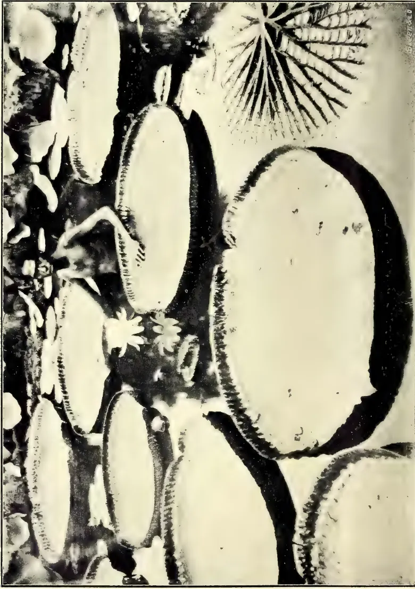
A black and white photograph showing a pond filled with several large, circular leaves of a giant water-lily (Victoria regia). The leaves are thick and have a distinct, slightly irregular edge. In the center of the pond, a few white water-lily flowers are in bloom. The background features a palm tree with its fronds reaching over the pond. The water surface is visible between the leaves. The overall scene is captured in a high-contrast, vintage style.VICTORIA REGIA: GIANT WATER-LILY IN PERADENIYA GARDENS.
Photo by H. F. Macmillan.
MAY 1908.]469Miscellaneous.giving rise in this way to other novelties, some of which may be useful. Then, again, any particular variation may or may not be inherited; and we can only tell whether it is capable of inheritance by actually breeding from it. If an immune strain happens to exist, we can usually combine its immunity with the useful qualities of quite different strains of the same plant.
Now, if any real advance is going to be made, you need to have a man constantly on the watch for novelties; and in this task he must have the assistance of cultivators, small and great. Just as you report any outbreak of disease to the Government Mycologist or Entomologist, as much for your neighbour's benefit as your own (at least, whatever the motive may be, that is the result), so I would have you report the appearance of any seedling or branch of any cultivated product, which, not being diseased, looks different from its neighbours. The novelty need not necessarily seem to be an improvement on the old form. A miserable sport may be useful, if it is distinctly different from the type. For by crossing we can probably break the type and get a whole series of new forms, some of which may quite possibly be useful. Anything new, then, should be reported to the expert on novelties. I fear that in the case of the slower growing products the results will come to gladden the hearts of a future generation, though even in these I can give you some practical hints which ought to bear fruit almost immediately. In the case of crops grown annually I hope we may look for some improvement within a comparatively small number of years. And I hope to be able to make some arrangement by which the person who first calls attention to a sport, or upon whose land it occurs, may have first choice of any valuable strain which may arise from it on the Government experimental ground.
R. H. LOCK.
It is proposed to follow up this paper with a series of others which will appear in the Tropical Agriculturist from time to time, and will deal in rather greater detail with certain of the points here raised.
By H. F. MACMILLAN.
This is one of the most remarkable productions of the vegetable kingdom. It is indigenous to tropical South America, chiefly Guiana, being found in marshes and slow waters, more especially in tributaries of the Amazon. This noble plant was first discovered early in the last century, the first record of it being in 1801. In 1835, M. D'Orbigny, the French traveller, wrote:—"I have found one of the most beautiful flowers that America can produce. The plant seems to belong to the family Nymphaeaceæ, and is certainly much allied to the Nuphar, but its dimensions are gigantic. The people of Guiana call it Irupé, deriving this name from the shape of its leaves, which resemble the broad dishes used in the country, or the lids of their large round baskets. A space, more than a mile broad and nearly a mile long, is covered with the large floating leaves, each of which has a raised edge two inches high. The foliage is smooth above and furrowed below with numberless regular compartments, formed by the projecting, thick, hollow nerves, the air in which keeps the leaf upon the surface of the water. Leaf-stalks, flower-stalks, and ribs of the leaves, are alike cellular and covered with long prickles. Amid this expanse of foliage rise the broad flowers, upwards of a foot across, and either white, pink, or purple; always double, and diffusing a delicious odour. The fruit, which succeeds these flowers, is spherical, and half the size, when ripe, of the human head, full of roundish farinaceous seeds, which give to the plant the name of Water-Maize (Maïs del Agua), for the Spaniards collect the seeds, roast and eat them. I was never weary of admiring this Colossus of the Vegetable Kingdom, and reluctantly persuaded my way the same evening to Corrientes, after collecting specimens of the flowers, fruits, and seeds."
Sir William Hooker, writing of the Victoria in the Botanical Magazine in 1847, said: "Seldom has any plant excited such attention in the botanical world; the interest being specially enhanced by the name it bears." But Sir William had not then seen it in flower, for not until 1849 did the Victoria Lily blossom in England. The first flower produced was presented to Her Majesty, Queen Victoria, in whose honour the plant had previously been named by Dr. Lindley. It was first introduced and
Miscellaneous.470[MAY 1908.successfully grown at Peradeniya in 1896, when during the time it was in flower it attracted a number of local visitors. The first seeds having been germinated by the writer by means of water kept constantly at a warm temperature over a lamp-stove, the plants were afterwards grown in the small lake in the Gardens, but here the water-tortoises from the river soon developed a taste for the succulent submerged stem, and it has therefore become necessary to confine the Victoria to a tank surrounded with a concrete wall. We at Peradeniya consequently wait with interest the result of the proposed experiment by Mr. Lewis, the Government Agent, to effectually dispel tortoises from the Kandy Lake. Besides this drawback, the climatic conditions at Peradeniya are not ideal for the Victoria, the temperature of the air and water being scarcely hot enough; hence the necessity of raising the first seedlings under artificial conditions.
In its natural state the Victoria is a perennial, existing for several years. It thrives in 3 to 4 feet of water with rich loose mud, and rapidly attains maturity. When in full vigour it bears in quick succession as many as 9 or 10 of its enormous leaves at a time. Each of the leaves measures from 5 to 6 feet in diameter, with an up-turned margin of about 3 inches. The upper surface is of a deep brilliant green, the under-side of a crimson tint and furnished with strongly developed veins which are remarkable for their intercellular air spaces, and form a regular and elegant network. The thick leaf-stalk is from 6 to 7 feet long and hollow in the centre, so that it can be extemporised into an effective siphon. The underside of the leaf, as well as the petiole and stalk of the flower, are covered with very sharp formidable spines, which, however, are not proof against tortoises. The peculiar formation of the under surface of the leaf (shown in the right-hand corner of the plate) imparts to it great buoyancy, rendering the mature leaf capable of bearing a considerable weight if evenly distributed. Children have sometimes been photographed on the leaves representing a weight of over 150 pounds; it has been recorded in America that one leaf sustained a weight of 250 lbs. The flowers are not less interesting than the leaves; when expanded a bloom measures from 12 to 15 inches in diameter, the numerous petals suggesting a plume of lovely white cock's feathers; at first pure white, it passes by successive shades, the second day, into a rosy hue. Only one flower on each plant opens at a time, and this is always at dusk. It exhales a strong pleasant odour, not unlike that of
a rich pineapple; this is distinctly perceptible as soon as the sepals show signs of bursting, and long before the flower is fully open. The bloom lasts but two days, or more correctly speaking, two nights and a day.
In conclusion, we have here a plant of rare beauty and interest. Apart from its value from a horticultural point of view, it is also capable of serving some practical purposes. The farinaceous seeds afford a nutritious article of food, called "Mais del Agua" in their native country; the enormous leaves which are capable of carrying a very considerable weight might possibly be put to some utilitarian purpose by the natives in light water-transport; whilst the long, flexible and tubular leaf-stalk can be extemporized into an excellent siphon or water conduit. The writer has once found these very effective in emptying a deep tank of water.
(Illustrated).
BY H. F. MACMILLAN.
The gootee mode of propagating plants has been practised in India from early times. It is adopted in the case of trees which are difficult to raise by layering or which seldom set seed, and also as a means of increasing any tree of special merit, or part of a tree (as a sport) exhibiting a variation which it is desirable to perpetuate. When other methods of propagation fail, the gootee is resorted to, and if carefully carried out it is usually successful. It is of special value in propagating fruit trees, for not only are the plants thus obtained true to kind, but they also come into bearing much earlier than plants raised from seed. The same is true of flowering trees, shrubs, climbers, &c., and for such as do not, from some cause or another produce seed, propagation by gootee is the best means of multiplying them.
To proceed with the gootee, select a firm healthy branch, with well-ripened wood, immediately under a leaf-bud or node; take off a small ring of bark, about one inch wide. To this apply a ball of clayey soil, holding it securely together with coir fibre, tow, or moss, and bandaging all firmly round the branch. A little above this hang a pot or chatty; through the hole in the bottom of the latter draw from within a piece of rope; a knot tied on the end of the rope should
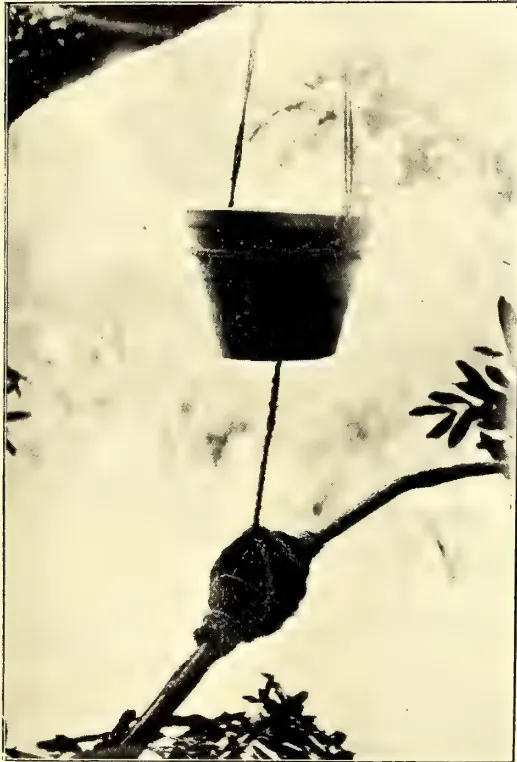
Photo by H. F. Macmillan.
GOOTTEE METHOD OF PROPAGATION.
This image is a scan of a blank page. The paper has a light beige or cream-colored tint. There are a few very small, dark specks scattered across the surface, which appear to be scanning artifacts or dust particles. No text, lines, or other markings are present on the page. MAY 1908.]471Miscellaneous.fit tightly against the hole of the vessel above. The rope, thus secured by its knotted end within the pot, is carried on at full stretch and coiled round the gootee. By this means the water, with which the pot is kept supplied, oozes slowly out, trickles down the rope and along the coil, and so distributes itself over the whole gootee. In from three to four months young roots should be seen protruding through the gootee, when the branch may be cut from the parent tree, and planted where it is intended for it to remain. The operation should be carried out in the wet weather, commencing when active growth in the tree begins.
The trouble with African rubbers. I. R. World, March 1905, p. 193.
Le caoutchouc et le service agronomique de l'Afrique occidentale française. Journ. d'Agr. Trop., May 1906, p. 147.
Les fraudes sur le caoutchouc dans l'Afrique occidentale française. Bull. Jard. Col. 1906, p. 455.
The industry in the Congo State: "T.A." Jan. 1905, p. 807.
Rubber in the Congo Free State do. Jan. 1907, p. 13.
Le Caoutchouc a la côte d'Ivoire. Bull. Jard. Col., Nov. 1906, p. 407.
Rubbers from Sierra Leone. Bull. Imp. Inst., IV., 29.
Rohkautschuksorten Ostafrikas. Der Pflanzner, 1906, p. 193.
Rubber in East Africa. "T.A." May 1907, p. 263.
The rubber industry in Madagascar. do, March 1907, p. 134.
Rubber in West Africa. "T.A." July 1907, p. 6.
Rubber in French West Africa. Agri. News, Aug. 1907, p. 251.
East African Rubber trees. I. R. Journ., Aug. 1907, p. 213.
African rubber. do. p. 265.
West African rubber do. July 1907, p. 160.
Ueber eine neue Kautschukführende Pflanzen (Ekanda) aus Westafrika. Tropenpf., Nov. 1907, p. 793.
The rubber industry of Angola. "T.A." Oct. 1907, p. 246.
Le caoutchouc en Afrique occidentale française. Bull. Jard. Col., 1907, p. 457.
Die Kautschuk-production in Mittelamerika, mit besonderer Berücksichtigung von Costarica. Koschny in Tropenpf. 4. 1904, p. 174.
Rubber in Bahia. "T.A." Sept. 1900, p. 182.
Indiarubber in Bolivia. do. p. 191.
The rubber industry of the Amazon valley. do. p. 229.
Foreign Office report on Amazonas. 1900.
Kautschuk-expedition von E. Poisson nach Süd-Amerika. Tropenpf. 4. 1900, p. 146.
Rubber in Bolivia. "T.A." April 1900, p. 665.
Henriques, Der Kautschuk und seine Quellen. Dresden, 1899.
Les gais caoutchoutifères de l'Amazonie. Journ. d'Agr. trop. 1906, p. 269.
Die Kautschukproduction Brasiliens und ihre mutmaszliche Zukunft. Bolle in Tropenpf. 1906, p. 435.
A new source of Amazon rubber (Sapium). Ind. Plg. and Gard., Sept. 1905, p. 603.
L'Hevea en Amazonie. Journ. d'Agr. trop. 1903, p. 232.
Die Gewinnung von Feingummi und Kautschuk in Brasilien. Bot. Centr. 93, p. 158.
Ule's expedition nach.....Amazon. Notizbl. Berlin, III, 1901, p. 109, 129.
Para rubber in the state of Amazonas. Straits Bull. I, p. 109.
Observations sur les arbres à caoutchouc de la region Amazonien. Huber in Rev. Cult. Col 1905, p. 97.
Les variétés du caoutchouc de Para. Journ. d'Agr. trop. 1902, p. 145.
L'Hevea sur le Rio Marcapata (Peru.) do. 1903, p. 110.
Rubber in Colombia. Trin. Bull. April 1903, p. 558.
Rubber in Panama. "T.A.", Sep. 1907, p. 55.
Rubber in Mexico. do.
Rubber in Ecuador. do. March 1907, p. 132.
Reintgen, Die Kautschuk-pflanzen. Beih. Z. Tropenpf. VI. 2, 1905.
Hemsley. American rubber plants, Kew Bull. 1907, p. 153.
Miscellaneous.472[MAY 1908.Indiarubber on the island of Cuba. Ind. World, May 1907, p. 237.
Brazil's export of rubber. do. July 1907, p. 304.
Government control of the Brazilian rubber trade. "T.A." July 1907, p. 5.
Rubber and Hardwood in Spanish Honduras. Agr. News, July, 1907, p. 219.
Consular reports on the rubber industry in South America. "T.A." Oct. 1907, p. 248.
Report on the Venezuelan rubber industry. "T.A." Jan. 1908, p. 2.
Kautschukgewinnung und Kautschukhandel in Bahia. Ule. Notizbl. Berlin V. I. reviewed in "T.A." April 1908, p. 298.
The native rubber trees of British Guiana. Journ. B. A., B. G., "T.A." April 1908, p. 301.
Henriques, R. der Kautschuk und seine Quellen Dresden 1899.
Note sur une liane à caoutchouc de l'Indo-Chine. Rev. Cult. Col. 1900, p. 437.
Caoutchouc en Getahpertja in Nederlandsch Indie. Meded. Buitenz. XXXIX.
Enumeration des vegetaux producteurs de caoutchouc et de getahpertja récoltées par le Dr. P. van Romburgh dans lesiles de Sumatra, Borneo, Riôuw, et Java. Bull. Buitenz. v. 1900.
Lianes à caoutchouc du Yenthé (Tonkin). Bull. Ec. Indoch. 1905, p. 515.
Native rubbers of the Malaya Peninsula. Malay Bull. 9, 1900.
Indigenous rubbers in India. Planting Opinion, 21, 5, 1904.
Rubbers of Urceola esculenta from Burma. Imp. Inst. Bull., 9, 1904, p. 156.
Rubber of Rhynchosia Wallichii from Burma. do. p. 159.
Rubber of Chonemorpha macrophylla from Burma. do. p. 160.
Rubber from Willughbeia edulis and Urceola esculenta in Burma. Agri. Ledg., Veg. Prod. Series 76, 1903.
Le caoutchouc de Laos : resultat de pilonnage des écorces. Bull. Ec. Indoch. 1901, p. 23.
L'exploitation des lianes à caoutchouc en forêt dans le nord de l'Annam. Rev. Cult. Col. 1901, p. 274.
Nomenclature des principales lianes à caoutchouc Bull. Ec. Indoch. 1901, p. 574.
Deux lianes à caoutchouc d'Indo-Chine. Rev. Cult. Col. 1902, p. 206.
Lianes à caoutchouc. Bull. Ec. Indoch. 1902, p. 91.
Méthodes d'exploitation des lianes à caoutchouc au Haut-Laos et en Annam. do. p. 281.
Le Xylinabaria Reynaudi, liane à caoutchouc du Tonkin. Rev. Cult. Col. 1902, p. 361.
Cryptostegia grandiflora rubber from India. Imp. Inst. Bull. 4, 1907, p. 371.
Climbers furnishing rubber. Ind. Merc. Dec. 1898, p. 797.
Les plantes à caoutchouc et à gutta dans les colonies françaises. Paris, 1898.
Herbet, Manuel de culture pratique et commerciale du caoutchouc. Paris, 1899.
Chevalier, Observations relative à quelques plantes à caoutchouc. Comptes Rendus 30. 10. 1905. Bot. Centr. 101, p. 230.
Lianen,-wurzel-, und Kräuterkautschuk. Der Pflanzen 1905, p. 145.
Almeidina und Wurzelkautschuk. Tropenpfl. 1904, p. 201.
Der neue Kautschukbaum Euphorbia elastica. Tropenpfl. 1906, p. 525.
Un Siphocampylus à Caoutchouc de l'Equateur. Rev. Cult. Col., July 1902, p. 5.
Braunt, Indiarubber, guttapercha, balata. London, 1900.
See Just's Jahresbericht.
Reintgen. Die Kautschuk-Pflanzen, eine wirtschafts-geographische Studie. Beih. Z. Tropenpfl. VI, 2, 1905.
Preuss. Ueber Ausnutzung und Anbau von Kautschuk-pflanzen in Kamerun. Tropenpfl. III, 1899.
Apropos de la cultivation des lianes caoutchoutifères au Congo. Le Mon. de Caout. March 1906, p. 363.
Kautschuk-kultur in Deutsch Ostafrika. Tropenpfl. 1906, p. 22.
Rubber in the Congo Free State, "T.A." Jan. 1907, p. 13.
MAY 1908.]473Miscellaneous.AMERICA.Cultivation du caoutchouc au Costa Rica. Rev. Cult. Col. VI. 1900, p. 216.
Rubber planting experiences in Nicaragua. "T.A." Sept. 1900, p. 177.
Kautschuk Pflanzungen in Mexico. Tropenpfl. 4, 1900, p. 82.
Prospects for rubber planting in the West Indies. Agr. News. 2. 6. 1906, p. 161.
Rubber planting in the West Indies. W. I. Bull. II. 100.
Rubber plantation in Guatemala. Str. Bull. 1902, p. 331.
Working rubber estates on the Amazon. Str. Bull. 1903, p. 99.
A glimpse of rubber planting in Costa Rica. I. R. World, Oct. 1905, p. 5.
Harris' notes on rubber-producing plants. Jam. Bull. 1906, p. 241.
Rubber in Mexico. "T.A." Sept. 1907, p. 55.
The rubber industry in Ecuador. do. March 1907, p. 132.
Rubber cultivation in Jamaica. Jam. Bull., 1908, p. 12.
Indiarubber cultivation in Brazil. "T.A." March 1908, p. 204 (from Tropenpfl. Dec. 1907.)
20TH-21ST APRIL, 1908.
Class 1. GARDENS.—The number of entries (3) in this class was disappointing. It might be of advantage on future occasions to extend the competition, making gardens within a radius of four or five miles of Nuwara Eliya eligible for prizes.
Mrs. W. O. Garth's garden was the only one entered for the best cropped and cultivated Market Garden in the Nuwara Eliya Board limits. This, however, was not considered worthy of the prize, apart from the fact that there was no competitors against it; only half the ground seemed to be cul-
tivated. For the best private Flower Garden there were two entries, Mrs. Wickwar being awarded first prize for a very pretty and well-kept garden, and Mrs. F. C. Loos, Jr., second prize, for also a tasty and well-stocked garden.
Class II. GARDEN PERENNIALS GROWN IN POTS, &c.—Though this class did not fill particularly well, the exhibits were on the whole creditable, and better than last year's. There was, however, nothing of special merit.
Class III. GARDEN ANNUALS GROWN IN POTS, &c.—Cinerarias and Petunias were specially good, and the other few exhibits shown were an improvement on last year's.
Class IV. FERNS AND ORCHIDS GROWN IN POTS, &c.—The ferns were not so good as they should have been, but Mr. Baillie Hamilton's orchids were excellent and showed the result of careful cultivation.
Class V. CUT FLOWERS.—This class was, as usual, the feature of the show, and considering the large amount of rain that had fallen during the previous two weeks the exhibits were very creditable. Roses made a fine display, but were hardly as good as last year's. Special mention should be made of the following:—Miss Loos' Geraniums, Antirrhinums and Poppies (single); Mr. T. Farr's Marguerite Carnations; Mr. N. C. Rolt's Phlox, Cactus Dahlias, African Marigolds, Callendulas, Dianthus, ("Indian Pinks") and general collections; also Mrs. Garth's well-staged general collection of flowers; Mr. R. Jackson's Tuberoses, and Mr. Neil G. Campbell's Sweet Peas.
Mr. John Joseph won Messrs. Sutton & Sons' prize (for a collection of flowers grown from Sutton's seed) with a well-grown collection. Much credit is due to the Station Master, Ohiya, for his fine exhibit of "Flowers, Flowering Plants in pots, &c.," which carried off the 1st prize of Rs. 30 offered by the Ceylon Government Railways.
The Silver Cup for the "Best grown and most meritorious Exhibit of any one variety of Flower in the Show" was awarded to Mr. Neil G. Campbell for some fine blooms of very large and beautiful white rose (Frau Karl Druschki).
The fruits, vegetables, and other classes seemed to us reasonably good, though probably not up to former records. We leave these to be reported upon by their respective judges.
Miscellaneous.474[MAY 1908.NUWARA ELIYA AGRI-HORTI-
CULTURAL SHOW :
20TH—21ST APRIL, 1908.
SIR,—I have the honour to submit my report on the Live Stock Section of the Agri-Horticultural Show held at Nuwara Eliya on the 20th and 21st instants.
2. There were few entries in the different classes—a list of which is annexed hereto for your information.
3. The Prize for the best English bull (A) was won by Mr. C. C. Wilson. It was really a good bull, which also carried the silver cup presented by the Hill Club.
4. In Class (B) there were only entries in section 8. Four splendid cows were shown. The first prize was won by Mr. R. Edley, while Mr. C. C. Wilson was highly commended.
5. There were two entries in (C). 1. Both good animals, but better animals could have been shown. I would suggest in this Class that there be two sections.
a. Cross-bred native cattle.
b. Pure native cattle.
Cross-bred animals are invariably included in this class to compete with the Sinhalese bulls. In some cases it is very difficult for an ordinary man to make out the difference between the two.
6. The prize for the best Indian bull was won by Sir Solomon Dias Bandaranayake. This was a splendid specimen, which even the Judges remarked. This animal being country born won the silver cup presented by the Grand Hotel for the best country-bred bull.
7. Four good cows were shown in Class E. 2. There was keen competition, and two prizes were given—1, best cow, and 2, best heifer.
8. Two buffaloes were shown in F. 1, but better animals could and ought to have been shown.
9. There were only two entries in H.—poor.
10. Pigs shown were good, and the first prize in I. 2 was won by Miss Babara Layard.
11. Out of the special prizes in G. only two were awarded.
(1.) Best Bull in the Show (English and Australian) was won by "Ronald" belonging to Mr. C. C. Wilson.
(2.) Best Indian Bull won by Sir Solomon Dias Bandaranayake.
I am, Sir,
Your Obedient Servant,
(Sgd.) P. CHAS. J. FERNANDO,
Stock Inspector, C.P.
AGRI-HORTICULTURAL SHOW NUWARA
ELIYA, 1908.
LIST OF ENTRIES AND AWARDS.
Class XII.
| Section. | No. of entries. | Winner. |
|---|---|---|
| A. 1 | 1 | C. C. Wilson |
| 2 to 4 | nil | |
| 5 | 1 | no award |
| B. 7 | nil | |
| 8 | 4 | 1, R. Edley 2, C. C. Wilson (highly commended) |
| 9 & 10 | nil | |
| C. 1 | 2 | D M. Jayawardene Sir S. D. Bandaranaike |
| 2 to 7 | nil | |
| 8 | 1 | Sir S. D. Bandaranaike |
| 9 to 10 | nil | |
| D. 1 | 1 | do |
| 2 & 3 | nil | |
| 4 | 1 | do |
| 5 to 7 | nil | |
| E. 1 | nil | |
| 2 | 4 | 1, best cow, R. Hood Wright 2, heifer, C. C. Wilson |
| 3 | 1 | no award |
| F. 1 | 2 | Alawatugoda R. M. |
| 2 to 6 | nil | |
| G.—Please see para 11 of report. | ||
| 1 & 2 | nil | |
| H. 3 | 1 | Abram Saibo |
| 4 | 1 | no award |
| I. 1. | nil | |
| 2 | 2 | Miss. Barbara Layard |
| 3 | 1 | no award |
| 4 | 2 | do |
| 5 | nil | do |
This Class ought to have been much better filled considering (1) that the Nuwara Eliya Show is open to the whole Island, (2) that there is generally such a large and fashionable attendance at it, and (3) that the prizes offered are good. Even the surrounding districts did not do justice to themselves. Up-country was, however, creditably represented by the Ratemahatmeya of one of the least of the divisions of the Province, viz., Walapane, and the Low-country by Sir Solomon Dias Bandaranaike. Excellent specimens of fine grains and pulses were to be seen, but native vegetables were of mediocre quality. Some good plantains were noticeable. It is hoped that at future Shows a special effort will be made to draw exhibits to this class.
C. DRIEBERG,
Secretary, C. A. S.
MAY 1908]475Miscellaneous.The question of the establishment of Agricultural Banks in these colonies is one which has often been discussed in various localities, more particularly in Jamaica. Information in regard to these useful institutions has frequently been given in the periodicals of the Imperial Department of Agriculture, and the subject has received attention at more than one Agricultural Conference.
A particularly valuable contribution, dealing with this question was the paper read before the West Indian Agricultural Conference held at Trinidad in 1905, by the Hon. Wm. Fawcett, Director of Public Gardens in Jamaica, which gave a clear review of the principal provisions of the 'Raiffeisen' system of co-operative loan banks, that have given such satisfactory results within recent years in Germany and Central Europe. Mr. Fawcett's paper, together with others dealing with the same subject, was reprinted under the title 'Information in regard to Agricultural Banks,' as No. 35 of the Pamphlet series of the Imperial Department of Agriculture.
There is no need to dwell at length upon the advantage of a society or institution by means of which a thrifty peasant proprietor or holder is enabled to obtain, at moderate interest, a small amount of capital for the development of his land on the security of the crops thereon. The value of these institutions is at once apparent. In every part of the West Indies there are small holders, willing to provide the necessary labour to work their land, but who occasionally, for various reasons, require the temporary need of a little extra capital. The ordinary banks do not lay themselves out to do business of this kind, and if the would-be borrower has recourse to a money lender, he is frequently charged an excessively high rate of interest, and the negotiation, instead of proving a means of assistance, often lands him in greater difficulties than before.
It is just such men as these that agricultural loan banks are designed to aid, and the value of such institutions has been so fully recognized in European countries that nearly 30,000 banks have been formed in different continental states on the 'Raiffeisen' co-operative system. The peculiar qualifications in virtue of which these associations are specially adapted to give aid just where it is needed, lies in the fact that under the Raiffeisen system, each bank confines its operations to a very limited area, and the managers are usually men with a
good knowledge of matters agricultural. It will be seen, therefore, that they are in a position to judge of the character of applicants for assistance, and also as to the sum which may judiciously be advanced. Sums lent are repayable in instalments with interest, at periods agreed upon.
The fundamental idea of the Raiffeisen system is that the members of the bank join together to pledge their common credit for the security of money deposited with them on interest, which is afterwards disposed of among themselves, or advanced to applicants at slightly increased interest, so as to cover expenses. The money must of course be applied to agricultural purposes. A primary feature of these associations is the unlimited liability of every member. As a result the greatest care is exercised in electing trustworthy men only, since the other members know they will have to meet any default caused by one of their number.
A Committee of officials is elected to carry out executive work, but none of these are paid. Further, there is no distribution of dividends, all the profits being put towards the formation of a reserve fund. There is also a Council of Supervision, to which is entrusted the task of supervising and checking the Committee, while the Council themselves are subject to check by the whole mass of members.
In the West Indies, so far, little has been done towards the establishment of agricultural banks, but one or two were started on a small scale in Manchester parish, Jamaica, some years ago, through the efforts of local branches of the Agricultural Society. The necessity of some agency, by means of which peasant proprietors might be enabled to obtain temporary assistance in time of need, was brought prominently to the front as a result of the devastation caused on the lands of small proprietors by the hurricane of 1903.
From some cause or another, however, nearly all of the Agricultural Banks mentioned as having been established in Jamaica have ceased to exist, and at present only two institutions, the Christiana People's Co-operative Bank, Limited, and the Trinity Ville Bank, Limited, are carrying on operations in the island. These operations are, it is true, on a modest scale only at present, but the banks are undoubtedly doing good work and making satisfactory progress. The Christiana Bank has now a sum of £60 to its credit, and this sum is steadily increasing. In a paper prepared for the Agricultural Conference of 1907, by the Rev. W. Turner, and published in the
59 Miscellaneous.476[MAY 1908.West Indian Bulletin (Vol. VIII, No 3), a full account of the system of working of this Bank is given.
At the recent Agricultural Conference, allusion was made to the Barbados Sugar Industry Agricultural Bank. This was established about a year ago, in order to carry out the administration of the free grant of £80,000 made in aid of the sugar industry of the island by the Imperial Parliament. The Directorate consists of the Colonial Secretary (Chairman), one member elected by the Legislative Council, four members elected by the House of Assembly, and one by the Agricultural Society. Loans, which can only be expended in connection with the cultivation and management of the estate (except with the express permission of the Directors), are made to planters at 6 per cent. interest on the security of the growing crops.
Although the fund managed by this Bank was originally granted 'in aid of the sugar industry,' yet planters whose chief crop may be cotton, are not debarred from obtaining assistance from the Bank, provided they keep within the letter of the law by planting some sugarcane.
In this connection, too, it may be mentioned that, in continuance of previous efforts in the same direction, an Act (No. 4 of 1907) to regulate advances in aid of the cotton industry was brought into force in the Leeward Islands during the past year. Its operations have been confined chiefly to Montserrat, Nevis, and Anguilla. Advances are made to large and small estates, but in most cases the borrowers are persons of small means.
Considerable interest has lately been aroused in Trinidad as the result of an announcement by Sir Henry Jackson, that he contemplates to lay before the Legislative Council a scheme for the establishment of a Government Agricultural Loan Bank. Some years ago a People's Bank, as it was styled, was established at Trinidad for the benefit of small holders and occupiers of land, and for a short time it did good work. Unfortunately, however, it fell through, but its temporary existence demonstrated the real necessity of some institution through which the peasant proprietors of the community might obtain assistance without being obliged to resort to money lenders. The announcement made by the Governor of Trinidad is apparently very acceptable to those in the colony, who have continued to urge the establishment of some such means of agricultural credit.
The presumption that the scheme to be introduced by Sir Henry Jackson will be under Government control, is considered to be the best guarantee of its future success, for, unfortunately, the co-operative spirit does not at present seem to be sufficiently strong in these colonies to allow of the establishment of co-operative banks on the Raiffeisen system.
An Agricultural Bank, started under Government auspices at Trinidad, will be watched with considerable interest in the neighbouring colonies, and its success would prove a starting point for the establishment of similar institutions in other parts of the West Indies, and in British Guiana.
It may be mentioned that the question of Agricultural Banks has occasionally come up for discussion in British Guiana, where, owing to the large number of small rice growers in the colony, institutions of this nature should prove especially helpful. With a view to meeting the requirements of these rice growers, it has been suggested that arrangements for advances might be made on the lines of the cotton loans in the Leeward Islands, or that efforts should be made to start co-operative loan banks on the lines of the one at present working in Jamaica.—Agricultural News, Vol. VII, No. 152, February 22, 1908.
BY C. DRIEBERG.
M. G.—Why are you thinking of introducing new nitrogen plants when we have so many indigenous and naturalized genera, such as Crotalaria, Indigofera, Mucuna, Vigna, Tephrosia, Desmodium, &c., many of them weeds? In the same way we have as leguminous shade trees Sesbania, Cajanus, Erythrina, Pongamia, &c. What we want is a careful study and report on such plants as are likely to serve the "planter" and cultivator generally for green manuring. Even the famous Cow-pea of America, and velvet-bean of Florida have been apparently with us always, though unrecognised under their native names of li-me and wauduru-me. We are too apt to look abroad, and neglect the resources at hand.
F. D.—The condition you describe is known as "reh" in India. Fortunately it is not so common here as there, the possibility of its removal has been a great problem. The means of ridding soils of alkaline salts came up at meetings of the Tangalla and Hambantota Branch Agricultural Societies in April
MAY 1908.]477Miscellaneous.when the Organizing Vice-President and Secretary were present, and, as Dr. Willis explained, the only likely means of remedying the defect is by looking to the proper drainage of the land. Irrigation without proper drainage is bound to be prejudicial to a soil. By washing out the salts that have accumulated through evaporation and giving the land a short rest from cultivation, there is a likelihood of improvement following. The subject will, however, be fully thrashed out by the Acting Director of Irrigation at an early meeting of the Board.
O. P. (India).—In Ceylon, Mauritius or water grass (Panicum muticum) is the stock green fodder for stall-fed cattle in the low-country. It is true it contains a large proportion of water, but so do turnips and swedes (which this grass may be said to replace locally) fed to dairy cattle in the West. Guinea grass (P. maximum) grows freely at higher elevations. Paspalum dilatatum is not suitable to the low-country, and in the dry months is kept alive with the greatest difficulty. Reana luxuriansis has never been seriously cultivated for fodder. Hay made from wild Andropogon grasses (as in Bombay) and Sorghum and Pennisetum (as in the Deccan) is not known in the Island, but paddy straw is given to working bullocks to whom also natural grasses (most commonly Panicum repens) are cut and fed. Ensilage has not proved a success in Ceylon.
F. DE. M.—West Indian arrowroot is the product of Maranta arundinacea, the plant the Sinhalese called Hulankiriya, and is the ordinary arrowroot of the grocery stores. Queensland arrowroot is prepared from Canna edulis, or "Edible Canna" as it is commonly called—a species of "Indian shot" (Sin. butsarana). The former has for a long time been cultivated in the Cotta district, and excellent arrowroot-flour was prepared on a fairly large scale some years ago in the Panadura (Bandarama) district by Muhandiram J. A. G. Rodrigo, acting Manager of the Government Dairy. The cultivation of Queensland arrowroot seems to be spreading in the Island. The flour, if properly prepared, is as good if not better, than ordinary arrowroot. There should be no difficulty in getting plants or tubers of either for planting a large area.
G. S.—The tree you refer as being used for shade in the Government Stock Garden is Gliricidia maculata, of which a few seeds came to the School of Agriculture some twenty years ago from
Central America as an exchange, and from the original trees established in the grounds cuttings and seeds have gone out directly, and through the Royal Botanic Gardens, to all parts of the Island. The tree has a showy blossom which is put out in February-March. It is a good low shade but requires training, and the roots are well furnished with nodules. In some parts it is becoming a common shade and fence plant since it grows so readily from cuttings.
Mr. Frederick Lewis is good enough to furnish the following valuable instructions in reply to an enquiry from a correspondent as to the best way of raising Lunumidella and Teak seeds:—"The best way to germinate Lunumidella seed is first to prepare beds as if for planting tea, taking care to have the soil well freed of stones, wood, roots, &c. Next plant the seed after it has had its fleshy coat removed, in little holes made by the finger or an oval section peg, and lay each seed on its side. Cover with well-sifted soil to a depth of half an inch, and cover the whole bed with well dried straw to a depth of 4 inches and set fire to the straw. As soon as the fire is out, water freely at once, and water once a day afterwards till germination begins, and then shade with light shading. The proportion of germination is very variable and ranges from 10 to 30 %, as it is not easy to regulate the heat so as not to kill the embryo. Germination too is not regular.
TEAK.—Remove the papery envelope, and first see if the seed has not been drilled by insects. If perfect, first boil in water of 120° F. temperature for 20 minutes, then soak between wet sacks for 48 hours and plant in beds which should have about 30 % of sand well mixed with rich loam. Light shade is wanted for Teak as it will not stand direct exposure. Teak seed is generally about 40 % defective, so care should be taken to select heavy seed.
The 40th meeting of the Board of Agriculture was held at the Council Chamber on Monday, the 4th May, 1908.
The Hon'ble Mr. H. C. Nicolle, Colonial Treasurer, presided. Present:—Sir Solomon Dias Bandaranaike, the Hon'ble Messrs. H. L. Crawford, S. C. Obeyesekere, J. Ferguson, A. Kanagasabai, Dr. J. C. Willis, Dr. H. M. Fernando, Messrs. J. Harward, P. Arunachalam,
478[MAY 1908.H. T. S. Ward, R. H. Lock, R. B. Strickland, W. A. de Silva and C. Drieberg (Secretary).
As Visitors: Messrs. H. P. Rudd and Alex. Perera,
(1.) Minutes of the previous meeting, held on 9th March, were read and confirmed.
(2.) Progress Report No. 40 was adopted.
(3.) Dr. Willis moved that a sum of Rs. 150 be granted, on the security of the Government Agent of Uva, as a loan to the Badulla Branch Society for the purpose of encouraging coconut cultivation in certain villages of Uva, the loan to be paid back in two years.
Mr. Ward seconded, and the motion was carried.
(4.) The Hon'ble Mr. Kanagasabai moved that the following gentlemen be asked to form a Committee to consider what action, if any, this Society should take in the improvement of the local tobacco industry, and to submit an estimate of the cost of carrying out such measures as it may recommend:—Dr. Willis, The Government Agent, Northern Province, Messrs. C. J. C. Mee, Edward Cowan, M. Kelway Bamber, R. H. Lock and the mover.
The Hon'ble Mr. Ferguson seconded, and the motion was carried.
(5.) The Hon'ble Mr. Arunachalam moved that the following gentlemen be asked to form a Committee to advise this Society as to what measures, if any, it should take to provide (1) for the introduction of agricultural instruction into the curriculum of our rural schools, and (2) for the extension and development of school gardening, and its inclusion in the educational code as a subject for grants and result payments:—Mr. J. Harward, Dr. Willis, Sir Solomon Dias Bandaranaike, The Hon. Mr. S. C. Obeyesekere, Dr. H. M. Fernando, Mr. C. Drieberg and the mover.
The Hon'ble Mr. Obeyesekere seconded, and the motion was carried.
(6.) Mr. R. H. Lock, Assistant Director of the Royal Botanic Gardens, read a paper entitled "Plant Breeding and Tropical Agriculture," for which he was accorded a hearty vote of thanks moved by the Hon'ble Mr. Ferguson.
Dr. Willis supplemented the paper with explanatory remarks, and expressed a desire that any discovery in the way of a plant "sport" should be submitted to Peradeniya for examination.
4th May, 1908.
Membership.—The following members joined the Society since the last meeting held on March 9, (no meeting was held in April):—F. Lushington, G. Weidman Groff, H. F. C. Phillips, A. M. Ballon, B. S. Narayanaswami Iyer, the Rev. Percy T. Cash, E. W. Keith, R. H. Villiers, J. G. F. Marshall, A. L. R. Aserrappa, R. Boustead, T. D. Mack, Dr. C. Heynsbergh.
Board.—The following new members have been elected on the re-constituted Board:—P. Arunachalam, F. H. Layard, Jas. Van Langenberg, R. H. Lock, H. Inglis, J. D. Vanderstraaten, Jas. Peiris, L. W. A. de Soysa, Tudor Rajapakse, W. Chas. Whitham, D. J. Jayatilleke, C. M. Sinnayah Mappana, Mudaliyar, C. E. de Vos, Dr. E. Ludovici, J. W. Kanagasabai, G. H. Kanagasabey, Major Molesworth, A. W. Baven, Jacob de Mel, L. B. Bughalanda, R. M. H. Dambawinne, R. M., P. D. G. Clark, E. A. Elapatha, and M. Stevenson, C.C.S.
Inspection.—The Organizing Vice-President and the Secretary made tours of inspection in the Province of Uva and the Tangalla and Hambantota Districts—holding meetings of local branches, inspecting school gardens, and generally studying the agriculture of the areas visited. In Uva meetings were held at Welimada and Badulla, and the school gardens at Medawella, Welimada, Palugama, Etampitiya, Dikwella, Passara, and Kambulwella inspected. In the Southern Province meetings were held at Tangalla and Hambantota, and Nakulugama, Ranna, and Tissamaharama schools visited.
Among the more important points which came up for discussion during the tour and are receiving the attention of the Society, are:—A suitable paddy for fields at higher elevations. Facilities for marketing vegetable produce grown in the villages about Welimada. Remedial measures for preventing the accumulation of alkaline salts in paddy fields. The introduction of labour-saving implements for cultivating lands in localities where field workers are scarce.
The Wellaboda Pattu (Galle) Branch held its general meeting at Ambalangoda on April 4. The business conducted included the following resolutions:—(a) that a Cattle and Vegetable Show be held in December next at Ambalangoda; (b) that three cash prizes and three certificates be awarded on the day of the Show to the six best vegetable gardens in the pattu, prizes being also offered for transplanted paddy fields; (c) that a
MAY 1908.]479supply of vegetable seeds be obtained and distributed among villagers. A resolution was also adopted to the effect that the Branch Society should approach Government with a view to obtaining a sufficient extent of land for a pasture ground for cattle, and that the parent society be asked to assist by contributing towards the cost of wire-fencing the pasture land.
The Wannu Hatpattu Branch Society held a meeting on March 14, when the following progress report was submitted:—Tobacco cultivation is on the increase, and standing crops give promise of a good harvest; the Egyptian and Sea Island cotton seed supplied by the parent society was widely distributed. The cotton plantations of 1906 are carrying their second crops now, and the chenas opened out in August-September last are doing well. The Chairman reports that a new variety of paddy known as Dik-vi, lately introduced from Anuradhapura District, is gaining popularity and that the yield has been very encouraging. It was advised that members should endeavour to introduce this variety into every division. A notable feature in this variety is that it has been proved to be practically immune from the attack of the fly which generally damages paddy.
Agri-Horticultural Shows.—The Nuwara Eliya Show was held on April 20 and 21, and was attended by the Organizing Vice-President and the Secretary. As usual the show of flowers was of a high order. Among the exotic vegetables, the prize cabbage-lettuces surpassed anything previously exhibited in this line. The cattle section was not well filled. Among native products the exhibits were of good quality but disappointing in quantity. A few samples of American dent corn from Walapana were in evidence, as a result of a distribution of this seed by the Society. Fruits were fairly well represented.
The Jaffna Branch, at a meeting held on March 16, decided to hold an Agri-Horticultural and Industrial Show in Jaffna in June next year.
A proposal has been made to hold a suburban show near Colombo, and negotiations are in progress with the Hon. the Government Agent, Western Province, to have it at Dalugama, which has been suggested as a good centre, where a successful show was held several years ago. Dalugama is very accessible, being about a mile from the Kelaniya Railway Station.
The Hon. the Government Agent, Central Province, reports that the Rate-
mahatmayas of Udunuwara, Yatinuwara, Harispattu, Tumpane, and Pata Hewaheta have proposed to hold village shows, and that they have been asked to fix a meeting for an early date to settle details.
The Telijjawila Branch has decided on holding a Fair in June this year, when the distribution of prizes for vegetable gardens (judged some time ago) will take place.
The Government Agent, North-Western Province, is arranging to hold village shows at three centres in the North-Western Province, viz., Balalla, Pilessa, and Kuliyapitiya. These shows will probably be held in June.
The Government Agent, Southern Province, held a meeting on April 9 with a view to make arrangements for holding a show at Galle this year. It was, however, decided to fix the show for May next year.
A show is also likely to be held next year in Badulla.
Fruit Culture.—Mr. N. Wickremeratne, Agricultural Instructor, reporting on his visit to Telijawila, says:—I visited the Telijawila Fruit Garden which is well kept. The plants are growing well, indicating that care and attention have been bestowed on them. The gardens started at the same time by the headmen are also doing well, and it is expected that in a few years' time a good local fruit supply in the korale could be relied on.
The Dampella School Fruit garden has lost some of the plants put down last year owing to adverse weather, and, at the request of the Mudaliyar, arrangements are being made to furnish a fresh supply from the Government Stock Garden to fill vacancies.
Paddy.—Mr. V. Caspillai, of Jaffna, writing on March 25, reports on his experiments with Indian paddy as follows:—“The 20 measures of the Indian paddy called Kawetta Sampa you sent me in September last was sown in a field of 10 lachams (equal to about five-twelfths of an acre). As the paddy was said to be 5 months' variety I sowed it on low land, as I did with other paddy of similar age. The whole area of cultivation in the locality consists of about 40 acres, divided into about 85 beds, and I found that the plants of this paddy grew much more luxuriantly than others in the rest of the 40 acres. But when the rain set in and the field began to be flooded the growth of Kowetta Sampa seemed to be arrested, and so, though from the luxuriant growth at the outset I expected to realize at least 15 bushels, I got only 8 bushels. It would appear that
MAY 1908.]480this variety will do well here, provided it be sown on lands that are not very low. The crop was taken in 4 months. I intend to sow a large extent next time (September) and to distribute the paddy to other cultivators here, as I have 8 bushels of it, and it is my belief that with the experience I gained this year and with the seed more acclimatized I will be able to raise a bigger crop next year."
Mr. D. B. Perera, Vidane Arachchi, Milwatta, Miragama, in forwarding samples of several varieties of paddy grown in his fields, reports as follows:—
"I may mention that Japan "Kiushu" paddy which you sent me last July gave a good return."
Arcanut Husk Fibre.—A small quantity of fibre extracted from the husk of the arecanut (Area catechu) was forwarded to Professor Dunstan of the Imperial Institute, in January, for favour of report on its commercial possibilities. The Director of the Imperial Institute has furnished the following report thereon:—
"The sample consisted of about one ounce of light yellowish-brown fibre, which was harsh and lacking in resiliency. It was of poor strength and generally from 1 to 2 inches in length. Two forms of fibre were found to be present in the sample, one being coarse and somewhat resembling coir, whilst the other was much finer and rather woolly. The diameter of the coarse fibre was 0.006 to 0.016 inch, and that of the fine fibre 0.0009 to 0.0023 inch.
A chemical examination of the material gave the following results:—Moisture 8.1 per cent., Cellulose (calculated on dried material) 55.0 per cent. (approximately).
Samples of the fibre have been submitted to a number of manufacturers in order to ascertain whether any use could be suggested for it. The general opinion is that the fibre is too short and weak, too irregular in diameter, and deficient in resiliency for employment as a substitute for coir. It might, however, be utilised for the manufacture of paper, for which purpose its probable value would be about £3 to £5 per ton in this country. The fibre was regarded by one firm as of no value for upholstery, owing to its lack of resiliency, but another firm thought that it might possibly find a market for this purpose. The best way of ascertaining the commercial possibilities of this fibre would be to forward a trial consignment of several hundred weights to the Imperial Institute, so that large samples could be submitted to manufacturers for technical trials."
Arrangements are now being made to forward a trial consignment of a few hundred weights.
Grape Fruit Plants.—The Superintendent of School Gardens has fifty grape fruit plants to give away to members in order of application—two to each.
Pililla Grass.—A small consignment of this grass is expected shortly from Manila. It is said to possess an excellent fibre for the manufacture of hats, which if properly woven, is believed to be almost as good as the Panama. Mr. T. H. Stephens, formerly of Ceylon, writing on the subject, says:—"The Filipinos make excellent hats from Pililla grass and it is quite an important industry."
Jute Cultivation.—Mr. C. A. Valoopilai, of Anuradhapura, is trying jute cultivation in that district. He has been supplied with 20 lbs. of seed procured from Calcutta, which he is growing as a rotation crop in his paddy lands.
Ground-nuts.—Senegal ground-nuts are available to members at 25 cents per lb. Early application should be made. Particulars regarding this variety were given in last Progress Report.
Nitro Bacterine.—A small quantity of the much advertised Nitro-Bacterine is expected shortly for trial. The cultures at present available are for leguminous plants only; but it is stated that cultures for cereal crops will be available before long.
Queensland Citrus Fruits.—The Department of Agriculture, Brisbane, has applied for information as to a possible market in Ceylon for citrus fruits of good quality. The Queensland citrus fruit season lasts from March to June. Information has been gathered from those likely to handle the fruit, and a trial consignment will probably be received shortly.
Cotton and British Cotton-growing Association.—With the development of the cotton industry in Ceylon, cotton growers will be glad to hear that Messrs. Nieland and Wilson, 2, Baillie Street, have been appointed the Agents of the British Cotton-growing Association for Ceylon. Messrs. Nieland and Wilson are going to put down a proper ginning factory in Colombo, which will enable them to deal with all the cotton grown in the Island. The factory will contain an oil engine to work six gins. There will also be two presses and room in the building to erect from 18 to 20 gins if future development call for them. As Agents of the British Cotton-growing Association they are open to gin, bale, and ship any quantity of cotton on account of the growers, ensuring the grower getting the best possible return
MAY 1908.]481for his crop. If preferred, they are prepared to buy outright. Cotton seed will also be bought or shipped on account of the grower to England.
Mr. M. Suppramaniam, Broker, reports that his mill has purchased over 20 tons of locally produced cotton during the past six months, at prices ranging from 8 to 13 cents for the unginned cotton. A good many offers have been declined owing to the small size of the seed which makes ginning difficult. Just now a lot of 4 tons cannot be accepted for this reason.
Seed and Plant Distribution.—About 4,500 packets of vegetable seeds received from England about the middle of the month were very expeditiously distributed by the staff of the Government Stock Garden. Several varieties of plants from the Stock Garden were also distributed among applicants who are members of the Board.
The grafted orange plants short-received last year are expected to arrive in a day or two, according to advice received from Bangalore, and will be distributed to members who ordered them.
Buckwheat Seed.—A small supply of buckwheat seed has been received from Japan through the courtesy of Mr. S. Kikkawa of the Agricultural College, Imperial University, Tokio.
Zanzibar Chilli.—Out of the supply of Zanzibar chilli seed obtained from the Department of Agriculture, Zanzibar, in March, a small balance is still available.
Garden Syringes.—Metal syringes suitable for spraying plants with insecticides and fungicides can be supplied to members at Rs. 3 each.
Coconut Stem Disease.—Eight Inspectors have been appointed under the Botanic Department for dealing with this disease. From reports received the spread of the pest appears to be kept well in check.
Mr. C. H. Wijayemanne, of Quarry House, Kalutara North, claims to be able to cure the coconut stem bleeding disease by the application of a secret preparation, and the Government Mycologist has given him the opportunity of demonstrating his cure.
Castration of Cattle.—The Government Veterinary Surgeon writing on April 4, reports:—
“Forty-one head of cattle belonging to thirty-four owners were operated upon during last month in the Northern Province by the officers of this department, at two centres, one man being taught the operation. Four more demonstrations will shortly be given in the Northern Province. Ten demonstrations have been arranged for in the North-Western Province and are now being carried out.
Arrangements are also being made to hold demonstrations in most of the other Provinces, in the district of Mannar, and at eight centres in Hambantota district. The Assistant Government Agent of Mannar desires that the operation should be extended to the ponies there, as there is a large number of them in the district, and the breed could be much improved under a judicious system of castration.”
Writing on the subject, in continuation, the Government Veterinary Surgeon reports on the work done by trained operators as follows:—“In addition to the 781 head of cattle operated upon by the officers of this Department during the last year, 460 cattle were castrated by the trained operators in the North-Western Province. Of these 302 were operated upon in Dewamedhi hatpattu, 85 in Katugampola hatpattu, and 73 in Wanni hatpattu. No figures have been received as to work done by the trained operators in the other Provinces.”
To the above has to be added 19 castrated in Chilaw district, which brings the total number of cattle castrated by trained men in 1907 to 479.
Nutmegs.—Mr. Fred. Lewis, writing on April 3, reports an apparent disease in nutmeg trees. The disease attacked old trees, commencing from the top branches, resulting in change of colour in foliage from a dark green to a pale sickly yellow, till finally the leaves fall off, exposing nothing but twigs and branchlets. Later on the twigs die backward till ultimately the whole tree goes. He suggests that it may be identical with the disease which destroyed nutmeg trees in Penang some years ago, and thinks it desirable that some notice should be taken in time. The matter has been referred to the Government Mycologist.
Foreign Tobacco.—Sample leaves of Alcasian tobacco raised from seed supplied by Messrs. Freudenberg & Co., have been received from Welimada. Further samples from other centres where this tobacco was grown are awaited. Mr. Edward Cavan does not consider the curing of the Uva sample satisfactory.
Water Purification.—The July number of the “T.A. and Magazine” last year, pages 74-77, contained a paper on “Water Purification,” recommending the use of alumino-ferric for the purpose. The Secretary, Trincomalee Branch, referring to an experiment with the purifier, says:—“The Vanniya of Koddiyar reports that after the use of the alumino-ferric the water turned clearer than it was before, but the taste remained the same.”
C. DRIERBERG, Secretary,
May 4th, 1908.
(From Lewis & Peat's Monthly Price Current, London, 15th April, 1908.)
| QUALITY. | QUOTATIONS. | ||
|---|---|---|---|
| ALoes, Socotrine | cwt. | Fair to fine | 85s a 90s |
| Zanzibar & Hepatic | „ | Common to good | 20s a 70s |
| ARROWROOT (Natal) | lb. | Fair to fine | 27d a 4d |
| BEES' WAX, | cwt. | ||
| Zanzibar Yellow | „ | Slight y drossy to fair | £6 10s a £6 15s |
| Bombay bleached | „ | Fair to good | £7 12s 6d a £7 15s |
| „ unbleached | „ | Dark to good genuine | £5 15s a £6 10s |
| Madagascar | „ | Dark to good palish | £6 1s a £6 17s 6d |
| CAMPHOR, Formosa | „ | Crude | nom. |
| China | „ | Fair average quality | 16s |
| CARDAMOMS. Malabar | lb. | Good to fine bold | 1s 8d a 1s 10d |
| Middling lean | 1s 3d a 1s 5d | ||
| Tellicherry | Good to fine bold | 1s 9d a 2s 3d | |
| Brownish | 1s 4d a 1s 6d | ||
| Mangalore | „ | Med brown to fair bold | 1s 6d a 2s 3d nom |
| Ceylon. - Mysore | „ | Small fair to fine plump | 1s 2d a 3s 3d |
| Malabar | „ | Fair to good | 1s 3d a 1s 4d |
| Seeds | 1s 6d a 1s 8d | ||
| Long Wild | „ | Shelly to good | 6d a 1s 6d |
| CASTOR OIL, Calcutta | „ | 1sts and 2nds | 3d a 4d |
| CHILLIES, Zanzibar | cwt. | Dull to fine bright | 17s 6d a 20s |
| CINCHONA BARK. - lb. | |||
| Ceylon | Crown, Renewed | 37d a 7d | |
| Org. Stem | 2d a 6d | ||
| Red Org. Stem | 17d a 47d | ||
| Renewed | 3d a 57d | ||
| Root | 17d a 4d | ||
| CINNAMON, Ceylon | 1sts | Common to fine quill | 8d a 1s 3d |
| per lb. | 2nds | „ „ | 77d a 1s 2d |
| 3rds | „ „ | 6d a 1s | |
| 4ths | „ „ | 57d a 87d | |
| Chips, &c. | Fair to fine bold | 27d a 37d | |
| CLOVES, Penang | lb. | Dull to fine bright bold | 97 a 1s |
| Amboyna | .. | Dull to fine | 77d a 8d |
| Ceylon | .. | „ „ | 7d a 8d |
| Zanzibar | .. | Fair and fine bright | 5d a 57d |
| Stems | .. | Fair | 2d |
| COFFEE | |||
| Ceylon Plantation | „ | Bold to fine | 110s a 116s |
| Medium to good | 80s a 100s | ||
| Native | Good ordinary | nominal | |
| Liberian | „ | Fair to bold | 48s a 54s |
| COCOA, Ceylon Plant. | „ | Special Marks | 88s a 92s 6d |
| Red to good | 78s a 85s | ||
| Native Estate | „ | Ordinary to red | 65s a 75s |
| COLOMBO ROOT | „ | Middling to good | 11s a 15s |
| COTTON SEEDS, sift. cwt. | „ | Dull to fair | 3 s a 35s nom. |
| GUTCH | „ | Fair to fine dry | 2 s a 25s |
| GINGER, Bengal, rough, | „ | Fair | 30s |
| Calicut, Cut A | „ | Small to fine bold | 72s 6d a 85s |
| B & C | „ | Small and medium | 50s a 65s |
| Cochin Rough | „ | Common to fine bold | 35s a 38s |
| Small and D's | 33s a 35s | ||
| Japan | „ | Unsplit | 30s |
| GUM AMMONIACUM, | „ | Sm. blocky to fair clean | 25s a 60s |
| ANIMI, Zanzibar, | „ | Pale and amber, str. sits. | £16 a £18 |
| „ „ little red | £13 a £15 | ||
| Bean and Pea size ditto | 72s 6d a £13 | ||
| Fair to good red sorts | £9 a £12 | ||
| Med. & bold glassy sorts | £6 10s a £7 10s | ||
| Madagascar | „ | Fair to good palish | £4 a £8 10s |
| „ „ red | £4 a £7 10s | ||
| ARABIC E. I. & Aden | „ | Ordinary to good pale | 25s a 32s 6d |
| Turkey sorts | „ | 32s 6d a 50s | |
| Ghatti | „ | Sorts to fine pale | 17s a 4 s 6d |
| Kurrachee | „ | Reddish to good pale | 20s a 30s nom. |
| Madras | „ | Dark to fine pale | 15s a 25s |
| ASSAFETIDA | „ | Clean fr. to gd. almonds | 35s a 10 s |
| com. stony to good block | 5s a 75s | ||
| KINO | „ | Fair to fine bright | d a 1s |
| MYRRH, picked | „ | Fair to fine pale | £5 a £6 |
| Aden sorts | „ | Middling to good | 60s a 75s |
| OLIBANUM, drop | „ | Good to fine white | 45s a 55s |
| Middling to fair | 30s a 40s | ||
| pickings | „ | Low to good pale | 10s a 20s |
| siftings | „ | Slightly foul to fine | 11s a 15s |
| INDIA RUBBER lb. | Fine Para bis. & sheets | 3s 5d a 3s 6d | |
| Ceylon, Straits, | { | „ Ceara „ „ | 3s 5d a 3s 6d |
| Malay Straits, etc. | Crepe ordinary to fine.. | 3s 5d a 3s 6d | |
| Fine Block „ „ | 3s d | ||
| Scrap fair to fine | 2s 3d a 2s 6d | ||
| Assam | Plantation | 2s, 6d nom. | |
| Rangoon | Fair II to good red No.1 | 2s a 2s 6d nom. | |
| „ „ | 2s 2d a 2s 4d |
QUALITY.
QUOTATIONS.
INDIARUBBER. (Contd.)
Borneo
Java
Penang
Mozambique
Nyassaland
Madagascar
New Guinea
INDIGO, E.I. Bengal
MACE, Bombay & Penang
per lb.
Java
MYRABOLANES, cwt
Madras
Bombay
"
Bengal
NUTMEGS— lb.
Bombay & Penang
NUTS, ARECA cwt.
NUX VOMICA, Cochin
per cwt. Bengal
Madras
OIL OF ANISEED
CASSIA
LEMONGRASS
NUTMEG
CINNAMON
CITRONELLE
ORCHELLA WEED—cwt
Ceylon
Zanzibar.
Common to good
Good to fine red
Low white to prime red
Fair to fine red ball
Sausage, fair to good
Fair to fine ball
Fr to fine pinky & white
Majunga & blk coated
Niggers, low to good
Ordinary to fine ball
Shipping mid to gd violet
Consuming mid. to gd.
Ordinary to middling
Oudee Middling to fine
Mid. to good Kurpah
Low to ordinary
Mid. to fine Madras
Pale reddish to fine
Ordinary to fair
" " good pale
6d a 2s 2d
1s 9d a 2s 3d
1s 4d a 2s 3d
2s 6d a 3s
2s 6d a 3s
2s da 2s 4d
2s 1d a 2s 2d
1s a 1s 6d
6d a 1s 9d
1s 6d a 2s 6d nom
3s 6d a 3s 11d
3s 2d a 3s 5d
3s a 3s 2d
2s 6d a 2/8 nom.
2s 4d a 2s 6d
1s 8d a 2s 3d
1s 5d a 2s 4d
1s 5d a 1s 11d
1s 2d a 1s 5d
1s 1d a 1s 6d
UG and Coconada
Jubbepeore
Bhimlies
Rhajpore, &c.
Calcutta
64's to 57's
110's to 65's
160's to 115's
Ordinary to fair fresh
Ordinary to good
" "
" "
Fair merchantable
According to analysis
Good flavour & colour
Dingy to white
Ordinary to fair sweet
Bright & good flavour
4s 6s a 4s 9d
5s a 5s 6d
5s a 6s
4s 9s a 5s 3d
5s a 5s 3d
1s 4d a 1s 5d
5½d a 1s 5d
4½d a 5½d
18s a 20s
9s a 11s 6d
7s 9d a 8s
8s a 9s 6d
4s 6d
4s 10d a 5s 3d
2½d
1½d a 2d
2½d a 1s 3d
1s
Mid. to fine not woody
Picked clean flat leaf
" wiry Mozambique
10s a 12s 6d
nom.
"
| PEPPER—(Black) lb. | Fair | 3½d a 3¾d |
| Alleppe & Tellicherry | „ to good heavy.. | 3¾d a 3¾d |
| Ceylon | „ | 3 d |
| Singapore | „ | 3d a 3¾d |
| Acheen & W. C. Penang | Dull to fine .. | 5¼d a 1d |
| (White) Singapore | Fair to fine .. | 5¼d |
| Siam | Fair .. | 4¾d |
| Penang | Fair .. | 35s a 45s nom. |
| PLUMBAGO, lump cwt. | Fair to fine bright bold | 25s a 40s |
| chips | Middling to good small | 15s a 30s |
| dust | Dull to fine bright | 7s a 15s |
| SAGO, Pearl, large .. | Ordinary to fine bright | 14s a 15s 9d |
| medium .. | Dull to fine .. | 14s a 16s 6d |
| small .. | „ „ | 14s a 15s |
| SEEDLAC cwt. | Ordinary to gd. soluble | £5 £6 nom. |
| SENNA, Tinnevelly lb. | Good to fine bold green | 4½d a 7d |
| Fair greenish | 2½d a 4d | |
| Commonspecky and small | 1¼d a 2d | |
| SHELLS, M. o'PEARL— | ||
| Egyptian cwt. | Small to bold .. | 47s 6d a £5 |
| Bombay | „ .. | 20s a 95s nom |
| Mergui | „ „ .. | £4 17/ a £75 „ |
| Manilla | Fair to good .. | £4 a £8 15s „ |
| Banda | Sorts .. | 25s a 30s nom |
| TAMARINDS, Calcutta... | Mid. to fine bl'k not stony | 10s a 12s |
| per cwt. Madras | Stony and inferior .. | 4s a 5s |
| TORTOISESHELL— | ||
| Zanzibar, & Bombay lb. | Small to bold .. | 11s a 28s |
| ickings .. | 6s a 23s | |
| TURMERIC, Bengal cwt. | Fair | 20s |
| Madras | Finger fair to fine bold | 18s a 20s |
| Do. | Bulbs [bright | 13s a 16s |
| Cochin | Finger | 17s |
| Bulbs | 14s | |
| VANILLOES— lb. | ||
| Mauritius .. } 1sts | Gd crystallized 3½ a 8½ in | 9s a 18s |
| Madagascar .. } 2nds | Foxy & reddish 3½ a 8 | 7s 6d a 13s |
| Seychelles .. } 3rd. | Lean and inferior .. | 6s 6d a 7s 6d |
| VERMILLION .. | Fine, pure, bright | 2s 9d |
| WAX, Japan, squares | Good white hard .. | 48s |
No. 5.]
MAY, 1908.
[VOL. II.
Lieut.-Colonel J A Wyllie, F.R.G.S., I.A., the author, along with Octariano Guilherme Ferreira, M.R.A.S., of "Notes on Rubber Cultivation" and also of a recent book dealing with the cocoa industry of San Thome, which has attracted considerable attention, was in Colombo recently. Col. Wyllie, it will be recalled, visited Ceylon some years ago with Don Miguel de Alarcão, who contemplated promoting rubber growing in a fairly extensive scale in Goa. Col. Wyllie, who was a Cantonment Magistrate in Belgaum, proposed retiring and going in for rubber cultivation. Colonel Wyllie informs us now, however, that the scheme has fallen through. The soil in Goa is very good and the conditions suitable for rubber. The difficulty, was with the Portuguese officials. The Portuguese do not trust each other and Col. Wyllie and his colleague had great difficulty in getting their concessions made definite. The officials failed to give them any satisfaction. Colonel Wyllie's friends worked the lands experimentally for a time and then he went to Lisbon to see the authorities. He succeeded in getting the British Minister to take an interest in the matter and by him Col. Wyllie was presented to the late King, who was very much interested and said he and his Ministers would do all they could to promote the scheme. When it came to a question of financing however, the Portuguese capitalists said: "We know our own affairs. We do not believe in rubber growing for which we have to wait 5 years for a return on our money. We can make money on short loans and we prefer to do so." If the concessions were only under a Government where matters were properly managed the scheme might have been very successful. As
matters are, however, Colonel Wyllie has given up the idea of rubber growing in Goa as hopeless. As he had not definitely resigned the service, the Colonel simply asked the Government of India if they could give him a billet for the time being and he will possibly be going to Mandalay as Cantonment Magistrate.
Colonel Wyllie also consulted London Financiers on the subject, but they knew the Portuguese Government and official ways and would have nothing to do with the matter. Now that the King Carlos is dead and a new scratch Ministry in power Col. Wyllie thinks things are more gloomy than ever. About 4,400 acres had been taken and nurseries formed from which to plant up this area. The plants were growing wonderfully well. A new Governor was recently sent out to Goa with instructions to promote the idea of rubber growing, but as Colonel Wyllie has not visited Goa since he arrived he does not know if anything has been done in the matter.
Mr Herbert Wright, the author of "Hevea Brasiliensis or Para Rubber," and the well-known expert on the rubber-growing industry, paid a short business visit to Ceylon last month and was seen by an Observer representative on the subject of many immediately important rubber questions. Asked as to the
Mr. Wright replied: "I don't think there is anything to be startled at in the present condition of the rubber market in Europe at all. People seem to have got an idea that we are passing through a terrible period of depression. As a matter of fact the price being paid for fine hard Para today is much nearer the normal than it has been since the year 1905."
484The Supplement to the Tropical Agriculturist"Do you think, Mr. Wright, that Rubber will go up to any appreciable extent?"
"Well, the view held by some very prominent manufacturers at home is that during 1908 there is a possibility that the price will fluctuate from 2s 6d a lb. to 4s a lb. Many parties are in a somewhat nervous state, and any active buying would result
In an Immediate Rise in the Price of the Raw Article.
"Yes, a low price may lead to the extension of the uses of rubber."
"What do you consider the best form in which to send plantation rubber to the London market?"
"That question I would prefer not to answer."
"Can you offer any advice to Ceylon planters?"
"My advice is this:—The more economically the Ceylon planter can run his estate the better it will be for him and all parties concerned. It is just as well to look forward to a price of
2s. 6d. a lb. for Rubber in the Distant Future, when the supplies from the present exceedingly large acreages are being sent home. I think, as I have said before, that the planters have had a very fair innings, and it rests with them to adopt the strictest economy in the management to make the rubber industry the sound, financial success it should be."
"What do you consider are the chances of plantation rubber in competition with wild rubber?"
"Generally speaking," resumed Mr. Wright, "manufacturers have a decided preference for Para rubber, and if they can have it at a reasonable price they will use it and give up the use of many other inferior wild rubbers. The competition of plantation with wild Para will be another matter. It is not likely that the authorities in tropical America will let such an important source of revenue decline, even if they go to the extent of actually
Subsidising Exploitation Parties."
"With regard to the Rubber Exhibition, Mr. Wright?"
"All I can say is that the Rubber Exhibition to be held in London shows every prospect of being a great success. As most of Ceylon people know now, the people in charge of the Exhibition have had to select the Olympia for the exhibits. A very good show indeed can be
relied upon, and it will be one which will stimulate interest in the plantation industry as well as in the manufacture and disposal of rubber articles."
Led on to the subject of the Malay section of the
Rubber Growers' Association Rules,
Mr. Wright said he would rather not say too much.
"Naturally, you look upon the alterations of the former managerial ordinances as being somewhat drastic?"
"I cannot say that I do. I am not of the opinion, in fact, that the principle of the rules is at all drastic. In view of the present fluctuation of the price for the raw article, any sensible body of men must be fully alive to the necessity of conducting rubber estates on efficient and economical lines."
Asked finally as to the prospects of the market absorbing all the plantation rubber that will come into it during the next few years, and upon the
Stability of the Rubber Industry as an Investment, Mr. Wright replied: "I regard rubber cultivation as an investment as being among the best of the present time—even at 2s 6d a lb. As I said before, however, the Klondyke days are over. The industry ought to develop into a very steady one and one which will attract fixed investments rather than those men who are imbued with the merely gambling spirit."
Mr. Herbert Wright, the well-known rubber-growing expert and writer on rubber subjects, after a tour through some of the Ceylon Rubber Planting Districts and before he left for Penang, where he is intending, among other places he will visit, to make further inquiries and researches, accorded an Observer representative an interesting interview.
"I have been visiting nearly all the leading estates," said he, "in the Kalutara district, and have visited Henratgoda and motored through several other localities. I have gathered a large amount of valuable information, too, and I should like, through the Observer, to express my thanks to those planters who have been kind enough to take so much trouble to assist in giving me the knowledge of certain points that I have acquired. In Kalutara
and Magazine of the Ceylon Agricultural Society.485I was very agreeably surprised to note the difference in the sizes of the trees on many estates. Some of the rubber trees which the last time I saw were only two years old, have put on a very good girth. It struck me that on many of the plantations the increase in the girth between and during the 3rd and 4th years was very considerable. Once the trees have attained a certain length they appear to develop in circumference at a rate above that in previous years. I was delighted to see so many estates with trees of a decent size which had not been tapped. There were, however, one or two properties where tapping had been done on trees measuring between 15 and 18 inches circumference, a yard from the ground. Personally
I Do not Believe in Tapping Trees Under Five Years, Especially if Their Girth
is below 18 or 20 inches. I saw some trees 18 inches in circumference and years old, which had been tapped for several months and had only given from a lb. to lb. of rubber, but the amount of bark which had been cut away in securing that quantity of rubber was very large indeed. As I declared to the Ceylon planters in a lecture some time ago, the sooner they realise that
The Bark of the Para Rubber tree is "the Mother of Rubber"
the better. The less bark that is cut away the better for the tree and for future yields.
When asked whether he had seen any new tapping knives, Mr. Wright replied: "Still they come." On his journey he examined three new tapping knives, but in his opinion only one was of any particular value. That was the new Bowman-Northway Pricker. This pricker is made in the form of a revolving toothed wheel, the tips of which are straight and blunt, so that the teeth cannot penetrate into the wood except when considerable force is used. The sides of each tooth are very sharp, and during tapping effect a slanting cut. "This knife, I think," he said "is much better than the original one brought out by the same patentees."
Discussing the subject of
The Practical Planter and Appliances.
Mr Wright said, "I was much struck with the way in which some planters, even though the factories are not suited for rubber manufacture, are able to turn out such large quantities of first-class rubber so quickly. The tools used are sometimes also very crude, but the really practical man appears to be able to dispense
with any elaborate apparatus. I think it is greatly to their credit that such magnificent results have been obtained in such a simple manner."
Mr Wright then branched off on to the subject of rapid drying, and said he was much interested when going over Gikiyankanda, to learn from Mr Golledge, the Superintendent, how effectively he dried his rubber and converted it into crepe in a very short time. "The freshly coagulated rubber is cut up by machinery into worms, which are then placed in trays in a chamber maintained at 85 degrees Fahrenheit. In 12 hours they are dry, and are then passed through a pair of ordinary dry rollers and thus converted into crepe. To manufacture perfectly dry crepe without the use of any special heating apparatus within
such a short period as 12 hours is very satisfactory. I believe a somewhat similar result was obtained some little time back in the Matale district with lace rubber."
Asked as to his impressions of
Heneratgoda.
Mr Wright replied: "I was naturally very anxious to see the bad effects following the experiments in rubber tapping, which I conducted at Heneratgoda during 1905 and 1906. I think it is very creditable to the Sinhalese coolies, that their tapping resulted in only two per cent of the trees—and these were tapped every working day for 11 months—showing any very bad effects. They were originally bad specimens and were put to a very severe test. The bark appears to have healed wonderfully well, and many of the trees could easily double, or treble the yields which they gave during the time of the experiments."
Mr. Wright's Return to Ceylon.
Mr Wright hopes to be back in Ceylon by the middle of June, and also by that time that material for the 3rd edition of his book will be complete.
ORANGES FOR HEALTH,
Was the gastronomic motto of the Cambridge crew when lately at Putney. To the liberal use of this fruit they attributed their freedom from illness. The Oxford men indulged in apples and bananas, and five of them got down with influenza—as a consequence, the orange devotees declare"! So we read in a London paper; and it reminds us of a leading Ceylon physician who, forty years ago, used to bemoan the quantity of drugs he had to prescribe for his wide circle of patients—Colonist as well as Ceylonese—saying "they will have them!" "Now"—he added—"when I myself were 'seedy', I take an orange; if 'bad' I take two; very bad three or four, as my medicine!"
486The Supplement to the Tropical AgriculturistABOUT 98,000 ACRES PLANTED; OR
115,000 ACRES FOR JAVA AND BORNEO.
We are indebted to Mr. Noel Bingley, a well-known English planter of many years' standing in Java, for the following paper, being a copy of what he has furnished to H. B. M. Consul in Batavia:—
“The increase in Rubber undertakings in Netherlands India during the years 1906-7 has been noteworthy, and, in the case of Java, is largely accounted for by the cheap cost at which, compared with neighbouring rubber-growing countries, Rubber can be brought into bearing. This feature in the industry is to be largely attributed to the plentiful and cheap resident labour which Java possesses. At the first Rubber Congress held in Java at Djember in October, 1907, were represented 13,200 bouws (=23,100 acres) under private cultivation, and 10,000 bouws (=17,500 acres) under Government, or a total of over 40,000 acres, of which most of the Government and probably about one quarter of the private cultivation were ‘Ficus Elastica,’ whilst excepting for a small acreage under Ceara, the rest was planted with ‘Hevea brasiliensis.’ No statistics are available of the acreage not represented at above Congress; but from informations taken, this can be safely put at 33,000 bouws, or about 58,000 acres. It should be noted that the above figures include the acreages which at the time of the Congress were already opened for rubber, but the planting of which had still to take place during the planting season (October 1907-March 1908) as well as what was actually planted at that time (October 1907).
“Trustworthy statistics for Sumatra and Borneo are at present not available. The acreage given at the end of 1907 in the ‘India Rubber World’ as alienated for rubber in Sumatra was 85,000 bouws, but there is no mention of the acreage planted, though mention is made in place of a planted acreage in Borneo of 7,000 bouws. Assuming that, 25,000 Bouws in Sumatra are under exploitation for rubber which there is reason to believe is a safe taxation, and including the above mentioned figures for Java and Borneo, the total estimated acreage for these countries amounts to about 65,000 Bouws, or say 115,000 acres—of which most of the older Rubber, and nearly all
that in bearing, say one-half of the whole acreage must be ‘Ficus Elastica,’ as with a very few exceptions the cultivation of the Para variety (Hevea brasiliensis) dates from 1905 onwards. From the above it will be gathered that Exports of Rubber from these countries are still inconsiderable, as most of the Hevea and a large portion of the Ficus are not yet in production, though in the space of a few years the Dutch Indies should prove an important factor on the Rubber markets of Europe.
“There is no longer any doubt as to the extreme suitability of the climate and soil in most parts of Java, and at any rate on the East Coast of Sumatra for this cultivation, which fact, coupled with the undoubted labour advantages which Java possesses above most other tropical countries, has resulted in a steadily increasing trend of European Capital towards Rubber enterprises in Netherlands India. Of this Capital by far the larger part has been hitherto British and Belgian, whilst a certain amount has come from Germany and Holland, though in the latter case the interest is a maximum one when the advantages in rubber growing that her Colonies possess over most tropical countries are considered. According to statistics lately compiled by a Dutch Firm in the Hague, it was shown that the capital of British Companies, interested in Rubber in the Dutch Indies but domiciled in England, amounted to nearly £1,500,000. This, however, does not include the numerous Companies formed during the last few years, also with British Capital, but domiciled in Java, which can be put at another £350,000.—Tji Wangi Estate, Feb. 1908.”
It will be observed that some of the figures are not very clear in Mr. Bingley's statement; for, apparently, he gives 40,000 plus 58,000 or 98,000 acres altogether as under rubber in Java; and 25,000 bouws or 43,000 acres as “under exploitation” in Sumatra and 7,000 bouws or 12,000 acres for Borneo—which would make a grand total of 153,000 acres. But he winds up with only 115,000 acres “for Java and Borneo” and apparently leaves out Sumatra altogether. In any case the figures show much more progress in Java than had hitherto been anticipated and affords a stronger argument than ever for delaying any further “Rubber” Extensions or plantings in the East, until it is seen how the market will stand the fast-increasing yearly supplies from the East, Mexico and other quarters.
and Magazine of the Ceylon Agricultural Society,487(Contributed.)
The Kalutara District deservedly won its reputation as being the leading rubber district in Ceylon, and although the Kelani Valley is now perhaps the leading district, considered from the point of view of acreage planted, yet Kalutara still maintains its position in all other respects. In Kalutara are the oldest plantations and some of the best equipped factories, and more rubber is probably produced there than in any other single district. It was, therefore, to Kalutara, as the most prominent district that a small party interested in rubber went at the end of last week. Several places were to be visited, or rather it should be said re-visited, as the ground was new only to one of the party. Few estates of any age and size where rubber is a leading string have not been visited at one time or another by Mr. Herbert Wright, who is spending a few busy days in the island during his trip to the East, and he was well able to make interesting comparisons during this trip. Mr. de Bois Maclaren, proprietor of the India Rubber Journal, whose name is wellknown in Ceylon as a Director of several big Companies and a man keenly interested in rubber planting, had not previously visited the Kalutara district; but after his recent lengthy tour through the Malay State, Java and Sumatra he is quite conversant with Mid-Eastern conditions, and it is interesting to hear that he is
with the general condition of Ceylon plantations and the Kalutara district especially. Mr. Maclaren, as a practical man with large interests in the rubber plantation industry, looks at everything from the thoroughly business point of view, and he has full confidence in the rubber proposition as exemplified in this district on the well-managed estates visited; but it should be noted Mr. Maclaren is dead against highly capitalised places and speculation in rubber properties. He regards as the proper limit for bringing rubber into bearing £30 per acre; at this rate the investment is sound and fair returns may be looked for.
A short visit was paid to St. Andrew's estate, lying alongside the road, a nice little
totum of some 130 acres of tea and rubber, recently sold by Mr. Beling, the proprietor, and probably appearing under a new name in the next Directory.
Mr Massy was not at home as we passed Clyde estate, but just after he was met on the road.
was the next visited. This is the crack property of the Rosehaugh concern, and the fine hill sides clothed in rubber give fine promise for future big dividends. There is not much change in tapping methods, etc., since Mr Wright's last visit; but factory methods have been improved. Biscuits and sheet are things of the past on Culloden, now nothing is turned out but crepe; fine pale amber crepe, fairly thick, but perfectly free from moisture and tackiness, in three grades.
all on one floor, is almost a model one. Robinson's machinery is in use—Mr C O Macadam, the Agent in Ceylon, finding these machines very popular—and the rubber is all rapidly dried in an Emil Pasburg vacuum drier. Some complain of the difficulty of working these driers; in Culloden it seems simplicity itself; and the long bands of crêpe are made and dried within a few hours of the arrival of the fresh latex at the factory. Coagulation in big pails is very quickly effected by acetic acid, and the rubber is then straight away put into the washing and crêping machines. Herring-bone tapping seems in favour, and many of the larger trees are being worked over the renewed bark, which is giving capital yields.
was the next on the programme. Most of the rubber fields are closely planted and a large amount of rubber is rapidly coming into bearing. The scaffolding for a large new rubber factory is already up, and this is being built to Mr Golledge's own design. At present all the rubber, nearly 20,000 lb. last year, was made in the tea factory and with the couple of small machines there it is surprising that this big quantity could possibly be turned out. With Gikiyanakande estate and its Manager one, of course, associates 'worm' rubber. This has found good favour with the trade in England as shown by the fact that all the rubber is disposed of at what the sellers think it should fetch. In the sales list, published regularly in the Observer, worm rubber is often seen marked "bought in"; this is always privately disposed of after at the best rates. Mr Golledge has
488The Supplement to the Tropical Agriculturistreason for thinking so well of "worms." By his manufacturing process of lightly rolling the fresh rubber, so as not to get rid of its porosity, and then machine-cutting it into worm, he turns out dry worm or crepe rubber in 12 hours without any vacuum drier. The cut worms are placed in a current of air at about 85° F. on trays for a few hours when they are turned out dry; they may then be passed through dry rollers and turned out as crépe. This, and the lace process, are the only ways of turning out dry crépe in so short a time without the aid of a vacuum drier.
On Eagles Land there is a fine sheet of rubber as well as on Glanrhos, some 400 acres altogether, under Mr. Dove. The Kalutara planters have wisely put up the names of each estate along the main road.
is doing well with a largely increased yield of rubber during the first quarter of this year against that for the same period last year. Mr. Tisdall has no special Factory built yet, but one will probably be erected next year; and in ten years a large crop will be secured from the trees just now coming on well.
Gulunegoda, a rubber and coconut estate owned by Mr C de Silva, was the last place that day. On the Sunday a long morning was spent on Deviturai, where Mr Northway was able to show his latest and much-improved knife and pricker. On most estates
is now being extensively taken up as a means of extracting the latex without cutting away the bark. Mr Northway only pares to prepare a surface for pricking. At evening the tree is lightly pared and little latex flows; in the morning pricking is done, and the result is highly satisfactory. On no estate seen by Mr Wright was there better tapping, more even and careful than on Deviturai; and Mr Northway finds small podians the best tappers—and the cheapest.
Further, on this estate
has entirely superseded high tapping. Ladder-tapping, and tapping to 6 ft. up the trunk are no longer thought of; yet the yields are quite as good and even better. Some form of spiral tapping is considered best.
Growth in the Ambalangoda District is not equal to that of some other parts, and where planting is done in heavy drained soil 6 or 7
years is required before tapping can be done. Growth in parts, however, is very good, and one tree, 3 years and 9 months, girths 24½ inches.
ST. GEORGE ESTATE, which lies partly along the Matugama road, has a fine growth of rubber over a considerable acreage. The older trees are already in bearing and are being tapped on the full inverted V. system. The trees show capital growth, with good soil, and the Company should do very well indeed when present difficulties are got over.
The road onwards from Matugama is bad, and with heavy rain making it hourly worse the further run to Dalkeith and Prince Lyon, where Mr Dakeyne is in charge of some 2,000 acres of rubber belonging to the Messrs. Farquharson, was abandoned.
As regards Mr Wright's opinions and conclusions on the progress made and the present condition of the rubber industry in Kalutara in particular and the East in general, copious notes of which were made en route, shall they not be duly set forth in the India Rubber Journal and the third edition of "Para Rubber"? So the present writer omits them.
The principal rubber-producing trees and plants of Paraguay are (a) a species of the Hancornia speciosa, called by the natives "mangá icé" or "mangaba," (b) the Manihot glaziovii of the mandioca species, and (c) many varieties of "lianas" or vines, which grow in the forests of the Paraguayan Chaco. The "mangá icé" is abundant in the northern section of Paraguay, and is also found in the southern and central parts of the Brazilian State of Matto Grosso. It grows wild in open spots and in the clearings round the edges of the forests (but never in the forests themselves), and in the sandy soil so widely distributed over Paraguay. According to the United States Consul at Asuncion, the tree attains a height of from 15 to 20 feet, and bears a small fruit annually. This fruit contains the seed, and attempts at cultivation have shown that the entire fruit must be planted to ensure germination. The wild growths of the mangá icé are widely distributed, but experiments have demonstrated that the tree responds quickly to cultivation. Ground is prepared for a nursery, in which the fruit-bearing seeds are planted, and where the young shoots may be protected and shaded. The trees grow rapidly, and
and Magazine of the Ceylon Agricultural Society.489are ready for tapping in from five to seven years. Some of the largest trees are reported to be from five to six feet in circumference. In the experimental nurseries, started some time ago, 60 per cent of the seed germinated and produced healthy plants. Experiments made as to the yield of rubber from the plants give an average of about one half pound of gum from the first tapping. Subsequent tapings give better results and large trees have yielded over four pounds of rubber. There are immense numbers of the mangá icé in a wild state, but their growth is widely scattered, and makes the cost of production rather expensive more especially as labour in Paraguay is scarce. It has been estimated that 300 trees may be planted to each hectare ( acres) and that upon reaching maturity the trees may be tapped every three years. This latter is a somewhat undetermined point, as some claim that the tree may be tapped with safety every year. The quality of rubber derived from the mangá icé is not of the best, but this may be due in a measure to the rather crude manner in which the sap is coagulated, and the lack of capital to carefully handle and prepare the product. Coagulation is now effected by placing the sap—a white liquid of about the consistency of cream—in water to which a small quantity of alum has been added. The second class of rubber-producing trees of Paraguay is the Manihot glaziovii of the mandioca species. This tree, it is said, is also found in Brazil, and is also reported as being cultivated successfully in Ceylon and in the Congo Free State. It is a tree of rapid growth, and in Paraguay is found in the Chaco or western portion of the country, where its growth is not confined to any particular soil, as it is found in swampy land, as well as in the semi-arid sections of the northern Chaco. Little is actually known in Ascuncion of the value of the product of the "manihot," as nurseries set out some time ago were abandoned on account of lack of capital, but the rubber of this tree is said to be much superior in quality to that of the mangá icé. The sap—also white—coagulates upon exposure to the air, and the trees are said to grow to a height of about forty feet, and first tapings from young trees yield about one half-pound of rubber. The production increases yearly until a maximum yield of from ten to twelve pounds is secured. The Manihot glaziovii is reported to be the most valuable of the rubber-producing trees of Paraguay. The dif-
ferent trees mentioned may be grown or cultivated successfully in the same plantation, although the young shoots of the "manihot" must be fenced to protect them from animals who are fond of the tender shoots. The last group of rubber-producing plants found in Paraguay, the "lianas" or vines are reported to yield a considerable quantity of sap, and from the majority of these plants the gum may be extracted by the use of machinery, probably a process similar to that of treating the "guayulé" shrub of Mexico.—Society of Arts Journal, March 27.
OPINIONS OF MR. R. W. WICKHAM.
Mr R W Wickham, the well-known authority on Brazilian rubber, who was in Colombo last month was still of the opinion he expressed previously that it will not pay the producer in Brazil to collect and export rubber at 1s 6d. Labour in Brazil is becoming more and more expensive. The chief source of supply is Ceara. The men go under heavy advances and with goods provided them sufficient to last eight months. There is also plenty of demand for labour elsewhere. The only means of transport is the rivers; the climate along the banks is very unhealthy and the heat is much worse than in Ceylon. The total force employed in collecting rubber is at the outside 150,000 people—all Indians from Ceara dressed in trousers and vest although even these are considered an unnecessary encumbrance when they go out tapping. Each man—if he is a good worker—will collect a thousand lbs. in the seven or eight months that he is there and when Mr Wickham was there he received from 4s to 4s 6d per lb for it. He is credited with the full value of the rubber and then he is charged 200 or 300 per cent profit on the goods sent up to him. That is how the profit of the "proprietor" is made. Rubber hardly appears in these people's accounts. It is all goods trade. When the rubber that has been collected during this period of low-prices comes down it can only be credited to the tappers at the existing price, whereas it was practically paid for months ago at the then scale of prices. As it takes about eighteen months or two years before the rubber arrives, the low-prices that have prevailed have not yet had any effect on the collecting of rubber, as the tappers went out before the fall in prices. But the effect on the people at Manaus has been serious. One big firm has been exporting about 10,000 tons of rubber
The Supplement to the Tropical Agriculturist
every year. They have paid for the rubber that has not yet come down at the rate of prices which existed twelve or eighteen months ago in the shape of goods advanced, and when it comes down they will be anything from £100 to £200 a ton out of pocket. That means two millions sterling lost. It is an exceedingly big firm, with Agents in London, New York and on the Continent of Europe. They send the tappers up the river and take the rubber away from Brazil in their own steamers.
There are no signs of the rubber supply giving out and as far as Mr. Wickham could see the supply was practically inexhaustible. About six or seven trees grow to the acre.
The curing methods in Brazil are not superior to ours. There is not much to fear for the plantation industry. If the price remains at 3s. there is a fine profit for cultivated rubber whereas there is no margin of profit on Brazilian rubber in that sum. The price does not offer sufficient inducement to the tappers to go up, when other remunerative employment is available.
There is not the slightest prospect of new railways or roads being built in the rubber-producing region.
After a stay of about a fortnight in Ceylon Mr. Wickham left for the Straits and the Malay States on 25th April. News was received in Ceylon a few days after that Mr. Wickham was missing and the presumption is that he was washed overboard and drowned.
Planters in Java have so far met with only ill success in manufacturing coir from the fibre of the coconut, of which there are enormous stocks in the island. Quite recently, a determined attempt was made there to manufacture rugs, carpets, mats, mattresses and brooms from coconut fibres with up-to-date machinery from Europe. But the machinery proved to be so costly that the products could not be laid down in Europe at a profit. Experts say that these articles made in Europe are flimsy and cheap, while those made in Java, though dear are more durable, owing to the greater care taken in their manufacture.—Straits Times, April 20.
In the third annual report of the British Cotton Growing Association (just received) of the season ending December 31st, 1907, no special reference is made to Ceylon under the section devoted to "work in the Colonies," but we find in the appendix a statement showing that a certain amount of cotton exported from the Colony has passed through the hands of the Association during the past three years.
Sir George Watt made an important statement in a discussion before the Society of Arts not long ago. He said:—
If scientists, and even practical growers, were to advance the interests of Indian agriculture they must not go on the assumption that cotton was always cotton. It must be found out what particular form of cotton was suitable to each locality. In the old experiments foreign cottons were introduced wholesale with disastrous results. He trusted he might be permitted to say that he differed from the Chairman with regard to the meaning of what in India was called vilatti cotton. It certainly was neither American nor one of the best cottons in India; it was the worst of all cottons. There was another point to which he should like to refer. The author had stated in the paper:—"There are bold men who assert that it is proved by the Indian handloom weavers of Dacca that Indian lint is capable today of weaving the finest qualities of cloth—and this not from a vanished species of tree cotton as an exploded myth used to declare, but from the ordinary coarse Bengal staple—and that great discoveries are possible in the region of electricity and humidity to adapt modern machinery to the use of small staples." He (Sir George Watt) thought that very possibly he was the sole person who had been rash enough to make that statement, and moreover, was egotistical enough to adhere to it. Even, in spite of all that had been said, he believed the natives of India knew something about the cotton staple which Manchester people were absolutely ignorant of. From time immemorial the natives had used a short staple; in fact, failed to produce the same results with the American long staples. It was not a matter of the past, it was a matter of the present. At the Delhi Durbar he had sold to a number of the visitors at the exhibition held in 1903 a number of pieces of Dacca muslin, quite as fine as any of the old historical samples that were to be found in museums. These had been spun and woven from the indigenous Dacca cotton, not cultivated years before, but the product of that particular year. He was thus inclined to think that the solution of the cotton question of India was not merely one of selecting a long staple, but a closer study of existing stocks and conditions. He did not think Manchester wanted a long staple only. The bulk of the cotton spun in Manchester was not long staples, but medium. A high-class cotton was wanted, and he had little doubt this could and would be attained in India.
and Magazine of the Ceylon Agricultural Society.491April 15th.
DEAR SIR,—During the discussion that followed Mr. Petch's lecture on the Stem Disease at the Public Hall, Mr. Petch is reported to have said, in reply to Mr. G S Schneider's question:—"I wish to know whether the spores would be windborne or carried by insects":—
Mr. PETCH:—The spores are deep inside the tree and do not come out till the bleeding stage is reached. Then they come in the liquid which is thick and sticky. I do not think the wind has any chance of carrying the spores. They will be conveyed by anything that settles and moves about on the coconut trees—insects, rats, squirrels or men who climb the trees.
Mr. SCHNEIDER:—Coming down from Chilaw the other day I noticed a large number of fires on plantations.
Mr. PETCH:—There has been a suggestion that you should burn tar in plantations. If the disease is due to insects, that might work, but being a fungoid disease inside the stem of the tree you cannot prevent it by burning tar.
To a layman, Dr. Butler seems to hold a contrary opinion or is it that the bleeding disease in Travancore is not the same as ours, but is a variety of it?
Dr. Butler—on the coconut palm disease in Travancore—said:—"A coconut disease, similar in many respects to the Travancore disease, has recently engaged attention in Ceylon. It has been attributed by the Government Mycologist, Ceylon, to a fungus known as Thielaviopsis ethaceticus, well known as the cause of the 'pine-apple disease' of sugar cane. A similar fungus occurred with such regularity on the cut stems of coconut palms wherever examined in Travancore, that the likelihood of its being the cause of the disease appeared considerable. Further investigation showed that this is not the case. The fungus though allied to the cause of 'pine-apple disease,' is a distinct species of Thielaviopsis. It occurs equally on healthy and diseased palms and on all or most of the Indian species, being common on coconut, areca, palmyra and date. It is found on cut surfaces of roots, stem and crown and appears freely on split arecanuts that are perfectly healthy. Hence its spores must be very widely distributed on the surfaces of palms, and in the air in palm growing tracts. As it lends itself eminently to rapid dissemination, this fact alone would be enough to put it out of court as a cause of the disease, for the progress of the latter is extremely slow. Even more definite evidence is fortunately available. It occurs equally freely on palmyra and date palms at Pusa where no serious palm disease is known. It has also been encountered in Sylhet on areca palms, in the Godavari on palmyra and coconut, and on date palms from Said. In none of these areas is there a similar disease to that in Travancore. Further, slabs of the stem of diseased coconut palms in Travancore were cut out with a red hot knife, under aseptic precautions and incubated. These did not give rise to any fungus when kept from exposure to the air, though
when uncovered they quickly showed a characteristic growth of Thielaviopsis. Hence whatever be the cause of the Ceylon disease, the palm Thielaviopsis is a perfectly harmless fungus in India, so far as is at present known, and certainly has nothing whatever to do with the Travancore disease."
The italics are mine. I am not writing critically, but enquiringly. Is the Thielaviopsis, which so high an authority as Dr Butler says is "perfectly harmless" in India, the same fungus as is doing damage to coconut trees in Ceylon, or is it a harmless variety of it? Will Mr Petch kindly enlighten us?—Truly yours,
B.
Mr. Petch has kindly responded to our enquiry by sending us the following copy of reports of American agricultural experiments in the Philippines which, we suspect, will take every intelligent coconut cultivator in Ceylon completely by surprise:—
Philippine Bureau of Agriculture.—Farmer's Bulletin No. 8.—The Coconut.
"Upon suitable coconut soil—i.e., those that are light and permeable—common salt is positively injurious. In support of this contention I will state that salt in solution will break up and freely combine with lime, making equally soluble chlorides of lime which, of course, freely leach out in such a soil and carry down to unavailable depths these salts, invaluable as necessary bases to render assimilable most plant foods. And that, on this account, commercial manures containing large amounts of salt are always to be used with much discretion, owing to the danger of impoverishing the lime in the soil.
Finally, so injurious is the direct application of salt to the roots of most plants that the invariable custom of trained planters (who, for the sake of the potash contained, are compelled to use crude Stassfurt mineral manures which contain large quantities of common salt) is to apply it a very considerable time before the crop is planted, in order that this deleterious agent should be well leached and washed away from the immediate field of root activity.
That the coconut is able to take up large quantities of salt may not be disputed. That the character of its root is such as to enable it to do so without the injury that would occur to most cultivated plants I have previously shown, while the history of the coconuts' inland career, and the records of agricultural chemistry, both conclusively point to the fact that its presence is an incident that in no way contributes to the health, vigour, or fruitfulness of the tree."
The Philippine Journal of Science Vol. 1, No. 1.
"The Coconut and its Relation to the Production of Coconut Oil" by H S Walker.
P. 59.—"Chemically the results of these analyses show very little difference between the soils near the shore and those further inland. The latter, contrary to what would be supposed,
492The Supplement to the Tropical Agriculturistwere found to be somewhat superior to the former, though neither could be called extremely fertile. Chlorine was determined in the first six of these samples, with the idea that this element might play some part in the better growth of trees near the sea, but the amounts found were so small as to be almost negligible." Philippine Journal of Science Vol. 1. No. 2.
"The Keeping Qualities and the Causes of Rancidity in Coconut Oil," by H S Walker.
Summary P. 140.—"The salt water from the sea has no influence on trees in its vicinity, as only amounts of chlorine so small as to be negligible were found to be present even at the bases of coconut trees which were actually growing on the beach."
P. 141.—"The difference between the trees near the sea-shore and those farther inland is solely in the quantity, not in the quality, of nuts which they produce, coconuts from inland regions averaging fully as well as those from the beach. This fact is shown both by analyses, and by practical tests on a large scale."
The first thing that strikes us is that the absence, as a rule, of lime from our Ceylon soils may account for much of the difference in local experience and that gained in the Philippines. But this would not apply to the Jaffna peninsula with its coral formation, and yet it was there that the late Mr. R. Davidson (one of the most cultured, not to say scientific planters who ever came to Ceylon) laboured so long, and in 1861 gave us as the result of his reading, observation and personal experience, so unqualified a testimony in favour of the use of salt for coconut palms. We quoted part from one of his letters the other day; but much more might be given. Moreover, Dr. Gardner, F. L. S., was quoted as to the great value attached to the use of salt for coconuts in Brazil. So wedded are the natives of Ceylon to its use that they generally put a handful of salt into each hole before planting a coconut; and as to seaweed, they use it freely wherever it can be obtained. Here are two other short extracts from authorities, to which we would direct the attention of the American Board of Agriculture in the Philippines:—
"Some idea may be formed of the amount of saline matter required for a fertile soil, if we consider that it requires 500 lb. to add 1 grain to every pound of earth, a foot deep in an acre. Yet this is only in the proportion of 1 to 7,000—it would require 7,500 lb. to add that proportion of saline matter to an acre to the depth of 15 feet.—R. Davidson, Jaffna.
"Experiments have actually been abused, as proofs and arguments against the reduction of the impost on salt—of all taxes on the continent that which is the most odious, the most unnatural, and the most disgraceful to human reason."—Leibig's Letters on Chemistry.
Still more puzzling is the fact that the following mixture was applied with success by coconut planters in the Jaffna district forty years ago, on, we believe, Mr. Davidson's recommendation:—
| Salt | 30 lb. | cost | 2s 6d |
| Ashes | 240 " | " | 0s 4½d |
| Bones | 56 " | " | 1s 0d |
| Lime | 15 " | " | 0s 0½d |
Per acre: 341 lb. cost 3s 11d
We are aware that Mr. Kelway-Bamber has offered a warning as to "over-salting the soil"; but there is no danger of that in view of the policy pursued by the Ceylon Government in refusing to allow salt—often lying in superabundant uselessness at Puttalam and Hambantota—to be denatured and used by local agriculturists. What cannot be allowed in Ceylon is permitted and arranged for in highly-scientific Germany as is shown in the following letter (the original is in our possession) handed to us by the late Hon. Mr. P. Coomaraswamy when he was Tamil M. L. C. It was addressed to him by a German fellow-traveller and speaks for itself:—
Berlin, W. Bendler St. 13, Feb. 22nd, 1897.
The Honourable P. Coomara Swamy, London.
Dear Sir,—According to your wish, I adjoin an abstract of the German law re inland revenue on salt, dated of the 12th December, 1867. I translate as well as I am able to do:—
§2. The inland revenue on salt is 6 Marks for 50 kgr. (about 6 sh. a hundredweight.)
§20. Free of revenue is:—No. 2, the salt used for agricultural purposes, i.e., for the feeding of cattle and for manuring.
No. 3, for pickling herrings and similar fish.
No. 4, the salt employed for all other industrial purposes with the exception of that for industries preparing nourishment and relish for men (vide No. 3 exception.)
The salt for purposes, vide No. 2 and No. 4, must be denaturalised. (Article 5 of the Agreement of 8th May, 1867.) This shall be accomplished by means of pulverised wormwood. (Enactment of the 25th March, 1878.) I shall be glad to give any more information, if wanted, and remain, dear Sir, yours faithfully,
FR. LANGE.
Very extraordinary that what is so readily provided for in Germany cannot be allowed in Ceylon! But meantime, we have to learn how the different experiences recorded for coconut cultivation, and the use of salt in the Philippines and Ceylon, are to be explained. The Committee of the Lowcountry Products Association should arrange for the application of salt on two or three experimental coconut plots, and carefully record the results.
Mudigere, Kadur District,
Mysore State, April 17th.
DEAR SIR,—I got Mr Nock's pamphlet on camp-phor cultivation, but I cannot find there, or anywhere else, whether the camp-phor plants should be put in a clearing like coffee under shade or planted bang in the open like tea. With your usual good nature will you kindly tell me, or if you are not sure yourself, let me know name of someone who can tell me.
and Magazine of the Ceylon Agricultural Society.493My camphor seed 1st 2 lb. was an utter failure; the 2nd 2 lb. has not gone bad, but none has yet germinated, though put down on March 23rd and directions as to watering, &c., most carefully followed. To make sure of some plants I have bought all one man raised from 13 lb. which he says may be 150 plants! and 250 plants in Madras to be delivered by the Agri-Horticultural Society in May at R10 per 100 in Madras! Thanking you in anticipation.—Yours truly,
H. McLEOD PLAYFAIR.
[We may say that a camphor clearing is treated very much as one of tea (no shade) only the plants to be farther apart. Here is what Mr Nock says:—"Knowing this, the best and cheapest plan to adopt would be to have the estate planted either in rows 8 feet apart to give plenty of room, and the plants 2-3 feet apart in the rows and keep as a hedge; or 6-8 feet apart each way, according to soil, and treat each bush individually, training it up in the shape of a pyramid; in both cases using ordinary garden shears for clipping, with jute hessian spread round the tree to catch the clippings."—Ed., C.O.]
Father Walter, Beagle Bay Mission, writes:—In yesterday's issue of your valuable paper I am reported as having stated, in an interview, that there is little hope of success with regard to the growth of rubber and other products in Beagle Bay. This is not correct. What I did say was that, as the temperature in Beagle Bay during the winter nights frequently went as low as freezing point, I did not think that coffee and cocoa, which require a fairly high temperature—not lower than 50deg. Fahr.—would do well at the mission. This is from my experience of the tropics in Africa, where I spent seven years. In Beagle Bay even banana trees suffer very much during the cold spells. Speaking about rubber, I stated that, although not every species of this plant would grow at the mission, a species might be found suitable to our climate. That a fine quality of tobacco can be grown at the mission has been proved by experience. I have smoked cigars made from Beagle Bay leaf, and I can testify to their fine aroma—they are probably not inferior to Manna cigars. It is true that, so far, we have not been able to devote much time to experimenting with tropical plants. We have had too much to do in the way of building, and improving the land, such as fencing, well-sinking, etc.
However, when I get to Europe I hope to be able to send out a few good brothers—experienced farmers—who will give themselves up entirely to farming and tropical cultivation.
I am fully alive to the possibilities of the North-West, and what is necessary for the success of our undertakings. To experiment with tropical plants is of paramount importance to the future of the North-West of Australia. And, indeed, we feel it is our duty to leave nothing untried to bring our work in this direction to a successful issue.—Morning Herald, April 1.
Within recent years, however, chemical science has shown that the noxious principle of castor-cake may be removed, and a white palatable flour with nutritious value made from the seed has been placed on the market. The active, poisonous principle has been studied and it is known how to remove and destroy it without affecting the other constituents, and the process which is now carried out on a commercial scale is likely to revolutionise the uses and trade of castor-cake. The toxic constituent of castor seed was separated by Stillmark in 1890 and received the name of Ricin, from the scientific name of the plant. Ricin is not an alkaloid but an albuminoid body, a so-called phytalbumose belonging to the class of unorganised ferments. When purified it is a white powder possessing remarkable poisonous properties—0.03 Milligramme per kilo of body-weight being sufficient to kill a dog. The action of the poison differs in intensity in different domestic animals; rabbits for instance are very sensitive, while fowls are very resistant. A writer in the Indian Agriculturist a few years ago advocated the feeding of castor-cake to poultry; such recommendation, it will now be seen, accords with recent scientific investigation. Ricin is absolutely tasteless, and loses its poisonous quality almost instantly by boiling. Since it cannot be detected in corpses, it is one of the most dangerous poisons from the standpoint of forensic medicine.
The facility with which ricin is decomposed and removed has opened a way for the employment of the cake as an article of food. By treating fresh castor-cake with high pressure steam, which is more convenient than boiling it in water, the poison is removed and the dried and prepared material may be safely used as a food for animals. Another method for extracting the poison from the cake is to treat it with a ten per cent solution of common salt, which readily dissolves the ricin. Castor meal prepared by either of these methods could not be recommended as an exclusive food, being too rich in protein or albuminoids; but mixed with potato and mealy food it could be used in large quantities. A sample of castor meal made in an Indian mill by a secret process was recently received for analysis in the office of the Director-General of Commercial Intelligence, and has been examined by Mr. D. Hooper in the Indian Museum and found to contain—
| Water | ... | 9.2 |
| Fat | ... | 2.6 |
| Albuminoids | ... | 71.7 |
| Carbohydrates | ... | 5.0 |
| Fibre | ... | 4.2 |
| Ash | ... | 7.3 |
| Total | ... | 100.0 |
The meal was in the form of a dry, white powder and free from any special odour or taste. No starch was present, but as will be
[ 494The Supplement to the Tropical Agriculturistseen in the analysis, nearly three-fourths of the dried substance consists of nitrogenous compounds.
Experiments on the digestibility of castor-cake show the protein in it to be well digested, but low figures are given for carbohydrate rates and fibre. It is unnecessary to point out that castor meal for dietetic purposes should be made of the fresh white kernels from which the fibrous and nauseating husks have been removed.—Indian Trade Journal, April 2.
Since the camphor industry became a monopoly of Japan nine years ago, a British firm has acted as sole selling agent but its agreement terminated on March 31st and it is understood that in future the Japanese Government will conduct the sales through Japanese Commissioners in London, Paris, Berlin, and New York. The Japanese Government has been moved to this change by a desire to get into closer touch with camphor buyers. The outlook for camphor does not improve. Not only has Japan to reckon with increased production of camphor in China; synthetic camphor is becoming a formidable competitor and the Japanese Commissioners are likely to find it difficult to maintain present prices, which are only about half what they were a few years ago.—Journal of the Royal Society of Arts, April 3.
The preservation of lemon juice in a fresh state can only be accomplished by the addition of some preservative. Salicylic acid is recommended for this purpose. The objection to the use of preservatives of this nature is because they retard digestion and are particularly harmful to infants in this connection. However, as babes are not in the habit of taking lemon drinks, and but such a small quantity of lemon juice is used at one time, the objections disappear in this case. In the first place, the greatest care must be taken to have the juice free of all vegetable matter, and, to this end, it must be thoroughly cleared by repeated straining. The preservative is added at the rate of 5 grains to the pint, and care should be taken to add the correct quantity, and no guess work conducted. Having measured out the correct proportion of salicylic acid, it should be worked into a paste with a little juice, and then added to the bulk, which should be shaken a little. If bottled, the bottles should be filled quite full, thoroughly corked, and stored in a cool place. Earthenware jars, such as sulphuric acid jars, make excellent receptacles for storage and hold a fairly large quantity, about two gallons. Lemon juice prepared in this way should with care keep for about twelve months, and it is, I believe, worth about 5s. per gallon on the local market. It can also be preserved by the addition of 10 per cent. pure spirits of wine, either alone or with salicylic acid, but this makes the juice somewhat expensive.—Natal Agricultural Journal for Feb.
The extraordinary development of the cane sugar industry in Java has been a surprise to the sugar world, says the "Louisiana Planter and Sugar Manufacturer." When the Hawaiian reciprocity treaty was first negotiated some thirty-two years ago, it was said that the total product of Hawaii could probably never exceed, even if reach, 100,000 tons. During this generation, however, the production of Hawaii has reached up to about 400,000 tons. Cuba reached a production of about a million tons before the Spanish war. During that war the production fell to almost nothing, and its rapid recovery under the Cuban Republic and American influence has been extraordinary, but hardly yet even exceeds, relatively, the development of the Java sugar industry.
In Java in 1896 the crop was about a half million tons, and rose constantly until during recent years it seems to have struck its own natural equilibrium, at about a million tons.
The area planted in sugar cane in Java reaches about 283,000 acres. There has been a slight increase during the last two or three years, but no increase of any great moment, all of which indicate that the present production of sugar in Java of about a million tons, is about the limit of its successful production under the competitive conditions environing that colony. It is a fact that the Javanese had the example of the Hawaiians in modern cane sugar manufacture, and they have worked up to it most admirably. It is stated now that the production of cane sugar per acre in Java is about double the average beet sugar production per acre in Germany. Readers are doubtless familiar with the fact that, under the control of the Dutch Government, the sugar lands of Java are retained, so far as their title is concerned, either in the Dutch Government, or in the native land-holders, and much of the land bears but one cane crop, and the following year goes into rice culture, which is the mainstay in the way of food supply of the native Javanese. To whatever extent this is done, and as we understand it the greater part of land is thus cultivated, the Dutch sugar planters in Java lose the advantage of ratooning. On the other hand, they get larger crops by having constant plant cane crops, and by shifting the land annually they get some advantage in the way of greater fertility, and the cost of labour is probably as low, or lower there than anywhere else in the cane sugar-producing world.
The yield in sugar in Java on the weight of the cane during the last ten years has averaged about 10½ per cent. of the weight of the cane, or about 210 pounds per short ton. This is considerably below the yield of sugar from beets, which in Germany in the season of 1905-06 was 15·28 per cent.; that of Austria-Hungary 15·27 per cent.; that of France 13·19 per cent.; that of Holland 14·47 per cent.; and that of Sweden 15·02 per cent. Cuba is reported to have realised in sugar slightly under 10 per cent. of the weight of the cane.—Indian Trade Journal, April 2.
and Magazine of the Ceylon Agricultural Society.495Mr L Norzagaray, 44 Claremont Road, Highgate, N., has taken out patent rights for an appliance which consists of a handle of metal, wood, or the like material of suitable size and shape, having at its upper end a dome or cylinder of metal or the like. Inside this dome, and attached to a spindle passing centrally through the dome or cylinder, is a pair of knives formed in such a way as to cut two slots in the trees, by preference inclined one towards the other at the lower ends. The central spindle, which has a motion axial to that of the cylinder or dome, may be screwed and thus can be raised or lowered so as to alter the depth to which the knife can enter the bark, or the knives may be raised by means of a lever pivoted upon the upper side of the handle or on the stem which connects the handle to the said dome or cylinder. The extension of the lever rests on or over the wooden or metal handle which holds the dome or cylinder and upon depressing the said lever the spindle (with the knives) is raised and pulled upwards out of the bark of the tree. The upper part of the spindle extends through the dome or chamber in such a manner as to be capable of being struck by a mallet or the like in order to force the said cutters into or below the bark of the rubber tree. A modified form of the instrument and one which is somewhat cheaper and simpler than the first-mentioned form is constructed as follows —
A metal shank is inserted into a wooden or other handle for the purpose of holding and using the appliance. Upon the other end of the shank is a solid end consisting of a cylindrical portion ending in two knife plates and shaped so as to produce two oblique incisions in the bark of the tree. Tapped through this cylindrical portion is a metal screw having at its lower end a foot plate, which foot plate passes between and extends away from the two knives mentioned. In this way it will be understood that an adjustment of the depth of the incisions may be made by raising or lowering the screw with its foot plate and that when the knives are forced into the tree either by a hammer-like action or being struck by a mallet or otherwise the knives can readily be pulled out of the bark of the tree by the mere lever action of the foot plate against the bark.
In his paper on "British Guiana and Its Development," read before the Royal Colonial Institute on Tuesday, Mr. Edward R. Davson made but slight reference to rubber, and no mention at all of the concession already started by the Government of the colony. In speaking of the forest industries of British Guiana, he said: "The balata business is thoroughly established and calls for no comment. The land appears in every way suitable for growing such rubber trees as the Hevea Brasiliensis, which supplies the valuable Para rubber, but
these do not appear to be indigenous. The Sapium, known, in the market as Colombian rubber, is met with, but not in large quantities. The conditions as to acquiring grants and concessions are very fair—in fact, generous—and advantage is being taken rapidly of them." Mr Davson had previously stated that, with the introduction of capital, railways should open up the interior, and there would be the opportunity of growing rubber.—H. and C. Mail, March 27.
Here is what "Tropical Life" for March has to say:—
To ascertain the lowest price which will draw rubber out of Brazil on anything like the present volume of supply, is very difficult. After making due allowances for tall views on the subject, there seems little or no doubt that the rubber, Para rubber of the finest quality, is there as plentiful as ever. So are tons of gold and treasure at the bottom of the sea. The query is, will it pay under present circumstances to get it out? Any one who has hunted even in the high-woods of South America or the West Indies, can easily realise how difficult, if not absolutely impossible, it must be to penetrate any great depth into the dense virgin forests that lie on either side of the Brazilian and other rivers in the centre of South America. We can well remember when André set out from Port-of-Spain, Trinidad, to go orchid-hunting on the banks of the Orinoco, and the difficulties and dangers that his expedition underwent, although unencumbered by the outfit necessary for a rubber-collector's camp were it to go far in from the river. More than half of the expedition never came back at all, and the others were almost unrecognisable, owing to the privations they had undergone. Under such circumstances, vast numbers of trees in Brazil, the same as the gold at the bottom of the sea, are likely to remain untouched for many years to come, and if 5s per lb. has not brought out the rubber, 2s or 3s per lb. can hardly be expected to do so. Compared to the rubber areas in Africa, South America has, however, enormous transport advantages, owing to its wonderful network of waterways, and though South American rivers on the map are apt to be disappearing to those who start to make use of them, still there is no doubt that something could be done to improve the navigation of them in many places. There is more chance of joining up Venezuela, Columbia, Brazil, Bolivia, &c., by means of their rivers than by an international railway, which is the day-dream of many a Spaniard at the present moment. It is by improved means of navigation on the South American waterways, and the use of power-driven canoes and rubber boats capable, when necessity compels, of being paddled, that we look to the South American output of rubber being increased even when prices drop below 3s per lb. Also it must be borne in mind that not only are considerable areas being planted up with rubber, but in the high forests the tapping is now being done more carefully and the growth cleared around the trees, which are
496The Supplement to the Tropical Agriculturistbeing tended in many ways like those on plantations. If such areas become extensive, and Brazil bestirs itself to improve the means of transport, a price considerably below 3s per lb. will still bring all the rubber out of Brazil that is required, when one takes into consideration the areas now being planted up with cultivated rubber in the Congo and Mexico, besides the more talked of Ceylon and Malaya plantations.
St. Petersburg, April 4.—Detailed reports received from the Black Sea coast and the Caucasus affirm that endeavours to cultivate and naturalise there the india-rubber tree known as “dichopsis gutta” are proving eminently successful. Considering how very restricted is the geographical distribution of gutta percha trees, great importance is attached to this discovery.—Telegraph.
The Taiping correspondent of the “Straits Echo” writes:—
The last Government Gazette contains a notification, regarding rates of rent upon agricultural lands, which should be hailed with the greatest satisfaction by planters and others connected with agriculture in the State. The rent on all lands exceeding 10 acres in area will be as follows:—One dollar per acre per annum for the first six years. Thereafter, four dollars per acre per annum for first quality land. For second quality land the rent will be one dollar per acre per annum for the first six years. Thereafter, three dollars per acre per annum. Provided that, after the expiration of six years, the rent on such land as shall have been shown by the grantee to be under cultivation with coconuts shall be at the rate of 2 dols. per acre per annum and the rent on such land as shall be shown to be under cultivation with fruit trees or rice, shall continue to be at the rate of one dollar per acre, the reduced rates applying only to such land as is used exclusively for the cultivation of the produce respectively specified. Hitherto there was no exception in regard to lands planted with coconuts which had to pay at the same rate as lands planted with rubber, and hence coconuts planters were labouring under a great disadvantage, not to say a positive grievance as coconuts can never pay as well as rubber after the sixth year. Government have recognised the necessity for a change not a little too soon, and there should now be no reason why coconut plantations should not be as popular as rubber.—S F Press, April 17.
March 28th.
SIR,—A motion having been made in December last in the Legislative Council calling for information re the present condition and progress of rice cultivation in the several Provinces of the Island and the hindrances to the same, so that the best methods may be adopted to improve and extend this important industry,
it is worth while mentioning that I contributed in July and August last a series of papers to the Sinhalese paper Rivikirana on this subject for the information of the people in general, as they above all should know what is necessary to improve the paddy cultivation. I therein dwelt at length on the main causes of the present depressed and neglected state of the cultivation, and on the improvements that should be effected through the instrumentality of a class of intelligent and well-qualified field-headmen. A great deal of orderly supervision, improving and controlling village matters and works connected with paddy cultivation depend on the intelligence and qualifications, as well as on the devotedness, of such headmen. I also alluded to the main cause of the devastations of paddy crops by frequent inundations, which are attributable to the clearing of forests above the rivers in the higher regions where confluent streams flow, although no notice of this is taken by the Forest Department, which can utilise such forest lands for better purposes so as to safeguard the interests of the villagers.
I pointed out the necessity of having well-made ridges and causeways in tracts of paddy fields to retain enough water soon after the harvest till the next season for working commences as these are at present much neglected, or at any rate partially and hurriedly made just before the tilling and sowing operations are about to begin, so that in places where the yield is not more than five or six fold, a maximum of double the produce may be expected after careful cultivation and manuring. In some places attention has to be paid to the clearing of water-courses and canals, as well as diverting them in different directions when it is found necessary to irrigate arid or abandoned fields in a tract under the supervision of an intelligent chief field-headman. In order to secure a good crop there are many local usages and customs to be observed in regard to the proper season for sowing and reaping, and the selections of proper kinds of seed paddy which ripen at the same time, all now sadly disregarded; and these are the things that must be carefully superintended by the field-headman of the tract or village. The improvements of unfertile tracts by means of different kinds of manure suited to the soil is very essential and must be effected by intelligent field-headmen who should be well instructed and trained by being in some way or other associated with the Ceylon Agricultural Society. It is for these reasons that I have suggested the appointment of a set of intelligent field-headmen who should be well remunerated for their services. But then another question arises. How could this be effected and how are the field-headmen to be paid or remunerated? I propose to solve this problem.
March 30th.
SIR,—The whole trend of the past years has been progress in commerce and trade and improvements made by opening roads and other local methods of free and speedy communications as well as other advances made in civilisa-
and Magazine of the Ceylon Agricultural Society.497tion under modern methods, with efforts to apply them to the present wants and conditions; and this state of things has, to a large extent, affected the position of the cultivating classes as well as agriculture in general, thus causing a change in the real prosperity of the country in respect of food supply and paddy cultivation. Notwithstanding the fact that large expenditure has been made on Irrigation Works by the bountiful liberality of the Government, and that paddy cultivation has been extended to some degree, the Government has still to confront the problem of food supply to an increasing population, and has to see that the country yields its own food as in days of yore, when the population was a great deal larger than at present. It is to the problem of food supply that the attention of the Government has been solicited, as this has become a matter all important to the welfare of the country and the prosperity of those employed in the various branches of industry. In doing so the Government cannot leave unnoticed the welfare of the people who are destined to work on the soil, and on whom rests to a large extent the weight of producing the food supply. Their position generally is a helpless one, and they require every help and encouragement to carry on the work. The people's attention as well as time is always taken up in having something to do after or before the operation of sowing and reaping, as the paddy-fields require to be tilled or ploughed up immediately after the crop is gathered, which is not done now regularly; on account of which the ground gets hard and dried up; besides, the cultivators have in some places to keep watch in huts during night to guard the crops from wild animals and to do a great deal of fencing and clearing water-courses during the crop season; in some districts they have to weed the crop and transplant bare portions and to drive away flies morning and evening when the flowering season begins.
The villagers require a great deal of encouragement in this respect to induce them to be more earnest and painstaking at their work. It is monetary help that they often need to meet the day's exigencies now pressing hard on them, and their wants and necessities have often been hindrances to their regular and proper carrying on of this cultivation. It is, however, the opinion of a great many of the community who are foreigners or strangers to Eastern ways and methods, that no philanthropic measures should be adopted towards the middle and poorer classes, according to the ideas instilled by the dogmas of Adam Smith who thought that such subsidies and State protection were unwise and should not be given when the State Exchequer is not directly benefited. This is most repugnant to the sentiments of Orientals as not being altruistic, and it is one of the greatest errors originating from Western thoughts imbibed by many. They should know that the distress of the poorer classes of cultivators, who suffer from want, tells most disastrously on the interests of the general community, and that on their prosperity depends the welfare of the country. The Government, however, would like to see the cultivating classes enjoy the welfare and simple delights of life as in olden days. One of the greatest mistakes committed
by a large class of modern thinkers, who do not know much of native habits and matters purely Eastern, is that they are so pleased with the advancement and excellence of their own institutions, that they cannot understand why the people of other races are not contented with what contents them; and this has been the main cause of the difficulty and inability they experience to grapple with some of the burning problems in Eastern life and thoughts.
March 31st.
SIR,—In the articles, which I have contributed to the "Rivikirana" for the information of the people in general, I have pointed out the desirability of creating a Fund on people's account by taking 1/10th of the produce of paddy lands, showing my reasons for such a procedure, so that one half of what is recovered from a tract of paddy fields may go to remunerate the field-headman and that the other half may be credited to the people for agricultural aid, out of which small loans may be advanced on easy terms to meet the wants of the people. This Fund may be supplemented by a Government grant-in-aid in proportion, or even by way of a loan until the fund for the people is gradually developed into a large sum to make it self-supporting.
The Government can consider at the same time the utilisation of the present Irrigation Department which is a very expensive item hardly bearing good fruit. If it is converted into an Agricultural Department with a few Engineers and Chief Irrigation Headmen, having the field-headmen under them, to look after tracts of fields, the expense to Government would be very much less and the results much more satisfactory.
There are thousands of acres in the North-Central, North-Western and other Provinces where colonies of paddy cultivators can be settled on easy terms and the success of such a scheme will bring prosperity and at the same time materially reduce crime.
I have submitted the above as being the most feasible and suitable to the condition of the people; my object being to create a Fund to supply the monetary wants of the cultivating classes and the appointment of a set of intelligent and capable field-headmen to supervise paddy cultivation in a systematic manner. The execution of such a work will have to be pushed on persistently by Government without leaving the same in the hands of the people only, or to the sole management of communities, as it would not ensure success in the end.
If there be any reasons urged against such a procedure as herein is suggested, they could be disproved from facts of nature. Nature supplies us with striking lessons as to how certain things should be done to meet certain ends, in order to achieve success and that there must be a power (the Government in the present case) to push on such projects, when there is sufficient reason to execute what is necessary.
Professor A H Church, the eminent chemist, makes use of the word "directivity" as something that guides the formation of a constructive body making different arrangements in the
498The Supplement to the Tropical Agriculturist.different sorts of life or existence, and guides certain substances to certain things, such as salts of lime to bone, silica to teeth and claws, phosphates to brain, &c.; even the same food is disposed of in different ways in different animals or in plants; and for this he coins the word 'directivity.' It is, therefore, a characteristic of life, but it suggests a will or agency directing or determining the motions or directions. I have borrowed this illustration to point out that whatever law or institution is made for the well-being of the people it should be adapted to their national characteristics. The word suggests also a will or power to direct things in the proper direction. Although the people may be made to contribute towards the formation of a general fund for supplying their own wants, there should be the agency of a fostering Government to help to carry out the scheme.
IV.April 26th.
SIR,—The utilisation of rain water collected in tracts of paddy fields as well as the water of some of the streams and rivers that flows into the sea and is thus wasted (avoiding flood damages as much as possible) is one of the important subjects for consideration in the improvement of paddy cultivation. In most of the tracts rain water can be retained by forming small tanks or reservoirs at the upper ends of tracts of paddy fields,—land being acquired under the Ordinance, varying from 5 to 10 acres, according to the area to be irrigated by each tank, and bunds being put up on a system of simple construction. This would secure water for several months till the next showers of rain fall and prevent the ground from getting scorched and unfit for tillage. There are besides rivers and streams from which water could be diverted by dams or anicuts being put up in places where they are found narrow and intersected by ledges of rocks running across the beds; so that large tracts of fields might be irrigated. Such works can be carried out by means of a fund created for the people.
I have already pointed out in my previous letters the necessity of having a fund for the people in order to carry out the several works and improvements for the extension of paddy cultivation, and that the only feasible way to create such a fund is by recovering the 1/10th share of the produce of paddy lands as was done in former days and have it set apart for requirements in connection with paddy cultivation.
It may be argued that it is unfair to recover 1-10th of the produce of paddy when the tax has been discontinued, but such an objection is easily met by the fact that the tithe is to be recovered on behalf of the cultivators and is to be used for the purpose of paddy cultivation. The tax, when it was appropriated by Government, was considered unfair because the methods adopted to recover it were found harassing to the cultivators. When the 1-10th share of the paddy crops was rented out by Government, there were many law-suits between the renters and the cultivators and complaints were made to Government on this account; and with the view of effecting an improvement, the commutation system was introduced, which proved still more injurious and objectionable as some of the
people's lands were sold in default of tax. These things led to the total abolition of the tax. From enquiries I have made I find that the cultivators are willing to pay 1-10th of the produce, if it be recovered and taken in kind by headmen or collectors as in Japan or in this country in the olden days.
V.Galle, April 27th.
DEAR SIR,—In Japan, "the time of the annual payment of the rice at the collectors' store-houses, where each farmer's rice was submitted to inspection, instead of being an occasion of sorrow and irritation, was more like that of a fair where each vied with the other in presenting for official inspection the best return of rice. It was always a source of mortification for any one when this rice was rejected or declared improperly cleaned for market. Prizes were awarded for the best quality and yield which stimulated the farmers in its production. The tax rice was regarded as "a precious thing not to be defiled."† The payment of one-tenth of the produce has been a custom in this country from time immemorial. I have consulted a great many cultivators and Chiefs, who are paddy land owners, and every one of them seems to be in favour of giving the one-tenth share. I submit, therefore, that an Ordinance might well be passed for the recovery of the tithe after the consent of the majority of the cultivators is ascertained.
What I have proposed is that one-half of the paddy thus collected from each division may be paid to its field headman, and the proceeds of sale of the other half may be credited to the field-owners, so as to form a fund in their favour. By spending small sums out of it some of the village works and improvements connected with paddy cultivation might be executed and carried out yearly so as to benefit the generality of the cultivators; and what remains shall have to be retained to be annually accumulated in favour of the people.
The main object of the proposed fund is to give small loans to cultivators on easy terms to meet their wants. If a single cultivator is unable to furnish the necessary security for a loan, several of them can jointly take a loan with better economic results.
If, however, the scheme be advocated on the ground that half of the fund goes to establish Agricultural Banks for the people, and the other half to the General Revenue so as to induce Government to take up the sole management of the fund, the necessity of remunerating the field headmen will have to be kept in view. This will meet the present difficulty of remunerating minor headmen who will naturally be the field-headmen. Besides there should be the means of defraying expenses for works in improving paddy lands and for putting up tanks or reservoirs which would cost money, other than those works which could be carried out by manual labour supplied by cultivators.—Yours truly,
A. DISSANAIKE, Mudaliyar.
(Retired President, V.T., Salpiti Korale.)
† Vide 'Dai Nippon' by Henry Dyer, C.E., M.A., D.Sc. page 239.
and Magazine of the Ceylon Agricultural Society,499TEA IN JAVA.We think it almost childish for any well-informed people, in Ceylon or at home, to have any dread of revived competition between China and Ceylon or Indian teas. Whenever tea gets beyond a certain price, there will always be an attempt to introduce a little more of China tea for blending. But unless the imperial duty is lowered below 4d per lb., we have not the slightest dread of China teas making any mark on the consumption of the United Kingdom. The case is, however, rather different in respect of Java teas. Java is one of the richest countries in the world in respect of soil and is credited with a docile cheap labouring population; and as a tea-growing country it is in all its pristine vigour. Here then we believe is the direction in which competition with certain classes of India and Ceylon teas may be dreaded. The subject has been brought before our notice again by the receipt of an instructive letter from a gentleman whose name is unknown to us, but who apparently affords authentic particulars of the working of Java's premier Tea plantation—the "Mariawatte" of the great Dutch Colony—and to the figures supplied, we now direct attention. A plantation giving 1,082 lb. of made tea per acre over an extent of 2,124½ acres is, we should say, absolutely unique in the history of tea cultivation. In the 7th year (from seed) the average was actually 1,559 lb. per acre. Everything is on a great scale on this "Malabar" property: there are two factories, each of which can deal with 45,000 lb. of leaf per day, absolutely necessary when the total crop exceeds 2¼ million lb. of tea. The tea being turned out at so low a rate as 2.44d per lb. (is there not a big Company in Sylhet that approaches this rate?) while it realizes 6.04d, it is no wonder that last year's dividend was equal to 80½ p.c. on a capital of under £17,000; while the Directors got as bonus in place of fees £5,700 and the Manager in commission £2,400! Mr. Tomlinson questions if ever rubber will do so well on a large scale as tea has on "Malabar" estate; but we question if there are—or ever likely to be—many "Malabars" in Java. We know of tea estates in Java of even longer standing than "Malabar" which have never paid beyond a modest 7 to 8 per cent, and if this is more the rule than 80 per cent, probably there is not much Ceylon has to learn from Java. But we at once confess Java's immense superiority in one particular, and that a most important one, namely in its very rich volcanic soil—a soil unapproachable probably anywhere in Ceylon.
Bandoeng, Java, April 13th.
SIR,—The following figures culled from the 1907 annual report of Java's Premier Tea Estate, Malabar, may prove of interest to some of your readers.
The Estate is 5,000 ft. above sea level. The following statement shews the acreage under tea—(planting originally began in 1896-7).
| End 1904 | .. | 1,790½ acres, |
| " 1905 | .. | 1,848 " |
| " 1906 | .. | 2,019½ " |
| " 1907 | .. | 2,124½ " |
The 1907 crop was 2,299,741 lb. of made tea = 1,082 lb. per acre over 2,124½ acres.
| lb. | |
|---|---|
| In the 4th year from seed the crop per acre averages | 1,198 |
| " 5th " | 1,278 |
| " 6th " | 1,502 |
| " 7th " | 1,559 |
All clearings are planted with seed at stake. Some gardens, of course, give a production much above the average. The 1,198 lb. given above in the 4th year is actually the average obtained in 1907 from clearings planted in the spring of 1903.
The estate possesses two factories both capable of dealing with 45,000 lb. leaf a day driven by electric power, which stand in the balance sheet at G1,031.20. The 1907 working account was as follows:—
| G. | |
|---|---|
| Lines .. | 1,026.67 |
| Transport and shipping port charges .. | 39,321.54 |
| Manufacture .. | 136,004.60 |
| Tea cultivation .. | 25,061.99 |
| Management .. | 32,451.66 |
| Materials and inventory .. | 5,717.60 |
| Buildings .. | 2,933.77 |
| Watercourse .. | 2 4.70 |
| Rent and taxes (including tax on profits, etc.) .. | 16,646.80 |
| Other general expenditure .. | 18,301.53 |
| Roads .. | 3,186.64 |
| Interest .. | 2,488.21 |
| Gross profit .. | 413,569.51 |
G696,985.22 |
|
| Tea sales nett, after deduction of freight and London charges .. | G694,956.81 |
| Tea seed .. | 2,028.41 |
G696,985.22 |
The Company's capital is G200,000.
The tea costs thus 12.2 cents per lb. f.o.b. exclusive of interest (equivalent to 2.44 pence) and netted 30.2 cents per lb. (equivalent to 6.04 pence, showing a profit per lb of 18 cents or 3.40 pence.*
The appropriation account of this Company will probably astonish your readers (as Java Directors are not paid a fee, but receive a proportion of the profits), being as follows:—
| Depreciation account .. | G 145,266.75 |
| Reserve (bringing same up to maximum G 50,000) .. | 8,909.10 |
| Dividend 80 and a half per cent on G 200,000 .. | 161,000.00 |
| Directors .. | 68,939.48 |
| Commission to Manager .. | 28,909.10 |
| Carried forward to new account .. | 545.10 |
G 413,569.51 |
I fancy that Rubber will never show such profits as these, and though I grant that the above figures are exceptional, there are many other estates run on Dutch lines (in contradistinction to the accepted Ceylon method of cultivation and manufacture) which shew nearly as wonderful results.—I am, dear Sir, your obedient servant,
HUGH TOMLINSON.
* Should this not be 3.60d, namely 6.04 pence 2.44. — Ed.
500The Supplement to the Tropical AgriculturistApril 28th.
DEAR SIR,—Mr Hugh Tomlinson's interesting letter re Java's premier estate shows what Java tea estates can do at a high elevation. 1,082 lb. per acre over 2,124½ acres make one's mouth water. Stake planting evidently is a great success and getting 1,108 lb. per acre in the fourth year from such planting was never heard of in Ceylon.
The management, which includes V. A. and Agency charges, I presume, comes to 2·60 cents per lb., not so very high; but if it was a Ceylon estate, which seldom gives more than 550 lb. per acre, and the management charges for such a bearing are not much less than that giving that high average would run the managing expenses to about 5·50 cents per lb. being high—I take the guilder as being equivalent to 82 cents (Ceylon)*. All I can say is if many other estates in Java are run on such lines and there is land and labour available, the output of tea from this great Dutch Colony will astonish us in four or five years to come.—Yours, PLANTER.
MR. W. W. BAILEY REVIEWS THE PROPOSALS.
SIR,—I have read with interest two editorials and several letters on this subject.
I was quite surprised to see the editors of two of our leading papers write articles which appeared to be more suitable to appeal to the Socialistic Unemployed than to a body of well educated Britishers, in many cases from our best schools and Universities, who I hope have come out here to fight the hard and long battle which alone enables one to climb the ladder of success, rung by rung.
Their education will soon show those with grit the impossibility of jumping three or four rungs at a time, which many tried to do during
THE TWO LAST YEARS' CRAZE TO OPEN UP RUBBER AT ANY PRICE.
The object I have in writing this letter, is not to slang the good-for-nothings whom one finds in every class; but to give some praise to many who are full of honest grit and hard work, and who have fought a hard battle against competition for labour, sickness, bad luck in burns, bad advice from scientific departments, etc.
Out of the large number of Managers that I have reported on, nearly half deserve the above praise.
Of the bad reports that I made, none of them were bad enough except one; and that one, though true, showed that Manager and Assistant did their best struggling against fever and consequently shortage of labour. Now about all these letters that have been written I must just say a few words. I was a young planter and I worked on a small salary for many years when I first came to Malaya, though I left Ceylon drawing over £1,000 a year, having the visiting of five of my brother-in-law's estates.
* No. 12 guilders to the £, each 1s 8d; or R1·25 each.—ED.
The salaries are now twice as good as they were then, even taking the difference of exchange into consideration; and planters of all classes have three times the opportunity to make money. Never was there a better product for planters, or one showing such a chance of making a rapid fortune, than rubber; but
IF THE GOOSE IS ONCE KILLED
the eggs in future will be light in comparison to the fine heavy golden ones they should be.
The papers state that they are not responsible for the opinions of their correspondents. I wonder are they responsible for their own.
Anything more calculated to injure the planters, both young and old, and the rubber-enterprise of Malaya as a whole, than the editorials by the Malay Mail and the Penang Gazette I cannot imagine. And what a fuss has been made about nothing.
What is the Rubber Growers' Association? A combination of Directors and owners of rubber estates, naturally frightened at the enormously increasing expenditure on the working of estates, who, wishing to do their best for the shareholders to whom they are responsible (mark you the planters here own more shares in Rubber Companies than they have any idea of) issued this so-called "Private and Confidential Circular," no doubt with the very best intentions.
I shall now
REVIEW THE DIFFERENT CLAUSES IN THE CIRCULAR.
JUNIOR ASSISTANTS.—"Each company with 800 acres or more, etc." That a man is to be sent out whether there happens to be a vacancy or not seems to have given great offence even to the managers, for they say that these men are taken on so that the Companies can replace the managers with cheaper men.
I do not believe that the men responsible for this circular meant anything of the sort, nor do I agree with the Editor of the Malay Mail that these men can learn their work sufficiently well within three or four years to become good managers. To my mind it takes a long life; even towards the close of it I feel that I personally have plenty to learn.
During the last two years young fellows have been pushed ahead too rapidly. In many cases they have accepted any offer (so long as the pay was higher than what they were getting) regardless of the loss and inconvenience to their former employers. In the end they have not benefited themselves as their lack of experience has resulted in disaster and their dismissal, and consequent lack of confidence in them by the man in the street; though these same men, had they been content to go slower, would have in many cases been a success.
THE PREMIUM SYSTEM WAS A ROTTEN ONE, for young fellows were pushed ahead before they knew their work simply to make room for another premium payer.
"A second-class passage out and a salary from date of arrival of $125 per month for six months, etc."
and Magazine of the Ceylon Agricultural Society,501Surely managers cannot say that these are bad terms for the Assistant? For they used to charge a premium of £100 sterling, keep for six months while the assistant was learning his work, and the man had to pay his own passage out. There were plenty of parents ready to pay the above, and there are thousands of parents at home only too ready to accept the favourable terms offered by the R. G. A.
I, personally, would like to see a first-class passage out paid, for the men we want are those who would like to travel first.
It is absolutely untrue to say that a young fellow cannot live on good healthy food for $125 per month; but of course he would have little pocket money to spare; and on these terms the parents can quite well allow their boys something for the first six months.
LEAVE.—"Local leave not to exceed twenty-one days in the year, etc." Local leave—I do not mean by this going a few miles to his own district cricket or football club—should be given by the manager of the estate, as he is the only man who really knows if the assistant can be spared or not. What does the Visiting Agent know about this?
This is done by all services, and I see no reason why it should not be done on estates; but I should not like to see this stop managers giving all the leave they can to assistants, especially if the manager is on the estate that day himself.
If a manager has not the necessity of working on Sundays, the more Sundays he allows the assistant off the estate the better, but one man should always be on the estate. I have represented to many boards that I strongly advise
in the profits, and my opinion has never changed on this subject. As to the youngsters it is time enough to be good to them when they show they are any good to the estates; and the sooner good-for-nothings are out of the country the better for themselves, other planters and the estates.
On one of my own estates I am just now arranging to give a manager, who has done good work, a commission and a substantial share in the estate by agreement, he paying 6 per cent interest on a low valuation of that share. Of course there must be clauses to safeguard the owners; but the more our managers are identified with our interests the more likely will they be to work for our mutual benefit.
I have not yet referred to, (1) outside work; (2) other Companies' employees; (3) employee landholders; (4) costs; (5) Sunday names.
If the interests in the estates which I have suggested here were given to planters, Nos. 1 and 3 would be very easily arranged. In the case of men having a little capital of their own, a certain number of unissued shares should be kept for managers and assistants to take up.
2. I consider as only a matter of courtesy amongst gentlemen.
4. This is absolutely necessary, but the R. G.A. must be very careful to choose men with practical experience for the sub-Committee.
5. This point was already settled by the P.A. M., and will soon be in force for all coolies.
In conclusion, with reference to
Just at a critical time when many planters were feeling the pinch of shortage of labour and had to settle the critical point of either stopping opening more land or letting the weeding of the opened parts get out of hand, unpractical scientific advice was given that weeding was waste of labour on rubber estates, and that men should plant up leguminous plants such as sensitive grass and Crotalaria with the object of keeping out weeds and adding nitrogen to the soil, disregarding the fact that nearly all our low land contains, if anything, too much nitrogen (see all my reports from Voltker). Voltker, in one of his reports to me, once stated "You might as well try to feed a baby on grease as to add nitrogen to any of those soils."
Sensitive grass would be absolutely fatal, for it is as bad a weed as lalang, will not keep out lalang, would give ulcers to all the labour force, and be a great source of danger from fire during dry weather.
The cost of planting this, if spent on weeding, at once would have cleaned up all weeds, and if the lalang were once in the soil no Crotalaria would kill it. Besides this, it would be a great danger to any estate during dry weather when its growth was over; and after its first growth was over, lalang would at once appear.
A better plant than either of the above would be the wild Passion Flower creeper, which has for the last two years spread all over this country, but I should only try it where lalang is already well established, and as a forlorn hope.
I am told that the scientific department was chiefly to blame for what is called "thumbnail pruning," but what should be called stopping the natural growth of the tree; and instead of having a tree tapering off to the top and getting lighter and lighter as it gets higher, all the weight is thrown on to a knotty piece of the tree in a weak unnatural way, with the result that the wind from the North will blow off the southern suckers (for they are, after topping, all suckers, and not natural strong branches getting lighter towards the top of the tree as nature's engineer made them) and so on.
Years ago, I consulted Professor Treub and his scientific staff on this subject, and I took him to see an experiment of about three acres which had been done in this way. We found that these suckers were very easy to pull off in comparison to the natural stem and branch, and all decided that it would be madness to do such a thing, and that once done the best way was to let the whole lot of suckers grow and let nature rectify the mistake, which it did by sending up one leader to become the natural stem of the tree.
the other day caused by this only. The trees were done pretty high, and they were bending over in all directions; some of the weight had to be cut off and the consequence will be that the rest of the heavy suckers will be blown off by wind.
502The Supplement to the Tropical AgriculturistWhen the demoralizing effect of the last two years is over, land can be opened in the F.M.S. as cheaply as ever and the upkeep should be no more.
Three years ago any good man could open and do the upkeep as follows:—
1st year.
Opening 200 acres at 75 dols. per acre 15,000- dols.
2nd year.
Upkeep on 1st 200 acres 30 dols. per annum 6,000 dols.
Opening 200 acres at 75 dols. 15,000 dols. 21,000- dols.
3rd year.
Upkeep on 1st 200 at 20 dols. 4,000 dols.
Upkeep on 2nd 200 acres at 30 dols. 6,000 dols.
Opening 200 acres at 75 dols. 15,000 dols. 25,000 dols.
and so on (see Selangor Rubber Co. reports for the first five years). But to do this men must learn how to weed. No matter how good the land there can be no weeds without seeds.
Killing one weed before seeding in many cases saves the work of killing 20,000 the next month, and in many cases much more than this.
Men must not select old land which they must know is already impregnated with seed; if they do they must stick to it until they have let grow and destroyed all the seed in the land.
On an estimate of $1 per month per acre for the year I have often started with an expenditure of $3 per month for the first month and in the end worked to my estimate and saved on it for the year.
during the last two years, to say nothing of men undertaking to open more land than they had a visible supply of labour for, was the fact that a large percentage of the land opened was old land which experienced planters had rejected knowing that it was impregnated with old seeds all ready to come up the moment the jungle was felled, and they had not sufficient labour to stick to it until all the seed was finished up.
There is only one road to a well and cheaply opened estate, and that is to keep it perfectly clean from the day it is burned off. The day after the burn a gang of men should go round all the boundaries (which are then full of weeds in seed) and on top of the heaps put every weed and burn off all at the first chance instead of letting millions of seed spread over the clearing.
I think I have now written enough, and I mean no offence to any one; and sincerely hope I may have given some good advice.
W. W. BAILEY.
—Singapore Free Press, April 10th.
INCLUDING
PRACTICAL instructions for Planting, Cultivation and Preparation for Market.
Price RI'05 (post free).
A. M. & J. FERGUSON,
COLOMBO, CEYLON.
THE IMPORTANCE OF OBTAINING CAPABLE MEN.
We have received the following letter for publication:—
Singapore, April 4.
SIR.—You are deserving of all thanks, not only from the Planters themselves, but likewise from the Rubber Growers' Association for the manner in which you have taken up and discussed the proposals put forward by the latter body. That the Planters can take care of themselves I do not doubt, but, at the same time, if they have the backing of public opinion as well, they are in a stronger position, and it is that backing that you are endeavouring to give them.
One point, of which little has been made, but which, I think, you will agree is most important, and one, which I see from your quotation from the Ceylon Observer, Sir John Anderson is very much alive to, is the desirability of getting, as planters, that class of man which will prove useful to the Government from an advisory point of view. The whole welfare of the Malay Peninsula demands that the highest class of man obtainable shall occupy such high positions of trust as are occupied by the Superintendents of big estates. They must be men incapable of the meanness of small-minded men, and must be men with a big breadth of view.
To get these men for the highest billets, the lower grade of billets must be filled with a similar type of men, only with less experience; but the lower grade men must be able to obtain the training that will qualify them to take up the positions which are vacated on the retirement of the existing men in the highest positions. If the proposals of the Rubber Growers' Association are adopted as they stand, which I do not for one moment anticipate, the wrong class of man will be imported for the junior billets, and, hereafter, the senior men will be drawn from a class who will be useless to the country at large, though perhaps excellent servants to their own companies in every way. There is no doubt that we all owe something to the State, and it seems to me that the Rubber Growers' Association have let this particular point escape them.
In the future, it will be a most desirable thing to have many of the planters on the different Boards of Councils, whatever they may be designed when they come into being, in the course of time, which will have the handling of the many local questions which arise from time to time, and it is essential that such men be capable, and of such a type that the Government will really rely upon them, and weigh their every recommendation carefully as coming from men who deserve consideration.
I venture to say that such an unfortunate incident as the rushing through the Legislature of the Tamil Labour Bill would not be likely to occur if more men of the type I am trying to describe were members of the various Committees of the Planters' Associations.
and Magazine of the Ceylon Agricultural Society.503I hope that we shall see many other sides to this all important question freely discussed in your columns in the immediate future.—I am, Yours, etc.,
HEVEA.
—Straits Times, April 7.
By H. C. L.
Some days ago I took the opportunity of examining a new substance which bids fair to make a name for itself as a substitute for air in the inner tubes of motor tyres. The name by which this material is known is "Resileon," than which it would have been difficult to find a more descriptive title. An extended run with Mr George Neill, who is carrying out the experiments on a car the tyres of which are filled with this compound, served to confirm the excellent impression made on my mind by a careful examination of the raw material. Resileon, a soft, rubber-like substance, produced by boiling down the sinewy portions of animals, has the advantage over some other tyre fillings of being quite impervious to extremes either of heat or cold. As regards its behaviour when subjected to heat, I made the experiment of putting a piece of Resileon into the heart of a bright fire, and was more than surprised to find, on extracting it, that the surface alone was slightly charred, and that there was not the least symptom of liquefaction. After such a test it is quite certain that no heat generated in a tyre on the road would change the character of the filling, so that there could be no "flatting" of the tread when the car was at rest after a long run.
I looked closely at the car on which the trial run took place, and noted that the springs were by no means well adapted to absorb road shocks without assistance from some elastic medium on the rim. For this reason I anticipated a somewhat bumpy journey over the villainous roads I had selected for the test. I was, however, agreeably surprised by the smooth running of the car, there being no more vibration than would have been experienced had the tubes been pumped with air to 80 lb. pressure. Especially was absence of shock noticeable where the surface of the road was pitted with large holes, for at such spots the rebound of the springs was less pronounced than it usually is with air-filled tubes. On the score of economy in covers, Resileon seems as if it would be a boon. The covers on the trial car—a heavy machine—had all run over 6,000 miles, and showed extraordinarily slight signs of wear, scarcely a stud being missing from the leather treads of the back wheels. Unless I am much mistaken, Resileon will become extremely popular.—Globe, March 31.
No question in connection with crude rubber is of more commanding interest today than the probable effect of a large production from plantations upon ultimate prices of staple rubber
grades. Five years ago such a question would not have had respectful attention outside the then narrow circle of rubber planters. The rapid increase in the output of rubber plantations of late, however, has made a marked impression even in Stock Exchange circles in London, in which city the leading financial journals give relatively as much attention to rubber as to railway or mining interests.
It may be said, of course, that rubber planting commands so much attention because it is the newest marked success with which investing interests have been concerned. But it has been proved that rubber can be produced under cultivation with as much certainty as wheat or cotton, and the fact that the forest product in recent years has been sold to factories at as much as 3,000 dol. per ton, while steel has been produced at not above 3.30 dol. for the same weight, has rendered most alluring the possibility of cheapening the cost of production of rubber without wholly upsetting the long maintained price levels. In fact, it has been possible to draw a most spectacular picture of the near future of rubber planting profits.
But just as a thousand or so tons of cultivated rubber began to be produced, along with, say, 70,000 tons a year of the forest product, an unexpected drop in prices occurred, and investors in plantations naturally have been disturbed. The exact cause of the drop remains yet to be understood; up to date nobody seems to be able fully to understand what sent rubber up or down, or "where prices are made." At every meeting of a planters' association in Ceylon it is gravely stated that the lower prices today are due to something having happened in America.
But that is because the planters in Ceylon are British. Ten years ago, or five years ago, whenever crude rubber prices went up, London and Liverpool dealers told their customers it was because something had happened "in America." But all the while every American who cared a snap of his fingers about the situation blamed everything upon England or some other country, and at this moment the same thing is true—in every market it is said that rubber has gone up or down because of conditions somewhere else. And there you are.
The United States has not ceased to buy rubber. Look at these figures, showing the government statement of the quantity and value of rubber—total and average per pound—imported into the United States during ten calendar years past:—
| Year. | Pounds. | Value. | Per Pound. |
|---|---|---|---|
| 1898 | 44,236,070 | $25,937,108 | 56 cents |
| 1899 | 54,408,495 | 34,219,019 | 63 " |
| 1900 | 49,337,183 | 28,577,789 | 58 " |
| 1901 | 55,152,810 | 28,120,218 | 51 " |
| 1902 | 50,851,257 | 25,158,591 | 49 " |
| 1903 | 55,744,120 | 35,152,642 | 63 " |
| 1904 | 61,889,758 | 43,734,297 | 71 " |
| 1905 | 64,147,701 | 48,517,906 | 76 " |
| 1906 | 67,907,251 | 53,391,137 | 79 " |
| 1907 | 68,625,647 | 49,797,437 | 73 " |
New York is not, like some other rubber markets, an international clearing house for rubber; for the most part whatever supplies
504The Supplement to the Tropical Agriculturistcome into this port go promptly into the hands of home manufacturers. The recent decline in prices does not, therefore, depend alone upon conditions on this side the Atlantic any more than upon conditions on the other side, or in regions less discussed in this connection. It will be seen from the same table that prices have fluctuated, without regard to the volume of rubber imports (practically the volume of rubber consumption) into the United States.
But this article is not intended as an apology for, or a defence of, New York, and still less as an explanation of the influences which cause rubber to sell now higher and now lower. The immediate pressing question in Ceylon and other planting regions is: At what point of decline will the Amazon regions cease to export rubber, and thereby leave the prospective planting interest in command of the field?
Our opinion is that the Amazon river will carry rubber to market for very many years after every rubber planter now alive has been gathered to his fathers. Nobody knows what it costs to produce Hevea rubber in South America unless it be an exceptional owner of a seringal here and there who troubles himself to keep books. And the Brazilian who admits to himself that the sun rises or sets outside his country or that good rubber can be produced elsewhere, is no patriot! Do not the cotton planters of the United States rest under the same delusion regarding their own special product? What is the use, they would say, of considering the possibility of competition, and planning how to meet it?
There are rubber manufacturers in the United States today who remember when fine "Para" cost them only 25 cents [a shilling] a pound, and there never was any scarcity of raw material. Of course, with the growth of demand prices went up, which was natural, and the consumer did not complain. But it is impossible to fix a limit of price below which the Brazilians and their neighbours will not produce rubber. Whatever was true at an earlier date, most of the seringueiros of today have got to produce rubber, or starve. Their country as yet affords no other export staple—no other means of subsistence. The Ceylon planters whose enterprise fails can go "home," or somewhere else. But the Amazon rubber gatherer must gather rubber or die, and if the high prices of recent years which have amazed him and led him into extravagances and to feel that Amazonia had "the world in a sling" should disappear permanently, he would still gather rubber and manage to sustain life on the proceeds.
This is not written to discourage the rubber planter. The world will continue to use rubber more and more. The world as a whole is only on the threshold of using rubber as a general proposition. But it is idle as yet for a few book-keepers to try to figure out what forest rubber "costs"—whether on the Amazon or on the Congo—and at what minimum of cost it will cease to be marketed. There are as shrewd business men on the Amazon as elsewhere, only they have not yet been forced to apply system to their accounting. When they are, the European
shareholders in companies in the Far East must see to it that their directors are not worsted in the competition. Have we not seen millions of European capital invested in exploiting forest rubber in South America, and almost invariably at a loss? But the rubber output of the Amazon has gone on increasing year after year, and it is incredible that the people who have produced this great volume of exports have done so at a steady loss. So far the Brazilians as business men have not suffered by comparison with any competitors.
The real question is not, "At what low figures will Brazil stop producing rubber?" but "How cheaply can anybody else supply equally good rubber?"—India Rubber World, April 1.
The story of the development of the manufacture of agricultural machinery and implements during the last fifty years, and its effect upon agricultural conditions is one which might properly require volumes for its telling. In a brief but interesting article in the Pacific Fruit World the Assistant Professor of Farm Mechanics at the Colorado Agricultural College (W J Hummel) outlines what has been effected by the inventor to the advantage of the agriculturist. He shows how the occupation of agriculture has been lifted from a round of drudgery to one full of rich possibilities that call into constant requisition both intelligence and reason, pointing out that, whilst a century ago agricultural machinery was almost as primitive as it was a thousand years ago, now we have steam ploughs, combined harvesters and thrashers, auto-mowers, etc., and adding that, although they have only comparatively recently come into use, "they are changing all our national life, commercial and industrial, in addition to their direct effect upon the farmer." All the great crops are now planted, and all except cotton are gathered, by machinery; ploughing is done by steam or motor; fertilisers may be spread, and seeds planted, from grain and grass to mealies and beans, by machinery; the potato planter picks up potatoes, cuts them into the desired number of parts, separates the eyes, and plants the potatoes at desired distances apart, then covering and fertilising them and marking off the next row; there are many kinds of machines for harvesting crops, and mealies may even be shocked, husked and thrashed by machinery and the stalks made available for fodder, whilst a steam sheller will shell at the rate of one bushel per minute, taking only a hundredth part of the time needed for the work by hand. Then there are machines for doing the lesser work of the farm, such as cream separators, incubators, spraying machines, shearing machines, and even milking machines; and by means of water power many farmers now generate electricity for their own use, using the current not only for lighting but also for motive purposes. For practically every agricultural purpose there is a labour-saving machine. "Farming of the future is destined to be a very different thing from that of the past."—Natal Agricultural Journal, for Feb.
and Magazine of the Ceylon Agricultural Society.505Sir,—The growing of leguminous plants, as universally admitted, is a very profitable way of bringing up plant food from the sub-soil, as it saves the cost of manures. Taking, for instance, paddy, which is the most important wet crop grown in this Province, we would require per each acre of land about 40 lb. of nitrogen, 30 lb. of potash, and 20 lb. of phosphate in the requirements of one crop. For the summer crop of paddy horse gram and the Bengal gram are good leguminous catch-crops; and for rain-crop cow-gram and dhal (togari) are appropriate. During the intervals of rest for paddy, from June to November or November to June, these leguminous crops can be grown, and after the crop is removed or ploughed up (the latter is better if it is done during the flowering of the crop) the soil may be kept open by repeated ploughings to encourage the decay of organic matter and soil-nitrification. I believe if this process of cultivation of paddy is adopted everywhere under similar conditions, it will be found to effect a great saving in the cost of manure, which according to Dr. Lehman's latest analysis of artificial manures on the market would amount to not less than R12 per acre for one crop of paddy alone, while the labour of growing catch crops would be not more than R5 per acre, thus showing a clear saving of at least R7 per acre. Wherever cattle-manure is available, it may be made use of as a supplemental supply, and will well repay by a larger outturn of paddy.
MYSORE.
—M. Mail, April 21,Anuradhapura, April 2nd.
During the past six years of my residence here, I have noticed many signs of progress. The town is extending in all directions and desirable lots close to town, suitable for building purposes, realise large sums. Buildings have been erected, spacious and comfortable for officials, showing that Government is convinced that the future of the provincial capital is assured. But still there is a great want of attraction for families people to settle here. There are no good schools and many of the amenities and conveniences of life are wanting. Paddy growing is extending and is likely to extend more and more in the near future. The Government Agent's Administration Report for 1907 may be depended on to give authentic details. At Maha Illupallama garden, cacao, rubber and coconuts are being tried, as cotton does not promise to bring big results. Cotton cultivation cannot be said to have as yet "caught on" in the N.C.P. The land at Maha Illupallama is said to have yielded good cotton crops at first, as might be expected from soils that have remained uncultivated for centuries. But, unless manured liberally, the cultivation is said soon to deteriorate. The villagers in the neighbourhood of the Experimental Garden have been cultivating cotton and sending it
there to be ginned, but the majority of the villagers are fighting shy of this product. As regards cattle rearing and palm and fruit cultivation, from what I can off-hand state, I fear there is not much progress as yet to chronicle. Under Kalawewa the coconut flourishes and the Moos, who lately purchased Mr. Godage's land there, are realising ample returns. Near Anuradhapura coconut returns are poor.—Cor.
Mr. Petch sends a cautions though instructive letter on questions started by our correspondent "B." It is evident that we must have more light as to the development of the trouble over the way. All the news we have got of late as to fungus troubles on local plantations is very reassuring; any risks are from neglected Native Gardens, and there it is here Inspectors should go actively to work at once.
Peradeniya, April 25th.
SIR,—In reply to "B's" queries, (see page 491) I have not yet seen Mr. Butler's Report* and, therefore, cannot express any definite opinion as to the identity or otherwise of the Travancore and Ceylon coconut diseases.
The Ceylon Thielaviopsis is Thielaviopsis ethaceticus; and, according to the fourteenth line of "B's" quotation, it is not the same as the Thielaviopsis which Dr. Butler found abundant in Travancore.
The parasitism of Thielaviopsis ethaceticus on sugarcane is upheld by Howard (West Indies), Went (Java), Masseé, Prillieux, and Delacroix. Dr. Butler appears to doubt its parasitism on sugarcane in India ("Fungus diseases of sugarcane in Bengal," July 1906), but he has described as a Sphaeronema what is evidently a stage of Th. ethaceticus. As he found this supposed Sphaeronema on 61 out of 72 cases of sugarcane disease, Indian experience of Th. ethaceticus agrees with that in other countries.
But even if the palm Thielaviopsis of Travancore were identical with our Ceylon species, it does not follow that it would be equally destructive in both countries. There are several instances which illustrate this. Gray Blight, for example, is common on tea and coconuts in Ceylon and its effect is negligible; but in Java and the West Indies it is regarded as the cause of serious disease. Conversely, Hemileia vastatrix presumably wiped out Ceylon coffee; but this fungus is found in almost all coffee-growing countries—Mysore, Travancore, China, Java, Sumatra, Malacca, Singapore, the Philippines, Samoa, Fiji, Mauritius, Madagascar, Natal, and German East Africa.
The spores of our Thielaviopsis may prove to be widely distributed through the palm-growing districts, but this question, with many others, awaits investigation.
T. PETCH.
* We have supplied this want by sending a full copy of the Report to Mr. Petch.—A. M. & J. F.
506The Supplement to the Tropical AgriculturistA planter who has experimented in a small way with the bark of "Acacia dealbata" (wattle), is of opinion that it would prove a profitable investment if taken upon on a large scale on waste land at a certain elevation not suitable for tea, rubber or camphor. Our correspondent is anxious to know "what His Excellency, fresh from Natal, thinks of the Wattle industry there, and the prospect here? The Governor has no doubt an opinion on the matter."—One thing is certain: that as the jungle barks, on which local leather tanners at present depend, gets scarcer and dearer, there may be a profitable demand for the bark of our wattles?
April 24th.
DEAR SIR,—To me, who has agitated off and on for the past 27 years for the issue of salt at special rates for agricultural purposes generally and more especially for coconut cultivation, the extracts Mr Petch has placed at your disposal from the "Philippine Journal of Agriculture," and which you have published in your issue of the 22nd instant, (see page 491) are rather disquieting.
An ounce of practice is worth more than tons of theory. By a strange coincidence I had a visit on that very day from Mr Tarte, the proprietor of very extensive coconut estates in Fiji, he told me. We were discussing coconut cultivation, and he told me casually that he had a field of coconuts on which the fronds of the trees were yellowing. He applied salt to these trees with very beneficial results. The soil of Fiji, as well as of all the Islands in the South Seas, is volcanic and is deficient in lime, but it cannot be deficient in salt, swept as it is by salt-laden winds and periodic cyclones. Yet an application of salt was beneficial to coconut trees. It may be, as you say, that the deficiency of lime in Ceylon soils accounts for the beneficial results which followed the application of salt to coconut estates in Jaffna. On the estate I am writing from, I applied lime and kainit, which contains 25 per cent of common salt, to backward fields of coconuts, which never responded to ploughing and manuring before, and the soil of which I had had analysed specially by Mr. Bamber. The most encouraging results followed. When the gentleman (I forget his name) who was interested in steam-diggers, was walking round this estate with me, and passed through one of these fields of coconuts, just being tilled, he saw the trees and said he had no idea that cultivated coconut trees could be so bad. The trees now have a full head of dark-coloured fronds and are bearing heavily. I have repeatedly applied lime and kainit to trees whose fronds were yellowing, with invariable good results. With my practical experience detailed above, I must record a most emphatic dissent from the theoretical dictum that "Upon coconut soils that are light and permeable,
common salt is positively injurious. Salt in solution will break up and freely combine with lime, making equally soluble Chloride of Lime, which, of course, freely leach out in such a soil and carry down to unavailable depths these salts, invaluable as necessary bases to render assimilable most plant foods." Practical experience will reveal that in "light and permeable" soils, coconut roots and rootlets are in full possession of the soil (often in too full possession) and manurial substances can not be carried down past these roots and rootlets to "unavailable depths."
"So injurious is the direct application of salt to the roots of most plants," &c. The roots of the coconut tree do not come under the category of "most plants," as observation shows that they revel in the seashore and find their way into the sea.
It being a matter of common knowledge that the natural home of the coconut tree is the salt-saturated seashore, one finds it hard to understand that in the inland career of the coconut industry and the records of Agricultural Chemistry "both conclusively point to the fact that its presence (of salt) is an incident that in no way contributes to the health, vigour and fruitfulness of the tree." Did not the analyses of Mr Cochran, and published in your columns, show that the husks of coconuts grown in Kurunegala gave more salt than the husks of nuts grown on the seashore? I interpret that as an "incident" that points conclusively to the opposite of what is asserted.
"The salt water from the sea has no influence on the trees in its vicinity, as amounts of Chlorine so small in quantity as to be negligible, were found to be present even at the bases of coconut trees which were actually growing in the beach." The analyses of Mons. Lepine as given in the "Manual of Chemical Analyses" show that all the products of the coconut tree draw annually from an acre of soil 53.78 lb. of Chloride of Sodium.
To sum up, practical experience is opposed to the dictum of science that "upon coconut soils that are light and permeable common salt is positively injurious" or "that salt in solution will break up and freely combine with lime, making equally soluble Chloride of Lime, which, of course, freely leach out in seed and soil and carry down to unavailable depths these salts, &c." I have applied lime in combination with potash and salt (kainit) and the chlorides "invaluable as necessary bases to render assimilable most plant foods" were not carried to "unavailable depths," but were taken up by the roots which were in full possession of the soil and yielded most encouraging results both in the healthy appearance of the trees and in big crops.
I heartily endorse your suggestion that the Low Country Products Association should apply for the issue of salt for experimental application on several coconut estates with varying conditions as regards soil, situation, lie, rainfall, &c. It is to be hoped that this application will meet with more encouraging results than was the application to be represented on the Labour Commission,—Truly yours,
B,
and Magazine of the Ceylon Agricultural Society.507WHAT WAS EXPECTED 50 YEARS AGO.
It is very encouraging to find that hard-headed men of business, who have looked into the question, consider there is a good prospect of Ceylon developing in the near future a very considerable cotton-growing industry. When a Manchester house, through its Colombo branch, contemplate the erection of a Cotton ginning Factory in Colombo (including a 24 horse-power engine and 6 gins to begin with), it is evident that there must be a full expectation of an appreciable local crop of cotton to cope with. Reliable reports, indeed, indicate that the planting of cotton is extending, no doubt, in native gardens; for, after all, in Ceylon as throughout the cotton districts of India, the cultivation is one specially suited to the natives, both the owners of, and labourers on, the fields. In past centuries, Ceylon—in the East and North especially—grew a notable quantity of cotton to supply the local spinners and weavers, and “Batticaloa cotton goods”—towellings and such like—were known and appreciated even by householders in Colombo up to quite a recent date. Well, even now, there are quite a number of “looms” for cotton worked in both the Eastern and Northern Provinces—perhaps, 600 looms in the former and 400 in the latter—and there are a few in the Southern and North-Western Provinces. To keep these working, there must, of course, be a certain quantity of the raw product harvested; but it is, probably, of an inferior quality, except so far as good seed may have been distributed and been utilised. Cotton cultivation is peculiarly adapted in Ceylon to the Tamil districts, and it would be strange if the Tamil people here could not succeed, when once they turn their attention to it, with an industry which prevails so largely in the Tamil districts of Southern India. Cotton has been grown on the black soil of Tinnevelly for more than a thousand years uninterruptedly. No doubt, the cotton growing experiment in the North-Central Province under the direction of Dr. Willis, and to which Mr. Mee was attached (until he was transferred to the Gangaruwa Experimental Station) must have proved an excellent object-lesson and encouraged cotton-growing among the people of the district, if not of the province.
But we are not to-day to enter further on the consideration of the present state of the industry; but rather to draw attention to some curious information on the subject which has come into our hands and which is probably quite unknown to the present generation. Among early writers was the well known Ceylonese naturalist, Dr. Kelaart, who published “Notes on the Cultivation of Cotton in Ceylon” so far back as 1854. This was followed in 1856 by some very practical “Notes” prepared by Mr. J. A. Caley, a thoughtful member of the Public Works Department, stationed at Peradeniya. He gathered his information from a Tinnevelly authority of prolonged experience, and without entering into details, we may mention that the yields of clean cotton per acre he gave varied from 100 to 150 lb., but there
was 75 per cent of seed to 25 of cotton. Later on, in 1809, Mr. Caley amplified his information into a “Report” which he had published in Manchester with some thirteen pages of letter-press and two elaborate appendices—one, a sketch map of “the cotton-producing districts of Ceylon” which simply showed “Coffee” as appertaining to the South-West quarter of the island; while “Cotton” (in large letters) is printed from Jaffna to Arugam Bay, and has indeed allotted to it more than three-fourths of the area of the island! Mr. Caley drew a number of dotted lines from the interior converging on a series of sea-ports to show how the cotton produce of these respective districts could be conveyed to the coast for shipment. In the way Trincomalee, Batticaloa, Arugam Bay, and Hambantota were in the East and South to represent considerable cotton-growing areas; while on the West and North, Chilaw, Puttalam, Mannar and two ports on the Jaffna Peninsula were similarly favoured. In addition to this sketch-map, Mr. Caley provided a very elaborate table, in map form, “showing the cotton-growing districts in the island of Ceylon”; and here the Western and Central Provinces are tabulated as well as the Northern, Eastern, Southern and North-Western Provinces.
FIFTY YEARS AGO AND NOW.
The headings to Mr. Caley’s table, showing the cotton-growing districts in Ceylon, will indicate the elaborate nature of his enquiry and report. The columns represent first the principal native districts where cotton is grown, the divisions of the said districts, then the principal places (villages) where the cultivation is situated, and next the principal places where the cotton is spun or woven. We have also columns for “probable quantity grown,” “process of cultivation,” “time it takes to maturity,” “description of soil best suited for cotton, black or red,” “kind of insects that destroy the crop,” “probable value per pound with seeds in it” with “value when the seeds have been extracted,” and, finally, a column for “remarks.” We submit that on the same basis and with the precedent herewith afforded, the several Government and Assistant Government Agents concerned might well institute an enquiry through their headmen at the present time, and report how far the cultivation has been maintained, extended or abandoned. Even in regard to the native districts selected by Mr. Caley, it is not to be supposed that he was able to collect much information in some cases. There are a number of blanks in the columns; but, on the whole, a large amount of interesting information is brought together, and the Directors of the Agricultural Society might, in connection with a present-day Inquiry, republish with advantage the table and report of 1856. Curiously enough, the Central Province (which then included Uva and part of the present North-Central Province) figures as largely as any in respect of district and village returns, but chiefly with reference to bygone cultivation necessary to secure clothing for
508The Supplement to the Tropical Agriculturistthe people, before Manchester goods supplied Kandy and the many bazaars in the towns and villages which, with the era of roads, sprung up throughout the Kandyan territory. A long list of villages is given in Upper Dumbara, in the Hewahetas, Walapane, Matale and Badulla, where cotton was grown, spun and woven up to the "fifties" and crops up to 150 to 200 lb. per acre gathered; but "climate too uncertain" for cotton is Mr. Caley's remark opposite certain divisions; while, on the other hand, he remarks of Lower Hewaheta, that it is "very favourable to cotton cultivation in the lower part of the district which is close to Kandy." Several of the Revenue Officers of the day make returns and remarks:—The Government Agent, Mr. E. Rawdon Power, who reports that cotton seed is in much request for the feeding of cattle imported in large numbers from India; Mr. F. Layard; Mr. R. Temple who reports Gonagamuwa (in the Nuwara Eliya district) as the centre of extensive cotton cultivation, spinning and weaving "by the Badde people" before European cotton goods came into the country; and Mr. John Bailey has the same report to make from Badulla. Mr. C. P. Layard reports the cotton crop of the Western Province as probably under 30,000 lb., but reports both spinning and weaving as universally neglected, except so far as spinning for fishermen's nets and lines. Mr. H. Mooyaart gives an interesting report for the Kolonna Korale of Sabaragamuwa where the cotton grown is sold to the Chalias of Matara who come to the villages and barter; but "the time and trouble required to watch the cotton chenas in a country beset with elephants" and the want of a good market had greatly discouraged cultivation. Mr. O'Grady thinks 900 lb. clean cotton will cover the crop of the Southern Province, chiefly from the Magam and Giruwa Pattus. For the North-Western, there are reports from Mr. Staples and Mr. O'Grady; but the cultivation was limited, about 900 lb. for Puttalam and Kalpitiya; while Chilaw still had its manufacture of table-clothes, towels, &c. In the Kurunegala district, a limited quantity was grown and locally spun. Now we come to the two chief areas of cultivation—the Eastern and Northern Provinces. For the former, we are told "cotton is grown in all the Pattus," but not in sufficient quantity to meet the local demand for spinning and weaving! The Moormen were among the cultivators and their families did all the work of manufacture. The headman estimated the crop at about 73,000 lb., sold at 3d per lb. with seeds in cotton or 3d per lb. for the clean cotton. Finally, we have the Northern Province, in nearly every district of which some cotton was shown to be grown, but chiefly in the Jaffna, Mannar and Islands divisions. The crop for 1855 in the Jaffna districts was 23,272 lb.; Mannar 4,405 lb.; and 888 weavers were reported in the former and 140 in the latter districts. Nearly £2,000 worth of strong cloth was exported and still more sent inland. Nevertheless, Mr. Dyke did not consider the industry as important and he mentions that many experiments made by the coconut planters with imported seed, got through Government.
were unattended with a success that would warrant extended cultivation. This, however, simply shows that cotton-growing is not for Europeans, but for natives, and after the system adopted in Tinnevelly, if possible in Ceylon.
The late Mr. A. M. Ferguson took a special interest in the question of reviving and extending a cotton growing industry in North and North-Central Ceylon. He had lived in the Jaffna Peninsula for several years when in the service of Government and had travelled thence by different routes to and from Colombo. It is of special interest, therefore, to refer to his pencilled annotations on Mr. Caley's report. For instance, he suggests experiments in growing cotton under tanks and thinks a doubled crop might be the result, giving 300 lb. per acre of clean cotton, with seed in proportion, valuable as cattle food, oil and manure; and in this way irrigation should prove profitable. He considered that in many parts where tanks were restored, the growth of grain and cotton could be combined. Cultivation with irrigation might not only double the crop and improve the quality, but enable the best season to be chosen for avoiding rain and insect enemies. He considered "Bourbon Cotton Seed" as the best to experiment with generally in Ceylon, though Sea Island might suit certain favoured localities. Mr. Caley was sanguine enough to say that "more than three-quarters of the whole island of Ceylon are naturally adapted for the growth of cotton." He meant specially as regards the comparatively dry climate of the North and East; but he had to confess that the soil in many parts was inferior, although he had found between Nalanda and Dambulla and in the country around Minneriya and Polonnaruwa, and on towards Trincomalee, large areas quite equal to the "black cotton soil" of India, and accompanied locally by beds of kankur. On this Mr. A. M. Ferguson remarks that "there is abundance of black soil on the north-west coast about Puttalam"; while much of the soil in the North-Central Province is most excellent. The suggestion was then made that Tinnevelly cotton cultivators might be tempted to come over to Ceylon if land were placed at their disposal on specially liberal terms. There is no evidence that such an offer has ever been made or even an enquiry sent to the Madras Government on the subject. In the year of the Great Madras Famine—1877—the Indian authorities would have most gladly supported any scheme for settling some of the surplus population in North-Central Ceylon. When the Mannar railway is finished and a Steam Ferry established, migration on a large scale will be comparatively easy; but experiments in cotton-growing at different points should be made well in advance, so that the results may guide the initiation of a Native Industry on a considerable scale.
Colombo, April 2nd.
DEAR SIR,—Your editorial references to an account of cotton-growing in Ceylon 50 years ago, are particularly interesting just at this time, when cotton is once more to the front. It is curious how a subject periodically comes into
and Magazine of the Ceylon Agricultural Society.509prominence, and in the intervals drops into insignificance. I recollect the persistent efforts made to encourage cotton-growing by Sir William Mitchell and others about the time the Spinning and Weaving Mills were started. As you will see from the progress report for January-February, reproduced in the Tropical Agriculturist and Agricultural Magazine for March, about 1,000 lb. of cotton seed were lately distributed by this Society. From letters I have received, I find that many people are growing cotton in order to see how it will turn out in their districts. Some, unfortunately, are not growing it under the most favourable conditions. In the right districts, and planted at the proper season, it should do very well. Mr. Caley's report, to which you refer—and which I should like to get at—is valuable as indicating the places where cotton was actually growing (presumably well) in his day. In the course of this year, I expect to receive some useful reports on the results of cultivation in different parts of the Island—particularly in one district where a large area has been planted.—Yours truly,
C. DRIEBERG.
8th April.
DEAR SIR,—With reference to recent articles in the Observer, it would be interesting to learn from Dr. Willis and his Staff, who have been paying attention to the subject, as also from Cotton Experts in Colombo, how far the following remarks are in their opinion correct for the present day. I have come across them in an old Indian Journal (say 18 years old); but I should think they were copied from some local authority:—Cotton is grown and is growing in the island today of a fineness and length of staple unknown in India, and, whilst Indian mills find it difficult, even with the admixture of Egyptian cotton, to spin yarn as fine as 30s. the cotton grown in Ceylon can, according to experts, be spun to 40s., 50s, and 60s. It is sincerely to be hoped that the Government will do their utmost to encourage cotton cultivation amongst the natives. The restoration of all the tanks ever built in a barbarous age would not confer on the natives of the island half the benefit which they could derive from a steady encouragement by the Government of such a cultivation as cotton throughout the island. There is no reason whatever why every villager's hut throughout the length of the land, except perhaps those in the western and some parts of the central and southern provinces should not be surrounded by a number of cotton trees, yielding him, as they would do, a welcome addition to his scanty means of subsistence. From every part of Ceylon—from Jaffna, from Matale, from Batticaloa—the samples and small parcels sent for purchase exhibit a fineness and length of staple quite unlooked for. The subject is one of such wide reaching interest to the inhabitants of this colony and has so many sides to it that a comprehensive view of all it means to the rural and town population of Ceylon is not possible within the limits of a brief newspaper article, but great as are the benefits which the establishment of a permanent industry in our midst such as this would be to the population of Colombo and its vicinity in the material
wealth thereby diffused and in the gradual inculcation of habits of industry which steady daily labour invariably produces, they are all eclipsed by the beneficent effects which the general introduction of cotton growing as a "cottage cultivation" would have on the poverty-stricken inhabitants of the interior.—I am, yours truly,
PROGRESS.
With reference to our suggestion that cotton should be tried in land below some of our restored tanks in the North, we have the following in regard to Egypt:—
In Upper Egypt the best results of irrigation are seen, and the production of cotton is steadily on the increase. In ten years the total production has increased from about 24,000,000 lb. to over 90,000,000 lb. and the area of planting is still on the increase. This vast increase is mainly due to irrigation, and justifies the huge expenditure on the Assouan dam. The mouths preceding the Nile flood in summer are now without anxiety to the peasantry. The irrigation officers in this dry period are able to provide a supply of water at intervals—usually about fifteen days. The boon to agriculture of all kinds is immense, and to cotton growing especially. Apart from the question of moisture, the grower has many risks to run, the effects of sudden changes of temperature being the most serious. Worms provide another enemy that has to be ceaselessly watched. The moths they produce necessitate cleansing and pruning, otherwise serious damage is done to the plants. The ginning factories are now well equipped for dealing with the cotton when picked, and steam processes are in use. There are quite a number of these factories in the country, the principal being in Alexandria, where an important industry results from the handling and shipment of cotton. The cargoes of British vessels calling at this port are greatly helped by this trade, about one-half the entire production finding its way to Lancashire. The cotton seed has also grown to be an important item in the country's industry. In one form or other it finds its way into margarine and cattle food; oil is extracted from it, and it is largely used in soap-making.
"Circulars and Agricultural Journal of the Royal Botanic Gardens, Ceylon," Vol. IV., No. 10, March, 1908, consists of a treatise on white ants by Mr E E Green, Government Entomologist, from which we quote as follows:—
It has been estimated that two-thirds of the Island of Ceylon is undermined by white ants. The number of these insects is certainly quite incalculable; but it is fortunate that their natural enemies are almost as numerous. The workers are preyed upon by true ants and many other insects; by spiders, lizards, and centipedes; by rats, mice, and palm squirrels. But it is the adult winged insects that are especially victimized. It is probable that scarcely one per cent.
510The Supplement to the Tropical Agriculturist.of the mature insects survive the dangers of the periodic flights. They run the gauntlet of nearly every other animal. Birds, bats, squirrels, rats, toads, and lizards all flock to the feast. Dogs and cats eat the winged ants with avidity. Even man himself does not disdain to participate. The Tamil cooly looks upon a mess of fried termites as a great dainty; and I have several European acquaintances who consider that "termites on toast" form a dish worthy of more general inclusion in the menu. They are said to taste not unlike mushrooms.
The destructive work of the "white ants" is too well known to need much description. They will find their way through the minutest crevice in the walls of a house and work their way to the roof, where (unless disturbed) they will gradually devour the beams and rafters till the whole roof may collapse. Grass floor matting is a favourite object of attack. Other species will invade the furniture, and, quite unobserved, will reduce the wood-work to a mere shell. Scaffolding and posts in the open are speedily attacked; and dead or diseased trees are sooner or later invaded by these omnipresent pests.
Though the mound-building species will seldom if ever attack healthy living tissues, their invasion of the dead branches may indirectly lead to further and constantly increasing decay, which eventually endangers the life of the tree.
Nothing short of extermination of the nests will be of any permanent use. It is not always easy to trace an attacking party of white ants to its headquarters. But whenever white ants are discovered in a bungalow, a careful search around the premises should be made. The nests may be at a considerable distance from the building, communication being by subterranean passages. If no actual mounds can be found, any suspicious looking holes in the ground around the walls should be marked out for treatment.
There are two possible ways of completely exterminating the insects in the nests, viz., (1) by the use of carbon bisulphide; and (2) by fumigation with sulphur and arsenic. The former treatment consists of plugging one or more of the main openings of the nest with tow soaked in carbon bisulphide, after which all the holes are closed with clay. The liquid is highly volatile; and the resulting gas is rapidly fatal to all animal life. Moreover, being heavier than air, the vapour sinks down to the bottom of the nest, displacing the air in all the galleries and chambers, with fatal results to the occupants. This treatment was used in the Botanical Gardens, Peradeniya, with complete success, and it was hoped that a practical remedy for this pest had been found. But the difficulty of obtaining the liquid in sufficient quantity, and its dangerously inflammable character, proved a bar to its general adoption.
The Government Entomologist of Natal (Mr Claude Fuller) has since drawn my attention to a simpler and equally efficacious process (employed with excellent results in South Africa), by which the fumes of sulphur and arsenic are driven into the
nests by means of a special apparatus patented under the name of the "Universal" Ant Exterminator. [For description of this machine see T. A. & Mag. of C. A. S., page 335, April, 1908.]
The trunks of growing trees—of various kinds—are often covered with galleries and screens of earth by white ants. When rubber stems are affected in this manner, the planter not unnaturally becomes alarmed for the safety of his trees. But if there are no dead patches or hollow knots, the termites will do no damage. They merely clean off the dead outer bark. If necessary they may be prevented from ascending the trees by sprinkling a mixture of refuse petroleum and water over the ground round the base of the tree. This plan is said to have been adopted with success in Java to keep white ants away from tea plants. The proportion appears to be about 1 part of the oil to 20 of water. It must be well shaken up and kept agitated, as the oil and water will not mix intimately. When white ants find their way through the floor of a bungalow, they may be temporarily driven away by pouring little crude carbolic acid into the holes; but they will reappear with certainty when the odour of the carbolic has evaporated, unless the headquarters of the colony has been destroyed in the meantime.
Many mixtures have been recommended to preserve timber from the attacks of termites. Arsenical paint is effective; but in many cases paint is undesirable. A patent mixture sold under the name of the "Atlas Preservative" has a good reputation in Ceylon.
Many woods seem to be self-protected against attack. They do not necessarily owe this immunity to their hardness. Lunumidella (Melia Dubia), for instance, is an exceptionally soft wood; but the sound heartwood of this tree is seldom if ever touched by white ants, though they will eat out any portions of the white sapwood that may have been included.
The real secret of preserving timber of any kind from attack is to use only ripe, well-dried heartwood. Sapwood soon ferments and becomes permeated by the mycelium of various kinds of destructive fungi, and then becomes attractive to the insects.
Mr. A D Machado sends a parcel of seed of Funtumia elastica from trees growing on the Kamuning estate. This is the first occurrence we believe of this tree having fruited here. Has any one else fruited it? Mr Machado's plants were sent as seed from the Government of the Congo Free State in March, 1905, and he says are flourishing trees and seem full of rubbers. Funtumia has long been introduced here, but seems generally to grow slowly and to be subject to the attacks of the caterpillar of Capronia Conchylotis as has been recorded before. One is glad to hear it is doing better in some parts of the peninsula. Curiously I find a plant of Funtumia Africana in the Gardens just fruiting also for the first time.
H. N. RIDLEY.
—Straits Agricultural Bulletin, for April.
and Magazine of the Ceylon Agricultural Society.511There is a fine floral display on many of the big trees in and around the Victoria Park and in other parts of Colombo at the present time; although the rains in some cases have begun to dash the flowers to the ground. There is a young ironwood tree (Mesua ferrea: Na gaha of the Sinhalese) in full flower, in the Victoria Garden, a most gorgeous sight, the large white flowers with orange centre, in contrast to the large round buds enclosed in pink calyces scattered all over the tree. Perhaps the prettiest sight is found in the Jacaranda mimosaeifolia with its light purple flowers. There is of this a small tree in Victoria Gardens, partially in flower; but a finer one (the bloom nearly over) in the garden of Mr. R. Meaden near the Public Hall. Mr. P. D. Siebel has also a specimen, the bloom of which is past. Some few weeks ago, we found a young tree of that famous Burma tree: Amherstia nobilis in flower in the Museum garden; but we suppose it is the only one in Colombo. Of the Cassia family quite a number are in flower: perhaps the most attractive is Cassia nodosa, of which there are two fine specimens opposite each other, in Victoria Gardens, with flowers of entirely different colours:—one of nearly peach-blossom, and the other pink or almost red. A very fine specimen, too, is in flower opposite the portico of “Canella Villa” and at the entrance to the same bungalow there is a grand specimen of Alstonia scholaris just about to burst into bloom, long white pendulous flowers, and the timber of which long supplied the slates on which Hindu boys did their sums using pieces of charcoal to mark on the white wood. The finest trees we have ever seen were at Lucknow; but the Colombo one is not far behind. Cassia Fistula* “Indian Laburnum.” Of this chaste pretty tree, with long drupes of laburnumlike blossoms,—there is a small specimen in flower in the Gardens; but several nice trees are in The Firs, Turret Road.
Cassia Multijuga is just now in the height of its glory, the bright yellow of its blown blossom contrasting beautifully with its brown flowerstalks and its dark green leaves. A patch on any grass lawn on which the tree may be growing, covered with its bright yellow petals, is not unlike a gorgeous oriental carpet.
Poinciana regia.—(Flamboyante) with its wealth of bright red flowers is at present one of the great sights of the city: passengers from Europe are simply astonished at its exquisite richness and carry away large clusters of its flowers on board their steamers. Along Flower Road, Ward and Union Place, very fine trees are to be seen.
The Pterocarpus indicus (Sinhalese Wal Ehela, or “Rifle Mess House tree”) the Padouk of
Burmah—a most valuable bee flower tree) in all the show of its full bloom, diffuses a most delicious perfume and covering the ground around with its delicate little yellow petals. The Sinhalese have named this tree the Wal Ehela, simply on account of its yellow blossom, which only resembles that of the Ehela in colour but they belong to the same natural order.
Lagerstroemia regina has a few specimens out of its splendid purple flower, notably near the General Hospital.
Another showy tree is Peltophorum ferrugineum, also producing a scented golden yellow-blossom.
A tree with an inconspicuous blossom which has a strong odour of bee-honey is “Bulu” (Terminalia blerica).
Spathodia Campanulata and Erythrina Indica add to the variety of large trees in flower.
Can any one tell us if there is a specimen anywhere in Colombo of Saraca declinata described as a beautiful flowering tree, with flowers orange yellow in large masses on trunk and branch.
No period of the year can surpass April and May for the variety of flowers in season in the lowcountry. Amongst conspicuous trees in flower just now at Peradeniya are the gorgeous Flamboyant (Poinciana regia) of Madagascar, the elegant Jacaranda mimosaeifolia of Brazil, with dainty fern-like foliage and masses of purplish-blue flowers; also Schizolobium excelsum, a large deciduous tree from Tropical America which produces its immense sprays of yellow blossom before the leaves. Amherstia nobilis, the “Queen of Flowering-trees,” is now almost past its glory for the season, but during the last three months its immense drooping panicles of orange and yellow flowers have enabled many a tourist to take away an impression of tropical flowers which can be obtained in Ceylon to an extent not surpassed if equalled elsewhere in the world. The flowers of the “Sapu” or Champac (Michelia champaca) and “Ilang-ilang” (Cananga odorata) scent the air at this season. It is from the latter that the exquisite perfume of that name is obtained. Contrasting with these are the beautiful red-flowered Temple-tree (Plumeria rubra) of Tropical America, the lovely pink-flowered Cassia nodosa, and the rare Oncoba spinosa of Arabia with its large scented single flowers (white with yellow centre) spangling amongst the foliage. Last but not least is the “Pride of India” (Lagerstroemia Flos-reginae), which might be called instead the “Pride of the East.” Of this there are two varieties, one with mauve-colored flowers, and the other with bright pink blossoms; it is difficult to imagine anything more delicately showy than the latter. At this season of the year the Kadugannawa Pass used to be much adorned with these in flower, presenting an exceedingly interesting and pleasing sight to railway passengers. Of late, however, they have been getting fewer owing to clearings for rubber, &c.
* ‘Cassia fistula’ was the mediæval pharmacists name for the pods, having been transferred to them from some variety of wild Cinnamon Bark.
512The Supplement to the Tropical AgriculturistMay 10th.
DEAR SIR,—If Pterocarpus Indicus, Willd, the Andaman redwood, Padouk of Burmah and the "Mess House tree," growing about the town of Colombo and blossoming freely this month and last, are one and the same, then we have a useful timber which is not recognised as such, but only as an ornamental and shade tree. Mr William Ferguson, in his list, refers to the trees at the old Mess House grounds in Slave Island as P. indicus, and he is probably right; but it is as well to have his finding verified by the Botanical experts of today.
The tree, according to Dr. Watt, is valuable for two of its products, gum-kino and timber. He mentions that a log sent to London some years ago sold at the rate of £17 10s. per ton or nearly R4 per cubic foot. Furniture made from Padouk was exhibited at the Paris Exhibition of 1878 and well reported on, while the timber attracted much attention at the 'Colinderies' in 1886, where it was considered specially suitable for cabinet-work and carriage building.
The tree grows very freely, and can be raised from branches as well as seed.
The Forest Department might enquire about the present value of the wood (which, I see is advertised in "Hobbies" as suitable for carving and fret work), and, if good enough, plant up Padouk in suitable localities. The Director of our Forest Department, coming as he does from India, probably knows the tree.—Yours truly,
D.
[Pterocarpus marsupium is the name Trimen gives to this red-wood tree, which gives good timber and the dark red gum resin, Kino.—A. M. & J. F.]
Mr. Drieberg, to whom we lately referred Mr Donald Ferguson's letter—see page 410, April number—says that the letter from the United States Department of Agriculture, Washington, advising the dispatch of the seed, spoke of the fruit as "pumelo" and not "pemerlo" which was a misprint that we much regret. The real name for the fruit is "pampel-mouse" (French), while it is also known as "Shaddock" after the name of a military officer who was instrumental in introducing it into India. The former name is derived from two French words "Pomain"=apple and "melo,"=melon. "Pumelo" is a corruption, but is the name now by which the fruit is widely known. Some of the names by which Mr Ferguson says the fruit is called are not known at all. The only reason why it is called the "grape fruit" is that it grows on the stems in clusters. Dr Willis, we understand, is of opinion that the grape fruit is a distinct and improved variety of the native "Jambola. Incidentally it might be mentioned that the chief value of the Pumelo lies in the anti-malarial properties of the juice of the fruit which is the reason for its extensive cultivation
in America. The trial consignment of seeds were put down in the Government Stock Gardens and the seeds have germinated very satisfactorily, Mr Drieberg being very pleased with the growth for two months. The seeds were received in three lots in order that different modes of packing be tested and that the most successful one be reported. A peculiarity in connection with the citrus family may here be mentioned. It seems that on Mr. Francis Beven's estate, Franklands, Veyangoda, there is growing a variety of the citrus which has baffled identification. The fruit is the size of a large orange, and it has a smooth skin, but a very unpleasant taste. It is neither an orange, a lime, or any other known fruit of the citrus family. It will surprise us if it is not shown in Dr. Bonavia's very elaborate two volumes (one wholly of illustrations) on the citrus and orange.
In the course of the annual report of the Chemische Fabrik (vorm. E. Schering), Berlin, it is stated the manufacture of synthetic camphor is yielding satisfactory results, and although the price of natural camphor has declined considerably, yet by improved methods of production the company hopes to still make the industry profitable. The capital of the company is to be increased from £350,000 to £400,000 for the purpose of being able to deal with the conditions arising from foreign Customs regulations and the operations of the English Patents Act.—Chemist and Druggist, April 25.
Both the Ceylon and Indian Governments may learn a lesson from the following:—
In Italy, the State sells quinine to the peasants in the malarious districts, and the profit is used to combat the malaria. Referring to the subject, Mr. Consul-General Neville-Rolfe (Cd. 3727-42) says that the methods employed in combating malaria are, first, the protection of the peasants from mosquitoes. This owing to their ignorance, and their untidy habits, is a difficult matter, as they will not take care of the wire gauze which is placed over their doors and windows, nor will they adopt the precaution of using veils and gloves when they are obliged to go out at night. The second means used in the contest, is the draining of the land, and filling up the pools where the insects breed; and the third method, which is very effectual, is what is called "bonificazione," or improvement, which is affected by retrenching the land, adding the silt of rivers when available and thus causing it to absorb more moisture. Last year the State sold quinine to the peasants, of a value of £70,204, the net profit amounting to £18,515.
Mr. Herbert Bindley writes as follows to the Times from Barbados:—Any suggestion or discovery that helps towards the destruction of mosquitoes and other insect pests in their larva
and Magazine of the Ceylon Agricultural Society.518stage are of such great importance that I venture to ask you to give me a small space in which to record some results which have been attained in the West Indies. It has long been known that Barbados is the only West Indian island that is absolutely free from malaria and from the presence of the anopheles mosquito. Major Hodder, R.E., in his report to the War Office three years ago on drainage works that were then being carried out in St. Lucia, came to the conclusion that there was some hitherto undiscovered reason why the anopheles failed to propagate its kind in Barbados, where the culex was abundant. It appeared from his observations that the anopheles could, or did, only breed on the ground level; none of its larvæ being found in tanks which were raised a few feet from the earth, nor even in those which were actually resting on the ground. The culex can, on the other hand, breed in the gutters on the roofs of high buildings as easily as in the low-lying swamps and pools. My friend, Mr. C. Kenrick Gibbons, who has given a good deal of attention to the matter, pointed out at once that all the pools and swamps in this island were stocked with swamps of tiny fish (known locally, from their vast numbers, as "millions"), and that their favourite food was the larvæ of the mosquito. It is obvious that any species of that insect which is unable to breed above the ground level must fall a prey to this enemy. The fish has been identified by Mr. Boulenger, F.R.S., of the British Museum, as Girardinus Poeciloides. Some specimens were successfully got to England, and flourished for some time in the insect house at the Zoological Society's Gardens. Mr. Gibbon's suggestion that the "millions" should be imported into malarial districts in other islands has been acted upon, and with felicitous results. For instance, the County Health Board of Antigua, "being convinced of the useful part played by these fish in consuming mosquito larvæ, have arranged for their systematic distribution throughout the ponds and streams of the island." Similar news comes from Jamaica, whither a consignment of the fish was sent in November, 1906. The Secretary of the Agricultural Society writes that the tanks at the Titchfield Hotel are full of them, and that he had been informed that "there has been a marked diminution of fever round about, the 'millions' evidently accounting for the mosquito larvæ." They have also been sent to Colon and to British Guiana. One cannot help wishing that these useful little fish were given a trial in the deadly districts of Africa, if, like the malarial mosquito, the insects which convey the terrible diseases which are endemic there, pass the larva stage of their existence in water. One may add in this connection that the Swedish Consul at Frankfort has discovered a small fish ("the blue-eyed") which feeds on mosquito larvæ, and that, at the request of the Italian Government, some are to be, or have been, sent to the Campagna, where so much has been done in recent years to diminish malaria.
The object of the present article is to show some connection between the terms used by the
brokers in valuing the teas submitted to them for inspection and the processes in the manufacture, to which those terms apply.
The terms in common use are:—(1) Flavour (2) Quality; (3) Pungency; (4) Color; (5) Briskness; (6) Appearance.
1. FLAVOUR.—The terms used to denote flavour in the sequence of their estimation, may approximately be put down as follows—Darjeeling, Assam, Wynad, Kangra, Travancore, Ceylon, High Level, Dooars, etc. From this it would appear that flavour is an attribute, applied to the localities to which the terms refer, and that flavour cannot be induced in any way, known at present, by variations in the process of manufacture.
2. QUALITY.—All gardens can make quality relatively to their class of plant, situation, and climate. To obtain this quality, fine plucking is essential, combined with the most careful supervision in the manufacture; a most comprehensive term. It is greatly influenced by weather. Blights, and the class of plant dealt with, and its market value can be made, or marred, by the lack of suitable assortment, or grading. Quality can only be commanded by a combination of Pungency, Colour, Briskness, with appearance, in fine and carefully plucked leaf.
3. PUNGENCY.—This is an attribute inherent in its greatest efficiency in newly plucked leaf. It is rapidly lost if the leaf is left in baskets longer than is imperative, or if it is left in heaps even for a short time, or thickly spread, i.e., more than three inches thick. It is lost in overwithering, or withering that has taken more than 15 to 18 hours for its accomplishment. To maintain full pungency in the leaf the process of bringing it into the Factory should be continuous. The leaf should be most evenly and thinly spread as it comes in, and the process of rolling should commence the moment the stems cannot be broken, and be carried on consecutively with no reference except to the condition of the wither. The quicker the wither the longer the roll will take to acquire a proper colour, and up to the point of instantaneous withering, which sterilises the leaf, the acme of pungency is maintained. The drawback to all artificial methods of withering, is this tendency to sterilise the leaf. Leaf which has been kept a long time, anything over 20 hours, becomes affected in the same way as leaf that has been spread too thickly, or left in heaps, and loses its pungency though not so rapidly. When in doubt, leaf is generally rolled underwithered, which ensures the retention of the pungency up to the time of rolling. Excessive colouring while thickening and darkening the liquors detracts from the pungency.
4. COLOUR.—Is a term applied in the market to the appearance of the liquor and is induced by a process known as fermentation. This process as mentioned above if pushed to excess causes the tea to lose its pungency; but under suitable circumstances thickens and darkens the colour of the resultant liquor. Some estates push this process to the extreme, sacrificing a certain amount of pungency to the thickening and darkening of the liquors; specialising for
514The Supplement to the Tropical Agriculturistthe market on these lines, at a sacrifice of pungency and sometimes even appearance. The leaf commences to colour from the moment the process of maceration commences in the rollers, until the moment it reaches a temperature of about 110° F. in the dryers. The exact temperature being difficult to fix. Low temperatures in the colouring rooms delay the process under consideration but tend to render the color darker and give more pungent liquors. Hard rolling tends to thicken the liquors enabling the roll to take on colour more rapidly and to attain a higher efficiency in this direction. Hard rolling destroys appearance. The term fermentation is surely a misnomer. The action is if anything enhanced if the roll is kept in motion either in drums, trays, cloths, or in the rollers themselves, during the whole period devoted to the process. Leaf has been purposely fermented after rolling but the result is foreign to the purport of the present article.
5. BRISKNESS—is a resultant of thorough and effective firing. Careful experiment and modern practice clearly shows that the rapid passing of the coloured roll at the highest possible speed through a series of automatically spread driers of the continuous type at a temperature not exceeding 225° F. till the first 75 per cent of the moisture has been evaporated and at a temperature not exceeding 180° F. for the concluding stage cannot be improved upon, either for efficiency of rapid working, or excellency of the resulting product, as far as the process under discussion is concerned. This procedure will always ensure brisk, well-dried teas with good keeping qualities. The object of keeping final temperatures low is to avoid decomposing by heat the ingredients essential to thicken and cream the resultant liquors.
6. APPEARANCE AND GRADING.—The best appearance is to be obtained by a high wither and light rolling at a sacrifice of pungency and color. Different estates vary in the grading or assortment of their teas to suit certain buyers. The mechanical appliances and processes also vary on all gardens. The forcing of percentages is not advisable where stand-out teas are desired, and sometimes leads to the sudden fall in prices otherwise inexplicable in particular shipments.
In conclusion it must be borne in mind that any sudden improvement in the quality or grading of teas cannot meet with immediate response from buyers. Very showy teas to meet expectations must coincide with a suitable market; and all changes with a view to improvement must be consistent, and constant, to enable purchasers to bid with confidence. It may take two or three seasons to make a name for a new mark which may be ruined by a single shipment of inferior teas. Pages could be filled under each heading of the above epitome as the subject is such a large one, but enough has been said to elucidate the points at issue.
For flavour look to soil and class of plant. For quality look to fine and frequent plucking. For pungency look to your withering. For
colour look to your rolling and colouring rooms. For briskness look to your firing. For appearance look chiefly for good assortment.
THEA.
—Indian Planters' Gazette, May 9.
Cochin, May 4.—Certain enquiries have been made with a view to ascertain the extent of this disease prevalent in Native Cochin. The result shows that a few moths or butterflies, from the neighbourhood of Travancore, settled on a few trees in the Cochin territory and thereby caused the disease. The Dewan Peishkar has been instructed to take immediate steps for the destruction of the insects that have travelled into Cochin and for the prevention of their further encroachment. The insects and crisalises already gathered have been sent to the British Resident with a request to him to forward them to Dr. Butler, or to the Imperial Entomologist, Agricultural Research Institute, Pusa, for examination.—M. Ma
Special attention is being given in Portuguese East Africa to fibre growing; but even greater things are hoped for from the copra industry, which is described by an enthusiast as "the one real, progressive and advancing feature of Portuguese East Africa." Quilimane is the centre of the industry and in that district alone eight companies are today steadily pursuing their operations. The export of copra for 1906 reached the very respectable total of 3,269,030 kilos. (3,220 tons.) In closing this article one cannot do better than quote a Transvaal journalist's word-picture of the great copra industry of Quilimane:
"It is an astonishing experience to run out from Quilimane on the little toy railway with cts two foot guage, through miles of beautiful iococons whose graceful fronds almost meet overhead, past native huts, whose inhabitants are almost as primitive in their dress as Adam and Eve and then, with a sudden application of brakes and terrific shrieking from the engine whistle, the car pulls up at a real station flanked by lofty brick buildings. It is the factory of the Zambezia Company, and belts and shafting and the hum of machinery make one imagine that he is back in Europe. Here the American gospel of using all the by-products may be seen in operation, numbers of Kaffirs being engaged, with the aid of the latest English machinery, in crushing the coconut husks, tearing them to pieces, and cleaning and combing the fibre ready for manufacture. Here, too, are machines for cleaning and grinding mealies, rice (of which a very large quantity is grown) and other products of the great gardens. Close by are the great ovens where the coconuts, after being split open, are baked, converting the tasty nut into the commercial article 'copra' which commands such a high price for its oil, soap, and candle-making qualities."—J. Hartley Knight in Dun's International Review, for April.
THE
TROPICAL AGRICULTURIST
AND
MAGAZINE OF THE
CEYLON AGRICULTURAL SOCIETY.
VOL. XXX.
COLOMBO, 15TH JUNE, 1908.
No. 6.
There seems to be little doubt that the future of agriculture, and especially of tropical agriculture, is in the hands of the skilled scientific breeder of plants. We have good reason for saying tropical agriculture especially, because the field is here so much more open than in the case of temperate cultivation, in which, too, a large proportion of the possible improvement has already been effected.
This breeding of improved strains of useful plants is a form of work which cannot be taken up with any advantage by the individual cultivator. Even the owner of large estates has neither the time nor space for such experiments, supposing that he had the patience to face the probable failure of numerous individual trials. On the other hand, experiments of this kind are among the most important functions of any properly equipped central department of agriculture and horticulture. The Governments of most tropical and subtropical countries are now beginning to wake up to this condition of affairs, and in Java, in India, and in Egypt experiments in breeding the most important agricultural products proper to these
different countries have already been for some time in progress.
For once Ceylon has been behind-hand in a matter of agricultural importance, though some experiments were carried out in 1903-4, but we hope that, with the arrival of Mr. Lock, who is a specialist in plant breeding, the colony will soon overtake its rivals. Future success in agriculture will lie largely in this line of work.
The interest shown by the inhabitants of Ceylon in the improvement of their own crops is scarcely what it should be. Improvement may be effected by better methods of cultivation, and by introducing better strains of plants from other countries. But the most valuable of all methods of improvement lies in the breeding of new and improved strains on the spot, starting from the existing strains already long established. This method, however difficult it may be of accomplishment, has the advantage of leading to an improvement which is permanent, whereas in the case of the others the benefit lasts only so long as the means of improvement continue in operation.
516[JUNE 1908.This sample of Para rubber (Hevea brasiliensis) was prepared from trees in the Government plantation at Mergui, and was forwarded to the Imperial Institute for examination and valuation. The sample weighed 49 grams, and consisted of two thin sheets of pale rubber, which was clean and well prepared. The physical properties of the rubber were very satisfactory.
A chemical examination furnished the following results:—
| Per cent. | ||
|---|---|---|
| Moisture | ... | 0.5 |
| Caoutchouc | ... | 95.2 |
| Resin | ... | 1.6 |
| Proteid | ... | 2.4 |
| Ash | ... | 0.3 |
The rubber was valued a 5s. 6d. per lb. in London, fine hard Para from South America being quoted on the same day at 5s. 2d. per lb., and Para biscuits from Ceylon and the Federated Malay States at 5s. 6d. per lb.
This rubber is of excellent quality, and compares favourably in composition and physical properties with sample of Para rubber from Ceylon and the Federated Malay States. Consignments of similar character would find a ready sale at good prices.
Three samples of the rubber of Cryptostegia grandiflora, received from India, have been examined at the Imperial Institute, and the following summary of the results may be given:—
This sample consisted of three flattened cakes, weighing together about 1 lb. They were dark brown externally, but much lighter and slightly porous within; the pores contained a small amount of uncoagulated latex and a quantity of dark-brown liquid having an acid reaction; a little vegetable impurity was also present. The rubber on arrival was soft but not sticky, very elastic, and possessed fair tenacity. After keeping for some time, however, it hardened a little and then exhibited a tendency to tear when stretched.
A chemical examination gave the following results:—
| Sample as received, Per cent. | Calculated for dry material. Per cent. | |
|---|---|---|
| Moisture | ... 24.7 | — |
| Caoutchouc | ... 67.4 | 89.5 |
| Resin | ... 5.9 | 7.9 |
| Insoluble impurity | 2.0 | 2.6 |
It will be seen from these figures that the rubber is of very fair quality, the dry material containing 7.9 per cent. of resin and 89.5 per cent. of caoutchouc. The amount of moisture in the sample as received was excessive, but this could be remedied by more careful preparation.
A sample of the rubber, together with a statement of the above results, was submitted for commercial valuation to brokers, who reported that it would be worth about 2s. 4d. per lb. in London (August, 1908).
This sample was an irregular mass of rubber, almost black throughout, porous but quite dry, and contained fragments of bark distributed through it. The rubber was rather soft and slightly sticky; it exhibited very fair elasticity but was somewhat deficient in tenacity. As in the case of the specimen from Madras the tenacity of the rubber diminished on keeping.
An analysis gave the following results:—
| Sample as received, Per cent. | Calculated for dry material. Per cent. | |
|---|---|---|
| Moisture | ... 5.5 | — |
| Caoutchouc | ... 79.9 | 84.5 |
| Resin | ... 8.5 | 9.0 |
| Insoluble impurity | 6.1 | 6.5 |
The sample from Jalaun therefore contained more resin and foreign matter than that from Madras, and its physical characters were not quite so satisfactory. The brokers to whom it was submitted valued it at 1s. 6d. per lb. compared with 2s. 4d. per lb. for the Madras specimen.
It is stated that the climbing plant Cryptostegia grandiflora is very common in the Bombay Presidency, and that if the rubber is of marketable quality large supplies could be obtained.
JUNE 1908.]517Saps and Exudations.The sample weighed about 13 ounces, and consisted of a large porous lump of rubber which had been formed apparently by the aggregation of thin sheets and scrap. It was dark coloured, slightly sticky, and contained a considerable quantity of vegetable and mineral impurities. The rubber exhibited very fair elasticity and tenacity.
The rubber was found to have the following percentage composition:—
| Per cent. | |
|---|---|
| Moisture ... .. | 3.6 |
| Caoutchouc ... .. | 64.3 |
| Resin ... .. | 10.1 |
| Albuminoid matter ... .. | 7.9 |
| Insoluble matter (including ash) ... .. | 14.1 |
| Ash ... .. | 8.22 |
The percentage of resin and albuminoid matter are both high, but the chief defect of the rubber is the presence of the large amount of insoluble matter, consisting of vegetable and mineral impurities. The presence of mineral impurity points to the contamination of the rubber, possibly the scrap rubber present in the sample, by contact with the soil, and precautions should be taken to avoid this in future. The percentage of caoutchouc is rather low, but this is chiefly due to the excessive amount of the impurities contained in the present sample.
A sample of the rubber was submitted for valuation to brokers, who reported that it was rather sticky and slightly heated, and would probably be worth 3s. 6d. per lb. in London (May, 1906), when fine hard Para from South America was quoted at 5s. 4d. per lb.—Bulletin of the Imperial Institute, Vol. V., No. 4.
The following article is so well worth careful attention locally, that we venture to reprint it from the India Rubber World of New York:—
No question in connection with crude rubber is of more commanding interest to-day than the probable effect of a large production from plantations upon ultimate prices of staple rubber grades. Five years ago such a question would not have had respectful attention outside the then narrow circle of rubber planters. The rapid increase in the output of rubber plantations of late, however, has made a marked impression even in Stock Exchange circles in London, in which city the leading financial journals give relatively as much attention to rubber as to railway or mining interests.
It may be said, of course, that rubber planting commands so much attention because it is the newest marked success with which investing interests have been concerned. But it has been proved that rubber can be produced under cultivation with as much certainty as wheat or cotton, and the fact that the forest product in recent years has been sold to factories at as much as $3,000 per ton, while steel has been produced at not above $3.30 for the same weight, has rendered most alluring the possibility of cheapening the cost of production of rubber without wholly upsetting the long maintained price levels. In fact, it has been possible to draw a most spectacular picture of the near future of rubber planting profits.
But just as a thousand or so tons of cultivated rubber began to be produced, along with say 70,000 tons a year of the forest product, an unexampled drop in prices occurred, and investors in plantations naturally have been disturbed. The exact cause of the drop remains yet to be understood; up to date nobody seems to be able to fully understand what sent rubber up or down, or "where prices are made." At every meeting of a Planters' Association in Ceylon it is gravely stated that the lower prices to-day are due to something having happened in America.
But that is because the planters in Ceylon are British. Ten years ago, or five years ago, whenever crude rubber prices went up, London and Liverpool dealers told their customers it was because "something had happened in America." But all the while every American who cared a snap of his fingers about the situation blamed everything upon England or some other country, and at this moment the same thing is true—in every market it is said that rubber has gone up or down because of conditions somewhere else. And there you are.
The United States has not ceased to buy rubber. Look at these figures, showing the Government statement of the quantity and value of rubber—total and average per pound—imported into the United States during ten calendar years past:—
| Year. | Pounds. | Value $ | Per lb. |
|---|---|---|---|
| 1898 ... | 44,236,070 | 25,937,108 | 56 cents. |
| 1899 ... | 51,408,495 | 34,219,019 | 63 do |
| 1900 ... | 49,337,183 | 28,577,789 | 58 do |
| 1901 ... | 55,152,810 | 28,120,218 | 51 do |
| 1902 ... | 50,851,257 | 25,158,591 | 49 do |
| 1903 ... | 55,744,120 | 35,152,642 | 63 do |
| 1904 ... | 61,889,758 | 43,784,297 | 71 do |
| 1905 ... | 64,147,701 | 48,517,906 | 76 do |
| 1906 ... | 67,907,251 | 53,391,137 | 79 do |
| 1907 ... | 68,025,647 | 49,797,437 | 73 do |
New York is not, like some other rubber markets, an international clearing house for rubber; for the most part whatever supplies come into this port go promptly into the hands of home manufacturers. The recent decline in prices does not therefore depend alone upon conditions on this side of the Atlantic any more than upon conditions on the other side, or in regions less discussed in this connection. It will be seen from the same table that prices have fluctuated, without regard to the volume of rubber imports (practically the volume of rubber consumption in) into the United States.
But this article is not intended as an apology for, or a defence of, New York, and still less as an explanation of the influences that cause rubber to sell now higher and now lower. The immediate pressing question in Ceylon and other planting regions is: At what point of decline will the Amazon regions cease to export rubber, and thereby leave the prospective planting interest in command of the field?
Our opinion is that the Amazon river will carry rubber to market for very many years after every rubber planter now alive has been gathered to his fathers. Nobody knows what it costs to produce Hevea rubber in South America, unless it be an exceptional owner of a seringal here and there who troubles himself to keep books. And the Brazilian who admits to himself that the sun rises or sets outside his country, or that good rubber can be produced elsewhere, is no patriot. Do not the cotton planters of the United States rest under the same delusion regarding their own special product? What is the use, they would say, of considering the possibility of competition, and planning how to meet it?
There are rubber manufacturers in the United States to-day who remember when fine "Para" cost them only 25 cents (a shilling) a pound, and there never was any scarcity of raw material. Of course, with the growth of demand prices went up, which was natural, and the consumer did not complain. But it is impossible to fix a limit of price below which the Brazilian and their neighbours will not produce rubber. Whatever was true at an earlier date, most of the seringueiros of to-day have got to produce rubber, or starve. Their country as yet affords no other export staple—no other means of subsistence. The Ceylon planters whose enterprise fails can go "home," or somewhere else. But the Amazon rubber gatherer must gather rubber or die, and if the high
prices of recent years which have amazed him and led him into extravagances, and to feel that Amazonia had "the world in a sling" should disappear permanently, he would still gather rubber and manage to sustain life on the proceeds.
This is not written to discourage the rubber planter. The world will continue to use rubber more and more. The world as a whole is only on the threshold of using rubber as a general proposition. But it is idle as yet for a few book-keepers to try to figure out what forest rubber "costs"—whether on the Amazon or on the Congo—and at what minimum of cost it will cease to be marketed. There are shrewd business men on the Amazon as elsewhere, only they have not yet been forced to apply system to their accounting. When they are, the European shareholders in companies in the Far East must see to it that their directors are not worsted in the competition. Have we not seen millions of European capital invested in exploiting forest rubber in South America, and almost invariably at a loss? But the rubber output of the Amazon has gone on increasing year after year, and it is incredible that the people who have produced this great volume of exports have done so at a steady loss. So far the Brazilians as business men have not suffered by comparison with any competitors.
The real question is not,—"At what low figures will Brazil stop producing rubber?" but "How cheaply can anybody else supply equally good rubber?"—The India Rubber World, Vol. XXXVII, No. 1, April 1, 1908.
Owing to its easy acclimatisation and small requirements with respect to soil, Manicobá will become a product of great importance, coming next to that of coffee, to-day so depreciated in its market value.
It requires, however, constant care and work.
Certain plants do not constitute what might be looked upon as capital,—they ripen in a few months and then disappear; others like coffee, cocoa; and the Manicobá represent a real income owing to their being long lived.
It is therefore on account of its great interest that we endeavour to make
* Translated from Boletín: Sec. de Agricultura, &c., Bahia, II, 2nd Aug. 1903. We are indebted for the translation to Mr. D. A. Wetheral.—Editor.
JUNE 1908.]519Saps and Exudations.known some particulars of this most useful plant. Showing how its plantation should be made, how it should be treated, and the manner of extracting the rubber. This is what we intend to do, making use of other works already issued, intending to add to them without damaging their clearness.
The Manicoba (Manihot Glaziovii) belongs to the family of Euphorbiaceæ, to which also belong Hevea brasiliensis which produces the excellent rubber of the Amazon.
It grows not only in the interior, but also near the sea, and on mountain sides, doing well in the pastures ranging between 15°C. and 32°C. [59°F. and 70°F.] that is all over Brazil.
It is probable that its habitat covers a great part of the country periodically destroyed by drought, from the banks of the river San Francisco to those of the Parahyba.
As to the condition of the soil in which it vegetates, it seems that the Manicoba requires little, doing better in clay lightly mixed with sand.
The resistance of the plant to extreme drought, and at the same time its suitability to well irrigated and fresh earth cannot be explained. On dry table lands of hard clay fine and luxuriant examples of the Manicoba are raised.
Only on the sandy earths of beaches where the air is always damp the plant will vegetate quickly.
The hygrometrical state of the temperature will make the plant commence in the production of "latex," immediately after the winter, in the months of May and June. This flow of liquid, thin, and without consistence, is easily taken in "Flanders tin cans," in which it coagulates within 4 to 6 hours.
The amount which the dry season advances, rarefies the milky secretion, and from flowing it passes to dropping, coagulating rapidly on coming in contact with the atmosphere.
The latex is a liquid of glutinous consistency, made up of two elements, one liquid hardly coloured, the other very fine globules unequal, and of varying colour, which swim in the liquid. The circulation seems to be descending, and is favourable to the nutritive moisture; as to the form of these milky vessels, they are simple on ramified tubes, completely closed, of transparent walls, and without any appearance of punctuation or of transversal lines.
The latex which produces the rubber is different to the sappy or nutritive moisture of the plant, and unless there be some means of invigorating the latex, then the belief of the explorators of the Seringuera, or the Manicoba, that the extraction of the milk weakens the tree is not unreasonable. The wood of the Manicoba is spongy, light, white. The Cupim (insect of Brazil) attacks the wood as it does white pine. Giant trees do not resist the undermining by the Cupim for more than one year, and when the first high wind comes they fall, throwing sometimes to the ground the shoots, which take root and form new growths, at other times in the falling the seeds get scattered and quantities of plants spring up. The tree of the Manicoba attains a height of 30 feet, it has a round shape, and its leaves are similar to those of the Mamoa tree and of an ashy green colour.
The seed is hard, flat and smooth, nearly the size of a matured coca cob, of dark olive colour. Its hardness is extraordinary, resisting very heavy compressions, also its permeability to water, in which it may remain for a long time without putrefying or saturating. Without doubt because of this circumstance some planters lay them in a bed of sand, covering them with straw, thus parching them superficially. The hard scab of the seed dilates and splits, then on transplanting it grows easily.
This process is dangerous as it is liable to expose the germ of the plant; it is preferable to make a plantation in a nursery and transplant after, as is the custom with coffee trees.
Planting by cuttings does not offer any real advantage and can only be attempted with any result when the first rains of the year are over. For besides maiming the vigorous shoot of the mother plant, it is difficult for the cuttings to take root, and even after they have taken root, they resist but poorly any variations of the summer on the hills, but in damp districts, which are never really wet, this system is perhaps better, so as to hurry the development of the plant, and consequently for its industrial profit. In any case it does not do for an extensive cultivation.
When care is taken to choose the seeds, avoiding those which float on the water, the plant comes up robustly, looking whilst young like "Ricinus" (Castor oil plant) or "Manioca" (Cassava).
During the first three or four weeks it grows from 8 to 12 inches, going ahead from then rapidly, attaining three
Gums, Resins,520[JUNE 1908.or four metres in the year, if the soil is readily damp, as upon the sides of the mountains.
In the interior the development is slower, it is therefore planted in the summer so as to be nourished in the winter. Cattle like the young Manicoba for forage, therefore it should be planted within closed places.
Some planters think that the Manicoba does not require care, it being sufficient to make a clearance after the first year and onward, others think that this idea is quite wrong.
Sir. Adriene Delpeche says as follows:—
In the month of August I moved twenty roots; the first, which were sown in a corner for experiment at one month old, had attained a height of 15 centimetres. Half were planted in a piece of ground sown with millet which was not weeded again. The other half were planted in a piece of ground which was always kept clean.
Result—The former are 30 centimetres (12 inches) high and are very fine. The latter measure upwards of 2 metres ( feet), one being 5 centimetres (2 inches) in diameter, having already vertical branches.
The enemies of the plant are the following:—
Immediately the plant shows the young stalk, ants of every kind, large and small, destroy it, becoming most hurtful to every plant which is not in a nursery, where they may be carefully watched and guarded.
Then there is the sap which attracts the destructive insects to attack the slips of plants transplanted from the nursery, cutting in an instant innumerable leaves.
In the third year the cuttings of plants may be thinned as so may many of the seeds from fresh places. In the interior only with the fifth year or sixth year is it apt to produce, it being imprudent to tap before owing to the poor resistance of the trunk. It has been observed that Manicoba, thinned, even when young and tender, three or four years old, acquires strength quickly, distancing itself rapidly from its mates left alone.
The influence it has on the growth of the plant is as yet unknown, it should be an object of keen investigation.
The tree accommodates itself in a space relatively restricted, not requiring more than 2 metres or metres ( to 8 feet) distance between one another. It bends little and its shoots grow vertically.
The agriculturist, H. Lember, wrote the following about the manner of planting Manicoba:—
To accelerate the natural germination, which lasts one year or more, it is necessary to scrape (file) the two rounded extremities of the seed, whose shell is very hard; this operation requires great care so as not to interfere with the shoot.
The seeds are then planted in an open bed, at a distance from one another of 3 inches, covering them with about half an inch of soil, watering twice ordinarily if no rain. The bed should be well exposed to the sun, shade spoils the seed. At the end of three or four weeks there appear the first shoots, when they do not require any more special care, and they can be transplanted to their definite places when they have attained the height of one foot.
Those who do not care to go to this trouble of scraping the seeds, may leave them to soak in water for six days, then sow them.
In this case the germination commences after four weeks and will be ended after three or four months. The transplantation may be made from cuttings of new sprigs, which easily attain roots so long as one eye is left above the soil.
The Commission appointed by Government for the study of Manicoba found in different zones of this State, in their report describes the following different methods employed for the extraction of the milk:—
In the Manicoba and in most of the plants of the family of Euphorbiaceæ, the latex contained in the bark by the laticiferous vessels from the roots to the leaves and fruit having the colour of sulphur of orange according to the exposure to the sun's rays, we noted a variety of the milk which was white.
At the branches and roots, the milk appears in abundance, principally the latter. We encountered also latex in the pith.
When the bark is cut the milk exudes, giving out a smell of cyanogen acid, similar to Manioc, coagulating rapidly under the action of oxygen, light and heat; it dries leaving on the bark a transparent layer which is easily detached in ribbon-like form, forming an excellent rubber. In mixture with
JUNE 1908.]521Saps and Exudations.water it coagulates in two parts, one solid, forming caoutchouc, or rubber; the other in suspension with it, giving it a milky colour, and consisting of albuminoid and other substances.
The milk ferments quickly; this we believe is due to the albumen, and giving off a smell of suphydrate of ammonia, leaving the rubber intact, which gradually loses its colour through the development of the fermentation.
It is necessary to study the best time for tapping from two different points of view, principally:—
In all the plants the circulation takes place with more or less activity in accordance with the seasons and the local climate.
In cold climates the sap remains paralyzed during the winter season. In hot and damp climates the sap is always in activity, increasing the circulation as the temperature rises, through the accumulation of the vapours in the atmosphere.
In hot and dry climates, part of the year the sap lies paralyzed on account of the liquid necessary to serve as a vehicle to the principal nutritives.
In our country we look upon two principal zones for the culture of Manicoba, one hot and dry, the other hot and damp.
In the first, the circulation of the sap becomes active from October forward until April.
In the second, in spite of the rain in June, the activity takes place from September to January, the storm season.
It is in this season, therefore, that the ascending movement of the sap takes place in the Manicoba with all activity, carrying in solution the principles which, on reaching the leaves have to endure the action of the oxygen, so that after they are elaborated, they descend, renovating and creating new tissues, surcharging itself with the principles in excess, which are naturally expelled through the bark by ruptures or by the attack of insects. Therefore after one or two months the plant is replete with sap and with milk.
The best time to commence taking in "the hot and dry zone" is between October and April, when the plant is in full vigour, and rich in "elaborate" principles establishing by the extraction of milk as if a continuous action were taking place by the defalcations and obliging the plant to refill this want, absorbing new elements and encountering with soil the water necessary for this substitution. This cannot take place from May to October, in which season owing to the want of water necessary to the vegetation, it cannot expel with ease the very thick principles contained in the laticiferous vessels.
In the "hot and damp zone" where the vegetation is always in activity, the best season for collecting should be in the summer, from September to January, when the sap is "ripe," but in which season there is no want of water from the storms to give the necessary vehicle to the nutritive principles and to the materials which have to be excreted.
The only parts in the Manicoba which can serve for the extraction of the milk are roots and the branches; the latter, although they contain a great quantity of milk, present many drawbacks to the extraction, and endanger the life of the plant. These drawbacks are:—
In Manicoba the tap root is the part which offers the greatest advantages to the production of milk, both in abundance, and the easy flow thereof, also by the employment of the best methods of extraction, and for giving an almost continuous supply.
First Process.—Dig the earth at the side of the plant to the right or left, leaving uncovered the vital knot and tap root, by the help of a knife or any other instrument of bone or horn, pointed, work below the vital knot or at the point of union of the branches and roots, on the tap root or secondary root; make a small orifice on the bark lightly without touching the wood, raise
Gums, Resins,522[JUNE 1908.the bark or round off the orifice so as to leave it clean. Through this orifice will the latex flow and deposit itself in the cavity opened in the soil, coagulating impregnated with earth, thus losing in its value according to the greater or less percentage of earth.
Second Process.—In the same way as the first, make the hole in the soil at the side of the plant, clear the tap root without making any mound so as to avoid any falling of the earth; this done, place at the bottom of the hole a trough or small basin made of clay or other earthenware, putting same close against the tap root; having done this make one or more scratches in the root, and the milk will flow, accumulating in the basin and coagulating without mixture.
Third Process.—Extraction from branch. Although we are against the extraction from the branch, we explain the process which we think is the most wise, it being left to practice to ascertain which is the most profitable way.
Make small holes in different parts of the branch, and by the dripping and running of the milk it is easily seen where to place the cups, then by means of a piece of string (perhaps it would be better to use zinc wire) hang the cups in such a way that they will be close up to the branch (when necessary), making a small cut in the bark so as to immerge the side of the small cup in such a manner that the greater part of the bark covers it, then make above the cup different furrows (the less the better) in such a manner that the milk will converge well thereinto. Cutting the tree unnecessarily should be avoided as it spoils the tree without giving any result.
In the Manicoba (be it the root or branches) the smaller the orifice made in the bark the greater the production of milk—great care must be taken not to damage the wood.
Other methods employed to improve on the three descriptions given:—
First Process.—The use of water as a coagulator. In either of the processes fill the basin with water which will coagulate the milk in such a manner that sand and heavy substances will remain at the bottom of the vessel, and the light ones will float without adhering to the rubber, so that coagulating in the water it becomes separated from foreign bodies.
Rubber coagulated in water presents a splendid colour becoming pure and fresh, separating itself from that which gives the water a milky colour.
In spite of these good qualities we notice that the rubber continues to ferment, losing its fine natural colour, becoming dark and acquiring an unpleasant smell which obliges us to neutralize the fermentation and preserving its qualities.
Second Process.—In place of pure water use a solution of alum and with it fill the basins.
In our experience, we made a solution of alum in a glass vessel, and scratching the tree we allowed the milk to fall drop by drop into the solution; on coming in contact with the solution it coagulated rapidly—making the same effect as the drippings from a candle would make upon water, without changing its natural colour, producing a greater quantity of coagulation, and giving a rubber of the best quality and of orange colour.
Third Process.—We also used chloride of soda (kitchen salt) making a weak solution, and as in the second process we allowed the milk to fall drop by drop, this time instead of coagulating it remained fluid, notwithstanding that the percentage of milk had been raised. Eventually it coagulated after a long time had elapsed, producing an excellent rubber the colour of sulphur.
The manner of adopting these two processes. Having to adopt either of these two processes you proceed as follows:—
Make a solution (if alum, sufficient to make a weak solution; if salt, it should be saturated) with which the basins or troughs must be filled to receive the milk as in the other processes.
The quantity of the salt solution used may be used several times when the basins are substantial, so that they do not allow it to filter, they should also be covered so as to avoid rapid evaporation and the falling in of foreign bodies.
Which of these processes are preferable? It is clear that it depends on the form you desire to adopt in the preparation of the rubber. Should you require to obtain the milk in great quantities so as to coagulate and press it, the salt solution should be used, but not having the requisites then the alum process may be used. One of the advantages of these two processes is the paralyzing of the fermentation, preserving in the rubber all its natural qualities without the disagreeable smell. They have also the advantage that the rubber can be taken to the press whilst fresh, forming a homogenous body and of any size required to be adopted.—(Bulletin of the Department of Agriculture, Jamaica, Vol. VI, January, 1908, Part I.)
(To be continued.)
JUNE 1908.]523Saps and Excidations.JAPANESE CAMPHOR.The agency for the sale of camphor on behalf of the Japanese Government, which has been in the hands of Messrs. Samuel Samuel & Co., of Formosa, and the corresponding house of Messrs. M. Samuel & Co., of London, since the institution of the monopoly eight years ago, terminated this week, it being the desire (as we stated last December) of the Japanese Government to conduct the business on their own account and to place themselves in touch with the customers. So much misconception, however, has prevailed, especially in the United States, as to why Messrs. Samuel's services were to be dispensed with, that it should at once be stated that this well-known house had carried on the business in a manner entirely satisfactory to the Government, and that they were in no way to blame for the fact that the prices paid by manufacturing consumers in America were much above those paid by the importing houses. It may also be pointed out that all the business done by Messrs. Samuel was at the prices authorised by the Monopoly Bureau, and that they neither attempted nor were permitted to sell above the official fixed limit.
In view of the above developments and in order to obtain authoritative particulars in regard to the future method of distributing monopoly camphor, a representative of the Chemist and Druggist waited upon Mr. T. Masuzawa, who has established himself at the office of Messrs. Mitsui & Co., 34, Lime Street. E.C. Mr. Masuzawa is in the employ of the Imperial Japanese Government, and is Commissioner of the Monopoly Bureau. Asked as to the chief reasons which influenced the Government in making this new departure, Mr. Masuzawa replied that they desire to obtain a better grip of the business by coming into direct relations with the buyers themselves, studying their requirements in every possible way, and endeavouring to maintain prices with as few fluctuations as possible consistent with supply and demand. This is a point which celluloid manufacturers and consumers will appreciate, as under the new regime, speculation, which was the bugbear of the monopoly in the early years of its existence, has been entirely eliminated so far as monopoly camphor is concerned. Indeed, the Government were entirely opposed to the speculative spirit from the beginning; but they were not able to cope with it successfully when the supplies of crude ran short, and refined camphor went to a famine-price. "Now the position is entirely altered," con-
tinued Mr. Masuzawa, "as we can supply everybody, even when the China supply has given out, or the synthetic camphor driven off the market. There is therefore no possibility of prices again reaching a prohibitive figure, it being the endeavour of the Government to protect the buyer as far as possible, while trust methods will not be countenanced." In future all contracts will be made with Messrs. Mitsui & Co. (as selling representatives of the Government), under the direct supervision and with the approval of Mr. Masuzawa. The prices will be fixed as they were with Messrs. Samuel, and although there is no likelihood of camphor being cheaper under the new control, the principal object will be to regulate the supply in accordance with the requirements of each customer.
"You have no doubt heard much about the competition with China camphor. In what way does this affect the monopoly product?" our representative asked. To this Mr. Masuzawa replied: "Yes, we are fully aware of what China is doing; but we do not regard their competition as serious, as the quality varies considerably, and is not to be compared with the Formosan article. For our part the Government sold a considerable quantity of the monopoly product last year for shipment up to March, and the fact that so little business has been done this year is practically due to the depressed condition of the celluloid industry."
Asked as to the possibility of Japan obtaining control of the China output, Mr. Masuzawa pointed out that such a course is unnecessary, and would not be advantageous. Conditions in China are entirely different from those in Formosa and Japan. In China the camphor-trees are sparsely scattered over a large area, so that transport is expensive, while the price demanded for each tree varies according to the whim of the owner. Many trees are found planted round shrines and temples as a wind-protection, and are difficult to purchase on account of the intense religious feeling which prevails. In Formosa, however, the trees are the property of the Government, and the work of reafforestation is constantly going on.
Last year Chinese camphor touched 370s. per cwt. and over, these high prices stimulating the production, but on the basis of present prices, which are in the neighbourhood of 160s. to 162s. 6d., the output is now considerably less. The exports from Formosa and Japan mainland amounted to about 40,000 piculs in 1906, rising to about 50,000 piculs in
66 Gums, Resins,524[JUNE 1908.1907, and in all probability these figures will be maintained this year, the endeavour, as already stated, being to keep the supply just equal to the demand, without any over-production. It appears that the aborigines in Formosa have not yet been entirely subjugated, but last year quite a large area of camphor-trees was wrested from them. Isolated attacks on the camphor-distillers are of common occurrence and will probably always happen. The replanting of camphor-trees is steadily taking place in Formosa, and Mr. Masuzawa stated that last year over one million trees were planted out. An equal number is to be
planted this year, the aim of the Government being to continue the industry indefinitely.
Mr. Masuzawa has just concluded a tour on the Continent where he visited Paris, Oyonnax, Mannheim, Leipzig, Cologne, Speyer, Hamburg, and other industrial centres, with the object of interviewing the leading buyers, whose purchases will be controlled from London, the only other Monopoly Bureau office being in New York, where Mr. Kintaro Tani is in charge. Mr. Masuzawa is quite satisfied with the results of his labours.—The Chemist and Druggist, No. 1, 473, Vol. LXXII, April, 1908.
This image is a scan of a blank page. The paper has a light beige or cream-colored tint. There are a few small, dark specks or scanning artifacts located in the upper left corner of the page. The rest of the page is empty and uniform in color.The diagram illustrates a traditional distillation apparatus for cinnamon oil. The main components and their labels are as follows:
APPARATUS FOR DISTILLATION OF CINNAMON OIL: FROM A SKETCH BY R. GOPALIAH.
JUNE 1908.]525The apparatus used for distillation of this oil consists of three earthen pots, serving as boiler, covering pot and receiver, with two short tubes of bamboo to conduct the steam from the boiler to the condenser. The large earthen pot which acts as boiler is placed over a furnace; water is poured into it to a depth of nine inches. Fairly matured green leaves of Cinnamomum Tamala are packed into it. One head-load of leaves will fill the boiler twice. A small earthen pot (chatti) is kept with its mouth down over the boiler, the joint being well plastered with clay and cowdung mixed. A small bamboo tube (wate) about a foot long and half an inch in diameter is thrust through a hole in the top of the upper pot as shown in Plate 2. To the free end of this tube another about three feet in length is attached, the two joints being wrapped up in cloth and plastered well with the clay mixture. The longer is led into another earthen pot called the condenser which is fixed in a tank containing cold muddy water. The condenser is kept down by means of horizontal bars passing over its neck, the bars being pegged down to the ground. A thick wet cloth is spread over the mouth of the condenser and around the bamboo tube. The muddy water is replaced as soon as it gets heated by the steam.
The process consists of heating water in the boiler to boiling point. The steam given off absorbs the oil from the cinnamon leaves. It passes through the bamboo tubes into the condenser and is there condensed against the cool sides. The oil being heavier than water sinks to the bottom, while the distilled water forms the upper layer.
The process takes about 8 to 12 hours yielding from half to one seer of good oil (1 seer=24 tolas.) The oil is used for medicine and is largely exported to cold countries. The market price of the oil in South and North Kanara varies from eight to twelve annas per seer.
The rate of royalty for each still (bhatti) is six rupees per annum. The working season lasts only for five months, from November to March. After this the young leaves appear, and these would not yield sufficient oil to repay the labour.
The apparatus used in the manufacture of this oil, though rude, is simple and lasts a long time. The distillation process is confined to the Western Ghats, where there is an abundant supply of leaves of Cinnamomum.
B. GOPALIAH, D.D.R.,
Range Forest Officer.
Thirthali Range, Mysore State.
—The Indian Forester, Vol. XXXIV, February, 1908, No. 2).
BY G. VAN DER SLEEN.
(Ind. Merc. 25, 2, 1908, p. 127, reviewed by J. C. Willis.)
Coca comes on the market as Huanuco, Truxillo, Cuzco, Bolivia, Ceylon, and Java, but may for practical purposes be divided into large—and small—leafed.
In 1901 there were shipped from Peru 610,000 kilos (1,500,000 lbs.) of coca-leaves, and 10,680 kilos of cocaine, valued at
about £320,000, a total which compares favourably with Java cinchona.
Java according to this author grows only the small-leafed coca, which contains almost no cocaine. Early analyses showed that it contained 2.20 per cent. of alkaloid, but this was not cocaine. To the small-leafed Java kind he identifies as Erythroxylon truxillense, Rusby, the large-leafed as E. Coca, Lamarck, the true coca.
The rest of the article is devoted to a polemic on the subject. Ceylon generally grows the large-leafed coca, which appears to give more cocaine.
526JUNE 1908.BY G. L. LUCAS.
The growing for export of pine-apples in the West Indies has never been successfully accomplished, except in the Bahamas and in the Island of Cuba.
The Bahamas for many years were large producers and exporters of pine-apples. All the fruits were sent to Baltimore in schooners in bulk to the canning factories, but of late years the industry has steadily failed, until now the shipments from these islands have become small.
The Bahamas islands are composed of coral rocks, and the little soil at any time could be only found in the crevices of these rocks. Repeated plantings have exhausted what little soil there was, until now the planter in these islands is confronted with the problem of how to continue an industry that at one time proved so profitable.
The Government some years ago passed a law forbidding the exportation of any more pine-apple plants, hoping by this means to save the declining industry, but government laws have failed, because it was the exhaustion of the soil and not the loss of plants that was responsible for the decline.
Florida, in 1883, produced no pine-apples except on the outlying keys from which, like the Bahamas, the produce was shipped in bulk to Baltimore in schooners to the canneries. In 1884, the few settlers on the eastern mainland of Florida began the experimental planting of suckers that were obtained from the Florida keys. Later, as the business grew and the demand for plants increased, the Bahama Islands were drawn upon, many hundreds of thousands of plants found their way to Florida to commence the industry that to-day forms one of the principal sources of revenue of that State.
The Florida pine-apple grower in all these years has had many discouragements to contend with, and aside from poor soil, the greatest enemy has proved to be frost. With this menace constantly confronting it, the business has been kept in check, and no doubt will always be kept within certain bounds.
* Reprinted from West Indian Bulletin, Vol. VIII, p. 151. For previous article by Mr. Lucas see Bulletin of Department of Agriculture, Vol. V, p. 41.
Cuba produces more pine-apples than Florida, the Bahamas, the West Indian Islands combined, and the export of this fruit is increasing rapidly every year. It pays the planter in Cuba to grow pine-apples because of the extremely fertile soil, and the frequent, cheap and quick transportation to the United States, where a reduction of 20 per cent, on the duties is allowed on this fruit. Little success could be expected from shipping fruit from the British West Indies to England with the present unsatisfactory means of transportation, for the reason that the journey is too long, freight rates are too high, and private shipments generally receive indifferent care by the transportation companies.
Jamaica enjoys direct communication with England by a subsidized line, but this line gives the greater amount of attention to the carriage of bananas, so as to fulfil its contracts with the English and Jamaican governments. Private shippers, therefore, receive secondary consideration, and experience in the past has shown that losses are frequently incurred. During the past three years, such have been the experience of those who have made earnest and repeated trials of private shipments, that now no individual shipments are made in the fruit line from Jamaica.
Probably the best way of establishing a profitable pine-apple business in Jamaica would be to build canning factories to utilise the fruit on the spot. This can be done by growers combining and erecting a modest factory. Encouragement should then be offered to others to grow good fruit, which would be purchased for cash delivered at the factory, at a price that will pay the grower handsomely and allow the factory to earn a fair percentage on the investment. There is always a good demand for canned pine-apples in England, and large shipments of such goods are sent from Singapore every year to both London and Liverpool. If Singapore can make the canning of pine-apples a profitable business, with its cheap labour, there are other advantages that are enjoyed by the West Indies that the East can never hope to have. I think that if this subject be given the consideration it deserves, a new industry that can be depended upon to yield revenue to many of the West India Islands would be the result.
A canning factory was erected in Jamaica in 1905, and it has given
JUNE 1908.]527Edible Products.successful results. Many obstacles were encountered before the business could be made profitable; mistakes were made and losses incurred.*
Another canning factory is now being erected in Trinidad, which may prove a profitable investment to those who have had the courage to lay out their money in a new enterprise. Every encouragement should be given the promoters by the planters in Trinidad, who, if they planted largely, would find ready sale for all their fruit at remunerative prices.
To establish a pine-apple plantation needs some knowledge as to the proper methods to follow, and although Cuba produces millions of fine pine-apples, the method of laying out fields in Cuba are somewhat crude.
The Cuban method is to plough the land, turn up ridges about 3 feet apart as for sweet potatoes, and then to plant the pine-apple suckers along the top of three ridges about 8 inches apart in the rows. This method of planting is not to be recommended, for the plants are too far apart between the rows and too close together in the rows. The plants receive no support from one another, and when they fruit, the weight causes them to turn over. In consequence, the fruit becomes sunburned, the plants become uprooted, and the suckers find much difficulty in striking their roots into the soil. The fields soon deteriorate, as the sun bakes the soil and burns the roots of the plants.
The Cuban possesses an idea of drainage, but his understanding of this necessary part of pine-apple cultivation is very crude, and it might be anticipated that if he only knew more about the proper cultivation of pine-apples, much better results would be obtained.
After twenty-four years devoted to the growing of pine-apples both in the sandy soils of Florida where no drainage is ever needed, and a long experience in Jamaica where the soils are heavy and where thorough drainage is absolutely necessary, I have to make the following observations for the guidance of those that are about to embark upon the cultivation of pine-apples:—
The prospective pine-apple grower should select his soil with the greatest care. The best soils are probably light loams, rich in humus. A heavy cold soil, or soil inclined to become sticky or gummy in wet weather should never be
chosen. Look for what is a good scoring soil containing sufficient sand to make it pliable at all times, and it is advisable that it should slope gradually. Hilly parts should be passed by. First, the land should be thoroughly ploughed, then cross ploughed, and harrowed until it is thoroughly pulverized and freed from the smallest lumps. A wheel or disc harrow is the only tool that can get such land into proper condition. This should be followed by an Acme harrow which will smooth and level the land. A tooth harrow should not be used, for this tool only pulls out the grass and weeds, and brings to the surface trash, which is best left in the soil to assisting in enriching the land. After the land has been prepared, mark off with a line for trenches. These trenches should be 14 inches wide and 14 inches deep, and should follow the slope of the land in order to afford proper drainage. The trenches should be 12 feet apart, they should be made perfectly straight and in line, and all soil taken from them is best thrown equally on both sides in order to build up the beds. This soil, then, should be raked towards the centre of the beds and brought somewhat higher in the middle than at the sides, so as to allow a difference of about 6 inches between the height in the middle and that along the edge of the trenches. A fine-tooth steel rake should be used, and the beds should be made as smooth and even as possible.
When the trenches and beds have been completed, mark off each bed into checks 18 x 18 inches. This will give about nine rows along the beds. The cross checks should be made regularly except at intervals; two lines can be admitted so as to allow for paths. These marks should be made with a wooden marker, and they should be perfectly straight to facilitate subsequent cultivation. The plants are then dropped at the intersection of each mark. They are then ready for the planter, who with a good strong trowel follows along and sets the plant at each cross marked at a depth of one-fourth of their length. This depth of planting is to be recommended, no matter what the length of a plant. If planted too shallow, they will not become sufficiently rooted, and heavy winds will blow them out of the ground; and if planted too deeply they are liable to be smothered by having the soil filling the hearts. Suckers or slips that are longer than 12 inches can be lopped off and brought down to 8 inches so as to facilitate rapid planting and to prevent their being blown out of the ground before they have taken root. If the suckers are not planted in strictly
* The late earthquake destroyed all the stock of goods that had been made up, which happened to be stored in the city of Kingston.
Edible Products.528[JUNE 1908.]straight rows each way, they should be pulled up and planted again. If the labourer who plants them is charged for his mistakes, he will be more particular in future as to getting them perfectly straight.
After the plants have been set out, they can be left alone for five to six weeks to allow them to become well rooted, unless weed growth becomes too vigorous. If weeds become at all prevalent, the beds must be hoed without delay, for during this early stage of growth weeds and grass should never be allowed to grow or get ahead so as to cause the plants to receive a check, as plants that have their growth checked at this early stage rarely, if ever, recover.
Nothing but a push or scuffle hoe should be used in the cultivation of pine-apples. A special hoe, 10 inches wide and about 3 inches deep and sharpened on both sides with a handle about 8 feet long has proved a very useful tool.*
The hoer should be a careful worker and should be instructed to stand in the trenches between the beds. He should never be allowed to walk among the plants or trample down the soil. The usual method of cultivation is to hoe from each side, pushing the hoe between the plant, gauging so that the hoe will cut about half an inch beneath the surface of the soil so as to cut off every weed or piece of grass showing. Great care should be taken not to disturb the plants by knocking the hoe against them, because when they are just beginning to take root the slightest jar will check their growth.
In about six weeks after the suckers have been planted, they should, under favourable conditions, be showing growth. The best time to plant is probably during June, July and August. It is frequently a difficult matter to procure plants before July, for the reason that suckers and slips are hardly ripe enough for planting. If gathered immature they are liable to rot.
After the plants show growth, an application of tobacco dust will prove highly beneficial. This dust contains 6 to 8 per cent. of potash, 3 to 4 per cent. of ammonia, and about 2 per cent. of phosphoric acid. Besides being a good fertiliser, it is an insecticide, and this makes its use doubly valuable. The best method of applying tobacco dust is to have the labourer handle it in buckets. He carefully walks among the plants and drops a pinch of the dust into the
heart or bud of each. This, of course, necessitates walking on the beds, but it can be done with care, and the beds can receive another hoeing afterwards. Dust is often applied before hoeing, so that the beds are left in a good condition.
Tobacco dust should be applied at intervals of two or three months in small doses, each application requiring about 600 lb. per acre if carefully distributed. Such applications can be continued until three months before flowering of the plants, when all applications should cease. As pine apples generally blossom or show fruit in January, no dust should be applied after October.
In twelve to fourteen months fruit should be in proper condition to pick, and if intended for foreign markets, should be gathered green but perfectly full. Experience can be the only guide in picking for shipment, so that a good colour may be obtained, for if pine-apples are picked too green they would never assume a good rich colour. The method practised is for a picker to go into the fields followed by another man who should have a wicker basket of about one or more bushels to carry the fruit. This man takes each pine-apple from the picker and carefully places it in his basket. When the basket is filled, it is carried either to the packing house or placed in a spring cart or waggon padded with bagging to prevent the fruit from being bruised. It is thought that many growers in cutting the pine-apple from the plant with about 2 inches or more of stalk attached to the fruit makes a mistake; for this stalk in a few days becomes sour and decays the fruit. The better method probably is to snap the fruit from the stalk. With a little practice this can be done without breaking the stalk, by gently pressing the knee upward under the pine-apple, and with the hand bend the fruit inwards until it snaps from the stalk. (A few slips removed from the side towards which the fruit is bent will cause the pine to snap from the stalk easier, but in no case remove all the slips during the early or latter growth of the pine-apple, because they protect the fruit from the sun. Besides, the slips when allowed to grow the proper length are well worth planting and form a valuable asset to the planter.)
When the fruit is delivered at the packing house, it is carefully piled not more than three pines high, on tables or on a clean floor. It is left over night to cool off before being wrapped. The
* Such hoes may be obtained from Messrs. Parkes, Birmingham.
JUNE 1908.]529Edible Products.paper used for wrapping should be tough and strong, but not too thin or too thick. After the pines are sufficiently cooled, they should be carefully wrapped and placed where the packer will be able to get to them without moving from the crates. The crates hold twenty-four, thirty, thirty-six, forty, and forty-eight according to size, (forty-eight size being very small are seldom shipped). Each pine-apple is handled separately, and they are placed head and tail (or top and bottom) alternately in the crate. After the package is filled, the fruit should project about one inch above the sides of the crate, and the slats are then nailed. In this operation the slats should be gently pressed down with the knee and never nailed until each slat is firmly pressed down on the sides of the crate; otherwise, bruising of the fruit will result. Too much care cannot be taken in packing and handling all kinds of fruit.
Freight on all shipments must be pre-paid, and proper bills of lading should be taken out; shipments for Canada must be accompanied by declaration made out in triplicate on regular forms, copies of which can be obtained either from agents in Canada or from the Imperial Department of Agriculture.
The pine-apple plant is not affected with many diseases. Blight affects the Ripley and Queen family more than any other kind, and when established is very difficult to cure or to check. It sometimes spreads through fields with great rapidity, and within a short time healthy looking fields may present a withered and ruined appearance.
Black heart usually affects the Ripley and the Queen family, and can rarely be detected until the pine-apple is cut. Black spots are to be found in the fruit that utterly ruin it. The Ripley is extremely liable to this disease.
The Abbakka is probably the handsomest pine-apple grown, but its quality is very inferior. It is watery and flavourless, and a poor shipper.
Smooth Cayenne.—This is the St. Michael's pine-apple, and the only variety that sells in the London market for the highest prices. This variety cannot be grown with success in the West Indies. It has repeatedly been tried at Jamaica, but has eventually been abandoned.
The Smooth Cayenne will not endure the severe heat of the West Indies, and whilst some few good specimens have
been grown, the cultivation has proved a failure. It is a watery pine-apple and is a poor shipper. Its fine appearance only recommends it. It is essentially a hot-house pine, and the expense and great care incidental to its culture in the Azores compels the grower to receive high prices for his fruit.
Sugar Loaf.—This variety is of fine quality, but is too tender to ship with safety. A few grown for local consumption and home use are, however, acceptable. There are other sorts that are misnamed 'Sugar Loaf' in Jamaica, and few persons really know a genuine pine of this variety, but when once shown, the difference between it and other misnamed varieties become apparent.
Black Pine or Black Jamaica.—This variety is so worthless that a description is hardly necessary. Suffice it to say that it is a coarse, ugly, watery, and insipid fruit that does not even deserve consideration, except to warn the inexperienced grower against planting it.
Antigua.—This pine-apple is well thought of in Antigua, but it is too small and possesses nothing to recommend it in any way for shipping purposes.
Sam Clark.—This fruit presents a pretty appearance, as it has a tremendous top, but it is only of inferior quality, being small, watery, and insipid.
Red Spanish (erroneously named in Jamaica, Bull Head, Cow Boy, etc.). This variety, although subject to slight variations, can be safely classed under one head, namely, Red Spanish. This pine-apple is the oldest variety and most extensively grown in the world; it forms the entire crop of Cuba, Florida, and the Bahama Islands, besides growing wild in many of the islands in the Caribbean Sea. It has proved the only profitable pine-apple to grow, and those contemplating taking up the growing of pine-apples will do well to bear this fact in mind. It is the only kind that sells for remunerative prices in the markets of the world. It is a splendid shipper, and, whilst not of finest quality, it possesses a good appearance, and is of a large size. Large crops of marketable fruit may be depended upon, for the plants are practically free from disease, and are vigorous and are very prolific in slips and suckers.
The growing of pine-apples is a pleasant occupation, and if followed with care and proper attention, success is not uncertain, if adequate transportation or a local demand, such as canning factories, not too distant from the plantation, can
Edible Products.530[JUNE 1908.be depended upon. Growing pine-apples to be sold at d. per lb. delivered at the factory will pay the planter fairly well, and will allow the factory to earn a reasonable percentage on the investment.
Sixteen thousand pine-apple plants can be planted on one acre, and if the business is properly managed, the field should produce 80 per cent. fruit in from fourteen to sixteen months. Each pine-apple should average not less than 3 lb., and if the grower is so fortunate as to have a large local demand for his fruit, he will not be under the necessity of going to the expense of buying crates, wrapping paper, nails, and prepaying freight on his shipments. The business of consigning fruit is not as satisfactory as it should be, and the unfortunate planter is compelled to submit to many an injustice; but in Cuba and Florida, 75 per cent. of the pine-apples and oranges are sold for cash in the fields or in the groves at a contract price, the buyer taking all risk of shipment.—Bulletin of the Department of Agriculture, Jamaica, Vol. VI, Part 1, January, 1908.
Costa Rica is now the premier plantain or banana growing country of the world, a fact which will be news to many. The United Fruit Co. of Boston has 150,000 acres in plantains there. More than 400 steamer loads left Port Limon in 1906.
ED.
(BONCHI OR CURRY BEAN.)
BY PROFESSOR WYNDHAM R. DUNSTAN,
F.R.S., LL.D., AND T. A. HENRY, D.SC.
In 1901 the Imperial Institute received for investigation from the Director of the Station Agronomique, Mauritius, the beans of Phaseolus lunatus, a plant grown in that island for use as a green manure, the dark-coloured beans of which had proved to be poisonous. It was found on investigation that these beans were capable of yielding considerable quantities of prussic acid, the origin of which was traced to the presence of a glucoside, to which the name phaseolunatin was given, and a ferment, which was able to decompose the glucoside with the formation of prussic acid.
A full account of this glucoside is given in a paper communicated by us to the Royal Society (Proceedings of the Royal Soc., 1903, LXXII, 285). While this work was in progress, samples of beans known commercially as Paigya, Rangoon, or Burma beans, which were then being imported into this country in large quantities, were sent to the Imperial Institute for an opinion as to their suitability as feeding stuffs by various firms to whom consignments had been offered. Two varieties of these beans occur in commerce—the one pink, with small purple splotches, and distinguished as “red beans,” the other pale cream in colour and known as “white beans.” Numerous samples of the red beans were received, and each of these on examination was found to yield minute quantities of prussic acid. Only one sample of the white beans was received at this time, and from that no prussic acid could be obtained.
The red and white Rangoon beans, though as a rule lighter coloured, smaller and less shrivelled than the Mauritius beans, exhibited certain resemblances, which indicated that they also are derived from Phaseolus lunatus. Such marked differences in colour as were shown by the three varieties are well known to occur in species of this genus, and from information subsequently received from India there appears to be no doubt that these Rangoon, Burma or Paigya beans are produced by Phaseolus lunatus, the beans of which have long been known in India to be poisonous under some circumstances. Other vernacular names in use for these beans are “Lima” and “Duffin,” the former being in common use in the United States.
In view of the fact that the white Rangoon beans examined at the Imperial Institute yielded no prussic acid, attempts were made to obtain the white beans of Phaseolus lunatus grown in other localities than India for comparison with them, and eventually “Haricots de Lima,” grown in the South of France, were obtained through a firm of seedsmen in Paris. These were much larger than either the Mauritius or Indian beans and were cream white in colour. They were examined and found to furnish no prussic acid.
These observations that the red Rangoon beans yielded traces of prussic acid, and the white beans from two different sources none, confirmed the statements recorded by various authors that the white beans of Phaseolus lunatus are safer than the red kinds. Thus Professor Church, in his “Food Grains of India” (p. 155), says:—“This is one of the
JUNE 1908.]531Edible Products.species of Phaseolus which sometimes exhibits marked poisonous properties. It is desirable that great care should be taken in selecting for cultivation the best variety of Lima beans. The large oval white seeded kinds, with at most a brown or black mark close to the hilum, are preferable to those with flattened reniform seeds having blotches of red or veinings of black."
On this point it is of interest to note that Cordemoy has stated ("Flore de l'île de la Réunion," 1895, p. 389) that in the wild state the beans of Phaseolus lunatus are purple and very poisonous; that on cultivation the colour of the seeds becomes modified to a yellowish tint with stripes or violet splotches, and that in this state the beans are rarely poisonous; and lastly that, after prolonged cultivation, large white beans are produced which are harmless. This statement, taken in conjunction with the facts recorded above, seemed to indicate that by cultivation of the plant the beans become white and then no longer produce the glucoside capable of yielding prussic acid.
After carefully reviewing the facts in consultation with the Director of the Imperial Institute, the Board of Agriculture came to the conclusion that it was desirable at this stage to warn consumers against the use of red and dark coloured beans of Phaseolus lunatus. (Journal, December, 1902, p. 373).
In 1905 interest in the matter of the production of prussic acid by the beans of Phaseolus lunatus was reawakened by the importation into the United Kingdom of large quantities of beans from Java, to the use of which, for feeding cattle, numerous cases of poisoning were traced, especially in Scotland.*
Samples of these "Java beans" were received at the Imperial Institute from various firms. They closely resembled the beans of Phaseolus lunatus, as received from Mauritius, and on examination proved, like these, to yield comparatively large quantities of prussic acid.
These "Java beans" were imported, not only into the United Kingdom, but also into Holland, Germany and France, and in all three countries similar poisoning cases occurred.
At this period a systematic investigation of the beans of Phaseolus lunatus, as produced in different localities, was undertaken by Professor Guignard ("Comptes Rendus," 1906, CXLVII, 545), and an examination of Java beans was made by M. Kohn-Abrest (ibid., p. 586).
Both these investigators confirmed the observations made at the Imperial Institute that the Java beans yielded comparatively large quantities of hydrocyanic acid. Professor Guignard also found that red Rangoon beans yielded small amounts of prussic acid, but he stated that the white cultivated beans of Phaseolus lunatus, such as those produced in Madagascar, Rangoon, Southern France, &c., also yielded prussic acid, though in most cases only in mere traces.
Messrs. Tatlock and Thomson examined a number of commercial samples of Java, Rangoon and haricot beans, and their results, which also indicate that some samples of the white beans of Phaseolus lunatus yield prussic acid, are given in the Analyst for August, 1906.
In March, 1907, Mr. Hendrick, chemist to the Highland and Agricultural Society of Scotland, sent to the Imperial Institute a sample of white Rangoon beans, which he had found on examination yielded 0.16 per cent. of prussic acid.
In May, 1907, the Board of Agriculture called the attention of the Director of the Imperial Institute to the fact that white Rangoon beans had been found in some instances to yield prussic acid, and as it seemed desirable that the matter should be further investigated, a request was made to the Board of Agriculture for samples of Rangoon beans as sold throughout the United Kingdom for feeding purposes. A series of such samples, collected mainly in Scotland and the North of England by one of the Board's Inspectors, was received last July.
The Imperial Institute also obtained a number of samples of white Burma beans and other white beans of Phaseolus lunatus from firms in London and Paris, so that the inquiry could be made as general as possible.
The results of the examination of these samples are given in the following table:—
SAMPLES RECEIVED FROM THE BOARD OF AGRICULTURE.
| Prussic Acid. Per cent. |
|
|---|---|
| Red Rangoon beans, obtained at Leith ... | 0.024 |
| White Rangoon beans, obtained at Leith | Traces, too small to estimate |
| Hand-picked white Rangoon beans, obtained in Newcastle ... | 0.020 |
| White Rangoon beans, obtained in Newcastle ... | 0.018 |
*Journal, March, 1906, Vol. XII, p. 742, and April, 1906, Vol. XIII, p. 52.
67 Edible Products.532[JUNE 1908.SAMPLES RECEIVED FROM LONDON
DEALERS.
| Prussic Acid. Per cent. |
||
|---|---|---|
| Firm A.— | White Rangoon beans, ... |
0.025 |
| White Rangoon beans, hand picked ... |
0.027 | |
| Firm B.— | White Burma beans ... |
0.026 |
| Firm C.— | Tinned white Lima beans of American origin |
none. |
SAMPLES RECEIVED FROM SEEDSMEN
IN PARIS, AND GUARANTEED TO BE
PRODUCED BY Phaseolus lunatus.
| Prussic Acid. | ||
|---|---|---|
| Haricot de Lima, large cream | None. | |
| " Sieva | Traces, too small to estimate. |
|
These results indicate that, whilst there are varieties of the white beans of Phaseolus lunatus on the market which yield no prussic acid, some of the white Rangoon or Burma beans at present available in commerce yield this substance in quantities of some importance having regard to their use as a feeding stuff, whilst others, such as the white Rangoon beans obtained at Leith, yield mere traces.
It should be pointed out, however, that the quantities of prussic acid yielded both by red and white Rangoon beans are much smaller than those obtained from the Java and Mauritius beans. As a very large number of determinations of the amounts of prussic acid yielded by these various classes of beans have now been made, it may be useful to summarise the results in tabular form.
| Origin and Colours of Beans. |
Dunstan, Henry and Auld. |
Guignard. | Kohn-Abrest. | Tatlock and Thomson. |
|---|---|---|---|---|
| Prussic acid. Per cent. |
Prussic acid. Per cent. |
Prussic acid. Per cent. |
Prussic acid. Per cent. |
|
| Java. | ||||
| Mixed beans of all colours ... | 0.038—0.123 | 0.052—0.012 | — | 0.027—0.137 |
| Black beans ... | 0.107 | 0.046 | — | 0.042 |
| Purplish-black beans ... | 0.116 | — | 0.052 | 0.031 |
| Wine-red beans ... | — | — | 0.058 | — |
| Reddish-brown beans ... | — | — | 0.037 | 0.038 |
| Bright maroon beans ... | — | — | 0.050 | — |
| Light brown beans with dark spots ... |
0.103 | — | 0.041 | 0.038 |
| Pale brown with dark spots ... | 0.104 | — | 0.126 | — |
| Cream white ... | 0.105—0.110 | 0.052 | 0.037 | 0.027 |
| Black with white stripes ... | 0.062 | — | 0.058 | — |
| Mauritius. | ||||
| Purplish-black ... | 0.088 | — | — | — |
| Brown ... | 0.087 | — | — | — |
| Light brown ... | 0.041 | — | — | — |
| Burma. | ||||
| Pale brown with purple spots ... |
0.004—0.024 | 0.011 | — | } 0.0009 |
| Cream white ... | Nil—0.027 | 0.006 | — | |
| France. | ||||
| "Haricots de Lima," large cream ... |
Nil. | Traces. | — | — |
| "Haricots de Sieva," large cream ... |
Traces. | 0.004—0.008 | — | — |
| "Haricots de Cap Marbre" | Traces. | — | — | — |
| Madagascar. | ||||
| White ... | — | 0.008 | — | — |
In addition to the foregoing, a number of miscellaneous samples of beans have been received at the Imperial Institute for examination in connection with this
inquiry, and as one of these, which is probably not the product of Phaseolus lunatus, also yields traces of prussic acid, it may be of interest to record the results here.
JUNE 1908.]533Edible Products.SAMPLES RECEIVED FROM THE BOARD
OF AGRICULTURE.
| Prussic Acid. | |
|---|---|
| "Large white haricots" obtained in Glasgow ... | Nil. |
| "Small white haricots," said to be of Hungarian origin ... | Nil. |
SAMPLES OBTAINED FROM FIRMS
IN LONDON.
| Prussic Acid. | |
|---|---|
| Firm A.—"Butter beans," large white ... | Traces |
| "Dark red haricots" | Nil. |
| Firm B.—Danubian beans | Nil. |
SAMPLES OBTAINED IN PARIS.
| Prussic Acid. | |
|---|---|
| Haricots d'Alger, blanc a rames | Nil. |
| Haricots d'Alger, noir a rames | Nil. |
It is of interest to note that the "Butter beans" now largely sold for human food in this country furnish traces of prussic acid, but the other "haricot" beans included in this group, which are probably mainly, if not wholly, derived from Phaseolus vulgaris, yield none.
It will be seen on comparing the results quoted in these two sets of tables that all the earlier analyses indicate the production by white Burma beans of no prussic acid or only traces; fairly large quantities (0.016 to 0.026) per cent. have so far as is known only been recorded for consignments of white Burma beans imported during 1907. Even these quantities are, however, only about one-fifth of those yielded by some specimens of Java beans, which were coloured.
No explanation of this unfavourable change in the quality of white Burma beans can be given at present.
It has been suggested recently by the French Consul at Rangoon that consignments of Rangoon beans may contain small quantities of the poisonous beans of Psophocarpus tetragonolobus, and that their production of prussic acid may be due to such inclusions. The only extraneous beans noticed in samples, both of Rangoon and Java beans examined at the Imperial Institute, have been those of Dolichos lablab, which Dr. Leather has shown also yield small quantities of prussic acid. None of the investigators who have worked on Rangoon beans have recorded the occurrence among them of Psophocarpus tetragonolobus beans, so that there is no evidence to support the Consul's suggestion, whilst there is plenty of evidence that the Rangoon beans themselves actually yield prussic acid.
Although both red and white Burma beans have been imported in large quantities into the United Kingdom, and used for feeding cattle during the last few years, no cases of poisoning have so far been traced to them, but it is obvious that if the amount of prussic acid furnished by different consignments of these beans may vary over as wide a range as is shown by the figures quoted above, the use of these beans for feeding cattle may be attended with some danger.
There is nothing on record to show what ill-effects—if any—are produced by the long-continued use of feeding materials capable of producing small quantities of prussic acid, but the following facts are of some interest in this connection. It was shown by Jorissen and Hairs as long ago as 1888 that ground linseed when placed in contact with water yields prussic acid, and these authors found that this was due to the interaction of a glucoside and ferment. Recently, in conjunction with Dr. Auld, we have re-examined the glucoside and ferment of linseed and found that they are identical with the cyanogenetic glucoside and ferment of the beans of Phaseolus lunatus. (Proc. Roy. Soc., 1906, B. LXXVIII, 152). Since in the mere expression of oil from linseed the glucoside is not destroyed, it became of interest to ascertain how much of prussic acid is furnished by the linseed cake commonly used as a feeding stuff for cattle in this country. Samples of linseed cake were therefore obtained from two of the principal makers of this product in the United Kingdom. The samples of cake were both of the highest quality, and the linseed from which they were made was guaranteed by the firms to contain a minimum of 98 per cent of true linseed. The amount of prussic acid yielded by the two samples was estimated and found to be as follows:—
| Prussic Acid, Per cent. |
|
|---|---|
| Sample No. 1 | 0.035 |
| " No. 2 | 0.041 |
These quantities it will be seen are about 50 per cent. greater than those obtained from any of the samples of Burma beans examined. Although cases of the poisoning of cattle by green stems of linseed have been recorded in India, there are, so far as is known, no cases of poisoning of cattle by linseed cake on record in this country.
There is, however, one important difference between the "availability" of prussic acid in the beans of Phaseolus lunatus and in the linseed cake of com-
Edible Products.534[JUNE 1908.merce. The former when ground and placed in water develop prussic acid immediately, but no prussic acid is formed when ground linseed cake is placed in water. This difference appears to be due to the fact that linseed cake is now made by hot expression of the oil, and the heat applied in this process is sufficient to destroy the activity of the ferment, to the effect of which on the glucoside contained in the linseed, the liberation of prussic acid is due. There is, however, always the possibility that the prussic acid-yielding glucoside may be decomposed by ferments present in other feeding stuffs used along with the linseed cake, even if it is not acted on by the intestinal ferments after ingestion.
In connection with this subject it may be of interest to mention what is known regarding the use of cassava in tropical countries. Two varieties of this plant, the bitter and the sweet, are known, and it was long supposed that only the roots of the bitter sort yielded prussic acid and were toxic. Recent investigations have, however, shown that at least in the West Indies both the sweet and bitter varieties yield similar amounts of prussic acid. Our investigations have shown that the origin of prussic acid in cassava is the same as in the beans of Phaseolus lunatus and linseed, viz., the interaction of phaseolunatin and a ferment. (Proc. Roy. Soc., 1906, B. LXXVII, 152). In preparing meal from cassava roots these are usually rasped into a coarse powder and the latter thoroughly washed. In this process the glucoside is brought into contact with the ferment and completely decomposed, the prussic acid formed being washed away by the water, so that it can be understood readily enough that meal so prepared is innocuous. Large quantities of cassava are also used as a vegetable, being boiled or baked in the same manner as potatoes. Treatment of this kind will destroy the activity of the ferment, but will not necessarily affect the glucoside, so that boiled or baked cassava is in much the same position as hot-pressed linseed cake, i.e., it contains a glucoside, capable of yielding prussic acid, but is harmless so long as it is not in contact with a ferment capable of decomposing the glucoside.
Numerous cases of poisoning by cassava are on record, but these seemed to have been caused invariably by the consumption of raw cassava. It would seem, therefore, that in the cases of linseed and cassava, the application of enough heat to destroy the activity of the enzyme present renders these materials harmless, and the question arises as to
whether similar treatment would not be efficacious in the case of Rangoon beans.
The statement has been made by exporters of Java beans that the latter become safe to use after being boiled in water, and Messrs. Tatlock and Thomson have stated (loc. cit.) that when Java beans are steeped in water and afterwards boiled, a considerable proportion of the prussic acid-yielding glucoside is removed. Experiments made at the Imperial Institute with Java beans have shown, however, that practically no change in the quantity of glucoside present is effected by this means, but as the activity of the enzyme is destroyed, the ground boiled beans no longer liberate prussic acid when mixed with water.
There is on record one case which seems to indicate that this treatment of Java beans is insufficient as a precaution against poisoning. Thus Robertson and Wynne state (Zeit. Anal. Chim., 1905, XLIV, 735) that four persons out of seven who had made a meal of cooked "Kratok" beans (Kratok is a vernacular name for Java beans in use in Holland and Germany), died, and in each case clear proof of poisoning by prussic acid was obtained.
In view of the large interests concerned in the trade in Rangoon beans, and as, apart from the prussic acid they yield, they appear to be a useful and nutritious feeding stuff, it seems desirable that the question of their suitability for use as a feeding material should be definitely settled. This is all the more important, as there is reason to believe that the white may come into use as a human food, since they closely resemble small haricot beans in appearance.
Until this question has been investigated it is undesirable that any further definite advice should be given to discontinue the use of Rangoon beans, since in spite of the fact that both the red and white varieties have now been shown to yield prussic acid, there is at present no evidence that this is formed in quantity sufficient to be injurious, and although these beans have been used as a feeding stuff now for some years, no poisoning cases have been traced to them so far as is known. At the same time, since the beans yield prussic acid in varying quantity, it is clearly not permissible to recommend them for use as a feeding material. All that can fairly be done at the moment is to place the facts on record.—Journal of the Board of Agriculture, March, 1908, Vol. XIV, No. 12.
JUNE 1905.]535Edible Products.BY JNO. F. WABY.
This is a tree originally found in West Africa belonging to the natural order Sapindaceæ. It is also known under the name Cupania, that of Blighia being given in the honour of Captain William Bligh, of H.M.S. "Bounty," who imported the plant, together with the Bread-fruit plant, from the island of Tahiti to the West Indies over a hundred years ago.
It grows to a height of some 30 feet with a spreading head, but till about 20 feet high is a handsome ornamental tree of a pyramidal form. It bears a fruit which is a valuable esculent and highly prized by Europeans in the West Indies.
It has been cultivated more in the island of Jamaica than elsewhere, and till a few years since only a few trees were growing in Demerara, some half-dozen being in the city of Georgetown. Latterly others have been grown in various parts of the colony, though to no great extent. In the Botanic Gardens it has never reached its fruiting stage, generally dying out in two or three years, but in the old Military Burial Ground at Eve Leary some planted in the year 1900 fruited in six years. One plant, a handsome young tree in the Promenade Gardens, has been fruiting regularly for several years. It has two seasons of fruiting, a light one in the spring about the month of March and a heavier one in the autumn about September or October.
The leaves are large, pinnate, in four and five pairs, and occasionally six pairs of leaflets. These are oblong in shape about 9 inches by 3 inches of an ordinary shining green above and pale dull green beneath; the veins are prominent, regular, about inch between them. The flowers are small, borne on racemes 6 to 9 inches long, pendant from the axils of the leaves. The fruit is a succulent dehiscent capsule, a very pretty object, hanging like a crimson and yellow egg, to 3 inches long and 3 inches wide, three-sided. When ripe it opens in three valves, splitting down the middle of each side, disclosing three thick cream-coloured nut-like masses; at the base of each is embedded a shining black seed as large as a good sized marble. The case of the fruit is leathery about quarter inch thick. The cream-coloured masses, botanically known as "arils," are the parts used for food; they are formed of two lobes having a pink
coloured integument between them which attaches them to the centre of the fruit.
The fruit must be picked fresh, i.e., as soon as it splits open, because if allowed to hang long exposed to the air the arils become discoloured and stale, and are then unfit for food. Ants are very fond of the arils, so that when the fruit is picked it must be placed where these pests cannot get at it.
To prepare for use break open the fruit and detach the arils with the seeds, then break out the seeds. Split the arils in two and take out the pink-coloured integument; this is the portion which must be avoided as it is considered to be highly poisonous. In whatever way the akee is used it should be washed in salt and water to ensure its being perfectly clean. I cannot do better than give the late Mr. Jenman's receipts for the cooking of this delicious vegetable—for as a vegetable it is always used though it may be eaten raw—as he was a connoisseur in the matter and was the means of making the use of it largely known in the colony, gathering the fruit whenever he could get it, having it cooked in various ways and distributing it to whoever cared to try it. These are taken from his publications in "Garden, Field and Forest" in the year 1888:—
"First, I will describe the making of the well-known dish salt fish and akees. After careful cleaning and washing put the akees into boiling water in which a good pinch of salt has been thrown and boil slowly for ten or fifteen minutes, being careful not to boil too much. The use of boiling water is essential; if cold water be used the substance loses its firmness and becomes soft and watery before the boiling heat is reached. When they have boiled the required time, pour the water off and drain as dry as possible. In the meantime the saltfish has been boiled in the ordinary way; it has been shredded with a fork, and all the bones carefully removed. Then take both fish and akees, adding butter or lard according to taste and mix them together; in doing so being careful, for the sake of effect when the dish is placed on the table, not to break the akees too much, and serve hot.
"Akees may also be used for making fritters. For this purpose boil in the same way, drain dry, and beat them up with egg and seasoning. Fry and serve hot. The fritters may be modified by the addition of other substance in the making, such as fish or potato.
Edible Products.536[JUNE 1908.There is a famous dish called "Twice laid." This, too, is composed of saltfish and akees, but it is somewhat differently prepared from the fish of the latter name. Either shred the fish very fine, all bones having been removed, or pound it in a mortar. Then take an equal quantity of akees, which have been boiled and drained as before directed, and beat them up with egg, butter, or lard, making it into a thick paste. Add seasoning. Then take a pie-dish, and in it place alternate layers of the prepared fish and akees till the dish is full, the top layer being akees, and place in a quick oven to brown serving hot as usual. If akees are scarce a portion of boiled Irish potatoes may be employed, mashed and beaten up with them. If the fish and akees or other ingredients were mixed together first, instead of being placed in layers, much the same result would be realized.
"Lastly, akees may be boiled or fried and served as a side dish, and, cooked in the former way, with a little butter over them, an excellent dish they make too, though, personally, I regard this as the least desirable way to use them, it being rather a waste of good material for other dishes. Doubtless other ways, too, of preparing akees will occur to skilful or inventive cooks now that I have said so much."—Journal of the Board of Agriculture of British Guiana, Vol. I, January, 1908, No. 3.
An illustrated description of a new apparatus for drying cacao by artificial heat, patented by Mr. H. Hamel Smith, appeared in the December number of Tropical Life, of which Mr. Smith is editor.
The principal feature of the drier is a large revolving wheel, on the circumference of which are a number of hollow cylinders in a horizontal position, and containing the beans to be dried. This wheel is enclosed in an outer case, and is fixed over a furnace, which supplies the necessary heat.
The provision of an aperture at the level of the furnace fire ensures the admittance of a current of air into the case containing the revolving wheel. This air is heated by passing around and over the furnace, before being led into the wheel chamber. It finally passes off by an aperture at the top. The smoke from the fire is led off by a flue built up on one side of the drier, and this also affords additional heat. In working, the small cylinders would be about half
filled with the cacao beans, and revolution of the large wheel, which is driven by hand power, ensures the constant turning of the beans. The apparatus costs about £150 for a small plant.—Agricultural News, Vol. VII, No. 152, Feb. 22, 1908.
Interesting papers in relation to the West Indian cacao industry were read at the late Agricultural Conference. The Hon. Francis Watts, C.M.G., summarised, on behalf of Mr. Joseph Jones and himself, the results of manurial experiments with cacao in Dominica, while Mr. R. D. Anstead and Mr. J. C. Moore viewed the progress of the experimental work carried on at Grenada and St. Lucia respectively. Mr. Joseph Jones also read a paper on trials in grafting cacao which have been made at the Dominica Botanic Station. A summary of Dr. Watts' remarks dealing with the Dominica experiments is given below, followed by a reprint of the paper presented by Mr. Anstead:—
Manurial experiments are carried out in Dominica both at the Botanic Station and in the country districts. Those at the Botanic Station have been in progress since 1900, and now present results of considerable interest, clearly indicating the value of judicious manuring on the part of the cacao planter. There are five cacao experiment plots at the Station. Of these, one has been regularly manured each year with an application of 4 cwt. of basic phosphate and cwt. of sulphate of potash per acre, a second plot has been annually treated with 4 cwt. of dried blood per acre, and the third has received a complete manure (containing nitrogen, potash, and phosphates), composed of 4 cwt. of basic phosphate, cwt. of sulphate of potash, and 4 cwt. of dried blood per acre. The fourth plot has been annually mulched with grass and leaves, while the fifth has received no manure whatever.
Considering the crop returns obtained during the past five years, the results show that the use of phosphates and potash on the first plot has increased the yield of dry cured cacao by an average of 219 lbs. per acre per annum over the yield given by the unmanured plot. The use of the dried blood alone, primarily a nitrogenous manure, increased the return of cacao by 187 lb., while the combination of the two sets of
JUNE 1908.]537Edible Products.manures, i. e., phosphates, potash and dried blood resulted in an average yield of 374 lb. per acre per annum over and above that obtained from the unmanured plot. The mulching gave the greatest gain of all, viz., 402 lb. in excess of the return from the unmanured plot. Dr. Watt mentioned also that the cacao trees on the mulched plot are much finer and better developed than those in the other plots, and also that the soil of the mulched area is in exceptionally good physical condition. Although such good results have been obtained with mulching alone, Dr. Watts pointed out that in many cases it will be well to supplement mulching with moderate applications of nitrogen and phosphate. It is believed that potash is not urgently needed as a fertilizing constituent in Dominica, as the soils of the island are fairly well supplied.
The results obtained with the experiment plots in the country districts show that manures are beneficial and remunerative in the establishment of young cacao, and that pen manure, when obtainable, is likely to give the best results.
Observation shows that good general results are likely to follow the intelligent use of the weeds growing in a cacao orchard. When the country experiment plots were first laid out in Dominica, attempts were made to keep weeds down thoroughly by a system of clean weeding. The soil showed signs of deterioration, but on altering the method of treatment, allowing the weeds to grow to a moderate height, and then either cutlassing them down, or bedding them in with the fork, surprisingly good results followed.
Mr. R. D. Anstead then read the following paper, reviewing the experimental work with cacao that is in progress at Grenada, of which island Mr. Anstead is Agricultural Superintendent.
In Grenada, experiment plots of cacao are of two kinds, distinguished for the sake of reference, by the term 'experiment plots' and 'experiment stations.'
The experiment plots, as was explained at the last Agricultural Conference (West Indian Bulletin, Vol. VI, p. 66), are each about one acre in extent, and are chosen from land near the public roads, belonging to peasant proprietors.
The experiments carried out upon these plots are conducted by the Imperial Department, and are designed to run for three years, the cost of them being defrayed from Imperial funds.
The results obtained by means of these plots are highly satisfactory. The Agri-
cultural Instructor uses them as a rendezvous when he is in the district, and as demonstration plots. Here he is able to meet the peasants, and to show them how agricultural operations, such as forking, drainage and pruning should be carried out, and how manures should be applied.
Considerable interest has been taken in the plots by the neighbouring peasants, and the operations carried out upon them are imitated to an encouraging extent. The plots were originally chosen in poor areas, and where trees have been considerably neglected, in order that the benefits of scientific treatment may be the more marked. A good crop serves as an excellent object-lesson to all cultivators of cacao, and indicates how the most satisfactory results are to be obtained. This year, for instance, from a plot one acre in extent, the owner has picked two-thirds of the total yield of cacao usually derived from five acres of land.
With regard to the actual results of the experiments, figures are kept as accurately as possible, and published from year to year in the Annual Report of the Botanic Station; but from a purely experimental point of view, and as a means of obtaining accurate numerical results, the second class of experiments—the 'experiment stations'—should afford better opportunities than the experiment plots, since they are on a bigger scale and are run more on estate lines.
These experiment stations are established on large estates and consist of not less than five acres or 1,000 trees. The cost of the experiments is borne by the owners, the Imperial Department supplying scientific advice as to the experiments, and the manner in which they should be conducted. These stations, of which there are at present five, have become very popular, and next year a number of others will be started.
The result of establishing them has been to make the larger proprietors take a lively interest in scientific experiments carried out on their own estates—experiments designed to answer questions and solve problems connected with their own soils and conditions.
It is as yet too early in the history of these experiments to be able to give, with any confidence, numerical results, but two facts are already apparent: firstly, that cacao grown on the heavy red clay soils of Grenada responds quickly and liberally to the applications of lime; and secondly, that pen manure, when applied in heavy dressings and thor-
Edible Products.535[JUNE 1908.oughly and deeply forked in, is of considerable value, and gives results that compare very favourably with mineral and chemical fertilizers.
Mr. Jones' paper on the grafting of cacao, and the paper read by Mr. Moore on experimental work at St. Lucia, will be reprinted in the next number of the Agricultural News.—Agricultural News, Vol. VII, No. 152, February 22, 1908.
The manuring problem must be met and solved by the best resources at our command. The writer has had pointed out hundred of trees that, wholly guiltless of any direct application of manure, have borne excellent crops for many successive years; but he has also seen hundreds of others in their very prime, at thirty years, which once produced a hundred select nuts per year, now producing fluctuating and uncertain crops of fifteen to thirty inferior fruits.
Time and again native growers have told me of the large and uniformly continuous crops of nuts from the trees immediately overshadowing their dwellings and, although some have attributed this to a sentimental appreciation and gratitude on the part of the palm at being made one of the family of the owner, a few were sensible enough to realize that it came of the opportunity that those particular trees had to get the manurial benefit of the household sewage and waste.
Yet, the lesson is still unlearned and, after much diligent inquiry, I have yet to find a nut grower in the Philippines who at any time (except at planting) makes direct and systematic application of manure to his trees.
In India, Ceylon, the Penang Peninsula, and Cochin China, where the tree has been cultivated for generations, the most that was ever attempted until very recently was to throw a little manure in the hole where the tree was planted, and for all future time to depend on the inferior, grass-made droppings of a few cattle tethered among the trees, to compensate for the half million or more nuts that a hectare of fairly productive trees should yield during their normal bearing life.
*Throughout this paper the 'writer uses this word in preference' to "fertilizing" even when speaking of so-called "commercial fertilizers."
Upon suitable coconut soils—i.e., those that are light and permeable—common salt is positively injurious. In support of this contention, I will state that salt in solution will break up and freely combine with lime, making equally soluble chloride of lime which, of course, freely leach out in such a soil and carry down to unavailable depths these salts, invaluable as necessary bases to render assimilable most plant foods; and that, on this account, commercial manures containing large amounts of salt are always to be used with much discretion, owing to the danger of impoverishing the supply of necessary lime in the soil.
Finally, so injurious is the direct application of salt to the roots of most plants that the invariable custom of trained planters (who, for the sake of the potash contained, are compelled to use crude Stassfurt mineral manures, which contain large quantities of common salt) is to apply it a very considerable time before the crop is planted, in order that this deleterious agent should be well leached and washed away from the immediate field of root activity.
That the coconut is able to take up large quantities of salt may not be disputed. That the character of its root is such as to enable it to do so without the injury that would occur to most cultivated plants I have previously shown, while the history of the coconut's inland career, and the records of agricultural chemistry, both conclusively point to the fact that its presence is an incident that in no way contributes to the health, vigor, or fruitfulness of the tree.
Mr. Cochran's analysis, based upon the unit of 1,000 average nuts, weighing in the aggregate 3,125 pounds, discloses a drain upon soil fertility for that number, amounting in round numbers to—
| Pounds. | |
|---|---|
| Nitrogen ... .. | 8 |
| Potash ... .. | 17 |
| Phosphoric acid ... .. | 3 |
Reducing this to crop and area, and taking sixty fruits per annum per tree as a fair mean for the bearing groves in our coconut districts and on those rare estates where a systematic spacing of about 173 trees to the hectare has been made, we should have an annual harvest of 10,300 nuts, or, stated in round numbers, 10,000, which will exhaust each year from the soil a total of—
| Pounds. | |
|---|---|
| Nitrogen ... .. | 82 |
| Potash ... .. | 170 |
| Phosphoric acid ... .. | 30 |
The coconut, therefore, while a good feeder, may not be classed with the most depleting of field crops.
To make this clear I exhibit, by way of contrast, the drafts made by a relatively good crop of two notoriously soil-impoverishing crops—tobacco and corn—and, on the other hand, the drafts made by an equivalent average cotton crop, a product considered to make but light drains upon sources of soil fertility.
A proportionate tobacco crop of 1,000 kilos per hectare will withdraw from the soil (reduced to the same standard of weights adopted by Mr. Cochran)—
| Pounds. | |
|---|---|
| Nitrogen ... .. | 168 |
| Potash ... .. | 213 |
| Phosphoric acid... .. | 23 |
An equivalent crop of shelled corn, say, of 125 bushels per hectare, will withdraw—
| Pounds. | |
|---|---|
| Nitrogen ... .. | 200 |
| Potash ... .. | 135 |
| Phosphoric acid ... .. | 75 |
while a relative crop of lint cotton of 237 kilos (700 pounds) per hectare* will only exhaust, in round numbers—
| Pounds. | |
|---|---|
| Nitrogen ... .. | 114 |
| Potash ... .. | 70 |
| Phosphoric acid .. .. | 30 |
There is an analogy between these four products that make them all comparable, in so far as all are largely surface feeders, and, as experience shows that there can be no continuing success with the last three that does not include both cultivation and manuring, we may use the analogy to infer a like indispensable necessity for the successful issue of the first.
Cultivation as a manurial factor should, therefore, not be overlooked, and all the more strongly does it become emphasized by the very difficulties that for some years to come must beset the Philippine planter in the way of procuring direct manures.
When it comes to the specific application of manures and how to make the most of our resources, we shall have to turn back to the analysis of the nut and note that, relatively to other crops, it makes small demands for nitrogen. At the same time it must not be forgotten that these chemical determinations only refer to the fruit, and that, with the present incomplete data and lack of investigation of the constituent parts of root, stem, leaf,
and branch, we have nothing to guide us, but what we may infer from the behaviour of the plant and relationship to plants of long-deferred fruition, whose manurial wants are well understood.
It is now the most approved orchard practice to encourage an early development of leaf and branch by the liberal application of nitrogen, whose stimulant actions upon growth are conceded as the best.
In temperate regions, the exigencies of climate exact that this be done with discretion and care, in order that the unduly stimulated growths may be fully ripened and matured against the approach of an inclement season. In the Tropics no such limitations exist, and the early growth of the tree may be profitably stimulated to the highest pitch. That this general treatment, as applied to young fruit trees, is specially the one indicated in the early life of the coconut, may be quickly learned by him who will observe the avidity with which the fleshy roots of a young coconut will invade, embrace, and disintegrate a piece of stable manure.
Notwithstanding lack of chemical analysis, we may not question the fact that considerable supplies of both potash and phosphoric acid are withdrawn in the building up of leaf and stem; but these are found in sufficient quantity in soils of average quality to meet the early requirements of the plant. It is only when the fruiting age is reached that demands are made, especially upon the potash, which the planter is called upon to make good.
Good cultivation, the application of a generous supply of stimulating nitrogen during its early career, and the gradual substitution in later life of manures in which potash and phosphoric acid, particularly the former, predominate, are necessary.
How, then, may we best apply the nitrogen requirements of its early life? Undoubtedly through the application of abundant supplies of stable manures, press cakes, tankage, or of such fertilizers as furnish nitrogen in combination with the large volume of humus necessary to minister to the gross appetite of the plant under consideration. But the chances are that none of these are available, and the planter must have recourse to some of the green, nitrogen-gathering manures that are always at his command.
He must sow and plow under crops of peas, beans, or other legumes that will furnish both humus and nitrogen in
*Farmers' Bulletin, 114, United States Department of Agriculture.
68 Edible Products.540[JUNE 1908.excess of what they remove. Incidentally, they will draw heavily upon the potash deposits of the soil, and they must all be turned back, or, if fed, every kilo of the resulting manure must be scrupulously returned. He must pay for the cultivation of the land, for the growing of crops that he turns back as manure (and that involves further expense for their growing and plowing under), and, in addition, he must be subject to such outlay for about seven years before he can begin to realize for the time and labour expended.
But there are expedients to which the planter may have recourse which, if utilized, may return every dollar of cultural outlay. By the use of a wise rotation he can not only maintain his land in a good productive condition, but realise a good biennial crop that will keep the plantation from being a financial drag. The rotation that occurs to me as most promising on the average coconut lands of these Islands would be, first, a green manure crop, followed by corn and legumes, succeeded by cotton, and then back to green manures.
To make the first green crop effective as manure, both lime and potash are essential—the former to make available the nitrogen we hope to gather, and the potash in order to secure the largest and quickest growth of the pulse we are to raise for manurial purposes.
Both these elements are generally in good supply in our coconut lands; but, if there is uncertainty upon this point, both should be supplied in some form. Fortunately, the former is cheap and abundant in most parts of the Archipelago, and, when well slaked, may be freely applied with benefit at the rate of a ton or even more to the hectare.
In default of the mineral potash salts, the grower must seek unleached wood ashes, either by burning his own unused jungle land to procure them, or by purchasing them from the neighbour who has such land to burn over. If located on the littoral, he will carefully collect all the seaweed that is blown in, although in our tropical waters the huge and abundant marine algæ are mostly lacking. Such as are found, however, furnish a not inconsiderable amount of potash, and, in the extremities to which planters remote from commercial centres are driven, no source is too inconsiderable to be overlooked.
The first green crop selected will be one known to be of tropical origin, which, with fair soil conditions, will not fail to give a good yield. He may with safety try any of the native rank-growing
beans, cowpeas, soja, or velvet beans; or, if these are not procurable, he has at command everywhere an unstinted seed supply of Cajanus indicus, or of Clitorea ternatea, which will as well effect the desired end—to wit, a great volume of humus and a new soil supply of nitrogen. It remains for the planter to determine if the crop thus grown is to be plowed under, or if he will use it to still better advantage by partially feeding it, subject, as previously stated, to an honest return to the land of all the manure resulting therefrom.
He may utilize it in any way, even to selling the resulting seed crop, provided all the remaining brush is turned back to the land and a portion of the money he receives for the seed be reinvested in high-grade potash and phosphatic manures. The plantation should now be in fair condition for a corn crop, and, as a very slight shading is not prejudicial to the young palms, the corn can be planted close enough to the trees, leaving only sufficient space to admit of the free cultivation that both require.
It must not be forgotten that corn makes the most serious inroads upon our soil fertility of any of the crops in our rotation, and, unless by this time the planter is prepared to feed all the grain produced to fatten swine or cattle, it had better be eliminated from the rotation and peanuts substituted. In addition to this, he must still make good whatever drains the corn will have made upon this element of soil fertility.
Cropping to corn attacks the coconut at a new and vulnerable point, against which the careful grower must make provision. It will be remembered that an average corn crop makes very considerable drafts upon the soil supply of phosphoric acid; but, if the grain is used for fattening swine, whose manure is much richer in phosphates than most farm manures, and the latter is restored to the land, serious soil impoverishment may be averted.
The next step in our suggested rotation is the cotton crop. Here, too, limitations are imposed upon the planter who is without abundant manurial resources to maintain the future integrity of his grove. He may sell the lint from his cotton, but he cannot dispose of it (as is frequently done here) in the seed.
If the enterprise be not upon a scale that will justify the equipment of a mill and the manufacture of the oil, he has no alternative but to return the seed in lieu of the seed cake, wasteful and extravagant though such a process be.
JUNE 1908.]541Edible Products.The oil so returned is without manurial value, and, if left in the seed, is so much money wasted. The rational process, of course, calls for the return of the press cake, either direct or in the form of manure after it has been fed. With this is also secured the hull, rich in both the potash and the phosphoric acid,* which we now know is so essential to the future welfare of the grove.
The above rotation is simply suggested as a tentative expedient.
The ground will now be so shaded that we cannot hope to raise more catch crops for harvesting, although it may be possible during the dry season to raise a partial stand of pulses, of manure value only; but, from the fruiting stage on, this becomes a minor consideration.
This stage of the cultural story brings us once more face to face with the principle contended for at the beginning of this paper, namely, that there can be no permanent prosperity in this branch of horticulture until the crop is so worked up into its ultimate products, that none of the residue of manufacture goes to waste.
At best the return of these side products is insufficient, and, despite their careful husbandry, we cannot ultimately evade a greater or less resort to inorganic manures of high cost and different procurement.
The residue from the press cake is rich in nitrogen and humus, which, in the ever-increasing shade of the grove, will become more and more difficult to produce there through nitrogen-making agencies; but the waste from the manufacture of coir and the ashes from the woody shell will go far toward supplying the needed potash.
Such a system would, if closely followed, practically restrict the farmer's ultimate purchases to a small quantity of acid phosphates, or of bone dust, which, in conjunction with good tillage, should serve to maintain the grove in a highly productive condition for an indefinite term of years.
As an auxiliary manurial agent of definite, well-proven value in this Archipelago, I will briefly recite some of the benefits that may be expected to follow occasional irrigation during the dry season.
It strongly accelerates growth and early maturity. A few irrigated trees,
reputed to be under five years from seed and already bearing fruit, were shown the writer on the Island of Joló. The growth was remarkably strong and vigorous, notwithstanding that the water of irrigation had been applied in such a way that the tree could only hope to derive a minimum of benefit from its application. It had merely been turned on from a convenient ditch whenever the soil seemed baked and dry, at intervals of one to three weeks, as circumstances seemed.
Irrigation, but always in connection with subsequent cultivation, may be considered equal to a crop guaranty that is not afforded so effectually by any purely cultural system.
Rarely has a better opportunity occurred to demonstrate the unquestioned benefits that have inured to these few Joló trees from the use of irrigating waters than the present season of 1902-03. From many sources reports come to this Bureau of trees failing, or dying outright, from lack of moisture. While it is true that the present dry season has had no parallel since 1885-86, and that the rainfall during the dry season has been less than half the normal, yet it should not be forgotten that, during the eight months from October to May, inclusive, the average precipitation on the west coast, at the latitude of Manila, is only about 460 mm., and that, when the amount falls below this, the coconut is bound to suffer.
Though it is true that the evil effects of drought may be modified, if not altogether controlled, by cultivation, the assistance of irrigation places the cultivator in an impregnable position. If evidence in support of this statement were called for, it might be found today in the deplorable condition of those groves that have been permitted to run to pasture, as compared with those in which some attempts have been made to bolo out the encroaching weeds and grasses.
It is probably true that, except on very sandy soils, continued surface irrigation would aggravate the superficial root-developing tendency of the tree; and to what extent, if any, occasional laceration by deep shovel tooth cultivation would injure the tree remains to be seen. There are, however, few economic plants that so quickly repair root damage as the Palmae, and, unless the seat of injury extends over a very large area, it is probable that the resulting injury would be of no consequence, as compared with the general benefits that would result from irrigation.
* Com. Exp, Sta, Rep', Part II.
Edible Products.542[JUNE 1908.HARVEST.Harvest of the crop requires but a brief discussion. The nuts should be plucked when ripe. The phenomenon of maturity cannot be readily described in print. It frequently is as evident in nuts of a bright green color as in those of a golden-yellow color, and the recognition is one of those things that can only be learned by experience.
The practice, so general in the Seychelles, of allowing the nut to hang till it falls to the ground is certainly undesirable in these islands. On the contrary, the overripe nuts will seldom fall until dislodged by a storm, and it is no uncommon thing to see nuts that have sprouted and started to grow upon trees in plantations where the harvest is left to the action of natural causes. Such nuts, of course, are entirely worthless for the manufacture of oil or copra, and even the husk has depreciated in value, the finest coirs, in fact, being derived only from the fruit that have not attained full ripeness. In any case, the nuts should be picked and the crop worked up before any considerable enlargement or swelling of the embryo occurs. From this time onward physiological changes arise which injuriously affect the quantity and quality of what is called the meat.
The heaping up of the nuts for some time after harvest favors some milk absorption, which seems to facilitate the subsequent easy extraction of the endosperm.
ENEMIES.Outside of certain insects of the order Coleoptera, coconuts in the Philippines are reasonably free from enemies; in some districts, close to forest-clad areas, the raids of monkeys do some damage. A tree-nesting rat, which nibbles the young nuts, is also a source of considerable loss. The rat is best overcome by frequent disturbance of his quarters. This involves the removal of the dead leaves and thatch that form constantly about the base of the crown. But the wisdom of this recommendation will depend entirely upon circumstances. As the planter may find that rats or the rhinoceros beetle are the lesser evil, so should he be governed.
There are localities in the Archipelago where the plague of rats is unknown and where the beetles abound. In that case it would be unwise to disturb the leaves which are very tardily deciduous and do not naturally fall till the wood beneath is hard, mature, and practically impervious to the attacks of insects.
Where rats are numerous and insects few, which is the case in some localities, the dead and dying leaves, among which the rat nests, may be advantageously cleared away whenever the tree is climbed to harvest the fruit.
Among serious insect enemies we have to contend largely with the very obnoxious black beetle, Oryctes rhinoceros, and, fortunately, to a lesser extent, with Rhynchoporus ferrugineus (probably the same as R. ochreatus of Eydoux), while R. pascha, Boehm., and Chalcosma atlas, Linn., are also said to appear occasionally.
However different their mode of attack, the general result is the same, and their presence may surely be detected by the appearance of deformed or badly misshapen or lacerated leaves.
The attacks of all species are confined to the growing point and as far downward as the wood is tender and susceptible to the action of their powerful mandibles.
The black beetle makes its attacks when fully mature, eating its way into the soft tissues and generally selecting the axil of a young leaf as the point of least resistance. Others simply deposit their eggs, which hatch out, and the resulting grub is provided with jaws powerful enough to do the same mischief. Two or three of these grubs, if undisturbed, are sufficient in time to completely riddle the growing tip, which then falls over and the tree necessarily dies.
REMEDIES.Remedies may be described as preventive and aggressive, and, by an active campaign of precaution, many subsequent remedial applications can be avoided.
Most of the beetles attacking the palm are known to select heaps of decomposing rubbish and manure as their favourite (if not necessary) breeding places, and it is obviously of importance to break up and destroy such; nor can any better or more advantageous way of effecting this be suggested than by promptly spreading and ploughing under all such accumulations as fast as they are made; or, if this be impracticable, by forking or turning over or otherwise disturbing the heaps, until convenient to dispose of them as first suggested.
A truly preventive and simple remedy, and one that I can commend as a result of close observation, is the application of a handful or two of sharp, coarse, clean sand in the axillæ of the young leaves. The native practice is to mix this with
JUNE 1908.]543Edible Products.ashes, salt, or tobacco dust; but it is questionable if the efficacy of the remedy lies so much in these additions as in the purely mechanical effect of the sand, the constant addition of which cannot be other than highly objectionable to the insect while burrowing.
Of offensive remedies, probing with a stout hooked wire is the only form of warfare carried on in these Islands; but, as the channel of the borer is sometimes tortuous and deep, this is not always effective. A certain, simple, and easily applied remedy may be found in carbon bisulphid. It could be applied in the holes (which invariably trend downward) with a small metal syringe. The hole should be sealed immediately with a pinch of stiff moist clay.
It is likely that this remedy and probing with a wire are the only successful ways of combatting the red beetle, whose grub strikes in wherever it finds a soft spot; but, for these species which attack the axils of the leaves, I have great faith in the efficacy of the "sand cure," and no nut picker should go aloft unprovided with a small bamboo tube of dry, sifted sand, to protect the bases of recently expanded leaves.
In Selangor coconut trees now come under the Government inspection, and planters and owners, under penalties, are compelled to destroy these pests. Mr. L. C. Brown, of Kuala Lumpur, in that State, who writes intelligently on this subject,* lays great stress on the value of clean cultivation in subduing beetles, and repeats a cultural axiom that never grows old, and that will, consequently, bear reiteration here—that it is rarely anything but the neglected plantation that suffers, and that the maintenance at all times of a healthy vigorous growth is in itself almost a guaranty of immunity from attacks of these pernicious insects.
While we, unfortunately, know that this is not in all cases an assured protection against diseases or insect enemies, it certainly minimizes the danger and, in itself, is a justification of the high-pressure cultural treatment advocated throughout the preceding pages.
Material improvement of old plantations may sometimes be effected and, unless the trees are known to be upward of fifty years old, generally repays the labour. Marked increase in crop has followed a heavy thinning out of trees upon the Government coconut farm at San Ramon, Mindanao. The improvement that a free cultivation of air and
abundant sunlight have effected is very marked. Where it can be done, ploughing is also sometimes feasible and should be followed by immediate crop improvement. The average native plough is not so well adapted for working over an old or neglected grove as it is for original soil preparation. It acts more as a sub-soiler and will tear and lacerate more roots than is desirable. A single carabao, or one-horse American garden plough is the better implement for this work. Extensive bat guano deposits are found in Mindoro, Guimaras, and Luzon. Some of them show richness in nitrogen and, when accessible at a moderate cost, would be useful in the renovation of old groves, where the shade would be adverse to the rearing of good crops of nitrogen gatherers.
1. There are large areas throughout the littoral valleys of the Archipelago, as yet unexploited, which, in the essentials of soil, climate, irrigation facilities, and general environment, are suitable for coconut growing.
2. The present conditions present especially flattering attractions to coconut growers capable of undertaking the cultivation upon a scale of some magnitude. By co-operation, small estates could combine in the common ownership of machinery, whereby the products of the grove could be converted into more profitable substances than copra.
3. The present production of copra (estimated at 278,000 piculs in 1902) is an assurance of a sufficient supply to warrant the erection of a high-class modern plant for the manufacture of the ultimate (the "butter") products of the nut. The products of such an enterprise would be increased by the certainty of a local market in the Philippines for some part of the output. The average market value of the best grades of copra in the Marseilles market is $54.40, gold, per English ton. The jobbing values on January 1 of this year, of the refined products, were, for each ton of copra:—
| Butter fats | ... | ... | $90.00 |
| Residual soap oils | ... | ... | 21.00 |
| Press cake | ... | ... | 5.20 |
| Total... | 116.20 | ||
The difference representing the profit per ton, less the cost of manufacture.
4. The minimum size of a plantation, on which economical application of oil and fibre preparing machinery could be made, is 60 hectares.
* Ag. Bull, Fed. Malay States, February, 1903.
Edible Products.544[JUNE 1908.5. There is no other horticultural tropical product which may be grown in these Islands where crop assurance may be so nearly guaranteed, or natural conditions so nearly controlled by the planter who, knowing correct principles, has the facilities for applying them.
6. The natural enemies and diseases of the plant are relatively few, easily held in check by vigilance and the exercise of competent business management.
7. The labor situation is bound more seriously to affect the small planter, wholly dependent upon hand labor, than the estate conducted on a large enough scale to justify the employment of modern machinery.
8. In view of an ever-expanding demand for coconut products, and in the light of foregoing conclusions, the industry, when prosecuted upon a considerable scale and subject to the requirements previously set forth, promises for many years to be one of the most profitable and desirable enterprises which command the attention of the Filipino planter.
The greatest mine of horticultural wealth which is open to the shrewd planter lies in the heaps of waste and neglected husks that he can now procure from adjoining estates for the asking and cartage.
With labour at 1 peso per diem and at the present price of potash and phosphoric acid, all the husks in excess of 300 per diem which could be hauled would be clear profit. The ashes of these, when burned and applied to the old grove, would have an immediate and revivifying influence.
Many trees in an old plantation have ceased to bear. Whether this is due to exhaustion from old age or from soil exhaustion is immaterial; each should be eradicated and the time-honored custom of replanting a fresh tree in its place abandoned. These renewals are difficult enough in any fruit or nut orchard where the scientific cultural conditions have been of the best. Renewals in a coconut grove, unless the vacant space is abnormally large and can be subjected to some years of soil improvement are unprofitable.
There is a wide range of opinion as to the bearing life of a coconut tree. It is said to vary from thirty to one hundred and thirty years. Grown more than forty, or possibly fifty years old, the writer would hesitate to undertake the improvement or renewal of the grove.
Palms, unlike exogenous trees, afford no evidence by which their age may be determined. In general, with advanced years, come great height and great attenuation. In the open, and where fully exposed to atmospheric influences, these form an approximate criterion of age. The so-called annular scars, marking the earlier attachments of leaves, furnish no clue to age.—Department of the Interior, Philippines Bureau of Agriculture, Farmers' Bulletin No. 8.
By J. C. WILLIS,
In the Hawaiian Islands the natives, instead of first taking off the coir and then splitting the nut, split the whole nut with one blow of a heavy knife and then stand it out in the sun to dry the copra. If sun drying is used, so that space is not a consideration, there seems a good deal to be said for this method.
(Exploitation du Cocotier à Samoa. d'apies Preuss. Journ. d'Agr. triop. Mar. 1908, abstracted by J. C. Willis.)
The European plantations, mostly belonging to the Deutsche Handels und Plantagen Gesellschaft, covered 3,550 hectares in 1906, and had 325,000 palms, while the natives probably had at least 700,000 palms. About 9,000 tons of copra are annually exported.
The cultivation of the coconut is much less intensive than in Ceylon, where labour is more easily obtainable. A circle of about 10 feet in diameter is kept clean round each palm, but a circle of 2 feet in diameter is left untouched to prevent destruction of roots by the winds. The palms are planted in general 32×32 feet, though on some plantations 28×28. In young plantations manioca, castor-oil, sweet potatoes, chillies &c., are grown as catch crops. In older plantations the land is given up to pasturage. The Deutsche Handels und Plantagen company has 2,500 head of cattle on 3,000 hectares (1 for 3 acres). Illuk grass is very troublesome, and to check it Passiflora foetida is sown between the trees.
JUNE 1908.]545Edible Products.An interesting account of the methods followed in the growing and preparation of pimento (Pimenta officinalis), is contributed by the American Consul at Kingston, to the United States Consular and Trade Reports for the month of November.
The particulars given below have been abstracted from the article in question, with a view of supplementing the information on pimento growing which has already appeared in the Agricultural News (Vol. IV, p. 295).
Jamaica appears to be the only country in the world from which pimento is exported; although an inferior quality of the spice is grown in Mexico, and other parts of Central and South America.
The pimento berries are dark in colour, and about as large as a pea. They possess an odour and flavour resembling a mixture of cinnamon, cloves, and nutmegs, from which the name 'allspice' has been given to them. The pimento tree, which belongs to the myrtle family, attains a height of 30 feet.
The tree flourishes in the wild state, and plantations are readily established by allowing land near pimento trees to become overgrown with bush from which young seedling spring up, as a result of a large number of seeds deposited by the birds that have been eating the pimento berries. The bush is then cleared, and the pimento trees are allowed to grow up. Most of the plantations in Jamaica were formed in this way. It is stated that the best results are obtained, when a distance of 20 feet is allowed from tree to tree. The tree grow well on a poor soil, when it is fairly light and well drained.
The first crop is yielded when the trees are about seven years old, and after that the crops increase each year until the trees reach maturity, which takes place at about eighteen or twenty years old. The berries, which form the 'allspice' of commerce, grow in clusters on the tree. They are gathered while green, before arriving at the stage of ripeness. The full, but unripe berry is spicy and indeed somewhat peppery. In gathering the berries the process followed is for one person to climb the tree and break off the young branches, which are thrown to the ground, the berries being picked from the stalks by women and
children. Ripe berries are kept separate from the green ones. Contrary to what might be expected, this breaking of the branches does not seem to damage the trees, but it is stated to afford the necessary annual pruning without which the trees would not bear regularly.
The berries are afterwards put through a drying process, in the same manner as coffee, the process lasting from three to twelve days. This takes place either in the sun or sometimes in wet weather by means of an American fruit evaporator. The fruits are known to be sufficiently dry when the seeds rattle on shaking, and are of a dark, spicy colour. In favourable seasons, as much as one hundredweight of dry spice is obtained from a single tree.
When ripe, the pimento berries are of a glossy black colour, sweet and spicy in flavour. If not picked before reaching this stage, such berries are often used to make pimento dram, a native drink. From the leaves of the pimento an essential oil is distilled, which, added to rum, makes bay-rum. The annual average export of pimento from Jamaica is about 75,000 bags, weighing, on an average, 145 lb. each.
In 1905-6, the Jamaica pimento crop fell short of the average, on account of the heavy and destructive rains which occurred at the time when the berries were forming on the trees, and the 1906-7 crop was again short as a result of the prolonged drought. On account of the continuance of the drought, this year's crop is again expected to be small, and will probably not exceed 40,000 cwt.
As a result, the price of this product is higher than usual, the figure quoted in Jamaica, at the time the Consular Report was written, being 21s. per 100 lb., as compared with an average price for many years past of 15s. per 100 lb. It is stated that if more care were taken in the preparation and curing of the spice on the part of the small settlers, their product would command a higher price in the market.
Pimento growing is chiefly carried on in the parish of St. Ann, but considerable quantities are also produced in the parishes of St. Elizabeth, St. Mary, Trelawney, and Manchester.—Agricultural News, Vol. VII, No. 149.
[The tree does very well at Peradeniya, but no one, so far as we know, has attempted to grow it in Ceylon on a commercial scale.—ED.]
Edible Products.546[JUNE 1908.LIST OF JUNGLE PRODUCTS USED
BY THE POOR DURING THE
FAMINE, 1896-97.
BY T. E. D. INNES,
Agent, Balrampur Estate.
[This is a useful list. Those plants which occur native in Ceylon are marked with an asterisk.—ED.]
SHRUBS.
1. JHARBERA (Zizyphus nummularia, W. and A., Nat. Ord. Rhamnaceae).—Ripens about in October when it is gathered and eaten as a fruit. Bread is also made from it. It was also eaten unripe during the famine, the stone being taken out, and the remainder pounded up and eaten both uncooked and also made into bread. The seeds are soaked in water, and the decoction strained and drunk as a cooling drink, and great thirst quencher. [Other species of Z. occur in Ceylon, e.g., Z. Jujuba, the Maha-debara or Ilantai, and the fruit is eaten.]
* 2. KARAUNDA DESI (Carissa Carandas, L., Nat. Ord. Apocynaceae).—This ripens during the rainy season, and is a small berry produced on a thorny shrub, and is eaten when ripe. Chatni and pickles are also made from the fruit. [Maha-karamba, Sin., Perumkila, Tam.]
* 3. KARAUNDA JANGLI (Carissa spinarum, A. D. C., Nat. Ord. Apocynaceae).—This is a small berry produced on a thorny shrub and ripens in December. It is a general article of food amongst the poor who pluck and eat it when ripe. [Hin-karamba, Sinh., Chirukila, Kilatte, Tam.]
4. KHAJUR OR PALOWTI (Phoenix acutulis, Buch., Nat. Ord. Palmae).—The root is much sought after. The outside bark is removed, and the inside is split up into 4 or 5 pieces and pounded, when a coarse white flour is produced; the stringy parts are removed and thrown away and the flour ground in chakkis and made into bread. It is considered most edible and is much sought after, generally eaten in the cold season, as it is said to be very heating and causes dizziness when eaten in the warm weather. At the top of the root, where the very fresh green leaves start, the white soft vegetable substance between the base of the leaves and the root is eaten uncooked. The fruit of this plant ripens in April and May, and is also eaten. [P. zeylanica, the Indi, occurs in Ceylon.]
* 5. BHUSI DAL ARHAR (Cajanus indicus, Spreng., Nat. Ord. Leguminosae).—
This is simply the dry husks over the arhar dal, which were ordinarily thrown away, but during the famine were kept, pounded into flour and made into bread. [Cultivated in Ceylon under the name Ratatora, Sinh., Thavarai, Tam., or Pigeon-pea.]
6. KHARHAR KA PHAL (Gardenia turgida, Roxb., Nat. Ord. Rubiaceae).—A wild thorny shrub producing a fruit like the bel, when unripe it is boiled and eaten, but when it ripens becomes poisonous. Fruits in June and is edible about July and August, after which it begins to ripen.
* 7. SITA CHABENI (Grewia polygama, Roxb., Nat. Ord. Tiliaceae).—A jungly bush. The fruit when ripe is eaten uncooked and when unripe is parched and eaten like gram. It is more or less nutritive. The root is used medicinally. Fruits in July and ripens about January. [Bora-daminiya, Sinh., Taviddai, Tam., common in dry zone.]
* 8. MAINI (Randia dumetorum, Lank., Nat. Ord. Rubiaceae).—A jungle shrub which fruits about July and ripens about January. When the fruit is unripe it is boiled and eaten, but when it ripens it becomes rather poisonous. It is used medicinally when ripe. The jungle people use it to poison water to enable them to catch the fish. [Kukuruman, Sinh., Karai, Tam., common near coast in dry zone. Ripe fruit used as fish poison by Veddahs.]
9. DAFER OR BENDUL (Grewia scabrophylla, Roxb., Nat. Ord. Tiliaceae).—Also known as Patra. A jungle shrub found in sub-montane forest, produces a small round fruit which ripens in November and December. Eaten uncooked, and sweet to the taste, considered wholesome.
10. MAKOIA JANGLI (Dioscorea glabra, Roxb., Nat. Ord. Dioscoreaceae).—The fruit of a thorny shrub found in the jungle, and eaten when ripe. Ripens about November and December. [Many species of Dioscorea in Ceylon (yams).]
* 11. PERAR (Randia uliginosa, D.C., Nat. Ord. Rubiaceae).—A thorny shrub found in the jungle, as a rule near water. The flowers and fruit are both eaten after being boiled. It flowers about June, and ripens about March, and provides food for nearly nine months in the year. Considered most edible. [Et-kukuruman, Wadiga, Sin.; edges of tanks; fruit flesh used in curries.]
* 12. BAO BIRANG (Embelia robusta, Roxb., Nat. Ord. Myrsineae).—A shrub found in the jungle, the fruit of which
JUNE 1908.]547Edible Products.is eaten when ripe. Fruits about January and February and eaten uncooked. It is also used medicinally. [Rare.]
13. GUR MASURIA. (This is probably Antidesma diandrum, Roth., Nat. Ord. Euphorbiaceae.—Hon. Ed.)—A bush found in the jungles. These leaves are boiled and eaten as a vegetable. The fruit which ripens about January or February is eaten uncooked.
14. DHOWRAI.—A shrub found in the jungle. The fruit is eaten when ripe uncooked. Fruit ripens about June. Considered most edible.
15. KATTAI.—A thorny shrub found in the jungle. The fruit which ripens about May or June is eaten uncooked. It is considered most edible.
16. SATAWAR (Pueraria tuberosa, D.C., Nat. Ord. Leguminosae).—A small shrub found in the jungle. The root is pounded and used medicinally. Supposed to give strength and increase milk supply in animals. The new shoots which appear about March are very edible and much sought after.
17. KAND MOOL.—A small shrub found in the jungles, and which is also cultivated. The root is parched or boiled, and considered most edible.
* 18. AKOHUR (Alangium Lanarcki, Thwaites, Nat. Ord. Cornaceae).—A shrub found in terai jungle. The fruit when ripe is eaten uncooked. Fruits in June. [Mul-anninchil, Tam. Common.]
* 19. TEND (Diospyros Melanoxylon, Roxb., Nat. Ord. Ebenaceæ).—When ripe is generally eaten as a fruit. During the famine when unripe it was dried, pounded, and made into bread. It was also baked, ground, and made into a kind of sattu. Usually it is baked when unripe and eaten. The method usually adopted is a hole dug in the ground, and a layer of bhusa spread at the bottom, the fruit is placed on the busha, and another layer of busha is spread over it and then a layer of mud. On the mud a fire is kindled and the fruit slowly baked. Fruits in August and ripens in following April. [Very rare; nearly related to Ebony.]
* 20. AONLA (Phyllanthus Emblica, L., Nat. Ord. Euphorbiaceae).—This is generally eaten when made up into a chatni or preserve. During the famine it was boiled ripe or unripe and eaten, ordinarily when ripe it is eaten uncooked. Fruits in June and ripens about March. [Nelli, Sin., Toppi-nelli, Tam.; common on patanas; fruit preserved.]
* 21. GULAR (Ficus glomerata, Roxb., Nat. Ord. Rutaceæ).—Generally eaten when ripe; when unripe it was boiled and eaten as a vegetable. It was also dried and pounded and made into bread. The bark also was dried, pounded, ground in a chakki and bread made of the flour produced. Ripens all the year round. [Attika, Sin., Atti, Tam. Common.]
* 22. BEL (Ægle Marmelos, Correa, Nat. Ord. Rutaceæ).—Fruit ordinarily eaten when ripe, when unripe it was boiled or roasted and eaten. Fruits in June and ripens in April and May. [Cultivated: the Bael or Beli fruit.]
23. SAL (Shores robusta, Goertn., Nat. Ord. Dipterocarpeæ).—The fruit of the sal tree is used. The kernel of the fruit was first boiled when a kind of oil came to the top and was skimmed off. It was then ground to a flour and bread made of it, and it was also parched and boiled and eaten. The oil extracted was used for lighting and was also used in the food. Ripens in July, and was a common article of diet during the famine amongst the poor.
* 24 SEMAL (Bombax malabaricum, D.C., Nat. Ord. Malvaceæ).—The bud of the semal flower was boiled and eaten as a vegetable. The flower was dried, ground, and made into flour and eaten as bread. The root of the small trees is most succulent, and was eaten uncooked like a radish. The bark of the trees, small and long, was stripped, dried, pounded, and ground in chakkis, and bread made from the flour produced. This last not very nutritive, but quite innocuous. First buds in December and January, flowers in February and March, and ripens about April. [Katu-imbul, Sin., Parutti, Tam., the cotton tree.]
* 25. RAHERA (Terminalia belerica, Roxb., Nat. Ord. Combretaceæ).—A jungle tree which fruits in June and ripens about the following March. Ordinarily the outside of the fruit is used medicinally, but in the famine the kernel of the stone inside was eaten raw, like almonds. Supposed to be nutritive. [Bulu, Sin., Tanti, Tam.; the fruits are beleric myrobalans, much used in native medicine.]
26. BHELAWAN (Semecarpus anacardium, L., Nat. Ord. Anacardiaceæ).—A jungle tree which fruits about January or February. The fruit grows on the stem, and the seed protrudes from the end of the fruit. It is eaten when ripe cooked, but the seed is poisonous. [Many species of S. in Ceylon.]
69 Edible Products.548[JUNE 1908.* 27. PIPAL (Ficus religiosa, L., Nat. Ord. Urticaceae).—The bark of the pipal is dried, pounded, and ground in the chakki, and bread made from the flour, not very nutritive. The fruit which ripens about June is also eaten uncooked. [The Bo.]
* 28. ASARHI (Oroxylum dicum, Vent., Nat. Ord. Bignoniaceae).—A jungle tree which produces a long flat bean-like fruit. The seed of the fruit is collected, parched, and ground into flour, and bread made of it. The seed is also eaten uncooked. Ripens in January and February. [Totila, Sin.]
* 29. BARGAD (Ficus bengalensis, L., Nat. Ord. Urticaceae).—The fruit is eaten both ripe and unripe. It fruits about July and ripens about the following June. [Maha-nuga, Sin., Al, Tam., the banyan.]
* 30. PAKUR (Ficus infectoria, Willd, Nat. Ord. Urticaceae).—The fruit of the pakur tree is eaten ripe and unripe. The new shoots are also plucked, boiled, and eaten as a vegetable. The new shoots come about March, and the fruit about June. [Rare.]
* 31. KELA (Musa sapientum, L., Nat. Ord. Scitamineae).—The root of the plantain was boiled and eaten as a vegetable,
* 32. HARRA. (Terminalia Chebula, Retz., Nat. Ord. Combretaceae).—A large jungle tree producing a fruit which ripens about April. The peel of the fruit is used medicinally, but the kernel of the stones was much eaten by the poor during the famine. [Aralu, Sin., Kakukkay, Tam., the ink-nut, gall-nut, or chebulic myrobalan. Used in native medicine.]
(To be continued.)
On this important subject Dr. Leather, Imperial Agricultural Chemist in India, has recently published a paper (Mem. Dpt. Agri. Ind., Chem. Series I. 6. Feb. 1908). He begins by pointing out that the ordinary explanation of movement of water in the soil by simple capillarity is insufficient. If it begins to dry off from the top it will only move up from the next particles at first, then from others, and so on.
The general conclusions to which he comes from his experiments are that during a dry period water moves upwards from a limited depth only, which at Pusa (Bengal) was about 3 feet; that water evaporates at a rate depending on the amount of water present, the rate of loss being much greater immediately after rain than subsequently.—[ED.]
BY R. W. SMITH.
The general question of drainage in cultivated lands is one which receives attention, as a rule, only when it becomes an absolute necessity. Deep gravelly soils, where cultivation is carried on with the assistance of natural rainfall only, present no difficulties in this respect. With a heavy retentive clay sub-soil the case is different, and the water-plane, or "surface of saturation," approaches more or less that of the ground surface.
2. I believe it is a generally accepted fact that with a saturation of the soil approaching 80 per cent. all ordinary plant growth (leaving out of the question aquatic plants) is arrested, and if this condition is continued, ordinary plants cannot live.
3. There are two distinct evils produced by defective drainage, and these are often mistaken one for the other. They are (1) water-logging; (2) alkali. The former is by far the most common, and this is fortunate, as in many cases it only requires a little observation and commonsense to minimize or remove the evil. This is exactly the case in irrigated lands, because the water supply is or
ought to be under control. It is not so with water-logged pasture lands in Europe, for instance, as the over-saturation is brought about by excessive rainfall combined with impervious sub-soil, both of which elements are beyond the control of the cultivator. The result is that the natural feeding grasses are swamped out and have to give place to others, such as rushes, sedge, &c., which are useless.
4. As about two-thirds of the area of Ceylon are dependent mainly or altogether on artificial water supplies in the form of irrigation, it is generally easy to avoid water-logging. The remedy is simple. Turn less water on to the lands, and none at all from artificial sources when it is raining. The latter would seem to be an obviously unnecessary piece of advice, but it is nevertheless needed in many cases.
5. To those who live in the regions of tropical rains, it may not appear remarkable that natural lakes are seldom, if ever, seen. The overflow of the heavy flood waters has had the effect of scouring away the outlets of the natural depressions where lakes might have formed, and turn these depressions into continuous valleys, each with its stream beds or water-course. In a very few flat places near the sea coast some natural depressions or "villus" are found, taking the form of, say, shallow lakes or swamps. In these cases the water-plane has come to the surface all round the perimeter of the depressions. If an artificial water supply, say an irrigative tank or channel, is situated near the "villu," the surplus waters—there ought not to be any—from the field supplies find their way, partly on the surface, partly below it to the "villu," and the natural result is that the water-plane is raised still higher and more land becomes over-saturated "or water-logged" and will not grow crops. If the ordinary cultivator would read the lesson very clearly taught by this, he would see that he must not overstep the margin which marks the limits of sufficient water supply and water-logging. The only remedy for the case of such lands as are thus unfortunately situated in these natural depressions is to be found in artificial drainage outlets—and then it becomes a question as to whether the lands are worth the cost. The remedy for the partially water-logged land situated between the "villu" and the higher ground is to be found in not allowing surplus waters to flow on to them.
Scientific Agriculture.550[JUNE 1908.6. There is one other point, however, which must be borne in mind, and which brings me to the second consideration in my subject. These lands which have been water-logged for an indefinite period may also have suffered from the evils of "alkali."
7. The term is rather an ambiguous one, but its application in this connection is generally well understood. The salts known as "alkali" are almost all salts of soda—chloride, carbonate, and sulphate. Some salts of potassium also appear, but they need not be considered as a rule. The sodium carbonate is the "black alkali," and the most harmful of all. I quote below remarks by Mr. Herbert M. Wilson, formerly Geographer to the U. S. Geological Survey, &c.:-
"Where the natural drainage of the country is defective, and the strata underlying the surface are impervious or the soil not deep, irrigation or rainfall causes the sub-surface water-plane to rise to such a height that finally the soil becomes saturated. Evaporation then takes place from the surface, and as this process continues there are left on the soil the salts contained in the water. Thus, the more water that evaporates from the surface, the more alkali will be deposited, and increased rainfall or irrigation will increase the amount of alkali. It is thus seen that the direct cause of the production of alkali is the rise of the sub-surface water-plane, due to defective drainage, and the evaporation of water from the surface. * * *
Professor E. W. Hilgard's experiments show that the main mass of alkaline salts exists in the soil within a short distance of the surface, and that the amount of these salts is limited. * * *
Several preventives for the rise of alkali or the excessive soaking of the soil have been recommended, and some have been employed with success. Since evaporation is the cause of rise of alkali, the chief preventive is by reducing this to the lowest point. This may be done by mulching the soil. It is also possible to cultivate deep rooting plants or such as shade the soil and reduce the amount of evaporation or such as are least harmfully affected by alkali, thus mitigating the evil and permitting some use to be made of the land. Irrigating only such lands as have good natural drainage, and exercising care not to interfere with this, is one of the best and surest preventives of the production of alkali and water-logging. The introduction of artificial drainage produces the same effect, while in a lesser degree the same result may be obtained by the use
of deep ditches or furrows which themselves act as drainage channels.
When the quantity of alkali is small, the evil effects resulting from its presence may be mitigated by the application of chemical antidotes, and lastly, relief may be obtained in some cases by watering the surface and draining off the water without allowing it to soak into the ground. This system of surface washing and draining off the salt-impregnated water is known as 'leaching.' * * *
A cheap antidote for many alkaline salts is common lime, while neutral calcareous marl will answer in some cases. * * *
Notable experiments have been made by Professor E. W. Hilgard, which prove the value of gypsum in neutralizing 'black alkali' or carbonate of soda. * * *
An excellent preventive against evaporation from the soil surface and the consequent production of alkali is 'mulching.' The best mulch is a well and deep-tilled surface soil, which is kept so constantly stirred that a crust is never allowed to form. Ploughing in large quantities of straw produces also an effective mulch. The depth or thickness of this protective tilled layer is of the utmost importance . . . . After a proper tilling to a depth of, say, 10 to 12 inches, it requires a long time for the salts to come to the surface again in sufficient amount to injure the crop. * * *
Leaching is not infrequently employed, more especially in Europe. This is practised by building temporary embankments round the land and then flooding it, after which the salt-impregnated waters are rapidly drawn or pumped off. * * *
One of the most effective plants which can be grown on slightly alkaline soil is 'alfalfa,' which, when once established, brings to bear the action of deep roots and dense shade."
8. It may be generally taken for granted that water supplied to land in the form of irrigation is only the mechanical agent in the production of alkali, and those districts which are wind-swept, such as Jaffna, Mannar, Puttalam, and Hambantota, and where evaporation is great, are most likely to suffer from alkali. The soil, however, may modify this to a certain extent, as evaporation varies considerably in extent with the class of soil. In some experiments made in 1873 it was found that where the mean evaporation from water was 20.4 inches,
JUNE 1908.]551Scientific Agriculture.that from earth was 17.9 inches, and from sand only 3.7 inches. The velocity of the wind, too, has a great effect on the amount of evaporation. It has been observed that with a velocity of 5 miles per hour, the evaporation was 2.2 times that from one in quiet air; 10 miles per hour, 3.8 times; 15 miles, 4.9 times; 20 miles, 5.7 times; 25 miles, 6.1 times; and 30 miles, 6.3 times.
Murungan, May 12, 1908.
By F. B. GUTHRIE.
Over that considerable portion of the State's arable land on which the rainfall is limited or uneven, the need of retaining within the soil whatever moisture is received as rain is one of paramount importance in the treatment of the land. The maintenance of the soil's fertility in these areas becomes largely a question of conserving this sometimes scanty supply, and soil treatment having for its object suitable means of maintaining the most favourable conditions as to moisture will claim the most serious consideration of the farmer.
As the land taken into cultivation gradually extends so as to include more and more of the area within the belt of reduced rainfall and approaching to semi-arid conditions, this question of the conservation of soil moisture becomes of increasing importance.
It far exceeds in importance the question of manuring, and it is safe to say that unless the conditions as to moisture are satisfactory, the application of manures is not likely to be of any benefit, and the money expended on their use is practically thrown away.
Apart from the question of cultivation and drainage, the maintenance of the best conditions as to water within the soil depends to a very large extent upon the presence of humus. Humus, which is derived from the gradual decay of animal or vegetable matter within the soil, is one of the most important of the soil's constituents, and any variation in its amount affects profoundly the value of the soil for agricultural purposes.
The presence of humus in the soil increases the fertility in the following ways:—
In the first place it absorbs and retains moisture in the soil, and prevents surface evaporation. A surface soil, fairly rich
in humus exercises much the same influence on the underlying soil as does a mulch of dead leaves or other vegetable matter. During the dry spells and under the influence of the hot winds usually prevalent under such conditions, the loss of moisture from the soil by surface evaporation is enormous, and in soils destitute of humus this loss is so rapid as to result in the drying up of the soil and the wilting of the crops. The final result of such conditions is the formation of scalded spots and the complete removal of the fine surface soil in the form of dust.
The humus in the soil is the ingredient which is most subject to alteration and destruction, and under dry conditions it is more or less rapidly destroyed. As soon as it has lost its moisture and become dry it is rapidly burnt out by the combined action of sun and air. So that it is exactly in those circumstances where its presence is most essential that it is most liable to destruction, and the necessity for renewing it most urgent.
The presence of humus in the soil also tends to improve the texture of the soil, lightening it and loosening it, and preventing compaction of the surface, so that it is of special value in the amelioration of stiff soils.
It is the principal source of nitrogen in the soil, and by its decay under the influence of soil organisms, ammonium salts and nitrate are produced, which are the forms in which this important element is assimilated by the plant. It is of interest to remember that the humus of arid or semi-arid regions is richer in nitrogen than that of the moister districts. This is a point of great importance with reference to the potential fertility of these soils. In point of fact from a variety of causes acting together, the soil of the dry climates are richer in plant food of all kinds than are the soils in regions of greater rainfall, consequently nothing but the absence of water prevents these from being extremely reproductive. There is, therefore, no problem which exceeds in importance that of retaining in the soil the little moisture that it receives, and any operation that exceeds in arresting even partially the unavoidable loss of that moisture deserves the highest consideration.
There are three ways of supplying humus to soils in need of this constituent, namely, by the application of generous additions of farmyard manure (in cases where this is available), by the application of compost manure, and by green-manuring, or the ploughing under of a
Scientific Agriculture,552[JUNE 1908.quickly growing green-crop (leguminous for choice). We will discuss these separately.
Except in some dairies or such farms on which the animals are stall-fed, the material known as farmyard manure is nothing more than the solid excrements of animals, and does not contain either the urine or the vegetable matter used as bedding which is the characteristic of farmyard manure made and used in Europe and colder countries.
Owing to the absence of vegetable matter, such manure has very little value in the formation of humus, and it is probably most economically used in the compost heap.
The compost heap is a most valuable adjunct to the farm, and it is a very great pity that it is not frequently to be found.
A heap or pit can be made very economically, and it is of special value in that it utilizes all sorts of vegetable and animal refuse, which would otherwise be wasted, and converts it into a valuable manure, rich in vegetable matter and eminently suited for soils low in humus or subject to droughty conditions.
The principle of the compost heap is the fermentation of easily decomposed vegetable material in the presence of earth and lime. It is not only substances like peat and straw, which form the usual basis of compost heaps that are thus decomposable, but almost every kind of organic substance, both of vegetable and animal origin, can be thus composted. Dead leaves, bush scraping, saw dust, weeds, tops and stalks of vegetables, as well as bone and animal refuse, can be treated in this manner. In the case of animal refuse the operation is much slower, and substances like bones should be first crushed. It is also important to be sure that animal refuse so treated is not derived from a diseased source.
The best way of making and maintaining the compost heap will depend largely upon local surroundings.
As a general method of procedure the following will be found satisfactory:—Make a heap with alternate layers of earth, refuse, and lime. Under the term refuse is included all the refuse material of animal or vegetable material mentioned above. Cover the whole with a layer of earth. When a sufficient quantity is again collected, place it on top of the heap and cover with a layer of lime, and
lastly of earth, until the heap is 3 to 4 feet high. The heap should be kept moist, and for this purpose all refuse water from the house, slops, urine, &c., should be added. The heap may be conveniently watered by making a hole into the interior and pouring the liquid in. The covering with earth has the object of absorbing any ammonia which is evolved in the process of fermentation and by the action of the lime.
When the heap has been prepared it must be left to itself to ferment for a greater or less time. Probably a few months will be sufficient unless very refractory substances, such as bones, &c., are present. In a few months' time it should be well forked over and another layer of lime and finally of earth should be added. In the course of another month or two it should be ready for use, and you will have provided yourself at a very slight cost an excellent manure rich in humus, and will have utilized for the purpose a great amount of refuse material which would otherwise be lost or burnt. When refuse material is burnt, the ashes, though still possessing manurial value on account of the lime and potash and phosphates they contain, are of incomparably less value than the original substances out of which they are derived, owing to the absence of humus material and of nitrogen, which have been lost in the process of burning.
Instead of a heap the compost may be conveniently prepared in a pit. In either case the bottom should be cemented, or so drained that the liquid escaping from the mass can be collected and returned to the compost.
It will be found first advantageous to prepare a second heap while the first one is ripening and being used. It will also be found that if it is desired to use more concentrated fertilizers, such as superphosphate, potash, and ammonium salts, these can be mixed with advantage with the compost manure, before being applied to the land. Used in this way they will be in less danger of leaching away, and will be of greater benefit than if applied directly to the land.
Amongst the most effective methods of supplying humus to the soil and increasing its fertility is the practice of green-manuring—that is, the ploughing under of a green crop. The beneficial action of this operation is a two-fold one: it enriches the soil, in the first place, by supplying it with a considerable proportion of readily-available plant-food; and in the second place, by
JUNE 1908.]553Scientific Agriculture.adding humus, and thus improving the soil's texture and its power of absorbing and retaining moisture. When such a crop is buried, the surface soil becomes enriched by the nourishing materials which the crop during the period of its growth has drawn from the air and from the lower portion of the subsoil, and this material is now placed within the reach of the succeeding crop.
During the growth of the plant the soil has, in addition, been stirred up and disintegrated by the development of the roots. When ploughed under, provided that sufficient moisture and warmth are present, the buried mass decomposes with more or less rapidity, and the succeeding crop gets the benefit of the fertilising ingredients contained in the decaying mass of vegetation in a readily-available form. The resulting humus is of the greatest value, not only as a source of plant-food, but in improving the soil's texture, in preventing too rapid evaporation, and in enabling the soil to absorb and retain water, thus rendering it less liable to suffer during dry spells.
A further important result is the formation of carbonic acid by the decomposition of the buried crop. Carbonic acid is given off abundantly in the fermentation of mass, and assists in the disintegration of the soil and in rendering available the plant-food contained in it.
Green-manuring is effective both in sandy and on heavy clay soils, and, indeed on all soils deficient in humus. On sandy soils the effect of green-manuring is to consolidate the soil, the humus formed binding the particles together. On clay soils, the effect of the addition of humus and the addition of carbonic acid is to loosen and aerate them. When conditions as to warmth and moisture are favourable, and the crop decomposes fairly rapidly, the production of soluble plant-food proceeds with considerable rapidity. This is especially the case in respect of nitrogen, which is the principal manurial ingredient. Nitrification (that is, the conversion of the nitrogenous material of the plant into soluble nitrates) takes place quite rapidly. In sandy soils, green manure nitrifies more rapidly than manures like dried blood, bone-dust, &c., and only less slowly than ammonium sulphate; while in stiff clay soils the green crop nitrifies very much more rapidly than either sulphate of ammonia or animal manures.
With regard to the kind of crop to be used for the purpose of green-manuring, a good deal of latitude is permissible. Any crop that is rapid and luxuriant in
growth, and that can be readily turned under, is suitable for the purpose, and the selection will be guided by considerations such as the time of year at which it is to be grown, its suitability to soil and district, &c. Amongst the most effective class of crop for the purpose are leguminous plants, such as clover, cowpea, lupines, &c., since these are specially valuable on account of their power of obtaining their nitrogen from the air. They are, therefore, especially suitable for soils poor in nitrogen, and are of high value in enriching the soil with this ingredient. There are, however, many other crops which are suitable for the purposes, and frequently used, such as mustard, buckwheat, &c. These are all rapid growers, and can be grown as catch-crops—that is to say, after the main crop has been harvested and before the succeeding one is sown. The practice of growing a crop of tares or vetches after the wheat crop has been harvested is very common in Europe, and can be followed successfully here in districts where the autumn rainfall is sufficient. Such a catch crop occupies the ground at a time when it would be otherwise unoccupied, and, during its growth is collecting plant-food from air and soil, which is utilized for manuring the succeeding crop.
The practice of green-manuring is of special value in orchard work, where the green crop can be grown and ploughed under between the rows.
It must be borne in mind, in all cases, that green-manuring depends for its success upon conditions favourable to the decomposition of the buried green crop, namely, sufficient warmth and moisture. A crop ploughed under in the late autumn or winter will nitrify only slightly, and the same applies to ploughing under a crop in a dry season. If the land is quite dry the crop will remain buried without decomposition for a considerable period, and its benefit is lost.
With regard to the actual amount of material supplied to the land by ploughing under a green crop, some experiments were carried out at the suggestion of Mr. Allen, the Fruit Expert of the Department.
The produce of one square yard of crops of vetches, at Wagga, Bathurst, and Hawkesbury College, was harvested carefully, tops and roots, and forwarded for analysis. In the case of the Wagga sample, the roots were obtained by washing away the soil, and Mr.
Scientific Agriculture.554[JUNE 1908:McKeown calculates that he succeeded in obtaining 95 per cent. of the total weight of root in the soil. The produce of tops from one square yard was 4 lb. oz., or 10 tons 12 cwt. per acre; and of roots, 11 lb. 9 oz. per square yard, or 3 tons 7 cwt. per acre. Analysis showed that the tops contained 87 per cent. water (13 per cent. dry matter), and 506 per cent. nitrogen; the roots contained 83 per cent. water (17 per cent. dry matter), and 213 per cent. nitrogen.
When, therefore, this crop is ploughed under, it will add to each acre of the soil, in the shape of dry matter, 1 ton 7 cwt. tops, and cwt. roots, including 120 lb. nitrogen from the tops and 16 lb. nitrogen from the roots; a total of 136 lb. nitrogen per acre. Assuming that conditions are favourable for nitrification, this will be equivalent to a dressing of nearly 7 cwt. sulphate of ammonia per acre, or over 11 cwt. dried blood—an enormous dressing.
The soil in which this crop was grown was a light loam with about 25 per cent. clay. The clay is of a tenacious character, and has a tendency to cake hard on drying. The soil is low in humus, containing only about 4 per cent of this ingredient. It is fairly rich in potash and satisfactorily supplied with lime, but rather low in nitrogen and phosphates. It is consequently just the type of soil in which green-manuring should be effective, as the effect of ploughing under the crop will be to break it up and render it more friable, and to supply the deficiencies in humus and nitrogen. Its efficacy is, of course, dependent upon conditions as to rainfall being favourable to its decomposition in the soil. The climate of Wagga is not very favourable to the growth of these crops.
At Bathurst, and at the Hawkesbury College, where conditions are more favourable the benefits of green-manuring are even more striking. Mr. Allen obtained samples of tops and roots, representing the produce of one square yard from crops grown at these places, and they gave the following figures:—
At Bathurst, the tops weighed 17 lb. and the roots 2 lb. 5 oz. per square yard, or 36 tons 14 cwt. tops and 5 tons of roots per acre, giving a total of dry matter to be ploughed under of 4 tons 15 cwt. from the tops and 16 cwt. from the roots. Assuming the same nitrogen content in tops and roots as was found in the Wagga plants, this will give when ploughed under 411 lb. nitrogen per acre from the tops and 22 lb. nitrogen from the roots.
At Hawkesbury, the produce was 21 tons 12 cwt. tops and 4 tons 14 cwt. roots per acre. When ploughed under, this would yield 2 tons 16 cwt. dry matter from the tops and 16 cwt. dry matter from the roots. With 5 per cent. nitrogen in the tops and 2 per cent in the roots, the soil will be enriched in nitrogen by 242 lb. per acre from the tops and 22 lb. from the roots.—Agricultural Gazette of New South Wales, March, 1908. Vol. XIX, Part 3.
(Abstract of "Die Stickstoffquellen und die Stickstoffdüngung," by W. Schneidewind.)
Of the various constituents of commercial fertilizers nitrogen is undoubtedly the most expensive. Not a little skill and intelligence are required on the part of the farmer, for placing before the growing crops a proper supply of nitrogen food in a manner both economical and efficient. The growing cost of nitrate of soda, the increasing production of sulphate of ammonia, the more or less successful attempts to manufacture nitrogenous materials out of the nitrogen gas in the air, and finally the various systems of green manuring and tillage are factors to be reckoned with. The situation is thus decidedly confusing, even to the progressive farmer, and it is not always easy for him to determine the best methods to be pursued.
Apart from the nitrogen removed in crops, gains and losses of this constituent constantly occur in the soil. Quantities of nitrogen compounds are brought to the soil in the rain, dew and snow; further additions occur through the absorption of ammonia from the air by the soil humus, and through the building of such compounds by bacteria living directly in the soil or in the root nodules of leguminous plants. On the other hand, the store of nitrogen in the soil may be diminished in various ways. The decay of the soil humus, which is caused by bacteria, involves the breaking down of nitrogenous compounds and the setting free of some of their nitrogen. Moreover, a portion of the nitrogen may be lost by the formation of ammonia and its partial escape into the air. Fully as important as these two is the leaching out of the soil of very considerable quantities of nitrates, themselves derived from the decay of humus, of manure and of animal or vegetable substances in commercial fertilizers.
JUNE 1908.]555Scientific Agriculture.Insofar as the increase of combined nitrogen in the soil is concerned, the amounts brought down in the rain and snow, or absorbed as ammonia from the humus, are of minor importance. They do not exceed a few pounds per acre annually. On the contrary, the gain of nitrogen compounds in the soil through the agency of bacteria is very important. It was largely through the work of these microscopic beings that our soils have been enabled to accumulate their store of nitrogen, and their work in the present is no less important than it was in the past. A better knowledge of these bacteria must prove of great benefit to every farmer, since such knowledge will enable him to utilize them to the best advantage in providing nitrogen for his crops.
Among the conditions which must be met in order to render the soil a suitable medium for the rapid and vigorous growth of nitrogen-gathering bacteria are those of moisture, humus and mineral salts. Bacterial life soon comes to a standstill in soils deficient in moisture. Similarly, bacteria as living things must have food, and this they find in the humus. Hence humus is important not only as a source of food to bacteria, but also in creating conditions favorable for their development, since the greater the amount of humus the greater the amount of moisture in the soil, and the greater the amount of moisture, the more rapid the growth of the bacteria. We should remember likewise that bacteria are after all only minute plants, and as such they need a supply of available lime, phosphoric acid and potash. Soils poor in these constituents are unsuited for the intense growth of bacteria and therefore are unsuited for the vigorous growth of crops. The need of large quantities of mineral plant food is particularly prominent in the case of leguminous crops, crops which form a partnership with bacteria in their roots and become enabled thereby to draw lavishly on the vast store of nitrogen gas in the air. The clovers, lupines, alfalfa, the vetches, etc. thus create a supply of nitrogen not only for themselves but also for the non-leguminous crops which feed on their decaying remains. It should be remembered, however, that in this process of nitrogen-accumulation by legumes, large amounts of lime, phosphoric acid and potash are used up; hence the best results in the utilization of atmospheric nitrogen by leguminous crops can be secured only where ample provision is made for the supply of the mineral ingredients of plant food. Repeated experiments have demonstrated that under favourable conditions
leguminous crops may contain 100 to 200 pounds of nitrogen per acre, most of it derived from the air. It is evident thus that with an abundance of lime, phosphoric acid and potash, the accumulation of atmospheric nitrogen by legumes is only governed by climatic conditions, and by the numbers and vigor of the bacteria in the root nodules. If it is for this reason that soil inoculation, that is, the introduction into the soil of large numbers of the desired bacteria, may under suitable conditions prove of great advantage to the farmer who would make use of atmospheric nitrogen by means of leguminous crops.
The different methods of soil-treatment largely aim either to conserve the nitrogen compounds already in the soil, or to add to their amount by applications of nitrogenous material. We may note among these methods of treatment fallowing, green-manuring, the application of barnyard manure and the application of nitrogen salts or of other commercial forms of combined nitrogen.
Fallowing was once an essential part of farm practice, for it was believed that soils need rest, and practical experience had really demonstrated that larger crops could be raised after bare fallows than could be secured in the continuous growing of crops. With the introduction of hood crops the practice of fallowing lost ground, for it was recognized that it was, on the whole, a wasteful system. More recently fallowing has been made the subject of much discussion. The discovery of nitrogen-gathering bacteria living by themselves in the soil, and likewise of the fact that they grow abundantly in bare fallows has led to the belief that they may become an important means for the utilization of atmospheric nitrogen. The experimental evidence available, however, fails to support this view, and we must regard fallowing as a method extremely wasteful of plant food.
Whatever the value of fallowing as a means of increasing the nitrogen content of the soil, the efficiency of green-manuring for this purpose has been effectively demonstrated. Green manuring has proved most successful on light soils, not only because such soils compel the leguminous crops to utilize extensively the nitrogen of the air, but also because these crops decay rapidly when incorporated into sandy land, and furnish thus an abundant supply of available nitrogen food to succeeding non-leguminous crops. A brilliant demonstration of the significance of leguminous green manures on sandy soils is furnished by the classical work of Schulz-Lupiz. He
70 Scientific Agriculture.556[JUNE 1908.was notably successful in securing vast quantities of nitrogen from the air by growing lupines and other legumes abundantly provided with potash and phosphoric acid. Among the crops noted for their ability to utilize the nitrogen of green manures may be mentioned sugar beets, potatoes and also mangels. For the best utilization of green manure nitrogen potatoes and beets should receive 45 to 55 pounds of phosphoric acid per acre, preferably as phosphate. An abundant supply of potash is even more important. An application of 95 to 100 pounds of actual potash, either in kainit or in muriate, may be utilized by large crops of potatoes or beets.
Animal manures while containing all the elements of plant food owe their effectiveness largely to their nitrogen. Fresh manure may contain on the average 0.5 per cent. of nitrogen; that is, 10 pounds per ton. Well rotted manure, carefully kept, may contain 0.6 to 0.75 per cent. of nitrogen. Apart from its plant food, animal manure may play an important role in the soil, because of its organic matter, that is humus-forming material and its countless number of germs. Thanks to these, it hastens the transformation of plant food in the soil, and it is for this reason that the highest crop yields are secured on most soils only where manure and commercial fertilizer are used together.
The high grade commercial nitrogenous materials are prominently represented by nitrate of soda and sulphate of ammonia. To these may be added the so-called lime nitrogen or calcium cyanamide made in Europe at the expense of atmospheric nitrogen, and likewise the nitrate of lime made by another method in Norway. The latter two are made under patents held by European scientists and with the aid largely of cheap water-power. A pound of nitrogen derived from each of these materials, or from still other nitrogenous substance, has an unequal value. The nitrogen in nitrate of soda and nitrate of lime possesses the greatest value; the nitrogen in ammonia salts and calcium cyanamide has a somewhat slighter value. Then follows the nitrogen in dried blood, tender leaves and stems of clover or of other legumes, the nitrogen of manure, etc. in the order named. The unequal value of the nitrogen from different sources should be ascribed to the different amounts of transformation these materials must undergo before they are fit to nourish the crops. These values are further affected by the character of the soil, climate and crop. The influence of the last-named factor is shown, for instance, by the fact that beets
prefer nitrate-nitrogen to ammonia-nitrogen, whereas potatoes will use one as readily as they will use the other.—Louisiana Planter and Sugar Manufacturer, April 11th, 1908.
The following notes on the introduction of the light iron plough and the single seedling system of planting paddy into the Tinnevelly District are printed for circulation.
2. They are instructive as showing the methods by which success may be achieved, the obstacles with which the introduction of improvements in Agriculture are met, and the way by which these may be removed.
3. The two points which seem to be clear are: first, that the 'improvement' must possess advantages easily capable of demonstration, and, second, that as many members of the Association as possible should demonstrate the improvement on small pieces of their own lands in as many centres as possible. The Central Agricultural Committee will be glad to hear of any similar attempts made by Associations to introduce improvements together with an account of the difficulties experienced in their introduction and the objections urged by ryots against them.
METHODS OF INTRODUCTION OF THE IRON PLOUGH IN THE TINNEVELLY DISTRICT.—At the time of the Agricultural Exhibition held in Tinnevelly in 1905, Messrs. J. Dharmaranga Raju and J. Chelvaranga Raju demonstrated the working of the various implements sent from Koilpatti and Saidapet farms, notably the iron plough (Neelakanta Asary's plough) with cattle ordinarily used by ryots by the side of the Tinnevelly-Palamcottah road both in puddle and in dry lands. This attracted the attention of several ryots who attended the Exhibitions. Messrs. J. H. B. Jackson, D. G. Waller, and D. T. Chadwick were also present during the demonstration and took a very keen interest in it, and appreciated the superiority of the improved over the country plough. These Divisional Officers drew the attention of some of the leading Mirasdars of their divisions to the usefulness of the improved plough, and for some time after the Exhibition, several ryots enquired about the working of the iron plough from time to time and
JUNE 1908.]557Scientific Agriculture.desired the practical demonstration of the implement, and their requests were complied with. When the working scheme of the Agricultural Association was being drafted, a Committee, consisting of Messrs. D. T. Chadwick, Rao Sahib T. Raghaviah, J. Dharmaranga Raju, J. Chelvaranga Raju and V. P. Subramania Mudaliar, sat and discussed the best methods of introducing the improved ploughs to the ryots of this district. It was suggested by Mr. J. Chelvarang Raju that the Association should own a few pairs of cattle and let them for hire to such of these ryots who wanted to work their lands with the improved plough and also demonstrate the same in important fairs and festivals in the district. The suggestion was approved of and carried out by the Association. During the demonstrations with the Neelakanta Asary's plough, some defects were noticed in it which were rectified by Mr. J. Dharmaranga Raju, who designed a new form of the plough suitable for both wet and dry methods. Arrangements by the Agricultural Association were made for the manufacture of ploughs through Mr. J. Dharmaranga Raju who engaged a smith at Palamcottah for the purpose. The ploughs were constantly at work on wet and dry lands near public roads for some hours every day, and the ryots had opportunities of observing the usefulness of the implements and its workability with the aid of ordinary sized cattle of the locality. Ploughing demonstrations were also conducted by the Agricultural Association at the cattle fairs at Sivalaperi and Alwartinagar and also at Tinnevelly, Palamcottah, Krishnapuram, Mélapalaiyam in Tinnevelly Taluqs and at Pathamadai and Sermadévi in the Ambasamudrum Taluqs. During the Jamaband of Tinnevelly and Sankaranayinarkóyil and Ottappidaram Taluqs, Mr. J. Dharmaranga Raju demonstrated the use of improved ploughs at the various Jamabandi camps. Demonstrations were also given by him during his tours in Tinnevelly and Sankaranayinarkóyil Taluqs, and in Kalloor where a weekly fair is held, and at Kazhugumalai where an important annual cattle fair is held. Mr. A. Rama Row of the Sivagiri Home farm purchased ten ploughs from the Agricultural Association and worked in the Sivagiri Home farm lands, which attracted the attention of the ryots of the locality. There being a local demand for about fifty ploughs at and around Sivagiri, Mr. A. Rama Row has induced a local smith at Sivagiri to undertake the manufacture of the ploughs, and a few ploughs so manufactured are already in use at Sivagiri,
Number of Iron Ploughs in use.—The statement showing the particulars of the number of ploughs sold by the Agricultural Association, Tinnevelly, has already been submitted. The Agent who supervises the sale of iron ploughs having failed to note the names of purchasers from time to time, an accurate list could not be given. The statement was prepared from particulars gathered from the accounts kept by the smith (manufacturer). About 300 ploughs may be taken to have been distributed by the Association, some of which appear to have been purchased by ryots of other districts also.
Opinions of Ryots as regards its Advantages and Disadvantages.—The general objection to the introduction of this plough is the vague fear that it requires larger sized and more costly cattle to work it. The fear appears to have been created in the minds of the ryots by the efforts made by the Agricultural Department some years back to introduce the Swedish plough.
(1) The ryots actually see that greater amount of work is turned out by the improved plough and draw the inference that the improved plough must necessarily cause very great strain on the animals, and they express the fear that their cattle would be unequal to the task if employed constantly as in the ordinary plough.
(2) They also say that the plough is not suited for all classes of soils.
(3) Another important objection raised by the ryots is the difficulty of getting them repaired in case of accidents. Spare shares are given whenever they are wanted, and yet this fear has not been removed from their mind.
(4) Another objection pointed out is that the implement is too heavy to be carried to the fields, and that the weight of the implement must necessarily increase its draught.
(5) They also contend with some degree of truth that as the implement works deeper than the country plough, it brings up the hitherto unstirred subsoil which would necessitate the use of very large quantity of manure which they could not easily afford.
(6) The ryots doubt seriously if the implement could be worked by any one except skilled and specially trained coolies.
(7) As working parts of the improved plough are made of iron, the ryots fear that serious injury will be caused to the legs of cattle.
Scientific Agriculture.558[JUNE 1908.(8) Some of the ryots object to the use of this plough in dry lands intended to be sown with gingelly, horsegram, and the like, and they argue that, as the soil is ploughed deeper rain water accumulates in it and results in making the lands sour and the consequent decay of the roots of the crops.
(9) Another objection to the introduction of the improved plough is that it is unsuited for covering seed immediately after sowing, for which purpose the country plough is used at present.
(10) The initial cost is the chief objection to the introduction of the improved plough. However, the ryots who have actually used improved ploughs in their lands and who have really seen the better work turned out by it reject all the above said objections as frivolous. From the enquiries I made of the several representative ryots who are using the plough, I was struck with the opinion expressed by them in favour of the ploughs and by the manner in which they appreciated its work. The chief obstacle against the spreading of this useful implement, in my opinion, is the unfavourable opinion expressed by village smith in every village who are invariably consulted by the ryots as to their adaptability. The fear of the village smith is that if the ryots come to know of the durability and usefulness of the implements, they would dispense with the services of the local smith who at present ekes out his livelihood by constant repairs effected to the country plough. The smith gets a fixed quantity of grain every harvest from every ryot at so much for each plough maintained for his services in repairing the agricultural implements. It is the wish of every village smith to impress the ryot of his own importance by making him wait upon the smith every now and then for constant repairs of the crude plough, and he naturally fears that if the ryots come to know that they could avoid the trouble of attending upon smiths by the purchase of an improved plough and spare working parts, they would belittle the importance of the smith and treat him with indifference, which would seriously affect his present constant income in each harvest season. This is the chief reason why the smith always discourages the use of improved plough by ryots, and the ryots seem to have implicit confidence in the smith. However, in course of time there can be no doubt that the eye of rural population would be opened to the superiority of the improved plough, and that it would generally replace the ordinary plough in due time.
SINGLE SEEDLING SYSTEM OF PLANTING PADDY.—The attention of the Agricultural population in the district has been drawn to this subject more than once by articles in the Madras Mail and in other newspapers and journals in vernacular, and also by a reprint of the article in the form of a bulletin circulated by the Central Agricultural Committee to the members of the Agricultural Association, Tinnevelly. The first trial of the experiment was made by M. R. Ry. S. Sankaranarayana Aiyar, Clerk, Government Secretariat, on his fields at Sermadévi, and by his brother Mr. Narasima Aiyar at Srivaikuntam. Similar experiments were also conducted by M. R. Ry. A. Rama Row at Sivagiri Home farm, and by Mr. Nilakanta Iyer of Gopalasamudram. Lectures in vernacular were delivered at Sankaranayinarkóyil and other places by Mr. Dharmaranga Raju regarding the benefits of single planting. This was actually experimented on a large scale on about 8 acres of land at Palamcottah by Mr. J. Chelvaranga Raju which attracted the attention of several ryots who had opportunities of going to Palamcottah during the cultivating season. This led to several individual experiments being made in villages like Puliyangulam, Kodaganaloor, Pappankulam, Aladiyur, etc. The following statement shows the extent under single planting in the district as far as could be ascertained by me:—
| Name of the Taluq. | Extent. | |
|---|---|---|
| Acre. | Cent. | |
| 1. Tinnevelly | ... 10 | 47 |
| 2. Srivaikuntam | ... 7 | 28 |
| 3. Ambasamudram | ... 1,237 | 15 |
| 4. Nangunéri | ... 20 | 50 |
| 5. Srivilliputtūr | ... 2 | — |
| 6. Sankaranayinarkóyil | 1,033 | 94 |
| 7. Tenkási | ... 2 | 80 |
| Total | ... 2,314 | 14 |
It would appear from the above statements that the extent under single planting is comparatively large in and around Sivagiri. This is chiefly due to the active efforts of Mr. A. Rama Row (Home Farm Superintendent) who has been instrumental in forming an Agricultural Association there, consisting of several intelligent and practical ryots who had opportunities of observing the condition of the crop at its various stages and of noting the results personally, which circumstance enabled them to adopt the system on a large scale without any fear as to its results, so much so that nearly one-tenth of the area under paddy near Sivagiri may be said to be under single planting. Another place in which the system has been
JUNE 1908.]559Scientific Agriculture.readily adopted is Pappankulam and the adjacent villages where the ryots have long been familiar with the system known as Pathiyam or Sathu, i.e., having a second nursery before transplanting and of economising seed and seedlings. It is a noteworthy fact that both in Sankaranayanarkoil and Ambasamudram Taluks whenever the second nursery is used, a smaller quantity of seed is sown within a given area as compared with other Taluks. The seedlings are consequently thick and strong and the ryots have understood the advantage of planting a smaller number of seedlings about 3 to 5 in each tuft, while the practice is to plant from 10 to 20 seedlings in other parts of the district. The ryots being already familiar with the economy of seed and seedlings have readily adopted the system of single planting even in Pathiyam, (i.e.) when transplanted from second nursery which is a further improvement in the economy of seed.
Objections.—The chief objections raised by the ryots to this system are:—
(1) The transplanted seedlings will rot and decay if there be an excess of rain or an excess of water-supply, and that the system cannot therefore be successfully adopted in low-lying lands.
(2) Single planting will give room to the abundant growth of weeds.
(3) Unless the land is naturally rich or is heavily manured, the system cannot produce good results.
(4) The yield of grain would be less; because the popular belief is, that, one grain planted would yield only 21 grains in an average crop, on which supposition the standards of measures and land measurements have been regulated in this district. Twenty-one marakals are therefore taken to constitute one Kottah—which is the highest standard of measurements—(112 Madras measures) of grain, and the extent of land from which this quantity of grain is ordinarily obtained is taken as 1 marakal (i.e.) 8 cents. So the popular belief is that the less is the quantity of seed sown the less should be the yield.
(5) The yield of straw will be less.
(6) A larger extent of nursery would be necessary for the single planting system to produce vigorous plants.
(7) The central stock which was planted first matures quicker than the subsequent tillers, and consequently there is much loss sustained by shedding of grain.
(8) The system will entail more labour for planting as detaching of single seedlings would take more time.
(9) There is a greater risk of the single plants being damaged to a larger extent by insect pests and diseases.
The above are very frivolous objections as has been proved by experience. Owing to their sowing in nurseries, seedlings are always thick and vigorous, and when planted singly withstand any amount of rain and stagnation of water. A single stool has, on an average, ten tillers all bearing ear heads, and the number of grain in each ear-head being on an average 150. Thus for each seed, 1,500 grains are obtained. This proves the absurdity of the popular belief as to yield. It has to be admitted that the expenses of weeding are a little higher in single planted area than elsewhere; but the idea that the cost of transplanting would be greater is incorrect. From experience, no special damages result from the late maturity of the ear heads from tillers. On the other hand all the ear-heads are of uniform length in single planted area and the grain is close packed. The number of grain in each ear-head of ordinary planting averages 100, in places where single planting yields on an average 150 per ear-head. The system of the ordinarily planted paddy being thin, the crop lodges when the grain is ripening, while the single planted crop stands erect even after maturity. Experience has also shown that the gross yield of a particular area is in no way less than that planted in an ordinary way. The quantity of straw appears to be less in single planted lands, but the yield of straw by weight is almost equal to that of the crop planted in the ordinary way. The popular fear that single plants are liable to be destroyed or damaged by disease or insect pests, has been proved to be incorrect; the reason being that the single seedlings are sturdy and healthy and consequently resist attacks of disease and pests.
The system of single planting has been in practice only for the last two or three years. Within such a short time it has spread well and is being appreciated by ryots. There is not the slightest doubt that this system would spread throughout the district within the near future.
H. E. HOUGHTON.
P. RAJARATNA MUDALIAR,
Honorary Secretaries.
500[JUNE 1908.Until about sixty years ago bee-keeping in this country could hardly be considered an industry; still less could the terms "art" and "science" be applied to it. Now it can be included in each of the three categories. It is true that for centuries the value of honey and wax has been well known, and much attention has been, with some success, given to the natural history of bees; but the methods of management continued to be of a very primitive kind, and yielded comparatively poor results. The places in which swarms were found, or were induced to live, were simply cavities in rocks, natural or artificial hollows in tree-trunks, earthenware vessels of different shapes, and, in later times, straw hives or "skeps." All these receptacles not only presented considerable difficulty in getting combs of honey out of them, but, what is in the eyes of modern bee-keepers a matter of still greater moment, they necessitated the slaughter of the bees before their stores could be taken. With the advent of hives containing movable frames bee-keeping was entirely revolutionized. Through this appliance not only was an end put to killing the bees, but now the condition of any stock as to healthiness and sufficiency of food can be easily ascertained, and necessary treatment can be given; weak or queenless stocks can be united; artificial swarms can be made; young queens substituted for old ones; and, moreover, it can be said, without exaggeration, that under skilful management three or four times more honey can be secured than was obtainable under former conditions of working.
Several other circumstances have contributed to raise bee-keeping to the rank of a science and art. First, there has been a considerable output of excellent literature on the subject. Guide-books, brought up to date, have been issued at prices which even cottagers can well afford. Researches relating to diseases of bees have been successfully carried on, and suitable remedies can now be applied. But perhaps the most efficient means of advance have resulted from the institution of the British Bee-keepers' Association 34 years ago. Its objects were stated to be "the advocating of more humane and intelligent treatment of the honey-bee; the bettering of the condition of the cottagers of the United Kingdom by the encouragement, improvement, and advancement of bee-culture; and, further, the increase of the home supply of wholesome food." The purposes thus set forth have been kept strictly in view, and have been successfully brought
out. Then, also, help and advice have been given in the formation of county associations of bee-keepers; and of these no less than 28 are, at the present time, in affiliation with the parent association. Each of these has for its President some lady or gentleman of position and influence. Princess Christian has graciously taken the headship of the Berkshire Association, and Princess Henry of Battenberg that of the Isle of Wight.
Further stimulus to bee-keeping is annually given by exhibitions of honey, hives, and various appliances, for which valuable prizes are awarded, also by lectures and manipulations illustrative of bee-keeping, and largely by tours of experts to as many apiaries as are known to secretaries of the county associations. These experts are holders of certificates granted after examinations by the British Bee-keepers' Association. The certificates represent three grades of proficiency, the two higher ones being obtainable only by candidates showing considerable knowledge and ability, both theoretical and practical. Again, very important services are rendered to bee-keepers all over the country by the British Bee Journal. This excellent weekly periodical is edited by two gentlemen of large experience and very wide acquaintance with the literature and working of apiculture. Reports of the meetings of the British and county associations are given. Questions are asked of the editors by bee-keepers who find themselves in all sorts of difficulties, and, as both inquiries and replies are printed, a large amount of useful information is thus supplied for the general good.
As to the actual number of people with apiaries, no thoroughly trustworthy statistics for the whole of England are in existence. Careful inquiries have, however, been instituted in several counties, and the best authorities have computed that in the British Isles there are 90,000 bee-keepers, and in England alone there are about 63,000 in our rural districts. The honey imports from abroad, amounting in value to more than £30,000 per annum, show that the home production is not equal to the demand. Moreover, the low price of the foreign product proves the superior quality of what is obtained from our own bees.
The passing of the Small Holdings Act opens up a new vista for several minor industries. In fact, for the successful working of the Act more than one item in la petite culture will be requisite. The keeping of pigs and possibly of goats; the rearing of poultry, and the planting of many kinds of fruit trees will doubtless receive
JUNE 1908.]561Live Stock.considerable development. Noteworthy periods of time, however, will be needed before any large returns come from these sources for the expenditure of capital and labour. Bee-keeping, on the other hand, may show a profit worth having in the first season in which it is undertaken, and when fair amounts of knowledge and skill have been acquired, a high rate of interest on the outlay may be definitely expected. In elucidation of this statement we may mention that in May or June—the most favourable months for beginning an apiary—well-stocked hives may be bought for from 25s. to 35s. each. If swarms are preferred they may be had at prices varying from 10s. to 15s., and new hives for their reception, with frames furnished with sheets of “foundation” can be had for sums ranging from 15s. to 25s. Now since, taking an average of years, the best authorities on the subject allege that a return of £1 per hive may be looked for annually, it is evident that bee-keeping skilfully carried on is very profitable from a money point of view. That the above estimate is by no means exaggerated may be seen from the fact that with modern methods and experienced management, it is no uncommon event for from 50 lb. to 60 lb. of surplus honey to be taken in one season from a single hive. Under the antiquated plan of keeping bees in “skeps” (old-fashioned straw hives), a yield of 15 lb. to 20 lb. was considered very satisfactory, but the honey squeezed out of the combs was often far from good in quality, being mixed with undesirable debris from the cells. The means by which present-day methods effect such vast improvements in both the quantity and purity of the produce taken may be briefly described.
The term “foundation” refers to thin sheets of wax uniformly impressed with exact reproductions of the bases of the cells which bees construct. These sheets, cut to fit either “sections” or “shallow frames,” and fixed in them, are of immense advantage to the bees. In the first place, since from 14 lb. to 15 lb. of honey are consumed by the workers for the secretion of 1 lb. of wax, a great saving of vital energy is secured by the artificial “foundation” of combs. Then, too, since considerable time and a state of quiescence are needed for the elaboration of wax by the organs devoted to it, a further great advantage accrues from the use of the impressed sheets, inasmuch as they supply space on both sides on which the bees may immediately set to work. The “sections” are little sideless boxes in. square. They are arranged in crates carrying 21 each, and these are placed above the brood-box so soon as the latter is crowded with bees. “Shallow frames” resemble those which are used in the brood-chamber, but are less deep by in. When these frames are filled with honey sealed over by the bees, they may be lifted from the hive. The cappings are then care-
fully sliced off, and the combs may then be completely emptied by being whirled round in an apparatus for the purpose, called an “extractor.” The emptied combs being replaced on the hive are immediately cleaned up, repaired where damaged, and speedily refilled by the busy workers. The process of extracting may be repeated twice or thrice in favourable seasons where bee-pasturage abounds, and by this method more than 1 cwt. of honey per hive has often been obtained. When “sections” are used, a second crate may be put below the first so soon as this is well on towards being filled. The two are then left on the hive till the forwardest one is quite completed—that is, till all the cells are sealed. In fortunate circumstances a tier of three crates may frequently be employed. Each section when filled weighs 1 lb. A good shallow frame will yield from 3 lb. to 4 lb. of honey, and as a crate usually holds 10 frames, it is easy to understand how successful bee-masters reap, by modern appliances, a large harvest of their special produce.
Two or three other points deserve brief consideration. One is that bee-keeping opens up an array of deeply interesting and most striking facts in natural history. Any good text-book on the subject will abundantly confirm this statement. Then the pursuit easily becomes a most attractive hobby. An old French writer says, indeed, on n'aime pas les abeilles: on se passionne d'eux, and this is commonly verified by experience. Again, the occupation is one eminently suited for women, as it does not entail going out of doors in bad weather to supply food, and is not open to the objections incident to the breeding of various domestic animals. As a matter of fact, not only are many of the lady students at our agricultural and horticultural colleges taking up the study and practice of apiculture, and becoming certified experts, but throughout the country hundreds of women and girls manage, or help in the management of, thousands of stocks of bees. Nor need timid people be afraid of being stung. Adequate protection may be secured by wearing a veil and gloves, and, moreover, the bees can be completely subdued and controlled by a few puffs of smoke from an appliance for the purpose, or by the use of a cloth sprinkled with dilute carbolic acid.
Another very important point is the intimate relation between insects and our crops, of fruit. Nearly all the blossoms of our orchards and fruit gardens are dependent for proper pollination on the agency of bees. Hence it is a well-known fact that apples, pears, plums, cherries, peaches, apricots, nectarines, strawberries, raspberries, currants and gooseberries all yield much better results where some stocks of bees are kept in their neighbourhood. That honey is not only a very palatable, but also a most wholesome, article
Live Stock.562[JUNE 1908.of diet might be shown from its chemical constituents and from the special nature of the two sugars it contains. Moreover, its value as a remedial agent, especially in throat and bronchial troubles, is well known. This may be due not merely to its emollient nature, but also, perhaps, to a fact of quite modern discovery. Most people imagine that the sting apparatus of the bee is solely to act as a weapon of offence and defence. The truth is that its primary use is widely different—viz., to inject into each filled cell of honey before it is sealed a minute drop from the “poison-bag.” The chief ingredient of the liquid is formic acid, which acts as an antiseptic, and prevents fermentation, which would otherwise occur in the honey. Possibly it is this very small, but powerful, element which has medicinal properties of an advantageous kind.
As to literature which may be recommended for those who wish to pursue the subject, we may mention Cheshire’s two volumes on “Bees and Bee-keeping,” and Cowan’s admirable little “British Bee-keeper’s Guide Book.” For those who wish for poetry mingled with science there is, of course, Maeterlinck’s “Life of the Bee.—London Times, April 24, 1908.
A recent number of the British Medical Journal contains a useful and interesting article on Milk Supply.
The Central Hospital Council for London which represents twenty hospitals appointed a Committee to adopt measures calculated to ensure the purity of the milk supplied to these institutions.
This Committee recommends that the milk supply should be undertaken on the following conditions:—
1. That the milk shall be pure, genuine, without any kind of addition (including preservatives), with all its cream, and containing at least 3·25 per cent. of butter fat.
2. The hospital authorities are to be informed of the name and locality of the farm from which the milk is supplied, and the farm should be open to inspection.
3. That the cows supplying the milk shall be in a good state of health, in proof of which a Veterinary Surgeon’s certificate is to be produced.
4. That the milk shall be strained and cooled to the temperature of cold water—not exceeding 60° at the farm, and there canned and sealed with a die to be supplied by the hospital, and that all cans shall be dust and rain-proof.
5. That the cleanliness of the milking operation and of the milkers’ hands be guaranteed, and that the receptacles into which the milk is put be properly cleansed with a solution of boiling water and soda.
6. That the milk shall not be pasteurized or treated otherwise than being subjected to the straining and cooling process referred to above.
The Editor of the British Medical Journal commenting on this last condition states:—“Already, therefore, we have reached the point at which the responsible representatives of the chief hospitals in London consider that milk can be delivered in good condition without pasteurizing, simply by giving adequate attention to cleanliness.”
With regard to sterilization and pasteurization of milk it must be stated that the prevailing idea among medical men is that these processes are undesirable and involve dangers of their own especially to the health of infants and children. Simple and clean milk obtained under proper sanitary conditions is, therefore, preferable to milk thus treated.
The Committee mentioned above also recommends the inspection of the cattle-sheds, milking places, dairy and water supply, and emphatically states that no hospital should be supplied with milk from a farm which has no proper water supply. The reporting of any cases of contagious or infectious disease that may occur in the families of men employed at the farm is also suggested. For the general examination of milk the Gerber fat-tester is recommended, and the use of the creamometer is said to be misleading.
The March number of the Veterinary Journal, in the portion assigned to Abstracts and Reports, contains four articles on this and allied subjects, which would amply repay perusal. The one headed “Milk Sediments or Dirty Milk in relation to Disease,” which is an abstract of Dr. George Kober’s report, is particularly instructive. Milk which yields a visible sediment at the bottom of the bottle after standing for two hours or less should be rejected. This sediment is evidence of dirty habits and is extremely suggestive of danger. It is largely made up of excrementitious matter from the cow, which adhering to the udder of the animal gains access to the bucket during the act of milking. The great danger from milk of this class is the possible presence of ptomaines or toxins which would render it a poison instead of a food. The occurrence of this dangerous sediment can, however, be entirely prevented by clean decent methods without undergoing much extra trouble or expense.
With regard to milk in relation to disease it may be mentioned that not only may it carry contagion from the cow to the consumer as in such diseases as tuberculosis and
JUNE 1908.]563Live Stock.foot-and-mouth disease, but milk may acquire infective properties after it leaves the udder of the animal. Numerous instances are pointed out in which sudden outbreaks of typhoid fever, scarlet fever and diptheria have been traced to such infected milk supplied by the same milkman.
Contaminated water and flies often communicate an infective character to milk. Cholera and enteric or typhoid fever have been known to be caused by milk thus polluted. Exposure to infected air may also taint it in this way and render it dangerous.
Infected water may convey the germs when used for washing the utensils or in deliberate adulteration. If there is any reason to doubt the purity of the water used for dairy purposes, it should be boiled. The source of the water should, it is suggested, be at least fifty feet from any possible source of infection.
The following rules mostly taken from a report, in the Veterinary Journal, by Dr. E. H. Webster, are of practical local value in this connection —
1. The cattle shed should be kept clean and the manure should be stored under cover at least 40 feet from it, in a dark place, so as not to attract flies.
2. Clean the entire body of the cow daily. The long hair in the region of the udder should be clipped. Wash the udder and wipe dry with a clean cloth before milking.
3. To clean dairy utensils use pure water only. First rinse them in warm water, then wash inside and out in hot water in which soda has been dissolved. Then rinse again and sterilize with boiling water and keep
them inverted in a clean sunny and airy place till they are required for use.
4. The milker should wash his hands with clean water immediately before milking, and should milk with dry hands. He should wear a clean outer garment which should be kept in a clean place when not in use.
5. The milk can should not remain in the cattle shed while being filled. Remove the milk of each cow at once from the shed to a clean room and strain and cool immediately to 50° F.
6. If any part of the milk is unnatural in appearance, or if by accident dirt gets into the milk-pail, the whole milk should be rejected.
7. Persons suffering from any disease, or who have been exposed to a contagious disease, must remain away from the cows and the milk.
8. The shorter the time between the production of milk and its delivery and between delivery and use, the better will be the quality of the milk.
This paper embodies, in a small compass, the views and suggestions of English and American experts of the present day, and the main practical details connected with milk supply and dairy sanitation. For further information the reader is referred to the Veterinary Journal. By a curious coincidence, the March numbers of 1906, 1967, and 1908 contain articles on this important subject, all of which afford useful information.
E. T. HOOLE,
Veterinary Surgeon.
There is perhaps more art in watering pot plants than in any other phase of their culture, hence it is not surprising that amateurs, and even some professionals, often go astray in this seemingly simple operation. Although hard and fast rules cannot be laid down for the watering of pot plants, the consideration of some of the most dangerous points may perhaps be of profit. At the outset I would impress upon the cultivator the absolute necessity for knowing his plants. By this merely knowing their names is not meant; what is required is a knowledge of their rooting system, their leaf system, the kind of soil in which they are growing, and also the temperature of the atmosphere that surrounds them. We must, above everything else, always keep the fact prominently before us that plants growing in pots, even under the most favourable conditions, are existing under artificial treatment. Armed with an intimate knowledge of his plants, and bearing in mind that they are existing under artificial conditions, the cultivator is well on the road to success in watering them.
Before the plants are put into their pots the careful grower will see that ample drainage is provided by placing broken pots or cinders over the drainage hole. This will go a long way towards the mitigation of over-watering. In applying water always give sufficient to soak the ball of soil from top to bottom, nothing being worse than serving it in driblets. If a plant requires water at all it needs enough to thoroughly soak the whole of the soil in the pot, and to this end enough space should be left when potting to enable sufficient to be given. Many amateurs make the mistake when potting of filling the pots right to their brims with soil.
If a plant has become so dry as to cause the leaves to flag the best course to adopt is to immerse the pot in a bucket or tank of water for an hour or two, because it will be
almost impossible to soak the ball of roots and soil by watering it in the usual way, owing to the soil having shrunk away from the sides of pot. The amateur, especially during the dull days of winter, is far more likely to over than to under water his plants, and the former is the most fatal of the two, because its ill effects only reveal themselves gradually. In the winter months, therefore, only give water when there is a likelihood of the plant suffering for the want of it.
Newly-potted plants often suffer much at the hands of a careless or ignorant wielder of the water-pot. After they have had one watering to settle the soil about them great care should be taken not to apply more before it is actually required. Remember that the plant has had a check, and that roots will permeate the new soil much more readily when the latter is moderately moist than they will when it is saturated. If the leaves hang down at all this does not necessarily mean that the soil is dry, but rather that the atmosphere is arid; and a light syringing overhead under these circumstances will put matters right. The same remarks apply even more forcibly to cuttings. Keep the soil moist, not sodden, if you desire them to root, preventing evaporation of moisture from the leaves and soil by plunging the pots in Coconut fibre refuse and placing a glass case or frame over them.
Many amateurs have an idea that when a plant begins to assume a sickly appearance it needs water, and accordingly supply it in large quantities, never thinking that they are making matters worse. In all probability the mischief was first caused by superfluous moisture in the soil, and the proper course to take will be to examine the drainage hole and see that it is clear, then withhold water until it is quite evident that the plant will suffer if it is kept longer without it. The life of a valuable plant that has become sickly may often be saved by keeping the soil in the pot on the dry side for a time,—
The Garden 25th April, 1908.
The last General Meeting was held on the 25th of May, 1907, when a Review of the work done by the Society from its inception in 1904 to the beginning of 1907 was submitted. The present Report refers to its operations since the latter date.
According to the regulations of the Society, the Board was re-constituted at the beginning of this year for a three years' term of service. Most of the original members remain on it, but the number of provincial representatives has been increased from 38 to 52. The total number of members at present serving on the Board is 102 against 81 previously.
In terms of the resolution passed by the Finance and Publication Committees, the subscription for members resident in the Island was raised from Rs. 5 to Rs. 8 per annum, the rate for members residing out of the Island remaining at Rs. 12 per annum. To non-members the Magazine is now available at one rupee per copy, or for an annual subscription of Rs. 10. Only those who have been enrolled as members, however, are entitled to all the privileges of the Society.
At date there is a membership of 914.
The publication of the English, Sinhalese and Tamil Agricultural Magazines has been carried on without interruption. In August, 1907, the English Magazine proper, edited by Dr. Willis, was augmented by the addition of a Supplement containing from 24 to 32 pages, thus increasing the amount of reading matter to about 100 pages. The Supplement gives greater variety to the contents, and embodies information of special local interest, useful for future reference.
The Sinhalese and Tamil Magazines, edited by the Superintendent of School Gardens and Mr. J. P. Cooke respectively, were issued free of cost to all vernacular-speaking members.
In addition to these periodicals, leaflets were published from time to time, both in English and the Vernaculars, treating of the following subjects:—
Hints on the Growing of Vegetables.
West Indian Yams.
Experiments in Rotations of Crops in
Chena Lands.
Conservation of Soil Moisture.
Diseases of Tobacco in Dumbara.
Coconut Stem Disease.
A Sinhalese Agricultural Calendar.
Review of the Society's Work 1904 to 1907.
Nine meetings of the Board were held during the year under review, generally on the first Monday of the month.
The subjects discussed at these meetings included the following:—
Experiments in Crop Rotations.
Cultivation of Paddy.
A Central Agency, to deal with Agricultural Produce from the Provinces.
Report on a Visit to India by Mr. C. Driberg.
An Experiment in the Manuring of Tobacco.
Roadside Arboriculture.
A System of Cultivation suitable to Arid Districts.
The Cultivation of Betel.
Coconut Stem Disease.
Suggestions for establishing a rational system of Bee-keeping in the Island.
The Present Position of the Chief Crops of the Island.
The Acclimatisation of Plants.
A Note on Plantain Fibre Machines.
Experiment with Fodders and Pasture Grasses at Hakgalla and Nuwara Eliya.
Salt in Agriculture.
Some Suggestions for the Improvement of Rice Cultivation in Ceylon.
A Revised Test for Citronella Oil.
Recent Researches into the cause of Fertility in Soils.
The importation of seeds and plants was continued during the year. Four good varieties of grafted mango plants (625), three varieties of grafted oranges (750), as well as some Sapodilla grafts were imported from India.
Besides varieties of vegetables, seeds of the following were procured for applicants:—
Cotton (Sea Island and Egyptian).
Bellary Onion.
Durian.
Indian Betel (cuttings).
Dry and Wet Paddy.
Sorghum.
American Maize.
Jamaica Yams.
Kiushu Paddy
Nepaul Chili.
Sandal Wood.
Solid Bamboo.
Senegal Groundnuts.
Bhere Fruit.
Melilotus Officinalis.
Grape Fruit.
Buckwheat.
Arecanuts.
This system has been the subject of much discussion, and has been taken up by a few branch Societies. The Credit Societies at Telijjawila and Teldeniya, which deal with the supplying of seed paddy, have done good work, and it is expected that Seed Banks will before long become popular and useful local institutions. The attempt made at Baddegama to co-operate for the supply of manure has also proved a success.
Experience has proved that the exchange of seed paddy between districts not far removed from one another or of similar character has many advantages. Besides an increase in the yield, cases have been reported of an introduced strain proving less liable to the attack of the paddy-bug and to damage by submersion. The Society is ready to help any one who desires to introduce new strains into his district, by purchase or exchange.
This method of cultivation is being practised more extensively than hitherto. Striking illustrations of its advantages were forthcoming from Hanwella and Welimada. Special prizes have been offered by some of the Branch Societies to encourage the system, which gives promise of becoming more general.
Under the Ordinance dealing with Plant Pests, local Provincial Boards have been established, and officers appointed to deal with the stem disease of the coconut palm.
The Society had its attention directed to the following pests:—
Stem, kernel, and leaf disease of the Coconut Palm.
Coconut Beetle.
Paddy Fly.
Betel Vine Disease.
Diseased conditions in the Orange and Cinnamon.
Papers with reference to these and other pests on vegetables were referred to the Government Mycologist and Entomologist for report and advice.
The extensive market garden at Am balangoda, successfully worked for some years by the Wellaboda Pattu (Galle) Branch, has now been planted up with fruit trees. While it lasted it served as an excellent object lesson to the people of the district. Another
successful fruit garden is that maintained by the Mudaliyar of Weligam Korale at Telijjawila. In this Korale there is quite a number of vegetable and fruit gardens maintained by individuals under the auspices of the Telijjawila Branch. Vegetable cultivation has also received special encouragement at the hands of the Wellaboda Pattu (Galle) Society, which has instituted a system of annual awards in this connection. The Katunayake Branch (under Mr. A. E. Rajapakse, Mudaliyar) took up the experimental cultivation of various products, and distributed seeds.
More recent gardens are those at Horana, Balangoda and Kegalla. It is desirable that such gardens should be multiplied, though School Gardens are to some extent worked on the same lines.
It is gratifying to be able to report that School Gardens are serving their purpose admirably, and that the question of still further developing the scheme under which they are worked is under contemplation. According to the latest report by the Superintendent 143 gardens have been established, many of which are models in their way. Last year the Society made a grant of Rs. 212.50 to be awarded as prizes for good work in School Gardens.
Agri-Horticultural Shows, Market and Cattle Fairs were held at the following centres:—
Badulla (Uva),
Colombo,
Dunbara (Teldeniya),
Kegalla,
Matale,
Matara,
Nuwara Eliya,
Telijjawila
Trincomalie,
Wellaboda Pattu (Galle),
Welimada.
The Organising Vice-President and the Secretary made several tours of inspection, holding meetings of Branch Societies and discussing ways and means for furthering the work of the Society in the Provinces. The Northern, Southern, Central, Eastern and Uva Provinces were taken in turn. The advantages of these tours are mutual, enabling the officials of the Society to fully realize the conditions under which agriculture is carried on in the remoter parts of the Island, and at the same time giving the cultivating classes an opportunity of personally conferring with them on various topics which can be best threshed out on the spot.
JUNE 1908.]567Miscellaneous.THE SOCIETY'S MEDALS.The Society has secured the necessary dies from Messrs. Spink & Son, London, for striking medals to be awarded as special prizes at Agricultural Shows. The design for the medals was decided on by a Special Committee.
APICULTURE.Bee-keeping has been taken up by an increased number of amateurs, and, it is satisfactory to be able to report, with very promising results. Both European (Italian and Carniolan) and native (Apis indica) bees are being kept, and, thanks to the good offices of Mr. Shanks, considerable progress has been made in various directions. By further reducing the size of the hive for the native bee suitable conditions have been provided both for breeding and storing; while the difficulty of inducing this bee to build into an upper chamber has to a great extent been solved. Local honey seasons have also been ascertained with some degree of accuracy, and the discovery of the importance of Pterocarpus indicus in the first "honey-flow" of the year is a distinct addition to our practical knowledge. The Bee Committee have been in communication with various experts abroad, and among others with Mr. Morrison, late bee expert in the West Indies, who has afforded much valuable advice.
SERICULTURE.The rearing of the eri silk worm in villages has been temporarily checked till the Society is in a position to offer more acceptable rates for cocoons, after the expected machinery for disintegrating and washing has had a proper trial. In the meantime all available cocoons have been secured against the arrival of the machines in question which are expected shortly. A most encouraging feature in the development of this industry is the steady persistency with which some of the teachers in charge of school gardens have carried on silk culture. A notable case in point is the attempt made by the teacher of Mediwaka Government Vernacular School to spin and weave the silk of the eri (Attacus ricini) worm. The most recent outcome of his efforts has been the production of silk cloth, woven in the crude hand-loom of the Alutnuwara district, of distinctly good quality and capable of being turned out at a reasonable cost. With the assistance of simple machinery, and the contemplated introduction of a better type of loom, the prospects of a local silk industry are not so remote as they at first appeared. The Silk Farm has suspended work for the present, but Mr. Braine remains in charge, and is taking steps to improve the soil conditions for the growth of mulberry and castor oil plants.
BRANCH SOCIETIES.At the beginning of 1907 there were 52 branches (including one Indian Association). Regarding these it is unfortunately not possible to furnish a uniformly satisfactory report, since a good many have fallen into a dormant condition, due in most cases to a lack of sympathy in, and encouragement from, the leaders of provincial thought and action. Wherever the chief officials of the district saw their way to indicate their interest in the work of the local branch and to direct its operations, there was a ready response.
One useful purpose which all the branches have served is as distributing agencies for agricultural information, seeds, etc.
The following are deserving of special mention:—Dumbara Branch.—Organised a Show, the first ever held in the district, tried artificial manures on tobacco; transplanted and manured paddy; organised seed and money bank; made a trial consignment of produce to Colombo; and experimentally grew a variety of economic crops (cotton &c.).
Nuwara Eliya Branch.—Holds very successful combined Agri-Horticultural, Cattle and Poultry Shows annually; maintains a stud bull.
Telijjawila Branch.—Held two Shows; works a seed and money bank; keeps up two large fruit gardens; has done good work in encouraging the cultivation of fruits and vegetables; tried cattle and poultry breeding but without success.
Wellaboda Pattu (Galle) Branch.—Worked an extensive vegetable garden with good financial results,—now converted into a fruit garden; held two Village Shows; encourages market gardening and transplanting in paddy cultivation by offering prizes; demonstrated that Hatiel paddy brought over from Kandy district stands submersion better than other local varieties; elected to adopt the provisions of the Irrigation Ordinance for the better supervision of paddy cultivation; continues to hold regular meetings.
Wanni-Hatpattu Branch.—Has done much to extend the cultivation of cotton in Chenas, as well as the growing of tobacco; holds periodical meetings; Dikvi paddy which was introduced into the district gave encouraging results and proved immune against the paddy-fly.
Welimada Branch.—Has been the means of encouraging cotton and tobacco growing; organised a Village Show; holds regular meetings.
Jaffna Branch.—Is making efforts to improve the condition of the tobacco Industry; agitated for concessions in the transport of green-manure from the mainland to the Peninsula; introduced improved varieties of
Miscellaneous.568[JUNE 1908.grapes; grants prizes for vegetables offered for sale; is helping to find outside markets for local produce.
Gangaboda Pattu (Galle) Branch.—The most notable work of this branch is the starting of a co-operative agency for the supply of bone manure of guaranteed purity for use in paddy lands.
Badulla Branch.—Has helped to encourage cotton cultivation; organised two good Shows, and is interesting itself in a practical way in extending coconut cultivation in the villages of Uva.
Kurunegala Branch.—Held one large Show and has recently made arrangements to hold a series of Village Shows in different parts of the Province.
Varuniya Branch.—Initiated practical co-operative measures for the transport of cattle and Agricultural produce to Colombo; keeps up an experimental garden.
Katunayake Branch.—Started an experimental garden and does good work through seed-distribution, encouraging School Gardens, and placing vernacular agricultural literature within the reach of the masses.
Up to date only two officers have been employed, both for service in the Sinhalese districts. [The appointment of an Instructor for the Tamil Districts is just about to be made.] These men are now working according to an organised plan, taking up province by province and dealing with each division in detail.
A proposal is under consideration for providing a longer and fuller course of training for those who are to be employed as instructors.
These officers are under the direct control of the Government Veterinary Surgeon. Their regular work is of a Veterinary nature, but under a scheme sanctioned by Government their services are also available, when necessary, for agricultural inspection and instruction in the provinces in which they are stationed. For a training in this work they are, in turn, sent for a term to the Experimental Station, Peradeniya, and the Government Stock Garden, Colombo.
At present there is no provision for Agricultural Education in Schools, but the elementary facts of agricultural science are illustrated by means of object lessons on plant life that are given at most Government Schools.
A Special Committee, now sitting, is dealing with the question of introducing a regular system of Nature Teaching into the lower standards of Government Vernacular Schools,
and of including an Agricultural Reader in the syllabus of the higher standards—both subjects to be taught in as practical a manner as possible through the medium of School Gardens.
Altogether there would appear to be a tendency to give to rural education that practical turn which it so much lacks at present.
A good deal of discussion has lately taken place regarding the possibility of improving the position of the local tobacco industry which—particularly in the Jaffna district—is in a depressed condition. The Government Agent of the Northern Province has reviewed the situation in an instructive memorandum, the Jaffna public appointed a Committee to advise how matters could be mended, while this Society has delegated a Committee of its own to consider what steps, if any, it should take to improve the industry.
The main questions involved would appear to be:—(1) Whether the local varieties of tobacco, cultivated as they are, will lend themselves to improved methods of curing with a view to the production of better tobacco than is required for the manufacture of native ("Jaffna") cigars. (2) Whether local varieties can be improved by a better system of cultivation and manuring, and thus be made to yield a finer leaf (less coarse) likely to produce a superior tobacco when properly cured. (3) Whether the natural conditions of soil and climate would render it possible for the best introduced varieties of tobacco to be successfully cultivated in the Island. (4) Whether it would not be wise to restrict the tobacco area in the North, and apply part of the land to other forms of cultivation likely to yield better financial returns. It would be necessary for the tobacco cultivators to co-operate with Government in applying the necessary tests for the solution of these problems. To adopt a non possumus attitude and look to the State for relief is unworthy of an admittedly industrious, provident and enterprising community. The recommendations of the Society's Committee are being awaited.
A good deal of correspondence regarding the extermination of illuk (Imperata arundinacea) and Prickly Pear (Opuntia dillenii) has come before the Board, and its recommendations (which are given in the pages of the Magazine) have been adopted in many cases with satisfactory results.
In connection with the proposed removal of the Government Dairy from its present site, the question of the sterilizing milk and sending it down by rail from a distance of 35 to 75 miles from Colombo, was referred to
JUNE 1908.]569Miscellaneous.a Committee of the Society. This Committee has reported that, although it has proved possible to sterilize small quantities of milk, it would not be advisable to attempt the treatment on a large scale unless the services of a Dairy Expert, thoroughly conversant with the practical working of a sterilizing plant, were secured.
The Board has indented for a set of the Duchemin fibre machines for testing their capacity to deal with plantain fibre, and native fibres which it might be found possible to economically extract and place on the market.
Considerable work has been done in the direction of regulating the breeding of improved stock by emasculating undesirable males in village herds. According to a report prepared by the Government Veterinary Surgeon, in 1907 the castration of bulls was carried out at 56 centres, 781 head of cattle were operated on and 41 hands instructed in the work. In addition 479 head were operated on by the trained hands. Between January and June of this year, 135 cattle were operated on, and three men trained.
The executive and clerical staff remains the same, though the volume of work has increased considerably, viz:—
Organising Vice-President—Dr. J. C. Willis, D. Sc.; Secretary—Mr. C. Driberg, B.A., F.H.A.S.; Head Clerk—J. S. de Silva; Assistant Clerk—W. A. W. Gunawardena; Personal Clerk to Organising Vice-President—A. F. Baldesing; Agricultural Instructors Messrs, N. Wickremeratne and L. A. D. Silva.
Among those who have rendered notable service in the Society's cause are:—Mr. Wm. Dunuwille, Dissawe; the Mudaliyars of Wellaboda (Galle) Pattu and Weligama Korale; Mr. A. E. Rajapakse, Mudaliyar of Katunayake; Mr. C. Rasanayagam, Mudaliyar of Panwila; Mr. M. Suppramaniam, Broker of Colombo; and the teachers of the Government Vernacular Schools at Nugawella, Welimada and Akurala. Of the Schoolmasters, who, through their connection with School Gardens, are rendering similar good service, I would specially mention the present teachers of the Government Schools at Mugurugampola, Handapangoda and Kirriwathuduwa (in Western Province); Nugawala, Mediwaka and Alawatugoda (in the Central Province); Welimada (in the Uva Province); Gandara and Narandeniya (in the Southern Province); Makandura (in the North-Western Province); and Ratmalagahawewe (in the North-Central Province).
That the Society has aroused a healthy interest in all questions relating to Agriculture, and evoked a spirit of enquiry in all sections of the agricultural population—in the peasant as in the landlord—cannot be gainsaid. I have had ample evidence of this afforded me both as Secretary of the Society and as Superintendent of School Gardens, and I have no doubt that the Organising Vice-President has also had opportunities for noticing the same attitude of mind in those with whom he came in contact during his tours in the Provinces.
Looking upon the Society as an organisation which serves as a medium between individuals and those agencies which are able to meet their wants—whether information, advice, or material—its position is an important one; and the system of communication that it has set up, extending far beyond the Island, is proving a most useful means of serving the agricultural interests of the Colony.
For more direct and effective work among our village population it is much to be desired (1) that an Executive Board should be formed with Provincial Boards over which the Revenue Officers should preside, and the operations of which they should control with the advice of the Central Board; (2) That a larger staff of trained Agricultural Instructors should be appointed to carry on systematic work, according to an approved plan, under the Revenue Officers.
To Government the Society is indebted for the financial help it affords; to His Excellency the Governor for the interest which, as President, he has evinced in its work for the reforms which His Excellency has effected in its administration, and for his desire to further improve the status and extend the scope of the Society to the members of the Board, both official and unofficial, for their co-operation; to those who have rendered willing service by contributing papers at the monthly meetings, and by helping in a more practical way to further the objects of the Society.
C. DRIEBERG,
Secretary, Ceylon Agricultural Society.
Office of the Ceylon Agricultural Society,
Colombo, 15th June, 1908.
By H. F. MACMILLAN.
The selection of this subject I owe chiefly to the Hon'ble Mr. Ferguson, who has been lately collecting information about flowering trees in the neighbourhood of Colombo. I have for the present included under the above heading only fine flowering trees, not however that there are not many trees which are also very handsome on account of their foliage; but these might well form the subject of another paper. The former may be distinguished by the convenient term Flowering Trees, which does not of course apply in a botanical sense, since all trees normally produce flowers, whether these are showy or inconspicuous. Many flowering trees of the tropics are of surpassing beauty and magnificence, and the more they are seen and the larger their number together, the greater do their beauty appeal to one. They have with few exceptions no counterparts in temperate countries, unless they might by a stretch of the imagination be considered as greatly magnified forms of the more showy annuals and perennials which so effectively adorn gardens and parks in cooler climes.
Apart from æsthetic purposes, however, flowering trees in the tropics have an important utilitarian value. They combine in many instances the qualities of shade and ornament, and afford a grateful shelter from the tropical sun to man and beast; they cool the temperature appreciably, they are soothing to the eye, and they possibly ease the mind when perspiration wrings our brow. A poet from under the shade of the Flamboyant tree has said:—
"We think not of the land
"Parched swooning, under cloudless burning sky,
"But silent, gaze entranced on beauty rare."
It is admitted that trees in towns have a valuable hygienic effect. One authority goes so far as to assert that the atmosphere in the neighbourhood of trees should be healthy as mountain air. In a certain district in France it has been computed that the average life of man has been prolonged by four years owing to the planting of trees. Local Municipal authorities and road engineers are divided on the question of the utility of trees in thoroughfares. Whilst, however, all admit the great benefit of their shade to comfort and even health, many contend that this is outweighed by the damage they do to roads and buildings. But the best replies to this argument are: What are the kinds of trees selected? How have they been planted? What attention has been given them in their young state in order that they might gro
up as healthy sturdy trees? Who looks after their requirements afterwards, maintaining their even balance and preventing serious injury being done to their bark, roots, or foliage? Let those who are responsible answer these questions.
Personally I would urge the advisability of planting choice and suitable trees wherever practicable. In England as well as in other temperate countries, every town has now its avenues of trees, and every municipality of importance has a special department for the care and management of such trees.
Many different kinds of trees may already be seen in and about Colombo, but generally speaking they are planted without due regard to order, and seem to have a neglected appearance. But presumably nobody in particular is responsible. A striking exception is Chatham Street in Colombo, which is planted with the beautiful and shady Peltophorum ferrugineum tree. Who would not appreciate more thoroughfares planted after this style? There are many other equally desirable trees, sufficient perhaps to plant up every leading thoroughfare in Colombo with a different species. To add to their charm, too, I think that the name of the tree so planted might be given to the street or avenue. For example, Peltophorum Street would sound more classical than Chatham Street; or, Amherstia Avenue than Slave Island Road; Cassia Terrace than Jail Road; and Spathodea Grove than Paranawadiya Lane, and so on. There seems no valid reason why Colombo and other towns should not thus become in course of time as noted for their floral avenues and parks, as French towns are famous for their beautiful boulevards of foliage trees.
But the planting of beautiful trees need not be confined to towns, public parks, and recreation grounds. The depressing effect of the long unbroken stretches of rubber trees in the Straits is a common complaint, and rubber planters not infrequently long as much for a change of landscape as for a change of climate. One of the leading owners of rubber property in the Straits has lately confirmed this view in conversation with the writer. A relief from the monotony of interminable flats of rubber trees would be afforded by planting up at least boundary lines, wind-belts, &c., with bright flowering trees. The same idea is equally applicable in Ceylon, on Tea as well as Rubber plantations, and I consider that as much consideration should be given to the quality of the trees planted immediately around the Superintendent's bungalow for ornament, as to those of the rest of the property for economic purposes. Further, it is well-known that the intermixture of trees as far as practicable is a wise precaution against disease and insect pests.
JUNE 1908.]571Miscellaneous.Although poets tell us that all trees are beautiful, all do not equally answer the purpose of ornament. In fact it is seldom that any fulfil our requirements satisfactorily without certain artificial attention. But it should be a maxim that if a tree is worth planting, it is worth looking after. Two important considerations necessary to remember are: (1) the selection of trees suitable to the place or purpose for which they are required, and (2) the necessity of planting them in a systematic manner, and afterwards attending to their requirements in the way of shade, support, protection from cattle, pruning, &c. Trees like children need careful attention when young, and should be trained to grow up in a useful and practical way. Otherwise no tree will fulfil its function to the best advantage, and its life will probably be unsatisfactory and short. I have recently had the unpleasant duty, with a Public Works official, of condemning to death a large number of trees in a public thoroughfare which had been neglected and had therefore become dangerous to neighbouring houses.
The following are some of the most beautiful flowering trees of the tropics, given in alphabetical order. By coincidence the first on the list is perhaps the finest flowering tree in the world, viz. :—
S after the common name means Sinhalese
T=Tamil.
Amherstia nobilis (Leguminosæ)—named in honour of Lady Amherst. A medium-sized tree, native of Burma, and considered the most beautiful of all flowering trees. Its immense candelabrum-like sprays of red and yellow flowers, drooping from every branch of the tree among the handsome foliage, present an appearance of astonishing elegance and loveliness. It is in flower during the greater part of the year, but its chief flowering season is January to March. The tree thrives in the moist low-country up to 1,600 feet, and requires good rich and well-drained soil. It does not seem to flourish near the sea, and I believe is seldom met with about Colombo. Introduced to Ceylon in 1860.
Bauhinia triandra (Leguminosæ)—“Mountain Ebony.”—A small tree with very showy large flowers, borne in racemes, pink merging into purple. Each of the leaves is composed of two leaflets joined at the base; hence the genus takes its name from Bauhin, twin brothers and botanists.
Brownea ariza (Leguminosæ).—A small spreading tree with pinnate drooping foliage, native of Tropical America, and introduced to Ceylon in 1884. It bears from the ends of the branches large clusters of blossom which weigh the branches down. The flowers are of a deep rose colour, of great beauty, resembling large Rhododendron flowers.
Brownea coccinea (Scarlet).—A short spreading tree, native of South America and introduced to Ceylon in 1849. It is distinguished from the other Browneas by the small but numerous clusters of scarlet flowers produced on the stem and older branches.
Brownea grandiceps (Large-headed).—A larger and handsomer tree than either of the former two, native of Venezuela, introduced into Ceylon in 1870. A very beautiful tree when in blossom, the flowers being borne in very large heads at the ends of the branches, bright red in colour. The foliage too is very handsome. The young leaves are produced in long, drooping bunches; similar to those of Amherstia.
Brownea macrophylla (Large-leaved).—A strong growing species, introduced in 1894. It is of a less free-flowering habit than those already named, but the flowers are the largest, and are of a pleasing shade of rose-colour; the long coloured stamens also distinguish the flowers from those of the other species of Brownea.
Butea frondosa (Leguminosæ).—“Bengal kino-tree,” “Gas-kela,” S., “Parasu,” T. An erect tree with trifoliolate leaves, indigenous to the forests of the dry region of India, Ceylon, and Burma; reaches a height of about 40 feet, and bears in the dry months a profusion of orange-scarlet flowers. The tree furnishes a resin (“Kino”) and a useful fibre; a lac is produced on the young twigs, and the flowers are used in India for dyeing yellow and orange-red.
Cassia Fistula (Leguminosæ).—“Indian laburnum”; Pudding-pipe; “Ehela,” S., “Tirukkontontai,” T. A small upright tree, common in the forests of the dry region of Ceylon and India. A beautiful object when in blossom, the flowers being bright yellow, borne in numerous long pendulous racemes. The flowers are used in temple ceremonies, and the astringent bark for tanning and in native medicine. The black cylindrical pods grow from 20 to 30 inches in length; the pulp of these is a well-known purgative. Suited chiefly to the rather dry country, but with good drainage will thrive in the moist districts up to 2,000 feet.
Cassia grandis (Great).—“Horse Cassia.” A native of South America growing to a height of 40 to 50 feet; bears a profusion of pink inflorescence during the dry months of February and March, when the tree is completely deciduous. The thick, curved pods, the pulp of which has an offensive smell, are produced in abundance in June.
Cassia marginata (Marginated leaf).—“Ratu-wa,” S., “Vakai,” T. A small graceful tree with spreading drooping branches, common in the dry region of Ceylon and also in South India; very ornamental when bearing its racemes of rose-coloured flowers, produced in July and August.
72 Miscellaneous.572[JUNE 1908.Cassia multijuga (Many-yoked).—A slender quick-growing tree of Tropical America, introduced to Peradeniya in 1851. Remarkably beautiful when in full flower during August and September, being practically smothered with very large racemes of bright yellow flowers, suggesting a magnified Calceolaria. The tree luxuriates in the moist climate of Peradeniya, but does not produce seed here. At Anuradhapura, however, in the drier region, it bears fruit.
Cassia nodosa (knotted, referring to the knotted stems).—A moderate-sized tree, native of Eastern Bengal and Malaya, very beautiful when bearing its profusion of bright pink and rose-scented flowers, during April and May. The flowers are followed by cylindrical pods, 12 to 15 inches long. The tree is deciduous in the dry weather.
Uochlospermum gossypium (Bixaceæ).—“Kinihiriya” or “Ela-imbul,” S., “Kongu,” T. A rather small tree, native of Central India. It has become semi-naturalised in dry districts in Ceylon, and is often found planted near Buddhist Temples. A beautiful tree when in blossom, during February or March, with its large bright yellow flowers, which are esteemed as temple offerings. The tree is deciduous in the dry weather; thrives in either dry or moderately wet districts below 2,000 feet.
Colvillea racemosa (Leguminosæ)—named in honour of Sir Charles Colville when Governor of Mauritius. A medium-sized tree (30 to 40 feet high) with handsome pinnate leaves, native of Mauritius and Madagascar. It bears in September large, erect close racemes of bright scarlet flowers, presenting a very showy appearance. Suited to the moist or moderately dry low-country.
Gliricidia maculata (Leguminosæ).—“Madré.” A small quick-growing elegant tree introduced from the West Indies about 1889. It bears long arching feathery leafy branches, which in the dry weather drop nearly all their leaves and produce along the greater part of their length masses of pinkish purple flowers, making the tree a striking object for a time. It thrives up to 2,000 feet, and may be seen flourishing in the Victoria Park and elsewhere about Colombo. Its quick growth and light feathery habit recommend it as an excellent shade and green manure tree. It belongs to the nitrogenous class of Leguminosæ; also forms good support for vanilla vines. The introduction of this into Ceylon was effected by Mr. C. Driberg when Superintendent of the Agricultural School.
Jacaranda minosæfolia (Bignoniaceæ)—A very elegant tree both on account of its leaves and flowers. It reaches a height of 40 to 50 feet, and bears a profusion of blue bell-shaped flowers all along the older wood of the branches. Flowering seasons, February to
May, and August to September. The elegant bi-pinnate mimosa-like leaves make the tree well worth growing as small foliage plants for pots in verandahs.
Kleinhovia hospita (Sterculiaceæ).—A large handsome Malayan tree, introduced to Ceylon about 1820; it bears large terminal panicles of pink or rose-coloured flowers, which appear during July and August. Thrives in the moist low-country.
Lagerstræmia flos-reginae (Lythraceæ).—“Pride of India”; “Murutu,” S. A tree of extraordinary beauty, about 50 to 60 feet in height, native of Ceylon, India, and Malaya. It is undoubtedly one of the most strikingly showy of flowering trees. It is deciduous for a short time in the dry weather, but from April to July or later it bears from the ends of the branches huge panicles of large mauve or pink flowers. There are two or more varieties, with the flowers varying from shades of mauve to a lovely bright pink.
Lagerstræmia tomentosa (Lythraceæ).—A moderate-sized handsome tree, native of hot and moist parts of Burma, introduced at Peradeniya in 1891. It blossoms twice a year, April and October, bearing large erect panicles of lovely white flowers, produced from the end of every branch. A very ornamental tree when in blossom.
Lysidice rhodostegia (Leguminosæ).—A large handsome tree, native of Southern China, introduced at Peradeniya in 1882. It thrives here and bears from December to February masses of pink or rose-coloured inflorescence, produced at the extremities of the branches. The persistent coloured calyces render the tree very showy for several weeks. A handsome tree when in flower.
Mesua ferra (Guttiferæ)—“Iron-wood”; “Na-gaha,” S., “Naka,” T.—A moderate-sized, broadly conical, slow-growing tree, native of the hot and moist regions in Ceylon, India and Malaya. A very handsome tree, much in favour, for planting near Buddhist temples. It blossoms profusely in the months of April or May, the large white flowers with yellow stamens, being delicately scented. The young leaves, which appear twice a year, are of an intense blood-red colour, passing through delicate shades of pink into the dark green of the adult growth.
Millingtonia hortensis (Bignoniaceæ).—“Indian Cork-tree.” An erect tree with deep-green finely divided foliage, reaching a height of fifty feet or more; bears in November and June a profusion of long, pure white, fragrant flowers. The tree is a favourite in Indian gardens; thrives up to 2,000 feet in Ceylon.
Oncoba spinosa (Bixaceæ).—A small bushy tree of Arabia, with light green, small ovate leaves. It bears in April from the underside
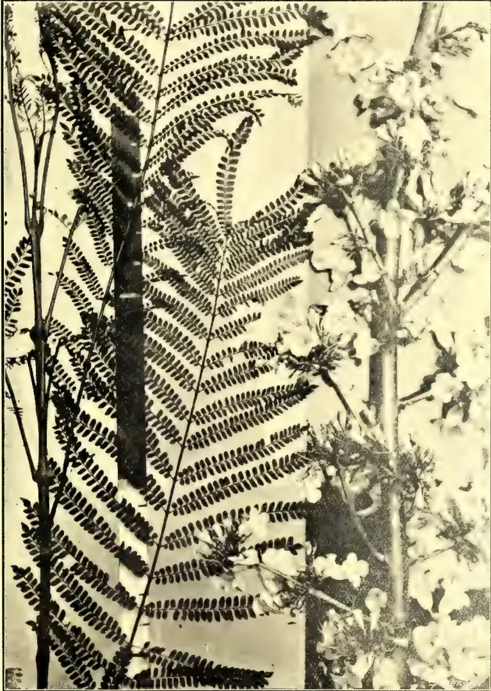
A black and white photograph of a Jacaranda mimosæfolia tree. The image is dominated by large, bipinnate leaves that resemble ferns, with many small leaflets. To the right, there are clusters of white, pea-like flowers hanging from the branches. The photograph is framed by a thin black border.Photo by H. F. Macmillan.
JACARANDA MIMOSÆFOLIA:
A BEAUTIFUL FLOWERING AND FOLIAGE TREE.
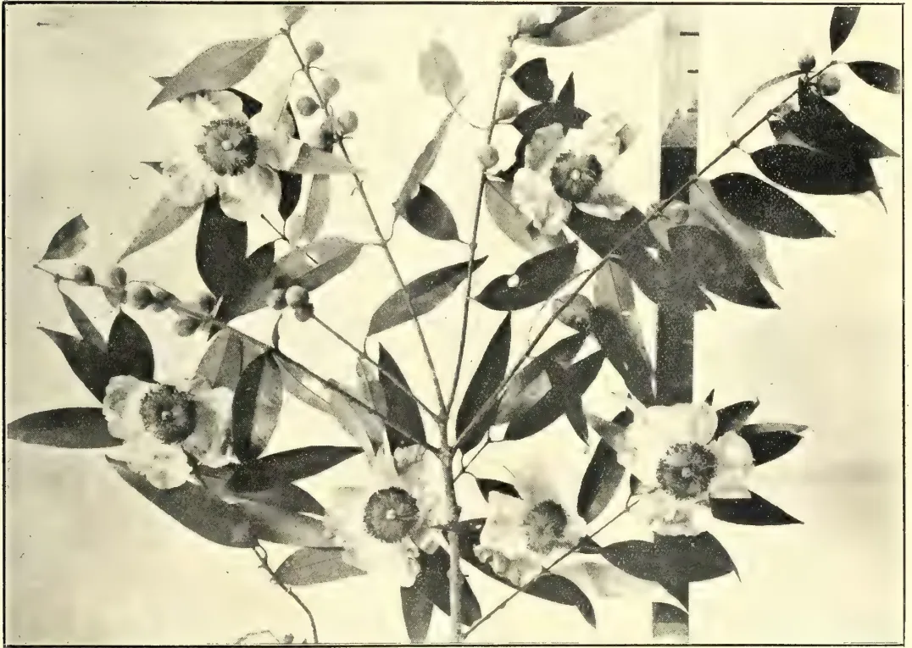
A black and white photograph of a flowering branch of Mesua ferrea. The branch features dark, glossy, oval-shaped leaves and clusters of white flowers with prominent, dark, fuzzy stamens. The branch is set against a light background, and a vertical ruler or scale is visible on the right side.Photo by H. F. Macmillan.
MESUA FERREA- IRON-WOOD TREE: "NAGAHA" S.
This image is a scan of a blank page. The paper has a light cream or off-white color with a subtle texture. There are a few very small, dark specks or scanning artifacts located in the lower right quadrant of the page. No text, lines, or other markings are present. JUNE 1908.]573Miscellaneous.of the young branches large single white flowers with yellow stamens, very delicately scented and suggesting in appearance wild dog-roses of a large size. Introduced at Peradeniya in 1883. It has not yet set fruit.
Peltophorum ferrugineum (Leguminosæ).—“Iya-vaki,” T.—A very large quick-growing, symmetrical tree, with a spreading top and very graceful fine foliage, indigenous to Ceylon and Malaya. The young leaves and shoots are covered with a brown velvet tomentum, from which the tree takes its specific name. It flowers twice a year, but during different months, being remarkable for the fact that when one tree is in flower, another (of the same kind) side by side may be in fruit, another may be deciduous; the flowers are rusty yellow, sweet-scented, and borne in large erect panicles. Dr. Trimen states:—“It is a magnificent sight when in full blossom.” It is suited to the dry region, but also thrives to perfection in the moist region up to 1,800 feet elevation.
Plumeria acutifolia (Apocynaceæ).—“Temple tree”; “Pagoda tree”; sometimes called “Frangi-pani.” “Everiya” or “Ara-liya,” S.—A low, spreading, succulent tree or shrub, introduced from Tropical America and now naturalised in Ceylon, India, &c. It is a familiar tree in the Eastern tropics at low elevations, and in the low-country of Ceylon generally, especially near temples. It is bare of leaves throughout the dry weather, when it bears large corymbs of white and highly fragrant flowers.
Plumeria rubra (Red).—A tree similar to the latter, but of a less spreading habit, bearing bright crimson flowers. Very showy.
Poinciana regia (Leguminosæ).—“Flamboyante”; “Flame tree”; “Gold Mohur.”—A gorgeous tree when in full flower, bearing during the months of March to May immense panicles of scarlet or orange and yellow flowers. It is a very striking object in and about Colombo at this time of year. The tree grows from 50 to 60 feet in height, and has handsome fine feathery leaves.
Posoqueria longiflora (Rubiaceæ).—A moderate-sized, quick growing tree, with large deep-green leaves, native of Tropical America. It produces long tubular white and sweet-scented flowers, borne in pendulous clusters, during May and September. Suited to moist districts up to 2,000 feet.
Pterocarpus echinatus (Leguminosæ).—A moderate-sized spreading tree, native of the Philippines, introduced at Peradeniya in 1882; bears large racemes of pale yellow flowers at the ends of the branches during April and May. Very ornamental when in blossom. Suited to the low-country.
Saraca declinata (Leguminosæ).—A small tree, native of Sumatra, introduced at
Peradeniya in 1870. It forms a beautiful sight when bearing its huge heads of bright orange yellow flowers, produced on the stems and older branches during February and March. Thrives best in partial shade in the moist low-country.
Saraca indica (Indian).—“Diya-ratmal” or “Diya-ratambala,” S. “Asoca Britsch,” Hind.—A small spreading tree, native of Ceylon and South India. On the stems and branches are produced in January to March large sessile clusters of sweet-scented flowers, which change from yellow to orange and red. The young leaves are pendulous as in Brownea and Amherstia. Thrives in shady situations, especially near water, in the wet or semi-dry districts below 1,800 feet.
Schizolobium excelsum (Leguminosæ).—A very large quick-growing tree, with fine bi-pinnate feathery leaves, native of Brazil. Introduced in 1872 at Peradeniya, where it luxuriates, blossoming and producing fruits regularly. The flowers are borne in enormous erect racemes, of a bright yellow colour, during February and March, when the tree is quite bare of leaves. The flowers are at once followed by beautiful feathery young foliage. Thrives up to 1,500 feet in the moist region.
Solanum macranthum (Solanaceæ).—“Potato tree.” A medium-sized, quick-growing and soft-wooded tree of Brazil, reaching a height of 30 to 50 feet, introduced to Ceylon in 1844. It is a handsome object on account of its very large and rather spiny leaves, but is particularly ornamental when in full blossom. The large blue and white flowers, with conspicuous yellow anthers, are produced at most seasons of the year, but more especially after the dry weather. Thrives best in particularly shaded situations at elevations below 3,000 feet. This is the only species of the potato order that grows into a tree form.
Spathodea campanulata (Bignoniaceæ).—A tall erect tree from Western Tropical Africa, introduced into Ceylon in 1873, and now fairly commonly planted about Kandy and elsewhere as an ornamental shade tree. Its large bright orange-red, erect flowers, produced at the tips of the branches throughout the wet season, render it strikingly handsome and conspicuous at a distance. The unexpanded flowers contain a quantity of water, hence the tree has been christened the “Fountain-tree.” Thrives up to 1,600 feet.
Sterculia colorata (Sterculiaceæ).—“Mallarparutti,” T.—A moderate-sized tree of 40 to 50 feet in height, indigenous to the dry region of Ceylon but thrives also in the moist districts. The brilliant orange scarlet flowers, appearing in great profusion when the tree is leafless (February to March at Peradeniya), render the tree a handsome and
Miscellaneous,574[JUNE 1908.conspicuous ornament. The Veddas (aboriginals of Ceylon) are said to call the tree "Kenawila," and sing odes to it.
Stereospermum xylocarpum (Bignoniaceæ).—"Padri tree" of India. A large spreading tree, native of South India, deciduous for a short time in the dry weather. It bears for a week or two a profusion of white bell-shaped flowers. Thrives up to 1,500 feet.
Tabebuia spectabilis (Bignoniaceæ).—A small tree of Venezuela and the West Indies, introduced at Peradeniya in 1881. For a short period in April or beginning of May, when bear of leaves, the tree is an exceedingly beautiful sight, being literally covered with masses of yellow flowers, which as they drop from a golden carpet on the ground. Thrives at Peradeniya (1,500 feet), but as yet only rarely produces seed here.
(New Creations in Plant Life, an authoritative account of the life and work of Luther Burbank. By W. S. Harwood, 2nd Ed., New York, the Macmillan Company, 1907.)
In a recent contribution to the Tropical Agriculturist, the writer of this review had occasion to divide the history of cultivated plants into four stages. The last of these stages was initiated very recently by the application of definite scientific knowledge to the improvement of plants, a process of which the results lie largely in the future. The last stage but one was described as the epoch of the professional non-scientific breeders, who have advanced the value and beauty of cultivated plants to the condition in which we now see them in the horticultural and agricultural shows of Europe and America.
Luther Burbank may perhaps be regarded as the culminating figure of the pre-scientific epoch; though it is somewhat difficult to gauge directly his exact position, because so few of his productions have gained a footing outside America, whilst the proportion of those which are found to flourish outside his native state of California is comparatively small. An idea of the estimation in which his work is held by people in his own country who are competent to judge may, however, be obtained from the fact that in 1905 the trustees of the Carnegie Institution of Washington voted a grant of ten thousand dollars a year for ten years for the purpose of enabling Mr. Burbank to carry on his work without wasting energy over petty details of business. Burbank has thus become a national institution, and this circumstance may possibly be regarded as some excuse for the strain of blatant journalistic patriotism in which Mr. Harwood writes about him.
If we penetrate the halo of eloquence in which Mr. Harwood enshrines his idol, a certain amount of interesting and useful information may be extracted from the pages of this book, though it need scarcely be said that a good deal of caution is required in accepting some of the statements which occur. Some of the most surprising of these are, it is to be hoped, only errors of haste and want of revision. Thus most readers will be aware that a walnut tree does not obtain its nitrogen direct from the atmosphere (p. 62), and that poppies do not produce seeds without flowers.
The most notable of Mr. Burbank's new productions are to be found among fruit trees and especially among plums. The methods of improvement which he has employed consist in crossing, followed by selection on a very extended scale. These processes contain nothing which is either mysterious or miraculous. What is remarkable is the fact that Burbank, so we gather, selects his plants for fruiting qualities whilst they are still young seedlings and before any fruits have been actually produced by them. The testimony that he has made a success of this method appears to be conclusive, and such success can only have been arrived at by powers of intuition and experience of a highly remarkable order. We take leave to reserve our judgment, however, as to the accuracy of the statement that when the test was made of growing a number of the rejected seedlings, as well as of the chosen, to the fruiting stage, the former were of inferior and all the latter of superior quality.
Among fruit trees Burbank has essayed the production of a number of complete novelties by the crossing together of totally distinct species. Many of these crosses were entirely sterile, as indeed was only to be expected, whilst some of those which fruited can be regarded as little more than curiosities. Crosses between the plum and the apricot, and between the Californian dewberry and the raspberry are said to have given rise to new fruits of considerable value; though young specimens of the plum-cot, as the former of these novelties is called, seen by the writer of this review at an English nurseryman's last year, seemed to show that this particular creation does not take very kindly to a new country.
Comparable with the last named fruit is the tomato, the result of a cross between the tomato and the potato—and we may note in passing that the improvement of the potato was among the first of Burbank's successes. On the other hand crosses between the blackberry and the apple, and between the raspberry and the strawberry could hardly be expected to give rise to stable new types, and as a matter of fact neither of these hybrids ever fruited.
JUNE 1908.575Miscellaneous.Among other notable successes have been hybrid walnuts—trees of extraordinarily rapid growth and yielding valuable timber; the pineapple quince, so called from the novel flavour; and the thornless cactus for which a great future is foretold from the point of view of stock-feeding in desert regions. Besides these a great number of garden flowers might be alluded to such as Cannas, Poppies, Amaryllis and the Shasta daisy.
So far we have recorded the successes of a remarkable natural genius in his own line of work, and if we seem to have given them a somewhat grudging recognition, it is because we have sought in simple statement an antidote to the rapturous phrases of the work under review. In Mr. Burbank's manifold new productions, in his notable success as a gardener and plant breeder, we have evidence of very marked powers of patience and industry and of other powers which can only be described as amounting to an instinctive knowledge of plants, borne no doubt principally of a vast experience. This equipment does not however entitle Mr. Burbank to deliver judgment on scientific problems. In point of fact neither he nor his biographer has any understanding at all of the meaning of scientific work, and Mr. Harwood, at least, shows himself quite incapable of stating a simple scientific problem intelligibly. This is a circumstance over which no one need distress himself were it not for the announcement in the preface that "the statements in this volume, both those which have a scientific, and those which have a practical bearing, stand unreservedly vouched for by Mr. Burbank." We find it difficult to believe that Mr. Burbank is capable of the muddled ideas with which his interpreter credits him, and we earnestly recommend Mr. Harwood to omit the chapter entitled "Theories and Conclusions" from future editions of a work which, as a piece of purely rhapsodic writing, has certain peculiar merits of its own. If time had been available we should have liked to estimate the number of times the words miracle and miraculous are made use of by our author.
R. H. LOCK.
With the object of assisting in some degree the adoption of rural education to the conditions of rural life, specimen courses of special object lessons and of gardening were published by the Board of Education, in 1901 and 1902. These pamphlets have long been out of print, and the Board of Education have now issued a pamphlet by Mr. T. S. Dymond, entitled "Suggestions on Rural Education," in which an attempt is made to set out the educational needs of those who are to follow rural pursuits, to suggest the character of the instruction that would supply the
educational equipment required to meet those needs, and to indicate the means by which in course of time such instruction could more generally and more adequately be supplied.
Rural prosperity, Mr. Dymond observes, primarily depends on the prosperity of rural industry, and this, though principally determined by economic conditions, must also depend upon the intelligence, adaptability, knowledge and skill of those engaged in it. The prosperity also of rural workers depends on the profitable use made of cottage gardens, allotments and small holdings by the men, and the domestic skill of the women. It must also be remembered that, in the country, people must depend for recreation on their own mental and physical resources, so that general culture has an important part to play in making country life attractive; and lastly, that the natural increase in the population usually necessitates a steady migration of young men and women from the country to the town, and education must be of such a kind as not to place these at a disadvantage.
Elementary Schools.—It is principally to the development of intelligence and observation in connection with rural subjects that the system of elementary education should be directed. The influence of country surroundings should be distinctly felt, and the subjects should be taught more in relation to the rural environment of the school. Mr. Dymond lays great stress on the value of nature study, gardening and other manual work in elementary schools, as well as the treatment of other subjects, such as drawing, geography, arithmetic, &c., in relation to rural life.
Higher Elementary Schools.—Higher elementary schools and upper classes are intended to carry on the work of the elementary school and develop it in the direction of the industries the scholars are likely to follow. For this purposed Mr. Dymond suggests that nature-study should give place to the study of natural science and to the application of science to agriculture, horticulture, dairying, domestic economy and hygiene. The subjects of manual instruction should be developed in their industrial aspects; thus food culture would form an important subject for practical work, and needlework would be carried on to dressmaking. Arithmetic should be developed in the direction of mensuration and mechanics, and be correlated with book-keeping and commercial correspondence. The subject of general culture would include a secondary course of English literature, history and geography, together with singing and physical exercises.
Rural Secondary Schools.—The function of the rural secondary school is to instil that general culture which gives an outlook wide enough to encompass all rural activity and that knowledge of science underlying rural
Miscellaneous.576[JUNE 1908.economy which is necessary rationally to direct rural enterprise. While the elementary schools are essentially intended to prepare pupils for occupations involving manual work, it is the development of mental activities at which the secondary school will predominantly aim. Manual work, therefore, takes a subordinate place in the secondary school, and is introduced rather to afford a balance in educating powers of mind and body and to provide means for illustrating mathematics and the sciences.
In the elementary school a foundation of nature-study will have been laid upon which the study of science can be built. In the rural secondary school, it is suggested that chemistry and physics should be dealt with as branches of natural science—that is to say, a knowledge of experimental science should be built up by a progressive practical study of air, of water, mineral substances, of the products of animal and vegetable life, those reactions and substances being used a knowledge of which is important in rural industry.
Mathematics should be correlated with (a) practical surveying in the field, (b) woodwork from scale drawings, which might be chiefly devoted to making the apparatus and appliances required in the science work indoors and out, and (c) mechanics, which should be illustrated by reference to the construction of farm implements and buildings. Book-keeping and correspondence would advantageously deal with the ingoings and outgoings of the experimental field, the orders for manures, tools, seeds and sale of produce. Geography, history, literature, a foreign language and drill will complete the curriculum. Such a course should be graded to the capacity of boys of 12 to 15 or 16 years old, for at 15 or at least 16 the boys who are to follow rural pursuits will usually begin business life.
Higher Agricultural Education.—The boy who shows such ability as to give promise of a successful career in agricultural science may wisely also leave the secondary school at 16. The next two years may profitably be spent as pupil upon a farm, provided that each winter the pupil attends an agricultural short course, and it is after this that he will enter the agricultural college or university department with the greatest profit. Or again, in lieu of the two years' pupilage on a farm, a year or two years may be spent at a school or schools of rural industry. No country can be held to have a properly organised scheme of agricultural education which does not provide scholarships to enable promising boys with an agricultural bent to mount the educational ladder from the rural elementary school to the agricultural department of a university.—Journal of the Board of Agriculture, March, 1908, Vol. XIV., No. 12.
The Annual General Meeting of the Ceylon Agricultural Society was held at noon on Monday, 15th May, in the Council Chamber. H. E. the Governor presided, and the others present were:—Sir S. D. Bandaranayaka, Dr. J. C. Willis, Hon. Mr. J. Ferguson, Hon. Mr. F. C. Loos, Hon. Mr. S. C. Obeysekere, Hon. Mr. A. Kanagasbai, Messrs. A. H. Thomas, Dr. Ludovici, R. H. Lock, M. Kelway Bamber, G. W. Sturgess, J. Harward, E. Cowan, P. Arunachalam, W. Dunuwila, L. W. A. De Soysa, F. L. Daniel, F. M. Mackwood, W. D. Baldwin, M. Suppramanian, Rev. P. T. Cash, Dr. H. M. Fernando, Capt. J. Curling, Mudaliar A. E. Rajapakse, Messrs. T. Cockerill, Jas. Gibson, H. J. Pieris, A. N. Galbraith W. S. D. Tudhope, &c.
After the Secretary had read the minutes, His Excellency said: The first item on the Agenda is the presentation of the Secretary's Report. I understand that the Report has been circulated and has been in the hands of members for several days, and it will therefore be taken as read. But before adopting the Report, I should like members to make any remarks that they may have to make upon the Report in general or any item referred to therein.
The Hon. Mr. FERGUSON had much pleasure in complying with a request made to him, that he should move the adoption of the Report. He had read the paper just before coming to the meeting and considered it a most satisfactory Report, indicating a great deal of useful work accomplished. It was very suggestive under several heads; but he would only detain them to remark on the scope that was presented in this island for the saving of money expended to the amount of over a million of rupees annually in importing live-stock, especially cattle, sheep and goats from India. In this respect they had lessons to learn from the West Indies, where so many minor Colonies had Government Stock Farms, and freely imported pedigree stock for improving their cattle, sheep, goats and pigs. Dr. Sturgess's department had already done a great deal of good; but one felt there was room for much more to be effected among the villagers throughout the island who ought to be taught to profit by improved stock. With these few remarks he had pleasure in moving the adoption of the Report.
Mr. DUNUWILLA seconded.
The motion was carried.
H. E. the GOVERNOR:—Before putting this motion to the meeting, I should like to say one or two words in connection with the Report. Equally with Mr. Ferguson I find this Report is extremely interesting in more senses than one. In the first place it gives
JUNE 1908.]577Miscellaneous.us a very fair record of what has been done, and the progress that has been made by means of the Society's operations in the cause of agriculture generally. And what is to my mind even more important is the fact that the Report generally contains very valuable suggestions as regards the future development of the Society. Before I touch on these particular points I should say that the thanks of all the members of the Society are due to the gentlemen who, in this Report, are called "the workers." They have done much, not only because they love agriculture in itself, but for the higher principle of doing good to the land in which they live. (Hear, hear.) It is, gentlemen, such as these "workers" that the Society will always have to depend upon, and we cannot be so sufficiently grateful for the spontaneous efforts that they have made to advance the cause that the Society has so much at heart. The Society, as has quite rightly been said, has attained early in its career one useful purpose, namely, that it has been the medium between individuals and the different agencies to meet their wants. (Cheers.) However, to my mind this Report is a valuable one, in so much that it foretells what practically means two branches in the Society. One is what you may call the English-speaking branch—and a most important branch it is. It is that branch which brings us all here together to-day; it is in order to discuss these matters of agriculture. It is a matter which is of the greatest importance to the Colony, that, in what is the Colony's Chief Industry, namely, agriculture, both Europeans and Ceylonese so meet here
UPON A COMMON PLATFORM AND ENGAGE IN
DISCUSSIONS ON A SUBJECT INTERESTING
TO BOTH,
and upon which we all can get not only individual improvement, but mutual benefit. (Hear, hear.) I say, therefore, that this Society may have as its principal branch this English-speaking branch, and this English-speaking branch should as far as is possible be self-supporting. (Hear, hear.) I am glad to see from the Report that the Finance and Publication Committee have at all events made a considerable step in this direction. I have, no doubt, in progress of time, they will make even one more step forward, because one of the points on which I can give a perfectly unbiased opinion, coming fresh to the Colony, is that I have not seen one publication so interesting, so well got up, and so cheap for the money, as is the "Tropical Agriculturist." (Hear, hear.) As I say, these meetings between us all here, I regard as of much importance, but it is a question for the Managing Committee to consider whether, perhaps, it is not too often to meet once a month. I think so, not from the fact that we have not had very interesting discussions here, but from what I notice from the papers—which is that we constantly have to fall
back upon Peradeniya to find a paper for the monthly meeting. I should like to see very much at every meeting two papers read—one by our professional experts, and the other by a layman who is an ordinary member of the Society. (Cheers.) I think it would do good. It would mean that co-operation which, as regards the Society as well as everything else, means everything to the strength and the life of the body interested. (Cheers) The other branch, which is just referred to in the Report, is what I might call the vernacular speaking branch, and it is a matter on which I said a few words when I last occupied the chair here. I am glad to see that
THE SOCIETY HAS VEERED IN THE DIRECTION OF
THE VIEWS WHICH I THEN EXPRESSED,
and which I said I did express with some hesitation, because I had not been in your midst a sufficiently long period to study the matter as thoroughly as I could have wished. It gives me, therefore, some encouragement to think that the Society, with the wisdom which they have, and the knowledge of local matters, takes kindly to these ideas, and that in any efforts which I may make in that direction I will have their co-operation, and equally that I shall be able to give whatever assistance I can to the Society in that direction also. I may just read the two paragraphs to which I particularly refer. The first is on page 4.
"Altogether there would appear to be a tendency to give to rural education that turn which it so much lacks at present."
The other is on page 5, and reads: "For more direct and effective work among our village population it is much to be desired (1) that an executive Board should be formed with Provincial Boards over which the Revenue Officers should preside, and the operations of which they should control with the advice of the Central Board; (2) That a larger staff of trained Agricultural Instructors should be appointed to carry on systematic work, according to an approved plan, under the Revenue Officers."
I think that last quotation is very much on the lines of remarks which I made the last time I was speaking. It is a sound principle, thoroughly sound. As regards how it can best be carried into effect we must not be in a hurry. It requires very close and careful consideration, because in all these matters dealing with the agricultural population, when you once make a step forward it is very difficult to retrace that step, and you must, therefore, practically make sure of what you are doing. As regards the matter of teachers, many of you will remember that I said: what we stand urgently in want of in all our country districts is a number of Mr. Driebergs—(hear, hear)—men who have a thorough
Miscellaneous.578[JUNE 1908.knowledge of the natives, men who know the vernacular thoroughly, men in whom the natives would have every confidence. To get them future teachers will be boys drawn as far as possible from the best families, on the understanding that when they have gone through the requisite training they will obtain a Government appointment,
WHICH WOULD BE IN THE AGRICULTURAL BRANCH
AND IN NO OTHER,
As regards the country districts, as I have already said, I believe that teaching should be done as far as possible in the vernacular, and that the English should be limited to the elementary standards. In this connection I should like to draw your attention to the fact that whatever machinery is organised, and in whatever way we bring this necessary desideratum into effect, the provincial or local branches of the Society will be of the greatest assistance. (Hear, hear.) I regard these branches in the future as being the working basis of the movement, and they therefore, should derive every encouragement at the present time for what will be their object in the future, namely, to push forward agriculture in their own districts to the best of their ability in accordance with prescribed programmes which may be laid down from time to time. In such a way one of these provincial branches has just been at the present moment—or rather, I hope, it will be—made use of. It is in connection with the tobacco industry in Jaffna—a matter which has been engaging the attention of this Society. (Hear, hear.) When I was at Jaffna few days ago I promised them the assistance of the Government, provided that I got the co-operation of the tobacco planters, because, as the Society quite rightly mentions in their report to-day, such co-operation must be a sine qua non. But in carrying out the experiments, they will be made in the direction you have indicated in your Report. I consider in turning it over in my mind, that the best machinery I can make use of in order to carry them into effect, considering that our own professional officers cannot be always on the spot, is to make use of the provincial branch of this Association, and I hope to put matters in such a way that, this branch of the Association will be one of the first in carrying out an object lesson which, I hope will in the future, be common to other branches in the Island. I am glad to notice the observation that you make about School Gardens, and particularly the good work which they are doing. Long may they continue to do so. But, of course, if the revised scheme comes into effect these School Gardens will eventually be absorbed in the Agricultural Schools. The School Gardens will be found at the Agricultural School as part of practical training, for, of course, in these agricultural schools we want not only theoretical teaching, but also practical demon-
strations. You refer also in the Report to the co-operative credit system. I am glad to find in certain portions of the Island that a commencement at all events has been made in this very necessary arrangement by the efforts of the people themselves. I brought up the question the other day at the Durbar of Kandyan Chiefs at Kandy, and one of the Chiefs gratified me immensely by telling me how great had been
THE SUCCESS IN HIS DISTRICT BY THEIR PUTTING TOGETHER A FEW HUNDREDS OF RUPEES
which enabled them to buy seed paddy and allow the cultivator to have it at a reasonable rate of interest instead of being his exposed to the usurious rate of interest which he had hitherto been accustomed to. Again, it is only recently during my visit to the North I found in the Wanni district, that it was not an unusual thing for the paddy cultivator there to pay no less than 120 per cent. upon the valuable seed paddy which he got for his cultivation. Now it is in this co-operative credit system that I hope I shall be privileged during my period of administration to help the Society and help the people and the peasantry immensely. (Hear, hear.) I have no doubt but that I shall be able to so lay matters before the Secretary of State that he will permit Government to help the people to establish this co-operative credit system in the form of agricultural banks in such a way that we can give direct help to the working population and relieve them from the burdens which they too often have to undergo from the fact of their having to borrow money at such heavy rates of interest. What we want especially to do is to push forward our Ceylonese peasantry so that they shall not be contended with cultivation such as they have now, but that they can go in for many more items of cultivation such as pepper, cotton, tobacco, and other things which I might mention in order that they shall establish an export trade; because, in order to increase our exports it is most important that we should push forward the Agricultural industries. Natives already have wealth in the coconut and in cinnamon. What they have done in those I should like to see them do in other products, because all exports mean money coming into their pockets, and, therefore, an increase in the prosperity, health and comfort of the rural population. You, therefore, can take it from me that the perusal of the Report gave me some considerable pleasure,
I HAD HAD SOME FEELINGS OF HESITATION AS
TO WHAT WAS TO BE THE FUTURE OF
THIS SOCIETY,
but I feel that if the Society takes up the lines which are indicated in this Report and pay attention to what I have tried to describe to-day as its two principal branches the Society will be fraught with good and
Miscellaneous.570[JUNE 1908]be of lasting benefit to the island. (Hear, hear.) What we have to do is considerable, and mind you in this matter there must be no cast-iron hurry. That would be a mistake. We must gradually bring home to our vernacular speaking peasantry the advantages of scientific agriculture, and open a door for their advancement in this particular and in the general conditions of life. If in the few years that I am here any progress can be made in this direction, I shall not think that I have altogether been unsuccessful at all events in one branch of my administration. With these few remarks I beg to put to the meeting the proposal which has been moved and seconded that the Report be adopted.
HIS EXCELLENCY called on Dr. Willis to read a "Memorandum on Alkali and Water-logging in Irrigated Lands."
Dr. WILLIS explained that Mr. Smith had written the paper at his request in consequence of representations made to him by rice cultivators in the Hambantota District of their crops suffering from the causes pointed out.
(The paper appears on page 549 of this number.)
Dr. J. C. WILLIS offered a few remarks about the neutralisation of salts. Plants which would not stand common salt only, would if the salt were mixed with others do better.
Mr. M. KELWAY BAMBER remarked that it would be well worth investigating these salts to find what they actually were. Travelling about in the North, thought the area suitable for cultivation was not very large as far as he had seen. It was only on lands near the sea they were likely to get these salts.
Mr. F. M. MACKWOOD:—Mr. Willis in his remarks said that alfalfa was the English lucerne. I thought it was a Mexican plant. If it is the English lucerne, it will not be of any use to us in Ceylon.
Dr. WILLIS:—Alfalfa will not do well below 5,000 feet. Above 5,000 feet you get it as a fodder plant at Nuwara Eliya. It must be often weeded. But we have local plants which might be used instead of it.
Mr. MACKWOOD:—How does it come to have the name alfalfa?
Dr. WILLIS:—In England it is known as the lucerne. There it is hardly cultivated. In America where it is cultivated in large quantities it is known as alfalfa.
Mr. BAMBER remarked that if tobacco was to be tried in the neighbourhood of any of those lands they might grow dadaps as
well which would come in useful. In Sumatra they grew a large quantity of dadaps on land where they tried tobacco.
Hon. Mr. FERGUSON said he thought they were indebted to Mr. Macmillan for a paper [reproduced in full in this issue] of special interest to the community at large. The only omission he noticed was Erythrina indica which grew freely in certain Colombo Gardens, Dr. Willis could doubtless tell them why it was omitted.
Dr. WILLIS said it would not make a good shade tree owing to its large brittle wood, which constituted a danger to passing horses. He mentioned an instance of an unsuitable shade tree which had been planted in another Colony. Owing to its large fruits it constituted a danger to traffic, and so all the trees had to be cut down.
H.E. the GOVERNOR said he was sure they all felt indebted to the writers of the papers—one a professional and one a layman—and that cordial thanks were due to them.
Hon. Mr. FERGUSON moved a vote of thanks to His Excellency for presiding—carried by acclamation.
H.E. the GOVERNOR:—I think I am conveying the opinion of the meeting when I thank the two gentlemen who prepared the papers for our discussion to-day very much indeed. The papers were extremely interesting and were of the nature which I alluded to just now, one from an expert and the other by a layman. I should very much like to see this followed in all papers which are read at the Society.
BY C. BENSON, M.R.A.C.,
Deputy Director of Agriculture.
The land chosen for tobacco cultivation is a light loam, either red or ash-coloured, resting on a gravelly sub-soil. It is therefore naturally well drained. Great stress is laid on the quality of the well water and a peculiar brackish character is specially desired, and great differences in the quality of the produce of otherwise similar gardens are almost universally attributed to the quality of the water. As the ryots endeavour to get as much produce out of their land as possible, a grain crop is usually harvested during September, and when this is cut, the tobacco crop follows; and in some cases two grain crops even are taken yearly besides
73 Miscellaneous.580[JUNE 1908.]tobacco. Some of the ryots, however, usually retain half the area of their tobacco land for tobacco solely, planting the balance with a first crop of kambu or other grain. In some cases where tobacco followed Sorghum, the growth was less satisfactory than when it followed kambu and the parasite Phelopœa indica (malle or bôdu) was found to be more prevalent and the quality of the leaf lower.
Ploughing does not commence till September and is continued through the rains. It is done seven or eight times and the land brought into fine tilth to a depth of 4—5 inches, if the weather is favourable; but in some cases the land is ploughed too wet with the result that clods are formed, which might be avoided by a little less haste. No other implement than the native plough is used for cultivation; and levelling and ridging is done with the man-vetti.
Soon after the grain crop is cut, cattle, goats and sheep are penned on the land every night for a month or six weeks. Though the land is manured heavily in this way, the droppings of these animals are exposed to sun and rain, till a considerable area has been manured, and they are then ploughed into the soil. The risk of loss from this exposure might be largely avoided, if the folds were made in long rectangular instead of square pens, and if the manured portions were ploughed up sooner. Some of the richer ryots collect their cow-dung and place it in heaps on the field; others use this manure for fuel. Village refuse or sweepings and ashes, and in some cases, the stems of the previous tobacco crop are also used as manure.
The seed-beds are merely parts of the field with little banks raised round the sides to retain the water. No attention is given to their situation as long as they are close to the well. Exposure to hot sun, wind, and driving rain, is not thought of. The beds are usually about 5' x 5' square. The surface of the bed having been worked up to a fine state with the hands, the seed is scattered broadcast without ashes or any other mixture. Very little manure is used for the beds, as it attracts grubs and other insects. After sowing, the beds are worked backwards and forwards with the fingers to cover in the seed. The beds are then watered from a channel connected with the well, being literally flooded to a depth of half an inch or more. This necessarily cakes the surface, and but a limited number of seeds germinate in irregular patches; the portion opposite the inlet for water being washed nearly bare, and any low-lying portions so much flooded that nothing grows there. Germination takes place in seven or eight days, but many plants grow very slowly, so that the general effect is most irregular. The beds are never covered or sheltered, and as
they are watered in the early morning, the hot sun by caking the soil retards the growth of the seedlings and causes many to wither away; results which are invariably put down to the wind, etc. The seedlings also naturally get much damaged by being trampled down whilst being weeded or extracted for transplanting.
About six to seven weeks after germination the seedlings begin to show three leaves, but it is not till the leaves are three or four inches long that they are taken out for transplanting. When the plants are ready for transplanting, the beds are flooded in the morning and the plants pulled out. The seedlings are kept in a house in a well-covered basket and transplanted in the evening. In pulling up the seedlings many of the smaller plants are dragged out and destroyed.*
Previous to transplanting, the land is ploughed up, and ridges and furrows are made two feet apart with the man-vetti. Before planting the channels are flooded, and the seedlings set out one foot apart on the sides of the ridges in much the same way as paddy is planted. The soil is often so sloppy that the plants fail to take root, and in consequence, wither away and die. The ryots are aware of the necessity for the seedlings being firmly planted, but owing to defective supervision their servants scamp the work.†
For three days after planting, the seedlings are at first watered every morning, though in some cases only on alternate days. When they have taken root, water, if it is desired to extend the area planted, may be withheld
* A modification of existing practice in respect of the seed-beds may be suggested. The beds should be just so wide that a man can reach the middle of them from the side; and the extreme width should therefore be about four feet, though two or three feet is preferable, and a bed 12' x 3' should produce enough plants for an acre. These beds should be raised higher than the water-channels which may be made all round them so as to avoid, as far as possible, watering on the surface, and watering by direct flow should be avoided. In preparing it, the bed should be deeply dug over and may be manured with ashes and thoroughly rotten manure. The surface should then be raked fine, and the seed scattered evenly over it, having been mixed with ashes or sand to facilitate this. After sowing, the surface should be lightly pressed or lightly covered with clean ashes, and watered very lightly—by preference with a can and rose—the whole mass of soil being moistened by flooding the side channels.
† The planting is much too close, as the plants grow and cover the ground so completely that the labourers cannot move freely through the crop for suckering and removing grubs, or to hoe the land, and earth up the plants properly. As the leaves become interlaced, they also damage each other when there is any wind. Probably it would be much better if the rows were three feet apart, and the plants possibly 18 inches apart in the lines.
UNE 1908.]581Miscellaneous.for four or five days, but subsequently the crop is watered once in three days until it is hoed, and thereafter every other day.
After the crop has been planted, weeds spring up plentifully, and are often allowed to grow for some time, but, when it is about three weeks old, it is hoed, though this operation is delayed longer in some cases. About five or six weeks after planting, the land is further broken up with a man-vetti, and though this operation may be repeated, if the surface becomes very hard, it is seldom that this is done, and the roots appear to have no idea of the great benefits of maintaining a surface mulch by keeping the soil loose and friable, and especially so after a fall of rain or a watering. On the day following this hoeing, one slight earthing up of the plants is done, and watering on alternate days is renewed.*
In some villages, two days before the first hoeing mentioned above, liquid manure is applied to the tobacco plants. Fresh cowdung is gathered some days previously and placed near the main channel. This is mixed by the hands into the water drawn from the well which carries the manure to the plants. Such manuring is seldom practised, except in Vedasandur, but there liquid manure is applied two or three times whilst the crop is on the ground; the second application being made when the plants are topped, and a third, more rarely, immediately before harvest.
The plants are topped† when they are —3 feet high and a few days before the bud appears. The plants have then been about two months in the field and carry from nine to twelve leaves. The tops are thrown anywhere, and those which fall on the tobacco leaves, from their extremely gummy nature, cause the leaves on which they fall to rot. Topping the plants so low induces the leaves left to spread and increase in size, and is usually supposed to be conducive to an increased weight of outturn, as compared with that from plants topped higher.
* Hoeing should commence as soon as the plants have struck root, and be continued regularly, and persistently, as long and as often as needed to keep the surface clear of weeds, and open and free. The ridging up is also usually more or less ineffective, and might be more thoroughly done. If the plan of watering in only alternate furrows on each occasion, and hoeing the land so watered as soon as possible after watering, were adopted, the crop would certainly benefit, and it is probable that much less water would be needed.
† Immediately after topping, shoots or suckers appear in the axils of the leaves, and around the head of the plant; but suckering is done once only, about a fortnight after topping, and very ineffectively, as the suckers are allowed to grow far too large and too long to the great detriment of the plants, and are not removed sufficiently often. They should be removed when an inch long, and the crop should be gone over continually for this purpose,
The plants ripen in ninety to one hundred days, and when a few spots have appeared on the lower leaves, the plants are cut off* close to the ground at about 5 p.m. They are then allowed to remain exposed to the night dew, and at day-break are gathered up and bulked into small circular heaps 2 feet high, the stalks outwards, and the tips of the leaves inwards. These heaps are covered with straw or the refuse of the tobacco field (tops, suckers, etc.), and are not opened till the third evening after the harvest. The plants are then spread on the ground for a short time, and then hung up on horizontal poles with the stalks pressed close to each other. The stalks of the plants are slightly loosened from each other every morning all along the polet. The leaves are cured in fifteen to twenty days from time of hanging up, the colours being rusty red, yellow and green. Where the leaves have been too closely pressed together, the colour is black and texture rotten. Rain destroys the colour and texture, and high winds break and damage the dry leaves.
When the stems of the leaves have become thoroughly dry, although the stalks may still be green, the plants are taken down and bulked in square heaps, the stalks being laid cross-wise over each other in alternate rows. These heaps are two feet or more in height. The leaves are not stripped from the stalks, but bulked just as they are taken from the poles. This is done in the early morning when the leaves are supple. These bulks are opened and re-bulked every two or three days. The smell issuing from a newly-opened bulk is very offensive, the stalks show signs of mould, and the leaves sweat and blacken to such an extent that unless great care is taken, the texture of the leaf is entirely destroyed.‡ When a blackish colour is produced, the fermentation is finished, and the leaves are stripped off the stalk, and tied
* Cut as they are in this way, the upper leaves on the plant are still immature, while the bottom leaves may be over-ripe, and it would be well if the latter could be stripped off separately, and in fact the whole be harvested as it ripens. The lower leaves might be strung on twine and cured, and when the remainder matures the whole plant could be cut.
† In the curing too, the plants at present appear to be hung up much too closely together, so that there is no uniformity in the drying, and the colour is far from uniform whilst those leaves which are not well exposed turn black and rot. The harvested plants might be hung up loosely, and further apart, and it might also be advantageous if the stems were split in two before being hung up; the leaves would then dry more evenly and quickly.
‡ The injury done during fermentation is great, and is largely due to the fact that the root has no guide by which to control it. For the proper regulation of this, the thermometer is required,
Miscellaneous582[JUNE 1908.up into bundles of 50 leaves weighing to 2 lb. each, and baled.*
In many cases a mixture of jaggery and water is sprinkled on the leaves after the fermentation is over. This gives the leaves a sour-fermented smell, and also a fictitious texture, as they can be stretched more easily when the jaggery has soaked into them. This, however, disappears after a time.
The produce of one acre of tobacco cultivated in the above mentioned way ranges from 800 to 1,000 lb.—Department of Agriculture, Madras, Vol. III, Bulletin No. 53.
Cultivation in Tjipetir, Java. Ind. Merc. 17. 12. 98.
Yield in Java, etc. do. 1. 99, p. 38.
Para rubber in the Straits. "T.A." Sept 1900, p. 177.
Rubber in Nilgiri district. Report Ootacamund Bot. Gdn., 1898-9, p. 24.
The Mergui rubber plantation. Ind. Agri. 1. 5. 1905, p. 149.
Ahern. A compilation of notes on India-rubber and guttapercha. Bull 3, Bureau Forestry, Manila.
Rubber in the East. Chem. and Drug. 20. 10. 1906, p. 625.
Kautschuk—Kultur in Deli. Tropenpfl. 1906, p. 207.
The rubber industry in Ceylon. "T.A." June 1904, p. 800.
Rubber in Burma; a short history of the Mergui plantation. Ind. Pl. and Gard. 29. 10. 1804, p. 768.
Rubber in Perak. "T.A." July 1901, p. 3.
Reisebericht der G. und K. Expedition nach den Sudseekolonien. Tropenpfl. 1901, p. 372.
Rubber-growing in a sewage farm in Burma. "T.A." Nov. 1901, p. 30.
Le cultivation du caoutchouc dans Malacca. Journ. d'Agr. Trop. I. p. 135.
Rubber notes. Str. Bull. I. 1902, p. 327.
Rubber at Saigon. Bull. Ec. Indoch. 6. 1903, p. 185.
Rubber in the Malay States. Str. Bull. 1903, p. 113.
Rubber cultivation in the East, and the Ceylon Rubber Exhibition. Willis in Nature 27. 12. 1906, p. 209.
Rubber culture in the Philippine Islands. Hutchinson. "T.A." Apr. 1906, p. 201.
Rubber in Southern India. "T.A." Feb. 1906, p. 7.
Rubber and Cotton in Ceylon. Willis. "T.A." Oct. 1906, p. 299.
Report on the Ceylon Rubber Exhibition by the Agricultural Chemist, Mysore.
The Ceylon Rubber Exhibition. Willis. Trop. Life, Dec. 1906, p. 185.
Rubber Industry in the F.M.S. and Ceylon. Str. Bull. June 1907, p. 171.
Rubber acreage in the F.M.S. Ind. Rub. Journ. 12 Aug. 1907, p. 200.
Rubber cultivation in the F.M.S. "T.A." Sept. 1907, p. 58.
Progress of rubber in Bombay. do. p. 61.
Cultivation des plantes à caoutchouc dans la péninsule malaise. Bull. Ec. Indoch. 1907, p. 761.
Rubber cultivation in Malaya. "T.A." Jan. 1908, p. 4.
Some recent developments in rubber cultivation. "T.A." Dec. 1898, p. 381.
De rentabiliteit der caoutchouc en Getahpertja cultur. Ind. Merc. 28. 10. 99, p. 737.
Indiarubber cultivation. Planting Opin. 27. 1. 1900, p. 64.
Een en ander over Caoutchouc-cultur. Ind. Merc. 24. 7. 1900, p. 513.
The present status of rubber planting. "T.A." Sept. 1900, p. 182.
Noogmals de rentabiliteit der caoutchouc cultur. Ind. Merc. 20. 2. 1900, p. 94.
La cultivation du caoutchouc en Hawaii. Bull. Jard. Col. 1906, p. 220.
Rubber cultivation as an investment. Ind. Rub. Journ. Feb. 1906, p. 185.
The rubber trade and the rubber planting industry. do. Mar. 1906, p. 349.
Rubber in Samoa. Trop. Life, June 1906, p. 84.
Rubber cultivation and the future production. Wright in "T.A." Dec. 1906, p. 442.
Rubber cultivation in Samoa. "T.A." Nov. 1906, p. 375.
* No attempt at sorting the leaf is made, but on the other hand, the ryot tries to conceal bad leaf inside the bundles, and it is probable that, by care in sorting, the grower would obtain more from his labours.
JUNE 1908.]583Miscellaneous.Rubber cultivation in the British Empire. Wright. Jam. Bull. Apr. 1907, p. 96.
Progress of rubber planting. Ind. Rub. World, Aug. 1907, p. 339.
World's rubber industry. Ind. Rub. Journ., 23. 9. 1907.
Progress in rubber cultivation, do. July 1907, p. 151.
BY C. DRIEBERG.
NORTHENER.—Even if an introduced variety of tobacco is found to succeed in the North, there will be a serious difficulty to face if all tobacco cultivators do not agree to grow the same variety, as hybridization is bound to follow unless steps are taken to guard against cross-fertilization. Otherwise, fresh seed will have to be constantly imported for each planting season.
KAPOK.—The Philippine Agricultural Review for January says that the latest reports on well-cleaned samples of kapok gives the market value as 14 cents American currency, per pound. The firm making this report offers to make a contract for all the kapok that the Philippines could produce. A cleaner, described as a combination of a cotton gin and a thrashing machine is said to have been designed by the Assistant Director of Agriculture in the Philippines.
F.—As you say, the explanation, given in the last May Magazine, of pruning causing fruit production is not very acceptable. The writer appears to believe that the injury caused by pruning is "understood" by the plant as "a threatening of its existence," and that it makes an effort to preserve its own kind before extinction. This endows plants with responsible intelligence, which is not admitted by scientific men. The tendency on the part of the plant to produce fruit when injured is no doubt a provision of nature, but must be attributed to physiological action in the plant, such as is referred to in para 5 of the article (p. 455 of May T. A.).
E. N.—I do not think you have any good cause for complaint. The Society cannot extend its help to those who do not consider the benefits derivable by joining it worth the modest sum of Rs. 8 per annum. I shall be only too ready to serve you as a member, but as a non-member you have no right to expect assistance or advice in any form. You can, however, get any particular number of the magazine for one rupee, or subscribe to it by paying (as a non-member) Rs. 10 per annum. On the other hand,
as a member, you will get the magazine and all the benefits the Society can offer for Rs. 8.
MUSA.—With reference to your queries about plantain fibre, the following extract from a letter dated March 5th, 1908, received from the Botanist in charge of Fibre Plants, United States Department of Agriculture, will give some useful information:—"The specimens of fibre which I have examined from plantain and banana plants have been inferior in strength to the fibre produced by abacá, Musa textilis, in the Philippines. I am told that one of the species from Africa, Musa ensete, yields a fibre which it is thought will compare favourably with the genuine abacá. The best specimens of banana fibre that I have seen came from Jamaica, but these fibres lacked uniformity. Some of them were strong, while others were very weak. I do not think that it will be possible to prepare the fibre from banana plants produced in the American tropics at a cost that would permit them to enter the American market so as to compete with abacá and sisal, now used by our manufacturers. It might be possible, however, with the different labour conditions of India to produce these fibres so as to be used in the local market there, and it is also quite possible that you have varieties there yielding stronger and more uniform fibre than those produced by the common, large, yellow banana of the American tropics. Three or four machines have recently been used in the Philippines for cleaning abacá fibre, and it is quite probable that these machines might be used successfully in cleaning Banana fibre. It is said that one of the most promising of these machines is the one invented by Mr. Eugene Behrendt, and manufactured by the Watson Machine Company, of Paterson, New Jersey. Banana fibre may also be cleaned on a machine made by the Finigan-Zabriskie Company at Paterson, New Jersey, providing the leaf stalks are first put through crushing rollers to break down and soften the tissues."
BEEKEEPER.—You will see from the report submitted at the General Meeting on the 15th instant, that native bees do best in a small hive. You can see one made according to Mr. Shank's specification at the Stock Garden. Mr. W. K. Morrison, a well-known authority, considers Apis indica bees as promising material to work with. The Hon. Mr. Obeyesekere secured some nicely filled combs not long ago. The great point is to watch and prepare for the "honey flow."
584[JUNE 1908.Botanical Department,
Trinidad, 25th January, 1908.
SIR,—I am in possession of your letter of 12th December, 1907, asking information as to the process of drying cacao in Trinidad, and for plans of drying houses.
The information you require is given in my work on cacao, a copy of which was forwarded to Ceylon some years since; and there are illustrations of some of the best drying houses in Trinidad and Grenada in Preuss' account of his expedition to Central and South America, 1899-1900.
To these may now be added the artificial dryer made by Gordon of London, and that used by Hoadley in Trinidad. These are mechanical dryers of an expensive character, the latter doing its work extremely well. Its main parts are first a circular floor pierced with holes to which hot air is driven by blast from below, by means of a funnel-shaped apparatus, the cacao being kept moving by rotating ploughs which throw the cacao from side to side with a slow motion.
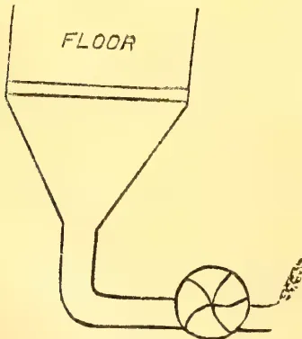
The majority of estates, however, still depend upon sun heat on open floors covered by a running roof to protect against rain. These are made in various forms and sizes, to suit each particular position, but in general are elevated, so as to give rooms beneath for fermentation boxes and storage &c. The floors are of wood universally.
The manipulation of the cacao is well given in the Bull. Miss. Information,
Trinidad, 1904, p. 113, which is the method adopted on the Government Estate under my charge and is written by the manager. For cacao made by this process we invariably obtain highest market prices. It should be noted, however, that it is applied to a strain of cacao dominated by the Foretero variety, and if the Criollo varieties are to be treated the period of fermentation would be shorter, but the general treatment the same.
In Grenada the houses for drying are somewhat different from those in use in Trinidad, as in the former the trays are made to draw out on rails, and are shut up when rain falls, while in Trinidad the floor is always stationary and the roof moves. There is more labour in the Grenada method as the whole weight of cacao has to be moved, while a single man can cover in the Trinidad floor. The roof run on wheels on light railway rails. The methods of fermentation and drying are well described by Wright in Chapt. IX. of his work on Cacao. No washing is used in the preparation of Trinidad cacao, as it is found that the mucilage properly treated forms a protective covering to the bean preventing the entry of mould fungi to a large extent, and obviates breakage of the shell of the bean.
A description of Hoadley's drier is to be found in the West Indian Bulletin, and also in Trinidad Bull., p. 209, 1905, Vol. VI.
I regret I am unable to forward you plans of our Cacao houses, but they are simple in the extreme, and a view of one of Preuss' illustrations should be sufficient to enable any intelligent mechanic to construct a suitable building.
If I have omitted anything that you specially require the details of, I shall be glad to oblige later.
Meanwhile I remain,
Yours faithfully,
J. H. HART,
Superintendent, R. B. Gardens,
Trinidad.
The Director, Royal Botanic Gardens,
Ceylon.
Crystal Hill Estate,
Matale, 24th April, 1908.
DEAR SIR,—With reference to your article "Possible Market for Calabash Gourds" appearing in the February number, I wish to know whether there is a species of the "Lagenaria vulgaris," shaped as in sketch enclosed. I am informed by the Manager, "Calabash Pipe Factory," that these are the suitable shapes of Gourds required, and that they give as much as £35 a thousand for the finest shapes free from flaws imported from South Africa.
Yours faithfully,
A. VANSTARREX.
FUNGUS ON RUBBER PLANTS.DEAR SIR,—With reference to your note re my letter published in the January Number, p. 69, I very much regret I have troubled you and will not offend you or any of your colleagues again by worrying them re any pest, animal or fungoid. I may say I got almost an identical reply from the Government Entomologist, Mr. West, viz., to refer my queries to your own (i.e., my own) Entomologist at Pusa, and from the Mycologist who writes "these specimens (which he returns) should be sent to the Agricultural Department of Burmah or India, I cannot make anything of them." Yet they were properly prepared and pressed herbarium specimens. There is a curious immunity about the above.
The Prospectus, if I may term it such, of the C. A. S. clearly offers as inducement to join, that help and advice will be given to its members, and this is the help!!
I would have imagined that all and any individual effort to detect rubber diseases or pests, and to record their action or life history would have been welcomed rather than deliberately snubbed. However, I can assure you I will
not trouble you or any of your colleagues further.
Please publish this letter and oblige.
Yours truly,
J. G. F. MARSHALL.
Tavoy, 18th April, 1908.
[Our correspondent forgets two facts: first, that we are not anxious to have foreign diseases sent about Ceylon by post, with the risk of infecting our local plants; second, that our Entomologist and Mycologist are occupied all their time in attending to local diseases, and cannot spare time for others, especially as these others have first, not being the same as ours, to be identified, a work which may take hours or even days.—ED.]
OLIVES GROWN IN CEYLON.Talawakele, 22nd May, 1908.
DEAR SIR,—I send you a curiosity what I believe to be the first olive grown in Ceylon. I imported the plant (then 4 years old from seed) in January, 1901, and (although it is a well-grown tree over 20 feet high and with two stems as thick as one's arms) this is the first return. About a year ago I lost patience with it, and bored an auger hole through it to which I attribute the change of habit.
I have a few struck cuttings which are at your service in the interests of science. Uva is the potential home.
Yours,
JAMES RYAN.
[The olive was distributed, a good many years ago, from Hakgala to places in Uva, but we have not yet heard of any fruiting.—ED.]
THE "CARNAUBA" PALM,Poilakanda, Gampola. Dec. 14, 1906.
DEAR SIR,—The "Carnauba" tree is very fully described in the "Tropical Agriculturist" for January, 1906, page 814, and the very many places where it grows so well in South America.
I feel sure this Palm would do well in some of the dry and sandy parts of this Island.
I shall be much obliged if you can give me any address where I can write to secure the seed of this Palm,—and any further particulars as to price and how the seed could be brought to Ceylon in a good state of preservation,
I am, Dear Sir,
Yours faithfully,
A. H. THOMAS.
[We regret we do not know of anyone who can supply.—ED.]
586[JUNE 1908.]MARKET RATES FOR TROPICAL PRODUCTS.(From Lewis & Peat's Monthly Price Current, London, 13th May, 1908.)
QUALITY.
QUOTATIONS
| ALOES, Socotrine cwt. | Fair to fine | 85s a 90s |
| Zanzibar & Hepatic " | Common to good | 20s a 70s |
| ARROWROOT (Natal) lb. | Fair to fine | 2½d a 4d |
| BEE'S WAX, cwt. | ||
| Zanzibar Yellow " | Slightly drossy to fair | £6 10s a £6 15s |
| Bombay bleached " | Fair to good | £7 12s 6d a £7 15s |
| unbleached " | Dark to good genuine | £5 15s a £6 10s |
| " Madagascar " | Dark to good palish | £6 10s a £6 17s 6d |
| CAMPHOR, Formosa " | Crude | nom. |
| China " | Fair average quality | 145s |
| CARDAMOMS Malabar lb. | Good to fine bold | 1s 8d a 1s 10d |
| Middling lean | 1s 3d a 1s 5d | |
| Tellicherry | Good to fine bold | 1s 9d a 2s 3d |
| Brownish | 1s 4d a 1s 6d | |
| Mangalore " | Med brown to fair bold | 1s 6d a 2s 3d nom |
| Ceylon. - Mysore " | Small fair to fine plump | 1s 2d a 3s 3d |
| Malabar " | Fair to good | 1s 3d a 1s 4d |
| Seeds | 1s 6d a 1s 9d | |
| Long Wild " | Shelly to good | 6d a 1s 6d |
| CASTOR OIL, Calcutta " | 1sts and 2nds | 3d a 4d |
| CHILLIES, Zanzibar cwt. | Dull to fine bright | 17s 6d a 20s |
| CINCHONA BARK. - lb. | ||
| Ceylon | Crown, Renewed | 3¾d a 7d |
| Org. Stem | 2d a 6d | |
| Red Org. Stem | 1¼d a 4¼d | |
| Renewed | 3d a 5¼d | |
| Root | 1¾d a 4d | |
| CINNAMON, Ceylon 1sts | Common to fine quill | 8d a 1s 3d |
| per lb. 2nds | " " | 7½d a 1s 2d |
| " " | 6d a 1s | |
| " " | 5½d a 8½d | |
| Chips, &c.. 4ths | " " | 2¾d a 3¾d |
| CLOVES, Penang lb. | Fair to fine bold | 9d a 1s |
| Amboyna .. | Dull to fine bright bold | 7½d a 8d |
| Ceylon .. | Dull to fine | 7d a 8d |
| Zanzibar .. | " " bright | 4¾d a 5¼d |
| Stems .. | Fair | 2d |
| COFFEE | ||
| Ceylon Plantation " | Bold to fine | 110s a 116s |
| Medium to good | 80s a 100s | |
| Native | Good ordinary | nominal |
| Liberian " | Fair to bold | 48s a 54s |
| COCOA, Ceylon Plant. " | Special Marks | 82s a 88s |
| Red to good | 75s a 80s | |
| Native Estate " | Ordinary to red | 65s a 71s |
| COLOMBO ROOT | „ | Middling to good | 12s 6d a 15s |
| CROTON SEEDS, sift. cwt. | Dull to fair | 30s a 35s nom. | |
| CUTCH | „ | Fair to fine dry | 21s a 25s nom. |
| GINGER, Bengal, rough, | „ | Fair | 30s |
| Calicut, Cut A | „ | Small to fine bold | 72s 6d a 85s |
| B & C | „ | Small and medium | 50s a 65s |
| Cochin Rough | „ | Common to fine bold | 35s a 38s |
| Small and D's | 33s a 35s | ||
| Japan | „ | Unsplit | 28s |
| GUM AMMONIACUM, | Sm. blocky to fair clean | 25s a 60s | |
| ANIMI, Zanzibar, | Pale and amber, str. srts. | £16 a £18 | |
| „ „ little red | £13 a £15 | ||
| Bean and Pea size ditto | 72s 6d a £13 | ||
| Fair to good red sorts | £9 a £12 | ||
| Med. & bold glassy sorts | £6 10s a £7 10s | ||
| Madagascar | „ | Fair to good palish ... | £4 a £8 10s |
| „ „ red ... | £4 a £7 10s | ||
| ARABIC E. I. & Aden | „ | Ordinary to good pale | 25s a 32s 6d |
| Turkey sorts | „ | 32s 6d a 50s | |
| Ghatti | „ | Sorts to fine pale ... | 17s a 42s 6d |
| Kurrachee | „ | Reddish to good pale ... | 20s a 30s nom. |
| Madras | „ | Dark to fine pale ... | 15s a 25s |
| ASSAFETIDA | „ | Clean fr. to gd. almonds | 85s a 100s |
| com. stony to good block | 25s a 75s | ||
| KINO | „ | Fair to fine bright | 6d a 1s |
| MYRRH, picked | „ | Fair to fine pale | £5 a £6 |
| Aden sorts | „ | Middling to good | 60s a 75s |
| OLIBANUM, drop | „ | Good to fine white | 45s a 55s |
| Middling to fair | 30s a 40s | ||
| pickings | „ | Low to good pale | 10s a 20s |
| siftings | „ | Slightly foul to fine | 11s a 15s |
| INDIA RUBBER lb. | Fine Para bis. & sheets | 3s 9½d a 3s 10d | |
| Ceylon, Straits, | „ Ceara „ „ | 3s 9½d a 3s 10d | |
| Malay Straits, etc. | Crêpe ordinary to fine.. | 3s 9½d a 3s 10d | |
| Fine Block „ .. | 4s | ||
| Scrap fair to fine .. | 2s 4d a 2s 8d | ||
| Assam | Plantation | 3s nom. | |
| Fair II to good red No.1 | 2s a 2s 6d nom | ||
| Rangoon | „ „ | 2s 2d a 2s 4d |
| QUALITY. | QUOTATIONS. | |
|---|---|---|
| INDIARUBBER. (Contd.) | ||
| Borneo | Common to good | 6d a 2s 2d |
| Java | Good to fine red .. | 1s 9d a 2s 6d |
| Penang | Low white to prime red | 1s 4d a 2s 3d |
| Mozambique | Fair to fine red Ball ... | 2s 6d a 3s 4d |
| Sausage, fair to good .. | 2s 6d a 3s 4d | |
| Nyassaland | Fair to fine ball .. | 2s 1d a 2s 4d |
| Madagascar | Fr to fine pinky & white | 1s 10d a 2s |
| Majunga & blk coated .. | 1s a 1s 6d | |
| Niggers, low to good .. | 6d a 1s 9d | |
| New Guinea | Ordinary to fine ball .. | 1s 6d a 2s 6d nom |
| INDIGO, E.I. Bengal | Shipping mid to gd violet | 3s 5d a 3s 10d |
| Consuming mid. to gd. | 3s 1d a 3s 4d | |
| Ordinary to middling | 2s 9d a 3s | |
| Oudes Middling to fine | 2s 6d a 2/8 nom | |
| Mid. to good Kurpah | 2s 3d a 2s 6d | |
| Low to ordinary | 1s 6d a 2s 2d | |
| Mid. to fine Madras | 1s 5d a 2s 4d | |
| MACE, Bombay & Penang | Pale reddish to fine | 1s 5d a 1s 11d |
| per lb. | Ordinary to fair | 1s 2d a 1s 5d |
| Java | „ „ good pale | 1s 1d a 1s 6d |
| MYRABOLANES, cwt | UG and Coconada | 4s 6s a 4s 9d |
| Madras | Jubblepore | 5s a 5s 6d |
| Bombay „ | Bhimlies | 5s a 6s |
| Rhajpore, &c. | 4s 9s a 5s 3d | |
| Bengal „ | Calcutta | 5s a 5s 3d |
| NUTMEGS— lb. | 64's to 57's | 1s 4d a 1s 5d |
| Bombay & Penang „ | 110's to 65's | 5½d a 1s 5d |
| 160's to 115's | 4½d a 5¼d | |
| NUTS, ARECA cwt. | Ordinary to fair fresh | 17s 6d a 20s |
| NUX VOMICA, Cochin | Ordinary to good | 9s a 11s 6d |
| per cwt. Bengal | „ „ | 7s 6d a 7s 9d |
| Madras | „ „ | 7s 9d a 9s |
| OIL OF ANISEED „ | Fair merchantable | 4s 6d |
| CASSIA „ | According to analysis | 4s 8d a 5s |
| LEMONGRASS „ | Good flavour & colour | 2d |
| NUTMEG „ | Dingy to white | 1½d a 2d |
| CINNAMON „ | Ordinary to fair sweet | 2½d a 1s 3d |
| CITRONELLE „ | Bright & good flavour | 1s 1d |
| ORCHELLA WEED—cwt | Mid. to fine not woody.. | 10s a 12s 6d |
| Ceylon „ | Picked clean flat leaf .. | nom. |
| Zanzibar. „ | „ wiry Mozambique „ | „ |
| PEPPER— (Black) lb. | Fair | .. | 3½d a 3¾d |
| Alleppe & Tellicherry | „ to fine bold heavy | .. | 3½d a 4¾d |
| Ceylon | „ | .. | 3¾d |
| Singapore | „ | .. | 3d a 3½d |
| Acheen & W. C. Penang | Dull to fine | .. | 5d a 10d |
| (White) Singapore | Fair to fine | .. | 5½d |
| Siam | Fair | .. | 4d |
| Penang | Fair | .. | 35s a 45s nom. |
| PLUMBAGO, lump cwt. | Fair to fine bright bold | .. | 25s a 40s |
| chips | Middling to good small | .. | 15s a 30s |
| dust | Dull to fine bright | .. | 7s a 15s |
| SAGO, Pearl, large | Ordinary to fine bright | .. | 14s a 15s 9d |
| medium | Dull to fine | .. | 14s a 16s 6d |
| small | „ | .. | 14s a 15s |
| SEEDLAC cwt. | Ordinary to gd. soluble | .. | £5 a £6 nom. |
| SENNA, Tinnevelly lb. | Good to fine bold green | .. | 4½d a 7d |
| Fair greenish | .. | 2½d a 4d | |
| Commons pecky and small | .. | 1½d a 2d | |
| SHELLS, M. o'PEARL— | |||
| Egyptian cwt. | Small to bold | .. | 47s 6d a £5 |
| Bombay | „ | .. | 20s a 95s nom |
| Mergui | „ | .. | £4 17/6 a £75 „ |
| Manilla | Fair to good | .. | £4 a £8 15s „ |
| Banda | Sorts | .. | 25s a 30s |
| TAMARINDS, Calcutta.. | Mid. to fine bl'k not stony | .. | 10s a 12s |
| per cwt. Madras | Stony and inferior | .. | 4s a 5s |
| TORTOISESHELL— | |||
| Zanzibar, & Bombay lb. | Small to bold | .. | 11s a 28s |
| Fickings | .. | 6s a 23s | |
| TURMERIC, Bengal cwt. | Fair | .. | 19s |
| Madras | Finger fair to fine bold | .. | 18s a 20s |
| Do. | Bulbs [bright | .. | 13s a 16s |
| Cochin | Finger | .. | 17s |
| Bulbs | .. | 14s | |
| VANILLOES— lb. | |||
| Mauritius | Gd crystallized 3½ a 8½ in | .. | 8s a 15s |
| Madagascar | Foxy & reddish 3½ a 8 | .. | 6s 6d a 11s |
| Seychelles | Lean and inferior | .. | 6s 9d a 6s 9d |
| VERMILLION | Fine, pure, bright | .. | 2s 9d |
| WAX, Japan, squares | Good white hard | .. | 46s 6d |
No. 6.]
JUNE, 1908.
[VOL. II.
Mr C E Welldon, the well-known Dimbula planter, recently returned from a brief visit to Java and the Malay States. Mr Welldon, we learn, was vastly impressed with all he saw in Java, and is prepared to yield the palm unreservedly to the Dutch Colony over both the F.M.S. and Ceylon as "an investment." A Java plantation, he calculates, would give a yield of 7 per cent. over an F.M.S. one that just paid its way, on the difference in cost of labour alone. Java, he states, has distinct advantages over the Malay States—both in regard to labour and soil; and in both these respects it is generally conceded the F.M.S. have the advantage of Ceylon. Mr Welldon estimates that R250 per acre will cover the cost of bringing rubber into bearing in Java. The growth of young rubber trees at 4 years old in the Dutch Colony is fully equal to that seen in the F.M.S.—while Malaya is a year, if not year, in advance of Ceylon.
Looking at the difference in the cost of labour in the Malay States and Ceylon, and difficulties connected with Superintendence, which will no doubt in time be overcome, Mr. Welldon would as soon own rubber land in Ceylon as in the Straits,—say, in a district like Kegalie.
As regards tea cultivation Mr Welldon is equally impressed. He had heard of the famous Malabar estate regarding which a letter from a Java correspondent appeared in the T. A. last month and there are other estates giving nearly as good results. Java is, at present, largely extending its acreage under tea. Ceylon will have to look to her laurels in the future.
Mr. Welldon was astonished at the enterprise displayed by the Government of the Dutch Colony and represented by the splendidly equipped laboratories and the full staff of Agricultural Scientists at work in Java. In fact, he regards tropical agriculture as being generally carried on by Dutch planters on
more scientific methods than in Ceylon. Before commencing actual planting work in Java now, young planters often undergo a year's training at an Agricultural College in Holland as an essential part of their equipment for the work. The publications issued principally for planters would hardly be understood by the ordinary planter, Mr. Welldon assures us—a fact which we consider not at all strange as they are printed in Dutch!—but our informant meant on account of their severely technical and scientific character.
The appointment of Mr. R. H. Lock to be Assistant Director of the Peradeniya Department was at an early stage regarded in Ceylon with some misgiving, doubt being expressed as to whether the new-comer were not too "scientific" a man for the post. Those, however, who knew Mr. Lock's work best—at Cambridge University, for instance—congratulated Ceylon on its good fortune in securing him and for the very reason that he is "scientific": it being pointed out that in biological, as much as in other branches, it is nearly always the truly scientific men who produce the most practical and widely useful results. If more proof be wanted at this date as to Mr. Lock's fitness for the responsible post he now holds, it would be found in the specially informing, yet most concise paper, he read at the May meeting of the Ceylon Board of Agriculture and which appeared in our last number. He there reveals himself (though as modestly as possible) to be not merely a capable Assistant to the Head of our Botanic Department but the kind of expert—an expert in plant-breeding—in the possession of which Ceylon had been behind India and Egypt until he came here. When he was only "Scientific Assistant" under Dr. Willis
74
588The Supplement to the Tropical Agriculturistfive years ago, and one of Mr. Lock's early researches, into the way to improve Maize, resulted—by his crossing and selection—in a strain giving yields higher than the native and almost equal to what is borne by similar American corns. Following on these experiments, other countries have taken up the study of plant-breeding, as above indicated; and Mr. Lock comes back to us in good time to extend his work from our minor to our more valuable staple products. The paper under notice (which was reproduced verbatim in last month's Tropical Agriculturist) points out, to begin with, the great advance which cultivated species in temperate climes represent upon the original wild kinds of growth. The history Mr. Lock sums up: (1) primitive man deliberately sowing seeds, aiding these by digging and weeding; (2) a long stage—selection of the better plants and propagating them (unlike the native tobacco-grower here, it was said); (3) plant-breeding as a trade—e.g. in China and old Rome, but only from 150 years back in England; and (4) applying definite science to the improvement of plants—e.g. Mr. R. H. Biffen (of Cambridge) obtained from two species a permanent breed of wheat, not only immune to a certain fungus but of best quality, a result obtained in one-tenth the time practical breeders would take or one-hundredth of that of the ordinary cultivator.
The practical upshot from these introductory sign-posts of Mr Lock is that they show us the way to and the nature of the goal he has set before himself in coming to Ceylon. Paddy and rubber (hevea brasiliensis), to name only two are to have his attention with a view to breeding to secure superior species, and even novelties or "sports." Coffee, tobacco and coconuts are mentioned later—the first-named doubtless an error for tea!—as presenting scope for obtaining marked improvements in the quality of the product grown. We are not blind, of course, to the fact that the benefit of much of the work to be done cannot accrue to any of the present generation of planters; and much of it again can only benefit those properties upon which it has been vigorously pursued under Mr Lock's guidance, after a good many years' attention. Our plant-breeding expert himself warns planters not to expect everything in a few years; nor indeed the creation of anything. These permutations and combinations, plant algebra and alchemy if you will, will be a slow process; except in the case of annually grown pro-
ducts. Novelties and valuable specimens have to be watched for and their reproductiveness proved by actual breeding—with strains immune from disease when these are found. Meanwhile, Mr. Lock wishes planters to bring to his notice any seedling or branch of any cultivated product which looks different from its neighbours; for it is, we may point out, by the aid of the trained man constantly on the watch for novelties that real progress will be made.
Two facts will be of special value: first, that it is hoped to arrange that anyone who first brings to notice a "sport" (or on whose land it occurs) may have first choice of any valuable strain bred from it by Government experiment; and secondly, that as scientific methods of breeding have never yet been applied to the products of Ceylon, the prospects of marked improvements as soon as these methods are brought to bear are all the greater. In concluding this notice of Mr. Lock's valuable manifesto to those who would work out the agricultural salvation of this island—with varying speed according to rate of growth of the product dealt with,—we would urge all who have become interested for the first time to act promptly on their discoveries. If insignificant novelties are made known at first, let them not cease notifying them, but continue till—like their more accustomed brother-planters—they come with facility to select only what is likely to be of real value in the widely beneficent work Mr. Lock is in a position to perform as Plant-Breeding Expert in this first of Crown Colonies.
Mr S O L Perera, an Inspector appointed under the Plant Pests Board of the Western Province, is at present on a tour of inspection in the Kalutara district. Today he gave a demonstration to a large gathering of Headmen at the office of the Totamune Mudaliyar, Mr J V G Jayawardana, of the treatment of the coconut stem disease according to the method of the Government Mycologist, Mr Petch. His method included the cutting off with a chisel of the affected portion of the tree, scorching the same with an oiled torch and filling the holes so dug with hot tar. Mr Charles Wijeymana of Quarry House, Kalutara North, whose treatment of the coconut stem disease is known locally as very successful gave a demonstration of his method of
and Magazine of the Ceylon Agricultural Society.589treatment which consisted of two mixtures which were absorbed into the tree from two holes bored at the bottom of the tree. His method of treatment is not confined to the affected portions only. It is claimed to be less expensive and more efficacious than the method adopted by the Plant Pests Board. Some of the trees, which were almost dying within the town, were experimentally treated while others were professionally treated and invariably in all the cases after his treatment showed remarkable improvement. Mr C Drieberg, Secretary of the Ceylon Agricultural Society, inspected some of the trees which were under Mr Wijeymana's treatment—Kalutara Cor.
We learn on enquiry from Mr C Drieberg that he inspected some of the trees treated by Mr Wijeymana (in company with the Totamune Mudaliyar). This was done in view of certain correspondence which came before him in the C. A. S. office—communications from Mr Wijeymana himself, as well as favourable reports of his 'cure.' After inspecting the treated trees Mr Drieberg expressed the opinion that the treatment looked promising, but that it was impossible to say anything definite till at least three months had elapsed. Subsequently Mr Wijeymana's remedy was brought to the notice of Government and an offer was made to have its efficacy tested, by the treatment of a number of trees under his eye, by the Government Mycologist. Whether this offer was accepted and the trial is in progress Mr Drieberg has not heard.
Peradeniya, May 12th.
SIR,—Dr. Butler's report on the Coconut Disease in Travancore, for which I have to thank you, clearly indicates that that disease is not identical with the stem bleeding disease of Ceylon.
The symptoms, which he describes, are exhibited by the crown of the tree. "The first indication that a coconut palm is attacked is the opening out of the outer leaves from the head. The leaf stalk becomes slightly flaccid and the weight of the leaf causes the whole to drop." "Even in the first year or two the nuts are affected. They are fewer and smaller than usual." Now, the most remarkable feature of the Ceylon disease is the absence of any indication in the crown of the tree, even when the stem is seriously affected. I have seen a tree completely hollowed out to a height of fourteen feet, but
the crown was as vigorous as those of the neighbouring trees which were not attacked by the disease. Again, two tall thirty-year-old trees examined a week ago have numerous bleeding patches in the top four feet, but the leaves are not drooping and each is bearing about eighty nuts. One estate, on poor soil, reported in 1906 that the crop had diminished, but no figures were given in support of this statement, and there was a general diminution of crop in 1906 from other causes. No one has professed to be able to detect the disease before the tree begins to bleed.
One or two phrases in Dr. Butler's report might, on superficial reading seem applicable to the Ceylon disease: "In some cases cracking, of the rind with exudation of gum occurs in the early stages, it is not a general symptom but only seen in a few cases." This probably refers to the exudation of gum-resin which often forms hard globular masses on the stem, and is generally produced when a leaf is torn off; it is scarcely possible that such a conspicuous feature as the black or brown patches of the bleeding disease (which are not resinous) would be dismissed so briefly, especially when it is remembered that the decayed tissue is found beneath them. "A brown discoloration frequently appears after cutting open the trunk. This is apparently more marked in diseased than in healthy trees. It is not visible when first cut, is quite unconnected with any parasite, and is probably due to an oxidation process" (italics mine.) The discoloration here referred to always occurs after a coconut tree has been cut: no doubt everybody working at the "bleeding disease" has noticed that the sound tissue, which is white when cut, rapidly turns brown on exposure to the air. But this is not a sign of disease, and Dr. Butler's words do not refer to the mass of decayed tissue which is found on cutting into a bleeding stem, particularly a young one.
It is evident from Dr. Butler's report that he has not seen trees with bleeding patches such as occur in Ceylon, nor has he found any decay inside the stem. We can only conclude that the Travancore disease is quite distinct from any disease yet discovered in Ceylon.
In the report of the Royal Botanic Gardens for 1907, I have referred to a single instance of another coconut disease in Ceylon, and have stated that it is probably identical with the Travancore disease. This new disease is indicated by the death of a single leaf about midway between
590The Supplement to the Tropical Agriculturistthe bud and the oldest leaves—a symptom which agrees exactly with the description furnished in a letter received from Travancore early in 1907, asking that we should go over and investigate. But from Dr. Butler's report this is clearly not the same as the widespread Travancore disease which he investigated, and in that respect the statement in the Royal Botanic Gardens' Report is incorrect. We share a coconut disease, but it is not the root disease described by Dr. Butler, and has apparently not been seen by him.
T. PETCH.
As considerable attention is being devoted to the subject of camphor cultivation in India and plantations are being opened up, notably in Southern India, a review of the position of the industry and the attempts made from time to time at the experimental cultivation of the tree in Burma with the view of examining how far there is a possible future before camphor in this province, would perhaps be interesting. It may not be generally known that in parts of the Kachin track of North Hsenwi, Northern Shan States, camphor trees occur in heavy tree jungles, but they do appear to be very numerous, the largest specimens not exceeding 2 feet in girth. The trees seen lately in this locality were tall and straight and slightly over one foot in girth. This may be due to the position, for they are surrounded by other trees. These trees bear a small white flower about April and probably belong to the species Blumea balsamifera. Camphor trees are also to be found in the Keng Hung panna of the Mong Han State in the Kengung division of the Chinese Shan States. Further, the plant known locally as pomathein, growing wild in the Karenni, central and Myelat divisions of the Southern Shan States, has been recognised by the Reporter on Economic Products to the Government of India as belonging to the species Blumea balsamifera. It is strange that neither the pomathein nor the species Cinnamomum camphora, yielding the ordinary Japan camphor, grow in Kengtung State in Burmese territory, but in that portion of the State near the Chinese frontier both species are fairly abundant. The mode of manufacture of camphor as practised in North Hsenwi is interesting. The leaves and thinner twigs are gathered, though mature leaves are preferred, and placed in a
bamboo basket which is then put into a large pot containing water so that it is just above the water, and on top a chatty of cold water is placed. Fire is then applied. The steam from the water in the large pot passes through the basket and the cold water on top, which is frequently changed, acts as a condenser. In a few hours the operation is completed and on the leaves being removed the camphor is found adhering to the sides of the basket after the manner of salt. It is then scraped off and placed in bamboo tubes. The yield varies according to the quality and quantity of leaves used in the operation, but one or two rupees weight is usually the result of a single boiling. The camphor finds a ready market locally, as it is largely used as a medicine and it fetches about 2 annas for a rupee's weight. The trade in this commodity is insignificant at present, as the people only extract the camphor when they have nothing else to do.
The camphor tree of the species Blumea balsamifera seems to be indigenous to certain parts of Burma, and the experiments conducted by the Forest Department to cultivate the species Cinnamomum camphora show that this tree can be successfully grown in the Upper Chindwin, Myitkyina and Bhamo districts, as also at Momeik, while in Maymyo this tree is reported to be flourishing. The experiment with Cinnamomum camphora so far go to show that it can be successfully grown in Upper Burma, and this species should also do well at suitable elevations in the Shan States. There is, therefore, a very fair possibility of a camphor plantation on a commercial scale in Burma being successful and paying.—Rangoon Gazette.
Manurial experiments have been carried out on cacao trees in
DOMINICA.
Considering the crop returns obtained during the past five years, the results show that the use of phosphates and potash on the first plot has increased the yield of dry cured cacao by an average of 219 lb. per acre per annum over the yield given by the unmanured plot. The use of the dried blood alone, primarily a nitrogenous manure, increased the return of cacao by 187 lb. while the combination of the two sets of manures, i.e., phosphates, potash and dried blood, resulted in an average yield of 374 lb.
and Magazine of the Ceylon Agricultural Society.591per acre per annum over and above that obtained from the unmanured plot. The mulching gave the greatest gain of all, viz., 402 lb. in excess of the return from the unmanured plot. Dr Watts mentioned also that the cacao trees on the mulched plot are much finer and better developed than those on the other plots, and also that the soil of the mulched area is in exceptionally good physical condition. Although such good results have been obtained with mulching alone, Dr Watts pointed out that in many cases it will be well to supplement mulching with moderate applications of nitrogen and phosphate. It is believed that potash is not urgently needed as a fertilising constituent in Dominica, as the soils of the island are fairly well supplied.
The results obtained with the experimental plots in the country districts show that manures are beneficial and remunerative in the establishment of young cacao, and that pen manure, when obtainable, is likely to give the best results.
Observation shows that good general results are likely to follow the intelligent use of the weeds growing in a cacao orchard. When the country experiment plots were first laid out in Dominica, attempts were made to keep weeds down thoroughly by a system of clean weeding. The soil showed signs of deterioration, but on altering the method of treatment, allowing the weeds to grow to a moderate height, and then cutlassing them down, or bedding them in with the fork, surprisingly good results followed.
According to Dr. Barrett there is very little correct cultivation of cacao, as he understands it, in Trinidad. Great importance is attached by him to the danger of leaving black or brown, or otherwise diseased pods on the trees. These, it is claimed, breed spores by the million, any one of which was capable of carrying disease to the trees and in time killing them. Cement should not be used for filling holes as the wood leaves it, as ants, etc., get in and attack the wood. The best filler is clay and fibre, two parts of clay and one of soft, fine fibre ("barfleur" or cotton fibre) mixed with enough water, better still oil, and, preferably, resin oil, to make a nice paste, capable of being pressed into the hole of the tree. It is good to varnish the surface with a dressing of resin oil. The holes should be cleaned out carefully, and by an experienced hand, a 1 or 1½-inch gauge chisel
being a good instrument to use. In clever hands the clearing out of the rotten wood could be done very quickly.
In Grenada the experiments in many cases were carried out on plots of about one acre in extent, chosen from land belonging to peasant proprietors, situated near the road. On these plots proprietors are shown how agricultural operations, such as forking, draining, and pruning should be carried out, and how manures should be applied. The results obtained were highly satisfactory. Two facts were specially apparent: (1) That on heavy red clay, as that met with in Grenada, the cacao responds quickly and liberally to applications of guano; (2) the pen manure, when applied in heavy dressings, and thoroughly and deeply forked in, is of considerable value. Manuring increased the crops during the four years under review:—
| Wet Cacao per plot | ||
|---|---|---|
| 1903 | No manure yielded | 759 lb. |
| do | With manures yielded | 1,063 to 1,281 lb. |
| 1904 | No manure yielded | 548 lb. |
| do | With manures yielded | 898 to 870 lb. |
| 1905 | No manure yielded | 673 lb. |
| do | With manures yielded | 814 to 1,179 lb. |
| 1906 | No manure yielded | 748 lb. |
| do | With manures yielded | 763 to 1,519 lb. |
A table of the gains when using the proper manures (at any rate in Grenada) points out that in one case where manure of an unsuitable character was used, a loss £1 4s per acre was incurred, whilst in the best case a gain of £20 16s was obtained. This shows a difference of £25 per acre, though using the right and the wrong sort of manures. It therefore behoves one to well study the question before making a start. The gains from mulching of grass and leaves are described as being phenomenal. The mulch is applied once a year, it is spread evenly over the surface, and allowed to incorporate itself with the soil by natural agencies. It is not buried or forked into the soil, and the thickness of the mulch, even when freshly applied, rarely exceeds an inch.—Journal of the Jamaica Agricultural Society for April.
This article describes a unique machine which was formerly used for grinding coffee, but which has been remodeled and fitted up for the cleaning of tea by a Hamilton, Canada, tea and coffee man. This machine holds about a chest of tea, and a half-hour's time is consumed in cleaning it. The owner says the cleaning makes the
592The Supplement to the Tropical Agriculturisttea much pleasanter to handle and that it has helped to increase his business.
H. B. Marshall, manager of the Marshall Tea Company, 191 King Street East, Hamilton, Canada, is the designer of the tea-cleaning machine shown in this connection. The machine occupies a space in the rear of the Marshall Tea Company's store. Into a hopper the tea is emptied from the chest on the platform above. The vibration of the running machine carries it down into the cylinder. The inside of this revolving cylinder is fitted with narrow shelves which carries the tea up as the cylinder revolves. As it drops from these shelves the dust is thoroughly stirred up. The centre part of the cylinder into which the feeding and suction pipes are run does not revolve. The part of the cylinder that revolves rests on four cogs. The electric suction fan is connected with the machine by pipe No. 2. Pipe No. 2 extends into the cylinder about 15 inches, and is cemented where the connection takes place on the inside, so that no tea can be sucked through the pipe. The upper side of the pipe inside the cylinder is oval, but the under side is flat and fitted with a wire sieve, through which the dust rises. This sieve is sufficiently fine to prevent all but the dirt and the very finest particles of tea going through. The edges extend about an inch below the sieve and flare slightly, the idea of this being to throw the tea off as it falls down over the pipe. It being natural for the dust to rise, the suction does the rest. The tea is emptied through the slide door of the cylinder, after being cleaned, into a box just below the hopper. Pipe No. 2 enters the fan, and a pipe carries the dust from the fan to the outside of the building. Mr. Marshall has perfected an arrangement to prevent the dust being blown directly into the air. By this means he is able to save the fine tea, and the rest finally blows away. He does not claim that this machine is perfect. He has found that the falling of the tea from the shelves breaks it to a certain extent, but does not grind it, as he at first feared it would. The machine holds a chest of tea conveniently, and it usually takes about half-an-hour to clean it. Mr. Marshall says that he has found that cleaning the tea makes a very noticeable difference. It is much pleasanter to handle and it is practically free from any floating dust or fibre. The amount of tea that is carried through the sieve is very small. When sufficient is collected, Mr. Marshall proposes to sell it to manufacturing druggists.—Tea and Coffee Trade Journal for April.
The only chemical with which any degree of success has been obtained in other parts of the world [in dealing with Termes Gestroi] is Carbon Bisulphide. This insecticide is, however, most difficult to obtain in this country, and its prohibitive cost excludes its general use especially over any great area. Attention to remedial or rather preventative measures should, therefore, be directed elsewhere for the present. My own observations made on young estates have firmly convinced me that the only remunerative method to be employed against the ravages of T. gestroi, is to follow up their burrows and so ascertain the position of the nests. These as heretofore stated will be found either in or around buried stumps, or contained within the fallen trees lying on the surface of the ground. Such trees must be destroyed.
There are only a few native trees which are attacked and acquaintance should be made with these. The most important are Kumpas, Meranti and Pulai. On freshly felled land I would not advise the destruction of the Kumpas, Meranti, and Pulai trees in the first instance as they subsequently afford means of locating T. gestroi and should then be completely destroyed together with the ants. Trees lying on the ground are easily detected if attacked, and before doing away with these trees, the burrows leading away from them must be followed up and disturbed. This method would not require more coolies than are at present employed in making daily inspections of the rubber trees, and would, as has been shown, be far more effective, if not a final treatment.
Young trees which are attacked by gestroi and show no external signs of disease are often discovered by following the burrows of T. gestroi issuing from dead trees. Treating the former trees at an early stage of the disease, combined with destruction of the source of their infection is sufficient to prevent further attacks (at all events from the same source) and in all probability will save a considerable area becoming badly infected.
On the majority of estates in the F.M.S. a certain number of coolies have their work confined to repelling the attacks of Termes gestroi.
These coolies are, however, not aware that only one kind of Termite attacks rubber, nor are they acquainted with the burrows of this species,
and Magazine of the Ceylon Agricultural Society.593That Tamil coolies are capable of distinguishing T. gestroi and its burrows has been proved to me at Kuala Selangor, for on explaining to them by a series of practical demonstrations the several differences, they were not only very clever in discovering the burrows and following them, but were able to recognise T. gestroi at a glance.
By far the most difficult question is to deal effectively with this serious pest in old estates. Here the roots of the large trees hinder coolies endeavouring to discover the burrows to such an extent as to place this method beyond practical use on estates with a heavy clay soil. In the lighter soils, however, I have found that the burrows may be satisfactorily followed. With old trees the method at present taken against the ravages of T. gestroi is to expose the roots and apply various poisons.
were conducted in the Kuala Kangsa district on trees about 9 years old. The results of these experiments show it is only by systematically and persistently repelling the attacks of this insect that any measure of success can be attained. Where these experiments were conducted small localised areas were severely troubled with T. gestroi, and about 12 coolies were daily employed in examining the trees. Among many other insecticides tried were various mixtures of Kerosene applied to the roots and exterior of the tree, and on one occasion an application of kerosene emulsion made as follows repelled the attacks for nearly 6 weeks:—
Kerosene 1 gallon, water 1 gallon, soap lb.
Boil the water and dissolve soap in this. While boiling hot add to Kerosene slowly, churning meanwhile; continue to mix thoroughly for at least 5 minutes. Dilute with 6 galls. water before using. This method, although the most satisfactory yet discovered, is not entirely satisfactory, as it tends to make those termites which escape, burrow into the interior of the tree by way of the unexposed roots, and further its application is not invariably successful. The fault usually lies in not removing sufficient earth from the roots. I would advise that the earth be removed within a five-foot radius, and to a depth varying proportionately with the depth to which the tap-root extends. A tree dealt with in the above manner naturally has its hold in the ground considerably weakened, and the roots should not be allowed to remain unexposed for more than a week, during which time a daily inspection must be made. Such a treatment
must be immediately repeated if heavy rain falls soon after the mixture is applied. Hollow trees must be dealt with by boring into their trunks until the hollow portion is reached.
By way of the hole thus formed force six ounces of calcium carbide (the amount of course varies according to the age and condition of the tree, the amount suggested being the maximum) into the hollow portion; close the entrance by means of a cork or cement and apply a little tar over the wound after it is stopped up. The advantage of a plug is that it is easily pulled out if the treatment has to be repeated. Coolies should not be allowed to remove the mud-encasements of T. gestroi with a stick or parang as they do not kill the ants and are liable to cut into the tree. A coconut brush or some such implement is far more effective if rubbed down the bark. Gales of wind are often the cause of trees splitting down the centre between two large branches, or branches are liable to break off. It is advisable in such cases to apply tar to the wound. Trees blown down by the wind must not be propped up, but destroyed. Those trees which have a tendency to fall should be supported in the side towards which they are leaning.
There are several patent "White Ant" insecticides placed in the market here. Those which have been experimented with are "Street's liquid white ant cure," "Atlas preserver" and "Anticide."
A Lower Perak planter states he has obtained most satisfactory results with the former.
His method of application was precisely the same as mine (applied to the roots and outside of the trees) except that a larger variety of experiments were tried by me, and the strength of the "ant cure" was varied to a greater extent.
The results of my own experiments were not successful, for while the attacks were repelled for a few days, the termites returned as soon as the noxious elements of this insecticide had disappeared. It is a very corrosive mixture and must be applied with care if used, although its application I maintain is useless while the burrows remain undisturbed. The results obtained from "Atlas preserver" and "Anticide" (the latter is composed to a large extent of Cyanide) have not been favourable.
To the planting community in general from whom I have received generous assistance while investigating this disease, I would offer my thanks. To a few planters in particular my
594The Supplement to the Tropical Agriculturist.thanks are especially due; but as the appearance of their natives is usually taken to mean that their estates are the most affected, a public acknowledgment is undesirable.
H. E. PRAIT.
—Straits Agricultural Bulletin.
In the Journal of the Federated Malay States Museums, Mr L Wray records two insects attacking Para Rubber, one a caterpillar and the other the troublesome beetle Astychus chrysochloris, formerly known as an enemy to Liberian Coffee of which it devoured the leaves.
The caterpillar is described thus:—"General colour above black, minutely spotted and lined with white, sides with a bright yellow wavy line starting from just behind the third pair of legs and continuing to the tail. There are some conspicuous white spots on the shoulders and on the last segment but one of the body. Head and legs bright reddish brown, prolegs black largely spotted with pale reddish brown beneath black largely spotted with dull yellow. The largest specimen was some inch and a half long." The group to which the caterpillar belonged is not stated, presumably it was that of a Noctuid moth. The caterpillars were found to be numerous on secondary jungle near the rubber fields. They were destroyed by spraying with Paris Green in water.
H. N. R.
—Straits Agricultural Bulletin, for March.
The Extraordinary Gazette notifies the appointment of Mr E A Pavitt as Government Surveyor. The opening up of Rubber Estates on the West Coast during the past few years has involved a great deal of survey work which the Land Department has been unable to cope with. Mr Pavitt, being now relieved of his Public Works duties, is to devote his time to the surveying of Estates boundaries. We hear that he will move his headquarters to Temom.—British North Borneo Herald, May 1.
To signal shallow water.
An ingenious device has been patented by a Japanese, Kozaburo Makimora, for the automatic signalling of shallow water. It consists
briefly of an airtight rubber disc covering one end of an empty cylinder. This cylinder is weighted and towed by the ship at the end of a small armoured electric cable. The rubber is bulged in by the pressure of the water, but this is partly compensated for by the provision of a spiral spring inside the cylinder. When the ship approaches shallow water the apparatus drags along the sea bottom, and as the water pressure lessens, the balance between the force of the spiral spring pushing outwards and the force of the water pushing the rubber disc inwards becomes disturbed, and acting upon a simple mechanism, rings an electric bell upon the ship. The rubber disc is well protected by a perforated cap.
We are not sufficiently informed to say for certain whether the device is entirely practicable for merchant vessels steaming at considerable speed, but at any rate there should be a considerable scope for the invention upon survey vessels, ships in unknown waters, etc.—India Rubber Journal, April 20.
120 PER CENT DIVIDEND IN 1917!
The prospectus has been issued in France of the Concessions Agricoles et Plantations De Caoutchouc Tartarin Soc. Anon., which, with a capital of frs. 600,000, proposes to take up the business of plantation proprietors in Central Tonquin. The net profit upon the vendor's working for 1907 was 57,000 frs. There are about 50,000 ficus elastica trees planted upon the estate, and it is expected that the following number of trees will be in bearing in the respective years, viz.: 200 in 1909, 800 in 1910, 2,300 in 1911, 6,000 in 1912, 10,500 in 1913, 18,500 in 1914, 28,000 in 1915, 38,000 in 1916, and 50,000 in 1917. The yield is calculated at 1.50 kilos. for the first year the tree comes into bearing and 10 per cent. more for the following years. At this rate the crop for 1912 would be 9,495 kilos., for 1913 17,145 kilos., for 1914 30,720 kilos., for 1915 47,745 kilos., for 1916 66,945 kilos., and for 1917 90,645 kilos. This would admit of a 120 per cent. dividend in 1917 from the rubber alone. The profit for the first few years will have to be entirely derived from by-products. The provisional offices of the Company are at 102, Rue Nolle, Paris.—India Rubber Journal, May 4, 1917.
and Magazine of the Ceylon Agricultural Society.595By Mr Walter Courtney, Commissioner for Ceylon.
The work for 1907, while embodying in many ways continuation of that inaugurated in 1906, has nevertheless been different on account of one or two new features.
The first five months of the year were taken up with the work of bringing new firms to make a specialty of PURE CEYLON TEA, and at the bottom of this report I append a list of the names of those firms, together with those previously secured, and an estimated number of the retail grocers which the heads of the several firms assure me have taken up the sale of the TEA through them. The plan which we worked was as follows:—
After having induced a firm to put up a PURE CEYLON TEA packet of their own and being satisfied that the tea contained in it was of the very best quality, and one that carefully blended made it possible to easily match it again in the open market when required, I lent them one or more men as was necessary, to go round with their salesmen to as many as possible of the retail stores with whom they dealt, instructing them and giving them all possible assistance in order that they might have every opportunity of persuading the retailer of the benefit of taking such Tea, and the value that would accrue to him by stocking an article which was daily growing in public favour and which it behoved him to keep a supply of. It was necessary to do this missionary work; for it was naturally unfair to get a man to put out a new packet of his own and not give him all possible assistance in placing it before his trade and getting the necessary repeat orders which would enable him to get the profit he looked for. This of course required a great deal of work, as it is one thing to get a retailer to stock a new brand of Tea, and another thing to get him to send in repeat orders. In some cases where the Tea was a decided novelty and the retailers complained that their customers did not ask for it, we hit upon the plan of making a house-to-house canvass, engaging say twenty young women under one or more overseers, who went to each house in a certain district and tried to take orders for this Tea on the local grocer. If they met with a rebuff, they then asked permission to make a cup of Tea in order that they might demonstrate its superior quality to that being used in the house. This they were easily able to do, as each one carried a small bag with a teapot and some Tea and where they were allowed to make the Tea they had no difficulty in persuading the lady of the house to order it from her regular grocer. This resulted, of course, in the grocers in that district receiving several orders, and they were able to get rid of the Tea which they had bought from the wholesaler and send in repeat orders for a further supply. At every house so visited, they left a copy of the little booklet (enclosed) which I
wrote and had printed, giving a few facts on Ceylon Tea and some half-dozen pictures of the industry, in order that they might have something to remind them of the visit. In this connection I send you a sample street map, showing you in how systematic a way this work was carried out, each young woman having to write a daily report in her book of the number of houses visited, the number of people who had given orders, total number of booklets distributed and the number of houses where she was allowed to make tea.
Before leaving for my trip to England on the 15th of June, I was able to arrange for
As Wanamaker had never allowed a demonstration of any sort there before, this was a great concession and one that we made the most of. It was carried on for a period of about six weeks during the summer, and the result of it was that the Tea which was demonstrated is now being sold in between sixteen or seventeen hundred stores throughout that city and district. Let me here give a brief outline of what was done, taken from a newspaper report:—
"A concession of some twelve hundred square feet on the main floor was obtained, which included the use of an immense show window permitting the free view of the exhibit from the street, and the exhibit thus installed was called the CEYLON TEA TOTAM. The demonstrators were costumed as nearly as possible like Tamil girls, and their quaint garb attracted much attention and questioning, in the satisfying of which CEYLON TEA was kept very much to the fore. The Tea was served by East Indians in Tamil costume, on lacquered Moradabad trays, and the Tea was made in new tilting teapots. This teapot, the happy invention of an English earl, has to be turned over on its back with its spout in the air while the tea is brewing, and as soon as the pot is turned right side up, the leaves are automatically drawn up out of the infusion, thus rendering, provided the water has been properly boiled, a good cup of tea a certainty. The china used was pure white, which showed off the rich colour of the Tea to advantage. Probably the best and most effective advertising during this time, however, was done by the Wanamaker store itself in its regular full-page advertisements appearing in all the Philadelphia papers each morning. In several cases pictures were used to illustrate the TEA TOTAM or some feature of the demonstration."
The reason we used the word TOTAM was because a great deal of importance is attached to a name in this country, and the mere fact of using one which nobody had heard before nor knew the meaning of, at once attracted general attention, and caused numerous people to come and see for themselves what on earth a TOTAM could be.—Advantage was also taken of the
which is annually held in an enormous building known as the Mechanics' Building, and which attracts a great amount of interest and has been found to be the best
75 596The Supplement to the Tropical Agriculturistway to introduce the highest grade of articles to the trade and public combined. As you will see by the photographs, which have been sent you, we occupied the whole of the stage in this building and made it up to look as Eastern as possible. The walls were covered with Indian print hangings and the ceiling with cloths of various coloured stripes, while the proscenium was draped with a red cloth with the words
CEYLON TEA
in white letters fourteen feet high, which stood out and could be seen from any part of the building. Around the open part of the stage was erected a painted wooden wall to represent the wall around the
TEMPLE OF THE TOOTH
at Kandy, and the entrance to the stage was through an archway also made of wood and painted to represent the gateway of an old Sinhalese Temple, which was copied from an illustration. In the left hand corner was a little thatched bungalow, and beyond this at the back of the stage were two rooms which were used for preparing the tea in. The stage itself was covered with a number of small tables and stools, at which the people could sit and obtain free, as many cups as they wished, of what we did not hesitate to say was the finest tea in the world. Altogether we had twenty-nine women and girls making and serving the tea, and one of these who had rather an Eastern caste of countenance, was dressed up to represent a native girl, and so successful was her appearance, that she was almost invariably taken to be what the wily newspaper reporters declared she was, a real Singalee. In addition to these people, there were six real natives dressed in white duck native costume and gaily coloured turbans, who acted either in the same capacity as the girls, or else went out "into the byways and hedges and compelled them to come in," and so great an attraction did these men prove, that since the Commission's work has finished, they have been able to procure very satisfactory positions of one sort or another.
It was estimated by those who had charge of the Food Show that at least 250,000 people tasted a cup of PURE CEYLON TEA and by the amount of tea that was used there, I have no doubt that this was so.
As nearly everybody who visited the TEA TOTAM and tasted the tea, asked where they could procure exactly the same kind, which, by the by, they invariably declared they had never tasted the like of before, we hit upon the scheme of allowing them to fill in postcards in their own handwriting ordering their retail grocer to supply them with the tea, and, the cards being posted every evening, in this way the demand created was properly looked after. The highest number of cards written in any one day was no less than 581, which shows how much real interest was taken in the exhibit. In addition to all this, by doing a little advertising in the papers, the exhibit received an amount of reading matter during the month of the Food Show, the value of which has been computed, had it been necessary to pay for such copy, at $25,000. A scrap
book containing these reading notices has been sent you. The actual result of this exhibit was that the tea is now being sold by rather more than 4,000 grocers throughout New England.
After the Food Show was over, and up to the end of February when the work of the Commission was brought to a close, numerous small demonstrations, embodying a miniature of the large exhibits above described, were arranged for in the leading department stores in several of the smaller cities in New England and the State of Pennsylvania. These demonstrations have been very successful in stimulating the demand for PURE CEYLON TEA especially as they were carried on in an entirely different manner to any demonstration that has ever been held here before, as it was felt that it was necessary to get out of the rut and usual run which these things have been in for some time past, and that we were able to do this, the four or five letters which I send you from some of the department stores in question, amply testify. Mr. Doughty's work has been carried on in a very satisfactory manner, so that we now have the satisfaction of knowing that amongst the numerous hospitals and institutions which he visited time and again, no less than 66 per cent of them are using CEYLON TEA in place of what they used before.
The work which Mr. Beling did was not only satisfactory but valuable, as it is commonly accepted as true, that even the people who handle tea in this country, really know very little about it, and a real tea blender is a rara avis.
It has been difficult to get hold of the true figures of the imports of CEYLON TEA into
NORTH AMERICA
for 1907, as no two authorities agree as to them. Taking, however, the returns received from Ceylon as to direct imports, and direct shipments via China, re-exports from the U. K., and transhipment from London as received from Messrs. Gow, Wilson & Stanton, as being correct, we get the following comparative tables for 1906-7 which show, considering the two adverse circumstances of the past year, namely the high price of tea and the financial stringency, a satisfactory increase, of practically a million pounds, over 1906. Both the causes above referred to naturally checked imports, owing to the fact that all stocks were practically used up in the hope that the price of tea would drop, which it did not, and also because no one wished for some months, when the panic was on and money was scarce, to do more than a hand-to-mouth trade.
COMPARATIVE TABLE.
| 1906. | 1907. | |
|---|---|---|
| Direct Shipments from | ||
| Colombo | 13,138,306 | 12,575,858 |
| via China | 2,064,662 | 1,986,918 |
| Re-exports via U.K. | 6,374,485 | 7,008,049 |
| Transhipments | 1,952,226 | 2,945,943 |
| Total | 23,529,679 | 24,516,768 |
The total number of lectures, given from the beginning of that work till its close yesterday, is 32, and the total number of people reached in this manner, was something over 18,000. It has been very satisfactory to me personally, to
and Magazine of the Ceylon Agricultural Society.597note how successful these lectures have been, the result invariably being even more beneficial than my optimistic forecast. As I have not been able to dispose of the slides so far, I propose to keep them myself until I am able to do so, and give lectures whenever I have the opportunity.
There is a demand here (and shippers in Colombo cannot be too careful in paying attention to this fact) for all grades of really good Ceylon tea, but it is nothing but a waste of time and an untold detriment to the Island and its trade, to send here some of the rubbishy teas which one sees far too often in this market. You have an opportunity, and now is the moment to take advantage of it, remembering the famous lines,
"There comes a tide in the affairs of men, which,
"Taken at the flood, leads on to fortune."
WALTER COURTNEY.
The position of and the demand for Ceylon Green Tea depends entirely on the basis of Japan Tea. If Japan Tea continues on its present high level, which has been existent now for the last eight months or so, with commonest kinds worth 18 cents on the New York market, then there is a considerable demand for Ceylon Greens of all Grades. But the general value of Government Standard Japan Tea has been very much lower in past years, ranging from 11 to 14 cents and in that case great difficulty arises in selling any quantity of Ceylon Greens. In Canada you can get as much for Hyson No. 1 as for Young Hyson, for there they do not seem to object to rough leaf teas provided the cup quality is right. On the other hand, in the United States there is great objection to roughness of leaf. Without doubt Canada has intentionally helped the sale of Ceylon Green Tea rather than that of Japan, though the same sentimental interest carries no weight in the United States. The demand for Ceylon Green Tea in New York and Boston, as far as first hands go, is for Young Hyson at 17 to 18 cents, good pale liquoring teas. We know of course that smaller buyers pay higher prices. I may mention that the price recently quoted here by Messrs. — & Co. is 9 1/4d c.i.f., and that basis has kept a lot of people who generally carry Ceylon Young Hysons, completely out of the market. Unless you can keep Ceylon Greens down to a reasonably low level, that is from 17 to 18 cents for Young Hysons when good stocks would be held here, the market will be very limited indeed. Great care must be taken that the cup quality is up to standard; otherwise the teas will be rejected.
The Standards used for Ceylon Greens are Moyunes. Imperials for Gunpowders and Moyune Young Hyson for Ceylon Young Hyson. Strangely enough though Ceylon Greens come into competition principally with Japans, nevertheless Japans are not used as standards for Ceylon Greens. In all grades a pale liquor and one that will remain pale even when the teas have been left on the leaves for hours and are stone cold, is absolutely necessary. A good standard to go by is "Arapolakande 2" and to fall below this simply limits the demand at once.
WALTER COURTNEY.
REPORT FOR 1907.
By Mr. J. H. Renton, Commissioner for Ceylon.
The tea trade on the Continent in 1907 has been slow, owing to the high prices ruling throughout the year for medium and common teas. As long as retailers do not see their way to raise their prices sales of good quality teas must be difficult. Notwithstanding the difficulties under which the vendors of Ceylon teas have laboured, I am convinced we have made good progress; though slow, it has been steady and sure, I have been particularly struck in my travels with the following three features:—
FIRST.—The greater prominence given to Ceylon Tea by the Retail Trade in their shops and shop windows. The situation is very different from what it was in 1901. Ceylon Tea was then practically unknown by name to the Retailer. When compelled through our campaign to keep pure Ceylon, or a blend containing some Ceylon as a substitute for the Real article, the Retailer still kept it in the background to be produced only when demanded. He now displays some kind of tea labelled conspicuously as Ceylon. This is more or less the case everywhere, but is most noticeable in
I give two instances:—I had induced one importing firm to supply their clients with a facsimile of a double bullock cart for their shop-window, and another firm to furnish a figure of a tea plucker for the same purpose, the models for both of which had been obtained from Ceylon. But I was pleased to notice in Mr Schepler's window—the leading oilman-store shop in Frankfort,—a first rate life-size figure of a Malay woman with sarie, cumbly, basket and tea leaves and in another prominent shop-keeper's window in Stuttgart, I saw a plaster figure of a Tamil Tea plucker and also a wooden bullock cart. Neither of these two shops were furnished with these articles by our Agents, nor were they procured by them at our instance. They had obtained these models on their own initiative from their own suppliers. Beside those figures the windows contained a good display of Ceylon tea in packets, which on purchasing and tasting I found to be genuine.
SECOND.—The fact is that in all the good hotels, especially in Germany and the North of Europe, a much better class of tea is now provided. The taste for tarry Souchongs seems to have gone and blends with Indian and Ceylon have taken their place.
THIRD.—The Invasion of the Continent by the representatives of London firms was most marked last year.
All the vendors of Ceylon tea known to me have been
VISITED BY REPRESENTATIVES OF CITY FIRMS offering Ceylons, or Indians, or blends with China. A few of these travellers have—I am sorry to say—endeavoured to push their own special wares, by representing that Ceylons
598The Supplement to the Tropical Agriculturistwere not suited to the Continental taste and that Indians or blends with Indian would do better. But it is gratifying to see English dealers alive to the fact that a trade has been opened for them on the Continent, and I am pleased to see that the well-known firm of Messrs. Brooke, Bond & Co. kindly acknowledge in their Annual Report that this trade is due to the persistent efforts and the sacrifices which the British Planter has made.
It is true the direct exports from Ceylon in 1907 are less than those in 1906, and this is the case specially in the exports to Germany, where the short-fall amounts to over 452,000 lb.—the total decrease for the year to all Europe, excluding Russia, being 670,363 lb. Complete figures for the Re export from Great Britain are not yet available, but as far as yet ascertained, they also show a small decrease. There is a small increase to Holland and France, but the decrease to Germany is 25,000 lb., and there is a decrease to the rest of Europe. Though there is a decrease in the Exports to Germany, the Customs returns show in the quantities cleared for consumption, an increase of 170,500 lb. of Ceylon Tea, and of 102,740 lb. of Indian Tea; and this, notwithstanding the fact that for 10 months of 1906 all teas imported from Great Britain were classified under their country of origin, whereas in 1907 the old system has been reverted to, of entering those teas exported from Great Britain as belonging to that country. And if we credit India and Ceylon with a third each of the quantity imported from Great Britain in 1907, the increase in each case will be an extra 80,000 to 90,000 lb. The total increase in the case of Ceylon must, therefore, be say, 260,000 lb. and in the case of India 190,000 lb. The consumption of Java and China sorts shows for the first time a decrease, which amounts to 36,000 and 299,640 lb. respectively.
The returns for the Custom clearances of other countries in Europe are not yet available. The DECREASE IN THE EXPORTS TO THE CONTINENT must be attributed to the high prices for medium and common teas, which formed so marked a feature in the second half of 1906. Dealers did not anticipate that the advance in price would be maintained throughout 1907. The orders passed direct to Ceylon were small and mostly at limits which prohibited their execution. Dealers anticipated a fall in price which never came, and the consequence has been a larger hand-to-mouth supply drawn from stocks in first hands. At the same time there has been an increase in the use of all the poorer sorts. In France, Annam Teas have been employed, and in the rest of the Continent China siftings, thus enabling the Retailer to sell his blends at the old price without loss.
The conscientious vendors of Ceylon teas have found competition very difficult to meet. They have not been able to raise their prices, as vendors of other sorts have not raised theirs. The plea that, as the first cost has increased, more should be paid, is of no avail, because the public have always been able to purchase so-called Ceylon Teas at the old rates from less scrupulous suppliers. This is especially the case in France; a glance at the figures giving the quantities
cleared for home consumption will show how greatly the consumption of Annam tea has increased. In 1899—the year prior to the commencement of our campaign—the figures of consumption were as follows:—
| From China direct | .. | 523,064 Kilos |
| British India | .. | 124,698 |
| Annam | .. | 46,015 |
whereas the latest figures available (those for 1906) give the following:—
| From China | .. Kilos 478,390, being a decrease of 8 per cent |
| British India | .. 229,098, an increase of 79 per cent: |
| Annam | .. 273,970, an increase of 475 per cent. |
It is the Propaganda in the interests of Ceylon tea which has mainly helped this enormous consumption of Annam. Little or no Annam tea is sold under its own name, while a still less quantity is sold pure.
In 1900 and 1901 the French Importers endeavoured to push
but owing to the wretched quality of the deliveries they were badly hit, and the principal firm in Havre, as well as the largest in Paris, assured me they would have no more to do with it. I suppose circumstances have been too strong for them, as owing to the cheapness of Annam tea, due to its poor quality and to the differential duty in its favour, they have been compelled to follow their competitors and to use Annam largely in their blends. The fact remains that Ceylon blended with Annam is sold all over France as Ceylon tea, and that Annam blended with China is also sold as Ceylon. The good name of Ceylon is being used to push Annam tea. The French public does not ask for Annam tea and does not know it as such.
It is therefore somewhat vexatious to see the efforts made by the French Authorities to discredit Ceylon in favour of Annam. I would call your attention to a paragraph which appeared in the "Illustration" of 18th January, being a quotation from a Report made to the "Académie des Sciences" by Monsieur Dybouski. I quote the original as it appeared in the "Illustration":—
"Le bon thé de l'Indo-Chine possède un arôme si délicat, qu'on lui fait subir un triage minutieux: les meilleures feuilles sont utilisées pour parfumer les thés de Chine et de Ceylan; seules les feuilles inférieures sont vendues sans mélange?"
The importance of this statement is evident when it is remembered that Monsieur Dybouski is L' Inspecteur-Général de L' Agriculture Coloniale and is an official of the Ministère des Colonies and "works," as the French say, "for his Parish." Immediately on the receipt of the paper containing the para. I caused a representation to be made to Monsieur Dybouski to the effect that his report was what Mr Churchill would call a "terminological inexactitude." He indignantly denied that he had said anything of the sort and protested, that he was not responsible for what a journalist might write. He admitted that he said in France, Annam teas were used to flavour Ceylon teas and referred me to his Report which has not yet been published. I have reasons to believe that the Report will be altered before being made public, but Monsieur Dybouski is convinced that Annam teas are much
and Magazine of the Ceylon Agricultural Society,599better teas from a hygienic point of view than Ceylon, owing to the much smaller quantity of tannin which they contain and cites the opinions English doctors quoted in the English Press in favour of the milder China teas.
I believe Monsieur Dybowski's report is only the beginning of a campaign in favour of Annam teas and I hear that in the contracts for the services, the
Our expenditure in France ceased in 1907, but I feel it will be incumbent this year to spend a little money in the Press on refuting any paragraphs which may appear to the detriment of Ceylon tea and I am taking steps to do all that is possible to counteract the too much tannin bogey. It is the necessity of efforts such as these, which make me deplore the cessation of the Cess. I do think it a mistake not to have a small sum to fall back upon in case of need should improper methods be employed to decry Ceylon Tea. I enclose copy of a commercial traveller's report kindly placed at my disposal which shows what difficulties he has to contend with through the quantity of poor teas which are sold throughout France under the name of Ceylon. If all the Annam Teas were sold under their own name, I should not complain.
and Denmark is almost stationary; but British grown teas are being more and more used, especially in Sweden and Norway. In France the consumption is growing, but almost imperceptibly. In Germany and Austria the increase of consumption is undoubtedly larger, but it is more noticeable in the liquid consumption of tea. Tea is much more drunk in Germany than it used to be, but as the teas now used are of stronger quality than formerly, they go further, and the consumption of dry tea increases but slowly. However, I feel it will not be long before Germany also becomes a larger consumer of tea.
As far as Propaganda is concerned my main work in 1907 has been confined to Germany. Work stopped in Norway and Sweden and Italy in 1906. In 1907 operations were closed in France and Belgium. A very small sum will be spent in Switzerland and Denmark this year, all work having practically stopped in these two countries in 1907. But with the sum placed at my disposal last year, I made a commencement in Roumania, where there is a good field, and I shall carry on the work in that country during 1908 and 1909.
I have, to a large extent, followed the old lines, but far more money has been spent on the free distribution of samples with instructions how to make tea, which I believe to be the very best way possible to introduce our tea and to make it known. Special attention has been paid to displays in shop windows. The
large firm in Viersen, with its 2,000 retail shops throughout Germany, has put a transparency in each of its shops—and elsewhere other importers have employed facsimiles of bullock carts, tea pluckers and tea bushes for window decorations. Illustrated circulars, price lists and show cards, street placards and advertisements in Newspapers and Magazines, have as usual formed part of the Propaganda work. The Tea Rooms in Berlin, Hanover, Frankfurt, Stuttgart, Wiesbaden and the other special depôts in Düsseldorf, Hamburg, Dresden, Munich and Vienna—are all doing well. The support given to the Hanover depôt will cease this year and the proprietress will now run it on her own account. So far as Propaganda goes, it has been a success though it has not turned out a paying speculation for the owner as the starting of this special depôt has induced an influential firm of dealers to take up Ceylon Tea and sell it under a special brand of their own, so that in the Province of Hanover we have achieved our purpose, as Ceylon Tea is now on sale in 72 shops in the town, in 16 in the Province and can be had in 16 Hotels, Cafés and Restaurants in the town. It is true that in the cafés it is sold in glasses, is made very weak and is sometimes drunk with lemon or rum. I should immensely prefer to see it made stronger and served in tea-pots, but it is better to get Ceylon tea in somehow, in whatever fashion it may be served, than not to have it used at all.
The firms in Mulheim/Ruhr., Stettin, Breslau and one firm in Berlin have not done as well as in 1906, but a second firm has been secured in Dresden and new agents in Mannheim, while a second shop has been opened in Vienna and a new retail depôt in Munich. I am particularly pleased with what is being done in Vienna, Dresden, Munich and Stuttgart, Wiesbaden and Frankfurt. I am disappointed that more has not been accomplished in Berlin. The work done by the Tea Room is quite satisfactory, but this is situated in Charlottenburg and our principal agent has, I fear, been too much occupied with the erection of large new central premises to devote much of his time to Tea last year. Now that his move into new premises has been accomplished, and as I have also got another firm in Berlin to take an interest in our tea, I trust we shall do better this year. The Frankfurt Tea Room is very successful and is quite full in the afternoons from 4 to 6 o'clock. The Wiesbaden business is the one that has so far been the most successful of all the special Ceylon depôts; the sale to hotels, pensions and cafés forms the prominent feature of its work. It is gratifying to learn of the numerous orders received from visitors, who after having left Wiesbaden, wish to continue drinking the same tea in their own homes.
I have taken no part in Exhibitions in Germany. Space in the Naval and Colonial Exhibition in Berlin was offered to me, but I considered the gain not by any means commensurate with the expenditure involved, and declined to support a special Ceylon show. As it turned out, the whole Exhibition as regards the attendance of visitors was a failure, owing to the abnormally wet and cold summer,
600The Supplement to the Tropical AgriculturistLIPTON AND THE INDIAN COMMITTEE EACH
MADE AN EXHIBIT
which unfortunately involved the latter in a law suit. The authorities seem to have treated the Indian Committee badly. They were promised the sole right to sell tea and yet space for tea was sublet to others through another source and thus India's rights were disregarded. I am very glad, therefore, that I spent no money on this Exhibition.
This year I shall employ the special funds voted for 1908 in opening
AN ENERGETIC CAMPAIGN IN BOHEMIA,
in carrying on the work in Roumania, where a capital beginning has been made by the Agents of a Colombo firm, in supporting the special Ceylon Tea Depôts in Germany and Austria and in erecting a tea room and making a Tea Exhibit at the Munich Exhibition of 1908. This promises to be a specially interesting Exhibition and will, I trust, be visited by strangers not only from Western but also from Eastern Europe. Since allotting the funds for this year, a proposal to supply the tea department and the employees, and to establish a tea room in one of the new huge Stores to be opened shortly in Berlin, has been put before me. But I had already made my allotments for the year and as the scheme demanded support for five consecutive years I had no funds wherewith to carry it out, though I consider it a most desirable opening. This is another instance where if the cess were continued, funds might with advantage be made available for a special object.
THE GERMAN FIGURES
of Customs clearances are as under :—
| From : | 1906. Kilos. |
1907. Kilos. |
|---|---|---|
| Great Britain (2 mos.) | 17,500 | 19,300 |
| British India (12 mos.) | 510,000 | 557,200 |
| Ceylon | 351,100 | 428,600 |
| China | 2,238,100 | 2,202,200 |
| Japan | 200 | |
| Java | 557,900 | 541,100 |
| For use of ships and manufacture of Theine } origin not given |
37,800 | |
| Elsewhere | 257,800 | 61,400 |
| Total | 3,933,200 | 3,937,600 |
The total increase in consumption of all teas in Germany since 1900 is 884,100 kilos or close on 2 million lb.
In Holland, a small sum has been given for Advertisements and Placards, Bill Posters and Circulars, and I shall continue the same amount in 1908 in order to meet the competition of the Indian campaign in this country.
In France all the same Agents have been employed as in the previous year with the exception of one—and most of the money has been spent in Advertisements for the local Grocers, in Circulars, Bill, Posters, Placards, and Illustrations, in presents to purchasers in large quantities and in Free Samples distributed by post. The Tea Rooms in the Place de la Prefecture, Marseilles, is the only one that has been assisted. This establishment does not confire itself to the sale of tea. To cover the heavy ex-
penditure it is obliged to sell Coffee, Syrups, Liqueurs, etc., but tea is its prominent feature and it is well patronised by the best people in Marseilles.
IN DENMARK.
In Denmark, the principal firm has continued to spend a very large sum on advertising and general propaganda of which my contribution forms a very small part. In Denmark last year the quantity of tea imported from London was considerably above the average, whereas much less was bought in Ceylon, but on the whole sales were not up to the average, whereas in Sweden sales were much better, and a considerably larger quantity was imported.
I enclose for your information a copy of the Indian Commissioner's Report for 1906-07, kindly sent to me by Mr. Harington. You will see that his plan is quite different from what mine has been. The
INDIAN TEA CESS FUNDS
will be devoted to the establishment of one special Agency for the sale of Tea on the Continent. This Agency is to have its head depôt in Antwerp, to be managed by Mr. Harington, who intends to acquire sub-agents and branches throughout Europe. I, on the other hand, gave support to every firm or Importer who was willing to push and advertise Ceylon tea; and as long as Ceylon tea was sold, no restrictions were made as to where it was procured, but each recipient had to provide at least two-thirds of the funds for propaganda from his own pocket—whereas the Indian people provide all the money for propaganda, but insist that their Agents shall buy their teas from their one, agency only. The policy may be a very good one, for it ensures the sale of specially selected Indian teas and will force other competitors to keep Indian teas; but I fear had I attempted such a plan, it would have laid me open to a charge of favouritism, and I think that on the whole mine was the better one for it gave me a command of much larger funds and a far large number of Agents all over the Continent. If, however, our plans are different, the methods of carrying them out are the same. Mr Harington works on the same lines that I have adopted: Demonstrations (during which tea is given away and sold in cup) Exhibitions, Distribution of Samples, and Advertising, and the erection of special Depôts for sale for the teas. He generously admits that India will profit much by our campaign. I feel quite certain that she will reap where we have sown, for Mr. Harington has told me personally that when interviewing Retailers and informing them that he has come to supply them with Indian teas, he has received the invariable reply: "Oh, you mean Ceylon!" which shows that Ceylon tea is known on the Continent to the General Public, whereas Indian is not,—as yet.
I wish the Indian campaign every success, but I only wish they had commenced at the same time as we, and had helped us to bear the burden and heat of the day from the commencement, instead of beginning when we leave off.
J. H. RENTON.
6th March, 1908.
and Magazine of the Ceylon Agricultural Society,
601
BALANCE SHEET FOR 1907.
| £ | s. | d. | ||
|---|---|---|---|---|
| 1907. | ||||
| Jan. 1. To, Balance brought forward from 1906 |
3,170 | 0 | 0 | |
| Dec. 31. To, Remittances by 30 Committee Fo. 16 |
7,000 | 0 | 0 | |
| Dec. 31. To, Sundries (Exchange and Interest Fo. 159) |
113 | 16 | 6 | |
| £ s. d. | ||||
| By, Expenditure :— | ||||
| Dec. 31. In Belgium Fo. | 88 | 20 0 0 | ||
| Switzerland " | 90 | 100 0 0 | ||
| Denmark " | 112 | 4 9 12 1 | ||
| Holland " | 145 | 82 3 11 | ||
| Austria " | 152 | 677 17 6 | ||
| Sweden " | 165 | 53 9 0 | ||
| Germany " | 168 | 4,932 15 5 | ||
| France " | 172 | 1,120 0 0 | ||
| Roumania " | 200 | 25 0 0 | ||
| By Salary | 300 0 0 | |||
| " Travelling expenses | 250 0 0 | |||
| " Bank balances : | ||||
| National Bank of India .. | 1,978 | 2 | 10 | |
| Dresden Bank, Berlin .. | 124 | 4 | 0 | |
| Credit Lyonnais .. | 146 | 11 | 9 | |
| 2,248 18 7 | ||||
| 10,283 | 16 | 6 | 10,283 16 6 |
(Signed) J H RENTON, E. & O. E., 5th Feb., 1908.
I hereby certify that I have examined the books and vouchers and they agree in every respect.—(Signed) J A MORHAM, 5th February, 1908.
CEYLON TEA IN JAPAN AND AMERICA.
Dr. Hugh M Smith, Deputy Commissioner of the Bureau of Fisheries, United States Department of Commerce and Labour, on a visit to Ceylon, speaking of Ceylon tea, said he had had it in Japan even in the small Japanese inns in remote places. He explained that the Japanese called it Ko Cha or red tea, as distinguished from their own green tea. Asked if he thought it was pure Ceylon tea, Dr. Smith said he thought it was the same tea as given in Ceylon.
"CEYLON TEA IN AMERICA."
Mr. W. A. Courtney, the Ceylon Tea Commissioner, has contributed to a New York paper an article on "The Growth of Ceylon Tea." The title is misleading, for the subject dealt with is the growth of the American trade in Ceylon tea; but what Mr Courtney says is very much to the point.
Mr Courtney says a few words that may not be wholly palatable to American dealers in tea though there can be little doubt that he writes from knowledge. To some Americans "blending" appears to mean nothing more than the throwing of two or three different grades of tea together—mere mixing in fact. This idea Mr Courtney wisely seeks to dissipate. He is careful, however, to refer to another important point, and this is the impossibility of expecting that a blend composed of ten or more different grades can possibly have the same appearance as a straight tea... Perhaps, however, it would have been well if Mr Courtney had added a few words as to the
DIFFERENT TASTES AS TO THE FLAVOUR OF TEA manifested by different communities, and the influence of the character of the water available at each particular centre of consumption. To urge the study of the water of each village
would be too much; but in the large cities and towns of England this question of water has had to be studied very closely, and it is well known that a blend that will sell well because it produces a well-flavoured liquor when infused with local water in, say, Liverpool, will be unsuitable for, let us say, Birmingham or Glasgow. Idiosyncrasies of taste have, as we have indicated, also to be taken into account; but the great firms of tea-blenders in London and elsewhere do not omit to take the characteristics of each city's water-supply into consideration when preparing their blends, and some grocers in those cities study this matter perhaps still more carefully.
However, Ceylon tea has unquestionably been gaining favour among the people of the North American Continent. Planters have to consider whether the future development of this trade, that has prospered so well, can be safely left to the merits of their produce. Can the aid given in the way of advertising, and bonus-giving, and so on, be withdrawn without impairing the prospects of Ceylon Tea in America? Whatever Ceylon men may think, a very similar question has to be considered in respect to Indian tea.—M. Mail, May 25.
CEYLON TEA IN ROUMANIA.
Mr. Dinga, of the Roumanian Parliament, now in Ceylon, is to stay some weeks, tour, write a book for Roumanians and a paper to be read to the Bucharest Geographical Society on his return.
Ceylon tea, he says, has increased greatly in vogue in Roumania, imported via Russia. He adds that tea is sold in the markets, and some who boast of selling Ceylon tea alone actually sell other kinds. This, no doubt, has a bad effect on Ceylon tea. Other kinds were mixed with Ceylon tea and passed off as pure Ceylon tea. Others were benefiting at the expense of Ceylon. The best thing would be to establish a real agency; that would, he says, help Ceylon a good deal. Mr. Dinga is also interested in studying Ceylon precious stones; there is a market for them in Roumania.
TEA IN GERMANY.
[TO THE EDITOR, "INDIAN PLANTERS' GAZETTE,"]
DEAR SIR,—I noticed from a late issue of the H. & C. Gazette that an "Indian tea house" has been opened the other day in Berlin, and that it was crowded by the public who thronged to inspect the "wonderous Orient within" consisting of Indian draperies, brass ware and rich Mirzapore carpets, scarlet and yellow uniformed Indian servants, serving the fragrant cup between bright pyramids of Indian tea. No doubt the endeavours of those connected with the above mentioned enterprise deserve every praise, but I doubt very much that the consumption of tea by the masses will be appreciably influenced thereby; and the calculation that the Germans could consume 360 million pounds of tea, provided their per capita consumption
602The Supplement to the Tropical Agriculturistequalled the English figure, seems to me to be somewhat visionary. A few inquisitive Berliners crowding a fashionably and orientally rigged-out room in a fashionable part of the town, will but slightly increase the use of tea by a nation which is wedded to coffee as a beverage. I noticed today, however, in my local paper, an order issued by the German army authorities, which will do more towards popularising the use of tea, than a thousand fashionable tea rooms could effect.
The German army being composed of all ranks and classes of the nation, the taste and use of tea will be carried into the remotest villages and hamlets by the time-expired soldier and the humbler classes will be taught that tea is a palatable beverage, not only to be used in case of illness, the latter idea being the prevalent one amongst the broad masses. The article referred to runs as follows:—
"The use of tea in the German army is to be encouraged still more than before by order of the Emperor.
"In many countries, especially those of the Guard regiments, tea has been regularly served for some time and is willingly drunk by the soldiers. The new field order supports the imperial endeavours in this direction by describing as desirable the serving out of tea, side by side with coffee, by the travelling field kitchens on long marches.
"According to the latest statistics, the tea consumption in Germany is very low, one-sixth of a lb. per head of the population against 6½ lb in England. The tea producers and traders could hardly wish for a better propaganda than the Emperor's interest in the tea consumption of the army. The use of tea is bound to rise rapidly."
Hoping that the above will be of interest to you and your readers, I am, Sir, yours faithfully,
WALTER STIEFELHAGEN.
Wiesbaden, Germany, Alexandrastrasse 5, 28th April, 1908.—I. P. Gazette, May 23.
Another sore disappointment has befallen coffee planters in Java. The so-called Java berry and the Liberia berry had both failed them from the ravages of leaf disease. Despair seized upon them until they heard that a new kind called Coffee Robusta, which thrived in Java, was proof against the ill. This vaunted sort displaced the old varieties on many estates, and the planters rejoiced. They have just received a rude awakening in that leaf disease has broken out on Robusta estates in Mid-Java.—Straits Times, May 15.
The most important practical discovery in dealing with the mosquito nuisance since the action of kerosene was understood has been made by a French physician, M. Sanzeau de Puyberneau, who has found that the leaves of the common prickly pear if chopped up and thrown into water will prevent mosquitoes breeding in the water for weeks if not months. The resinous mucilage of the leaves floats on the water surface and chokes the breathing tubes of the mosquito. Further in stagnant foetid water the prickly pear juice has the
property of absorbing the gases of decomposition. It is most important that as extensive a trial as possible may be made of this new method of mosquito prevention in the Zanzibar Islands. The prickly pear is everywhere, and very little trouble is needed to chop up the leaves and drop the pieces into water, which formerly had to be repeatedly kerosined.—Zanzibar Gazette, April 29.
Efforts are being made by the United States Department of Agriculture to introduce the cultivation of the mangosteen (arcinia Mangostana) into parts of the Panama Canal Zone, where the climate and soil conditions are suitable.—(Bureau of Plant Industry Report, 1907).—Agricultural News, April 18.
(From Mr. Slater's Blue Book Report for 1907.)
(i.) The Ceylon Agricultural Society, founded in November, 1904, had at the end of 1907 a membership of 1,168 and 52 branches.
(ii.) The principle of co-operation has been adopted by more than one of the branch societies, seed and in some cases money being advanced by the local societies to their members at a low rate of interest. Important results are hoped for from the extension of this principle of co-operation and self-help.
(iii.) Agricultural Instructors are employed in making inspections and giving demonstrations in the villages. The utility of these officers has so far been demonstrated that the appointment of an additional Instructor is before the Board.
(iv.) Twelve successful Agri-Horticultural Shows were held during the year.
(v.) Cotton cultivation has been introduced into several Provinces, and attention has also been paid to tobacco and improved means of curing it.
(vi.) Other crops which have received special attention, particularly by the introduction of better varieties, are betel (Piper betel), yams (Dioscoreae), chilli (Capsicum), orange, mango, sapodilla, durian and all varieties of vegetables.
(vii.) The development of the fibre industry and the introduction of suitable machine continue to receive attention.
(viii.) The extermination of pestiferous plants, such as illuk and prickly pear, has been carried out in different places.
(ix.) In connection with paddy cultivation, an effort has been made to encourage transplanting, judicious manuring and the employment of better seed as well as implements.
(x.) School gardens, which are doing excellent work, are being multiplied.
(xi.) Three additional experimental gardens were started during the year.
(xii.) The encouragement of sericulture has extended to the purchase of machinery for treating the cocoons of silkworms.
(xiii.) Bee-keeping makes steady progress.
(xiv.) The improvement of Stock is being kept well in view with the help of the Veterinary Surgeon and his Stock Inspectors.
and Magazine of the Ceylon Agricultural Society.
COLOMBO TEA SALES.
AVERAGES FOR 1907.
| BLACK TEA. | ESTATE. | ||
|---|---|---|---|
| Estate. | Lb. Av. | Estate. | Lb. Av. |
| Monkswood | 228,300 59 | Kincora | 108,900 46 |
| Ellawatte | 45,300 58 | Robgill | 117,900 46 |
| Court Lodge | 118,100 56 | Non Pareil | 66,300 46 |
| Denmark Hill | 252,000 55 | Waldemar | 152,800 46 |
| Tullybody | 214,700 55 | Ireby | 111,600 46 |
| Glassaugh | 212,900 54 | Mincing Lane | 36,300 46 |
| Westward Ho | 145,300 52 | Mt. Everest | 91,500 46 |
| Pedro | 225,100 52 | Kolapatna | 163,000 46 |
| Naseby | 100,300 52 | Yoxford | 11,000 46 |
| Mocha | 223,500 51 | Waverley | 15,400 46 |
| Preston | 108,600 51 | Winwood | 161,800 46 |
| Agra Ouvah | 324,900 50 | Warwick | 10,200 46 |
| Ormidale | 128,900 50 | Theresia | 175,200 46 |
| Bramley | 194,500 50 | Cabin Ella | 114,250 46 |
| St. Johns | 189,200 50 | Battalgalla | 160,400 46 |
| Dovedale | 45,800 50 | Faithlie | 86,400 46 |
| Stafford | 51,100 50 | Walla Valley | 322,700 46 |
| Glasgow | 379,100 49 | Wallaha | 11,900 45 |
| Tommagong | 224,300 49 | Coreen | 149,500 45 |
| High Forest | 672,500 49 | St. Vigeans | 75,000 45 |
| North Cove | 124,600 49 | Stamford Hill | 119,700 45 |
| Palmerston | 113,400 49 | Bickley | 198,600 45 |
| Callander | 18,000 49 | Camnethan | 114,500 45 |
| Attampittia | 199,500 48 | Invery | 106,200 45 |
| Seenagolla | 55,200 48 | Harrow | 150,800 45 |
| Inverness | 289,800 48 | Dotala | 23,000 45 |
| Middleton | 124,100 48 | Agrakande | 29,600 45 |
| Scrubs | 120,700 48 | Tangakelly | 26,100 45 |
| Gampaha | 366,300 48 | El Teb | 29,000 45 |
| Gonapatiya | 222,000 48 | Mahagalla | 36,300 45 |
| Ragalla | 28,600 48 | Kinross | 63,600 45 |
| Fetteresso | 169,000 48 | Munukettia | 116,500 45 |
| Strathspey | 64,900 48 | Warleigh | 101,700 45 |
| Midlothian | 84,000 48 | Dunnohtar | 76,700 45 |
| Bowella | 85,100 48 | Ambleside | 55,700 45 |
| Detenagalla | 109,700 48 | Gonakelle | 96,400 45 |
| Holbrook | 19,800 48 | Grange Gardeus | 76,200 45 |
| Tientsin | 45,800 48 | Simla | 54,900 45 |
| Lynford | 15,700 48 | Kelaneiya and Braemar | 140,000 45 |
| Cleveland | 67,400 47 | Rookwood | 350,300 44 |
| Killarney | 146,500 47 | New Valley | 154,800 44 |
| Lucky Land | 123,100 47 | Nyanza | 101,000 44 |
| Ardlaw and Wishford | 212,000 47 | Bittacy | 80,200 44 |
| Ingestre | 245,500 47 | Moray | 290,000 44 |
| Queensland | 112,500 47 | Maha Uva | 306,900 44 |
| Clarendon | 116,000 47 | Aldie | 20,900 44 |
| Sudbury | 58,100 47 | Hatton | 86,300 44 |
| Ladbroke | 56,900 47 | Harrington | 128,700 44 |
| Gunville | 21,300 47 | Adisham | 118,300 44 |
| Blinkbonnie | 101,200 47 | Rookatenne | 170,600 44 |
| St. Evelyn | 34,100 47 | Bandara Eliya | 609,000 44 |
| Annandale | 84,700 47 | St. Clair | 458,000 44 |
| Bunyan and Ovoca | 133,800 47 | Tymawr | 279,900 44 |
| Marigold | 260,300 47 | Florence | 258,000 44 |
| Highfields | 298,400 47 | Maha Eliya | 152,200 44 |
| Glenanore | 128,900 47 | Waitalawa | 34,300 44 |
| Mossend | 46,300 46 | Tinioya | 45,000 44 |
| Brownlow | 149,100 46 | Nahavilla | 154,600 44 |
| Logie | 120,000 46 | Fairfield | 22,700 44 |
| Gingran-Oya | 109,400 46 | Raxawa | 36,400 44 |
| Summer Hill | 249,400 46 | Lameliere | 228,000 44 |
| Devonford | 86,700 46 | Agra Elbedde | 69,100 44 |
| Mansfield | 118,300 46 | ||
| Estate. | Lb. Av. | Estate. | Lb. Av. |
|---|---|---|---|
| Meeriatenne | 115,000 44 | Glengariff | 126,700 42 |
| St. Leys | 6,600 44 | Muirburn | 176,600 42 |
| Frogmere | 27,500 44 | Donnybrook | 95,300 42 |
| Gonavy | 119,600 44 | Doonhinda | 58,200 42 |
| Rambodde | 87,000 44 | Delta | 226,300 42 |
| Mahagalle | 87,000 44 | Roeberry | 453,600 42 |
| Beauvais | 75,500 44 | Madulkelle | 82,200 42 |
| Ury | 52,600 44 | Ampittigodde | 68,000 42 |
| North Pundaloya | 20,100 44 | Beverley | 139,200 42 |
| Glenugie | 26,200 44 | Ravenswood | 31,900 42 |
| Mt. Vernon | 168,300 44 | Norton | 21,800 42 |
| Templestowe | 61,500 44 | Lye grove | 50,000 42 |
| Galpitele | 110,100 44 | Gallaheria | 120,900 42 |
| MonteChristol | 123,900 44 | Battawatte | 258,340 42 |
| Dambagastalawa | 93,500 44 | Great Valley | 272,100 42 |
| Glentilt | 302,000 44 | Wellington | 40,600 42 |
| Oakwell | 151,800 44 | Ambagas-dowe | 12,600 42 |
| Avon | 162,000 44 | Poolbank | 16,900 42 |
| Rickarton | 187,700 44 | Bambaragalla | 7,000 42 |
| Verelapatna | 346,800 44 | Gwernet | 34,000 42 |
| Batgodde | 33,400 44 | Watumulle | 41,200 42 |
| Oonoagaloya | 240,100 43 | Queenswood | 38,300 42 |
| Rahatungoda | 163,400 43 | Lonach | 77,200 42 |
| Evalgolla | 112,000 43 | Swinton | 161,300 42 |
| Columbia | 94,600 43 | Abergeldie | 37,200 42 |
| Newburgh | 151,200 43 | Glenfern | 44,700 42 |
| Mahateune | 51,700 43 | Carville | 68,300 42 |
| Mahanilu | 107,000 43 | Hyde | 93,600 42 |
| Haputale East | 21,400 43 | Onankande | 56,000 42 |
| Avoca | 53,000 43 | Maryland | 96,000 42 |
| Minna | 25,000 43 | Kituldenia | 151,200 42 |
| Little Valley | 72,400 43 | Old Madde-gama | 97,200 42 |
| Donside | 21,800 43 | Syston | 8,000 42 |
| Craigmore | 56,600 43 | Ravenscraig | 61,500 42 |
| Gangawatte | 195,400 43 | Bopitiya | 161,500 42 |
| Ohiya | 158,600 43 | Pingarawa | 42,500 42 |
| Dalhousie | 10,500 43 | Walton | 100,700 42 |
| Ritnagarie | 8,800 43 | Koslanda | 178,700 42 |
| Coldstream Group | 105,300 43 | Talgaswela | 165,400 42 |
| Tonacombe | 303,300 43 | Mowbray | 62,000 42 |
| Galapitakande | 129,600 43 | Meah | 37,800 42 |
| Westmoreland | 136,600 43 | Queenstown | 158,000 42 |
| Erismere | 135,200 43 | Hanagalla | 229,600 42 |
| Dunbar | 122,600 43 | Opalgalla | 172,200 42 |
| Siriwatte | 12,100 43 | Harangalla | 283,800 42 |
| Deaculla | 147,800 43 | Chapelton | 20,300 42 |
| Kirklees | 234,500 43 | Nikkakotua | 16,900 42 |
| Wanarajah | 32,900 43 | Ottery | 221,800 42 |
| Hiralonvah | 15,600 43 | Uvakellie | 234,600 42 |
| St. James | 73,000 43 | Yahalattenne | 360,800 41 |
| Myraganga | 246,000 43 | Dunkeld | 195,700 41 |
| Ben Nevis | 11,600 43 | Nillomally | 114,800 41 |
| Whyddon | 78,250 43 | Pattipolla | 85,000 41 |
| Hornsey | 196,750 43 | Bullugolla | 259,400 41 |
| Templehurst | 15,400 43 | Bowlana | 96,500 41 |
| Vellai Oya | 15,800 43 | Sylvakandy | 416,200 41 |
| Galoola | 136,700 43 | Baddegama | 102,300 41 |
| Blair Avon | 55,400 43 | Gallinda | 65,100 41 |
| Birnam | 49,000 43 | Penrhes | 212,100 41 |
| Panilkande | 302,700 43 | Wattagalla | 227,500 41 |
| Oonanagalla | 214,500 43 | Nadoo Totam | 146,000 41 |
| Choisay | 241,000 42 | Yelverton | 104,300 41 |
| Eastland | 73,000 42 | St. Heliers | 127,800 41 |
| Panmure | 118,500 41 | ||
| Orion | 75,200 41 | ||
| Hallowella | 106,200 41 | ||
| Strathdon | 49,700 41 | ||
| Abbotsford | 44,000 41 | ||
| Errollwood | 61,000 41 |
76
604The Supplement to the Tropical Agriculturist| Estate. | Lb. Av. | Estate. | Lb. Av. | Estate. | Lb. Av. | Estate. | Lb. Av. |
|---|---|---|---|---|---|---|---|
| Marlborough | 143,800 4f | Knuckles | Taprobane | 54,200 39 | Dullawa | 24,800 39 | |
| Hardenhuish | 77,000 41 | Group | 24,200 40 | Gangwarily | 129,100 39 | Mary Hill | 68,800 39 |
| Rondura | 72,700 41 | Putupaula | 37,800 40 | Hathmathe | 57,600 39 | Salawe | 84,200 38 |
| Passara Group | 246,304 41 | Halugalla | 95,100 40 | Paniyakande | 63,700 39 | Ambalawa | 114,500 38 |
| Elemane | 154,600 41 | Looloowatte | 47,100 40 | Leangapella | 104,800 39 | New Anga- | |
| Stubton | 47,100 41 | Adawatte | 22,100 40 | Hagalla | 100,000 39 | mana | 156,800 38 |
| Massena | 59,600 41 | Nakiadeniya | 250,700 40 | Katugastota | 40,000 39 | Kintyre | 23,000 38 |
| Dickapitiya | 109,000 41 | Letchmey | 87,800 40 | Edella | 70,000 39 | Mariawatte | 21,000 38 |
| Thedden | 42,100 41 | Mousa Eliya | 128,000 40 | Deviturai | 155,800 39 | Horagalla | 24,000 38 |
| Dambagolla | 23,500 41 | Glen Esk | 83,800 40 | Tempo | 226,900 39 | Raven Oya | 25,000 38 |
| Elchico | 49,800 41 | Clyde | 210,000 40 | Taunton | 104,100 39 | Longville | 89,000 38 |
| Old Haloya | 30,600 41 | Wella | 89,400 40 | Craigingilt | 80,100 39 | Atgalla | 29,100 38 |
| Avondale | 15,400 41 | Unugalla | 188,200 40 | Nellicollay- | Cardawatte | 23,000 38 | |
| Bowhill | 56,700 41 | Ninfield | 83,100 40 | watte | 76,000 39 | Lavant | 94,000 38 |
| Dangan | 24,800 41 | Patiagama | 40,800 40 | Matale | 70,900 39 | Dodantella | 46,000 38 |
| Ballacadua | 17,800 41 | Kumaradola | 40,000 40 | Poonagalla | 164,000 39 | Walahanduwa | 69,500 38 |
| Wallawe | 141,300 41 | Kandaloza | 195,800 40 | Freds Ruhe | 68,300 39 | Karawanella | 77,900 38 |
| Shawlands | 250,000 41 | New Peacock | 43,000 40 | Kotagaloya | 51,400 39 | Aludeniya | 27,500 38 |
| Deniyaya | 149,800 41 | Andiatenne | 70,000 40 | Edward Hill | 168,500 39 | Purana | 34,200 38 |
| Dumbugodde | 168,600 41 | Dromoland | 83,400 40 | Yataderia | 300,000 39 | Walpita | 121,000 38 |
| St. Andrews | 24,600 41 | Cotta | 132,000 40 | Gyantse Val- | Laurawatte | 151,000 38 | |
| Nugagalla | 103,000 41 | Kehlgama | 87,000 40 | ley | 80,900 39 | St. Martins | 39,600 38 |
| Doonevale | 41,000 41 | Pansala- | Girindi Ella | 17,200 39 | Yellangowry | 109,700 38 | |
| Manickwatte | 97,000 41 | tenne | 205,800 40 | Hayes | 236,500 39 | Shrubs Hill | 241,700 38 |
| Buttukande | 8,400 41 | Glendon | 154,400 40 | Polatagama | 60,100 39 | Balantota | 117,800 38 |
| Harrisland | 17,800 41 | Good Hope | 142,100 40 | Erracht | 191,800 39 | Ingrogalla | 116,600 38 |
| Demodera- | Dammeria | 288,600 40 | Vogan | 516,400 39 | Kelani | 291,400 38 | |
| watte | 78,600 41 | Arnhall | 80,200 40 | K. W. P. | 186,500 39 | Ruanwella | 205,400 38 |
| Widworthy | 65,200 41 | Wyamita | 23,300 40 | Dehiowita | 44,800 39 | The Rubber | |
| Laxapana- | Kehelwatte | 222,900 40 | Weoya | 76,600 39 | Plantation, | ||
| galla | 191,800 41 | Perth | 18,700 40 | Knavesmire | 310,700 39 | Ltd. | 28,800 38 |
| Hauteville | 40,900 41 | Medenham | 45,100 40 | Igalkande | 91,500 39 | Pallagodde | 342,800 38 |
| Darrawella | 28,600 41 | Farnham | 83,000 40 | Clunes | 189,900 39 | Tellisford | 16,300 38 |
| Weygalla | 84,500 41 | Waragalande | 121,700 40 | Gana- | Huluganga | 18,600 38 | |
| Hyndford | 114,800 41 | Tavalamtenna | palla | 259,300 39 | Atherton | 82,000 38 | |
| Fairlawn | 204,800 41 | 107,400 40 | Puspone | 167,000 39 | Ettapolla | 17,800 38 | |
| Coventry | 72,600 41 | Berry Hill | 12,200 40 | Borugala | 34,500 39 | Charlie Hill | 51,800 38 |
| Mawatura | 32,500 41 | King's Grange | Nugahena | 77,200 39 | Danawkande | 13,200 38 | |
| Ferndale | 15,600 41 | 159,000 40 | Ambragalla | 443,000 39 | Awliscombe | 15,900 38 | |
| Hangranoya | 127,600 41 | Warakamure | 198,000 40 | Rugby | 37,400 39 | Kuruwita | 31,800 38 |
| Deemaya | 92,200 41 | Dambagolla | 23,500 40 | Rosemont | 68,500 39 | Lyndale | 22,300 38 |
| Mahalla | 33,300 41 | Neuchatel | 187,300 40 | Dea Ella | 62,400 39 | Gamrie | 19,000 38 |
| Kandahena | 129,500 41 | Neboda | 268,600 40 | Baubury | 72,100 39 | Talcotta | 10,500 38 |
| Castlereagh | 207,800 41 | Meddegodde | 67,900 40 | Geragama | 459,900 39 | Meddakkande | 23,000 38 |
| Unugalla | 188,200 40 | Oodoowera | 105,200 40 | Yahalakelle | 160,000 39 | Yataderia | 299,800 38 |
| Bollagalla | 80,400 40 | Anning Kande | 68,700 40 | Milleva | 178,300 39 | Arslena | 9,600 38 |
| Mossville | 300,500 40 | Murray- | Parusella | 127,900 39 | Puspone | 21,900 38 | |
| Natuwakelle | 30,900 40 | thwaite | 61,600 40 | Carney | 35,000 39 | Panville | 10,200 38 |
| Heatherton | 76,900 40 | Ormondale | 50,100 40 | Beausejour | 75,000 39 | Moragalla | 41,500 38 |
| Damblagolla | 70,200 40 | Irex | 75,500 40 | Hapugaha- | Lantern Hill | 151,500 38 | |
| Tunigalla | 145,200 40 | Kebbekaduwa | 62,200 40 | lande | 204,000 39 | Yatadola | 39,200 38 |
| Gona | 188,700 40 | Galenne | 14,200 40 | Stonyhurst | 159,000 39 | Morahela | 161,900 38 |
| Glencorse | 172,900 40 | Galata | 145,000 40 | Citrus | 204,000 39 | Maldeniya | 185,800 38 |
| Ingeriya | 121,600 40 | Torrington | 31,400 39 | Wihara- | Dalukoya | 67,400 38 | |
| Agratenne | 105,000 40 | Mabopitiya | 66,500 39 | gama | 10,700 39 | Havilland | 156,900 38 |
| Theberton | 49,200 40 | Augusta | 33,000 39 | Newmarket | 22,300 39 | Nargalla | 22,900 38 |
| Suduganga | 70,700 40 | Polgahakande | 60,300 39 | Kitulgalla | 139,500 39 | Lauderdale | 9,200 38 |
| New Rasagalla | 40,600 40 | Glenalmond | 35,700 39 | Troup | 15,900 39 | Alpha | 63,200 38 |
| St. John Del | Gadadessa | 11,700 39 | Avisawella | 312,300 39 | Hopewell | 30,200 38 | |
| Rey | 33,700 40 | Vendoola | 14,300 39 | Tismoda | 239,900 39 | Kudaganga | 25,700 38 |
| Agra Oya | 64,800 40 | Sirikandura | 112,500 39 | Agars Land | 37,100 39 | Kahatagalla | 9,000 38 |
| Tembiligalla | 158,900 40 | Dikmukalana | 40,700 39 | Hantane | 244,400 39 | Hadley | 22,200 37 |
| Galaha | 49,800 40 | Allingford | 74,600 39 | Headington | 21,600 39 | Horagoda | 17,800 37 |
| Oilikande | 112,000 40 | Pen-y-lan | 15,000 39 | Orwell | 107,800 39 | Halbarawa | 92,200 37 |
| Ferriby | 113,200 40 | Kosgalla | 20,100 39 | Siriniwasa | 141,600 39 | Selvawatta | 35,200 37 |
| Pindenioya | 90,100 40 | Labugama | 46,200 39 | Stranraer | 29,800 39 | Pinneduwa | 34,000 37 |
| Ardross | 63,200 40 | Narangoda | 110,200 39 | Goolshane | 34,700 39 | Wepalla | 8,500 37 |
| Annewatte | 22,400 40 | Glenalla | 94,100 39 | Katooloya | 14,000 39 | Alpitakande | 211,200 37 |
| Oolawatte | 22,200 40 | Kiriporuwa | 170,800 39 | Maha Oya | 16,600 39 | Embilia Oya | 71,400 37 |
| Waitalawa | 115,300 40 | Hatherleigh | 137,900 39 | Mousakanda | 75,600 39 | Marakona | 14,600 37 |
| Macaldenia | 141,500 40 | Battakelle | 37,800 39 | St. Helens | 51,200 39 | Goyamboda | 31,200 37 |
and Magazine of the Ceylon Agricultural Society.
605
| Estate. | Lb. | Av. | Estate. | Lb. | Av. |
|---|---|---|---|---|---|
| Trafalgar | 160,300 | 37 | Hapugas- | ||
| Laxapana | 12,300 | 37 | mulla | 30,200 | 36 |
| Watawella | 20,100 | 37 | Culloden | 43,900 | 36 |
| Hatale | 25,000 | 37 | Halgolle | 28,000 | 36 |
| Kalugalla | 69,100 | 37 | Atale | 41,800 | 36 |
| Morandu- | Labuduwa | 24,000 | 36 | ||
| kande | 28,900 | 37 | Katukurundu- | ||
| Tokatia- | goda | 29,000 | 36 | ||
| mulle | 16,800 | 37 | Dimbula | ||
| Eila | 248,100 | 37 | Eliya | 18,900 | 36 |
| Kurulugalla | 85,300 | 37 | Kalupahana | 31,500 | 36 |
| Karagaha- | Karawkettia | 17,500 | 36 | ||
| tenne | 58,800 | 37 | Lower | ||
| Nambapana | 42,700 | 37 | Kanake | 7,100 | 36 |
| Nahalma | 182,000 | 37 | Southend | 24,600 | 36 |
| Wekande | 104,400 | 37 | Silverton | 19,800 | 36 |
| Ederapolla | 81,000 | 37 | Ellawalla | 39,000 | 36 |
| Ankande | 64,100 | 37 | Kitool | 8,700 | 36 |
| Kannatotta | 16,500 | 37 | Semidale | 228,900 | 36 |
| Uragalla | 12,600 | 37 | Taldna | 124,600 | 36 |
| Bridstowe | 79,600 | 37 | Bellongalla | 153,600 | 36 |
| Glassel | 13,520 | 37 | Bogahagoda- | ||
| Hillside | 39,700 | 37 | watte | 43,400 | 36 |
| Munangalla | 25,600 | 37 | Yatiyana | 30,200 | 35 |
| Wewewatte | 29,700 | 37 | Galatura | 35,600 | 35 |
| Roopoosena | 13,800 | 37 | Horagas- | ||
| Torwood | 189,300 | 37 | kelle | 11,300 | 35 |
| Oxford | 125,600 | 37 | Ingoya | 26,700 | 35 |
| Mahawale | 480,000 | 37 | Moragahanga | 31,000 | 35 |
| Talcotta | 10,500 | 37 | Eilandhu | 18,000 | 35 |
| Morton | 70,500 | 37 | Rothes | 11,400 | 35 |
| Higham | 131,400 | 37 | Primston | 17,800 | 35 |
| Lyndhurst | 86,300 | 37 | Carolina | 24,600 | 35 |
| Hentleys | 26,700 | 37 | Florida | 57,400 | 35 |
| Bloom Park | 35,500 | 37 | Kahabiliya- | ||
| Monrovia | 98,000 | 37 | goda | 12,400 | 35 |
| Elston | 330,000 | 37 | Talawitiya | 9,500 | 35 |
| California | 7,800 | 37 | Zion Hill | 22,100 | 34 |
| Poilakanda | 313,000 | 37 | Welikanda | 17,400 | 34 |
| Sapu | 23,700 | 37 | Barrington | 12,500 | 34 |
| Munangalla | 55,600 | 37 | Roumania | 43,350 | 34 |
| Balado | 104,900 | 37 | Wiesbaden | 13,750 | 34 |
| Depedene | 70,200 | 37 | Kekiriskande | 10,500 | 34 |
| Mipitikande | 35,300 | 37 | New Pera- | ||
| Aranayake | 58,500 | 37 | deniya | 43,600 | 34 |
| Bodava | 18,800 | 37 | Trewardena | 18,200 | 34 |
| Mount | Orangefield | 41,700 | 34 | ||
| Temple | 293,500 | 37 | Chesterford | 37,600 | 34 |
| Dover | 161,000 | 37 | Sadamulla | 8,800 | 33 |
| Cooroondoo- | Hadtowa | 38,500 | 33 | ||
| watte | 132,700 | 37 | Forest Creek | 44,000 | 33 |
| Jak Tree | Enagalla | 22,800 | 33 | ||
| Hill | 111,900 | 37 | Allakolla | 11,600 | 33 |
| Helvetia | 85,000 | 37 | Morantenne | 9,600 | 33 |
| Lorne | 9,200 | 36 | Arangoda | 50,300 | 33 |
| North | Talawa | 22,400 | 32 | ||
| Matale | 17,400 | 36 | Evalgolla | 18,300 | 32 |
| Horagala- | Lochnagar | 129,400 | 32 | ||
| kande | 34,200 | 36 | Kempitiya | 36,400 | 32 |
| Muende- | Manangoda | 9,500 | 32 | ||
| niya | 329,400 | 36 | Roselight | 12,400 | 31 |
| Loolecon- | Lebanon | ||||
| dera | 22,000 | 36 | Gr'up | 30,400 | 31 |
| Gabbela | 17,200 | 36 | Lyndphele | 31,500 | 30 |
| Sunnycroft | 63,000 | 36 | Wewelkande | 51,400 | 30 |
| Mudamana | 16,800 | 36 | Boralugoda | 12,400 | 30 |
| Hapugas- | Kabragalla | 53,600 | 29 | ||
| tenne | 110,500 | 36 | Bellamulla | 33,400 | 28 |
| Horamulla | 22,200 | 36 | Avington | 15,000 | 23 |
| Alver | 24,200 | 36 | |||
| Gonnamadie | 19,100 | 36 |
GREEN TEA.
| Estate. | Lbs | Av. | Estate. | Lbs | Av |
|---|---|---|---|---|---|
| Ooloowatte | 25,500 | 45 | Madampe | 16,300 | 22 |
| Vincit | 77,800 | 38 |
INDIAN TEA.
| Estate. | Lb. | Av. | Estate. | Av., | Lb |
|---|---|---|---|---|---|
| Devicolam | 165,800 | 48 | Nullatanni | 115,600 | 41 |
| Chittavurrai | 140,800 | 47 | Surianalle | 369,700 | 41 |
| Mt. Gordon | 32,600 | 46 | Munnar | 135,800 | 40 |
| Vagavurrai | 120,800 | 46 | Karadi Sha- | ||
| Sothuparra | 214,600 | 45 | la | 20,000 | 40 |
| Periavurrai | 85,600 | 45 | Bonami | 24,800 | 39 |
| Madupatty | 271,800 | 45 | Lockhart | 194,700 | 39 |
| Yellapatty | 24,700 | 45 | Askern | 24,800 | 38 |
| Gundumally | 31,000 | 45 | Kolieknum | 40,600 | 38 |
| Kanniamal- | Mount | 47,000 | 37 | ||
| lay | 632,000 | 44 | Stagbrook | 18,200 | 37 |
| Sevenmallay | 144,800 | 44 | Munjamallay | 18,000 | 35 |
| Pambanar | 16,000 | 42 | Bon Accord | 13,000 | 33 |
| Kalaar | 65,000 | 42 |
Monkswood retains the place of honour which it secured in the two previous years, having earned the highest average of 59 cents, for a quantity of 228,300 lb. Ellawatte has taken second place with an average of 58 cents, for a quantity of 45,300 lb. This quantity consisted largely of dust and fannings, which fetched high prices last year. This estate, we find, sold 119,000 lb in London at an average of 9½d. Court Lodge has the same average and place; but with over five times the quantity sold in 1906. Denmark Hill from the eleventh has gone up to fourth place with an average of 55 cents and Tullybody from the eighth to the fifth with an average of 55 cents. Glassaugh, which held the second place for two successive years in 1905 and 1906, retains the same place, but with an average of one cent more on a quantity of 212,900 lb. Westward Ho from sixteenth has come up to seventh. Tomagong from second place recedes to the twentieth; St. John's has gone down to the fifteenth and Naseby to the ninth; Hauteville and Galaha have earned an average of 41 and 40 cents respectively by the sale of only dust and fannings—the average for Galaha in London being 7½d and for Hauteville 8½d. The largest quantity sold by one estate was 672,500 lb by High Forest, with an average of 49 cents. The other estates which sold large quantities were Bandara, Eliya, 603,000 lb; Vogan, 516,000 lb; Mahawela, 489,000 lb; Geragama, 459,900 lb; St. Clair, 458,000 lb; Roeberry, 453,600 lb; Ambragalla, 443,000 lb; Sylvakandy, 416,000 lb; Glasgow, 379,100 lb; and Agrah Ouvah, 324,900 lb.
HIGH GROWN.
'98. '99. '00. '01. '02. '03. '04. '05. '06. '07.
| c. | c. | c. | c. | c. | c. | c. | c. | c. | c. | c. | |
|---|---|---|---|---|---|---|---|---|---|---|---|
| Tommagong | — | — | — | — | — | 55 | 58 | 54 | 56 | 49 | |
| Naseby | 58 | 51 | 52 | 59 | 56 | — | 47 | 54 | 53 | 52 | |
| Monkswood | 52 | 51 | 55 | 54 | 54 | 51 | 50 | 56 | 58 | 59 | |
| St. John's | 55 | 57 | 53 | 51 | 47 | 47 | 46 | 48 | 55 | 50 | |
| Agra Ouvah | 52 | 51 | 48 | 47 | 48 | 50 | 46 | 49 | 48 | 50 | |
| High Forest | 49 | 50 | 59 | 46 | 43 | 52 | 45 | 48 | 45 | 49 | |
| Glasgow | 50 | 51 | 45 | 46 | 45 | 48 | 43 | 43 | 46 | 49 | |
| Harrington | 45 | 47 | 41 | — | — | 48 | 45 | 47 | 47 | 44 | |
| Mocha | 46 | 50 | 52 | 45 | 45 | 49 | 49 | 48 | 45 | 51 | |
| Dunbar | 42 | 49 | 47 | 45 | 42 | 43 | 38 | 37 | 40 | 43 | |
| Middleton | 47 | 51 | 45 | 44 | 42 | 51 | 45 | 49 | 47 | 48 | |
| Queensland | 43 | 42 | 42 | 40 | 44 | 45 | 42 | 44 | 43 | 47 | |
| Glentilt | 47 | 45 | 41 | 40 | 43 | 48 | 43 | 43 | 42 | 44 | |
| Tem'stowe | 38 | 42 | 40 | 36 | 40 | 43 | 36 | 33 | 37 | 44 | |
| Castlereagh | 40 | 42 | 39 | 39 | 39 | 42 | 37 | 35 | 38 | 41 | |
| Tonacombe | 43 | 44 | 40 | 38 | 36 | 39 | 39 | 36 | 34 | 43 | |
| Dunkeld | 40 | 43 | 39 | 37 | 36 | 41 | 37 | 35 | 37 | 41 | |
| Great Valley | 34 | 42 | 36 | 36 | 34 | 38 | 36 | 33 | 38 | 42 | |
| Maha Uva | 42 | 43 | 38 | 35 | 36 | 40 | 39 | 41 | 42 | 44 | |
| Deaculla | 40 | 43 | 37 | 35 | 35 | 38 | 36 | 33 | 38 | 43 | |
| Dammeria | 38 | 42 | 35 | 35 | 34 | 35 | 33 | 32 | 33 | 40 | |
| St. Heliers | 36 | 39 | 37 | 34 | 38 | 41 | 35 | 31 | 35 | 41 | |
| Macadal'nya | 38 | 39 | 34 | 34 | 36 | 39 | 35 | 39 | 33 | 40 | |
| Dickapitiya | 37 | 40 | 35 | 32 | 34 | 35 | 32 | 27 | 33 | 41 | |
| Harrang'la | 34 | 37 | 30 | 30 | 30 | 34 | 34 | 31 | 35 | 42 |
| '98. | '99. | '00. | '01. | '02. | '03. | '04. | '05. | '06. | '07. | |
|---|---|---|---|---|---|---|---|---|---|---|
| c. | c. | c. | c. | c. | c. | c. | c. | c. | c. | |
| Weoya | 30 | 34 | 30 | 34 | 30 | 35 | — | — | 32 | 39 |
| Glencorse | 32 | 38 | 32 | 33 | 32 | 37 | 37 | 30 | 32 | 40 |
| Vogan | 34 | 38 | 32 | 32 | 34 | 37 | 36 | 32 | 32 | 39 |
| Kelani | 37 | 37 | 31 | 31 | 33 | 36 | 32 | 27 | 30 | 38 |
| Farnham | 38 | 37 | 32 | 30 | 31 | 34 | — | 37 | 30 | 40 |
| Knavesmire | 32 | 38 | 30 | 30 | 29 | 35 | — | 33 | 33 | 39 |
| Polatagama | 32 | 37 | 28 | 30 | 31 | 36 | 34 | 23 | 31 | 39 |
| Ganapalla | 30 | 36 | 31 | 29 | 30 | 37 | 31 | 28 | 28 | 39 |
| Torwood | 32 | 38 | 31 | 29 | 28 | 34 | 33 | 29 | 31 | — |
| Talagasw'la | 35 | 35 | 31 | 29 | 31 | 38 | 34 | 34 | 34 | 42 |
| Clunes | 33 | 36 | 29 | 28 | 29 | 35 | 29 | 28 | 29 | 39 |
| Hatdowa | 31 | 34 | 29 | 26 | 27 | 33 | 28 | 25 | 23 | 33 |
| Eila | 32 | 36 | 28 | 25 | 29 | 31 | 31 | 26 | 29 | 37 |
—Local "Times," April 30th and May 1st.
By DR. D. SPENCE.
Although the number of substances which have been tried experimentally as coagulants for the latex secretion of rubber-producing plants is legion, comparatively few of these have ever been employed to any extent on an industrial scale, and the number of reagents now in actual use on rubber plantations in connection with the coagulation of the latex is limited to one or two well-known chemical products which have found favour in virtue of the fact that by their use large quantities of latex can be coagulated in a comparatively short space of time, without diminishing appreciably the quality of the resulting product.
It is unnecessary to enumerate here the various chemicals which are still in use for the coagulation of rubber latices in different parts of the world. Acetic acid alone or in combination with alcoholic creosote is now extensively employed on various rubber estates in some parts of the world (in Ceylon and in F. M. S. in particular). In connection with the latex from Hevea brasiliensis acetic acid has been found to exert an accelerating influence in the process of coagulation of the latex. Minute quantities of the acid are sufficient in order to produce rapid coagulation, and by the use of this acid in such quantities the value of the resulting product does not appear to be appreciably diminished.
There is, however, another acid belonging to the same series as acetic, and it is to this that I should like to draw attention in the following communication. This acid has grown into commercial significance within recent years on account of improved methods for its preparation, and it has been shown to have, in addition to the general properties of the acids of its series, another valuable property which acetic acid and the others do not possess. This acid is formic, the lowest member of the homologous series, , to which acetic acid belongs. Formic acid shows all the general reactions of the group, but, in addition, is
known to have very marked antiseptic properties. Until recently this acid was comparatively expensive, and its use in industrial processes was limited probably on this account, but with the discovery of simpler methods of preparation, the acid can now be turned out, I believe, in large quantities at a moderate cost, so that it is no longer to be looked upon as a chemical of scientific interest only.
Formic acid is a much stronger acid than acetic, and belonging as it does to the same series as acetic, I decided that it would be of interest to try it as a coagulant for the latex of Hevea brasiliensis, and to compare its action with that of acetic in this connection.
The work of Victor Henri on the coagulation of the latex of Hevea brasiliensis having shown that coagulation of the latex emulsion by acids is due to an increase in the H-ion concentration in the system brought about by the acid, one would expect, therefore, that an aqueous solution of formic acid should be many times more active in bringing about coagulation of Hevea latex than a solution of acetic acid of the same percentage strength. This I have actually found it to be, so that weight for weight formic acid is much more economical than acetic for the coagulation of the latex from Hevea brasiliensis. Nor is the fact that formic acid in small quantities in raw rubber has actually marked antiseptic properties of minor importance when considering problems in regard to coagulation. This acid would appear to be well worth the attention of those who have so far placed their faith in the better known, but less active, acetic acid....
[We omit the technical details of the experiments, and give Dr. Spence's conclusions:—]
The rubber obtained by coagulating with formic acid was in no way inferior in physical properties or in chemical composition to the products obtained by using acetic acid as coagulant.
To test whether the formic acid used in coagulating the latex has antiseptic properties in the raw rubber, several samples of the raw unwashed product obtained by coagulating the latex in the above-mentioned way were exposed to conditions under which decomposition or putrefaction would be liable to take place in absence of a preservative agent. The formic acid product was left exposed for many months, alone and in immediate contact with mouldy samples of a West African rubber in which considerable decomposition had taken place. These tests were carried out in the air at the ordinary temperature and in the incubator at 37° C. After exposure under these conditions for several months the formic acid rubber had become considerably drier, but showed not the slightest signs of tackiness, mould, putrefaction or the like. Formic acid would appear, therefore, to have the property of preserving moist unwashed samples of raw rubber from decomposition.
In conclusion, a quantity of latex was coagulated by means of 10 per cent formic acid solution in 50 per cent alcohol and an equal quantity of the same latex by the necessary amount of a 10 per cent acetic acid solution in 50 per cent
and Magazine of the Ceylon Agricultural Society.607alcohol containing, however, 5 per cent of creosote. The amount of acetic acid-creosote solution required was again considerably in excess of the formic acid used. The rubber which separated was filtered off in each case, worked up by pressure, while one portion of each was washed on the rubber washer, dried and analysed, while the other was examined in regard to physical and other properties.
It was found that both the formic acid and the acetic acid-creosote products in the raw state and with about 8 per cent of moisture were quite alike in physical qualities, "nerve" strength, etc., while neither the one or the other showed the slightest tendency to decomposition, tackiness, etc., when left exposed to conditions favourable to such changes.
On analysis the following results were obtained :—
| Analyses. | 1. Product prepared from Hevea brasiliensis latex by means of 10 per cent. Formic acid (yield 27.55 per cent.) | 2. Product prepared from Hevea latex by means of 10 per cent. Acetic acid with 5 per cent. Creosote (yield 27.51 per cent.) |
|---|---|---|
| Caoutchouc | 94.21 per cent. | 92.51 per cent. |
| Resins | 2.47 do | 2.26 do |
| Nitrogen (as protein) | 0.657 do | 0.61 do |
| Ash | 4.11 do | 3.81 do |
| Insoluble | 0.185 do | 0.199 do |
| 3.45 do | 4.68 do |
These figures show that as regards composition the product prepared by means of formic acid is quite as good as that prepared by means of acetic acid and creosote. The formic acid product was of a perfectly clear pale-yellow colour in the dry state, the acetic acid-creosote product being dark-brown in colour. As regards "nerve," or resiliency, both products were alike and neither showed any signs of tackiness on keeping.
In conclusion, these results serve to show that where the latex of Hevea brasiliensis has to be coagulated rapidly in bulk formic acid may be employed with advantage in place of acetic acid. Furthermore, it would appear to have the following advantages over acetic acid :—
(a) Much less formic acid than acetic acid is required; formic acid having more than double the value of acetic as a coagulant, is more economical from a practical point.
(b) Formic acid is of marked value as an anti-septic agent, preserving the raw moist samples of rubber prepared by means of it from putrefaction and decomposition. It would appear, indeed, that in this connection formic acid combines the properties of acetic acid and creosote, and could be employed, therefore, with advantage where coagulation by means of acetic acid and creosote is indicated (moist block rubber.)
In combination with centrifugal processes, formic acid gave excellent results. When the latex of Hevea was first just acidified with this acid and then centrifugalised, complete separation of the particles of rubber was brought about within a few minutes. In separating Hevea latex by means of the Michie-Golledge Separator, formic acid can therefore be employed with advantage.—India-Rubber Journal, April 20.
It is still much too early to look for actual commercial results from the majority of rubber companies, and most of the annual reports so far published for the past year deal principally with development work. Out of half a dozen concerns only two have started profit and loss accounts, but these, it is satisfactory to note, show tangible benefits for the shareholders. In an industry in which the producer has to wait six or seven years before his stock-in-trade is capable of making full remunerative return one has to be provided with a considerable fund of patience and also a good deal of faith in the merits of a particular proposition. Generally speaking, of course, the rubber industry is one of no small promise, and the substantial success of several undertakings is but an earnest of what will undoubtedly be accomplished. It is this hopeful future which renders it an interesting task to watch the career of rising companies and to examine as far as may be their special changes of prosperity. Speculations of this kind must necessarily be somewhat vague and based mainly on fluctuating factors; but if this be clearly recognised the investor will not be misled by what can only be approximate expectations. The following table covers the proceedings of the half-dozen companies referred to above, and shows what progress has been made during the past year as regards capital expenditure and planting :—
| COMPANY. | Capital outlay. | Area cultivated. | Rubber Output | |||||||
|---|---|---|---|---|---|---|---|---|---|---|
| 1907. | 1906. | 1907. | 1906. | 1907 | 1906 | |||||
| £ | £ | acres | acres | Quantity. | Average price per lb. | Quantity. | Average price per lb. | |||
| Golden Hope | 41,900 | 39,800 | 845 | 692 | 5,600 | 3 7 2-3 | Not shown | |||
| Hidd'n Str'ms | 5,500 | 2,900 | 400 | 120 | Not producing | |||||
| Patling Rubber | 32,600 | 27,000 | 1,418 | 1,286 | 58,100 | 3 8 4 | 43,300 | 5 11-16 | ||
| Ests of Johore | 33,700 | 14,300 | 1,935 | 250 | Not producing | |||||
| Seafild | 70,100 | — | 1,528 | — | Not producing | |||||
| Tenom (Borneo) | 24,900 | 18,400 | 600 | 100 | Not producing | |||||
Four of the undertakings, it will be noticed, have not yet reached the producing stage. The Hidden Streams Rubber Syndicate was formed less than two years ago, and has not made as much headway in cultivation as the original programme contemplated. It cleared and planted about 130 acres in 1906 and 339 acres in 1907, leaving about 146 acres to be felled and planted this year. Thus far the cost has been equal to about £12 an acre, including the purchase price, which seems a reasonable enough average. The Directors do not venture on any estimate as to when output will begin, but as the entire estate has to be planted, some little time must naturally elapse before the trees are sufficiently mature to tap. The labour supply is good, and one of
608The Supplement to the Tropical Agriculturistthe Directors who visited the property in January states that the fields have a promising appearance. The Rubber Estates of Johore has just begun its third year. In this case progress in cultivation has been more rapid than was looked for, and by the end of December it is hoped to have 3,000 acres under cultivation. The Manager, however, is wisely anxious not to bite off more than he can chew, and as the cost of bringing the planted area into bearing is proving to be rather heavier than was expected this also will probably restrict too vigorous an expansion. The report of the Seafield Rubber Company for 1907 is the first issued, but as the estates were partly developed when acquired, planting is in a forward condition and a fair proportion of the trees are not far off the yielding stage. It is expected that by the end of the year some 2,080 acres will be cultivated. Recent expert advices from the property point to a successful future. The Tenom (Borneo) Rubber Company has made swifter strides during its second than it did during its first year, and it has now over 800 acres cleared and 600 planted. Further land is to be acquired, but the programme of the Directors is not ambitious, and all they aim at at present is to cultivate some 1,500 acres. The trees are expected to come into more or less full bearing by 1912, and until that time the British North Borneo Company pays 4 per cent. per annum on the Ordinary capital. The remaining two concerns—the Golden Hope Rubber Estate and the Pataling Rubber Estates Syndicate—are in the yielding state, with satisfactory results to the shareholders. The financial showing for the past two years is set forth in the table below:—
| Company. | Rubber sales. | Net profit. | Dividend. | Carry forward. |
|---|---|---|---|---|
| 1907 £ £ |
1907 £ £ |
1906 s/4 s/4 |
1907 £ £ |
|
| Golden Hope | 3,400 2,500 | 3,290 3,250 | 6 5 | 2,000 1,200 |
| Pataling | 11,800 13,000 | 7,200 8,600 | 35 40 | 900 700 |
The Golden Hope has now practically finished the planting of its property, and though it is proposed to acquire additional land, this is already cultivated. More rubber trees come into bearing each year, but it is not till 1909 that a really large yield is to be looked for. Thus the bulk of the revenue is still derived from coffee, and it is the drop in income from this source which explains the stationary net profit, notwithstanding the increased sales of rubber. Nothing was brought into 1906 from 1905, whereas £1,200 was brought into 1907 from 1906, and it is this which permits the dividend to be raised from 5 to 6 per cent. and a bigger balance to be carried forward. The capital of the Company has just been increased from £40,000 to £50,000, and new shares to the extent of £4,000 have been offered to the existing proprietors. While this is the second dividend distributed by the Golden Hope, the payment made by the Pataling is the third, and brings up the total to 95 per cent., so that the shareholders have very soon got their money back again. The Company was formed as recently as 1903, and by the end of this year the cultivation of the property so far as is at present contemplated will have been carried out. There was a considerable increase in the yield of rubber last year, but a drop in the price reduced profits, and accounts for the smaller surplus available for distribution and
for the reduction in the dividend. Experience in working the estate has enabled certain economies to be effected, and the result of this will probably be more apparent during the current year. In this case also the Directors require further capital, and the shareholders have recently had the opportunity of taking up £2,500 new shares at a premium of 300 per cent. In addition to rubber undertakings pure and simple a good many tea companies which grow rubber have also issued their reports during the last few weeks. These mostly belong to the Ceylon group, and a steady extension of rubber interests is observable in the original programme of these plantation enterprises. At present rubber revenue is relatively small, but the time must come when it will closely press that now derived from tea, coffee and other products. —Financial Times, April 14.
OPTIMISTIC ESTIMATES: WITH WHITE LABOUR.
The cultivation of Para rubber is beginning to assume some promise of advancement in the North of Queensland. A number of settlers are obtaining plants from the Kamerunga State Nursery, near Cairns, and selecting land for the purpose. Places abound all along to coast, from Bowen northwards, where rubber plantations would grow well and be a source of much profit to their owners. A shipment of plants has just been received from Singapore, and has been distributed by the Government to intending cultivators. To utilise the northern lands by such industries is one of the problems which the State has to solve. No greater barrier probably to the inroads of the coloured races from the East could be found than for the white population to engage in these operations of the land, and to show that they can be worked with abundant profit. There is little question that substantial and permanent profits can be made. A selected plot, for instance, of 300 acres, planted about 100 trees to the acre, brings in the course of a few years a good reliable revenue. If, at the end of the fifth or sixth year, each tree only produced 1 lb. of rubber, and this sold at the common price of 5s. per lb. the income from the plantation would reach £7,500. If one-third of that sum had been spent in expenses, the returns would be large. For years too that revenue might be received without only special additional cost. The annual consumption in the United States, Germany and England is 49,583 tons, and the average price received by those countries that export it is £256 per ton. Queensland hopes to capture some of this floating cash in the world's market. With its tropical lands, so adapted for rubber-growing, the cultivation of it being so simple and comparatively inexpensive; and the enormous demand for the product, it seems incredible that so little hitherto has been done in the way of rubber-growing; but the start has now been made, and it may be hoped that before many years the production of rubber will be one of the important industries of the State. Samples of Queensland-grown rubber may be inspected at the Queensland City office, 73, Basinghall Street, London.—Australian paper, April 22nd.
and Magazine of the Ceylon Agricultural Society.609CASTILLOA RUBBER IN CUBA.—Castilloa rubber trees appear to do well in Cuba, although their value does not seem to be recognised by many planters on whose estates the young trees grow wild. The chief of the Botanical Department at the Agricultural Experiment Station has recommended that Castilloa trees be grown as shade for tobacco plants in place of many worthless trees that are now used for this purpose.—(Cuba Review).—Agricultural News, April 18.
* * * *
RUBBER IN MALAYA.—The following appears in the Second Annual Report of the Kuala Selangor District P.A. for the year ending February 29th, 1908. Cultivation.—The following is a table showing the cultivated area and the acreage of land held by Europeans in this district. This includes estates which are not on the membership of the Association and is, therefore, a thoroughly comprehensive statement:—
| Under 1 year. | Under 2 years. | Under 3 years. | Under 4 years. | Under 5 years. | In bearing. | Total. |
|---|---|---|---|---|---|---|
| 8,357 | 3,476 | 778 | 1 | 60 | 35 | 12,706 |
| Rambong. | Coffee. | Coconuts. | Rubber & Coffee. | Other Products. | Uncultivated. | Total Area. |
| 127 | 1 | 382 | 165 | 1 | 23,286 | 36,666 |
* * * *
RUBBER IN SOUTH COORG.—Pollibetta, April 24. The rain has set all fears of fires both in the Government reserve forests and in the rubber clearings at rest. The Cearas have begun to throw out shoots and will all soon have fine heads of leaves. Plants put out during the last S W Monsoon in low-lying swampy land, which has been subsequently well drained, have made surprising growth, having attained heights of 15ft. and over. On raised land the growth has not been so rapid, but is certainly quite satisfactory. It is a pity that the superior species of Manihot mentioned by your Special Planting Correspondent in the Madras Mail of the 20th instant as having been discovered in Bahia, in 1901, were not known to planters in India before, especially as the tapping is said to present no difficulties as it does in the case of Ceara rubber (Manihot glaziovii) but it is not too late to plant up existing Ceara bearings with the better species of Manihot. Manihot dichotoma would appear to be best suited to the soil of these parts, as it is said to thrive on heavy clay. As the Ceara is planted 15 ft. by 15 ft. the above species, as it is a tree of smaller growth, could be planted 7½ ft. apart between the rows of Ceara, and 15ft. apart in the rows of the latter, that is one between every two existing Ceara trees. These may eventually be got rid of by severe tapping or be put down and dealt with by a rubber-extracting machine, and their places be supplied up with the superior species. The latter would be then at 7½ ft. by 7½ ft. and over, which would be amply sufficient if the yield was anything near what it is stated to be in Bahia.
RUBBER IN BRITISH GUIANA.—On the 10th inst. Messrs. Smith Bros. & Co. Georgetown, received by the ss "Massaruni" from the North West District 5,534 lb of balata and 539 lb. of rubber from the B. G. Rubber Corporation, Ltd., the largest quantity yet received for export.
Permission has been granted to the Barama Syndicate, Ltd., under the Crown Lands Ordinance, to collect rubber plants on the right bank of the Barima River on the tracts held by them under licences; and a similar permission has been obtained by the B. G. Rubber Corporation, Ltd., the area including the right bank of the Barima, the left banks of the Waini, and the right and left banks of the Aruka River.—Demerara Chronicle, April 18.
* * * *
RUBBER IN COLOMBIA.—Extensive plantations of Castilloa rubber are reported by the U. S. Consul at Cartagena to be in course of formation in Colombia. At least 1,600,000 trees have been planted in different river valleys, but these are at present too young to have made much return. At present the Colombian output of rubber is chiefly from wild trees, and collected chiefly by Indians.
Rubber planters do not seem too sanguine as to prospective yields. One grower reported an annual return of 1,121 lb. of dried rubber from 14,155 trees, of eight years old. The trees were carefully tapped, and this yield would work out at no more than 4 oz. of rubber per tree per annum. Other planters, basing their expectations on wild rubber returns, assert that at least 1 lb. of rubber per tree per year should be obtained.
The total shipments of rubber from Cartagena in 1906 were 351,076 lb., and 300,696 lb. in the first nine months of 1907.—W. I. Agricultural News, April 4.
An American Consular report from Iquitos, by Mr Chas. C Eberhardt, describes the methods regulating the rubber industry in Trans-Andean Peru. The laws of Peru governing the acquisition and working of rubber tracts are still incomplete and undergoing constant amendment, but at present the following steps are considered to be necessary:—
is made and the location, description, etc., of the property advertised in the official organ for 30 days, that any claims against said property may be registered. At the expiration of this time, no countercharges having been made, the prefect of the department is petitioned, and he appoints a surveyor to lay out the land, furnish a plan of the entire tract, etc. This plan, together with the original description of the land, petition to the prefect, and all papers bearing upon the subject, are forwarded to Lima for final action. If the procedure in the earlier stages has been regular in every particular, the request is rarely refused, though the difficulty of communication between Lima and the department of Loreto at present requires that from six months to a
610The Supplement to the Tropical Agriculturistyear usually pass before final title is received, and this is only in the form of a lease for 10 years, with the privilege of renewing at the expiration of that time, as the lands are not sold outright. No fixed cost can be given for such procedure, because it differs according to the difficulty of access to the tract for the surveyor, the bargain made by the petitioner with different parties employed, etc.
The title for 10 years having been secured, the petitioner may use the land as if it were his own, and his first movement is usually to place men at work locating rubber trees. One man will open up what is called an "estrada" consisting usually of as many rubber trees as can be visited and worked by a rubber gatherer in one day, the number of trees differing as the district may be thickly or thinly studded with such trees, the rapidity with which the rubber gatherer may work, etc. For instance, near Iquitos, many "estradas" contain but 75 to 80 trees, in the Javary river district the average is 150, while in the Acre district it is said that some estradas contain as many as 400 trees.
For locating an "estrada" and clearing a path from tree to tree the workmen receive from £5 to £7 10s. When this preparation has been completed all is in readiness for the work of rubber gathering which goes on during the dry season from July to January, the trees being
TAPPED IN A FRESH SPOT EVERY OTHER DAY during that time. Work cannot be carried on during the entire year for several reasons: (1) By such constant tapping the tree would be worked to death in a short time; (2) during the rainy season a great portion of the land is absolutely impassable, because of inundation; (3) the rain water flowing into the cups and becoming mixed with the liquid renders it unfit for market.
The rubber worker in the more thickly settled districts is usually a poor labourer who buys his supplies or provisions, consisting chiefly of rice and beans, from his "padrone," the owner or renter of the "estrada," whom he must pay in rubber, at prices prevailing at the time of delivery. Charges for provisions are usually extremely high, and at the end of the season the labourer, though he may have delivered a large amount of rubber, is rarely out of debt to his "padrone."
In a tract recently visited by the Consul there were 24 "estradas" worked every alternate day during the season by 12 rubber gatherers. Mr Eberhardt accompanied one of the men in his work and performed all the duties of the position, tapping the trees, placing the tichuelas, gathering the latex, and finally smoking the same over a half-smothered fire.
A start was made at 5 a.m., and the work of tapping the trees and placing the cups (each with a capacity of half-a-pint) was performed.
The smallest trees, about six inches in diameter (6 in. + 3 1-7th = nearly 19 inches in girth), carried two of these cups, and the largest visited in the day, about 2ft, in diameter, carried nine. The average was four or five cups on trees 15 to 18 inches in diameter. During much of the time spent going round the "estrada" the Consul and his companion waded through the standing water of the
almost to their waists, and it was ten o'clock before they had visited all the 150 trees.
When an entire round of the "estrada" had been made it was time to commence gathering the latex. The trees were again visited and the cups emptied into a can of about 2½ gallons capacity, which was carried round. Many of the cups contained less than a tablespoonful of liquid; the day's work produced about two gallons.
On returning to the hut in the afternoon this liquid was smoked in the usual way over a half-smothered fire till it formed into a hard white substance which later turned black of approximately two kilos, weight (4½ lb.). This is the rubber known locally as "jebe fino." A
at a point as high as the workman can conveniently reach, each subsequent wound being made a little below and in the same vein, till the bottom of the tree is reached at the end of the month. When a tree has been over-worked and the milk does not flow freely, a scaffolding is constructed about the tree, which the worker mounts and inflicts the wounds farther up along the trunk. This practice, however, is very injurious to the tree, if not absolutely fatal in the end, and was forbidden on the tracts visited by the Consul.
The foregoing are the methods ordinarily employed in working the "jebe fino," best grade of rubber, and "jebe debil," second grade.
To collect "caucho," Mr Eberhardt says the tree itself is cut down, so that regions where it could once be collected in abundance are now entirely denuded of such trees except for the young ones growing up. He is of the opinion that natural recuperation cannot keep pace with the present rate of destruction. With regard to trees producing "jebe fino" and "jebe debil," he says that in spite of the assertions freely made by rubber gatherers that there is no cause for alarm at the increasing number of trees dying in proportion to the number of new ones springing up, and the further admitted fact that many of the trees which have been worked for twenty and thirty years are still productive, there is no denying the fact that, in Peru at least, the number of rubber-producing trees is steadily growing less. Systematic planting and cultivation would be of inestimable benefit to the country and the individual.—India Rubber Journal, May 4.
Mr. Lowther Kemp sends two samples of five-seeded fruit of Hevea braziliensis from the Sioni Rubber estate forwarded by Mr. E. A. B. Brown, the manager. Normally as is well-known the Euphorbiaceae have three-seeded capsules, whence at one time they were known as Tricocci, but occasionally we get abnormalities of this kind. We have met with fruit of Hevea with two, four and five seeds. Some trees are very irregular in this matter, and one tree in the Singapore Botanic Gardens produced quite a large proportion of four and five seeded capsules on several occasions.—H. N. R.—Straits Agricultural Bulletin for May.
and Magazine of the Ceylon Agricultural Society.611Pollibetta, May 25.—The Cearas are making good growth after the early rains. Holing for planting out Para with the setting in of the monsoon has been commenced. Some early planting out of Ceara has been attended with success.
The following is the revised draft of Rules under which abandoned coffee lands will be granted for rubber cultivation up to the 1st December, 1908. The draft will be taken into consideration after the 25th May, 1908 :—
(i) Land shall be bought at an
(ii) Land shall be free of assessment for eight years. Thereafter the rate of assessment shall be R2 an acre, and this rate shall be subject to revision at the end of 30 years.
(iii) A grantee may be given the option of taking up more land adjoining his original grant up to a total limit of 1,000 acres, provided that the total area taken up is in a compact block. This option need not be exercised for the whole area at once, but not less than 1/4 acres shall be applied for at a time, and the option shall lapse over any portion of the area not taken up within the number of years represented by the number of hundred acres in the whole area claimed.
(iv) If the land applied for adjoins a perennial stream, river or public road, and it is not considered necessary to reserve the whole land, it a
of the stream, river or road of such a width not exceeding 50 yards as may be considered necessary in each case.
(v) To allow proper facilities for clearing the land without depriving the Government of the value of the timber in it, the applicant shall, after a land is made over to him for rubber cultivation, give notice to the Forest Department in the month of September of each year of the extent and situation of the area that he intends to clear and plant in the succeeding year. The Forest Department will arrange to cut and remove within six months of the receipt of the notice all timber on the area likely to be cleared by him. Each succeeding year a similar notice shall be given of the area intended to be operated on in the year following to enable the
(vi) The Forest Department will not enforce its claims to any timber (other than sandal) remaining uncut after the expiry of the period of six months from the receipt of notice in each year, on the area in regard to which notice has been given by the applicant. The applicant will be free to cut such trees (other than sandal) and to appropriate or sell the timber.
(vii) In the case of the first grant, if the grantee wishes to begin planting at once and considers that it will hamper his operations to wait for six months until the Forest Department have removed the reserved trees, it shall be open to him to request that Department to
they wish reserved on an area not exceeding 100 acres, and to cut them himself, leaving the Forest Department to remove them subsequently, provided that this period of two months is between the 1st December and the 1st May.
(viii) After the upset price of R2-3-0 an acre shall have been recovered a title deed in the form annexed to these rules will be issued. This title deed will also cover those parts of the land which may be taken up subsequently in exercise of the option referred to in rule (iii) provided the conditions specified in the schedule to the title deed so far as the same respectively relate to or affect such subsequent grants are satisfied. Until receipt of the title deed no grantee will have the power of alienating any portion of the land granted. Alienations made in contravention of these rules will render the grant liable to be withdrawn.
These Rules appear to conform to the Rules of the Mysore Government for the grant of lands for rubber cultivation in that State in so far as they insist on a belt of forest being left
uncleared on both sides of streams and rivers. In the case of abandoned coffee lands these plots will probably be overrun with Lantana, of which the Government are making efforts to rid the Province.
Lands other than abandoned coffee lands will be granted for agave cultivation under Rules similar to those governing the grant of abandoned coffee lands for the cultivation of rubber, except that the only condition that will be insisted on in the selection of land is that it should not be one which, for the protection of springs or for the preservation of the hill sides or other well marked natural features, or on account of its containing valuable timber or being evergreen forest, it is considered necessary to reserve to Government. To enable this condition to be enforced, all applications for land should be referred to the Deputy Conservator of Forests for investigation and opinion before grants are made. In these cases also belts will be reserved on the sides of streams, rivers and public roads.—M. Mail, May 29.
Is receiving increasing attention among planters in India. The "Muir" Company reports alone, are sufficient evidence of this; three of the four Companies are putting in the following acreages in the product this year :—
Kanan Devan Hills Produce Co. ... 50 acres.
Amalgamated Tea Estates Co. ... 100 "
Consolidated Tea and Lands Co. ... 250 "
In this connection "One Interested" writes to the Englishman on May 17th, asking for an explanation of the extraordinary and unprecedented fall in home prices, said to have over taken the market for Sisal hemp. This fibre for some time past has fetched on the London market about £28 a ton and over. From past experience £23 may fairly be regarded as somewhere near the average price of the commodity. Without, it would seem, any gradual shrinkage in value, the market in London, for some unaccountable reason, is stated to have suddenly dropped from £28 to £8 11-6 a ton—while a Sylhet concern, it is said, failed in obtaining an advance beyond a fraction over £7 a ton. Elsewhere than in Yucatan and Florida, the cultivation of Sisal is a comparatively new industry. Its expansion, being largely if not entirely governed by climatic influences combined with proximity to the sea, is necessarily confined to well-ascertained areas; and as it takes from four to five years before the plant comes into full bearing, sudden and violent fluctuations, such for example as the London market is now experiencing, seem almost beyond the bounds of possibility.
A by-product in sugar-making which planters in Java looked upon as being almost worthless, and which they often pitched into the nearest river to get rid of it, has suddenly been found to possess market value. It is now bought up eagerly in Java and exported to Calcutta, where the article meets with a ready sale at a large profit.—Straits Times, May 15.
77 612The Supplement to the Tropical AgriculturistAmsterdam, May 13.—With regard to the cultivation of cotton in Dutch Colonies, favourable reports are to hand from the West Indies. Recently, too, this cultivation was also introduced in Java. The Government is doing all it possibly can do to promote the growing of cotton in the district of Samarang, and thus to benefit the native population. In the district of Kediri the first steps in this direction have been taken, and in Djambi the cultivation is in full progress.—L. & C. Express.
Including the trees at the old experimental nursery on the hill there are 43 Para trees in the garden; of these seventeen are over three feet in girth, nineteen over and seven under two feet. I had expected there were more. In the absence of Mohamed Haniff it was necessary to train a man to tap and 21 trees were tapped and 35 lb. of rubber obtained. Now that a man can tap without injury, this work will proceed better although the drying process is difficult and long, through smoking being necessary owing to the damp situation of the garden. The old Para tree supplied two pounds of dry rubber making the grand total from this tree 37 lb. 13½ oz. All the rubber is not yet dry enough for sale.—Mr Ridley's Report on 1907.
Rubber (including gutta-percha) is known to occur in about a dozen families of plants, of which the more important are the Euphorbiaceae, Urticaceae (Moraceae), Apocynaceae, Asclepiadaceae and Sapotaceae, whilst the Loranthaceae and Compositae will probably also become of considerable importance in the near future (see Tropenpflanzen, 1905, p. 633; and Kew Bull., 1906, p. 218; 1907, p. 285). In the remaining five families the occurrence of rubber is at present a matter of theoretical interest only, as it has not yet been shown that its extraction would be remunerative; they are the Trochodendraceae (Eucommia), Tiliaceae (Plagiopteron), Celastraceae, Hippocrateaceae and Lobeliaceae (Siphocampylus), whilst a sixth, Convolvulaceae, is given by Czapek as also containing rubber (Biochemie, vol. ii, p. 709).
The presence of rubber in three African species of Gymnosporia (Celastraceae) is recorded in the Notizblatt des Konigal. botanischen Gartens und Museums zu Berlin, No. 42 (Bd. V.), of March 11th, 1903, by Dr. Th. Loesener, who prefaces his account by a summary of our knowledge of the occurrence of rubber in the family.
Radlkefer, who was the first to detect rubber in the Celastraceae, found it in the Mexican genus Wimmeria (Bot. Gaz. vol. xviii., 1893, p. 199). The leaf anatomy of the Celastraceae was afterwards investigated with special reference to the occurrence of rubber by Metz,
who recorded its presence in special laticiferous cells of the leaves in eight species of Wimmeria and in the South African Mystroxylon eucleaeforme, whilst in no fewer than thirteen genera, rubber was present in the form of small masses in the cells of the parenchyma (Beih. Bot. Centralbl. vol. xv., p. 39), in some of these genera, however, the rubber may have been present in laticiferous cells in the stem and root, although not occurring in special cells in the leaves; this was found to be the case in Euonymus, for example, by Col (Comptes Rendus, vol. cxxii., 1901, p. 1,354).
It is obvious that the extraction of rubber could not be profitably undertaken, where it is present merely in the cells of the parenchyma. In the three species of Gymnosporia investigated by Loesener, however, the rubber is present in special laticiferous cells, which occur in the bark, the leaves and the inflorescence; but it is still unknown whether the rubber is of sufficiently good quality and present in sufficient amount to make its extraction profitable. Further information is also required as to the geographical distribution of the three species and their mode of occurrence, before an opinion can be formed as to the value of Loesener's discovery. The presence of the rubber may be detected by carefully breaking in two a leaf or a piece of bark, when the portions remain connected by fine elastic threads which stretch from one broken surface to the other and which can be drawn out for a fair distance before breaking, when they rebound and curl up.
The three species, which are closely allied to one another, are all spineless and are natives of inter-tropical East Africa. Two of them, G. amaniensis, Loes., and G. Bukobina, Loes., are new species, of which the descriptions will appear in the forthcoming part of Engler's Botanische Jahrbucher, vol. XL., now in the press; and the third, which was described by Loesener in 1893 as a new species, G. lepidota, Loes. (Engl. Bot. Jahrb. vol. xvii., p. 549), is now regarded by him as a variety of the common and polymorphic G. acuminata, Szysz., a native of S. Africa.
G. amaniensis was collected by Warnecke in the neighbourhood of Amani, East Usambara, at an altitude of about 2,700 feet, and is described as a relatively slender tree, attaining a height of 100 feet. G. bukobina, on the other hand, appears to be a climber; it was discovered in 1903 by P. Conrads not far from Bukoba, to the West of Victoria Nyanza, at about 4,000 feet. G. lepidota seems to be more widely distributed than the other two even if we regard it as distinct from G. acuminata, having been recorded from Mts. Ruwenzori, Kilimanjaro and Mawensi, and from the Uluguru Mountains in Ukami, at altitudes varying from 7,000 to 11,000 feet above sea level. According to Loesener it is a tree about 33 feet high, but Dawe, who collected it on Ruwenzori at about 11,000 feet describes it as a shrub 10 feet high, and no doubt the height varies according to the altitude and exposure. In the Uluguru Mountains the tree is called "Mbamala" by the natives, according to Goetze.
T. A. S.
—Kew Bulletin, No. 4 of 1908.
and Magazine of the Ceylon Agricultural Society.613Is a great business at Singapore—and also in the far West of Hawaii islands. We read that there is a boom on in the latter just now:—"The canning men pay one cent (of a dollar) a lb. for pines. Plant 10,000 to the acre—too close, I think—average pine 4 lb., equals 400 dollars (£80) per acre, less cultivation and cartage. Not so bad!"—But there is the great American market for fruit close by. Still, something should be done in the lowcountry of Ceylon in "canning" for the European market, seeing what is done in the Straits.
The Collector of Customs (Mr. Clayton T. Mason) has received the following notification from the Comptroller-General, Melbourne:—"A Government bonus is paid on coffee grown by British labour in the New Hebrides and imported into the Commonwealth. The payment of this bonus is in the hands of the Department of External Affairs. In connection with this bonus importers of the coffee are required to produce a certificate, from this department at the port of entry, to the effect that a given quantity of coffee was landed from a certain vessel which arrived from the New Hebrides."—Westralian paper, May 19.
Mr Ridley's Report under this head for last year, includes the following:—
The garden was kept up in a very good condition as well as could be expected, considering for the greater part of the year, the European staff was reduced to the Assistant only. The export of plants and seeds of economic interest was greater than usual, not only in Para Rubber, but in other products, a matter of satisfaction as it shows that the agriculture of the tropical English colonies is not being confined to Rubber only. There was a demand for seeds of the Oil Palm (Elaeisquineensis) due to an article in the "Agricultural Bulletin" of this year pointing out the value of this plant in cultivation. Fibre plants were also in great request and though the cultivation of these has been slowly making its way in the Peninsula, still there are signs of its really playing an important part in the local cultivation in the near future.
as represented by Groundnut, Citronellaa and Lemon-grass, were in demand. Camphorr seedlings were taken for trial in several of the estates in the Federated Malay States. Fruit trees were required also largely for the Federated Malay States, where the supply of fruit is by no means what could be desired. The Para Rubber seed crop was the biggest on record, viz., 410,600 of which 405,600 seeds and 13,100 seedlings were disposed of. The Gutta Percha fruited well and 1,880 seeds were sent to Mauritius, but
travelled very badly. Of Willoughbeia firma, 18 seedlings were sold. Besides these 100,000 Rubber seeds were purchased, packed and sent to British New Guinea. Fibre plants were sold as follows:—Ramie 3,170, Sansevieria 10,000, Manila Hemp 130, Mauritius Hemp 150 and of fruit trees various kinds 1,700 plants and 12,000 seeds. A big sending of Coconuts to Lagos was 3,000 nuts in crates, and requiring 30 carts to convey them to the docks. Of Tapioca 300 plants, Coffee 125, Citronella 160, Lemon-grass 250, Camphor 750, Cocoa 160, Nutmeg 172, Oil Palm 3,030 seeds, Ground-nuts 50 lb. seeds. The greater part of these seeds and plants were supplied to the Federated Malay States and Johore, chiefly to Selangor and Perak. Of other Colonies, Lagos, British New Guinea, Southern Nigeria, and the Caroline Islands were the chief recipients. The total export of plants and seeds this year was:—
| Economic Plants | ... 18,085 |
| Ornamental Plants | ... 6,744=24,829 |
| Economic Plant Seeds | ... 525,310 |
Ornamental Plant Seeds (sold and exchanged) 8 packets. When the Gutta Percha trees were fruiting, the fruit bats attacked the fruit in such numbers that it was with difficulty that any of the crop was saved at all. The lower part of the best tree was covered with cloth and nets, lights were put in the tree and a Tamil Bat-catcher employed.
South Coorg, May 28.—With regard to rubber, holing for planting out Para has been commenced, and Ceara seedlings are being raised to supply vacancies in existing Ceara clearings, and for planting extensions. Both the above will be planted out as soon after the setting in of the S.-W. monsoon as circumstances will permit. Unfortunately, at present labour is not at all equal to requirements. One reason for this is that coolies were paid off late in the season, and many who went back to their villages have not returned. Coast contractors have to be largely employed to make up for the deficiency in estate hands, but even they are slow in coming in. The Ceara clearings have come on most encouragingly. Wild pigs have proved destructive in uprooting plants, but the proportion so destroyed is not large, and beyond this there are not many vacancies to supply. The Para plants from seed put down last September and October have grown very well in the nurseries, having attained a height of 2 feet in many cases. If this growth is maintained in the field, it will be most satisfactory.—Madras Times, June 1.
(Of a certain wild species) are regarded as a delicacy in food in some parts of Japan. The bees live in earth holes and are caught by being smoked into stupefaction by burning gunpowder at the entrance. The dish is prepared with sugar and "Shozu" sauce, and is sold in tin cans. One kilo (2 1-5 lb.) costs 2½ yen or 10s,
614The Supplement to the Tropical AgriculturistOur St. Petersburg correspondent writes :—By reason of its anxiety to improve the economic situation, and to give the unemployed something to do, the Russian Ministry of Finance is said to be in a complaisant humour at the present moment with regard to the granting of concessions ; and it is now considering, among other things, the proposition of a group of capitalists, with a well-known financier at their head, who have applied to the Government for a grant of about 2,000,000 dessiatin (one dessiatin equals 2.70 acres) in the Hungry Steppe, Central Asia, in order that they may try cotton cultivation there on a large scale. The concessionaires demand nothing more from the Government than the land, which they desire should be granted on condition that they irrigate it. If they succeed in growing cotton there—where cotton was undoubtedly grown to a great extent in ancient times, for traces of the old irrigation canals still remain—it is calculated that Russia can supply herself with all the cotton she wants, and need not, therefore, spend 75 million roubles abroad every year in buying it. It is calculated that the irrigation works will cost 50 roubles per dessiatin, that is 50 million roubles for one million dessiatin. While admitting the necessity for carrying out cotton cultivating experiments in Central Asia, the Russ objects to such huge areas of land as two million dessiatin being handed over to any company. The experiment would, it thinks, end in corruption and swindling.—Economist, May 9.
May 26th.
DEAR SIR,—One hesitates to enter the lists against so well-recognised an authority as Mr Donald Ferguson, but in a matter about which there is still some doubt one might be permitted to make a suggestion.
Given two names, French and English—Pamplemousse and Pumelo—I do not quite see why there need be any connection between the two, or why we should try to evolve the latter from the former ; though it may be true that we have some extraordinary English corruptions of foreign names, witness Jerusalem artichoke, where Jerusalem is merely a corruption of the Italian Girasole. Whatever may be the derivation of pamplemousse, may we not assign to the word pumelo its simplest and, to my mind, most reasonable derivation, viz., from pomum (fruit) and me'o (melon)=pomum-melo, melon fruit, an appropriate enough name for a large succulent fruit not unlike a melon in appearance (cf. tree melon, another name for the papaw, and pomegranate=seedy fruit.)—Yours truly,
C. D.
P.S.—I have, since writing the above, discovered that I have good authority for the above derivation.—C.D.
Royal Exchange Building, Calcutta, 19th May. [We extract from the proceedings of a meeting of the I T A general committee held on the above date :—]
CORRESPONDENCE WITH THE INDIAN TEA ASSOCIATION, (LONDON).—A letter of 1st May from the Secretary, Indian Tea Association, London, which had been circulated, was now brought up for final consideration and disposal.
Sir James Buckingham referred to a matter that has been before the General Committee in connection with the exports of tea from Northern India to Ceylon ; these have recently increased very considerably and in 1907 amounted to over six million lb., and the Committee have been endeavouring to ascertain how these are treated on re-exportation from Ceylon—whether as Indian or Ceylon exports. With this in view they asked the Collector of Customs, Colombo, whether he could supply them with monthly statements showing the quantities of Indian tea transhipped at that port, as it is thought that a very small proportion of these teas are consumed in Ceylon. The Committee were informed by the Collector that a monthly
transhipped, as this weight was not recorded in Colombo, and that merely a note of the number of packages was kept ; but they asked him in reply to favour them with these monthly statements as they thought that even the number of packages alone would give an indication of the quantity transhipped ; and in his letter of 1st May Sir James Buckingham suggested that the same estimated average might be taken for these teas as that taken by the London Tea Brokers' Association for London—106 lb. for chests and 60 lb. for half-chests. The Collector of Customs has, however, now replied that although a statement might be furnished as regards teas deposited for transhipment in Customs premises particulars could not be given for teas transhipped direct from vessel to vessel, as some firms manifest all cargo as 'merchandise' or 'packages' and tranship them as such in their applications.
Although the Committee anticipated that, as a result of the new direct services that have been arranged between Calcutta and Vladivostok the quantities of tea requiring to be transhipped at Colombo will probably not be very great in the future, it was agreed that it would be useful to have a monthly statement of these if possible, and after discussion they decided to
and ask them whether they could give any assistance in the matter. It was also arranged to apply to the Collector of Customs, Calcutta, to see if he could supply the Association with the information required.
Mention was made in the proceedings of 10th March last of the appointment of a Sub-Committee to consider the question of a Central Recruiting Agency ; and the report of the Sub-Committee was now submitted. This recommended
and Magazine of the Ceylon Agricultural Society.615that in the first place steps should be taken to ascertain whether the scheme for a Central Recruiting Agency, to embrace both sardari and arkutti recruiting, would be likely to be accepted by Proprietors, and a Memo. was given indicating broadly the lines upon which such an Agency might work. The terms of the Memo., which was to be submitted to members of the Association, were agreed on; it was arranged that the Secretary of the London Association should be asked to ascertain the views of home Proprietors and to cable as soon as possible, whether the scheme would be likely to receive such support as would warrant further steps being taken in connection with it.
Systematic rubber planting in Jamaica as an industry has only of late years begun on estates, but up till now there has been no systematic tapping of trees and keeping of statistics of yield, on which to base commercial calculations of the profitableness or otherwise of the business. From the standpoint of a profitable industry there is a great hope in rubber, especially as, although the trees require good soil, they can be grown to advantage in many places, dry or wet, upland or lowland, or in patches. This business would not only be of value in creating a new profitable industry, but would incidentally assist in reforesting the more select lands. Intelligent advice has been at our disposal, as to varieties to plant. Mr Robert Thompson says Manicoba rubber for certain dry parts; Virgin rubber for certain select parts of the mountains; Castilloa and Para for moist lowlands, up to 1,800 feet, the latter may also grow up to 2,000 feet, but would require test.—Journal of the Jamaica Agricultural Society, for April.
The Royal Agricultural Department of Siam has made a new departure by instituting provincial rice exhibitions, at which both native and foreign varieties are exhibited and distributed
Great interest has been taken in the first exhibitions, to which 450 cultivators sent specimens of their produce, and it was announced by the Minister of the Interior that in future similar exhibitions would be held in all the principal provinces, while a large central one would be organised in the capital at which every facility would be given to manufacturers of agricultural and other machinery which may be in any way connected with or useful to rice-growing.—Rangoon Gazette, May 18.
The large and increasing consignments of Indian tea dust sent to Hankow are, we now know, for the manufacture of "bricks," partly for consumption in the districts to the north of that city, though the greater portion finds its way to Rhima, whence caravans convey it across the
dyal (or meadow) in Eastern Tibet to Lhassa and other towns. Now Rhima is no great distance on the old route to China from Assam, it strikes therefore that we could lay down "bricks" made on the Upper Assam gardens cheaper than they can be sent by the long round-about Hankow route. The road to Rhima from all accounts can at no great cost be fitted for either rail, tram or motor carriage, so say travellers, then there should be no great difficulty in verifying this statement; should it really turn out feasible we should have a profitable enough market almost at our door. If the scheme succeeds, it would be better perhaps to have a central brick-making factory which could take the dust off the planters' hands, as there is quite enough work in the tea houses of existing factories without bothering individual planters with anything additional. An outlet for Lower Assam bricks might be found, via Dewangiri, as the people to the North of that place not long since expressed a desire for trading with us.—Indian Planters' Gazette, May 23.
Consul William W Masterson, of Batum, transmitting the following information, reports that the Russians are believed to be the greatest consumers of tea of any people in Europe:—
About one-half the tea imported into this district is received by sea at the ports of Batum and Novorossisk, and is entered through the customhouses of Tiflis, Baku, Ashkhabad, Bokhara, Samarkand, Kokand, etc., but a great portion of the tea reported from the customhouses at Ashkhabad, Bokhara and Samarkand is imported direct from China by caravan and by the Siberian Railroad, and it is impossible to tell just how much comes by sea and how much overland.
Of the 37,759 tons of tea imported into the district during the past seven years, over 32,000 tons were green tea, the most of which is reported in the three Central Asian custom-houses of Ashkhabad, Bokhara and Samarkand. The brick tea received at Novorossisk and Batum (2,226 tons and 6,403 tons, respectively, during the past seven years) is of poor and cheap quality, and is imported in this form.
The tea that comes into this district by sea is brought by the steamers of the Russian Volunteer Fleet, a line that runs from Vladivostock to Odessa, via the Suez Canal, and the item of tea is at present the most valuable part of the cargoes of the ships coming west. It is estimated that about 75 per cent of the tea imported into this district comes direct from China, and practically the remainder from India.
The consumption of tea is not confined to any particular class, but from the prince to the peasant all the people are tea drinkers, and the use of coffee and cocoa is not in any manner so universal, being, in fact, almost unknown outside the cities and larger towns.
Owing to the almost semi-tropical climate that prevails in this part of the Black Sea region, frequent attempts have been made to cultivate tea in paying quantities, and the Russian government at its experimental station located
616The Supplement to the Tropical Agriculturisthere, under the title of the Imperial Domains Estate, has for several years past cultivated tea in considerable quantities, the growth and preparation of the tea being under the supervision of Chinese brought here for that purpose.
A large firm of Moscow merchants also have a tea plantation located here, that for several years did a considerable business in raising and selling tea; but during the past year, owing to financial difficulties and the unsettled condition of the country, this plantation has not been worked to any extent. In addition to these two estates a number of owners of lands along the Black Sea coast, immediately to the east of Batum, are raising tea in small quantities, which is sold in the local market at a reasonable figure, and the prediction is frequently expressed that when conditions permit and the small land-owners become educated in the proper method of its raising and curing, a considerable portion of the tea consumed locally will be of home production.
A trial shipment of 40 chests, containing some 2,000 pounds of Batum tea, was sent to the United States some little time ago, but no further shipments have been made.—Spice Mill for April.
In the Kerala Sanchari, a Malayalm paper published in Calicut, there recently appeared an interesting article showing that a stimulus has been given to the cultivation of the cashew-nut tree in the South Canara District and to the demand for the nuts, oil and other products of the tree. It is said that this season alone merchants in Mangalore have purchased and stored up for export about 50,000 moodas of the unshelled nut—the current price of the nut being quoted at R2-2-0 a mooda of 42 seers. The product is shipped to Bombay, but it is also disposed of locally to some extent. An oil is expressed from the coriaceous covering, consisting of two layers, in which the kernel is enclosed. The price of the oil in Mangalore is said to be 10 annas a kutli, i.e., about four quart bottles. In addition to the nuts and the oil, some export business is said to be carried on in confectionary prepared from the kernel of the nuts. In the country between Mangalore and Nileshwar, ground which is considered unfit for other crops is now being planted with cashew.
I hear that during the past two or three years an impetus has been also given to the export of cashew nuts from the port of Cochin, the produce being drawn from neighbouring portions of British Malabar and the States of Cochin and Travancore. The Cochin shipments are understood to go mostly to Europe direct. All these details indicate a growing foreign demand for products whose economic value has hitherto been very indifferently appreciated on the West Coast.
Along the strip of coast country from the northern limit of South Canara right down to the southernmost extremity of Travancore, the cashew tree is one of the most familiar features of the sub-arborescent vegetation. In portions of the Ponani Taluq of Malabar, and
in several localities in South Canara, Cochin and Travancore, extensive groves of cashew may be met with, stretching sometimes for miles together. The native name of the tree is Ferin-ghee mango, and it derived this appellation presumably from the fact that it was introduced into this country from its native habitat, the West Indies, by the Portuguese, who were also instrumental in acclimatising the tree in Ceylon, where it may almost be said to run wild in many areas. The cashew tree (Anacardium occidentale) is without doubt one of the hardiest members of the vegetable kingdom, thriving well on almost every conceivable description of soil. Its drought-resisting properties are especially remarkable. It is well able to take care of itself, and wants no watering, manuring or any other attention from man. But it may be assumed that, if systematically cultivated and tended, its economic possibilities would be considerably increased. It ordinarily comes to maturity and bears fruit in from four to five years, and is long-lived. The period of flowering and fruiting on the West Coast is the same as in the case of mango, and the crop is invariably an abundant one. The tree resembles the walnut in general appearance and the leaves give off a similar scent.
The cashew fruit is a kidney-shaped ash-brown nut on the apex of a yellow or crimson-coloured torus called the cashew apple, which latter, when ripe, is very succulent and somewhat tasty. In most parts of the West Coast, the apple is used as fodder for cattle, while in South Canara and Travancore, a strong liquor, considerably more intoxicating than coconut arrack, is expressed from the juice. In South Canara the manufacture of this beverage is prohibited under the Abkari Act, though there is reason to believe a certain amount of illicit manufacture regularly goes on. In the hot season the apple is also largely consumed by the labouring classes, and in some of the towns it is hawked about for sale, several being strung together on a broomstick or a strip of some fibrous bark.
The covering in which the kernel is enclosed yields a thick black acrid oil, which possesses medicinal properties. A palatable edible oil, reckoned superior to European olive oil, is also obtained from the nuts, whose dried kernels, however, are mostly roasted, in which condition their flavour compares very favourably with that of almonds. It is said that the kernels are employed in Europe for the purpose of flavouring Madeira and that they are also mixed with cocoa in the manufacture of chocolate. These facts doubtless account for the increasing demand for the kernels in Europe.
From the trunk of the tree a valuable gum exudes in stalactiform masses varying in colour from reddish to pale yellow. It makes a good varnish, is a tolerable substitute for inferior gum Arabic, and is also useful as an insecticide. The bark of the tree is employed by the natives as a tanning agent and also as an ingredient in certain medicinal preparations. The wood furnishes a good quality of charcoal, while the dried leaves, twigs and lesser branches are all patiently and regularly collected by the women of the poorer classes for fuel for domestic purposes. In several portions of the country there
and Magazine of the Ceylon Agricultural Society.617has of late years been an increasing deficiency of jungle wood fuel for the poor, and the planting up of waste spaces, with such quick-growing trees as cashew, may be one means of averting the fuel famine which will be inevitable if tree-planting does not keep pace with the necessary evil of tree-felling. The cost of raising cashew is almost nil, and the planting of the trees on a large scale appears to be deserving of encouragement.—R.—M. Mail, June 3.
Gammaduwa, 30th May.
DEAR SIR,—In answer to your request for information re Ayapana Eupatorium, about two-and-a-half years ago I had some correspondence with Mr. John Hughes, Agricultural Analyst, London, on this subject, and the information he kindly gave led me to increase the area under this cultivation as I had not a sufficient quantity growing to induce the trade to take it up. Mr. Hughes informed me the extract of the leaves contained chlorophyll, resin, and an oil of a pungent odour; and the query is, whether, if the extract were incorporated with hard fat, it might be used as an ointment for burns and sores, as the green leaves, when crushed and applied to a sore, act like a charm in cleaning it. The liquid from dried leaves, brewed as tea, is said to cure indigestion.—Yours faithfully,
JAMES WESTLAD.
PREPARATION AND PACKING—THE ENZYME FOUND ITS VITAL IMPORTANCE—MANUFACTURERS' VULCANISING EXPERIMENTS—HOW TO GROW CROTALARIA FOR RUBBER—A NEW SPRAYER AND PLOUGH.
[We make the following extracts, giving the important information Mr. Kelway Bamber has afforded to Ceylon planters, from an interview printed in the “Times of Ceylon.” Mr. Bamber says:—]
“The Exhibition of September next will bring manufacturers and producers together with the view of a clearer understanding of the conditions prevailing on rubber estates on the one hand and the requirements of manufacturers on the other. It is expected that some new machinery for use on estates will be shown at the Exhibition.
It is impossible to say at the present moment which form of rubber is liked best. Biscuits must go—as an out-of-date method they cost too much; some manufacturers will only take sheet, and others prefer crêpe. It is of the greatest importance to send home our rubber with a more uniform appearance, and more carefully sorted for manufacturers to count upon regularly getting rubber of the same appearance. Want of uniformity, both in consignments and in individual cases of rubber, frequently results in a lower price being obtained. If re-sorting at
the docks were not done, the best rubber would sell at the valuation of the dirtiest sheets in the chest. This can easily be remedied by closer supervision.
“Another point with regard to the chests is the advisability of having the interior perfectly smooth and not roughsawn, as in the latter case the chips frequently become embedded in the rubber, necessitating prolonged washing and treatment to clean it. Very careful drying, and packing in a dry part of the factory would help to minimise this. Experiments are going on to decide whether a perfectly air-tight chest is detrimental, as the rubber in such chests seems to be more liable to become consolidated.”
“Another method it is advisable to try on all estates is the .
which occurs in the latex, together with certain organic products which darken on exposure to air. The enzyme has a very similar effect to the enzyme in tea. Unless this is destroyed early in the manufacture or thoroughly removed by washing, variations in colour are bound to result in every day's out-turn, as it is impossible, under present estate factory conditions, to dry all the rubber under identical conditions of light, air currents and probably temperature. The sunlight through a window or crevice falling on parts of the rubber and not on other parts, or a draft of air, would tend to darken the colour; but the change would also be affected by the varying amount of enzyme present. The strength of the rubber is probably not affected, or only to a very slight extent, by this variation in colour; but a pale rubber is preferred for many superior articles, especially articles for medical use.
“Early last year I filtered latex through porcelain in a vacuum, and obtained the perfectly colourless watery part of the latex containing all the soluble matter naturally present. On exposing this liquid to air I noticed that within a few minutes a rapid darkening took place, which pointed to the presence of an active oxidising enzyme, and this I confirmed by other tests. It was evident that, if this enzyme could be destroyed, or removed together with most of the soluble matter, paler rubber should result. Experiments showed the temperature at which the enzyme could be destroyed, and it only remained to get experiments done on a large scale on some estates, for which arrangements were made before I left for England in December. Rubber treated in this way has fetched the top price at several recent sales, and the fact has attracted considerable attention. The heat must be applied long enough to thoroughly penetrate a non-conducting material, for the destruction of the enzyme only on the surface of the sheet is useless.
“Two or three firms of manufacturers have promised to vulcanise rubber drawn under different experimental conditions, such as varieties of tapping, different intervals between tapping, latex preserved for different periods: latex from different ages of trees, &c., and furnish detailed results regarding the strength and
618The Supplement to the Tropical Agriculturistquality. This is the only means of satisfactorily testing rubber, there being no marked chemical difference in samples possessing considerable physical difference.
"The use of rubber tiling is likely to greatly extend on ships, in churches, banks, and residences. Heavier tyres for commercial motors, which are rapidly growing in favour, should also utilise much of the higher grades and should make up for the temporary falling off in the demand for private cars. . . .
"To be effective, crotalaria must be sown as soon as possible after the land has been burnt or cleaned; and the weeders sent over to remove the weeds in the ordinary way, taking care that the crotalaria plants are left alone. After a month's growth crotalaria is well established, but it is still advisable to have another weeding. By this time the crotalaria should cover the ground, and effectually prevent the growth of weed seedlings. When five or six feet high and flowering, the crotalaria could be chopped down and mulched round the rubber trees, three feet from the stem. At least six feet up each row should not be planted with crotalaria at all, as it is advisable to have that area clear throughout. At each cutting of the crotalaria, which would probably be three or four times a year, the mulch can be laid in wider circles, and will effectually prevent the growth of anything underneath it. While growing, the crop of crotalaria will evaporate far more moisture from the soil and from a deeper layer than can be hoped for by any amount of exposure to the sun; and the mass of humus that forms from the decaying mulch will do more to maintain the soil in a state of humidity for a free flow of latex than any other system of cultivation. In my opinion it is not sufficiently realised that, when the trees come into bearing, the soil must be in a condition to retain moisture in an easily-available condition, if a constant flow of latex is to be obtained, and for the renewal of bark the soil must be in a suitable condition for effective root-development. A herbaceous crop that will in itself die out or can be easily destroyed is better than trees which would have large roots to decay in the soil. I am no advocate of a neglected condition of the estate, but I believe in utilising the space between the trees to grow organic matter for the future benefit of the rubber.
"With regard to lalang—this, of course, should be prevented from starting; or eradicated if present. When in England I visited the manufacturers of spraying machines which are now so largely used for destroying charlock and other weeds, and have brought out with me an apparatus which can be fitted to any cart, and on level land will effectually spray 20 to 30 acres a day. I propose testing this at Gangaruwa, and again on lalang in the Straits. The arsenite of soda suggested by Mr Carruthers will be used. If this machine succeeds, it should considerably modify the cost of weeding. The sprayer is made by Messrs. Mackies. Reading, costs from £10 to £12 out here, and can be fitted to any cart. The makers have kindly supplied the pump for the experiment. I have also brought out, through the kindness of Messrs.
Ransome, Sims and Jeffries, a new form of disc plough, which will not be so liable to injury from roots, and does excellent work in other countries on newly-cleared land. The plough will be experimented with on land suitable for animal traction. The ploughs can be had with as many discs as one likes, requiring from two to eight bullocks to draw."
The following circular has reached every mercantile waste-paper basket in Colombo (being sent everywhere except, of course, direct to the local press), and appears to have reference to an accomplished fact, but one in which local firms are not interested. One of the many has come our way—rescued from the limbo of lost things, to which planters doubtless trust this Artificial Rubber may be eventually consigned:—
"GREAT SCIENTIFIC TRIUMPH."
"ARTIFICIAL RUBBER."
"Artificial Rubber" manufactured by our Secret Trade Process is the Acme of Perfection. It has been submitted to most Exhaustive Tests, Analyses, etc., by eminent Experts and pronounced identical and undetectable to Genuine Rubber, and declared "Actual Rubber" although it does not contain a particle of "Natural" "Recovered" "Treated" or "Reclaimed Rubber," but is made direct from Raw materials and Chemicals only. The product is of Proved Excellence, Merits and Success and is easily manufactured, the Plant necessary being very inexpensive, no special Apparatus or Machinery whatever required, the materials being all common and easily purchased in unlimited quantities. The cost of the manufactured product is very cheap and the profits enormous even if sold at 50 per cent below the current Market Price of Rubber. We are open to grant Licenses for the Monopoly Manufacture. Further particulars on application.
A slip is also enclosed with it, on which we read the following:—
"We are the original Inventors of the Scientific Working Formulas for most of the Highest Grade Qualities and Standard Brand Products, as supplied in immense quantities to the various English and Foreign Governments, Chief Railways, Docks, Shippers, Corporations, Industrial Firms, &c."
Mr. D'Abaza, the Russian Consul at Alexandria, who is a member of the Horticultural Society of Mauritius, has just received a collection of seeds of tropical trees and shrubs from that society. He proposes to give an assortment of these seeds to residents in Egypt, interested in horticulture, and particularly to those who are interested in the acclimatisation of tropical plants into this country. There are some seeds of the famous baobab tree of Central Africa. (Adansonia digitata). This is the largest tree and probably the longest lived in the world. In Senegal these trees have attained at least six thousand years.
A further batch of seeds, confined entirely to specimens of tropical fruit trees, are arriving at Alexandria from Mauritius towards the end of the autumn.—Egyptian Gazette, May 26.
Le Caoutchouc des Herbes Soc. Anon. has been formed in France to extract rubber by the Bigéard process from various plants discovered in the Congo region. The capital is 300,000 frs. in 3,000 shares of 100 frs., and the head office is at 1, Rue de la Mietrière, Paris.—India Rubber Journal, May 4.
This image is a scan of a blank page. The paper has a light beige or cream-colored tint. There are a few very small, dark specks scattered across the surface, which appear to be scanning artifacts or dust particles. No text, lines, or other markings are present on the page. This image is a scan of a blank page. The paper has a light beige or cream-colored tint. There are a few very small, dark specks scattered across the surface, which appear to be scanning artifacts or dust particles. No text, lines, or other markings are present on the page. This image shows a blank, aged page with a light beige or cream color. The surface has a subtle texture and slight discoloration, characteristic of old paper. There are no markings, text, or illustrations on the page.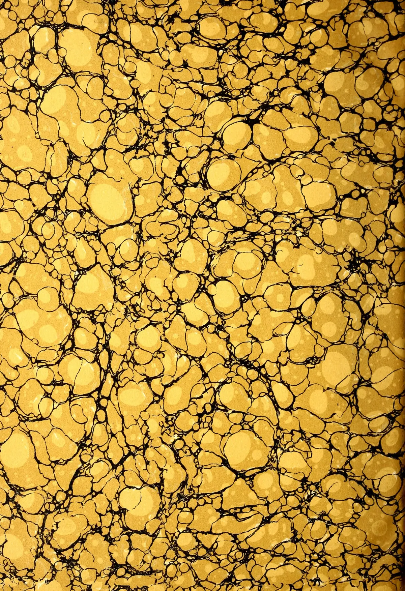
This image displays a classic marbled paper pattern, often referred to as 'stone' or 'shell' marbling. The design is composed of numerous irregular, rounded shapes in various shades of gold and yellow, ranging from light cream to deep goldenrod. These shapes are separated by a network of thin, dark, vein-like lines that create a complex, organic texture. The overall effect is reminiscent of a stone surface or a microscopic view of a biological structure. The pattern is dense and covers the entire frame without any margins or text.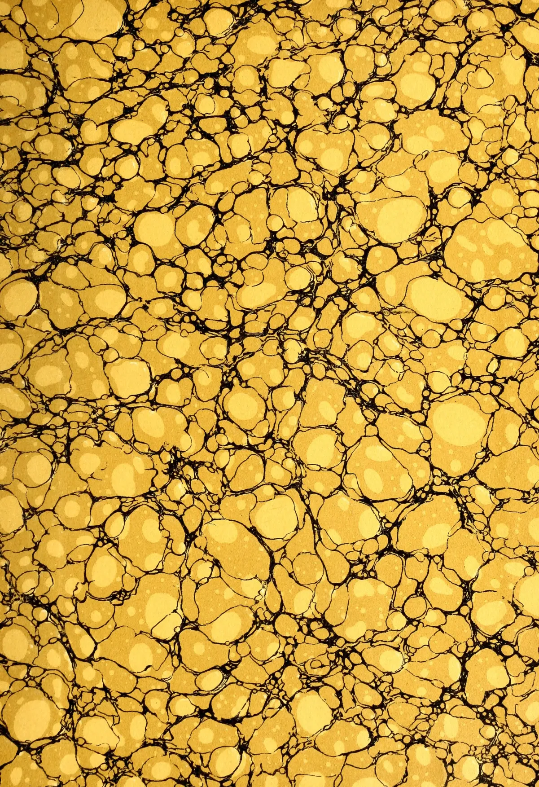
This image is a full-page abstract pattern. It consists of numerous irregular, rounded, and somewhat organic shapes in a golden-yellow hue. These shapes are separated by thin, dark, black lines that create a network-like or cellular structure. The overall effect is reminiscent of a microscopic view of a material, such as a cross-section of wood or a biological tissue, or perhaps a stylized representation of a honeycomb or a sponge. The shapes vary in size and are densely packed, filling the entire frame without any visible margins or text.